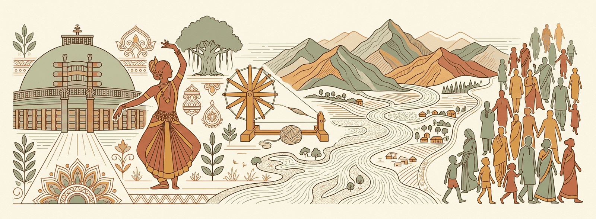
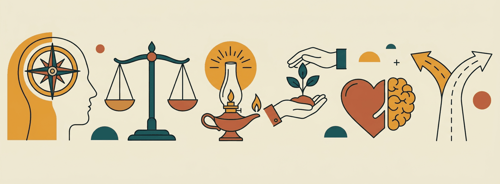

Sati 1829 (Bentinck-Rammohan), Lapse = Dalhousie (Jhansi 1853, Nagpur 1854, Awadh 1856).
Revision Digest
Condensed for the last mile before the exam.
Prelims GS-I › History & Culture › Modern History. Dedicated leaf card; the branch pack is ../../short-notes/modern-history-prelims-revision.html and the practice set is ../pyqs/east-india-company-mcqs.html.
Arrival sequence (the classic ordering question)
Portuguese 1498 (Vasco da Gama, Calicut; Cochin factory 1503; Goa captured by Albuquerque 1510) → Dutch 1602 VOC (Masulipatnam 1605, Pulicat; defeated at Bedara 1759) → English EIC charter 31 Dec 1600 (Surat factory 1613; Madras 1639; Bombay 1668 from Charles II; Calcutta 1690 Job Charnock) → Danes 1616 (Tranquebar, Serampore) → French 1664 (Surat 1668, Pondicherry 1674 by François Martin).
Carnatic Wars: I (1746–48, Aix-la-Chapelle) · II (1749–54, Dupleix recalled) · III (1758–63, Wandiwash 1760, Paris 1763 — French reduced to trading posts).
Bengal: from trader to ruler
Plassey 23 June 1757 — Clive vs Siraj-ud-Daulah; Mir Jafar's treachery; Mir Jafar installed.
Buxar 22 Oct 1764 — Munro vs Mir Qasim + Shuja-ud-Daula + Shah Alam II (militarily more decisive than Plassey).
Treaty of Allahabad 1765 — Diwani of Bengal-Bihar-Orissa to EIC; Awadh returned to Shuja for ₹50 lakh; Kora-Allahabad to Shah Alam.
Dual Government 1765–72 (Clive) — Company had Diwani (revenue), Nawab had Nizamat (administration); ended by Warren Hastings 1772.
Bengal famine 1770 (one-third of population estimated dead).
Expansion wars & instruments
Anglo-Mysore: I 1767–69 (Treaty of Madras) · II 1780–84 (Mangalore; Hyder Ali died 1782) · III 1790–92 (Seringapatam; Tipu ceded half territory) · IV 1799 (Tipu killed; Wodeyar restored).
Anglo-Maratha: I 1775–82 (Salbai) · II 1803–05 (Bassein 1802 with Baji Rao II) · III 1817–18 (Peshwaship abolished; Baji Rao II pensioned at Bithur → Nana Saheb link).
Anglo-Sikh: I 1845–46 (Lahore) · II 1848–49 (Punjab annexed; Dalhousie).
Subsidiary Alliance — Wellesley 1798; first taker Hyderabad 1798, then Mysore 1799, Tanjore, Awadh 1801, Peshwa 1802.
Doctrine of Lapse — Dalhousie; Satara 1848, Jaitpur & Sambalpur 1849, Udaipur 1852, Jhansi 1853, Nagpur 1854; Awadh annexed 1856 on grounds of misgovernance (not lapse).
Regulating Act 1773 (Governor-General of Bengal — Hastings; Supreme Court Calcutta 1774) → Pitt's India Act 1784 (Board of Control; dual control) → Charter 1813 (monopoly ended except tea & China; ₹1 lakh for education) → Charter 1833 (GG of India — Bentinck; Company purely administrative; Law Member — Macaulay) → Charter 1853 (open competition for civil services; separate Legislative Council).
Traps
Plassey was a betrayal, Buxar a battle; Diwani came from Shah Alam II not the Nawab.
Wellesley introduced subsidiary alliance; the idea was Dupleix's.
First Governor-General of India = Bentinck (1833), of Bengal = Hastings (1773); first Viceroy = Canning (1858).
Key Points & Mindmap
Skeleton facts and recall triggers.
Match-drills.
Pairs flash
1600 charter → Elizabeth I · Machilipatnam 1611 first factory · Swally 1612 → Surat · Roe → Jahangir farman.
Bassein 1802 = Peshwa treaty (war II trigger) — not Goa Bassein confusion.
Koh-i-noor → taken 1849 Punjab annexation (Dalhousie), displayed 1851.
Diagrams, Maps & Flowcharts
Visual anchors for the answer sheet.
Previous Year Questions
What the examiner has actually asked.
8 original prelims-pattern questions (statement, sequence, match). Key with one-line reasoning at the end.
Q1. Arrange in chronological order of establishing a settlement in India: 1. Dutch 2. Danes 3. French 4. Portuguese (a) 4-1-2-3 (b) 4-1-3-2 (c) 1-4-2-3 (d) 4-2-1-3
Q2. Consider the statements about the Treaty of Allahabad (1765):
It granted the Diwani of Bengal, Bihar and Orissa to the Company.
It was signed with Siraj-ud-Daulah.
Kora and Allahabad were given to Shah Alam II.
Which are correct? (a) 1 and 2 (b) 1 and 3 (c) 2 and 3 (d) 1, 2 and 3
Q3. The "Dual Government" of Bengal was abolished by: (a) Robert Clive (b) Warren Hastings (c) Cornwallis (d) Wellesley
Q4. Which of the following was annexed by Dalhousie on grounds of misgovernance rather than the Doctrine of Lapse? (a) Jhansi (b) Satara (c) Awadh (d) Nagpur
Q5. Match the land-revenue system with its architect: A. Permanent Settlement — 1. Holt Mackenzie · B. Ryotwari — 2. Cornwallis · C. Mahalwari — 3. Thomas Munro (a) A-2 B-3 C-1 (b) A-2 B-1 C-3 (c) A-3 B-2 C-1 (d) A-1 B-3 C-2
Q6. Which Charter Act ended the Company's trade monopoly in India except for tea and trade with China? (a) 1793 (b) 1813 (c) 1833 (d) 1853
Q7. The Battle of Wandiwash (1760) was fought between: (a) English and Marathas (b) English and French (c) French and Dutch (d) English and Mysore
Q8. Consider: 1. The first state to accept the Subsidiary Alliance was Mysore. 2. Under the alliance, the Indian ruler had to maintain a British resident at his court. (a) 1 only (b) 2 only (c) Both (d) Neither
Answer key
Q
Ans
Why
1
a
Portuguese 1498 → Dutch 1602/1605 → Danes 1616 → French 1664: the Danes arrived before the French — the usual trap.
2
b
Signed with Shah Alam II and Shuja-ud-Daula after Buxar; Siraj died in 1757.
3
b
Hastings ended it in 1772 and took over direct revenue administration.
4
c
Awadh 1856 — "misgovernment"; the other three lapsed.
Military: sepoy-european ratio, pay-rank gaps, General Service Enlistment 1856 (cross-the-sea clause), Enfield rifle greased cartridge (cow-pig fat rumour) — Barrackpore Mangal Pandey 29 March 1857 (hanged 8 April).
Historiography tags: 'Sepoy Mutiny' (British school) vs 'First War of Independence' (V.D. Savarkar 1909) vs 'popular-military mix' (modern view — S.N. Sen, R.C. Majumdar).
2. Spread & leaders
Centre
Leader / note
Meerut
10 May 1857 sepoy rising → Delhi march
Delhi
Bahadur Shah II proclaimed; General Bakht Khan (Bareilly contingent); fell Sept 1857 (Nicholson; Hodson arrests)
Rani Lakshmibai (Jhalkari Bai stand-in lore); fell Apr 1858; died Gwalior June 1858 (Hugh Rose: 'the best and bravest of the rebel leaders')
Bareilly
Khan Bahadur Khan (Rohilla claim)
Bihar (Jagdishpur)
Kunwar Singh (80-year-old; died Apr 1858)
Faizabad
Maulvi Ahmadullah Shah
Allahabad-Bhojpur / Indore / Kolhapur
local risings (Rango Bapaji and other local leaders)
3. Suppression & aftermath
Campbell (Cawnpore Dec 1857, Lucknow Mar 1858, Oudh pacification), Havelock-Outram reliefs, Nicholson-Lawrence Delhi, Rose central India, Cooper's Allahabad summary justice; proclamation of peace Nov 1858 (Campbell-Canning).
Government of India Act 1858: Company ends; Secretary of State + Council (15); Viceroy replaces GG (Canning first); Queen Victoria Proclamation 1 Nov 1858 (Allahabad durbar — 'Magna Carta of Indian people' tag); army reorganisation (higher European ratio, mixed castes, artillery European-only); princely states protected (paramountcy doctrine starts); policy of non-annexation.
MCQ hooks
Mangal Pandey: Barrackpore, 34th NI, March 1857.
Match centres-leaders table verbatim (5 main pairs).
1858 Act twins: Secretary of State (London) + Viceroy (Canning) — Company abolished.
Prelims GS-I › History & Culture › Modern History. Mains-depth notes exist under mains/gs-1-heritage-geography-society/modern-history/revolt-1857/; this card is the MCQ-precision layer.
Trigger & spread
Immediate spark: greased cartridges of the Enfield P-53 rifle; Mangal Pandey, 34th BNI, Barrackpore, 29 March 1857.
Outbreak 10 May 1857 Meerut (3rd Light Cavalry) → Delhi 11 May → Bahadur Shah Zafar proclaimed emperor.
Not a mutiny alone: peasants, taluqdars of Awadh, artisans; ~half of Bengal Army's sepoys were from Awadh/NWP.
Centres and leaders (high-yield match)
Centre
Indian leader
British suppressor
Delhi
Bahadur Shah II, Gen. Bakht Khan
John Nicholson, Hudson (captured Zafar)
Kanpur
Nana Saheb, Tantia Tope, Azimullah Khan
Colin Campbell
Lucknow
Begum Hazrat Mahal (son Birjis Qadr)
Havelock, Outram, Campbell
Jhansi
Rani Lakshmibai
Hugh Rose
Gwalior
Tantia Tope, Rani (died 17 June 1858)
Hugh Rose
Bareilly
Khan Bahadur Khan
Campbell
Arrah/Jagdishpur
Kunwar Singh (80-yr-old zamindar)
William Taylor, Vincent Eyre
Faizabad
Maulvi Ahmadullah Shah
—
Allahabad/Banaras
Liaquat Ali
Col. Neill
Zafar tried and exiled to Rangoon (died 1862); Nana Saheb disappeared to Nepal; Tantia Tope betrayed by Man Singh, executed April 1859.
Political: Doctrine of Lapse, annexation of Awadh 1856, disrespect to Mughal (Canning's 1856 decision that Zafar's successor would leave the Red Fort).
Economic: heavy revenue, ruin of handicrafts, Inam Commission (Bombay, 20,000 estates confiscated).
Socio-religious: Sati abolition 1829, Widow Remarriage 1856, Religious Disabilities Act 1850, missionary activity.
Military: General Service Enlistment Act 1856 (overseas service), foreign-service allowance (bhatta) cut, low pay, promotions blocked.
Aftermath — institutional redesign
Government of India Act 1858 — Company abolished; Secretary of State for India (Stanley first) with 15-member India Council; Governor-General became Viceroy (Canning).
Queen's Proclamation 1 Nov 1858 (Allahabad) — "Magna Carta of Indian people": no more annexation, religious neutrality, equal treatment in services.
Army reorganisation (Peel Commission): European:Indian ratio 1:2 Bengal, 1:3 Bombay/Madras; artillery in European hands; "martial races" doctrine.
Indian Councils Act 1861 — Indians nominated to Legislative Council (portfolio system, Canning).
Interpretations (names only, for match questions)
V.D. Savarkar — "First War of Independence" (1909). R.C. Majumdar — "neither first, nor national, nor a war of independence". S.N. Sen — began as fight for religion, ended as war of independence. Benjamin Disraeli — "national rising". Eric Stokes — peasant/agrarian dimension. Lawrence & Seeley — sepoy mutiny.
Traps
Nana Saheb's cause: pension denied by Dalhousie (he was Baji Rao II's adopted son).
Rani Lakshmibai died at Kotah-ki-Serai near Gwalior, not at Jhansi.
The Revolt was suppressed by mid-1858; Tantia Tope captured 1859.
(a) 1 and 2 (b) 2 and 3 (c) 1 and 3 (d) 1, 2 and 3
Q2. The General Service Enlistment Act (1856) is associated with the Revolt because it: (a) Cut the bhatta of sepoys serving in Sindh (b) Required new recruits to serve overseas if ordered (c) Introduced the greased cartridges (d) Barred Brahmins from the Bengal Army
Q3. Consider the statements: 1. Bahadur Shah Zafar was tried and exiled to Rangoon. 2. Tantia Tope was captured due to betrayal by Man Singh and executed in 1859. (a) 1 only (b) 2 only (c) Both (d) Neither
Q4. After the Revolt, the ratio of European to Indian troops in the Bengal Army was fixed at: (a) 1:1 (b) 1:2 (c) 1:3 (d) 1:5
Q5. Which of the following did NOT participate in the Revolt? (a) Kunwar Singh of Jagdishpur (b) Scindia of Gwalior (c) Rani of Jhansi (d) Nana Saheb of Bithur
Q6. The Queen's Proclamation of 1858 was read out by Lord Canning at: (a) Calcutta (b) Delhi (c) Allahabad (d) Lucknow
Q7. Who described 1857 as "neither first, nor national, nor a war of independence"? (a) V.D. Savarkar (b) R.C. Majumdar (c) S.N. Sen (d) Benjamin Disraeli
Q8. Consider: 1. The Government of India Act 1858 created the office of Secretary of State for India with a 15-member council. 2. The same Act made the Governor-General the Viceroy, the first being Lord Canning. (a) 1 only (b) 2 only (c) Both (d) Neither
Answer key
Q
Ans
Why
1
a
Arrah was Kunwar Singh; Ahmadullah Shah led at Faizabad.
2
b
Overseas ("kala pani") service threatened caste norms.
3
c
Zafar died in Rangoon 1862; Tantia Tope hanged April 1859.
Scindia remained loyal to the British (his troops mutinied, he did not).
6
c
Allahabad, 1 Nov 1858 — the "Magna Carta".
7
b
Majumdar; Sen: religious fight → war of independence; Savarkar: First War of Independence.
8
c
Both statements accurate; the Board of Control and Court of Directors were abolished.
Part I — GS Paper I — General Studies (Prelims) · Chapter 1: History & Indian Culture
Lesson 1.1.3
Socio-Religious Reform Movements
Detailed Study
The full treatment of this lesson.
19th-early 20th century awakening: reformer → organisation → year → focus. Prelims staple.
1. Bengal & the Brahmo line
Rammohan Roy: Atmiya Sabha 1815, Brahmo Sabha 1828 (→ Brahmo Samaj), Sati pamphlets ('Sahamaran' debate vs Dharma Sabha and Srinath Roy), sati abolition 1829 (Reg XVII, Bentinck); Persian-style works: Tuhfat-ul-Muwahhidin; 'Precepts of Jesus'; Sambad Kaumudi paper.
Debendranath Tagore (Tattvabodhini Sabha 1839; Brahmo covenant 1843); Keshab Chandra Sen (split 1866 — Brahmo Samaj of India; Special Marriage Act III 1872 lineage) vs Adi Brahmo (Devendranath); Henry Derozio — Young Bengal (Academic Association); Ishwar Chandra Vidyasagar (widow remarriage champion — Act XV 1856; Bengali primer; Metropolitan institution).
2. Western & southern reform
Prarthana Samaj 1867 (Atmaram Pandurang, Bombay); M.G. Ranade (widows'-remarriage push; Indian National Conference 1883; economic-decentralisation scholarship), R.G. Bhandarkar; Gopal Krishna Gokhale — Servants of India Society 1905.
Jyotirao Phule: Satyashodhak Samaj 1873 (Gulamgiri 1873; Savitribai girls' school Pune 1848); Sri Narayana Guru (Aruvippuram 1888 installation; SNDP Yogam 1903 (Dr. Palpu's backing)), Vaikom satyagraha 1924-25 support; Periyar E.V. Ramasamy: Vaikom hero, Self-Respect Movement 1925, Dravidar Kazhagam 1944; Ayyankali (Villuvandi yatra, Sadhujana Paripalana 1907).
Dr. B.R. Ambedkar: Bahishkrit Hitakarini Sabha 1924, Mahad 1927, Kalaram temple 1930, Annihilation of Caste 1936; 'Educate-Agitate-Organise'.
3. Revivalist & Muslim-Sikh reform
Swami Dayananda Saraswati — Arya Samaj 1875 Bombay (Satyarth Prakash; 'back to the Vedas'; Shuddhi reconversion; DAV schools 1886 Lahore; debates idolatry-caste-by-birth); Vivekananda: Chicago 1893; Ramakrishna Mission 1897 (guru Ramakrishna Paramahamsa; 'Daridra Narayana' service); Theosophical Society — Adyar shift 1882 (Olcott-Besant; Besant Central Hindu College BHU seed 1898 + Home Rule 1916).
Sir Syed Ahmed Khan: Scientific Society 1864 Aligarh; MAO College 1875 (→ Aligarh Muslim Univ 1920); Tahzeeb-ul-Akhlaq 1870; two-nation seed vs later nationalists; Deoband school 1866 (Muhammad Qasim Nanautavi — traditionalist opposite pole); Singh Sabha 1873 Amritsar (Khalsa College 1892; Tat Khalsa purge); Ahmadiya 1889 Qadian (Mirza Ghulam Ahmad) — contested minority stream; Parsi: Rahnumai Mazdayasnan Sabha 1851 (Naoroji line).
4. Social-legislation anchors
Sati 1829; Hindu Widows' Remarriage Act 1856 (Vidyasagar push); Female Infanticide Act 1870; Age of Consent Act 1891 (10→12; Rukhmabai-Phulmoni case); Sarda Act 1929 (marriage 14/18 — child marriage restraint); Special Marriage Act III 1872 (Brahmo); Devadasi system bans (Madras 1947).
Q2. The Sadharan Brahmo Samaj (1878) was formed after a split caused by: (a) Debendranath's rejection of Vedic infallibility (b) Keshab Chandra Sen marrying his minor daughter to the Cooch Behar prince (c) Rammohan Roy's death (d) The Age of Consent Act
Q3. Which Act fixed the minimum age of marriage at 14 for girls and 18 for boys? (a) Native Marriage Act 1872 (b) Age of Consent Act 1891 (c) Sarda Act 1929 (d) Special Marriage Act 1954
Q4. Consider: 1. Arya Samaj was founded at Lahore in 1875. 2. The DAV movement and the Gurukul Kangri represented rival wings within Arya Samaj. (a) 1 only (b) 2 only (c) Both (d) Neither
Q5. Who founded the Deoband school (Dar-ul-Ulum) in 1866? (a) Sir Syed Ahmad Khan (b) Muhammad Qasim Nanautavi and Rashid Ahmad Gangohi (c) Maulana Abul Kalam Azad (d) Shibli Numani
Q6. The Vaikom Satyagraha (1924–25) demanded: (a) Abolition of the devadasi system (b) Entry of avarnas on roads around a temple (c) Right to temple entry in Travancore temples (d) Abolition of child marriage
Q7. Behramji Malabari is associated with: (a) Age of Consent Act, 1891 (b) Widow Remarriage Act, 1856 (c) Sati Regulation, 1829 (d) Child Marriage Restraint Act, 1929
Q8. Which reformer's slogan was "One caste, one religion, one God for mankind"? (a) E.V. Ramaswamy (b) Ayyankali (c) Sree Narayana Guru (d) Vaikunda Swami
Answer key
Q
Ans
Why
1
a
Phule 1873; Dadoba 1849; Atmaram 1867.
2
b
The 1878 Cooch Behar marriage violated the 1872 Act Keshab had championed.
3
c
Sarda Act; 1891 fixed 12 for consummation; 1872 Act was 14/18 only for Brahmo civil marriages.
4
b
Founded at Bombay 1875, HQ shifted to Lahore 1877; DAV (Hansraj) vs Gurukul (Shraddhanand).
5
b
Deoband later backed Congress via Jamiat-ul-Ulama-i-Hind.
6
b
Road access around Vaikom temple; temple entry proclamation came in 1936.
7
a
Malabari's campaign after the Rukhmabai/Phulmoni cases.
8
c
SNDP Yogam 1903; Aruvippuram consecration 1888.
Part I — GS Paper I — General Studies (Prelims) · Chapter 1: History & Indian Culture
Lesson 1.1.4
National Movement: Moderates, Extremists & Gandhian Era (1885–1919)
Detailed Study
The full treatment of this lesson.
From moderate petitions to mass agitation: INC genesis, Swadeshi explosion, Extremist surge, Home Rule bridge, Gandhian launch.
1. Pre-INC political associations
Zamindari Association 1838, British Indian Association 1851, East India Association (London, Naoroji 1866), Indian Association (Surendranath Banerjee, 1876), Madras Mahajana Sabha + Bombay Presidency Association 1884; A.O. Hume retires-Indian-organiser → INC 1885 Bombay (W.C. Bonnerjee first president; safety-valve thesis debate — Bipan Chandra refutes).
2. Moderates (1885-1905) & economic critique
Moderates: Naoroji ('Grand Old Man'; poverty & un-British rule; DRAIN THEORY — Poverty and Un-British Rule in India), R.C. Dutt (Economic History of India), Ranade-Gokhale (liberal constitutionalism), W.C. Bonnerjee, S.N. Banerjee; methods: prayers-petitions ('3P'), constitutional means; gains: Indian Councils Act 1892 seeds.
Drain debate anchors: Home Charges, Council Bills, 'bleeding' metaphors; Naoroji president thrice (1886, 1893, 1906).
3. Partition of Bengal & Swadeshi (1905-11) + Extremists
Curzon partitions Bengal 16 Oct 1905 (administrative plea; divide-and-manage); response: Swadeshi-boycott (Calcutta 7 Aug resolution), national education (Bengal National College — Aurobindo principal), Swadeshi Steam Navigation (V.O. Chidambaram Pillai), samitis (Swadesh Bandhab — Ashwini Dutta), art (Abanindranath Bharat Mata), press (Yugantar, Sandhya, Kesari), bande mataram spread.
Revolutionary stream I: Anushilan + Jugantar (Barindra Ghosh, Khudiram-Prafulla Chaki Muzaffarpur 1908), Alipore case; Savarkar (Abhinav Bharat, 1857 book), Ghadar Party (San Francisco 1913 — Lala Har Dayal; Komagata Maru 1914), Berlin Committee; Defence of India Act crackdowns.
4. Morley-Minto, Muslim League, Home Rule, Lucknow Pact
Muslim League 1906 Dacca (Nawab Salimullah; Simla deputation 1906 — separate-electorate ask), Morley-Minto Reforms 1909: separate electorates institutionalised ('father of communal electorate' tag), Indian members into executive councils; partition annulled 1911 (Delhi durbar; capital shift announced — 1912 transfer).
Home Rule leagues 1916: Tilak (Poona — Maharashtra, Karnataka, Central Provinces) + Annie Besant (Madras, All-India; New India/Commonweal); June 1917 Besant internment → agitation; Montagu declaration 20 Aug 1917 ('responsible government' goal).
Drain theory → Naoroji; Economic History → R.C. Dutt.
Swadeshi launch date 7 Aug 1905 (Calcutta Town Hall); partition 16 Oct 1905.
Surat 1907 split vs Lucknow 1916 reunion-pact twins.
Morley-Minto 1909 = separate electorates; League = Dacca 1906.
Home Rule 1916 duo = Tilak (Poona) + Besant (Madras).
Gandhi triple before Rowlatt: Champaran-Kheda-Ahmedabad (1917-18 order).
Revision Digest
Condensed for the last mile before the exam.
Prelims GS-I › History & Culture › Modern History. Session-president and year-event matching is the exam's favourite here.
Pre-Congress associations
Landholders' Society 1838 · British Indian Association 1851 (Calcutta) · East India Association 1866 London (Naoroji) · Poona Sarvajanik Sabha 1870 (Ranade, Joshi) · Indian Association 1876 (S.N. Banerjea, Anandamohan Bose) · Madras Mahajan Sabha 1884 · Bombay Presidency Association 1885.
Ilbert Bill controversy 1883 (Ripon) → "white mutiny" → lesson in organisation.
Congress founding & sessions
28 Dec 1885, Gokuldas Tejpal Sanskrit College, Bombay; 72 delegates; W.C. Bonnerjee president; A.O. Hume general secretary.
Firsts: Badruddin Tyabji (1887 Madras, first Muslim) · George Yule (1888, first Englishman) · Annie Besant (1917 Calcutta, first woman) · Sarojini Naidu (1925 Kanpur, first Indian woman) · Naoroji thrice (1886, 1893, 1906 — "Swaraj" word) · Nehru–Nehru father-son (1919 Amritsar Motilal; Jawaharlal 1929 Lahore).
Surat split 1907 (Rash Behari Ghosh); reunion Lucknow 1916 (A.C. Majumdar) with the Lucknow Pact (separate electorates accepted).
Bande Mataram newspaper ≠ song origin (Anandamath, Bankim).
Rowlatt satyagraha date 6 April 1919 hartal; Jallianwala 13 April (Baisakhi day).
Diagrams, Maps & Flowcharts
Visual anchors for the answer sheet.
Previous Year Questions
What the examiner has actually asked.
8 original prelims-pattern questions; key with one-line reasoning at the end.
Q1. The first session of the Indian National Congress (1885) was presided over by: (a) A.O. Hume (b) W.C. Bonnerjee (c) Dadabhai Naoroji (d) Badruddin Tyabji
Q2. Consider: 1. The Surat split of 1907 occurred under the presidency of Rash Behari Ghosh. 2. The Moderates and Extremists reunited at the Lucknow session of 1916. (a) 1 only (b) 2 only (c) Both (d) Neither
Q3. The "Drain of Wealth" theory is most closely associated with: (a) R.C. Dutt (b) Dadabhai Naoroji (c) M.G. Ranade (d) G.K. Gokhale
Q4. Arrange chronologically: 1. Partition of Bengal 2. Founding of Muslim League 3. Morley-Minto Reforms 4. Ghadar Party (a) 1-2-3-4 (b) 2-1-3-4 (c) 1-3-2-4 (d) 1-2-4-3
Q5. Which of the following Home Rule League statements is correct? (a) Besant's League was founded before Tilak's (b) Tilak's League covered Maharashtra, Karnataka, Central Provinces and Berar (c) Both Leagues were merged into Congress in 1916 (d) Tilak's League had its headquarters in Madras
Q6. In which satyagraha did Gandhi first use the hunger strike as a weapon? (a) Champaran (b) Kheda (c) Ahmedabad mill strike (d) Rowlatt satyagraha
Q7. Who resigned from the Viceroy's Executive Council in protest against the Jallianwala Bagh massacre? (a) Sir Sankaran Nair (b) Satyendra Prasanna Sinha (c) Tej Bahadur Sapru (d) Srinivasa Sastri
Q8. The Komagata Maru incident (1914) is linked to which organisation? (a) Anushilan Samiti (b) Ghadar Party (c) India House (d) Hindustan Republican Association
Answer key
Q
Ans
Why
1
b
Bonnerjee presided; Hume was general secretary.
2
c
Both correct; A.C. Majumdar presided at Lucknow 1916.
3
b
Poverty and Un-British Rule in India (1901).
4
a
1905 → Dec 1906 → 1909 → 1913.
5
b
Tilak's began April 1916 (Belgaum), Besant's September 1916 (Madras).
INA trials trio names; 'Jai Hind' + Rani of Jhansi regiment = Bose INA.
Revision Digest
Condensed for the last mile before the exam.
Prelims GS-I › History & Culture › Modern History. The dense timeline questions come from here; memorise the year-to-event ladder.
1919–1922: Khilafat & Non-Cooperation
Khilafat Committee 1919 (Ali brothers, Maulana Azad); All-India Khilafat Conference Nov 1919 Delhi; Gandhi president.
Non-Cooperation adopted at Calcutta special session Sept 1920 (Lala Lajpat Rai), confirmed Nagpur Dec 1920 (C. Vijayaraghavachariar) — new Congress constitution, PCCs on linguistic basis, 4-anna membership.
Programme: boycott of titles, courts, schools, councils, foreign cloth; Tilak Swaraj Fund (₹1 crore); national institutions (Jamia Millia, Kashi Vidyapeeth, Gujarat Vidyapeeth).
Chauri Chaura 5 Feb 1922 → Bardoli resolution 12 Feb withdraws; Gandhi tried March 1922 (Judge Broomfield, 6 years).
Swaraj Party 1923 (C.R. Das president, Motilal Nehru secretary; Gaya session split "pro-changers" vs "no-changers").
1927–1931: Simon to Gandhi–Irwin
Simon Commission announced Nov 1927 (all-white); arrived 3 Feb 1928; Lahore lathi-charge — Lala Lajpat Rai dies (Nov 1928) → Saunders killed (Bhagat Singh, Rajguru, Azad).
Nehru Report Aug 1928 (Motilal; dominion status; Jinnah's 14 points March 1929).
Bardoli Satyagraha 1928 (Patel earns "Sardar").
Assembly bomb 8 April 1929 (Bhagat Singh, B.K. Dutt); Lahore conspiracy → executed 23 March 1931.
Lahore Dec 1929 (Jawaharlal) — Purna Swaraj; 26 Jan 1930 Independence Day.
RTC-1 Nov 1930 (Congress absent) → Gandhi–Irwin Pact 5 March 1931 → Karachi session March 1931 (Patel; Fundamental Rights & National Economic Programme) → RTC-2 Sept–Dec 1931 (Gandhi alone) → CDM resumed Jan 1932.
1932–1939: Communal Award to war
Communal Award 16 Aug 1932 (MacDonald) → Gandhi fast Yeravda → Poona Pact 24 Sept 1932 (Ambedkar; reserved seats 148 in provinces, joint electorate). Harijan Sevak Sangh.
GoI Act 1935; elections 1937 — Congress ministries in 8 provinces (July 1937), resigned Oct–Nov 1939 ("Deliverance Day" 22 Dec 1939, League).
Lahore Resolution 23 March 1940 (League; "Pakistan" not named); August Offer 8 Aug 1940 (Linlithgow); Individual Satyagraha Oct 1940 (Vinoba first, Nehru second).
Cripps Mission March 1942 — "post-dated cheque"; rejected.
Quit India 8 Aug 1942 (Bombay, Gowalia Tank; "Do or Die"); underground: Jayaprakash, Aruna Asaf Ali, Usha Mehta (radio), parallel governments Ballia, Tamluk (Jatiya Sarkar), Satara (Prati Sarkar).
INA: Mohan Singh 1942 → Bose takes over July 1943 (Singapore), Azad Hind government 21 Oct 1943; Imphal-Kohima 1944; Red Fort trials Nov 1945 (Shah Nawaz, Sahgal, Dhillon; Bhulabhai Desai defends).
C.R. formula 1944; Desai–Liaquat pact 1945; Wavell Plan / Simla Conference June 1945; RIN mutiny Feb 1946 (Bombay).
Cabinet Mission May 1946 (Pethick-Lawrence, Cripps, Alexander) — grouping A/B/C; Direct Action Day 16 Aug 1946; Interim Government 2 Sept 1946 (Nehru); Constituent Assembly first meets 9 Dec 1946.
Attlee statement 20 Feb 1947 (June 1948 deadline) → Mountbatten Plan 3 June 1947 → Indian Independence Act 18 July 1947 → 15 Aug 1947; Radcliffe line.
Traps
Non-cooperation adopted at Calcutta (Sept 1920) but ratified at Nagpur.
Purna Swaraj Congress president was Jawaharlal Nehru (Lahore 1929); Karachi 1931 was Patel.
Lahore Resolution moved by Fazlul Haq; Bose was not at Tripuri's aftermath Forward Bloc as Congress president.
Key Points & Mindmap
Skeleton facts and recall triggers.
Movement → anchor drills.
Pairs flash
Karachi khilafat conf 1921 → Ali brothers · Chauri Chaura 5 Feb 1922 → Bardoli withdrawal · Swarajists → Motilal-C.R. Das (1923 councils).
1937 ministries → 8 provinces, resign Oct 1939 · Lahore 23 Mar 1940 → Pakistan resolution · August Offer 1940 · Individual satyagraha first → Vinoba.
Cripps Mar 1942 → 'post-dated cheque' · Quit India 8 Aug 1942 → Gowalia Tank 'Do or Die' · Aruna Asaf Ali flag · Usha Mehta secret radio · JP escape · Nana Patil prati-sarkar.
INA 1943 Singapore → Bose · Rani Jhansi regiment → Lakshmi Sahgal · Red Fort trials trio → Shah Nawaz, Prem Sahgal, G.S. Sehgal · Imphal-Kohima 1944.
Direct Action 16 Aug 1946 → Calcutta killings · 3 June Plan → Mountbatten · Independence Act 18 Jul 1947 · 15 Aug 1947.
Trap flash
Khilafat abolished by Turkey itself 1924 (movement already folded).
First RTC: Congress absent (Gandhi in jail); Gandhi attends 2nd only.
Poona Pact = joint electorate with reserved seats (not separate).
Quit India leaders jailed day one — Aruna Asaf Ali hoisted flag at Gowalia Tank.
Cabinet Mission rejected Pakistan but accepted grouping — nuance asked.
Bose exits Congress 1939 (Tripuri crisis) → Forward Bloc, not 1938.
Diagrams, Maps & Flowcharts
Visual anchors for the answer sheet.
Previous Year Questions
What the examiner has actually asked.
8 original prelims-pattern questions; key with one-line reasoning at the end.
Q1. The Non-Cooperation programme was ratified with a new Congress constitution at the: (a) Calcutta special session 1920 (b) Nagpur session 1920 (c) Ahmedabad session 1921 (d) Gaya session 1922
Q2. Which session adopted the resolution on Fundamental Rights and National Economic Programme? (a) Lahore 1929 (b) Karachi 1931 (c) Faizpur 1936 (d) Haripura 1938
Q3. Consider the statements on the Poona Pact (1932): 1. It replaced separate electorates for depressed classes with reserved seats under joint electorates. 2. It was signed between Gandhi and Jinnah. (a) 1 only (b) 2 only (c) Both (d) Neither
Q5. The parallel "Jatiya Sarkar" during Quit India functioned at: (a) Ballia (b) Satara (c) Tamluk (d) Talcher
Q6. The Cabinet Mission (1946) did NOT include: (a) Pethick-Lawrence (b) Stafford Cripps (c) A.V. Alexander (d) Lord Wavell
Q7. Which of these is correctly matched? (a) Dharasana salt raid — Sarojini Naidu (b) Peshawar — Rajguru (c) Sholapur — Khan Abdul Ghaffar Khan (d) Vedaranyam — Jawaharlal Nehru
Q8. The Attlee statement of 20 February 1947 fixed which date as the deadline for transfer of power? (a) 15 August 1947 (b) 26 January 1948 (c) June 1948 (d) December 1947
Answer key
Q
Ans
Why
1
b
Nagpur Dec 1920 (Vijayaraghavachariar); Calcutta adopted, Nagpur ratified.
2
b
Karachi 1931, presided by Patel; drafted largely by Nehru.
3
a
Signed by Ambedkar and Madan Mohan Malaviya (for Gandhi) — not Jinnah.
4
a
Aug 1940 → Oct 1940 → Mar 1942 → Aug 1942.
5
c
Tamluk (Midnapore) — Jatiya Sarkar; Satara had Prati Sarkar.
6
d
Wavell was Viceroy, not a member.
7
a
Vedaranyam was Rajagopalachari; Peshawar was Ghaffar Khan.
8
c
June 1948; Mountbatten advanced it to 15 Aug 1947.
Part I — GS Paper I — General Studies (Prelims) · Chapter 1: History & Indian Culture
Lesson 1.1.6
Constitutional Development & Government of India Acts
Detailed Study
The full treatment of this lesson.
Charter acts → Crown rule → gradual Indianisation: each act's one-line signature.
1. Company-era framework (1773-1858)
Regulating Act 1773: first written intervention — Governor-General (Warren Hastings) + 4-member council, Supreme Court Calcutta 1774 (Impey), Bombay-Madras subordination partial, parliamentary oversight seeds; Amending Act 1781 (clarifies SC vs council — Act of Settlement).
Pitt's India Act 1784: dual government — Board of Control (political) + Court of Directors (commercial) frame; 'British possessions in India' first constitutional phrase.
Charter Acts: 1793 (routine renewal; salaries from India), 1813 (trade monopoly ends except tea-China; ₹1 lakh education-religion; missionaries open), 1833 (Company becomes purely administrative trustee; GG-of-India title — Bentinck first; law member Macaulay; central legislative centralisation), 1853 (last charter; patronage ends → open competition for the civil services; separate legislative council 12 members; law commission).
GoI Act 1858: post-1857 — Company abolished; Secretary of State + 15-member Council of India; Viceroy (Canning first);Proclamation Nov 1858.
2. Crown-era gradualism (1861-1919)
Indian Councils Act 1861: Indians nominated (Raja of Benares etc.), portfolio system (Canning), ordinances, restored Bombay-Madras legislation; decentralisation start.
1876 Royal Titles Act (Victoria 'Empress of India' — 1877 durbar); Indian Councils Act 1892: indirect election hint (recommendation channels), budget discussion rights, questions allowed.
Morley-Minto 1909: separate electorates (first statutory), legislative council expansion, first Indian in Viceroy's executive council (Satyendra Sinha).
Montagu-Chelmsford 1919 (GoI Act): dyarchy in provinces (transferred vs reserved), bicameral centre (Council of State + Legislative Assembly), direct elections widened, public-service commission promise (Lee 1924), statutory commission promise.
3. Endgame acts (1928-1947)
Simon Commission 1927 (two years early; all-white; Nehru report answer 1928; Jinnah's 14 points 1929); Nehru Report: dominion status, FRs, joint electorates; Calcutta session Dec 1928 → Purna Swaraj (Lahore Dec 1929, 26 Jan 1930 first celebration).
GoI Act 1935: provincial autonomy (from Apr 1937), proposed all-India federation (states never joined → dead), dyarchy at centre instead, RBI 1935, Federal Court 1937, Burma-Aden separated, Sindh-Orissa created, franchise ~14%.
August Offer 1940 (constituent assembly of Indians hinted — reject), Cripps 1942 (post-war dominion + CA + provincial opt-out — rejected), Wavell/Shimla 1945, Cabinet Mission 1946 (CA constituted: 389 seats; Nov-Dec 1946 first sitting — Sachchidananda Sinha temp chair, Rajendra Prasad president 11 Dec 1946; Objectives Resolution 13 Dec 1946 — Nehru), Independence Act 1947 (dominions 15 Aug; CA sovereign; GG title restored; lapsed Crown paramountcy).
MCQ hooks
1773 = first GG + SC Calcutta; 1781 = Act of Settlement; 1784 = Board of Control.
1813 monopoly ends (tea kept); 1833 pure-admin + GG-of-India; 1853 open competition + separate legislature.
1858 pair: Secretary of State + Viceroy (Canning).
1909 Sinha = first Indian in Viceroy's exec council; 1919 dyarchy = provinces only.
1935 quartet: provincial autonomy, RBI, Federal Court, federation dead-letter.
CA chain: Cabinet Mission → first sitting 9 Dec 1946 → Objectives Res 13 Dec → Rajendra Prasad 11 Dec 1946.
Revision Digest
Condensed for the last mile before the exam.
Prelims GS-I › History & Culture › Modern History (also feeds Polity). "Which Act introduced X?" — this card is the answer bank.
Company rule (1773–1853)
Act
Key provisions
Regulating Act 1773
Governor of Bengal → Governor-General of Bengal (Warren Hastings) with 4-member council; Supreme Court at Calcutta 1774 (Impey); Company servants barred from private trade; Court of Directors to report revenue/civil/military affairs
Amending Act 1781 (Act of Settlement)
Governor-General & council exempted from SC jurisdiction for official acts
Pitt's India Act 1784
Board of Control (political) + Court of Directors (commercial) — "double government"; territories first called "British possessions in India"
Act of 1786
Cornwallis could override council; GG also C-in-C
Charter Act 1793
20-year charter renewal; salaries from Indian revenues
GG of Bengal → GG of India (William Bentinck); Bombay & Madras lost legislative powers; Company became purely administrative; Law Member (Macaulay); attempted open competition (dropped)
Charter Act 1853
Legislative & executive functions separated (Indian Legislative Council); open competition for civil service (Macaulay Committee 1854); no fixed charter period; local representation (4 members) in legislature
Crown rule (1858–1947)
Act
Key provisions
GoI Act 1858
Company abolished; Secretary of State for India + 15-member Council of India; GG → Viceroy (Canning); Board of Control & Court of Directors abolished
Indian Councils Act 1861
Indians nominated (Raja of Banaras, Maharaja of Patiala, Sir Dinkar Rao); legislative devolution to Bombay & Madras; portfolio system (Canning); Viceroy ordinances (6 months)
Indian Councils Act 1892
Indirect election (nomination on recommendation); budget discussion; questions allowed
Indian Councils Act 1909 (Morley–Minto)
Separate electorates for Muslims; Imperial Legislative Council 16 → 60; first Indian in Viceroy's Executive Council (Satyendra Prasad Sinha, Law); supplementary questions & resolutions on budget
GoI Act 1919 (Montagu–Chelmsford)
Dyarchy in provinces (transferred/reserved); bicameral central legislature (Council of State, Legislative Assembly); direct elections; separate electorates extended (Sikhs, Indian Christians, Anglo-Indians, Europeans); Public Service Commission (1926, Lee Commission); central budget separated from provincial; High Commissioner for India in London; statutory commission after 10 years (→ Simon)
GoI Act 1935
All-India Federation (never came); provincial autonomy (dyarchy abolished in provinces, introduced at centre); bicameral in 6 provinces; three lists (Federal, Provincial, Concurrent; residuary with Viceroy); Federal Court 1937; RBI 1935; franchise ~10%; Burma & Aden separated; Sind & Orissa created; Federal/Provincial PSCs; Council of India abolished
Indian Independence Act 1947
Two dominions 15 Aug 1947; sovereignty of Constituent Assemblies; Secretary of State abolished; paramountcy lapsed; Governor-General for each dominion
Franchise & representation ladder
1892 indirect → 1909 separate electorates → 1919 direct elections (property/tax/education qualifications; ~10% male franchise for provinces, women where provinces chose) → 1935 ~14% of population.
Traps
1833 created GG of India; 1858 created Viceroy; 1935 created Federal Court and provincial autonomy — not federation itself.
Dyarchy: provinces in 1919, centre in 1935.
First Indian in the Viceroy's Executive Council was S.P. Sinha (1909), not in the Legislative Council (1861 nominees).
Key Points & Mindmap
Skeleton facts and recall triggers.
Act → provision drills.
Acts flash
1773 Regulating → first GG (Hastings) + Council + SC Calcutta 1774 · 1781 Amending → SC-council clarity.
1784 Pitt's → Board of Control dual rule · 'British possessions' phrase.
1813 Charter → trade open (tea-China kept), ₹1L education · 1833 → GG-of-India (Bentinck), Macaulay law member · 1853 → open competition + 12-member legislative council.
1858 → Company ends; Secy of State + Council of India (15); Viceroy = Canning.
1861 → Indian nominees + portfolio system (Canning) + ordinances · 1892 → indirect-election hint, budget questions.
1909 Morley-Minto → separate electorates + Sinha first Indian exec-councillor.
1919 Montford → dyarchy (provinces), bicameral centre, direct elections, Lee Commission promise.
1927 Simon (all-white) → Nehru Report 1928 (dominion+FR) → Jinnah 14 Points 1929 → Purna Swaraj Lahore Dec 1929 (26 Jan 1930).
1946 → Cabinet Mission CA (389), first sitting 9 Dec, temp chair Sachchidananda Sinha, Prasad 11 Dec, Objectives Res 13 Dec (Nehru) · 1947 Act → dominions 15 Aug.
Trap flash
Dyarchy 1919 = provincial (transferred/reserved); 1935 moves dyarchy idea to centre.
1833 centralises legislation; 1861 re-decentralises — direction flip pair.
First Indian in Viceroy's EXECUTIVE council = Sinha (1909) — mind the 'executive council' phrasing.
1935 federation = states' accession condition — never formed (states' constitutional quota held it).
Objectives Resolution = 13 Dec 1946 moved, adopted 22 Jan 1947 — both dates asked.
Diagrams, Maps & Flowcharts
Visual anchors for the answer sheet.
Previous Year Questions
What the examiner has actually asked.
8 original prelims-pattern questions; key with one-line reasoning at the end.
Q1. Which Act designated the Governor-General of Bengal as the Governor-General of India? (a) Regulating Act 1773 (b) Charter Act 1833 (c) Charter Act 1853 (d) GoI Act 1858
Q2. Consider: 1. The Charter Act of 1853 introduced open competition for the civil services. 2. The same Act fixed the Company's charter for another 20 years. (a) 1 only (b) 2 only (c) Both (d) Neither
Q3. The portfolio system in the Governor-General's council was introduced under: (a) Indian Councils Act 1861 (b) Indian Councils Act 1892 (c) Indian Councils Act 1909 (d) GoI Act 1919
Q4. The first Indian to join the Viceroy's Executive Council was: (a) Sir Dinkar Rao (b) Satyendra Prasad Sinha (c) Tej Bahadur Sapru (d) Srinivasa Sastri
Q5. Which of the following was introduced by the GoI Act 1919? 1. Bicameral central legislature 2. Dyarchy at the centre 3. Public Service Commission 4. Separate electorates for Sikhs (a) 1, 3 and 4 (b) 1 and 2 (c) 2, 3 and 4 (d) 1, 2, 3 and 4
Q6. Under the GoI Act 1935, residuary powers were vested in: (a) Federal Legislature (b) Provincial Legislatures (c) Governor-General/Viceroy (d) Federal Court
Q7. The Federal Court of India began functioning in: (a) 1935 (b) 1937 (c) 1946 (d) 1950
Q8. Consider the Indian Independence Act 1947: 1. It abolished the office of the Secretary of State for India. 2. British paramountcy over princely states lapsed. 3. It fixed 26 January 1948 as the appointed day. (a) 1 and 2 (b) 2 and 3 (c) 1 and 3 (d) 1, 2 and 3
Answer key
Q
Ans
Why
1
b
Bentinck became first GG of India, 1833.
2
a
1853 did not fix a charter period — Parliament could take over any time.
3
a
Canning's portfolio system, 1861.
4
b
S.P. Sinha, Law Member, 1909.
5
a
Dyarchy at the centre came in 1935; provincial dyarchy in 1919.
6
c
Governor-General held residuary powers.
7
b
Established by the 1935 Act; inaugurated 1 Oct 1937 (Delhi).
8
a
Appointed day was 15 August 1947.
Part I — GS Paper I — General Studies (Prelims) · Chapter 1: History & Indian Culture
Lesson 1.1.7
Rajput Kingdoms, Palas & Cholas
Detailed Study
The full treatment of this lesson.
Post-Harsha political mosaic: tripartite Kannauj war (Palas-Pratihara-Rashtrakuta), Deccan switches, southern imperial Cholas, and eastern/northern satellites.
1. North & Deccan powers
Power
Core anchors
Palas (Bengal-Bihar)
Gopala (elected — Tibetan tradition); Dharmapala (founded Vikramashila + Somapura; Kannauj nominee Chakrayudha), Devapala (Balaputradeva letters, Nalanda grants); Buddhist patrons; Mahipala I late revival
Gurjara-Pratiharas
Nagabhata I (shield against Arab raids), Vatsaraja-Mihira Bhoja (Adivaraha coins; Gwalior prashasti traces the 'Pratihara' line), Mahendrapala I (Kashmir poet reach — Rajasekhara); Kannauj seat; decline → Ghazni window
Rashtrakutas
Dantidurga overthrows Chalukyas; Krishna I — Kailasa Ellora; Dhruva & Govinda III (both Kannauj campaigns); Amoghavarsha (Kavirajamarga — earliest Kannada poetics; capital Manyakheta; Jain lean — Jinasena); Arab travellers praise (Al-Masudi)
Raja Bhoja (Dhara — Samaranganasutradhara architecture treatise, Bhojshala); Solankis/Chaulukyas of Anhilwara: Modhera Sun temple, Dilwara Jain marble (Vimala Vasahi, Tejpala), Somnath (Ghazni 1025-26 raid hook)
Gahadavalas & Senas
Govindachandra (Varanasi grants; Kumaradevi vihara at Sarnath), Jaichandra (defeated by Ghori at Chandawar 1194); Senas: Vijayasena, Lakshmanasena (Jayadeva's Gitagovinda at court; Nadia falls to Bakhtiyar Khalji c.1204)
2. Imperial Cholas (850–1279)
Vijayalaya (Thanjavur capture) → Rajaraja I (Brihadeshwara 1010; Sri Lanka, Maldives; navy begins) → Rajendra I (Gangaikondacholapuram new capital; Srivijaya naval expedition — Kadaram; Gangetic march titles) → Rajadhiraja (Koppam), Kulottunga I (Chola-Kalinga wars; 'sungam tavirtta' tax abolition fame).
Administration: Uttaramerur inscriptions — kudavolai (pot-ticket) village committees (sabha/ur), variyam committees (garden, tank, gold); land survey; vellanvagai vs brahmadeya vs devadana land types; nadu-valanadu-mandalam tiers.
Economy: temple as bank-employer; trade guilds Ainnurruvar (Five Hundred), manigramam; embassies to Song China (1077); bronze panchaloha Nataraja peak; Chola 'dravida' vimana style apex.
3. Pan-Indian features
Tripartite war for Kannauj (Pala-Pratihara-Rashtrakuta) — prestige symbol post-Harsha.
Mahmud = raider-poet court (Firdausi, Alberuni came), Ghori = conqueror-settler.
Diagrams, Maps & Flowcharts
Visual anchors for the answer sheet.
Previous Year Questions
What the examiner has actually asked.
8 original prelims-pattern questions; key with one-line reasoning at the end.
Q1. The Kailasa temple at Ellora was built under the patronage of: (a) Chalukya Pulakeshin II (b) Rashtrakuta Krishna I (c) Chola Rajaraja I (d) Pallava Narasimhavarman
Q2. The Uttaramerur inscriptions describing the kudavolai system belong to the reign of: (a) Rajaraja I (b) Rajendra I (c) Parantaka I (d) Kulottunga I
Q4. Consider: 1. Rajendra I led a naval expedition against the Srivijaya kingdom. 2. He assumed the title Gangaikonda after reaching the Ganga. (a) 1 only (b) 2 only (c) Both (d) Neither
Q5. Which temple is associated with the Eastern Ganga ruler Narasimhadeva I? (a) Lingaraja (b) Jagannath Puri (c) Konark Sun temple (d) Mukteshwar
Q6. The Chola village assembly of a Brahmadeya settlement was called: (a) Ur (b) Nagaram (c) Sabha (d) Nadu
Q7. The "Agnikula" theory of Rajput origin is first found in: (a) Rajatarangini (b) Prithviraj Raso (c) Harshacharita (d) Kitab-ul-Hind
Q8. Who among the following defeated Muhammad Ghori near Mount Abu in 1178? (a) Prithviraj III (b) Jaichandra (c) Bhima II of Gujarat (d) Mularaja I
Answer key
Q
Ans
Why
1
b
Monolithic rock-cut, 8th century.
2
c
919 and 921 CE.
3
a
Both Somapura (Paharpur) and Vikramashila are Dharmapala's; Odantapuri credited to Gopala.
4
c
1025 CE Srivijaya raid; Gangaikonda Cholapuram capital.
5
c
c. 1250 CE; Jagannath is Anantavarman Chodaganga.
6
c
Sabha/mahasabha for Brahmin villages; ur for others; nagaram for merchants.
7
b
Chand Bardai's account; Tod later popularised foreign-origin views.
8
c
Bhima II (Solanki) — often credited jointly to regent Naiki Devi.
Part I — GS Paper I — General Studies (Prelims) · Chapter 1: History & Indian Culture
Arch firsts: true arch + dome (Alai Darwaza), double-dome experiments (Lodi), octagonal tomb type (Lodi), sloping walls (Tughlaq), Qutub Minar phases, Hauz Khas madrasa (Firoz), Khirki mosque, Jaunpur Atala (Sharquis), Bengal Adina (Sikandar Shah), Mandu Jahaz Mahal.
Literature: Barani (Tarikh-i-Firoz Shahi, Fatwa-i-Jahandari), Amir Khusrau (polymath — khayal attribution, tarana claims; Nuh Siphir), Isami (Futuh-us-Salatin), Yahya Sirhindi; Sanskrit court patronage under the Sultanate was limited.
Travellers: Ibn Battuta (M.B. Tughlaq — Rihla), Megasthenes is Mauryan (trap), Marco Polo (Pandyas 1292), Nicolo Conti (Vijayanagara, 1420s), Abdur Razzaq (Vijayanagara, Deva Raya II), Athanasius Nikitin (Bahmani 1470s).
Indo-Islamic firsts: arch & dome (true arch: Balban's tomb), Alai Darwaza first true dome with scientific arch; Tughlaq batter/sloping walls; Lodi octagonal tombs & double dome (Sikandar Lodi's tomb, Lodi Gardens).
Alauddin's land measure introduced biswa; Sher Shah perfects it later (Mughal frame).
Diagrams, Maps & Flowcharts
Visual anchors for the answer sheet.
Previous Year Questions
What the examiner has actually asked.
8 original prelims-pattern questions; key with one-line reasoning at the end.
Q1. The Turkan-i-Chahalgani was: (a) Alauddin's market regulation (b) A corps of forty Turkish nobles created by Iltutmish (c) A Mongol frontier garrison (d) Firoz Tughlaq's slave department
Q2. Consider Alauddin Khalji's military reforms: 1. Introduction of dagh and chehra 2. Payment of soldiers through iqta only 3. Maintenance of a large standing army paid in cash (a) 1 and 3 (b) 2 and 3 (c) 1 and 2 (d) 1, 2 and 3
Q3.Diwan-i-Kohi was a department of: (a) Charity (b) Agriculture (c) Slaves (d) Correspondence
Q4. Which Sultan shifted two Ashokan pillars to Delhi? (a) Iltutmish (b) Alauddin Khalji (c) Firoz Shah Tughlaq (d) Sikandar Lodi
Q6. The first true arch and dome in India are generally credited to: (a) Quwwat-ul-Islam mosque and Qutb Minar (b) Balban's tomb and Alai Darwaza (c) Tughlaqabad fort (d) Sikandar Lodi's tomb
Q7. Consider: 1. Sikandar Lodi founded the city of Agra. 2. The Lodis were the first Afghan dynasty of the Sultanate. (a) 1 only (b) 2 only (c) Both (d) Neither
Q8. Which Sufi order accepted state patronage and was centred at Multan? (a) Chishti (b) Suhrawardi (c) Firdausi (d) Naqshbandi
Answer key
Q
Ans
Why
1
b
Balban later destroyed it.
2
a
Alauddin paid in cash (234 tankas/yr sawar), reducing iqta reliance.
3
b
MbT's agriculture department; failed.
4
c
From Topra and Meerut, 1350s.
5
a
Standard chronicle–author pairing.
6
b
True arch (Balban's tomb, c. 1287); true dome (Alai Darwaza 1311).
7
c
Agra 1504; Bahlul Lodi 1451 first Afghan.
8
b
Bahauddin Zakariya; Chishtis shunned court.
Part I — GS Paper I — General Studies (Prelims) · Chapter 1: History & Indian Culture
Lesson 1.1.9
Mughal Empire (1526–1707)
Detailed Study
The full treatment of this lesson.
1526–1857. Six greats + later decline. Exam anchors: battles, reforms (mansab-zabt), culture outputs, traveller accounts, decline mechanics.
Bahadur Shah I (civil-war ender), Jahandar-Farrukhsiyar (sayyid brothers), Muhammad Shah 'Rangeela' (Nadir Shah 1739 — Delhi sack, Battle of Karnal, Delhi sack, Peacock Throne + Koh-i-noor carried off), Ahmad Shah ( Abdali invasions begin), Alam II (Buxar 1764 shadow rule; EIC pension), Akbar II, Bahadur Shah 'Zafar' II (1857 figurehead → Rangoon exile).
Jahangir (1605–27): Nur Jahan (junta), Khusrau revolt (Guru Arjan executed 1606), Mewar treaty 1615 (Amar Singh), Kangra 1620, Roe embassy 1615–19, Tuzuk-i-Jahangiri, 12 ordinances, chain of justice; painting zenith (Mansur, Abul Hasan, Bishandas); Itimad-ud-Daula tomb (first pietra dura; Nur Jahan).
Shah Jahan (1628–58): Taj Mahal 1632–53, Red Fort/Shahjahanabad 1639–48, Jama Masjid, Peacock throne, Moti Masjid Agra; Ahmednagar annexed 1636, Kandahar lost 1649, Balkh–Badakhshan failure; Portuguese Hughli 1632; war of succession 1657–58 (Dharmat, Samugarh — Dara defeated).
Painting: Humayun brought Mir Sayyid Ali & Abdus Samad; Akbar — Hamzanama, Daswant, Basawan; Jahangir — naturalism; Aurangzeb — decline, dispersal to Rajput/Pahari.
Architecture: Humayun's tomb (1565–72, Mirak Mirza Ghiyas; first garden tomb, charbagh), Fatehpur Sikri (Panch Mahal, Diwan-i-Khas, Buland Darwaza 1602 after Gujarat), Agra fort; Jahangir — Akbar's tomb Sikandra; Shah Jahan — white marble, pietra dura, bulbous domes.
Literature: Persian translations (Mahabharata → Razmnama, Ramayana, Atharvaveda; Dara Shukoh — Sirr-i-Akbar Upanishads, Majma-ul-Bahrain); Tulsidas Ramcharitmanas (Akbar's time); Bihari, Keshavdas; Abdur Rahim Khan-i-Khanan.
Rangeela + Nadir Shah 1739 → Muhammad Shah · Panipat-3 → Abdali vs Marathas 1761 · Zafar → Rangoon 1857.
Tavernier-Bernier-Manucci-Thevenot → 17th-c travellers · Peter Mundy → famine records.
Trap flash
Baburnama in Chagatai Turkic (not Persian); Persian translation by Abdul Rahim Khan-i-Khanan (1589, on Akbar's orders).
Itmad-ud-Daula tomb = Jahangir era (Nur Jahan built for father), not Shah Jahan.
mansab sawar = cavalry rank; zat = personal — don't swap.
Diwani (1765) granted by Shah Alam II after Buxar — not by Farrukhsiyar (his = farman 1717 trade).
Panipat-3 = Marathas vs Abdali (no Mughal army on field as party).
Diagrams, Maps & Flowcharts
Visual anchors for the answer sheet.
Previous Year Questions
What the examiner has actually asked.
8 original prelims-pattern questions; key with one-line reasoning at the end.
Q1. The Ain-i-Dahsala revenue system was formulated by: (a) Bairam Khan (b) Todar Mal (c) Abul Fazl (d) Mir Fathullah Shirazi
Q2. Consider: 1. Akbar abolished jizya in 1564. 2. Aurangzeb reimposed it in 1679. 3. Jahangir abolished the pilgrim tax. (a) 1 and 2 (b) 2 and 3 (c) 1 and 3 (d) 1, 2 and 3
Q3. The du-aspa sih-aspa rank was introduced by: (a) Akbar (b) Jahangir (c) Shah Jahan (d) Aurangzeb
Q4.Pietra dura inlay work first appears on a large scale in: (a) Humayun's tomb (b) Itimad-ud-Daula's tomb (c) Taj Mahal (d) Akbar's tomb at Sikandra
Q5. Match: A. Razmnama — 1. Dara Shukoh · B. Sirr-i-Akbar — 2. Persian Mahabharata · C. Muntakhab-ut-Tawarikh — 3. Badauni (a) A-2 B-1 C-3 (b) A-1 B-2 C-3 (c) A-3 B-1 C-2 (d) A-2 B-3 C-1
Q6. The Battle of Samugarh (1658) was fought between: (a) Aurangzeb and Shuja (b) Dara Shukoh and Aurangzeb (c) Murad and Dara (d) Aurangzeb and Shivaji
Q7. Who was responsible for the provincial-level revenue administration under the Mughals? (a) Subedar (b) Diwan (c) Bakhshi (d) Faujdar
Q8. The silver rupiya of 178 grains was introduced by: (a) Babur (b) Sher Shah Suri (c) Akbar (d) Jahangir
Answer key
Q
Ans
Why
1
b
1580; based on ten-year averages of yield and prices.
2
a
Pilgrim tax was abolished by Akbar (1563), not Jahangir.
3
b
Doubled sawar obligation under Jahangir.
4
b
Nur Jahan's father's tomb (1622–28); the Taj perfected it.
5
a
Standard text–author pairing.
6
b
Dara's defeat after Dharmat; led to Shah Jahan's imprisonment.
7
b
The provincial diwan reported to the imperial diwan — a check on the subedar.
8
b
Also the copper dam; Akbar continued the standard.
Part I — GS Paper I — General Studies (Prelims) · Chapter 1: History & Indian Culture
Devaraya I (dam on Tungabhadra; Italian travellers — Nicolo Conti), Devaraya II (Gajapati wars; Abdur Razzaq visit; Muslim archers in his army), Krishnadevaraya (1509-29; Raichur doab win 1520; Gulbarga-Bijapur pressure; Amuktamalyada (Telugu) and 'Usha Parinayam'; patron of Ashtadiggajas; Vitthala temple completion era) → Achyuta → Sadasiva (puppet) under Rama Raya → TALIKOTA 1565 (Rakkasa-Tangadi; confederacy of Deccan sultanates; Rama Raya executed; Hampi sacked) → Aravidu shell till 1640s.
Administration: nayankara system (nayak military-land grants, tribute), ayagar village officials; amara-nayaka military landholders; commerce: varaha (pagoda) gold coinage, active horse trade, horse-import monopoly; irrigation works; Hampi urban quarters (Virupaksha + Vitthala + royal centre).
2. Bahmani & Deccan sultanates
Alauddin Hasan Bahman Shah (1347; capital Gulbarga → Bidar 1424); rival loop vs Vijayanagara (Raichur doab, Krishna-Godavari); Mahmud Gawan (wazir, land reform, executed 1481 → decay); 5 successors: Ahmadnagar (Nizam Shahi), Bijapur (Adil Shahi), Golconda (Qutb Shahi), Berar (Imad Shahi), Bidar (Barid Shahi); Deccani vs Afaqi faction; Ibrahim Adil Shah II ('Jagadguru Badshaha' syncretism, Kitab-i-Nauras), Quli Qutb Shah (Telugu patron, Hyderabad 1591 founding).
Talikota/Rakshasi-Tangadi 1565 — Rama Raya killed by Deccan Sultanate coalition (Bijapur, Ahmednagar, Golconda, Bidar; Berar absent).
Administration: nayankara system (nayakas — military fief holders), ayagar village-servant system, amara-nayaka, provinces rajya/mandalam; taxes sist (land), kadamai; temple towns; Sati references; Nicolo Conti (1420, Deva Raya I), Abdur Razzaq (1443, Persian envoy).
Founded 1347 by Alauddin Hasan Bahman Shah (Zafar Khan) at Gulbarga; shifted to Bidar 1424–29 (Ahmad Shah Wali).
Mahmud Gawan (wazir 1466–81; Persian; Bidar madrasa; reforms — provinces 4 → 8 tarafs, land survey; executed 1481).
Five successor sultanates: Berar (Imad Shahi, 1490), Bijapur (Adil Shahi, 1490 — Gol Gumbaz 1656 whispering gallery, Ibrahim Rauza; Ibrahim Adil Shah II Kitab-i-Nauras), Ahmednagar (Nizam Shahi, 1490 — Malik Ambar guerrilla, revenue reforms; Chand Bibi), Golconda (Qutb Shahi, 1518 — Charminar 1591 Muhammad Quli Qutb Shah, Hyderabad), Bidar (Barid Shahi, 1527).
Marathas
Shivaji (b. 1630 Shivneri; guru Dadaji Konddev/Samarth Ramdas; mother Jijabai): Torna 1646; Afzal Khan killed Pratapgarh 1659; Shaista Khan raid Pune 1663; Surat sacked 1664 & 1670; Treaty of Purandar 1665 (Jai Singh; 23 forts); Agra escape 1666; coronation Raigad 6 June 1674 (Gaga Bhatt; Chhatrapati; Haindava Dharmoddharak); Karnataka expedition 1677 (Gingee, Vellore); died 1680.
Administration: Ashtapradhan — Peshwa (PM), Amatya/Majumdar (finance), Mantri/Waqia-navis (chronicler), Sachiv/Surunavis (correspondence), Sumant/Dabir (foreign), Senapati/Sar-i-Naubat, Panditrao/Danadhyaksha (religion), Nyayadhish (justice); revenue swarajya vs mughlai; chauth (1/4) & sardeshmukhi (1/10); land assessment Annaji Datto (kathi); forts under havaldar; navy (Kanhoji Angre later); bargirs (state horses) vs shiledars (own horses).
Sambhaji (1680–89; executed Tulapur), Rajaram (Gingee), Tarabai (1700–07), Shahu (released 1707; Battle of Khed 1707) → Peshwa era: Balaji Vishwanath (1713; Mughal sanad 1719 for chauth/sardeshmukhi of Deccan; Sayyid brothers), Baji Rao I (1720–40; "Hindu-pad-padshahi", Palkhed 1728 vs Nizam, Delhi raid 1737, Bhopal 1737; Malwa, Gujarat, Bundelkhand; confederacy — Scindia, Holkar, Gaekwad, Bhonsle, Pawar), Balaji Baji Rao/Nana Saheb (1740–61; Third Panipat 14 Jan 1761 — Abdali; Sadashivrao Bhau, Vishwas Rao die), Madhav Rao I (revival; Rohilkhand, Delhi 1771 — Shah Alam restored 1772), Narayan Rao, Sawai Madhav Rao (Nana Phadnavis's Barbhai), Baji Rao II (Bassein 1802; deposed 1818; Bithur).
Anglo-Maratha wars: I 1775–82 (Salbai 1782); II 1803–05 (Assaye, Laswari; Deogaon, Surji-Arjungaon); III 1817–18 (Peshwaship abolished; Satara for Pratap Singh).
Traps
Krishnadeva Raya's Amuktamalyada is Telugu; contemporary of Babur; friendly with Portuguese (Albuquerque).
Talikota 1565 — Berar did not join; Vijayanagara survived till 1646 in name.
Chauth was collected from outside swarajya; sardeshmukhi was an additional 10% claim as hereditary sardeshmukh.
Q2. The Persian envoy Abdur Razzaq visited Vijayanagara during the reign of: (a) Harihara II (b) Deva Raya II (c) Krishnadeva Raya (d) Achyuta Raya
Q3.Amuktamalyada, composed by Krishnadeva Raya, is a work in: (a) Sanskrit (b) Kannada (c) Telugu (d) Tamil
Q4. Which Deccan Sultanate did NOT join the coalition at Talikota (1565)? (a) Bijapur (b) Golconda (c) Ahmednagar (d) Berar
Q5. Mahmud Gawan is associated with: (a) Vijayanagara (b) Bahmani kingdom (c) Bijapur (d) Golconda
Q6. In Shivaji's Ashtapradhan, the Sumant was responsible for: (a) Finance (b) Foreign affairs (c) Justice (d) Religious matters
Q7. Consider: 1. Chauth was one-fourth of revenue claimed from territories outside swarajya. 2. Sardeshmukhi was an additional 10% levy. 3. The Mughal sanad recognising both for the Deccan was obtained by Baji Rao I. (a) 1 and 2 (b) 2 and 3 (c) 1 and 3 (d) 1, 2 and 3
Q8. The Battle of Palkhed (1728) was fought between Baji Rao I and: (a) Nizam-ul-Mulk (b) Ahmad Shah Abdali (c) Nadir Shah (d) Muhammad Shah
The 1719 sanad was Balaji Vishwanath's, not Baji Rao I's.
8
a
Nizam defeated; Treaty of Mungi-Shevgaon 1728.
Part I — GS Paper I — General Studies (Prelims) · Chapter 1: History & Indian Culture
Lesson 1.1.11
Prehistory: Stone Age & Indus Valley Civilisation
Detailed Study
The full treatment of this lesson.
MCQ core: match culture → tool type → site → region. Names and pairings below are the tested facts.
1. Palaeolithic (Old Stone Age) — c. 2.6 mya to c. 12,000 BCE
Lower: handaxes, cleavers, choppers. Sites: Attirampakkam (Tamil Nadu — Acheulian dates pushed back to ~1.5 million years, among the oldest in India), Sohan valley (Pakistan), Bhimbetka (MP), Hunsgi (Karnataka).
Prehistory is the one part of the syllabus with no texts. Everything is inferred from three classes of evidence, and UPSC increasingly frames questions around the method rather than the date. Lithic typology classifies stone tools by manufacturing technique — core tools (the nodule itself is shaped) give way to flake tools (the detached piece is the tool), and finally to blade-and-burin industries where a prepared core yields many standardised blanks. This progression is not a calendar; the same technique persists for millennia in some regions while neighbouring valleys have moved on. Stratigraphy reads the vertical sequence of deposits: undisturbed layers place cultures in relative order even without absolute dates. Absolute dating uses radiocarbon (organic material, reliable to ~50,000 years), potassium-argon (volcanic contexts, deep time), and increasingly luminescence dating (OSL/TL), which dates the last time a mineral grain saw sunlight and has been decisive at Attirampakkam.
Why Attirampakkam matters for the exam. Excavations in the Kortallayar basin of Tamil Nadu produced Acheulian handaxes dated by cosmogenic nuclide burial dating to roughly 1.5 million years, and a Middle Palaeolithic (Levallois) assemblage around 385,000 BP. Both results pushed Indian dates far earlier than the textbook consensus and severed the assumption that technological change in India must have arrived with a later migration of modern humans. When a question asks which site "revised the chronology of the Indian Palaeolithic", the answer is Attirampakkam.
7. The Palaeolithic in Depth
The Indian Palaeolithic is conventionally split into three phases, but the boundaries are technological, not chronological, and they overlap heavily across regions.
Lower Palaeolithic — the Acheulian world
The signature artefact is the bifacial handaxe, worked on both faces to a symmetric almond or pear shape, accompanied by cleavers with a straight transverse cutting edge. Raw material dictates form: quartzite dominates peninsular India, producing heavy, robust tools, while the Soan valley of the north-west favoured pebble choppers made on river cobbles — long read as a separate "chopper-chopping tradition", though most archaeologists now treat the difference as raw-material adaptation rather than a distinct culture. Occupation clusters around perennial water and stone sources: the Belan valley (UP), the Narmada basin (where the Hathnora hominin cranium was found), Hunsgi–Baichbal (Karnataka), Didwana (Rajasthan) and Bhimbetka's rock shelters (MP).
Middle Palaeolithic — flakes and prepared cores
Tools shrink and specialise into scrapers, points and borers, struck as flakes from prepared cores. The Levallois technique — shaping a core so that a single predetermined flake of controlled size can be detached — is the diagnostic advance, implying planning several steps ahead. Type sites are Nevasa on the Pravara (which gave the phase its older name, the "Nevasan"), the Belan and Son valleys, and the Luni basin.
Upper Palaeolithic — blades, bone and the first art
Long parallel-sided blades and chisel-like burins appear, along with the first systematic use of bone and antler — the Kurnool caves (Andhra Pradesh) yielded bone tools, and Baghor I in the Son valley produced a triangular stone in a sandstone platform widely interpreted as a shrine, possibly the earliest evidence of ritual in the subcontinent. Ostrich eggshell beads from Patne (Maharashtra), some engraved, confirm both ornament and the former presence of ostrich in India.
8. The Mesolithic Transition
The Mesolithic is defined by the microlith: a blade or bladelet under about five centimetres, often geometric (triangle, trapeze, lunate), designed to be hafted in a row along a wooden or bone shaft with resin. This is composite technology — a broken element is replaced rather than the whole tool discarded — and it underwrites the bow and arrow, harpoons and sickles. It is an economic revolution disguised as a technical one.
The context is climatic. The end of the Pleistocene around 12,000 BP brought warmer, wetter conditions, the retreat of large Ice Age fauna and the spread of smaller, faster game and grasslands. Broad-spectrum foraging replaced big-game hunting. Key sites carry distinct signatures:
Site
Region
What it establishes
Bagor
Rajasthan (Kothari river)
Largest Mesolithic site in India; earliest evidence of animal domestication (sheep/goat) c. 5000 BCE; long continuity into the Chalcolithic
Adamgarh
Madhya Pradesh
Domesticated cattle, sheep, goat, dog, pig — the widest domesticate range
Sarai Nahar Rai
Uttar Pradesh (Pratapgarh)
Human burials, some with grave goods; evidence of violence (an arrowhead lodged in a rib)
Mahadaha & Damdama
UP (Ganga plain)
Large cemeteries; double and triple burials; bone ornaments
Langhnaj
Gujarat
Microliths with wild fauna; contact with Harappan-period pottery in upper levels
Bhimbetka
Madhya Pradesh
Densest rock-art concentration; UNESCO World Heritage Site
Rock art. Bhimbetka's roughly 750 shelters preserve painting from the Upper Palaeolithic through the medieval period — the exam-relevant point is continuity, not antiquity alone. Earliest layers use green and dark red for large animals; Mesolithic layers are the richest, showing hunting parties, dancing, honey collection and communal scenes in linear red; later historic layers add horses, riders and script. Pigments were mineral — haematite for red, limestone for white, manganese for black.
9. The Neolithic: Regional Trajectories, Not One Revolution
V. Gordon Childe's phrase "Neolithic Revolution" implies a single event; India shows at least four largely independent regional developments with different crops, houses and dates. Examiners reward candidates who can name the region-crop-site triad.
North-west (Mehrgarh, Balochistan, c. 7000 BCE) — the earliest and most important. A continuous seven-period sequence runs from aceramic farming through pottery, copper and cotton to the threshold of the Harappan cities. Wheat and barley, mud-brick rectangular houses with internal compartments used partly as granaries, burials with turquoise and lapis beads implying long-distance exchange, and a drilled human molar that is the oldest known evidence of dentistry. Mehrgarh proves the Harappan civilisation had deep indigenous roots — a favourite prelims trap where the site is wrongly offered as "a Harappan city".
Kashmir (Burzahom, Gufkral, c. 3000–1500 BCE) — the distinctive form is the pit-dwelling, dug into karewa soil, narrow at the top and wide at the base, with steps and post-holes for a roof: an adaptation to cold. Burzahom yields polished stone axes, bone harpoons and needles, coarse grey burnished pottery, and dog burials alongside human graves — a practice not found elsewhere in India. A stone slab engraving shows a hunting scene with what may be a supernova.
Eastern India (Chirand, Senuwar, Bihar) — Chirand on the Ganga is famous for an exceptional bone and antler tool industry, plus rice, wheat, barley, lentils and moong.
South India (Karnataka–Andhra: Maski, Brahmagiri, Piklihal, Hallur, Sanganakallu, Utnur) — defined by ash mounds, huge accumulations of burnt cattle dung marking seasonal cattle camps, evidencing a pastoral rather than cereal-first Neolithic. Crops were millets, gram and horsegram; the ground stone axe with a pointed butt is the type tool. Hallur is significant for an early iron date, showing the compressed Neolithic-to-Iron transition in the peninsula.
North-east (Daojali Hading, Assam) — shouldered celts and cord-impressed pottery, linking the region to a South-East Asian technological sphere rather than a Gangetic one.
The rice question recurs. Koldihwa (UP) produced claims of rice husk in pottery dated as early as 7000 BCE; the dates are contested on contamination grounds. Lahuradewa (Sant Kabir Nagar, UP) provides better-supported evidence of rice around 6400 BCE, making the middle Ganga plain a plausible independent centre of rice domestication. Safe exam answer: Lahuradewa for early rice, with Koldihwa flagged as disputed.
10. Chalcolithic Cultures — the Village Interlude
Chalcolithic ("copper-stone") cultures used copper but had not mastered tin alloying at scale, so stone blades remained in daily use. Crucially, most Indian Chalcolithic cultures are post-Harappan and non-urban: they represent villages, not the rise of cities. Each is identified by its painted pottery.
Culture
Core area
Diagnostic pottery & traits
Ahar–Banas
South-east Rajasthan (Ahar, Balathal, Gilund)
White-painted Black-and-Red Ware; abundant copper (local Khetri ore) so few stone blades; Balathal's massive fortification enclosure
Daimabad deserves separate memory: it yielded four solid bronze objects — a chariot with a driver drawn by two oxen, a rhinoceros, an elephant and a buffalo — the most spectacular Chalcolithic bronzes in India, and it is the southernmost Harappan-affiliated site. Inamgaon is the best-excavated Chalcolithic village and the standard illustration of social differentiation: house size varies, the largest structure sits apart, and burial goods are unequal.
Burial practice is an easy discriminator: in Maharashtra the dead were buried north–south in house floors with the feet chopped off (to prevent the spirit returning, in one reading), while in south India burials were east–west. Children were placed in twin urns joined mouth-to-mouth.
11. The Iron Age and the Megalithic Complex
Iron changes history because iron ore is common while tin is rare — once smelting temperatures are achieved, effective tools cease to be an elite monopoly. Indian evidence for early iron comes from Malhar and Raja Nal-ka-Tila (UP) and Ataranjikhera, with dates pushed back towards 1800–1200 BCE, and from Hallur in the south. The consequence in the Ganga plain was decisive: iron axes cleared dense monsoon forest and the iron-shod plough broke heavy alluvium, generating the agrarian surplus that funded the second urbanisation and the mahajanapadas.
The megalithic tradition of peninsular India (c. 1500–500 BCE, extending into the early historic period) is essentially a burial complex, associated with Black-and-Red Ware and iron grave goods. Learn the typology:
Dolmen — a chamber of upright slabs with a capstone, above ground.
Cist — a slab-built box grave, usually underground; a port-hole cist has a circular opening cut in one slab.
Menhir — a single standing stone, commemorative rather than containing a burial.
Cairn circle — a heap of stones ringed by boulders.
Umbrella stone (kudakkal) and hood stone (topikal) — mushroom-shaped laterite forms, largely confined to Kerala.
Rock-cut cave burials — also a Kerala speciality.
Key sites: Brahmagiri, Maski and Hallur (Karnataka), Adichanallur (Tamil Nadu — urn burials with iron and bronze), Junapani (Nagpur, cairn circles with cup-marks) and the Vidarbha cluster, and Mahurjhari. Many megalithic burials are secondary — the bones were interred after excarnation — and several contain the remains of multiple individuals, suggesting clan or lineage vaults rather than individual graves.
12. Prelims Discrimination Drill
Most prehistory questions are pairing questions. Rehearse the discriminations that examiners actually exploit:
Mehrgarh = Neolithic farming, Balochistan, pre-Harappan — not a Harappan city, not in India today.
Burzahom = pit-dwellings and dog burials, Kashmir — not megalithic (though menhirs occur late), not Chalcolithic.
Ash mounds = South Indian Neolithic pastoralism (Utnur, Kupgal) — not funerary.
Daimabad = Chalcolithic bronzes and southernmost Harappan site.
Inamgaon = Jorwe irrigation and social differentiation.
Adichanallur = megalithic urn burials, Tamil Nadu.
Bhimbetka = rock art, continuous occupation, UNESCO.
Chirand = bone-tool industry, Bihar; Lahuradewa = early rice, UP.
Chronological order for sequencing questions: Palaeolithic → Mesolithic → Neolithic → Chalcolithic → Iron Age/Megalithic — but remember these overlap regionally, which is itself a favourite statement to judge true or false.
Statement-judging tip. Options that use absolute language — "iron was first used in India at X", "the Neolithic began simultaneously across India", "all megaliths contain human remains" — are almost always false. Indian prehistory is regionally staggered, and the safest instinct is to reject uniformity claims.
Revision Digest
Condensed for the last mile before the exam.
Prelims GS-I › History & Culture › Ancient History. Site–feature matching (especially Harappan) recurs almost every year.
Stone Age ladder
Palaeolithic (up to ~10,000 BCE): Lower — Soan valley (pebble tools), Bhimbetka, Attirampakkam, Hunsgi; Middle — Nevasa, Bhimbetka (flakes); Upper — Bhimbetka paintings, Patne, bone tools at Kurnool caves; Homo erectus Hathnora (Narmada) skull.
Mesolithic (~10,000–6,000 BCE): microliths; Bagor (Rajasthan; earliest domestication evidence claim), Adamgarh (MP), Langhnaj (Gujarat), Sarai Nahar Rai & Mahadaha (UP; burials), Bhimbetka rock art.
Black-and-red ware = Chalcolithic & Megalith signature.
First rice: Koldihwa/Lahuradewa (UP); first wheat-barley: Mehrgarh.
Confusables
Mehrgarh ≠ Harappa (pre-Harappan, different river — Bolan vs Ravi).
Megalith = burial monument ≠ megalithic = iron culture label.
Burzahom pit-house ≠ Chalcolithic mud-house.
Bronze Age label: applied to Harappan (urban bronze), not to village Chalcolithic cultures.
Diagrams, Maps & Flowcharts
Visual anchors for the answer sheet.
Previous Year Questions
What the examiner has actually asked.
8 original prelims-pattern questions; key with one-line reasoning at the end.
Q1. Match: A. Ploughed field — 1. Lothal · B. Dockyard — 2. Kalibangan · C. Only city without citadel — 3. Chanhudaro (a) A-2 B-1 C-3 (b) A-1 B-2 C-3 (c) A-3 B-2 C-1 (d) A-2 B-3 C-1
Q2. Consider Harappan civilisation: 1. They used iron tools. 2. Their script is written boustrophedon. 3. The unicorn is the most common motif on seals. (a) 1 and 2 (b) 2 and 3 (c) 1 and 3 (d) 1, 2 and 3
Q3. Which Neolithic site in Kashmir is known for pit-dwellings and dog burials? (a) Gufkral (b) Burzahom (c) Chirand (d) Mehrgarh
Q4. The Mesopotamian texts refer to the Indus region as: (a) Dilmun (b) Magan (c) Meluhha (d) Aratta
Q5. Which Harappan site is UNESCO-inscribed (2021) and known for its water reservoirs and a large signboard? (a) Rakhigarhi (b) Dholavira (c) Lothal (d) Banawali
Q6. Ash mounds of the Neolithic period are characteristic of: (a) Kashmir valley (b) Vindhyan region (c) Southern Deccan (d) North-east India
Q7. Consider: 1. Harappa was excavated first by Daya Ram Sahni in 1921. 2. Mohenjo-daro was discovered by R.D. Banerji. 3. Rakhigarhi is the largest Harappan site in India. (a) 1 and 2 (b) 2 and 3 (c) 1 and 3 (d) 1, 2 and 3
Q8. The Jorwe culture, with its largest site at Daimabad, is a: (a) Palaeolithic culture (b) Mesolithic culture (c) Chalcolithic culture (d) Megalithic culture
Prelims GS-I › History & Culture › Ancient History. Text-classification and social-term questions dominate.
Sources & chronology
Early/Rig Vedic c. 1500–1000 BCE (Sapta Sindhu — Punjab, Afghanistan); Later Vedic c. 1000–600 BCE (Ganga-Yamuna doab; Kuru-Panchala); archaeology: Painted Grey Ware (PGW) = later Vedic; iron (shyama/krishna ayas) from ~1000 BCE (Atranjikhera).
Tribal (jana), rajan not hereditary rigidly; assemblies sabha, samiti, vidatha, gana; purohita (Vasishtha, Vishvamitra), senani; bali voluntary; Dasarajna — Battle of Ten Kings (Sudas of Bharatas on the Parushni/Ravi).
No temples/idols in Vedic worship (idol-yajna = later Puranic).
'Dasa varna' ≠ caste system yet (Arya vs Dasa, colour-based).
Ashrama-4 codified in Upanishad era, not Rigvedic.
Sita (furrow) term later; Vedic taxes = bali (offering), bhaga (king's share).
Diagrams, Maps & Flowcharts
Visual anchors for the answer sheet.
Previous Year Questions
What the examiner has actually asked.
8 original prelims-pattern questions; key with one-line reasoning at the end.
Q1. The Gayatri mantra is found in which mandala of the Rig Veda and addressed to which deity? (a) 10th; Indra (b) 3rd; Savitri (c) 1st; Agni (d) 7th; Varuna
Q2. Match: A. Chandogya — 1. Yajur · B. Brihadaranyaka — 2. Sama · C. Mundaka — 3. Atharva (a) A-2 B-1 C-3 (b) A-1 B-2 C-3 (c) A-3 B-1 C-2 (d) A-2 B-3 C-1
Q3. The Battle of Ten Kings (Dasarajna) was fought on the river: (a) Sindhu (b) Vitasta (c) Parushni (d) Sarasvati
Q4. Consider Rig Vedic polity: 1. Vidatha was the oldest assembly. 2. Bali was a compulsory tax. 3. The rajan was assisted by the purohita and senani. (a) 1 and 3 (b) 2 and 3 (c) 1 and 2 (d) 1, 2 and 3
Q5. Painted Grey Ware culture is generally associated with: (a) Harappan phase (b) Rig Vedic period (c) Later Vedic period (d) Mauryan period
Q6. Which Vedanga deals with etymology, and who authored its classic text? (a) Shiksha — Panini (b) Nirukta — Yaska (c) Chhanda — Pingala (d) Kalpa — Baudhayana
Q7.Satyameva Jayate is taken from: (a) Chandogya Upanishad (b) Mundaka Upanishad (c) Katha Upanishad (d) Isha Upanishad
Q8. Consider Later Vedic society: 1. The gotra system appears. 2. Women like Gargi and Maitreyi feature in the Brihadaranyaka Upanishad. 3. The sabha and samiti grew in importance. (a) 1 and 2 (b) 2 and 3 (c) 1 and 3 (d) 1, 2 and 3
Persian: Cyrus, Darius I 516 BCE (Gandhara 20th satrapy; Kharosthi script origin). Alexander 326 BCE — Hydaspes (Jhelum) vs Porus; returned from Beas; died Babylon 323.
Buddhism
Siddhartha b. Lumbini 563 BCE (Shakya; Suddhodana, Mahamaya; Gautami); Mahabhinishkramana 29; enlightenment Bodh Gaya (Uruvela) at 35; first sermon Sarnath — Dhammachakrapravartana (Panchavargiya); MahaparinirvanaKusinara 483 BCE (Malla); symbols: lotus/bull (birth), horse (renunciation), bodhi tree, wheel, stupa.
Doctrine: Four Noble Truths, Eightfold Path (Ashtangika marga), Middle Path, Pratityasamutpada, anatta, anicca, dukkha; Three Jewels; Nirvana; no soul/god.
Councils: I Rajgir 483 (Mahakassapa; Ajatashatru; Vinaya-Upali, Sutta-Ananda) · II Vaishali 383 (Sabakami; Kalashoka; Sthaviravadins vs Mahasanghikas) · III Pataliputra 250 (Moggaliputta Tissa; Ashoka; Abhidhamma; Kathavatthu) · IV Kundalvana, Kashmir 1st c. CE (Vasumitra/Ashvaghosha; Kanishka; Hinayana–Mahayana split; Mahavibhasha).
Texts: Tripitaka (Pali) — Vinaya, Sutta (5 Nikayas incl. Jataka in Khuddaka), Abhidhamma; Milindapanho (Nagasena–Menander); Buddhacharita (Ashvaghosha); Mahayana — Nagarjuna (Madhyamika, shunyata), Asanga–Vasubandhu (Yogachara); Vajrayana (Tantric; Bihar-Bengal, Palas). Women admitted at Vaishali (Gautami; Ananda's plea).
Jainism
24 Tirthankaras; Rishabhanatha (bull) first; Parshvanatha (23rd; 4 vows; snake; Varanasi); Mahavira (24th; b. Kundagrama/Vaishali 540 BCE; Siddhartha & Trishala (Licchavi); kaivalya at Jrimbhikagrama, river Rijupalika, sal tree, age 42; Jina/Nirgrantha; died Pavapuri 468 BCE, age 72; lion symbol).
Five vows (Mahavira added brahmacharya); triratna — right faith, knowledge, conduct; anekantavada/syadvada (sapta-bhangi); jiva in everything; extreme ahimsa; sallekhana; no creator god, but souls & gods exist.
Councils: I Pataliputra c. 300 BCE (Sthulabhadra; 12 Angas compiled; Bhadrabahu to south with Chandragupta → Shvetambara–Digambara split) · II Vallabhi 512 CE (Devardhi Kshamashramana; final canon in Ardha-Magadhi Prakrit).
Patrons: Bimbisara, Ajatashatru, Chandragupta Maurya, Kharavela (Hathigumpha; Kalinga Jina), Chalukya Kumarapala, Amoghavarsha; Shravanabelagola (Gomateshwara/Bahubali 983 CE, Ganga minister Chamundaraya).
Mauryan Empire (321–185 BCE)
Chandragupta (321–297): Nanda overthrow (Chanakya/Kautilya Arthashastra, Vishakhadatta Mudrarakshasa), Seleucus 305 (Herat, Kandahar, Kabul, Makran; 500 elephants; MegasthenesIndica), Jain, died Shravanabelagola. Bindusara (Amitraghata; Deimachus; Ajivika). Ashoka (268/273–232): Kalinga 261 BCE (8th year), Dhamma, Dhamma-mahamattas (14th year), missions (Mahinda & Sanghamitta to Sri Lanka — Tissa; Yavana kings named in RE XIII: Antiochus, Ptolemy, Antigonus, Magas, Alexander), Devanampiya Piyadasi; name "Ashoka" in Maski, Gujarra, Nittur, Udegolam minor rock edicts.
Edicts: 14 Major Rock Edicts (Girnar, Kalsi, Shahbazgarhi & Mansehra (Kharosthi), Dhauli & Jaugada (separate Kalinga edicts; no RE XI–XIII), Sopara, Yerragudi, Sannati); 7 Pillar Edicts (Topra/Delhi has all 7; Lauriya-Nandangarh, Lauriya-Araraj, Rampurva, Allahabad/Kaushambi (Queen's edict; Schism), Sanchi, Sarnath); Bhabru/Bairat (Buddhist texts); Lumbini/Rummindei (tax reduced to 1/8; bali exempt); Nigali Sagar (Konakamana stupa); Kandahar bilingual Greek–Aramaic; Lampaka Aramaic. Brahmi deciphered James Prinsep 1837.
Administration (Arthashastra + Megasthenes): Saptanga state; Mantriparishad; tirthas (18 high officials); provinces (Taxila, Ujjain, Tosali, Suvarnagiri; kumaras); samaharta (revenue), sannidhata (treasury), rajukas (rural justice, Ashoka), yuktas, pradeshikas; espionage (sanstha, sanchara); Megasthenes' 30-member city council (6 boards of 5); 7 castes (Megasthenes; erroneous); sita (crown land), bhaga 1/6.
Art: Sarnath lion capital (national emblem), Rampurva bull, Sankisa elephant, Vaishali single lion; polished Chunar sandstone; Barabar & Nagarjuni caves (Lomas Rishi; Ajivikas); Sanchi stupa core; Didarganj Yakshi (Mauryan polish); Dhauli rock elephant; woodwork palace (Kumrahar 80-pillared hall).
Ashoka in Buddhist texts only (Divyavadana, Ashokavadana, Mahavamsa) — name absent from his own major edicts.
Kalinga = 13th RE content, but Kalinga edicts = separate Dhauli/Jaugada RE set (RE 11-13 replaced).
Sanchi stupa core = Ashoka; railing/doors later (Sungas/Satavahanas).
Punch-marked coins pre-Mauryan (janapadas) — not invented by Mauryas.
Diagrams, Maps & Flowcharts
Visual anchors for the answer sheet.
Previous Year Questions
What the examiner has actually asked.
10 original prelims-pattern questions; key with one-line reasoning at the end.
Q1. Which Mahajanapada lay south of the Vindhyas? (a) Avanti (b) Chedi (c) Ashmaka (d) Matsya
Q2. Match the Buddhist councils with patrons: A. First — 1. Kalashoka · B. Second — 2. Ajatashatru · C. Fourth — 3. Kanishka (a) A-2 B-1 C-3 (b) A-1 B-2 C-3 (c) A-2 B-3 C-1 (d) A-3 B-2 C-1
Q3. Consider Jainism: 1. Parshvanatha prescribed four vows; Mahavira added celibacy. 2. The final Jain canon was compiled at the Vallabhi council. 3. Mahavira attained kaivalya at Pavapuri. (a) 1 and 2 (b) 2 and 3 (c) 1 and 3 (d) 1, 2 and 3
Q4. In which of the following places does Ashoka's personal name appear? (a) Girnar (b) Maski (c) Dhauli (d) Topra
Q5. The Kandahar bilingual edict of Ashoka is in: (a) Brahmi and Kharosthi (b) Greek and Aramaic (c) Prakrit and Greek (d) Aramaic and Kharosthi
Q6.Rajukas under Ashoka were: (a) Provincial governors (b) Rural officers with judicial powers (c) Tax collectors of the capital (d) Spies
Q7. Consider Megasthenes' account: 1. He described Pataliputra's municipal administration through six boards of five members. 2. He divided Indian society into four varnas. 3. He was sent by Seleucus to Chandragupta's court. (a) 1 and 3 (b) 2 and 3 (c) 1 and 2 (d) 1, 2 and 3
Q8. The Barabar caves were dedicated by Ashoka to the: (a) Buddhist sangha (b) Ajivikas (c) Jains (d) Brahmanas
Q9. Which of these is the correct pair? (a) Anekantavada — Buddhism (b) Pratityasamutpada — Buddhism (c) Syadvada — Ajivika (d) Niyati — Jainism
Q10. The Kalinga war took place in which regnal year of Ashoka, and which Rock Edict describes it? (a) 8th; RE XIII (b) 13th; RE VIII (c) 8th; RE II (d) 12th; RE XIII
Answer key
Q
Ans
Why
1
c
Ashmaka on the Godavari.
2
a
Third council patron was Ashoka.
3
a
Kaivalya was at Jrimbhikagrama; Pavapuri is where he died.
4
b
Also Gujarra, Nittur, Udegolam.
5
b
Shar-i-Kuna, 1958.
6
b
Empowered in PE IV.
7
a
He wrote of seven castes, not four varnas.
8
b
Lomas Rishi and Sudama caves; Dasharatha continued at Nagarjuni.
9
b
Dependent origination is Buddhist; anekantavada/syadvada are Jain; niyati is Ajivika.
10
a
RE XIII expresses remorse; missing from Dhauli-Jaugada.
Part I — GS Paper I — General Studies (Prelims) · Chapter 1: History & Indian Culture
Lesson 1.1.14
Post-Mauryan & Gupta Empire
Detailed Study
The full treatment of this lesson.
Successor states (185 BCE–320 CE) → the 'classical' Guptas (320–550) → Harsha (606–647). Tests: ruler→book/inscription, era→founder, art→school.
First coins with king-portraits in India; Menander (Milinda) — dialogue with Nagasena = Milindapanha; Heliodorus pillar (Besnagar — Bhagavata worship proof)
Shakas
5 branches; Western Kshatrapas long-lived; Rudradaman I — Junagadh inscription (first major chaste-Sanskrit record; Sudarshana lake repaired, originally Mauryan); Vikram Samvat 57 BCE = victory over Shakas legend
Parthians (Pahlavas)
Gondophernes — St. Thomas mission tradition
Kushanas (1st–3rd CE)
Kujula → Vima → Kanishka (78 CE — Saka era start); capitals Purushpura (Peshawar) + Mathura; empire on Silk Road; 4th Buddhist Council (Kashmir, Vasumitra chair, Ashvaghosha vice — Mahayana boost); Gandhara + Mathura art (Buddha image appears); Kanishka's stupa at Peshawar
Satavahanas (Deccan)
Simuka → Gautamiputra Satakarni (Nasik inscription by mother Gautami Balashri); Prakrit court; lead coins (potin too); first land-grants to brahmanas/buddhists; Amaravati & Nagarjunakonda stupas; guilds (nasik cave record)
Sangam South
Pandyas (Madurai, pearls), Cheras (Kerala, Muziris spice port — Roman coins), Cholas (Uraiyur/Puhar — Kaveripoompattinam); Roman trade: Yavana warehouses, pepper export; Tolkappiyam grammar
Administration: less centralised than Maurya; land grants (agrahara) with fiscal-immunity → feudal seeds; officers: kumaramatya, sandhivigrahika, mahadandanayaka.
Indo-Greeks (Demetrius, Menander/Milinda — Sakala/Sialkot; Nagasena; first gold coins in India; portrait coins; Gandhara art influence; Heliodorus).
Shakas (Maues; Western Kshatrapas — Rudradaman I — Junagadh inscription 150 CE, first long Sanskrit inscription; Sudarshana lake repair (built by Pushyagupta under Chandragupta Maurya, conduits by Tushaspa under Ashoka); Vikram Samvat 58 BCE (Vikramaditya of Ujjain legend); Shaka Samvat 78 CE = Kanishka).
Parthians/Pahlavas (Gondophernes; St Thomas tradition 1st c. CE).
Kushanas (Yuezhi; Kujula Kadphises; Vima Kadphises — gold coins, Shiva; Kanishka 78 CE — Purushapura/Peshawar; Mathura second capital; fourth Buddhist council; Ashvaghosha, Vasumitra, Charaka (Charaka Samhita), Nagarjuna; Mathura & Gandhara schools; headless statue at Mat; Rabatak inscription; Silk Road; Roman trade — Periplus of the Erythraean Sea, Arikamedu; largest number of copper coins).
Kharavela of Kalinga (Chedi/Mahameghavahana; Hathigumpha inscription, Udayagiri; Jain; 1st c. BCE).
10 original prelims-pattern questions; key with one-line reasoning at the end.
Q1. The Junagadh rock inscription of 150 CE, the first long Sanskrit inscription, belongs to: (a) Gautamiputra Satakarni (b) Rudradaman I (c) Kanishka (d) Samudragupta
Q2. The Heliodorus pillar at Besnagar records the devotion of a Greek ambassador to: (a) Buddha (b) Shiva (c) Vasudeva (d) Surya
Q3. Match: A. Gandhara — 1. red sandstone · B. Mathura — 2. white marble · C. Amaravati — 3. grey schist (a) A-3 B-1 C-2 (b) A-1 B-3 C-2 (c) A-2 B-1 C-3 (d) A-3 B-2 C-1
Q4. Consider the Satavahanas: 1. They issued coins mainly in lead. 2. They used matronymics. 3. Naneghat inscription records the earliest land grant to Brahmanas. (a) 1 and 2 (b) 2 and 3 (c) 1 and 3 (d) 1, 2 and 3
Q5. The Allahabad pillar inscription was composed by: (a) Harishena (b) Ravikirti (c) Banabhatta (d) Vasumitra
Q6. Which Gupta ruler is credited with founding Nalanda Mahavihara? (a) Chandragupta I (b) Samudragupta (c) Kumaragupta I (d) Skandagupta
Q7. The Gupta district-level administrative board (adhikarana) included: 1. Nagarasreshthi 2. Sarthavaha 3. Prathama-kulika 4. Sandhivigrahika (a) 1, 2 and 3 (b) 1 and 4 (c) 2, 3 and 4 (d) 1, 2, 3 and 4
Q8.Vishti in Gupta records refers to: (a) Land tax (b) Forced labour (c) Gold coin (d) Royal grant
Q9. The Shaka era (78 CE), used in India's national calendar, is associated with: (a) Rudradaman (b) Kanishka (c) Nahapana (d) Menander
Q10. Ajanta caves 16, 17 and 19 were excavated under the patronage of the: (a) Satavahanas (b) Vakatakas (c) Chalukyas (d) Rashtrakutas
Answer key
Q
Ans
Why
1
b
Western Kshatrapa; Sudarshana lake repair.
2
c
Garuda pillar of the Bhagavata cult, c. 113 BCE.
3
a
Standard material triad.
4
d
All correct.
5
a
Harishena, Samudragupta's sandhivigrahika.
6
c
Kumaragupta I (Shakraditya per Xuanzang).
7
a
Sandhivigrahika was the minister of peace and war at court.
8
b
Forced labour, also in Maurya-era texts.
9
b
Kanishka's accession, 78 CE.
10
b
Vakataka minister Varahadeva under Harishena, 5th c.
Part I — GS Paper I — General Studies (Prelims) · Chapter 1: History & Indian Culture
Lesson 1.1.15
Architecture: Temple Styles, Forts & Monuments
Detailed Study
The full treatment of this lesson.
Four exam arenas: stupas & caves, temple styles, Indo-Islamic, modern-colonial. Every question is a match-the-pair.
1. Stupas & caves
Stupa anatomy: anda (dome) on medhi, harmika railing-box, chhatra umbrellas, vedika railing, torana gates (Sanchi's four — Satavahana-era carvings: Jatakas, aniconic Buddha).
Mughal: Humayun's tomb (first grand garden tomb, charbagh), Purana Qila, Akbar: Fatehpur Sikri (Buland Darwaza; Panch Mahal, Diwan-i-Khas pillar; red sandstone + Gujarati-Chaulukya brackets), Allahabad/Agra forts, Shah Jahan: Taj (1632-53; pietra dura, double dome), Jama Masjid, Red Fort (Diwan-i-Am/Khas, Rang Mahal), Shalimar (Lahore); Sikh: Harmandir Sahib (gold leaf — Ranjit Singh era); Rajput: Amber, Mehrangarh, Udaipur palaces.
Colonial: classical revival (Victoria Memorial — Indo-Saracenic hybrid is different: Chepauk, Gateway of India, Lutyens' New Delhi blend — Viceroy's House dome).
MCQ hooks
First true arch/dome → Alai Darwaza; first garden tomb → Humayun's; charbagh peak → Taj.
Indo-Saracenic (Chepauk, Victoria Memorial (Emerson), Gateway of India (Wittet, 1924), Madras High Court, Mysore Palace (Irwin)), Gothic revival (CST Mumbai — Stevens, UNESCO 2004; Bombay University), neoclassical (Raj Bhavan Kolkata, Town Hall Mumbai), New Delhi (Lutyens — Rashtrapati Bhavan (Sanchi-style dome); Baker — Secretariats, Parliament House 1927), Art Deco Marine Drive (UNESCO 2018), Portuguese Goa churches (Bom Jesus — Xavier relics; Se Cathedral), French Pondicherry.
Qutub Minar begun by Aibak, finished by Iltutmish (Firoz repaired top).
Shore Temple = Narasimhavarman II (Rajasimha), not Mamalla I.
Ajanta ≠ Ellora: Ajanta = Buddhist only; Ellora = tri-faith.
First true arch in Sultanate masonry = Alai Darwaza (Alauddin).
Diagrams, Maps & Flowcharts
Visual anchors for the answer sheet.
Previous Year Questions
What the examiner has actually asked.
8 original prelims-pattern questions; key with one-line reasoning at the end.
Q1. Which of the following is a feature of the Nagara style rather than Dravida? (a) Enclosure walls with gopurams (b) Curvilinear shikhara topped by an amalaka (c) Storeyed pyramidal vimana (d) A temple tank within the complex
Q2. Consider the Hoysala temples: 1. Built mainly of soapstone. 2. Have stellate (star-shaped) plans. 3. Belur and Halebidu were inscribed as UNESCO sites in 2023. (a) 1 and 2 (b) 2 and 3 (c) 1 and 3 (d) 1, 2 and 3
Q3. Match: A. Rekha deul — 1. Khajuraho · B. Panchayatana on high jagati — 2. Odisha · C. Trefoil arches — 3. Kashmir (a) A-2 B-1 C-3 (b) A-1 B-2 C-3 (c) A-3 B-1 C-2 (d) A-2 B-3 C-1
Q4. At Ellora, the Kailasa temple is cave number: (a) 10 (b) 12 (c) 16 (d) 29
Q5. The "double dome" technique in India appears first in: (a) Alai Darwaza (b) Sikandar Lodi's tomb (c) Humayun's tomb (d) Taj Mahal
Q6. Which site was inscribed on the UNESCO World Heritage list in 2024? (a) Santiniketan (b) Moidams of the Ahom dynasty (c) Dholavira (d) Ramappa temple
Q7. Consider the Pallava monuments at Mahabalipuram: 1. The Pancha Rathas are monolithic rock-cut structures. 2. The Shore temple is a structural temple. 3. They were commissioned by Rajaraja Chola. (a) 1 and 2 (b) 2 and 3 (c) 1 and 3 (d) 1, 2 and 3
Q8. The Vijay Stambh at Chittorgarh was erected by: (a) Rana Sanga (b) Rana Kumbha (c) Rana Pratap (d) Rana Hammir
Company school (Patna/Kalighat/Delhi/Tanjore-Trichy; Sewak Ram, Ghulam Ali Khan; watercolour for British patrons), Kalighat pats (19th c.; bold brush; satire), Tanjore/Mysore (gesso, gold leaf, glass; Maratha & Wodeyar patronage).
Raja Ravi Varma (Kerala; oil, academic realism; oleograph press Lonavala 1894; Shakuntala, Damayanti), Bengal school (Abanindranath — Bharat Mata 1905, wash technique; E.B. Havell; Nandalal Bose — Haripura posters, Constitution illustrations; Asit Haldar, Kshitindranath Majumdar), Amrita Sher-Gil (Three Girls, Bride's Toilet), Jamini Roy (Kalighat folk revival), Rabindranath (doodles), Gaganendranath (cubism), Progressive Artists' Group 1947 (Souza, Raza, Husain, Ara, Bakre, Gade), K.G. Subramanyan, Tyeb Mehta, Bhupen Khakhar, Ram Kinker Baij (sculptor, Santhal Family).
Folk & tribal (GI-tagged mostly)
Madhubani/Mithila (Bihar; Kohbar; natural dyes; Sita Devi, Ganga Devi), Warli (Maharashtra; white on mud; Jivya Soma Mashe), Pattachitra (Odisha; Raghurajpur; Jagannath), Kalamkari (Srikalahasti pen; Machilipatnam block), Gond (MP; Jangarh Singh Shyam; dots/dashes), Pithora (Rathwa, Gujarat), Phad (Rajasthan scroll), Cheriyal scrolls (Telangana), Thangka (Buddhist), Saura (Odisha), Rogan (Kutch; castor oil), Kalighat, Mata ni Pachedi (Gujarat), Sohrai & Khovar (Jharkhand; GI 2020), Manjusha (Bihar), Kavad (Rajasthan), Chitrakathi (Maharashtra), Tholu Bommalata (AP leather puppets), Mandana, Aipan (Uttarakhand), Chittara (Karnataka), Pichhwai.
Traps
Ajanta is tempera, not true fresco; Padmapani is cave 1.
Razmnama = Persian Mahabharata (Akbar), NOT Ramayana (that = Ramayana translations under Akbar too).
Diagrams, Maps & Flowcharts
Visual anchors for the answer sheet.
Previous Year Questions
What the examiner has actually asked.
8 original prelims-pattern questions; key with one-line reasoning at the end.
Q1. The Ajanta murals were executed in the: (a) True fresco (buon fresco) technique (b) Tempera on dry plaster (c) Oil on canvas (d) Encaustic technique
Q2.Bani Thani is a celebrated painting of the: (a) Bundi school (b) Kishangarh school (c) Kangra school (d) Mewar school
Q3. Consider Mughal painting: 1. Ustad Mansur was famed for natural-history studies under Jahangir. 2. The Hamzanama was commissioned by Shah Jahan. 3. Mir Sayyid Ali and Abdus Samad came with Humayun from Persia. (a) 1 and 2 (b) 1 and 3 (c) 2 and 3 (d) 1, 2 and 3
Q5. The "farther eye" protruding beyond the face is a hallmark of: (a) Pala manuscripts (b) Western Indian (Jain) manuscripts (c) Deccani miniatures (d) Company school
Q6. Which Pahari school is regarded as the earliest, known for bold primary colours and beetle-wing ornaments? (a) Kangra (b) Guler (c) Basohli (d) Garhwal
Q7. Sohrai and Khovar paintings, GI-tagged in 2020, belong to: (a) Odisha (b) Jharkhand (c) Chhattisgarh (d) West Bengal
Q8.Bharat Mata (1905) was painted by: (a) Raja Ravi Varma (b) Nandalal Bose (c) Abanindranath Tagore (d) Jamini Roy
Answer key
Q
Ans
Why
1
b
Painted on dried lime plaster.
2
b
Nihal Chand for Savant Singh.
3
b
Hamzanama was Akbar's.
4
a
Standard state pairing.
5
b
Apabhramsa/Jain style, 11th–15th c.
6
c
Basohli, Jammu region, 17th c.
7
b
Hazaribagh region.
8
c
Swadeshi-era icon, wash technique.
Part I — GS Paper I — General Studies (Prelims) · Chapter 1: History & Indian Culture
Lesson 1.1.17
Music, Dance & Theatre Forms
Detailed Study
The full treatment of this lesson.
Two lists to memorise: 8 classical dances and the two music systems' anchors, plus folk favourites.
Kathakali = Kerala (NOT Kathak = UP); Mohiniyattam = Kerala too (two classical from Kerala).
Sattriya: Assam, Vaishnavite — not Bihu (folk).
Odissi texts = Gitagovinda (Jayadeva), not Natyashastra.
Violin in Carnatic adapted 18th-19th c — not indigenous origin.
Diagrams, Maps & Flowcharts
Visual anchors for the answer sheet.
Previous Year Questions
What the examiner has actually asked.
8 original prelims-pattern questions; key with one-line reasoning at the end.
Q1. Which classical dance uses the tarangam, performed on the rim of a brass plate? (a) Odissi (b) Kuchipudi (c) Mohiniyattam (d) Sattriya
Q2. Consider: 1. Sattriya was recognised as a classical dance in 2000. 2. It originated in the Vaishnava monasteries founded by Sankaradeva. 3. It is performed to the chenda and maddalam. (a) 1 and 2 (b) 2 and 3 (c) 1 and 3 (d) 1, 2 and 3
UNESCO — WHS 43 (2024); ICH 15; Creative Cities (Jaipur crafts 2015, Varanasi music 2015, Chennai music 2017, Mumbai film 2019, Hyderabad gastronomy 2019, Srinagar crafts 2021, Gwalior music 2023, Kozhikode literature 2023); Memory of World (Rigveda, Gilgit manuscripts, Abhinavagupta, Tarikh-e-Khandan-e-Timuriyah; 2024 added Ramcharitmanas, Panchatantra, Sahṛdayāloka-Locana); MAB reserves 12 (latest Panna 2020); Global Geoparks — none yet (Lonar, Deccan Traps, etc. in tentative).
GI tags (Geographical Indications of Goods Act 1999; 10 years renewable; Darjeeling tea first 2004): crafts — Kanchipuram silk, Pochampally ikat, Banarasi, Chanderi, Maheshwari, Paithani, Kullu shawl, Pashmina, Phulkari, Kashmiri sozni, Kani, Bidriware (Bidar), Channapatna toys, Kondapalli, Etikoppaka, Thanjavur dolls, Bastar dhokra, Warli, Madhubani, Pattachitra, Blue pottery Jaipur, Molela terracotta, Longpi pottery (Manipur), Muga silk (Assam), Eri, Tangaliya (Gujarat), Kutch embroidery, Rogan, Mata ni Pachedi, Toda embroidery, Naga Chakhesang shawl, Wancho wooden craft, Idu Mishmi textiles, Basohli painting 2023, Majuli masks & manuscript painting 2024, Lanjia Saura, Dongria Kondh shawl (2024); Total GI ~ 650+.
Institutions: Sangeet Natak Akademi (1953), Lalit Kala (1954), Sahitya (1954), NSD (1959), IGNCA (1987), ASI (1861; Cunningham; AMASR Act 1958; 3,697 monuments; 100-m prohibited/200-m regulated), NMMA, Anthropological Survey, Zonal Cultural Centres (7), INTACH (1984), National Mission on Manuscripts (2003), Kala Sanskriti Vikas Yojana, Adopt a Heritage 2.0 (Monument Mitras), PRASHAD (pilgrimage), Swadesh Darshan 2.0, Dekho Apna Desh, Project Mausam, Scheme for Safeguarding ICH, National Culture Fund (1996), Global Engagement Scheme, Vibrant Villages; awards — SNA Awards, Tagore Ratna, Padma; National Tribal Dance festival (Raipur), Rashtriya Sanskriti Mahotsav.
Q2. Which of the following Bihu festivals marks the Assamese New Year in April? (a) Bhogali Bihu (b) Kongali Bihu (c) Rongali Bihu (d) Magh Bihu
Q3. Consider the Kumbh Mela: 1. It is held at four places on three different rivers plus the Sangam. 2. It was inscribed on UNESCO's ICH list in 2017. 3. The Ujjain Kumbh is called Simhastha. (a) 1 and 2 (b) 2 and 3 (c) 1 and 3 (d) 1, 2 and 3
Q4. The Sonepur mela of Bihar is famous as: (a) A camel fair (b) Asia's largest cattle fair (c) A tribal barter fair (d) A crafts fair
Q5. Which of the following pairs is/are correctly matched? 1. Jonbeel mela — Assam, barter system 2. Tarnetar — Gujarat, embroidered umbrellas 3. Surajkund — Rajasthan, crafts (a) 1 and 2 (b) 2 and 3 (c) 1 and 3 (d) 1, 2 and 3
Q6. Which Indian city was designated a UNESCO Creative City of Music in 2023? (a) Varanasi (b) Chennai (c) Gwalior (d) Jaipur
Q7. Consider classical language status: 1. Tamil was the first language declared classical in 2004. 2. Marathi, Pali, Prakrit, Assamese and Bengali were added in 2024. 3. Classical status is conferred by the Constitution's Eighth Schedule. (a) 1 and 2 (b) 2 and 3 (c) 1 and 3 (d) 1, 2 and 3
Q8. Under the AMASR Act 1958, the "prohibited area" around a centrally protected monument extends to: (a) 50 metres (b) 100 metres (c) 200 metres (d) 300 metres
Answer key
Q
Ans
Why
1
a
Mizo spring, Naga December, Garo harvest.
2
c
Rongali/Bohag Bihu, mid-April.
3
d
All correct.
4
b
Kartik Purnima on the Gandak–Ganga confluence.
5
a
Surajkund is in Faridabad, Haryana.
6
c
Gwalior (music) and Kozhikode (literature), Oct 2023.
7
a
Classical status is an executive (Cabinet) decision, not the Eighth Schedule.
8
b
100 m prohibited; further 200 m regulated.
Part I — GS Paper I — General Studies (Prelims) · Chapter 1: History & Indian Culture
Lesson 1.1.19
Scriptures, Languages & Literature
Detailed Study
The full treatment of this lesson.
Three chains: scripts (Indus → Brahmi → derivatives), language families (Indo-Aryan/Dravidian/Austro-Asiatic/Tibeto-Burman), and the scripture corpora per faith.
1. Scripts
Indus: c.2600-1900; sign-count ~375-400; undeciphered; direction debated (right-to-left majority view), boustrophedon on some seals.
Brahmi: Ashokan 3rd c BCE, first deciphered 1837 by James Prinsep); written left-to-right; parent of Devanagari, Tamil-Brahmi, Kannada-Telugu, Bengali-Assamese, Odia, Gujarati, Sinhala, Tibetan lineages.
Kharosthi: NW (Gandhara), right-to-left, Aramaic-derived; dies ~3rd c CE; Gandhari Prakrit + Kharosthi manuscripts (Buddhist, found as Gandhara birch-bark scrolls).
Urdu: Khari Boli + Persian script (Nastaliq); Amir Khusrau early; Deccani branch (Ibrahim Adil Shah II's Kitab-i-Nauras); ghazal-masnavi forms; Ghalib-Iqbal-Faiz line.
Others: Santali (Austro-Asiatic), Manipuri/Meitei (Tibeto-Burman; ancient script suppressed-revived), Bodo, Dogri, Santhali — 8th Schedule now 22 languages; classical-language tag: Tamil, Sanskrit, Telugu, Kannada, Malayalam, Odia, + Marathi/Pali-Prakrit/Assamese/Bengali (2024 round — VERIFY current list each attempt).
3. Scripture corpora (pair faith → canon)
Hindu: Shruti (4 Vedas + Brahmanas + Aranyakas + Upanishads) vs Smriti (epics, dharmashastras — Manusmriti, nibandhas); Vedas: Rig (hymns, 10 mandalas), Yajus (Yajur — prose ritual), Sama (melodic — rig-based), Atharva (folk-magic); each Veda has shakhas (recensions).
Other regional firsts: Kannada — Kavirajamarga (Amoghavarsha/Srivijaya, 9th c.), Pampa-Ponna-Ranna (ratnatraya), Telugu — Nannaya (Andhra Mahabharatam; adikavi), Tikkana, Errana (kavitraya); Malayalam — Ramacharitam, Ezhuthachan (Adhyatma Ramayanam; father of Malayalam), Cherusseri; Odia — Sarala Das (Mahabharata), Jagannatha Das (Bhagabata), Balarama Das; Bengali — Charyapada (oldest; Buddhist siddhas, 8th–12th), Krittibas (Ramayana), Kashiram Das, Chandidas, Mukundaram (Chandimangal), Bharatchandra; Assamese — Madhava Kandali (14th c. Ramayana), Shankaradeva; Marathi — Jnaneshwari, Mahanubhava panth (Lilacharitra), Leelacharitra; Hindi — Prithviraj Raso, Amir Khusrau (Khaliq Bari), Kabir, Jayasi, Tulsi, Sur, Bihari (Satsai), Keshavdas; Punjabi — Farid, Nanak, Waris Shah (Heer 1766), Bulleh Shah; Urdu — Amir Khusrau (proto), Quli Qutb Shah (first diwan), Wali Dakhani, Mir, Sauda, Ghalib, Zauq, Momin, Iqbal (Tarana-e-Hind 1904, Bang-e-Dara); Persian — Barani, Abul Fazl, Faizi, Badauni, Dara (Majma-ul-Bahrain), Khafi Khan (Muntakhab-ul-Lubab).
Modern: Bankim (Anandamath 1882 — Vande Mataram; Durgeshnandini first Bengali novel 1865), Michael Madhusudan (Meghnad Badh Kavya; blank verse), Tagore (Gitanjali 1910; Nobel 1913; Jana Gana Mana 1911 Calcutta Congress; Amar Sonar Bangla; Gora, Ghare Baire), Premchand (Godan, Nirmala; Soz-e-Watan banned 1909), Bharatendu Harishchandra (Andher Nagari; father of modern Hindi), Subramania Bharati, Bharatidasan, Kumaran Asan, Vallathol, Kuvempu, Bendre, Karanth, Mahadevi Verma, Nirala, Pant, Prasad (Chhayavad), Iqbal, Faiz, Manto, Sarat Chandra (Devdas, Pather Dabi banned), Fakir Mohan Senapati (Chha Mana Atha Guntha), Gopinath Mohanty, Lakshminath Bezbaroa, O. Chandu Menon (Indulekha 1889), Gurajada Apparao (Kanyasulkam), Viresalingam; Jnanpith (1965; first G. Sankara Kurup; 2023 Gulzar & Rambhadracharya; 2024 Vinod Kumar Shukla); Sahitya Akademi awards 24 languages.
Languages & scripts
Eighth Schedule: 22 languages (14 original + Sindhi 1967 (21st Amdt) + Konkani, Manipuri, Nepali 1992 (71st) + Bodo, Dogri, Maithili, Santali 2003 (92nd)); English is not in it; Hindi in Devanagari official (Art 343); Official Languages Act 1963; Classical 11 (see fairs card).
Language policy hooks: Three-language formula (Kothari 1968; NEP 2020 flexible), Art 350A (mother tongue primary), 350B (Special Officer for linguistic minorities), Art 351 (Hindi development), Bhasha Sangam, Bharatavani portal, NTM (translation), Scheme for Protection of Endangered Languages (SPPEL — CIIL Mysuru; 117 languages <10,000 speakers), PM e-VIDYA, Bhashini (AI translation); UNESCO Atlas — 197 Indian languages endangered; Census 2011 non-scheduled 99 languages (Bhili largest, ~1.04 crore).
Traps
Tirukkural is part of Padinenkilkanakku (post-Sangam), not Ettutogai.
Kharosthi is right-to-left; Brahmi left-to-right; both on Ashokan records.
22 scheduled languages ≠ 11 classical (Pali & Prakrit are classical but not scheduled; Sindhi, Nepali, Bodo etc. are scheduled but not classical).
Vande Mataram is from Anandamath (1882; song composed 1875); Jana Gana Mana first sung Dec 1911.
Q3. Consider the Eighth Schedule: 1. It currently lists 22 languages. 2. English is one of them. 3. Bodo, Dogri, Maithili and Santali were added by the 92nd Amendment. (a) 1 and 2 (b) 1 and 3 (c) 2 and 3 (d) 1, 2 and 3
Q4. Which of the following classical languages is NOT in the Eighth Schedule? (a) Odia (b) Malayalam (c) Prakrit (d) Kannada
Q5. The Kharosthi script: 1. Was written right to left. 2. Was derived from Aramaic. 3. Was used in the Shahbazgarhi and Mansehra edicts. (a) 1 and 2 (b) 2 and 3 (c) 1 and 3 (d) 1, 2 and 3
Q6. The Adi Granth was compiled in 1604 by: (a) Guru Nanak (b) Guru Angad (c) Guru Arjan (d) Guru Gobind Singh
Q7. Kautilya's Arthashastra was rediscovered and published in the early 20th century by: (a) James Prinsep (b) R. Shamasastry (c) Max Müller (d) A.L. Basham
Q8.Charyapada, the oldest specimen of Bengali (and Assamese/Odia) literature, was composed by: (a) Vaishnava saints (b) Buddhist Siddhacharyas (c) Jain monks (d) Nath yogis
Answer key
Q
Ans
Why
1
c
Eighteen minor works, post-Sangam didactic.
2
a
Standard pairing.
3
b
English is not in the Schedule.
4
c
Pali and Prakrit are classical but unscheduled.
5
d
All correct.
6
c
Scribed by Bhai Gurdas; installed at Harmandir Sahib.
7
b
Found 1905, published 1909, Mysore.
8
b
8th–12th c. Sahajiya Buddhist mystic songs.
Chapter 1.2 — Geography
Part I — GS Paper I — General Studies (Prelims) · Chapter 2: Geography
Lesson 1.2.1
Geomorphology: Earth, Landforms & Rocks
Detailed Study
The full treatment of this lesson.
Interior, plate tectonics, earthquakes-volcanoes, and the four erosional agents. Statement-true/false territory.
Evidence: direct (mining, drilling — deepest Kola ~12 km) vs indirect (seismic P-S wave shadow zones, meteorites density, isostasy — Airy vs Pratt).
2. Plate tectonics
Theory chain: continental drift (Wegener 1912: Pangaea-Panthalassa, jigsaw-fit, Glossopteris flora evidence) → sea-floor spreading (Hess 1961; palaeomagnetic stripes, youngest-at-ridge) → plate tectonics (1960s; 7 major plates: Pacific largest; Indian plate split from Gondwana, NE-drift ~5-6 cm/yr).
Boundaries: divergent (mid-Atlantic ridge, East African rift), convergent (ocean-continent: Andes; ocean-ocean: Japan arc; continent-continent: Himalaya), transform (San Andreas). Hotspots: Hawaii chain (intra-plate volcanism), Reunion-Deccan linkage (K-T flood basalt ~66 Ma).
3. Earthquakes & volcanoes
Earthquake terms: focus-hypocentre, epicentre, seismograph; Richter magnitude vs Mercalli intensity; waves P (fastest, all media) S (solids only) L/R (surface, most destructive). India seismic zones: II-V (zone V: Himalaya-NE-Rann-Kutch-Andaman).
Volcano types: shield (Mauna Loa), composite-strato (Fuji, Andes), cinder, caldera (Krakatoa), flood-basalt (Deccan); extrusive landforms (cone-crater-lava plateau) vs intrusive (batholith, laccolith, lopolith, phacolith, sill-dyke). Distribution: Pacific Ring of Fire (~2/3 of world volcanoes), mid-Atlantic, East African rift. Barren Island = India's only active volcano.
Evidence: seismic waves — P (longitudinal, all media, fastest), S (transverse, solids only; shadow zone 105°–145° for S entirely beyond 105°; P shadow 105°–145°), L/R surface waves (most destructive). Density 2.7 crust → 13 core; temperature ~5,500 °C core.
Earthquakes: focus/hypocentre & epicentre; scales — Richter (magnitude, log₁₀; energy ×31.6 per unit), Mercalli (intensity I–XII), Moment magnitude (Mw — now standard). India seismic zones II–V (V: Kashmir, HP, Uttarakhand, Bihar-Nepal, NE, Kutch, Andaman); Bureau of Indian Standards IS 1893. Tsunami: shallow-focus subduction quakes (2004 Sumatra 9.1).
Fjord = glacial erosion, later sea-filled (Norway) — not fluvial.
Deccan Traps = flood basalt (fissure eruption), not cone volcano.
Bihar = seismic zone IV (not V) — zone-V list trap.
Diagrams, Maps & Flowcharts
Visual anchors for the answer sheet.
Previous Year Questions
What the examiner has actually asked.
8 original prelims-pattern questions; key with one-line reasoning at the end.
Q1. The fact that S-waves do not travel through the outer core indicates that it is: (a) Very dense solid (b) Liquid (c) Made of iron only (d) At very low pressure
Q2. Match the landform with the agent: A. Drumlin — 1. Wind · B. Barchan — 2. Glacier · C. Stalagmite — 3. Groundwater (a) A-2 B-1 C-3 (b) A-1 B-2 C-3 (c) A-3 B-1 C-2 (d) A-2 B-3 C-1
Q3. Consider: 1. Sedimentary rocks cover about three-fourths of the earth's land surface but form a small fraction of crustal volume. 2. Marble is a metamorphosed form of sandstone. 3. Gneiss is a foliated metamorphic rock. (a) 1 and 2 (b) 1 and 3 (c) 2 and 3 (d) 1, 2 and 3
Q4. A "bird's-foot" delta is best exemplified by the: (a) Nile (b) Ganga (c) Mississippi (d) Tiber
Q5. Which of the following are landforms of glacial erosion? 1. Cirque 2. Esker 3. Arête 4. Kame (a) 1 and 3 (b) 2 and 4 (c) 1, 2 and 3 (d) 1, 3 and 4
Q6. The Narmada and Tapi valleys are examples of: (a) Antecedent valleys (b) Rift valleys/grabens (c) Superimposed valleys (d) Glacial troughs
Q7. Consider the following plate boundaries: 1. Mid-Atlantic Ridge — divergent 2. San Andreas — transform 3. Himalaya — ocean–continent convergent (a) 1 and 2 (b) 2 and 3 (c) 1 and 3 (d) 1, 2 and 3
Q8. The only active volcano in India is located at: (a) Narcondam Island (b) Barren Island (c) Deccan Traps (d) Dhinodhar hills
Answer key
Q
Ans
Why
1
b
Transverse waves need shear strength.
2
a
Depositional glacial; aeolian; karst deposition.
3
b
Marble comes from limestone; quartzite from sandstone.
4
c
Nile & Ganga are arcuate; Tiber cuspate.
5
a
Esker & kame are glacio-fluvial deposits.
6
b
Faulted troughs flanked by Vindhya–Satpura horsts.
7
a
Himalaya is continent–continent convergence.
8
b
Barren Island, Andaman Sea; Narcondam is dormant.
Part I — GS Paper I — General Studies (Prelims) · Chapter 2: Geography
Lesson 1.2.2
Climatology: Atmosphere, Cyclones & Monsoon
Detailed Study
The full treatment of this lesson.
Atmosphere layers, circulation, cyclones, Koppen-in-India, and monsoon mechanics — the prelims workhorse.
1. Atmosphere structure
Layers: troposphere (0-12 km, weather, lapse ~6.5C/km) → tropopause → stratosphere (calm; ozone layer 15-35 km; jets sit near its base) → mesosphere (meteors burn) → thermosphere-ionosphere (aurora, radio) → exosphere.
Insolation budget: albedo ~30%, absorbed ~70%; heat transfer (conduction-convection-advection); temperature inversion types (radiation — valley fog, frontal, subsidence, advection). Greenhouse effect basics; aerosols-CCN role in cloud physics.
2. Pressure belts & winds
Belts: equatorial low (ITCZ, doldrums), subtropical highs (horse latitudes ~30), subpolar lows, polar highs; seasonal migration follows the sun (ITCZ shifts over India in monsoon). Winds: planetary (trades NE/SE, westerlies, polar easterlies), periodic (monsoon, land-sea breeze, mountain-valley), local (loo, kalbaisakhi, mango showers, mistral, bora, chinook, foehn, sirocco, harmattan).
Jet streams: subtropical westerly jet (winter, drives western disturbances), tropical easterly jet (summer, near 15N, upper-air monsoon aid); Rossby waves.
3. Cyclones & precipitation
Tropical cyclones: warm-core, no fronts, eye-eye-wall; form 5-20 lat (Coriolis minimum at equator); conditions: SST >27C, low shear, pre-existing disturbance, upper divergence; seasonal peaks (pre/post-monsoon Bay of Bengal dominance); IMD naming list (13 countries, 2020 revision). Temperate cyclones: front-based (warm-cold-occluded), west-to-east, winter western disturbances → NW India rain-snow.
India Koppen: Am (Malabar coast), Aw (most of peninsula-interior), BWhw/BShw (NW interior, rain shadows), Cwg (Gangetic plain), Cwb (NE hills-shillong), Dfc (Arunachal high altitude), E (Ladakh).
Monsoon mechanics: differential heating + ITCZ shift + Tibetan plateau heating + jet-stream reversal + Somali current + Indian Ocean Dipole; onset Kerala ~1 Jun (±1 week), MOK withdrawal Oct; breaks-monsoon lows; ENSO-IOD-MJO modulators; monsoon sub-divisions (IMD 36).
MCQ hooks
Ozone in stratosphere (not mesosphere); lapse 6.5C/km normal.
Air masses (cP, mP, cT, mT, cA) & fronts (warm — stratiform, gradual; cold — cumulonimbus, squall; occluded; stationary). Temperate/extra-tropical cyclones (polar front theory — Bjerknes; 1,000–2,000 km; move W→E with westerlies; winter; western disturbances over India from Mediterranean — rabi rain, Himalayan snow).
Tropical cyclones
Conditions: SST >26.5–27 °C to 50–60 m depth, Coriolis (form beyond 5° latitude), low vertical wind shear, pre-existing low-level disturbance, upper-level divergence, humid mid-troposphere. Structure — eye (calm, subsiding, 30–50 km), eye-wall (max wind), spiral rain bands; moves with easterlies then recurves; weakens over land (no moisture, friction). Names: hurricane (Atlantic/E Pacific), typhoon (NW Pacific — most), cyclone (Indian Ocean), willy-willy (Australia), baguio (Philippines); Saffir–Simpson 1–5 (≥119 km/h); IMD scale: Depression (31–49) → Deep depression → Cyclonic storm 62–88 → Severe 89–117 → Very severe 118–165 → Extremely severe 166–220 → Super cyclone >221 km/h. Bay of Bengal 4:1 Arabian Sea (warmer, shallower, more disturbances from Pacific; now Arabian Sea rising — Tauktae, Biparjoy). Peaks: Oct–Nov & May. Naming — WMO/ESCAP panel 13 countries (list 2020: 169 names; Amphan last of old list; Nisarga first new). Recent: Fani 2019, Amphan 2020, Tauktae/Yaas 2021, Asani/Sitrang/Mandous 2022, Biparjoy/Michaung 2023, Remal, Dana, Fengal 2024, Shakhti/Montha 2025. Storm surge = biggest killer (1999 Odisha 10,000). Tornado — mesocyclone, Fujita scale (EF0–5), US Tornado Alley; waterspouts.
Monsoon (India)
Classical: differential heating (Halley), ITCZ shift (Flohn), Tibetan plateau heating (anticyclone → TEJ), subtropical westerly jet shifting north of Himalaya (~ June 1 Kerala onset), Somali low-level jet, Mascarene high (SE trades cross equator → SW), ENSO/IOD/MJO modulation. Branches: Arabian Sea (Western Ghats windward; Mumbai ~ June 10; rain shadow Deccan; Aravalli parallel → Rajasthan dry) & Bay of Bengal (Meghalaya — Mawsynram/Cherrapunji funnel; deflected west by Himalaya → Ganga plain; Delhi ~ late June; Kalbaisakhi earlier). Break monsoon (trough shifts to Himalayan foothills → NE & foothills rain, plains dry). Onset over Kerala normal 1 June; covers India 8 July (revised normal dates 2020); withdrawal from NW 17 Sept (starts), from India by 15 Oct; retreating/NE monsoon Oct–Dec — TN, coastal AP, Rayalaseema, S Karnataka, Kerala (~48% TN's rain); Long Period Average 87 cm (1971–2020); normal 96–104% LPA.
ENSO: El Niño (warm E Pacific; weak Walker; Indian drought tendency — 2023 El Niño, 2024 La Niña-neutral), La Niña (cold; good monsoon; floods); ENSO Modoki; IOD (Saji 1999; positive = warm W Indian Ocean, good for monsoon; DMI); MJO (30–60 days eastward; active phase over Indian Ocean boosts rain); Atlantic Niño; Eurasian snow cover (negative). IMD forecasts April & May (MMCFS + dynamic; ensemble). Kharif sowing link.
Seasons (IMD): winter Jan–Feb (western disturbances; Jan coldest; NE trades), pre-monsoon/hot Mar–May (Loo, Kalbaisakhi, mango showers, cherry blossom; heat low over Thar; May hottest NW), SW monsoon Jun–Sep, post-monsoon/retreating Oct–Dec (Oct heat; cyclones).
Climatic regions: Köppen — India: Amw (W coast), As (Coromandel), Aw (peninsula), BShw (Rajasthan-Gujarat), BWhw (Thar), Cwg (Ganga plain), Dfc (Arunachal), E/ET (Himalaya); Thornthwaite; Trewartha; Stamp; Koeppen letters — A tropical, B dry, C warm temperate, D cold, E polar; f no dry season, m monsoon, w winter dry, s summer dry.
Traps
Coriolis is zero at the equator — cyclones form beyond ±5°.
Local winds → loo (N India heat), kalbaisakhi (Bengal thunder), mango showers (Kerala), chinook-foehn (warm), mistral-bora (cold), sirocco (Sahara→Europe), harmattan (W Africa dust).
Cyclone flash
Tropical → warm core, eye, 5-20 lat, SST>27C, IMD 13-country naming · Bay of Bengal dominance.
Temperate → fronts (warm-cold-occluded), winter western disturbances → rabi rain-snow.
Koppen flash
Am → Malabar · Aw → peninsula · BShw → NW interior · Cwg → Gangetic plain · Cwb → Shillong-NE hills · Dfc → Arunachal · E → Ladakh.
Monsoon flash
Drivers → ITCZ shift + Tibetan heating + jet reversal + Somali current + ENSO-IOD-MJO · onset Kerala 1 Jun ±1 week · monsoon trough breaks → dry spells.
Trap flash
Equator = no cyclone genesis (Coriolis ~0) — 5-degree rule.
Mawsynram > Cherrapunji in annual rainfall — order trap.
Ozone hole = Antarctic spring — not Arctic-first.
Jet streams live near tropopause — not mid-stratosphere.
Diagrams, Maps & Flowcharts
Visual anchors for the answer sheet.
Previous Year Questions
What the examiner has actually asked.
8 original prelims-pattern questions; key with one-line reasoning at the end.
Q1. Tropical cyclones do not form within about 5° of the equator because: (a) Sea surface temperatures are too low (b) The Coriolis force is negligible (c) Wind shear is too strong (d) Humidity is insufficient
Q2. Consider the Tropical Easterly Jet: 1. It flows over India during the summer monsoon. 2. It results from heating of the Tibetan plateau. 3. It lies south of the Subtropical Westerly Jet. (a) 1 and 2 (b) 2 and 3 (c) 1 and 3 (d) 1, 2 and 3
Q3. Match the local wind with its region: A. Chinook — 1. Adriatic · B. Bora — 2. Rockies · C. Harmattan — 3. West Africa (a) A-2 B-1 C-3 (b) A-1 B-2 C-3 (c) A-3 B-1 C-2 (d) A-2 B-3 C-1
Q4. A positive Indian Ocean Dipole is characterised by: (a) Warmer waters off Sumatra than off East Africa (b) Warmer western Indian Ocean and cooler eastern Indian Ocean (c) Uniform warming of the Indian Ocean (d) Cooling of the Arabian Sea
Q5. In the IMD classification, a "Very Severe Cyclonic Storm" has sustained winds of: (a) 62–88 km/h (b) 89–117 km/h (c) 118–165 km/h (d) Above 221 km/h
Q6. Consider the "break" in the monsoon: 1. The monsoon trough shifts to the Himalayan foothills. 2. Rainfall increases over the Ganga plains. 3. Northeast India and the foothills receive heavy rain. (a) 1 and 2 (b) 1 and 3 (c) 2 and 3 (d) 1, 2 and 3
Q7. Which cloud type is associated with a halo around the sun or moon? (a) Cumulonimbus (b) Cirrostratus (c) Nimbostratus (d) Altocumulus
Q8. Temperature inversion in a valley on a clear winter night is an example of: (a) Advection inversion (b) Subsidence inversion (c) Radiation inversion (d) Frontal inversion
Answer key
Q
Ans
Why
1
b
No spin without Coriolis.
2
d
TEJ ~15° N at 150 hPa; STJ moves north of Himalaya.
3
a
Chinook warm, Bora cold, Harmattan dry-dusty.
4
b
Positive IOD aids the Indian monsoon.
5
c
118–165 km/h; super cyclone >221 km/h.
6
b
Plains go dry during a break.
7
b
Ice-crystal high cloud refracting light.
8
c
Ground cooling + katabatic drainage of cold air.
Part I — GS Paper I — General Studies (Prelims) · Chapter 2: Geography
Lesson 1.2.3
Oceanography: Currents, Tides & Salinity
Detailed Study
The full treatment of this lesson.
Ocean relief, salinity-temperature, currents, ENSO-IOD, tides-mangroves-resources. Statement-match territory.
1. Relief, salinity, temperature
Relief: continental shelf (richest fishing-oil; India ~west coast wider), slope, rise, abyssal plain, trenches (Mariana ~11 km deepest; Java trench near India); mid-ocean ridges; seamounts-guyots.
Salinity: mean 35 ppt; max belts = subtropical highs (~20-30 lat) due to evaporation>precipitation; Red Sea ~41 ppt (highest), Dead Sea lake ~330; Baltic-lowest oceans-side (freshwater dilution); equator-lower (rain).
Temperature: surface warm belts; annual range small (water heat capacity); thermocline layer; cold currents flow along the west coasts of continents (Benguela, Canary, California, Peru).
El Nino: eastern-equatorial Pacific warming; Walker circulation collapses; Peru floods-fisheries crash (anchoveta), Australian-Indian drought tendency; La Nina opposite (good monsoon bias). IOD: west-minus-east Indian Ocean SST dipole (positive = good monsoon); MJO: 30-60-day eastward pulse; triple-dip La Nina 2020-22 era anchor.
3. Tides, coasts, resources
Tides: spring (sun-moon aligned, full-new moon, high range), neap (90 degrees, low range); perigean-spring extreme; tidal energy pilots (Gulf of Kutch, Gulf of Khambhat studies); Gulf of Cambay highest tidal range India.
Coastal: mangroves (Sundarbans largest; Bhitarkanika second), coral reefs (fringing-barrier-atoll; Gulf of Mannar-Palk Bay, Gulf of Kutch, Andaman-Nicobar, Lakshadweep atolls), coral bleaching = SST stress (El Nino years).
Resources: polymetallic nodules (Mn-Ni-Co-Cu; Clarion-Clipperton Zone; India's reserved area in Central Indian Ocean Basin via ISA), gas hydrates, offshore oil (Mumbai High), salt pans (Gujarat), Blue Economy + Deep Ocean Mission (2021, Samudrayaan MATSYA-6000), PMMSY fisheries, Sagarmala ports.
MCQ hooks
Red Sea highest ocean-side salinity; Baltic lowest; Dead Sea = lake (not ocean).
Gulf Stream-NAD warms Europe; Peru cold current + El Nino interplay.
Spring vs neap tide alignment rule; Kutch-Khambhat high ranges.
Nodules: Mn-Ni-Co-Cu; India's CIOB claim via International Seabed Authority.
IOD positive = good monsoon; MJO = 30-60-day oscillation.
Oceans ~71% (361 million km²); Pacific (largest, deepest — Mariana Trench/Challenger Deep ~10,994 m), Atlantic (S-shaped; Puerto Rico trench), Indian (Java/Sunda trench), Southern (60° S; 2000), Arctic (smallest, shallowest). Relief: continental shelf (avg 80 km; 150–200 m; 7.5%; fishing/oil — Siberian widest), continental slope (2–5°; shelf break; submarine canyons), continental rise, abyssal plain (40%), mid-ocean ridges (Mid-Atlantic; 65,000 km system), trenches (subduction), seamounts/guyots (flat-topped), atolls, submarine canyons (Congo), banks (Dogger, Grand Banks), Sea knolls. Sediments: terrigenous (mud), biogenic oozes (calcareous — Globigerina, pteropod (<4,000 m; CCD); siliceous — diatom (cold), radiolarian (tropical)), red clay (deep Pacific; hydrogenous), manganese nodules (Clarion-Clipperton; India's PMN area Central Indian Ocean Basin; Deep Ocean Mission — Samudrayaan/Matsya-6000).
UNCLOS 1982 (India 1995): baseline → territorial sea 12 nm → contiguous zone 24 nm → EEZ 200 nm → continental shelf up to 350 nm (India's extended claim); high seas; ISA (Jamaica; Area); ITLOS (Hamburg); BBNJ/High Seas Treaty 2023 (India signed Sept 2024; ratifications → enters into force Jan 2026).
Temperature & salinity
Surface temperature avg 27 °C at equator → decreases poleward; thermocline (200–1,000 m; rapid fall); three-layer; NH warmer than SH; max ~20° N not equator (cloud); daily range 1 °C, annual 5 °C (10 °C tropics). Enclosed seas warmer.
Salinity avg 35‰; controls — evaporation, precipitation, river inflow, freezing/melting, currents; highest in sub-tropics (~37‰), low equator (rain), lowest near poles & river mouths (Bay of Bengal 30–33 vs Arabian Sea 36–37). Extremes: Lake Van 330‰, Dead Sea 240‰, Great Salt Lake 220‰, Red Sea 41‰ (highest open sea), Mediterranean 39‰, Baltic 7‰ (lowest sea), Black Sea 18‰. Halocline; sea ice brine rejection; salinity increases density → thermohaline circulation (Atlantic Meridional Overturning Circulation — AMOC; slowdown risk; NADW, AABW).
Currents (gyres clockwise NH, anticlockwise SH — Coriolis; western boundary currents warm, fast, narrow)
Ocean
Warm
Cold
N Atlantic
Gulf Stream → N Atlantic Drift (NW Europe mild), N Equatorial, Antilles, Florida, Norwegian, Irminger
Labrador (Grand Banks fog + fish), Canary, East Greenland
S Atlantic
Brazil, S Equatorial
Benguela (Namib), Falkland
N Pacific
Kuroshio (Japan), N Pacific Drift, Alaska, N Equatorial, Tsushima
Oyashio/Kurile, California
S Pacific
East Australian, S Equatorial
Humboldt/Peru (Atacama; anchovy; El Niño disrupts), West Australian
Indian
Agulhas, Mozambique, monsoon drift (reverses — SW summer, NE winter), S Equatorial
West Australian, Somali (cold upwelling in SW monsoon!)
Southern
—
West Wind Drift/Antarctic Circumpolar (largest)
Effects: fishing grounds at warm–cold meeting (Grand Banks, NW Pacific, Newfoundland); fog; coastal deserts on cold-current west coasts (Atacama, Namib, Kalahari, Sonora, W Australia); mild winters (Norway ice-free ports); upwelling zones (Peru, California, Benguela, Canary, Somali) — nutrient-rich; Sargasso Sea (gyre centre, boundary-less); Ekman spiral/transport (45° right of wind); "garbage patches".
Tides
Moon (2.17× sun's effect); spring tides (syzygy — new & full moon; 2×/month), neap (quadrature — 1st/3rd quarter); perigean (moon closest; biggest), apogean; semi-diurnal (2 highs/day; 12 h 25 min apart — Atlantic), diurnal (Gulf of Mexico), mixed (Pacific); tidal bore (Hooghly, Qiantang), tidal range max Bay of Fundy 15–16 m, India — Gulf of Khambhat (11 m) & Kutch (8 m); Sundarbans; tidal energy projects. Ebb/flood; equilibrium (Newton) vs dynamic (Laplace, amphidromic points) theory. Tsunamis are not tides (seismic; 800 km/h deep ocean; INCOIS warning centre Hyderabad; 2004 Dec 26).
Coral & marine ecology hooks
Corals: 20–30 °C, <50 m, clear saline shallow, zooxanthellae symbiosis; bleaching (2024 fourth global event); reef types fringing (Andaman, Gulf of Kutch), barrier (GBR; Gulf of Mannar patches), atoll (Lakshadweep, Maldives); India reefs — Gulf of Mannar, Gulf of Kutch, Lakshadweep, Andaman-Nicobar, Malvan, Netrani; Coral Triangle; ocean acidification (pH 8.1 → 8.0; aragonite); dead zones/hypoxia (Gulf of Mexico; Arabian Sea OMZ largest); marine heatwaves; sea-level rise ~3.7 mm/yr (thermal expansion + ice); Indian Ocean warming fastest; blue carbon (mangroves, seagrass — Palk Bay dugong reserve 2022, salt marsh); Sargassum; Mission Sagar, SAGAR, MAHASAGAR (2025); Blue Economy policy; ONGC deep-water KG-D5.
Traps
Highest salinity is in the sub-tropics, not the equator; Red Sea > Mediterranean > Persian Gulf among seas; Lake Van > Dead Sea among lakes.
Somali current is cold during the SW monsoon (upwelling) though in a tropical ocean.
Spring tide ≠ spring season; occurs twice a month.
Labrador (cold) meets Gulf Stream (warm) → Grand Banks; Oyashio meets Kuroshio → Japan fishing.
Key Points & Mindmap
Skeleton facts and recall triggers.
Current-and-fact flash.
Salinity flash
Mean 35 ppt · max belt 20-30 lat · Red Sea ~41 highest · Baltic lowest · equator lower (rain dilution).
Current flash
Warm → Gulf Stream-NAD, Kuroshio, Brazil, Agulhas, East Australian · cold → Peru-Humboldt, Benguela, Canary, California, Oyashio, Labrador, West Australian.
N Indian Ocean → unique monsoon drift reversal · gyres → clockwise N hemisphere.
Upwelling fisheries → Peru, Benguela, Somali (summer monsoon).
ENSO-IOD flash
El Nino → east Pacific warm, weak monsoon bias · La Nina → opposite · IOD positive → good monsoon · MJO → 30-60-day pulse.
Walker circulation weakens in El Nino years.
Tide-resource flash
Spring tide → full-new moon alignment · neap → quarter 90 degrees · Gulf of Khambhat highest Indian range.
Indian Ocean monsoon current reversal = unique (Atlantic-Pacific gyres permanent).
Diagrams, Maps & Flowcharts
Visual anchors for the answer sheet.
Previous Year Questions
What the examiner has actually asked.
8 original prelims-pattern questions; key with one-line reasoning at the end.
Q1. Which of the following is a cold current? (a) Kuroshio (b) Agulhas (c) Benguela (d) Brazil
Q2. Consider ocean salinity: 1. It is highest at the equator due to high temperature. 2. The Bay of Bengal is less saline than the Arabian Sea. 3. Lake Van has salinity higher than the Dead Sea. (a) 1 and 2 (b) 2 and 3 (c) 1 and 3 (d) 1, 2 and 3
Q3. Spring tides occur: (a) Only in spring (b) At the first and third quarters of the moon (c) At new and full moon (d) When the moon is at apogee
Q4. Under UNCLOS, the Exclusive Economic Zone extends up to: (a) 12 nautical miles (b) 24 nautical miles (c) 200 nautical miles (d) 350 nautical miles
Q5. The Grand Banks of Newfoundland are a rich fishing ground because of the meeting of: (a) Kuroshio and Oyashio (b) Gulf Stream and Labrador (c) Brazil and Falkland (d) Canary and North Equatorial
Q6. Which of the following oozes is siliceous? 1. Globigerina 2. Diatom 3. Radiolarian 4. Pteropod (a) 1 and 4 (b) 2 and 3 (c) 1 and 2 (d) 3 and 4
Q7. The Somali current during the southwest monsoon is: (a) A warm current flowing southward (b) A cold current due to upwelling flowing northward (c) A warm current flowing northward (d) Absent
Q8. Consider coral reefs: 1. They require water temperatures of roughly 20–30 °C. 2. Zooxanthellae are symbiotic algae expelled during bleaching. 3. India's largest atoll system is in the Gulf of Kutch. (a) 1 and 2 (b) 2 and 3 (c) 1 and 3 (d) 1, 2 and 3
Answer key
Q
Ans
Why
1
c
Benguela off Namibia; others warm.
2
b
Salinity peaks in the sub-tropics, not the equator.
3
c
Syzygy alignment — twice a month.
4
c
200 nm; shelf claims up to 350 nm.
5
b
Warm–cold convergence → plankton + fog.
6
b
Globigerina & pteropod are calcareous.
7
b
Ekman-driven upwelling off Somalia.
8
a
Atolls are in Lakshadweep; Kutch has fringing reefs.
Part I — GS Paper I — General Studies (Prelims) · Chapter 2: Geography
Lesson 1.2.4
Biogeography: Soils & Natural Vegetation
Detailed Study
The full treatment of this lesson.
Biomes, diversity metrics, island theory, soil-vegetation links. Light-read area with trick MCQs.
India forest types (Champion-Seth 1968, 16 major groups): tropical evergreen (Western Ghats-NE-Andaman), tropical deciduous (most extensive — moist then dry), tropical thorn (NW), montane (oak-conifer above), littoral-swamp (mangroves), alpine. Forest Survey of India (ISFR biennial): forest+tree cover ~25% of geographic area (verify latest ISFR figure).
2. Biodiversity metrics & hotspots
Metrics: alpha (within habitat), beta (between-habitat change), gamma (landscape total). Endemism: species confined to an area (India: high in Himalaya-Western Ghats-Andaman). India's 4 hotspots (of 36 global): Himalaya, Indo-Burma, Western Ghats-Sri Lanka, Sundaland (Nicobars).
Species roles: keystone (ecosystem-defining: tigers, sea otters), flagship (iconic: panda), umbrella, indicator; IUCN categories: EX-EW-CR-EN-VU-NT-LC-DD-NE; Red List updates annual.
Island biogeography (MacArthur-Wilson 1967): species richness rises with area, falls with isolation; immigration-extinction balance; SIBA-conservation design basis.
Hotspot criteria: endemic plants ≥1500 + habitat loss ≥70%.
Black soil self-ploughing = crack-swell on wetting-drying — not tillage.
Diagrams, Maps & Flowcharts
Visual anchors for the answer sheet.
Previous Year Questions
What the examiner has actually asked.
8 original prelims-pattern questions; key with one-line reasoning at the end.
Q1. "Self-ploughing" nature and high moisture retention are characteristics of: (a) Alluvial soil (b) Black (regur) soil (c) Laterite soil (d) Red soil
Q2. Consider laterite soils: 1. They form under high temperature and heavy rainfall with alternating wet–dry seasons. 2. They are rich in silica and humus. 3. They harden irreversibly on exposure and are cut into bricks. (a) 1 and 2 (b) 1 and 3 (c) 2 and 3 (d) 1, 2 and 3
Q3. Match the temperate grassland with its region: A. Pampas — 1. South Africa · B. Veld — 2. Argentina · C. Downs — 3. Australia (a) A-2 B-1 C-3 (b) A-1 B-2 C-3 (c) A-3 B-1 C-2 (d) A-2 B-3 C-1
Q4. Which soil-forming process dominates in cool, humid coniferous regions, producing ash-grey acidic soils? (a) Laterisation (b) Calcification (c) Podzolisation (d) Salinisation
Q5.Khadar differs from bhangar in that khadar: (a) Is older and contains kankar nodules (b) Is newer alluvium deposited annually by floods (c) Is found only in the Brahmaputra valley (d) Is less fertile
Q6. Consider India's forests (ISFR 2023): 1. Forest cover is about 21.8% of geographical area. 2. Madhya Pradesh has the largest forest area. 3. Mizoram has the highest forest cover as a percentage of its area. (a) 1 and 2 (b) 2 and 3 (c) 1 and 3 (d) 1, 2 and 3
Q7. The sholas of the Nilgiris are best described as: (a) Tropical thorn forests (b) Montane wet temperate forests in valleys amid grasslands (c) Mangrove swamps (d) Dry deciduous teak forests
Q8. Chernozem soils are typically found in: (a) Equatorial rainforests (b) Temperate grasslands (c) Tundra (d) Hot deserts
Answer key
Q
Ans
Why
1
b
Montmorillonite clay cracks in summer.
2
b
Silica is leached away; humus is poor.
3
a
Standard pairing.
4
c
Podzol = "ash soil" (Russian).
5
b
New alluvium; bhangar is older terrace alluvium.
6
d
All three correct.
7
b
Stunted evergreen patches in folds of montane grassland.
8
b
Black earths of steppes and prairies.
Part I — GS Paper I — General Studies (Prelims) · Chapter 2: Geography
Sections: Punjab plain (doabs — Bist-Jalandhar, Bari, Rechna, Chaj, Sind Sagar), Ganga plain (upper-middle-lower; Ganga-Yamuna doab), Brahmaputra valley (Majuli = largest river island).
3. Peninsular plateau
Oldest stable block (Archean gneiss); Aravallis (oldest fold range, heavily eroded; Guru Shikhar-Mount Abu), Vindhya-Satpura east-west trend, Maikal-Mahadeo; Deccan Traps (end-Cretaceous flood basalt) under most of Maharashtra.
Western Ghats (Sahyadri — continuous, sheer west scarp; Anaimudi highest; gaps: Thal-Bhor, Palghat, Shencottah), Eastern Ghats (discontinuous — Nallamala, Mahendragiri end), Anaimudi 2695 m (Anaimalai), Nilgiri junction (Doddabetta).
Thar desert: arid-marusthali; longitudinal dunes; barchan (crescent), seif, parabolic; Luni = only major SW-flowing river; Rann (Great-Little) salt flats; Indira Gandhi Canal greened the Sriganganagar belt.
MCQ hooks
Order west→east: Karakoram → Great → Lesser → Siwalik (Trans-Himalaya northmost).
Passes with states: Zoji la-Banihal (J&K), Shipki la (HP), Nathu-Jelep (Sikkim), Bomdi la (Arunachal).
Bhabar-Terai-Bhangar-Khadar sequence moving away from the hills.
Anaimudi (2695, Anaimalai) vs Doddabetta (Nilgiri) vs Guru Shikhar (Aravalli).
Luni drains SW in Thar; Rann = salt desert (Kutch).
Revision Digest
Condensed for the last mile before the exam.
Prelims GS-I › Geography › Indian Geography. Map-anchored facts: ranges, passes, peaks, hills, coastal plains and islands.
Frame
Area 32.87 lakh km² (7th; 2.4% of world land; 17.7% population); lat 8°4′–37°6′ N, long 68°7′–97°25′ E; N–S 3,214 km, E–W 2,933 km; Tropic of Cancer through 8 states (Gujarat, Rajasthan, MP, Chhattisgarh, Jharkhand, WB, Tripura, Mizoram); IST 82°30′ E (Mirzapur); land frontier 15,200 km (Bangladesh 4,096 longest → China 3,488 → Pakistan 3,323 → Nepal 1,751 → Myanmar 1,643 → Bhutan 699 → Afghanistan 106); coastline 7,516 km (Gujarat longest ~1,600; then Andhra/TN; new 2024 measurement 11,098 km); southernmost point Indira Point (Great Nicobar; 6°45′), mainland Kanyakumari (8°4′); Indira Col northernmost.
Himalayas (young fold; Tethys; ~2,400 km arc, 150–400 km wide; syntaxial bends Nanga Parbat & Namcha Barwa)
Other: Majuli (river island; Brahmaputra; district 2016), Bhola/Salsette (Mumbai), Diu, Sriharikota (barrier island; Pulicat; SDSC-SHAR), New Moore/Purbasha (disappeared), Pamban/Rameswaram (Adam's bridge/Ram Setu; Pamban bridge new vertical-lift 2024), Elephanta, Vypin, Willingdon (artificial; Kochi), Sagar (Gangasagar), Nachugunta, Katchatheevu (ceded to Sri Lanka 1974; in news 2024), Abdul Kalam (Wheeler; DRDO), St Mary's (basalt columns; Udupi), Netrani, Munroe (Kerala backwaters), Umananda (smallest inhabited river island; Guwahati), Sambhar? (lake, not island).
Traps
Highest peak in India: Kangchenjunga (K2 is in PoK-administered Karakoram — official Indian claim lists K2 as highest). Highest wholly in India: Nanda Devi. Highest peninsular: Anamudi (not Doddabetta).
Meghalaya plateau is peninsular (not Himalayan) — separated by Malda/Garo–Rajmahal gap.
Palghat gap = Western Ghats break (Kerala–TN); Shencottah gap further south.
Ten Degree Channel: Andaman–Nicobar; Nine Degree: Lakshadweep–Minicoy; Eight Degree: Minicoy–Maldives.
Chilika = largest brackish lagoon; Vembanad = longest lake; Wular = largest freshwater (J&K); Kolleru freshwater (AP); Loktak (phumdis; Manipur); Sambhar largest inland salt lake; Pangong/Tso Moriri high-altitude (Ladakh).
Key Points & Mindmap
Skeleton facts and recall triggers.
Division-anchor flash.
Himalaya flash
N→S: Karakoram/Ladakh → Great (Himadri) → Lesser (Himachal) → Siwalik-Dun.
Thar → longitudinal dunes · barchan = crescent · Luni = SW-draining · Rann = salt flats · Indira Gandhi Canal → Sriganganagar belt.
Trap flash
Everest is in Nepal; Kanchenjunga = India's highest (Sikkim).
Terai = marshy re-emergence (gravel = Bhabar).
Palghat gap = between Anaimalai and Palni-Cardamom line (Coimbatore-Palakkad axis).
E-Ghats continuity breaks at the Mahanadi-Krishna mouths — 'discontinuous' keyword.
Andaman = Arakan-Yoma extension (not coral).
Diagrams, Maps & Flowcharts
Visual anchors for the answer sheet.
Previous Year Questions
What the examiner has actually asked.
8 original prelims-pattern questions; key with one-line reasoning at the end.
Q1. The highest peak located wholly within Indian territory is: (a) Kangchenjunga (b) Nanda Devi (c) Kamet (d) Nanga Parbat
Q2. Arrange from north to south: 1. Nine Degree Channel 2. Eight Degree Channel 3. Ten Degree Channel (a) 3-1-2 (b) 1-3-2 (c) 3-2-1 (d) 2-1-3
Q3. Match the pass with the state/UT: A. Shipki La — 1. Sikkim · B. Nathu La — 2. Himachal Pradesh · C. Lipulekh — 3. Uttarakhand (a) A-2 B-1 C-3 (b) A-1 B-2 C-3 (c) A-3 B-1 C-2 (d) A-2 B-3 C-1
Q4. Consider the Tropic of Cancer: 1. It passes through eight Indian states. 2. Mizoram and Tripura are among them. 3. It passes through Bihar. (a) 1 and 2 (b) 2 and 3 (c) 1 and 3 (d) 1, 2 and 3
Q5. The Palghat (Palakkad) gap connects: (a) Madurai and Kollam (b) Coimbatore and Palakkad (c) Mumbai and Pune (d) Kolhapur and Ratnagiri
Q6. Consider the Meghalaya plateau: 1. It is geologically an extension of the peninsular block. 2. It is separated from the Chota Nagpur plateau by the Garo–Rajmahal gap. 3. Nokrek is its highest point. (a) 1 and 2 (b) 2 and 3 (c) 1 and 3 (d) 1, 2 and 3
Q7. Which of the following is the largest brackish-water lagoon in India? (a) Pulicat (b) Vembanad (c) Chilika (d) Kolleru
Q8. The terai belt lies: (a) North of the bhabar belt (b) South of the bhabar belt (c) Between bhangar and khadar (d) Along the coast
Ken-Betwa = first interlink; Cauvery dates 2007/2018 pair.
Art 262 + ISRWD Act 1956 tribunal regime.
6. Drainage Concepts and Patterns
A drainage basin is the area drained by a river and its tributaries; a watershed is the boundary line separating two basins (in Indian usage, a smaller unit than a basin). India's principal water divide is the Delhi Ridge, an extension of the Aravallis separating the Indus and Ganga systems, while the Western Ghats divide the west-flowing short rivers from the east-flowing peninsular rivers, and the Amarkantak plateau separates the Narmada, Son and Mahanadi.
Drainage patterns are directly examinable:
Dendritic — tree-like, on uniformly resistant rock; the northern plains rivers (Indus, Ganga).
Trellis — tributaries meet at right angles, on alternating hard and soft folded strata; the old folded mountains of the peninsula and parts of the Singhbhum region.
Radial — outward from a central dome; rivers rising from Amarkantak (Narmada, Son, Mahanadi) and from the Girnar hills.
Centripetal — inward into a basin or depression; the Loktak lake in Manipur and parts of the Kashmir valley.
Rectangular — controlled by joints and faults; the Colorado type, seen in the Vindhyan region.
Barbed — tributaries join against the main stream's flow, indicating river capture; the Arun river, a Kosi tributary.
By genesis: a consequent river follows the original slope; a subsequent river develops along a line of weakness (the Chambal, Betwa and Son are subsequent tributaries of the Yamuna and Ganga); an antecedent river predates the uplift and cuts a gorge as the land rises — the Indus, Sutlej and Brahmaputra are the classic Himalayan antecedent rivers, having existed before the Himalaya attained its full height; and a superimposed river cuts down from an overlying cover onto a buried structure (the Damodar and Subarnarekha).
7. Himalayan vs Peninsular Drainage — the Standard Comparison
Feature
Himalayan rivers
Peninsular rivers
Origin
Glacier-fed; snowmelt plus monsoon
Rain-fed only
Flow
Perennial
Seasonal, often dry in summer
Age & stage
Young, in the youthful stage in the mountains
Old, graded, near base level
Valley
Deep V-shaped gorges; active vertical erosion
Broad, shallow valleys
Course
Long, meandering, shifting; large deltas
Short, straight, fixed rocky channels
Catchment & load
Very large; heavy silt; extensive floodplains
Small; low silt load
Navigability
Higher in the plains
Largely non-navigable
8. The Three Himalayan Systems
Indus system. The Indus rises near Lake Mansarovar in Tibet, enters India in Ladakh, and is joined by the Zaskar, Shyok, Nubra and Hunza. Its five Punjab tributaries — Jhelum (from Verinag, through Wular lake), Chenab (formed by Chandra and Bhaga at Tandi, the largest tributary by volume), Ravi, Beas (rising at Rohtang, entirely within India) and Sutlej (from Rakas Tal, antecedent) — unite at Panjnad before joining the Indus. Under the Indus Waters Treaty (1960), brokered by the World Bank, India has unrestricted use of the eastern rivers (Ravi, Beas, Sutlej) and limited non-consumptive use of the western rivers (Indus, Jhelum, Chenab), which are allocated to Pakistan.
Ganga system. The Bhagirathi rises from the Gangotri glacier and meets the Alaknanda at Devprayag to form the Ganga. Memorise the five prayags: Vishnuprayag (Dhauliganga), Nandprayag (Nandakini), Karnaprayag (Pindar), Rudraprayag (Mandakini) and Devprayag (Bhagirathi). Left-bank tributaries — Ramganga, Gomti, Ghaghara, Gandak, Kosi and Mahananda — are Himalayan and perennial; the Kosi, the "Sorrow of Bihar", shifts course dramatically because of its enormous silt load. Right-bank tributaries — Yamuna (the longest, from the Yamunotri glacier, joining at Prayagraj, itself fed by the Chambal, Sind, Betwa and Ken from the peninsula), Son, and the Damodar (the "Sorrow of Bengal", now controlled by the DVC). The Ganga enters Bangladesh as the Padma, joins the Brahmaputra (Jamuna) and the Meghna, and forms the Sundarbans delta, the world's largest. The Hooghly is the distributary through Kolkata; the Farakka Barrage diverts water to flush it.
Brahmaputra system. Rises near Mansarovar as the Tsangpo, flows east through Tibet, takes a hairpin turn (the Great Bend) around Namcha Barwa, enters Arunachal as the Siang/Dihang, and becomes the Brahmaputra in Assam after joining the Dibang and Lohit. It is braided, carries a vast silt load, causes annual flooding, and encloses Majuli, one of the world's largest river islands. In Bangladesh it is the Jamuna. Note that it receives most of its water within India despite a long Tibetan course, because Tibet lies in a rain shadow.
9. Peninsular Rivers
East-flowing rivers drain into the Bay of Bengal and form deltas:
Mahanadi — rises in Chhattisgarh; Hirakud dam; delta in Odisha.
Godavari — the "Dakshina Ganga", the longest peninsular river, rising at Trimbakeshwar (Nashik); tributaries Purna, Pranhita, Indravati, Manjra; largest peninsular basin.
Krishna — rises at Mahabaleshwar; second longest; tributaries Bhima, Koyna, Tungabhadra; Nagarjuna Sagar and Srisailam dams.
Kaveri — rises at Talakaveri in the Brahmagiri hills, Karnataka; the most regularly flowing peninsular river, since its upper catchment gets south-west monsoon rain and its lower catchment the north-east monsoon; Shivanasamudra falls; long-running inter-state dispute.
Also the Subarnarekha, Brahmani, Baitarani, Penner and Vaigai.
West-flowing rivers drain into the Arabian Sea and form estuaries, not deltas — because they are short, swift, flow through rift valleys with little load, and the coast is submergent. The two large ones are the Narmada (rising at Amarkantak, flowing through a rift valley between the Vindhyas and Satpuras, with the Dhuandhar falls and Marble rocks at Jabalpur, Sardar Sarovar dam) and the Tapi/Tapti (from Betul, parallel rift valley). The Luni is Rajasthan's only significant river, ending in the Rann of Kachchh; the Sabarmati and Mahi drain Gujarat. Why no delta: hard rock channels, minimal silt, high gradient and a faulted, subsiding coastline — a frequent one-liner.
10. Lakes, Water Disputes and Management
Lake types: tectonic (Wular — India's largest freshwater lake, in Kashmir); oxbow (the numerous chaurs and Kanwar lake in Bihar, formed by meander cut-off); lagoon (Chilika in Odisha, India's largest brackish lagoon and a Ramsar site; Pulicat, India's second largest, with Sriharikota on its barrier island; Vembanad in Kerala, India's longest lake); glacial (Roopkund, Gurudongmar); crater (Lonar in Maharashtra, a meteorite impact crater in basalt); saltwater (Sambhar in Rajasthan, India's largest inland salt lake); and artificial (Govind Sagar behind Bhakra, Gandhi Sagar).
Inter-state river water disputes are resolved under Article 262, which empowers Parliament to legislate and to bar the jurisdiction of courts, including the Supreme Court. Two statutes followed: the River Boards Act, 1956 (largely a dead letter) and the Inter-State River Water Disputes Act, 1956, under which tribunals are constituted — Krishna, Godavari, Cauvery, Ravi-Beas, Mahadayi, Vansadhara. A tribunal award has the force of a Supreme Court decree. Recurring problems: inordinate delay, no fixed time limit historically, and non-compliance by states; the proposed amendment envisages a single standing tribunal with benches and a Dispute Resolution Committee.
Management vocabulary: the National River Linking Project with its Himalayan and Peninsular components (Ken-Betwa is the first approved link) and its ecological and cost objections; Namami Gange and the National Mission for Clean Ganga; the National Water Policy; watershed management; the Atal Bhujal Yojana; and the point that water is a State subject (Entry 17, State List) while inter-state rivers fall under Entry 56 of the Union List — the constitutional tension behind every dispute.
Trap watch. The Ganga is formed at Devprayag, not Gangotri. The Chenab, not the Sutlej, is the largest Indus tributary by volume. Narmada and Tapi flow west through rift valleys and form estuaries, not deltas. The Godavari is the longest peninsular river; the Kaveri is not. Chilika is brackish, Wular is freshwater and tectonic, Lonar is a meteorite crater. The Indus Waters Treaty gives India the eastern rivers. Article 262 permits Parliament to exclude the Supreme Court's jurisdiction over water disputes.
Revision Digest
Condensed for the last mile before the exam.
Prelims GS-I › Geography › Indian Geography. Source–tributary–dam–city matching, plus recent river-linked news.
Indus system (2,880 km; India 1,114; Indus Waters Treaty 1960 — India: Ravi-Beas-Sutlej; Pakistan: Indus-Jhelum-Chenab; India held IWT "in abeyance" April 2025)
Waterfalls: Kunchikal (455 m; Varahi; tallest), Jog (253; plunge), Dudhsagar (Mandovi; Goa), Nohkalikai (Meghalaya; 340 m; tallest plunge), Chitrakote (Indravati; "Niagara of India"), Athirappilly (Chalakudy), Hundru, Dhuandhar, Shivanasamudra (Gaganachukki/Bharachukki), Hogenakkal, Kempty, Bhagsu, Thalaiyar (TN, 297 m), Meenmutty, Barehipani (Similipal; 399 m), Langshiang, Vantawng (Mizoram), Kynrem, Sadni, Talakona, Kiliyur, Courtallam, Vazhachal, Dassam, Jonha, Lodh (Jharkhand tallest 143 m).
Water disputes, tribunals & links
Inter-State River Water Disputes Act 1956 (Art 262; Sarkaria → single permanent tribunal Bill 2019); tribunals: Krishna (I 1969 Bachawat; II 2004 Brijesh Kumar), Godavari (1969), Narmada (1969), Ravi-Beas (1986; SYL canal — Punjab-Haryana; SC 2002/2004; Punjab Termination Act 2004 struck 2016), Kaveri (1990), Vansadhara (2010), Mahadayi (2010; award 2018), Mahanadi (2018); Pennaiyar (2023 constituted); Godavari–Cauvery link; Ken–Betwa link (foundation Dec 2024; ₹44,605 cr; Daudhan dam; Panna); Par–Tapi–Narmada (shelved); Damanganga–Pinjal; National Water Policy 2012 (draft 2019 Mihir Shah); Interlinking of Rivers (NPP 1980; 30 links — 14 Himalayan, 16 peninsular); Jal Jeevan Mission (2019; 15 cr+ tap connections, ~80% by 2025); Jal Shakti Abhiyan: Catch the Rain; Atal Bhujal; Dam Safety Act 2021 (NDSA); National Waterways Act 2016 (111 NWs; NW-1 Prayagraj–Haldia 1,620 km; NW-2 Brahmaputra; NW-3 West Coast canal; NW-4 Godavari–Krishna; NW-5 Brahmani–Mahanadi delta); Central Water Commission; Composite Water Management Index (NITI); groundwater — CGWB (over-exploited blocks ~14%; Punjab-Haryana-Rajasthan-Delhi worst), Atal Jal; Ramsar sites 89 (2025) — TN most (20); largest Sundarbans; smallest Renuka; 2024 additions (Nagi & Nakti (Bihar), Tawa, Karaivetti, Longwood Shola; 2025 — Khichan, Menar (Rajasthan), Udhwa (Jharkhand), Gokul Jalashay & Therthangal/Sakkarakottai (TN)).
Traps
Longest river in India by length inside: Ganga (2,525); longest tributary: Yamuna; largest volume: Brahmaputra; longest peninsular: Godavari; largest west-flowing: Narmada.
Narmada/Tapi make estuaries, not deltas; Mahi crosses the Tropic of Cancer twice.
Kaveri's Kabini rises in Kerala (Wayanad), Bhavani in Nilgiris; Krishna's Bhima passes Pune-Solapur (Ujjani).
Kosi barrage is in Nepal (1954 treaty); Farakka on the Ganga feeds the Hooghly (1996 treaty till 2026).
Sutlej rises at Rakas Tal; Indus at Bokhar Chu; Brahmaputra at Angsi/Chemayungdung — all near Mansarovar-Kailash.
Key Points & Mindmap
Skeleton facts and recall triggers.
River-anchor flash.
Indus flash
IWT 1960 → Ravi-Beas-Sutlej = India · Indus-Jhelum-Chenab = Pakistan · broker = World Bank.
Jhelum source → Verinag · Sutlej entry → Shipki la · Indus rises near → Mansarovar (Tibet).
Ganga flash
Ganga born → Devprayag (Bhagirathi + Alaknanda) · largest trib → Yamuna (right bank).
Left-bank trio → Ghaghara, Gandak, Kosi (sorrow of Bihar) · Son = south-bank, from Amarkantak.
Distributary → Bhagirathi-Hooghly (Kolkata) · Tehri dam on Bhagirathi.
Brahmaputra flash
Tibet name → Tsangpo · India entry → Dihang (Arunachal) · Majuli = largest river island · Bangladesh name → Jamuna.
10 original prelims-pattern questions; key with one-line reasoning at the end.
Q1. Which of the following rivers rises in the Rakas Tal near Mansarovar? (a) Indus (b) Sutlej (c) Brahmaputra (d) Ghaghara
Q2. Match the confluence with the tributary at the Panch Prayag: A. Rudraprayag — 1. Pindar · B. Karnaprayag — 2. Mandakini · C. Nandprayag — 3. Nandakini (a) A-2 B-1 C-3 (b) A-1 B-2 C-3 (c) A-3 B-1 C-2 (d) A-2 B-3 C-1
Q3. Consider: 1. The Pranhita is the largest tributary of the Godavari. 2. The Tungabhadra joins the Krishna in Andhra Pradesh. 3. The Kabini, a tributary of the Kaveri, rises in Kerala. (a) 1 and 2 (b) 2 and 3 (c) 1 and 3 (d) 1, 2 and 3
Q4. Which river flows through a rift valley and ends in an estuary in the Gulf of Khambhat? (a) Mahanadi (b) Narmada (c) Krishna (d) Pennar
Q5. The Ken–Betwa link project, the first under the Interlinking of Rivers programme, involves rivers that are tributaries of the: (a) Ganga directly (b) Yamuna (c) Son (d) Chambal
Q6. Which of the following rivers crosses the Tropic of Cancer twice? (a) Narmada (b) Mahi (c) Tapi (d) Sabarmati
Q7. Consider the Brahmaputra: 1. It is known as Siang/Dihang in Arunachal Pradesh. 2. The Subansiri is its largest tributary. 3. It joins the Padma in Bangladesh as the Jamuna. (a) 1 and 2 (b) 2 and 3 (c) 1 and 3 (d) 1, 2 and 3
Q8. The Mullaperiyar dam dispute is between: (a) Karnataka and Tamil Nadu (b) Kerala and Tamil Nadu (c) Andhra Pradesh and Telangana (d) Karnataka and Goa
Q9. Which of these dams is on the Bhagirathi? (a) Tehri (b) Bhakra (c) Pong (d) Rihand
Q10. The Luni river: (a) Drains into the Arabian Sea at Kutch coast (b) Ends in the Rann of Kutch (c) Is a tributary of the Sabarmati (d) Rises in the Vindhyas
Answer key
Q
Ans
Why
1
b
Indus — Bokhar Chu; Brahmaputra — Angsi.
2
a
Vishnuprayag (Dhauliganga), Devprayag (Bhagirathi) complete the five.
3
d
All correct.
4
b
Also Tapi; Narmada is the largest west-flowing river.
5
b
Both Ken and Betwa join the Yamuna.
6
b
Mahi loops through MP, Rajasthan and Gujarat.
7
d
All correct.
8
b
1886 lease; TN operates the dam in Kerala's Idukki district.
9
a
Tehri at the Bhagirathi–Bhilangana confluence.
10
b
Inland river; saline below Balotra.
Part I — GS Paper I — General Studies (Prelims) · Chapter 2: Geography
SW monsoon (Jun-Sep): onset Kerala ~1 Jun (±4 days now rule); two arms: Arabian Sea branch (Western Ghats orographic, Mumbai-Delhi track) + Bay branch (NE India, Mawsynram uplift); monsoon trough shifts (breaks = trough to foothills → plains dry, NE wet); rain-shadow: leeward Maharashtra-Karnataka interior.
Retreat/NE monsoon (Oct-Dec): October heat; withdrawal NW→SE; Tamil Nadu coast main rainy season (leeward Bay arm + NE monsoon); peak cyclone season Oct-Nov-Dec (Bay dominance — Odisha-AP-TN landfalls).
Variability: coefficient highest in arid zones; droughts (meteorological-agricultural-hydrological definitions), IMD LPA (long-period average — 87 cm for 1971-2020), categories (normal 96-104% of LPA).
Mechanics recap: ITCZ shift, Tibetan heat-low, Somali jet, ENSO-IOD-MJO links; 2023-24: El Nino → below-normal 2023 (94% LPA); La Nina years favour above-normal.
MCQ hooks
Western disturbances = winter NW rain (aid to rabi — wheat-mustard).
Mawsynram > Cherrapunji (annual mean) — order trap.
TN's main rain = Oct-Dec (NE monsoon), not Jun-Sep.
Break monsoon = trough shifts to Himalayan foothills.
IMD LPA ~87 cm (1971-2020 normal); normal year = 96-104%.
Jet streams: SWJ winter (drives WDs), TEJ summer (monsoon booster).
6. Why India Has a Monsoon Climate
India's climate is classified as tropical monsoon, and the single organising fact is the seasonal reversal of wind direction. Four controls produce it:
Differential heating of land and sea. The landmass heats and cools far faster than the Indian Ocean, so a low-pressure cell develops over north-west India in summer and a high-pressure cell in winter, reversing the pressure gradient and hence the winds.
The Himalaya. The range blocks the cold continental air of Central Asia, which is why north India is markedly warmer in winter than places at the same latitude elsewhere, and it forces the monsoon to shed its moisture over the subcontinent rather than escaping northwards.
Apparent northward migration of the sun, dragging the Inter-Tropical Convergence Zone (ITCZ) to about 25° N over the Ganga plain in July — the "monsoon trough". The south-east trades of the southern hemisphere cross the equator, are deflected right by the Coriolis force, and arrive as the south-west monsoon.
Upper-air circulation — the subtropical westerly jet stream and the tropical easterly jet, plus the Tibetan Plateau acting as an elevated heat source.
The jet-stream mechanism is the modern explanation and is examinable. In winter the subtropical westerly jet is bifurcated by the Himalaya, one branch to the north and one to the south of the range. The monsoon bursts only after the southern branch withdraws north of the Himalaya in early June, allowing the ITCZ to shift north. Meanwhile the Tibetan Plateau, heated intensely, generates an anticyclone that spawns the easterly jet over peninsular India, which strengthens the monsoon.
7. The Four Seasons in Detail
Cold weather season (December–February)
Clear skies, low humidity, feeble north-easterly land winds. Temperature decreases from south to north; Chennai remains around 24–25 °C while the north-west drops near freezing. The distinctive feature is the western disturbance — an extratropical cyclone originating over the Mediterranean and Caspian, steered in by the westerly jet, bringing light winter rain (mahawat) to Punjab, Haryana and western UP. This rain is small in volume but decisive for the rabi wheat crop. Tamil Nadu, uniquely, receives rain in this season from the retreating north-east monsoon picking up moisture over the Bay of Bengal.
Hot weather season (March–May)
The sun's apparent movement north produces rapid heating and a low-pressure trough over the north-west. Local storms are the exam content:
Loo — hot, dry, dusty afternoon wind over the northern plains, capable of heatstroke.
Kaal Baisakhi / Nor'westers — violent evening thunderstorms in West Bengal, Assam and Bihar; destructive but beneficial to jute and tea.
Mango showers — pre-monsoon showers in Kerala and coastal Karnataka that help mangoes ripen.
Blossom showers — help coffee flowers blossom in Kerala and Karnataka.
Cherry blossom / coffee blossom — the Karnataka usage for the same phenomenon.
The monsoon "bursts" over Kerala around 1 June and splits around the peninsula into two branches:
The Arabian Sea branch strikes the Western Ghats, giving them 250–400 cm of orographic rainfall while leaving a pronounced rain-shadow on the Deccan interior (Pune, Solapur under 60 cm).
The Bay of Bengal branch moves up the Ganga–Brahmaputra valley, is deflected westward by the Himalaya, and progressively weakens inland — hence the sharp decline in rainfall from Kolkata to Delhi to Jaisalmer. Deflection against the Khasi Hills produces Mawsynram and Cherrapunji, among the wettest places on Earth.
Two branches converge over the north-western plains. The season is punctuated by breaks in the monsoon — dry spells caused by the monsoon trough shifting position — and its rainfall arrives in a small number of intense rain days, which is why floods and droughts can occur in the same year.
Retreating monsoon (October–November)
The low-pressure trough weakens and the monsoon withdraws from north-west India by September. The transition brings "October heat" — high temperature with high humidity. The Bay of Bengal becomes cyclogenically active, and the north-east monsoon delivers Tamil Nadu and coastal Andhra the bulk of their annual rainfall, which is why Tamil Nadu's agricultural calendar is unlike the rest of India's.
8. Rainfall Distribution and Variability
India averages roughly 125 cm of annual rainfall, but the spatial spread is extreme: over 200 cm on the Western Ghats, north-east and Himalayan foothills; 100–200 cm across the eastern plains; 50–100 cm in the interior peninsula and eastern Rajasthan; under 50 cm in western Rajasthan, Ladakh and parts of the Deccan interior. The critical relationship for both prelims and mains is inverse: the lower the average rainfall of a region, the higher its variability. Arid regions are therefore doubly disadvantaged, receiving little and receiving it unreliably.
The IMD declares a drought year when rainfall deficiency exceeds 10% of normal and more than 20% of the country is affected; a severe drought year when over 40% is affected. Monsoon forecast categories used by IMD: deficient, below normal, normal, above normal and excess, measured against the Long Period Average.
9. ENSO, IOD and the Drivers of a Good or Bad Monsoon
El Niño–Southern Oscillation. In a normal year the Walker circulation drives warm surface water westward, piling it near Indonesia and allowing cold upwelling off Peru. In an El Niño year the trades weaken or reverse, warm water shifts east, the convection centre moves to the central Pacific, and India's monsoon typically weakens — most major Indian droughts coincide with El Niño. In La Niña the trades strengthen and the Indian monsoon is usually enhanced. The Southern Oscillation Index measures the pressure difference between Tahiti and Darwin; a strongly negative SOI signals El Niño.
Indian Ocean Dipole. A positive IOD has warmer-than-normal water in the western Indian Ocean and cooler in the east near Indonesia; this strengthens the monsoon and can offset an El Niño. A negative IOD does the reverse. Understanding that IOD and ENSO can cancel each other explains why some El Niño years still deliver normal rainfall — a point that distinguishes a good answer.
Other modulators: the Madden–Julian Oscillation, an eastward-moving pulse of convection that governs active and break spells; Eurasian and Himalayan snow cover, where heavy snow delays land heating and weakens the monsoon; and the Somali Jet, a low-level cross-equatorial jet that feeds the Arabian Sea branch.
10. Climatic Regions and Climate Change
Köppen's classification is directly examinable. Applied to India it yields: Amw — tropical monsoon with a short dry season (Malabar coast); As — tropical savanna with a dry summer (Coromandel coast); Aw — tropical savanna (most of the peninsula); BShw — semi-arid steppe (Rajasthan, parts of Gujarat and the Deccan); BWhw — hot desert (western Rajasthan); Cwg — monsoon with a dry winter (Ganga plain); Dfc — cold humid winter with a short summer (Arunachal); E — polar/tundra type (Ladakh, high Himalaya). The letters encode temperature regime, precipitation seasonality and severity, which is why examiners like the scheme.
Climate change signals in India worth citing: mean temperature rise of about 0.7 °C over the last century; a decline in the number of rainy days alongside a rise in extreme rainfall events; increasing frequency of severe cyclones in the Arabian Sea, historically the quieter basin; glacier retreat in the Himalaya with consequences for perennial river flow and glacial lake outburst floods; heatwave intensification; and sea-level rise threatening the Sundarbans and coastal cities. Institutional responses to name: the National Action Plan on Climate Change with its eight missions, state action plans, and India's Nationally Determined Contributions including the net-zero-by-2070 commitment.
Trap watch. The north-east monsoon is a retreating monsoon, not a separate system, and it primarily benefits Tamil Nadu. Western disturbances originate over the Mediterranean, not the Bay of Bengal, and occur in winter. Mawsynram's rainfall is orographic, produced by funnelling in the Khasi Hills, not by proximity to the sea alone. El Niño weakens the Indian monsoon while a positive IOD strengthens it. Mango showers are pre-monsoon, in the hot weather season, not part of the south-west monsoon.
Revision Digest
Condensed for the last mile before the exam.
Prelims GS-I › Geography › Indian Geography. India-specific layer on top of the climatology card: seasons, rainfall map, drought/flood geography, IMD terminology.
Controls
Latitude (Tropic of Cancer bisects — tropical S, sub-tropical N), Himalaya (blocks Siberian cold; forces monsoon rain), land–sea contrast, altitude (Shimla vs Ludhiana), relief (Ghats windward/leeward), jet streams (STJ south of Himalaya in winter → western disturbances; TEJ in summer), pressure systems (Siberian high winter; Thar heat low summer), ENSO/IOD, distance from sea (continentality — Delhi range 20 °C+ vs Kochi 3 °C), currents negligible.
Seasons (IMD)
Winter (Jan–Feb): NE trades; Siberian high; clear skies, inversion, frost; western disturbances (Mediterranean; via Iran-Afghanistan; 4–5/month; rabi rain Punjab-Haryana-UP; Himalayan snow; mahawat); Coromandel rain (NE monsoon tail); Jan coldest (Dras −40 °C; mainland Amritsar/Leh); temperature rises south → Thiruvananthapuram 27 °C; fog Indo-Gangetic (radiation + moisture; aviation CAT-III).
Pre-monsoon/Summer (Mar–May): sun northward; heat low over NW (Thar 994 mb); Loo (hot dry westerlies; heatwaves — IMD: ≥40 °C plains/≥30 hills & +4.5–6.4 above normal; severe ≥6.5; Heat Action Plans; 2024 record Churu/Delhi 50 °C claims), Kalbaisakhi/Nor'westers (Bengal-Assam; tea/jute; hail), Mango showers (Kerala-Karnataka), Cherry blossom (Karnataka coffee), Andhis (UP dust storms), Bardoli chheerha (Assam); May hottest (Nagpur, Delhi, Barmer), Bengal thunderstorms; pre-monsoon cyclones (Fani May 2019, Tauktae/Yaas May 2021, Mocha May 2023, Remal May 2024).
SW Monsoon (Jun–Sep) — 75% of annual rain: onset Kerala 1 June ±7; Arabian Sea branch (Ghats — Mahabaleshwar 600+ cm; rain shadow Pune-Solapur; Narmada-Tapi gaps → Chhota Nagpur; Saurashtra-Kutch weak; Aravalli parallel → Rajasthan dry; Delhi ~27 June), Bay branch (Andaman late May; Arakan deflects → Meghalaya 1,100+ cm Mawsynram; Himalaya deflects west → decreasing rainfall Kolkata 119 cm → Patna 105 → Prayagraj 76 → Delhi 56); monsoon trough (Ganganagar–Kolkata; northward shift = break); depressions from Bay (2–3/month) steer rain to central India; "bursts"; total July max; Sept withdrawal begins ~17 Sept (NW Rajasthan); LPA 87 cm (revised 1971–2020; normal 96–104%; 2019 110%, 2023 94% (El Niño), 2024 108% (above normal), 2025 forecast above normal 105%).
Retreating/Post-monsoon (Oct–Nov): trough weakens; "October heat" (high humidity + temp); NE monsoon (Oct–Dec) TN 48%, Rayalaseema, S interior Karnataka, Kerala; Bay cyclones peak (Nov) — Odisha-AP-TN; Chennai floods 2015; Michaung Dec 2023; Fengal Nov 2024.
Rainfall distribution
Annual avg ~118 cm; >200 cm: W coast & Ghats, sub-Himalayan WB, Meghalaya-Assam, A&N (Mawsynram 1,187 cm — wettest); 100–200 cm: Ganga middle plain, E MP, Odisha, N Andhra, Nilgiris; 60–100 cm: Upper Ganga plain, E Rajasthan, Punjab, Deccan interior; <60 cm: W Rajasthan (Jaisalmer ~10–15 cm; Leh/Ladakh cold desert <10), Kutch, N Kashmir, rain shadow (Bellary-Anantapur — India's 2nd driest). Variability: >50% (Rajasthan, Kutch, Deccan interior — drought-prone); <25% (W coast, NE). Snowfall — Himalaya; hail — N plains; thunder days max Assam/Bengal.
Drought-prone ~68% of area (Bundelkhand, Marathwada, Vidarbha, Rayalaseema, N Karnataka, Kutch, Saurashtra, W Rajasthan, Telangana, Kalahandi (KBK)); IMD drought — deficient (−20 to −59%), scanty (≤−60%); "all-India drought" when >20% area deficient & rain <90% LPA (IMD dropped word "drought" 2016 → "deficient year"); Manual for Drought Management 2016 (triggers: SPI, NDVI, soil moisture, streamflow); NDMA guidelines; Drought years: 2002, 2004, 2009, 2014, 2015 (back-to-back); flood-prone ~12% area (Bihar/Kosi, Assam/Brahmaputra, UP/Ghaghara, Bengal; urban floods Chennai 2015, Kerala 2018, Bengaluru 2022, Delhi Yamuna 2023 record 208.66 m); cloudbursts (Uttarakhand, Himachal — 2023 Solan-Kullu, 2024 Wayanad landslides July 30 (Mundakkai-Chooralmala; 400+ dead), 2025 Dharali/Uttarkashi flash flood); GLOF South Lhonak Oct 2023.
Warming ~0.7 °C (1901–2018; MoES assessment 2020); 2024 warmest year on record for India (+0.65 °C above 1991–2020) and globally (1.55 °C above pre-industrial); heavy-rain days ↑, moderate-rain days ↓; sea-level 3.3 mm/yr; Arabian Sea cyclones ↑ 52% (2001–19); Himalayan glacier retreat (Gangotri ~20 m/yr); heatwave days doubled; monsoon "extremes" (2013 Uttarakhand, 2018 Kerala); Köppen classification of India (Amw, As, Aw, BShw, BWhw, Cwg, Dfc, E); agro-climatic zones 15 (Planning Commission; Khanna 1989); agro-ecological 20 (NBSS&LUP).
Traps
NE monsoon brings TN's main rain (Oct–Dec), not the SW monsoon (rain shadow).
Western disturbances are extra-tropical, come from the west in winter — not the monsoon.
Mawsynram > Cherrapunji; both on Bay branch; Leh is India's driest (cold desert), Jaisalmer driest hot.
Onset dates: Kerala 1 June; Mumbai ~11 June; Delhi ~27 June (revised 2020); full coverage 8 July; withdrawal begins 17 Sept.
Key Points & Mindmap
Skeleton facts and recall triggers.
Season-anchor flash.
Winter flash
NE monsoon = dry over India · western disturbances → NW winter rain-snow (rabi aid) · subtropical westerly jet drives WDs · cold waves-fog north plains.
Onset Kerala ~1 Jun · Arabian branch → W-Ghats windward deluge · Bay branch → NE (Mawsynram) · rain-shadow → leeward Deccan interior.
Breaks → trough to foothills → plains dry, NE rain · Somali jet + Tibetan low + ITCZ = drivers.
NE monsoon flash
October heat + withdrawal NW→SE · TN coast = main beneficiary · Bay cyclones peak Oct-Dec (Odisha-AP-TN).
Belt flash
Highest rain → Mawsynram (Meghalaya) · driest → Ladakh-W Rajasthan-Kutch · Cwb island → Shillong · Am → Kerala coast.
LPA ~87 cm; normal = 96-104% LPA; drought = <75%.
Trap flash
TN rainy season = Oct-Dec (NE), not SW monsoon.
Mawsynram beats Cherrapunji in annual mean — swap trap.
Rain shadow is on the LEEWARD (east) side of W-Ghats.
WDs help RABI (wheat) — not kharif.
El Nino = below-normal monsoon bias (not always drought).
Diagrams, Maps & Flowcharts
Visual anchors for the answer sheet.
Previous Year Questions
What the examiner has actually asked.
8 original prelims-pattern questions; key with one-line reasoning at the end.
Q1. Western disturbances that bring winter rain to north-west India originate over the: (a) Bay of Bengal (b) Arabian Sea (c) Mediterranean Sea (d) Caspian Sea
Q2. Consider the Arabian Sea branch of the monsoon: 1. It causes heavy rain on the windward Western Ghats. 2. The Aravallis lie parallel to it, so Rajasthan receives little rain. 3. It reaches Delhi before the Bay of Bengal branch. (a) 1 and 2 (b) 2 and 3 (c) 1 and 3 (d) 1, 2 and 3
Q3. Tamil Nadu receives most of its annual rainfall during: (a) June–September (b) October–December (c) January–February (d) March–May
Q4.Kalbaisakhi refers to: (a) Pre-monsoon dust storms of Uttar Pradesh (b) Pre-monsoon thunderstorms of West Bengal and Assam (c) Winter fog of Punjab (d) Retreating-monsoon cyclones of Odisha
Q5. As per the revised IMD normals (2020), the date of full coverage of the south-west monsoon over India is: (a) 1 June (b) 15 June (c) 8 July (d) 15 July
Q6. Consider "break" monsoon conditions: 1. The monsoon trough moves close to the Himalayan foothills. 2. Rainfall over the central plains sharply declines. 3. Heavy rain occurs over the Himalayan foothills and north-east India. (a) 1 and 2 (b) 1 and 3 (c) 2 and 3 (d) 1, 2 and 3
Q7. Which region is India's driest in terms of annual precipitation? (a) Jaisalmer (b) Leh–Ladakh (c) Kutch (d) Anantapur
Q8. IMD declares a heatwave in the plains when the maximum temperature reaches at least: (a) 35 °C (b) 37 °C (c) 40 °C (d) 45 °C
Answer key
Q
Ans
Why
1
c
Extra-tropical lows travelling east on the STJ.
2
a
Bay branch reaches Delhi first (deflected west by Himalaya); the two branches merge near Punjab.
3
b
North-east/retreating monsoon; Coromandel coast.
4
b
"Calamity of Baisakh"; nor'westers; helps tea and jute.
5
c
Revised from 15 July to 8 July.
6
d
All correct — plains dry, foothills flood.
7
b
Cold desert; <10 cm; Jaisalmer is the driest hot region.
8
c
≥40 °C plains, ≥37 °C coasts, ≥30 °C hills plus departure criteria.
Part I — GS Paper I — General Studies (Prelims) · Chapter 2: Geography
Lesson 1.2.8
Soils, Irrigation & Agriculture Patterns
Detailed Study
The full treatment of this lesson.
ICAR soil map + crop-calendar + policy stack. Crop-region pairs and scheme numbers are the ask.
1. Soils (ICAR 8-fold)
Alluvial (largest ~43%): Indus-Ganga-Brahmaputra-coasts; khadar (new, fine, flood-refreshed) vs bangar (old, kankar); very fertile but zinc-deficiency common.
Black/regur (~15%): Deccan basalt (MH-MP-KA-TS); cotton-sugarcane; moisture-retentive, self-ploughing (crack-swell), poor in N-P but rich in Fe-Mg-Al; sticky when wet.
Red (~18%): crystalline weathering (eastern-southern plateau); fine for millets-pulses with inputs. Laterite: intense-leach product (Western Ghats, NE, Chotanagpur); poor fertility — tea-coffee-cashew-casuarina; brick-making.
Arid: west Rajasthan-Kutch-Gujarat north; high Ca-kankar, wind erosion; saline-usara: UP-west, Haryana, Punjab canal-tails (waterlogging + evaporation). Peaty: Kerala backwaters (high organic, acidic); forest/mountain: Himalaya slopes (orchards).
CACP recommends; the Government notifies MSP (CACP doesn't fix).
Coffee state = Karnataka (~70%), not Kerala (rubber/tea state).
Millets year = 2023 (IYM), proposed by India — not 2022.
Diagrams, Maps & Flowcharts
Visual anchors for the answer sheet.
Previous Year Questions
What the examiner has actually asked.
8 original prelims-pattern questions; key with one-line reasoning at the end.
Q1. Which of the following crops is most closely associated with black (regur) soil? (a) Jute (b) Cotton (c) Tea (d) Rice
Q2. Match the state with its leading crop: A. Assam — 1. Coffee · B. Karnataka — 2. Tea · C. Kerala — 3. Rubber (a) A-2 B-1 C-3 (b) A-1 B-2 C-3 (c) A-3 B-1 C-2 (d) A-2 B-3 C-1
Q3. Consider the Minimum Support Price system: 1. MSP is recommended by the CACP and approved by the CCEA. 2. Sugarcane is covered by an FRP rather than an MSP. 3. MSP is announced for 22 mandated crops. (a) 1 and 2 (b) 2 and 3 (c) 1 and 3 (d) 1, 2 and 3
Q4. The largest source of irrigation in India by net irrigated area is: (a) Canals (b) Tanks (c) Wells and tube-wells (d) Lift irrigation from rivers
Q5. Cropping intensity is calculated as: (a) Net sown area ÷ gross cropped area × 100 (b) Gross cropped area ÷ net sown area × 100 (c) Irrigated area ÷ net sown area × 100 (d) Gross cropped area ÷ geographical area × 100
Q6.Boro rice in West Bengal is: (a) A kharif crop sown with the monsoon (b) A winter/summer irrigated crop with the highest yield (c) A rain-fed upland variety (d) A deep-water floating rice
Q7. Consider pulses in India: 1. India is the largest producer and consumer. 2. Madhya Pradesh is the leading producer. 3. India is self-sufficient and exports large quantities. (a) 1 and 2 (b) 2 and 3 (c) 1 and 3 (d) 1, 2 and 3
Q8. The PM Fasal Bima Yojana caps farmer premium for kharif food and oilseed crops at: (a) 1.5% (b) 2% (c) 5% (d) 10%
Answer key
Q
Ans
Why
1
b
Moisture-retentive clay suits cotton.
2
a
Standard leaders.
3
d
All correct (22 crops + FRP for cane).
4
c
~63% of net irrigated area from groundwater.
5
b
India ~155%.
6
b
Boro (winter-spring, irrigated); aus (autumn); aman (winter, main).
Part I — GS Paper I — General Studies (Prelims) · Chapter 2: Geography
Lesson 1.2.9
Minerals, Energy Resources & Industries
Detailed Study
The full treatment of this lesson.
Mineral belts, iron-steel plants, core-industry weights, industrial corridors. Location-pair recall.
1. Mineral geography
Iron ore: best = hematite (Odisha-Jharkhand-Chhattisgarh belt; Bailadilla-Chhattisgarh; Bellary-Hospet-Karnataka; Kudremukh park-adjacent mining ended); magnetite (Karnataka-Goa); India ranks among the world's top iron-ore producers.
Clusters: Ahmedabad-Mumbai (cotton textiles historic), Tiruppur-Knits (TN), Surat (synthetics-diamonds), Hosiery Ludhiana, leather Kanpur-Chennai-Agra, IT Bengaluru-Hyderabad-Pune (NASSCOM industry body), auto Chennai ('Detroit of India')-Pune-Gurgaon, pharma Hyderabad ('genome valley')-Baddi (HP); electronics Noida-Sriperumbudur (PLI winners), petro Jamnagar (world's largest refinery complex).
Corridors/policy: DMIC (Delhi-Mumbai Industrial Corridor), Chennai-Bengaluru, Amritsar-Kolkata, Vizag-Chennai; PLI scheme (14 sectors), MSME Udyam registration, labour codes consolidation (4 codes), Gati Shakti logistics master-plan.
Coal India est. 1975 — nationalisation era 1971-73.
Diagrams, Maps & Flowcharts
Visual anchors for the answer sheet.
Previous Year Questions
What the examiner has actually asked.
8 original prelims-pattern questions; key with one-line reasoning at the end.
Q1. Match the mine with the mineral: A. Rampura-Agucha — 1. Chromite · B. Sukinda — 2. Zinc · C. Malanjkhand — 3. Copper (a) A-2 B-1 C-3 (b) A-1 B-2 C-3 (c) A-3 B-1 C-2 (d) A-2 B-3 C-1
Q2. Consider Indian coal: 1. Gondwana coalfields account for about 98% of reserves. 2. Neyveli is a bituminous coalfield. 3. Raniganj is the oldest coalfield. (a) 1 and 2 (b) 2 and 3 (c) 1 and 3 (d) 1, 2 and 3
Q3. India's largest onshore oil field is located in: (a) Assam (b) Gujarat (c) Rajasthan (d) Andhra Pradesh
Q4. Which steel plant was set up with Soviet collaboration and is known for producing rails? (a) Rourkela (b) Durgapur (c) Bhilai (d) Salem
Q5. Consider the eight core industries index: 1. Refinery products carry the highest weight. 2. Cement has a higher weight than coal. 3. Electricity is included. (a) 1 and 2 (b) 1 and 3 (c) 2 and 3 (d) 1, 2 and 3
Q6. India's largest known thorium reserves occur in: (a) Uranium mines of Jaduguda (b) Monazite beach sands of Kerala, Tamil Nadu and Odisha (c) Granites of Rajasthan (d) Lignite beds of Neyveli
Q7. Which city is called the "Manchester of South India"? (a) Madurai (b) Coimbatore (c) Bengaluru (d) Salem
Q8. Consider India's power sector (2025): 1. Non-fossil sources exceed 50% of installed capacity. 2. Coal still generates about 70% of electricity. 3. Nuclear capacity exceeds 20 GW. (a) 1 and 2 (b) 2 and 3 (c) 1 and 3 (d) 1, 2 and 3
Answer key
Q
Ans
Why
1
a
Rajasthan zinc; Odisha chromite; MP copper.
2
c
Neyveli is lignite.
3
c
Barmer (Mangala) — Cairn/Vedanta.
4
c
Bhilai (1959), Chhattisgarh.
5
b
Coal (10.3) > cement (5.4).
6
b
IREL-processed monazite; ~25% of world thorium.
7
b
Spinning-mill hub on the Noyyal.
8
a
Nuclear is ~8.8 GW.
Part I — GS Paper I — General Studies (Prelims) · Chapter 2: Geography
12 major ports (Deendayal-Kandla, Mumbai, JNPT, Marmagao, New Mangalore, Cochin, VO Chidambaranar, Chennai, Kamarajar-Ennore, Paradip, Visakhapatnam, Kolkata-Haldia); JNPT = largest container port; Vizag = deepest; Vadhavan (new major port approved 2024); Sagarmala (2015 port-led prosperity), PM-MVT (2021 mega port vision).
National Waterways: NW-1 (Ganga: Haldia-Varanasi, 1620 km) — Inland Waterways Authority 1986 act; NW-2 (Brahmaputra); NW-3 (West Coast Canal Kollam-Kottapuram); 111+ notified NWs; Jalvahak cargo scheme era.
Aviation: UDAN-RCS regional scheme; 150+ operational airports; Air India-Tata consolidation (2022-24). Pipelines: Hajira-Bijaipur-Jagdishpur (HBJ gas) and others.
4. Settlement geography
Rural types: compact/nucleated (plains), linear (road-river-aligned), rectangular (planned, Chhattisgarh-MP?), circular (pond-centric UP?), star (crossroads), dispersed/fragmented (hills-forests-plantations). Urban census terms: statutory towns, census towns (4000+ pop, 75% male-non-farm, density 400), UA (urban agglomeration), outgrowths; 2011: 31.16% urban; megacities 50+; million-plus 53 (2011).
Urban systems: million-plus spine along Ganga plains + coasts; primate-city debates; smart-city typology; peri-urban sprawl; census-2027 urban frame upcoming.
MCQ hooks
1853 Bombay-Thane first; Darjeeling Himalayan Railway = UNESCO 1999.
Gauges: broad 1,676 mm (~96%; Unigauge 1992), metre, narrow (Darjeeling, Kalka–Shimla, Nilgiri, Matheran — UNESCO Mountain Railways: Darjeeling 1999, Nilgiri 2005, Kalka–Shimla 2008; CST Mumbai 2004); electrification ~98% BG (2025; net zero 2030); Vande Bharat (2019; 136+), Vande sleeper 2025, Amrit Bharat (2024), Namo Bharat/RRTS (Delhi–Meerut 82 km; NCRTC; first 2023), Bullet train Mumbai–Ahmedabad (508 km; Shinkansen E5/E10; 2027–28 target), DFCs — Eastern (Ludhiana–Sonnagar 1,337 km) & Western (JNPT–Dadri 1,506 km); Chenab bridge (359 m — world's highest rail arch; USBRL Katra–Srinagar 2025; Anji Khad cable-stayed), Bogibeel, Pamban new lift bridge 2024, Sivok–Rangpo (Sikkim; first rail), Bairabi–Sairang (Mizoram 2025), Jiribam–Imphal (world's tallest pier 141 m Noney), Konkan Railway (1998; 741 km; Roha–Thokur), Kavach (ATP), Gati Shakti terminals, Amrit Bharat Stations 1,300+, Kisan Rail, One Station One Product, Sagarmala link, Darjeeling toy train; Metro rail: Kolkata 1984 first, Delhi 2002 (DMRC; largest ~395 km), 20+ cities (~1,000 km; 3rd largest globally); Metro Rail Policy 2017; Metrolite/Neo; Hyderabad PPP; Pod taxi; Hyperloop test track IIT Madras 2024.
Water & ports (95% trade by volume, 68–70% by value; 12 major + ~200 non-major)
Major ports (west): Kandla/Deendayal (largest by volume; tidal; Gujarat), JNPT/Nhava Sheva (largest container; Mumbai), Mumbai (natural), Mormugao (Goa; iron ore), New Mangalore (Panambur; iron ore/coffee), Kochi (Willingdon island; Vallarpadam ICTT); (east): Kolkata–Haldia (riverine; Syama Prasad Mookerjee port), Paradip (Odisha; 2nd by volume 2023–24), Visakhapatnam (deepest natural; landlocked harbour), Kamarajar/Ennore (corporate; coal), Chennai (artificial; 2nd oldest 1881), V.O. Chidambaranar/Tuticorin (pearls; shallow); + Port Blair (13th 2010; later dropped). Non-major leaders: Mundra (Adani; largest overall 2023–24), Hazira, Pipavav, Dhamra, Krishnapatnam, Gangavaram, Kattupalli, Karaikal; Vadhavan (Maharashtra; 2024 approved; ₹76,220 cr; top-10 global goal), Galathea Bay (Great Nicobar transhipment), Vizhinjam (Kerala; India's first deep-water transhipment; Adani; commissioned Dec 2024 / May 2025 inauguration), Dahej, Tuna-Tekra, Sagar (Tajpur) WB; Sagarmala 2015 (port-led; 800+ projects); Maritime India Vision 2030 & Amrit Kaal Vision 2047; Major Port Authorities Act 2021; Indian Ports Bill 2025 (passed Aug 2025; Maritime State Development Council statutory); Shipbuilding Financial Assistance policy; Harit Sagar; Chabahar (Iran; 10-yr deal May 2024; INSTC), Sittwe, Colombo West terminal (Adani), Duqm (Oman), Sabang (Indonesia access), Agalega (Mauritius airstrip 2024), Assumption (Seychelles stalled); coastline new measurement 11,098 km (2024–25 re-survey); Shipping: ~1,500 vessels; Indian flag share ~7% of trade; Great Nicobar project (₹72,000 cr; ecological concerns); Inland waterways — IWAI 1986 (Noida); 111 NWs; NW-1 Ganga (Varanasi MMT 2018; Haldia; Sahibganj), NW-2 Brahmaputra (Pandu), NW-3 West coast canal (Kollam–Kottapuram), NW-4 Krishna–Godavari, NW-5 Brahmani–Mahanadi; Jal Marg Vikas; Indo-Bangladesh Protocol routes; cargo 133 Mt (2023–24); Harit Nauka; MV Ganga Vilas.
Air (3rd largest domestic market; ~160 operational airports; UDAN 2016 — RCS; 600+ routes; UDAN 2.0 2025 — 120 new destinations)
Airports Authority of India 1995; DGCA (regulator), BCAS (security), AERA (tariff), AAIB; Open sky; Noida (Jewar) & Navi Mumbai 2025 new greenfield; Bhogapuram (Vizag 2025), Mopa (Goa 2023), Hollongi (Itanagar 2022), Pakyong (Sikkim), Kushinagar; Delhi IGI busiest (~7.4 cr; 9th globally); privatised (Delhi/Mumbai GMR/Adani 2006; 2019 six Adani); Air India (Tata 2022; Vistara merger Nov 2024; Air India Express + AIX Connect; 470-aircraft order 2023; AI-171 Ahmedabad crash June 2025), IndiGo (~63% share; 500 A320neo order), Akasa 2022, Jet/Go First collapsed; Aircraft Objects Bill/Cape Town 2025; Bharatiya Vayuyan Adhiniyam 2024 (replaces 1934 Act); Drone rules 2021 (Digital Sky; PLI); Krishi Udan; GAGAN, NavIC; DigiYatra (facial); Made-in-India Dornier 228, HAL Hindustan-228; MRO policy 2021; Helicopter — HeliSewa; Regional Air Connectivity Fund; Seaplanes (Statue of Unity 2020; 2024 guidelines).
Pipelines & others
HBJ/HVJ (Hazira–Vijaipur–Jagdishpur 1987 — first cross-country gas), Naharkatiya–Barauni (1962 first crude), Salaya–Mathura, Mumbai High–Uran, Kandla–Bhatinda (longest product 1,443 km), Mundra–Panipat, Paradip–Haldia–Durgapur, Urja Ganga, Kochi–Koottanad–Bengaluru–Mangaluru (GAIL 2020–21), Barauni–Guwahati, India–Bangladesh (Siliguri–Parbatipur diesel 2023), Motihari–Amlekhgunj (Nepal; first cross-border petroleum 2019), Kirit Parikh gas pricing 2023; National Gas Grid 33,000 km target; Ropeways — Parvatmala 2022 (NHLML; Varanasi urban ropeway 2025 first; Kedarnath/Hemkund approved 2025; Pahalgam); Postal (1.6 lakh POs; PIN 1972; Post Office Act 2023; IPPB 2018); Telecom (1.2 bn subs; 5G Oct 2022 — 99% districts; BSNL 4G indigenous 2025; Telecommunications Act 2023; BharatNet 2.14 lakh GPs; PM-WANI; Digital India; submarine cables — Chennai–Andaman 2020, Kochi–Lakshadweep 2024; 6G Alliance).
Trade (2024–25: goods exports $437 bn, services $387 bn; total exports $825 bn record; imports goods $915 bn; trade deficit goods ~$283 bn; top partners — US #1 export destination ($86 bn) & largest trading partner ($132 bn), China largest import source & deficit (~$99 bn), UAE, Saudi, Russia (oil), Singapore, Netherlands; top exports — petroleum products, gems & jewellery, electronics (smartphones ~$24 bn), drugs, engineering, rice, textiles; imports — crude, gold (~$58 bn), electronics, coal, machinery, vegetable oil; FTAs — ASEAN (2010), Japan, Korea CEPA, SAFTA, UAE CEPA 2022, Australia ECTA 2022, EFTA TEPA 2024 ($100 bn investment; in force Oct 2025), UK CETA July 2025, Mauritius; under negotiation — EU, US BTA (2025 tariff 50% shock Aug 2025), Oman, Peru, Chile, Israel; RCEP opted out 2019; IPEF (3 of 4 pillars); WTO (Doha; MC13 Abu Dhabi 2024 — e-commerce moratorium extended, fisheries, agriculture stalemate; India's PSH); ports — JNPT/Mundra/Chennai; Foreign Trade Policy 2023 (no sunset; $2 tn by 2030; districts as export hubs; e-commerce; rupee trade; RoDTEP; Towns of Export Excellence; Advance authorisation; EPCG; SEZ → DESH Bill pending); INSTC (Chabahar–Bandar Abbas–Astrakhan), IMEC (2023 G20), Chennai–Vladivostok, Kaladan, BBIN, BIMSTEC (Bangkok summit 2025; maritime cooperation), Northern Sea Route; GIFT-IFSC; Forex reserves ~$700 bn (peak $704 bn Sept 2024; ~$690 bn Aug 2025); rupee ~₹87–88/$ (2025).
Settlements (Census 2011; next Census 2027 — houselisting April 2026; caste enumeration approved 2025)
Rural settlement types: clustered/nucleated (N plains, NE), semi-clustered (Gujarat, Rajasthan), hamleted (panna, para, palli, nagla, dhani — Ganga plain, Chhattisgarh), dispersed (Meghalaya, Uttarakhand, Kerala — isolated; kavu?). Patterns: linear (roads/rivers), rectangular (plains), circular (lakes/tanks), star, T/Y/cross (junctions), double village (river banks), fan (delta), checkerboard. Factors: water (talab, baoli), land, upland (floods), building material, defence (forts), social (caste tolas), forests.
Urban (Census): statutory towns (municipality, corporation, cantonment, notified area — 4,041) & census towns (population ≥5,000, ≥75% male main workers non-agri, density ≥400/km² — 3,894); UAs 475; total towns 7,935; Class I (≥1 lakh) 468 cities; million-plus 53; mega cities (≥1 crore) 3 — Mumbai (18.4 mn UA), Delhi (16.3), Kolkata (14.1); Chennai, Bengaluru, Hyderabad next; urban population 31.16% (377 mn); projection ~35–36% (2025), 40% by 2030, 600 mn+; most urbanised states — Goa 62%, Mizoram 52%, TN 48%, Kerala 47.7%, Maharashtra 45%; least — HP 10%, Bihar 11.3%; UTs — Delhi 97.5%, Chandigarh 97.3%; largest slum share — Mumbai (Dharavi redevelopment 2024 Adani); 65 mn slum dwellers (17% urban); Smart Cities Mission 2015 (100; closed March 2025), AMRUT 2.0 (2021), PMAY-U 2.0 (2024; 1 cr houses), SBM-U 2.0, NULM → DAY, HRIDAY, Rurban (Shyama Prasad Mukherji), National Urban Policy Framework 2018, Urban Challenge Fund ₹1 lakh cr (Budget 2025), 74th CAA 1992 (12th Schedule 18 functions), Urban Metropolitan Transport Authority, Transit-oriented development; census 2011 definitions of density (India 382/km²; Bihar 1,106 highest state; Arunachal 17 lowest; Delhi 11,320 UT), sex ratio 943 (child 919; Kerala 1,084; Haryana 879), literacy 74% (Kerala 94%; Bihar 61.8%), population 121.09 cr (2011; decadal growth 17.7%; UP 19.98 cr largest; Sikkim smallest 6.1 lakh; Lakshadweep UT); India world's most populous (UNFPA April 2023: 142.86 cr; ~146 cr 2025); TFR 2.0 (NFHS-5 2019–21; below replacement 2.1) — Bihar 3.0 highest, Sikkim 1.1 lowest; SRS 2023: TFR 1.9; IMR 25; MMR 93 (2019–21) → 88 (2020–22); life expectancy ~70; median age 28–29; demographic dividend till ~2055; working-age 68%; elderly 10.5% (2022) → 20% by 2050 (India Ageing Report); migration — 45.6 cr internal migrants (2011; 37%); UP–Bihar out-migration; Maharashtra–Delhi in; PLFS 2023–24 LFPR 60.1%, WPR 58.2%, UR 3.2% (usual status); Census towns & peri-urbanisation; Delimitation freeze till first census after 2026 (84th/87th CAA); Women's reservation (106th) tied to delimitation.
Traps
NH-44 (not NH-7 anymore) longest; Kandla/Deendayal largest major port by volume, Mundra largest overall, JNPT largest container, Vizag deepest natural, Chennai artificial, Kolkata riverine, Vizhinjam first deep-water transhipment.
Census town ≠ statutory town — census towns have no municipality.
Mega city threshold = 1 crore (Mumbai, Delhi, Kolkata in 2011); million-plus 53.
Urbanisation % highest state Goa, not TN or Maharashtra (which lead in absolute urban population — Maharashtra).
Delhi–Mumbai expressway longest under construction; Mumbai–Pune first; Purvanchal UP's longest operational; Ganga expressway 594 km.
Key Points & Mindmap
Skeleton facts and recall triggers.
Number-anchor flash.
Road flash
NH-44 → longest (Srinagar-Kanyakumari) · GQ → 5846 km, 4 metros · Bharatmala 2017 → corridor-based phase-1.
Census towns are NOT statutory (no municipal body).
GQ order = Delhi-Mumbai-Chennai-Kolkata loop.
First railway ran in 1853 under Bombay Presidency (not Calcutta).
Diagrams, Maps & Flowcharts
Visual anchors for the answer sheet.
Previous Year Questions
What the examiner has actually asked.
8 original prelims-pattern questions; key with one-line reasoning at the end.
Q1. Under the 2010 National Highway numbering scheme: (a) Odd numbers run north–south (b) Even numbers run north–south (c) Numbers increase from south to north for E–W highways (d) All NHs have three-digit numbers
Q2. Match the port with its description: A. Visakhapatnam — 1. Largest container port · B. JNPT — 2. Riverine port · C. Kolkata — 3. Deepest natural landlocked harbour (a) A-3 B-1 C-2 (b) A-1 B-3 C-2 (c) A-2 B-1 C-3 (d) A-3 B-2 C-1
Q3. Consider a "census town" as per Census 2011: 1. Minimum population of 5,000. 2. At least 75% of male main workers engaged in non-agricultural pursuits. 3. Governed by a municipality. (a) 1 and 2 (b) 2 and 3 (c) 1 and 3 (d) 1, 2 and 3
Q4. Which of the following was India's most urbanised state in Census 2011? (a) Maharashtra (b) Tamil Nadu (c) Goa (d) Kerala
Q5. The Chenab railway bridge, the world's highest railway arch bridge, is part of which project? (a) Sivok–Rangpo (b) Udhampur–Srinagar–Baramulla Rail Link (c) Konkan Railway (d) Jiribam–Imphal
Q6. Consider India's inland waterways: 1. NW-1 runs on the Ganga between Prayagraj and Haldia. 2. NW-2 is on the Brahmaputra. 3. NW-3 is the West Coast Canal in Kerala. (a) 1 and 2 (b) 2 and 3 (c) 1 and 3 (d) 1, 2 and 3
Q7. Vizhinjam, commissioned in 2024–25, is significant as India's first: (a) Riverine container port (b) Deep-water container transhipment port (c) LNG import terminal (d) Ship-recycling yard
Q8. Which hamleted settlement terms are correctly matched? 1. Dhani — Rajasthan 2. Para — West Bengal 3. Nagla — Uttar Pradesh (a) 1 and 2 (b) 2 and 3 (c) 1 and 3 (d) 1, 2 and 3
Answer key
Q
Ans
Why
1
b
Even N–S, odd E–W; odd numbers rise north → south, even rise east → west.
2
a
Standard port traits.
3
a
Census towns lack municipal status (statutory towns have it).
4
c
Goa 62.2%.
5
b
USBRL; 359 m above the Chenab.
6
d
All correct.
7
b
Kerala; Adani-operated; near international shipping lane.
8
d
All correct regional terms.
Part I — GS Paper I — General Studies (Prelims) · Chapter 2: Geography
Asia (largest ~44.6 Mkm2; Everest; Dead Sea lowest land), Africa (plateau continent; Sahara; Nile-Amazon river-length debate; Great Rift Valley; Kilimanjaro), North America (Rockies; Great Lakes; Mississippi-Missouri), South America (Andes longest; Amazon largest discharge; Atacama driest), Antarctica (~98% ice; Vinson Massif; no natives), Europe (peninsulas; Alps; Rhine), Australia/Oceania (flattest; Great Dividing Range; Great Barrier Reef).
Plateaus: Tibetan (highest, 'roof of the world'), Deccan, Brazilian, Patagonian, Colorado (canyon), East African; plains: West Siberian (largest), Amazon, Mississippi, Indo-Gangetic, North European.
Rivers: Amazon (largest volume), Nile-Amazon length race, Yangtze longest Asia, Mississippi-Missouri N America, Congo (deepest discharge 2nd), Danube-Rhine Europe, Murray-Darling Australia, Volga longest Europe.
3. Deserts, extremes, straits
Deserts: Sahara (largest hot), Antarctica-Arctic (largest overall-cold), Arabian, Gobi (cold winter), Kalahari, Atacama (driest), Thar, Great Victoria; Death Valley = lowest N America; Danakil = hottest average.
Extremes: highest = Everest, lowest land = Dead Sea shore, largest lake = Caspian (saline), deepest lake = Baikal, largest freshwater = Superior, highest waterfall = Angel, largest island = Greenland; key straits: Malacca (busiest), Hormuz (oil), Bab-el-Mandeb, Bosphorus-Dardanelles, Gibraltar, Bering, Palk; canals: Suez (sea-level), Panama (locks), Kiel, Erie.
MCQ hooks
Longest range = Andes; highest = Himalaya; largest plain = West Siberian; highest plateau = Tibet.
Atacama driest; Danakil hottest; Sahara largest hot desert.
Angel Falls highest; Greenland largest island.
Revision Digest
Condensed for the last mile before the exam.
Prelims GS-I › Geography › World Geography. Map-anchored: place-in-news questions need a mental atlas; this card is that atlas in compressed form.
Continents & extremes
Asia (44.6 mn km²; Everest 8,849; Dead Sea −430 m lowest land; Caspian largest lake; Baikal deepest 1,642 m & largest by volume; Tibet highest plateau; Gobi cold desert; Arabian, Thar, Taklamakan, Kyzylkum, Karakum deserts; Yangtze longest 6,300; Mekong; Ob-Irtysh, Yenisei, Lena (Arctic); Amur; Indus–Ganga–Brahmaputra; Tigris–Euphrates (Mesopotamia; Shatt al-Arab); Aral Sea shrinkage; Lake Balkhash, Issyk-Kul, Tonlé Sap (reversing flow), Urmia, Van).
Africa (30.4; Kilimanjaro 5,895 — stratovolcano Tanzania; Lake Assal Djibouti −155 m; Sahara largest hot desert; Kalahari, Namib (Sossusvlei), Danakil; Nile 6,650 longest (White Nile — Victoria; Blue Nile — Tana; Khartoum; GERD Ethiopia 2025 inaugurated), Congo (deepest; 2nd by discharge), Niger (inland delta Mali; Gulf of Guinea), Zambezi (Victoria falls Zimbabwe–Zambia; Kariba, Cahora Bassa), Orange, Limpopo, Senegal, Volta; Great Rift Valley (Jordan → Mozambique; Lake Tanganyika 2nd deepest, Malawi/Nyasa, Turkana, Albert, Edward; Ethiopian highlands; Afar triple junction); Lake Victoria (largest tropical; Uganda-Kenya-Tanzania); Lake Chad shrinking; Atlas mts (fold; Morocco-Algeria-Tunisia), Drakensberg (S Africa), Ahaggar, Tibesti, Ruwenzori ("Mountains of the Moon"), Mt Kenya, Mt Stanley; Cape of Good Hope, Cape Agulhas (southern tip; Indian–Atlantic meet); Horn of Africa; Bab-el-Mandeb; Madagascar (4th largest island; lemurs); Sahel).
North America (24.7; Denali 6,190; Death Valley −86 m; Mississippi–Missouri 6,275; St Lawrence–Great Lakes (Superior largest freshwater by area; HOMES — Huron, Ontario, Michigan, Erie, Superior; Niagara Erie→Ontario); Mackenzie, Yukon, Colorado (Grand Canyon; Hoover), Rio Grande (US–Mexico), Columbia; Rockies (young), Appalachians (old), Sierra Nevada, Cascades (Mt St Helens, Rainier), Coast ranges, Alaska range; Great Plains, Prairies, Canadian Shield; Great Basin; Mojave, Sonoran, Chihuahuan; Yellowstone supervolcano; San Andreas; Hudson Bay, Gulf of Mexico, Baja California; Greenland (largest island; ice sheet); Central America isthmus; Panama Canal (1914; 82 km; Gatun lake; drought 2023–24; US–Panama 2025 row); Caribbean — Greater (Cuba, Hispaniola, Jamaica, Puerto Rico) & Lesser Antilles; Bermuda).
South America (17.8; Aconcagua 6,961 highest outside Asia; Laguna del Carbón −105; Amazon — largest discharge, 6,400 km (Marañón/Ucayali; Andes Peru; Manaus meeting of waters; 20% freshwater), Paraná–Paraguay–Uruguay (Río de la Plata; Itaipu dam), Orinoco (Venezuela; Angel Falls 979 m on Churún; Llanos), São Francisco, Magdalena; Andes (longest range 7,000 km; Altiplano; Titicaca highest navigable 3,812 m; Uyuni salt flat — lithium triangle Bolivia-Chile-Argentina), Atacama (driest; Humboldt current), Patagonia (rain shadow; Perito Moreno), Guiana & Brazilian highlands, Gran Chaco, Pampas, Pantanal (largest wetland), Cerrado; Galápagos (Ecuador); Tierra del Fuego, Cape Horn, Strait of Magellan, Drake Passage, Falklands/Malvinas).
Europe (10.2; Elbrus 5,642 (Caucasus; Russia); Mont Blanc 4,808 (Alps; France–Italy); Caspian shore −28; Volga longest 3,530 (Caspian; Astrakhan), Danube (2nd; 10 countries — most; Black Forest → Black Sea; Vienna, Budapest, Belgrade, Bratislava), Rhine (Alps → North Sea; Rotterdam; Ruhr), Dnieper (Kyiv; Kakhovka dam breach 2023), Don, Elbe, Oder, Vistula, Loire, Seine, Thames, Po, Tagus, Ebro, Rhône; Alps, Pyrenees, Carpathians, Apennines, Balkans, Dinaric, Scandinavian, Urals (Europe–Asia), Caucasus; Iceland (mid-Atlantic ridge; volcanoes 2023–25 Reykjanes), Etna (Sicily; most active Europe), Vesuvius, Stromboli, Santorini; North European plain; fjords (Norway), Iberian meseta, Massif Central; Bosporus–Dardanelles (Turkish straits; Montreux 1936), Gibraltar, Øresund, English Channel (Dover), Kiel canal, Skagerrak; seas — Med, Adriatic, Aegean, Ionian, Tyrrhenian, Ligurian, Baltic (Gulf of Bothnia/Finland/Riga), North, Norwegian, Barents, White, Black, Azov (Kerch strait), Marmara; Lake Ladoga (largest Europe), Onega, Vänern, Geneva, Constance, Balaton).
Australia/Oceania (8.5; Kosciuszko 2,228; Puncak Jaya 4,884 (New Guinea) highest Oceania; Lake Eyre −15 m; Murray–Darling; Great Dividing Range (old), Great Artesian Basin, Great Barrier Reef, Great Victoria/Sandy/Gibson/Simpson deserts, Nullarbor, Uluru; Tasmania (Bass Strait); NZ — Southern Alps (Aoraki/Cook 3,724), Taupo, Rotorua; Pacific islands — Melanesia (PNG, Fiji, Solomons, Vanuatu, New Caledonia), Micronesia (Guam, Marshall, Kiribati, Nauru, Palau, FSM), Polynesia (Hawaii, Samoa, Tonga (Hunga Tonga 2022 eruption), Tuvalu (sea-level; Falepili treaty with Australia 2023), Cook, French Polynesia, Easter Island); Coral Sea, Tasman Sea, Torres Strait, Arafura, Timor Sea).
Antarctica (14.2; Vinson 4,892; Mt Erebus active; ice 90% of world's fresh ice; Bentley trench −2,540 (ice-covered); Antarctic Treaty 1959 (60° S; in force 1961; 58 parties; India 1983 consultative), Madrid Protocol 1991 (mining ban; environment), CCAMLR (Hobart); Indian stations — Dakshin Gangotri (1983, buried), Maitri (1989; Schirmacher oasis), Bharati (2012; Larsemann hills), Maitri-II planned; Indian Antarctic Act 2022; ATCM-46 Kochi May 2024; Weddell & Ross seas (Ross ice shelf largest); Thwaites "doomsday glacier"; ozone hole; Southern Ocean; Arctic: Svalbard (Himadri 2008 India; Ny-Ålesund), Arctic Council (8; India observer 2013), Northern Sea Route, sea-ice minimum trends; Greenland ice sheet; permafrost; India's Arctic Policy 2022).
Oceans, seas & straits (chokepoints)
Malacca (Malay Peninsula–Sumatra; 25% trade; Singapore), Hormuz (Persian Gulf–Gulf of Oman; 20% oil; Iran–Oman; tensions 2025), Bab-el-Mandeb (Red Sea–Gulf of Aden; Yemen–Djibouti; Houthi attacks 2023–25 → Cape rerouting), Suez (1869; Ever Given 2021), Bosporus/Dardanelles, Gibraltar, Dover, Panama, Lombok & Sunda (Malacca alternatives), Taiwan Strait, Luzon, Korea (Tsushima), La Pérouse, Bering (US–Russia; Diomedes), Davis (Greenland–Baffin), Denmark strait, Hudson, Magellan, Drake, Mozambique Channel, Palk Strait & Gulf of Mannar (India–Sri Lanka; Adam's Bridge), Ten/Nine/Eight Degree channels, Duncan Passage, Coco channel, Sunda, Makassar, Torres, Bass, Cook, Florida, Yucatán, Windward, Mona, Kerch, Tiran (Red Sea; Sanafir islands), Bonifacio, Messina, Otranto, Øresund; gulfs — Persian, Oman, Aden, Guinea, Mexico, Alaska, California, Bothnia, Finland, Riga, Thailand, Tonkin, Carpentaria, Khambhat, Kutch, Mannar, Martaban, St Lawrence, Sidra, Suez, Aqaba (Eilat), Hormuz; seas in news — South China Sea (nine-dash line; Spratly, Paracel, Scarborough, Second Thomas shoal; PCA 2016; ASEAN CoC), Red Sea, Black Sea (grain corridor), Baltic (NATO lake; cable sabotage), Caspian (2018 convention; neither sea nor lake), Sea of Japan/East Sea, East China Sea (Senkaku/Diaoyu), Andaman Sea, Arabian Sea, Laccadive Sea, Timor Sea, Sea of Marmara, Sea of Azov, Barents/Kara/Laptev/E Siberian/Chukchi (NSR), Beaufort, Bering, Okhotsk, Sargasso, Celebes/Sulu, Banda, Coral, Tasman, Ross, Weddell, Amundsen, Scotia.
World climatic types (Köppen; region–vegetation–features)
Type
Regions
Features
Af equatorial
Amazon, Congo, Malaysia-Indonesia
double maxima; convectional 4 pm; selva
Am monsoon
India, SE Asia, N Australia, W Africa coast, Guyana
seasonal reversal
Aw savanna/Sudan
E Africa, Llanos, Campos, N Australia
wet-dry; grassland
BWh hot desert
Sahara, Arabian, Thar, Kalahari, Atacama, Sonoran, Great Australian
S China, N India plains, SE Brazil, Natal, E Australia
humid summer
Cfa humid sub-tropical
SE USA, Pampas, E China, S Japan
year-round rain; hurricanes
Cfb marine west coast
NW Europe, BC, S Chile, NZ, Tasmania
westerlies; mild
Dfa/Dfb humid continental
NE USA, S Canada, E Europe, Manchuria
cold winters; wheat
Dfc/Dwd sub-arctic/taiga
Canada, Siberia, Scandinavia
conifers; Verkhoyansk/Oymyakon cold pole −68 °C
ET tundra
Arctic fringe, Antarctic peninsula
permafrost; polygonal
EF ice cap
Greenland, Antarctica
Vostok −89.2 °C record
H highland
Tibet, Andes, Rockies, Alps
altitudinal zones
Volcanoes, quakes & hazards in news
Ring of Fire (75% volcanoes; 90% quakes); recent: Hunga Tonga 2022, Mauna Loa 2022, Semeru/Merapi/Ruang (Indonesia 2024), Popocatépetl (Mexico), Etna/Stromboli 2024, Iceland Reykjanes/Grindavík 2023–25, Kilauea 2024–25, Lewotobi (Flores 2024–25), Shiveluch (Kamchatka), Taal/Mayon/Kanlaon (Philippines 2024–25), Ubinas (Peru), Cumbre Vieja (La Palma 2021), Nyiragongo (DRC 2021), Whakaari (NZ 2019), Fuego (Guatemala), Sakurajima, Campi Flegrei (Naples supervolcano unrest 2024–25), Kamchatka M8.8 quake July 2025 (tsunami alerts Pacific), Myanmar M7.7 March 2025 (Sagaing fault; 3,700+ dead; Bangkok tower collapse), Turkey–Syria M7.8 Feb 2023 (East Anatolian fault; 59,000 dead), Morocco M6.8 Sept 2023, Afghanistan Herat 2023, Japan Noto M7.5 Jan 2024, Taiwan Hualien M7.4 Apr 2024, Tibet Shigatse M7.1 Jan 2025, Vanuatu Dec 2024, Nepal 2015, Indonesia Sulawesi 2018; cyclones — Chido (Mayotte Dec 2024), Freddy 2023 (longest-lasting), Idai 2019, Milton/Helene 2024 (US), Beryl 2024 (earliest Cat 5), Yagi 2024 (Vietnam), Mocha 2023, Haiyan 2013, Alfred (Brisbane 2025), Melissa (Jamaica Cat 5 Oct 2025); wildfires — LA Jan 2025, Canada 2023–25, Maui 2023, Australia 2019–20, Siberia, Greece/Rhodes 2023, Chile Valparaíso 2024; floods — Valencia DANA Oct 2024, Libya Derna 2023 (dam burst), Pakistan 2022 & 2025, Brazil Rio Grande do Sul 2024, Kerala Wayanad 2024, Central Europe Boris Sept 2024, Texas Hill Country July 2025, Nepal/Bangladesh 2024; heat — 2024 hottest year (1.55 °C); 2023 marine heat; El Niño 2023–24 → La Niña weak 2024–25 → neutral 2025; droughts — Amazon 2023–24 record, Panama canal, Horn of Africa 2020–23, Zambia/Zimbabwe 2024 (El Niño), Sicily/Spain 2024; ozone hole 2023 large (Hunga Tonga vapour); glacier loss (Venezuela lost last glacier 2024; Swiss 10% in 2 yrs; 2025 International Year of Glaciers' Preservation; March 21 World Day for Glaciers); Arctic sea-ice 2025 record-low winter maximum; AMOC slowdown; Thwaites; sea-level +4.5 mm/yr recent; permafrost; coral bleaching 4th global event 2023–25 (84% reefs).
Traps
Longest river: Nile (traditional; Amazon by some 2007+ measurements) — UPSC uses Nile; largest by discharge: Amazon; longest in Europe Volga; most countries Danube; longest in Asia Yangtze; longest in N America Missouri–Mississippi; Australia Murray.
Highest outside Asia: Aconcagua; highest in Africa Kilimanjaro; Europe Elbrus (if Caucasus counted; else Mont Blanc); Antarctica Vinson; N America Denali; Oceania Puncak Jaya (if New Guinea counted; else Kosciuszko).
Deepest lake Baikal; largest Caspian; largest freshwater by area Superior, by volume Baikal; highest navigable Titicaca; lowest point Dead Sea; largest island Greenland (Australia is a continent); largest desert overall Antarctica (cold), hot Sahara.
Cape Agulhas (not Good Hope) is Africa's southern tip and the Indian–Atlantic boundary.
Panama Canal: Atlantic (Colón) end is west/north-west of the Pacific (Balboa) end — canal runs NW→SE.
Key Points & Mindmap
Skeleton facts and recall triggers.
Superlative flash.
Continent flash
Largest → Asia · plateau continent → Africa · flattest → Australia · ice world → Antarctica (98%) · peninsular mosaic → Europe.
Sahara = largest HOT desert; Antarctica = largest overall — 'largest desert' options exploit this.
Caspian is a lake (sea-name) — not ocean-connected.
Panama uses locks; Suez is sea-level — canal-type trap.
Nile-Amazon: length race has no settled winner — follow the option's measurement base.
Great Barrier Reef = coral (Australia), not Andaman.
Diagrams, Maps & Flowcharts
Visual anchors for the answer sheet.
Previous Year Questions
What the examiner has actually asked.
8 original prelims-pattern questions; key with one-line reasoning at the end.
Q1. Which strait connects the Red Sea with the Gulf of Aden? (a) Hormuz (b) Bab-el-Mandeb (c) Tiran (d) Malacca
Q2. Match the river with the sea/ocean it drains into: A. Volga — 1. Black Sea · B. Danube — 2. Caspian Sea · C. Rhine — 3. North Sea (a) A-2 B-1 C-3 (b) A-1 B-2 C-3 (c) A-3 B-1 C-2 (d) A-2 B-3 C-1
Q3. Consider Lake Baikal: 1. It is the deepest freshwater lake in the world. 2. It holds about 20% of the world's unfrozen surface freshwater. 3. It lies in a rift zone. (a) 1 and 2 (b) 2 and 3 (c) 1 and 3 (d) 1, 2 and 3
Q4. The Atacama desert's extreme aridity is primarily due to: (a) Its location on the east coast of South America (b) The cold Humboldt current and rain-shadow of the Andes (c) Its high latitude (d) The warm Brazil current
Q5. Which of the following countries does the Danube NOT flow through or border? (a) Austria (b) Hungary (c) Poland (d) Romania
Q6. The Antarctic Treaty (1959): 1. Applies to the area south of 60° S latitude. 2. Bans mineral resource activity through the Madrid Protocol. 3. India became a consultative party in 1983. (a) 1 and 2 (b) 2 and 3 (c) 1 and 3 (d) 1, 2 and 3
Q7. Which of the following is the southernmost tip of Africa where the Atlantic and Indian Oceans officially meet? (a) Cape of Good Hope (b) Cape Agulhas (c) Cape Point (d) Cape Verde
Q8. The "lithium triangle" of South America comprises: (a) Brazil, Peru, Colombia (b) Bolivia, Chile, Argentina (c) Chile, Peru, Ecuador (d) Argentina, Uruguay, Paraguay
Hard minerals: iron (Australia-Brazil exports; China biggest consumer), copper (Chile-Peru-DRC-Zambia), lithium ('lithium triangle' Chile-Argentina-Bolivia + Australia; DRC? — cobalt is DRC), cobalt (DRC ~70%), nickel (Indonesia-Philippines), rare-earths (China dominant; MP Materials-US revival), uranium (Kazakhstan-Canada-Australia), diamonds (Botswana-Russia-Canada).
3. Industry regions & trade
Industrial regions: N-American manufacturing belt (Great Lakes), European axis (UK midlands-Ruhr-N Italy), East Asian (Japan Pacific belt, Korea SE coast, China coastal SEZs), emerging (India corridors, SE Asia-Vietnam, Mexico nearshoring).
Economic blocs: EU single market, USMCA, RCEP (world's largest — without India), AfCFTA (2021 trading start), GCC; development divide: Global North-South, G20-IMF-WB frames, chokepoint risk era (Red Sea crisis).
MCQ hooks
Persian Gulf = ~48% oil reserves; OPEC founded 1960 Baghdad.
Shanghai = world #1 container port; Singapore = transhipment hub.
RCEP = largest trade bloc by GDP-pop (India outside).
Revision Digest
Condensed for the last mile before the exam.
Prelims GS-I › Geography › World Geography. Producer-rankings, resource belts, population/migration facts and geopolitical geography that UPSC pulls from current affairs.
Agriculture: leading producers (FAO 2023) & regions
Crop
Top producers
Regions/hooks
Rice
China, India, Bangladesh, Indonesia, Vietnam
India largest exporter (40%)
Wheat
China, India, Russia, USA, France
Russia largest exporter; Ukraine "breadbasket"; Prairies, Pampas, Punjab, Murray-Darling
Maize
USA (Corn Belt), China, Brazil, Argentina, India
Soybean
Brazil, USA, Argentina, China, India
Cerrado deforestation
Sugarcane
Brazil, India, China, Thailand
Cotton
China, India, USA, Brazil, Pakistan
Coffee
Brazil, Vietnam (robusta), Colombia, Indonesia, Ethiopia (origin)
India 7th
Tea
China, India, Kenya (largest exporter), Sri Lanka, Turkey
Cocoa
Côte d'Ivoire, Ghana (60%+), Indonesia, Ecuador
2024 price spike
Palm oil
Indonesia, Malaysia (85%)
India largest importer
Rubber
Thailand, Indonesia, Vietnam, Côte d'Ivoire, India
Milk
India, USA, Pakistan, China, Brazil
Fish
China, Indonesia, India, Vietnam, Peru (anchovy)
Wool
Australia, China, NZ
Merino
Spices
India
Dates
Egypt, Saudi, Iran
Banana
India, China, Indonesia, Brazil, Ecuador (exporter)
Potato
China, India, Ukraine, Russia
Oranges
Brazil, China, India, USA
Florida
Grapes/wine
China grapes; Italy, France, Spain wine
Farming types: shifting cultivation (jhum NE India, milpa Mexico, ladang Malaysia, chena Sri Lanka, roca Brazil, masole Congo), intensive subsistence (monsoon Asia), plantation (tropics; colonial), extensive commercial grain (prairies/steppes/pampas/downs), mixed (W Europe, NE USA), dairying (NW Europe, NZ, Wisconsin), Mediterranean (viticulture, citrus), market gardening/truck farming (near cities), commercial livestock ranching (Pampas, Veld, Australia, US West), nomadic herding (Sahel, C Asia, Arctic reindeer — Sami; Masai, Bedouin, Kirghiz, Lapps), collective (kolkhoz), cooperative (Denmark, Israel kibbutz/moshav), viticulture, sericulture, horticulture; Von Thünen model; Green Revolution (Borlaug; Mexico–India–Philippines), Gene revolution; FAO (1945; Rome; World Food Day 16 Oct), IFAD, WFP (Nobel 2020; Rome), CGIAR, Global Hunger Index (India 105/127 in 2024), SOFI report (733 mn hungry 2023), Codex; food price index; FAO Globally Important Agricultural Heritage Systems (India: Koraput, Kuttanad, Pampore saffron); fertiliser geography — potash (Canada, Russia, Belarus), phosphate (Morocco 70% reserves — Western Sahara; China, US), urea/nitrogen (China, India, Russia; gas-based — Qatar, Oman); Russia–Ukraine war food shock 2022 (Black Sea Grain Initiative 2022–23).
Kazakhstan (~40%; Kazatomprom), Canada (Cigar Lake, McArthur River), Namibia, Australia (Olympic Dam — largest reserve), Uzbekistan, Russia, Niger (Arlit; 2023 coup; France)
Platinum group
South Africa (Bushveld ~70%), Russia (Norilsk palladium), Zimbabwe
Tin
China, Indonesia, Myanmar (Wa), Peru, DRC
Phosphate
China, Morocco, USA, Russia
Graphite
China, Madagascar, Mozambique, Brazil
anode
Manganese
South Africa, Gabon, Australia
Chromite
South Africa, Turkey, Kazakhstan, India
Zinc
China, Peru, Australia, India (Rampura-Agucha)
Semiconductors
Taiwan (TSMC ~90% advanced), South Korea (Samsung/SK), USA (design; CHIPS Act 2022), Japan (materials), Netherlands (ASML lithography), China
India ISM
Renewable capacity
China (solar/wind/hydro #1; >1,000 GW solar), USA, Brazil (hydro; Itaipu), India (4th RE overall; 3rd solar 2024), Germany, Japan; hydropower — China (Three Gorges 22.5 GW), Brazil, Canada, USA; wind — China, USA, Germany, India (4th); geothermal — USA, Indonesia, Philippines, Turkey, NZ, Kenya (Olkaria — Africa #1), Iceland; nuclear — USA (94 reactors), France (70% electricity), China (fastest), Russia, South Korea; hydrogen — Australia, Chile, Saudi (NEOM), Namibia, Oman, India; REN21, IRENA (Abu Dhabi 2009), IEA (Paris 1974; India association 2017; full membership talks 2024–25), ISA (Gurugram), OPEC
Industry & trade geography
Industrial regions: Ruhr (Germany; Essen-Dortmund; Rhine), Lorraine–Saar, Po valley (Milan-Turin), Midlands/Lancashire/Yorkshire (UK — cotton Manchester, wool Leeds, steel Sheffield, ships Clyde/Tyne), Silesia, Donbas (Ukraine; war), Moscow–Tula, Urals (Magnitogorsk), Kuzbas, N American — NE manufacturing belt/Rust Belt (Pittsburgh steel, Detroit auto, Chicago), Gulf Coast (petrochemicals Houston), Silicon Valley (San Jose), Texas Triangle, Canadian Golden Horseshoe; Japan — Keihin (Tokyo-Yokohama), Hanshin (Osaka-Kobe), Chukyo (Nagoya — Toyota), Kitakyushu; China — Pearl River delta (Shenzhen-Guangzhou "world's factory"), Yangtze delta (Shanghai), Beijing-Tianjin-Hebei (Jingjinji), NE (Manchuria — old heavy); Korea — Ulsan (Hyundai ships), Pohang (POSCO steel); Taiwan Hsinchu (TSMC); SE Asia — Penang, Batam, Bangkok Eastern Seaboard, Vietnam Bac Ninh (Samsung); India — see Indian card; Brazil São Paulo–ABC; Mexico maquiladoras (Monterrey, Tijuana — nearshoring/USMCA); Africa — Gauteng (Johannesburg), Nigeria Lagos, Egypt Suez, Ethiopia industrial parks (Hawassa), Morocco Tangier auto; Middle East — Jubail & Yanbu (Saudi petrochem), Ras Laffan (Qatar LNG), Jebel Ali/Dubai (logistics), NEOM (Saudi; Line), Lusail.
Trade: WTO (1995; Geneva; 166 members — Comoros, Timor-Leste 2024; MC13 Abu Dhabi 2024; MC14 Yaoundé/Cameroon March 2026); largest exporters — China ($3.4 tn), USA, Germany, Netherlands, Japan; largest importers — USA, China, Germany; India 17th exporter goods, 7th services; busiest ports (TEU) — Shanghai, Singapore, Ningbo-Zhoushan, Shenzhen, Qingdao, Guangzhou, Busan, Tianjin, Hong Kong, Rotterdam (Europe #1), Dubai/Jebel Ali, Antwerp-Bruges, Los Angeles/Long Beach (US), Colombo (S Asia hub), JNPT (India ~28th), Mundra; container lines — MSC, Maersk, CMA CGM, COSCO, Hapag-Lloyd; Red Sea diversion 2024–25 (Cape route +10–14 days); Panama drought; Baltimore Key bridge collapse 2024; tariff wars 2025 (US "Liberation Day" 2 Apr 2025 — reciprocal tariffs; India 50% Aug 2025; China 145% → truce; USMCA review 2026; Section 232 steel/auto); trade blocs — EU (27; Croatia euro 2023; Bulgaria euro Jan 2026), USMCA (2020), Mercosur (Argentina, Brazil, Paraguay, Uruguay, Bolivia 2024; EU–Mercosur deal Dec 2024), ASEAN (10; Timor-Leste joins Oct 2025 as 11th), RCEP (15; 2022), CPTPP (12; UK 2024), AfCFTA (2021; 54; Kigali; largest by countries), SAFTA, GCC, EAEU (Russia-led; India FTA talks), Pacific Alliance, CARICOM, ECOWAS (Mali-Burkina-Niger exit Jan 2025 → AES), SADC, EAC (Somalia 2024), COMESA, APEC (21; Lima 2024; Gyeongju Korea Nov 2025; China 2026), OECD (38; Paris; India key partner), G7 (Kananaskis Canada 2025; Evian France 2026), G20 (Rio 2024; Johannesburg Nov 2025 — first Africa; US 2026 Miami), BRICS (10 + partners; Kazan 2024; Rio July 2025; India chairs 2026), SCO (Tianjin 2025; Kyrgyzstan 2026), IORA, BIMSTEC, IPEF, Quad, I2U2, IMEC, Blue Dot/PGII vs BRI (12th year; 150 countries; Italy left 2023), Lobito corridor (US/EU — Angola-DRC-Zambia copper), TRIPP (Trump Route — Zangezur corridor Armenia–Azerbaijan Aug 2025), Middle Corridor (Trans-Caspian), INSTC, Northern Sea Route (China–Russia Arctic Express), Chancay port (Peru; Chinese; Nov 2024), Gwadar (CPEC), Hambantota, Kyaukpyu, Djibouti (Chinese base), Ream (Cambodia), Duqm, Chabahar, Colombo West, Sittwe; global value chains; "China+1"; friend-shoring; Critical minerals partnerships (MSP, Quad initiative July 2025, US–Ukraine, US–DRC 2025, India–Australia/Argentina/Chile); rare-earth chokepoint; semiconductors — CHIPS Act, EU Chips Act, Japan Rapidus, India ISM; shipping — IMO (London; net-zero 2050; Net-Zero Framework April 2025 — delayed Oct 2025), Panama/Liberia/Marshall flags of convenience; Suez revenue collapse 2024; Cape of Good Hope resurgence; Arctic Northern Sea Route (Russia; 38 Mt 2024); Hormuz tanker seizures; Strait of Malacca piracy; Gulf of Guinea piracy; Somali piracy resurgence 2024 (INS Kolkata MV Ruen rescue March 2024); Houthis (Operation Prosperity Guardian; India Op Sankalp).
Population & human geography (World Population Prospects 2024)
World 8.2 bn (Nov 2022 crossed 8 bn); peak ~10.3 bn in 2080s; India most populous (1.46 bn 2025) > China (1.41; declining since 2022) > USA (347 mn) > Indonesia (285) > Pakistan (255) > Nigeria (238; fastest large) > Brazil > Bangladesh > Russia > Ethiopia > Mexico > Japan (ageing; 124 mn; 29% 65+); TFR world 2.25; sub-Saharan 4.3 (Niger 6.1 highest), South Korea 0.72 (2023) → 0.75 (2024; lowest), Taiwan/HK/Singapore/China (~1.0), Japan 1.2, Italy/Spain 1.2, EU 1.4, US 1.6, India 1.9–2.0; median age — Niger 15 vs Monaco/Japan 49; life expectancy — Monaco/Japan/HK ~85; Chad/Nigeria ~53; world 73.3; demographic transition (5 stages; Thompson/Notestein), dividend, dependency ratio; density — Monaco, Singapore, Bahrain, Bangladesh (~1,300; highest large), India 480, world 60; Mongolia/Namibia/Australia lowest; urbanisation 57% (2023); megacities 33+ (Tokyo 37 mn largest → Delhi projected #1 by ~2028, Shanghai, Dhaka, São Paulo, Cairo, Mexico City, Beijing, Mumbai, Osaka, Chongqing, Karachi, Kinshasa (fastest), Lagos, Istanbul, Buenos Aires, Kolkata, Manila, Tianjin, Guangzhou, Rio, Lahore, Bengaluru (2023 megacity), Shenzhen, Moscow, Chennai (2024), Bogotá, Paris, Jakarta (capital move → Nusantara), Lima, Bangkok, Hyderabad, Seoul, Nagoya, London, Tehran, Chicago, Chengdu, Nanjing, Wuhan, Ho Chi Minh, Luanda, Ahmedabad (2025?), Kuala Lumpur, Xi'an, Hong Kong, Dongguan, Hangzhou, Foshan, Shenyang, Riyadh, Baghdad, Santiago, Surat, Madrid, Suzhou, Pune, Harbin, Houston, Dallas, Toronto, Dar es Salaam (fastest African), Miami, Belo Horizonte, Singapore, Philadelphia, Atlanta, Fukuoka, Khartoum (war-emptied), Barcelona, Johannesburg, St Petersburg, Qingdao, Dalian, Washington, Yangon, Alexandria, Jinan, Guadalajara); primate cities (Bangkok, Seoul, Buenos Aires, Lima, Cairo, London, Paris); conurbation/megalopolis (Boswash; Tokaido; Pearl River; Rhine-Ruhr; Blue Banana); migration: 304 mn international migrants (2024; 3.7%); top destinations USA (52 mn), Germany, Saudi, Russia, UK, UAE; origins India (18.5 mn largest diaspora), Mexico, Russia, China, Syria, Bangladesh; remittances — India $129 bn (2024; #1), Mexico, China, Philippines, Pakistan; Gulf (India 9 mn; UAE 3.5, Saudi 2.6, Kuwait, Qatar, Oman); refugees — 123 mn forcibly displaced (UNHCR mid-2025; 42 mn refugees; Sudan largest displacement crisis 14 mn, Syria (Assad fell Dec 2024 — returns), Ukraine 6.9 mn, Afghanistan, Venezuela 7.9 mn, Rohingya 1.1 mn Bangladesh, DRC, Myanmar), hosts — Iran, Türkiye, Colombia, Germany, Uganda, Pakistan (Afghan deportations 2023–25); IDPs 83 mn; climate migration (Groundswell 216 mn by 2050); Global Compact for Migration 2018 (Marrakech); Rohingya; Mediterranean crossings (Lampedusa; Canary route 2024 record); US–Mexico border (Darién gap collapse 2025); UK Rwanda plan scrapped 2024; Australia offshore; EU Pact on Migration 2024; Schengen (29; Bulgaria/Romania full 2025); India — CAA rules 2024; Overseas Citizens; Kartarpur; Bangladeshi migration debate; ILO/IOM (India member 2018); brain drain/gain; HDI 2025 (2023 data): India 130/193 (0.685) medium; Iceland/Norway/Switzerland top; South Sudan/Somalia bottom; Gender Inequality Index India 102; MPI (India 234 mn poor 2024; 415 mn exited 2005–21); World Happiness (Finland 8th yr; India 118); languages — English 1.5 bn speakers, Mandarin 1.1 bn native #1, Hindi 3rd (~600 mn), Spanish; religions — Christianity 2.4 bn, Islam 1.9 (fastest; Indonesia largest; India 2nd ~200 mn), Hindu 1.2, Buddhist 0.5; races/ethnic — Han (largest ethnic), Kurds (largest stateless ~40 mn), Uyghur, Rohingya, Tuareg, Berber/Amazigh, Sami, Inuit, Aboriginal/Torres Strait, Māori, Quechua, Yanomami, Masai, Zulu, Hausa-Fulani-Igbo-Yoruba, Tamils (Sri Lanka), Baloch, Pashtun, Hazara, Tibetan, Ainu, Bedouin, Druze, Yazidi, Copts, Chin/Kachin/Karen (Myanmar); indigenous 476 mn (6%; UNDRIP 2007; ILO 169 — India not ratified; 9 August day); Aadhaar-like IDs; census cycles; World Population Day 11 July; UNFPA (1969; India office); SDGs (17; 2030; India SDG Index 2023–24 score 71 — Kerala/Uttarakhand top; SDG global rank 109).
Traps
Producer ≠ exporter: Kenya exports most tea (India/China consume); Indonesia exports most coal (China produces most); Russia exports most wheat (China grows most); Vietnam exports 2nd coffee but Brazil grows most; India exports most rice but China grows most.
Reserves ≠ production: Venezuela (oil reserves) vs USA (production); Bolivia (lithium reserves) vs Australia (production); Guinea (bauxite reserves) vs Australia (production); Australia (uranium reserves) vs Kazakhstan (production).
Largest diaspora India (18.5 mn); largest remittance recipient India ($129 bn 2024); largest migrant host USA; largest refugee host now Iran; largest displacement crisis Sudan.
China's population declining (2022 onward); India overtook in April 2023 (UN estimate). South Korea lowest TFR; Niger highest.
DRC = cobalt king; lithium is the triangle — metal-country swap trap.
Suez = sea-level canal (no locks) vs Panama locks.
India is OUT of RCEP but IN in IPEF partially — membership traps.
OPEC ≠ OPEC+ (Russia et al join the +).
Diagrams, Maps & Flowcharts
Visual anchors for the answer sheet.
Previous Year Questions
What the examiner has actually asked.
8 original prelims-pattern questions; key with one-line reasoning at the end.
Q1. Which country is the largest exporter of tea although China and India are the largest producers? (a) Sri Lanka (b) Kenya (c) Vietnam (d) Türkiye
Q2. Match the mine/region with the mineral: A. Escondida — 1. Iron ore · B. Pilbara — 2. Copper · C. Bayan Obo — 3. Rare earths (a) A-2 B-1 C-3 (b) A-1 B-2 C-3 (c) A-3 B-2 C-1 (d) A-2 B-3 C-1
Q3. Consider cobalt: 1. The Democratic Republic of Congo supplies about 70% of world mine output. 2. China dominates cobalt refining. 3. Indonesia has emerged as the second-largest producer. (a) 1 and 2 (b) 2 and 3 (c) 1 and 3 (d) 1, 2 and 3
Q4. Which of the following pairs of shifting cultivation names and regions is/are correct? 1. Milpa — Mexico 2. Ladang — Malaysia 3. Chena — Sri Lanka (a) 1 and 2 (b) 2 and 3 (c) 1 and 3 (d) 1, 2 and 3
Q5. As per UN World Population Prospects 2024, which country recorded the lowest total fertility rate in the world? (a) Japan (b) Italy (c) South Korea (d) Singapore
Q6. Consider international migration: 1. India has the largest diaspora in the world. 2. India is the largest recipient of remittances. 3. The United States hosts the largest number of international migrants. (a) 1 and 2 (b) 2 and 3 (c) 1 and 3 (d) 1, 2 and 3
Q7. The Lobito Corridor, backed by the US and EU, connects the copper belt of Zambia and DRC to a port in: (a) Mozambique (b) Angola (c) Namibia (d) Tanzania
Q8. Which regional bloc did Mali, Burkina Faso and Niger formally exit in January 2025? (a) African Union (b) ECOWAS (c) SADC (d) COMESA
Answer key
Q
Ans
Why
1
b
Kenya — CTC tea exports; India/China consume domestically.
2
a
Chile copper; W Australia iron; Inner Mongolia rare earths.
3
d
All correct.
4
d
All correct.
5
c
~0.72–0.75.
6
d
All correct.
7
b
Lobito, Angola (Atlantic).
8
b
They formed the Alliance of Sahel States (AES).
Part I — GS Paper I — General Studies (Prelims) · Chapter 2: Geography
Lesson 1.2.13 · 3–4 Qs from map-based sources
Maps of India & World
Detailed Study
The full treatment of this lesson.
Map-based prelims questions test three skills: projection literacy, India micro-location, and world chokepoint placement.
Scale: large-scale = more detail (village maps); small-scale = more area (atlases); RF 1:50,000 = Survey of India topo; contour rules (closely spaced = steep); graticule vs grid; UTC + IST 82.5E (Mirzapur reference).
2. India map drills
Tropic of Cancer passes through 8 states (Gujarat, Rajasthan, MP, Chhattisgarh, Jharkhand, WB, Tripura, Mizoram). Extremes: north = Indira Col (Siachen), south = Indira Point (Great Nicobar), east = Kibithu (Arunachal), west = Guhar Moti (Gujarat). ISC = 82.5E (Mirzapur, UP).
Lines: Equator (Ecuador-Kenya-Indonesia), Tropics/Circles countries, International Date Line (zigzag, avoids land), Prime Meridian (Greenwich). Regions: Sahel, Horn of Africa, Caucasus, Central Asian 'stans', ASEAN spine, Maghreb-Mashreq.
Bab-el-Mandeb links Red Sea-Gulf of Aden; Hormuz exits Persian Gulf.
IDL zigzags to keep countries in one day (not a straight 180).
Revision Digest
Condensed for the last mile before the exam.
Map questions almost always reward position/sequence recall. Build a weekly 15-minute drill loop using blank outline maps (Sketchy/Exammaps books or blank printouts).
Method
Triangle anchors: fix 3 memory points per region first (e.g., S Asia: Gwadar-Karachi West, Dhaka East, Assam's Sadiya NE) then fill middles by interpolation.
Sequence runs: learn orders, not singles — e.g., Himalayan passes west→east; major ports north→south on each coast.
Relation frames: Which desert is east of Andes? (Patagonian rain-shadow). What strait connects Bay of Bengal–S China Sea region? (Malacca). Learn via "through-X-one-reaches-Y" phrasing.
News-anchored marking: every fortnight, plot 10 current-affairs locations (conflicts, projects, storms) on an outline map.
India lists to rehearse
Mountain passes W→E: Banihal (Pir Panjal tunnel corridor) → Zoji La → Burzil → Shipki La → Nathu La → Jelep La → Bomdi La → Sela/Tunga co corridor → Diphu.
Map-frame questions from UPSC prelims patterns, rebuilt as drills. Answers at the end.
Set 1 — Location match (2016-2020 pattern)
Q1. The 'Phumdis' (floating islands) are found in which lake? (a) Chilika (b) Loktak (c) Wular (d) Kolleru
Q2. Which one of the following pairs is NOT correctly matched? (a) Sambhar — Rajasthan (b) Pulicat — Andhra Pradesh-Tamil Nadu (c) Vembanad — Karnataka (d) Chilika — Odisha
Q3. Consider the rivers and cities: 1. Ahmedabad–Sabarmati 2. Lucknow–Gomti 3. Surat–Mahanadi 4. Cuttack–Tapi. Which pairs are correctly matched? (a) 1,2 (b) 2,3 (c) 1,4 (d) 3,4
Q4. Indira Point, the southernmost point of India, is located in: (a) Lakshadweep (b) Great Nicobar (c) Minicoy (d) Car Nicobar
Q5. Which of the following states does the Tropic of Cancer pass through? 1. Rajasthan 2. Chhattisgarh 3. Tripura 4. Odisha. Choose: (a) 1,2,3 (b) 1,2,4 (c) 2,3,4 (d) all
Set 2 — Straits, lines & projections
Q6. The Strait of Hormuz connects the Persian Gulf with: (a) Red Sea (b) Gulf of Oman (c) Arabian Sea directly (d) Gulf of Aden
Q7. The International Date Line deviates from 180° meridian mainly to: (a) avoid polar ice (b) keep some countries within one date (c) follow shipping lanes (d) align with IST
Q8. A 'large-scale' map shows: (a) larger area with less detail (b) smaller area with more detail (c) whole world (d) only oceans
Q9. The Gall-Peters projection is preferred because it: (a) preserves directions (b) preserves areas (c) removes all distortion (d) suits navigation
Q10. The Bosphorus Strait connects the Black Sea with: (a) Aegean Sea directly (b) Sea of Marmara (c) Mediterranean directly (d) Caspian Sea
Answers
1-b (Loktak, Manipur — Keibul Lamjao floating national park) · 2-c (Vembanad = Kerala) · 3-a (Surat–Tapi, Cuttack–Mahanadi) · 4-b · 5-a (Odisha lies south of the Tropic) · 6-b · 7-b · 8-b · 9-b · 10-b.
Reattempt after a week; keep a blank-outline habit for India + world chokes.
Chapter 1.3 — Polity & Governance
Part I — GS Paper I — General Studies (Prelims) · Chapter 3: Polity & Governance
Lesson 1.3.1
Making, Preamble & Basic Features
Detailed Study
The full treatment of this lesson.
Dates, committees, sources, and features. Prelims favourites: 26 Nov vs 26 Jan, Drafting Committee members, borrowed features map.
1. Constituent Assembly
Cabinet Mission scheme: provincial 292 + princely-state 93 + chief-commissioners 4 = 389 seats (reduced to 299 post-partition). Indirectly elected by provincial assemblies (1946); Muslim League boycotts until 1947.
Objectives Resolution moved 13 Dec 1946 (Nehru), adopted 22 Jan 1947 — seed of the Preamble.
Drafting Committee (29 Aug 1947, 7 members): Ambedkar (chair), N. Gopalaswamy Ayyangar, Alladi Krishnaswamy Ayyar, K.M. Munshi, Syed Mohammad Saadullah, N. Madhava Rao (replaced B.L. Mitter), T.T. Krishnamachari (replaced D.P. Khaitan).
Timing: 2 years 11 months 18 days; 11 sessions; ~₹64 lakh cost; first session 9 Dec 1946; adopted 26 Nov 1949 (Constitution Day / Samvidhan Divas); some provisions (citizenship, elections, provisional parliament) effective then; fully in force 26 Jan 1950 (date chosen to honour Purna Swaraj Day 1930). Last CA session 24 Jan 1950 (sang national anthem, elected Prasad President).
2. Borrowed features (sources map)
Source
Borrowed
Government of India Act 1935
federal scheme, office of governor, judiciary structure, public-service commissions, emergency provisions (~major share)
UK
parliamentary government, rule of law, single citizenship, cabinet system, bicameralism, writs
USA
fundamental rights, judicial review, independent judiciary, impeachment of President, vice-president ex-officio RS chairman
federation with strong centre, residuary powers with centre, governor appointment, advisory jurisdiction of SC
Australia
concurrent list, freedom of trade-commerce (301), joint sitting
USSR
fundamental duties, ideals of justice (Preamble)
France
republic ideal, liberty-equality-fraternity
Germany (Weimar)
suspension of FRs during emergency
South Africa
amendment procedure, RS member election
Japan
procedure established by law
3. Salient features
Lengthiest written constitution; blend of rigidity-flexibility (Art 368: simple majority some parts, special majority most, special + ½ ratification federal bits); parliamentary form; fusion of executive-legislature; federal in form, unitary in spirit.
Integrated judiciary + single citizenship; universal adult franchise; secular state ('secular' worded in Preamble by 42nd); independent bodies (Election Commission, CAG, UPSC).
Preamble (Berubari: not part; Kesavananda: part of Constitution; still not enforceable); 42nd added Socialist-Secular-Integrity.
Critiques often quoted: 'paradise for lawyers' tag, K. Hanumanthaiah's 'borrowed bag of bricks' line, defended by K.M. Munshi's blend argument.
MCQ hooks
26 Nov 1949 = adopted; 26 Jan 1950 = commenced; 24 Jan 1950 = last CA sitting.
Objectives Resolution: moved 13 Dec 1946, adopted 22 Jan 1947.
DPSP = Ireland; FDs = USSR; concurrent list = Australia; procedure established by law = Japan.
CA originally 389 seats (292 provincial); after partition 299.
Revision Digest
Condensed for the last mile before the exam.
Prelims GS-I › Polity › Constitution. Dates, committees, sources and Preamble keywords — the highest-frequency polity block.
Constituent Assembly
Idea: M.N. Roy 1934; Congress demand 1935; August Offer 1940 accepted principle; Cabinet Mission May 1946 — framework: 389 members (296 British India — provinces 292 + chief commissioners' provinces 4; 93 princely states); indirect election by provincial assemblies (proportional representation, single transferable vote); seats by population 1:10 lakh; communities — Muslims, Sikhs, General.
Elections July–Aug 1946: Congress 208, League 73, others 15. After partition: 299 members (229 provinces + 70 states).
First meeting 9 Dec 1946 (League boycott); Sachchidananda Sinha temporary president; Rajendra Prasad elected president 11 Dec 1946; H.C. Mukherjee & V.T. Krishnamachari vice-presidents; B.N. Rau constitutional adviser; H.V.R. Iyengar secretary; S.N. Mukherjee chief draftsman; Prem Behari Narain Raizada calligraphy; Nandalal Bose illustrations (Santiniketan).
Objectives Resolution — Nehru 13 Dec 1946, adopted 22 Jan 1947 → Preamble.
Functions: also Provisional Parliament (dual role till 1952), adopted national flag 22 July 1947, anthem & song 24 Jan 1950, ratified Commonwealth membership May 1949, elected Rajendra Prasad first President 24 Jan 1950.
Timeline: 2 years 11 months 18 days; 11 sessions; 165 days; adopted 26 Nov 1949 (Constitution Day since 2015; 284 signatures 24 Jan 1950); some provisions in force 26 Nov 1949 (citizenship, elections, provisional parliament, temporary/transitional — Arts 5–9, 60, 324, 366, 367, 379, 380, 388, 391–393); commenced 26 Jan 1950 (Purna Swaraj day 1930); 395 articles, 22 parts, 8 schedules originally (now ~470 articles, 25 parts, 12 schedules); cost ₹64 lakh; Hindi & English calligraphed copies in Parliament library (helium cases).
Committees (8 major): Union Powers — Nehru; Union Constitution — Nehru; Provincial Constitution — Patel; Drafting — Ambedkar (29 Aug 1947; 7 members: Ambedkar, N. Gopalaswami Ayyangar, Alladi Krishnaswami Ayyar, K.M. Munshi, Syed Mohammad Saadullah, N. Madhava Rau (replaced B.L. Mitter), T.T. Krishnamachari (replaced D.P. Khaitan)); Advisory Committee on FRs, Minorities, Tribal & Excluded Areas — Patel (sub-committees: FR — J.B. Kripalani; Minorities — H.C. Mukherjee; NE tribal — Gopinath Bardoloi; Excluded areas — A.V. Thakkar); Rules of Procedure — Rajendra Prasad; States Committee — Nehru; Steering — Rajendra Prasad; Flag committee — Rajendra Prasad (ad hoc); Order of Business — K.M. Munshi; House committee — B. Pattabhi Sitaramayya; Finance & Staff — Rajendra Prasad; Credentials — Alladi; Linguistic Provinces Commission — S.K. Dar 1948; JVP 1948.
Criticisms: not representative (indirect), not sovereign (British plan), time-consuming, Congress-dominated, lawyer-politician dominated, Hindu-dominated; "Ambedkar as Manu", "Hindu Constituent Assembly" (Churchill/Ivor Jennings quotes); women members 15 (Sarojini Naidu, Hansa Mehta, Durgabai Deshmukh, Rajkumari Amrit Kaur, Dakshayani Velayudhan (only Dalit woman), Begum Aizaz Rasul (only Muslim woman), Ammu Swaminathan, Sucheta Kripalani, Renuka Ray, Purnima Banerjee, Malati Choudhury, Leela Roy, Kamla Chaudhry, Annie Mascarene, Vijaya Lakshmi Pandit).
Sources (borrowed features)
Source
Features
GoI Act 1935 (~250 provisions)
federal scheme, Governor, judiciary, PSCs, emergency, administrative details
UK
parliamentary govt, rule of law, legislative procedure, single citizenship, cabinet, prerogative writs, bicameralism, parliamentary privileges
USA
FRs, judicial review, independence of judiciary, impeachment of President, removal of SC/HC judges, VP post, Preamble idea
Ireland
DPSP, nomination to RS, method of election of President
Canada
federation with strong centre, residuary powers with centre, Governor appointment by centre, advisory jurisdiction of SC
Australia
Concurrent list, freedom of trade/commerce/intercourse (Art 301), joint sitting
Germany (Weimar)
suspension of FRs during emergency
USSR
Fundamental Duties, justice (social, economic, political) in Preamble
France
republic; liberty, equality, fraternity
South Africa
amendment procedure, election of RS members
Japan
procedure established by law
Preamble (42nd Amendment 1976 added Socialist, Secular, Integrity — only amendment so far)
"WE, THE PEOPLE OF INDIA, having solemnly resolved to constitute India into a SOVEREIGN SOCIALIST SECULAR DEMOCRATIC REPUBLIC and to secure to all its citizens: JUSTICE, social, economic and political; LIBERTY of thought, expression, belief, faith and worship; EQUALITY of status and of opportunity; and to promote among them all FRATERNITY assuring the dignity of the individual and the unity and integrity of the Nation; IN OUR CONSTITUENT ASSEMBLY this twenty-sixth day of November, 1949, do HEREBY ADOPT, ENACT AND GIVE TO OURSELVES THIS CONSTITUTION."
Keywords: sovereign (no external control; Commonwealth membership no bar), socialist (democratic socialism; mixed economy), secular (positive; equal respect — Arts 25–28), democratic (representative parliamentary; universal adult franchise; also social/economic democracy per Ambedkar), republic (elected head; no hereditary; public offices open), justice (social-economic-political — from USSR; order social→economic→political), liberty/equality/fraternity (French), fraternity via single citizenship + FDs; "identity card of the Constitution" (N.A. Palkhivala); "key to the minds of the makers" (Ernest Barker quoted; "horoscope" — K.M. Munshi; "political horoscope"; "soul" — Thakurdas Bhargava).
Is Preamble part of the Constitution? Berubari Union (1960): NO → Kesavananda Bharati (1973): YES, part, amendable subject to basic structure (LIC of India case 1995 reaffirmed). Not enforceable, not source of power, not limitation on power (can be an aid to interpretation). 2024–25: SC (Nov 2024, Balram Singh) upheld 'socialist' & 'secular' insertion; 2025 debate on removing them (Hosabale statement).
Salient features
Lengthiest written (originally 395/22/8); blend rigidity–flexibility (Art 368 — simple/special/special+ratification); federal with unitary bias ("quasi-federal" — K.C. Wheare; "bargaining federalism" — Morris-Jones; "cooperative" — Granville Austin; "federation with strong centralising tendency" — Ivor Jennings); parliamentary (Westminster; Arts 74–75, 163–164); synthesis of parliamentary sovereignty & judicial supremacy; integrated & independent judiciary; FRs (Part III), DPSP (Part IV), FDs (IVA — 42nd, 11th duty 86th); secular state; universal adult franchise (Art 326; 61st Amdt 18 yrs 1989); single citizenship (Part II Arts 5–11; Citizenship Act 1955; CAA 2019 rules March 2024); independent bodies (EC, CAG, UPSC, SPSC); emergency provisions (352 national, 356 state, 360 financial — never used); three-tier government (73rd/74th 1992); cooperative societies (97th 2011).
Basic structure (Kesavananda 24 Apr 1973, 13-judge, 7:6; Palkhivala; overruled Golaknath 1967 (FRs unamendable) partially; Shankari Prasad 1951 & Sajjan Singh 1965 earlier): elements listed by courts — supremacy of Constitution, sovereign democratic republic, secularism, separation of powers, federalism, judicial review (Minerva Mills 1980; Waman Rao 1981 — 24 Apr 1973 cut-off for 9th Schedule; I.R. Coelho 2007), rule of law, free & fair elections (Indira Gandhi v Raj Narain 1975 — 39th Amdt Art 329A struck), independence of judiciary (NJAC 2015 — 99th struck 4:1), parliamentary system, harmony FR–DPSP, welfare state, unity & integrity, limited amending power, equality, effective access to justice; Art 368(4)(5) (42nd; struck in Minerva Mills). Recent: Electoral bonds struck Feb 2024 (ADR) — Arts 19(1)(a)/14; Art 370 abrogation upheld Dec 2023; sub-classification of SCs (Aug 2024, 6:1 Davinder Singh); Art 39(b) "material resources" (Nov 2024 Property Owners Assn 8:1 — not all private property); Governor's assent timelines (Apr 2025 TN case; Presidential reference July–Nov 2025 — SC advisory opinion Nov 2025: no fixed timelines, no "deemed assent"); Sabarimala review pending; Section 6A Citizenship (Assam) upheld Oct 2024; Bilkis Bano remission quashed Jan 2024; Delhi services (2023 → Act); Chandigarh mayor (Feb 2024); Same-sex marriage (Oct 2023 — no right; legislature); UAPA/PMLA bail, Newsclick (Oct 2024); Sedition (124A stayed 2022; BNS 152); Three criminal laws 1 July 2024 (BNS, BNSS, BSA); Waqf Amendment Act 2025 (partial stay Sept 2025); One Nation One Election Bills (Dec 2024; JPC); Delimitation/Women's reservation; Right to be free from adverse effects of climate change (Ranjitsinh Apr 2024, Arts 14 & 21).
Traps
Assembly first met 9 Dec 1946; adopted 26 Nov 1949; commenced 26 Jan 1950; Objectives Resolution moved 13 Dec 1946, adopted 22 Jan 1947.
Preamble words in order: Sovereign Socialist Secular Democratic Republic; Justice (social, economic, political) → Liberty (thought, expression, belief, faith, worship) → Equality (status, opportunity) → Fraternity.
Preamble is part of the Constitution (Kesavananda) but non-justiciable; amended once (42nd).
Judicial review, FRs → USA; DPSP → Ireland; Concurrent list → Australia; Residuary with Centre → Canada; procedure established by law → Japan; FDs → USSR; emergency FR suspension → Germany.
Drafting Committee had 7 members, chaired by Ambedkar, set up 29 Aug 1947; B.N. Rau was adviser, not a member.
Key Points & Mindmap
Skeleton facts and recall triggers.
Pair-drills.
Dates flash
9 Dec 1946 → first CA sitting (Sinha temp chair) · 11 Dec → Prasad President · 13 Dec → Objectives Resolution moved.
22 Jan 1947 → Objectives Resolution adopted · 29 Aug 1947 → Drafting Committee (Ambedkar +6).
26 Nov 1949 → adopted (Constitution Day) · 24 Jan 1950 → last session · 26 Jan 1950 → in force (Republic Day).
GoI Act 1935 → federal scheme, governor, emergency · UK → parliamentary, single citizenship, rule of law.
USA → FRs, judicial review, impeachment · Ireland → DPSP · Canada → strong centre, residuary with Union.
Australia → concurrent list, joint sitting · USSR → FDs · France → republic · Germany → FR suspension · South Africa → amendment method · Japan → procedure established by law.
Committee flash
Drafting (Ambedkar) · Union Powers + Union Constitution + States (Nehru) · Provincial Constitution (Patel) · Steering + Rules (Prasad) · Flag (Nehru) · minor committees galore (Munshi, Gopalaswamy pairs).
Adopted ≠ commenced (26 Nov vs 26 Jan) — classic trap.
Ambedkar = Law Minister + Drafting chair, not CA President (Prasad).
'Secular' entered Preamble via 42nd (1976), not original text.
Berubari (1960): Preamble not part; Kesavananda (1973): part — both unenforceable.
Diagrams, Maps & Flowcharts
Visual anchors for the answer sheet.
Previous Year Questions
What the examiner has actually asked.
8 original prelims-pattern questions; key with one-line reasoning at the end.
Q1. The Constituent Assembly's first meeting was held on 9 December 1946 under the temporary chairmanship of: (a) Rajendra Prasad (b) Sachchidananda Sinha (c) B.N. Rau (d) H.C. Mukherjee
Q2. Consider the Objectives Resolution: 1. It was moved by Jawaharlal Nehru on 13 December 1946. 2. It was adopted on 22 January 1947. 3. Its modified version forms the Preamble. (a) 1 and 2 (b) 2 and 3 (c) 1 and 3 (d) 1, 2 and 3
Q3. Match the borrowed feature with its source: A. Directive Principles — 1. Australia · B. Concurrent List — 2. Ireland · C. Procedure established by law — 3. Japan (a) A-2 B-1 C-3 (b) A-1 B-2 C-3 (c) A-3 B-1 C-2 (d) A-2 B-3 C-1
Q4. Which words were added to the Preamble by the 42nd Amendment (1976)? (a) Sovereign, Democratic, Republic (b) Socialist, Secular, Integrity (c) Justice, Liberty, Equality (d) Fraternity, Dignity, Unity
Q5. Consider the Preamble's legal status: 1. In Berubari Union (1960) the Supreme Court held it is not part of the Constitution. 2. In Kesavananda Bharati (1973) it was held to be part of the Constitution. 3. It is enforceable in courts. (a) 1 and 2 (b) 2 and 3 (c) 1 and 3 (d) 1, 2 and 3
Q6. Which of the following was NOT a member of the Drafting Committee? (a) K.M. Munshi (b) Alladi Krishnaswami Ayyar (c) B.N. Rau (d) N. Gopalaswami Ayyangar
Q7. The provisions relating to citizenship, elections and the provisional Parliament came into force on: (a) 26 January 1950 (b) 26 November 1949 (c) 15 August 1947 (d) 24 January 1950
Q8. Who among the following described India's constitutional system as "quasi-federal"? (a) Granville Austin (b) K.C. Wheare (c) Ivor Jennings (d) Morris-Jones
Art 23-24: traffic-humans, begar-bonded labour; below-14 labour ban (Child Labour Act 1986).
Art 25-28: conscience-practise-propagate (subject to public order-morality-health); 26 religious-affairs management; 27 no forced taxes for religion; 28 no religious instruction in wholly state-funded institutions.
Art 29-30: minority language-script-culture; 30 minority institutions (TMA Pai: minority status per state unit; 50% admin discretion line).
Art 32 Remedies: 'heart and soul' (Ambedkar); SC writs; Art 226 High Courts wider scope; Arts 33-35 restrict for armed forces-implementation.
2. Writs
Habeas corpus (unlawful detention), mandamus (duty command), prohibition (superior stops inferior during case), certiorari (quash after), quo warranto (public-office title challenge). SC under 32 only FR enforcement; HC under 226 any legal right — wider.
3. DPSP & FDs
DPSP (Part IV, 36-51, Ireland-sourced): socialist: 38 social order, 39 livelihood-resources (39A legal aid via 42nd, 39F children), 41 right to work-education-assistance, 42 maternity, 43 living wage; Gandhian: 40 gram panchayats, 43 cottage industries, 46 SC-ST-weaker, 47 prohibition-nutrition, 48 cow protection; liberal-intellectual: 44 UCC, 45 early-childhood care (86th rewrite), 50 judiciary-executive separation, 51 international peace.
Art 40 (panchayats) realised by 73rd; Art 44 (UCC) still directive.
Revision Digest
Condensed for the last mile before the exam.
Prelims GS-I › Polity › Constitution. Article-level precision on Part III, IV and IVA plus the landmark-case anchors.
Fundamental Rights (Part III, Arts 12–35; "Magna Carta of India"; originally 7 — property removed by 44th (1978) → Art 300A legal right)
Art 12 State (includes local & "other authorities" — statutory bodies, PSUs; judiciary in administrative capacity; BCCI not State); Art 13 judicial review (laws inconsistent void; "law" includes ordinances, bye-laws, customs; constitutional amendments excluded per 13(4) — 24th Amdt, but subject to basic structure).
Equality (14–18): 14 equality before law (negative, UK) & equal protection (positive, USA) — reasonable classification test (intelligible differentia + rational nexus), exceptions (President/Governor Art 361, MPs 105, foreign sovereigns); 15 no discrimination on religion, race, caste, sex, place of birth (15(3) women & children; 15(4) SEBC/SC/ST — 1st Amdt; 15(5) private unaided institutions except minority — 93rd 2005; 15(6) EWS 10% — 103rd 2019, upheld Janhit Abhiyan 2022 3:2); 16 public employment equality (16(3) residence by Parliament; 16(4) backward classes reservation; 16(4A) promotion SC/ST — 77th 1995; 16(4B) carry-forward 50% breach — 81st 2000; 16(5) religious institutions; 16(6) EWS); 17 untouchability abolished (PCR Act 1955; SC/ST PoA 1989); 18 titles abolished (military/academic ok; Bharat Ratna not title — Balaji Raghavan 1996).
Freedom (19–22): 19 six freedoms — (a) speech & expression (incl. press, RTI, silence, internet — Anuradha Bhasin 2020; flag; commercial speech; reasonable restrictions 19(2): sovereignty & integrity (16th Amdt 1963), security, friendly relations, public order, decency/morality, contempt, defamation, incitement), (b) assembly, (c) association, (d) movement, (e) residence, (g) profession/trade — (f) property deleted 44th; only citizens; 20 protection in conviction — ex post facto (20(1); only criminal, not preventive detention/civil), double jeopardy (20(2); only judicial proceedings), self-incrimination (20(3); accused only; not narco/physical evidence — Selvi 2010; Kathi Kalu); 21 life & personal liberty — "procedure established by law" → due process after Maneka Gandhi 1978; expanded: privacy (Puttaswamy 2017, 9 judges), dignity, livelihood (Olga Tellis), shelter, health, clean environment, speedy trial, legal aid, against handcuffing, solitary confinement, custodial violence (D.K. Basu 1997), sleep, reputation, die with dignity/passive euthanasia (Common Cause 2018; living will simplified Jan 2023), marry (Shakti Vahini; Hadiya), sexuality (Navtej 2018), climate (Ranjitsinh 2024), internet access (Kerala HC), right against noise; 21A education 6–14 (86th 2002; RTE 2009; 25% quota Society for Unaided 2012; minority exempt Pramati 2014); 22 arrest & detention — 22(1)(2) ordinary: grounds, lawyer, magistrate within 24 hrs (not for enemy aliens & preventive detainees); 22(3)–(7) preventive detention: 3 months max without advisory board (44th said 2 months — not notified), grounds communicated, representation; Parliament exclusive for defence/foreign/security; concurrent for public order/supplies; laws — NSA 1980, COFEPOSA, PSA (J&K), UAPA (not PD), MISA (repealed), TADA, POTA (repealed 2004).
Exploitation (23–24): 23 human trafficking, begar, forced labour (both citizens & non-citizens; State & private; compulsory public service allowed 23(2)); 24 no child <14 in factories/mines/hazardous (Child Labour Act 1986 amended 2016 — all occupations <14; adolescents 14–18 hazardous banned; family enterprises exception).
Religion (25–28): 25 freedom of conscience, profess, practise, propagate (not convert — Stanislaus 1977; subject to public order, morality, health, other FRs; State may regulate secular activities, social reform, throw open Hindu institutions — Sikh kirpan, Hindus include Sikh/Jain/Buddhist; essential religious practices test — Shirur Mutt 1954; Sabarimala 2018 → 9-judge reference pending); 26 religious denominations manage affairs; 27 no tax for religion promotion (fee ok); 28 no religious instruction in wholly State-funded (28(1)); allowed if endowment/trust (28(2)); voluntary in State-aided (28(3)).
Cultural & educational (29–30): 29(1) any section — language, script, culture (not just minorities); 29(2) no denial of admission on religion, race, caste, language (State/aided); 30 minorities (religious & linguistic) establish & administer institutions (30(1A) compensation — 44th; T.M.A. Pai 2002 — minority determined state-wise; AMU minority status — Nov 2024 7-judge overruled Azeez Basha, criteria set; final status pending; St Stephen's; NCMEI 2004; minorities notified 6 — Muslim, Christian, Sikh, Buddhist, Parsi (1993), Jain (2014)).
Constitutional remedies (32): "heart and soul" (Ambedkar); SC writs for FRs only (HC Art 226 — FRs + other legal rights; wider); writs — habeas corpus (produce body; against private too), mandamus (public duty; not against President/Governor/private/discretion), prohibition (lower court exceeding jurisdiction; preventive; judicial/quasi-judicial only), certiorari (quash; curative; also administrative since 1991), quo warranto (authority for public office; substantive; any person can file); 32 can't be suspended except Art 359 emergency; Parliament may empower other courts 32(3); PIL (Bhagwati/Krishna Iyer; S.P. Gupta 1981; Hussainara Khatoon 1979 first); 33 Parliament may restrict FRs of armed/paramilitary/police/intelligence (Parliament only; AFT); 34 martial law (indemnity); 35 Parliament exclusive for laws under 16(3), 32(3), 33, 34, 17, 23 punishments.
Suspension: Art 358 — Art 19 automatically suspended during war/external aggression emergency only (44th; not armed rebellion; only for emergency-related laws); Art 359 — enforcement of FRs suspended by Presidential order (not Arts 20 & 21 — 44th; ADM Jabalpur 1976 overruled in Puttaswamy).
Against whom: 15(2), 17, 23, 24 also against private persons; rest against State. Available to foreigners: 14, 20, 21, 21A, 22, 23, 24, 25–28 (not 15, 16, 19, 29, 30). Corporations: 14, 20, 21? (not 19 — only citizens; shareholders can). Doctrines: severability, eclipse (pre-constitutional laws — Bhikaji 1955), waiver not allowed (Basheshar Nath 1959), colourable legislation, pith & substance.
44th Amdt 1978: property out; 20 & 21 non-suspendable; 358 limited; "armed rebellion" replaces "internal disturbance". 9th Schedule (1st Amdt Art 31B; 284 laws; I.R. Coelho 2007 — post-24 Apr 1973 open to review); Art 31A (agrarian reform), 31C (DPSP 39(b)(c) primacy over 14 & 19 — 25th; Kesavananda upheld with judicial review; 42nd extended to all DPSP — struck Minerva Mills).
Directive Principles (Part IV, Arts 36–51; Ireland; non-justiciable Art 37 but "fundamental in governance"; "novel features" — Ambedkar; "cheque payable at convenience" — K.T. Shah; "manifesto of aims" — Austin "conscience")
Socialistic: 38 (welfare; 38(2) inequalities — 44th), 39 (a) livelihood, (b) resources for common good (Nov 2024 ruling), (c) no concentration of wealth, (d) equal pay for equal work, (e) health & strength of workers, children, (f) children — 42nd; 39A free legal aid — 42nd (NALSA 1987); 41 work, education, public assistance; 42 just & humane work conditions, maternity relief; 43 living wage; 43A workers' participation in management — 42nd; 47 nutrition, living standard, public health, prohibition of intoxicating drinks.
Liberal-intellectual: 44 Uniform Civil Code (Uttarakhand UCC Jan 2025 — first state); 45 early childhood care & education <6 (86th; earlier free education till 14); 48A environment, forests, wildlife — 42nd; 49 monuments; 50 separation of judiciary from executive; 51 international peace, respect for international law, arbitration.
Added by 42nd: 39(f), 39A, 43A, 48A; 44th: 38(2); 86th: 45 modified; 97th: 43B. Conflict with FRs: Champakam Dorairajan 1951 (FRs prevail) → Golaknath 1967 → Kesavananda 1973 (harmony; 31C for 39(b)(c)) → Minerva Mills 1980 (balance is basic structure). Implementation: land reforms, MGNREGA (41), Equal Remuneration Act 1976 (39d), Maternity Benefit (42), Legal Services 1987 (39A), 73rd/74th (40), Wildlife/Forest Acts (48A), NREGA, Ayushman, Cow-slaughter laws, RTE, NALSA, National Commission for Women; directives outside Part IV — Art 350A (mother tongue), 351 (Hindi), 335 (SC/ST claims — 82nd Amdt qualifying marks relaxation).
Fundamental Duties (Part IVA, Art 51A; 42nd 1976 — Swaran Singh Committee (recommended 8); 10 duties; 11th by 86th 2002; USSR; non-justiciable; citizens only)
(a) abide by Constitution, respect ideals, institutions, Flag, Anthem; (b) cherish noble ideals of freedom struggle; (c) uphold sovereignty, unity, integrity; (d) defend country, national service; (e) harmony, common brotherhood, renounce practices derogatory to women; (f) value & preserve composite culture; (g) protect natural environment — forests, lakes, rivers, wildlife; compassion for living creatures; (h) scientific temper, humanism, spirit of inquiry & reform; (i) safeguard public property, abjure violence; (j) excellence; (k) parent/guardian — education 6–14. Verma Committee 1999 (legal enforcement identified: Prevention of Insults to National Honour 1971, Wildlife 1972, Forest 1980, Representation of People 1951, Civil Rights 1955, Unlawful Activities 1967). Cases: AIIMS Students Union 2001 (equally important as FRs), Ranganath Mishra 2003 (SC — teach FDs), Shyam Narayan Chouksey 2016 (anthem in cinema — 2018 optional).
Traps
Art 21A (86th) applies 6–14; Art 45 now <6; FD (k) parents.
Art 19 only citizens; Art 21 everyone; Art 20 & 21 never suspended; 19 suspended only in war/external aggression emergency.
Preventive detention limit without board: 3 months (44th's 2 months not in force); Art 22 doesn't apply to enemy aliens.
Habeas corpus & quo warranto — filed by anyone; mandamus not against private persons; certiorari now also against administrative authorities.
Right to property: legal/constitutional right (300A), not FR; not basic structure.
EWS = 10% over 50% ceiling — upheld (2022); SC sub-classification permitted (2024); creamy layer for SC/ST not yet applied (Jarnail Singh 2018 said applicable in promotions; 2024 obiter).
DPSP 39(b)(c) get 31C shield; all DPSP shield (42nd) was struck (Minerva Mills).
Habeas corpus → detention · mandamus → public duty · prohibition → during case (superior→inferior) · certiorari → quash after · quo warranto → public office claim.
HC writs (226) cover legal rights too — wider than SC (32, FRs only).
Art 21A = 86th (2002), NOT 42nd; 11th FD same 86th amendment.
Right to property: FR before 44th (1978) → now 300A constitutional legal right.
DPSP non-justiciable but 'fundamental in governance' (Art 37).
FDs apply to citizens only; Art 19 = citizens, but 14-21 apply to persons — mixed map.
Diagrams, Maps & Flowcharts
Visual anchors for the answer sheet.
Previous Year Questions
What the examiner has actually asked.
10 original prelims-pattern questions; key with one-line reasoning at the end.
Q1. Which of the following Fundamental Rights is available to foreigners as well as citizens? (a) Article 15 (b) Article 16 (c) Article 19 (d) Article 21
Q2. Consider Article 20: 1. Protection against ex post facto laws applies to civil liabilities also. 2. Protection against double jeopardy is available only in proceedings before a court or judicial tribunal. 3. Protection against self-incrimination extends to compulsory production of material objects. (a) 1 only (b) 2 only (c) 1 and 3 (d) 2 and 3
Q3. The writ of quo warranto: 1. Can be sought only by the aggrieved person. 2. Is issued to examine the legality of a person's claim to a public office. 3. Cannot be issued against a private office. (a) 1 and 2 (b) 2 and 3 (c) 1 and 3 (d) 1, 2 and 3
Q4. Under Article 359, the President cannot suspend the enforcement of: (a) Articles 14 and 19 (b) Articles 20 and 21 (c) Articles 25 and 26 (d) Articles 29 and 30
Q5. Match the DPSP with its article: A. Uniform Civil Code — 1. Article 48A · B. Protection of environment — 2. Article 44 · C. Separation of judiciary from executive — 3. Article 50 (a) A-2 B-1 C-3 (b) A-1 B-2 C-3 (c) A-3 B-1 C-2 (d) A-2 B-3 C-1
Q6. Which of the following DPSPs were added by the 42nd Amendment? 1. Free legal aid (39A) 2. Participation of workers in management (43A) 3. Promotion of cooperative societies (43B) 4. Protection of environment (48A) (a) 1, 2 and 4 (b) 1, 3 and 4 (c) 2, 3 and 4 (d) 1, 2, 3 and 4
Q7. The Fundamental Duties were incorporated on the recommendation of the: (a) Sarkaria Commission (b) Swaran Singh Committee (c) Verma Committee (d) Santhanam Committee
Q8. Consider preventive detention under Article 22: 1. A person may be detained for up to three months without the opinion of an Advisory Board. 2. Parliament alone can legislate on preventive detention for reasons connected with defence and foreign affairs. 3. The protections of Article 22(1)–(2) apply to enemy aliens. (a) 1 and 2 (b) 2 and 3 (c) 1 and 3 (d) 1, 2 and 3
Q9. The "essential religious practices" test originates from: (a) Kesavananda Bharati (1973) (b) Shirur Mutt (1954) (c) Stanislaus (1977) (d) Sabarimala (2018)
Q10. In Minerva Mills (1980), the Supreme Court struck down the part of the 42nd Amendment that: (a) Added Fundamental Duties (b) Gave all DPSPs primacy over Articles 14 and 19 (c) Inserted Article 21A (d) Added the word 'secular' to the Preamble
Answer key
Q
Ans
Why
1
d
15, 16, 19, 29, 30 are citizen-only.
2
b
20(1) only criminal; 20(3) does not cover material objects/physical evidence.
3
b
Anyone may file quo warranto.
4
b
44th Amendment protection.
5
a
Standard articles.
6
a
43B came via the 97th (2011).
7
b
1976; ten duties; 11th in 2002.
8
a
Article 22 protections do not extend to enemy aliens.
9
b
Commissioner HRE v Lakshmindra Thirtha Swamiar.
10
b
Extension of Art 31C to all DPSPs and Art 368(4)(5) struck.
Part I — GS Paper I — General Studies (Prelims) · Chapter 3: Polity & Governance
Lesson 1.3.3
Amendments & Landmark Judgements
Detailed Study
The full treatment of this lesson.
Art 368 procedure + the high-yield amendment list with year anchors.
1. Amendment procedure (Art 368)
Simple-majority amendable (outside 368): new states, citizenship, salaries, Fifth/Sixth Schedules. Special majority: most of the Constitution. Special + ½-state ratification: President's election, extent of executive power, Seventh Schedule lists, HC-SC representation, Art 368 itself.
No joint sitting for constitutional amendment bills; President must assent (24th); FR inclusion in amendment scope restored by 24th after Golaknath.
2. Landmark amendments
Amdt
Year
Change
1st
1951
Ninth Schedule, Art 15(4), 19(2) expanded (land-reform shield)
7th
1956
states reorganisation, A-B-C-D classes abolished
24th/25th
1971
FRs amendable; Art 31C (Kesavananda curtailed its sweep)
73rd/74th same year 1992, two Schedules added (XI, XII).
6. Article 368 — the Amending Power and Its Three Procedures
Article 368 confers the power to amend "by way of addition, variation or repeal". The Indian Constitution is neither wholly rigid nor wholly flexible: the procedure varies with the subject matter, and identifying the correct route is the single most examined point in this topic.
Route
Requirement
Applies to
Simple majority (outside Art. 368)
Majority of members present and voting in each House
Creation or abolition of states, alteration of boundaries and names (Art. 3); citizenship; creation or abolition of Legislative Councils; salaries and allowances; quorum; Fifth and Sixth Schedule administration; use of official language
Special majority
Majority of the total membership of each House and two-thirds of members present and voting
Fundamental Rights, Directive Principles, and all other provisions not in the other two categories
Special majority + state ratification
The above, plus ratification by the legislatures of at least half the states by simple majority
Election of the President and its manner; extent of Union and State executive power; the Supreme Court and High Courts; distribution of legislative powers; any of the Lists in the Seventh Schedule; representation of states in Parliament; Article 368 itself
Procedural details that generate one-mark questions: an amendment bill may be introduced in either House; it may be introduced by a private member and needs no prior recommendation of the President; there is no provision for a joint sitting to resolve a deadlock, so each House must pass it separately; and after the 24th Amendment the President is bound to give assent. Note also that state ratification requires no time limit and states may not rescind once given.
Critically, state legislatures cannot initiate an amendment (except the resolution for creating or abolishing a Legislative Council under Art. 169), unlike the United States. This is a favourite comparison point.
7. The Basic Structure Doctrine — the Judicial Arc
This is the most important doctrinal sequence in Indian constitutional law, and the cases must be known in order.
Shankari Prasad (1951) — upheld the First Amendment; held that "law" in Article 13 does not include a constitutional amendment, so Parliament could amend Fundamental Rights.
Sajjan Singh (1965) — reaffirmed the same position, though with dissents that foreshadowed the change.
Golaknath (1967) — reversed course: held Fundamental Rights are "transcendental and immutable" and Parliament cannot abridge them. Applied the doctrine of prospective overruling.
24th Amendment (1971) — Parliament's response, explicitly asserting the power to amend any part including Part III, and making presidential assent mandatory.
Kesavananda Bharati (1973) — the landmark. A 13-judge bench, by 7–6, overruled Golaknath and upheld the 24th Amendment, but held that the amending power cannot alter thebasic structureof the Constitution. Parliament regained the power to amend Fundamental Rights, subject to this implied limitation.
Indira Nehru Gandhi v. Raj Narain (1975) — first application: struck down a clause of the 39th Amendment that placed the Prime Minister's election beyond judicial scrutiny, as violating free and fair elections and judicial review.
42nd Amendment (1976) — the "Mini-Constitution", inserted clauses (4) and (5) into Article 368 declaring that no amendment could be questioned in any court and that there was no limitation on the amending power.
Minerva Mills (1980) — struck down those very clauses. Held that limited amending power is itself a basic feature, and that the balance between Fundamental Rights and Directive Principles is part of the basic structure.
Waman Rao (1981) — fixed 24 April 1973, the date of Kesavananda, as the cut-off: Ninth Schedule laws inserted after that date are open to basic-structure review, confirmed later in I. R. Coelho (2007).
S. R. Bommai (1994) — secularism and federalism affirmed as basic features, in the context of Article 356.
NJAC / Fourth Judges Case (2015) — struck down the 99th Amendment, holding judicial independence and the collegium-based primacy of the judiciary in appointments to be basic structure.
Elements judicially recognised as basic structure include: supremacy of the Constitution; the republican and democratic form of government; secularism; separation of powers; federalism; judicial review; the rule of law; free and fair elections; independence of the judiciary; the power of the Supreme Court under Articles 32, 136, 141 and 142; harmony between Fundamental Rights and Directive Principles; and the limited amending power itself. There is no exhaustive list — the doctrine is developed case by case, which is itself an examinable characteristic (and the principal criticism, alongside the charge of judicial overreach and counter-majoritarianism).
8. The Landmark Amendments
1st (1951) — added the Ninth Schedule to protect land reform laws from judicial review; added reasonable restrictions on free speech (Art. 19(2)) and Art. 15(4) for backward classes.
7th (1956) — gave effect to the States Reorganisation Act, abolishing the Part A/B/C/D classification.
24th (1971) — affirmed the power to amend Fundamental Rights; assent made obligatory.
25th (1971) — curtailed the right to property; inserted Article 31C.
26th (1971) — abolished privy purses and the privileges of former rulers.
31st (1973) — raised Lok Sabha strength to 545.
36th (1975) — made Sikkim a full state.
42nd (1976) — the most sweeping: added Socialist, Secular and Integrity to the Preamble; added Fundamental Duties (Part IVA, Art. 51A) on the Swaran Singh Committee's recommendation; moved five subjects from State to Concurrent List (education, forests, weights and measures, protection of wild animals and birds, administration of justice); added Articles 48A and 43A; curtailed judicial review; extended Lok Sabha and Assembly terms to six years; made the President bound by ministerial advice in substance.
44th (1978) — the Janata government's partial reversal: deleted the right to property as a Fundamental Right, making it a legal right under Article 300A; restored the term to five years; replaced "internal disturbance" with "armed rebellion" as a ground for National Emergency and required written Cabinet advice; provided that Articles 20 and 21 cannot be suspended even during an Emergency.
52nd (1985) — anti-defection law, adding the Tenth Schedule; the 91st (2003) later capped the Council of Ministers at 15% of House strength and removed the one-third "split" exemption, leaving only merger.
61st (1989) — reduced the voting age from 21 to 18.
86th (2002) — inserted Article 21A, the right to free and compulsory education for ages 6–14, with a corresponding Fundamental Duty.
97th (2011) — co-operative societies; its provisions relating to state co-operatives were struck down in Union of India v. Rajendra Shah for want of state ratification — an excellent illustration of the ratification requirement in practice.
101st (2016) — the Goods and Services Tax and Article 279A creating the GST Council.
102nd (2018) — constitutional status to the National Commission for Backward Classes; the 105th (2021) restored the states' power to identify their own backward classes.
103rd (2019) — 10% reservation for Economically Weaker Sections, upheld in Janhit Abhiyan (2022); notable for breaching the 50% ceiling and for using economic criteria alone.
104th (2020) — extended SC/ST reservation of seats in legislatures while ending Anglo-Indian nomination.
106th (2023) — Nari Shakti Vandan Adhiniyam, reserving one-third of seats in the Lok Sabha, state Assemblies and the Delhi Assembly for women, to take effect after the next census and delimitation.
Trap watch. Creating a new state needs only a simple majority, not a special majority. There is no joint sitting for a constitutional amendment bill. The Preamble can be amended (Kesavananda) but not so as to damage basic structure — it has been amended once, by the 42nd. Fundamental Duties are non-justiciable and were added by the 42nd on the Swaran Singh Committee's advice, not by the original Constitution. The right to property is a constitutional legal right under Article 300A, not a Fundamental Right. Basic structure applies to constitutional amendments, and ordinary legislation is tested against Part III rather than the doctrine.
Revision Digest
Condensed for the last mile before the exam.
Prelims GS-I › Polity › Constitution. Amendment procedure, the "must-know" amendments list (106 as of 2025), and a case-law ladder.
Procedure (Art 368, Part XX; South Africa model)
Bill in either House (not state legislature); by minister or private member; no prior Presidential recommendation; passed in each House separately by special majority (majority of total membership + ≥2/3 present & voting); no joint sitting; President must assent (24th Amdt 1971); for federal provisions — ratification by ≥half the state legislatures by simple majority (no time limit; states can't amend).
Three routes: (i) simple majority (outside 368) — Arts 2, 3, 4 (states), 169 (legislative councils), 5th & 6th Schedule paras, citizenship, salaries, quorum, English use, SC judges number, etc.; (ii) special majority — FRs, DPSP, most provisions; (iii) special + state ratification (368(2) proviso) — election of President (54, 55), executive power extent (73, 162), SC & HC (Part V ch IV, Part VI ch V), legislative relations (Part XI ch I), 7th Schedule lists, representation of states in Parliament, Art 368 itself.
"Mini-Constitution" (Swaran Singh): Preamble (Socialist, Secular, Integrity); FDs; DPSP 39(f), 39A, 43A, 48A; 31C to all DPSP (struck); 368(4)(5) (struck); LS & assemblies term 6 yrs; five subjects to Concurrent — education, forests, wildlife & birds, weights & measures, administration of justice (except SC/HC); tribunals (Part XIVA — 323A/B); 356 one year; Art 74 advice binding; quorum removed; Art 257A (Centre deploy forces); Art 51A; 39th–42nd emergency era
43rd
1977
reversals (judicial review restored)
44th
1978
property FR → 300A; term back to 5 yrs; "armed rebellion"; written cabinet advice for 352; 20 & 21 non-suspendable; 358 only war/external; President can return advice once (74(1)); 356 6 months renewal; Art 361A press protection; preventive detention 2 months (not notified)
India–Bangladesh Land Boundary Agreement (enclaves)
101st
2016
GST — 246A, 269A, 279A (GST Council)
102nd
2018
NCBC constitutional (338B); 342A (SEBC list by President); 366(26C)
103rd
2019
EWS 10% — 15(6), 16(6)
104th
2020
SC/ST reservation in LS/assemblies extended to 2030; Anglo-Indian nomination ended
105th
2021
states' power to identify OBCs restored (after Maratha judgment)
106th
2023
Women's reservation 1/3 in LS, state assemblies, Delhi (Arts 330A, 332A, 239AA(2)(b)); effective after delimitation post next census; 15 years; SC/ST sub-quota; Nari Shakti Vandan Adhiniyam
Pending
2024–25
129th Amdt Bill (One Nation One Election — Art 82A; JPC), Union Territories Laws Amendment (J&K assembly); 130th Amendment Bill Aug 2025 (removal of PM/CM/ministers detained 30 days — JPC)
Landmark cases ladder (name → principle)
A.K. Gopalan 1950 (procedure established by law narrow) → Maneka Gandhi 1978 (due process; golden triangle 14-19-21).
Champakam Dorairajan 1951 (FR > DPSP → 1st Amdt). Berubari 1960 (Preamble not part; territory cession needs amendment). Kesavananda 1973. Indira Gandhi v Raj Narain 1975 (free elections basic). ADM Jabalpur 1976 (habeas corpus suspended; overruled 2017). Minerva Mills 1980. Waman Rao 1981. S.P. Gupta 1981 (First Judges — executive primacy; PIL), SCAORA 1993 (Second — collegium), 1998 opinion (Third — 5-member), NJAC 2015 (Fourth). Shah Bano 1985 (maintenance; 1986 Act). Mohini Jain 1992 / Unnikrishnan 1993 (education). Indra Sawhney 1992 (Mandal; 50% ceiling; creamy layer; no reservation in promotion → 77th). S.R. Bommai 1994 (Art 356; floor test; secularism). Vishaka 1997 (sexual harassment guidelines → 2013 Act). Vineet Narain 1997 (CBI/CVC). L. Chandra Kumar 1997 (tribunals under HC review). T.M.A. Pai 2002. PUCL 2003 (candidates' disclosure). Aruna Shanbaug 2011 / Common Cause 2018 (euthanasia). Lily Thomas 2013 (convicted MPs disqualified — Sec 8(4) struck). NOTA (PUCL 2013). Shreya Singhal 2015 (66A struck). NALSA 2014 (transgender). Nabam Rebia 2016 (Governor's discretion; Speaker under disqualification notice — referred to 7 judges 2023). Puttaswamy 2017/2018 (privacy; Aadhaar 4:1 — Sec 57 struck; money bill upheld — referred to 7 judges in Rojer Mathew 2019). Shayara Bano 2017 (triple talaq → 2019 Act). Navtej Johar 2018 (377). Joseph Shine 2018 (adultery 497 struck). Sabarimala 2018 (→ 9-judge 2020 pending). Kihoto Hollohan 1992 (Speaker's anti-defection decisions reviewable). Keisham Meghachandra 2020 (Speaker decide in 3 months). Rambabu Singh Thakur 2020 / 2023 (criminal antecedents publicity). Anoop Baranwal 2023 (CEC/EC appointment committee — PM, LoP, CJI → 2023 Act replaced CJI with a Union minister; challenge pending 2025). Subhash Desai 2023 (Shiv Sena — Governor's floor test call wrong; Speaker to decide). Article 370 (Dec 2023). Electoral Bonds — ADR Feb 2024. Sita Soren 2024 (bribery — no immunity; overruled P.V. Narasimha Rao 1998). Davinder Singh 2024 (SC sub-classification 6:1). Property Owners 2024 (39(b)). State of Punjab v Davinder / AMU Nov 2024. Tamil Nadu Governor Apr 2025 (Arts 200/201 timelines; deemed assent — Presidential reference; SC opinion Nov 2025: no timelines/deemed assent; but Governor cannot sit indefinitely — judicial review of inaction). Bilkis Bano Jan 2024. Manish Sisodia/Kejriwal bail 2024 (bail is rule). Newsclick Prabir Purkayastha 2024 (written grounds of arrest). Mahua Moitra; In re: Section 6A Oct 2024; Bulldozer demolitions Nov 2024 (guidelines); Child marriage (Oct 2024); Domestic violence, marital rape (pending); Vanashakti 2025 (ex-post facto environmental clearances struck); Justice Yashwant Varma cash row 2025 (in-house inquiry; removal motion in Parliament); Supriyo 2023 (no same-sex marriage right; Parliament's domain); NEET-UG 2024 (no re-test).
Traps
Amendment Bills need no prior President recommendation and no joint sitting; President must assent (24th).
State ratification: by simple majority, by half the states — no time limit; states can only ratify, not initiate.
Art 368 changes to itself need state ratification; Arts 2–4 (new states) are outside 368 (simple majority).
IR Coelho 2007: Ninth Schedule laws post-24 Apr 1973 face basic-structure review.
106th women's quota: awaits delimitation census — 'implementation' phrasing matters.
Diagrams, Maps & Flowcharts
Visual anchors for the answer sheet.
Previous Year Questions
What the examiner has actually asked.
10 original prelims-pattern questions; key with one-line reasoning at the end.
Q1. Consider the procedure under Article 368: 1. A Constitution Amendment Bill can be introduced only in the Lok Sabha. 2. There is no provision for a joint sitting in case of disagreement between the Houses. 3. State legislatures must ratify within six months where ratification is required. (a) 1 and 2 (b) 2 only (c) 2 and 3 (d) 1, 2 and 3
Q2. Which of the following can be amended by a simple majority of Parliament outside Article 368? 1. Formation of new states (Art 3) 2. Abolition of legislative councils (Art 169) 3. Fundamental Rights 4. Fifth Schedule (a) 1, 2 and 4 (b) 1 and 3 (c) 2, 3 and 4 (d) 1, 2, 3 and 4
Q3. Match the amendment with its subject: A. 61st — 1. Anti-defection · B. 52nd — 2. Voting age 18 · C. 91st — 3. Council of Ministers capped at 15% (a) A-2 B-1 C-3 (b) A-1 B-2 C-3 (c) A-3 B-1 C-2 (d) A-2 B-3 C-1
Q4. Which subjects were transferred from the State List to the Concurrent List by the 42nd Amendment? 1. Education 2. Forests 3. Police 4. Weights and measures (a) 1, 2 and 4 (b) 1 and 3 (c) 2, 3 and 4 (d) 1, 2, 3 and 4
Q5. The 106th Constitutional Amendment (2023): 1. Reserves one-third of seats for women in Lok Sabha and state assemblies. 2. Comes into effect after delimitation following the next census. 3. Also applies to the Rajya Sabha. (a) 1 and 2 (b) 2 and 3 (c) 1 and 3 (d) 1, 2 and 3
Q6. In which case did the Supreme Court hold that the Ninth Schedule laws inserted after 24 April 1973 are open to judicial review on basic-structure grounds? (a) Waman Rao (b) I.R. Coelho (c) Minerva Mills (d) Kesavananda Bharati
Q7. The 24th Amendment (1971) provided that: (a) Parliament cannot amend Fundamental Rights (b) The President is bound to give assent to a Constitution Amendment Bill (c) Property ceased to be a Fundamental Right (d) The Preamble may not be amended
Q8. Which amendment made the National Commission for Backward Classes a constitutional body? (a) 101st (b) 102nd (c) 103rd (d) 105th
Q9.Lily Thomas v Union of India (2013) is associated with: (a) Immediate disqualification of legislators upon conviction (b) Striking down Section 66A of the IT Act (c) Right to privacy (d) NOTA option
Q10. Consider the 44th Amendment (1978): 1. It replaced "internal disturbance" with "armed rebellion" in Article 352. 2. It made the right to property a legal right under Article 300A. 3. It required the Cabinet's written advice for proclaiming a national emergency. (a) 1 and 2 (b) 2 and 3 (c) 1 and 3 (d) 1, 2 and 3
Answer key
Q
Ans
Why
1
b
Either House; no time limit for ratification.
2
a
FRs need special majority.
3
a
Standard pairing.
4
a
Police remains in the State List.
5
a
Rajya Sabha and legislative councils are not covered.
6
b
2007, nine-judge bench.
7
b
Also clarified 368 covers FRs.
8
b
2018; Art 338B.
9
a
Struck Section 8(4) of RPA.
10
d
All correct.
Part I — GS Paper I — General Studies (Prelims) · Chapter 3: Polity & Governance
Lesson 1.3.4
Federal Structure, Centre–State Relations
Detailed Study
The full treatment of this lesson.
Quasi-federal design: three lists, administrative compass, fiscal flows, emergency centralisation, plus commissions (Sarkaria, Punchhi).
Parliament can legislate on State List when: RS 2/3 resolution (249), national emergency (250), states consent (252), treaties (253), President's rule (356).
254 repugnancy: Union law prevails; state law with presidential assent prevails in that state (Parliament may override later).
42nd moved five subjects to Concurrent (education, forests, weights-measures, wildlife protection, administration of justice).
2. Administrative relations (256-263)
256-257 directions power (compliance; communications), 258 entrustment, 262 inter-state water disputes (River Waters Disputes Act 1956; tribunals: Krishna, Cauvery, Ravi-Beas), 263 Inter-State Council (Sarkaria recommendation, established 1990), Zonal Councils (States Reorganisation Act 1956 — statutory, 5 + NE), full faith and credit (261).
All-India Services (312): IAS, IPS, Indian Forest Service (only three; new one needs RS resolution).
3. Financial relations (268-293)
Levy-collection splits: 268 (stamp duties — states collect), 269 (inter-state trade taxes — pooled), 270 divisible pool (post-GST includes CGST share), 271 surcharges excluded from pool. 280 Finance Commission (quinquennial; chairman + 4 members; tax devolution, grants-in-aid 275, local-body fund measures). 282 discretionary grants. Borrowing: Union 292, states 293 (Centre's consent if indebted to Centre). GST Council (279A): FM chairs, states 2/3 vote weight, Centre 1/3, decisions need 3/4.
4. Emergency shifts & commissions
352: Union legislative power over any list; 356 President's rule (Bommai 1994: judicial review, floor test, no permanent effects); 360 financial emergency never used.
Sarkaria Commission (1983-88): 247 recommendations — Art 356 as last resort, Inter-State Council, Governor's role guide; Punchhi (2007-10): Governor tenure-removal norms, 'localised emergency', cooperative federalism. Modern framing: cooperative-competitive federalism (NITI, GST era).
MCQ hooks
Residuary powers = Union (248) — Canada-style, not US/UK.
Art 249 needs RS 2/3 'national interest' resolution (1-year validity); emergency era = 250.
Inter-State Council = Art 263, Sarkaria idea, set up 1990.
Finance Commission = Art 280, every 5 years; surcharge (271) outside divisible pool.
GST Council: Centre 1/3, states 2/3; decisions 3/4 of weighted votes.
Only 3 All-India Services: IAS, IPS, IFoS.
Revision Digest
Condensed for the last mile before the exam.
Prelims GS-I › Polity › Constitution. Legislative/administrative/financial relations, emergency provisions, inter-state bodies and the federalism cases.
Federal features vs unitary bias
Federal: dual polity, written Constitution, division of powers (7th Schedule), supremacy of Constitution, rigidity (368 proviso), independent judiciary, bicameralism. Unitary: strong Centre, single Constitution (J&K exception ended 2019), single citizenship, flexibility, integrated judiciary, All-India Services (312), emergency provisions, Governor as Centre's agent, states' unequal RS representation, Parliament can alter state boundaries (Art 3 — states' views only, not consent; Presidential recommendation needed), integrated election machinery/audit, veto over state bills (200/201), Art 249/252/253, residuary with Centre (248; Entry 97). "Indestructible Union of destructible states" (Art 1 — "Union of States", not federation; Ambedkar). Terms: quasi-federal (Wheare), cooperative (Austin), bargaining (Morris-Jones), competitive/asymmetric (Arts 370/371/5th–6th schedules), "holding together" (Alfred Stepan). Territory: Art 1(3) — states, UTs, acquired; Art 2 admit/establish new (Sikkim 35th/36th); Art 3 form/alter (Telangana 2014 — 29th; J&K Reorganisation 2019 → 28 states, 8 UTs (Dadra-NH & Daman-Diu merged 2020)); Berubari (cession needs amendment; 9th Amdt), 100th (LBA), settlements of boundary disputes don't need amendment (Maganbhai 1969).
Legislative relations (Part XI, Arts 245–255)
Territorial: Parliament — whole/any part + extra-territorial; state — within state (doctrine of territorial nexus). President regulations for A&N, Lakshadweep, Dadra-NH & Daman-Diu, Ladakh (Art 240); Governor for scheduled areas (5th Sch); Governor of Assam etc. for tribal areas (6th).
7th Schedule: Union List 100 (originally 97) — defence, foreign affairs, atomic energy, railways, banking, currency, census, UPSC, elections, SC/HC, inter-state trade, insurance, stock exchanges; State List 61 (orig 66) — public order, police, public health, agriculture, land, liquor, fisheries, local govt, gambling, markets, state taxes (land revenue, excise on alcohol, stamp duty, professions tax ≤₹2,500, vehicles, electricity), lotteries (Union entry 40 — state lotteries by state law but Parliament regulates); Concurrent List 52 (orig 47) — criminal law & procedure, marriage/divorce, contracts, bankruptcy, trusts, education, forests, wildlife, weights & measures, administration of justice (42nd), electricity, trade unions, labour, social security, price control, factories, drugs, newspapers, population control & family planning, economic & social planning, stamp duties (non-rate). Residuary — Parliament (248; Union 97) — e.g., service tax before the 88th Amendment; Union prevails in overlap (pith & substance, harmonious construction; Art 254 — Central law prevails in Concurrent conflict; state law with President's assent prevails in that state (254(2)) but Parliament can override later).
Parliament legislates on State List: Art 249 (RS resolution 2/3; national interest; 1 year + renewable), 250 (national emergency; 6 months after), 252 (two or more states' request; other states adopt; only Parliament can amend — e.g., Wildlife 1972, Water Act 1974, Urban Land Ceiling 1976), 253 (international treaties), 356 (President's rule). Centre's control: 200/201 reservation of bills (Governor must reserve if derogates HC), 31A/31C bills, financial emergency directions.
256 state compliance with Union laws; 257 Union directions (communications, railways, protection); 257A repealed (44th); 258 entrust Union functions to states (258A reverse — 7th Amdt); 260 foreign territories; 261 full faith & credit; 262 inter-state water disputes (Parliament — ISRWD Act 1956; SC/other courts barred; Art 262(2)); 263 Inter-State Council (Sarkaria → established 1990; PM chair; CMs, 6 Union ministers; last full meeting 2016 (11th); Zonal Councils — States Reorganisation Act 1956: 5 zonal (Northern, Central, Eastern, Western, Southern) + NE Council 1971 (statutory); Home Minister chairs zonal); All-India Services (IAS/IPS 1951; IFoS 1966; Art 312 — RS 2/3 resolution; Centre cadre control; deputation rule 6 controversy 2022); Art 355 (Union duty to protect states); public service commissions (JPSC 315); integrated judicial system; Governor (Arts 153–162; Centre appointee; Art 356 report; assent 200; Punchhi Commission 2010 — fixed tenure, impeachment by assembly, Art 355 localised; Sarkaria 1988 — Governor eminent, outsider, not politically active; 356 last resort; ISC; Art 258; consult states on Concurrent laws; Rajamannar 1969 (TN), Anandpur Sahib 1973, West Bengal memorandum 1977, NCRWC 2002 (Venkatachaliah); recent flashpoints — TN/Kerala/Punjab/Telangana/WB bills pending (SC Apr 2025 TN: "deemed assent" for 10 bills → Presidential reference Art 143 May 2025 → Nov 2025 SC opinion: no deemed assent, no rigid timelines but Governor must act within reasonable time; Art 361 immunity; Kerala Governor–VC row; Delhi (239AA) — GNCTD Amendment Act 2023 (services); J&K statehood restoration pending; Ladakh 6th Schedule demand (Sonam Wangchuk; Sept 2025 violence); Manipur President's rule Feb 2025 (Art 356 after 2019 — first since Maharashtra Nov 2019); Puducherry 2021; Uttarakhand 2016 (SC restored); Arunachal 2016 (Nabam Rebia); Karnataka 2007; Bihar 2005 (Rameshwar Prasad); Art 356 used ~135 times (first Punjab 1951; PEPSU 1953; Kerala 1959 — EMS; peak 1977 & 1980 nine states each; Bommai limits).
Financial relations (Part XII, Arts 264–293)
Taxes: Union (Art 268–270 categories: 268 levied by Union, collected & appropriated by states — stamp duties on bills of exchange; 269 levied & collected by Union, assigned to states — inter-state sale/consignment (pre-GST); 269A IGST apportioned by GST Council; 270 levied & collected by Union, distributed — all Union taxes except surcharge/cess/268/269/271; 271 surcharge for Union only; cesses not shared → FC-15 criticism; cess+surcharge ~20% of gross tax); state taxes (List II entries 45–63 — land revenue, agri income, alcohol excise, stamp duty, vehicles, electricity, professions (Art 276 ≤₹2,500), entertainment (local bodies), SGST). GST (101st; 1 July 2017): 246A concurrent power; 269A IGST; 279A GST Council — Union FM chair; MoS finance; state FMs; decisions 3/4 weighted (Centre 1/3, states 2/3); quorum half; Mohit Minerals 2022 — recommendations not binding; GST Compensation cess (5 yrs → extended to March 2026 for loans); slabs 0/5/12/18/28 → GST 2.0 reforms 22 Sept 2025: two slabs 5% & 18% + 40% demerit (sin/luxury); 12% & 28% abolished; insurance exempt; GSTAT (Appellate Tribunal; 2025 operational); Petroleum, alcohol (human consumption), electricity, stamp duty outside GST; e-way bill; GSTN; collections ~₹1.8–2 lakh cr/month (Apr 2025 record ₹2.37 lakh cr).
Finance Commission (Art 280): every 5 yrs; chairman + 4; Finance Commission (Misc Provisions) Act 1951 qualifications; recommends vertical devolution (net proceeds of divisible pool), horizontal formula, grants-in-aid (275), local body measures (73rd/74th), other matters; advisory (Art 281 report to Parliament with action taken). FC-15 (N.K. Singh; 2021–26): 41% devolution (1% J&K/Ladakh); horizontal — income distance 45%, population (2011) 15%, area 15%, forest & ecology 10%, demographic performance 12.5%, tax effort 2.5%; grants — revenue deficit, local bodies (₹4.36 lakh cr), disaster (NDRF/SDRF 75:25; 90:10 NE/hill; funds — mitigation 20%), health, sectoral; fiscal roadmap (FD 4% states, 3% by 2025–26 Centre — actual 4.4% BE 2025–26; debt-GDP target 50±1 by 2031). FC-16 (Arvind Panagariya; constituted Dec 2023; report Oct 2025 submitted → award 2026–31) — states demand 50%; cess/surcharge; southern states' population penalty; freebies; disaster; urban. Earlier: FC-14 (Y.V. Reddy) 32→42%; FC-13 (Kelkar) 32%; FC-12 (Rangarajan); first K.C. Neogy 1951. Art 275 statutory grants (SC/ST/tribal areas; Assam 6th Schedule); Art 282 discretionary grants (centrally sponsored schemes; Planning Commission legacy → NITI 2015 — no fund allocation; CSS rationalised 28 → core/core-of-core/optional; Central Sector vs Centrally Sponsored (60:40; 90:10 NE/Himalayan)); Art 292/293 borrowing — states need Centre's consent if indebted to Centre (all are); Kerala v Union 2024 (net borrowing ceiling; off-budget borrowings counted; referred to 5 judges); FRBM 2003 (Centre; states own Acts; N.K. Singh review 2017 — debt 60% (40+20) by 2023; escape clause 0.5%); GST compensation; Tax devolution states' share ~₹14.2 lakh cr (BE 2025–26); CAG audit; Consolidated Fund (266), Contingency Fund (267 — ₹30,000 cr Union; secretary holds), Public Account (266(2)); Art 274 (President's recommendation for tax bills affecting states); Art 285/289 mutual tax immunity (Union property exempt from state tax; state property/income from Union tax unless trade); 286 restrictions on state sales tax on inter-state/import-export; Art 360 financial emergency (never); grants to states by Parliament under 275 on FC advice; borrowing by UTs; Freebies debate (SC 2022 committee; RBI 2022 report); Special Category Status (Gadgil 1969; 11 states; ended with FC-14 — Andhra/Bihar/Odisha demands 2024 (post-election); Andhra special package); Regional disparity — southern states' share fall (income distance); MP/Bihar grants; Delhi/Puducherry share via MHA; Fiscal federalism 2.0 (FC-16) — equalisation grants, performance incentives, cess cap.
Emergency provisions (Part XVIII, Arts 352–360)
National (352) — war/external aggression/armed rebellion (44th); whole/part (42nd); written Cabinet advice (44th); Parliament approval within 1 month (44th; earlier 2 months) by special majority (each House; 44th); continues 6 months; renewable indefinitely 6-monthly; revocation by President anytime or by LS simple majority resolution (1/10 members can requisition sitting; 14 days); effects — Centre–state: executive directions on any matter, Parliament legislates State List (laws lapse 6 months after), President modifies financial distribution (Art 354 — till end of financial year); LS/assembly term extended 1 yr at a time (not beyond 6 months after end); FRs — 358 (19 auto, war/external only), 359 (others by order, not 20/21); Minerva Mills — proclamation reviewable (38th Amdt bar removed by 44th). Declared: 1962 (China; till 1968), 1971 (Pakistan), 1975 internal disturbance (25 June; revoked March 1977) — 1971 & 1975 concurrent; Shah Commission; "Samvidhaan Hatya Diwas" 25 June (notified 2024).
President's rule (356) — "failure of constitutional machinery"; Governor's report or otherwise; Art 365 (non-compliance with Union directions); Parliament approval within 2 months (simple majority); 6 months; max 3 years (extension beyond 1 year needs national emergency in force + EC certificate — 44th; Punjab 1987–92 needed 59th/64th/67th/68th Amdts to go 5 yrs); effects — President assumes state executive (not HC), Parliament/President legislates (laws continue after), assembly suspended/dissolved (Bommai — dissolution only after Parliament approval; floor test; judicial review; secularism ground; misuse ~135 times); no effect on FRs; state budget by Parliament.
Financial (360) — threat to financial stability/credit; Parliament approval 2 months (simple); indefinite; directions on financial propriety, reduce salaries (incl. SC/HC judges), reserve money bills; never proclaimed (1991 close).
Inter-state relations & bodies
Art 261 full faith; 262 water (tribunals: Krishna, Godavari, Narmada, Cauvery, Ravi-Beas, Vansadhara, Mahadayi, Mahanadi, Pennaiyar 2023 — nine; ISRWD Amendment Bill 2019 — single tribunal; River Boards Act 1956 (none constituted)); 263 ISC; 301–307 trade & commerce freedom (Art 301 — Australia; 302 Parliament restrictions public interest; 303 no discrimination except scarcity; 304 states may tax goods equally & restrict in public interest with Presidential prior sanction; Jindal Stainless 2016 — entry tax valid, non-discriminatory); Art 307 authority (never); NITI Aayog Governing Council (CMs; 10th meeting May 2025 — "Viksit Rajya for Viksit Bharat"); GST Council; NDC (defunct); Zonal councils (meetings 2024–25 — Ranchi Eastern, Jaipur Northern, Bhopal Central); NE Council; border disputes — Assam–Mizoram (2021 firing), Assam–Meghalaya (2022 MoU 6 of 12; Mukroh firing), Assam–Arunachal (2023 MoU), Assam–Nagaland (SC), Karnataka–Maharashtra (Belagavi; Mahajan Commission 1966), Haryana–Punjab (Chandigarh; SYL; Haryana assembly building; BBMB water 2025 row), Odisha–AP (Kotia), Ladakh–HP; Art 3 statehood demands — Gorkhaland, Vidarbha, Bundelkhand, Bodoland (BTR accord 2020), Kukiland/separate administration (Manipur), Ladakh statehood/6th Sch, J&K statehood (SC Dec 2023 "restore soon"; assembly elected Oct 2024 — Omar Abdullah), Delhi statehood; Asymmetric provisions — Art 371 (Maharashtra-Gujarat boards), 371A Nagaland (Art 13 of 16-point 1960; customary law; land), 371B Assam, 371C Manipur hill committee, 371D/E AP-Telangana (local cadres), 371F Sikkim (1975; Art 371F(f) Sikkimese definition; income-tax exemption 2023), 371G Mizoram, 371H Arunachal (Governor law & order), 371I Goa, 371J Karnataka (Hyderabad-Karnataka 2012); 5th Schedule (Scheduled Areas in 10 states; Tribes Advisory Council; Governor's report; PESA 1996; Samatha 1997; Niyamgiri 2013 gram sabha consent) vs 6th Schedule (Assam (3 ADCs — Bodoland, Karbi Anglong, Dima Hasao), Meghalaya (3), Tripura (1), Mizoram (3 — Chakma, Lai, Mara); 10 ADCs; legislative/judicial/financial powers; Ladakh demand; 125th Amdt Bill 2019 pending); Art 244A (Assam autonomous state — never used; Karbi demand); Inner Line Permit (BEFR 1873 — Arunachal, Nagaland, Mizoram, Manipur 2019); AFSPA 1958 (Nagaland/Manipur/Arunachal/Assam — areas reduced 2022–25; Jeevan Reddy 2005 repeal recommendation); Naga accord (2015 framework; Greater Nagalim; flag/constitution), Bodo, Bru-Reang 2020, Karbi 2021, Adivasi 2022, DNLA 2023, ULFA (pro-talks) Dec 2023, UNLF Manipur Nov 2023 — Assam-Manipur peace accords; Manipur violence May 2023 — Meitei ST demand (HC order; withdrawn 2024); Kuki-Zo; President's rule Feb 2025; buffer zones; free movement regime (FMR) India–Myanmar scrapped/fencing 2024; Assam NRC 2019 (19 lakh excluded; Sec 6A upheld Oct 2024; cut-off 24 Mar 1971); CAA rules Mar 2024 (31 Dec 2014 cut-off; 6 religions; 3 countries; Assam accord/6th Sch/ILP exempt); Delimitation (Arts 82/170; freeze → first census after 2026; Southern states' seat-loss fear; 2025 Tamil Nadu JAC; J&K delimitation 2022 (90 seats); Assam 2023 (126 seats); NE states delimitation Sec 8A RPA 1950 — 2020 Commission); Women's reservation tied; One Nation One Election (Kovind committee Mar 2024 — 18,626 pages; 2 Bills Dec 2024; JPC P.P. Chaudhary; Arts 82A/83/172/327; simultaneous LS + assemblies first, then local bodies within 100 days; Ram Nath Kovind panel: 47 parties consulted, 32 supported); Delhi services (239AA; SC May 2023 — services with elected govt except public order, police, land → Ordinance → GNCTD (Amendment) Act 2023 — National Capital Civil Service Authority (CM, CS, Home Sec; majority) — challenge pending); Puducherry (Art 239A; nominated MLAs 2018 case); J&K (Art 370 abrogated 5–6 Aug 2019 via CO 272/273 — 370(1)(d) & 370(3) using Art 367 modification; SC Dec 2023 5:0 upheld — 370 temporary; no internal sovereignty; statehood restoration directed; Ladakh UT valid; elections by Sept 2024 (held Sept–Oct 2024; NC-Congress; LG powers — Transaction of Business Rules 2024 amended July 2024 giving LG police/IAS/AIS/prosecution powers); Art 35A gone; domicile rules 2020; Reorganisation Act 2019 (2nd Amdt 2023 — 2 Kashmiri migrant + 1 PoK nominated); Ladakh — LAHDCs Leh/Kargil; Apex Body & KDA talks; 2025 reservation 85%, domicile 15 yrs, hill councils 1/3 women; Sept 2025 violence → Sonam Wangchuk NSA detention).
Traps
Parliament legislates on State List via 249 (RS 2/3; 1 yr), 250 (emergency), 252 (states' request — only Parliament amends), 253 (treaties), 356; Art 249 resolution needs RS, not LS.
Concurrent conflict: Central law prevails (254(1)) unless state law got President's assent (254(2)) — and Parliament can still override.
Approval timelines: 352 → 1 month, special majority; 356 → 2 months, simple; 360 → 2 months, simple; 352 revocation needs LS resolution (simple). 356 max 3 years; extension beyond 1 year needs emergency + EC certificate.
Art 356 doesn't touch FRs or HC; President can't assume HC powers.
GST Council: 3/4 weighted votes; Centre 1/3; states 2/3; recommendations not binding (Mohit Minerals 2022); petroleum, alcohol, electricity, real estate stamp duty outside.
FC is advisory; devolution 41% (FC-15); FC-16 chair Panagariya; cess/surcharge not shared (Art 270/271).
Zonal councils statutory (SRA 1956); ISC constitutional (263) but created by Presidential order 1990; NE Council statutory 1971.
5th Schedule = 10 states (AP, Telangana, CG, Gujarat, HP, Jharkhand, MP, MH, Odisha, Rajasthan); 6th = 4 NE states (Assam, Meghalaya, Tripura, Mizoram). Nagaland/Manipur/Arunachal are neither (371A/C/H + ILP).
Key Points & Mindmap
Skeleton facts and recall triggers.
Article-anchor flash.
Lists flash
List I ~97 (defence, banking, currency) · List II ~66 (police, health, agriculture) · List III ~52 (education, forests, criminal law) · residuary → Union (248).
Sarkaria 1983-88 → 356 last resort, IC · Punchhi 2007-10 → Governor norms, localised emergency.
Trap flash
Residuary: India = Union; USA = states — comparison trap.
Inter-State Council ≠ Zonal Councils (constitutional vs statutory).
Finance Commission recommends devolution; NITI Aayog is not a statutory distributor.
Education sits in Concurrent List (since 42nd), not State — common error.
Diagrams, Maps & Flowcharts
Visual anchors for the answer sheet.
Previous Year Questions
What the examiner has actually asked.
10 original prelims-pattern questions; key with one-line reasoning at the end.
Q1. Under Article 249, Parliament can legislate on a State List subject if: (a) The Lok Sabha passes a resolution by two-thirds majority (b) The Rajya Sabha passes a resolution by two-thirds of members present and voting (c) Two or more states request it (d) The President issues an ordinance
Q2. Consider Article 252: 1. Parliament legislates on a State List matter at the request of two or more state legislatures. 2. Such a law applies only to the requesting states and any state that later adopts it. 3. The state legislatures may amend or repeal the law. (a) 1 and 2 (b) 2 and 3 (c) 1 and 3 (d) 1, 2 and 3
Q3. Match the timeline with the emergency: A. Approval within one month by special majority — 1. Article 360 · B. Approval within two months by simple majority, maximum three years — 2. Article 352 · C. Approval within two months, no maximum duration — 3. Article 356 (a) A-2 B-3 C-1 (b) A-1 B-2 C-3 (c) A-3 B-2 C-1 (d) A-2 B-1 C-3
Q4. Decisions of the GST Council are taken by a majority of not less than three-fourths of weighted votes, where the Centre's vote carries a weight of: (a) One-fourth (b) One-third (c) One-half (d) Two-thirds
Q5. Consider the Inter-State Council: 1. It is established under Article 263 by an order of the President. 2. It was set up in 1990 on the recommendation of the Sarkaria Commission. 3. The Union Home Minister is its chairman. (a) 1 and 2 (b) 2 and 3 (c) 1 and 3 (d) 1, 2 and 3
Q6. The 15th Finance Commission recommended vertical devolution to states of: (a) 32% (b) 41% (c) 42% (d) 50%
Q7. Which of the following is administered under the Sixth Schedule? (a) Nagaland (b) Arunachal Pradesh (c) Mizoram (d) Manipur
Q8. Consider taxes under Article 268: (a) Levied and collected by the Union and assigned to states (b) Levied by the Union but collected and appropriated by states (c) Levied and collected by the Union and shared with states (d) Levied, collected and retained by the Union
Q9. In S.R. Bommai (1994), the Supreme Court held that: 1. A proclamation under Article 356 is subject to judicial review. 2. The state assembly can be dissolved only after both Houses of Parliament approve the proclamation. 3. Majority of a government must be tested on the floor of the House. (a) 1 and 2 (b) 2 and 3 (c) 1 and 3 (d) 1, 2 and 3
Q10. Consider the Supreme Court's 2023 judgment on Article 370: 1. It held Article 370 to be a temporary provision. 2. It struck down the creation of the Union Territory of Ladakh. 3. It directed restoration of statehood to Jammu and Kashmir. (a) 1 and 2 (b) 2 and 3 (c) 1 and 3 (d) 1, 2 and 3
Answer key
Q
Ans
Why
1
b
RS resolution, one year, renewable.
2
a
Only Parliament may amend/repeal (e.g., Wildlife Act 1972).
3
a
352 / 356 / 360 timelines.
4
b
Centre one-third, states two-thirds.
5
a
PM chairs the ISC; Home Minister chairs zonal councils.
6
b
41% (42% minus 1% for J&K/Ladakh).
7
c
Mizoram has three ADCs; Nagaland/Arunachal/Manipur have Art 371 provisions.
8
b
e.g., stamp duties on bills of exchange.
9
d
All correct.
10
c
Ladakh UT creation was upheld.
Part I — GS Paper I — General Studies (Prelims) · Chapter 3: Polity & Governance
Lesson 1.3.5
Parliament: Structure & Functioning
Detailed Study
The full treatment of this lesson.
Composition, bill taxonomy, joint sitting, committees, privileges. Bill-type comparison is the eternal MCQ.
1. Composition & officers
President + RS (245 max; 233 elected by MLAs + 12 nominated — arts, science, literature, social service) + LS (530 states + 13 UTs; 543 filled; 2 Anglo-Indian nominated seats ended by 104th). Term 5y (extendable during emergency, Art 83). Quorum: 1/10th. RS = permanent house; 1/3 retire biennially (6-year terms).
RS: 12 nominated, 1/3 biennial retirement, never dissolved; MLA open-ballot since 2003.
Anti-defection: Speaker, 90-day guideline; merger para 4 = 2/3.
Quorum 1/10; summoning gap ≤6 months; Zero Hour post-Question Hour.
Revision Digest
Condensed for the last mile before the exam.
Prelims GS-I › Polity › Organs of Government. Composition, officers, sessions, bills, budget, committees, privileges and anti-defection.
Composition (Part V, Arts 79–122)
Parliament = President + RS + LS (Art 79). LS: max 550 (530 states + 20 UTs; Art 81) — Anglo-Indian nomination (Art 331) ended by 104th Amdt 2020; current strength 543; term 5 yrs (dissolvable); seats frozen on 1971 census till first census after 2026 (84th); readjustment on 2001 census (87th) within states. RS: max 250 (238 elected + 12 nominated — literature, science, art, social service); current 245 (233 + 12); permanent, 1/3 retire every 2 yrs; term 6 yrs (RPA 1951, not Constitution); elected by state MLAs by proportional representation — single transferable vote, open ballot (2003); domicile requirement removed 2003 (Kuldip Nayar 2006 upheld); UP 31, MH & TN 19, WB 16, Bihar 16, Delhi 3, Puducherry 1, J&K 4; 4th Schedule allocation.
Qualifications (Art 84): citizen; oath before EC nominee; 25 (LS)/30 (RS); RPA: registered voter anywhere in India (LS/RS), not convicted (Sec 8: ≥2 yrs → 6 yrs after release; Sec 8(4) struck Lily Thomas 2013), not insolvent, no office of profit (Parliament (Prevention of Disqualification) Act 1959; Jaya Bachchan 2006; Delhi Parliamentary secretaries 2018 — 20 AAP MLAs), unsound mind, no foreign allegiance; disqualification decided by President on EC's opinion (Art 103); 10th Schedule — presiding officer (Kihoto Hollohan — reviewable); vacation: 60 days absence without permission (Art 101(4)); dual membership rules (Art 101; RPA Sec 68–70 — 14 days choose; two seats → 14 days); resignation to Speaker/Chairman (may reject if not voluntary).
Nominated RS members: can vote in VP election (as MPs), not in President's election; may join a party within 6 months.
Officers
Speaker (Art 93): elected by LS (date fixed by President); removal — 14 days' notice, effective majority (majority of all then members; Art 94) — can't preside during removal motion but can speak & vote (not casting); continues till first meeting of new LS; vacates on ceasing MP, resignation to Deputy Speaker; powers — decides money bill (final; Art 110(3)), presides joint sitting (Art 118(4)), casting vote only on tie (Art 100), 10th Schedule, quorum (1/10 — Art 100(3)), adjourn/suspend, chairs Business Advisory, Rules, General Purposes Committees; appoints chairpersons of DRSCs (LS ones); Speaker pro tem (senior-most, sworn by President); Deputy Speaker — LS elects (vacant 17th LS 2019–24 — first time; 18th LS elected Om Birla Speaker 26 June 2024 by voice vote; DS still vacant as of 2025); Deputy Speaker not subordinate; Panel of Chairpersons (≤10). Speakers: Mavalankar first; Balram Jakhar longest; Meira Kumar first woman (2009); Sumitra Mahajan; Om Birla (first to be re-elected consecutively since Jakhar).
RS Chairman = VP (ex officio; Art 64/89); removal from VP removes; not member; casting vote; Deputy Chairman (Harivansh; elected by RS; resigns to Chairman); VP election — MPs (both Houses incl. nominated) PR-STV secret ballot; Jagdeep Dhankhar resigned 21 July 2025 (health) → C.P. Radhakrishnan elected 9 Sept 2025 (452 vs 300 — B. Sudershan Reddy); 2024 notice to remove Dhankhar rejected (14 days' notice not met); Chairman removal resolution — RS effective majority + LS agreement (Art 67(b)); Leader of the House (PM in LS if member; RS — nominated minister); LoP (Salary & Allowances of Leaders of Opposition Act 1977 — recognised by Speaker; 10% convention (Mavalankar directive 121) — Rahul Gandhi LoP LS June 2024 (first since 2014); Kharge RS); Secretary General (permanent official).
Sessions & devices
Art 85: gap ≤6 months; three sessions — Budget (Jan/Feb–May; recess for DRSCs), Monsoon (July–Aug), Winter (Nov–Dec); summoned by President; prorogation (President; ends session; pending bills don't lapse; notices lapse); adjournment (presiding officer); sine die; dissolution (LS only; President; bills — pending in LS lapse; passed by LS pending in RS lapse; pending in RS not passed by LS don't lapse; if President notified joint sitting before dissolution — don't lapse; bills awaiting assent don't lapse; bills returned by President don't lapse); Quorum 1/10; Question Hour (first hour; starred (oral; asterisk; supplementaries), unstarred (written), short notice (<10 days), questions to private members); Zero Hour (post-Question Hour; Indian innovation 1962; not in rules); Motions — Adjournment (LS only; 50 members; censure element; 2.5 hrs), No-confidence (LS only; Rule 198; 50 members; against whole CoM; 2023 Manipur — 28th; 2018 — 27th), Censure (specific reasons; individual minister possible), Confidence, Calling attention (Indian; 1954), Privilege motion, Cut motions (Policy cut — ₹1; Economy cut — reduce specified; Token — ₹100), Closure (simple, closure by compartments, kangaroo, guillotine), Half-an-hour discussion, Short duration (Rule 193/176) — no vote, Point of order, Special mention (RS)/Rule 377 (LS), Resolutions (private members' Fridays; government; statutory); Motion of thanks (President's address — Art 87 — first session after election & first session each year; amendments allowed; must pass); Lame duck session; Whip (not in Constitution/rules; parliamentary convention; 10th Schedule enforces); Youth Parliament.
Legislation
Ordinary bill (Art 107): either House; 5 stages — first reading (introduction; leave), second (general discussion → committee (select/joint/DRSC) → consideration clause-by-clause), third; other House same; deadlock → joint sitting (Art 108) — President summons; Speaker presides; only ordinary & financial (not money/constitution amendment) bills; conditions — rejected, disagree on amendments, 6 months without passing; only 3 so far (Dowry Prohibition 1961, Banking Service Commission Repeal 1978, POTA 2002); Rajya Sabha pending bills; President's assent (Art 111 — assent, withhold (absolute veto — PEPSU 1954, Salary of MPs 1991), return once (suspensive; not money bills; must assent if repassed even without changes — pocket veto: Zail Singh Indian Post Office Bill 1986); no time limit → Apr 2025 TN Governor case laid 3-month timeline → Presidential reference Nov 2025 opinion: courts cannot impose timelines/deemed assent).
Money bill (Art 110): only taxes, borrowing, CFI/Contingency Fund, appropriation, charged expenditure, receipt into CFI/audit, incidental; only LS, President's recommendation, Speaker certifies (final), RS 14 days recommendations (LS may reject), no joint sitting, President cannot return; Finance bill (Art 117(1) — contains 110 matters + others; LS only; President's rec; RS can amend/reject → joint sitting possible) vs 117(3) (bills involving expenditure from CFI — can be introduced in either House, but the President's recommendation is needed for consideration, not introduction); Aadhaar as money bill (Puttaswamy 2018 4:1) → Rojer Mathew 2019 — referred to 7 judges (pending; CJI Chandrachud listing 2024); Constitution amendment bills (368 — no joint sitting, special majority, President must assent). Ordinance (Art 123): when either House not in session; same force; laid within 6 weeks of reassembly (max life 6 months + 6 weeks); disapproval resolution; RC Cooper 1970 (reviewable), D.C. Wadhwa 1987 (re-promulgation fraud), Krishna Kumar Singh 2017 (must be laid; no permanent rights); Governor Art 213 (needs President's instructions if bill would need assent); ordinances: 2014–21 ~76; Delhi services ordinance May 2023. Private members' bills (Fridays; only 14 passed; last 1970 — Supreme Court (Enlargement of Criminal Appellate Jurisdiction) 1970; Rights of Transgender Persons Bill 2014 passed RS; Tiruchi Siva); Subordinate legislation — Committee on Subordinate Legislation (15 members); Repealing & Amending Acts (1,486 obsolete laws repealed 2014–2024 ~2,000).
Majorities: simple (present & voting), effective (total strength minus vacancies — removal of Speaker/Deputy, VP, Deputy Chairman), absolute (total membership — rarely), special — 368 (2/3 P&V + majority total), 249/312 (RS 2/3 P&V), removal of judges/CEC/CAG (2/3 P&V + majority total each House), President impeachment (2/3 total membership — Art 61), 352 approval (2/3 P&V + majority total).
Financial procedure
Budget = Annual Financial Statement (Art 112); 1 Feb since 2017; railway budget merged 2017; plan/non-plan gone 2017–18; stages — presentation, general discussion (both Houses; no vote), DRSC scrutiny (recess 3–4 weeks; since 1993), voting on demands (LS only; cut motions; guillotine last day), Appropriation Bill (Art 114) — no amendment varying amount; Finance Bill (within 75 days; PCT Act 1931 — immediate effect); Vote on account (Art 116) — 2 months' expenditure (interim budgets election years — Feb 2024 interim; full July 2024); Votes of credit, exceptional grants, supplementary, additional, excess (PAC approval), token grant (₹1 lakh); Charged expenditure (112(3)) — President, Speaker/Deputy, Chairman/Deputy, SC judges' salaries & pensions (+HC judges' pensions), CAG, debt charges, court/tribunal awards, others — discussed but not voted; Consolidated Fund (266), Public Account (266(2)) — no vote, Contingency Fund (267; Finance Secretary; ₹30,000 cr 2021); CFI withdrawal only by Appropriation Act (114(3)); Rules — Estimates (30 LS; 1950 Mavalankar; "continuous economy committee"), PAC (22: 15+7; chair opposition since 1967; CAG friend, philosopher & guide; K.C. Venugopal 2024), Committee on Public Undertakings (22: 15+7; 1964 Krishna Menon); DRSCs — 24 (16 LS + 8 RS; 31 members: 21+10; 1993 (17) → 2004 (24); ministers can't be members; 1 yr term; Home, Finance, External Affairs, Defence, IT etc.); other standing — Business Advisory (15), Rules (15 LS/16 RS), Privileges (15/10), Ethics (2000 LS/1997 RS; Mahua Moitra expelled Dec 2023), Petitions, Subordinate Legislation, Government Assurances, Absence of Members, Empowerment of Women (1997; 30), Welfare of SC/ST (30), OBC Welfare (2012), Papers Laid, Private Members' Bills & Resolutions (LS; Deputy Speaker chairs), Library, General Purposes, House (accommodation); JPCs — Bofors 1987, Harshad Mehta 1992, Ketan Parekh 2001, soft drinks 2003, 2G 2011, VVIP chopper 2013, Land 2015, Personal Data 2019, Waqf (Amendment) 2024 — Jagdambika Pal; Act April 2025 (Unified Waqf Management, Empowerment, Efficiency and Development (UMEED); SC interim Sept 2025 stayed parts), One Nation One Election (P.P. Chaudhary; 39 members; extended to 2026), Constitution (130th Amendment) Bill Aug 2025 — referred to a JPC; Committee on MPLADS; Parliamentary Forums; Budget documents — AFS, demands, Appropriation & Finance Bills, macro-economic framework, medium-term fiscal policy cum strategy (FRBM), expenditure budget, receipts budget, expenditure profile, budget at a glance, outcome budget (2005; NITI), gender budget (2005; ₹4.49 lakh cr 2025–26 — 8.86% of budget), Economic Survey (day before; CEA V. Anantha Nageswaran); Budget 2025–26 (Nirmala Sitharaman 8th consecutive — record; total ₹50.65 lakh cr; FD 4.4%; capex ₹11.21 lakh cr; no income-tax up to ₹12 lakh (new regime); Income-tax Act 2025 (replaces 1961; effective Apr 2026); four engines — agriculture, MSME, investment, exports; Makhana Board Bihar; Nuclear Energy Mission ₹20,000 cr; Bharat Trade Net; Jan Vishwas 2.0; FDI insurance 100%; Gyan Bharatam mission).
Privileges, immunities, misc
Art 105 (Parliament; 194 states): freedom of speech in House (not Art 19(1)(a) but 105(1); subject to Constitution & rules — Art 121 no discussion of judges' conduct except removal motion), no court proceedings for vote/speech (Sita Soren Mar 2024 — bribery not protected; overrules PV Narasimha Rao 1998), publication under authority (Art 361A — press reporting protection, 44th), freedom from arrest — civil cases 40 days before/after session (not criminal/preventive), exemption from jury, right to exclude strangers, secret sittings, punish for contempt (breach of privilege — Keshav Singh 1964; Searchlight 1959, MSM Sharma; collective & individual; codification not done — 105(3) "until defined"; Ethics/privileges committees; 146 MPs suspended Dec 2023 (record); Rules 373/374/374A; Speaker's power; Kalpana Soren; Art 122 (courts can't inquire into proceedings on irregularity — Raja Ram Pal 2007 (cash-for-query expulsion upheld; substantive illegality reviewable)); Art 118 rules; Art 120 language (Hindi/English; mother tongue permission; 22 languages simultaneous interpretation 2025); Art 119 financial procedure; Art 116; Art 88 ministers/AG can speak in either House (no vote); Art 100(1) casting vote; Art 106 salaries (Salary, Allowances & Pension of MPs Act 1954; ₹1.24 lakh/month + increments linked to cost inflation index from Apr 2023 — notified Mar 2025 (₹1 lakh → 1.24 lakh)); MPLADS (1993; ₹5 cr/yr; Ministry of Statistics; non-lapsable; suspended 2020–21; Sansad Adarsh Gram); Anti-defection (10th Schedule — 52nd 1985; 91st 2003): disqualified — voluntarily giving up membership (Ravi Naik; conduct), voting/abstaining against whip without prior permission & not condoned within 15 days; independent joining party; nominated joining after 6 months; exceptions — merger of 2/3 legislature party (split 1/3 deleted 2003), presiding officer resigning party; decision by Speaker/Chairman (Kihoto — judicial review post-decision; Keisham 2020 — 3 months reasonable; suggested independent tribunal; Subhash Desai 2023 — Speaker to decide; MH Speaker Jan 2024 recognised Shinde faction; Sharad Pawar NCP; Telangana BRS defectors — SC July 2025 3-month timeline to Speaker (Padi Kaushik Reddy); Himachal 2024 six Congress MLAs disqualified; SC); Recent — New Parliament building (Sengol; 28 May 2023; LS 888 seats, RS 384; Central Vista; "Samvidhan Sadan" old), Nari Shakti Vandan Adhiniyam passed in new building Sept 2023 special session; Dec 2023 security breach (Sansad Marg; 13 Dec; 146 suspended); 18th LS June 2024 — 543; BJP 240, NDA 293, INDIA 234 (Congress 99); 74 women (13.6%); youngest Pushpendra Saroj/Sanjana Jatav; Speaker Om Birla; pro tem Bhartruhari Mahtab; 280 first-time; Productivity — 17th LS 88%; 2025 Monsoon session washout (Operation Sindoor debate 16 hrs; Pahalgam); Bills 2025 — Immigration & Foreigners Act 2025, Waqf, Income-tax 2025, Online Gaming (Promotion & Regulation) Act Aug 2025 (bans real-money games), Manipur GST, Merchant Shipping, Bills of Lading 2025, Coastal Shipping, Indian Ports 2025, National Sports Governance Act 2025 (National Sports Board), National Anti-Doping Amdt 2025, Viksit Bharat Rozgar Yojana (scheme), Mines & Minerals Amdt 2025 (critical minerals; NCMM), Jan Vishwas 2.0 (JPC); Constitution (130th) Bill — JPC; Simultaneous elections; delimitation; RS elections 2024 (cross-voting HP/UP/Karnataka); Parliament's language row (Hindi imposition; TN); e-Sansad; Sansad TV (2021 merger); Rajya Sabha Deputy Chairman Harivansh; 12 nominated (Ujjwal Nikam, Harsh Vardhan Shringla, C. Sadanandan Master, Meenakshi Jain — July 2025).
Traps
Money bill certification only by Speaker; RS has 14 days; no joint sitting for money/constitution amendment bills; joint sitting presided by Speaker (then Deputy Speaker → Deputy Chairman RS → any member; never the Chairman/VP).
Bills pending in RS but not passed by LS do not lapse on LS dissolution; bills passed by both and pending assent don't lapse.
No-confidence & adjournment motions — LS only; 50 members; no-confidence needs no reasons; censure needs reasons.
Speaker's removal notice 14 days; resolution by effective majority; Deputy Speaker elected by LS (no constitutional deadline — Art 93 "as soon as may be"); Speaker decides money bill and 10th Schedule; Speaker pro tem appointed by President.
Nominated RS members may join a party within 6 months; can vote for VP, not President; Art 80(3) fields — literature, science, art, social service. Quorum 1/10; Art 85 — 6 months gap.
Ordinance life: 6 weeks from reassembly; must be laid; Art 123 President's satisfaction reviewable (Cooper 1970; 38th bar removed by 44th).
PAC chair from opposition (convention 1967); Estimates Committee — only LS; DRSC 31 members (21 LS + 10 RS); ministers can't sit; Ethics committee expelled Mahua Moitra (Dec 2023).
Joint sittings — only 3 (1961, 1978, 2002).
Key Points & Mindmap
Skeleton facts and recall triggers.
Bill-and-motion flash.
Bill flash
Money bill → LS only, President rec, RS 14 days, no joint sitting, Speaker final (110).
Financial-1 → money+other, either house · Financial-2 (117(3)) → President rec before introduction.
Constitution amendment → special majority, optional state ratification, no joint sitting, assent obligatory.
Permanent; 1/3 retire biennially · 12 nominated · elected by MLAs, open ballot since 2003.
Trap flash
Speaker's money-bill certificate = final (scope pending in Rojer Mathew reference).
Joint sitting NOT for money or amendment bills.
Charged expenditure = discussable, non-votable.
RS recommendations on money bills: LS free to accept/reject.
Sita Soren (2024): legislator bribery ≠ privilege — recent overruling.
Diagrams, Maps & Flowcharts
Visual anchors for the answer sheet.
Previous Year Questions
What the examiner has actually asked.
10 original prelims-pattern questions; key with one-line reasoning at the end.
Q1. Consider the following statements about a joint sitting of Parliament: 1. It can be summoned to resolve a deadlock over a Money Bill. 2. It is presided over by the Speaker of the Lok Sabha. 3. Only three joint sittings have been held so far. (a) 1 and 2 (b) 2 and 3 (c) 1 and 3 (d) 1, 2 and 3
Q2. Which of the following bills lapse on the dissolution of the Lok Sabha? 1. A bill pending in the Rajya Sabha that has not been passed by the Lok Sabha. 2. A bill passed by the Lok Sabha and pending in the Rajya Sabha. 3. A bill passed by both Houses and awaiting the President's assent. (a) 1 only (b) 2 only (c) 1 and 2 (d) 2 and 3
Q3. Consider the Rajya Sabha: 1. Its members are elected by the elected members of state legislative assemblies by proportional representation with a single transferable vote. 2. A nominated member cannot vote in the election of the Vice-President. 3. The domicile requirement for candidates was removed in 2003. (a) 1 and 3 (b) 2 and 3 (c) 1 and 2 (d) 1, 2 and 3
Q4. A resolution to remove the Speaker of the Lok Sabha requires: (a) Fourteen days' notice and a majority of all the then members of the House (b) A two-thirds majority of members present and voting (c) A special majority under Article 368 (d) A simple majority of members present and voting after seven days' notice
Q5. Match the motion with its feature: A. Adjournment motion — 1. Needs support of 50 members and can be moved only in Lok Sabha against the whole Council of Ministers · B. No-confidence motion — 2. Draws attention to a matter of urgent public importance and involves an element of censure · C. Censure motion — 3. Must state specific reasons and may be moved against an individual minister (a) A-2 B-1 C-3 (b) A-1 B-2 C-3 (c) A-3 B-1 C-2 (d) A-2 B-3 C-1
Q6. Which expenditure is "charged" on the Consolidated Fund of India and therefore not submitted to the vote of Parliament? 1. Salary and allowances of the Speaker 2. Salary of the Comptroller and Auditor General 3. Grants to states under Article 275 4. Debt charges of the Government of India (a) 1, 2 and 4 (b) 1 and 3 (c) 2, 3 and 4 (d) 1, 2, 3 and 4
Q7. Consider the Departmentally Related Standing Committees: 1. There are 24 such committees. 2. Each has 31 members, 21 from the Lok Sabha and 10 from the Rajya Sabha. 3. Ministers may be nominated as members. (a) 1 and 2 (b) 2 and 3 (c) 1 and 3 (d) 1, 2 and 3
Q8. Under the Tenth Schedule, a member is NOT disqualified if: (a) He votes against the party whip and the party condones it within 15 days (b) He is an independent member who joins a political party (c) He is a nominated member who joins a party after six months of taking his seat (d) One-third of the legislature party splits and forms a new group
Q9. In Sita Soren v Union of India (2024) the Supreme Court held that: (a) Legislators cannot claim immunity under Articles 105/194 for bribery connected to a vote or speech (b) The Speaker's decision under the Tenth Schedule is final and not justiciable (c) Money Bill certification by the Speaker is open to judicial review (d) Parliamentary privileges must be codified within one year
Q10. An ordinance promulgated by the President under Article 123 ceases to operate: (a) Six weeks after it is promulgated (b) Six weeks after the reassembly of Parliament unless approved earlier (c) Six months after promulgation in all cases (d) Only when repealed by an Act of Parliament
Answer key
Q
Ans
Why
1
b
No joint sitting for Money or Constitution Amendment Bills.
2
b
RS-originated pending bills and bills awaiting assent survive.
3
a
Nominated members do vote in the VP election (they are MPs).
4
a
Art 94 — effective majority with 14 days' notice.
5
a
Standard pairing.
6
a
Art 275 grants are voted (not charged).
7
a
Ministers cannot be members.
8
a
Splits were deleted by the 91st Amendment; independents/nominated cases lead to disqualification.
9
a
Overruled P.V. Narasimha Rao (1998).
10
b
Also lapses if both Houses disapprove earlier.
Part I — GS Paper I — General Studies (Prelims) · Chapter 3: Polity & Governance
Lesson 1.3.6
President, Vice-President, PM & Council of Ministers
Election (54-55): electoral college = elected MPs + elected MLAs (NCT Delhi and Puducherry — UTs with legislatures — included); proportional representation single-transferable vote; value formulas (MLA value = pop(1971)/seats/1000). 50+ age, RS-qualified, no office-of-profit; oath by CJI (76). Impeachment (61): either house initiates, violation-of-Constitution charge, 2/3 present-voting both houses — no quasi-process for 'treaty violation' phrasing.
Pardon (72): pardon, commutation, remission, respite, reprieve; covers court-martial + death; vs Governor 161 (no court-martial cases and no death-sentence pardons). Cases: Kehar Singh, Perarivalan (2022 SC under 161 remission).
Veto types: absolute (withhold), suspensive (return; money bill no return), pocket (no time limit post-repass in practice for state bills — reserve 201).
2. Vice-President (63-71)
Elected by both houses (elected+nominated members — unique, includes RS nominated); no state role; ex-officio Chairman RS (64); removal: RS resolution (14-day notice, effective majority) + LS agreement — different from own-election. Emoluments as RS chairman.
3. PM & Council of Ministers (74-78)
74: CoM aids-advises President; 42nd made advice binding, 44th allowed one reconsideration. 75: PM appointed by President (majority leader convention; sworn even without majority = caretaker), ministers on PM advice; total ≤15% LS (91st); collective responsibility 75(3) to LS. 78: PM's communication duties (decisions, agenda). Deputy PM = extra-constitutional; Art 88: AG may speak in either house (no vote) — ministers enjoy the same speak-right.
Cabinet vs CoM: cabinet = top tier (Art 352 cabinet meaning 44th); kitchen cabinet informal; PMO growth.
President's college = elected MPs + elected MLAs of Delhi-Puducherry (not nominated MPs, not other UTs).
Impeachment charge = 'violation of the Constitution' only.
VP election includes RS nominated members; removal starts in RS.
91st: council ≤15% of LS (and ≤15% of state assemblies).
President 72 vs Governor 161: court-martial + death only President.
42nd binding advice + 44th reconsideration once.
Revision Digest
Condensed for the last mile before the exam.
Prelims GS-I › Polity › Organs of Government. President, Vice-President, PM & Council of Ministers, Attorney General; Governor, CM, Advocate General.
President (Arts 52–62, 72–78)
Election (Art 54/55): electoral college — elected MPs + elected MLAs of states + Delhi & Puducherry (70th Amdt 1992; the J&K UT assembly is not included unless Art 54 is amended; Ladakh has no legislature) — no nominated members, no MLCs; proportional representation by single transferable vote, secret ballot; uniformity & parity — MLA vote = state population (1971 census till 2026) ÷ (elected MLAs × 1000); MP vote = total MLA votes ÷ elected MPs (2022 value 700; 2017 708); quota = (valid votes ÷ 2) + 1; disputes → SC (Art 71); election can't be challenged on vacancies in college; nomination — 50 proposers + 50 seconders, ₹15,000 deposit; qualifications — citizen, 35, LS-eligible, no office of profit (President/VP/Governor/minister allowed); term 5 yrs; re-election unlimited (Prasad twice); oath by CJI (or senior-most SC judge); resignation to VP; impeachment (Art 61) — "violation of Constitution" (undefined); either House, 14 days' notice signed by 1/4 members, 2/3 of total membership of each House; nominated members participate (they don't vote in election); MLAs don't; never used; vacancy filled within 6 months (VP acts; then CJI — Justice Hidayatullah 1969 acted as President; also as VP 1982); emoluments ₹5 lakh/month (2018); President's immunity Art 361 (no criminal proceedings; civil 2 months' notice).
Powers: executive (Art 53; Art 77 business rules; appointments — PM, ministers, CJI/judges, Governors, CAG, CEC/ECs, UPSC, AG, Finance Commission, NCSC/ST/BC chairs; inter-state council; scheduled areas admin; commissions on OBCs (340), SC/ST (338), official language (344)), legislative (summon/prorogue/dissolve (Art 85), joint sitting, address, nominate 12 RS (+2 LS ended), prior recommendation (Art 3, 117, 274), assent (Art 111 — absolute/suspensive/pocket; state bills 201 — absolute + can return once except money; no time limit — TN case 2025), ordinances (123), lays reports (CAG, UPSC, FC), UT regulations (240)), financial (money bills, budget, contingency fund, FC every 5 yrs), judicial (pardon Art 72 — court martial, Union law offences, death sentences (exclusive); pardon, commutation, remission, respite, reprieve; Maru Ram 1980 (on Cabinet advice), Kehar Singh 1988 (reviewable narrowly), Epuru Sudhakar 2006, Shatrughan Chauhan 2014 (delay → commutation; mental illness), Perarivalan 2022 (Art 161; Governor bound by Cabinet); Governor 161 — state law offences, no court martial, no death pardon (can commute/suspend/remit death)), diplomatic, military (supreme commander; Parliament regulates), emergency (352/356/360).
Veto: absolute (private members' bills, government bills after CoM resigns), suspensive (return once; overridden by simple re-passage; not money bills), pocket (no time limit — 1986 Postal Bill). Art 74 — CoM to aid & advise; binding (42nd), may return once (44th); courts can't inquire into advice (74(2)); Art 78 PM's duties to inform. Discretion (situational): hung LS, CoM losing majority not resigning, dissolution advice from minority govt, caretaker. Presidents: Prasad (only two-term; Hindu Code Bill differences), Radhakrishnan (Teachers' Day), Zakir Husain (died), V.V. Giri (only one elected as independent; 1969 second-preference counting), Fakhruddin Ali Ahmed (Emergency; died), Sanjiva Reddy (unopposed — only one), Zail Singh (pocket veto), Venkataraman, Shankar Dayal Sharma, Narayanan (first Dalit; voted; 1998 & 1997 returned Art 356 advice — UP & Bihar), Kalam (returned Office of Profit Bill 2006), Pratibha Patil (first woman), Mukherjee, Kovind (second Dalit; 2017 — 65.65%), Droupadi Murmu (2022; first tribal, youngest, first born post-Independence; 64.03%; Santhali Odisha; Art 143 reference May 2025 — 14 questions on Governor/President timelines → SC opinion Nov 2025).
Vice-President (Arts 63–71)
Elected by all MPs (both Houses, incl. nominated) — PR-STV secret ballot; no MLAs; qualifications — 35, RS-eligible; 20 proposers + 20 seconders; term 5 yrs; resignation to President; removal — RS resolution by effective majority + LS agreement (simple); 14 days' notice; no grounds specified; ex officio Chairman RS (salary as Chairman); acts as President (max 6 months) — then draws President's salary; 2nd highest office; Hidayatullah (acted President), Dhankhar (resigned July 2025 — 3rd VP to resign after V.V. Giri 1969 & R. Venkataraman 1987 — both to contest presidency), C.P. Radhakrishnan (15th VP; 12 Sept 2025); Hamid Ansari two terms; Naidu; VP not member of either House; can't be removed on ground other than by RS resolution; disputes → SC.
Prime Minister & Council of Ministers (Arts 74–75)
PM appointed by President (Art 75(1)); leader of majority; can be from either House (Indira 1966 RS; Deve Gowda; Manmohan Singh RS 2004–14) or non-member 6 months (Art 75(5)); oath by President; salary by Parliament; PM = head of government; Art 78 duties; resignation/death dissolves CoM; Council of Ministers ≤15% of LS (91st; Art 75(1A)); min 12 states; collectively responsible to LS (75(3)); individual responsibility (pleasure of President — 75(2)); no legal responsibility (no countersignature); disqualified under 10th Sch can't be minister (75(1B)); ranks — Cabinet (~30), MoS (independent charge), MoS, Deputy ministers; Cabinet word inserted by 44th (Art 352 written advice); Kitchen cabinet; Cabinet committees (not in Constitution; 8 — Appointments (PM+HM), Economic Affairs, Political Affairs, Security (PM, Defence, Home, Finance, EAM), Parliamentary Affairs, Accommodation, Investment & Growth, Skill/Employment); Cabinet Secretary (T.V. Somanathan Aug 2024; 2-yr + extension; head of civil services; Cabinet Secretariat 1950; Ministries allocation — Allocation of Business Rules 1961; Transaction of Business Rules 1961); Modi 3.0 (9 June 2024) — 72 ministers (30 Cabinet, 5 MoS-IC, 36 MoS); first PM since Nehru to win 3 consecutive terms; Deputy PM (not in Constitution; 7 — Patel, Morarji, Charan Singh, Jagjivan Ram, Y.B. Chavan, Devi Lal, Advani); PMO (Principal Secretary P.K. Mishra; NSA Ajit Doval); Art 77 rules; Art 74(2); ministers' oath — office & secrecy (3rd Schedule); resignations; PM not defined "first among equals" anymore — "primus inter pares" debates; Shamsher Singh 1974 (real executive — Cabinet); Attorney General (Art 76) — SC judge-qualified; President's pleasure; first law officer; right of audience in all courts; can speak in Parliament (Art 88 — no vote); participates in committees; can practise privately (not against GoI); not a government servant; R. Venkataramani (since Oct 2022; term extended in 2025); Solicitor General Tushar Mehta (statutory, not constitutional; Law Officers (Conditions of Service) Rules 1987); ASGs; CAG (Art 148) covered under constitutional bodies.
Governor (Arts 153–162, 200–201, 213)
Appointed by President (Canada model); 35; not a legislator (deemed vacated); not office of profit; pleasure of President (no fixed term; 5 yrs stated; Punchhi — fixed tenure; removal by assembly impeachment; B.P. Singhal 2010 — no arbitrary removal, but no reasons needed); one Governor for two+ states (7th Amdt); oath by Chief Justice of HC; emoluments ₹3.5 lakh; Art 361 immunity (SC July 2024 — WB Governor immunity question; Nov 2025 reference: no timelines); powers — executive (appoints CM, ministers, AG, SEC, SPSC (removed only by President), VCs (state law; Kerala/WB/TN/Punjab rows; UGC draft regulations 2025 — Governor-led search committees), recommends 356, 5th Schedule report/Tribes Advisory Council, 6th Schedule rules), legislative (summon/prorogue/dissolve — Nabam Rebia 2016 — on CoM advice only (referred to 7 judges); address; nominates 1/6 MLCs; Anglo-Indian MLA nomination ended (104th); assent (Art 200 — assent, withhold, return once (not money), reserve for President (Art 200 proviso — must reserve if the bill derogates from HC powers; also reserved where President's assent is needed — Art 254(2), 31A/31C protection, Art 304(b) prior sanction, ultra vires, national interest, DPSP conflict); TN Governor case Apr 2025 — cannot withhold indefinitely; "as soon as possible"; deemed assent of 10 bills under Art 142; timelines 1–3 months → Presidential reference (14 Qs) → Nov 2025 SC 5-judge opinion: no deemed assent; no rigid timelines; but courts can direct Governor to act within reasonable time; Governor can't sit on bills; Kerala v Governor 2023; Punjab 2023 (State of Punjab v Principal Secretary — Governor can't veto by inaction; "as soon as possible"); ordinances (Art 213 — President's instructions when needed); discretion (Art 163 — "except in so far as he is required to exercise functions in discretion" — final; Art 163(2) — courts can't question) — constitutional discretion: reserve bills, 356 report, Assam/Nagaland/Arunachal/Mizoram law & order, Sikkim, Karnataka-Hyderabad 371J, Meghalaya/Tripura/Mizoram/Assam ADC royalties, Manipur hill committee, Arunachal law & order (371H); situational discretion — hung assembly (Sarkaria/Punchhi: pre-poll coalition → single largest → post-poll → floor test within 30 days; Karnataka 2018 — Yeddyurappa 15 days → 24 hrs SC), dismissing CoM, dissolution when CoM lost majority; Governors can't be held liable but may be sued in civil after notice; pardon (Art 161 — no death pardon/no court martial; can commute death; Perarivalan — Cabinet advice binding; Governor bound; Bilkis Bano 2024 — remission wrong state (Gujarat); Nalini; Balwant Singh Rajoana 2025 pending); chancellorship (state law; Kerala HC/SC 2023 — VC appointments; Punjab CM as chancellor bill; TN 2025 bills assented via Art 142 make CM chancellor (TN); West Bengal — Bose v Mamata); Recent — Kerala (Arif Khan → Rajendra Arlekar Jan 2025), TN (R.N. Ravi), Punjab (Kataria), Delhi LG V.K. Saxena, Manipur (Ajay Bhalla Feb 2025 — President's rule Feb 13 2025; extended Aug 2025), Ladakh LG Kavinder Gupta (July 2025), J&K LG Manoj Sinha, Goa, Maharashtra (Radhakrishnan → Acharya Devvrat Sept 2025 after CPR became VP); Meghalaya, Bihar (Arlekar → Mohammed Arif Khan Jan 2025), Odisha (Hari Babu Kambhampati), Mizoram (VK Singh July 2025)**.
Chief Minister, State CoM, Advocate General
Art 164: CM appointed by Governor; CoM ≤15% of assembly, min 12 (Sikkim 12; Goa/Mizoram exception; Delhi 10% — 7 ministers under 239AA; Puducherry 6); tribal welfare minister mandatory in Chhattisgarh, Jharkhand, MP, Odisha (Bihar removed 94th 2006); collectively responsible to assembly; Art 167 CM duties; oath by Governor; non-member 6 months (Tej Pratap; Uddhav 2020 MLC; Yogi/Nitish MLC CMs); Advocate General (Art 165) — HC-judge-qualified; Governor's pleasure; can speak in state legislature (Art 177); State legislature (Arts 168–212): bicameral in 6 states — AP, Bihar, Karnataka, Maharashtra, Telangana, UP (Art 169 — assembly special majority resolution + Parliament simple majority; not a Constitution amendment; WB, Odisha, Rajasthan, Assam bills pending; TN Council Act 2010 repealed; J&K council abolished 2019; Punjab abolished 1969; MLC 1/3 of assembly (min 40; J&K had 36) — 1/3 local bodies, 1/12 graduates, 1/12 teachers, 1/3 MLAs, 1/6 Governor nominee; Council can delay ordinary bill 4 months max (3+1); money bill 14 days; no joint sitting; council can't reject; assembly 60–500 (Sikkim 32, Goa/Mizoram 40, Puducherry 30 + 3 nominated); term 5 yrs; Speaker (Art 178); quorum 10 or 1/10; Art 194 privileges; Art 212; Governor's address Art 176; Delhi (239AA; 70 MLAs; LG; Services Act 2023 — NCCSA; Delhi Assembly Feb 2025 — BJP 48; CM Rekha Gupta); Puducherry (33 = 30 + 3 nominated by Centre — Art 239A; K. Lakshminarayanan case — nominated vote); J&K (Reorganisation Act 2019; 90 + 5 nominated (2 Kashmiri migrants, 1 PoK, 2 women) — LG; CM Omar Abdullah Oct 2024; statehood pending); Ladakh (no assembly); State election commission (Art 243K/ZA); Art 168 — legislature = Governor + House(s); Lokayukta (Karnataka 1984 model; Maharashtra 1971 first; Lokpal & Lokayuktas Act 2013 — states within 1 yr; 2025 — most states have; Lokpal: chair + ≤8 (50% judicial; 50% SC/ST/OBC/minority/women); selection — PM, Speaker, LoP, CJI/nominee, eminent jurist; first chair P.C. Ghose 2019; Justice A.M. Khanwilkar Mar 2024; jurisdiction — PM (except international relations, security, public order, atomic energy, space; 2/3 full bench; in camera), ministers, MPs, Group A–D, societies/trusts >₹10 lakh foreign (FCRA); Jan 2025 Lokpal order on HC judges → SC stayed (Feb 2025); Lokpal Day 16 Jan; CVC — 1964 Santhanam; statutory 2003; CBI — DSPE 1946; general consent withdrawn by ~9 states; Vineet Narain — 2-yr tenure (CVC Act 2003); extended to 5 yrs by 2021 ordinances (CBI/ED); Praveen Sood (CBI director since May 2023; tenure extended to May 2026); ED — Sanjay Mishra tenure struck July 2023 (Common Cause); Rahul Navin ED director (Sept 2024, 2 yrs); Governor's role in university appointments — UGC Regulations 2025 draft (Jan 2025) — states' opposition (Kerala, TN, Karnataka resolutions).
Traps
President's electoral college excludes nominated MPs/MLAs, MLCs; impeachment includes nominated MPs but excludes MLAs; VP election includes nominated MPs, no MLAs.
Pardon of death sentence — only President (Art 72); Governor cannot pardon a death sentence but can suspend, remit or commute it (Art 161 read with BNSS remission powers); court martial — President only.
Art 74 advice binding (42nd), one reconsideration (44th); Art 163 Governor — advice except in discretion; Art 163(2) Governor's discretion final.
Governor — oath by HC Chief Justice; can be removed anytime (pleasure), no impeachment; Art 213 ordinance needs President's instructions in three cases (bill needing President's prior sanction; bill Governor would reserve; Act needing President's assent to be valid).
CoM cap — 15% (91st), min 12 (states); Delhi 10%; tribal welfare minister in 4 states (CG, JH, MP, OD).
Legislative Council creation/abolition = Parliamentary law under Art 169, not an amendment; 6 states have councils; Council can delay ordinary bill max 4 months, money bill 14 days; no joint sitting in states.
Lokpal chair — ex-CJI/ex-SC judge/eminent person; PM covered with exceptions; Lokpal can't inquire into HC judges without SC's stance (stayed 2025).
Key Points & Mindmap
Skeleton facts and recall triggers.
Article-anchor flash.
President flash
52 office · 53 executive+supreme command · 54-55 election college · 61 impeachment (2/3 both houses, constitutional violation) · 72 pardon (incl. death + court-martial).
72 pardon types → pardon, commutation, remission, respite, reprieve · Governor 161 → no death, no court-martial.
111 assent → assent / withhold / return (money: no return) · 123 ordinance (both houses not in session) · 143 SC reference · 267 contingency fund.
74 aid-advice (42nd binding, 44th one reconsideration) · 75 appointment + ≤15% (91st) + collective responsibility to LS · 78 PM communication duties · 88 speak rights in either house.
Deputy PM = extra-constitutional · Cabinet meaning added by 44th (352).
Nominated MPs/MLAs vote NOWHERE in President's election; RS nominated members DO vote in VP election.
President cannot return a money bill (suspensive veto limited to ordinary bills).
VP removal: resolution must FIRST pass RS (effective majority), LS by simple majority.
Ordinance = President's legislative power (123), lapses 6 weeks after reassembly.
Perarivalan 2022: SC used Art 142 + 161-line for state remission — 'Governor pardon' nuance.
Diagrams, Maps & Flowcharts
Visual anchors for the answer sheet.
Previous Year Questions
What the examiner has actually asked.
10 original prelims-pattern questions; key with one-line reasoning at the end.
Q1. Who among the following participate in the election of the President of India? 1. Nominated members of the Rajya Sabha 2. Elected members of the Legislative Assembly of Puducherry 3. Members of Legislative Councils 4. Elected members of the Lok Sabha (a) 2 and 4 (b) 1, 2 and 4 (c) 2, 3 and 4 (d) 1, 2, 3 and 4
Q2. Consider the impeachment of the President: 1. The charge must be signed by at least one-fourth of the members of the House initiating it. 2. The resolution must be passed by two-thirds of the members present and voting. 3. Nominated members of Parliament can participate in the process. (a) 1 and 2 (b) 1 and 3 (c) 2 and 3 (d) 1, 2 and 3
Q3. The pardoning power of the Governor under Article 161 differs from that of the President under Article 72 in that the Governor: (a) Cannot commute a sentence of death (b) Cannot pardon a sentence of death or a sentence by court martial (c) Can pardon only sentences of imprisonment up to seven years (d) Must obtain the concurrence of the High Court
Q4. Consider the Vice-President: 1. He is elected by an electoral college consisting of members of both Houses of Parliament including nominated members. 2. He can be removed by a resolution of the Rajya Sabha passed by an effective majority and agreed to by the Lok Sabha. 3. The Constitution specifies the grounds for his removal. (a) 1 and 2 (b) 2 and 3 (c) 1 and 3 (d) 1, 2 and 3
Q5. The 91st Amendment (2003) provides that the total number of ministers in a state, including the Chief Minister, shall not exceed 15% of the strength of the Legislative Assembly, subject to a minimum of: (a) 7 (b) 10 (c) 12 (d) 15
Q6. Which of the following are situations where the Governor must reserve a bill for the President's consideration? (a) Any bill dealing with a State List subject (b) A bill that derogates from the powers of the High Court so as to endanger its constitutional position (c) Any money bill (d) Any bill passed by a Legislative Council
Q7. A Legislative Council can be created or abolished in a state by: (a) A constitutional amendment under Article 368 with ratification by half the states (b) An Act of Parliament passed by simple majority after the state assembly passes a resolution by special majority (c) A Presidential order on the Governor's recommendation (d) A resolution of the state assembly alone
Q8. The Attorney General of India: 1. Must be qualified to be a judge of the Supreme Court. 2. Has the right to take part in proceedings of both Houses of Parliament and to vote. 3. Is barred from private legal practice. (a) 1 only (b) 1 and 2 (c) 2 and 3 (d) 1, 2 and 3
Q9. In Perarivalan (2022) the Supreme Court held that: (a) The Governor's power under Article 161 is to be exercised on the advice of the state Council of Ministers (b) Only the President can remit sentences in cases investigated by the CBI (c) Life imprisonment means imprisonment for 14 years (d) Death sentences may be commuted only by the President
Q10. Consider the State Council of Ministers: 1. A Minister for Tribal Welfare is constitutionally mandated in Chhattisgarh, Jharkhand, Madhya Pradesh and Odisha. 2. The Council is collectively responsible to the Legislative Council where one exists. 3. A person disqualified under the Tenth Schedule cannot be appointed a minister. (a) 1 and 3 (b) 2 and 3 (c) 1 and 2 (d) 1, 2 and 3
Answer key
Q
Ans
Why
1
a
Nominated members and MLCs are excluded.
2
b
Two-thirds of total membership, not present and voting.
3
b
Governor may suspend, remit or commute death but not pardon it.
4
a
No grounds specified in the Constitution.
5
c
Delhi (10%) and some small states have separate provisions.
6
b
Art 200 second proviso.
7
b
Art 169 — not deemed an amendment.
8
a
Can speak in Parliament but not vote; private practice allowed with restrictions.
9
a
Governor bound by Cabinet advice under Art 161.
10
a
Collectively responsible to the Legislative Assembly only.
Part I — GS Paper I — General Studies (Prelims) · Chapter 3: Polity & Governance
CJI + 33 judges (34; strength grew 8 in 1950 → 34). Judge qualifications (124(3)): citizen + (HC judge 5 years OR HC advocate 10 years OR distinguished jurist). Appointment: executive till 1981 → Judges-case chain: First 1981 (executive primacy) → Second 1993 (collegium, CJI primacy) → Third 1998 (CJI + 4) → NJAC (99th Amdt, 2014 act) struck 2015 (judicial independence = basic structure).
Removal (124(4)): proved misbehaviour-incapacity; special majority both houses; Judges (Inquiry) Act 1968 3-member committee; sole motion: Justice V. Ramaswami (failed vote). Post-retirement practise bar in any Indian court; salaries on charged fund.
25 HCs (oldest trio 1862: Calcutta, Bombay, Madras; newest: Andhra Pradesh + Telangana 2019). Common HCs (Punjab-Haryana; Gauhati etc.). Judge: citizen + (10 years judicial office OR 10 years HC advocate); appointed by President after collegium (CJI + 2) consultation; writs 226 (any legal right — wider than 32); superintendence 227 over all courts-tribunals; subordinate control 235; case withdrawal 228.
3. Subordinate courts & tribunals
District judges (233: Governor appoints in consultation with HC; 235 control); Gram Nyayalayas (2008 act), Lok Adalats (Legal Services Authorities Act 1987 — award = civil-court decree, no appeal; NALSA), Mediation Act 2023.
Curative = after review dismissal (2002 doctrine).
Revision Digest
Condensed for the last mile before the exam.
Prelims GS-I › Polity › Organs of Government. Supreme Court, High Courts, subordinate courts, tribunals, judicial review, PIL and the collegium.
Supreme Court (Part V ch IV, Arts 124–147)
Strength 34 (CJI + 33; Supreme Court (Number of Judges) Amendment Act 2019; originally 1+7); appointment by President (Art 124(2)) after consultation → collegium (CJI + 4 senior-most for SC; CJI + 2 for HC; Second Judges 1993, Third 1998; NJAC (99th Amdt) struck 2015 — 4:1; MoP pending); qualifications — citizen; HC judge 5 yrs / HC advocate 10 yrs / distinguished jurist (never appointed); no minimum age; oath by President; retire 65 (HC 62); resignation to President; removal — Art 124(4) — "proved misbehaviour or incapacity"; Judges (Inquiry) Act 1968 — motion 100 LS/50 RS members; Speaker/Chairman admits; 3-member committee (SC judge, HC CJ, jurist); special majority both Houses; same session; President order — never completed (V. Ramaswami 1993 — motion failed; Soumitra Sen 2011 resigned after RS passed; Dinakaran resigned; Justice Yashwant Varma 2025 — cash discovery Mar 2025; in-house committee (May 2025) indicted; motion 145 LS + 63 RS signatures July 2025; Speaker constituted committee Aug 2025 (Justice Aravind Kumar, Justice Manindra Mohan Shrivastava, Adv B.V. Acharya); SC dismissed his plea Aug 2025; Justice Shekhar Yadav (Allahabad) — RS motion Dec 2024 (VHP speech); salaries — CJI ₹2.8 lakh, judges ₹2.5 lakh (2018; Charged on CFI); Art 125; Art 127 ad hoc judges (HC judges with CJI consent + President); 128 retired judges; Art 130 seat Delhi (other places — CJI + President; regional benches debate; Parliamentary Standing Committee 2023 recommended); Art 129 court of record (contempt — Contempt of Courts Act 1971; civil/criminal; Prashant Bhushan 2020 ₹1; Art 142 complete justice — Babri, Perarivalan, TN bills 2025, divorce; Art 144 all authorities aid); Art 145 rules; benches — Constitution bench ≥5 (145(3)); Art 146 staff; Art 137 review; curative petition (Rupa Hurra 2002); Art 138 enlargement; 139 writs to any authority; 139A transfer; 140 ancillary.
Jurisdiction: Original (Art 131) — Centre–state/state–state (federal disputes; exclusive; not private rights; State of Karnataka v Union 1977; Kerala v Union 2024 (borrowing); WB v CBI 2024 (maintainable — CBI consent); excluded — pre-Constitution treaties, inter-state water (262), FC matters, Art 143 opinions (advisory) ; writ (Art 32) — FRs only; original but not exclusive (HC 226); Appellate — constitutional (132 — certificate substantial question), civil (133 — substantial question of law of general importance; 1972 removed monetary limit), criminal (134 — HC reversed acquittal to death; withdrew & sentenced death; certificate; 1970 Act ≥10 yrs/life), SLP (Art 136) — any court/tribunal (not court martial) — discretionary; Advisory (143) — President; SC may refuse under 143(1) (Delhi Laws 1951 first; 2025 TN — 15th reference; Nov 2025 opinion — Governor's assent; earlier — Kerala Education 1958, Berubari 1960, Sea Customs 1963, Keshav Singh 1965, Presidential election 1974, Special Courts 1978, Jammu & Kashmir Resettlement 1982, Cauvery 1992, Ayodhya 1993 (declined), Punjab Termination 2004 (2016 opinion), 2G 2012, Gujarat gas 2001, Natural resources 2012; 143(2) — pre-Constitution treaties — must opine); court of record; judicial review (13, 32, 131–136, 143, 226, 245, 246, 251, 254, 372); Art 141 binding law; doctrine of precedent; PIL (S.P. Gupta 1981; Hussainara Khatoon 1979 — first; Bhagwati/Krishna Iyer; epistolary jurisdiction; 2010 SC guidelines — no private/commercial matters; Justice Bhagwati "social action litigation"); Judicial activism/overreach (Vishaka; NGT; night courts; Lakshman Rekha; Justice A.S. Anand); CJIs: Harilal Kania first; Sanjiv Khanna (51st; Nov 2024 – May 2025) → B.R. Gavai (52nd; 14 May 2025; second Dalit CJI after K.G. Balakrishnan; retires 23 Nov 2025) → Surya Kant (53rd; 24 Nov 2025 – Feb 2027); Fathima Beevi first woman SC judge (1989); Justice B.V. Nagarathna — first woman CJI Sept 2027 (36 days); women judges 2025: Nagarathna, Bela Trivedi (retired June 2025) → one woman judge as of mid-2025; transparency — judges' assets published (May 2025; 21 judges); collegium resolutions published (2017); Justice Varma transfer; live streaming (Swapnil Tripathi 2018; Constitution benches 2022; e-Courts Phase III ₹7,210 cr; SUVAS; SUPACE; FASTER; e-SCR; NJDG 2025 (SC on NJDG 2023); Virtual courts); pending cases — SC ~85,000 (2025), HCs ~62 lakh, district ~4.6 crore; National Judicial Infrastructure Authority (NJIAI) proposed by CJI Ramana; All India Judicial Service (Art 312 — debated; President Murmu 2023); Justice Ramana — 'Vacancy'; Constitution Day 26 Nov (2015); collegium vs Govt — Kiren Rijiju 2022–23; Dhankhar 'basic structure' remark; Justice Muralidhar; Saurabh Kirpal; Article 224A ad hoc HC judges (Lok Prahari 2021; 2025 SC revived for criminal appeals); SC appointments 2025 — Justices Joymalya Bagchi (Mar), N.V. Anjaria, Vijay Bishnoi, A.S. Chandurkar (May), Alok Aradhe, Vipul Pancholi (Aug); Bagchi is in line to be CJI in 2031.
High Courts (Part VI ch V, Arts 214–231)
25 HCs (Andhra Pradesh HC Amaravati 2019 — 25th; Telangana 2019; Tripura, Meghalaya, Manipur 2013 — 21st–23rd); oldest Calcutta 1862 (July 1) (Bombay, Madras Aug 1862 — Indian High Courts Act 1861); Allahabad 1866; common HCs — Bombay (MH, Goa, Dadra-NH & Daman-Diu), Guwahati (Assam, Nagaland, Mizoram, Arunachal — 4), Punjab & Haryana (+Chandigarh), Kerala (+Lakshadweep), Madras (+Puducherry), Calcutta (+A&N), Delhi (own HC 1966 — only UT with its own HC; J&K and Ladakh common HC (2019)); benches — Allahabad/Lucknow; Bombay/Nagpur/Aurangabad/Goa; Calcutta/Port Blair/Jalpaiguri; Guwahati/Kohima/Aizawl/Itanagar; Madras/Madurai; Karnataka/Dharwad/Kalaburagi; MP/Gwalior/Indore; Rajasthan (Jodhpur seat; Jaipur bench); Chhattisgarh Bilaspur; Uttarakhand Nainital; Jharkhand Ranchi; Odisha Cuttack; Gujarat Ahmedabad; HP Shimla; Sikkim Gangtok (smallest — 3 judges); Allahabad largest (160 sanctioned); Kerala HC Ernakulam; Patna; strength decided by President (no fixed number); judges appointed by President — collegium (CJI + 2) after consultation with Governor & HC CJ; qualifications — 10 yrs judicial office or HC advocate 10 yrs (no jurist; no minimum age); oath by Governor; retire 62 (increase to 65 — 114th Bill 2010 lapsed); transfer by President (Art 222; CJI consultation; no consent needed — Sankalchand 1977; Third Judges 1998 — CJI + 4 senior-most judges for transfers; Justice Varma → Allahabad Mar 2025); removal same as SC (Art 217(1)(b) → 124(4)); acting CJ (Art 223); additional/acting judges (224 — 2 yrs; 224A retired); salaries — CJ ₹2.5 lakh, judges ₹2.25 lakh (charged on state CF; pensions on CFI); Jurisdiction — original (Art 226 writs — FRs "and for any other purpose" — wider than 32; territorial — cause of action (15th Amdt 1963 226(2)); not a FR; discretionary; election petitions (RPA); revenue; admiralty/testamentary/company (Calcutta/Bombay/Madras/Delhi/HP presidency courts); appellate (civil/criminal; Art 228 withdraw cases involving constitutional question); superintendence (Art 227 — all courts & tribunals (not armed forces); administrative + judicial; L. Chandra Kumar 1997 — tribunals under 226/227; part of basic structure); control over subordinate courts (Art 235); court of record (215); judicial review; Art 231 common HC; Art 230 UT extension; Art 229 staff; Art 233–237 subordinate courts — district judges appointed by Governor in consultation with HC (7 yrs advocate; or in service); other judicial officers — Governor + SPSC + HC; Art 236; Art 237 magistrates; All India Judicial Service (42nd inserted in 312; Art 233A validation); Gram Nyayalayas Act 2008 (5,000 target; ~476 notified, ~300 functional); Lok Adalats (Legal Services Authorities Act 1987; NALSA (CJI patron-in-chief; executive chair — senior-most judge after CJI); Permanent Lok Adalats 2002 (public utility; ≤₹1 cr); National Lok Adalat quarterly); Fast Track Courts (11th FC 2000; FTSCs 2019 — POCSO/rape 1,023 target, ~750 functional; extended to 2026); Family courts 1984; Commercial Courts 2015; Mediation Act 2023 (pre-litigation voluntary; Mediation Council of India); Arbitration & Conciliation 1996 (2015/2019/2021 amendments; Arbitration Council; Arbitration & Conciliation (Amendment) Bill 2024 draft — emergency arbitrators; appellate tribunal); Tele-Law; Nyaya Bandhu; Nyaya Mitra; Nyaya Vikas; e-Courts Phase III (2023–27); BNS/BNSS/BSA (1 July 2024) — community service; zero FIR; e-FIR; forensic mandatory ≥7 yrs; trial in absentia; 3 yrs time limit; mercy petition procedure; police custody 15 days within 60/90; witness protection; audio-video recording; summary trials ≤3 yrs; deadline judgments 45 days; sedition → 152 (acts endangering sovereignty); terrorism 113; mob lynching 103(2); organised crime 111; snatching 304; hit and run 106(2) (kept in abeyance); Indian Evidence → BSA — electronic records primary; Judicial vacancies (HCs ~30%); NJDG; collegium data 2024–25**.
Tribunals & other adjudicators
Part XIVA (42nd; Swaran Singh) — Art 323A administrative tribunals (Parliament only; CAT 1985 — Administrative Tribunals Act 1985; chairman + members; 17 regular + 21 circuit benches; Chandra Kumar 1997 — HC review under 226/227; SATs in a few states (AP, Karnataka, Kerala, Maharashtra, Odisha, WB; TN and MP abolished theirs; Himachal revived in 2015); JATs), Art 323B other tribunals (Parliament & states — tax, land reform, elections, rent, foreign exchange, industrial, ceiling, foodstuffs, Sampath Kumar 1987); Tribunals Reforms Act 2021 (abolished 9 appellate tribunals — Film Certification, IPAB, Airport; Madras Bar Association v Union 2021 — struck 4-year tenure and minimum age 50; the 2021 Act re-enacted them and was struck down again by a Constitution Bench in Nov 2025); NGT 2010 (Delhi principal + Bhopal, Pune, Kolkata, Chennai; 6 months disposal; chairperson ex-SC judge/HC CJ (Justice Prakash Shrivastava 2023); appeal to SC 90 days; not bound by CPC; suo motu (2021 SC affirmed); Art 21 basis), NCLT/NCLAT (Companies Act 2013; IBC 2016), Armed Forces Tribunal 2007, ITAT 1941 (oldest), CESTAT, Railway Claims, DRT/DRAT (1993; SARFAESI), TDSAT (2000; also cyber appellate 2017, AERA), NCDRC (Consumer Protection Act 2019 — District ≤₹50 lakh, State ≤₹2 cr, National >₹2 cr (2021 rules); mediation; product liability; e-commerce rules; CCPA (2020 — first executive agency)), SAT (SEBI), Competition Appellate merged into NCLAT (2017), Central Administrative Tribunal, National Green Tribunal, Waqf Tribunal (2025 Act — District Judge + ADM-rank + Muslim law expert; appeal to HC 90 days), Foreigners Tribunals (Assam; 1964 order; 100 → 300; quasi-judicial; Sec 6A upheld Oct 2024), RERA (2016 — Real Estate Appellate Tribunal), GSTAT (2023 Act; principal bench Delhi (Justice Sanjaya Kumar Mishra president May 2024); 31 state benches; operational Sept 2025 — hearing from Dec 2025), Lokpal (see executive), Election Tribunals abolished 1966 → HCs, Family courts, Motor Accident Claims Tribunals, Industrial tribunals (ID Act → Industrial Relations Code 2020 — Labour codes notified 21 Nov 2025 (all four codes in force)), Commissions — Law Commission (non-statutory; 22nd — Justice Rituraj Awasthi (2022–Aug 2024) — reports on sedition (retain 124A with safeguards), UCC consultations, POCSO age, e-FIR, Simultaneous elections, adverse possession; 23rd Law Commission (Sept 2024–Aug 2027; Chairman Justice Dinesh Maheshwari Aug 2025); NHRC (statutory), NCW, NCM, NCPCR, NCSC/ST/BC (constitutional), CIC (RTI), CVC, Lokpal, CAT. Judicial reforms — Justice Malimath 2003, Law Commission 245th (backlog), NCMS, Arrears committee, Court vacation debate (SC 2025 — "partial working days" replaced "summer vacation"), Supreme Court Rules 2013, Regional benches (Art 130; 229th Law Commission; Parliamentary Standing Committee 2023 — "Cassation benches"; Attorney General 2024), retirement age debate, Judicial Standards & Accountability Bill 2010 lapsed, In-house procedure 1999 (Ravichandran Iyer 1995; Additional District Judge X v HC of MP 2015; Justice Varma 2025), Restatement of Values of Judicial Life 1997 (16 points), Bangalore Principles 2002, post-retirement appointments debate (Gogoi RS 2020; Justice Abdul Nazeer Governor AP 2023; Justice Ashok Bhushan NCLAT; Justice Khanwilkar Lokpal), Collegium transparency — Justice Chelameswar; 2017 resolutions, Judges' assets declaration — SC full court Apr 2025 (public); 2009 resolution; Justice Chandrachud, Judicial vacancies — 21% HC vacancies (2025), SC advocates-on-record; senior designation (Indira Jaising 2017; 2023 guidelines; May 2025 — secret ballot abolished; points system scrapped), Bar Council of India (Advocates Act 1961; Advocates (Amendment) Bill 2025 withdrawn Feb 2025 after protests; foreign lawyers rules 2023/May 2025 — fly-in fly-out; strike ban — Harish Uppal 2002), NLSIU; CLAT, judicial appointments — Justice Victoria Gowri 2023; Justice Sanjeev Kumar; Saurabh Kirpal; Justice Somasekhar Sundaresan; Justice Muralidhar transfer; Justice Akil Kureshi, women in judiciary — 14% HC; 3 SC (2021 record); district ~36%, SC 75 years (28 Jan 2024–25; Justice Chandrachud; new flag & insignia Sept 2024 — 'Yato Dharmastato Jayah'; Lady Justice statue without blindfold, Constitution instead of sword), Judicial infrastructure — District courts 'Nyaya Vikas', Vanashakti May 2025 — ex post facto environmental clearances barred (recalled Nov 2025 for reconsideration by a larger bench); CJI Surya Kant — 53rd (Nov 2025); first CJI from Haryana**.
Traps
SC judge qualification includes distinguished jurist; HC does not; no minimum age for either; SC retire 65, HC 62; oath — SC by President, HC by Governor; HC judges' salaries from state CF, pensions from CFI.
Art 32 = FRs only (itself a FR; Ambedkar "heart and soul"; can't be suspended except 359 (not 20/21)); Art 226 wider ("any other purpose"), not a FR, discretionary; Art 32 is original but not exclusive; SC may ask a petitioner to approach the HC first (Kanubhai Brahmbhatt 1987).
Art 131 — only federal disputes (Centre v state; states); not for citizen; excludes water disputes (262), FC (280), pre-Constitution treaties (363); Art 136 SLP — not against court martial (Art 136(2)); Art 143(1) SC may decline; 143(2) must opine (pre-Constitution treaty).
Removal of judges: "proved misbehaviour or incapacity" — Judges (Inquiry) Act 1968; motion 100 LS / 50 RS; Speaker/Chairman can reject; special majority in each House; no judge removed yet.
Tribunals: 323A — only Parliament, administrative; 323B — Parliament & states; NGT is statutory (2010), not under 323; CAT chairman = ex-HC CJ; tribunals' decisions reviewable by HC Division Bench (Chandra Kumar); NCLAT hears NCLT + CCI appeals; Consumer commissions pecuniary limits 2021 (₹50 lakh / ₹2 cr / above).
25 HCs; Delhi is the only UT with its own HC; Guwahati serves 4 states; Bombay HC — MH + Goa + DNH-DD; oldest Calcutta (1862); Allahabad largest; Sikkim smallest; HC strength fixed by President; transfer — no consent needed; Art 224A retired judges; Art 222 transfer; Art 227 superintendence excludes armed forces tribunals.
Key Points & Mindmap
Skeleton facts and recall triggers.
Court-anchor flash.
SC flash
124 composition (CJI+33) · 124(3) quals (HC 5y / advocate 10y / jurist) · 129 court of record · 131 original federal · 136 SLP widest.
First Judges 1981 → executive primacy · Second 1993 → collegium born · Third 1998 → CJI+4 · Fourth 2015 → NJAC struck.
HC appointments → CJI+2 collegium; Memorandum of Procedure; transfers by President (Collegium advice).
HC flash
25 HCs · 226 writs any legal right · 227 superintendence · 235 subordinate control · 1862 oldest trio.
Tribunal flash
323A/B via 42nd · CAT 1985 · NGT 2010 · NCLT-NCLAT · Chandra Kumar 1997 → HC review survives.
Lok Adalat award = decree (LSA 1987) · Gram Nyayalaya 2008 · Mediation Act 2023.
Trap flash
32 (FRs only) vs 226 (any legal right) — width swap in options.
NJAC never operational (struck before first appointment).
143 advisory opinion ≠ binding on President (though followed in practice).
CAT appeals → HC (Chandra Kumar), not direct SC.
CJI heads collegium; 'distinguished jurist' route never yet used.
Diagrams, Maps & Flowcharts
Visual anchors for the answer sheet.
Previous Year Questions
What the examiner has actually asked.
10 original prelims-pattern questions; key with one-line reasoning at the end.
Q1. Consider the qualifications for a judge of the Supreme Court: 1. A person must be at least 45 years of age. 2. A distinguished jurist in the opinion of the President is eligible. 3. Five years as a High Court judge or ten years as a High Court advocate qualifies a person. (a) 1 and 2 (b) 2 and 3 (c) 1 and 3 (d) 1, 2 and 3
Q2. The original and exclusive jurisdiction of the Supreme Court under Article 131 does NOT extend to: 1. Inter-state river water disputes 2. Matters referred to the Finance Commission 3. A dispute between the Union and a state over the Union's borrowing limits imposed on the state (a) 1 and 2 (b) 2 and 3 (c) 1 and 3 (d) 1, 2 and 3
Q3. With reference to writ jurisdiction: 1. Article 226 empowers High Courts to issue writs for enforcement of Fundamental Rights and for any other purpose. 2. Article 32 itself is a Fundamental Right. 3. The Supreme Court must entertain every Article 32 petition even if the High Court has not been approached. (a) 1 and 2 (b) 2 and 3 (c) 1 and 3 (d) 1, 2 and 3
Q4. Consider the removal of a Supreme Court judge: 1. A removal motion must be signed by at least 100 Lok Sabha members or 50 Rajya Sabha members. 2. The Speaker or Chairman may refuse to admit the motion. 3. The inquiry committee consists of a Supreme Court judge, a High Court Chief Justice and a distinguished jurist. (a) 1 and 2 (b) 2 and 3 (c) 1 and 3 (d) 1, 2 and 3
Q5. Match: A. Article 129 — 1. Complete justice · B. Article 142 — 2. Court of record · C. Article 143 — 3. Advisory jurisdiction (a) A-2 B-1 C-3 (b) A-1 B-2 C-3 (c) A-3 B-1 C-2 (d) A-2 B-3 C-1
Q6. Which of the following High Courts has jurisdiction over the largest number of states? (a) Bombay High Court (b) Calcutta High Court (c) Gauhati High Court (d) Punjab and Haryana High Court
Q7. Consider tribunals under Part XIVA: 1. Article 323A tribunals can be established by Parliament alone. 2. Article 323B tribunals can be established by both Parliament and state legislatures. 3. In L. Chandra Kumar (1997) the Supreme Court held that tribunal decisions are subject to the writ jurisdiction of High Courts. (a) 1 and 2 (b) 2 and 3 (c) 1 and 3 (d) 1, 2 and 3
Q8. The salaries of High Court judges are charged on the: (a) Consolidated Fund of India (b) Consolidated Fund of the State (c) Contingency Fund of India (d) Public Account of the State
Q9. Under Article 222 a High Court judge may be transferred by the President: (a) Only with the consent of the judge concerned (b) After consultation with the Chief Justice of India, without needing the judge's consent (c) Only on the recommendation of the state Governor (d) Only after both Houses of Parliament pass a resolution
Q10. The National Green Tribunal: 1. Was established under Article 323B of the Constitution. 2. Must dispose of applications within six months of filing. 3. Its orders can be appealed to the Supreme Court within 90 days. (a) 1 and 2 (b) 2 and 3 (c) 1 and 3 (d) 1, 2 and 3
Answer key
Q
Ans
Why
1
b
No minimum age is prescribed.
2
a
Kerala v Union (2024) on borrowing was entertained under Art 131.
3
a
SC may ask a petitioner to approach the HC first.
4
d
Judges (Inquiry) Act 1968.
5
a
Standard pairing.
6
c
Assam, Nagaland, Mizoram and Arunachal Pradesh.
7
d
All correct.
8
b
Pensions come from the Consolidated Fund of India.
9
b
Sankalchand (1977); Third Judges case procedure.
10
b
NGT is a statutory body (2010 Act), not under Part XIVA.
Part I — GS Paper I — General Studies (Prelims) · Chapter 3: Polity & Governance
CAG (148-151): audits Union+states accounts; DPC Act 1971; certification = expenditure-release gate; removal like SC judge; reports to President/Governor → PAC; CAG ≠ auditor-only: propriety audit scope. First CAG = V. Narahari Rao (1948).
AG of India (76): President appoints, qualified as SC judge; right to speak in Parliament (no vote); not a full-time member; no fixed tenure (holds office during President's pleasure). Solicitor General + ASGs = non-constitutional (executive).
3. Commissions & others
Finance Commission (280): quinquennial; chairman+4; tax devolution, grants, local bodies; latest completed cycle = 15th FC (2021-26, chaired N.K. Singh).
SC/ST Commissions (338, 338A); NCBC (338B, via 102nd 2018); Special Officer linguistic minorities (350B); Official Language Commission (344) — a constitution-mandated commission.
Attorney-General vs Advocate-General of state (165): governor appoints; same speak-right.
National Commission for Backward Classes pre-2018 = statutory (1993 act) → constitutional via 102nd — classic evolution pair.
MCQ hooks
Removal modes: CEC-CAG-UPSC-chair = SC-judge style; AG = pleasure of President.
Art numbers: EC 324, UPSC 315, CAG 148, AG 76, FC 280, NCBC 338B, AG-state 165.
2023 EC appointment act: PM + LoP + Union cabinet minister (CJI out) — recent-ask item.
15th FC (N.K. Singh) → 41% states' share recommendation (2021-26).
6. What Makes a Body "Constitutional"
A constitutional body is one expressly created by the Constitution, so its existence, composition, powers and removal procedure can be altered only by constitutional amendment. Contrast this with a statutory body (created by an Act of Parliament — NHRC, CIC, NGT, NCW, Lokpal), an executive body (created by resolution — NITI Aayog, the erstwhile Planning Commission, CBI in origin), and a regulatory body (SEBI, RBI, TRAI). Prelims routinely presents a mixed list and asks how many are constitutional; the safe method is to recall the Article number, since every constitutional body has one.
The full set: Election Commission (324), UPSC and State PSCs (315–323), Finance Commission (280), Comptroller and Auditor General (148), Attorney General (76), Advocate General (165), Special Officer for Linguistic Minorities (350B), National Commission for SCs (338), for STs (338A), for Backward Classes (338B), and the GST Council (279A). The Inter-State Council (263) is constitutional in basis but established by presidential order.
7. The Election Commission of India — Article 324
The ECI superintends, directs and controls the preparation of electoral rolls and the conduct of elections to Parliament, State Legislatures, and the offices of President and Vice-President. It does not conduct panchayat and municipality elections — those belong to the State Election Commissions under Articles 243K and 243ZA, a distinction examiners exploit constantly.
Composition: the Chief Election Commissioner and such other Commissioners as the President may fix; it has been a three-member body since 1993. All members have equal decision-making power, with disputes settled by majority. Tenure is six years or until age 65, whichever is earlier.
Removal is the classic asymmetry: the CEC can be removed only in the same manner and on the same grounds as a Supreme Court judge (proved misbehaviour or incapacity, by parliamentary address with special majority). Other Election Commissioners can be removed by the President only on the recommendation of the CEC. Note the subtlety — the CEC's security of tenure is stronger, but the other Commissioners are not thereby subordinate in decision-making.
Powers worth naming: registration and recognition of political parties and allotment of symbols (under the Symbols Order); enforcement of the Model Code of Conduct, which is not statutory but rests on consensus and ECI authority; advising the President or Governor on post-election disqualification of legislators under Articles 103 and 192, where its advice is binding; and recommending, though not itself ordering, action on electoral offences.
8. The Comptroller and Auditor General — Article 148
Dr Ambedkar called the CAG "probably the most important officer in the Constitution". Appointed by the President by warrant under hand and seal, with a tenure of six years or up to age 65, and removable only in the manner of a Supreme Court judge. The salary and administrative expenses of the office are charged on the Consolidated Fund of India — not votable — which is the structural guarantee of independence. On retirement the CAG is ineligible for further office under the Union or any state.
Audit types, frequently asked: legal and regulatory audit (was the expenditure authorised and within the sanction?), propriety audit (was it wise and economical? — this is discretionary, not mandatory), and performance audit covering economy, efficiency and effectiveness. The CAG audits the accounts of the Union and states, government companies, bodies substantially financed from government revenues, and the Contingency and Public Accounts.
The CAG submits reports to the President or Governor, who causes them to be laid before the legislature, where they are examined by the Public Accounts Committee. Two classic critiques: the CAG audits post facto, so it detects rather than prevents; and it is the auditor of accounts, having lost the "Comptroller" function of controlling issues from the Consolidated Fund, which in India rests with the executive — unlike Britain, where the office retains both roles.
9. UPSC, Finance Commission and the Law Officers
UPSC (Articles 315–323). Chairman and members appointed by the President; tenure six years or age 65. Removal is distinctive: the President may remove a member on the ground of insolvency, paid employment outside duties, or infirmity of mind or body; but for misbehaviour the President must refer the matter to the Supreme Court, whose advice is binding. Post-retirement, the UPSC Chairman is ineligible for any further government employment; a member may become Chairman of UPSC or of a State PSC, but nothing else. Its functions are largely advisory and the government is not bound — a key limitation, with any departure to be reported to Parliament. It is consulted on recruitment, promotions, transfers and disciplinary matters. Note it has no role in the reservation of posts, the classification of services, or personnel matters of PSUs and local bodies.
Finance Commission (Article 280). Constituted by the President every five years or earlier; a quasi-judicial body of a chairman and four members. It recommends the vertical devolution (the states' share of the divisible pool of central taxes), the horizontal distribution among states, the principles governing grants-in-aid under Article 275, and measures to augment state Consolidated Funds to supplement panchayat and municipality resources (added by the 73rd and 74th Amendments). Its recommendations are advisory, though by convention the tax-devolution recommendation is accepted. Horizontal criteria to know: income distance (largest weight), area, population (the 15th used the 2011 census), demographic performance, forest and ecology, and tax and fiscal effort.
Attorney General (Article 76) — the highest law officer, appointed by the President, qualified to be a Supreme Court judge, holding office during the pleasure of the President with no fixed tenure and no constitutionally prescribed removal procedure. He has the right of audience in all courts, and the right to speak and take part in the proceedings of both Houses and their committees, and any joint sitting, without the right to vote. He is not a full-time government servant and may take private practice, but cannot advise against the Government of India. The Solicitor General and Additional Solicitors General assist him but are not constitutional posts. The state counterpart is the Advocate General (Article 165).
10. The Commissions for SCs, STs and Backward Classes
The National Commission for Scheduled Castes (Art. 338) and the National Commission for Scheduled Tribes (Art. 338A) were separated by the 89th Amendment (2003) — before that, a single combined commission existed. Each has a chairperson, vice-chairperson and three other members. They investigate and monitor safeguards, inquire into specific complaints, participate in planning for socio-economic development, and report annually to the President, who lays the report before Parliament. While investigating, they have the powers of a civil court — summoning witnesses, requiring documents, receiving evidence on affidavit. The Union and every state government must consult the Commission on all major policy matters affecting SCs or STs respectively.
The National Commission for Backward Classes became constitutional under Article 338B through the 102nd Amendment (2018), having previously been statutory. The same amendment inserted Article 342A, and the 105th Amendment (2021) clarified that states retain the power to prepare and maintain their own lists of socially and educationally backward classes — a direct legislative response to the Maratha reservation judgment.
Note the anomaly examiners like: the NCSC also discharges functions relating to the Anglo-Indian community, and previously did so for the OBCs until 338B was created.
Trap watch. The ECI does not conduct local body elections. UPSC recommendations are advisory; the SPSC serves the state but its members are removed by the President, not the Governor. The CAG audits accounts but does not control expenditure at source. Finance Commission recommendations are not binding. The Attorney General can participate in parliamentary proceedings but cannot vote, and holds office during pleasure with no fixed term. NITI Aayog, NHRC, CIC, CVC and Lokpal are not constitutional bodies — CVC and Lokpal are statutory, NITI Aayog executive. The GST Council (279A) is constitutional.
Revision Digest
Condensed for the last mile before the exam.
Prelims GS-I › Polity › Governance. Election Commission, UPSC/SPSC, Finance Commission, CAG, AG, NCSC/NCST/NCBC, Special Officer for Linguistic Minorities, GST Council, and a comparison table.
Comparison table
Body
Article
Composition
Appointed by
Tenure
Removal
Election Commission
324
CEC + 2 ECs (multi-member since 1993; 1989–90 briefly)
President — 2023 Act: PM + Union Minister + LoP committee (Search committee: Law Minister + 2 secretaries)
6 yrs or 65
CEC like SC judge (special majority); ECs on CEC's recommendation
UPSC
315–323
Chairman + members (≤11; half with 10 yrs govt service)
President
6 yrs or 65
President on SC inquiry (misbehaviour) or directly (insolvent, paid employment, infirmity)
CAG: single; President; oath; 6 yrs/65; removal like SC judge; ineligible for further government office; salary = SC judge (charged); audit of Union/state accounts, CFI/CF/Public Account, government companies (Companies Act 143(6)), autonomous bodies (Sec 14/15 of DPC Act 1971 — substantially financed >₹25 lakh & 75%), PSUs (supplementary audit), not audit of secret service expenditure (certificate from executive); compiles state accounts (Union accounts to Controller General of Accounts since 1976 departmentalisation); reports — Union to President → Parliament (PAC), states to Governor → assembly; audits appropriation, finance, propriety (discretionary), performance/efficiency (3E); "friend, philosopher and guide of PAC"; Art 148(6) expenses charged; 149 duties by Parliament — CAG (DPC) Act 1971 (amended 1976 — accounts separated); 150 form of accounts (President on CAG advice); 151 reports; Ambedkar — "most important officer"; Indian Audit & Accounts Department; K. Sanjay Murthy (Nov 2024; 15th CAG) after G.C. Murmu (2020–24); CAG audits — 2G (₹1.76 lakh cr presumptive), Coalgate ₹1.86 lakh cr; 2023 — Bharatmala, Dwarka Expressway (₹250 cr/km), Ayushman Bharat (7.5 lakh on one number), Delhi liquor policy 2025 (₹2,026 cr loss; Delhi assembly Feb 2025 tabled 14 reports), Toll plazas; 2025 — Rajasthan, Karnataka; International role — CAG of India is/was external auditor of WHO (2020–23), FAO (2020–25), IAEA (2022–27) and served on the UN Board of Auditors (2014–20); India chaired ASOSAI 2024–27; Comptroller role — India's CAG only auditor (unlike UK where Comptroller controls issue); Public Accounts Committee reviews; "Audit of Accounts of the Union Government" — Departmental Accounts; e-audit; "Audit Diwas 16 Nov" (2021); Recent — CAG reports on MGNREGA (2024), PMGSY, Ayushman Bharat (2023), Swadesh Darshan, Char Dham, Indian Railways (2024), DDA; access to GSTN data for GST audit.
National Commissions (338/338A/338B), Linguistic minorities, others
NCSC (338; 65th 1990 multi-member; 89th split 2003) — investigate & monitor safeguards; inquire complaints; advise; annual report (President → Parliament with ATR); civil court powers; Union & states consult on policy; Anglo-Indians (338(10)) — till 2020; Kishor Makwana chair (Jan 2024); NCST (338A) — same + Art 338A(9) consultation; PESA/FRA/forest rights role; Antar Singh Arya chair (2024); NCBC (338B — Hansraj Ahir chair (2022)); 342A(1) President specifies SEBC list (Central); 342A(3) states own list (105th); 366(26C); Rohini Commission (Art 340; 2017–July 2023; 14 extensions; sub-categorisation of 27% OBC quota; report not public); Justice G. Rohini; Kalelkar 1953 (rejected); Mandal 1979 (report 1980; 52% OBC; implemented 1990 V.P. Singh — Indra Sawhney 1992); OBC creamy layer ₹8 lakh (2017); Sinho 2010 EWS; Bharat Bandh 2018; Maratha (Jaishri Patil 2021 struck — 50% + 102nd interpretation → 105th); Karnataka/Bihar caste survey 2023 (Bihar 63% OBC+EBC); Telangana 42% BC quota bills 2025 (reserved by Governor → President); Census 2027 caste enumeration (Apr 30 2025 CCPA decision); SC sub-classification (Davinder Singh Aug 2024 — 6:1; creamy layer for SC/ST suggested; Haryana notification Nov 2024; Telangana Act Apr 2025 (Group I/II/III); Punjab Act 2006 revived); Art 341/342 lists — Parliament only; 342A; ST additions 2024–25 (Bills) — Goa STs (Aug 2025 Act — assembly seats), Assam six communities pending, Hattee (2023), Ladakh proposals; Art 350B Special Officer for Linguistic Minorities (Commissioner; Allahabad; report → President → Parliament; 7th Amdt on SRC recommendation; Art 29/30; 350A primary education in mother tongue; Art 351 Hindi); Art 344/351 Official Language Commission/Committee (Kher 1955; Committee of Parliament on Official Language — Home Minister chair; 12th report 2022; 30 members); Official Languages Act 1963 (English continues); 1967 amendment; Three-language formula (Kothari 1964–66; NEP 2020; TN row 2025 — Samagra Shiksha funds withheld ₹2,152 cr); Art 345 state official language; 346/347; 348 SC/HC English (Hindi authorised in Rajasthan, UP, MP, Bihar HCs); 349; 350 grievance in any language; 351 Hindi development; 8th Schedule 22 (classical 11); GST Council; National Commission for Women (statutory 1992), NHRC (1993; 2019 Amdt — ex-CJI or SC judge; 3 yrs/70; Justice V. Ramasubramanian chair Dec 2024; GANHRI deferred NHRC's accreditation in 2023–24; 'A' status review pending); NCPCR (2007; Priyank Kanoongo → Feb 2025 new); NCM (1992; 6 notified — Muslims, Christians, Sikhs, Buddhists, Zoroastrians, Jains (2014)); NCSK (Safai Karamcharis — non-statutory since 2004; extended to 2028); National Commission for Denotified Tribes (Idate 2014–18); NCDHR; National Commission for Protection of Child Rights; NCMEI (2004); Central Waqf Council (1964; 2025 Act); NCST**.
Traps
EC: CEC removable like SC judge; ECs only on CEC's recommendation; 2023 Act committee = PM + Union Minister + LoP (no CJI); EC does not conduct panchayat/municipal elections (SEC — Art 243K) but President/VP elections are conducted by EC; MCC not statutory; EC can register but not deregister parties (except fraud); Election petitions → HC (Art 329(b)); delimitation orders not justiciable (329(a)).
UPSC removal — President after SC inquiry (misbehaviour) — also for SPSC (not Governor); SPSC retirement 62, UPSC 65; UPSC advice not binding; JSPSC by Parliament; expenses charged.
CAG — audits government companies via Companies Act, not autonomous bodies unless substantially funded; no audit of secret service expenditure; Union accounts compiled by CGA (1976), state accounts by CAG; CAG is not Comptroller in practice; reports go to President/Governor, examined by PAC; PAC chairman opposition; CAG cannot be re-employed in government.
NCSC/NCST/NCBC — all Art 338/338A/338B, three-year tenure by rules; NCBC constitutional since 2018 (102nd); 342A states' own OBC list restored by 105th (2021); Rohini (Art 340) report 2023 not implemented; NCM/NCW/NHRC statutory; NCSK non-statutory; Special Officer Linguistic Minorities — Art 350B (7th Amdt), HQ Allahabad; no fixed tenure.
Solicitor General ≠ constitutional post (AG is; SG/ASG executive).
EC = multi-member since 1993 (single CEC before) — not from the start.
NCBC was statutory before 102nd — 'constitutional status' phrase specific.
CAG can audit but cannot enforce — PAC/Parliament follow up.
FC recommends; Centre/Governments accept-modify — 'binding' is wrong.
Diagrams, Maps & Flowcharts
Visual anchors for the answer sheet.
Previous Year Questions
What the examiner has actually asked.
10 original prelims-pattern questions; key with one-line reasoning at the end.
Q1. Under the Chief Election Commissioner and Other Election Commissioners (Appointment, Conditions of Service and Term of Office) Act, 2023, the selection committee consists of: (a) The Prime Minister, the Chief Justice of India and the Leader of Opposition in the Lok Sabha (b) The Prime Minister, a Union Cabinet Minister nominated by the PM and the Leader of Opposition in the Lok Sabha (c) The President, the Vice-President and the Speaker (d) The Prime Minister, the Home Minister and the Law Minister
Q2. Consider the Election Commission of India: 1. It conducts elections to the offices of President and Vice-President. 2. It conducts elections to Panchayats and Municipalities. 3. Election Commissioners can be removed only on the recommendation of the Chief Election Commissioner. (a) 1 and 2 (b) 2 and 3 (c) 1 and 3 (d) 1, 2 and 3
Q3. The Chairman of a State Public Service Commission can be removed from office by: (a) The Governor, after an inquiry by the High Court (b) The President, after an inquiry by the Supreme Court (c) The Governor on the advice of the state Council of Ministers (d) The state legislature by a special majority
Q4. Consider the Comptroller and Auditor General of India: 1. He compiles the accounts of the Union Government. 2. He audits the expenditure from the Contingency Fund of India and the Public Account. 3. He is not eligible for any further office under the Government of India or any state after retirement. (a) 1 and 2 (b) 2 and 3 (c) 1 and 3 (d) 1, 2 and 3
Q5. Which of the following became a constitutional body through the 102nd Constitutional Amendment? (a) National Commission for Scheduled Tribes (b) National Commission for Backward Classes (c) National Commission for Minorities (d) National Commission for Women
Q6. The Special Officer for Linguistic Minorities: 1. Is appointed under Article 350B inserted by the Seventh Amendment. 2. Reports to the Prime Minister directly. 3. Has its headquarters at Allahabad. (a) 1 and 2 (b) 2 and 3 (c) 1 and 3 (d) 1, 2 and 3
Q7. Consider the UPSC: 1. Its advice is binding on the Government. 2. Its expenses are charged on the Consolidated Fund of India. 3. It is consulted on matters relating to reservation of posts for backward classes. (a) 2 only (b) 1 and 2 (c) 2 and 3 (d) 1, 2 and 3
Q8. In Anoop Baranwal v Union of India (2023) the Supreme Court: (a) Struck down the electoral bond scheme (b) Laid down an interim mechanism for appointing the CEC and ECs through a committee including the Chief Justice of India (c) Directed 100% VVPAT verification (d) Held that the Model Code of Conduct has statutory force
Q9. Match the commission with its constitutional article: A. Finance Commission — 1. Article 280 · B. Commission to investigate conditions of backward classes — 2. Article 340 · C. GST Council — 3. Article 279A (a) A-1 B-2 C-3 (b) A-2 B-1 C-3 (c) A-1 B-3 C-2 (d) A-3 B-2 C-1
Q10. Which of the following bodies is NOT a constitutional body? (a) National Commission for Scheduled Castes (b) National Human Rights Commission (c) Inter-State Council (d) Finance Commission
Answer key
Q
Ans
Why
1
b
The CJI was replaced by a Union Minister; challenge pending.
2
c
Local body elections are conducted by State Election Commissions.
3
b
Art 317 applies to both UPSC and SPSC.
4
b
Union accounts have been compiled by the CGA since 1976.
5
b
Art 338B, 2018.
6
c
Reports to the President, who lays them before Parliament.
7
a
Advice is not binding; reservation matters are excluded.
8
b
Interim committee of PM, LoP and CJI pending legislation.
9
a
Standard pairing.
10
b
NHRC is statutory (Protection of Human Rights Act 1993).
Part I — GS Paper I — General Studies (Prelims) · Chapter 3: Polity & Governance
Lesson 1.3.9
Statutory & Non-Constitutional Bodies
Detailed Study
The full treatment of this lesson.
Created by acts (statutory), executive resolutions (executive), or dedicated regulatory acts. Match body → act → mandate.
NITI Aayog (1 Jan 2015, cabinet resolution) — replaced Planning Commission (1950); no fund-allocation power; Governing Council (CMs + LG admins); indices (SDG, innovation, water). NDC (1952) — status post-NITI debated. National Statistical bodies: MoSPI; NSC controversies (jobs-data 2019).
6. Classifying Bodies — the Question Behind the Question
Prelims frequently supplies a list and asks which entities are statutory. Build the habit of asking: what created it?
Constitutional — created by the Constitution itself (ECI, UPSC, CAG, Finance Commission, NCSC, NCST, NCBC, AG, GST Council).
Statutory — created by an Act of Parliament or a state legislature (NHRC, CIC, CVC, Lokpal, NCW, NCPCR, NGT, NCM, SEBI, TRAI, NITI's absent counterpart NDMA, NTCA, NBA, FSSAI, IRDAI, PFRDA, CCI, RBI).
Executive / non-statutory — created by a government resolution or order (NITI Aayog, the erstwhile Planning Commission, the National Development Council, the Staff Selection Commission, the Election Commission's Model Code, the CBI's parent DSPE is statutory but the CBI itself derives from it).
Two recurring corrections: the CBI is not created by a dedicated statute but functions under the Delhi Special Police Establishment Act, 1946; and the Central Vigilance Commission was an executive body from 1964 and became statutory only in 2003, following the Vineet Narain judgment.
7. Human Rights and Social Justice Commissions
NHRC — established by the Protection of Human Rights Act, 1993. The chairperson, after the 2019 amendment, may be a former Chief Justice of India or a Judge of the Supreme Court (previously only a former CJI). Members include one serving or former Supreme Court judge, one serving or former High Court Chief Justice, and three members with human-rights knowledge, of whom at least one must be a woman. The chairpersons of the NCSC, NCST, NCW, NCBC, NCPCR and the Chief Commissioner for Persons with Disabilities are ex-officio members. Tenure is three years or up to age 70, reduced from five by the 2019 amendment. Appointment is by the President on the recommendation of a six-member committee headed by the Prime Minister.
The critical limitations, which make excellent mains material: NHRC's functions are recommendatory only — it cannot punish or award compensation itself, only recommend it; it cannot inquire into a matter after one year from the date of the alleged violation; and in respect of the armed forces it may only seek a report from the Central Government and make recommendations, with no power of independent investigation. It has its own investigating staff but largely relies on state machinery — the "toothless tiger" critique.
Other bodies: State Human Rights Commissions (which can inquire only into State and Concurrent List matters); the National Commission for Women (1990 Act); the National Commission for Protection of Child Rights (2005, under the Commissions for Protection of Child Rights Act); the National Commission for Minorities (1992) — note that minorities are notified by the Central Government, and the NCM is statutory whereas the linguistic minorities officer under Article 350B is constitutional.
8. Transparency and Anti-Corruption Architecture
Central Information Commission — under the Right to Information Act, 2005. A Chief Information Commissioner and up to ten Information Commissioners, appointed by the President on the recommendation of a committee comprising the Prime Minister, the Leader of Opposition in the Lok Sabha and a Union Cabinet Minister nominated by the PM. The 2019 amendment is significant and contested: it removed the fixed five-year tenure and the parity of salary with the Chief Election Commissioner, empowering the Central Government to prescribe both by rules — widely criticised as compromising independence. RTI essentials: information must ordinarily be supplied within 30 days, or 48 hours where life or liberty is concerned; Section 8 lists exemptions; Section 4 mandates suo motu proactive disclosure; and the public interest override allows disclosure even of exempt information.
Central Vigilance Commission — statutory since 2003, comprising a Central Vigilance Commissioner and up to two Vigilance Commissioners, appointed by the President on a committee of the PM, the Home Minister and the Leader of Opposition. It exercises superintendence over the CBI in respect of Prevention of Corruption Act offences, and is an advisory body whose advice is not binding on the disciplinary authority.
Lokpal and Lokayuktas Act, 2013 — enacted after the anti-corruption movement. The Lokpal has a chairperson (a former CJI, Supreme Court judge, or an eminent person) and up to eight members, of whom at least half must be judicial members, and at least half from SC/ST/OBC, minorities and women. Selection is by a committee of the PM, the Speaker, the Leader of Opposition in the Lok Sabha, the CJI or a nominated judge, and an eminent jurist. Its jurisdiction extends to the Prime Minister with safeguards excluding matters of international relations, security, public order, atomic energy and space, requiring a two-thirds majority of the full bench to initiate. The Act also mandates states to establish Lokayuktas within a year.
9. Regulatory and Sectoral Bodies
Body
Created by
Domain and distinguishing point
RBI
RBI Act, 1934
Monetary authority; the Monetary Policy Committee (six members, three from RBI including the Governor with a casting vote, three government-nominated) sets the repo rate to meet the 4% ±2% inflation target
SEBI
SEBI Act, 1992 (statutory; existed from 1988)
Securities market regulator with quasi-legislative, quasi-executive and quasi-judicial powers; appeals lie to the Securities Appellate Tribunal
IRDAI, PFRDA
1999 and 2013 Acts
Insurance and pensions
TRAI
TRAI Act, 1997
Telecom; recommendations on licensing are advisory, but tariff and quality regulation is binding
Competition Commission of India
Competition Act, 2002
Anti-competitive agreements, abuse of dominance, and regulation of combinations; replaced the MRTP Commission; appeals to the NCLAT
NGT
NGT Act, 2010
Judicial and expert members; six-month disposal norm; Wildlife Act and Forest Rights Act are outside its schedule
NDMA
Disaster Management Act, 2005
Chaired ex-officio by the Prime Minister; State DMAs chaired by Chief Ministers, District DMAs by Collectors
NTCA, NBA, CPCB
WLPA 2006 amendment; Biological Diversity Act 2002; Water Act 1974
Wildlife, biodiversity and pollution regulation
FSSAI
Food Safety and Standards Act, 2006
Food standards, under the Health Ministry
UGC, AICTE, NMC, BCI
Respective Acts
Education and professional regulation; the NMC replaced the Medical Council of India in 2019
Two generic themes are worth carrying into mains answers. First, the accountability deficit: regulators exercise legislative, executive and judicial functions simultaneously, which strains the separation of powers, and their heads are appointed by the executive they must sometimes regulate. Second, regulatory capture and the revolving door between regulator and regulated. The Second Administrative Reforms Commission and the Financial Sector Legislative Reforms Commission both addressed these.
Trap watch. NHRC, CIC, CVC, Lokpal, NGT and NITI Aayog are not constitutional bodies — and NITI Aayog is not even statutory. NHRC cannot investigate the armed forces independently, and is time-barred after one year. The CVC only supervises the CBI for corruption cases. The NDMA is chaired ex-officio by the Prime Minister. The Finance Commission is constitutional, the GST Council is constitutional, but the Inter-State Council is set up by presidential order under Article 263. The CBI operates under the DSPE Act, 1946.
Revision Digest
Condensed for the last mile before the exam.
Prelims GS-I › Polity › Governance. NHRC, CIC, CVC, CBI, Lokpal, NCW/NCM/NCPCR, NITI Aayog and the sectoral regulators — who created them, who heads them, what they can and cannot do.
Master table
Body
Basis
Year
Head / composition
Key facts
NHRC
Protection of Human Rights Act 1993 (amended 2006, 2019)
1993
Chair: ex-CJI or ex-SC judge (2019); 5 members + 7 ex-officio (NCM, NCSC, NCST, NCW, NCBC, NCPCR, CC Disabilities); 3 yrs/70
Recommendatory; 1-year limitation; armed forces — only Union report; Justice V. Ramasubramanian chair (Dec 2024); GANHRI accreditation deferred 2023
SHRC
same
—
Chair ex-HC CJ or HC judge (2019)
appointed by Governor (committee), removed by President
CIC
RTI Act 2005
2005
CIC + ≤10 ICs; term & salary by Centre (2019 Amdt — 3 yrs)
Committee: PM, LoP, Union Minister; Heeralal Samariya CIC (Nov 2023); SC 2019 (Anjali Bhardwaj) fill vacancies; 2nd appeal; penalty ₹250/day (max ₹25,000); DPDP Act 2023 s 44(3) amends s 8(1)(j) — personal info fully exempt (rules Nov 2025)
CVC
Resolution 1964 (Santhanam) → CVC Act 2003
1964/2003
CVC + 2 VCs; 4 yrs/65; committee PM, HM, LoP
Superintendence over CBI in PC Act cases (not investigation), CBI director selection member, Whistle Blowers Protection Act 2014 (not notified); Praveen Kumar Srivastava CVC (2023); s 8(1)(a); Lokpal refers to CVC for Group B/C/D
CBI
DSPE Act 1946 (not statutory body itself; Santhanam 1963 resolution)
1963
Director ≥2 yrs (Vineet Narain; 2021 ordinance → up to 5 yrs); committee PM, LoP, CJI/nominee (Lokpal Act 2013)
Under DoPT; state consent (s 6) — general consent withdrawn ~9 states (WB, Punjab, Kerala, Karnataka (2024), TN, Telangana, Meghalaya, Jharkhand, Mizoram); WB v Union 2024 — Art 131 suit maintainable; "caged parrot" (2013); Interpol NCB; Praveen Sood director (May 2023–May 2026)
PM covered with exclusions (2/3 full bench, in camera); Justice A.M. Khanwilkar (Mar 2024); prosecution wing; 16 Jan Lokpal Day; Jan 2025 HC-judges order stayed by SC
NCW
NCW Act 1990
1992
Chair + 5; Vijaya Rahatkar (Oct 2024)
civil court powers; recommends
NCM
NCM Act 1992
1993
Chair + VC + 5 (from minorities)
6 notified minorities (Jains 2014); State minority status — states may notify (SC 2022 plea)
NCPCR
CPCR Act 2005
2007
Chair + 6; 3 yrs
RTE s 31, POCSO, JJ monitoring; SCPCRs
NCSK
1993 Act lapsed 2004 → non-statutory
1994
extended to 31 Mar 2028
Manual Scavengers Act 2013; NAMASTE 2023
NCDT / NCDNT
Idate 2014–18
Development & Welfare Board for DNT 2019
National Commission for Safai Karamcharis / NCBC (statutory 1993–2018)
NCBC constitutional 2018
NITI Aayog
Cabinet resolution 1 Jan 2015 (not statutory)
2015
Chair PM; VC Suman Bery; CEO B.V.R. Subrahmanyam; Governing Council CMs/LGs; full-time members (V.K. Saraswat, Ramesh Chand, V.K. Paul, Arvind Virmani); ex officio 4 ministers; special invitees
think tank; no fund allocation; SDG India Index (2023–24: Uttarakhand & Kerala 79; India 71); Aspirational Districts (112; 2018) & Blocks (500; 2023); Multidimensional Poverty (2023: 14.96% → discussion paper 2024: 11.28%; 24.8 cr exited 2013–23); Composite Water, Export Preparedness, Fiscal Health Index (Jan 2025 — Odisha 1st), State Energy & Climate Index, India Innovation Index, Health Index; Atal Innovation Mission (AIM 2.0 to 2028); Development Monitoring & Evaluation Office (DMEO); NDAP; 10th Governing Council May 2025 ("Viksit Rajya for Viksit Bharat@2047"; 31 states/UTs); 3-year action agenda/7-yr strategy/15-yr vision (2017) → "Vision 2047"; Planning Commission 1950–2014 (12 FYPs; last 12th 2012–17); NDC 1952 (defunct)
Law Commission
executive (non-statutory)
1955 (first 1834 Macaulay)
23rd — Justice Dinesh Maheshwari (Aug 2025; till Aug 2027)
National Statistical Commission (2005 Rangarajan; non-statutory; Rajeeva Laxman Karandikar chair); MoSPI — NSO (merged CSO+NSSO 2019); GDP base 2011–12 → 2022–23 (Feb 2026 release); CPI base 2012 → 2024 (Feb 2026); HCES 2022–23 & 2023–24 (MPCE rural ₹4,122 / urban ₹6,996 (2023–24)); PLFS monthly (Apr 2025 — UR 5.1%); Census 2027 (Oct 2026 snow-bound; 1 Mar 2027 reference; houselisting Apr–Sept 2026; caste; self-enumeration; ₹11,718 cr)
Ombudsman & accountability architecture
RTI 2005 — 30 days (48 hrs life & liberty); PIO; first appeal 30 days; second appeal 90 days to CIC/SIC; s 8 exemptions; s 24 intelligence/security organisations (except corruption/HR); s 4 proactive disclosure; political parties (CIC 2013 — public authorities; non-compliance); SC office under RTI (CPIO v Subhash Agarwal 2019); Governor/CJI; RTI Amdt 2019 (terms & salaries by Centre); DPDP 2023 s 44(3) — dilutes s 8(1)(j) (rules notified Nov 2025); RTI applications ~14 lakh/yr to Centre; pendency 4 lakh (Satark Nagrik Sangathan 2024); 8 of 29 ICs defunct (2024); Whistle Blowers 2014 (amend bill 2015 lapsed); Prevention of Corruption Act 1988 (2018 Amdt — s 17A prior approval; bribe-giver offence s 8; 2–7 yrs; corporate liability; trial 2 yrs; Neeraj Dutta 2022 — circumstantial evidence); Benami 1988/2016 (Ganpati Dealcom 2022 — no retrospective); Fugitive Economic Offenders Act 2018 (>₹100 cr; Mallya, Nirav Modi, Choksi (Belgium arrest Apr 2025)); Citizen's Charter (1997; Sevottam 2005; Right of Citizens for Time Bound Delivery Bill 2011 lapsed; states — MP 2010 first Public Service Guarantee Act; 20+ states); Social audit (MGNREGA s 17; Meghalaya 2017 Act); CPGRAMS (2007; 10-step reforms; 21-day disposal; PRAGATI 2015 (PM); "Prashasan Gaon ki Ore" (Dec 19–24; Good Governance Week; Good Governance Day 25 Dec — Vajpayee); Special Campaign 5.0 (2025 — Swachhata/pendency); Good Governance Index 2021 (Gujarat); Sushasan; e-Office; Rozgar Melas; Mission Karmayogi (CBC; iGOT 1 crore users 2025); PM Excellence Awards (Apr 21 Civil Services Day — 1947 Patel address); ARC-II (Veerappa Moily 2005–09; 15 reports — RTI, Ethics in Governance, Local Governance, Citizen Centric, Crisis Mgmt, Personnel, Conflict Resolution etc.) & ARC-I (Morarji Desai 1966; Lokpal recommendation; Hanumanthaiah); Santhanam 1962; Hota 2004; Surinder Nath 2003; Yugandhar 2003; Kothari 1976; Baswan 2016; Lateral entry (45 posts 2024 withdrawn); Civil Services Board (TSR Subramanian 2013 — fixed tenure 2 yrs; Rule 6 amendment 2022); All India Services (Conduct) Rules 1968 / CCS Conduct Rules 1964 (2024 — RSS ban lifted Jul 2024 for govt employees); Civil Services (Cadre) Rules; Article 311 (dismissal safeguards — 311(2) exceptions: conviction, impracticable inquiry, security of state); Article 310 pleasure; 312 AIS (IAS/IPS/IFoS); Article 309; Mission Karmayogi; Karmayogi Saptah; NIRF; Capacity Building Commission; National e-Governance Service Delivery Assessment (NeSDA 2023 — Kerala 1st); GI (Good governance) — 'Minimum Government, Maximum Governance'; Jan Vishwas Act 2023 (decriminalised 183 provisions in 42 Acts) → Jan Vishwas 2.0 Bill Aug 2025 (355 provisions, 16 Acts; JPC) — Budget 2025; Deregulation Commission/High-level committee for regulatory reforms (Budget 2025 — Rajiv Gauba task force; Investment Friendliness Index of states 2025); Ease of Doing Business (World Bank ranking discontinued 2021 — Business Ready (B-READY) report 2024 — India in 2026 edition); Business Reform Action Plan (BRAP 2022–24 — Andhra top achievers); e-governance covered in e-governance card**.
Traps
NHRC chair — ex-CJI or ex-SC judge (2019); not a constitutional body; recommendations not binding; complaints within 1 year; armed forces — report from Union only; SHRC chair appointed by Governor but removed by President.
CIC — committee PM + LoP + Union Minister (no CJI); 2019 Amdt made tenure/salary Centre-prescribed (3 yrs; earlier 5 yrs/65); RTI 2nd appeal → CIC; penalty ₹250/day; CVC committee PM + HM + LoP; CBI director committee PM + LoP + CJI; Lokpal committee PM + Speaker + LoP + CJI + jurist; CEC committee PM + Minister + LoP; CIC/CVC/Lokpal/CEC = statutory/constitutional distinction: CEC constitutional (324), rest statutory; NITI Aayog & Law Commission & NCSK = non-statutory.
CBI is not statutory in itself (DSPE Act 1946; Gauhati HC 2013 held unconstitutional — SC stayed); needs state consent for investigating in a state (s 6) except when SC/HC orders or Centre's own establishments; CVC superintendence over CBI only for PC Act cases.
NITI Aayog — no fund allocation (Finance Ministry does); Governing Council includes all CMs & LGs; SDG India Index by NITI, MPI by NITI (with OPHI methodology); Planning Commission created by resolution 1950, NDC 1952.
RBI MPC — 6 members (Governor, DG, one RBI officer + 3 Centre-appointed externals); 4 yrs; Governor casting vote; target 4±2% (notified 2016; renewed 2021 to Mar 2026); SEBI chair — Tuhin Kanta Pandey (Mar 2025); RBI Governor Malhotra (Dec 2024); IRDAI Ajay Seth (Aug 2025); PFRDA S. Ramann; UPS effective 1 Apr 2025.
DM Act 2005 — NDMA chaired by PM; SDMA by CM; DDMA by Collector (co-chair elected head); NDRF (fund) under FC — 75:25; DM Amendment 2025 — Urban DMAs, NDMA to prepare national plan (earlier NEC).
NITI Aayog → 1 Jan 2015 cabinet resolution (no statutory basis) · Planning Commission → 1950-2014 · NDC → 1952.
Tribunal Reforms Act 2021 → 4-year tenure debate.
Trap flash
Lokpal ≠ Lokpal ' Lokayukta' (state bodies via separate state acts).
CVC supervises CBI only for corruption offences (Vineet Narain independence line).
NHRC chair: ex-CJI 'or' SC judge — wording of act, not only CJI.
RBI = statutory regulator + monetary authority, not a 'constitutional' body.
NITI Aayog does not allocate funds — that era ended with the Planning Commission.
Diagrams, Maps & Flowcharts
Visual anchors for the answer sheet.
Previous Year Questions
What the examiner has actually asked.
10 original prelims-pattern questions; key with one-line reasoning at the end.
Q1. Consider the National Human Rights Commission: 1. Its chairperson must be a retired Chief Justice of India. 2. The chairpersons of the National Commission for Backward Classes and the National Commission for Protection of Child Rights are deemed members. 3. It can inquire into a matter more than one year after the alleged violation. (a) 1 and 2 (b) 2 only (c) 2 and 3 (d) 1, 2 and 3
Q2. Match the appointment committee with the office: A. PM, Leader of Opposition, CJI or his nominee — 1. Central Vigilance Commissioner · B. PM, Home Minister, Leader of Opposition — 2. Director, CBI · C. PM, Leader of Opposition, a Union Cabinet Minister nominated by PM — 3. Chief Information Commissioner (a) A-2 B-1 C-3 (b) A-1 B-2 C-3 (c) A-3 B-1 C-2 (d) A-2 B-3 C-1
Q3. Under the Lokpal and Lokayuktas Act, 2013: 1. Not less than fifty per cent of the members shall be judicial members. 2. The Prime Minister falls within its jurisdiction subject to exclusions such as international relations and security. 3. The Lokpal's inquiry wing can prosecute directly in the Supreme Court. (a) 1 and 2 (b) 2 and 3 (c) 1 and 3 (d) 1, 2 and 3
Q4. The Central Bureau of Investigation derives its legal powers from: (a) The CBI Act, 1963 (b) The Delhi Special Police Establishment Act, 1946 (c) The Central Vigilance Commission Act, 2003 (d) The Prevention of Corruption Act, 1988
Q5. Which of the following bodies is a non-statutory body established by an executive resolution? 1. NITI Aayog 2. Law Commission of India 3. Competition Commission of India 4. National Commission for Safai Karamcharis (as at present) (a) 1 and 2 (b) 1, 2 and 4 (c) 3 and 4 (d) 1, 2, 3 and 4
Q6. Consider the Right to Information (Amendment) Act, 2019: (a) It made the tenure and salaries of Information Commissioners subject to rules prescribed by the Central Government (b) It removed political parties from the definition of public authority (c) It reduced the time limit for reply to 15 days (d) It abolished State Information Commissions
Q7. The Monetary Policy Committee of the RBI: 1. Has six members, three of whom are appointed by the Central Government. 2. Is chaired by the RBI Governor, who has a casting vote. 3. Sets the inflation target in consultation with the Government every five years. (a) 1 and 2 (b) 2 and 3 (c) 1 and 3 (d) 1, 2 and 3
Q8. Consider the Disaster Management (Amendment) Act, 2025: 1. It provides for Urban Disaster Management Authorities for state capitals and cities with municipal corporations. 2. It empowers the NDMA to prepare the national disaster management plan. 3. It replaces the Prime Minister with the Home Minister as chairperson of the NDMA. (a) 1 and 2 (b) 2 and 3 (c) 1 and 3 (d) 1, 2 and 3
Q9. Which of the following regulators was set up under an Act of 1997 and had its adjudicatory functions transferred to a separate tribunal in 2000? (a) SEBI (b) IRDAI (c) TRAI (d) CERC
Q10. Consider the Unified Pension Scheme (UPS) effective 1 April 2025: 1. It assures a pension of 50% of the average basic pay of the last 12 months for employees with at least 25 years of service. 2. It is administered by the Pension Fund Regulatory and Development Authority. 3. It abolishes the National Pension System for all central government employees. (a) 1 and 2 (b) 2 and 3 (c) 1 and 3 (d) 1, 2 and 3
Answer key
Q
Ans
Why
1
b
Ex-SC judge also eligible (2019); one-year limitation applies.
2
a
CBI director / CVC / CIC committees.
3
a
Lokpal prosecutes through Special Courts, not the SC.
4
b
DSPE Act 1946; CBI created by 1963 resolution.
5
b
CCI is statutory under the Competition Act 2002.
6
a
Earlier fixed at 5 years/65 in the Act.
7
a
The inflation target is set by the Government in consultation with RBI.
8
a
PM continues to chair NDMA.
9
c
TRAI Act 1997; TDSAT created by 2000 amendment.
10
a
UPS is an option under NPS, not a replacement.
Part I — GS Paper I — General Studies (Prelims) · Chapter 3: Polity & Governance
Lesson 1.3.10
Panchayati Raj & Urban Local Bodies
Detailed Study
The full treatment of this lesson.
1992 acts (in force 24 Apr / 1 Jun 1993): constitutionalised panchayats + municipalities. Values, reservations, institutions — direct question zone.
Elections: direct, adult franchise; 5-year term (fresh elections within 6 months of dissolution); disqualification; 243D reservations: SC-ST proportional; women ≥1/3 (incl. chairperson posts); state may rotate; OBC state option (many states 27-50%).
243G powers: economic development + social justice, XI Schedule 29 subjects; 243H taxes-funds; 243-I State Finance Commission every 5y; 243K State Election Commission (SEC — removal like an HC judge; constitutionally protected autonomy).
History: Balwant Rai Mehta 1957 (3-tier, democratic decentralisation), Ashok Mehta 1977 (two-tier; Mandal panchayats), G.V.K. Rao 1985, L.M. Singhvi 1986 (constitutional status recommendation); Rajasthan Nagaur 2 Oct 1959 launch; Karnataka-AP-WB early acts → 73rd.
2. Municipalities (Part IX-A, 243P-243ZG)
Three types: nagar panchayat (transitional), municipal council (smaller urban), municipal corporation (larger urban); wards committees for >3 lakh population.
Exemptions: scheduled areas (PESA 1996 extends panchayats to Schedule V with gram-sabha primacy), Nagaland-Meghalaya-Mizoram exempt; Parts IX and IX-A are not automatically extended to Scheduled Areas (PESA covers the rural side).
3. Performance & schemes
Gaps: 3F devolution (funds-functions-functionaries) uneven; Devolution Index (NCAER-MoPR); SFC delays common; women's share of elected PRI representatives ≈ 46%; eGramSwaraj, SVAMITVA (property cards, drones), RGSA capacity scheme.
Three types: Nagar Panchayat (transitional), Municipal Council (smaller), Municipal Corporation (larger) — criteria by Governor (population, density, revenue, non-agri employment, economic importance); wards (243S — Wards Committees for ≥3 lakh); composition (243R — direct ward election; state may add experts/MPs/MLAs/chairpersons of committees without vote); reservations like 73rd (243T); 5-year term; dissolution 6 months (243U); SEC (243ZA); SFC (243Y); Metropolitan (243ZE) & District (243ZD) Planning Committees; exemptions — scheduled/tribal areas, Darjeeling (243ZC); cantonment boards (Cantonments Act 2006 — 62 → 61 (Yol excluded 2023); Centre — MoD; Nasirabad first; proposal to merge civil areas into municipalities (2023–25)); Urban bodies ~4,800 ULBs (Census 2011: 4,041 statutory towns + 3,894 census towns = 7,935 towns; 53 million-plus UAs); Mayor — indirect/direct (7 states direct — UP, MP, Chhattisgarh (repealed 2019 → restored 2024), Uttarakhand, Jharkhand, Odisha (2018), Haryana; Tamil Nadu 2022 indirect; Karnataka indirect 30 months; Delhi mayor 1 year; MCD unified 2022 (250 wards; Delhi Municipal Corporation (Amendment) Act 2022); aldermen (LG — SC Aug 2024: LG can nominate 10 without aid & advice); Standing Committee row; mayor election 2025 BJP (Raja Iqbal Singh); Mumbai BMC (richest — budget ₹74,427 cr 2025–26; election delayed since Mar 2022 → Jan 2026; 227 wards); Bengaluru — Greater Bengaluru Governance Act 2025 (5 corporations; GBA under CM; BBMP split); Chennai/Hyderabad GHMC; Kolkata KMC (oldest 1876); Municipal finance — ~1% of GDP (vs 6% South Africa, 7% Brazil); property tax 0.15% GDP; RBI Municipal Finance Report 2024 (Nov); municipal bonds (Pune 2017, ₹200 cr first; Indore green bond 2023 ₹244 cr; Vadodara 2024; Ahmedabad; Lucknow; ~₹3,000 cr total); Budget 2025 — Urban Challenge Fund ₹1 lakh cr (₹10,000 cr 2025–26; 25% of bankable projects); 15th FC ₹1.21 lakh cr for ULBs (Million-plus cities Challenge Fund — air quality & service level benchmarks; non-million-plus 40% untied/60% tied; entry conditions — audited accounts online, property tax floor rate notification); AMRUT 2.0 (2021–26; 500 cities → all ULBs; water taps 2.68 cr; ₹2.99 lakh cr), Smart Cities Mission (2015; 100; 8,000 projects ₹1.64 lakh cr; closed 31 Mar 2025; SPV model; ICCCs 100; Indore top), SBM-U 2.0 (2021–26; garbage-free cities; Swachh Survekshan 2024–25 — Indore (8th; "Super Swachh League"), Surat, Navi Mumbai; Ahmedabad top in >10 lakh; 1,000+ legacy dumpsites remediated), PMAY-U 2.0 (Sept 2024; 1 cr houses; ₹2.30 lakh cr; 4 verticals — BLC, AHP, ARH, ISS), HRIDAY (closed), DAY-NULM (SM-ID; extended), PM SVANidhi (2020; 68 lakh vendors; ₹13,000 cr; revamped by Cabinet July 2025 with ₹7,332 cr till FY 2030–31), PM e-Bus Sewa (2023; 10,000 e-buses; 169 cities), Metro — 1,000+ km (India 3rd largest network — 23 cities; Delhi 395 km; Metro Rail Policy 2017; Namo Bharat RRTS (Delhi–Meerut 82 km corridor; New Ashok Nagar–Meerut operational 2025); Metrolite/MetroNeo; Bhubaneswar; Patna 2025 (Aug); Pune 3; Bengaluru Yellow Line Aug 2025; Meerut Metro; Kanpur; Agra; Indore May 2025; Bhopal Dec 2025), Urban planning — NUPF 2018; Urban Planning Capacity (FC-15; Budget 2022 — 5 CoEs); URDPFI 2014; TOD; Master plans (Delhi MPD-2041 pending); GIS-based master plans (AMRUT sub-scheme for 500 towns); land pooling; Town planning schemes (Gujarat); Census towns; Peri-urban; "Rurban" (Shyama Prasad Mukherji Rurban Mission 2016 — 300 clusters; ended 2022–23); Urban population 31.16% (2011; 37.7 cr) → 2025 est ~36% (UN — 2036 40% (60 cr); 2050 50%); Million-plus cities 53 (2011); UAs; Megacities — Mumbai, Delhi, Kolkata (2011) + Bengaluru, Chennai, Hyderabad (≥10 mn by 2025 — UN); Delhi world's largest by 2028 (UN); Urban heat, floods (Bengaluru May 2025; Chennai 2015/2023; Gurugram 2025); NDMA Urban Flooding guidelines 2010; Urban Flood Management Programme (₹2,500 cr — 7 cities; FC-15); Flood-prone cities; Urban governance reforms — Mayor's tenure, MPCs (almost none functional), direct mayors; "Municipal cadre"; 2nd ARC 6th report; NITI 'Reforms in Urban Planning Capacity' 2021; Karnataka — BBMP replaced by Greater Bengaluru Authority with five corporations (2025); Maharashtra ULB elections ordered by SC 2025; Municipal accounts — National Municipal Accounts Manual 2004 (accrual); City Finance Rankings (2022); Ease of Living Index (2020 — Bengaluru); Municipal Performance Index 2020 (Indore); City Beauty Competition 2023; Climate Smart Cities Assessment Framework 3.0; Cantonments — 61 after Yol was excised in 2023; Barrackpore (1765) oldest; Cantonments Act 2006; Port trusts/Notified Area Committees/Township areas/Special Purpose Agencies (DDA — Union) — 8 types of urban bodies (Laxmikanth): corporation, municipality, notified area committee, town area committee, cantonment board, township, port trust, special purpose agency.
Traps
Reservation of 1/3 women is constitutional (243D/243T); 50% is by state laws (Bihar 2006 first; 21 states); OBC reservation is voluntary and needs triple test; SC/ST proportional is compulsory; reservation of chairpersons by state law "as it may provide" but 1/3 women chairpersons mandatory.
SEC — appointed by Governor; removal like HC judge (state legislature can't lower conditions); SFC — Governor; every 5 yrs; FC-15 tied to SFC constitution; 243O/243ZG court bar; elections within 6 months of dissolution (unless remainder <6 months).
Exempt states: Nagaland, Meghalaya, Mizoram (Part IX); hill areas Manipur; Darjeeling; Scheduled/tribal areas need PESA/state law; Delhi — Part IXA applies (MCD); J&K post-2019.
PESA 1996 — 10 states; Gram Sabha consultation (not consent) for land acquisition under PESA s 4(i), but consent under FRA/LARR (Scheduled Areas) & Niyamgiri; MFP ownership; 50% ST seats; all chairpersons ST.
DPC — 4/5 elected; MPC — 2/3 elected; MPC for ≥10 lakh; Wards Committees ≥3 lakh; Nagar Panchayat = transitional; Cantonment Boards under MoD, not 74th; Municipal finance ~1% GDP; first municipal bond Bengaluru 1997 (unlisted) — Pune 2017 first SEBI-listed; Smart Cities Mission ended 31 Mar 2025; National Panchayati Raj Day 24 April; Uttaramerur — Cholas (Parantaka I).
PESA extends PRI framework to V-schedule areas, not VI (tribal areas NE exempt).
Diagrams, Maps & Flowcharts
Visual anchors for the answer sheet.
Previous Year Questions
What the examiner has actually asked.
10 original prelims-pattern questions; key with one-line reasoning at the end.
Q1. Which of the following provisions of the 73rd Amendment are compulsory for states? 1. Reservation of one-third of seats for women 2. Reservation of seats for Other Backward Classes 3. Constitution of a State Finance Commission every five years 4. Endowing Panchayats with powers to levy taxes (a) 1 and 3 (b) 1, 2 and 3 (c) 2 and 4 (d) 1, 3 and 4
Q2. The State Election Commissioner can be removed from office: (a) By the Governor at his pleasure (b) In the same manner and on the same grounds as a judge of a High Court (c) By a resolution of the state legislature by simple majority (d) By the Chief Election Commissioner
Q3. Consider the Panchayats (Extension to the Scheduled Areas) Act, 1996: 1. It applies to the Fifth Schedule areas of ten states. 2. Every Panchayat in a Scheduled Area must have a Scheduled Tribe chairperson. 3. Gram Sabhas must be consulted before land acquisition for development projects. (a) 1 and 2 (b) 2 and 3 (c) 1 and 3 (d) 1, 2 and 3
Q4. Under Article 243ZD, what proportion of members of the District Planning Committee must be elected from among the elected members of the Panchayats and Municipalities in the district? (a) One-half (b) Two-thirds (c) Three-fourths (d) Four-fifths
Q5. A Metropolitan Planning Committee is to be constituted in every metropolitan area having a population of: (a) 3 lakh or more (b) 5 lakh or more (c) 10 lakh or more (d) 20 lakh or more
Q6. Which committee first recommended the three-tier Panchayati Raj system that was inaugurated at Nagaur, Rajasthan in 1959? (a) Ashok Mehta Committee (b) Balwant Rai Mehta Committee (c) L.M. Singhvi Committee (d) G.V.K. Rao Committee
Q7. Part IX of the Constitution does NOT apply to: 1. Nagaland 2. Meghalaya 3. Mizoram 4. Sikkim (a) 1, 2 and 3 (b) 1 and 4 (c) 2, 3 and 4 (d) 1, 2, 3 and 4
Q8. Consider the following statements about municipal finance in India: 1. Municipal revenue is around 1% of GDP. 2. Pune Municipal Corporation issued the first SEBI-listed municipal bond in 2017. 3. The 15th Finance Commission tied part of its grants to million-plus cities to air-quality and service-level benchmarks. (a) 1 and 2 (b) 2 and 3 (c) 1 and 3 (d) 1, 2 and 3
Q9. In Vikas Kishanrao Gawali v State of Maharashtra (2021) the Supreme Court held that reservation for OBCs in local bodies requires: (a) A constitutional amendment (b) A "triple test" including a dedicated commission and a 50% aggregate ceiling (c) Prior approval of the Election Commission of India (d) A census-based delimitation by the Union Government
Q10. Which of the following are types of urban local bodies recognised in India? 1. Nagar Panchayat 2. Cantonment Board 3. Notified Area Committee 4. Port Trust (a) 1 and 3 (b) 1, 2 and 3 (c) 1, 3 and 4 (d) 1, 2, 3 and 4
Answer key
Q
Ans
Why
1
a
OBC reservation and taxation powers are voluntary.
2
b
Art 243K(2).
3
d
All correct.
4
d
Four-fifths (243ZD).
5
c
10 lakh (243ZE).
6
b
1957 report.
7
a
Sikkim is covered by Part IX.
8
d
All correct.
9
b
Reiterated in Suresh Mahajan (2022).
10
d
Cantonment boards fall under the Ministry of Defence but are ULBs.
Part I — GS Paper I — General Studies (Prelims) · Chapter 3: Polity & Governance
Lesson 1.3.11
Government Schemes & Public Policy
Detailed Study
The full treatment of this lesson.
Scheme → ministry → launch year → headline number. High-frequency prelims zone; verify current figures each cycle.
Prelims GS-I › Polity › Governance. Ministry-wise flagship schemes with launch year, target group, funding pattern and the one detail UPSC tests.
Rural development, employment & livelihoods
Scheme
Year
Ministry
Testable detail
MGNREGA
2005 (Act; 2 Feb 2006 Anantapur)
Rural Dev
100 days legal guarantee; unemployment allowance; 60:40 wage:material at GP level; wage 90:10 Centre; social audit s 17; ABPS mandatory 2024; NMMS app; 2025–26 BE ₹86,000 cr; VB-G RAM G Act Dec 2025 replaces it — 125 days; 60:40 cost sharing; 60-day pause during agri season
DAY-NRLM
2011
RD
10 cr women in 91 lakh SHGs (2025); Lakhpati Didi (1 cr achieved; target 3 cr); Drone Didi (15,000); Bank Sakhi
10 original prelims-pattern questions; key with one-line reasoning at the end.
Q1. Consider PM-KISAN: 1. It is a Centrally Sponsored Scheme with 60:40 funding. 2. It provides ₹6,000 per year in three equal instalments. 3. It is implemented by the Ministry of Rural Development. (a) 2 only (b) 1 and 2 (c) 2 and 3 (d) 1, 2 and 3
Q2. Under the Pradhan Mantri Fasal Bima Yojana, the maximum premium payable by farmers for kharif food crops is: (a) 1.5% of the sum insured (b) 2% of the sum insured (c) 5% of the sum insured (d) 10% of the sum insured
Q3. Match the scheme with the ministry: A. PM Vishwakarma — 1. Ministry of Micro, Small and Medium Enterprises · B. PM-KUSUM — 2. Ministry of New and Renewable Energy · C. SVAMITVA — 3. Ministry of Panchayati Raj (a) A-1 B-2 C-3 (b) A-2 B-1 C-3 (c) A-1 B-3 C-2 (d) A-3 B-2 C-1
Q4. Consider the National Food Security Act, 2013: 1. It covers up to 75% of the rural and 50% of the urban population. 2. Antyodaya Anna Yojana households are entitled to 35 kg of foodgrains per month. 3. Under PMGKAY, foodgrains under the Act are provided free of cost till December 2028. (a) 1 and 2 (b) 2 and 3 (c) 1 and 3 (d) 1, 2 and 3
Q5. With reference to Ayushman Bharat PM-JAY: 1. It provides cover of ₹5 lakh per family per year for secondary and tertiary hospitalisation. 2. Since October 2024, all citizens aged 70 and above are eligible irrespective of income. 3. It is fully funded by the Central Government. (a) 1 and 2 (b) 2 and 3 (c) 1 and 3 (d) 1, 2 and 3
Q6. Under the Pradhan Mantri Mudra Yojana, the "Tarun Plus" category introduced in 2024 covers loans: (a) Up to ₹50,000 (b) Above ₹50,000 and up to ₹5 lakh (c) Above ₹5 lakh and up to ₹10 lakh (d) Above ₹10 lakh and up to ₹20 lakh
Q7. The Aspirational Districts Programme is anchored by: (a) Ministry of Rural Development (b) NITI Aayog (c) Ministry of Home Affairs (d) Ministry of Panchayati Raj
Q8. Consider the Pradhan Mantri Matru Vandana Yojana under Mission Shakti: 1. It provides ₹5,000 for the first living child. 2. It provides ₹6,000 for the second child if the child is a girl. 3. It is implemented by the Ministry of Health and Family Welfare. (a) 1 and 2 (b) 2 and 3 (c) 1 and 3 (d) 1, 2 and 3
Q9. Which scheme, launched in February 2024, aims to provide rooftop solar to one crore households with subsidies of up to ₹78,000? (a) PM-KUSUM (b) PM Surya Ghar Muft Bijli Yojana (c) Saubhagya (d) National Solar Mission
Q10. Consider the PM Internship Scheme (2024): 1. It targets one crore internships over five years in the top 500 companies. 2. Interns receive ₹5,000 per month, of which ₹4,500 is paid by the Government. 3. It is administered by the Ministry of Corporate Affairs. (a) 1 and 2 (b) 2 and 3 (c) 1 and 3 (d) 1, 2 and 3
Answer key
Q
Ans
Why
1
a
100% Central Sector; Ministry of Agriculture.
2
b
Kharif 2%, rabi 1.5%, commercial/horticulture 5%.
3
a
Standard pairing.
4
d
All correct.
5
a
60:40 Centrally Sponsored (90:10 NE/hill).
6
d
For those who repaid Tarun loans.
7
b
Launched January 2018 by NITI Aayog.
8
a
Ministry of Women & Child Development.
9
b
Launched 13 Feb 2024.
10
d
₹500 by company CSR, one-time ₹6,000 grant.
Part I — GS Paper I — General Studies (Prelims) · Chapter 3: Polity & Governance
National e-Governance Plan 2006 (27 Mission Mode Projects) → e-Kranti 2015 (44 MMPs, 'Transforming e-Governance') → Digital India (1 Jul 2015): three visions (infrastructure-as-utility, governance-services-on-demand, digital empowerment) + nine pillars (broadband highways, mobile connectivity, public internet access (CSCs), e-governance reform, e-Kranti, info-for-all, electronics (ESDM), IT-jobs, early harvest).
JAM trinity: Jan Dhan (PMJDY 2014), Aadhaar (UIDAI 2009; Aadhaar Act 2016; Puttaswamy 2018: upheld with restrictions — no mandatory private-use without law), Mobile. DBT (2013) — official estimates cite large cumulative savings (~₹2.2 lakh crore).
2. Platforms & infrastructure
UMANG (unified app), DigiLocker (docs), eSign, GeM (2016 public procurement portal), PM Gati Shakti GIS (logistics), SWAYAM-MOOCs + ePathshala, eCourts, CoWIN (vaccination), Aarogya Setu legacy, UPI (NPCI 2016) — live in multiple countries; RuPay; ONDC (open e-commerce network 2022); SAMARTH, PMGDISHA digital literacy; BharatNet (gram panchayat fibre, Digital India Corporation execution).
Standards: MeghRaj cloud, NIC data centres, STQC certification; India Stack = API layers (identity, payments, data, digital-docs, UPI).
3. Law & policy frame
IT Act 2000 ( amended 2008: Sec 66A struck — Shreya Singhal 2015), Digital Personal Data Protection Act 2023 (consent+legitimate-use; Data Protection Board; penalties ₹250cr ceiling; exceptions: state functions, research). CERT-In directions 2022 (6-hour reporting). Data localisation debates (RBI payment-data rule 2018). National Strategy on AI (NITI), IndiaAI Mission 2024; DPDP rules process ongoing.
GeM = procurement; ONDC = open network; Gati Shakti = logistics GIS.
BharatNet target = all ~2.2 lakh gram panchayats fibre.
Revision Digest
Condensed for the last mile before the exam.
Prelims GS-I › Polity › Governance. Digital India pillars, India Stack/DPI, key platforms, data laws (DPDP, IT Rules), cyber-security institutions and current numbers.
Evolution & models
NIC 1976; NICNET 1987; National e-Governance Plan 2006 (27 → 31 MMPs); IT Act 2000 (amended 2008 — s 66A struck 2015 Shreya Singhal; s 69A blocking upheld; s 79 intermediary safe harbour); Digital India 1 July 2015 (9 pillars — broadband highways, universal mobile, public internet access, e-governance reform, e-Kranti, information for all, electronics manufacturing, IT for jobs, early-harvest; ~₹15,000 cr; extended to 2026 ₹14,903 cr); e-Kranti (44 MMPs); Models — G2C, G2B, G2G, G2E; Stages (Gartner) — presence, interaction, transaction, transformation; SMART governance (Simple, Moral, Accountable, Responsive, Transparent — 2nd ARC 11th report "Promoting e-Governance — the SMART way forward"); Digital India Act (draft to replace IT Act 2000 — consultations 2023; pending); India as DPI pioneer — G20 2023 (DPI definition; One Future Alliance; Global DPI Repository); India Stack — identity (Aadhaar), payments (UPI, AePS, BBPS), data (DigiLocker, Account Aggregator, DEPA); Population-scale: Aadhaar 142 cr; UPI ~20 bn/month (Aug 2025; ₹25 lakh cr; 85% of India's digital transactions; 50% of global real-time payments; live in 7 countries — UAE, Singapore, Bhutan, Nepal, Sri Lanka, Mauritius, France; Trinidad & Tobago, Namibia, Peru adopting UPI tech; UPI Lite, UPI 123Pay, UPI Circle (2024), credit line on UPI, UPI One World for foreigners; NPCI (2008 — RBI + IBA; Sec 25 company); PhonePe 47%/Google Pay 36% market share cap 30% (deferred to Dec 2026); DigiLocker (2015; 50 cr users; 900 cr docs), UMANG (2017; 2,000+ services), e-Sign, e-KYC, Aadhaar Enabled Payment System (AePS), BHIM (2016), Bharat Bill Pay, RuPay (2012; 50%+ of debit cards), FASTag (2014; 98%; One Vehicle One FASTag; Annual Pass ₹3,000 (Aug 2025 — 200 trips)), GSTN (2013; Sec 8), e-Way bill, MCA21, Passport Seva (TCS), e-Courts, e-Hospital, e-Sanjeevani (36 cr consultations), CoWIN (220 cr doses; template for U-WIN 2024), Aarogya Setu, DIKSHA (2017), SWAYAM (2017; 4 cr), PM e-Vidya, National Digital Library, NDEAR, Vidya Samiksha Kendra; ONDC (Dec 2021; Sec 8; 20 cr transactions (2025); 7 lakh sellers), OCEN (credit), Account Aggregator (2021; 15 cr consents; Sahamati), DEPA, GeM (2016; GMV ₹5.4 lakh cr FY25; 1.6 lakh govt buyers; 23 lakh sellers), Bharat Bill; Bhashini (2022; National Language Translation Mission; 22 languages; Digital India Bhashini Division; used in Kashi Tamil Sangamam, Parliament (2025 — 22 languages)), e-Office 7.0 (Central Secretariat 90%+), CPGRAMS (10-step; 21-day), MyGov (2014; 5 cr users), Meri Pehchaan (National Single Sign-On 2022), API Setu, Entity DigiLocker, e-District, Jeevan Pramaan (face authentication), e-Pramaan, NeSDA 2023 (Kerala, Odisha, TN top), PRAGATI (2015; PM's ICT-based monitoring — Oxford Saïd case study 2024), e-Taal, India Enterprise Architecture (IndEA 2.0), National Data Governance Framework Policy (draft 2022) — India Datasets Platform, Open Government Data (data.gov.in 2012), PM Gati Shakti NMP (BISAG-N), AgriStack (Digital Agri Mission 2024; Farmer ID 5 cr+ 2025 target 11 cr), ABDM (ABHA 78 cr+; 60 cr health records; Ayushman Bharat Digital Mission 2021 — NHA), APAAR (2024; 30 cr+), DIKSHA, e-Shram (30.8 cr), NCS, Digital Land Records (DILRMP 2016; Bhu-Aadhaar/ULPIN 14-digit; 95% computerised; Cadastral maps; SVAMITVA 2020 — drones, 3.2 lakh villages), Vahan/Sarathi/Parivahan (mParivahan), e-Challan, CCTNS (2009; ICJS 2.0 — e-Courts, e-Prisons, e-Forensics, e-Prosecution; NAFIS fingerprint 2022; NDSO), Cri-MAC, NATGRID (2020; 11 agencies; 21 databases), Sahyog portal (2024 — blocking; X (Twitter) challenge Karnataka HC dismissed Sept 2025); Cyber Swachhta Kendra, CERT-In (2004; s 70B; 6-hour incident-reporting directions 2022; ~20 lakh incidents handled in 2024), NCIIPC (2014; s 70A; NTRO), I4C (Indian Cyber Crime Coordination Centre 2020 — 1930 helpline, Citizen Financial Cyber Fraud Reporting & Management System (₹5,000 cr+ saved since 2021), Cyber Dost, Samanvay, Pratibimb; 'digital arrest' scams (₹1,935 cr 2024; PM Mann Ki Baat Oct 2024); Chakshu portal (Sanchar Saathi 2023 — 3.3 cr SIMs disconnected); NCRP; Cyber Commandos (5,000); CFMC; National Cyber Security Coordinator (NSCS — Lt Gen M.U. Nair); National Cyber Security Strategy (pending); Defence Cyber Agency (2019); Cyber security — India 'Tier 1' GCI 2024 (ITU); CERT-In Bharat NCX; Digital Threat Report 2024 (BFSI); Data breaches — AIIMS 2022, ICMR 81.5 cr (2023), BSNL 2024, Star Health 2024, boAt; ransomware (DDoS Operation Sindoor May 2025 — 15 lakh attacks; 'Pakistan APT36'); 'Digital Personal Data' — DPDP Act 2023 (Aug 11; notified rules 13 Nov 2025 — phased 18 months; Data Protection Board (4 members; digital office); consent managers; Data Fiduciary/Principal; Significant Data Fiduciary (DPIA, audits); children <18 verifiable parental consent; penalties up to ₹250 cr (security breach) / ₹200 cr (breach notification/children); exemptions — govt (s 17); RTI s 8(1)(j) amended; no data localisation (blacklist approach); Justice Srikrishna 2018 (PDP Bill 2019 withdrawn Aug 2022; JPC 2021 'DPDP'); Puttaswamy 2017 (privacy FR); IT (Intermediary Guidelines and Digital Media Ethics Code) Rules 2021 (significant social media intermediaries 50 lakh users; grievance officer, chief compliance officer, nodal; 24-hr takedown of non-consensual images; 36 hrs court/govt orders; traceability of first originator (WhatsApp challenge); 2022 — Grievance Appellate Committees (3; Jan 2023); 2023 — fact-check unit (Bombay HC struck Sept 2024 — Kunal Kamra); online gaming SROs (2023; Promotion and Regulation of Online Gaming Act Aug 2025 — bans real-money online games; e-sports & social games promoted; Online Gaming Authority; 28% GST on full face value Oct 2023; SC Jan 2025 stayed ₹1.12 lakh cr GST notices; DGGI); IT (Amendment) Rules draft Oct 2025 — mandatory labelling of synthetically generated (deepfake) content and faster takedown timelines; Deepfakes — Rashmika 2023; advisory Dec 2023; MeitY Rules 2025; Sahyog; Broadcasting Services (Regulation) Bill 2023/2024 withdrawn Aug 2024 (content creators); Telecom Act 2023 (OTT excluded; spectrum admin — satellite; 2024–25 rules; Digital Bharat Nidhi replaces USOF; interception; biometric KYC; right of way; Sanchar Saathi app pre-install mandate Nov 2025 (withdrawn/made optional Dec 2025 after backlash)); Cable TV; PRSB; National Broadcasting Policy draft 2024; AI — IndiaAI Mission (₹10,372 cr; 38,000 GPUs; AIKosh datasets; India AI Safety Institute Jan 2025; Sarvam AI sovereign LLM (Apr 2025); BharatGen; AI Impact Summit Feb 2026 (New Delhi; 5th global after Paris Feb 2025); Responsible AI (NITI 2021); Global Partnership on AI (India chair 2024; GPAI–OECD merged 2024); MeitY AI governance guidelines (Nov 2025 — 7 sutras; no separate AI law; AI Governance Group); Hiroshima Process; Bletchley Declaration (Nov 2023; India signatory) → Seoul (May 2024) → Paris (Feb 2025; India co-chair; US/UK declined); Deepfake advisory; AI in elections (EC advisory 2024/2025 — label AI content; 3 hrs takedown); Semiconductor/Quantum — National Quantum Mission (2023; ₹6,003 cr; 50–1,000 qubits; 4 hubs — IISc, IIT Madras, IIT Bombay, IIT Delhi; QpiAI 25-qubit 'Indus' Apr 2025; Amaravati Quantum Valley (IBM 156 qubit 2026)); 5G (Oct 2022; 99% districts; 4.7 lakh BTS; 6G Bharat 6G Vision 2023 — 2030; Bharat 6G Alliance); BharatNet (2011; 2.18 lakh GPs service-ready; Amended BharatNet ₹1.39 lakh cr Aug 2023 — 2.64 lakh GPs, 10-yr O&M); PM-WANI (2020; 3.3 lakh hotspots); Internet users 97 cr (TRAI Mar 2025); teledensity 85%; rural 59%; broadband 94 cr; India cheapest data ~₹9/GB; Internet shutdowns — India top globally 2018–24 (Access Now: 2024 — 84; Manipur 212 days 2023); Anuradha Bhasin 2020 (proportionality; publish orders; Temporary Suspension of Telecom Services Rules 2017 → 2024 rules under Telecom Act — 15-day max); Digital divide — NFHS-5 women mobile 54%; ASER 2024 90% rural 14–16 have smartphone access; PMGDISHA (6 cr rural digital literacy; closed 2024); Digital Saksharta Abhiyan; Common Service Centres (5.9 lakh; VLEs; CSC SPV 2009; CSC 2.0 2015 — 'Digital Seva'); Aadhaar — Puttaswamy 2018 (4:1 — Sec 57 struck; not for bank/mobile mandatory; PAN linkage valid; money bill upheld → Rojer Mathew reference); Aadhaar (Amendment) Act 2019 (voluntary use; offline verification; ₹1 cr penalty; UIDAI Fund); Aadhaar Act 2016 (money bill); Sec 7 subsidy; face authentication (2025 — 15 cr/month); Aadhaar Vault; virtual ID; children Baal Aadhaar (blue); 2025 — new Aadhaar app (QR; selective disclosure); Aadhaar–voter ID (2021 Election Laws Amdt — voluntary; SIR 2025 — 'Aadhaar not proof of citizenship but 12th document'); UIDAI (statutory 2016; Neelkanth Mishra chairman; Bhuvnesh Kumar CEO 2024); Aadhaar-seeded DBT savings estimated at ₹3.48 lakh cr cumulative; m-Aadhaar; Aadhaar for tenants; UIDAI 'Aadhaar 2.0'; DBT — 2013 (Jan 1; 43 districts); DBT Bharat; ₹44 lakh cr cumulative; 320 schemes/53 ministries; ₹6.9 lakh cr FY 2024–25 (record); 'Ghost beneficiaries' 10 cr removed; PFMS (2009 CPSMS); e-Governance awards — National e-Governance Awards (27th conference 2024 Mumbai; 28th Visakhapatnam Sept 2025 — Theme 'Viksit Bharat: Citizen First'); NeSDA-Way Forward; Digital India Awards 2024 (Jan 2025); Bharat Kosh; e-Procurement (CPPP); TReDS (MSME; 2017; ₹2 lakh cr FY25); e-Marketplace; India Post Payments Bank (2018; 10 cr); India Post 'Dak Ghar Niryat Kendra'; Post Office Act 2023 (replaced 1898); Cooperative — 'Sahakar se Samriddhi': 2 lakh PACS computerisation (₹2,516 cr; 67,000 done 2025); PACS as CSC/Jan Aushadhi/PM Kisan Samriddhi Kendras; National Cooperative Database 2024; Tribhuvan Sahkari University (Anand; Act 2025); International Year of Cooperatives 2025; Cooperative Taxi; Bharat brand; three new multi-state coops 2023 (NCEL exports, NCOL organics, BBSSL seeds); Model bye-laws; Ministry of Cooperation July 2021; Multi-State Cooperative Societies (Amendment) Act 2023 (Election Authority, Rehabilitation Fund, ombudsman).
Traps
Digital India launched 1 July 2015 (extended to FY 2025–26); NeGP 2006; IT Act 2000 (India's only cyber law; Digital India Act pending); s 66A struck 2015; s 69A upheld; s 79 safe harbour with IT Rules 2021 due diligence.
DPDP Act 2023 — applies to digital personal data; Data Protection Board is adjudicatory (not regulator); penalties up to ₹250 cr; no criminal offences; children <18; govt exemptions; rules notified Nov 2025 (18-month phase-in); RTI s 8(1)(j) now exempts all personal information.
UPI is by NPCI (not RBI directly); NPCI is a Section 8 company owned by banks; Aadhaar is not proof of citizenship or date of birth (UIDAI 2023/24; SC 2024 on DoB); Aadhaar Act 2016 passed as money bill (upheld 4:1); UIDAI under MeitY (statutory).
ONDC, GSTN, NPCI = Section 8 companies; CERT-In under MeitY (s 70B); NCIIPC under NTRO (s 70A); I4C under MHA; NATGRID under MHA; NCSC under NSCS (PMO); 1930 = cyber fraud helpline; 1930/cybercrime.gov.in; 14567 Elder Line; 112 ERSS; 181 women; 1098 child; 14416 Tele-MANAS; 15100 NALSA.
Online Gaming Act 2025 — bans online money games (regardless of skill/chance); creates Online Gaming Authority; GST 28% on deposits since Oct 2023; Telecom Act 2023 — OTT apps not covered; satellite spectrum administrative; Digital Bharat Nidhi; Anuradha Bhasin 2020 — internet access for trade/speech protected under Art 19; shutdown orders must be published & proportionate; 2017 Rules — 15 days max (2020 amendment).
CSC — 5.9 lakh; BharatNet — 2.18 lakh GPs; e-Sanjeevani — largest telemedicine (36 cr); CoWIN → U-WIN; GeM (2016) under Commerce; Bhashini under MeitY; AgriStack under Agriculture; ABDM under NHA; APAAR under Education; Bhuvan (ISRO); PM Gati Shakti (BISAG-N, DPIIT).
Key Points & Mindmap
Skeleton facts and recall triggers.
Platform-anchor flash.
Stack flash
NeGP 2006 (27 MMPs) → e-Kranti 2015 (44) → Digital India 2015 (9 pillars, 3 visions).
JAM → Jan Dhan + Aadhaar + Mobile · DBT → 2013, DBT Mission under Cabinet Secretariat.
India Stack layers → identity (Aadhaar), payments (UPI), data (DEPA), docs (DigiLocker), eSign.
Platform flash
UMANG → unified service app · GeM → govt procurement (2016) · ONDC → open commerce network · Gati Shakti → multi-ministry logistics GIS · CoWIN → vaccination.
BharatNet → GP fibre · CSCs → rural access points (Digital India pillar) · PMGDISHA → rural digital literacy.
UPI = NPCI — an RBI-initiated section-8 company that operates (does not regulate).
Aadhaar mandatory only for state subsidies (Puttaswamy-II), not private services.
DPDP 2023 = personal-data act only (not non-personal data).
e-Kranti ≠ Make in India (digital vs manufacturing).
Diagrams, Maps & Flowcharts
Visual anchors for the answer sheet.
Previous Year Questions
What the examiner has actually asked.
10 original prelims-pattern questions; key with one-line reasoning at the end.
Q1. Consider the Digital Personal Data Protection Act, 2023: 1. It applies to personal data collected in digital form or digitised later. 2. The Data Protection Board of India can impose penalties of up to ₹250 crore for failure to take reasonable security safeguards. 3. It mandates that all personal data of Indians be stored only in India. (a) 1 and 2 (b) 2 and 3 (c) 1 and 3 (d) 1, 2 and 3
Q2. Which of the following are Section 8 (not-for-profit) companies? 1. National Payments Corporation of India 2. Open Network for Digital Commerce 3. Goods and Services Tax Network 4. Unique Identification Authority of India (a) 1, 2 and 3 (b) 1 and 4 (c) 2, 3 and 4 (d) 1, 2, 3 and 4
Q3. Match the institution with its parent: A. CERT-In — 1. Ministry of Electronics and IT · B. NCIIPC — 2. National Technical Research Organisation · C. Indian Cyber Crime Coordination Centre (I4C) — 3. Ministry of Home Affairs (a) A-1 B-2 C-3 (b) A-2 B-1 C-3 (c) A-1 B-3 C-2 (d) A-3 B-2 C-1
Q4. In Anuradha Bhasin v Union of India (2020) the Supreme Court held that: (a) Internet access is an absolute Fundamental Right under Article 21 (b) Freedom of speech and the freedom to practise any trade over the internet enjoy constitutional protection, and suspension orders must be published and proportionate (c) Section 66A of the IT Act is unconstitutional (d) Aadhaar cannot be made mandatory for mobile connections
Q5. Consider the Promotion and Regulation of Online Gaming Act, 2025: 1. It prohibits online money games irrespective of whether they are based on skill or chance. 2. It promotes e-sports and online social games. 3. It reduces GST on online gaming to 18%. (a) 1 and 2 (b) 2 and 3 (c) 1 and 3 (d) 1, 2 and 3
Q6. Which of the following is NOT one of the nine pillars of the Digital India programme launched in 2015? (a) Broadband Highways (b) Electronics Manufacturing (c) Universal Basic Income (d) Early Harvest Programmes
Q7. Consider Aadhaar: 1. The Aadhaar Act, 2016 was passed as a Money Bill. 2. In Puttaswamy (2018) the Supreme Court struck down Section 57 that allowed private entities to use Aadhaar authentication. 3. Aadhaar is legally recognised as proof of citizenship. (a) 1 and 2 (b) 2 and 3 (c) 1 and 3 (d) 1, 2 and 3
Q8. "Bhashini" is: (a) A satellite-based broadband network for gram panchayats (b) The National Language Translation Mission platform under MeitY (c) A digital literacy programme for rural women (d) A grievance redress portal for pensioners
Q9. The Government e-Marketplace (GeM) functions under the: (a) Ministry of Electronics and IT (b) Ministry of Finance (c) Ministry of Commerce and Industry (d) NITI Aayog
Q10. Consider the Telecommunications Act, 2023: 1. It replaces the Indian Telegraph Act, 1885 and the Indian Wireless Telegraphy Act, 1933. 2. It provides for administrative allocation of spectrum for satellite communication. 3. It brings over-the-top (OTT) messaging apps under telecom licensing. (a) 1 and 2 (b) 2 and 3 (c) 1 and 3 (d) 1, 2 and 3
Answer key
Q
Ans
Why
1
a
No blanket data-localisation mandate; a negative-list approach is used.
2
a
UIDAI is a statutory authority.
3
a
Standard pairing.
4
b
Proportionality and publication of orders.
5
a
GST remains 28% on deposits (Oct 2023).
6
c
UBI is not a pillar.
7
a
Aadhaar is not proof of citizenship or date of birth.
8
b
Launched 2022.
9
c
Set up in 2016 under DGS&D/Commerce.
10
a
OTT apps were excluded from the final Act.
Part I — GS Paper I — General Studies (Prelims) · Chapter 3: Polity & Governance
Lesson 1.3.13
India–Neighbourhood & Bilateral Relations
Detailed Study
The full treatment of this lesson.
Neighbours first, then major powers, West Asia, Indo-Pacific. Match partner → treaty/year/initiative.
Land Boundary Agreement 2015 (100th Amdt); Ganga Water Treaty 1996 (expires Dec 2026; renewal talks 2025); Teesta pending (China's Teesta project offer); Sheikh Hasina ousted 5 Aug 2024 → Muhammad Yunus Chief Adviser; elections Feb 2026; Hasina extradition request Dec 2024; ICT death sentence in absentia Nov 2025; Awami League banned May 2025; minority attacks; Maitree power plant (Rampal 1,320 MW); Akhaura–Agartala rail (2023); Padma bridge; Mongla port; transshipment facility withdrawn by India Apr 2025; Chicken's Neck concerns (Yunus 'landlocked NE' remark in China Mar 2025); Ganga-Padma; Feni river; CEPA talks stalled; Rohingya; St Martin's Island
Sri Lanka
1987 Indo-Sri Lanka Accord (13th Amdt); Katchatheevu (1974/76); fishermen (bottom trawling; Palk Bay); Kachchativu; 2022 crisis — India $4 bn; debt restructuring (OCC co-chair India, Japan, France); Anura Kumara Dissanayake President Sept 2024 (NPP; visited India Dec 2024; Modi visited Apr 2025 — first defence MoU; Sampur solar; Trincomalee energy hub with UAE); Hambantota (China 99 yrs); Chinese research vessels (moratorium 2024); Colombo West Container Terminal (Adani; opened Apr 2025); ETCA talks; Sri Lanka–Pakistan; Kankesanthurai ferry; IMF EFF $2.9 bn; SL-India power grid link; Tamil Nadu fishermen arrests (2025 – 500+)
Maldives
Muizzu 'India Out' → Indian military personnel replaced by civilians (May 2024); Muizzu India visit Oct 2024 (currency swap $400 mn + ₹3,000 cr; Vision for economic & maritime security partnership); Modi visit July 2025 (60th Independence Day chief guest; ₹4,850 cr LoC; FTA talks); Hanimaadhoo airport; Greater Malé Connectivity Project (6.74 km; Afcons); Uthuru Thila Falhu (UTF) harbour; Thilafushi; RuPay; Maldives–China FTA (2025 Jan); Chagos; Minicoy (INS Jatayu Mar 2024); 8-degree channel
Myanmar
Kaladan (Sittwe port operational 2023; Paletwa–Zorinpui road pending); India–Myanmar–Thailand Trilateral Highway (1,360 km; Kalewa–Yagyi); Operation Sunrise; FMR scrapped Feb 2024 (16 km → 10 km per new SOP Dec 2024); fencing 1,643 km (₹31,000 cr); Feb 2021 coup; Op Brahma (Mar 2025 earthquake 7.7 — India aid; field hospital Mandalay); Arakan Army controls Rakhine; elections Dec 2025–Jan 2026 (junta); Rohingya (Cox's Bazar 1.1 mn); Manipur–Myanmar Kuki-Chin; Sittwe; Coco Islands; Kyaukphyu (China); BIMSTEC
Afghanistan
Taliban since Aug 2021; India technical team Kabul June 2022; Muttaqi (Taliban FM) Delhi visit Oct 2025 — India upgraded technical mission to Embassy; Afghanistan–Pakistan clashes Oct 2025 (Durand Line; Doha ceasefire); Chabahar route; Salma dam (Afghan-India Friendship Dam); Parliament building; Shahtoot dam; wheat 50,000 MT via Chabahar; Zaranj–Delaram; India's 'humanitarian first'; UNSC 1988 committee; Moscow Format; Kazan Declaration; Pakistan deportations; TTP
Major powers & key partners
USA: strategic partnership; 2005 defence framework; 123 Agreement 2008 (NSG waiver Sept 2008); foundational agreements — GSOMIA 2002, LEMOA 2016, COMCASA 2018, BECA 2020, ISA 2019; Major Defence Partner 2016; STA-1 2018; iCET Jan 2023 → TRUST (Feb 2025); Quad; I2U2; IPEF (India in 3 of 4 pillars — not trade); Feb 2025 Modi–Trump — 'Mission 500' ($500 bn trade by 2030), BTA talks; 26% reciprocal tariff Apr 2025 → 50% (25% + 25% Russia-oil penalty) from 27 Aug 2025 — highest in Asia; BTA negotiations 6th round; H-1B $100,000 fee Sept 2025; Trump 'ceasefire' claims; US–Pak thaw; Quad summit India 2025 postponed; BTA negotiations continued into 2026; GE F414 engines (HAL; 80% ToT; contract negotiations 2025), MQ-9B 31 drones ($3.5 bn Oct 2024), P-8I, Apache, Javelin/Stryker co-production, Predator; exercises — Yudh Abhyas, Vajra Prahar, Malabar (with Japan, Australia — 2024 Vizag; 2025 Guam Nov), Tiger Triumph (tri-service), Cope India, Tarang Shakti 2024 (first multinational air exercise in India); 10-year Defence Framework signed Oct 2025 (Hegseth–Rajnath KL); US largest trading partner ($131.8 bn 2024–25; surplus $41 bn); Indian diaspora 5.4 mn; students 3.3 lakh (Open Doors 2024 — India 1st); Tulsi Gabbard DNI, Kash Patel FBI, Vivek Ramaswamy; J.D. Vance India visit Apr 2025; Sergio Gor ambassador (Oct 2025); Pannun case (Nikhil Gupta extradited June 2024; Vikash Yadav indicted Oct 2024); Adani indictment Nov 2024 (SEC/DoJ; FCPA enforcement paused 2025); INDUS-X; Space (NISAR launched 30 July 2025 GSLV-F16; Axiom-4 Shubhanshu Shukla June–July 2025); semiconductors (Micron); critical minerals (MSP); Trade: steel/aluminium 50%; pharma; Russia oil; Chabahar sanctions waiver revoked Sept 2025 (then 6-month waiver Oct 2025).
Russia: 1971 treaty; Declaration on Strategic Partnership 2000 → Special & Privileged 2010; annual summits (22nd Moscow July 2024 — Modi received Order of St Andrew; Putin Delhi Dec 2025 (23rd summit) — first since war); S-400 (3 of 5 delivered; used in Op Sindoor; remaining 2026); BrahMos (Philippines export 2024 $375 mn; Indonesia/Vietnam talks); Su-30MKI; AK-203 (Korwa; 6 lakh); INS Tushil (Dec 2024) & Tamal (July 2025) frigates; Kudankulam 3–6; Vostok/Indra exercises; oil imports ~35–40% of India's crude (2024–25; $50+ bn); Rupee-rouble; INSTC (Chabahar; Rasht–Astara); Chennai–Vladivostok Eastern Maritime Corridor; Northern Sea Route; RELOS (mutual logistics) signed Feb 2025; Indians in Russian army (deaths; discharged); BRICS Kazan 2024; Trump 50% penalty on Russian oil; EU 18th sanctions package July 2025 — Nayara refinery (Rosneft 49%); Russia–China; India abstentions at UNGA (Ukraine); Zelenskyy — Modi Kyiv Aug 2024 (first PM visit); Istanbul talks; Alaska summit Aug 2025 (Trump–Putin); Peace framework Nov 2025 (28-point plan); India–Russia trade $68.7 bn (2024–25; target $100 bn by 2030); Mi-17; Ka-226; Igla-S; RISAT; Gaganyaan training; Kudankulam; Arctic Policy 2022; Vostok.
Japan: Special Strategic & Global Partnership 2014; 15th annual summit Aug 2025 Tokyo — ¥10 trillion ($68 bn) investment target in 10 yrs; Economic Security Initiative; 5 lakh exchanges; AI cooperation; Modi–Ishiba (Sanae Takaichi PM Oct 2025 — first woman); MAHSR bullet train (508 km; Shinkansen E10 by 2030; Surat–Bilimora first section Aug 2027); Quad; 2+2; Malabar; Dharma Guardian, JIMEX, Veer Guardian (air), Shinyuu Maitri; Supply Chain Resilience Initiative (with Australia 2021); ACSA 2020; Northeast Forum; Asia-Africa Growth Corridor; Semiconductor (Rapidus); Japan India Institute for Manufacturing; Japan's largest ODA recipient; Unicorn mast; Ahmedabad–Mumbai; Chennai–Bengaluru corridor; Delhi Metro; Kishida visit 2023 ($75 bn FOIP plan); Andaman.
UK: CETA (Comprehensive Economic & Trade Agreement) signed 24 July 2025 (Chequers; Modi–Starmer) — 99% Indian exports duty-free; UK whisky 150% → 75% → 40% in 10 yrs; cars quota; DCC (social security 3 yrs); Vision 2035; Double Contribution Convention; Bilateral Investment Treaty pending; Starmer India visit Oct 2025 (Mumbai); Roadmap 2030; Technology Security Initiative (July 2024); Electric Propulsion Capability Partnership; Ajeya Warrior, Konkan; Kohima; Khalistan; Nirav Modi/Mallya extraditions pending; Chagos–Mauritius deal (May 2025; Diego Garcia 99-yr lease); Indian diaspora 1.9 mn; Rishi Sunak (2022–24); King Charles; Kohinoor; young professionals scheme (3,000); India–UK FTA 14 rounds since Jan 2022; trade £42 bn.
EU: FTA talks (relaunched June 2022; 13th round Oct 2025; political target of conclusion by end-2025 / early 2026 India–EU summit), Investment Protection & GI agreements; India–EU Trade & Technology Council (2023; 2nd meeting Feb 2025 — EU College of Commissioners visit (von der Leyen)); CBAM (Jan 2026 definitive — steel, aluminium, cement, fertiliser, hydrogen, electricity); EUDR (deforestation; delayed to Dec 2026); 18th sanctions Nayara; EU–India Strategic Partnership Roadmap 2025; IMEC (Sept 2023 G20 — India, UAE, Saudi, Jordan, Israel, EU, US, France, Germany, Italy); Horizon Europe; Erasmus (India top recipient); Connectivity Partnership 2021 (Porto); EU bloc is India's largest merchandise trading partner (~$135 bn 2024–25, marginally above the US as a single country); Germany (Scholz Oct 2024 — Focus on India; 90,000 skilled visas; Indo-German Green & Sustainable Dev Partnership €10 bn; Friedrich Merz Chancellor May 2025; submarine P75I TKMS–MDL (Nov 2025 — ₹70,000 cr; 6 subs)), France (Horizon 2047; Rafale-M 26 (₹63,000 cr Apr 2025); Rafale 36; Scorpene 3 more; Safran engine co-development for AMCA (proposed); jet engine co-development; Macron Republic Day 2024; Modi Bastille 2023; AI Action Summit Feb 2025 co-chair; Varuna, Shakti, Garuda; Indo-Pacific Roadmap; La Pérouse; Indian Ocean; UNSC support; Macron Feb 2026 visit for AI Impact Summit), Italy (Meloni; Joint Strategic Action Plan 2025–29 Nov 2024; Mediterranean-IMEC; Indo-Pacific Ocean Initiative), Netherlands (3rd largest export destination — $22 bn petroleum), Nordics (3rd India-Nordic summit 2025 Oslo — postponed), Greece (Mitsotakis; Piraeus IMEC; Feb 2024), Poland (Modi Aug 2024 — first in 45 yrs), Austria, Ukraine (Kyiv Aug 2024), Cyprus (Modi June 2025 — first in 23 yrs; EU presidency Jan–Jun 2026), Croatia (June 2025), Portugal, Spain (Sánchez Oct 2024 — Vadodara C295 plant), Belgium, Ireland, Denmark (Green Strategic Partnership 2020), Sweden (LeadIT), Finland (6G), Switzerland (EFTA TEPA in force 1 Oct 2025 — $100 bn investment/1 mn jobs in 15 yrs; Novartis/Nestlé; Swiss MFN withdrawal Jan 2025); Norway (sovereign fund); EU–India Pact for Future (Feb 2025)**.
Israel/West Asia: Israel — 1992 relations; Barak-8; Heron/Hermes; Phalcon; I2U2 (2021); Haifa port (Adani Jan 2023); IMEC; 7 Oct 2023 Hamas attack → Gaza war (India: condemned terror + backs two-state; abstained on UNGA Oct 2023 resolution, voted for Dec 2023 ceasefire, abstained Sept 2024 on Israeli occupation resolution, voted for Dec 2024 ceasefire, abstained June 2025 ceasefire resolution); Indian workers 20,000+ construction (2024–25); Israel–Iran 12-day war June 2025 (Op Sindhu evacuation 3,000+ Indians); Gaza ceasefire Oct 2025 (Trump 20-point; Sharm el-Sheikh — India attended); Netanyahu ICC warrant Nov 2024; UAE — CEPA May 2022 (trade $100 bn 2024–25 target $100 bn by 2030 non-oil; 3rd largest partner $100 bn); Bharat Mart Jebel Ali (2026); IIT Delhi Abu Dhabi (2024); IIM Ahmedabad Dubai (2025); BAPS temple Feb 2024; rupee-dirham LCS; UPI–AANI; Abu Dhabi Crown Prince Khaled Sept 2024; Modi 7th visit 2024; Etihad rail; Sheikh Mohamed Republic Day 2017; UAE SCPR (Strategic Petroleum Reserve Mangaluru); I2U2; Virtual Trade Corridor; IMEC; UAE–India Bharat Africa Setu; Saudi — Strategic Partnership Council 2019 (2nd meeting Jeddah Apr 2025 — Modi visit cut short by Pahalgam; two ministerial committees; refinery $100 bn investment); Hajj quota 1.75 lakh (2025); Ras Al-Khair; Pak–Saudi defence pact Sept 2025; Saudi–Iran (China-brokered 2023); OPEC+; Iran — Chabahar (Shahid Beheshti; 10-yr IPGL contract May 2024 $120 mn + $250 mn credit; US sanctions waiver revoked Sept 2025 → 6-month waiver Oct 2025); INSTC; oil imports zero since 2019; Israel–Iran war June 2025; US strikes Fordow; Iran snapback UN sanctions Sept 2025 (E3); Iran SCO/BRICS member; Farzad-B; Qatar — 8 ex-Navy men released Feb 2024; LNG 20-yr (2028–48; 7.5 MTPA); Amir visit Feb 2025 — strategic partnership; Oman — CEPA negotiations concluded 2025; Duqm; Ras al Hadd; Kuwait — Modi Dec 2024 (first in 43 yrs; strategic partnership; Order of Mubarak Al-Kabeer); Bahrain; Egypt — Sisi Republic Day 2023; strategic partnership 2023; Suez; Jordan — IMEC; Turkey/Azerbaijan — backed Pak May 2025 (boycott calls; Çelebi security clearance revoked); Armenia — Pinaka/ATAGS/Akash exports (~$2 bn); Chabahar; Cyprus/Greece — Turkey counter; Palestine — India supports two-state; UNRWA $5 mn/yr; voted in favour of the UNGA New York Declaration on the two-state solution (Sept 2025, 142–10).
Africa/Others: AU in G20 (Delhi 2023); India–Africa Forum Summit (3 held; 4th pending 2025/26); Modi Ghana, Namibia (July 2025 — Order of the Most Ancient Welwitschia; UPI), Trinidad & Tobago, Argentina, Brazil (BRICS Rio July 2025 — Grand Collar of Southern Cross) — 5-nation tour; Nigeria Nov 2024 (Grand Commander of Order of the Niger); Mauritius (Modi Mar 2025 — Enhanced Strategic Partnership; Agaléga; Chagos; 'MAHASAGAR' (Mutual and Holistic Advancement for Security and Growth Across Regions) replacing SAGAR 2015); Seychelles (Assumption); Mozambique; Kenya (Ruto 2023); Tanzania (Strategic partnership 2023; IIT Zanzibar 2023); South Africa (G20 2025 Johannesburg — US boycott; US presidency 2026); Ethiopia; Egypt; Uganda; Ghana; Namibia (cheetahs 2022); Africa — India trade $100 bn; 'Duty Free Tariff Preference' 2008; ITEC; Pan-African e-Network → e-VidyaBharti/e-ArogyaBharti; 'Team-9' 2004; India's Africa Outreach 2018 Kampala 10 principles; Latin America — Argentina lithium (KABIL Catamarca); Brazil (Akash/BrahMos interest; BRICS; Rio 2025); Chile CEPA talks; Peru FTA (8th round 2025); Mexico ($10 bn trade); Guyana (Modi Nov 2024 — first PM visit in 56 yrs; CARICOM summit; oil); Dominican Republic; Cuba; Venezuela (US strikes Sept–Dec 2025; Maduro); Panama; Central Asia — India–Central Asia Summit Jan 2022 (virtual; 2nd summit pending); Connect Central Asia 2012; Kazakhstan (uranium; Astana); Uzbekistan (Chabahar trilateral); Kyrgyz (Khanjar exercise); Tajikistan (Ayni airbase presence ended 2022); Turkmenistan (TAPI); SCO; Caspian; Mongolia (Modi 2015; Mongol Refinery $1.7 bn LoC); Indo-Pacific — Indonesia (Prabowo Republic Day 2025 chief guest; Sabang; BrahMos $450 mn talks; Kendari; Ka-226), Vietnam (Comprehensive Strategic 2016; Pham Minh Chinh 2024; BrahMos; Nha Trang; ONGC Videsh block 128; Act East), Philippines (BrahMos delivered Apr 2024; Marcos visit Aug 2025 — strategic partnership; South China Sea; first joint sail Aug 2025), Singapore (Comprehensive Strategic Sept 2024; semiconductor; Lawrence Wong; SIMBEX; Changi; Tharman), Malaysia (Anwar Aug 2024 — Comprehensive Strategic; CEPA review), Thailand (Modi BIMSTEC Bangkok Apr 2025 — strategic partnership), Brunei (Modi Sept 2024 — first PM visit; ISRO telemetry), Timor-Leste (embassy Dili 2024; ASEAN 11th member Oct 2025), Cambodia, Laos (ASEAN 2024 Vientiane), South Korea (Special Strategic 2015; CEPA upgrade talks; Yoon impeached (Dec 2024) → Lee Jae-myung June 2025; K9 Vajra 100 more (Dec 2024 ₹7,600 cr); shipbuilding; APEC Gyeongju Nov 2025), Taiwan (representative offices; Foxconn/Pegatron; semiconductor; migration MoU 2024), Mongolia, Pacific — FIPIC (3rd Port Moresby May 2023; 12-step action plan; PNG Marape; Fiji (Rabuka visit 2025)), New Zealand (Luxon Mar 2025 — FTA talks relaunched; conclusion announced Dec 2025), Canada (Nijjar June 2023 → Trudeau Sept 2023 allegation; diplomats expelled Oct 2024 (6 each; HC Sanjay Verma); Trudeau resigned Jan 2025 → Mark Carney (Apr 2025 win) → Modi at G7 Kananaskis June 2025; HCs restored Aug 2025 (Dinesh Patnaik); Lawrence Bishnoi; Khalistan; CEPA/EPTA talks; Canada 2nd largest Indian diaspora (1.8 mn) & students 4.3 lakh (2023) → caps), Mexico, Caribbean (CARICOM–India summit 2nd Georgetown Nov 2024), Portugal (President visit 2025).
Exercises quick list (bilateral)
Yudh Abhyas/Vajra Prahar/Cope India/Tiger Triumph (US); Indra/Avia-Indra (Russia); Garuda/Varuna/Shakti (France); Ajeya Warrior/Konkan/Indradhanush (UK); Dharma Guardian/JIMEX/Veer Guardian (Japan); Austrahind/AUSINDEX/Pitch Black (Australia); Hand-in-Hand (China; last 2019); Surya Kiran (Nepal); Sampriti (Bangladesh); Mitra Shakti/SLINEX (Sri Lanka); Ekuverin (Maldives); Maitree (Thailand); Garuda Shakti/Samudra Shakti (Indonesia); VINBAX (Vietnam); Harimau Shakti (Malaysia); SIMBEX/Bold Kurukshetra/Agni Warrior (Singapore); Nomadic Elephant (Mongolia); Khanjar (Kyrgyzstan); Dustlik (Uzbekistan); KAZIND (Kazakhstan); Al Nagah/Naseem Al Bahr/Eastern Bridge (Oman); Desert Cyclone/Desert Flag (UAE); Sada Tanseeq (Saudi); Zair-Al-Bahr (Qatar); Blue Flag (Israel); Bright Star (Egypt multilateral); Cyclone (Egypt SF); Lamitiye (Seychelles); IMT Trilat (Mozambique–Tanzania); Al Mohed Al Hindi (Saudi navy); Ex Prabal Dostyk; Tarkash (US SF); Vajra; Hopex (Egypt air); Shinyuu Maitri (Japan air); Dosti (India–Maldives–Sri Lanka coast guards); Sagar Kavach; Multilateral — Malabar, RIMPAC, Milan (Vizag Feb 2024; 50 navies), Tarang Shakti 2024, Cobra Warrior, Red Flag, Pitch Black, Cope Thunder, Bright Star, Khaan Quest, Cutlass Express, La Pérouse, AIME (ASEAN-India Maritime Exercise 2023), Africa-India Field Training (AFINDEX 2019/2023), SCO Peace Mission, Kavkaz, Vostok, Tsentr, RIMPAC 2024, Exercise Konkan Shakti, IBSAMAR (India-Brazil-SA), Sea Dragon, Aikeyme (Africa-India Key Maritime Engagement Apr 2025 — Dar es Salaam; 9 African countries), IOS Sagar (Apr 2025).
Traps
IWT: western rivers (Indus, Jhelum, Chenab) → Pakistan; India unrestricted eastern (Ravi, Beas, Sutlej); India may use western rivers for non-consumptive/run-of-river; in abeyance since 23 Apr 2025 (not "revoked/terminated" — treaty has no exit clause).
LAC ≠ LoC ≠ IB; LAC 3,488 km (China says ~2,000); McMahon Line 1914 (Simla) — eastern sector; Johnson Line vs Macartney–MacDonald (Aksai Chin); Doklam is Bhutan–China–India trijunction (2017); Galwan 2020; Yangtse Dec 2022; Depsang/Demchok resolved Oct 2024.
LBA 2015 (100th Amdt) — 162 enclaves (111 Indian in BD; 51 BD in India); Ganga Treaty 1996 — 30 yrs (Dec 2026); Teesta not signed; Sri Lanka Accord 1987 (Rajiv–Jayewardene) → 13th Amdt (provincial councils); Katchatheevu ceded 1974; Kalapani dispute with Nepal (Mahakali/Kali river source); Bhutan treaty 1949 revised 2007 (no longer 'guided by India').
US foundational agreements: GSOMIA (2002), LEMOA (2016), COMCASA (2018), BECA (2020), ISA (2019); India in IPEF pillars II–IV (not trade); US tariff 50% on India from Aug 2025; Quad = India, US, Japan, Australia (2007; revived 2017; leaders' summits since 2021; India to host 2025 — pending); AUKUS ≠ Quad; I2U2 = India, Israel, UAE, US; IMEC 8 signatories (India, US, UAE, Saudi, France, Germany, Italy, EU) — Jordan/Israel routes but not MoU signatories.
CEPA/ECTA/TEPA/CETA: UAE CEPA (May 2022), Australia ECTA (Dec 2022), EFTA TEPA (signed Mar 2024; in force 1 Oct 2025), UK CETA (signed July 2025; in force 2026), Mauritius CECPA (2021 — first with African country), Japan CEPA (2011), Korea CEPA (2010), ASEAN FTA (goods 2010, services 2015), Singapore CECA (2005), Sri Lanka FTA (2000), SAFTA (2006), MERCOSUR PTA (2009), Chile PTA (2017 expanded); EU FTA pending; Oman CEPA concluded 2025; NZ FTA concluded Dec 2025; Peru/Chile ongoing; Canada paused; GCC FTA relaunched; Israel FTA talks; Eurasian Economic Union FTA talks (2025).
Chabahar = Iran (Sistan-Baluchestan; Shahid Beheshti terminal, IPGL 10-yr 2024); Gwadar = Pakistan (China); Hambantota = Sri Lanka (China 99 yrs); Kyaukphyu = Myanmar (China); Sittwe = Myanmar (India, Kaladan); Duqm = Oman (India access 2018); Sabang = Indonesia; Agaléga = Mauritius; Assumption = Seychelles (stalled); Changi = Singapore; Djibouti = China's first overseas base (2017); Diego Garcia = US/UK (Chagos to Mauritius 2025 with 99-yr lease); Ream = Cambodia (China); Coco Islands = Myanmar (China radar suspicions); Minicoy INS Jatayu; INS Baaz (Campbell Bay); INS Kohassa (Shibpur, Andaman).
Key Points & Mindmap
Skeleton facts and recall triggers.
Partner → anchor flash.
Neighbour flash
Simla 1972 → Pakistan LoC · Panchsheel 1954 → China · Galwan 2020 · LBA 2015 → Bangladesh (100th Amdt) · Ganga treaty 1996.
100th amendment = Bangladesh LBA (not any other treaty).
GSP withdrawn by US 2019 — don't mark as active trade benefit.
CEPA vs ECTA naming: UAE CEPA, Australia ECTA 2022 — both 'early harvest' style deals.
Chabahar exemption from US sanctions regime (Afghanistan angle).
Myanmar FMR = Free Movement Regime (border), not 'Framework for Migration Regulation'.
Diagrams, Maps & Flowcharts
Visual anchors for the answer sheet.
Previous Year Questions
What the examiner has actually asked.
10 original prelims-pattern questions; key with one-line reasoning at the end.
Q1. Under the Indus Waters Treaty (1960): 1. India has unrestricted use of the waters of the Ravi, Beas and Sutlej. 2. Pakistan has rights over the Indus, Jhelum and Chenab, subject to India's limited non-consumptive uses. 3. The treaty was brokered by the United Nations. (a) 1 and 2 (b) 2 and 3 (c) 1 and 3 (d) 1, 2 and 3
Q2. Match the port with the country: A. Chabahar — 1. Iran · B. Sittwe — 2. Myanmar · C. Hambantota — 3. Sri Lanka · D. Duqm — 4. Oman (a) A-1 B-2 C-3 D-4 (b) A-2 B-1 C-3 D-4 (c) A-1 B-3 C-2 D-4 (d) A-4 B-2 C-3 D-1
Q3. Which of the following "foundational" defence agreements has India signed with the United States? 1. LEMOA 2. COMCASA 3. BECA 4. AUKUS (a) 1, 2 and 3 (b) 1 and 4 (c) 2, 3 and 4 (d) 1, 2, 3 and 4
Q4. Consider the India–Bangladesh Land Boundary Agreement: 1. It was given effect by the 100th Constitutional Amendment in 2015. 2. It involved the exchange of enclaves between the two countries. 3. It settled the sharing of the Teesta river waters. (a) 1 and 2 (b) 2 and 3 (c) 1 and 3 (d) 1, 2 and 3
Q5. The India–UK Comprehensive Economic and Trade Agreement was signed in: (a) December 2022 (b) March 2024 (c) July 2025 (d) October 2025
Q6. Which of the following pairs of bilateral military exercises is correctly matched? 1. Yudh Abhyas — United States 2. Garuda — France 3. Dharma Guardian — Japan 4. Surya Kiran — Sri Lanka (a) 1, 2 and 3 (b) 1 and 4 (c) 2, 3 and 4 (d) 1, 2, 3 and 4
Q7. The "Kaladan Multi-Modal Transit Transport Project" connects Kolkata with: (a) Chittagong port and Tripura (b) Sittwe port in Myanmar and Mizoram (c) Hambantota and Tamil Nadu (d) Chabahar and Afghanistan
Q8. The Doklam plateau, site of the 2017 standoff, lies at the trijunction of: (a) India, Nepal and China (b) India, Bhutan and China (c) India, Myanmar and China (d) Bhutan, Nepal and China
Q9. Consider the India–EFTA Trade and Economic Partnership Agreement (TEPA): 1. EFTA comprises Switzerland, Norway, Iceland and Liechtenstein. 2. It contains a binding commitment of $100 billion investment into India over 15 years. 3. It came into force on 1 October 2025. (a) 1 and 2 (b) 2 and 3 (c) 1 and 3 (d) 1, 2 and 3
Q10. With reference to the Ganga Water Treaty between India and Bangladesh: 1. It was signed in 1996 for a period of 30 years. 2. Water sharing is measured at the Farakka Barrage. 3. It expires in 2026. (a) 1 and 2 (b) 2 and 3 (c) 1 and 3 (d) 1, 2 and 3
Answer key
Q
Ans
Why
1
a
Brokered by the World Bank.
2
a
Standard pairing.
3
a
AUKUS is Australia–UK–US, not India.
4
a
Teesta remains unresolved.
5
c
Signed at Chequers, 24 July 2025.
6
a
Surya Kiran is with Nepal; Mitra Shakti is with Sri Lanka.
7
b
Sittwe–Paletwa–Zorinpui–Mizoram.
8
b
Bhutan–China–India trijunction.
9
d
All correct.
10
d
All correct.
Part I — GS Paper I — General Studies (Prelims) · Chapter 3: Polity & Governance
Lesson 1.3.14
UN, G20, BRICS, SCO & Multilateral Forums
Detailed Study
The full treatment of this lesson.
UN system + economic bodies + climate + newer clubs. Match forum → membership → India's status.
ECOSOC (54), UNHRC (47 seats, India elected), ICJ (15 judges; Dalveer Bhandari re-elected 2017), UNESCO, WHO, ILO, FAO, WIPO and ITU; UNFPA-UNICEF-UNDP funds; UN Peacekeeping: among largest troop contributors historically.
Financing: UNGA budget scale; India: small funding share but among the largest troop contributors.
2. Economic institutions
IMF: quota-votes; India ~2.75% quota (among the top 10); SDRs; World Bank Group: IBRD-IDA-IFC-MIGA-ICSID; WTO (1995, successor GATT): MCs — Bali 2013 (food-stockholding peace clause), Nairobi 2015, MC12 2022 fisheries-subsidy deal, MC13 Abu Dhabi 2024 (fisheries extension); India leads G33 + G20 developing grouping on agriculture; TRIPS waiver fight (vaccines).
UNFCCC (1992 Rio) → Kyoto (1997 CBDR) → Paris 2015 (NDCs, 1.5-2C, ratchet); COP21-28 milestones (COP26 Glasgow coal-phase-down; COP27 loss-damage fund agreed; COP28 Dubai operationalised + global-stocktake; COP29 Baku 2024 finance-goal 'NCQG'). India: Panchamrit 2022 (500GW non-fossil 2030, 45% intensity cut, net-zero 2070), LiFE mission; ISA (2015, HQ Gurugram), CDRI (2019, Coalition for Disaster Resilient Infrastructure), Global Biofuel Alliance 2023.
4. Newer clubs
G20: 19+EU+AU (2023); India presidency 2023 (New Delhi Declaration, African Union admission, Global Biofuels Alliance, IMEC announced); troika = past-current-next. BRICS: term coined 2001 (O'Neill's 'BRIC'); 2024 expansion (Egypt, Ethiopia, Iran, Saudi?, UAE; partner-country tier 2024). SCO (2001; India full member 2017), RIC, IBSA, I2U2 (India-Israel-UAE-US 2022), IMEC (India-Middle East-Europe corridor, G20 2023), Quad (revived 2017; leaders' level 2021; Indo-Pacific Oceans Initiative synergy); SAARC (1985, stalled), BIMSTEC (1997, Bay of Bengal, secretariat Dhaka).
MCQ hooks
UNSC: 5 permanent (veto) + 10 non-perm; India 8 terms; G4 members list.
WTO MC12 2022 = fisheries; MC13 = 2024 Abu Dhabi.
ISA HQ Gurugram; CDRI India-led 2019; net-zero 2070; 500GW/45% by 2030 Panchamrit.
G20: African Union joined at India's presidency (New Delhi 2023); troika concept.
BRICS 2024: new full members (Egypt-Ethiopia-Iran-UAE) + partner tier.
SCO full membership 2017; BIMSTEC secretariat Dhaka.
ICJ: Dalveer Bhandari beat UK candidate 2017.
Revision Digest
Condensed for the last mile before the exam.
Prelims GS-I › Polity › International Relations. UN system, Bretton Woods, WTO, regional/plurilateral forums and India's membership status — a HQ/year/head table plus 2024–25 summits.
United Nations system
Body
HQ
Est.
Head (2025)
India facts
UN
New York
24 Oct 1945 (51 founders; 193 members; South Sudan 2011 last)
SG António Guterres (till Dec 2026; selection 2026)
India founding member; UNGA President 2025–26 Annalena Baerbock; UN80 reforms; UNSC reform (G4 — India, Japan, Germany, Brazil; L.69; IGN; UfC opposes); India UNSC non-permanent 8 times (last 2021–22; candidate 2028–29)
Justice Dalveer Bhandari (2012–27); Kulbhushan Jadhav 2019; Advisory opinion on climate obligations 23 July 2025; Israel/Palestine opinion July 2024
ICC
The Hague
2002 (Rome Statute 1998; 125 parties)
Prosecutor Karim Khan (on leave 2025)
India, US, China, Russia not parties; Putin (2023) & Netanyahu (Nov 2024) warrants; Hungary withdrawal 2025; Duterte arrested Mar 2025
UNHRC
Geneva
2006 (47)
India served 2022–24 (6th term); US withdrew Feb 2025
UNHCR
Geneva
1950
Filippo Grandi → Barham Salih (Jan 2026)
India not party to 1951 Convention; 123 mn displaced (mid-2025)
UNDP
NY
1965
Achim Steiner
HDI 2025 India 130
UNEP
Nairobi
1972 (Stockholm)
Inger Andersen
UNEA-7 Dec 2025 Nairobi; Champions of the Earth; plastics INC-5.2 Geneva Aug 2025 failed
UNESCO
Paris
1945
Khaled El-Enany (Egypt; Nov 2025) after Audrey Azoulay; US exit again (Dec 2026)
India WHS 44 (Maratha Military Landscapes 2025 — 44th); WHC 46th session Delhi July 2024; ICH 15; Creative Cities; MAB 13; Global Geoparks (India none yet — Lonar/ Meghalaya proposals)
UNICEF
NY
1946
Catherine Russell
WHO
Geneva
7 Apr 1948
Tedros (2017–27)
Pandemic Agreement adopted 20 May 2025 (WHA78; PABS annex 2026); US withdrawal Jan 2026; IHR amendments in force Sept 2025; WHO GCTM Jamnagar; India TB targets; trachoma-free 2024; WHO SEARO Delhi (RD Saima Wazed — on leave July 2025)
ILO
Geneva
1919 (oldest; Nobel 1969)
Gilbert Houngbo
India founding; 8 core conventions → 10 (India ratified 6 core conventions; not 87 & 98); Convention 190 on violence at work; India chaired ILO Governing Body 2020–21; standard-setting on platform work 2025–26
FAO
Rome
1945
Qu Dongyu
SOFI 2025 (673 mn hungry); IYCooperatives 2025; IYRPP 2026 (rangelands & pastoralists); International Year of Millets 2023; Camelids 2024
IFAD
Rome
1977
Alvaro Lario
WFP
Rome
1961
Cindy McCain
Nobel 2020
UNIDO
Vienna
1966
Gerd Müller
IAEA
Vienna
1957
Rafael Grossi (candidate UNSG)
India member (not NPT); safeguards; Iran; Zaporizhzhia; SMR
UNODC
Vienna
1997
Ghada Waly
CTBTO
Vienna
1996
India not signatory
UNOOSA
Vienna
1958
Artemis Accords — India 27th signatory June 2023
ITU
Geneva
1865 (oldest)
Doreen Bogdan-Martin
WTSA 2024 Delhi (first in Asia); India council member; Area office Delhi 2023
WIPO
Geneva
1967
Daren Tang
Treaty on IP, Genetic Resources & Traditional Knowledge (May 2024); Riyadh Design Law Treaty Nov 2024; GII 2025 India 38th
WMO
Geneva
1950
Celeste Saulo
State of Climate 2024 (1.55°C); IMD 150 yrs (Jan 2025)
UNFCCC
Bonn
1992 (Rio)
Simon Stiell
COP29 Baku (NCQG $300 bn by 2035; Art 6 rules), COP30 Belém Nov 2025 (Global Mutirão; TFFF; no fossil roadmap; adaptation finance tripling by 2035); COP31 Antalya 2026 (Australia negotiations lead); COP33 India 2028 bid
IPCC
Geneva
1988
Jim Skea
AR7 cycle (reports 2028–29); IPCC-62 Hangzhou Feb 2025; AR6 Synthesis Mar 2023
UNCCD
Bonn
1994
Ibrahim Thiaw → Yasmine Fouad (2025)
COP16 Riyadh Dec 2024 (no drought protocol); India hosted COP14 2019 (Delhi Declaration; 26 Mha by 2030); COP17 Mongolia 2026
CBD
Montreal
1992
Astrid Schomaker
COP16 Cali Oct 2024 (Cali Fund — DSI; resumed Rome Feb 2025 — $200 bn/yr finance roadmap); KMGBF 2022 (30x30); COP17 Armenia 2026; Cartagena/Nagoya protocols; India NBSAP updated 2024 (23 targets)
UNCTAD
Geneva
1964
Rebeca Grynspan
World Investment Report 2025 (India FDI 16th; $28 bn)
India 3rd–4th largest contributor (~5,400; 290,000 cumulative; 180 died); UNMISS, MONUSCO, UNIFIL, UNDOF; first all-women police unit Liberia 2007; Radhika Sen Gender Advocate 2023; Maj Suman Gawani 2019; Peacekeeping ministerial Berlin May 2025; India hosted Conclave of Global South TCCs Feb 2025
UNESCO/World Heritage, IUCN (Gland, 1948 — not UN; Red List; WCC Abu Dhabi Oct 2025; India state member), CITES (Geneva 1973; CoP20 Samarkand Nov–Dec 2025), Ramsar (Gland 1971; COP15 Victoria Falls July 2025; India 91 sites by mid-2025, rising further in late 2025), CMS (Bonn 1979; COP14 Samarkand Feb 2024; COP15 Brazil 2026), Basel/Rotterdam/Stockholm (BRS COPs Geneva 2025), Minamata (Geneva; COP6 Nov 2025), Montreal Protocol (1987; Kigali 2016; MOP37 2025), Vienna Convention 1985, UNCLOS (1982; ISA Kingston — India 2 exploration contracts + 2 new 2024 (Carlsberg ridge, Afanasy-Nikitin seamount); BBNJ adopted 2023 — 60 ratifications Sept 2025 → in force 17 Jan 2026; India signed Sept 2024), IMO (London 1948; India Council 2024–25; Net-Zero Framework vote delayed Oct 2025; Hong Kong ship recycling convention in force 26 June 2025; Alang), ICAO (Montreal 1944; CORSIA; India Council Part II 2025), UPU (Bern 1874), IHO (Monaco), OPCW (The Hague 1997; Nobel 2013; India a founding party; Syria accession 2013), BWC (1972), NPT (1968; 191; India/Pak/Israel not; N Korea withdrew 2003; RevCon 2026), CTBT (1996; not in force — 9 Annex-2 holdouts incl. India, Pak, N Korea (not signed), US, China, Israel, Iran, Egypt (signed not ratified); Russia de-ratified 2023), TPNW (2017; India not), Wassenaar (1996; India 2017; plenary chair 2023), Australia Group (India 2018), MTCR (India 2016), NSG (48; India not — China blocks; Jun 2025 plenary), Hague Code of Conduct (India 2016), Shanghai; Arms Trade Treaty (India not), Ottawa (mines; India not — Poland/Baltics/Finland withdrawing 2025), Oslo (cluster; India not; Lithuania withdrew 2025), Geneva Conventions 1949 (India party; not party to Additional Protocols I/II), Genocide Convention, Refugee Convention 1951 (India not; but hosts 2 lakh+), ICCPR/ICESCR (India 1979), CAT (India signed 1997 not ratified), CRC 1992, CEDAW 1993, CRPD 2007, Rome Statute (not), Palermo Convention (2011), UNCAC (2011), Enforced Disappearances (signed, not ratified)
Bretton Woods, trade & finance
IMF (Washington; 1944 Bretton Woods; 191 members; MD Kristalina Georgieva (2nd term Oct 2024); First DMD Gita Gopinath left Aug 2025 → Dan Katz; quota — India 2.75% (8th largest; 16th GRQ pending — 50% increase, no realignment); SDR basket (USD 43.38, EUR 29.31, RMB 12.28, JPY 7.59, GBP 7.44 — 2022); India's Executive Director; Article IV; WEO Oct 2025 (India 6.6% FY26; world 3.2%); Sri Lanka/Pak EFF ($7 bn Pak Sept 2024; $1 bn tranche May 2025 India objected); Argentina $20 bn Apr 2025; RSF; India IMF exchange 1991 gold pledge; World Bank Group (IBRD 1944, IDA 1960, IFC 1956, MIGA 1988, ICSID 1966; President Ajay Banga (June 2023–28); India largest IBRD/IDA borrower cumulative; India graduated from IDA in 2014 (IBRD-only borrower now); World Bank income classification July 2025 — India lower-middle (GNI/capita $2,650; threshold $4,496 for UMIC); Business Ready (B-READY) 2024 report (India in 2026 edition); Doing Business scrapped 2021; Logistics Performance Index 2023 India 38; Human Capital Index 2020 India 116; Poverty & Equity Brief Apr 2025 — India extreme poverty 5.3% (2022–23 at $3/day new line; 2.3% at $2.15); Mission 300 Africa; IDA21 $100 bn (Dec 2024); WTO (Geneva; 1 Jan 1995; Marrakesh 1994; Uruguay Round 1986–94; 166 members (Comoros, Timor-Leste 2024); DG Ngozi Okonjo-Iweala (2nd term Sept 2025–29); MC12 Geneva June 2022 (fisheries subsidies Part I — in force 15 Sept 2025 after 2/3 acceptances (India not accepted); TRIPS vaccine waiver; e-commerce moratorium); MC13 Abu Dhabi Feb–Mar 2024 (Comoros/Timor-Leste; e-commerce moratorium extended to MC14 (expires 31 Mar 2026); no agriculture/fisheries II/ investment facilitation (India blocked IFD)); MC14 Yaoundé, Cameroon 26–29 March 2026 (first in Africa); Appellate Body defunct since Dec 2019 (US blocks; MPIA 2020 — India not); India cases — sugar (2021 lost), ICT tariffs (2023 lost; appealed into void), solar (2016), poultry, steel safeguard (US 232 → India retaliation notification 2025; EU; Turkey), India–EU ICT; Peace clause (Bali 2013) — India invoked for rice (2019 onwards); public stockholding permanent solution pending; AoA de minimis 10%; Special Safeguard Mechanism; Agreement on Fisheries Subsidies — India sought 25-yr transition for artisanal; 'Green Room'; 'Doha Development Agenda' 2001 dead; 'Investment Facilitation for Development' (JSI 128 members; India/SA/Turkey oppose plurilaterals); 'Plurilateral' e-commerce JSI text July 2024 (91 members; India not); 'Trade & Environment' (CBAM disputes); 'Reform' — dispute settlement 2024 deadline missed; 'MFN' — US reciprocal tariffs (Apr 2025 'Liberation Day') as WTO breach; 'Section 232/301'; India's tariff profile — simple average MFN 17% (2024; agri 39%, non-agri 13.5%); US 'tariff king'; G20 (1999 FM; leaders 2008; troika 2025 — Brazil, South Africa, US; Johannesburg Nov 2025 — first in Africa; US boycott; 'Ubuntu'; declaration adopted without US; India 2023 Delhi Declaration — AU member, DPI, GBA (Global Biofuels Alliance), IMEC, Green Development Pact; Brazil 2024 Rio — Global Alliance Against Hunger & Poverty, billionaire tax; US 2026 (Miami; Trump — 'core' agenda; South Africa excluded); rotation continues); G7 (Kananaskis June 2025 — Carney; India invited 12th time; Evian France 2026; no joint communiqué); BRICS (2006/2009; SA 2010; 2024 — Egypt, Ethiopia, Iran, UAE (Saudi 'invited', not formally joined); Indonesia Jan 2025 (10th full member); partner countries Belarus, Bolivia, Kazakhstan, Cuba, Malaysia, Nigeria, Thailand, Uganda, Uzbekistan, Vietnam (June 2025); Kazan 2024 — BRICS Pay, grain exchange; Rio July 2025 (Modi; 'Strengthening Global South Cooperation'; India chairs 2026 — 'Building Resilience and Innovation for Cooperation and Sustainability'); NDB (Shanghai 2015; Dilma Rousseff president (re-appointed 2025); members + Bangladesh, UAE, Egypt, Algeria (2025), Colombia/Uzbekistan 2025); CRA $100 bn; Trump 10% extra tariff threat for BRICS; SCO (2001; Shanghai; India/Pak 2017; Iran 2023; Belarus 2024 — 10 members; SG Nurlan Yermekbayev (2025); RATS Tashkent; Tianjin summit 31 Aug–1 Sept 2025 (Modi–Xi–Putin; SCO Development Bank agreed; Tianjin Declaration condemned Pahalgam); India presidency 2022–23 (Delhi virtual July 2023); Defence Ministers Qingdao June 2025 — India refused joint statement (no Pahalgam mention); 2026 chair Kyrgyzstan; Quad (2007; revived 2017; leaders 2021; Wilmington Sept 2024 (Cancer Moonshot, MAITRI, Quad-at-Sea Ship Observer, Indo-Pacific Logistics Network); FMs Washington Jan & July 2025 (Critical Minerals Initiative); leaders' summit India 2025 — not held/postponed; Malabar; IPMDA; Quad Fellowship); I2U2; IMEC; IPEF (14 members; Supply Chain Agreement in force Feb 2024; Clean/Fair Economy agreements Oct 2024; India out of trade pillar; Trump deprioritised); IPOI (2019); IORA (1997; 23 members; Sri Lanka chair 2023–25 → India chair 2025–27; secretariat Ebène, Mauritius); BIMSTEC (1997; 7; Dhaka secretariat; SG Indra Mani Pandey (India 2023–26); Charter in force May 2024; 6th summit Bangkok Apr 2025 — Bangkok Vision 2030; Maritime Transport Agreement; India to host 7th (Bangladesh chair now); Centre of Excellence; FTA stalled); SAARC (1985; Kathmandu; 8; last summit Kathmandu 2014; 19th Islamabad 2016 cancelled; SAARC Development Fund; SAFTA 2006; South Asian University Delhi; Pak–China–Bangladesh 'Kunming' trilateral meeting June 2025); BBIN (MVA 2015; Bhutan out); Mekong-Ganga (2000); ASEAN (1967 Bangkok; 10 → 11 (Timor-Leste 26 Oct 2025, KL summit); Jakarta; India dialogue partner 1992, summit 2002, strategic 2012, comprehensive strategic 2022; 21st ASEAN-India summit Vientiane Oct 2024; 22nd KL Oct 2025 (Modi virtual — 'ASEAN-India Year of Tourism 2025'); AITIGA review (2009 FTA; 10th round 2025); EAS (2005; 18); ARF; ADMM+; RCEP (India out Nov 2019; in force 2022; 15); Chair 2025 Malaysia → 2026 Philippines; CPTPP (12 — UK 2024; India not); APEC (21; India not; Gyeongju Nov 2025 — Trump–Xi; Shenzhen 2026); OECD (38; India key partner; Pillar Two; Costa Rica 2021 last; Indonesia/Argentina accession talks); FATF (1989; 40 recommendations; India MER June 2024 — 'regular follow-up' (top tier); Pak off grey list Oct 2022; Oct 2025 plenary added Bolivia & British Virgin Islands and removed Burkina Faso, Mozambique, Nigeria, South Africa; black list — Iran, N Korea, Myanmar; President Elisa de Anda Madrazo 2024–26; India also in APG & Eurasian Group); Commonwealth (56; Togo, Gabon 2022; SG Shirley Botchwey (Ghana; Apr 2025); CHOGM Samoa Oct 2024 (reparatory justice; Apia Ocean Declaration); CHOGM Antigua 2026; Games 2026 Glasgow, 2030 Ahmedabad); NAM (1961 Belgrade; 120; 19th summit Kampala Jan 2024 — Uganda chair); G77 (134; 1964; +China); IBSA (2003 Dialogue Forum); MGC; ACD; ARF; IPOI; Global South — Voice of Global South Summit (4 held; 3rd Aug 2024; 4th Sept 2025 virtual); ISA (International Solar Alliance, 2015 Paris; Gurugram; 120+ members; DG Ashish Khanna (2025) after Ajay Mathur; 7th Assembly Delhi Oct 2024; 8th Assembly Oct 2025 (Delhi) — 'Solar for all'; 'Global Solar Facility'); CDRI (2019; Delhi; 40+ members; DG Amit Prothi; 7th ICDRI June 2025 Nice alongside UNOC-3); GBA (Global Biofuels Alliance 2023 — 28 countries; India, US, Brazil founders); IBCA (International Big Cat Alliance 2023 — framework agreement in force Jan 2025; HQ India; 95 range countries invited; 27+ members; first assembly June 2025); LeadIT (India-Sweden 2019); Mission LiFE (2022); One Sun One World One Grid (2021); IRIS (Infrastructure for Resilient Island States 2021); Global Alliance for Mangroves (Mangrove Alliance for Climate 2022 — India member); Coalition for Disaster Resilient; Asia-Pacific — ADB (Manila 1966; President Masato Kanda (Feb 2025); India among the largest sovereign borrowers), AIIB (Beijing 2016; Jin Liqun → Zou Jiayi (Jan 2026); India 2nd largest shareholder 7.6% and largest borrower; 110 members; 10th annual meeting Beijing June 2025), NDB, EBRD (India member 2018), IsDB (Jeddah; India not), Asian Clearing Union (Tehran; India), SAARC Development Fund (Thimphu), BIMSTEC; Arctic Council (8; India observer 2013; Norway chair 2023–25 → Denmark (Greenland) 2025–27; Russia paused); Antarctic Treaty (1959; 58 parties; India 1983 consultative; ATCM-46 Kochi May 2024; ATCM-47 Milan June–July 2025); International Seabed Authority (Kingston; SG Leticia Carvalho 2025; mining code pending; US executive order Apr 2025 for unilateral mining; India 2 new contracts); Nuclear — NSG (48; India blocked), MTCR (35; India 2016), Wassenaar (42; India 2017), Australia Group (43; India 2018) — India in 3 of 4; IAEA Board (35; India frequent); Nuclear Suppliers; IAEA 'Atoms4Food'; Global Nuclear Energy Partnership; India–IAEA Additional Protocol 2009/2014 (in force July 2014); 123 agreements — US, France, Russia, UK, Canada, Australia, Japan (2017 — first with non-NPT), Kazakhstan, Argentina, Namibia, Mongolia, S Korea, Vietnam, Bangladesh, Sri Lanka, Czech, Argentina; CTBT — India not; Comprehensive; Nuclear Security Summit (2010–16); Conference on Disarmament (Geneva; 65; India member; FMCT stalled); Hague Code; ATT not; Ottawa/Oslo not; Interpol (Lyon 1923; 196; India CBI NCB; 90th GA Delhi 2022; Valdecy Urquiza SG (Nov 2024); red notices); International Court/PCA (The Hague 1899 — Indus disputes; Enrica Lexie 2020; Chagos 2015); ITLOS (Hamburg; Climate advisory May 2024); WHO/IHR/Pandemic Fund; GAVI (2000; India 'transition' — self-financing 2021–26; Gavi 6.0 pledging June 2025 Brussels $9 bn — US cut); Global Fund; CEPI (India Hyderabad hub); Codex Alimentarius (Rome; FAO/WHO 1963; India member); ISO (Geneva; BIS member); BIS (Basel; RBI member; Innovation Hub); FSB (Basel 2009; India member); IOSCO (Madrid; SEBI board); IAIS; Egmont Group (FIU-IND); OPEC (12; Vienna; Angola left 2024) & OPEC+ (23; Russia; output hikes 2025 — 2.2 mb/d unwound); IEA (Paris 1974; 32; India association 2017 — 'full membership' talks Feb 2025 ministerial; India-IEA Strategic Partnership); IRENA (Abu Dhabi 2009; 170); IEF (Riyadh); Gas Exporting Countries Forum (Doha; India not); International Energy Charter; ISA/IRENA/IEA trio; World Economic Forum (Davos 1971; Klaus Schwab resigned Apr 2025 — Børge Brende president; Peter Brabeck interim chair; Larry Fink & André Hoffmann co-chairs Aug 2025; Davos Jan 2026 'Spirit of Dialogue'; Global Risks 2025 — misinformation top short-term; Gender Gap 2025 — India 131/148; Travel & Tourism 2024 — India 39; Global Competitiveness discontinued); Transparency Int'l CPI 2024 — India 96/180 (38); RSF Press Freedom 2025 — India 151/180; Freedom House 2025 'partly free'; V-Dem 2025 'electoral autocracy'; EIU Democracy Index 2024 — India 41 (flawed); Henley Passport 2025 — India 85 (Singapore 1st); Global Peace Index 2025 — India 115/163; Global Terrorism Index 2025 — India 14; Pakistan 2; Global Firepower 2025 — India 4th; SIPRI 2025 — India 5th military spender ($86 bn); 2nd largest arms importer 2020–24 (8.3%; Russia 36%, France 33%, Israel 13%); nuclear warheads India 180 vs Pak 170 (Jan 2025); UN E-Government Index 2024 — India 97; Network Readiness 2024 — India 49; GII 2025 — India 38 (Switzerland 1st); Logistics Performance 2023 — 38; WJP Rule of Law 2024 — India 79/142; World Happiness 2025 — India 118 (Finland 1st); Global Hunger 2025 — India 102/123 (score 25.8; 'serious'); HDI 2025 — 130/193 (0.685; medium); Gender Inequality Index 2023 — India 102; Global Gender Gap 2025 — 131; SDG Index 2025 — India 99/167 (score 67) — first time in top 100; Environmental Performance Index 2024 — India 176/180; Climate Change Performance Index 2026 (Nov 2025 COP30) — India 23rd (fell from 10th; 2025 index) ; CCPI 2025 — India 10th; Energy Transition Index 2025 (WEF) — India 71/118; Global Innovation; Global Cybersecurity Index 2024 — Tier 1; Times Higher Education 2026 — IISc 201–250; QS 2026 — IIT Delhi 123 (India best), 54 institutions; Nature Index 2025 — India 9th; Fortune Global 500 2025 — 9 Indian (Reliance 88); Forbes billionaires 2025 — India 205 (3rd; Ambani 18th); Hurun; Global Wealth Report; Brand Finance 2025 — Tata most valuable ($31.6 bn); Mercer cost of living 2025 — Mumbai 121; EIU liveability 2025 — Copenhagen 1st; Delhi/Mumbai 140s; IQAir 2024 — India 5th most polluted country; Byrnihat most polluted city; Delhi most polluted capital (91.8 µg/m³); Global Liveability; Kearney FDI Confidence 2025 — India in top 15 (18th in 2024); World Bank Ease of Doing Business (2020 — India 63; discontinued); Mercer; Global Slavery Index 2023 — India 11 mn (largest absolute); Global Report on Food Crises 2025; UNICEF State of World's Children; World Press Freedom; India's development partnership budget ₹5,483 cr (2025–26; Bhutan ₹2,150 cr largest, Maldives ₹600 cr, Nepal ₹700 cr, Mauritius ₹500 cr, Myanmar ₹350 cr, Sri Lanka ₹300 cr, Africa ₹225 cr, Afghanistan ₹100 cr, Bangladesh ₹120 cr, Seychelles ₹40 cr; Chabahar ₹100 cr); Lines of Credit ($32 bn+; EXIM Bank IDEAS); ITEC (1964; 160 countries; 15,000 slots); Vaccine Maitri (2021; 300 mn doses to 100 countries); HADR — Op Brahma (Myanmar 2025), Op Sadbhav (Typhoon Yagi Sept 2024 — Laos, Vietnam, Myanmar), Op Sindhu (Iran/Israel evacuation June 2025), Op Ajay (Israel Oct 2023), Op Kaveri (Sudan Apr 2023; 3,800), Op Ganga (Ukraine Feb 2022; 22,500), Op Dost (Türkiye/Syria Feb 2023), Op Karuna (Myanmar Mocha 2023), Op Devi Shakti (Afghanistan 2021), Op Samudra Setu (2020), Vande Bharat Mission (2020–21; 70 lakh+ repatriated), Op Indravati (Haiti 2024), Op Rahat (Yemen 2015), Op Maitri (Nepal 2015), Op Sukoon (Lebanon 2006), Op Safe Homecoming (Libya 2011), Op Raahat; Op Insaniyat (Bangladesh Rohingya 2017), Op Vanilla (Madagascar 2020), Op Sagar (2020 — Maldives, Mauritius, Madagascar, Comoros, Seychelles), Mission Sagar II–X; Op Nistar (Yemen), Op Sankalp (Gulf 2019–; Red Sea/Houthi 2024 — MV Ruen piracy Mar 2024 (35 pirates; INS Kolkata); Op Sankalp 2024 — 250 ships escorted), Op Samudra Paheredar; Op Sindoor (May 2025; 'new normal').
Traps
UN SG Guterres term ends 31 Dec 2026 (selection 2026 — Grossi, Bachelet, Rebeca Grynspan candidates); UNGA President 2025–26 Annalena Baerbock; India's UNSC terms: 1950–51, 1967–68, 1972–73, 1977–78, 1984–85, 1991–92, 2011–12, 2021–22; ICJ 15 judges (9 yrs); ICC ≠ ICJ; India not party to ICC, 1951 Refugee Convention, NPT, CTBT, TPNW, ATT, Ottawa, Oslo, CAT (signed 1997 not ratified), Additional Protocols to Geneva Conventions; India party to UNCLOS (1995), BBNJ (signed 2024), Paris (2016), Kigali (2021), Minamata (2018), Nagoya (2012).
WTO 166 members; MC14 Yaoundé March 2026; e-commerce moratorium expires 31 Mar 2026; fisheries subsidies agreement in force 15 Sept 2025 (India not yet accepted); India in Wassenaar, MTCR, Australia Group — not NSG; IMF quota India 2.75% (8th); World Bank President Banga (Indian-American); IMF MD Georgieva; WTO DG Okonjo-Iweala; ADB Kanda; AIIB Zou Jiayi (2026; India 2nd shareholder); NDB Rousseff.
BRICS 2025 = 10 full members + 10 partners; Saudi not formally joined; India chairs 2026; SCO 10 members; Tianjin 2025; Kyrgyz 2026; ASEAN 11 (Timor-Leste Oct 2025); India–ASEAN CSP 2022; AITIGA review; BIMSTEC 7 (no Pakistan; Nepal & Bhutan landlocked members); Charter 2024; 6th summit Bangkok 2025; IORA 23; India chair 2025–27; Quad no secretariat; not a military alliance; G20 Johannesburg 2025 → Miami 2026; G7 Kananaskis 2025 → Evian 2026; COP30 Belém → COP31 Antalya 2026 → COP32 Ethiopia 2027 → India bid 2028.
ISA (Gurugram), CDRI (Delhi), IBCA (India), GBA (India-led), SAU (Delhi), BIMSTEC (Dhaka), SAARC (Kathmandu), SCO (Beijing; RATS Tashkent), ASEAN (Jakarta), IORA (Ebène, Mauritius), NDB (Shanghai), AIIB (Beijing), ADB (Manila), OPEC (Vienna), IAEA (Vienna), ICJ/ICC/OPCW (The Hague), ITLOS (Hamburg), UNFCCC/UNCCD (Bonn), CBD (Montreal), UNEP/UN-Habitat (Nairobi), FAO/WFP/IFAD (Rome), ILO/WHO/WTO/WIPO/ITU/WMO/UNHCR/UNCTAD/IOM (Geneva), UNESCO/OECD (Paris), IMO (London), ICAO (Montreal), UPU (Bern), Interpol (Lyon), FATF (Paris — OECD), BIS/FSB (Basel), IOSCO (Madrid), Arctic Council (Tromsø), ISA seabed (Kingston), Commonwealth (London), NATO (Brussels), AU (Addis Ababa), EU (Brussels), IRENA (Abu Dhabi), IEA (Paris), IEF (Riyadh), OIC (Jeddah), GCC (Riyadh), Arab League (Cairo), ECOWAS (Abuja), SADC (Gaborone), Mercosur (Montevideo), Pacific Islands Forum (Suva), CARICOM (Georgetown), APEC (Singapore), Colombo Plan (Colombo), ACU (Tehran), World Bank/IMF (Washington), UNDP/UNICEF/UN Women/UNFPA (New York).
Key Points & Mindmap
Skeleton facts and recall triggers.
Forum-anchor flash.
UN flash
UNGA 193, one-nation-one-vote · UNSC 15 (P5 veto, 10 two-year) · India non-perm 8 terms · G4 = Brazil-Germany-Japan-India.
UNHRC 47 · ECOSOC 54 · ICJ 15 judges (Bhandari 2017 win) · UN Peacekeeping — major Indian troop contributor.
Economic flash
IMF quota-votes (India ~8th largest) · WB = IBRD+IDA+IFC+MIGA+ICSID · WTO 1995: Bali 2013 food, MC12 2022 fisheries, MC13 2024 Abu Dhabi.
UNGA resolutions non-binding; UNSC 'veto' = P5 only.
India never permanent UNSC member — 'non-permanent 8 times' phrasing.
G20 India presidency = 2023 (not 2022 Indonesia / 2024 Brazil).
ISA HQ = Gurugram (not Abu Dhabi — that's IRENA HQ).
WTO consensus rule; MC = Ministerial Conference (not 'Mercosur Committee').
Diagrams, Maps & Flowcharts
Visual anchors for the answer sheet.
Previous Year Questions
What the examiner has actually asked.
10 original prelims-pattern questions; key with one-line reasoning at the end.
Q1. Match the organisation with its headquarters: A. International Solar Alliance — 1. Gurugram · B. Coalition for Disaster Resilient Infrastructure — 2. New Delhi · C. Indian Ocean Rim Association — 3. Ebène, Mauritius · D. BIMSTEC — 4. Dhaka (a) A-1 B-2 C-3 D-4 (b) A-2 B-1 C-3 D-4 (c) A-1 B-2 C-4 D-3 (d) A-2 B-1 C-4 D-3
Q2. India is a member of which of the following export-control regimes? 1. Missile Technology Control Regime 2. Wassenaar Arrangement 3. Australia Group 4. Nuclear Suppliers Group (a) 1, 2 and 3 (b) 1 and 4 (c) 2, 3 and 4 (d) 1, 2, 3 and 4
Q3. Consider BRICS as of 2025: 1. Indonesia became a full member in January 2025. 2. Saudi Arabia has formally completed its accession as a full member. 3. India holds the BRICS chairship in 2026. (a) 1 and 2 (b) 2 and 3 (c) 1 and 3 (d) 1, 2 and 3
Q4. Which of the following are members of BIMSTEC? 1. Pakistan 2. Nepal 3. Bhutan 4. Thailand (a) 1, 2 and 3 (b) 2, 3 and 4 (c) 1 and 4 (d) 1, 2, 3 and 4
Q5. The WTO Agreement on Fisheries Subsidies (first part) entered into force on 15 September 2025 after: (a) Consensus of all members at MC13 (b) Acceptance by two-thirds of the WTO membership (c) Ratification by the G20 (d) A decision of the WTO General Council alone
Q6. Consider the International Court of Justice: 1. It has 15 judges elected for nine-year terms by the General Assembly and the Security Council. 2. Its advisory opinions are binding on the requesting organ. 3. In July 2025 it delivered an advisory opinion on states' obligations in respect of climate change. (a) 1 and 2 (b) 1 and 3 (c) 2 and 3 (d) 1, 2 and 3
Q7. India is NOT a party to which of the following? 1. The 1951 Refugee Convention 2. The Rome Statute of the International Criminal Court 3. The UN Convention on the Law of the Sea 4. The Treaty on the Prohibition of Nuclear Weapons (a) 1, 2 and 4 (b) 1 and 3 (c) 2, 3 and 4 (d) 1, 2, 3 and 4
Q8. The Shanghai Cooperation Organisation summit of 2025, attended by the Indian Prime Minister, was held at: (a) Astana (b) Tianjin (c) Samarkand (d) Bishkek
Q9. With reference to the International Monetary Fund: 1. India's quota share is about 2.75%, making it the eighth largest. 2. The SDR basket includes the Chinese renminbi. 3. The IMF Managing Director has by convention been a European. (a) 1 and 2 (b) 2 and 3 (c) 1 and 3 (d) 1, 2 and 3
Q10. Timor-Leste became the 11th member of ASEAN in: (a) October 2024 (b) January 2025 (c) October 2025 (d) It has not yet been admitted
Answer key
Q
Ans
Why
1
a
Standard pairing.
2
a
China blocks India's NSG membership.
3
c
Saudi Arabia has not formally joined.
4
b
Pakistan is not a member.
5
b
Two-thirds acceptances reached Sept 2025; India has not accepted.
6
b
Advisory opinions are not binding.
7
a
India ratified UNCLOS in 1995.
8
b
31 Aug–1 Sept 2025.
9
d
All correct.
10
c
Admitted at the Kuala Lumpur summit, 26 Oct 2025.
Part I — GS Paper I — General Studies (Prelims) · Chapter 3: Polity & Governance
SAARC (1985, Kathmandu HQ): 8 (Afghanistan added 2007); stalled after 2016 Islamabad summit boycott (Uri); areas: SAPTA-SAFTA, South Asian University. BIMSTEC (1997, Dhaka secretariat): 7 — Bay of Bengal littorals + Himalayan (Bangladesh-Bhutan-India-Myanmar-Nepal-Sri Lanka-Thailand); BIMSTEC Charter 2024; FTA talks legacy.
ASEAN (1967, Jakarta): 10; ASEAN+1/+3, East Asia Summit (18); India-ASEAN summitry, Act East (2014 from Look East 1991); RCEP — India exited Nov 2019; Mekong-Ganga Cooperation; IORA (1997): 23 members, India vice-chair line; BBIN sub-regional (MVA pending Bhutan).
IPEF 2022: India joined 3 of 4 pillars (skipped trade).
Revision Digest
Condensed for the last mile before the exam.
Prelims GS-I › Polity › International Relations. "Which country is NOT a member" style facts: membership lists of groupings, who publishes which report/index, and India's latest ranks.
Membership cheat-sheet
Grouping
Members (count)
Non-members often used as traps
G7
US, UK, France, Germany, Italy, Canada, Japan (+EU)
Russia (out 2014), China, India (invitee)
G20
G7 + Argentina, Australia, Brazil, China, India, Indonesia, Mexico, Russia, Saudi, South Africa, South Korea, Türkiye + EU + AU (2023)
Spain (permanent guest), Nigeria, Egypt, Iran
BRICS (10)
Brazil, Russia, India, China, South Africa, Egypt, Ethiopia, Iran, UAE, Indonesia
Saudi (undecided), Argentina (declined), Türkiye (partner-invited)
Afghanistan/Mongolia observers; Türkiye dialogue partner
Quad
India, US, Japan, Australia
South Korea, NZ (Quad-plus)
AUKUS
Australia, UK, US
India, Japan
I2U2
India, Israel, UAE, US
Saudi
IMEC signatories
India, US, UAE, Saudi, France, Germany, Italy, EU
Israel/Jordan (route states, not signatories)
IPEF (14)
US, Australia, Brunei, Fiji, India, Indonesia, Japan, Korea, Malaysia, NZ, Philippines, Singapore, Thailand, Vietnam
China, Taiwan; India out of trade pillar
RCEP (15)
ASEAN 10 + China, Japan, Korea, Australia, NZ
India (withdrew 2019), US
CPTPP (12)
Japan, Canada, Australia, NZ, Singapore, Vietnam, Malaysia, Brunei, Mexico, Chile, Peru, UK (Dec 2024)
US (withdrew 2017), China/Taiwan applicants, India
ASEAN (11)
Indonesia, Malaysia, Philippines, Singapore, Thailand (1967), Brunei 1984, Vietnam 1995, Laos & Myanmar 1997, Cambodia 1999, Timor-Leste 2025
PNG (observer)
SAARC (8)
India, Pak, Bangladesh, Sri Lanka, Nepal, Bhutan, Maldives, Afghanistan (2007)
Myanmar, China (observers)
BIMSTEC (7)
Bangladesh, Bhutan, India, Myanmar, Nepal, Sri Lanka, Thailand
Pakistan, Maldives
BBIN
Bangladesh, Bhutan (not ratified MVA), India, Nepal
IORA (23)
incl. India, Australia, Indonesia, Iran, Bangladesh, Sri Lanka, Maldives (2018), UAE, Oman, Yemen, Somalia, Kenya, Tanzania, Mozambique, South Africa, Madagascar, Mauritius, Seychelles, Comoros, Malaysia, Singapore, Thailand, France (2020)
Pakistan, Myanmar (dialogue), Saudi (not)
Mekong-Ganga (6)
India, Thailand, Myanmar, Cambodia, Laos, Vietnam
China
Colombo Security Conclave (5)
India, Sri Lanka, Maldives, Mauritius, Bangladesh (2024); Seychelles observer; secretariat Colombo (charter Aug 2024)
Hague Code of Conduct, Proliferation Security Initiative (India not), Global Counterterrorism Forum (India member), Christchurch Call (India signatory), Budapest Convention (cybercrime; India not — UN Cybercrime Convention signed Hanoi Oct 2025 (India signed))
Reports → publisher (memorise)
Report/Index
Publisher
India (latest)
Human Development Report / HDI, GII, MPI (with OPHI)
UNDP
HDI 2025: 130/193 (0.685); MPI 2024: 234 mn
World Happiness Report
Wellbeing Research Centre Oxford/Gallup/UN SDSN
2025: 118
Global Gender Gap
WEF
2025: 131/148
Global Risks, Energy Transition Index, Travel & Tourism Dev Index, Future of Jobs
WEF
ETI 2025: 71
Global Competitiveness Index (discontinued 2020)
WEF
—
World Competitiveness Ranking
IMD
2025: 41
Corruption Perceptions Index
Transparency International
2024: 96/180
World Press Freedom
RSF
2025: 151/180
Global Hunger Index
Concern Worldwide & Welthungerhilfe
2025: 102/123 (25.8)
SOFI (State of Food Security & Nutrition)
FAO/IFAD/UNICEF/WFP/WHO
2025: 673 mn hungry
Global Report on Food Crises
FSIN/GNAFC
World Economic Outlook, GFSR, Fiscal Monitor
IMF
WEO Oct 2025 India 6.6%
Global Economic Prospects, World Development Report, Doing Business (scrapped), B-READY, LPI, Migration & Development Brief (remittances)
World Bank
remittances 2024 $129 bn (1st)
World Investment Report
UNCTAD
2025: India 16th FDI recipient
World Trade Report, Trade Statistics
WTO
Global Innovation Index
WIPO
2025: 38/139
Global Cybersecurity Index
ITU
2024: Tier 1
Network Readiness Index
Portulans Institute
2024: 49
E-Government Development Index
UN DESA
2024: 97
World Energy Outlook, Oil Market Report
IEA
Renewable Capacity Statistics
IRENA
India 4th RE capacity
Emissions Gap, Adaptation Gap, Production Gap, Global Environment Outlook, Frontiers
UNEP
Emissions Gap 2025: 2.3–2.5 °C
State of the Global Climate, Greenhouse Gas Bulletin, State of Climate Services
WMO
2024 warmest 1.55 °C
Global Carbon Budget
Global Carbon Project
2025: India +1.4%
Climate Change Performance Index
Germanwatch, NewClimate, CAN
2026 edition: India 23; 2025: 10
Global Climate Risk Index
Germanwatch
2025 (1993–2022): India 6th
Environmental Performance Index
Yale/Columbia
2024: 176/180
Living Planet Report
WWF/ZSL
2024: −73% since 1970
Red List
IUCN
2025: 172,000 assessed; 48,000 threatened
Global Forest Resources Assessment; State of World's Forests
FAO
India 3rd in net forest gain 2010–20
Forest Survey / ISFR
FSI (India)
2023: 25.17%
World Air Quality Report
IQAir
2024: India 5th
State of Global Air
HEI
Lancet Countdown
Lancet
World Malaria/TB Report
WHO
TB 2025: India 25% of cases; incidence 187/lakh (−21% 2015–24)
World Population Prospects; SoWP
UN DESA; UNFPA
India 1.46 bn (2025)
World Migration Report
IOM
Global Trends
UNHCR
123 mn displaced
State of World's Children
UNICEF
Global Education Monitoring
UNESCO
World Employment & Social Outlook; Global Wage Report
ILO
India Employment Report 2024 (ILO+IHD)
Global Slavery Index
Walk Free
Global Peace Index; Global Terrorism Index; Ecological Threat
IEP (Sydney)
GPI 2025: 115; GTI 2025: 14
SIPRI Yearbook; Arms Transfers; Military Expenditure
SIPRI (Stockholm)
5th spender; 2nd importer
Military Balance
IISS (London)
Global Firepower
GFP
4th
Democracy Index
EIU
2024: 41
Freedom in the World
Freedom House
Partly Free
Democracy Report
V-Dem (Gothenburg)
electoral autocracy
Rule of Law Index
World Justice Project
2024: 79/142
Henley Passport Index
Henley & Partners
2025: 85
Global Liveability; Cost of Living
EIU; Mercer
Global Financial Centres Index
Z/Yen
GIFT City 46 (2025)
Ease of Living, Municipal Performance
MoHUA
SDG India Index; Export Preparedness; India Innovation Index; Fiscal Health Index; MPI (national)
NITI Aayog
SDG 2023–24: 71; Fiscal Health 2025: Odisha 1st
Sustainable Development Report / SDG Index
SDSN
2025: India 99/167
Global Multidimensional Poverty
UNDP+OPHI
State of India's Environment
CSE
Periodic Labour Force Survey; HCES; NFHS; SRS; ASER; Economic Survey; India State of Forest Report; Global Hunger (not Indian)
UN Women 'Progress of the World's Women'; UNODC World Drug Report (2025 — 316 mn users), Global Report on Trafficking; UNAIDS Global AIDS Update; Global Tuberculosis; World Malaria; IPBES (Nexus & Transformative Change reports Dec 2024); IPCC; WMO; UNDRR GAR; INFORM Risk; ND-GAIN (India 116); Global Adaptation; Climate Transparency; Ember Global Electricity Review (India 3rd solar 2024); IEA Global EV Outlook; BloombergNEF; REN21 GSR; Global Methane; Global Coal Exit; Carbon Brief; Statistical Review of World Energy (Energy Institute — India 3rd energy consumer)
Traps
G20 = 19 countries + EU + AU (21 members; "G21"); Spain permanent guest; India G20 presidency Dec 2022–Nov 2023 (Delhi Declaration); 2024 Brazil, 2025 South Africa (Johannesburg 22–23 Nov), 2026 US (Miami, Dec 2026), 2027 UK, 2028 Korea.
BRICS full members 10; Indonesia (Jan 2025) is the only new member of 2025; Saudi has not formally joined; 10 partner countries; India chair 2026; NDB ≠ AIIB.
RCEP — India not; CPTPP — UK 12th (2024); IPEF — India in 3 pillars; ASEAN 11 (Timor-Leste Oct 2025); SAARC 8 (Afghanistan 2007); BIMSTEC 7 (no Pakistan/Maldives); CSC 5 (Bangladesh 2024); Quad 4 — no secretariat; I2U2 — Israel not Iran; IMEC — 8 signatories (Israel/Jordan not); MSP — India 2023; Artemis — India 27th 2023; Arctic Council observer 2013; Antarctic consultative 1983.
Publishers: HDI/MPI → UNDP; GII → WIPO; Gender Gap/Risks/ETI → WEF; CPI → TI; GHI → Concern + Welthungerhilfe (not FAO); SOFI → FAO-led five agencies; Press Freedom → RSF; Happiness → Oxford Wellbeing/Gallup/SDSN; Peace/Terrorism → IEP; Democracy Index → EIU; Rule of Law → WJP; CCPI → Germanwatch; EPI → Yale; Air Quality → IQAir; Living Planet → WWF; World Investment → UNCTAD; LPI/Remittances/Findex → World Bank; Global Cybersecurity → ITU; E-Government → UN DESA; SDG India → NITI; SDG global → SDSN; State of Forest → FSI (biennial; ISFR 2023 released Dec 2024); Emissions Gap → UNEP; State of Climate → WMO; Military spending → SIPRI; Military Balance → IISS; Passport → Henley; Competitiveness → IMD (WEF's GCI discontinued).
India ranks 2025 quick: HDI 130; GHI 102; Gender Gap 131; CPI 96; Press Freedom 151; GII 38; Happiness 118; Peace 115; Terrorism 14; Democracy 41; Rule of Law 79; Passport 85; SDG 99; EPI 176; CCPI (2026 ed.) 23; IMD 41; E-Gov 97; Cybersecurity Tier 1; LPI 38; Firepower 4; SIPRI spender 5; arms importer 2; remittances 1 ($129 bn); FDI recipient 16; 4th largest economy (nominal $4.19 tn 2025 per IMF; 3rd PPP); 4th RE capacity (solar 3rd, wind 4th); 2nd largest producer of steel, cement and aluminium; 3rd largest energy consumer & oil importer; 3rd largest startup ecosystem; 2nd largest mobile manufacturer; largest milk, pulses, jute, millets producer; 2nd rice, wheat, sugarcane, fruits, vegetables, cotton, fish; 1st rice exporter; largest arms importer 2020–24 = Ukraine (India 2nd).
Key Points & Mindmap
Skeleton facts and recall triggers.
Group → number/HQ/status flash.
Regional flash
SAARC 1985, 8, Kathmandu · BIMSTEC 1997, 7, Dhaka, Charter 2024 · ASEAN 1967, 10, Jakarta · EAS 18.
IORA 1997, 23, Indian Ocean rim · BBIN = Bhutan-Bangladesh-India-Nepal MVA pending · Mekong-Ganga = India-5 Mekong states.
RCEP exit 2019 · Look East 1991 → Act East 2014 · SAFTA trade frame.
NDB HQ Shanghai; ISA HQ Gurugram; IRENA Abu Dhabi — HQ trio trap.
Diagrams, Maps & Flowcharts
Visual anchors for the answer sheet.
Previous Year Questions
What the examiner has actually asked.
10 original prelims-pattern questions; key with one-line reasoning at the end.
Q1. Which of the following countries is NOT a member of the Regional Comprehensive Economic Partnership (RCEP)? (a) Japan (b) Australia (c) India (d) New Zealand
Q2. Consider the Colombo Security Conclave: 1. Its members are India, Sri Lanka, Maldives, Mauritius and Bangladesh. 2. Seychelles participates as an observer. 3. Its secretariat is located in New Delhi. (a) 1 and 2 (b) 2 and 3 (c) 1 and 3 (d) 1, 2 and 3
Q3. Match the report with its publisher: A. Global Hunger Index — 1. Concern Worldwide & Welthungerhilfe · B. Global Innovation Index — 2. WIPO · C. Global Gender Gap Report — 3. World Economic Forum · D. World Investment Report — 4. UNCTAD (a) A-1 B-2 C-3 D-4 (b) A-2 B-1 C-3 D-4 (c) A-1 B-3 C-2 D-4 (d) A-4 B-2 C-3 D-1
Q4. Which of the following are members of the Minerals Security Partnership? 1. India 2. China 3. Japan 4. Australia (a) 1, 3 and 4 (b) 1 and 2 (c) 2, 3 and 4 (d) 1, 2, 3 and 4
Q5. The Human Development Report 2025 ranked India at: (a) 105 (b) 118 (c) 130 (d) 134
Q6. Consider the G20: 1. The African Union became a permanent member at the 2023 New Delhi summit. 2. Spain is a permanent guest invitee. 3. The 2026 G20 presidency is held by the United Kingdom. (a) 1 and 2 (b) 2 and 3 (c) 1 and 3 (d) 1, 2 and 3
Q7. Which of the following pairs is correctly matched? 1. Arctic Council — India is an observer since 2013 2. Antarctic Treaty — India became a consultative party in 1983 3. Artemis Accords — India signed in 2023 (a) 1 and 2 (b) 2 and 3 (c) 1 and 3 (d) 1, 2 and 3
Q8. The "Global Biofuels Alliance" was launched in 2023 on the sidelines of: (a) COP28 in Dubai (b) The G20 summit in New Delhi (c) The BRICS summit in Johannesburg (d) The UN General Assembly
Q9. Which of the following countries is a member of both OPEC and BRICS? (a) Saudi Arabia (b) Iran (c) Russia (d) Nigeria
Q10. Consider the following reports and their publishers: 1. State of the Global Climate — World Meteorological Organization 2. Emissions Gap Report — UNFCCC Secretariat 3. Living Planet Report — WWF (a) 1 and 2 (b) 2 and 3 (c) 1 and 3 (d) 1, 2 and 3
Answer key
Q
Ans
Why
1
c
India withdrew in November 2019.
2
a
Secretariat is in Colombo.
3
a
Standard pairing.
4
a
China is not a member.
5
c
130 of 193; HDI 0.685.
6
a
2026 presidency is the US; UK in 2027.
7
d
All correct.
8
b
India, US and Brazil were founders.
9
b
Iran joined BRICS in 2024 and is an OPEC founder; Saudi has not formally joined BRICS.
10
c
Emissions Gap Report is published by UNEP.
Chapter 1.4 — Economy & Economic Development
Part I — GS Paper I — General Studies (Prelims) · Chapter 4: Economy & Economic Development
Lesson 1.4.1
National Income, GDP & Inflation
Detailed Study
The full treatment of this lesson.
GDP-GVA-NNP ladder, India's 2015 series revision, estimation sides. Formula-statement questions.
1. The aggregate ladder
GDP (territorial): market value of final goods-services within domestic territory. GNP = GDP + NFIA (net factor income from abroad — negative for India). NNP = GNP - depreciation (consumption of fixed capital). NDP/NNP at factor cost = NNI; market price = factor cost + net indirect taxes (indirect taxes minus subsidies).
Three approaches: income (compensation + operating surplus + mixed income), product/value-added (GVA by sector), expenditure (C + I + G + NX). Identities hold ex-post; statistical discrepancy line.
Per-capita income = NNI/population; real vs nominal (constant 2011-12 prices); GDP deflator = nominal/real x 100 (India uses WPI-CPI hybrid implicit deflator).
2. India's national accounts practice
Compiled by NSO (MoSPI) — CSO-NSSO merger 2019; quarterly + annual estimates; first-revised-final release calendar (e.g. T+56 days for quarterly GDP).
2015 series change: base 2011-12; GVA at basic prices replaced GVA at factor cost (production minus product taxes now separate); MCA-21 corporate database, enterprise-based approach; controversy on informal-sector extrapolation (MCA-21 over-coverage critique — Subramanian-Sundaram debate).
Sectoral GVA (8 sectors, NIC-2008); crops-livestock shares; ASI for manufacturing; unorganised-periodic surveys; PLFS for employment linkage; HCES 2022-23 (new consumption survey after 2011-12 gap).
New developments: base-revision to 2022-23 announced (2025-26 cycle); real-time nowcasting attempts; state GSDP parallel series.
Market price = factor cost + NIT; basic prices vs factor cost = + production taxes, - production subsidies (2015 change).
Base year 2011-12 (revision to 2022-23 under way); GVA-basic = headline production metric.
NSO under MoSPI; deflator formula; per-capita = NNI/pop.
Expenditure identity C+I+G+NX; three approaches equivalent ex-post.
CPI is the MPC's target variable (not WPI, not GDP).
Revision Digest
Condensed for the last mile before the exam.
Prelims GS-I › Economy › Macro-economy. GDP/GVA/GNP/NNP definitions, base years, deflators, India's growth numbers and the concepts UPSC keeps testing.
Concepts
GDP = market value of all final goods & services produced within domestic territory in a year. Three methods — production (GVA + product taxes − subsidies), income (wages + rent + interest + profit + mixed income + depreciation + net indirect taxes), expenditure (C + I + G + (X − M)).
GVA (basic prices) = output − intermediate consumption; GDP (market prices) = GVA + product taxes − product subsidies (GST, excise, customs are product taxes; fertiliser/food subsidies are product subsidies). GVA at factor cost = GVA basic − production taxes + production subsidies (production taxes: land revenue, stamp duty, professional tax).
GNP = GDP + Net Factor Income from Abroad (NFIA); India's NFIA is negative → GNP < GDP. NNP = GNP − depreciation (CFC); NNP at factor cost = National Income; Per-capita income = NNP at FC ÷ population (India 2024–25: ₹2.05 lakh at current prices; ~₹1.15 lakh constant).
Nominal vs Real: real = base-year prices; GDP deflator = nominal/real × 100 (broadest inflation measure; released quarterly). Base year 2011–12 (since Jan 2015; new series — GVA basic prices, MCA-21 corporate data, SNA 2008); new base 2022–23 to be released 27 Feb 2026 (also IIP 2022–23, CPI 2024, PLFS); Advisory Committee on National Accounts Statistics (Biswanath Goldar).
Personal Income = NI − corporate taxes − undistributed profits − social security + transfer payments; Disposable income = PI − personal taxes. Transfer payments (pensions, scholarships, subsidies) excluded from GDP; second-hand sales, capital gains, illegal activities, housewives' services excluded; imputed rent of owner-occupied houses included; government services valued at cost.
Potential GDP, output gap, GDP per capita PPP (India 3rd largest PPP; nominal 4th largest 2025 ($4.19 tn, IMF Apr/Oct 2025) — overtook Japan; 3rd by ~2028 overtaking Germany); Gross Capital Formation (GFCF ~30% of GDP); Savings rate ~30% (household financial savings fell to 5.2% of GDP 2022–23, ~5.3% 2023–24); ICOR ~4–4.5; Real GDP FY25 6.5%; FY24 9.2%; FY23 7.6%; FY26 Q1 7.8%, Q2 8.2% (Nov 2025 — RBI raised FY26 forecast to 7.3%, IMF 6.6%, Economic Survey 6.3–6.8%); nominal GDP FY25 ₹330.7 lakh cr; FY26 BE ₹356.97 lakh cr (10.1% nominal); GDP release calendar — quarterly estimates (end Feb/May/Aug/Nov), First Advance Estimates (early Jan — for budget), Second AE (Feb), Provisional (May), First Revised (Feb next year), Second/Third revised; NSO (2019 merger of CSO+NSSO; MoSPI); National Statistical Commission (Rangarajan 2005; Karandikar); IIP base 2011–12 (eight core = 40.27% weight of IIP: refinery products 28%, electricity 19.85%, steel 17.92%, coal 10.33%, crude 8.98%, natural gas 6.88%, cement 5.37%, fertilisers 2.63%); Sector shares (GVA 2024–25): agriculture & allied ~16%, industry ~27%, services ~55% (nominal shares vary; agriculture employs 46% (PLFS 2023–24)); Gross state domestic product — Maharashtra largest (~13%), TN, Karnataka, Gujarat, UP; per-capita — Sikkim/Goa top; Bihar lowest; Green GDP/ natural capital accounting (SEEA); Human Development-adjusted; Genuine Progress Indicator; Gross National Happiness (Bhutan); Purchasing Power Parity — ICP 2021 (World Bank May 2024): India 3rd; PPP $ 1 = ₹20.7; Inflation measures — CPI-Combined (base 2012; 299 items; weights: food & beverages 45.86, housing 10.07 (urban only), fuel & light 6.84, clothing 6.53, pan-tobacco 2.38, miscellaneous 28.32; NSO releases 12th; new CPI base 2024 from Feb 2026 (HCES 2023–24 weights; food weight falls to ~37%)), CPI-IW (base 2016; Labour Bureau), CPI-AL/RL (1986–87), WPI (base 2011–12; 697 items; primary 22.6%, fuel 13.2%, manufactured 64.2%; DPIIT; new WPI/PPI 2022–23 base proposed), GDP deflator, core inflation (ex food & fuel), headline CPI 2025 — fell to 0.25% Oct 2025 (record low; GST cuts) after 1.54% Sept; FY25 avg 4.6%; RBI target 4±2% (renewed to Mar 2026; review of framework 2025 — headline vs core debate); inflation targeting since 2016 (Urjit Patel Committee 2014); Phillips curve, stagflation, deflation, disinflation, reflation, skewflation, shrinkflation, greedflation, WPI–CPI divergence, core, base effect; GDP controversies — back-series 2018 (Sudipto Mundle vs NSC), Arvind Subramanian 2.5 pp overestimation (2019), MCA-21 issues, discrepancies component, informal sector proxy; Employment — PLFS 2023–24 (usual status, 15+): LFPR 60.1%, WPR 58.2%, UR 3.2%; female LFPR 41.7% (from 23.3% 2017–18); youth UR 10.2%; monthly PLFS from May 2025 (UR Apr 2025 5.1%; Oct 2025 5.2%); CMIE ~7–8%; Gig workers 1 cr (NITI 2029–30 2.35 cr); Labour codes in force 21 Nov 2025; Economic Survey 2024–25 (31 Jan 2025) — "Get out of the way" deregulation; growth 6.3–6.8% FY26; 78.5 lakh jobs/yr needed; 'China plus one'; capex; AI & labour; Survey 2025–26 due Jan 2026; KLEMS (RBI) — employment growth 4.6% FY24 (643 mn employed); National Income Committee 1949 (Mahalanobis, Gadgil, V.K.R.V. Rao); Dadabhai Naoroji first estimate 1867–68 (₹20 per capita); V.K.R.V. Rao 1931–32 scientific estimate; CSO 1950; NSSO 1950 (Mahalanobis).
Traps
GVA at basic prices is what sectors are measured in; GDP = GVA + net product taxes (so GDP growth > GVA growth when tax collections surge, e.g., FY24 GDP 9.2% vs GVA 8.6%).
NFIA negative for India → GNP < GDP; NNP FC = National Income; per capita income uses NNP.
Transfer payments, capital gains, second-hand sales, intermediate goods excluded; imputed rent & own-account production included; government final consumption included at cost.
Base year 2011–12 → 2022–23 from Feb 2026; CPI base 2012 → 2024; IIP 2011–12 → 2022–23; WPI base 2011–12; CPI by NSO/MoSPI; WPI by DPIIT (Office of Economic Adviser); CPI-IW by Labour Bureau; RBI targets CPI-C headline (not WPI/core).
Eight core industries = 40.27% of IIP; refinery products largest; MoSPI releases GDP; Ministry of Finance releases Economic Survey (CEA).
India 4th largest nominal economy (2025), 3rd PPP; per-capita ~140th; services ~55% GVA but agriculture ~46% employment.
Key Points & Mindmap
Skeleton facts and recall triggers.
Formula-anchor flash.
Ladder flash
GNP = GDP + NFIA (India: NFIA < 0) · NNP = GNP - depreciation · national income = NNP at factor cost.
Market price = factor cost + net indirect taxes · basic price = factor cost + production taxes - production subsidies.
Expenditure side → C + I + G + NX · deflator = nominal/real x 100.
Institution flash
NSO (MoSPI) → CSO + NSSO merged 2019 · quarterly GDP + annual NAS calendar · state GSDP parallel.
2015 series → base 2011-12, GVA-basic headline, MCA-21 database · new base 2022-23 in progress.
Concept flash
PPP comparisons → India ~3rd largest (PPP) · informal ≈ 45% GVA, ~90% employment.
Real vs nominal swap in options — check 'constant prices' tag.
Deflator uses implicit weights — not a fixed CPI basket.
Diagrams, Maps & Flowcharts
Visual anchors for the answer sheet.
Previous Year Questions
What the examiner has actually asked.
10 original prelims-pattern questions; key with one-line reasoning at the end.
Q1. GDP at market prices is obtained from GVA at basic prices by: (a) Adding production taxes and subtracting production subsidies (b) Adding product taxes and subtracting product subsidies (c) Subtracting depreciation (d) Adding net factor income from abroad
Q2. Consider the following: 1. Net National Product at factor cost is called National Income. 2. India's GNP is larger than its GDP because net factor income from abroad is positive. 3. Per capita income is computed using Net National Income. (a) 1 and 2 (b) 1 and 3 (c) 2 and 3 (d) 1, 2 and 3
Q3. Which of the following are included in the estimation of GDP? 1. Imputed rent of owner-occupied houses 2. Old-age pensions paid by the Government 3. Sale of a second-hand car 4. Government spending on salaries of teachers in public schools (a) 1 and 4 (b) 1, 2 and 4 (c) 2 and 3 (d) 1, 3 and 4
Q4. The GDP deflator: (a) Measures inflation only in the manufacturing sector (b) Is the ratio of nominal GDP to real GDP multiplied by 100 (c) Uses a fixed basket like the CPI (d) Is released monthly by the RBI
Q5. Which organisation compiles and releases the Wholesale Price Index in India? (a) National Statistical Office (b) Reserve Bank of India (c) Office of the Economic Adviser, DPIIT (d) Labour Bureau
Q6. Consider the Index of Eight Core Industries: 1. It has a combined weight of about 40% in the Index of Industrial Production. 2. Refinery products carry the highest weight. 3. Fertilisers carry a higher weight than cement. (a) 1 and 2 (b) 2 and 3 (c) 1 and 3 (d) 1, 2 and 3
Q7. From February 2026, the base year for India's GDP series is being revised to: (a) 2017–18 (b) 2020–21 (c) 2022–23 (d) 2024–25
Q8. Under the flexible inflation targeting framework, the RBI targets: (a) Headline CPI-Combined inflation at 4% with a ±2% band (b) Core CPI inflation at 4% (c) WPI inflation at 4% with a ±2% band (d) The GDP deflator at 5%
Q9. Which of the following is a "production tax" (as opposed to a "product tax") in national accounts? (a) Goods and Services Tax (b) Customs duty (c) Stamp duty and land revenue (d) Central excise on petrol
Q10. According to IMF estimates for 2025, India's economy in nominal US dollar terms is the: (a) Third largest (b) Fourth largest (c) Fifth largest (d) Sixth largest
Answer key
Q
Ans
Why
1
b
Product taxes such as GST/excise/customs.
2
b
India's NFIA is negative, so GNP < GDP.
3
a
Pensions are transfers; second-hand sales are not current production.
4
b
Broadest inflation measure; computed quarterly.
5
c
CPI is by NSO; CPI-IW by Labour Bureau.
6
a
Fertilisers (2.63%) have the lowest weight; cement is 5.37%.
7
c
Along with new IIP and CPI bases.
8
a
Notified in 2016 under the RBI Act amendment.
9
c
Production taxes are independent of output volume.
10
b
Overtook Japan in 2025 per IMF WEO.
Part I — GS Paper I — General Studies (Prelims) · Chapter 4: Economy & Economic Development
EBLR = external benchmark (repo-linked) since Oct 2019.
DICGC cover = ₹5 lakh; NBFC scale-based 2022; RRB 'one state one bank' 2025.
Revision Digest
Condensed for the last mile before the exam.
Prelims GS-I › Economy › Macro-economy. Money supply, RBI tools, banking structure, NPAs, payment systems and 2025 numbers.
Money & RBI
Money supply: M0 (reserve money = currency in circulation + bankers' deposits with RBI + other deposits); M1 = currency with public + demand deposits + other deposits with RBI; M2 = M1 + savings deposits with post offices; M3 (broad money) = M1 + time deposits; M4 = M3 + total post office deposits. Money multiplier = M3/M0 (~5.3); velocity; high-powered money. Currency in circulation ~₹38 lakh cr; ₹2,000 notes withdrawn May 2023 (98.3% returned); ₹500 note largest share (~86% by value); coins by GoI (Coinage Act 2011); ₹1 note signed by Finance Secretary; notes by RBI (RBI Act s 22; minimum reserve system 1957 — ₹200 cr of which ₹115 cr gold); e₹ (CBDC — wholesale Nov 2022, retail Dec 2022; ~₹1,000 cr in circulation; offline; programmable; e₹ for cross-border); legal tender: coins up to ₹1,000 (₹1 and above), 50 paise up to ₹10; Fiat money; Gresham's law; demonetisation Nov 2016 (SC upheld 4:1 Jan 2023); Soiled notes; star series; Mahatma Gandhi (New) series 2016; Bharat Kosh; Clean Note Policy; Gold reserves 880 tonnes (Sept 2025; ~12% of forex; 575 t held in India after repatriation 2024–25); Forex reserves ~$690–700 bn (2025; peak $705 bn Sept 2024); RBI functions: monetary authority, issuer, banker to govt (Ways & Means Advances — WMA limit ₹1.5 lakh cr for H1 FY26), banker's bank, LoLR, forex manager (FEMA 1999), regulator (BR Act 1949; RBI Act 1934; Payment & Settlement Systems Act 2007), developmental, data; Governor Sanjay Malhotra (26th; 11 Dec 2024); 4 DGs (T. Rabi Sankar, Swaminathan J, Poonam Gupta (Apr 2025), Shirish Chandra Murmu (Oct 2025) after M. Rajeshwar Rao); Central Board 21 (Sec 8); Board for Financial Supervision 1994; RBI's dividend to GoI ₹2.69 lakh cr (FY25; record; Economic Capital Framework revised May 2025 — CRB 4.5–7.5% range (was 5.5–6.5); Bimal Jalan 2019); RBI@90 (Apr 2024–25); Hilton Young Commission 1926 → RBI 1 Apr 1935 (Kolkata → Mumbai 1937; nationalised 1 Jan 1949; Osborne Smith first Governor; C.D. Deshmukh first Indian).
Monetary Policy Committee (RBI Act s 45ZB; 2016; 6 — Governor (chair, casting), DG i/c MP, 1 RBI officer (ED), 3 Centre-appointed externals for 4 yrs (Oct 2024: Ram Singh, Saugata Bhattacharya, Nagesh Kumar); quorum 4; 6 bi-monthly meetings; target CPI 4 ± 2% (Aug 2016; renewed Mar 2021 to 31 Mar 2026; next notification early 2026); failure = 3 consecutive quarters outside band → report to Govt (happened Nov 2022); minutes 14th day; Monetary Policy Report April & October; rates (Dec 2025): repo 5.25% (cut 25 bp Dec 2025 after 100 bp cuts Feb–June 2025 to 5.50%); SDF 5.00%; MSF/Bank rate 5.50%; CRR 3% (cut 100 bp in four tranches Sept–Nov 2025); SLR 18%; reverse repo 3.35% (dormant); stance neutral (Feb 2025 shift from 'withdrawal of accommodation'; 'accommodative' June 2025 → 'neutral' again June 2025); LAF corridor ±25 bp (SDF floor, MSF ceiling — since Apr 2022; SDF replaced fixed reverse repo as floor); Tools: quantitative — CRR (no floor/ceiling since 2006; RBI Act s 42), SLR (BR Act s 24; max 40%; cash/gold/G-secs; HTM), OMOs (₹5.2 lakh cr purchases FY26), repo/reverse repo, MSF (2011; overnight borrowing against excess SLR, up to 2% of NDTL below SLR), SDF (2022), LTRO/TLTRO (2020), Operation Twist, VRR/VRRR auctions (14-day main), Bank rate (penal), Market Stabilisation Scheme (2004; 2016 demonetisation), G-SAP (2021), forex swaps ($10 bn 3-yr Feb–Mar 2025), standing liquidity facilities, Base rate 2010 → MCLR 2016 → External Benchmark (Oct 2019; repo-linked for retail/MSME; 2025 — RBI draft to extend EBLR to all floating loans; spread reset 3 yrs); qualitative — margin requirements, credit rationing, moral suasion, direct action, PSL; Transmission: WALR; Liquidity: surplus ₹2–3 lakh cr late 2025; Inflation targeting review 2025–26 — RBI discussion paper (2025) favoured retaining headline CPI 4% ± 2%; New monetary framework; Neutral rate 1.4–1.9% (RBI 2024); Impossible trinity; Taylor rule; Fisher effect; liquidity trap; quantitative easing/tightening; helicopter money; sterilisation; forward guidance; yield curve control; negative rates (BoJ ended Mar 2024; hiked to 0.75% Dec 2025); Fed cuts Sept–Dec 2025 (3.50–3.75%); ECB 2%; Bank nationalisation 19 July 1969 (14; ₹50 cr deposits) & 1980 (6; ₹200 cr); Imperial Bank → SBI 1955 (1 July); SBI associates merged 2017 (5 + Bharatiya Mahila Bank); 2019–20 mega merger (10 → 4; PSBs 27 → 12); PSBs 12 (SBI, PNB, BoB, Canara, Union, BoI, Indian, Central, UCO, BoM, IOB, P&SB); private 21; foreign 44 (branches); SFBs 11 (AU largest — applied for universal bank licence 2025; Capital SFB, ESAF, Utkarsh, Jana, Ujjivan, Equitas, Suryoday, Fincare merged with AU 2024, North East, Unity (2021 — PMC takeover), Shivalik); Payments banks 6 (Airtel, India Post, Fino, Paytm (restricted Mar 2024), Jio, NSDL); RRBs 43 → 28 (May 2025 — 'One State One RRB'; Regional Rural Banks Act 1976; 50:15:35 Centre:state:sponsor); cooperative banks — UCBs ~1,450, StCBs 34, DCCBs 351; PACS 1 lakh (computerisation); NBFCs ~9,000 (Scale-based regulation Oct 2022 — Base, Middle, Upper (~15 — Bajaj Finance, Shriram, Tata Capital, L&T Finance, Piramal, Cholamandalam, Muthoot, Aditya Birla, Mahindra, PNB Housing, HDB, Sammaan Capital, Bajaj Housing, LIC Housing; Tata Sons deregistered 2025), Top); HFCs under RBI since 2019; MFIs (assets ₹3.8 lakh cr; stress 2024–25; MFIN guardrails); Development Finance Institutions — NaBFID (2021; ₹20,000 cr; Rajkiran Rai; infra), NABARD (1982; Sivaraman; Shaji K.V.), SIDBI (1990; Manoj Mittal), EXIM (1982), NHB (1988 — regulator role moved to RBI 2019), IFCI (1948 first), ICICI 1955, IDBI 1964 (→ bank 2004; LIC 51% 2019; strategic sale 2025 — bids), IIFCL 2006, IREDA 1987, MUDRA 2015 (SIDBI subsidiary); IDBI privatisation (LIC+GoI 60.7% stake; financial bids 2025); Deposit insurance — DICGC (1978; ₹5 lakh since Feb 2020; premium 12 paise/₹100; 97.8% accounts fully covered; New India Co-op Bank Feb 2025 failure; proposal to raise cover 2025); Basel III (CET1 5.5% + CCB 2.5% + tier 1 7% → total 9% + 2.5% = 11.5%; LCR 100% (revised norms Apr 2026 — 2.5% runoff for digital deposits); NSFR; leverage 3.5/4%; D-SIBs — SBI (bucket 4, 0.8% surcharge), HDFC (bucket 2, 0.4%), ICICI (bucket 1, 0.2%); ECL (expected credit loss) framework from 1 Apr 2027 (final Oct 2025); Project finance norms (June 2025 — 1% provisioning construction phase); CRAR PSBs 16.7%; GNPA 2.3% (Mar 2025 — 13-yr low; June 2025 2.2%), NNPA 0.5%; PCR 76%; RoA 1.3% (FSR June 2025); PSB profit ₹1.78 lakh cr FY25 (record); NPA definitions: 90 days overdue; SMA-0/1/2 (1–30/31–60/61–90); sub-standard (≤12 months), doubtful (>12), loss; provisioning 15%/25–100%/100%; restructuring (Prudential Framework June 2019 — 30-day review, ICA); IBC 2016 (Vijay Mallya; 12 large accounts 2017; recoveries ~32%; 330 days; pre-pack MSME; IBC Amendment Bill Aug 2025 (JPC — creditor-initiated, group, cross-border)); SARFAESI 2002 (13(4); ARCs 27; NARCL 'bad bank' 2021 (acquired ~₹1 lakh cr of stressed assets across 20+ accounts by 2025; 15:85 cash:SRs; GoI guarantee ₹30,600 cr extended to Oct 2026), IDRCL); DRTs 39; Lok Adalats; write-offs ₹16.35 lakh cr (10 yrs); wilful defaulters (₹25 lakh; Master Direction July 2024 — 6 months to classify; no fresh credit 1 yr); fraud classification (SC Mar 2023 — hearing required); Twin balance sheet → 4R (Recognition, Resolution, Recapitalisation, Reform) → EASE; Indradhanush 2015; Mission Indradhanush; Bank Board Bureau → FSIB 2022; PJ Nayak 2014 (governance); Narasimham I 1991 (SLR/CRR cut, 4-tier, DRTs), II 1998 (NPA 3%, mergers, narrow banking); Nachiket Mor 2013 (payments banks, PSL reform); Urjit Patel 2014 (inflation targeting); Bimal Jalan 2019 (ECF); Y.H. Malegam (UCBs); Vishwanathan (UCBs 2021); Tarapore (CAC 1997, 2006); Raghuram Rajan 2008 (financial sector reforms); K.V. Kamath (COVID restructuring 2020); Sunil Mehta (Sashakt 2018); R. Gandhi (UCBs 2015); Usha Thorat (offshore rupee 2019); Damodaran 2011 (customer service); Deepak Mohanty (digital lending 2021 → guidelines 2022; Digital Lending Directions May 2025 — LSP transparency, DLG cap 5%); PSL — 40% ANBC (SFBs 75%; foreign <20 branches 40%; RRBs 75%); agriculture 18% (SMF 10% by 2024–25), micro 7.5%, weaker sections 12%; PSLCs (2016); PSL revised Apr 2025 (housing limits ₹50 lakh in ≥50 lakh cities; renewable ₹35 cr; UCB 60%); RIDF shortfall to NABARD; Bank credit growth ~11% (2025); deposit growth ~10%; credit-deposit ratio ~80%; unsecured retail risk weights raised 125% (Nov 2023) → rolled back for NBFC exposures Feb 2025; gold loans directions June 2025 (LTV 85% <₹2.5 lakh); microfinance; 'ULI (Unified Lending Interface 2024)'; 'Frictionless credit'; 'CKYC'; 'Account Aggregator'; 'Payment systems — UPI (NPCI 2016; 20 bn/month; 85% of digital payments), IMPS, NEFT (24×7 Dec 2019), RTGS (24×7 Dec 2020; ₹2 lakh min), AePS, BBPS (Bharat Connect), NACH, FASTag, RuPay, UPI Lite (₹1,000/₹5,000 wallet), UPI 123Pay, UPI Circle, UPI-ATM, credit on UPI, UPI international (7 countries), PayNow, e-RUPI (2021 vouchers), Payments Vision 2025, Payments Infrastructure Development Fund, tokenisation (2022), Card-on-file, 2FA, PA/PG licensing, Payment Aggregator Directions Sept 2025 (unified PA-P/PA-CB), Paytm Payments Bank action (Jan–Mar 2024), Digital Payments Index (RBI; 493 Mar 2025), 'Digital Rupee', 'Project Nexus (BIS — India, Malaysia, Philippines, Singapore, Thailand; go-live 2026)', 'mBridge (India not a member)', 'SWIFT vs SFMS', 'Structured Financial Messaging', 'RBI Retail Direct 2021 (G-secs for retail) — now on UPI/NDS-OM app 2025', 'RBI Integrated Ombudsman 2021 (RB-IOS; one nation one ombudsman)', 'Sachet portal', 'Daksh', 'Pravaah', 'MuleHunter.AI (2024)', 'bank.in domain (2025 — all banks; fin.in NBFCs)', '@ money mule; digital arrest'; Credit rating — CRISIL, ICRA, CARE, India Ratings, Brickwork (licence cancelled 2022; litigation), Acuité, Infomerics; CIBIL/TransUnion, Experian, Equifax, CRIF; CIC (Regulation) Act 2005; credit score updates fortnightly (Jan 2025); Currency swap lines — SAARC $2 bn framework (2024–27; Maldives $400 mn+₹3,000 cr; Bhutan, Sri Lanka $400 mn 2020); BRICS CRA; Chiang Mai (not India); Rupee internationalisation — SRVA (Vostro; 2022; 22 countries), rupee-dirham LCS, INR trade with Russia/UAE/Indonesia/Maldives; INR ₹90/$ (Dec 2025 record low; RBI intervention; REER); 'Rupee is not in the IMF SDR basket'; 'RBI forex swaps'; 'NDF'; 'FX-Retail'; 'Sovereign green bonds (Jan 2023; ₹16,000 cr FY23)'; 'Gold Monetisation Scheme (medium/long-term closed Mar 2025); Sovereign Gold Bonds discontinued (2024–25; premature redemption windows); Indian Gold Coin; gold import duty 6% (Jul 2024)'; 'Agriculture ground-level credit target ₹27.5 lakh cr FY26; KCC 7.7 cr; MISS 1.5% subvention; KCC limit raised to ₹5 lakh (Budget 2025)'.
MPC: 6 members; 3 externals (4-yr, not reappointable); Governor casting vote; target set by Government in consultation with RBI (not MPC); failure = 3 consecutive quarters; 6 meetings/yr; rates announced Feb/Apr/Jun/Aug/Oct/Dec.
Repo 5.25% (Dec 2025), SDF 5.00%, MSF 5.50%, CRR 3%, SLR 18%; corridor = SDF–MSF ±25 bp; CRR has no statutory floor/ceiling (2006 amdt); SLR max 40%; bank rate = MSF rate; SDF (2022) needs no collateral; MSF above repo.
Coins & ₹1 note = Government (Finance Ministry); notes ≥₹2 = RBI; minimum reserve ₹200 cr (₹115 cr gold); RBI Act s 22 sole right to issue; e₹ = RBI liability, not a deposit; no interest.
NPA = 90 days; SMA-2 = 61–90; sub-standard ≤12 months; doubtful >12; wilful default ≥₹25 lakh; DICGC ₹5 lakh; premium paid by banks; NARCL owned by PSBs (51%); IDRCL private; PSL 40% ANBC; agri 18%; SFB 75%; D-SIBs: SBI, HDFC, ICICI; Basel III total capital 11.5% incl. CCB; CET1 8% incl. CCB; LCR 100%; ECL from Apr 2027.
RRB Act 1976 (Narasimham WG); 28 RRBs after 'One State One RRB' (May 2025); sponsor bank 35%; SFBs licensed 2015 (Nachiket Mor); payments banks ≤₹2 lakh deposit; cannot lend; NBFC-UL 15; HFCs under RBI (2019); NHB under Finance Ministry (RBI holding transferred); NaBFID 2021 (DFI); NABARD regulates cooperatives/RRBs jointly with RBI (RBI licences, NABARD supervises); UCBs — dual control → RBI (2020 BR Amendment); Umbrella Organisation NUCFDC (2024).
UPI is by NPCI (Section 8 company); RTGS/NEFT by RBI; NEFT 24×7 Dec 2019; RTGS 24×7 Dec 2020; RTGS min ₹2 lakh; IMPS 24×7 since 2010 (NPCI); CBDC retail pilot Dec 2022; Digital Payments Index base Mar 2018 = 100.
Reverse repo ≠ SDF (SDF replaced its floor role, rate cut 40bp in 2022) — instrument-name trap.
CRR earns no interest; SLR securities do — swap trap.
MPC target = CPI headline (not core, not WPI).
Payments banks can't lend — 'loans' option trap.
Bank rate ≠ repo rate (bank rate now aligned to MSF, penal use).
Diagrams, Maps & Flowcharts
Visual anchors for the answer sheet.
Previous Year Questions
What the examiner has actually asked.
10 original prelims-pattern questions; key with one-line reasoning at the end.
Q1. Broad money (M3) in India is defined as: (a) Currency with the public + demand deposits with banks (b) M1 + time deposits with banks (c) M1 + savings deposits with post offices (d) Reserve money + net foreign exchange assets of RBI
Q2. Consider the Monetary Policy Committee: 1. The inflation target is fixed by the MPC every five years. 2. External members are appointed for four years and are not eligible for reappointment. 3. If inflation stays outside the tolerance band for three consecutive quarters, the RBI must report to the Central Government. (a) 1 and 2 (b) 2 and 3 (c) 1 and 3 (d) 1, 2 and 3
Q3. In the Liquidity Adjustment Facility corridor since April 2022, the floor and ceiling are respectively: (a) Reverse repo rate and bank rate (b) Standing Deposit Facility rate and Marginal Standing Facility rate (c) Repo rate and MSF rate (d) SDF rate and repo rate
Q4. Which of the following statements about currency issuance is correct? (a) One-rupee notes and all coins are issued by the Government of India (b) All currency notes including the one-rupee note are issued by the RBI (c) Coins are minted by the RBI under the Coinage Act (d) The RBI must hold gold equal to 40% of notes issued
Q5. A loan account is classified as a non-performing asset when interest or principal remains overdue for more than: (a) 30 days (b) 60 days (c) 90 days (d) 180 days
Q6. Consider the Deposit Insurance and Credit Guarantee Corporation: 1. Deposits are insured up to ₹5 lakh per depositor per bank. 2. The insurance premium is paid by depositors. 3. It covers deposits in cooperative banks as well as commercial banks. (a) 1 and 2 (b) 1 and 3 (c) 2 and 3 (d) 1, 2 and 3
Q7. Under Priority Sector Lending norms, the overall target for Small Finance Banks is: (a) 40% of Adjusted Net Bank Credit (b) 60% of Adjusted Net Bank Credit (c) 75% of Adjusted Net Bank Credit (d) 18% of Adjusted Net Bank Credit
Q8. Which of the following is NOT a Domestic Systemically Important Bank in India? (a) State Bank of India (b) HDFC Bank (c) ICICI Bank (d) Punjab National Bank
Q9. The "One State One RRB" consolidation in 2025 reduced the number of Regional Rural Banks to: (a) 43 (b) 34 (c) 28 (d) 12
Q10. Consider the Cash Reserve Ratio: 1. It is maintained as balances with the RBI. 2. The RBI Act prescribes a statutory floor of 3% and ceiling of 15%. 3. Banks earn no interest on CRR balances. (a) 1 and 2 (b) 1 and 3 (c) 2 and 3 (d) 1, 2 and 3
Answer key
Q
Ans
Why
1
b
M1 = currency + demand deposits + other deposits with RBI.
2
b
Target is notified by the Government in consultation with RBI.
3
b
SDF replaced fixed reverse repo as floor.
4
a
RBI issues notes of ₹2 and above under minimum reserve system.
5
c
SMA-2 covers 61–90 days.
6
b
Premium is paid by banks.
7
c
RRBs also 75%; commercial banks 40%.
8
d
Only SBI, HDFC Bank and ICICI Bank.
9
c
From 43 to 28.
10
b
Floor/ceiling removed by the 2006 amendment.
Part I — GS Paper I — General Studies (Prelims) · Chapter 4: Economy & Economic Development
The word "budget" does not appear in the Constitution; Article 112 calls it the Annual Financial Statement. Know the three funds, because questions turn on which requires parliamentary authorisation:
Consolidated Fund of India (Art. 266(1)) — all revenues, loans raised and repayments received. No money can be withdrawn without parliamentary appropriation.
Public Account (Art. 266(2)) — money where government acts as banker (provident funds, small savings, deposits). Withdrawals need no parliamentary appropriation.
Contingency Fund (Art. 267) — an imprest placed at the disposal of the President for unforeseen expenditure, later regularised by Parliament.
Expenditure is of two kinds. Charged expenditure — the emoluments of the President, the Speaker and Deputy Speaker, judges of the Supreme Court and High Courts, the CAG, debt charges, and court decrees — is non-votable, though it may be discussed. Made expenditure is voted by the Lok Sabha through demands for grants. The Rajya Sabha can only discuss the budget; it cannot vote on demands for grants, and a Money Bill (Art. 110) can be introduced only in the Lok Sabha, on the President's recommendation, with the Rajya Sabha having 14 days to make non-binding recommendations. The Speaker's certification that a bill is a Money Bill is final.
Grant vocabulary that recurs: Vote on Account (advance funds to meet expenditure for part of the year, pending passage of the budget); Supplementary grant (when the authorised amount proves insufficient); Additional grant (for new expenditure not budgeted); Excess grant (spent beyond sanction, regularised after PAC scrutiny); Vote of Credit (for an unexpectedly large demand of indefinite character); Exceptional grant; and Guillotine, where the Speaker puts all outstanding demands to vote when time expires. The Appropriation Bill authorises withdrawal from the Consolidated Fund; the Finance Bill gives effect to tax proposals.
Recent procedural changes worth citing: the budget date was advanced to 1 February, the separate Railway Budget was merged in 2017, and the plan/non-plan distinction was abolished in favour of a revenue/capital classification.
7. Deficits — Definitions You Must Reproduce Exactly
Deficit
Formula
What it signals
Revenue Deficit
Revenue expenditure − Revenue receipts
Government is borrowing to meet consumption — no asset created
Effective Revenue Deficit
Revenue Deficit − grants to states for creation of capital assets
Introduced on the Rangarajan Committee's advice to avoid penalising asset-creating grants
Fiscal Deficit
Total expenditure − Total receipts excluding borrowings
The total borrowing requirement — the headline number
Primary Deficit
Fiscal Deficit − Interest payments
Current fiscal stance stripped of the legacy of past borrowing
Monetised Deficit
Net RBI credit to the government
Deficit financed by printing money; ended for the primary market by the FRBM Act
A useful reasoning chain: if the primary deficit is zero but the fiscal deficit is large, the entire borrowing is servicing past interest. A rising revenue deficit as a share of fiscal deficit means borrowed money is funding salaries and subsidies rather than infrastructure — the quality-of-deficit argument that mains answers should make.
Receipts classification.Revenue receipts neither create a liability nor reduce an asset (tax revenue, interest, dividends, fees). Capital receipts do one of the two (borrowings, disinvestment, recovery of loans). Symmetrically, capital expenditure creates an asset or reduces a liability (infrastructure, loan repayment), while revenue expenditure does neither (salaries, subsidies, interest). Disinvestment proceeds are a capital receipt, and interest payments are revenue expenditure — both standard trap items.
8. The FRBM Framework and Fiscal Consolidation
The Fiscal Responsibility and Budget Management Act, 2003 institutionalised fiscal discipline. It prohibits the RBI from subscribing to primary issues of government securities (open-market operations in the secondary market remain permitted), and requires the government to lay statements before Parliament: the Medium-Term Fiscal Policy Statement, the Fiscal Policy Strategy Statement, the Macro-Economic Framework Statement, and the Medium-Term Expenditure Framework.
The escape clause permits deviation from targets on grounds such as national security, calamity, collapse of agriculture, structural reform with fiscal implications, or a sharp decline in output growth — invoked during the pandemic. The N. K. Singh Committee (FRBM Review, 2017) recommended shifting the anchor from the deficit to the debt-to-GDP ratio, proposing a general government target of 60% (40% Centre, 20% states), and suggested a Fiscal Council — a recommendation not yet implemented.
Related concepts: crowding out, where heavy government borrowing raises interest rates and displaces private investment; fiscal drag; off-budget borrowing through public sector entities, which understates the true deficit and has drawn CAG criticism; and the golden rule that borrowing should finance capital, not current, spending.
9. Taxation Structure
Direct taxes are levied on income or wealth and the burden cannot be shifted — income tax, corporation tax, and formerly wealth and estate duty. They are progressive. Indirect taxes are levied on goods and services and are shifted to the consumer — GST, customs, excise on petroleum, alcohol and tobacco. They are regressive in incidence, since the poor spend a larger share of income on consumption. A rising direct-to-indirect ratio is therefore an equity improvement, and India's historically indirect-heavy mix is a standard critique.
Key terms: tax buoyancy (responsiveness of tax revenue to GDP growth, including the effect of discretionary changes) versus tax elasticity (responsiveness holding rates constant); ad valorem versus specific duty; cess (levied for a specific purpose, and not shareable with states) and surcharge (a tax on tax, also retained by the Centre) — the growing reliance on cesses and surcharges is a live federalism grievance because it shrinks the divisible pool; tax expenditure (revenue forgone through exemptions); Laffer curve (beyond a point, higher rates reduce revenue); BEPS and transfer pricing; GAAR (General Anti-Avoidance Rules); advance pricing agreements; and the distinction between tax avoidance (legal) and evasion (illegal).
GST — introduced by the 101st Amendment, a destination-based, multi-stage value-added tax with input tax credit, avoiding the earlier cascading of tax on tax. Structure: CGST + SGST on intra-state supply, IGST on inter-state supply and imports. The GST Council (Art. 279A) is chaired by the Union Finance Minister with state ministers as members; decisions require a three-fourths majority of weighted votes, the Centre holding one-third and the states together two-thirds. Petroleum products, alcohol for human consumption, electricity and real estate stamp duty remain outside GST.
Fiscal federalism essentials: Article 268 (duties levied by the Union but collected and appropriated by states), Article 269 and 269A (inter-state trade and GST), Article 270 (taxes levied and distributed between Union and states — the divisible pool), Article 275 (statutory grants) and Article 282 (discretionary grants, the constitutional basis for centrally sponsored schemes).
Trap watch. Fiscal deficit excludes borrowings from receipts — including them would make it zero by definition. Primary deficit subtracts interest payments only, not the whole debt service. Disinvestment is a capital receipt and therefore reduces the fiscal but not the revenue deficit. Cess and surcharge are not shared with states. The Contingency Fund is at the disposal of the President, not Parliament. Charged expenditure is discussed but not voted. The Rajya Sabha cannot reject a Money Bill; it can only delay it by 14 days.
Direct > indirect (56%); PIT > CIT; corporate tax 22% (25.17% eff.); 15% new manufacturing lapsed Mar 2024; LTCG 12.5%, STCG 20% (equity); exemption ₹1.25 lakh; new regime nil up to ₹12 lakh (rebate 87A ₹60,000; 4-lakh slabs); Income-tax Act 2025 effective 1 Apr 2026 ('tax year'); equalisation levy fully abolished 2025; wealth tax gone 2015; estate duty 1985; gift tax 1998; FBT/BCTT 2009.
GST 2.0 (22 Sept 2025): 5% & 18% + 40% de-merit; 12% & 28% gone; Compensation cess to Mar 2026; petroleum, alcohol, electricity, stamp duty outside; alcohol is constitutionally excluded (Art 366(12A)); petroleum is in GST law but zero-rated until Council decides; threshold ₹40 lakh goods/₹20 lakh services; composition ₹1.5 cr; GST Council votes 3/4; Centre 1/3; collections FY25 ₹22.08 lakh cr; record ₹2.37 lakh cr Apr 2025; anti-profiteering sunset Apr 2025.
Cess & surcharge not shared with states; divisible pool = gross tax − cess/surcharge − collection cost − UT taxes; 41% devolution (FC-15); FC-16 report submitted Nov 2025; award FY27–31; Art 293 — states need Centre's consent to borrow if indebted; states' net borrowing ceiling 3% GSDP (+0.5% power); Contingency Fund ₹30,000 cr (Finance Secretary); Consolidated Fund needs Appropriation Act.
Sovereign rating: S&P BBB (Aug 2025), Moody's Baa3, Fitch BBB−; India in JP Morgan GBI-EM (June 2024), Bloomberg (Jan 2025), FTSE (Sept 2025); G-sec 10-yr ~6.5%; external debt ~19% GDP; ~$736 bn (June 2025); debt-GDP general ~81%; subsidies ₹4.26 lakh cr (food > fertiliser); defence ₹6.81 lakh cr (13.4% of budget; 1.9% GDP); interest is the largest expenditure head (~24% of rupee); borrowings the largest receipt (24 paise).
FD counts ALL borrowing; primary excludes interest — option swaps.
Public account items need no parliamentary vote — 'vote' trap.
NMP = monetisation of assets (operation rights), not privatisation sale.
Escape clause permits 0.5% GDP deviation (not unlimited).
Diagrams, Maps & Flowcharts
Visual anchors for the answer sheet.
Previous Year Questions
What the examiner has actually asked.
10 original prelims-pattern questions; key with one-line reasoning at the end.
Q1. Fiscal deficit equals: (a) Revenue expenditure − revenue receipts (b) Total expenditure − (revenue receipts + non-debt capital receipts) (c) Total expenditure − total receipts including borrowings (d) Fiscal deficit − interest payments
Q2. Which of the following are non-debt capital receipts of the Union Government? 1. Disinvestment proceeds 2. Recovery of loans 3. Dividend from the RBI 4. Market borrowings (a) 1 and 2 (b) 1, 2 and 3 (c) 2 and 4 (d) 1, 3 and 4
Q3. The Union Budget 2025–26 set the fiscal deficit target at: (a) 4.9% of GDP (b) 4.8% of GDP (c) 4.4% of GDP (d) 3.0% of GDP
Q4. Consider GST 2.0 effective 22 September 2025: 1. The 12% and 28% slabs were abolished. 2. A 40% rate applies to de-merit goods such as pan masala and aerated drinks. 3. Individual health and life insurance policies were exempted. (a) 1 and 2 (b) 2 and 3 (c) 1 and 3 (d) 1, 2 and 3
Q5. Which of the following are NOT shared with states under Article 270? 1. Corporation tax 2. Cess on petroleum 3. Surcharge on income tax 4. Central GST (a) 1 and 4 (b) 2 and 3 (c) 1, 2 and 3 (d) 2, 3 and 4
Q6. The Income-tax Act, 2025 comes into force from: (a) 1 April 2025 (b) 1 October 2025 (c) 1 April 2026 (d) 1 April 2027
Q7. Consider the FRBM framework: 1. The FRBM Act was enacted in 2003. 2. The N.K. Singh Committee recommended a general government debt-to-GDP ceiling of 60%. 3. Budget 2025–26 adopted a debt-to-GDP anchor of 50 ± 1% for the Centre by March 2031. (a) 1 and 2 (b) 2 and 3 (c) 1 and 3 (d) 1, 2 and 3
Q8. Which of the following is constitutionally excluded from GST? (a) Petroleum crude (b) Alcoholic liquor for human consumption (c) Natural gas (d) Aviation turbine fuel
Q9. In August 2025, which rating agency upgraded India's sovereign rating to BBB, the first upgrade in about 18 years? (a) Moody's (b) Fitch (c) S&P Global (d) Morningstar DBRS
Q10. Consider the composition of the "rupee comes from" in Budget 2025–26: 1. Borrowings and other liabilities form the single largest source. 2. Income tax receipts exceed GST receipts. 3. Corporation tax exceeds income tax. (a) 1 and 2 (b) 2 and 3 (c) 1 and 3 (d) 1, 2 and 3
Answer key
Q
Ans
Why
1
b
Equals total borrowing requirement.
2
a
RBI dividend is non-tax revenue; borrowings are debt receipts.
3
c
₹15.69 lakh crore.
4
d
All correct.
5
b
Cesses and surcharges (Art 271) are outside the divisible pool.
6
c
Introduces the "tax year" concept.
7
d
All correct.
8
b
Petroleum products are within GST law but not yet taxed under it.
9
c
Moody's Baa3; Fitch BBB−.
10
a
Personal income tax (22p) > GST (18p) > corporation tax (17p).
Part I — GS Paper I — General Studies (Prelims) · Chapter 4: Economy & Economic Development
Dairy = world #1 (~24%); Operation Flood 1970; Kurien.
PMMSY 2020; horticulture value > foodgrain.
6. Why Agriculture Dominates the Prelims Economy Section
Agriculture contributes roughly 18% of Gross Value Added but supports around 45% of the workforce. That single asymmetry generates most of the policy questions in the paper: low per-worker productivity, disguised unemployment, distress migration, and the political salience of price support. Learn the ratio before the schemes — examiners test whether you understand why an intervention exists, not merely its launch year.
The second structural fact is fragmentation. Average operational holding size has fallen steadily to about 1.08 hectares, and roughly 86% of holdings are small or marginal (below 2 ha). Fragmentation blocks mechanisation, weakens bargaining power against traders, and makes individual farmers uncreditworthy — which is the entire rationale for FPOs (Farmer Producer Organisations), aggregation platforms and custom hiring centres.
Watermelon, muskmelon, cucumber, fodder, some vegetables
Cropping intensity = (gross cropped area ÷ net sown area) × 100; it rises with assured irrigation and is a standard indicator of agricultural development. Cropping pattern shifts are driven by MSP procurement, irrigation availability and market access — the wheat-paddy lock-in of Punjab and Haryana is the classic case, sustained by assured procurement and free power despite falling water tables.
Crop-type vocabulary tested directly:
Food crops (cereals, pulses) vs cash/commercial crops (cotton, sugarcane, jute, tobacco) vs plantation crops (tea, coffee, rubber, spices) vs horticulture (fruits, vegetables, flowers).
Coarse cereals / nutri-cereals — jowar, bajra, ragi, small millets. India led the UN declaration of 2023 as the International Year of Millets; millets are climate-resilient, need low water and are rich in micronutrients.
Pulses are nitrogen-fixing legumes; India is the world's largest producer and importer. Gram (chana) is the largest pulse; tur/arhar and urad are chronically deficit.
Crop geography to memorise: rice needs 100+ cm rainfall and high temperature (leading producers: West Bengal, UP, Punjab); wheat needs 50–75 cm and cool growing with warm ripening (UP, MP, Punjab); cotton favours black regur soil (Gujarat, Maharashtra); sugarcane is a long-duration tropical crop (UP largest by area, Maharashtra high recovery); jute needs the Ganga–Brahmaputra delta's alluvium and humidity (West Bengal dominant); tea needs well-drained slopes and shade (Assam largest); coffee is concentrated in Karnataka, with arabica and robusta varieties; rubber is overwhelmingly Kerala.
8. Soils, Irrigation and the Water Constraint
Alluvial soils cover the northern plains and deltas — fertile, potash-rich, nitrogen-poor; distinguish older bhangar (with kankar nodules) from newer khadar. Black (regur) soils of the Deccan trap are clayey, moisture-retentive, self-ploughing on cracking, and ideal for cotton. Red and yellow soils form on crystalline igneous rock, are iron-rich but low in nitrogen and phosphorus. Laterite soils result from intense leaching under high rainfall, are acidic and poor, but support plantation crops with fertiliser. Arid soils are saline and low in humus; forest and mountain soils vary with slope.
Roughly half the net sown area is irrigated. Tube wells and wells dominate (over 60% of irrigated area), which is why groundwater depletion, not canal shortage, is the binding constraint. Canal irrigation is concentrated in the north; tanks persist in the peninsula. Policy responses to know: PMKSY (Pradhan Mantri Krishi Sinchayee Yojana) with its "Har Khet Ko Pani" and "Per Drop More Crop" components; micro-irrigation (drip and sprinkler) funded through the Micro Irrigation Fund; and command area development. The Central Ground Water Board classifies blocks as safe, semi-critical, critical and over-exploited — over-exploited blocks cluster in Punjab, Haryana, Rajasthan and western UP.
9. Prices, Procurement and Marketing
MSP is recommended by the Commission for Agricultural Costs and Prices (CACP) and announced by the Cabinet Committee on Economic Affairs for 23 crops (7 cereals, 5 pulses, 7 oilseeds, 4 commercial). MSP is an administered price, not a statutory right. Understand the cost concepts, which are asked directly:
A2 — all paid-out costs in cash and kind (seed, fertiliser, hired labour, fuel, rent paid).
A2+FL — A2 plus the imputed value of unpaid family labour. The government's "MSP at 1.5× cost" commitment is calculated on this.
C2 — comprehensive cost: A2+FL plus imputed rent on owned land and interest on owned capital. The Swaminathan Commission recommendation of 50% above cost referred to C2, which is why the "1.5× cost" claim remains contested.
Related price floors: procurement price (at which FCI actually buys), issue price (at which grain is released through the PDS), and the buffer stock norms maintained by the Food Corporation of India. Under-recovery between procurement and issue price is the food subsidy.
Marketing reform vocabulary: APMC mandis under state law; e-NAM, the electronic national market linking mandis; contract farming; the Essential Commodities Act and its stock limits; and PM-AASHA, which bundles the Price Support Scheme, Price Deficiency Payment Scheme and Private Procurement and Stockist Scheme. Note that agricultural marketing is a State subject (Entry 28, State List) — the constitutional point that framed the 2020–21 farm-laws controversy.
10. Credit, Insurance and Institutions
Institutional credit flows through commercial banks, regional rural banks and cooperatives, coordinated by NABARD. The Kisan Credit Card (KCC) provides short-term crop loans with interest subvention, extended to animal husbandry and fisheries. Priority Sector Lending norms require banks to direct 18% of adjusted net bank credit to agriculture, with a sub-target for small and marginal farmers.
PM Fasal Bima Yojana (PMFBY) is the flagship crop insurance scheme: uniform farmer premium of 2% for kharif food and oilseed crops, 1.5% for rabi, and 5% for annual commercial and horticultural crops, with the balance shared by centre and states. Its recurring criticisms — delayed claim settlement, state arrears, and insurers exiting unprofitable clusters — are standard answer content. The Restructured Weather Based Crop Insurance Scheme pays on a weather index rather than measured yield loss, settling faster but with basis risk.
PM-KISAN transfers ₹6,000 a year in three instalments to landholding farmer families — an income support instrument rather than a price instrument, and therefore less market-distorting. Other institutions worth naming: ICAR and the Krishi Vigyan Kendras for research and extension, the Soil Health Card scheme, e-Choupal as a private information intervention, and Agriculture Infrastructure Fund for post-harvest assets.
11. Revolutions, Allied Sectors and Sustainability
The Green Revolution (from the mid-1960s, associated with Norman Borlaug and M. S. Swaminathan) combined high-yielding dwarf varieties of wheat and rice with assured irrigation, chemical fertiliser and pesticides. It secured food self-sufficiency but was regionally concentrated (Punjab, Haryana, western UP), crop-narrow (wheat and rice), and generated groundwater depletion, soil salinity, micronutrient deficiency, monoculture and stubble burning. Every criticism of it is a ready-made answer paragraph on sustainability.
Colour-coded revolutions are pure recall marks: White — milk (Operation Flood, Verghese Kurien, Amul); Blue — fisheries; Yellow — oilseeds; Golden — horticulture/honey; Silver — eggs/poultry; Pink — onion, prawn and pharmaceuticals; Red — meat and tomato; Grey — fertiliser; Round — potato; Black — petroleum; Brown — leather and cocoa; Evergreen Revolution — Swaminathan's term for productivity growth without ecological harm.
India is the world's largest milk producer; allied activities — dairy, poultry, fisheries — grow faster than crop agriculture and are the realistic route to doubling farm incomes, which is why schemes such as the Rashtriya Gokul Mission, National Livestock Mission and PM Matsya Sampada Yojana appear in the paper.
Sustainability vocabulary to deploy: Zero Budget Natural Farming / natural farming; organic certification (PGS-India and NPOP); Paramparagat Krishi Vikas Yojana; integrated pest management; crop diversification away from paddy; agroforestry; neem-coated urea and the nutrient-based subsidy regime, which distorted NPK ratios by keeping urea cheap; and direct seeded rice to cut water and labour use.
Prelims trap watch. MSP is announced for 23 crops, not all crops, and it is not legally enforceable. Agricultural income tax is a State subject. The Green Revolution began with wheat, not rice. PMFBY premium rates are farmer-share ceilings, not the actual premium. India is the largest producer of milk, pulses and jute, the second-largest of rice, wheat, sugarcane and cotton — statements swapping "largest" and "second-largest" are the most common distractor of all.
Revision Digest
Condensed for the last mile before the exam.
Prelims GS-I › Economy › Sectors. Production numbers, MSP/procurement, credit, marketing reforms, subsidies, insurance and agri-trade — the economics side (physical geography of crops sits under Geography › Indian Geography › Soils & Agriculture).
MSP announced by CCEA on CACP advice — 22 crops + FRP sugarcane (announced separately; SAP by states); MSP is not statutory; formula 1.5× A2+FL (not C2); highest MSP among kharif crops — nigerseed (₹9,537); among cereals — ragi; paddy ₹2,369 (2025–26), wheat ₹2,585 (2026–27 RMS); FRP sugarcane ₹355/q (2025–26 season, 10.25% recovery).
Foodgrain 2024–25 = 354.6 MT record; horticulture (367 MT) > foodgrain; rice largest crop; milk 239 MT (world 1st, 25%); India is world's largest rice exporter (~40%), 2nd wheat producer but marginal exporter; largest pulses producer & importer; 2nd sugar producer, 1st consumer.
PMFBY premium: 2% kharif, 1.5% rabi, 5% horticulture/commercial; balance shared 50:50 (90:10 NE); voluntary since 2020; several states opted out then returned; KCC interest 7% (4% with prompt repayment); limit ₹5 lakh (2025); PM-KISAN 100% central; land-holding families (not tenants).
Urea: only fertiliser under statutory price control (₹242/bag); NBS for P&K (2010); nano urea IFFCO 2021; fertiliser subsidy ₹1.68 lakh cr < food subsidy ₹2.03 lakh cr; India imports 100% MOP, ~60% DAP, ~15–20% urea.
e-NAM (2016) runs on APMC mandis (SFAC); 1,389 mandis; APMC is a State subject; farm laws repealed Nov 2021; ECA 2020 amendment also repealed; WDRA 2007 regulates warehouses (e-NWR); FPO scheme 10,000 achieved 2025; Agriculture Census every 5 yrs; Livestock Census every 5 yrs (21st 2024–25); Situation Assessment Survey by NSSO.
Edible oil import dependence ~57–60% (palm largest, Indonesia/Malaysia); pulses import ~10–15% (Canada lentils/peas, Myanmar tur/urad, Australia chickpea, Mozambique/Tanzania tur); agri exports FY25 $51.9 bn; rice #1 export item; marine 2nd; US largest shrimp market; Basmati GI held by 7 states (Punjab, Haryana, HP, Uttarakhand, Delhi, western UP, J&K); MP excluded (2020 Madras HC → SC); Bt cotton only approved GM crop; GM mustard approved by GEAC but not cultivated; Genome-edited rice (2025) is not GM under 2022 exemption.
Key Points & Mindmap
Skeleton facts and recall triggers.
Number-scheme flash.
Share flash
GVA ~18% vs jobs ~46% · holding 1.08 ha · marginal 86% · foodgrain 330+ mt · exports ~$50bn (rice #1).
Edible-oil imports ~55-60% · horticulture value > foodgrain.
Operation Flood = dairy; Blue Revolution = fisheries.
Farm laws repealed — 'in force' options wrong.
Diagrams, Maps & Flowcharts
Visual anchors for the answer sheet.
Previous Year Questions
What the examiner has actually asked.
10 original prelims-pattern questions; key with one-line reasoning at the end.
Q1. Consider Minimum Support Prices: 1. MSP is recommended by the Commission for Agricultural Costs and Prices and approved by the Cabinet Committee on Economic Affairs. 2. MSP has statutory backing under the Essential Commodities Act. 3. The Fair and Remunerative Price for sugarcane is announced separately from MSP. (a) 1 and 2 (b) 1 and 3 (c) 2 and 3 (d) 1, 2 and 3
Q2. The MSP formula adopted since 2018–19 fixes MSP at 1.5 times the: (a) C2 cost (b) A2 cost (c) A2 + FL cost (d) Market price of the previous year
Q3. Which of the following statements about India's agricultural production is/are correct? 1. Horticulture production has exceeded foodgrain production since 2012–13. 2. India is the world's largest producer of milk, pulses and jute. 3. India is the largest exporter of rice. (a) 1 and 2 (b) 2 and 3 (c) 1 and 3 (d) 1, 2 and 3
Q4. Under the Kisan Credit Card scheme with the Modified Interest Subvention Scheme, a farmer repaying promptly pays an effective interest rate of: (a) 7% (b) 4% (c) 3% (d) 2%
Q5. Consider fertiliser policy: 1. Urea is the only major fertiliser whose maximum retail price is statutorily controlled. 2. Nutrient-Based Subsidy applies to phosphatic and potassic fertilisers. 3. India is fully self-sufficient in muriate of potash. (a) 1 and 2 (b) 2 and 3 (c) 1 and 3 (d) 1, 2 and 3
Q6. The electronic National Agriculture Market (e-NAM): 1. Was launched in 2016 and is implemented by the Small Farmers' Agribusiness Consortium. 2. Integrates existing APMC mandis through a common online platform. 3. Replaced state APMC Acts with a central law. (a) 1 and 2 (b) 2 and 3 (c) 1 and 3 (d) 1, 2 and 3
Q7. Which of the following is the only genetically modified crop approved for commercial cultivation in India? (a) Bt brinjal (b) GM mustard DMH-11 (c) Bt cotton (d) Golden rice
Q8. Consider the Agriculture Infrastructure Fund: 1. It provides medium- to long-term debt financing for post-harvest infrastructure. 2. It offers a 3% interest subvention on loans up to ₹2 crore. 3. Its disbursement window has been extended to 2032–33. (a) 1 and 2 (b) 2 and 3 (c) 1 and 3 (d) 1, 2 and 3
Q9. According to PLFS 2023–24, the share of India's workforce engaged in agriculture is approximately: (a) 26% (b) 36% (c) 46% (d) 56%
Q10. The Warehousing Development and Regulatory Authority regulates: (a) Cold storages under the Ministry of Food Processing (b) Negotiable warehouse receipts under the 2007 Act (c) FCI godowns exclusively (d) State Agricultural Marketing Boards
Answer key
Q
Ans
Why
1
b
MSP is an executive decision without statutory backing.
2
c
Swaminathan Commission had recommended C2.
3
d
All correct.
4
b
7% with 3% prompt-repayment incentive.
5
a
India imports 100% of its MOP.
6
a
APMC remains a state subject.
7
c
Approved in 2002.
8
d
All correct.
9
c
46.1% (usual status).
10
b
Enables e-NWR based pledge finance.
Part I — GS Paper I — General Studies (Prelims) · Chapter 4: Economy & Economic Development
Lesson 1.4.5
Industry, MSME & Industrial Policy
Detailed Study
The full treatment of this lesson.
MSME definitions, schemes, industrial-policy frame. Definition-table precision is the exam skill.
PLI 14 sectors; Make in India 2014; NIP 1991; NMP 2021.
Labour codes = 4 (1+3), staged implementation.
ZED = quality cert; Vishwakarma = 18 trades 2023.
Revision Digest
Condensed for the last mile before the exam.
Prelims GS-I › Economy › Sectors. Industrial policy timeline, IIP, PLI/Make in India, MSME definitions & schemes, labour codes, key sector facts (steel, auto, textiles, pharma, electronics, semiconductors).
Policy timeline & structure
Industrial Policy Resolutions 1948 (mixed economy), 1956 (Schedule A/B/C; 'economic constitution'; Mahalanobis), 1977 (small-scale; Janata), 1980, 1991 New Industrial Policy (24 July; delicensing except 18 → now 4 (alcohol, cigarettes, hazardous chemicals, explosives (+defence/aerospace electronics via IDR Act); MRTP threshold removed; FDI 51% automatic 34 industries; public sector reserved 8 → 2 (atomic energy, railway operations)); New Industrial Policy (draft 2022–23, pending); Make in India (25 Sept 2014; 25 sectors; manufacturing 25% of GDP by 2025 — still ~17%); PLI (Mar 2020; 14 sectors ₹1.97 lakh cr; by 2025 investment ₹1.76 lakh cr, production ₹16.5 lakh cr, exports ₹5.3 lakh cr, 12 lakh jobs; mobiles biggest success — exports $24 bn FY25 (iPhone $17 bn); pharma, telecom, food, white goods good; textiles, solar, ACC battery, steel lag; 'PLI 2.0 IT hardware ₹17,000 cr'; 'Electronics Components Manufacturing Scheme Apr 2025 ₹22,919 cr'; 'Semicon India ₹76,000 cr (ISM 2021) — 10 approved projects (Micron Sanand ATMP; Tata-PSMC Dholera fab ₹91,000 cr; Tata Assam OSAT; CG-Renesas Sanand; Kaynes Sanand; HCL-Foxconn Jewar (May 2025); SiCSem Odisha; 3D Glass; ASIP; CDIL) — first 'Made in India' chips Sept 2025 (Semicon India 2025); ISM 2.0 proposed; design-linked incentive'; 'National Manufacturing Mission (Budget 2025) — clean tech (solar PV, EV batteries, electrolysers, wind, grid batteries); 'Mission Manufacturing'; IIP (base 2011–12; manufacturing 77.6%, mining 14.4%, electricity 8%; use-based — primary, capital, intermediate, infra/construction, consumer durables, non-durables; FY25 growth 4%; new base 2022–23 Feb 2026); Manufacturing GVA ~14–17%; industry ~27%; PMI manufacturing (HSBC/S&P) ~57–59 (2025 — 17-yr high Aug 2025 59.3); Index of Eight Core (40.27%); Annual Survey of Industries (ASI 2022–23: 1.84 cr factory jobs; TN most factories/jobs; Gujarat/MH GVA); Ease of Doing Business (2020: 63) → B-READY 2026; BRAP 2024; 'National Single Window System 2021 (32 ministries, 29 states)'; 'PM Gati Shakti (Oct 2021; NMP; 44 ministries)'; 'National Logistics Policy Sept 2022 (logistics cost 13–14% → 8–9%; LEADS ranking — Gujarat/Karnataka/TN/… 2024 achievers); ULIP; 'Logistics cost 7.97% of GDP (NCAER 2023–24 estimate)'; 'Industrial corridors — NICDIT; 11 corridors; 12 new industrial smart cities (Aug 2024 ₹28,602 cr — Khurpia, Rajpura-Patiala, Dighi, Palakkad, Agra, Prayagraj, Gaya, Zaheerabad, Orvakal, Kopparthy, Jodhpur-Pali); DMIC (Dholera, Shendra-Bidkin, Greater Noida, Vikram Udyogpuri); CBIC; AKIC; BMEC; VCIC; Hyderabad-Nagpur; Hyderabad-Bengaluru; Odisha ECEC; Delhi-Nagpur; Extension to NE'; 'SEZ Act 2005 (280 operational; exports $160 bn; DESH Bill 2022 shelved; SEZ rules amended 2025 — semiconductors min area 10 ha); Baba Kalyani 2018'; 'EOUs; 'Plug and play' industrial parks in/near 100 cities (Budget 2024) and a 'National Framework for GCCs' (Budget 2025); PM MITRA 7 textile parks (Tamil Nadu Virudhunagar, Telangana Warangal, Gujarat Navsari, Karnataka Kalaburagi, MP Dhar, UP Lucknow, Maharashtra Amravati); Bulk Drug Parks 3 (HP Una, Gujarat Bharuch, AP Thallapalli); Medical Device Parks 4 (HP Nalagarh, MP Ujjain, TN Oragadam, UP Noida); Mega Food Parks; Electronics Manufacturing Clusters 2.0 (19 approved incl. Dharwad); Toy clusters; Leather; 'Focus Product Scheme for footwear & leather (Budget 2025 — 22 lakh jobs, ₹4 lakh cr turnover target); toys; food processing'; Labour codes (4; passed 2019–20; in force 21 Nov 2025): Code on Wages 2019 (floor wage; minimum wage universal; 'wages' definition 50%), Industrial Relations 2020 (threshold 300 for standing orders/closure; fixed-term employment; negotiating union 51%; 14-day strike notice), Social Security 2020 (gig/platform workers; ESIC pan-India; EPFO; National Social Security Board; aggregators 1–2% turnover cess), OSH 2020 (10 workers; women night shifts with consent; inter-state migrant ≥10; annual health checkup); 29 laws subsumed; e-Shram 30.8 cr; ESIC 3.7 cr IPs; EPFO 7.6 cr contributing (interest 8.25% FY25); EPFO 3.0 (UPI withdrawal 2025); ELI → PM Viksit Bharat Rozgar Yojana (Aug 2025 ₹99,446 cr — ₹15,000 to first-timers; employers ₹3,000/month 2–4 yrs; 3.5 cr jobs); Minimum wage floor ₹178/day (2019; Anoop Satpathy ₹375 recommended); VDA revision Oct 2025 (unskilled Delhi ₹18,456/month); PMKVY 4.0; NAPS; PM Internship (1.25 lakh pilot; 2nd round Jan 2025); 'Skill India' (Skill India Programme 2022–26 ₹8,800 cr); NCVET; NSDC; ITIs 14,000 (upgrade 1,000 hub-spoke ₹60,000 cr — Budget 2024/25); National Credit Framework; 'India Skills Report 2025 — employability 54.8%'; 'Skill census (Andhra 2025)'.
MSMEs (MSMED Act 2006; revised definition 1 July 2020 — composite investment + turnover; Budget 2025 revision (1 Apr 2025): micro ≤₹2.5 cr investment / ₹10 cr turnover; small ≤₹25 cr / ₹100 cr; medium ≤₹125 cr / ₹500 cr); Udyam registration 6.5 cr+ (Udyam Assist for informal 2.7 cr); 6.3 cr MSMEs; 25 cr+ employment (Udyam); 30% GDP; 45% exports; 36% manufacturing output; schemes — CGTMSE (credit guarantee ₹5 cr → ₹10 cr Budget 2025; 'Mutual Credit Guarantee Scheme for Manufacturing MSMEs ₹100 cr term loans (60% guarantee)'; 'Credit Guarantee Scheme for Startups ₹20 cr'; 'Customised MSME credit cards ₹5 lakh (10 lakh cards)'; 'Term loans ₹2 cr for 5 lakh first-time women/SC/ST entrepreneurs'; 'Fund of Funds ₹10,000 cr (new)'; 'PMEGP (KVIC; 35% rural/25% urban subsidy; ₹50 lakh manufacturing/₹20 lakh service)'; 'PM Vishwakarma (₹13,000 cr; 18 trades; ~30 lakh registered, 20+ lakh trained)'; 'RAMP (WB $808 mn 2022–27)'; 'CHAMPIONS portal; MSME Samadhaan (delayed payments — 45 days; s 43B(h) Income-tax Apr 2024); TReDS (₹2 lakh cr FY25; mandatory for CPSEs & ₹250 cr turnover cos (Nov 2024 threshold cut from ₹500 cr)); Samadhaan; MSME Sambandh (procurement 25%; 4% SC/ST, 3% women); GeM; 'Zero Defect Zero Effect (ZED 2.0 2022; 2 lakh certified)'; 'SFURTI (clusters); MSE-CDP; 'ODOP'; 'Scheme of Fund for Regeneration'; 'Emergency Credit Line (ECLGS 2020 ₹5 lakh cr; ended Mar 2023)'; 'Sub-ordinate debt'; 'Self-Reliant India Fund ₹50,000 cr (NSIC/SIDBI; FoF)'; 'Udyami Bharat'; 'Vivad se Vishwas (MSME relief)'; 'MSME Day 27 June'; 'National Board for MSME'; 'U.K. Sinha 2019 (₹5,000 cr distress fund; ₹1 cr collateral-free loans; MSMED reform)'; 'Prabhat Kumar 2017'; 'MSME Ministry (Jitan Ram Manjhi)'; 'Khadi & Village (KVIC turnover ₹1.7 lakh cr FY25)'; 'Coir Board'; 'NSIC; NIMSME; KVIC'; 'Cluster development — 'MSME-Technology Centres 18+15'; 'Champion sectors'; 'Formalisation via Udyam + GST'; 'MSME credit gap ₹20–25 lakh cr (IFC estimate ~$530 bn)'; 'PSL micro 7.5%'; 'SIDBI (1990; Manoj Mittal) — 59 minutes loan; Stand-Up India (₹10 lakh–1 cr; SC/ST/women; 2.5 lakh loans; ran till 2025 → new ₹2 cr term-loan scheme)'; 'Startups — DPIIT 1.8 lakh (Jan 2025; 55% tier-2/3; 48% women director); 118 unicorns (2025; 3rd ecosystem after US/China; Zepto/Lenskart 2025 IPOs; funding $12 bn 2024); Startup India Seed Fund ₹945 cr; FFS ₹10,000 cr (SIDBI) + new ₹10,000 cr; CGSS; angel tax abolished; 'Startup Mahakumbh 2025'; 'Deep-tech FoF'; 'Bharat Startup Grand Challenge'; 'National Startup Day 16 Jan'; 'States' Startup Ranking 2024 — Gujarat, Karnataka, Kerala, TN among best performers'; 'ONDC'; 'Ease of exit — IBC pre-pack'; 'Decriminalisation — Jan Vishwas'; 'Manufacturing employment 12% (PLFS)'; 'Sector facts — Steel: 2nd largest producer (151 MT crude 2024–25; 300 MT target 2030 NSP 2017; per-capita 98 kg vs world 219); SAIL/Tata/JSW/AMNS/JSPL; safeguard duty 12% Apr 2025 (3 yrs; flat products); quality control orders; green steel taxonomy Dec 2024 (<2.2 tCO₂/t = 5-star); 'Steel PLI 1.1 → 1.2 (specialty)'; NMDC iron ore; 'Coking coal 85% import (Australia)'; Coal: 1.05 bn t production FY25 (record; CIL 781 MT); imports 243 MT; commercial mining auctions (2020; 13th tranche 2025); Coal Gasification Mission (100 MT 2030); 'Shakti policy'; 'Coal Controller'; 'CIL — world's largest coal miner'; Cement: 2nd (~450 MT capacity; UltraTech, Adani (ACC/Ambuja), Shree, Dalmia); GST 28→18 Sept 2025; Auto: 3rd largest market after China & US (4.3 mn PVs FY25; 2W 19.6 mn; exports 5.4 mn); FAME-II (2019–Mar 2024 ₹11,500 cr) → EMPS → PM E-DRIVE (Oct 2024–Mar 2026 ₹10,900 cr — 2W/3W/e-buses/ambulances/trucks; no cars); PLI-Auto ₹25,938 cr (approved champion OEMs & component makers); ACC battery PLI ₹18,100 cr (50 GWh — Ola, Reliance, Rajesh Exports; ACME/Amara Raja); EV policy (Scheme to Promote Manufacturing of EV Passenger Cars — SPMEPCI Mar 2024/June 2025 — 15% duty for $500 mn investment; Tesla showroom Mumbai July 2025 (imports; no plant)); EV share 7.7% (2024–25; 2W 6%, 3W 57%, cars 2.5%; Tata leads e-cars, followed by MG-JSW and Mahindra); charging 26,000 public; 'EV30@30'; 'BS-VI (2020); CAFE-3 norms 2027; 'Bharat NCAP 2023'; 'Scrappage policy 2021 (RVSFs 60+; 15/20 yrs)'; 'Flex-fuel'; 'Hydrogen ICE'; 'Auto exports 5.4 mn (Maruti Jimny/Fronx; Hyundai IPO Oct 2024 largest ₹27,870 cr)'; 'Rare-earth magnets — China curbs Apr 2025 → Rare Earth Magnet scheme ₹7,280 cr (Nov 2025); National Critical Mineral Mission (Jan 2025 ₹16,300 cr; KABIL; 24 critical minerals; customs exemptions; 'REE — IREL Odisha; Toyotsu Rare Earths; monazite')'; Textiles: exports $37 bn FY25; 6th largest textile exporter (2nd largest cotton and MMF producer); 45 mn direct jobs; 2.3% GDP; PLI-Textiles ₹10,683 cr (MMF & technical textiles); PM MITRA 7 parks; National Technical Textiles Mission (2020); Samarth; 'Cotton Mission (Budget 2025; ELS)'; 'Kasturi Cotton brand'; 'Bharat Tex 2025'; 'Textile exports target $100 bn by 2030 (2047 $350 bn)'; 'US 50% tariff hits Tiruppur/Panipat; UK CETA relief'; 'GST 2.0 (Sept 2025) removed the MMF inverted duty — fibre/yarn 12% → 5%'; 'Handloom Census 2019–20 (31.4 lakh weavers; 4th)'; 'National Handloom Day 7 Aug (Swadeshi 1905)'; Pharma: 3rd by volume, 14th value; 'Pharmacy of the world' — 20% of generic exports; 60% of vaccines; exports $30 bn FY25 (US 31%); PLI-Pharma ₹15,000 cr; Bulk Drug PLI ₹6,940 cr (41 KSMs — penicillin-G Aurobindo 2024); Bulk Drug Parks 3; Medical Devices PLI ₹3,420 cr + Parks + 'Strengthening Medical Device Industry ₹500 cr (2024)'; medical device imports 70–80%; Drugs & Cosmetics Act 1940 → New Drugs, Medical Devices & Cosmetics Bill (draft 2022); NPPA/DPCO 2013 (NLEM 2022 — 384 drugs; 2025 price cap on cancer drugs; trade margin rationalisation); 'Schedule M revised (GMP; Jan 2026 for MSMEs)'; 'Cough syrup DEG deaths (Gambia/Uzbekistan 2022; Coldrif MP Oct 2025 — 24 children); WHO alerts; 'Jan Aushadhi 16,000+ kendras (2,047 medicines; sales ~₹2,000 cr FY25)'; 'Patents — s 3(d) (Novartis 2013), compulsory licence (Natco–Bayer 2012), 'evergreening'; 'Patent filings 2024 — India 6th (64,000; residents 55%+ first time)'; 'Trade Marks; GI 600+'; 'US Special 301 Priority Watch List (India 2025 remains)'; 'CDSCO, DCGI'; Electronics: production $115–130 bn FY25 (mobiles $64 bn → 'exports $38 bn' — electronics 3rd largest export item FY25 after engineering & petroleum; smartphones #1 export item $24 bn); 'Apple 20% of iPhones from India (Foxconn TN/Karnataka, Tata Hosur/Karnataka)'; 'Import of laptops 'licensing' 2023 → Import Management System Nov 2023 (extended to Dec 2025)'; 'Digital India; NPE 2019 ($400 bn by 2025 missed → $500 bn 2030 target)'; 'ECMS Apr 2025; SPECS; EMC 2.0; 'Design-linked'; 'ISM 2.0 proposed; Tata Dholera fab output expected 2026–27; Micron Sanand ATMP 2025'; 'Global Capability Centres (GCCs) — 1,800 (Bengaluru 30%); 20 lakh jobs; 'National Framework for GCCs in tier-2 (Budget 2025)'; 'IT-BPM $283 bn FY25 (exports $224 bn; 5.8 mn jobs; Nasscom); 'AI'; 'Data centres (1 GW+; 2025–26 — Reliance Jamnagar 1 GW; Google Visakhapatnam $15 bn (Oct 2025); Adani; Microsoft $17.5 bn (Dec 2025); Amazon $35 bn'; 'H-1B fee $100,000 Sept 2025'; Defence: production ₹1.51 lakh cr FY25 (record; private 23%); exports ₹23,622 cr FY25 (target ₹50,000 cr by 2029; 100 countries — BrahMos Philippines, Pinaka Armenia, Dornier; US largest destination for components); 'Positive indigenisation lists 5 (509 items) + 5 DPSU lists (5,000+)'; DAP 2020 (Buy Indian-IDDM); 75% capital procurement domestic (FY25–26); iDEX (ADITI); SRIJAN; 'Defence corridors UP (Aligarh, Agra, Jhansi, Kanpur, Chitrakoot, Lucknow) & TN (Chennai, Coimbatore, Hosur, Salem, Tiruchi)'; 'OFB → 7 DPSUs (Oct 2021)'; 'FDI 74% automatic/100% govt (2020)'; 'Tejas Mk1A (GE engine delays; 83+97 ordered), AMCA (May 2025 execution model — private participation), Rafale-M 26, P75I (TKMS-MDL; ~₹70,000 cr; selected 2025), Project 75 (Scorpene 6 done — INS Vaghsheer Jan 2025), INS Nistar (diving support July 2025), INS Aridhaman (3rd SSBN 2025), INS Arighaat (Aug 2024), SSN project 2 (Oct 2024 ₹40,000 cr), INS Vikrant (2022), Rafale 36 (Ambala/Hasimara), S-400, LCH Prachand 156 (Mar 2025 ₹62,700 cr), ATAGS 307 (Mar 2025 ₹7,000 cr), Pinaka, Akash, QRSAM, MRSAM, Astra, BrahMos-NG, Agni-5 MIRV (Mission Divyastra Mar 2024), Agni-Prime rail-launched (Sept 2025), K-4 (Nov 2024 from Arighaat), Pralay, Nirbhay/ITCM, Long-Range Hypersonic (Nov 2024), 'Mission Sudarshan Chakra (Aug 2025 — air defence shield by 2035)'; 'Operation Sindoor — indigenous systems (Akashteer, Akash, D4 anti-drone, BrahMos, SCALP/HAMMER, loitering munitions (SkyStriker, Harop))'; 'Defence budget ₹6.81 lakh cr (13.4% of Union budget)'; 'Theatre commands (CDS Gen Anil Chauhan — extended to May 2026); 'Agnipath 2022 (25% retained; 4 yrs; Agniveers)'; 'Defence Testing Infrastructure Scheme'; 'Emergency procurement powers'; 'Defence Acquisition Council'; 'Defence exports target ₹50,000 cr by 2029'.
Traps
MSME definition (1 Apr 2025): micro ₹2.5 cr / ₹10 cr; small ₹25 cr / ₹100 cr; medium ₹125 cr / ₹500 cr (investment in plant & machinery / turnover; exports excluded from turnover); Udyam registration; delayed payment 45 days (MSMED s 15) + 43B(h); CGTMSE cover ₹10 cr; PSL micro 7.5%; TReDS mandatory ≥₹250 cr turnover.
1991 policy: licensing abolished except 18 → now 4 industries (+ reserved 2 for PSUs: atomic energy & railway operations); IIP: manufacturing 77.63% weight; eight core 40.27%; base 2011–12 → 2022–23 (2026); Make in India 2014 (25% target by 2025 — actual ~17%); PLI 14 sectors ₹1.97 lakh cr; largest — auto (₹25,938 cr), ACC (₹18,100 cr), IT hardware 2.0 ₹17,000 cr, pharma ₹15,000 cr, telecom ₹12,195 cr, food ₹10,900 cr, textiles ₹10,683 cr, solar PV ₹24,000 cr (two tranches), white goods ₹6,238 cr, specialty steel ₹6,322 cr, drones ₹120 cr (smallest), mobiles/large-scale electronics ₹40,995 cr (largest).
Labour codes: 4 codes, 29 laws; in force 21 Nov 2025; IR code threshold 300 workers; gig workers covered under Social Security Code; OSH Code applies to factories with ≥20 workers (with power) / ≥40 (without power); floor wage is by Centre; minimum wage by appropriate govt; EPFO 8.25% FY25; ESIC wage ceiling ₹21,000.
Steel 2nd (151 MT), coal 2nd producer (1.05 bn t) but importer, cement 2nd, auto 3rd, pharma 3rd by volume, textiles 6th exporter, smartphones largest single export item ($24 bn), electronics 3rd largest export category; India Semiconductor Mission 10 projects; Micron first ATMP; Tata–PSMC first fab (Dholera) — 28 nm; PM E-DRIVE (Oct 2024–Mar 2026) excludes e-cars; FAME-II ended Mar 2024; SPMEPCI — 15% duty for $500 mn commitment.
Defence: 75% domestic capital procurement; exports ₹23,622 cr FY25; production ₹1.51 lakh cr; FDI 74% automatic; OFB corporatised 2021 into 7 DPSUs; 2 corridors (UP 6 nodes, TN 5 nodes); Industrial corridors 11 (NICDC); 12 new smart cities Aug 2024; National Logistics Policy 2022; logistics cost ~8% (NCAER) vs 13–14% (old estimate); SEZ Act 2005; DESH Bill shelved; Startups 1.8 lakh DPIIT, 118 unicorns (3rd).
Composite test = investment AND turnover (2020 definitions).
CGTMSE guarantees — government doesn't lend directly.
PLI = 14 sectors (not 16/10).
Labour codes enacted but not fully operational — phrasing trap.
TReDS = buyer-receivable discounting platform.
Diagrams, Maps & Flowcharts
Visual anchors for the answer sheet.
Previous Year Questions
What the examiner has actually asked.
10 original prelims-pattern questions; key with one-line reasoning at the end.
Q1. Under the MSME classification effective 1 April 2025, a "small" enterprise is one with investment in plant and machinery not exceeding ₹25 crore and turnover not exceeding: (a) ₹50 crore (b) ₹100 crore (c) ₹250 crore (d) ₹500 crore
Q2. Consider the Index of Industrial Production: 1. Manufacturing has a weight of about 78%. 2. It is compiled by the Department for Promotion of Industry and Internal Trade. 3. Its base year is 2011–12. (a) 1 and 2 (b) 1 and 3 (c) 2 and 3 (d) 1, 2 and 3
Q3. Which of the following industries still require compulsory industrial licensing? 1. Cigarettes 2. Alcoholic drinks 3. Cement 4. Industrial explosives (a) 1, 2 and 4 (b) 1 and 3 (c) 2, 3 and 4 (d) 1, 2, 3 and 4
Q4. Consider the four Labour Codes: 1. They subsume 29 central labour laws. 2. The Industrial Relations Code raised the threshold for prior government permission for retrenchment/closure to 300 workers. 3. They came into force on 21 November 2025. (a) 1 and 2 (b) 2 and 3 (c) 1 and 3 (d) 1, 2 and 3
Q5. The PM E-DRIVE scheme (2024–26) provides demand incentives for: 1. Electric two-wheelers 2. Electric three-wheelers 3. Electric passenger cars 4. Electric buses (a) 1, 2 and 4 (b) 1 and 3 (c) 2, 3 and 4 (d) 1, 2, 3 and 4
Q6. Which of the following statements about India's semiconductor programme is/are correct? 1. Micron's Sanand facility is an assembly, test, marking and packaging (ATMP) unit. 2. The Tata–PSMC fab is located at Dholera, Gujarat. 3. The India Semiconductor Mission has an outlay of ₹76,000 crore. (a) 1 and 2 (b) 2 and 3 (c) 1 and 3 (d) 1, 2 and 3
Q7. Match the PLI outlay with the sector: A. Largest outlay — 1. Large-scale electronics/mobiles · B. Smallest outlay — 2. Drones and drone components · C. ₹18,100 crore — 3. Advanced Chemistry Cell batteries (a) A-1 B-2 C-3 (b) A-2 B-1 C-3 (c) A-1 B-3 C-2 (d) A-3 B-2 C-1
Q8. Under the MSMED Act, buyers must pay MSE suppliers within a maximum of: (a) 15 days (b) 30 days (c) 45 days (d) 90 days
Q9. Consider India's defence production: 1. The Ordnance Factory Board was corporatised into seven Defence PSUs in 2021. 2. FDI in defence is permitted up to 74% under the automatic route. 3. India has two Defence Industrial Corridors, in Uttar Pradesh and Tamil Nadu. (a) 1 and 2 (b) 2 and 3 (c) 1 and 3 (d) 1, 2 and 3
Q10. Which of the following was India's single largest export item by value in 2024–25? (a) Basmati rice (b) Smartphones (c) Diamonds (d) Two-wheelers
Answer key
Q
Ans
Why
1
b
Micro ₹2.5 cr/₹10 cr; medium ₹125 cr/₹500 cr.
2
b
IIP is compiled by NSO/MoSPI.
3
a
Cement was delicensed in 1991.
4
d
All correct.
5
a
E-cars are not covered.
6
d
All correct.
7
a
Mobiles ₹40,995 cr; drones ₹120 cr.
8
c
Section 15; Income-tax s 43B(h) disallows delayed payments.
9
d
All correct.
10
b
Smartphone exports ~$24 bn.
Part I — GS Paper I — General Studies (Prelims) · Chapter 4: Economy & Economic Development
Lesson 1.4.6
Services & Infrastructure
Detailed Study
The full treatment of this lesson.
Services engine + infrastructure pipeline. Pipeline-number and scheme-name recall.
1. Services economy
~55% of GVA; IT-BPM ~7.5-8% of GDP, exports ~$200bn (NASSCOM industry body); GCC boom (1,600+ centres); startups (3rd-largest ecosystem band); ONDC open network.
Roads: NH 1.46 lakh km (~2% of roads, 40% traffic); Bharatmala-I 34,800 km (2017; 2027–28 deadline); Atal Setu longest sea bridge (21.8 km); Chenab bridge highest rail arch (359 m); Shinkun La highest tunnel; Pamban 2.0 first vertical-lift; Bhupen Hazarika bridge longest road bridge (9.15 km); Delhi–Mumbai Expressway longest (1,386 km) when complete; FASTag annual pass ₹3,000 (Aug 2025); road deaths 1.72 lakh (2023).
Rail: 4th largest network (68,000 route-km); freight 1.6 bn t FY25; ~99% electrified BG; DFC 2,843 km (EDFC complete; WDFC 96%); USBRL complete June 2025; Aizawl on rail map Sept 2025; MAHSR bullet train 508 km (2027 first section); hydrogen train trial Jind 2025; Kavach 4.0; Railway Board CEO Satish Kumar; operating ratio ~98%; Metro 1,000+ km, 23 cities (3rd largest); Kolkata under-river 2024; Namo Bharat RRTS 82 km Delhi–Meerut.
Ports: 12 major + Vadhavan (13th) approved 2024; Paradip largest major port by cargo; JNPA largest container; Mundra largest overall; Vizhinjam first transshipment (2024–25); Galathea Bay (Great Nicobar) planned; major ports cargo 855 MT FY25; Major Port Authorities Act 2021; Indian Ports Act 2025; IWT 111 NWs; cargo 145 MT FY25; NW-1 Ganga; Hong Kong Convention in force June 2025 (Alang).
Aviation: 3rd largest domestic market; 160 airports (74 in 2014); UDAN 2016; Navi Mumbai airport Oct 2025; Jewar 2025–26; Bharatiya Vayuyan Adhiniyam 2024; Air India privatised Jan 2022; Vistara merged Nov 2024; AI-171 crash June 2025; Digi Yatra; Cape Town Convention Act 2025; Delhi IGI busiest (7.4 cr).
Power: ~500 GW installed (Nov 2025); non-fossil 50% of capacity (June 2025 — NDC met early) but coal ~72% of generation; solar 127 GW > wind 53 GW > large hydro 49 GW; nuclear 8.78 GW (RAPP-7 2025); peak demand 250 GW (May 2024); per-capita 1,395 kWh; AT&C 15.4%; RPO 29.9% (2025–26); ISTS waiver ended June 2025 (phased); E20 achieved 2025; crude import dependence 88% (Russia ~35–40%); gas 6–7% of mix (target 15%); SPR 5.33 MT; Green Hydrogen 5 MMT 2030; Nuclear 100 GW 2047; BESS 30 GWh VGF; offshore wind 4 GW VGF; Khavda 30 GW largest RE park; Bhadla largest operating solar park; coal 1.05 bn t (Odisha largest); CIL 781 MT; coal imports 243 MT.
10 original prelims-pattern questions; key with one-line reasoning at the end.
Q1. Consider India's power sector as of mid-2025: 1. Non-fossil sources account for about half of installed capacity. 2. Coal still contributes roughly 70% of electricity generation. 3. Installed solar capacity exceeds installed wind capacity. (a) 1 and 2 (b) 2 and 3 (c) 1 and 3 (d) 1, 2 and 3
Q2. Which of the following is India's first dedicated deep-water container transshipment port? (a) Vadhavan (b) Vizhinjam (c) Galathea Bay (d) Mundra
Q3. Consider the Dedicated Freight Corridors: 1. The Eastern DFC runs from Ludhiana to Dankuni. 2. The Western DFC connects Dadri to Jawaharlal Nehru Port. 3. Both corridors were fully commissioned by 2020. (a) 1 and 2 (b) 2 and 3 (c) 1 and 3 (d) 1, 2 and 3
Q4. The Bharatiya Vayuyan Adhiniyam, 2024 replaces the: (a) Airports Authority of India Act, 1994 (b) Aircraft Act, 1934 (c) Carriage by Air Act, 1972 (d) Airports Economic Regulatory Authority Act, 2008
Q5. Match the structure with its distinction: A. Chenab bridge — 1. World's highest railway arch bridge · B. Atal Setu — 2. India's longest sea bridge · C. Pamban 2.0 — 3. India's first vertical-lift railway sea bridge (a) A-1 B-2 C-3 (b) A-2 B-1 C-3 (c) A-1 B-3 C-2 (d) A-3 B-2 C-1
Q6. Consider the National Green Hydrogen Mission: 1. It targets production of at least 5 million tonnes of green hydrogen per annum by 2030. 2. The SIGHT programme provides incentives for electrolyser manufacturing and green hydrogen production. 3. Hydrogen produced from natural gas with carbon capture qualifies as "green" under India's standard. (a) 1 and 2 (b) 2 and 3 (c) 1 and 3 (d) 1, 2 and 3
Q7. The Indian Ports Act, 2025: 1. Replaces the Indian Ports Act, 1908. 2. Gives statutory status to the Maritime State Development Council. 3. Abolishes all non-major ports. (a) 1 and 2 (b) 2 and 3 (c) 1 and 3 (d) 1, 2 and 3
Q8. India achieved 20% ethanol blending in petrol (E20) in: (a) 2022 (b) 2023 (c) 2025 (d) It has not yet been achieved
Q9. Which of the following statements about the Telecommunications Act, 2023 is correct? (a) Spectrum for satellite communication services is to be assigned administratively rather than by auction (b) It brings OTT communication apps under licensing (c) It abolishes the Universal Service Obligation Fund without replacement (d) It transfers spectrum management to TRAI
Q10. Consider Inland Water Transport in India: 1. There are 111 declared National Waterways. 2. NW-1 is the Ganga–Bhagirathi–Hooghly system from Haldia to Prayagraj. 3. The Inland Waterways Authority of India functions under the Ministry of Jal Shakti. (a) 1 and 2 (b) 2 and 3 (c) 1 and 3 (d) 1, 2 and 3
Answer key
Q
Ans
Why
1
d
All correct.
2
b
Kerala; commissioned 2024–25.
3
a
WDFC's last stretch was completed in 2025.
4
b
Colonial-era Aircraft Act 1934.
5
a
Standard pairing.
6
a
Green standard is ≤2 kg CO₂/kg from renewable electricity; blue hydrogen doesn't qualify.
7
a
Non-major ports continue under state maritime boards.
8
c
Achieved in ESY 2024–25, five years ahead of the 2030 target.
9
a
USOF is replaced by the Digital Bharat Nidhi.
10
a
IWAI is under the Ministry of Ports, Shipping and Waterways.
Part I — GS Paper I — General Studies (Prelims) · Chapter 4: Economy & Economic Development
Lesson 1.4.7
Trade, BoP & Exchange Rate
Detailed Study
The full treatment of this lesson.
BoP structure, India's services-led profile, FTAs and export-promotion instruments.
1. BoP structure
Current account: goods (chronic BoT deficit), services (IT-BPM surplus), primary income (interest-dividends, negative), secondary income (remittances — world #1, ~$120bn band). Capital account: FDI (stable), FPI (volatile), ECBs, NRI deposits, trade credit. Balancing item = reserve changes.
Largest trading partner (two-way): US (FY25 $131.8 bn) > China ($127.7 bn) > UAE; largest import source: China ($113.5 bn); largest export destination: US ($86.5 bn); largest deficit: China (~$99 bn); largest surplus: US (~$41 bn); Russia 2nd largest import source (oil); EU as a bloc is the largest.
Top export FY25 = engineering goods (~$117 bn); petroleum 2nd; electronics 3rd (smartphones single largest item ~$24 bn); top import = crude oil; gold 3rd ($58 bn); electronics 2nd.
Forex reserves ~$690–700 bn (peak $704.9 bn Sept 2024); 4th largest; external debt ~19% of GDP (~$736 bn June 2025) — low; short-term 18%; rupee ~₹90/$ (Dec 2025); managed float since 1993; current account convertible (1994), capital account partial; LRS $250,000; TCS threshold ₹10 lakh (2025); FEMA 1999 civil law (FERA criminal).
FTP 2023 — no end date; RoDTEP (WTO-compliant) replaced MEIS (ruled illegal 2019); Interest Equalisation ended Dec 2024 → Export Promotion Mission Nov 2025 (₹25,060 cr); average tariff 17% MFN; 8 customs slabs after Budget 2025; US tariff on India 50% (Aug 27 2025) — 25% reciprocal + 25% Russia-oil penalty; pharma/electronics/energy exempt.
FTAs in force: UAE CEPA (2022), Australia ECTA (2022), EFTA TEPA (Oct 2025 — Switzerland, Norway, Iceland, Liechtenstein; $100 bn investment pledge), Mauritius CECPA (2021 — first with Africa), Japan (2011), Korea (2010), ASEAN (2010), Singapore (2005), Sri Lanka (2000); UK CETA signed July 2025, not yet in force; EU FTA, Oman, NZ, Peru, Chile pending/concluded; RCEP — India out (2019); India–US no FTA (BTA talks).
Remittances: India #1 ($129 bn 2024); top source US (~28%), then UAE, UK, Saudi; Maharashtra & Kerala top recipient states; NRI deposits ~$160 bn; ECB automatic route $750 mn; IFSCA (2020) regulates GIFT City; IIBX bullion exchange 2022.
Key Points & Mindmap
Skeleton facts and recall triggers.
Account-anchor flash.
BoP flash
Current a/c → goods + services + primary + secondary income · capital a/c → FDI-FPI-ECB-NRI · reserves = balancing item.
FTAs → UAE 2022, Australia 2022, EFTA 2024 ($100bn), UK CETA 2025 · RCEP exit 2019 · IPEF partial.
FTP 2023 → $2tn by 2030 target.
Trap flash
FDI/FPI sit in the capital account (not CAD components).
Remittances = current account (secondary income).
RoDTEP ≠ RoSCTL scope — apparel under RoSCTL.
TEPA partners = EFTA 4, not the EU.
GATS Mode 4 = person movement (Mode 3 = commercial presence).
Diagrams, Maps & Flowcharts
Visual anchors for the answer sheet.
Previous Year Questions
What the examiner has actually asked.
10 original prelims-pattern questions; key with one-line reasoning at the end.
Q1. Which of the following are recorded in the current account of India's Balance of Payments? 1. Remittances from Indians working abroad 2. Foreign direct investment inflows 3. Software services exports 4. Interest paid on external commercial borrowings (a) 1, 3 and 4 (b) 1 and 2 (c) 2, 3 and 4 (d) 1, 2, 3 and 4
Q2. Consider India's external sector in 2024–25: 1. The merchandise trade deficit was a record of about $287 billion. 2. The current account deficit was below 1% of GDP. 3. Services exports exceeded $380 billion. (a) 1 and 2 (b) 2 and 3 (c) 1 and 3 (d) 1, 2 and 3
Q3. In 2024–25, India's largest source of imports and the country with which India ran its largest bilateral trade deficit was: (a) United States (b) China (c) Russia (d) UAE
Q4. Under the Liberalised Remittance Scheme, a resident individual may remit abroad up to: (a) $100,000 per financial year (b) $250,000 per financial year (c) $500,000 per financial year (d) $1 million per financial year
Q5. Consider the India–EFTA Trade and Economic Partnership Agreement: 1. It came into force on 1 October 2025. 2. It is India's first trade agreement containing a binding investment commitment by the partner bloc. 3. EFTA includes Switzerland, Norway, Iceland and Liechtenstein. (a) 1 and 2 (b) 2 and 3 (c) 1 and 3 (d) 1, 2 and 3
Q6. RoDTEP replaced the Merchandise Exports from India Scheme mainly because: (a) MEIS was found inconsistent with WTO subsidy rules (b) MEIS covered only services (c) RoDTEP offers higher direct cash subsidies (d) MEIS was limited to SEZ units
Q7. Which of the following statements about India's foreign exchange reserves is/are correct? 1. They peaked above $700 billion in September 2024. 2. Gold constitutes roughly half of the reserves. 3. India holds the fourth largest reserves in the world. (a) 1 and 2 (b) 1 and 3 (c) 2 and 3 (d) 1, 2 and 3
Q8. The Foreign Exchange Management Act, 1999: (a) Treats forex violations as criminal offences (b) Replaced FERA and treats violations as civil offences (c) Is enforced by the Reserve Bank of India alone (d) Prohibits current account transactions without RBI permission
Q9. India's single largest export destination and its largest overall two-way trading partner in 2024–25 was: (a) China (b) United Arab Emirates (c) United States (d) Netherlands
Q10. Consider the additional US tariffs on Indian goods in August 2025: 1. A 25% "reciprocal" tariff and a further 25% penalty linked to Russian oil purchases took the total to 50%. 2. Pharmaceuticals and smartphones were exempted. 3. India responded by withdrawing from all bilateral trade talks with the US. (a) 1 and 2 (b) 2 and 3 (c) 1 and 3 (d) 1, 2 and 3
Answer key
Q
Ans
Why
1
a
FDI is in the financial/capital account.
2
d
All correct (CAD 0.6%).
3
b
Imports $113.5 bn; deficit ~$99 bn.
4
b
TCS applies above ₹10 lakh (2025).
5
d
All correct.
6
a
WTO panel ruled against MEIS in 2019.
7
b
Gold is ~12–13% of reserves.
8
b
ED enforces FEMA.
9
c
US exports $86.5 bn; two-way $131.8 bn.
10
a
BTA negotiations continued.
Part I — GS Paper I — General Studies (Prelims) · Chapter 4: Economy & Economic Development
Lesson 1.4.8
FDI, FPI & International Institutions (IMF, World Bank, WTO)
Detailed Study
The full treatment of this lesson.
Routes, sector caps, vehicles (InvIT-REIT-AIF), and the FDI-FPI distinction. Route-cap questions recur.
1. FDI routes & sector map
Automatic route (most sectors: manufacturing 100%); approval route (few: multi-brand retail with 30% local sourcing, print media 26%, banking-private 74%, insurance 74%, defence 74% automatic since 2020 with safeguards, space 100% certain activities 2024, telecom 100% automatic era); prohibited list: lottery-gambling-betting, chit funds, Nidhi, real-estate business (trading; construction-development allowed), tobacco manufacturing, agriculture/plantation (with exceptions), atomic energy, railway operations (services FDI 100% allowed, operations state monopoly).
Governed by FEMA 1999 + FEM (Non-Debt Instruments) Rules 2019 (Finance Ministry) + Consolidated FDI Policy (DPIIT; 2020 + Press Notes); routes — automatic (no approval; most sectors 100%) and government (via DPIIT's Foreign Investment Facilitation Portal — FIPB abolished 2017; sectoral ministry decides within 8–10 weeks); Press Note 3 (Apr 2020) — investments from countries sharing land border (China, Pakistan, Bangladesh, Nepal, Bhutan, Myanmar, Afghanistan) or beneficial owner there need government approval (Chinese proposals — easing debated in 2025; Economic Survey 2024 favoured selective FDI; approvals remain case-by-case).
Prohibited: lottery, gambling/betting, chit funds, Nidhi, TDRs, real estate business (not construction development), cigars/cigarettes/tobacco manufacturing, atomic energy, railway operations (other than permitted), agricultural (except specified — floriculture, horticulture, seeds, animal husbandry, tea/coffee/rubber/cardamom plantations 100%).
Sector caps (2025): Insurance 74% automatic → 100% (Budget 2025; Insurance Laws (Amendment) Bill Dec 2025 — for firms investing entire premium in India); pension 74%; banking private 74% (49% automatic; voting rights capped at 26%; public sector banks 20% government route); defence 74% automatic / 100% government (2020); telecom 100% automatic (Oct 2021); space 2024 (Feb) — satellites manufacturing 74% auto/100% govt; launch vehicles 49% auto; components 100% auto; print media 26% govt (news & current affairs); digital media 26% govt (2019); broadcasting content (news TV) 49% govt; DTH/cable/teleports 100% auto; multi-brand retail 51% govt (state consent; 30% local sourcing — dormant); single-brand 100% auto (30% sourcing for >51%; relaxed 2019); e-commerce marketplace 100% auto (inventory model prohibited; Press Note 2 2018 — 25% vendor cap, no exclusive tie-ups); pharma greenfield 100% auto; brownfield 74% auto/100% govt; civil aviation — scheduled airlines 100% (49% auto; NRIs 100%; Air India 100% NRIs 2020); airports 100% auto; coal mining & sale 100% auto (2019); contract manufacturing 100% auto (2019); petroleum refining PSU 49% auto; power exchanges 49%; infrastructure companies in securities markets 49%; asset reconstruction 100% auto; credit information 100% auto; white-label ATMs 100%; construction development 100% auto (lock-in 3 yrs; not real estate trading); railway infrastructure 100% auto (2014 — not operations); satellite — as space policy 2024; petroleum exploration 100% auto (PSU refining 49%); plantation 100% auto (5 crops); food product retail trading 100% govt (manufactured/produced in India; 2016); AIFs/REITs/InvITs — FPI/FVCI rules; startups — convertible notes ≥₹25 lakh; Downstream investment (indirect foreign investment) rules; 'beneficial ownership'; NRI investment on non-repatriation basis = domestic; OCIs; Sovereign wealth funds/pension funds tax exemption (s 10(23FE) extended to Mar 2030); Bilateral Investment Treaties — Model BIT 2016 (exhaust local remedies 5 yrs; no MFN); new BITs — UAE (2024; 3 yrs local remedies), Uzbekistan (2024), Brazil (2020), Belarus, Kyrgyz; UK BIT talks; EU investment protection; 'Cairn/Vodafone arbitration (retro tax repealed 2021)'; 'Devas–Antrix (ICC award $1.2 bn; SC 2022 upheld Devas winding-up for fraud; enforcement fights abroad)'; 'Nissan (settled)'; 'ISDS reform (UNCITRAL WG III)'; Budget 2025 — 'Model BIT revamp to be more investor-friendly'.
Numbers
FDI inflows FY25: gross $81 bn (record; +14%); equity $50 bn; net FDI only $0.35 bn (repatriation/disinvestment $51 bn + outward FDI $29 bn — 'maturing market' per RBI); H1 FY26 gross $48 bn (+21%; record); cumulative since 2000 $1.1 tn (Apr 2000–Mar 2025 $1.05 tn); Top sources (FY25 equity): Singapore ($15 bn; 28%), Mauritius ($8.3 bn), US ($5.5 bn), Netherlands ($4.6 bn), UAE ($3.1 bn), Japan, Cyprus, UK, Germany, Cayman; cumulative — Mauritius 25%, Singapore 24%, US 10%, Netherlands 7%, Japan 6%, UK 5%, UAE 3% (7th); Top sectors FY25: services (19%), computer software & hardware (16%), trading, telecom, automobiles, construction, chemicals, pharma, non-conventional energy; cumulative — services 16%, computer 15%, trading 7%, telecom 6%, auto 6%; Top states FY25: Maharashtra 39%, Karnataka 13%, Delhi 12%, Gujarat 11%, TN 7%, Haryana, Telangana; Outward FDI (OFDI) $29 bn FY25 — Singapore, US, UAE, Mauritius, Netherlands; 'Overseas Investment Rules 2022 (ODI/OPI; round-tripping allowed with 2 layers)'; FPI: SEBI (FPI) Regulations 2019 — Category I (govt, regulated), II; limits — single FPI <10% of company (else reclassified FDI); aggregate 24% (raisable to sectoral cap); G-secs 6% of outstanding (general), SDL 2%, corporate bonds 15%; FAR (Fully Accessible Route 2020 — no limits; index inclusion JP Morgan June 2024 (10% weight by Mar 2025; $20+ bn inflows), Bloomberg Jan 2025, FTSE Sept 2025); VRR (Voluntary Retention Route); 'FPI equity AUM ~$800 bn; ~18% of NSE market cap'; '2025 net equity outflow ~$17 bn (record) — tariffs, valuations, China rotation'; 'FPI disclosure norms (Aug 2023 — >50% in single group / >₹25,000 cr → granular beneficial ownership; Hindenburg-Adani)'; 'SEBI eased (Feb 2025 — threshold ₹50,000 cr)'; 'P-notes ~₹1.2 lakh cr'; 'FPI KYC; 'Mauritius DTAA GAAR (Apr 2017; protocol 2024 — PPT)'; 'Singapore DTAA'; 'Capital gains for FPIs 12.5% LTCG (Budget 2024)'; 'Round-tripping'; 'Tax havens — Cayman'; 'Angel tax abolished (Budget 2024 — s 56(2)(viib))'; 'Global Depository Receipts; ADRs; 'Direct listing of Indian companies at GIFT IFSC permitted Jan 2024'; 'Masala bonds (Kerala KIIFB first state 2019)'; 'ECB framework (2019 — $750 mn automatic; all-in cost ceiling; 2022 relaxations)'; 'Trade credit'; 'NRI deposits'; 'FCCBs'; 'FVCI'; 'AIFs — ₹13 lakh cr commitments (2025); Cat I/II/III; 'Accredited investors'; 'Specialised Investment Funds (Apr 2025 — ₹10 lakh min)'; 'REITs 5 (Knowledge Realty Aug 2025 largest IPO); SM REITs (2024 — ₹50 cr–500 cr fractional); InvITs 25+; 'Green bonds'; Institutions: DPIIT (Commerce Ministry — FDI policy, Startup India, Make in India, PM Gati Shakti, IPR, NICDC, Invest India (2009; national IPA; 'One-stop'), 'Project Development Cells', 'Empowered Group of Secretaries', 'National Single Window System 2021', 'India Industrial Land Bank (GIS; 4,500 parks)', 'PM Gati Shakti'; 'Ease of Doing Business (BRAP); 'Investment Friendliness Index 2025 (Budget)'; 'Deregulation task force (Gauba)'; 'Jan Vishwas 2.0'; 'Competition — CCI (deal value threshold ₹2,000 cr; 2023)'; 'FEMA compounding (RBI; 2024 rules — online; graded amounts)'; 'SEBI — Tuhin Kanta Pandey (Mar 2025)'; 'IFSCA (GIFT City; 2020; K. Rajaraman)'; 'NIIF (2015; ~$5 bn AUM; Master Fund, FoF, Strategic; ADIA/Temasek co-investors; NIIF 2.0)'; 'National Investment & Infrastructure Fund'; 'CPSE ETF/Bharat 22'; 'Sovereign funds investing in India — GIC, Temasek, ADIA, Mubadala, QIA, PIF (Saudi $100 bn pledge), Norway GPFG (excluded some), CPP/CDPQ/OTPP (Canada — paused 2023–25), Brookfield, Blackstone ($50 bn India; largest PE)'; 'PE/VC $43 bn 2024 (IVCA); 'Startup funding ~$12 bn 2024, ~$13 bn 2025'; 'Unicorns 118'; 'World Investment Report 2025 (UNCTAD) — India 16th ($27.6 bn net FDI 2024); among the top-5 for announced greenfield projects'; 'Kearney FDI Confidence Index 2025 — India top-15'; 'FDI-GDP 1.5–2%'; 'Gross FDI record FY25 $81 bn but net FDI near zero — RBI: sign of mature market (exits via IPOs — Hyundai $3.3 bn Oct 2024 largest IPO; Swiggy; Whirlpool; BAT stake sale ITC; Vodafone Indus)'; 'Repatriation $51 bn FY25'; 'FDI in retail — Walmart-Flipkart 2018 $16 bn largest'; 'Amazon $35 bn by 2030 (Dec 2025)'; 'Apple/Foxconn ($1.5 bn+ TN; Tata)'; 'Micron $2.75 bn'; 'Google Visakhapatnam $15 bn AI hub (Oct 2025)'; 'Microsoft $17.5 bn (Dec 2025 — largest ever in India)'; 'Saudi Aramco–Reliance stake deal dropped (2021)'; 'ADNOC'; 'Mubadala'; 'Vedanta–Foxconn (collapsed 2023)'; 'Tesla (imports only 2025)'; 'BYD (denied 2023)'; 'Shein via Reliance (2025)'; 'Chinese JV route (Vivo–Dixon; MG–JSW 2024)'; 'Investment summits — Vibrant Gujarat (2024 ₹26 lakh cr MoUs), UP GIS 2023 ₹33 lakh cr, Rising Rajasthan Dec 2024 ₹35 lakh cr, Invest Karnataka Feb 2025 ₹10 lakh cr, Utkarsh Odisha Jan 2025 ₹16.7 lakh cr, MP GIS Feb 2025 ₹26.6 lakh cr, Bengal BGBS 2025, Kerala Feb 2025, Punjab, Assam Advantage Feb 2025 ₹5 lakh cr, Bihar Business Connect Dec 2024, Uttarakhand 2023, Tamil Nadu GIM Jan 2024 ₹6.6 lakh cr; 'Davos MoUs (Maharashtra ₹15.7 lakh cr Jan 2025)'; 'Investment rate GFCF 30.1% of GDP (FY25; peak 35.8% FY08)'; 'Corporate capex revival 2025'; 'Household savings 18.1% GDP (financial 5.1%)'; 'Gross savings 30.7%'; 'Domestic vs foreign savings (CAD = I − S)'; 'Investment–savings gap'; 'Capital account convertibility — Tarapore'; 'Impossible trinity'; 'Hot money'; 'Sudden stop'; 'Dutch disease'; 'Sterilised intervention'; 'Twin deficits'; 'Crowding in'; 'Sovereign wealth fund (India none; NIIF quasi)'; 'Investment Facilitation for Development (WTO plurilateral — India opposes)'; 'OECD FDI Regulatory Restrictiveness Index — India improved but above average'; 'BIT count — 84 signed; 70+ terminated 2016–17 (Model BIT); 'India–UK BIT pending CETA'; 'India–EU Investment Protection Agreement parallel to FTA'; 'Investment screening (Press Note 3; 2025 — Chinese JV approvals ~ 30% of proposals cleared)'; 'Data — DPIIT quarterly fact sheet; RBI BoP; UNCTAD WIR'.
Traps
FDI policy is by DPIIT (Commerce) but legal force is via FEMA rules notified by Finance Ministry; FIPB abolished 2017 — approvals by administrative ministries via FIF portal; Press Note 3 (2020) covers land-border countries — approval needed regardless of sector.
FPI vs FDI threshold: 10% of paid-up equity (single FPI); aggregate FPI 24% default (can be raised to sectoral cap); FDI = ≥10% equity in listed company (SEBI/RBI harmonised 2019); FAR G-secs — no limits; JP Morgan inclusion June 2024 (10%), Bloomberg Jan 2025, FTSE Sept 2025.
Insurance 100% (2025 — Bill Dec 2025); defence 74% automatic; telecom 100% automatic; space 74/49/100 (2024); multi-brand retail 51% government (state opt-in); e-commerce inventory model banned; print/digital news 26% government; pharma brownfield 74% auto; banking private 74% (49% auto); coal mining 100%; railway infrastructure 100% but not operations; atomic energy & lottery/gambling prohibited; tobacco manufacturing prohibited; real estate business prohibited (construction development allowed).
Gross FDI FY25 $81 bn (record) but net FDI ≈ $0.4 bn (repatriation + outward FDI); top source FY25 Singapore; cumulative Mauritius; Maharashtra top state; services & computer software top sectors; cumulative $1 tn+ (2000–25); UNCTAD ranks India 16th (2024 net inflows $27.6 bn).
Model BIT 2016 — local remedies for 5 years; no MFN; new BITs UAE (2024; 3 yrs), Uzbekistan (2024); angel tax abolished Budget 2024; sovereign/pension fund exemption to 2030; LTCG for FPIs 12.5%; Overseas Investment Rules 2022 — ODI automatic up to 400% of net worth; two-layer round-tripping allowed.
GIFT IFSC → IFSCA 2019, GIFT-Nifty 2023, leasing hub.
Trap flash
Real estate: 'business/trading' prohibited but construction-development permitted — nuance options.
Railway: services FDI open, operations remain state monopoly.
Cat-III AIF = only category allowed leverage (hedge funds).
FDI '10%+' rule comes from IMF BoP manual — statement items.
Mauritius route shrank after 2016-17 treaty amendment (capital-gains clause).
Diagrams, Maps & Flowcharts
Visual anchors for the answer sheet.
Previous Year Questions
What the examiner has actually asked.
10 original prelims-pattern questions; key with one-line reasoning at the end.
Q1. Consider the following statements about India's FDI policy: 1. The consolidated FDI policy is issued by the Department for Promotion of Industry and Internal Trade. 2. The Foreign Investment Promotion Board approves all government-route proposals. 3. Investments from countries sharing a land border with India require government approval irrespective of sector. (a) 1 and 2 (b) 1 and 3 (c) 2 and 3 (d) 1, 2 and 3
Q2. Foreign direct investment is prohibited in which of the following? 1. Lottery and gambling 2. Atomic energy 3. Manufacturing of cigarettes 4. Construction development of townships (a) 1 and 2 only (b) 1, 2 and 3 (c) 2, 3 and 4 (d) 1, 2, 3 and 4
Q3. Which of the following sectors permit 100% FDI under the automatic route? 1. Telecom services 2. Coal mining and sale 3. Multi-brand retail trading 4. Defence manufacturing (a) 1 and 2 (b) 1, 2 and 4 (c) 2 and 3 (d) 1, 3 and 4
Q4. A foreign portfolio investor is reclassified as a foreign direct investor when its holding in a listed Indian company reaches: (a) 5% (b) 10% (c) 24% (d) 49%
Q5. In 2024–25, gross FDI inflows into India were a record of about $81 billion, yet net FDI was close to zero. This is best explained by: (a) A sharp fall in equity inflows from Singapore (b) Large repatriation and disinvestment by foreign investors plus higher outward FDI by Indian firms (c) A ban on FDI from land-border countries (d) Reclassification of FPI as FDI
Q6. Consider the Model Bilateral Investment Treaty of 2016: 1. It requires investors to exhaust local remedies for five years before international arbitration. 2. It includes a most-favoured-nation clause. 3. India terminated most older BITs after adopting it. (a) 1 and 2 (b) 1 and 3 (c) 2 and 3 (d) 1, 2 and 3
Q7. Indian government securities became eligible for inclusion in global bond indices in 2024–25 because of which route that has no investment limits for foreign investors? (a) Voluntary Retention Route (b) Fully Accessible Route (c) Medium-Term Framework (d) Liberalised Remittance Scheme
Q8. Which country was the largest source of FDI equity inflows into India in 2024–25? (a) Mauritius (b) United States (c) Singapore (d) Netherlands
Q9. Consider the following pairs: 1. Invest India — national investment promotion agency under DPIIT 2. IFSCA — unified regulator for GIFT City IFSC 3. NIIF — India's sovereign wealth fund fully owned by the government Which pairs are correctly matched? (a) 1 and 2 (b) 2 and 3 (c) 1 and 3 (d) 1, 2 and 3
Q10. The Union Budget 2025–26 proposed raising the FDI limit in the insurance sector to: (a) 49% (b) 74% (c) 100% for companies investing the entire premium in India (d) 100% without conditions
Answer key
Q
Ans
Why
1
b
FIPB was abolished in 2017; ministries approve via the FIF portal.
2
b
Construction development allows 100% automatic FDI.
Instruments: IPO-FPO-rights-bonus-private placement-QIP (qualified institutional placement); pricing: fixed vs book building (price band, cut-off); ASBA (application supported by blocked amount) + UPI-IPO for retail; anchor investors (50% QIB share pre-open); minimum public shareholding 25%; SME platforms (NSE Emerge-BSE SME); greenshoe option; delisting norms.
Regulation: SEBI ICDR regs; RHP-DRH; merchant bankers, registrars, credit-rating agencies; IPO disclosures via OFSDP; T+3 listing timeline (from T+6).
2. Secondary market & products
Exchanges: NSE-BSE (+MSE legacy; Metropolitan defunct), clearing corps; T+1 rolling settlement (Jan 2023; optional opt-in then all — India first major market); T+0 beta (2024 limited pilot — same-day settlement).
Debt: G-secs (RBI Retail Direct 2021, NDS-OM), SDLs, corporate bonds (SEBI; electronic book platform), voluntary retention route (VRR/FPI debt), fully-accessible securities (FAS); yield-curve drivers. Derivatives: equity F&O (index-heavy), currency-commodity derivatives (commodity derivatives unified under SEBI 2015 merger of FMC); position limits, expiry-day rationalisation (2024 curb on weekly index options).
Equity (ordinary/preference; DVR shares), bonds — G-secs (dated securities; floating rate; sovereign green bonds Jan 2023; RBI Retail Direct 2021), SDLs, corporate bonds (low secondary liquidity; Corporate Debt Market Development Fund 2023 backstop), masala bonds (rupee-denominated offshore; KIIFB 2019), municipal bonds (Pune 2017 first modern; Indore green muni 2023; ~15 ULBs), zero-coupon, deep-discount, perpetual (AT-1 — Yes Bank write-off 2020), convertible, catastrophe, blue, social, sustainability-linked bonds; sovereign gold bonds (2015; discontinued Budget 2025-26); floating rate savings bonds 7.15%→8.05%; derivatives — futures/options (index options dominate; SEBI curbs Oct 2024: weekly expiries one per exchange, lot size ₹15 lakh, upfront premium), commodity options, currency derivatives (RBI-SEBI; underlying exposure rule 2024), interest rate futures, credit default swaps.
Indices: Sensex 30 (BSE, base 1978-79=100), Nifty 50 (base Nov 1995=1000), Nifty Bank, India VIX (volatility), MSCI EM (India ~19% weight 2025; briefly overtook China 2024), FTSE, JP Morgan GBI-EM (G-secs June 2024), Bloomberg EM local (Jan 2025), FTSE Russell EMGBI (Sept 2025).
Concepts: price-to-earnings, market cap (India ~$5 tn, 4th/5th globally), free float, circuit breakers (10/15/20% index), T+1 settlement (Jan 2023; optional T+0 since Mar 2024 for top 500), ASBA/UPI for IPOs, book building, green-shoe option, anchor investors, lock-in, IPO record 2024 (₹1.6 lakh crore; Hyundai ₹27,870 cr largest; 2025 — Tata Capital, LG, HDB Financial), SME platforms (BSE SME, NSE Emerge — tightened 2024), delisting (reverse book building; fixed price 2024), buyback tax (shifted to shareholders Oct 2024), STT, LTCG 12.5% above ₹1.25 lakh; STCG 20% (Budget 2024), insider trading (PIT Regulations 2015), front-running, pump-and-dump (Jane Street ban July 2025 — index manipulation; ₹4,843 cr impounded), finfluencers (SEBI 2024 ban on unregistered), algorithmic/retail algo (2025 norms), F&O losses study (SEBI 2024: 93% of retail traders lost money; ₹1.8 lakh crore over 3 yrs), Investor Protection Fund, SCORES 2.0, ODR portal, MITRA (dormant MF folios 2025), Saarthi app, 'Specialised Investment Funds' (Apr 2025; ₹10 lakh minimum), 'Mutual Fund Lite' (passive-only AMCs 2024), 'Direct plans', 'Total expense ratio', 'ELSS', 'Fund of funds', 'ETFs (Bharat Bond 2019; CPSE ETF)', 'Index funds', 'Gold ETFs', 'Silver ETFs (2021)', 'Passive vs active', 'Riskometer', 'SIP ₹250 (Chhoti SIP 2025)', 'NPS/APY (PFRDA)', 'Unified Pension Scheme (Apr 2025)', 'EPFO (Employees' Provident Fund — 8.25% FY25)', 'Small savings (PPF 7.1%, SSY 8.2%, SCSS 8.2% — quarterly rates)', 'National Savings Certificate', 'Kisan Vikas Patra', 'Mahila Samman Savings Certificate (2023–25)', 'Post office schemes', 'Bank deposits vs capital market share of household savings (equity ~ 6–7% of household financial assets)'.
Market infrastructure & regulation timeline: 1875 BSE; 1956 SCRA; 1988 SEBI set up; 1992 Harshad Mehta scam → SEBI statutory; 1994 NSE trading; 1996 NSDL/Depositories Act; 2000 derivatives; 2001 Ketan Parekh, badla abolished, rolling settlement; 2003 T+2; 2008 Satyam (2009) → Companies Act 2013 (NFRA 2018); 2013 Saradha/NSEL (spot exchange scam → FMC merger 2015); 2015 FMC merged; 2016 Insolvency & Bankruptcy Code; 2018 co-location case NSE; 2020 Franklin Templeton debt fund wind-up; 2021 Retail Direct; 2023 T+1, Hindenburg; 2024 T+0 optional, F&O curbs, Sept 2024 record Nifty 26,277; 2025 — NSE IPO pending; Jane Street; SEBI chair Pandey; record FPI outflows (~$17 bn) offset by DIIs (mutual funds ~₹5 lakh crore net buying); Nifty ~26,000 Dec 2025; 'Retail investors ~11 crore unique (NSE)'; 'DII ownership > FPI ownership (2025 — first time since 2000s)'; 'Foreign portfolio share ~16%'.
Money market regulated by RBI; capital market by SEBI; G-secs jointly; commodity derivatives by SEBI since FMC merger 2015; pensions PFRDA; insurance IRDAI; IFSC (GIFT) by IFSCA (single unified regulator).
SEBI 1988 (non-statutory) → statutory 1992 post-Harshad Mehta; appeals to SAT then Supreme Court (not High Court); SEBI board has one RBI nominee; CRISIL etc. regulated by SEBI; mutual funds regulated by SEBI (AMFI is industry body, not regulator).
T+1 settlement fully Jan 2023 (India among first); optional T+0 2024; LTCG on equity 12.5% above ₹1.25 lakh (Budget 2024); STCG 20%; buyback taxed as dividend in shareholders' hands since Oct 2024; sovereign gold bonds discontinued (Budget 2025-26).
NSDL (1996) is older; CDSL has more demat accounts; NSDL listed Nov 2025; MCX = non-agri commodities; NCDEX = agri; NSE is the world's largest derivatives exchange by contracts; India VIX measures expected volatility (from Nifty options).
IBC CIRP outer limit 330 days; CoC approval 66%; Section 29A bars wilful defaulters/promoters; IBBI regulator; NCLT adjudicates; pre-pack only for MSMEs; NARCL (bad bank) — government guarantees security receipts, not loans; FEOA 2018 threshold ₹100 crore; gross NPA 2.3% (Mar 2025) — lowest in over a decade.
JP Morgan index inclusion June 2024 via FAR securities (RBI, not SEBI); retail F&O study — 9 in 10 lose; Jane Street (US firm) barred July 2025 for index manipulation.
Key Points & Mindmap
Skeleton facts and recall triggers.
Term-anchor flash.
Primary flash
IPO-FPO-rights-bonus-QIP instrument set · book building = price-band discovery · ASBA + UPI-IPO retail · anchor investors = pre-open QIB tranche.
MPS = 25% minimum public shareholding · SME platforms on NSE-BSE · T+3 listing now.
Secondary flash
T+1 (2023) → India first; T+0 pilot 2024 · G-secs via RBI Retail Direct (2021) · corporate bonds = SEBI book platform.
F&O → SEBI 2024 rationalisation (weekly index curbs) · commodities → SEBI since 2015 (FMC merger).
Commodity derivatives = SEBI (since 2015), not FMC/FCRA era.
Diagrams, Maps & Flowcharts
Visual anchors for the answer sheet.
Previous Year Questions
What the examiner has actually asked.
10 original prelims-pattern questions; key with one-line reasoning at the end.
Q1. Which of the following instruments belong to the money market? 1. Treasury bills 2. Certificates of deposit 3. Corporate debentures 4. Commercial paper (a) 1, 2 and 4 (b) 1 and 3 (c) 2, 3 and 4 (d) 1, 2, 3 and 4
Q2. Consider the following statements about SEBI: 1. It was established as a statutory body in 1988. 2. Appeals against its orders lie with the Securities Appellate Tribunal and then the Supreme Court. 3. It regulates commodity derivatives since the merger of the Forward Markets Commission. (a) 1 and 2 (b) 2 and 3 (c) 1 and 3 (d) 1, 2 and 3
Q3. "T+1 settlement" in Indian stock exchanges means: (a) Trades are settled one hour after execution (b) Securities and funds change hands one working day after the trade date (c) Traders get one extra day to pay margins (d) Options expire one day after the index futures
Q4. Which of the following are regulated primarily by SEBI? 1. Credit rating agencies 2. Mutual funds 3. Pension funds under NPS 4. Real Estate Investment Trusts (a) 1, 2 and 4 (b) 1 and 3 (c) 2, 3 and 4 (d) 1, 2, 3 and 4
Q5. Under the Insolvency and Bankruptcy Code, 2016: 1. The corporate insolvency resolution process must ordinarily be completed within 330 days including litigation. 2. A resolution plan needs approval by at least 66% of the committee of creditors by voting share. 3. Pre-packaged insolvency is available only to MSMEs. (a) 1 and 2 (b) 2 and 3 (c) 1 and 3 (d) 1, 2 and 3
Q6. India's government bonds were added to the JP Morgan emerging-market bond index from June 2024. Which securities qualified for this inclusion? (a) All dated G-secs (b) Securities under the Fully Accessible Route (c) State development loans (d) Sovereign green bonds only
Q7. Consider the following pairs: 1. MCX — agricultural commodity derivatives 2. NCDEX — bullion and energy derivatives 3. NSDL — first depository in India Which pairs are correctly matched? (a) 1 and 2 (b) 3 only (c) 1 and 3 (d) 2 and 3
Q8. The National Asset Reconstruction Company Ltd (bad bank) acquires stressed loans by paying banks: (a) Fully in cash (b) 15% cash and 85% government-guaranteed security receipts (c) Equity shares of NARCL (d) 50% cash and 50% bonds
Q9. Which of the following was NOT a Union Budget 2024–25 change relating to capital markets? (a) Long-term capital gains on equity raised to 12.5% (b) Abolition of angel tax (c) Discontinuation of the Sovereign Gold Bond scheme (d) Short-term capital gains on equity raised to 20%
Q10. The "India VIX" index measures: (a) Foreign portfolio inflows into Indian equities (b) Expected near-term volatility derived from Nifty option prices (c) The premium of Indian bonds over US Treasuries (d) Retail participation in F&O
Answer key
Q
Ans
Why
1
a
Debentures are capital-market (long-term) instruments.
2
b
SEBI set up 1988, statutory only in 1992.
3
b
India moved fully to T+1 in Jan 2023.
4
a
NPS pension funds are under PFRDA.
5
d
All correct.
6
b
FAR securities carry no FPI limits.
7
b
MCX = metals/energy; NCDEX = agri.
8
b
Guarantee of ₹30,600 cr backs the SRs.
9
c
SGB discontinuation came in Budget 2025–26.
10
b
Volatility index modelled on CBOE VIX.
Part I — GS Paper I — General Studies (Prelims) · Chapter 4: Economy & Economic Development
Lesson 1.4.10
Financial Inclusion & Digital Payments
Detailed Study
The full treatment of this lesson.
Inclusion stack (JDY-credit-pension-insurance) plus money-market instrument vocabulary.
1. Inclusion stack
PMJDY (28 Aug 2014): zero-balance, RuPay card + ₹2L accident cover, ₹10k overdraft; ~53 crore accounts. JAM: JDY + Aadhaar + Mobile → DBT (~₹44 lakh crore cumulative — official DBT portal band); BC (business-correspondent) model + doorstep banking standards.
Credit: MUDRA (2015; Shishu ≤₹50k, Kishore to ₹5L, Tarun to ₹10L; Tarun Plus ₹20L (2024, repeat successful)); KCC (1998 animal-fisherman extension 2020; interest subvention); Stand-Up India (2016; SC-ST-women, ₹10L-1cr greenfield); PM SVANidhi (2020 street vendors); PM Vishwakarma (2023 artisans); NRLM SHG-bank linkage; DAY-NRLM women credit deepening; 'Lakhpati Didi' 3-crore target.
Prelims GS-I › Economy › Financial Markets. JAM trinity, banking outreach, digital public infrastructure, insurance/pension coverage and the regulators behind them.
Banking outreach
Pradhan Mantri Jan Dhan Yojana (Aug 2014): ~56 crore accounts (Aug 2025; 55% women, 67% rural/semi-urban), deposits ~₹2.6 lakh crore; RuPay card with ₹2 lakh accident cover; overdraft ₹10,000; zero-balance share fell from 58% (2015) to ~8%; Financial Inclusion Index (RBI, since 2021) 67.0 (Mar 2025; 64.2 previous); Global Findex 2025 — India adults with account ~89%.
JAM trinity (Jan Dhan + Aadhaar (UIDAI, 2009; Aadhaar Act 2016 — money bill; Puttaswamy 2018 upheld with limits) + Mobile); DBT — ~₹44 lakh crore cumulative; savings ~₹3.5 lakh crore (leakage plugged); Aadhaar-enabled Payment System (AePS); Business Correspondents (2006); Bank Mitras; Basic Savings Bank Deposit Account; PM Jan Dhan 2.0 (Aug 2025 — saturation campaign; re-KYC); Lead Bank Scheme (1969); Service Area Approach; Priority Sector Lending 40% (agri 18%, small/marginal 10%, micro 7.5%, weaker 12%; RRBs/SFBs 75%; PSL certificates; 2025 revision — housing limits up, renewable, UCB glide path); Regional Rural Banks (1975; Narasimham — 'One State One RRB' → 28 RRBs from 43 (May 2025); Small Finance Banks (2015; 11 — AU largest; Jana; universal bank transition — AU applied 2025); Payments Banks (2015; ₹2 lakh deposit cap; no lending; 6 operating — Airtel, India Post, Paytm (RBI curbs Mar 2024), Fino, Jio, NSDL); India Post Payments Bank (2018); Differentiated banks (Nachiket Mor 2013); Universal bank on-tap licensing (₹1,000 cr capital; Slice–NESFB merger; Emirates NBD–RBL 2025); Cooperative banks under RBI (Banking Regulation Amendment 2020; UCBs — 4-tier 2022); Local Area Banks; MUDRA (2015; loans ≤₹20 lakh — Shishu ≤50k, Kishor ≤5 lakh, Tarun ≤10 lakh, Tarun Plus ≤20 lakh (Budget 2024); ~52 crore loans ₹33 lakh crore; 68% women); Stand-Up India (₹10 lakh–1 crore; SC/ST & women; extended to 2025); PM SVANidhi (street vendors ₹10k/20k/50k; 2020; extended to Mar 2030 with enhanced tranches ₹15k/25k/50k plus a UPI-linked RuPay credit card); PM Vishwakarma (2023; 18 trades; ₹3 lakh at 5%); SHG-Bank linkage (NABARD 1992; ~1 crore SHGs under DAY-NRLM; 'Lakhpati Didi' 3 crore target; ~1.5 crore achieved); Microfinance — RBI 2022 framework (household income ≤₹3 lakh; no collateral; MFIN self-regulatory; stress 2024–25 — GNPA ~ 16%; MFIN guardrails 3 lenders, ₹2 lakh cap); Credit Guarantee — CGTMSE (₹10 crore), CGFMU (MUDRA), ECLGS (Covid ₹3.68 lakh cr); Kisan Credit Card (1998; ₹5 lakh MISS (Budget 2025); 7.7 crore active; fisheries/dairy added); Doorstep banking (PSBs); Financial Literacy — NCFE, RBI FLCs, 'Financial Literacy Week'; National Strategy for Financial Inclusion 2019–24; NSFE 2020–25; Deposit insurance DICGC ₹5 lakh (2020); premium 12 p/₹100; 2025 — proposal to raise; Banking Laws (Amendment) Act 2025 — up to 4 nominees; 'substantial interest' ₹2 crore; unclaimed → IEPF; cooperative director tenure 10 yrs; UDGAM portal (unclaimed deposits ~₹78,000 cr); Account Aggregator (2021; NBFC-AA; 'Sahamati'; 15 crore+ consents); OCEN; ONDC (2022); Unified Lending Interface (ULI; RBI Aug 2024 — 'UPI moment for credit'); Public Tech Platform for Frictionless Credit; CKYC; Video KYC; Digital Rupee (CBDC-R Dec 2022 pilot; CBDC-W Nov 2022; ~₹1,000 cr circulation; offline/programmable pilots).
Digital payments
UPI (NPCI, 2016) — ~20 billion transactions/month, ~₹25 lakh crore (Oct 2025 record 20.7 bn); ~85% of India's digital retail payments, ~50% of global real-time payments; PhonePe (~47%) & Google Pay (~36%) dominate — NPCI 30% market-share cap deferred to Dec 2026; zero MDR (2020; government incentive ₹1,500 cr FY25 for small merchants); ₹1 lakh default cap, ₹5 lakh for hospitals/education/tax/IPO (Sept 2025 P2M limits raised up to ₹10 lakh for some); UPI Lite (₹1,000/txn offline-ish; ₹5,000 wallet), UPI 123PAY (feature phones), UPI Circle (delegated), UPI ATM, credit lines on UPI, RuPay credit card on UPI, UPI AutoPay, conversational (Hello UPI), biometric authentication (2025), international — Singapore (PayNow link Feb 2023), UAE, France (Eiffel Tower), Sri Lanka, Mauritius, Nepal, Bhutan, Namibia (first to license UPI stack 2024), Peru, Trinidad; Qatar; ~7 countries accept UPI; 'Project Nexus' (BIS — India, Malaysia, Philippines, Singapore, Thailand; 2026); NPCI (2008; not-for-profit under Payment & Settlement Systems Act 2007; owned by banks); NPCI International (NIPL); NPCI BHIM Services; RuPay (2012; ~35% of cards; mandatory for Jan Dhan; credit cards on UPI); **IMPS (2010), NEFT (24×7 Dec 2019), RTGS (24×7 Dec 2020; ₹2 lakh min), NACH, BBPS (Bharat Connect 2024), FASTag (NETC; 2014; mandatory 2021; annual pass ₹3,000 Aug 2025), AePS, e-RUPI (voucher 2021), Bharat QR, NCMC (National Common Mobility Card 'One Nation One Card' 2019), Cheque Truncation & Positive Pay, 'PPI interoperability'; 'Card tokenisation (Oct 2022)'; 'Card-on-file'; 'Payment aggregator licensing (2020; PA-CB cross-border 2023; 2025 physical PoS)'; 'Payments Infrastructure Development Fund (2021; extended 2025)'; 'Digital Payments Index (RBI; 493 Mar 2025; base Mar 2018 = 100)'; 'Payments Vision 2025'; 'Payments Regulatory Board (2025 — replaces BPSS; 3 govt nominees; Finance Act 2017 provision)'; 'Frauds — digital arrest scams; Sanchar Saathi; I4C; 1930 helpline'; 'MuleHunter.AI (RBI 2024)'; 'Digital Payment Intelligence Platform'; '.bank.in domain (2025)'; 'Two-factor authentication framework (2025 — beyond OTP)'; 'Cyber fraud losses ₹22,800 cr 2024 (I4C)'; 'RBI Integrated Ombudsman (2021; 'one nation one ombudsman')'; 'Digital lending guidelines 2022 & Directions 2025 (LSPs; DLA repository; no FLDG >5%)'; 'Fintech SRO (FACE recognised 2024)'; 'Fintech ecosystem — India 3rd; 'Fintech adoption 87%'; 'Fintech unicorns ~20 (PhonePe, Razorpay, Paytm, PolicyBazaar, Zerodha, Groww, CRED, Pine Labs (IPO Nov 2025))'; 'GIFT City fintech'; 'India Stack (Aadhaar, UPI, DigiLocker, DEPA/AA, ONDC, CoWIN, OCEN, ULI, DIKSHA) — 'Digital Public Infrastructure' pushed in G20 2023 (One Future Alliance; Global DPI Repository)'; 'DPI exports — MOSIP (Modular Open Source Identity Platform, IIIT-B; Philippines, Morocco, Ethiopia, Sri Lanka)'; 'UPI to Japan/Namibia/Peru/Trinidad'; 'Cash in circulation ~₹36 lakh cr (12% of GDP — still high); ₹2,000 notes withdrawn May 2023 (98%+ back)'; 'Demonetisation Nov 2016 (86% of currency; SC upheld 4:1 Jan 2023)'; 'Currency in circulation/ GDP'; 'ATMs ~2.6 lakh; interchange fee ₹19 for financial transactions and customer charge beyond free limit ₹23 (May 2025)'; 'White label ATMs (Tata Indicash)'; 'Micro-ATMs'.
Insurance & pensions
IRDAI (1999; Malhotra Committee 1994; chair Debasish Panda (Mar 2023–Mar 2025); Ajay Seth (Sept 2025)); insurance penetration 3.7% of GDP (FY24; life 2.8%, non-life 1.0%; global ~7%); density $95; 'Insurance for All by 2047'; Bima Sugam (marketplace 2024), Bima Vistaar (composite rural product), Bima Vahak (women agents); 'Composite licence' & 100% FDI — Insurance Laws (Amendment) Bill 2025 (Dec 2025 introduced); LIC (1956; IPO May 2022 largest then; 3.5% stake; ~60% market share); GIC Re (national reinsurer); public general insurers 4 (New India, United, Oriental, National — recapitalised ₹17,450 cr 2020–22); **schemes — PMJJBY (₹436 → ₹2 lakh life; 18–50), PMSBY (₹20 → ₹2 lakh accident; 18–70), PMFBY (2016; premium 2% kharif/1.5% rabi/5% horticulture; 'Restructured Weather Based'; extended to 2025-26; YES-Tech, WINDS; Karnataka/Bihar/Telangana/AP/WB/Punjab out; AP back), Ayushman Bharat PM-JAY (2018; ₹5 lakh/family; 12 crore families; 70+ all (Oct 2024 Vay Vandana); Delhi joined Apr 2025; WB & Odisha out → Odisha joined Jan 2025; NHA; ABHA IDs 75 crore), ESIC, CGHS, Universal Health Coverage; 'Health insurance GST exempt (Sept 2025 — individual life & health)'; 'Surety bonds insurance (2022)'; 'Title insurance'; 'Parametric insurance (heat — SEWA)'; 'Cat bonds — NDMA exploring'; 'Motor third-party (mandatory — MV Act 1988)'; 'Standard products — Arogya Sanjeevani, Saral Jeevan Bima, Saral Pension'; 'Cashless everywhere (Jan 2024)'; 'Insurance Ombudsman'; 'IRDAI Bima Sugam Council'; 'Rural & social sector obligations'; 'Deregulated pricing (2025 — 'use and file')'.
PFRDA (2003; statutory 2013; chair S. Ramann (2025)): NPS (2004; all citizens 2009; Tier I/II; 75% equity; ₹75k std deduction-linked 14% employer NPS deduction; NPS Vatsalya (Sept 2024 — minors; ₹1,000/yr); 'Unified Pension Scheme (Apr 2025 — 50% of last 12-month average basic; 25 yrs; 10 yrs → ₹10,000 floor; govt contribution 18.5%; opt-in for NPS central employees — low uptake; deadline extended to 30 Nov 2025)'; 'Old Pension Scheme reverts — Rajasthan, Chhattisgarh, Jharkhand, Punjab, HP (2022–23)'; Atal Pension Yojana (2015; 18–40; ₹1,000–5,000/month at 60; non-taxpayers only since Oct 2022; 8 crore subscribers); NPS AUM ~₹15 lakh crore; subscribers ~8.5 crore incl APY; EPFO (1952; 8.25% FY25; 7.5 crore active; ELI scheme PM Viksit Bharat Rozgar Yojana Aug 2025 — ₹15,000 first-timers; EPFO 3.0 (2025 — ATM withdrawal; auto settlement ₹5 lakh); wage ceiling ₹15,000 (proposal ₹21k)'; 'EPS-95 (min ₹1,000 pension; higher pension SC Nov 2022)'; 'PM Shram Yogi Maandhan (2019; unorganised ₹3,000 at 60; 18–40; ~50 lakh)'; 'PM Kisan Maandhan'; 'NPS-Traders'; 'e-Shram (30 crore+ registered)'; 'Social Security Code 2020 (gig workers — in force 21 Nov 2025; aggregator contribution 1–2% turnover; Budget 2025 — e-Shram ID cards & PM-JAY for gig workers)'; 'Old-age dependency'; 'Pension coverage ~12% of workforce (Mercer index — India near bottom)'; 'Longevity risk'; 'Senior Citizen Savings Scheme 8.2%; 'PM Vaya Vandana (LIC; ended 2023)'; 'Gratuity Act (5 years; ₹20 lakh cap)'; 'Provident fund interest taxation above ₹2.5 lakh contribution (2021)'.
Traps
PMJDY 2014 — overdraft ₹10,000; RuPay accident cover ₹2 lakh (₹1 lakh for pre-Aug 2018 cards); ~56 crore accounts, 55% women; RBI FI-Index 67.0 (Mar 2025); Digital Payments Index 493; Aadhaar Act passed as money bill (2016); Puttaswamy (2018) upheld with Section 57 struck down.
Payments banks — no lending; deposits ≤₹2 lakh; can issue debit but not credit cards; SFBs can lend (75% PSL; 50% loans ≤₹25 lakh); RRBs 43 → 28 (One State One RRB, May 2025); MUDRA Tarun Plus ≤₹20 lakh (2024); Shishu/Kishor/Tarun 50k/5 lakh/10 lakh; KCC MISS limit ₹5 lakh (Budget 2025); DICGC cover ₹5 lakh per depositor per bank.
UPI is run by NPCI (not RBI directly) — NPCI is a not-for-profit company owned by banks under PSS Act 2007; MDR on UPI/RuPay debit = zero; UPI ~20 bn/month; PhonePe > Google Pay > Paytm; UPI live in ~7 countries; Namibia first to license the stack; Project Nexus (BIS) multilateral; CBDC = RBI liability; UPI = bank money; RTGS/NEFT are RBI-run; IMPS/UPI are NPCI-run; Payments Regulatory Board 2025 replaces BPSS (RBI Governor chairs; 3 central government nominees).
Insurance penetration 3.7% (FY24) — falling life penetration; density $95; PMJJBY ₹436 (life), PMSBY ₹20 (accident) — both ₹2 lakh; PMFBY premium: 2% kharif, 1.5% rabi, 5% commercial/horticulture; PM-JAY ₹5 lakh per family per year; all 70+ since Oct 2024; Delhi joined 2025; West Bengal still out; GST exempt on individual life & health premiums from 22 Sept 2025; IRDAI chair Ajay Seth (2025).
NPS 2004 (govt), 2009 (all); UPS Apr 2025 — 50% assured, government contributes 18.5%; APY only for non-income-tax-payers since Oct 2022; EPFO interest 8.25% FY25; Social Security Code in force 21 Nov 2025 (gig workers covered); PFRDA statutory 2013 (set up 2003).
Key Points & Mindmap
Skeleton facts and recall triggers.
Scheme-instrument flash.
Account flash
PMJDY 2014 → zero-balance, RuPay, ₹2L cover, ₹10k OD · JAM → JDY+Aadhaar+Mobile · DBT ~₹44L cr band · BC doorstep model.
PMJJBY (life) vs PMSBY (accident) — ₹436 vs ₹20 premium pair.
Mudra tier order — Shishu smallest, Tarun-Plus newest.
CD issued by banks/FIs (not corporates) — CP is corporate.
Stand-Up India ≠ Mudra (ticket size + borrower class differ).
T-bills sold at discount, redeemed at face — zero-coupon note.
Diagrams, Maps & Flowcharts
Visual anchors for the answer sheet.
Previous Year Questions
What the examiner has actually asked.
10 original prelims-pattern questions; key with one-line reasoning at the end.
Q1. Consider the following statements about Payments Banks: 1. They cannot extend loans. 2. They can accept demand deposits up to ₹2 lakh per customer. 3. They can issue credit cards. (a) 1 and 2 (b) 2 and 3 (c) 1 and 3 (d) 1, 2 and 3
Q2. The Unified Payments Interface is operated by: (a) Reserve Bank of India directly (b) National Payments Corporation of India, a not-for-profit company owned by banks (c) Department of Financial Services (d) Indian Banks' Association
Q3. Which of the following payment systems are owned and operated by the RBI itself? 1. RTGS 2. NEFT 3. IMPS 4. UPI (a) 1 and 2 (b) 3 and 4 (c) 1, 2 and 3 (d) 1, 2, 3 and 4
Q4. Under the Pradhan Mantri Fasal Bima Yojana, the maximum premium payable by farmers for kharif food crops is: (a) 1.5% of sum insured (b) 2% of sum insured (c) 5% of sum insured (d) Nil — fully subsidised
Q5. Consider the following statements: 1. The Atal Pension Yojana is open to all citizens aged 18–40 including income-tax payers. 2. The Unified Pension Scheme assures 50% of the average basic pay of the last 12 months after 25 years of service. 3. The Social Security Code, 2020 brings gig and platform workers within social security coverage. (a) 1 and 2 (b) 2 and 3 (c) 1 and 3 (d) 1, 2 and 3
Q6. The "Digital Rupee" (e₹) differs from money in a UPI-linked bank account because: (a) It can only be used offline (b) It is a direct liability of the Reserve Bank of India rather than of a commercial bank (c) It earns a higher interest rate (d) It is issued by NPCI
Q7. Which of the following was the first foreign country to license India's UPI technology stack to build its own instant payment system? (a) Singapore (b) France (c) Namibia (d) Sri Lanka
Q8. Under MUDRA, the "Tarun Plus" category introduced in 2024 covers loans: (a) Up to ₹50,000 (b) Above ₹5 lakh up to ₹10 lakh (c) Above ₹10 lakh up to ₹20 lakh (d) Up to ₹1 crore
Q9. Consider the following pairs of schemes and their benefits: 1. PMJJBY — ₹2 lakh life cover for annual premium ₹436 2. PMSBY — ₹2 lakh accident cover for annual premium ₹20 3. PM-JAY — ₹5 lakh per family per year hospitalisation cover Which pairs are correctly matched? (a) 1 and 2 (b) 2 and 3 (c) 1 and 3 (d) 1, 2 and 3
Q10. The Reserve Bank's Financial Inclusion Index, launched in 2021, is: (a) A binary measure of whether a district has a bank branch (b) A composite of access, usage and quality sub-indices scored 0–100 without a base year (c) Computed only for rural areas (d) Published every month
Answer key
Q
Ans
Why
1
a
Payments banks may issue debit but not credit cards.
2
b
NPCI works under the PSS Act 2007.
3
a
IMPS and UPI are NPCI systems.
4
b
Kharif 2%, rabi 1.5%, commercial/horticulture 5%.
5
b
Income-tax payers barred from APY since Oct 2022.
6
b
CBDC is central bank money.
7
c
Namibia licensed the stack in 2024.
8
c
Announced in Budget 2024–25.
9
d
All correct.
10
b
Annual index; 67.0 for March 2025.
Part I — GS Paper I — General Studies (Prelims) · Chapter 4: Economy & Economic Development
Lesson 1.4.11
NITI Aayog & Planning History
Detailed Study
The full treatment of this lesson.
From Five-Year Plans to cooperative-competitive federalism. Body-year-role anchors.
1. Plan era (1950-2017)
Planning Commission (15 Mar 1950, executive resolution) — extra-constitutional, non-statutory; chair = PM; NDC (6 Aug 1952) = CMs + Union ministers forum. Model lineage: I (Harrod-Domar, agriculture), II (Mahalanobis heavy industry), III (self-reliance), plan-holiday (1966-69), IV-V (Garibi Hatao), rolling plan (1978-80), VI-XII (reform era). Gadgil formula for central assistance; plan-transfers vs FC-devolution tension.
12th plan (2012-17) = last; critique: one-size-fits-all, input-based approvals.
2. NITI Aayog (1 Jan 2015)
Cabinet resolution; Governing Council = PM + CMs + UT administrators (+ special invitees); regional councils; vice-chairperson (Suman Bery current era), CEO, members. No fund-allocation or PSU-evaluation power — think tank + federal coordination platform.
Seven pillars of effective governance: pro-people, pro-activity, vibrancy, inclusiveness, governance, empowerment, transparency. Products: indices (SDG India, Innovation, Composite Water, Health, Export Preparedness, Multidimensional Poverty on NFHS), Aspirational Districts (2018, 112) + Aspirational Blocks (2023, 500), strategy papers (Three-Year Action Agenda 2017, New India@75, Viksit Bharat@2047), IndiaAI strategy 2018 lineage.
Critiques: advisory-only bite, index churn; defence: benchmarking + best-practice diffusion.
3. Transfer architecture post-plan
14th FC (2015): 42% devolution; 15th FC (2021-26): 41% (J&K reorg adjustment) with demographic-performance, forest-cover, tax-effort criteria; cess-surcharge outside the divisible pool — recurring critique (~20% of gross receipts band).
CSS patterns: core-of-core 90:10 (NE-Himalayan), 60:40 others; 2016 rationalisation; special-window interest-free capex loans to states (2020-25).
MCQ hooks
Planning Commission + NITI = executive resolutions (neither act nor constitutional body).
Cesses outside divisible pool — statement-true items.
6. From Planning Commission to NITI Aayog
The Planning Commission was set up by a Cabinet resolution in March 1950 — not by the Constitution and not by statute, a point tested repeatedly. It was chaired by the Prime Minister and drove centralised five-year planning, with the National Development Council (also extra-constitutional, created in 1952) approving the plans. Its defining power was financial: it allocated plan assistance to states, and through the Gadgil-Mukherjee formula determined how much each state received, which made it an arbiter rather than an adviser.
The NITI Aayog — National Institution for Transforming India — replaced it on 1 January 2015, again by a Cabinet resolution. The rationale: a one-size-fits-all central plan was unsuited to a diverse economy that was no longer command-driven; states were treated as supplicants rather than partners; and the Commission had no role in monitoring outcomes. Crucially, the Fourteenth Finance Commission's raising of the states' share in the divisible pool to 42% shifted resources to untied transfers, removing much of the Planning Commission's leverage.
Planning Commission
NITI Aayog
Approach
Top-down, centre-to-state
Bottom-up, cooperative federalism
Funds
Allocated plan funds to states
No power to allocate funds — that rests with the Finance Ministry
Role
Directive; approved state plans
Advisory think tank; knowledge and innovation hub
Imposition
Could impose policy on states
Persuasion, benchmarking and competition
Structure
Full-time members
Governing Council of all Chief Ministers and Lt. Governors
7. Composition and Structure
Chairperson — the Prime Minister.
Vice-Chairperson — appointed by the PM, holding Cabinet rank; the effective operational head.
Governing Council — all state Chief Ministers, Chief Ministers of Delhi and Puducherry, and Lieutenant Governors of other Union Territories. This is the body that embodies cooperative federalism.
Regional Councils — convened by the PM for issues affecting more than one state, for a specified period.
Full-time members, part-time members (from universities and research institutions, on a rotational basis), and ex-officio members (up to four Union ministers nominated by the PM).
Special invitees — experts nominated by the PM.
Chief Executive Officer — a Secretary-rank civil servant appointed by the PM for a fixed tenure.
Two specialised verticals matter: the Atal Innovation Mission (Atal Tinkering Labs in schools, Atal Incubation Centres, and the Atal New India Challenges) and the Development Monitoring and Evaluation Office (DMEO), which evaluates programme performance and produces the output-outcome framework.
8. What NITI Aayog Actually Produces
Because it has no funds to allocate, NITI Aayog's instrument is competitive federalism through measurement — publishing rankings that create reputational pressure. Learn the indices by name, since prelims asks which body releases which report:
SDG India Index — ranks states and UTs on the Sustainable Development Goals, the flagship annual publication.
Multidimensional Poverty Index (National MPI) — built on the Alkire-Foster methodology with three dimensions (health, education, standard of living) across twelve indicators drawn from the National Family Health Survey. Distinguish it from the global MPI of UNDP and OPHI, and from income-based poverty lines.
Composite Water Management Index, School Education Quality Index, Health Index (with the World Bank and Health Ministry), India Innovation Index, Export Preparedness Index, Fiscal Health Index and the Energy and Climate Index.
Aspirational Districts Programme — the most cited NITI initiative: identifies districts lagging on composite indicators across health and nutrition, education, agriculture and water resources, financial inclusion and skill development, and basic infrastructure, then drives improvement through convergence of schemes, collaboration between tiers of government, and competition via real-time ranking on the Champions of Change dashboard. Its extension is the Aspirational Blocks Programme.
Strategy documents such as the Strategy for New India @75 and the three-year action agenda that replaced five-year plans; the Twelfth Five Year Plan (2012–17) was the last.
9. Critiques and the Federalism Debate
The standard criticisms, useful for GS-II answers: NITI Aayog is a toothless advisory body without financial power, so its recommendations depend entirely on central goodwill; it is extra-constitutional and non-statutory, so it can be reconstituted or abolished at will; the Governing Council meets infrequently and some Chief Ministers have boycotted it, undermining the cooperative-federalism claim; its indices rely on state-reported data of uneven quality; and the abolition of the Planning Commission removed an institutional counterweight to the Finance Ministry without creating a new one for long-term public investment. Defenders reply that measurement and benchmarking have driven genuine administrative improvement in lagging districts, and that a think tank suits a market economy better than a planning body.
Place it correctly against neighbouring institutions, which is where pairing questions bite. The Finance Commission is a constitutional body under Article 280, constituted every five years, recommending the vertical and horizontal devolution of taxes — it is the body that transfers money, not NITI Aayog. The GST Council is a constitutional body under Article 279A. The Inter-State Council is constituted under Article 263. The National Development Council still formally exists but is defunct in practice. The Zonal Councils are statutory, created by the States Reorganisation Act, 1956.
Trap watch. Neither the Planning Commission nor NITI Aayog is a constitutional or statutory body — both were created by executive resolution. NITI Aayog cannot allocate funds. Its Governing Council includes Lieutenant Governors of UTs, not only Chief Ministers. The National MPI is released by NITI Aayog; the global MPI by UNDP and OPHI. Five-year plans ended with the Twelfth Plan. The Finance Commission, not NITI Aayog, determines tax devolution.
Revision Digest
Condensed for the last mile before the exam.
Prelims GS-I › Economy › Planning & Growth. From Five-Year Plans to NITI Aayog, its indices and reports, and the numbers behind India's growth targets.
Planning history
Early plans: Visvesvaraya's Planned Economy for India (1934); National Planning Committee (1938, Nehru); Bombay Plan (1944, industrialists); People's Plan (M.N. Roy); Gandhian Plan (S.N. Agarwal); Sarvodaya Plan (Jayaprakash Narayan). Planning Commission set up by Cabinet resolution March 1950 (non-statutory, extra-constitutional; PM chairman; Deputy chairman first Gulzarilal Nanda; last Montek Singh Ahluwalia); National Development Council 1952.
Five-Year Plans: 1st (1951–56; Harrod-Domar; agriculture; achieved 3.6% vs 2.1% target); 2nd (1956–61; Mahalanobis heavy-industry model; Bhilai/Rourkela/Durgapur steel); 3rd (1961–66; wars, drought → plan holidays 1966–69); 4th (1969–74; Gadgil formula; 'growth with stability'; nationalisation); 5th (1974–79; 'Garibi Hatao'; terminated 1978 by Janata — rolling plan 1978–80); 6th (1980–85; poverty; NABARD 1982); 7th (1985–90; Rajiv; food, work, productivity); annual plans 1990–92; 8th (1992–97; Rao-Manmohan reforms; indicative planning; highest achieved 6.8%); 9th (1997–2002); 10th (2002–07; 8% target; first to set monitorable targets); 11th (2007–12; 'faster & more inclusive growth'); 12th (2012–17; 'faster, more inclusive and sustainable growth'; 8% target; last plan). Gadgil-Mukherjee formula for central assistance to states (1991; Special Category States concept — abolished with FC-14 devolution 2015).
NITI Aayog (1 Jan 2015; Cabinet resolution; National Institution for Transforming India): PM chair; Governing Council (CMs + LG/administrators; 10th meeting May 2025 — 'Viksit Rajya for Viksit Bharat'); Vice-Chairman Suman Bery (2022; earlier Arvind Panagariya, Rajiv Kumar); CEO B.V.R. Subrahmanyam (2023); full-time members (V.K. Saraswat, Ramesh Chand, V.K. Paul, Arvind Virmani, Rajiv Gauba); no fund-allocation powers (Finance Ministry does); think tank; 'cooperative & competitive federalism'; 'bottom-up'; regional councils; 'Team India Hub', 'Knowledge & Innovation Hub'; Development Monitoring & Evaluation Office (DMEO); Atal Innovation Mission (2016; Atal Tinkering Labs 10,000+; Atal Incubation Centres; AIM 2.0 to 2028); Aspirational Districts Programme (2018; 112 districts; 5 themes; 'champions of change' dashboard) → Aspirational Blocks Programme (2023; 500 blocks); Strategy for New India @75 (2018); Vision India@2047 / Viksit Bharat 2047 (document prepared; $30 tn economy target); Three-year action agenda (2017–20); 15-year vision; Indices: SDG India Index (2018–; 2023–24: overall 71; Kerala & Uttarakhand top 79, Bihar last 57); Multidimensional Poverty Index (national; 2023 discussion paper — 24.82 crore exited poverty 2013–14→2022–23; MPI headcount 29.17%→11.28%); Composite Water Management Index; School Education Quality Index; State Health Index (Kerala 1st, UP last — 2019–20 4th round; 5th round on hold); India Innovation Index (Karnataka 1st 2021); Export Preparedness Index (TN 1st 2022; Gujarat earlier); State Energy & Climate Index; Fiscal Health Index (Jan 2025; Odisha 1st, Chhattisgarh, Goa; Punjab, Andhra, WB, Kerala bottom); 'District Hospital performance index'; Global Innovation Index prep; Reports: 'Energy Transition', 'India Energy Security Scenarios', 'Shoonya' (zero-pollution mobility), 'e-AMRIT', 'Lifestyle for Environment', 'National Data & Analytics Platform', 'Methanol economy', 'Water Neutrality', 'Health system for New India (75% dropout)', 'Gig economy 2022 (77 lakh gig workers → 2.35 crore by 2030)', 'Senior care reforms 2024', 'Future Pandemic Preparedness', 'Transforming Nutrition', 'India's Booming Gig', 'Growth Hubs (Mumbai, Surat, Varanasi, Visakhapatnam — G-Hub 2024)', 'Frontier Tech Hub 2025', 'National Manufacturing Mission', 'Chemicals 2040 roadmap (July 2025)', 'Medium enterprises', 'Trade Watch quarterly', 'India–US tariff analysis 2025', 'Roadmap for Viksit Bharat states', 'Sarthi', 'NITI for States platform (Mar 2024)', 'Viksit Bharat Strategy Room', 'Vocal for Local (Aspirational Blocks)', 'Sampoornata Abhiyan 2024'; SDG coordination (MoSPI NIF); Independent Evaluation Office replaced by DMEO**.
Growth strategy & numbers
Viksit Bharat 2047: developed-country income threshold ~$14,000 per capita (World Bank high-income FY26 cut-off $14,005 GNI); India per capita ~$2,900 (2025) → needs ~7.5–8% sustained real growth (Economic Survey 2024-25: 8% for 10–20 years; investment 35% of GDP); 'Amrit Kaal' 2022–47; four castes — Garib, Yuva, Annadata, Nari (GYAN); Four engines (Budget 2025-26): agriculture, MSME, investment, exports; fuel = reforms; Make in India (2014) → 'Make in India 2.0' 27 sectors; PLI; Gati Shakti (2021 — 7 engines; NMP); National Logistics Policy 2022 (logistics cost ~8–9% of GDP per NCAER 2023; LEADS ranking); National Infrastructure Pipeline ₹111 lakh cr; National Monetisation Pipeline ₹6 lakh cr (2022–25) → NMP 2.0 ₹10 lakh cr (2025–30); 'Deregulation Commission' (Budget 2025); 'Investment Friendliness Index of States'; 'Jan Vishwas 2.0'; 'High-level committee for regulatory reforms (Gauba)'; 'Ease of Living'; 'Trust-based governance'; 'Single Window'; 'Decriminalisation (Jan Vishwas 2023 — 183 provisions; JV 2.0 Bill Aug 2025 — 355 provisions)'; 'Mission Manufacturing (Budget 2025)'; 'National Critical Minerals Mission (2025; ₹16,300 cr)'; 'Nuclear Energy Mission (100 GW by 2047; SMRs; Bharat Small Reactors; SHANTI Act 2025)'; 'Bharat Net'; 'Saksham Anganwadi'; 'Purvodaya (eastern states)'; 'Growth hubs'; 'Employment-linked incentives (PM Viksit Bharat Rozgar Yojana Aug 2025 — ₹1 lakh crore; 3.5 crore jobs)'; 'Demographic dividend till ~2055 (median age 28–29; working-age share peaks ~2041)'; 'Middle-income trap warnings (World Bank WDR 2024)'; 'Premature deindustrialisation'; 'Services-led growth (services 55%; manufacturing stuck ~14–17% vs 25% target by 2022→2025→2047)'; 'Gross capital formation 30% GDP; savings 30.7%'; 'ICOR ~4–5'; 'Total factor productivity'; 'Potential growth 6.5–7% (RBI)'; 'Incremental capital output ratio'; 'K-shaped recovery debate'; 'Consumption 60% of GDP (PFCE)'; 'HCES 2022-23 & 2023-24 — MPCE rural ₹4,122 / urban ₹6,996 (2023-24); food share <50% rural first time; Gini consumption 0.237 rural/0.284 urban; poverty (Rangarajan line) ~ 4–5% per SBI/NITI; World Bank Apr 2025 — extreme poverty ($2.15) 2.3% (2022-23) from 16.2% (2011-12); new $3 line → 5.3%; 'India lifted 171 million' — World Bank; Tendulkar 21.9% (2011-12); Rangarajan 29.5%; Alagh 1979 calorie norms 2400/2100; Lakdawala 1993; Suresh Tendulkar 2009; 'Consumption expenditure survey junked 2017-18'; 'Poverty line ₹1,059 rural/₹1,286 urban (Rangarajan 2011-12)'; 'Multidimensional Poverty (UNDP/OPHI Global MPI 2024: India 16.4% — 234 million; world's largest number)'; 'Inequality — World Inequality Lab (top 1% income 22.6%, wealth 40.1% — 2022-23 'Billionaire Raj'); World Bank Gini 25.5 (consumption; 4th most equal — contested) vs income Gini ~ 62 (WID)'; 'Oxfam'; 'Wealth inequality'; 'Regional disparity — south/west vs BIMARU; per-capita: Goa/Sikkim/Delhi top; Bihar bottom (roughly one-third of the national average)'; 'FC-16 report Nov 2025 — devolution; income distance weight'; 'Delimitation 2026 freeze end debate'; 'Population — 1.46 bn 2025 (UNFPA); TFR 2.0 (SRS 2021–23; below replacement 2.1); Census 2027 (reference 1 Mar 2027; caste enumeration; houselisting Apr–Sept 2026; snow-bound Oct 2026)'; 'Demographic transition — Bihar TFR 3.0 vs Kerala 1.5 / Sikkim 1.1'; 'Ageing — 60+ 10.5% → 20.8% 2050 (India Ageing Report 2023)'; 'Sex ratio at birth 917 (SRS 2022)'; 'Urbanisation 36% → 40% 2030 (World Cities Report)'; 'Migration — 45 crore internal (Census 2011); 'e-Shram'; 'Human capital — LFPR 60.1% (PLFS 2023-24), female LFPR 41.7% (2023-24) from 23.3% (2017-18); unemployment 3.2%; youth unemployment 10.2%; monthly PLFS from 2025 (Apr 2025 5.1%; Oct 2025 5.2%)'; 'Employment — ~64 crore workers; agriculture 46%; manufacturing 11%; services 30% (2023-24)'; 'Informal ~90%'; 'Gig workers 1 crore (2024-25 est)'; 'Youth NEET 25%'; 'Skill India — PMKVY 4.0; NCVET; NSDC; 'India Skills Report 2025 — 54.8% employable'; 'National Apprenticeship'; 'ITIs upgrade 1,000 (Budget 2024)'; 'Internship scheme (PM Internship 1 crore in 5 yrs; pilot Oct 2024 — 500 top companies; ₹5,000/month)'; 'Labour codes 21 Nov 2025 (4 codes; fixed-term; gig)'; 'National Employment Policy (pending)'; 'MGNREGA (2005; ₹86,000 cr; 100 days; average notified wage ~₹289; 'Viksit Bharat Guarantee for Rozgar and Ajeevika Mission (Gramin) Bill Dec 2025 — VB-G RAM G — replaces MGNREGA; 125 days; 60:40 Centre-state; passed Dec 2025 (Lok Sabha 17 Dec)'; 'Aadhaar-based payment MGNREGA'; 'Deen Dayal Antyodaya (NRLM/NULM)'; 'PM-KISAN ₹6,000 a year (~9–11 crore beneficiaries; 21st instalment Nov 2025)'; 'PM Awas 2.0'; 'Saubhagya'; 'Ujjwala 10.3 crore'; 'Jal Jeevan 80% tap (extended 2028)'; 'Swachh Bharat'; 'Antyodaya'; 'Food security — NFSA 81.35 crore; PMGKAY free grain till Dec 2028; 'One Nation One Ration Card'; 'Fortified rice (2024–28)'; 'Poshan 2.0'; 'Mid-day meal PM POSHAN'; 'SHREYAS'; 'Direct Benefit Transfer'; 'Universal Basic Income (Survey 2016-17 — quasi UBI)'; 'Cash transfers by states — Ladki Bahin (Maharashtra ₹1,500), Mahtari Vandan (Chhattisgarh), Ladli Behna (MP ₹1,250→1,500), Gruha Lakshmi (Karnataka ₹2,000), Subhadra (Odisha), Mahila Samman (Delhi ₹2,500), Maiya Samman (Jharkhand ₹2,500), Bihar Mahila Rozgar ₹10,000 (2025) — 'freebies/revdi' debate; SC 2022 Subramaniam Balaji; 'Fiscal Health Index'; 'RBI State Finances report — subsidies 8–9% of revenue expenditure; 'Guarantees'; 'Off-budget borrowing'; 'State debt/GSDP ~ 28–30%; Punjab ~47%'; 'FRBM 2003 (amended 2018 — 3% FD; 40% Centre + 20% states debt targets; escape clause); 'Review committee (N.K. Singh 2017)'; 'Debt-to-GDP path — Centre ~56% FY26; general govt ~81%; new anchor Budget 2025: Centre debt 50±1% by Mar 2031'; 'Fiscal deficit FY26 BE 4.4%; FY25 4.8%; states 3% + 0.5% power reforms'; 'Revenue deficit 1.5%'; 'Primary deficit 0.8%'; 'Effective revenue deficit dropped'; 'Off-budget (FCI NSSF loans cleared 2021)'; 'Capex 3.1% of GDP; ₹11.21 lakh cr; 50-year interest-free loans to states ₹1.5 lakh cr'; 'Tax buoyancy'; 'Direct-to-indirect 57:43 (FY25)'; 'Tax/GDP ~ 12% Centre gross; 18% general'; 'GST collections ~₹1.9 lakh cr/month (record ₹2.37 lakh cr Apr 2025)'; 'Corporate tax cut 2019 (22%/15% new mfg — 15% lapsed Mar 2024)'; 'New Income Tax Act 2025 (replaces 1961 Act; effective 1 Apr 2026; 'tax year'; 536 sections/23 chapters; passed Aug 2025)'; 'Income tax exemption up to ₹12 lakh (new regime, Budget 2025; ₹12.75 lakh salaried)'; 'Cess & surcharge ~ 10–11% of gross tax (not shared)'; 'FC-15 devolution 41%; FC-16 (Arvind Panagariya; report submitted 17 Nov 2025 — 2026–31; recommendations to be tabled with Budget 2026)'; 'GST Council (Art 279A; 101st Amendment 2016; 1 July 2017; 56th meeting Sept 2025 — GST 2.0)'; 'Compensation cess wound up once back-to-back loans were repaid (2025); replaced by GST 2.0 40% slab on sin/luxury goods'; 'GST Appellate Tribunal (Sanjaya Kumar Mishra; operational 2025)'; 'Mohit Minerals (2022 — Council recommendations not binding)'; 'Safari Retreats (ITC on real estate 2024 → retro amendment 2025)'; 'GST revenue neutral rate 15.3% → effective 11.6% (RBI) → post-2025 ~ 9.5%'; 'Petroleum, alcohol outside GST (Art 366(12A); five petro products constitutionally in but zero-rated until Council decides)'; 'Electricity, real estate stamp duty outside'; 'Disinvestment/DIPAM — FY25 disinvestment ~₹10,000 cr; CPSE dividends ~₹74,000 cr; 'Miscellaneous capital receipts ₹47,000 cr BE FY26'; 'New PSE Policy 2021 (strategic sectors 4: atomic/space/defence, transport & telecom, power/petroleum/coal/minerals, banking/insurance/financial — bare minimum presence)'; 'Air India privatised Jan 2022 (Tata ₹18,000 cr); NINL (Tata Steel); Central Electronics (cancelled); IDBI Bank stake sale (60.7%; 2025–26 — bids); Shipping Corporation, BEML, Concor, Pawan Hans, HLL Lifecare pending; BPCL called off 2022; LIC IPO 2022'; 'Public sector banks 12; merger 2019–20 (10 → 4); 'PSB record profits ₹1.78 lakh cr FY25'; 'National Land Monetisation Corporation (2022)'; 'Asset monetisation — NHAI InvIT/TOT; railway stations; airports (Adani 6 — 2019); coal mines; 'NMP 2.0 2025–30 ₹10 lakh crore (Budget 2025)'; 'PPP — VGF 20%+20%; hybrid annuity; TOT; 'Kelkar committee 2015'; 'National PPP Policy (draft)'; 'India Infrastructure Project Development Fund'; 'PM Gati Shakti National Master Plan (Oct 2021; 1,600+ data layers; Network Planning Group)'; 'Logistics cost ~ 7.97% of GDP (NCAER 2023)'; 'LEADS 2024 — Gujarat etc. 'achievers'.
Traps
Planning Commission (1950) and NITI Aayog (2015) are both non-statutory, non-constitutional bodies created by Cabinet resolution; NDC (1952) also non-statutory; NITI has no power to allocate funds (Finance Ministry does).
Mahalanobis model = 2nd Plan; Harrod-Domar = 1st; plan holidays 1966–69; rolling plan 1978–80; 8th Plan 1992–97 highest achieved growth; 12th Plan (2012–17) was the last; Gadgil formula (4th Plan) for state assistance; Gadgil-Mukherjee 1991.
NITI Governing Council = PM + CMs + UT administrators + ex-officio members; regional councils are ad hoc; Vice-Chairman Suman Bery; CEO B.V.R. Subrahmanyam; Aspirational Districts 112 (2018) → Aspirational Blocks 500 (2023); SDG India Index 2023–24: Kerala & Uttarakhand top, Bihar bottom; national score 71; Fiscal Health Index (Jan 2025): Odisha first.
World Bank (Apr 2025): extreme poverty ($2.15) 2.3% in 2022–23; at the new $3 line 5.3%; NITI MPI: 24.82 crore exited multidimensional poverty 2013–14 to 2022–23; Tendulkar 21.9% (2011–12); Rangarajan 29.5%; HCES 2023–24 MPCE rural ₹4,122 / urban ₹6,996.
FRBM 2003 amended 2018: FD 3%, debt 40% Centre / 20% states (60% general); new anchor — Centre debt 50±1% of GDP by March 2031; FY26 BE fiscal deficit 4.4%, capex ₹11.21 lakh crore; FC-15 devolution 41%; FC-16 (Panagariya) report submitted 17 Nov 2025 for 2026–31.
New Income Tax Act 2025 effective 1 April 2026; 'tax year' replaces previous/assessment year; GST Council recommendations are not binding (Mohit Minerals 2022); GST 2.0 slabs 5%/18%/40% from 22 Sept 2025; VB-G RAM G Bill (Dec 2025) replaces MGNREGA with 125 days and 60:40 cost-sharing.
Key Points & Mindmap
Skeleton facts and recall triggers.
Body-anchor flash.
Era flash
Planning Commission → 15 Mar 1950 executive reso · NDC → 6 Aug 1952 · Mahalanobis → 2nd plan · plan-holiday → 1966-69 · rolling plan → 1978-80 · last = 12th (2012-17).
NITI flash
1 Jan 2015 cabinet resolution · GC = PM + CMs + UT-admins · 7 pillars · no fund allocation.
14th FC → 42% · 15th FC → 41% (2021-26, N.K. Singh) · criteria → demography, forest, tax-effort.
Cess-surcharge → outside pool · CSS → 60:40; 90:10 NE/Himalaya.
Trap flash
NITI = advisory (not statutory/constitutional) — both wrong options.
Gadgil formula = plan-era assistance mechanism.
15th FC share = 41% (42% was the 14th).
NITI MPI uses NFHS data (not consumption surveys).
Diagrams, Maps & Flowcharts
Visual anchors for the answer sheet.
Previous Year Questions
What the examiner has actually asked.
10 original prelims-pattern questions; key with one-line reasoning at the end.
Q1. Consider the following statements about NITI Aayog: 1. It was created by an Act of Parliament in 2015. 2. Its Governing Council comprises the Prime Minister, Chief Ministers and Lieutenant Governors/administrators of Union Territories. 3. It allocates plan funds to states. (a) 1 and 2 (b) 2 only (c) 1 and 3 (d) 2 and 3
Q2. Match the Five-Year Plans with their features: 1. Second Plan — Mahalanobis heavy-industry strategy 2. Eighth Plan — launched after two years of annual plans and coincided with liberalisation 3. Twelfth Plan — theme "faster, more inclusive and sustainable growth" Which of the above are correctly matched? (a) 1 and 2 (b) 2 and 3 (c) 1 and 3 (d) 1, 2 and 3
Q3. The "plan holiday" in India's planning history refers to: (a) 1978–80 when the Janata government adopted rolling plans (b) 1966–69 when annual plans replaced a regular Five-Year Plan after wars and drought (c) 1990–92 between the Seventh and Eighth Plans (d) 2014–15 when the Planning Commission was abolished
Q4. The Aspirational Blocks Programme launched in 2023 covers how many blocks? (a) 112 (b) 250 (c) 500 (d) 750
Q5. According to the World Bank's April 2025 update, the share of India's population living in extreme poverty (at $2.15 per day, 2017 PPP) in 2022–23 was about: (a) 2.3% (b) 5.3% (c) 11.3% (d) 16.2%
Q6. Consider the following statements about the Fiscal Responsibility and Budget Management framework: 1. The 2018 amendment set a general government debt target of 60% of GDP. 2. The Union Budget 2025–26 shifted the medium-term anchor to a Centre debt-to-GDP ratio of about 50% by March 2031. 3. The fiscal deficit target for 2025–26 was 4.4% of GDP. (a) 1 and 2 (b) 2 and 3 (c) 1 and 3 (d) 1, 2 and 3
Q7. In the SDG India Index 2023–24 released by NITI Aayog, the top-ranked states were: (a) Kerala and Uttarakhand (b) Tamil Nadu and Goa (c) Himachal Pradesh and Sikkim (d) Kerala and Tamil Nadu
Q8. The Income-tax Act, 2025 which replaces the 1961 Act: 1. Comes into force from 1 April 2026. 2. Replaces the concepts of "previous year" and "assessment year" with a single "tax year". 3. Raises the highest income-tax slab rate to 40%. (a) 1 and 2 (b) 2 and 3 (c) 1 and 3 (d) 1, 2 and 3
Q9. The Sixteenth Finance Commission, whose report was submitted in November 2025, is chaired by: (a) N.K. Singh (b) Arvind Panagariya (c) Y.V. Reddy (d) Suman Bery
Q10. Which of the following bodies in independent India's planning framework were constituted by executive resolution rather than by statute? 1. Planning Commission 2. National Development Council 3. NITI Aayog 4. Finance Commission (a) 1 and 3 (b) 1, 2 and 3 (c) 2 and 4 (d) 1, 2, 3 and 4
Answer key
Q
Ans
Why
1
b
Cabinet resolution, no fund allocation powers.
2
d
All correctly matched.
3
b
Three annual plans 1966–69.
4
c
500 blocks; 112 districts under ADP.
5
a
16.2% in 2011–12 to 2.3%; 5.3% at the new $3 line.
6
d
All correct.
7
a
Both scored 79; Bihar last.
8
a
Slab rates were not changed by the new Act.
9
b
N.K. Singh chaired FC-15.
10
b
Finance Commission is constitutional (Art. 280).
Part I — GS Paper I — General Studies (Prelims) · Chapter 4: Economy & Economic Development
PHDI = planet-adjusted; GDI = f/m ratio — index-name precision.
Revision Digest
Condensed for the last mile before the exam.
Prelims GS-I › Economy › Planning & Growth. Global indices and India's ranks, poverty and inequality data, employment surveys, and flagship social-sector schemes.
Global indices (latest editions)
Index
Publisher
India
Human Development Index (HDR 2025)
UNDP
130/193 (0.685; medium; up from 133)
Gender Inequality Index
UNDP
102/193
Global Gender Gap 2025
WEF
131/148 (economic participation weakest)
Global Hunger Index 2025
Concern/Welthungerhilfe
102/123 (score 25.8, 'serious'; India disputes)
Multidimensional Poverty Index 2024
UNDP/OPHI
16.4% poor (234 million — largest number)
World Happiness Report 2025
Oxford/Gallup
118/147
Global Innovation Index 2025
WIPO
38/139
Human Capital Index 2020
World Bank
116/174 (0.49)
Corruption Perceptions Index 2024
Transparency Intl
96/180
Press Freedom 2025
RSF
151/180
Global Peace Index 2025
IEP
115/163
Ease of Doing Business (discontinued 2021)
World Bank
63/190 (2020) → B-READY 2024 (India not covered)
Logistics Performance Index 2023
World Bank
38/139
Global Competitiveness (IMD 2025)
IMD
41/69
Climate Change Performance Index 2026
Germanwatch
23
Environmental Performance Index 2024
Yale
176/180
World Press/Democracy Index 2024
EIU
41 ('flawed democracy')
Rule of Law Index 2025
WJP
79/143
Sustainable Development Report 2025
SDSN
99/167
Network Readiness 2024
Portulans
49
Global Terrorism Index 2025
IEP
14
Global Firepower 2025
GFP
4
Passport Index 2025
Henley
85 (57 destinations)
World Talent Ranking 2025
IMD
56
QS World University Rankings 2026
QS
IIT Delhi 123 (top Indian); 54 institutions
Times Higher Education 2026
THE
IISc 201–250 band
Global Slavery/Modern slavery 2023
Walk Free
11 million (most in absolute terms)
Global Wealth Report 2025
UBS
4th in millionaires growth
Hurun/Forbes 2025
—
Ambani richest Asian; India ~200 billionaires (3rd)
Global Cybersecurity Index 2024
ITU
Tier 1 'role-modelling'
Global Food Security Index 2022
EIU
68/113
Energy Transition Index 2025
WEF
71/118
Global Health Security Index 2021
JHU/NTI
66/195
World Giving Index 2025
CAF
top-15
Travel & Tourism Development 2024
WEF
39/119
World Digital Competitiveness 2024
IMD
49
Global Retirement Index 2025
Natixis
44/44 (last)
Mercer CFA Pension Index 2025
Mercer
45/52 (grade D)
Global Liveability 2025
EIU
Delhi/Mumbai ~140/173
Global Startup Ecosystem 2025
Startup Genome
Bengaluru 14
Kearney FDI Confidence 2025
Kearney
15
Global Soft Power 2025
Brand Finance
27
Global Knowledge Index 2024
UNDP/MBRF
83
Academic Freedom Index 2025
V-Dem
bottom 30%
Global Nutrition Report/ SOFI 2025
FAO
undernourished 12% (~172 million)
Poverty & inequality (India data)
Official lines: Alagh 1979 (2400/2100 kcal); Lakdawala 1993 (state-specific); Tendulkar 2009 (₹816 rural/₹1,000 urban per month 2011–12; 21.9%); Rangarajan 2014 (₹972/₹1,407; 29.5%); no official update since — NITI MPI (12 indicators; 3 dimensions; 2023 paper: 11.28% in 2022–23; 24.82 crore exited 2013–14 to 2022–23; Bihar/Jharkhand/Meghalaya highest); World Bank Apr 2025: extreme poverty 2.3% (2022–23) vs 16.2% (2011–12); $3.65 lower-middle line 28.1% vs 61.8%; new $3.00 line 5.3%; rural 2.8%/urban 1.1%; UP, Maharashtra, Bihar, WB, MP = 2/3 of the poor; SBI research: poverty 4–5% (2023–24); HCES 2023–24: MPCE rural ₹4,122 / urban ₹6,996 (urban–rural gap 70%, narrowing); food share 47% rural / 40% urban; Gini 0.237/0.284 (consumption); Inequality — WID (World Inequality Lab 2024): top 1% income 22.6%, wealth 40.1% (highest since 1922); World Bank (2025) consumption Gini 25.5 (contested as underestimate); Oxfam 'Survival of the Richest'; PLFS earnings; 'Wealth Gini ~0.75'; Global MPI 2024: India 234 million poor (largest), incidence 16.4%; 415 million exited 2005–06 to 2019–21; SDG 1 'no poverty'; SDG 10 'reduced inequality'; Hunger — GHI methodology (undernourishment, child wasting 18.7% (highest in world), stunting 35.5%, U5 mortality 2.9%); NFHS-5 (2019–21): stunting 35.5%, wasting 19.3%, underweight 32.1%, anaemia women 57%, children 67%; TFR 2.0; sex ratio 1,020 (population) / 929 (at birth); institutional births 89%; NFHS-6 fieldwork 2023–25 (results awaited); SRS: IMR 25 (2023; 26 in 2022), MMR 88 (2020–22; 93 for 2019–21), U5MR 30, TFR 2.0, life expectancy 70.8 (2018–22); Sample Registration System (RGI); Poshan Tracker; Saksham Anganwadi & Poshan 2.0 (2021); PM POSHAN (mid-day meal 2021–26); PMMVY ₹5,000 (+₹6,000 second girl child); Anaemia Mukt Bharat; 'Mission Poshan'; 'Take Home Ration'; 'Millets — International Year 2023; Shree Anna'; 'Fortified rice'; 'Eat Right'.
Employment & education & health numbers
PLFS (NSO, since 2017–18; annual July–June → calendar-year annual from 2025 + monthly urban+rural bulletins): 2023–24 — LFPR 60.1% (15+; usual status), WPR 58.2%, UR 3.2%; female LFPR 41.7% (rural 47.6%; urban 25.4%); youth (15–29) UR 10.2%; graduates UR ~13%; self-employed 58%, casual 20%, regular 22%; 'unpaid helpers in household enterprises' rising among women; Monthly PLFS (CWS; 15+): Apr 2025 UR 5.1%; Oct 2025 5.2%; Q2 (Jul–Sep 2025) urban UR 6.6%; CMIE (private) higher ~7–8%; Employment ~64.3 crore (2023–24); agriculture 46.1%, industry 25% (manufacturing 11.4%), services 29%; India Employment Report 2024 (ILO/IHD) — youth 83% of unemployed; educated youth 2/3; Labour Bureau — Annual Survey of Unincorporated Sector Enterprises (ASUSE 2023–24: 7.34 crore establishments; 12 crore workers); EPFO payroll ~1.5 crore net additions/year; KLEMS (RBI) — 4.67 crore jobs added FY24; Gig 1 crore (NITI 2029–30: 2.35 crore); Labour codes 21 Nov 2025 — Wages 2019, IR 2020, SS 2020, OSH 2020 (29 laws; national floor wage; fixed-term; IR threshold 300; gig workers; women night shifts with consent; appointment letters mandatory; gratuity after 1 yr for fixed-term); Minimum wage — floor ₹178/day (2019 notified; VDA); Anoop Satpathy committee ₹375; 'living wage' by 2025 (ILO assistance); Skill — PMKVY 4.0; 'Skill India Mission 2015'; National Skill Development Corporation; NCVET (2018 regulator); NEP skilling from Class 6; 'PM Internship Scheme' (Oct 2024; ₹5,000 + ₹6,000 one-time; 1 crore/5 yrs); ITIs 1,000 upgrade ₹60,000 cr (Budget 2025); National Centres of Excellence for Skilling 5; 'Skill Impact Bond'; 'India Skills Report 2025 — 54.8% employable'; 'Kaushal Bharat'; 'DDU-GKY'; 'RPL'; 'NAPS/NATS apprenticeship 32 lakh'.
Education: **NEP 2020 (Kasturirangan; 5+3+3+4; 6% of GDP target (currently ~4.6% incl. states); GER higher-ed 28.4% (AISHE 2021–22) → 50% by 2035; mother tongue till Grade 5; three-language formula (TN dispute — Samagra Shiksha funds withheld 2025); NCF-SE 2023; PARAKH (assessment); NTA reforms after NEET-UG 2024 leak (Radhakrishnan committee); Public Examinations (Prevention of Unfair Means) Act 2024; CUET; Academic Bank of Credits; National Credit Framework; 4-year UG; multiple entry/exit; HECI Bill (Viksit Bharat Shiksha Adhishthan Bill Dec 2025 — single regulator replacing UGC/AICTE/NCTE; 3 councils; passed Lok Sabha Dec 2025); 'APAAR ID'; 'PM SHRI schools 14,500'; 'PM Vidyalaxmi (Nov 2024 — collateral-free loans up to ₹10 lakh, 3% interest subvention for QHEI up to ₹8 lakh income)'; 'ULLAS (adult literacy; literacy 80.9% PLFS 2023–24 — Mizoram first fully literate under ULLAS (May 2025), then Goa & Tripura, Ladakh (2024))'; 'ASER 2024 — Class 3 reading Std 2 text 23.4% (govt), recovery post-Covid; foundational numeracy up'; 'NIPUN Bharat (FLN by 2026–27)'; 'UDISE+ 2024–25: enrolment 24.7 crore (decline); dropout secondary 12.6%; GER secondary 78%'; 'Mid-day meal'; 'Samagra Shiksha'; 'Foreign universities — UGC 2023 regulations; Southampton (Gurugram 2025 first campus), Deakin & Wollongong (GIFT), Liverpool (Bengaluru 2026), 15+ LoIs'; 'Institutes of Eminence 12'; 'IITs 23, IIMs 21, AIIMS 20+ functional'; 'NIRF 2025 — IIT Madras 1st overall (7th year), IISc universities; 'QS 2026 IIT Delhi 123; 'THE'; 'Study in India'; 'Indian students abroad 13 lakh (US 3.3 lakh; Canada declining; Germany/Ireland up; LRS outflow for education ~$3 bn a year)'; 'Anti-ragging; 'NEET-PG 2025'; 'One Nation One Subscription (Jan 2025 — 13,000 journals; ₹6,000 cr)'; 'ANRF (Anusandhan National Research Foundation 2023; ₹50,000 cr; PM chairs; PMRF 10,000)'; 'R&D 0.64% of GDP; GERD ₹1.27 lakh cr; private 36%; 'RDI scheme ₹1 lakh cr (July 2025 — low-interest long-tenure funding to private R&D)'; 'Patents 1 lakh granted FY24 (record)'; 'GII 38 (2025)'.
Health: **public health spend ~1.9% of GDP (govt; NHP target 2.5% by 2025 missed); total ~3.3%; out-of-pocket 39.4% (NHA 2021–22; down from 62% 2014–15); 'Ayushman Bharat 4 pillars — HWCs → Ayushman Arogya Mandirs 1.77 lakh; PM-JAY; PM-ABHIM (₹64,180 cr infrastructure); ABDM (ABHA 75 crore+)'; 'PM-JAY 70+ Vay Vandana (Oct 2024)'; 'NHM (2005/2013; 15th FC health grants ₹70,000 cr to local bodies)'; 'National Health Policy 2017'; 'Doctor–population 1:836 (incl AYUSH; WHO 1:1000); MBBS seats 1.18 lakh (75,000 more in 5 yrs — Budget 2025; medical colleges 780); nurses 1.96 per 1,000'; 'Health index NITI — Kerala 1st'; 'IMR 25 (SRS 2023; 26 in 2022); MMR 88 (2020–22 SRS 2025 bulletin) — Kerala 18 lowest, Assam/MP highest; U5MR 30; NMR 19; TFR 2.0; life expectancy 70.8 (2018–22); sex ratio at birth 917 (2022)'; 'Mission Indradhanush (90% full immunisation by 2025 — IMI 5.0; NFHS-5 76.4%); U-WIN portal (2024)'; 'TB — Mukt Bharat 2025 target; incidence 195/lakh (2023; 17.7% decline since 2015); 100-day campaign Dec 2024; 'Ni-kshay Poshan ₹1,000/month (from ₹500 Nov 2024)'; India TB Report 2024: 25.5 lakh notified'; 'Malaria — 'HBHI'; India out of HBHI 2024; 'Filaria 2027'; 'Kala-azar elimination validation pending (achieved <1/10,000 all blocks 2023)'; 'Measles-rubella 2026 target'; 'Leprosy 2027'; 'Sickle cell mission 2047 (2023; 7 crore screening — 6 crore done)'; 'Cervical cancer HPV vaccine (Cervavac — SII; national rollout 2025–26 for 9–14)'; 'Malaria vaccine — R21'; 'Dengue — Qdenga'; 'Nipah (Kerala 2025)'; 'H5N1'; 'Mpox'; 'GBS outbreak Pune 2025'; 'Chandipura 2024'; 'Cough syrup deaths (MP Coldrif Oct 2025 — DEG)'; 'Drugs & Cosmetics Act → New Drugs, Medical Devices and Cosmetics Bill (pending)'; 'CDSCO; DCGI Rajeev Raghuvanshi'; 'Jan Aushadhi 15,000+ kendras (target 25,000 by 2027)'; 'PMBJP'; 'Generic prescription (NMC 2023 rule withdrawn)'; 'NMC Act 2019 (replaced MCI); NExT exam deferred'; 'National Nursing & Midwifery Commission Act 2023'; 'Dentists Act replaced 2023'; 'Mental Healthcare Act 2017 (decriminalised suicide attempt — BNS omits 309 but 226 punishes attempt to compel public servant); Tele-MANAS (2022; 20 lakh calls)'; 'Transplantation — NOTTO; one nation one policy (2023 — no domicile, no age cap)'; 'Surrogacy Act 2021 & ART Act 2021 (altruistic; age 23–50 woman/26–55 man)'; 'MTP Amendment 2021 (24 weeks; SC 2022 unmarried women)'; 'Rare diseases policy 2021 (₹50 lakh)'; 'Clinical Establishments Act 2010 (12 states)'; 'National Medical Devices Policy 2023'; 'PRIP scheme (pharma R&D ₹5,000 cr)'; 'Bulk drug parks 3 (HP, Gujarat, AP)'; 'Medical devices parks 4'; 'Heal in India / medical tourism ~$9 bn; MVT visa'; 'AYUSH — WHO Global Traditional Medicine Centre Jamnagar (2022); ICD-11 TM module 2 (Jan 2024 — Ayurveda/Siddha/Unani); Ayush visa 2023; Ayurveda Day 23 Sept (fixed 2025)'; 'Yoga Day 21 June (2015)'; 'Tobacco — COTPA 2003; Prohibition of E-cigarettes 2019; GST 40% (2025); WHO FCTC'; 'Alcohol — state subject'; 'Junk food FoPL (FSSAI star rating draft; 2025 sugar/oil boards)'; 'Obesity — Lancet 2025: India 2nd most obese adults (18 crore) by 2050 projection; 'Fit India'; 'PM anti-obesity 10% oil cut call (2025)'; 'Diabetes 10.1 crore (ICMR-INDIAB 2023); pre-diabetes 13.6 crore; hypertension 31.5 crore'; 'NCDs 63% deaths'; 'Cancer 15 lakh/yr; cervical 2nd in women'; 'Road accidents 1.72 lakh deaths 2023 — 'Cashless treatment ₹1.5 lakh (May 2025)'; 'Suicides 1.71 lakh (2022 NCRB)'; 'Air pollution deaths 21 lakh (2021 SoGA)'; 'Antimicrobial resistance — Kerala first state action plan; NAP-AMR 2.0 (2025)'; 'One Health mission'; 'CDSCO schedule M GMP (Dec 2025 for MSMEs)'; 'Drug price control — NPPA; DPCO 2013; NLEM 2022 (384 drugs); trade margin rationalisation'; 'Health insurance GST exempt Sept 2025'; 'Ayushman Bharat coverage — 55 crore people; ~9 crore hospitalisations; Delhi joined Apr 2025; West Bengal only state out'; 'National Digital Health Mission = ABDM'; 'eSanjeevani 37 crore consultations'; 'Nikshay'; 'Global Health — WHO Pandemic Agreement adopted May 2025 (PABS annex pending; US withdrawing Jan 2026); IHR amendments 2024 in force Sept 2025'; 'Gavi/CEPI; India vaccine supplier 60% of global doses'; 'Universal Immunisation 12 diseases (Td, BCG, OPV, IPV, hepatitis B, pentavalent, rotavirus, PCV, MR, JE (endemic), DPT boosters; HPV coming)'; 'Cervavac ~₹2,000/dose in the private market'.
Traps
HDI 2025: India 130/193 (0.685, 'medium'); GHI 2025: 102/123 ('serious'); Global Gender Gap 2025: 131/148; GII 2025: 38; CPI 2024: 96; Happiness 2025: 118; WEF Energy Transition 71; EPI 2024 176 (near bottom).
PLFS 2023–24: LFPR 60.1%, UR 3.2%, female LFPR 41.7% (rural drives it); youth UR 10.2%; monthly PLFS from 2025 (Apr 5.1%, Oct 5.2%); self-employment 58% — rising 'unpaid family helper' share among women; EPFO payroll ≠ new jobs (formalisation).
Tendulkar (2011–12) 21.9% still the last 'official' line; Rangarajan report (29.5%) not adopted; NITI MPI 11.28% (2022–23); World Bank extreme poverty 2.3% (2022–23); India has largest number of multidimensionally poor (234 mn, Global MPI 2024); HCES 2023–24 rural MPCE ₹4,122; food share below half for the first time.
NEP 2020 is a policy, not a statute; 5+3+3+4; 6% GDP education target dates to Kothari 1966; NCVET regulates skilling (2018); NMC replaced MCI (2019); HECI/Viksit Bharat Shiksha Adhishthan Bill 2025 to replace UGC/AICTE/NCTE (NMC and Bar Council excluded); Mizoram first 'fully literate' state under ULLAS (May 2025); Ladakh first UT (2024); ANRF 2023 — PM chairs governing board.
Government health spending ~1.9% GDP (NHP 2017 target 2.5%); OOPE 39.4%; PM-JAY ₹5 lakh/family, all 70+ since Oct 2024; Delhi joined 2025; West Bengal out; MMR 88 (2020–22; Kerala lowest); IMR 25 (2023); TFR 2.0; life expectancy 70.8; TB elimination target 2025 (India) vs SDG 2030; Ni-kshay Poshan ₹1,000/month; Mental Healthcare Act 2017 decriminalised attempted suicide in effect; BNS drops 309; Ayurveda Day fixed 23 Sept (2025); Yoga Day 21 June; WHO GCTM Jamnagar.
HDI income = GNI per capita PPP — GDP options wrong.
MPI: 3 dimensions / 10 indicators — number pair.
Tendulkar = 2009 report with 2011-12 base — date pairing.
ONORC = portability of rations (not cash).
GDI ≠ GII (ratio vs index of three inequalities).
Diagrams, Maps & Flowcharts
Visual anchors for the answer sheet.
Previous Year Questions
What the examiner has actually asked.
10 original prelims-pattern questions; key with one-line reasoning at the end.
Q1. Consider the following pairs of indices and their publishers: 1. Human Development Index — UNDP 2. Global Hunger Index — FAO 3. Global Gender Gap Index — World Economic Forum 4. Global Innovation Index — WIPO Which pairs are correctly matched? (a) 1, 3 and 4 (b) 1 and 2 (c) 2, 3 and 4 (d) 1, 2, 3 and 4
Q2. In the Human Development Report 2025, India was placed at rank: (a) 116 (b) 130 (c) 134 (d) 142
Q3. The Periodic Labour Force Survey for 2023–24 reported which of the following? 1. Labour force participation rate (15+, usual status) of about 60% 2. Unemployment rate of about 3.2% 3. Female labour force participation rate below 25% (a) 1 and 2 (b) 2 and 3 (c) 1 and 3 (d) 1, 2 and 3
Q4. The Global Multidimensional Poverty Index is jointly published by: (a) World Bank and IMF (b) UNDP and the Oxford Poverty and Human Development Initiative (c) NITI Aayog and UNICEF (d) ILO and WHO
Q5. Consider the following statements about India's poverty estimation: 1. The Tendulkar methodology estimated 21.9% poverty for 2011–12. 2. The Rangarajan Committee's higher estimate of 29.5% was officially adopted. 3. NITI Aayog's national MPI uses 12 indicators across three dimensions. (a) 1 and 2 (b) 1 and 3 (c) 2 and 3 (d) 1, 2 and 3
Q6. The Global Hunger Index score is computed from four indicators. Which of the following is NOT one of them? (a) Child wasting (b) Child stunting (c) Under-five mortality (d) Anaemia among women
Q7. Which of the following statements about the four Labour Codes brought into force on 21 November 2025 is/are correct? 1. They subsume 29 central labour laws. 2. The threshold for prior government permission for retrenchment under the Industrial Relations Code is 300 workers. 3. Gig and platform workers are defined and covered under the Code on Social Security. (a) 1 and 2 (b) 2 and 3 (c) 1 and 3 (d) 1, 2 and 3
Q8. Under the National Education Policy 2020, the curricular and pedagogical structure of school education is: (a) 10+2 (b) 5+3+3+4 (c) 8+4 (d) 4+4+4
Q9. Which of the following was the first state declared "fully literate" under the ULLAS (Nav Bharat Saaksharta Karyakram) framework in 2025? (a) Kerala (b) Goa (c) Mizoram (d) Tripura
Q10. Consider the following statements about health indicators in India: 1. The Maternal Mortality Ratio for 2020–22 as per SRS is 88 per lakh live births. 2. Government health expenditure has reached the National Health Policy 2017 target of 2.5% of GDP. 3. Out-of-pocket expenditure has fallen below 40% of total health expenditure. (a) 1 and 2 (b) 1 and 3 (c) 2 and 3 (d) 1, 2 and 3
Answer key
Q
Ans
Why
1
a
GHI is by Concern Worldwide & Welthungerhilfe.
2
b
130/193, HDI 0.685.
3
a
Female LFPR was 41.7%.
4
b
UNDP–OPHI since 2010.
5
b
Rangarajan report was never adopted.
6
d
Fourth indicator is undernourishment.
7
d
All correct.
8
b
Foundational, preparatory, middle, secondary.
9
c
Mizoram (May 2025); Ladakh first UT (2024).
10
b
Government spend ~1.9% of GDP; OOPE 39.4%.
Chapter 1.5 — Environment & Ecology
Part I — GS Paper I — General Studies (Prelims) · Chapter 5: Environment & Ecology
Energy: one-way, ~10% transfer between trophic levels (Lindeman); food chain (grazing vs detritus) + food web stability; energy pyramids always upright (biomass-number pyramids can invert — parasitic-tree chains).
Nutrient cycles: gaseous (C, N, O — global pools in atmosphere) vs sedimentary (P, S — crustal pools); phosphorus has no significant gaseous phase; nitrogen fixation (biological: rhizobia-cyanobacteria; industrial: Haber).
Ecological succession: bare area → pioneer (lichens on rock) → seral stages → climax community; primary (new substrate) vs secondary (disturbed, soil intact); hydrarch vs xerarch directions.
3. Productivity & aquatic systems
GPP − respiration = NPP; NPP rank: coral reefs-tropical rainforest-estuary-mangrove top, open ocean-desert bottom (ocean low per-unit but vast); standing crop vs turnover.
Wetlands: Ramsar definition (1971; used by humans) — India ~90 Ramsar sites (2025 band, highest in Asia); functions: flood buffer, recharge, carbon sink; threats: eutrophication-invasion-reclamation.
Levels: individual → population → community → ecosystem → landscape → biome → biosphere. Population attributes: natality, mortality, sex ratio, age pyramids (expanding/stable/declining), density, dispersion (clumped commonest); growth: exponential (J) vs logistic (S; carrying capacity K); r- vs K-selected species; keystone species (disproportionate effect relative to abundance — sea otter, elephant, fig trees, starfish Pisaster; the tiger is an apex predator and umbrella species rather than a classic keystone); umbrella species (tiger, snow leopard); flagship species (charismatic — tiger, panda); indicator species (lichens — SO₂; amphibians; mayflies; corals); foundation species (corals, kelp); invasive/alien species (Lantana, Parthenium, water hyacinth (Eichhornia), Prosopis juliflora, African catfish, Nile tilapia, red-eared slider, apple snail, Senna spectabilis (Wayanad), Acacia, golden apple snail, Argentine ant; Charru mussel (Kerala)); endemic species; pioneer species.
10% law (Lindeman 1942): ~10% of energy transferred to next trophic level; hence food chains short (4–5 links); energy flow unidirectional; nutrients cycle. Grazing food chain (starts with green plants) vs detritus food chain (starts with dead organic matter — dominant in forests, mangroves, deep sea); food web = interlinked chains; trophic level = position (an organism can occupy several); biomagnification (concentration increases up chain — DDT, mercury (Minamata), PCBs, microplastics; peregrine falcon eggshell thinning) vs bioaccumulation (in one organism over time).
Ecological pyramids (Elton): number, biomass, energy. Energy pyramid always upright; biomass inverted in aquatic/pond ecosystems (phytoplankton < zooplankton at a moment; high turnover); number inverted in tree-based (one tree → many insects → parasites) and parasitic chains; grassland upright.
Productivity: GPP − respiration = NPP; highest NPP per unit area: tropical rainforests, estuaries, coral reefs, swamps/marshes; lowest: deserts, open ocean (but oceans contribute most total NPP because of area); standing crop = biomass at a time; secondary productivity (consumers). Global NPP ~170 bn t dry matter/yr; oceans ~55 bn t.
Evaporation 86% from ocean; residence time atmosphere ~9 days; groundwater ~30% of freshwater; ice caps 69%; only 2.5% of Earth's water is fresh; India 4% of freshwater, 18% population
Oxygen
gaseous
Photosynthesis (~50% from marine phytoplankton)
Limiting factors: Liebig's law of minimum (growth limited by scarcest resource); Shelford's law of tolerance (range — euryhaline/stenohaline, eurytherms/stenotherms).
Major ecosystem types (quick facts)
Forest: tropical rainforest (max biodiversity; nutrient-poor soils — laterite; rapid decomposition), temperate deciduous, boreal/taiga (largest terrestrial biome; conifers; podzol soils), mangroves (Sundarbans largest; India 4,992 km² ISFR 2023; WB 42%, Gujarat 24%; Avicennia, Rhizophora, Sonneratia; Pichavaram, Bhitarkanika 2nd largest, Coringa, Baratang); grasslands — savanna, steppe, prairie, pampas, veld, downs; India — shola-grassland (Western Ghats), terai, banni (Kutch), grasslands wrongly classed as 'wastelands'; deserts (Thar — 'green desert'; cold desert Ladakh/Spiti); tundra (permafrost; arctic/alpine); aquatic — lentic (still: lakes, ponds; zones — littoral, limnetic, profundal, benthic; thermal stratification — epilimnion/thermocline/hypolimnion; oligotrophic vs eutrophic; cultural eutrophication; algal bloom/dead zones — Gulf of Mexico, Arabian Sea Noctiluca), lotic (flowing), wetlands (Ramsar; kidneys of landscape; 4.86% of India; India 91 sites — Tamil Nadu most (20), then UP; largest Sundarbans; smallest Renuka/Vembannur; Montreux Record — Keoladeo & Loktak; Chilika removed 2002); estuaries (brackish; high NPP; nurseries); coral reefs (fringing/barrier/atoll — Darwin; 25% marine species on <1% area; India — Gulf of Kutch, Gulf of Mannar, Lakshadweep (atolls), Andaman & Nicobar; bleaching at >1 °C above summer max for 4+ weeks (DHW); 4th global bleaching event 2023–25 — 84% of reefs affected; zooxanthellae Symbiodinium; Great Barrier Reef; coral restoration — biorock, coral gardening (Mithapur, Gulf of Kutch)); seagrass (Gulf of Mannar/Palk Bay — dugong; blue carbon); kelp forests; hydrothermal vents (chemosynthesis); polar (krill; sea ice minimum Arctic Sept; Antarctic record low 2023).
Traps
Energy pyramid can never be inverted; biomass pyramid inverted in ponds/oceans; number pyramid inverted for a single tree or parasites.
Phosphorus cycle has no atmospheric/gaseous phase (sedimentary); nitrogen fixation by lightning is abiotic; **denitrification returns N₂ to atmosphere (Pseudomonas, Thiobacillus), nitrification is NH₄⁺ → NO₂⁻ → NO₃⁻; N₂O is both a GHG and an ozone-depleter**.
Decomposers (saprotrophs) absorb after external digestion; detritivores ingest — earthworms are detritivores, not decomposers.
Ecotone has higher species diversity (edge effect) but can be less stable; ecological niche is unique to a species (no two species occupy the same niche indefinitely — Gause).
Highest NPP per unit area: tropical rainforest/estuary/swamps; open ocean lowest per area but highest total; tropical soils are nutrient-poor (nutrients locked in biomass).
Primary succession starts on lifeless substrate (lichens are pioneers on rock; phytoplankton in water); secondary is faster because soil exists; climax community = stable end stage.
Keystone ≠ most abundant; indicator species — lichens (air quality), amphibians (water/land health); umbrella = large range; flagship = charismatic.
Biomagnification needs a fat-soluble, persistent, non-degradable pollutant (DDT, methyl-mercury) — water-soluble pollutants do not biomagnify.
Key Points & Mindmap
Skeleton facts and recall triggers.
Concept flash.
Levels flash
Organism → population → community → ecosystem → biome → biosphere.
Ecotone = transition zone · edge effect · niche = functional role · habitat = address.
Function flash
Energy one-way 10% (Lindeman) · nutrients cycle · grazing vs detritus chain.
Pyramids: energy always upright · number/biomass may invert.
Gaseous: C-N-O · sedimentary: P-S · P has no gas phase.
Succession: lichen pioneer → climax · primary vs secondary · hydrarch vs xerarch.
Aquatic flash
GPP − R = NPP · NPP top = reefs-tropical-estuary-mangrove · open ocean low per-unit.
Number pyramid can invert (tree-aphids) — 'always upright' only for energy.
Diagrams, Maps & Flowcharts
Visual anchors for the answer sheet.
Previous Year Questions
What the examiner has actually asked.
10 original prelims-pattern questions; key with one-line reasoning at the end.
Q1. Which of the following ecological pyramids can be inverted? 1. Pyramid of energy 2. Pyramid of biomass in an aquatic ecosystem 3. Pyramid of numbers in a single large tree ecosystem (a) 1 and 2 (b) 2 and 3 (c) 1 and 3 (d) 1, 2 and 3
Q2. Consider the following statements about the phosphorus cycle: 1. Unlike carbon and nitrogen, it has no significant gaseous phase. 2. Phosphorus is often the limiting nutrient in freshwater ecosystems. 3. Weathering of rocks is the main natural source of phosphates. (a) 1 and 2 (b) 2 and 3 (c) 1 and 3 (d) 1, 2 and 3
Q3. Which one of the following correctly sequences the steps of the nitrogen cycle by which ammonium is converted to atmospheric nitrogen? (a) Nitrification → assimilation → denitrification (b) Ammonification → nitrification → denitrification (c) Nitrification → denitrification (d) Denitrification → nitrification
Q4. Which of the following organisms are detritivores rather than decomposers? 1. Earthworm 2. Rhizopus fungus 3. Dung beetle 4. Bacillus soil bacteria (a) 1 and 3 (b) 2 and 4 (c) 1, 2 and 3 (d) 1, 3 and 4
Q5. "Edge effect" in ecology refers to: (a) Reduced productivity at the boundary of a desert (b) Greater species diversity found in an ecotone between two adjacent communities (c) The tendency of predators to hunt along forest edges only (d) Loss of species when a habitat is fragmented
Q6. A pollutant is most likely to biomagnify along a food chain if it is: 1. Fat-soluble 2. Rapidly biodegradable 3. Persistent in the environment (a) 1 only (b) 1 and 3 (c) 2 and 3 (d) 1, 2 and 3
Q7. Which of the following ecosystems has the highest net primary productivity per unit area? (a) Open ocean (b) Temperate grassland (c) Tropical rainforest (d) Boreal forest
Q8. Consider the following pairs of species interaction and example: 1. Commensalism — cattle egret feeding near grazing cattle 2. Mutualism — fig tree and fig wasp 3. Amensalism — Cuscuta growing on a host plant Which pairs are correctly matched? (a) 1 and 2 (b) 2 and 3 (c) 1 and 3 (d) 1, 2 and 3
Q9. In a primary ecological succession on bare rock, the typical pioneer organisms are: (a) Grasses (b) Lichens (c) Shrubs (d) Mosses
Q10. Consider the following statements about coral reefs: 1. Corals obtain most of their energy from symbiotic algae called zooxanthellae. 2. Bleaching occurs when corals expel these algae under heat stress. 3. In India, atoll-type reefs are found mainly in the Gulf of Kutch. (a) 1 and 2 (b) 2 and 3 (c) 1 and 3 (d) 1, 2 and 3
Answer key
Q
Ans
Why
1
b
Energy pyramid is always upright.
2
d
All correct.
3
c
Ammonium is already formed; nitrifiers then denitrifiers.
4
a
Fungi and bacteria are decomposers.
5
b
Ecotone diversity.
6
b
Biodegradability prevents magnification.
7
c
With estuaries and swamps at the top.
8
a
Cuscuta is a parasite.
9
b
Lichens weather rock to form soil.
10
a
Atolls are in Lakshadweep; Kutch has fringing reefs.
Part I — GS Paper I — General Studies (Prelims) · Chapter 5: Environment & Ecology
Megadiverse country (~17 of world's stated species on 2.4% land — figure bands vary; 4/36 global hotspots): Himalaya, Indo-Burma, Western Ghats-Sri Lanka, Sundaland (Nicobar group); high endemism in Ghats (amphibians-reptiles) + Himalaya; India: ~45,000+ plant, ~91,000+ animal species described (recall bands, not decimals).
Red List categories: Extinct → Extinct in Wild → Critically Endangered → Endangered → Vulnerable → Near Threatened → Least Concern (+ Data Deficient, Not Evaluated); CR+EN+VU = 'threatened'; criteria: population decline-range-size-fragmentation; Red List ≠ Red Data Book (book = document record).
Access-benefit: Abs under Nagoya Protocol (2010, India party 2012); community protocol-BRS frame; MFP-tribal linkage (FRA 2006 minor forest produce rights — separate act, pair-ask).
Prelims GS-I › Environment & Ecology › Ecology & Biodiversity. Numbers, categories and the "which is where" facts that recur in every prelims.
Biodiversity basics
Biodiversity (Walter Rosen 1985; E.O. Wilson popularised) — genetic, species, ecosystem levels; alpha (within habitat), beta (between habitats), gamma (landscape). Species–area relationship (Alexander von Humboldt; log S = log C + Z log A; Z 0.1–0.2 for small areas, 0.6–1.2 for continents). Latitudinal gradient — tropics richer (Amazon ~40,000 plant species). Rivet popper hypothesis (Paul Ehrlich). Evil quartet of extinction (habitat loss/fragmentation, over-exploitation, alien invasion, co-extinction). Sixth mass extinction (Anthropocene); IUCN: >47,000 species threatened (2025; 28% assessed); Living Planet Index 2024: −73% since 1970 (WWF).
India: 2.4% of world land, ~7–8% of recorded species (~1,04,000 fauna; ~55,000+ flora); 8% of global biodiversity; one of 17 megadiverse countries (LMMC group — India, Brazil, China, Indonesia, Mexico, South Africa etc.); 4 of 36 global hotspots (Myers 1988; criteria: ≥1,500 endemic vascular plants + ≥70% original habitat lost): Himalaya, Indo-Burma (NE India east of Brahmaputra + Andamans), Western Ghats–Sri Lanka, Sundaland (Nicobar Islands). Endemism: ~33% of flowering plants endemic; Western Ghats ~1,500 endemic plants, 60% of amphibians; Indian endemic fauna — lion-tailed macaque, Nilgiri tahr (TN state animal; Project Nilgiri Tahr 2023), Malabar civet, Nilgiri langur, Nicobar megapode, purple frog (Nasikabatrachus), Andaman teal, Kashmir stag/hangul, sangai (Manipur), pygmy hog (Assam; Manas — smallest wild pig), golden langur, Namdapha flying squirrel, Jerdon's courser (AP), forest owlet (Maharashtra/MP), Great Indian Bustard (~150; Rajasthan/Gujarat; SC 2024 revisited power-line order — expert committee), lesser florican, Bengal florican. Biogeographic zones (Rodgers & Panwar 1988): 10 zones — Trans-Himalaya (5.6%), Himalaya, Desert, Semi-arid, Western Ghats, Deccan Peninsula (largest 42%), Gangetic Plain, Coasts, North-East, Islands — 26 biotic provinces.
Botanical Survey of India (1890, Kolkata), Zoological Survey of India (1916, Kolkata), Forest Survey of India (1981, Dehradun; ISFR biennial — 2023: forest 7,15,343 km² 21.76% + tree 3.41% = 25.17%; largest area MP > Arunachal > Chhattisgarh > Odisha > Maharashtra; % — Lakshadweep 91%, Mizoram 85.3%; increase max Chhattisgarh, UP, Odisha, Rajasthan; losses in MP, Karnataka, Ladakh, Nagaland and Tripura; mangroves 4,992 km²; bamboo 1.55 lakh km²; carbon stock 7,285 Mt; NE lost 327 km²), Wildlife Institute of India (1982, Dehradun), Salim Ali Centre (SACON, Coimbatore), NCBS, G.B. Pant National Institute of Himalayan Environment (Almora), Indian Institute of Forest Management (Bhopal), ICFRE (Dehradun), National Biodiversity Authority (Chennai, 2003; Biological Diversity Act 2002; SBBs; BMCs — People's Biodiversity Registers; Access & Benefit Sharing; 2023 amendment — AYUSH practitioners & codified traditional knowledge exempt; decriminalised); Biodiversity Heritage Sites (Sec 37; ~47; first Nallur Tamarind Grove, Karnataka 2007); Hyderabad CBD COP-11 (2012) 'Hyderabad Pledge'.
Protected area network (WII ENVIS, 2025)
Category
Number
Area (% of India)
Notes
National Parks
107
1.36%
WPA s. 35; no grazing/private rights; first Hailey (Jim Corbett) 1936; largest Hemis (Ladakh, 3,350 km²); smallest South Button Island (A&N)
Wildlife Sanctuaries
573
3.79%
s. 26A; limited rights allowed; largest Kutch Desert WLS
Conservation Reserves
123
s. 36A (2002 amendment); government land; Tiruvidaimarudur first
Community Reserves
220
s. 36C; private/community land (mostly Meghalaya)
Total PAs
1,023
~5.3%
Aichi/KMGBF target 30×30
Tiger Reserves
58
~2.4%
NTCA (statutory 2006); 58th Madhav (MP, Mar 2025); 57th Ratapani; 56th Guru Ghasidas–Tamor Pingla (Chhattisgarh; third largest); largest Nagarjunsagar-Srisailam; smallest Bor; first 9 in 1973; Project Tiger 1973 (Corbett); 2022 census 3,682 tigers (75% global); MP most (785) > Karnataka > Uttarakhand; Corbett most tigers per reserve; core = critical tiger habitat (inviolate) + buffer
Elephant Reserves
33
Project Elephant 1992 (merged with Tiger 2023 → Project Tiger & Elephant Division); 2017 census 29,964 (Karnataka most); 2025 DNA-based estimate 22,446 (Karnataka 6,013 > Assam > Kerala > TN); Terai ER (UP) 33rd 2022; Gaj Yatra; MIKE; Elephant corridors 150 (2023)
Biosphere Reserves
18 (12 in UNESCO MAB)
Nilgiri first (1986); largest Gulf of Kachchh; smallest Dibru-Saikhowa; core–buffer–transition; not in MAB: Dibru-Saikhowa, Dehang-Debang, Manas, Cold Desert, Seshachalam, Kachchh; latest MAB additions — Agasthyamalai (2016), Khangchendzonga (2018), Panna (2020); 18th BR Panna (2011)
Ramsar sites
91
~13.6 lakh ha
Tamil Nadu 20 (most), UP 10; 2025 additions — Khichan & Menar (Rajasthan; June 2025 → 91); Wetland Cities (Indore, Udaipur — WCA 2025); first 1981 Chilika & Keoladeo; largest Sundarbans; Montreux Record — Keoladeo, Loktak
Marine PAs
~130
Gulf of Kutch Marine NP (1982; first marine NP); Gulf of Mannar (Marine NP 1986; BR 1989)
Important Bird Areas
554
BNHS/BirdLife
Key Biodiversity Areas
UNESCO natural WHS
7 + 1 mixed
Kaziranga, Manas, Keoladeo, Sundarbans, Nanda Devi & Valley of Flowers, Western Ghats (39 sites), Great Himalayan NP; Khangchendzonga (mixed, 2016)
Eco-Sensitive Zones
around PAs (up to 10 km; SC 2022 → modified 2023 — site-specific); Western Ghats ESA (Gadgil 64% / Kasturirangan 37% — 56,825 km²; 6th draft notification July 2024 after Wayanad landslides; final pending)
Project-based conservation: Project Tiger 1973; Crocodile 1975 (Bhitarkanika — saltwater; National Chambal — gharial (~3,000; Critically Endangered; Katarniaghat); mugger); Project Hangul 1970; Project Elephant 1992; Snow Leopard Project 1988/2009 (SPAI 2024: 718 — Ladakh 477; 'Project Snow Leopard'; Hemis; Global Snow Leopard & Ecosystem Protection — Bishkek); Project Dolphin 2020 (Gangetic dolphin — national aquatic animal 2009; first survey 2025: 6,327 in Ganga–Brahmaputra; Vikramshila sanctuary; Indus dolphin — Beas); Project Great Indian Bustard (Desert NP; conservation breeding Sam & Ramdevra — 60+ chicks; AI in 2024); Project Cheetah 2022 (Kuno — Namibia 8 Sept 2022, South Africa 12 Feb 2023; Gandhi Sagar 2025 second site; ~30 incl. India-born cubs; Botswana batch 2025); Project Lion 2020 (Gir; 2025 census 891 — up 32%; Barda second home; Lion@47 vision); Project Vulture (Action Plan 2020–25; diclofenac ban 2006; ketoprofen/aceclofenac banned 2023; Jatayu Conservation Breeding Centre Pinjore; Vulture Safe Zones; 9 species — 3 Critically Endangered Gyps); Project Rhino (Indian Rhino Vision 2020 — 3,000+ in Assam; Kaziranga 2,613 (2022); Manas, Orang, Pobitora (highest density); Dudhwa; horn stockpile burnt 2021); Project Red Panda (Sikkim/WB; Singalila; Padmaja Naidu Zoo Darjeeling); Project Sea Turtle (Olive ridley — Gahirmatha, Rushikulya arribada; 2025 record 7 lakh; Operation Olivia — Coast Guard; turtle excluder devices); Project Hangul (Dachigam; ~290); Project Sangai (Keibul Lamjao — floating NP, Loktak); Dugong Conservation Reserve (Palk Bay 2022 — first); Project Nilgiri Tahr (TN 2023; 1,031 synchronised survey 2024); Gharial (Chambal, Gandak, Girwa); Ganges shark; Whale shark (Gujarat; Schedule I); Vulture 'Jatayu'; Sea cow; Great Indian Hornbill (Kerala/Arunachal state bird; Hornbill Nest Adoption Pakke); Amur falcon (Nagaland Doyang; Pangti — 'falcon capital'); Bar-headed goose; Siberian crane no longer visits Bharatpur (last 2002); Black-necked crane (Ladakh state bird; Tawang; Arunachal); Sarus crane (UP state bird; tallest flying bird); Flamingos (Kutch 'Flamingo City'; Thane Creek Flamingo Sanctuary Ramsar 2022); Species Recovery Programme (IDWH — 22 species: snow leopard, bustard, dolphin, hangul, Nilgiri tahr, marine turtles, dugong, edible-nest swiftlet, Asian wild buffalo, Nicobar megapode, Manipur brow-antlered deer, vultures, Malabar civet, Indian rhino, Asiatic lion, swamp deer, Jerdon's courser, northern river terrapin, clouded leopard, Arabian Sea humpback whale, red panda, caracal (added 2021)); Wildlife Crime Control Bureau (2007); Wildlife (Protection) Act 1972 — 2022 amendment (Schedules 6 → 4: I & II protected fauna, III plants, IV CITES species; invasive species regulation; elephants transfer for 'religious/other purposes' controversy; live elephant transfer rules 2024; penalties ₹1 lakh); Forest (Conservation) Act 1980 → Van (Sanrakshan Evam Samvardhan) Adhiniyam 2023 (exempts 100 km border strategic projects, 0.10 ha roadside, zoos/safaris; SC Feb 2024 interim — dictionary meaning of forest (Godavarman 1996) applies; 2025 hearings); Compensatory Afforestation Fund Act 2016 (CAMPA; ~₹90,000 cr corpus; 90% to states); Green Credit Programme 2023 (tree plantation on degraded forest land — criticised; 2024 rules); National Forest Policy 1988 (33% target; 1952 first); Forest Rights Act 2006 (IFR/CFR; gram sabha; Niyamgiri 2013); Joint Forest Management 1990; Nagar Van Yojana (1,000 urban forests by 2027); Green India Mission (NAPCC; revised 2025 — Aravalli, Western Ghats, mangroves, Himalayas; 24.7 mha); Ek Ped Maa Ke Naam (2024; 140 crore saplings); MISHTI (mangroves 2023; 540 km²); Amrit Dharohar (Ramsar sites 2023); Aravalli — SC Nov 2025 definition (100 m elevation rule; review sought; 'Aravalli Green Wall' 1,400 km); Great Green Wall of Aravalli; Cheetah, Lion, Dolphin, Tiger — 'Project' brand; Bonn Challenge — India 26 mha by 2030 (land degradation neutrality; Desertification Atlas — 97.85 mha degraded 2018–19; UNCCD COP14 Delhi 2019; COP16 Riyadh 2024; COP17 Mongolia 2026).
Traps
India has 4 hotspots (not 3) — Nicobar Islands fall in Sundaland; Andamans in Indo-Burma; hotspot criteria = 1,500 endemic plants + 70% habitat loss; 36 hotspots globally (Myers 1988; North American Coastal Plain 36th 2016); 17 megadiverse countries.
National Park: no rights; boundaries altered only by state legislature resolution; Sanctuary: Chief Wildlife Warden may permit grazing; both notified by state govt (Centre can under s. 38); Conservation Reserve = government land; Community Reserve = private/community land; Tiger Reserve is notified under WPA (s. 38V) on NTCA recommendation; core inviolate; Biosphere Reserve is a UNESCO/MAB concept, not a legal category under WPA; Ramsar has no legal protection under WPA either — Wetlands (Conservation & Management) Rules 2017.
Largest NP Hemis; largest tiger reserve Nagarjunsagar-Srisailam; largest BR Gulf of Kachchh; first BR Nilgiri; first NP Corbett (1936); most tigers MP; most elephants Karnataka; most rhinos Kaziranga (highest density Pobitora); most Ramsar sites Tamil Nadu (20); most community reserves Meghalaya; highest forest % Lakshadweep/Mizoram; largest forest area MP; mangroves WB 42%.
ISFR 2023: forest cover 21.76%, forest + tree 25.17%; policy target 33% (NFP 1988) — India is far below; 'Forest cover' = ≥1 ha with canopy density >10% irrespective of ownership/legal status (includes orchards, plantations); VDC (very dense) >70%, MDF 40–70%, OF 10–40%.
Biological Diversity Act 2002 — NBA (Chennai), SBBs, BMCs; 2023 amendment exempted codified traditional knowledge & AYUSH practitioners from benefit sharing; decriminalised offences; PBRs prepared by BMCs (panchayat level); Nagoya Protocol (ABS) 2010, in force 2014; India party.
WPA 2022 amendment: four schedules (was six); CITES implementation; invasive alien species control; Schedule I & II fauna (no more Schedule V vermin list — s. 62 declaration remains); Van Adhiniyam 2023 renamed FCA; SC (2024) kept Godavarman dictionary definition alive.
Cheetah reintroduction — Kuno (MP) 2022 (Namibia) and 2023 (South Africa); Gandhi Sagar 2025; extinct in India 1952 (Koriya, Chhattisgarh); Gangetic dolphin national aquatic animal (2009); first population estimate 2025: 6,327; Snow leopard SPAI 2024: 718 (Ladakh most); Lion census 2025: 891; Tiger 2022: 3,682; Elephant 2025 DNA estimate: 22,446; GIB ~150 wild.
Keystone = functional; flagship = symbolic — role swap.
Diagrams, Maps & Flowcharts
Visual anchors for the answer sheet.
Previous Year Questions
What the examiner has actually asked.
10 original prelims-pattern questions; key with one-line reasoning at the end.
Q1. Which of the following global biodiversity hotspots extend into Indian territory? 1. Himalaya 2. Indo-Burma 3. Sundaland 4. Western Ghats–Sri Lanka (a) 1, 2 and 4 (b) 1 and 4 (c) 2, 3 and 4 (d) 1, 2, 3 and 4
Q2. Consider the following statements: 1. A National Park cannot have its boundaries altered except by a resolution of the State Legislature. 2. Grazing of livestock can be permitted inside a Wildlife Sanctuary by the Chief Wildlife Warden. 3. Community Reserves are declared on land owned by the government. (a) 1 and 2 (b) 2 and 3 (c) 1 and 3 (d) 1, 2 and 3
Q3. Match the following superlatives: 1. Largest National Park — Hemis 2. First Biosphere Reserve — Nilgiri 3. Largest Tiger Reserve — Nagarjunsagar-Srisailam 4. State with most Ramsar sites — Uttar Pradesh Which of the above are correctly matched? (a) 1, 2 and 3 (b) 1, 2 and 4 (c) 2, 3 and 4 (d) 1, 2, 3 and 4
Q4. As per the India State of Forest Report 2023, forest cover as a percentage of India's geographical area is about: (a) 19.5% (b) 21.8% (c) 25.2% (d) 33%
Q5. Consider the following statements about the Biological Diversity Act, 2002: 1. The National Biodiversity Authority is headquartered in Chennai. 2. People's Biodiversity Registers are prepared by Biodiversity Management Committees at the local body level. 3. The 2023 amendment exempted registered AYUSH practitioners from benefit-sharing obligations for codified traditional knowledge. (a) 1 and 2 (b) 2 and 3 (c) 1 and 3 (d) 1, 2 and 3
Q6. The Wild Life (Protection) Amendment Act, 2022: (a) Increased the number of schedules from four to six (b) Reduced the number of schedules to four and added one for CITES-listed species (c) Removed elephants from Schedule I (d) Abolished the National Board for Wild Life
Q7. Which of the following species has a conservation breeding programme at Sam and Ramdevra in Rajasthan? (a) Lesser florican (b) Great Indian Bustard (c) Jerdon's courser (d) Forest owlet
Q8. The Gandhi Sagar Wildlife Sanctuary was in the news in 2025 as: (a) India's 58th Tiger Reserve (b) The second site for the reintroduction of the cheetah (c) A new Ramsar site (d) A dugong conservation reserve
Q9. Consider the following statements about Biosphere Reserves in India: 1. They are a legal category under the Wild Life (Protection) Act, 1972. 2. Of the 18 reserves, 12 are part of UNESCO's World Network under the Man and Biosphere Programme. 3. Panna was the most recent Indian addition to the World Network. (a) 1 and 2 (b) 2 and 3 (c) 1 and 3 (d) 1, 2 and 3
Q10. The first population estimate of the Gangetic river dolphin under Project Dolphin, released in 2025, counted approximately: (a) 1,200 (b) 3,300 (c) 6,300 (d) 12,000
Answer key
Q
Ans
Why
1
d
Nicobar Islands = Sundaland.
2
a
Community Reserves are on private/community land.
3
a
Tamil Nadu (20) has the most Ramsar sites.
4
b
21.76%; with tree cover 25.17%.
5
d
All correct.
6
b
Six schedules became four.
7
b
~60 chicks bred by 2025.
8
b
Kuno was the first site (2022).
9
b
Biosphere Reserve is not a WPA category.
10
c
6,327 in the Ganga–Brahmaputra system.
Part I — GS Paper I — General Studies (Prelims) · Chapter 5: Environment & Ecology
WPA 1972: Schedules I-VI (I-II highest protection; V = vermin; VI = plants); 2022 amendment: schedule rationalisation aligned to CITES appendices; hunters-licence frame; sanctuary-park notification + settlement rights.
International: CITES (1975; appendices I-III; trade permits), CMS/Bonn (migratory species; India is a party), MIKE-ETIS (elephant monitoring), IBCA (International Big Cat Alliance, HQ India, 2023-24 treaty frame), Global Tiger Forum (New Delhi), GSLEP (snow leopard, Bishkek).
Core requires voluntary relocation with a settlement package
Biosphere Reserve
Not a statutory PA; UNESCO MAB programme
Zoned into core (legally protected), buffer (research, ecotourism) and transition (settlements, agriculture)
Explicitly integrates people
Eco-Sensitive Zone
Environment (Protection) Act, 1986
A regulated shock-absorber belt around a PA; prohibits mining and polluting industry
Not a PA itself; a land-use regulation
Distinguish these from Reserved and Protected Forests under the Indian Forest Act, 1927 — the terminology is confusingly similar. In a Reserved Forest everything is prohibited unless expressly permitted; in a Protected Forest everything is permitted unless expressly prohibited. That inversion is a favourite question.
Also note that a National Park or Sanctuary can be altered or de-notified only on the recommendation of the National Board for Wildlife and with the approval of the State Legislature — the safeguard that gives PAs their durability.
7. IUCN, Red List and Conservation Status
The IUCN Red List categories, in descending order of risk: Extinct → Extinct in the Wild → Critically Endangered → Endangered → Vulnerable → Near Threatened → Least Concern, with Data Deficient and Not Evaluated outside the ranking. The first three of the bolded set together constitute the "threatened" species. Note that Red List status is a scientific assessment with no legal force; legal protection in India comes from the Wildlife Act schedules. A species can be Least Concern globally yet Schedule I in India, and vice versa — the classic trap.
Indian species whose status is repeatedly asked: Critically Endangered — Great Indian Bustard, Jerdon's Courser, Forest Owlet, Gharial, Malabar Civet, Kashmir Stag (Hangul), Pygmy Hog, Namdapha Flying Squirrel, Sumatran and Javan rhinoceros (not Indian), and the three Gyps vultures devastated by diclofenac in cattle carcasses. Endangered — Asiatic Lion, Bengal Tiger, Red Panda, Blackbuck (actually Least Concern globally), Ganges River Dolphin, Nilgiri Tahr. Vulnerable — Snow Leopard (downlisted from Endangered), Indian Rhinoceros, Sloth Bear, Dugong. The Asian Elephant is Endangered; the Ganges River Dolphin is India's National Aquatic Animal.
8. Species-Specific Conservation Projects
Project Tiger (1973) — administered by the National Tiger Conservation Authority (NTCA), a statutory body created by the 2006 amendment. The Wildlife Crime Control Bureau handles enforcement. Population estimation uses the camera-trap and M-STrIPES monitoring protocol. Corbett was the first reserve; know that tiger numbers have risen and that India holds the large majority of the world's wild tigers. Project Cheetah reintroduced African cheetahs at Kuno — the first intercontinental translocation of a large carnivore, and a legitimate point of debate on reintroduction ecology.
Project Elephant (1992) — creates Elephant Reserves (administrative, not statutory) and corridors; MIKE monitors illegal killing; the central problem is human-elephant conflict from corridor fragmentation, railway lines and crop raiding.
Crocodile Conservation Project — covering the gharial, mugger and saltwater crocodile; the gharial remains critically endangered owing to sand mining and river flow alteration.
Project Snow Leopard and the international GSLEP programme; India's SPAI exercise produced the first national snow leopard population estimate.
Vulture Action Plan — the veterinary use of diclofenac was banned; the story is the standard example of an unexpected chemical driver of near-extinction and of captive-breeding recovery.
Project Dolphin, Project Great Indian Bustard (where overhead power lines in Thar are the principal mortality cause, prompting bird diverters and litigation), Sea Turtle Project (Olive Ridley arribada at Gahirmatha and Rushikulya, with Turtle Excluder Devices mandated for trawlers), and the Integrated Development of Wildlife Habitats umbrella scheme with its Recovery Programme for Critically Endangered Species.
In-situ conservation protects species in their natural habitat (national parks, sanctuaries, biosphere reserves, sacred groves). Ex-situ conservation protects them outside it (zoos, botanical gardens, gene and seed banks, cryopreservation, captive breeding). Examiners like the distinction because sacred groves and community reserves blur it; note also the National Bureau of Plant Genetic Resources gene bank and the Svalbard Global Seed Vault as ex-situ examples.
9. Biodiversity Hotspots, Endemism and Threats
A biodiversity hotspot (Norman Myers' criteria) must contain at least 1,500 endemic vascular plant species and have lost at least 70% of its original primary vegetation. India has four: the Himalaya, the Western Ghats and Sri Lanka, the Indo-Burma region (which covers the north-east), and Sundaland (covering the Nicobar Islands). Note that the Eastern Ghats are not a hotspot, and that the Western Ghats hotspot is shared with Sri Lanka.
India is one of the world's 17 megadiverse countries, holding roughly 8% of recorded global species on about 2.4% of the land area. Learn the levels of diversity — genetic, species and ecosystem — and the measures: alpha (within a habitat), beta (turnover between habitats) and gamma (total across a region).
The drivers of biodiversity loss are best remembered by the mnemonic HIPPO: Habitat loss and fragmentation (the largest), Invasive alien species (Lantana camara, Prosopis juliflora, water hyacinth, African catfish), Pollution, Population and overconsumption, and Overharvesting. Add climate change and disease. Concepts worth naming in answers: keystone species (disproportionate ecological role — the fig, the elephant as ecosystem engineer), umbrella species (protecting it protects many others — the tiger), flagship species (charismatic, used to mobilise support), indicator species (signals ecosystem health — lichens for air quality), endemic (found nowhere else — the Lion-tailed Macaque and Nilgiri Tahr of the Western Ghats), and the edge effect that makes fragmented habitat disproportionately poorer.
Trap watch. Biosphere reserves are not declared under the Wildlife Act and are not, by themselves, legally protected — only their core areas, which are usually national parks, are. Eco-Sensitive Zones are notified under the Environment Protection Act, not the Wildlife Act. IUCN status carries no legal protection in India; the Wildlife Act schedules do. Reserved Forest is more restrictive than Protected Forest. Tiger Reserve cores are notified by the state on NTCA recommendation. The Eastern Ghats and the Sundarbans are not separate hotspots.
Revision Digest
Condensed for the last mile before the exam.
Prelims GS-I › Environment & Ecology › Ecology & Biodiversity. IUCN categories, CITES appendices, WPA schedules and a ready-reckoner of species that appear in current affairs.
Classification systems
IUCN Red List (1964): EX → EW → CR → EN → VU → NT → LC → DD → NE; threatened = CR + EN + VU; criteria A–E (population decline, range, small population, very small, quantitative). Green Status of Species (2021) measures recovery. India CR examples: Great Indian Bustard, Bengal florican, Jerdon's courser, forest owlet (EN since 2018), white-rumped/Indian/slender-billed/red-headed vultures, gharial, pygmy hog (EN), Malabar civet, Namdapha flying squirrel, Kashmir stag (CR), sociable lapwing, spoon-billed sandpiper, Siberian crane, northern river terrapin, red-crowned roofed turtle, Kondana rat, large rock rat, hawksbill turtle, Sumatran rhino (extinct in India), Chinese pangolin, Andaman white-toothed shrew, Baer's pochard, Himalayan quail (possibly extinct), pink-headed duck (possibly extinct), Ganges shark, Pondicherry shark, sawfishes, Malabar large-spotted civet, elongated tortoise (CR 2019), Indian pangolin (EN), red panda (EN), Asian elephant (EN; Indian sub-species), tiger (EN), snow leopard (VU 2017 downlisted), Asiatic lion (EN as a sub-population; Panthera leo VU globally), one-horned rhino (VU since 2008), dhole (EN), lion-tailed macaque (EN), Nilgiri tahr (EN), hangul (CR), sangai (EN), gaur (VU), blackbuck (LC), chinkara (LC), four-horned antelope (VU), wild ass (NT), nilgai (LC), sloth bear (VU), leopard (VU; India 13,874 (2022)), clouded leopard (VU), fishing cat (VU; WB state animal), caracal (LC globally, CR in India — 2021 IDWH), hoolock gibbon (EN; only Indian ape), slender loris (grey slender loris NT; Kadavur sanctuary 2022 first), olive ridley (VU), leatherback (VU), green turtle (EN), hawksbill (CR), dugong (VU), Gangetic dolphin (EN), Irrawaddy dolphin (EN; Chilika), humpback whale Arabian Sea (EN), whale shark (EN), hilsa (LC), mahseer (golden — EN; humpback mahseer CR), Indian star tortoise (VU; CITES App I 2019), king cobra (VU; 4 species 2024), Indian rock python (NT), Indian bullfrog (LC; invasive in Andamans), purple frog (NT), Himalayan monal (LC), western tragopan (VU), great hornbill (VU), Nicobar megapode (VU), Andaman crake, Indian skimmer (EN), black-bellied tern (EN), white-bellied heron (CR; Namdapha), Sarus (VU), black-necked crane (NT), lesser adjutant (VU), greater adjutant (NT since 2023 — downlisted; Assam 'Hargila army' — Purnima Devi Barman), Amur falcon (LC), Indian vulture (CR), Egyptian vulture (EN), bearded vulture (NT), cinereous (NT), Himalayan griffon (NT), red-headed (CR), Eurasian griffon (LC), king vulture, Indian grey wolf (LC globally; EN in India), Himalayan wolf (VU 2023 — separate assessment), golden jackal (LC), striped hyena (NT), Indian fox (LC), wild dog, Asiatic black bear (VU), Malayan sun bear (VU), musk deer (EN), Tibetan antelope/chiru (NT — shahtoosh), Tibetan gazelle (NT), Ladakh urial (VU), markhor (NT; Kashmir), Himalayan tahr (NT), Nilgiri marten (VU), Malabar giant squirrel (LC), Indian giant flying squirrel, Travancore flying squirrel, Nilgiri langur (VU), capped langur, golden langur (EN), phayre's leaf monkey (EN), stump-tailed macaque (VU), Arunachal macaque (EN), Sela macaque (2022 new), white-cheeked macaque (2015 India), pig-tailed macaque, Nicobar long-tailed macaque, bonnet macaque (VU 2015).
CITES (1973 Washington; in force 1975; 185 parties; India 1976): Appendix I (trade banned except non-commercial — tiger, elephant ivory, rhino, GIB, pangolins (all 8 since 2017), star tortoise (2019), red sanders (App II — not I), sea turtles, snow leopard, gharial, Asiatic lion, dugong, whale shark (II), shahtoosh/chiru, Tibetan antelope); Appendix II (regulated — red sanders (Andhra; India sought delisting; 2023 review), agarwood, Indian rosewood Dalbergia sissoo (exempted 2019 for finished products), sharks, sea cucumbers (Sch I under WPA; Lakshadweep 'sea cucumber sanctuary'), seahorses, softshell turtles, Indian cobra, king cobra, star tortoise before 2019); Appendix III (unilateral listings by a party — e.g., walrus by Canada; India's Appendix III listings include several freshwater turtles). CoP19 Panama 2022 (sharks 90 species; India proposals — freshwater turtles; Jeypore ground gecko), CoP20 Samarkand Nov–Dec 2025 (India: red sanders quota; Indian star tortoise; elephant ivory rejected). Red sanders 'Review of Significant Trade' — India removed 2024. Operation Cobra / Operation Save Kurma / Operation Wildnet / Operation Thunder (Interpol); TRAFFIC; WCCB (2007).
WPA 1972 schedules (post-2022): Sch I (highest — most mammals, GIB, pangolin, sea cucumber, etc.), Sch II (lesser protection), Sch III (plants — 6 species incl. Beddomes' cycad, blue vanda, red vanda, kuth, pitcher plant Nepenthes khasiana, ladies slipper orchids), Sch IV (CITES species); vermin declaration s. 62 (Centre) — wild boar, nilgai, rhesus macaque (HP 2019–21); Schedule I offences: 3–7 years + ₹25,000 min; hunting ban except s. 11 (dangerous/disabled); Zoo Authority CZA (1992); National Board for Wildlife (PM chair; Standing Committee — Environment Minister; 2025 clearances); State Boards.
CMS (Bonn Convention 1979; India party 1983; COP13 Gandhinagar 2020 — GIB mascot 'Gibi'; India presidency till 2023 → COP14 Samarkand 2024 (Uzbekistan) — first 'State of World's Migratory Species' report (44% declining); India added Asian elephant, GIB, Bengal florican (2020); 2024 — Central Asian Flyway initiative (India coordination centre 2025); Raptor MoU; IOSEA marine turtles; Dugong MoU (India signatory 2008); Convention on Biological Diversity — see acts pack; IWC (India member since 1981; moratorium 1986); IUCN (1948; India state member 1969; Congress 2025 Abu Dhabi — Oct 2025; Motion on synthetic biology; 'Red List 2025 update — Arctic seals, green turtle improved to LC (Oct 2025)'); Ramsar (1971; India 1982); World Heritage Convention 1972; UNCCD; IPBES (2012; Global Assessment 2019 — 1 million species threatened; 'Nexus' & 'Transformative Change' assessments Dec 2024 Windhoek; Business & Biodiversity 2026); Kunming-Montreal GBF (Dec 2022; 23 targets; 30×30; $200 bn/yr; $30 bn international by 2030; Cali Fund (COP16 2024 — DSI benefit-sharing 0.1% revenue/1% profit); India NBSAP updated Oct 2024 — 23 national targets; COP17 Yerevan 2026); High Seas Treaty (BBNJ; adopted June 2023; 60 ratifications Sept 2025 → in force 17 Jan 2026; India signed Sept 2024 after Cabinet approval in July 2024; ratification pending as of Dec 2025); Global Tiger Forum (1993; New Delhi; only intergovernmental body for tigers); International Big Cat Alliance (Apr 2023; HQ India; 7 big cats; treaty 2024; 2025 — 27 countries); Global Coalition for Snow Leopard; Bishkek Declaration 2013; Snow Leopard Day 23 Oct; International Solar Alliance (env-adjacent); Wildlife Conservation Trust; WWF (1961; panda); BNHS (1883 — oldest; Salim Ali); WTI; Wildlife SOS; World Wildlife Day 3 Mar (CITES adoption); International Biodiversity Day 22 May; Environment Day 5 June (2025 host Korea 'plastic pollution'; 2026 Azerbaijan); Tiger Day 29 July; Elephant Day 12 Aug; Vulture Awareness Day first Sat Sept; Ozone Day 16 Sept; Wildlife Week 2–8 Oct; Migratory Bird Day second Sat May & Oct; Dolphin Day 5 Oct (India); Cheetah Day 4 Dec; Mountain Day 11 Dec; Wetlands Day 2 Feb; Forest Day 21 Mar; Water Day 22 Mar; Earth Day 22 Apr; Oceans Day 8 June; Rhino Day 22 Sept; Red Panda Day third Sat Sept; Snow Leopard Day 23 Oct; Pangolin Day third Sat Feb; Turtle Day 23 May; Bee Day 20 May; Soil Day 5 Dec; Desertification Day 17 June; Mangrove Day 26 July.
Species in news (2024–25 quick list)
Cheetah (Kuno; Gandhi Sagar Apr 2025; Botswana 8 cheetahs 2025; 'Project Cheetah' MoU with Kenya 2025; ~30 total; deaths from septicaemia/radio collar); Asiatic lion 891 (May 2025; 11 districts; Barda WLS second home; Gir ~ 45% outside PAs); tiger — 3,682 (2022; 'Status of Tigers' 2023 report); Madhav 58th TR; Ratapani 57th; Guru Ghasidas–Tamor Pingla 56th; Dholpur-Karauli 55th; Veerangana Durgavati 54th; Ranthambore human deaths 2025; Tiger deaths ~ 120–180/yr (MP most); Similipal melanistic tigers (national park status 2025; 'Similipal NP' notified — Odisha's 2nd); Rajaji, Corbett — Sunderbans; Snow leopard 718 (SPAI 2024); elephant 22,446 (2025 DNA-based; Karnataka 6,013); Human–elephant conflict ~ 600 deaths/yr; Odisha/Jharkhand; Assam; 'Gajah Suchana'; AI-based IDS on railway tracks (Assam, Tamil Nadu); 'Elephant corridors 150'; Rhino — Kaziranga 2,613; Manas 50+; Dudhwa; 2025 'Rhino DNA index'; poaching down; Gharial Chambal 2,456 (2025); Ganges dolphin 6,327; Indus dolphin 3 in Beas; Dugong — Palk Bay reserve 2022; Olive ridley — Rushikulya 7 lakh (Feb 2025), Gahirmatha; Tamil Nadu mass deaths Jan 2025 (1,000+ — trawlers; TED enforcement); Whale shark Gujarat 'Vhali'; Blue whale; Sperm whale ambergris seizures; Red panda Singalila; Darjeeling zoo release; Hangul ~290 (Dachigam); Sangai 260+; Great Indian Bustard ~150 (Desert NP 110); SC Mar 2024 modified 2021 undergrounding order — expert committee (report 2025 — priority areas); AI chick 2024 (Toby); 2025 — first chick born from artificially inseminated female; Lesser florican <700; Nicobar megapode — Great Nicobar project (₹72,000 cr; 130 km² forest; coral translocation; leatherback nesting Galathea Bay; NGT/SC 2025; tribal Shompen); Leatherback Galathea; Hornbill — Pakke; 'Hornbill Festival Nagaland Dec'; Amur falcon Pangti; 'Chiuluan-2' tagged; Vultures — Bhopal/Pinjore releases; diclofenac; Aceclofenac & Ketoprofen ban July 2023; nimesulide veterinary formulations banned Aug 2025; 'Vulture restaurants' (Phansad, Maharashtra); Jatayu Conservation Centre Gorakhpur (2024 — red-headed); Bihar; 'Vulture Safe Zones' Uttarakhand; Bar-headed goose (Pong Dam); Flamingos — Navi Mumbai (DPS lake), Thane Creek — airport collision Emirates May 2024; Greater adjutant Bhagalpur/Assam; Black softshell turtle (Assam temple ponds; CR); Northern river terrapin Sundarbans; Batagur; Red-crowned roofed turtle Chambal (Ganga release 2025); Indian star tortoise smuggling; Spiny-tailed lizard (Kutch); Golden jackal; Dhole; Caracal — Kutch/Rajasthan Ranthambore sightings 2025; Fishing cat — Chilika census 2022 (176); Coringa; Rusty-spotted cat (smallest wild cat); Pallas's cat (Sikkim/Arunachal high altitude); Clouded leopard (Meghalaya, Tripura, Arunachal; Dampa; 'Clouded Leopard Day 4 Aug'); Himalayan wolf; Indian grey wolf — Bahraich attacks 2024 ('Operation Bhediya'); Sloth bear — Daroji; Brown bear (Ladakh; Pakistan); Tibetan brown bear (first camera trap Sikkim 2024); Himalayan brown bear; Wild ass Little Rann 7,672 (2024); Tibetan wild ass kiang Ladakh; Sangai; Bengal florican; Hoolock gibbon — 'Hollongapar' gibbon sanctuary (Assam; oil exploration NBWL clearance 2025); Namdapha; Arunachal; Western hoolock EN; Eastern hoolock VU; Lion-tailed macaque Silent Valley; Nilgiri tahr 1,031 (2024 synchronised); Mukurthi, Eravikulam (Neelakurinji blooms every 12 years — 2018 next 2030; Kurinji sanctuary); Slender loris Kadavur (Karur TN) — first sanctuary 2022; Malabar civet possibly extinct; Kashmir musk deer; Purple frog Kerala state frog proposal; Nasikabatrachus bhupathi; Indian bullfrog invasive in Andamans; Cane toad; Chinese pangolin — rescued individuals released in Manas 2024; Indian pangolin poaching; Sea cucumber smuggling Lakshadweep/TN; Seahorses; Coral bleaching Lakshadweep 2024 (84%); Neelakurinji added to IUCN VU (2024); Sandalwood; red sanders (Seshachalam; smuggling); agarwood (Assam—CITES quota 2024 raised; Tripura); Rhododendron; Cycads (Beddome's — Sch III); Nepenthes khasiana (Meghalaya pitcher plant); Orchids — Sikkim; Himalayan yew (Taxus — taxol); Neem, tulsi patents (biopiracy — turmeric 1997, neem 2000/2005, basmati 2001; TKDL 2001); Navara rice GI; Miyawaki forests; Invasives — Lantana camara (Corbett removal), Prosopis juliflora ('vilayati kikar' Delhi; Banni), Parthenium (congress grass), Eichhornia (water hyacinth — 'terror of Bengal'), Senna spectabilis (Wayanad/Bandipur), Acacia mearnsii (wattle — Nilgiris), Eucalyptus, Mikania micrantha (mile-a-minute — Kaziranga), Chromolaena odorata, Ageratina, Pistia, Salvinia, apple snail (Kerala), African catfish (Clarias gariepinus), tilapia, red-eared slider, suckermouth armoured catfish, alligator gar (Bhopal/Kerala 2024), fall armyworm (2018 maize), giant African snail, Argentine ant, yellow crazy ant (Nilgiris 2022), lionfish, Charru mussel (Mytella strigata — Kerala/Ashtamudi), Kappaphycus alvarezii (seaweed — Gulf of Mannar), Sargassum; ZSI's first compendium of invasive alien fauna (2024) lists over 200 species; 'State of India's Birds 2023' — 60% of 338 species declining; long-term decline 39%; raptors/migratory shorebirds worst; Indian peafowl increasing; 'Asian koel'; Great Backyard Bird Count; eBird; Salim Ali Bird Count; 'Living Planet Report 2024' 73% decline; IUCN Red List 2025 — 172,000 assessed, 48,000+ threatened; 'Red List Index' SDG 15.5.1; 'Bird flu' H5N1 in Maharashtra/Kerala/AP 2025 — tigers & leopards died at Nagpur (Gorewada) Jan 2025 — first big cat H5N1 India; African swine fever (Assam/Mizoram/Kerala pigs 2020–25; pygmy hog risk); Lumpy skin disease (2022 cattle 1.5 lakh deaths); Canine distemper (Gir 2018 lions 23 deaths); Babesiosis (Gir 2020); Chytrid fungus (amphibians); White-nose syndrome (bats); Snake fungal disease; Kyasanur Forest Disease (monkey fever — Karnataka; 2024 spike); Zoonoses — Nipah (fruit bats — Kerala 2018/2021/2023/2024/2025), Kyasanur, scrub typhus, leptospirosis; 'One Health' — National One Health Mission 2022; 'National Institute for One Health Nagpur (2025)'.
Traps
IUCN categories order: EX, EW, CR, EN, VU, NT, LC, DD, NE — 'threatened' = CR+EN+VU only; NT is not threatened; IUCN is not a UN body; Red List is not legally binding; Green Status (2021) measures recovery.
CITES appendices ≠ IUCN status ≠ WPA schedules — e.g., star tortoise VU (IUCN), App I (CITES 2019), Sch I (WPA); red sanders is App II (not I) and India got it out of the Review of Significant Trade in 2024; pangolins all 8 species App I since 2017; Indian pangolin EN, Chinese CR.
WPA 2022 → four schedules; Schedule III now = plants; Schedule IV = CITES species; vermin declared by Centre under s. 62 for a period; no permanent Schedule V; NBWL chaired by PM; NTCA statutory since 2006; WCCB 2007; CZA 1992.
Snow leopard downlisted to VU (2017); greater adjutant to NT (2023); one-horned rhino VU (2008); elephant EN; tiger EN; lion — India's population managed as EN; leopard VU; dhole EN; gharial CR; GIB CR; sarus VU; black-necked crane NT; Himalayan wolf VU (2023 first assessment); Neelakurinji VU (2024).
Cheetah: extinct 1952; reintroduced from Namibia 2022 & South Africa 2023; sites Kuno & Gandhi Sagar (both MP); Botswana 2025; Kenya MoU 2025; caracal is CR in India though LC globally (added to recovery programme 2021); Hoolock gibbon = India's only ape; Hollongapar (Assam); first slender loris sanctuary Kadavur (TN 2022); dugong reserve Palk Bay (TN 2022 — first); Neelakurinji blooms every 12 years (2018 → 2030); Nimesulide (vet use) banned 2025 for vultures; diclofenac 2006; ketoprofen/aceclofenac 2023.
CMS COP13 Gandhinagar 2020 (India presidency till Feb 2024); COP14 Samarkand 2024; COP15 Brazil 2026; KMGBF Dec 2022: 23 targets; Cali Fund (COP16 Cali 2024); COP17 Yerevan 2026; BBNJ in force 17 Jan 2026 (60th ratification Sept 2025); India signed Sept 2024; IUCN Congress Oct 2025 Abu Dhabi; green turtle → LC (Oct 2025); International Big Cat Alliance HQ India (2023); Global Tiger Forum (1993) New Delhi.
Cheetah = reintroduction (extinct 1952) — not relocation.
MIKE = elephant mortality monitoring (not tiger).
Schedule VI = plants (not 'least animals') — schedule ask.
CMS: India = party — do not mark non-party.
Lion 2020 vs Dolphin 2021 vs Cheetah 2022 — year swap.
Diagrams, Maps & Flowcharts
Visual anchors for the answer sheet.
Previous Year Questions
What the examiner has actually asked.
10 original prelims-pattern questions; key with one-line reasoning at the end.
Q1. In the IUCN Red List, which of the following categories together constitute "threatened" species? (a) Extinct in the Wild, Critically Endangered, Endangered (b) Critically Endangered, Endangered, Vulnerable (c) Endangered, Vulnerable, Near Threatened (d) Critically Endangered, Endangered, Vulnerable, Near Threatened
Q2. Consider the following statements about CITES: 1. Appendix I species may be traded commercially under a quota system. 2. All eight species of pangolins are listed in Appendix I. 3. Red sanders of India is listed in Appendix II. (a) 1 and 2 (b) 2 and 3 (c) 1 and 3 (d) 1, 2 and 3
Q3. Which of the following species were downlisted (moved to a lower threat category) by IUCN in recent years? 1. Snow leopard 2. Greater adjutant stork 3. Great Indian Bustard (a) 1 and 2 (b) 2 and 3 (c) 1 and 3 (d) 1, 2 and 3
Q4. The Hollongapar Gibbon Sanctuary, in news for a proposed oil exploration clearance, is home to India's only ape species and is located in: (a) Arunachal Pradesh (b) Assam (c) Meghalaya (d) Mizoram
Q5. Consider the following pairs: 1. Kadavur Sanctuary — slender loris 2. Palk Bay Conservation Reserve — dugong 3. Pakke Tiger Reserve — hornbill nest adoption 4. Pangti village — Amur falcon Which pairs are correctly matched? (a) 1, 2 and 3 (b) 2, 3 and 4 (c) 1 and 4 (d) 1, 2, 3 and 4
Q6. The veterinary drug most recently banned in India (2025) to protect vultures is: (a) Diclofenac (b) Ketoprofen (c) Nimesulide (d) Meloxicam
Q7. Consider the following statements about the Convention on Migratory Species: 1. India hosted CoP13 at Gandhinagar in 2020. 2. India is the coordinating country for the Central Asian Flyway initiative. 3. CoP14 was held in Samarkand, Uzbekistan in 2024. (a) 1 and 2 (b) 2 and 3 (c) 1 and 3 (d) 1, 2 and 3
Q8. The "Cali Fund" agreed at CBD COP16 in 2024 relates to: (a) Compensation for loss and damage from climate change (b) Sharing benefits from the use of digital sequence information on genetic resources (c) Financing tiger reserves in Asia (d) Coral reef restoration
Q9. The Neelakurinji (Strobilanthes kunthiana), assessed as Vulnerable by IUCN in 2024, is known for: (a) Blooming once in 12 years in the Western Ghats shola grasslands (b) Being the only carnivorous plant in India (c) Producing the drug taxol (d) Being India's tallest flowering tree
Q10. Which of the following statements about the High Seas Treaty (BBNJ Agreement) is/are correct? 1. It was adopted under the UN Convention on the Law of the Sea in 2023. 2. It entered into force on 17 January 2026 after the 60th ratification. 3. India has neither signed nor ratified it. (a) 1 and 2 (b) 2 and 3 (c) 1 and 3 (d) 1, 2 and 3
Answer key
Q
Ans
Why
1
b
NT is not 'threatened'.
2
b
Appendix I bans commercial trade.
3
a
GIB remains Critically Endangered.
4
b
Jorhat district, Assam.
5
d
All correct.
6
c
Diclofenac 2006, ketoprofen/aceclofenac 2023.
7
d
All correct.
8
b
DSI levy 0.1% revenue / 1% profit.
9
a
Last mass bloom 2018; next 2030.
10
a
India signed in September 2024.
Part I — GS Paper I — General Studies (Prelims) · Chapter 5: Environment & Ecology
UNFCCC (Rio 1992; entered force 1994; Annex-I developed vs Non-Annex-I; CBDR-RC principle); Kyoto Protocol (1997; 2005 force; binding targets for Annex-I; flexible mechanisms: CDM, JI, emissions trading; first period 2008-12, second 2013-20 Doha); Paris Agreement (2015; force 2016; 'well below 2°C, pursue 1.5°C'; NDCs every 5 years; global stocktake every 5 years; ratchet mechanism; art 6 market mechanisms).
COP milestones: COP21 Paris; COP26 Glasgow (2021: Glasgow Climate Pact — 'phase-down' unabated coal, phase-out inefficient subsidies, rulebook completion, art-6 operationalised); COP27 Sharm (2022: loss-and-damage fund agreed); COP28 Dubai (2023: first Global Stocktake — 'transition away from fossil fuels', tripling renewables-doubling efficiency, loss-damage fund operational launch); COP29 Baku (2024: NCQG — $300bn/yr by 2035 new collective goal, carbon-market art-6 finalisation); COP30 Belém (2025, Brazil) in pipeline.
Prelims GS-I › Environment & Ecology › Environmental Issues. Science, negotiations, India's commitments and the market mechanisms that dominate current-affairs questions.
Science basics
Greenhouse effect (Fourier 1824; Tyndall; Arrhenius 1896); GHGs — water vapour (largest natural), CO₂ (~76% of anthropogenic forcing; 425 ppm 2025 vs 280 pre-industrial; Mauna Loa Keeling curve), CH₄ (GWP-100 ~28–30; 84 over 20 yr; 1,930 ppb; sources — wetlands, rice, livestock enteric fermentation, landfills, fossil leaks; Global Methane Pledge 2021 (30% cut by 2030; India not signatory)), N₂O (GWP ~273; fertiliser; ozone-depleting), fluorinated gases (HFCs GWP thousands — Kigali; SF₆ GWP 24,300 highest; PFCs; NF₃), ozone (tropospheric — a GHG; stratospheric — protective); black carbon (short-lived climate pollutant; not a gas); aerosols cool (sulphates; 'global dimming'); radiative forcing (W/m²); climate sensitivity ~3 °C per doubling; feedbacks — ice-albedo, water vapour, permafrost methane, cloud; tipping points (AMOC slowdown, Greenland/West Antarctic ice sheets, Amazon dieback, coral reefs (1.5 °C — 70–90% loss), permafrost, boreal forests, monsoon shifts).
Warming so far: 2024 warmest year — 1.55 °C above 1850–1900 (WMO); first calendar year above 1.5 °C; 2025 second or third warmest (~1.44 °C); decade 2015–24 warmest; ocean heat content record; sea level +4.7 mm/yr (2015–24, double 1990s); Arctic sea ice minimum trend −12%/decade; Antarctic record lows 2023–25; glaciers lost 450 Gt 2024 (WGMS); 'Global Glacier Casualty List'; Venezuela lost last glacier 2024; 2025 International Year of Glaciers' Preservation (21 Mar World Day for Glaciers); El Niño 2023–24 → La Niña weak 2024–25 → neutral/La Niña late 2025; Emissions Gap Report 2025 (UNEP): 2.3–2.5 °C by 2100 under current NDCs; 2.8 °C under current policies; need 55% cut by 2035 for 1.5 °C; Global Carbon Budget 2025: fossil CO₂ 38.1 Gt (+1.1%); total 42 Gt; remaining 1.5 °C budget ~170 Gt (4 years); India emissions ~3.0 Gt CO₂ (7–8% global; 3rd after China 31%, US 13%); per capita 2.1 t (global 4.7; US 14; China 8.5); cumulative 1850–2023 ~3.5% (US 20%, EU 12%, China 12%); India's 4th Biennial Update Report (Dec 2024): 2020 emissions 2.96 Gt CO₂e (net 2.44 Gt after LULUCF sink 0.52 Gt); energy 75.7%; agriculture 13.7%; IPPU 8.1%; waste 2.5%; 7.9% fall in 2020 (Covid); emission intensity down 36% (2005–20); 2025 — first Biennial Transparency Report (BTR-1 Dec 2024); India warming ~0.7 °C (1901–2018; MoES 2020 assessment) → 4.4 °C by 2100 under high emissions; 2024 India's warmest year (+0.65 °C above 1991–2020; IMD); heatwaves 2024 (Delhi 49 °C+; Churu 50.5 °C), 2025 heatwave April–June; monsoon 2025 108% LPA; extreme rainfall events up; sea level Indian Ocean 3.3 mm/yr; Himalayan glaciers retreat (Gangotri ~20 m/yr); GLOFs — South Lhonak (Sikkim Oct 2023, Teesta-III dam), Chamoli 2021; 2025 Uttarkashi (Dharali Aug 2025), Kishtwar; NDMA GLOF programme (189 high-risk lakes; 2025 expeditions); Climate Risk Index 2025 (Germanwatch): India 6th most affected 1993–2022; ND-GAIN — India ~ 110–120; Climate Vulnerability — DST 2019–20 assessment: Jharkhand, Mizoram, Odisha, Chhattisgarh, Assam, Bihar, Arunachal, WB most vulnerable; Council on Energy, Environment and Water (CEEW) atlas — 80% districts hotspot.
IPCC & international regime
IPCC (1988; WMO + UNEP; chair Jim Skea (2023); does no research — assesses; 3 Working Groups (WG I physical science, II impacts/adaptation, III mitigation) + Task Force on Inventories; AR6 (2021–23; synthesis Mar 2023 — 1.1 °C; 'code red'; 1.5 °C early 2030s; 43% cut by 2030); Special Reports — SR15 (2018), SRCCL (land 2019), SROCC (ocean/cryosphere 2019); AR7 cycle — special report on cities (2027), methodology report on CDR/CCS; 2029 completion; Nobel Peace 2007 (with Gore); Shared Socioeconomic Pathways (SSP1-1.9 to SSP5-8.5) replaced RCPs (AR5); WMO 'State of Global Climate'; 'State of Climate in Asia 2024' — Asia warming twice global average; 'Global Annual to Decadal Update' — 70% chance 2025–29 average >1.5 °C; 86% chance one year >1.5 °C; UNEP (1972; Nairobi; Inger Andersen); 'Adaptation Gap Report 2025 — needs $310–365 bn/yr; flows $26 bn'; 'Production Gap'.
UNFCCC (Rio 1992; in force 1994; 198 parties; Secretariat Bonn; Executive Secretary Simon Stiell (Grenada)); principles — CBDR-RC, precaution, equity; Annex I (developed + EIT), Annex II (OECD — must fund), non-Annex I; Kyoto Protocol (1997; in force 2005; 1st period 2008–12 (5.2% below 1990); Doha Amendment 2nd period 2013–20 (in force Dec 2020); mechanisms — CDM, JI, IET; US never ratified; Canada withdrew 2011); Bali Action Plan 2007 (roadmap); Copenhagen 2009 (Accord — 2 °C; $100 bn by 2020; BASIC group); Cancun 2010 (Green Climate Fund; Adaptation Framework); Durban 2011 (Platform → Paris); Doha 2012; Warsaw 2013 (INDCs; Loss & Damage Mechanism — WIM; REDD+ framework); Lima 2014; Paris Agreement (COP21 Dec 2015; in force 4 Nov 2016; 195 parties; well below 2 °C/pursue 1.5 °C; NDCs every 5 yrs with progression; global stocktake every 5 yrs (first 2023 Dubai); $100 bn floor extended to 2025 → NCQG; Art 6 markets; transparency (ETF; BTRs from 2024); US withdrew 2020 → rejoined 2021 → withdrew again (Trump EO 20 Jan 2025; effective 27 Jan 2026); Iran, Libya, Yemen non-parties); COP24 Katowice 2018 (rulebook); COP25 Madrid 2019 (Chile presidency); COP26 Glasgow 2021 (Glasgow Climate Pact — 'phase down' unabated coal (India's wording); Art 6 rules; methane pledge; India's Panchamrit — 500 GW non-fossil by 2030, 50% capacity, 1 bn t reduction, 45% intensity, net zero 2070); COP27 Sharm el-Sheikh 2022 (Loss & Damage Fund agreed; Mitigation Work Programme; 'Sharm el-Sheikh Implementation Plan'); COP28 Dubai 2023 (UAE Consensus — 'transition away from fossil fuels'; triple RE/double efficiency by 2030; L&D fund operationalised ($700 mn pledges; World Bank host; Fund for Responding to Loss and Damage — Board Philippines host; 'Barbados Implementation Modalities' 2025); first Global Stocktake; Global Goal on Adaptation framework (UAE Framework for Global Climate Resilience); Global Cooling Pledge and COP28 Health Declaration (India signed neither)); COP29 Baku 2024 ('finance COP' — NCQG $300 bn/yr by 2035 (developed to lead) within $1.3 tn 'Baku to Belém Roadmap'; India rejected as 'paltry'; Art 6.4 mechanism standards adopted; Art 6.2 finalised; 'Baku Adaptation Roadmap'; transparency reports); COP30 Belém Nov 2025 (Brazil; 'Mutirão' decision; Global Implementation Accelerator; Belém Mission to 1.5; tripling adaptation finance by 2035; Tropical Forest Forever Facility (TFFF — $5.5 bn pledges; India not); Just Transition mechanism (Belém Action Mechanism); Global Goal on Adaptation — 59 indicators; no fossil-fuel roadmap in final text (roadmaps outside process); 'Belém Declaration on hunger'; 'Belém 4x' sustainable fuels pledge; India didn't join TFFF; Indigenous protests; India's NDC 3.0 delayed (submission due 2025; India yet to submit as of Dec 2025); COP31 Antalya, Türkiye Nov 2026 (Australia presides negotiations; pre-COP Pacific); COP32 Ethiopia (Addis Ababa) 2027; Bonn SB sessions June; Loss & Damage Fund: 'FRLD'; Board; first call for proposals 2025 ($250 mn Barbados Implementation Modalities); pledges ~$790 mn; Green Climate Fund (2010; Songdo, Korea; $ ~ 17 bn; India projects — Odisha groundwater etc.); Adaptation Fund (Kyoto 2001; share of proceeds 2% CDM; 5% Art 6.4); Global Environment Facility (1991; operating entity; GEF-9 replenishment covers 2026–30); Climate Investment Funds (World Bank; CTF/SCF; India declined CIF's Accelerating Coal Transition programme in 2023); Special Climate Change Fund; LDC Fund; Least Developed Countries; Santiago Network (technical L&D); Warsaw International Mechanism; Groups — G77+China, BASIC (2009), LMDC (Like-Minded — India, China, Saudi, Bolivia…), AOSIS, LDC, AILAC, Umbrella (US, Australia, Japan, Canada…), EIG (Switzerland, Korea, Mexico…), Arab Group, African Group, ABU (Argentina-Brazil-Uruguay), High Ambition Coalition (India not), Coalition for Rainforest Nations, Cartagena Dialogue; **Other instruments: Montreal Protocol (1987; Vienna Convention 1985; 198 parties — universal; ODS; Kigali Amendment 2016 (HFCs; in force 2019; India ratified Sept 2021 — Group 2: freeze 2028, 85% cut by 2047); ozone layer healing (Antarctic recovery ~2066; 2024 hole among the smaller ones of recent decades); India Cooling Action Plan 2019; 'Multilateral Fund'); UNCCD (1994; Bonn; COP16 Riyadh Dec 2024 — no drought protocol; COP17 Mongolia 2026; 'Land Degradation Neutrality' 2030; Bonn Challenge; Great Green Wall Sahel; India's 26 mha pledge); CBD Rio 1992 (Cartagena 2000 biosafety; Nagoya 2010 ABS; KMGBF 2022; COP16 Cali 2024 (Cali Fund; Indigenous subsidiary body); resumed session Rome Feb 2025 ($200 bn roadmap); COP17 Yerevan Oct 2026); Stockholm Convention (POPs 2001; 'dirty dozen'; 2023–25 additions — UV-328, Dechlorane Plus, methoxychlor, chlorpyrifos (2025 — annex A with exemptions; India opposed)); Rotterdam (PIC 1998); Basel (hazardous waste 1989; plastic amendment 2019; Ban Amendment 2019 — India not); Minamata (mercury 2013; in force 2017; India ratified 2018 with flexibility; COP6 Nov 2025 — dental amalgam phase-out 2034, mercury skin-lightening cosmetics ban 2025); Global Plastics Treaty (INC — Busan INC-5 Nov 2024 failed; INC-5.2 Geneva Aug 2025 failed — no consensus on production caps; 'Like-minded' oil producers vs High Ambition Coalition (India with production-cap opponents); chair Luis Vayas resigned Nov 2025; next session 2026 TBD); BBNJ (in force 17 Jan 2026); Antarctic Treaty (1959; Madrid Protocol 1991 — mining ban till 2048; India ATCM host Kochi May 2024 (46th); Indian Antarctic Act 2022; Maitri-II planned 2029); Arctic Council (India observer 2013; India Arctic Policy 2022; Himadri 2008; first winter expedition 2023); UNEA-6 Nairobi Feb 2024 (15 resolutions — solar radiation modification deferred), UNEA-7 Dec 2025 Nairobi; Stockholm+50 2022; UN Ocean Conference 3 Nice June 2025 (Nice Ocean Action Plan; BBNJ push; '30×30 ocean'); 'One Ocean'; IMO net zero 2050 (July 2023 strategy; MEPC 83 Apr 2025 — global fuel standard + pricing 'Net-Zero Framework' — adoption vote postponed one year Oct 2025 (US pressure); EEXI/CII 2023); ICAO CORSIA (2021 pilot; India from 2027 mandatory; LTAG 2050 net zero); ISA (deep-sea mining; India 2 exploration contracts + 2 new 2024 (Carlsberg ridge, Afanasy-Nikitin seamount — Sri Lanka objection); The Metals Company US permit route 2025; moratorium calls 37 countries); Sendai Framework 2015–30 (DRR; mid-term review 2023); Coalition for Disaster Resilient Infrastructure (CDRI 2019, India HQ; 46 members); International Solar Alliance (2015; Gurugram; 120+ signatories; 2025 assembly Oct New Delhi — 8th; DG Ashish Khanna (2025)); Mission LiFE (2022; 'pro-planet people'); Global Biofuels Alliance (G20 2023; 28 countries + 12 orgs); One Sun One World One Grid; Leadership Group for Industry Transition (LeadIT — India-Sweden 2019); Mission Innovation; Clean Energy Ministerial; Global Methane Pledge (India not); Powering Past Coal (India not); Beyond Oil & Gas (India not); Just Energy Transition Partnerships (South Africa, Indonesia, Vietnam, Senegal — India declined); Climate Club (G7 2023 — India not); Global Cooling Pledge (India not); Coal Transition Accelerator 2023 (India not); 'Green Grids Initiative'; 'Global Green Credit Initiative (COP28)'; 'Big Cat Alliance'; 'Mangrove Alliance for Climate (2022; India joined; UAE-Indonesia)'; 'Infrastructure for Resilient Island States (IRIS 2021)'; 'Global Blended Finance'; 'Deep-sea Mission'; 'Global Tipping Points report 2025 (warm-water coral reefs crossed tipping point)'; 'Climate Action Tracker — India 'highly insufficient''; 'CCPI 2026: India 23rd (10th 2025 — dropped; top 3 blank; Denmark 4th; Saudi last; US 65th)'.
India's policy & carbon markets
NDC (updated Aug 2022): emission intensity −45% by 2030 vs 2005 (achieved −36% by 2020); 50% cumulative electric capacity non-fossil by 2030 (achieved June 2025 — 50.1%); additional carbon sink 2.5–3 Gt CO₂e by 2030 (2.29 Gt achieved per BUR-4); LiFE; Net zero 2070 (Glasgow); Long-Term Low Emission Development Strategy (LT-LEDS Nov 2022 Sharm); NDC 3.0 (2035 targets) due Feb 2025 — India expected to submit by COP30; pending (Dec 2025); NAPCC 2008 — 8 missions (Solar; Enhanced Energy Efficiency; Sustainable Habitat; Water; Sustaining Himalayan Ecosystem; Green India; Sustainable Agriculture; Strategic Knowledge) — a National Mission on Health and a Coastal Mission were later proposed; State Action Plans (SAPCC 2.0); PM-KUSUM; PM Surya Ghar (Feb 2024; 1 crore rooftop; ₹75,021 cr; 78,000 subsidy; 20 lakh installed by Nov 2025); National Green Hydrogen Mission (Jan 2023; ₹19,744 cr; 5 MMT by 2030; SIGHT; hubs Kandla, Paradip, Tuticorin; standard ≤2 kg CO₂/kg); National Solar Mission (100 GW → 280 GW by 2030; ALMM; ISTS waiver); Wind 100 GW; Offshore wind 37 GW target; 'Green Energy Corridor'; 'Renewable Purchase Obligation → 43.33% by 2030 (2022 order)'; 'Energy Conservation (Amendment) Act 2022 — carbon credit trading; non-fossil obligations; ECBC → Energy Conservation & Sustainable Building Code; BEE'; Carbon Credit Trading Scheme (CCTS) 2023 (BEE administrator; notified June 2023; compliance mechanism — 9 sectors (aluminium, cement, chlor-alkali, fertiliser, iron & steel, pulp & paper, petrochemicals, petroleum refinery, textiles); Apr 2025 targets notified for 282 units in 4 sectors (aluminium, cement, chlor-alkali, pulp & paper) for 2025–26 & 2026–27; GHG emission intensity targets; Carbon Credit Certificates; offset mechanism (voluntary — 2025 methodologies: renewable, green hydrogen, mangroves); National Steering Committee (Power & MoEFCC secretaries); Grid Controller registry; power exchanges trade; replaces PAT (Perform Achieve Trade — ESCerts; 13 sectors) & REC gradually; 'Green Credit Programme' (2023; Green Credit Rules — MoEFCC; ICFRE administrator — tree plantation; distinct from carbon credits); Article 6.2 — India's list of 14 activities (2023; for ITMO trade — green hydrogen, CCUS, offshore wind, tidal, HVDC, compressed biogas, SAF, best available tech for hard-to-abate, high-end tech, EV charging, etc.; MoUs with Japan (JCM Mar 2025), Singapore, Denmark, Switzerland, Norway; first JCM projects 2025); CDM legacy (India 2nd after China — 1,600+ projects; CERs transition to Art 6.4 ('PACM' — Paris Agreement Crediting Mechanism; first methodologies 2025; India 5-year transition requests)); Voluntary market (Verra, Gold Standard; India among top 3 sellers; integrity crisis 2023; ICVCM 'Core Carbon Principles'; SBTi); Carbon tax — India none explicit; coal cess (GST compensation cess ₹400/t → 2025 cess restructured); 'implicit carbon price' ~ $140/t on petrol (fuel taxes); Sovereign green bonds (Jan 2023; ₹16,000 cr first tranche; later auctions in 2024–25 saw weak demand/greenium); Green Deposit framework (RBI 2023); RBI 'climate risk disclosure' draft 2024; RBI 'Sustainable Finance' — climate stress test 2025; SEBI BRSR Core (top 1,000 → top 150 assured), ESG rating providers (2023 regs; 'Green Credit'); green taxonomy — India's 'Climate Finance Taxonomy' draft framework (Budget 2024; May 2025 draft); EU CBAM (transitional Oct 2023; definitive 1 Jan 2026 — steel, aluminium, cement, fertilisers, electricity, hydrogen; India's exports ~$8 bn exposed; India objecting at WTO — 'unilateral trade measure'; simplification Oct 2025 — 50 t threshold; UK CBAM 2027; 'Rebalancing' proposals); Just Transition — coal districts (Jharkhand task force 2022; 'Coal Transition' study CEEW; Coal India 2025 — 'Just Transition Roadmap' draft); Coal — 1 bn t production FY25 (1,047 Mt); 'coal phase-down' language India; captive/commercial mining; coal gasification 100 Mt by 2030; 'Coal Bed Methane'; Adaptation — National Adaptation Fund for Climate Change (2015; small corpus via NABARD); 'National Adaptation Plan' (process launched 2024; drafting continued through 2025); Heat Action Plans (Ahmedabad 2013 first; 250+ cities; 2025 heat wave notified 'state-specific disaster' in several states; 'Cool roof policy' Telangana 2023); NDMA guidelines; 'Mission Amrit Sarovar' (75 ponds/district; 68,000 done); Atal Bhujal; 'Climate-resilient agriculture (NICRA)'; 'MGNREGA 60% NRM'; 'Climate-smart villages'; 'Coastal — 'Coastal Regulation Zone 2019 (CRZ-I to IV; NDZ 50 m/20 m); MISHTI; 'Integrated Coastal Zone Management (World Bank ENCORE)'; 'Shoreline changes — 34% eroding (NCCR)'; 'Cyclone — Odisha model; Colour-coded warnings'; 'Cloudburst; Landslide atlas (ISRO 2023 — Rudraprayag most prone)'; 'Urban flooding (Bengaluru, Chennai, Delhi 2023 Yamuna 208.66 m record)'; 'GLOF — Sikkim 2023; NDMA 2024 expeditions to 190 lakes'; 'Heat deaths 2024 ~ 700+ official'; 'Wet-bulb 35 °C survivability; India 32+ events'; 'Kerala 2018/2024 Wayanad landslide (Mundakkai — 400+ deaths July 2024; 'Kasturirangan ESA draft 6')'; 'Himachal 2023 & 2025 floods; Uttarakhand Joshimath subsidence 2023; Chamoli'; 'Kedarnath 2013; 'Char Dham road — SC 2021'; 'Hydropower Himalaya (Teesta III dam washed away 2023; Subansiri Lower first units 2025; Dibang 2,880 MW under construction; Etalin)'; 'Carbon capture — NITI Aayog CCUS report 2022; DST CCUS test beds in cement (2025); ONGC/IOCL pilots'; 'Geo-engineering (SRM — debate; UNEA-6 no decision; 'Make Sunsets'; Mexico ban)'; 'Direct Air Capture (Climeworks Orca/Mammoth Iceland)'; 'Enhanced rock weathering'; 'Biochar'; 'Ocean alkalinity'; 'Blue carbon (mangroves 3–5× carbon)'; 'BECCS'; 'Afforestation/REDD+ (Warsaw Framework; India REDD+ strategy 2018; results-based payments — GCF)'; 'ART-TREES'; 'Forest carbon — India's LULUCF sink 0.52 Gt'; 'Ek Ped Maa Ke Naam'; 'Aravalli Green Wall'; 'Nature-based solutions (UNEA-5 definition 2022)'; 'Climate litigation — M.K. Ranjitsinh v. UoI (SC Apr 2024 — Art 21/14 right against adverse effects of climate change; GIB power lines); ICJ Advisory Opinion 23 July 2025 (unanimous — states obliged to prevent climate harm; 1.5 °C primary goal; fossil-fuel subsidies may breach; reparations possible — Vanuatu-led; India argued limited obligations); ITLOS Advisory Opinion May 2024 (GHGs = marine pollution under UNCLOS); IACtHR Advisory Opinion July 2025 (right to healthy climate); ECHR KlimaSeniorinnen v Switzerland Apr 2024; Urgenda; Shell Milieudefensie (appeal overturned Nov 2024); 'Held v Montana'; 'Juliana dismissed'; India — Ridhima Pandey (NGT 2017); 'Bhopal'; 'Vellore Citizens (precautionary/polluter pays 1996)'; 'MC Mehta series'; 'Sustainable development — Brundtland 1987'; 'Stockholm 1972; Rio 1992 (Agenda 21; Rio Declaration 27 principles); Johannesburg 2002; Rio+20 2012 ('The Future We Want' → SDGs); SDGs 2015 (17 goals, 169 targets; SDG 13); 'Summit of the Future Sept 2024 — Pact for the Future'; 'Sustainable Development Report 2025 — India 99'; 'Doughnut economics'; 'Planetary boundaries (Rockström 2009; 2023 — 6 of 9 crossed; 2025 — ocean acidification 7th)'; 'Earth Overshoot Day 24 July 2025'; 'Ecological footprint India 1.2 gha (low)'; 'Carbon footprint'; 'Anthropocene rejected as epoch (IUGS Mar 2024)'; 'Tragedy of commons (Hardin 1968)'; 'Kuznets curve'; 'Degrowth'; 'Green GDP (Chhattisgarh 2025 green-GDP initiative; Uttarakhand Gross Environment Product 2021)'; 'Natural capital accounting (SEEA; MoSPI EnviStats)'; 'Common but differentiated responsibilities (Rio Principle 7)'; 'Polluter pays (Principle 16)'; 'Precautionary (15)'; 'Intergenerational equity'; 'Public trust doctrine (Kamal Nath 1997)'; 'Absolute liability (Oleum gas 1987)'; 'Climate justice'; 'Carbon budget & fair share — India 'right to develop''; 'Per capita convergence'; 'Loss and damage ≠ liability (Paris Art 8 para 51)'; 'Climate finance definition dispute (SCF 2024 — no agreed definition; $100 bn met 2022 per OECD — $115.9 bn; India disputes accounting)'; 'Climate finance India needs $2.5 tn by 2030 (NDC)'; 'Adaptation finance doubling Glasgow ($40 bn by 2025) → tripling by 2035 (Belém)'; 'Article 2.1(c)'; 'Article 9 (developed 'shall' provide)'; 'Bridgetown Initiative (Mia Mottley)'; 'MDB reform — World Bank 'evolution roadmap'; 'Global Solidarity Levies (aviation premium flyers — France/Kenya/Barbados 2025 coalition)'; 'Debt-for-nature swaps (Ecuador Galapagos 2023 $1.6 bn)'; 'Climate-resilient debt clauses'; 'IMF Resilience & Sustainability Trust 2022'; 'Special Drawing Rights rechannelling'; 'Carbon border tax'; 'Fossil fuel subsidies $7 tn (IMF incl. implicit)'; 'G20 Delhi Declaration — triple RE; 'Green Development Pact'; 'G20 Brazil 2024 — 'Global Alliance against Hunger'; G20 South Africa Nov 2025 (US boycott; declaration adopted without US; 'solidarity, equality, sustainability'); G20 US 2026 (Miami; focus cut)'; 'BRICS Rio 2025 — climate finance framework declaration; BRICS COP30 stance'; 'Quad'; 'US — Inflation Reduction Act 2022 ($369 bn) → 'One Big Beautiful Bill' July 2025 rolled back credits; US exit Paris Jan 2026; US 'endangerment finding' repeal proposed 2025; US left IPCC funding'; 'EU — Fit for 55; ETS 2 (2027→2028); 2040 target 90% (Nov 2025 — with 5% intl credits); EU Deforestation Regulation delayed to Dec 2026 (again); Nature Restoration Law 2024; 'Green Deal rollback' omnibus 2025; EU CBAM definitive 2026'; 'China — peak before 2030; neutrality 2060; NDC 3.0 Sept 2025: 7–10% cut from peak by 2035; ETS 2021 (largest; expanded to steel/cement/aluminium 2025); RE 1,000+ GW solar; emissions plateau 2024–25 (first structural decline)'; 'UK — 81% by 2035 NDC; coal-free Oct 2024 (Ratcliffe closed)'; 'Japan — 60% by 2035; GX-ETS 2026'; 'Brazil — 59–67% by 2035; Amazon deforestation lowest in 9 yrs 2024–25'; 'Indonesia — JETP $20 bn'; 'Australia — 62–70% by 2035 (Sept 2025); COP31 negotiations president'; 'Saudi — Circular Carbon Economy'; 'Small islands — Tuvalu–Australia Falepili Union (climate migration visa 2025); Vanuatu ICJ; Marshall'; 'Bhutan carbon negative; Suriname; Panama'; 'Costa Rica'; 'Norway EVs 97%'; 'Kenya 90% RE'; 'Uruguay 98% RE'; 'Iceland geothermal'; 'Denmark carbon tax on agriculture (2030 — first)'; 'New Zealand dropped farm methane pricing'; 'Canada scrapped consumer carbon tax Apr 2025'; 'Germany coal exit 2038 (→2030 aim)'; 'France nuclear'; 'Pakistan floods 2022 — L&D case'; 'Bangladesh delta plan'; 'Nepal — Everest glacier melt; 'Maldives'; 'Sri Lanka'.
Traps
IPCC (1988, WMO+UNEP) assesses — it does not do research or make policy; AR6 completed Mar 2023; AR7 due ~2029; chair Jim Skea; UNFCCC 1992 (Rio) vs Kyoto 1997 vs Paris 2015 — Paris has no Annex-based binding targets; NDCs are nationally determined but the process (submit/report) is binding.
1.5 °C 'breach' in 2024 was a single calendar year (1.55 °C); the Paris limit refers to a 20-year average — not yet breached; India = 3rd largest annual emitter but ~2.1 t per capita (below world average) and ~3.5% cumulative.
India's NDC: 45% intensity cut, 50% non-fossil capacity (achieved 2025), 2.5–3 Gt sink by 2030; net zero 2070; NDC 3.0 (2035) still pending at end-2025; 'Phase down' of coal wording came from India at Glasgow; 'transition away from fossil fuels' at Dubai (COP28).
NCQG at Baku (COP29): $300 bn/yr by 2035 — not $1.3 tn (that is the aspirational 'roadmap'); Loss & Damage Fund agreed COP27, operationalised COP28 (World Bank hosts; Board in Philippines); COP30 Belém: adaptation finance tripling by 2035; TFFF launched (India not a contributor); no fossil-fuel roadmap in the decision; COP31 Antalya 2026 (Türkiye hosts, Australia leads negotiations).
Montreal Protocol is the only universally ratified treaty; Kigali Amendment (HFCs) — India ratified 2021, Group-2 timeline (freeze 2028); N₂O and HFCs are GHGs; only N₂O among them depletes ozone; SF₆ has the highest GWP; methane's GWP-20 is ~84, GWP-100 ~28–30; India is not in the Global Methane Pledge, Powering Past Coal, Global Cooling Pledge, JETP, or Climate Club.
CCTS 2023 — BEE administers; 9 sectors named; first intensity targets (Apr 2025) for 4 sectors and 282 units; compliance years 2025–26 & 2026–27; this replaces PAT gradually; Green Credit Programme (ICFRE) is a separate non-carbon scheme; Article 6.2 = bilateral ITMOs (India–Japan JCM 2025); Article 6.4 = UN-supervised PACM (successor to CDM).
EU CBAM definitive phase from 1 Jan 2026 — steel, aluminium, cement, fertilisers, electricity, hydrogen; India calls it unilateral/WTO-inconsistent; US Paris withdrawal effective 27 Jan 2026 (second exit); ICJ advisory opinion (23 July 2025) — unanimous; treaty and customary duties; 1.5 °C the primary goal; M.K. Ranjitsinh (SC 2024) recognised a right against adverse climate effects under Arts 14 & 21.
Global Plastics Treaty — Busan (2024) and Geneva (Aug 2025) both failed; India opposes production caps; BBNJ in force 17 Jan 2026; Minamata COP6 (2025): dental amalgam phase-out 2034; Stockholm 2025 added chlorpyrifos.
'Phase-down' coal (Glasgow), not 'phase-out' — wording trap.
Net-zero 2070 (not 2050) — India date trap.
NCQG = $300bn/yr by 2035 (Baku), not the old $100bn.
ISA HQ = Gurugram (not Abu Dhabi) — seat ask.
Diagrams, Maps & Flowcharts
Visual anchors for the answer sheet.
Previous Year Questions
What the examiner has actually asked.
10 original prelims-pattern questions; key with one-line reasoning at the end.
Q1. Consider the following statements about the Intergovernmental Panel on Climate Change: 1. It was established jointly by WMO and UNEP in 1988. 2. It conducts its own original climate research. 3. Its Sixth Assessment cycle concluded with a Synthesis Report in 2023. (a) 1 and 2 (b) 1 and 3 (c) 2 and 3 (d) 1, 2 and 3
Q2. Which of the following greenhouse gases also depletes stratospheric ozone? (a) Methane (b) Nitrous oxide (c) Sulphur hexafluoride (d) Carbon dioxide
Q3. India's updated Nationally Determined Contribution (2022) commits to which of the following by 2030? 1. Reducing the emissions intensity of GDP by 45% from 2005 levels 2. Achieving 50% of cumulative installed electric power capacity from non-fossil sources 3. Reaching net-zero emissions (a) 1 and 2 (b) 2 and 3 (c) 1 and 3 (d) 1, 2 and 3
Q4. The New Collective Quantified Goal on climate finance agreed at COP29 in Baku sets a target of: (a) $100 billion per year by 2025 (b) $300 billion per year by 2035 (c) $1.3 trillion per year by 2030 (d) $500 billion per year by 2040
Q5. Consider the following statements about India's Carbon Credit Trading Scheme: 1. The Bureau of Energy Efficiency is its administrator. 2. It was notified under the Energy Conservation (Amendment) Act, 2022. 3. The first emission-intensity targets notified in 2025 covered aluminium, cement, chlor-alkali and pulp & paper. (a) 1 and 2 (b) 2 and 3 (c) 1 and 3 (d) 1, 2 and 3
Q6. The Kigali Amendment, ratified by India in 2021, relates to: (a) Phase-down of hydrofluorocarbons under the Montreal Protocol (b) Mercury emissions under the Minamata Convention (c) Persistent organic pollutants under the Stockholm Convention (d) Methane emissions under the UNFCCC
Q7. Which of the following international initiatives has India NOT joined? 1. Global Methane Pledge 2. International Solar Alliance 3. Mangrove Alliance for Climate 4. Powering Past Coal Alliance (a) 1 and 4 (b) 2 and 3 (c) 1, 3 and 4 (d) 4 only
Q8. The EU's Carbon Border Adjustment Mechanism, whose definitive phase began on 1 January 2026, initially covers which of the following? 1. Steel 2. Aluminium 3. Cement 4. Textiles (a) 1, 2 and 3 (b) 1 and 4 (c) 2, 3 and 4 (d) 1, 2, 3 and 4
Q9. In M.K. Ranjitsinh v. Union of India (2024), the Supreme Court: (a) Banned all overhead power lines in Rajasthan and Gujarat (b) Recognised a right against the adverse effects of climate change under Articles 14 and 21 (c) Struck down the Carbon Credit Trading Scheme (d) Ordered India to update its NDC
Q10. Consider the following statements about the Paris Agreement mechanisms: 1. Article 6.2 allows bilateral transfer of mitigation outcomes between countries. 2. Article 6.4 establishes a UN-supervised crediting mechanism succeeding the Clean Development Mechanism. 3. The Global Stocktake is conducted every two years. (a) 1 and 2 (b) 2 and 3 (c) 1 and 3 (d) 1, 2 and 3
Answer key
Q
Ans
Why
1
b
IPCC assesses published science; no research.
2
b
N₂O is now the top ozone-depleting emission.
3
a
Net zero target is 2070.
4
b
$1.3 tn is the aspirational roadmap.
5
d
All correct.
6
a
HFCs are potent GHGs, not ODS.
7
a
India is a founder of ISA and a member of MAC.
8
a
Also fertilisers, electricity, hydrogen.
9
b
Balanced GIB protection with solar expansion.
10
a
Stocktake is every five years (first 2023).
Part I — GS Paper I — General Studies (Prelims) · Chapter 5: Environment & Ecology
4 colour bags — yellow (anatomical, soiled, chemical, pharma, lab), red (contaminated recyclable plastics), white translucent (sharps), blue (glassware/metallic implants); pre-treatment on-site; bar-coding; CBWTF within 75 km; incineration 1,050 °C secondary chamber; Covid guidelines; 774 t/day (2022)
Hazardous & Other Wastes Rules 2016 (2022 amendments)
'Other wastes' — used tyres, paper, metal scrap, e-waste import; Basel alignment; import of solid plastic waste prohibited (2019); 'Manifest system'; 'Common TSDF'; 'Ship recycling — Alang (Recycling of Ships Act 2019 — Hong Kong Convention (in force 26 June 2025); Alang 30% global)'; 'Legacy — Bhopal 337 t incinerated Pithampur 2025'; 'Used oil EPR 2023–24 → 2024 rules'
Construction & Demolition Waste Rules 2016 → 2025 Rules (Apr 2025; in force 1 Apr 2026)
EPR for builders (>20,000 m² projects); mandatory use of recycled C&D material in construction rising in steps from 5% to 25%; 150–500 Mt/yr; Burari plant Delhi
100% utilisation; 300 km radius mandate for brick kilns; penalty ₹1,000/t
**Waste Tyre EPR 2022; Used Oil EPR 2023; Packaging (non-plastic) 2024 draft; 'End-of-Life Vehicles Rules 2025 (Jan 2025; producers EPR; RVSF; in force Apr 2025)'; 'Liquid Waste Management Rules (draft Oct 2024 — EPR for bulk water users, treated-water reuse targets)'; 'Sanitary waste'; 'Radioactive waste — AERB'; 'Textile waste — India 3rd (7.8 Mt); Panipat recycling hub'
Environmental Impact Assessment
EIA Notification 2006 (under EPA 1986 s. 3; first 1994 — 29 projects); Category A (MoEFCC appraisal via Expert Appraisal Committee — EAC) vs Category B (State Environment Impact Assessment Authority — SEIAA/SEAC; B1 needs EIA, B2 no EIA); Four stages: screening (B1/B2) → scoping (ToR) → public consultation (public hearing by SPCB + written responses; exemptions: B2, modernisation of irrigation, expansion of highways within ROW, SEZ/industrial estate units, defence/strategic projects; all building/construction projects are B2) → appraisal → clearance (validity 10 yrs; mining 30 yrs); post-clearance compliance (half-yearly reports; PARIVESH 2.0 single window 2018/2022); Environmental Clearance ≠ Forest Clearance (FCA/Van Adhiniyam — Stage I/II; FAC) ≠ Wildlife clearance (NBWL for PAs/ESZ) ≠ CRZ clearance (CRZ 2019 — Coastal Zone Management Authorities) ≠ Consent to Establish/Operate (SPCB — Air & Water Acts); Draft EIA 2020 controversy (post-facto clearance, reduced public consultation 30→20 days, exemption list) — withdrawn/not notified; SC 2024 (Vanashakti v UoI, May 2025 — struck down 2017 notification & 2021 OM allowing ex post facto clearance; Nov 2025 — SC recalled its May 2025 judgment on review (2:1) — post-facto clearance allowed in exceptional cases); 'Violation cases' SOP; Strategic Environmental Assessment absent in India; Cumulative impact (e.g., Char Dham, Great Nicobar — ₹72,000 cr; 166 km² forest diversion; 'in-principle' Stage I Oct 2022; NGT/SC 2025 — ongoing; Shompen); Social Impact Assessment (LARR 2013); Environmental audit (Form V); Green Tribunal (NGT 2010 — 5 benches: Delhi principal, Bhopal, Pune, Kolkata, Chennai; chair Justice Prakash Shrivastava; appeals from EC within 30 days; 'polluter pays' compensations — Volkswagen ₹500 cr (2019); states fined ₹80,000 cr+ in 2022 for waste failures; suo motu power SC 2021 upheld (Municipal Corp Greater Mumbai v Ankita Sinha); appeals to SC (Art 136/ s. 22 NGT Act); Environment (Protection) Act 1986 (umbrella; post-Bhopal; Art 253; s. 5 directions; s. 15 penalties — decriminalised by Jan Vishwas 2023 (fines ₹1 lakh–15 lakh plus daily fines for continuing violation; adjudicating officer — 2024 rules); Environment Protection Fund; Air Act 1981 (post-Stockholm; Art 253; noise added 1987) & Water Act 1974 (Art 252 — states' resolution; CPCB created; 2024 amendment — decriminalisation; Centre to prescribe chairperson qualifications; exemptions for certain industries from consent); **CPCB (1974; MoEFCC; chair; 'CEPI — Critically Polluted Areas 43 (2009 → 88 industrial clusters 2018)'; 'Red/Orange/Green/White categories (2016 — pollution index; White = no consent)'; 'Continuous Emission Monitoring'; 'Star rating (Maharashtra)'; 'Zero Liquid Discharge (textile Tirupur)'; 'Common Effluent Treatment Plants'; 'National Green Corps'; 'Sameer app'; 'CPCB vs MoEFCC — CPCB is statutory (Water Act s. 3)'; 'State PCBs; Pollution Control Committees in UTs'; 'Central Ground Water Authority (EPA s. 3(3), 1997 — NOC for groundwater extraction; 2020 guidelines)'; 'National Environmental Engineering Research Institute (NEERI Nagpur — CSIR)'; 'Indian Institute of Tropical Meteorology (SAFAR)'; 'TERI'; 'CSE (Sunita Narain)'; 'IIT-K'; 'Environmental Information System (ENVIS → 'Green Skill Development')'; 'Environment Ministry — MoEFCC (Bhupender Yadav); 'Ministry of Jal Shakti (2019 — merged Water Resources & Drinking Water)'; 'Ministry of New & Renewable Energy'; 'Ministry of Earth Sciences (IMD, INCOIS, NCPOR)'; 'National Mission for Clean Ganga (2016 — Authority under EPA)'; 'National Green Hydrogen'; 'BIS'; 'FSSAI (packaging)'; 'PESO (fireworks)'; 'AERB (radiation — under DAE; not independent; NSRA Bill lapsed)'; 'Animal Welfare Board (PCA Act 1960)'; 'National Tiger Conservation Authority'; 'NBWL'; 'Wetlands Authority (state; National Wetlands Committee 2017 rules — replaced CWRA)'; 'Coastal Zone Management Authorities (NCZMA/SCZMA)'; 'National Board for Wildlife'; 'Forest Advisory Committee'; 'National Biodiversity Authority'; 'Genetic Engineering Appraisal Committee (GEAC — MoEFCC; GM mustard DMH-11 approval Oct 2022; SC split verdict July 2024 — asked for national policy; 2025 hearing)'; 'Review Committee on Genetic Manipulation (DBT)'; 'Central Zoo Authority'; 'Indian Board for Wildlife (old)'; 'National Afforestation & Eco-Development Board'; 'National River Conservation Directorate'; 'National Lake Conservation Plan (merged into NPCA 2013 — National Plan for Conservation of Aquatic Ecosystems)'; 'National Coastal Mission (proposed as an additional NAPCC mission; not yet operational)'; 'BEE (EC Act 2001; star labels; PAT; UJALA; 'Standards & Labelling for ceiling fans mandatory 2023; 'Energy Conservation & Sustainable Building Code 2024 — Eco Niwas Samhita'; 'State Energy Efficiency Index'); 'EESL (UJALA 37 crore LEDs; 'Gram UJALA'; 'Street lights')'; 'Petroleum Conservation Research Association (PCRA)'; 'National Centre for Sustainable Coastal Management (Chennai)'; 'IMD colour codes'; 'NDMA'; 'CDRI'; 'Indian Meteorological Department (1875)'; 'Central Water Commission (1945); CGWB (1970)'; 'National Water Mission'; 'National Water Policy 2012 (draft 2020 Mihir Shah)'; 'Bureau of Water Use Efficiency (2022)'; 'River Basin Management Bill draft'; 'Inter-State River Water Disputes Act 1956 (Amendment Bill 2019 — single standing tribunal; lapsed); Tribunals — Cauvery (final 2007; SC 2018 modified — TN share cut from 192 to 177.25 TMC, Karnataka raised to 284.75; CWMA 2018), Krishna (KWDT-II 2010 — pending; 2023 new ToR Telangana), Godavari, Mahadayi (2018 award — Goa/Karnataka/Maharashtra; notified 2020; Kalasa-Banduri), Ravi-Beas (SYL — SC 2024–25 Punjab non-compliance), Vansadhara (2017), Mahanadi (2018), Pennaiyar (2024 — new tribunal), 'Krishna — Almatti'; 'Mullaperiyar (SC 2014 — 142 ft; supervisory committee)'; 'Mekedatu (Karnataka proposal — TN objects)'; 'Polavaram–Banakacherla (AP–Telangana 2025 dispute; Godavari)'; 'Cauvery Water Management Authority'; 'Indus Waters Treaty 1960 (World Bank; abeyance 23 Apr 2025 post-Pahalgam; eastern rivers Ravi-Beas-Sutlej to India; western to Pakistan with limited uses; Kishenganga (2013 PCA award), Ratle (neutral expert 2025 — India's position upheld on competence; PCA 'Court of Arbitration' supplemental award June 2025 — India rejects); Tulbul; Shahpur Kandi (completed 2024 — Ravi); Ujh; Chenab — Baglihar/Salal flushing May 2025)'; 'Ganga Treaty with Bangladesh 1996 (expires Dec 2026 — renewal talks 2025)'; 'Teesta (pending; China's involvement)'; 'Brahmaputra — China's Medog 60 GW dam (construction began July 2025; Yarlung Tsangpo; India's Upper Siang 11 GW counter)'; 'Kosi (Nepal)'; 'Mahakali/Pancheshwar'; 'Sharda'; 'Kaladan (Myanmar)'; 'Salween'; 'Mekong (LMC China)'; 'Nile (GERD Ethiopia inaugurated Sept 2025)'; 'Jordan'; 'Tigris–Euphrates (Ilisu)'; 'Colorado 2026 deal'; 'Aral Sea'; 'Lake Chad'; 'Water stress — India 'extremely high' (WRI Aqueduct 2023: 13th; 2050 — 'day zero' cities); 'Composite Water Management Index'; 'Per capita availability 1,486 m³ (2021) → 1,367 (2031) — water-stressed <1,700, scarce <1,000'; 'Bengaluru water crisis 2024'; 'Chennai Day Zero 2019'; 'Virtual water; water footprint (rice/sugarcane — 'Crop diversification')'; 'Drip — PMKSY 'Per Drop More Crop'; micro-irrigation ~14 Mha (potential ~70 Mha)'; 'Desalination (Chennai Minjur/Nemmeli; Perur 400 MLD 2026; Gujarat Dahej; 'low-temperature thermal desalination Lakshadweep (NIOT)')'; 'Atmospheric water generators'; 'Wastewater reuse — Namami Gange; 'National Framework on Safe Reuse of Treated Water 2022'; 'Sponge cities'; 'Rainwater harvesting mandatory (TN 2003 first)'; 'Watershed — IWMP → PMKSY-WDC 2.0'; 'Traditional — johads (Rajendra Singh — Stockholm Water Prize 2015), kunds, baolis, ahar-pyne (Bihar), eri (TN), zabo (Nagaland), apatani (Arunachal), bamboo drip (Meghalaya), kuhls (HP), zings (Ladakh), phad (Maharashtra), kere (Karnataka), surangam (Kerala), dongs (Assam), khadin (Jaisalmer), virdas (Kutch), tankas, nadis, talab, 'Bawari'; 'Stockholm Water Prize 2025 — Günter Blöschl'; 'Water Heroes'; 'Jal Shakti Kendras'; 'National Water Awards (Odisha best state 2023)'; 'Composite Water Management Index — Gujarat'; 'Irrigation — ~ 50% net sown area; groundwater 62% of irrigation'; 'Dams — ~ 6,000 large; 3rd after China/US; DSA 2021 (Dam Safety Act — NCDS, NDSA; 234 dams >100 yrs; Mullaperiyar 130 yrs); 'Dam Rehabilitation (DRIP)'; 'Tehri highest; Bhakra; Hirakud longest; Sardar Sarovar (Narmada — 138.68 m); Polavaram; 'Renuka'; 'Lakhwar'; 'Pancheshwar'; 'Subansiri'; 'Dibang (highest concrete gravity 278 m)'; 'Idukki (arch)'; 'Kallanai (oldest — 2nd century Karikala)'; 'Tungabhadra gate failure Aug 2024'; 'Sediment/silt'; 'Environmental flows (Ganga e-flow notification 2018)'; 'Farakka (1975)'; 'Sundarbans salinity'; 'Groundwater pumping and pole shift (Nature 2023 — 80 cm)'; 'Land subsidence (Delhi, Chandigarh, Joshimath, Kolkata; Mexico City; Jakarta → Nusantara)'; 'Sand mining (illegal — NGT; 'Sustainable Sand Mining Guidelines 2016; 2020 EMF; M-sand)'; 'Riverfront (Sabarmati; Gomti)'; 'Floodplain zoning (model bill 1975 — few states)'; 'Urban wetlands — Deepor Beel (Guwahati); East Kolkata Wetlands (Ramsar; sewage-fed fisheries); Pallikaranai (Chennai; 2022 Ramsar); Bhoj (Bhopal); Hokersar (Srinagar); Loktak phumdis; 'Wetland City Accreditation — Indore & Udaipur (Jan 2025; first Indian cities)'; 'Wetlands (Conservation & Management) Rules 2017 (prohibits conversion; State Wetland Authorities; 'wise use'; 'Wetland Health Cards'; 'Save Wetlands Campaign 2023'; 'Amrit Dharohar 2023'; 'National Wetland Inventory & Assessment (ISRO — 7.57 lakh wetlands; 15.26 Mha 4.63%; 2017–18 update 15.98 Mha)'; 'Mission Sahbhagita'; 'Ramsar COP15 Victoria Falls July 2025 (Zimbabwe; 'Victoria Falls Declaration'; 2025–34 strategic plan; 'Wetland City' 31 new cities incl. Indore & Udaipur)'; 'World Wetlands Day 2 Feb (2025 theme 'Protecting wetlands for our common future'; 2026 'Wetlands and water')'.
Traps
AQI has 8 pollutants and 6 categories; PM₂.₅ annual NAAQS 40 µg/m³ vs WHO 5; NCAP is a programme (2019), CAQM is a statutory body (2021) for NCR only; GRAP Stage IV kicks in above AQI 450; BS-VI skipped BS-V (2020); E20 achieved 2025.
Ground-level ozone is a secondary pollutant (formed from NOₓ + VOCs in sunlight); London smog = sulphurous (coal), LA smog = photochemical; acid rain pH < 5.6; Taj Trapezium Zone; temperature inversion traps winter pollution.
Single-use plastic ban (1 July 2022) covers 19 items — not all plastic bags; carry bags must be ≥120 µm; EPR for plastic packaging (2022) has four categories; 'biodegradable' must leave no microplastics (2024); E-waste Rules 2022 cover solar PV and set a ₹22/kg floor price (upheld 2025); Bio-medical waste colours: yellow (anatomical/chemical), red (contaminated plastics), white (sharps), blue (glass).
India is the world's largest plastic-waste emitter (~9.3 Mt/yr, Nature 2024) and 3rd largest e-waste generator; India is the largest groundwater extractor (25% of global); CPCB 2024: 311 polluted river stretches (Maharashtra most).
EIA Notification 2006 is under the EPA 1986 (not a statute itself); Category A → MoEFCC/EAC; B → SEIAA; B2 exempt from EIA & public hearing; clearance validity 10 years (mining 30); Vanashakti (May 2025) barred post-facto EC — recalled on review Nov 2025; Draft EIA 2020 was never notified; NGT (2010) has 5 benches; appeals within 30 days; NGT → Supreme Court.
Water Act 1974 was enacted under Art 252 (state resolutions) — hence CPCB is a Water Act creation; Air Act 1981 and EPA 1986 under Art 253 (Stockholm 1972 / Bhopal); 2024 amendments to Water Act & EPA (via Jan Vishwas 2023) decriminalised most offences; GEAC (GM approvals) sits in MoEFCC, RCGM in DBT; AERB is under DAE, not independent.
Indus Waters Treaty: eastern rivers (Ravi, Beas, Sutlej) to India; western (Indus, Jhelum, Chenab) to Pakistan; in abeyance since 23 Apr 2025; Ganga Treaty 1996 expires Dec 2026; China's Medog dam (Yarlung Tsangpo) construction began July 2025; Cauvery final award 2007, SC modified 2018; CWMA 2018; Dam Safety Act 2021 — NCDS/NDSA; Kallanai oldest dam in use.
Wetland City Accreditation (Ramsar): Indore & Udaipur first Indian cities (2025); Wetlands Rules 2017 prohibit conversion; State Wetland Authorities; Hong Kong Ship Recycling Convention in force 26 June 2025 (Alang).
Remedies → bio vs phyto remediation · WtE · circular-economy baskets.
Trap flash
NCAP (plan) vs CAQM (statutory body) — instrument-type pair.
SUP ban = 19 items (not all plastics) — scope trap.
DO inversely related to BOD — direction trap.
E-waste rule year = 2022 (not 2016) — rule-date swap.
Silence zone = 100 m radius (hospitals-schools-courts) — distance ask.
Diagrams, Maps & Flowcharts
Visual anchors for the answer sheet.
Previous Year Questions
What the examiner has actually asked.
10 original prelims-pattern questions; key with one-line reasoning at the end.
Q1. Which of the following are secondary air pollutants? 1. Ground-level ozone 2. Sulphur dioxide 3. Peroxyacetyl nitrate 4. Carbon monoxide (a) 1 and 3 (b) 2 and 4 (c) 1, 2 and 3 (d) 1, 3 and 4
Q2. Consider the following statements about the Commission for Air Quality Management: 1. It is a statutory body established in 2021. 2. Its jurisdiction covers the National Capital Region and adjoining areas. 3. Stage IV of the Graded Response Action Plan is triggered when the AQI exceeds 450. (a) 1 and 2 (b) 2 and 3 (c) 1 and 3 (d) 1, 2 and 3
Q3. Under the Bio-Medical Waste Management Rules, 2016, discarded sharps such as needles and scalpels are to be disposed of in: (a) Yellow bags (b) Red bags (c) White translucent puncture-proof containers (d) Blue cardboard boxes
Q4. Consider the following statements about the Plastic Waste Management Rules: 1. The single-use plastic ban of July 2022 covered 19 identified items. 2. Plastic carry bags must be at least 120 microns thick. 3. Extended Producer Responsibility for plastic packaging covers four categories including compostable plastics. (a) 1 and 2 (b) 2 and 3 (c) 1 and 3 (d) 1, 2 and 3
Q5. Under the EIA Notification, 2006, "Category B2" projects: (a) Require an EIA report and public hearing (b) Are appraised by the Union Ministry's Expert Appraisal Committee (c) Are exempt from EIA study and public consultation and are appraised at the state level (d) Are banned in ecologically sensitive areas
Q6. The Water (Prevention and Control of Pollution) Act, 1974 was enacted by Parliament under: (a) Article 253 to implement the Stockholm Conference decisions (b) Article 252 on the basis of resolutions passed by State Legislatures (c) Article 248 residuary powers (d) Entry 17 of the Union List
Q7. India's E-Waste (Management) Rules, 2022: 1. Cover solar photovoltaic modules and cells. 2. Fixed a minimum price payable to registered recyclers under EPR. 3. Reduced the number of covered electrical and electronic equipment categories from 106 to 21. (a) 1 and 2 (b) 2 and 3 (c) 1 and 3 (d) 1, 2 and 3
Q8. Which of the following was declared India's first International Dark Sky Park in 2024? (a) Hanle, Ladakh (b) Pench Tiger Reserve (c) Spiti Valley (d) Rann of Kutch
Q9. Consider the following statements about the Indus Waters Treaty, 1960: 1. It allocates the Ravi, Beas and Sutlej to India for unrestricted use. 2. India is prohibited from any hydroelectric use of the western rivers. 3. India placed the Treaty in abeyance in April 2025. (a) 1 and 2 (b) 1 and 3 (c) 2 and 3 (d) 1, 2 and 3
Q10. The National Green Tribunal: (a) Was established under the Environment (Protection) Act, 1986 (b) Has its principal bench in Delhi and zonal benches in Bhopal, Pune, Kolkata and Chennai (c) Is bound by the Code of Civil Procedure (d) Cannot award compensation for environmental damage
Answer key
Q
Ans
Why
1
a
O₃ and PAN form photochemically.
2
d
All correct.
3
c
Yellow = anatomical; red = plastics; blue = glass.
4
d
All correct.
5
c
B1 needs EIA; B2 does not.
6
b
Air Act (1981) and EPA (1986) came via Art. 253.
7
a
Categories were expanded from 21 to 106.
8
b
Hanle is a Dark Sky Reserve (2022).
9
b
Run-of-river projects are permitted.
10
b
NGT Act 2010; follows natural justice.
Part I — GS Paper I — General Studies (Prelims) · Chapter 5: Environment & Ecology
Lesson 1.5.6
Acts & International Conventions (CBD, UNFCCC, CITES)
Detailed Study
The full treatment of this lesson.
India's statutory stack + global convention grid. Instrument-year-scope triples.
Before the statutes, know the constitutional hooks, because mains answers and prelims statements both use them.
Article 48A (Directive Principle) — the State shall endeavour to protect and improve the environment and safeguard forests and wildlife.
Article 51A(g) (Fundamental Duty) — every citizen shall protect and improve the natural environment. Both were inserted by the 42nd Amendment, 1976.
Article 21 — the judiciary has read the right to a clean and healthy environment into the right to life, the doctrinal basis of most environmental public interest litigation.
Seventh Schedule — forests and wildlife were moved from the State List to the Concurrent List by the 42nd Amendment; water and land remain State subjects, which is why river-water disputes and land acquisition are federally contentious.
Articles 246 and 253 — Parliament's power to legislate to implement international agreements, the constitutional route by which the Air Act (after Stockholm) and the Environment Protection Act (after Bhopal and Stockholm) were enacted.
Judicially developed principles, each frequently asked by name: the Polluter Pays Principle; the Precautionary Principle (lack of scientific certainty is not a reason to postpone measures, and the burden of proof shifts to the developer); the Public Trust Doctrine (the State holds natural resources as trustee for the public — M. C. Mehta v. Kamal Nath); Sustainable Development; Absolute Liability (M. C. Mehta v. Union of India, the Oleum gas leak case, removing the exceptions available under the older Rylands v. Fletcher strict-liability rule); and intergenerational equity.
7. The Major Indian Statutes
Act
Core content
Points examiners target
Wildlife (Protection) Act, 1972
Schedules of protected species; national parks, sanctuaries, conservation and community reserves; National and State Boards for Wildlife
The 2022 amendment rationalised the schedules to four (Sch. I and II for animals with I the highest protection, III for plants, IV for CITES-listed specimens) and inserted CITES compliance. Hunting is banned except in narrow circumstances.
Water (Prevention and Control of Pollution) Act, 1974
Established the Central and State Pollution Control Boards; consent-to-establish and consent-to-operate regime
Passed under Article 252 with the consent of state legislatures, because water is a State subject — a favourite one-mark distinction.
Forest (Conservation) Act, 1980
Central approval required to de-reserve forest land or use it for non-forest purposes; compensatory afforestation
Renamed the Van (Sanrakshan Evam Samvardhan) Adhiniyam by the 2023 amendment, which narrowed the Act's applicability and created exemptions for security infrastructure near borders — a contested change.
Air (Prevention and Control of Pollution) Act, 1981
Air pollution control areas; emission standards; enforced by the same PCBs
Enacted under Article 253 to implement the Stockholm Conference decisions. Noise is treated as an air pollutant.
Environment (Protection) Act, 1986
Umbrella legislation giving the Centre wide powers to set standards and issue directions; the parent of the EIA Notification, CRZ Notification, Eco-Sensitive Zones and hazardous waste rules
Enacted after the Bhopal gas tragedy (1984). Its rule-making breadth is the key point — most environmental "rules" are subordinate legislation under this Act.
Biological Diversity Act, 2002
Three-tier structure: National Biodiversity Authority, State Biodiversity Boards and local Biodiversity Management Committees, which prepare People's Biodiversity Registers
Implements the CBD and Nagoya access-and-benefit-sharing obligations; the 2023 amendment eased compliance for AYUSH practitioners and cultivated medicinal plants.
Scheduled Tribes and Other Traditional Forest Dwellers (Recognition of Forest Rights) Act, 2006
Recognises individual and community forest rights, including the right to protect and manage community forest resources; gram sabha consent
Administered by the Ministry of Tribal Affairs, not Environment — a standard trap. Central to the Niyamgiri gram-sabha decision.
National Green Tribunal Act, 2010
Specialised tribunal with judicial and expert members; disposal within six months; appeals lie to the Supreme Court
Has original jurisdiction over civil cases involving substantial environmental questions arising under the scheduled Acts; the Wildlife Act and Forest Rights Act are not in its schedule.
Compensatory Afforestation Fund Act, 2016
Institutionalised CAMPA funds at national and state level
Money accrues from net present value and compensatory afforestation payments by project proponents.
Also know the subordinate rules that recur: Solid Waste Management Rules 2016, Plastic Waste Management Rules with Extended Producer Responsibility and the single-use plastic ban, E-Waste Rules, Bio-Medical Waste Rules, Construction and Demolition Waste Rules, and the Coastal Regulation Zone Notification with its CRZ-I to IV categories.
8. Environmental Impact Assessment
EIA is a procedure, and the sequence itself is examinable: screening (does the project need assessment?), scoping (which impacts and what Terms of Reference?), baseline data collection, impact prediction, public consultation (a public hearing plus written responses), appraisal by an Expert Appraisal Committee, and finally Environmental Clearance with a monitoring and Environmental Management Plan.
Projects are split into Category A (appraised centrally by the MoEFCC) and Category B (appraised by State Environment Impact Assessment Authorities), with B further divided into B1, requiring EIA, and B2, exempted. Recurring criticisms — proponent-funded consultants, weak baseline data, dilution through ex post facto clearance, exemption of large categories, and inadequate public consultation for affected communities — form the standard critique paragraph.
9. International Conventions
Organise these by theme rather than by date; that is how pairing questions are constructed.
Atmosphere and climate: the Vienna Convention (1985) and its Montreal Protocol (1987) phasing out ozone-depleting substances — the most successful environmental treaty, with the Kigali Amendment extending it to hydrofluorocarbons, which are potent greenhouse gases but not ozone-depleting. The UNFCCC (1992) establishes the principle of Common But Differentiated Responsibilities; the Kyoto Protocol (1997) imposed binding targets only on Annex-I countries and created the Clean Development Mechanism; the Paris Agreement (2015) replaced top-down targets with voluntary Nationally Determined Contributions and set the well-below-2 °C goal with a 1.5 °C aspiration.
Biodiversity: the Convention on Biological Diversity (1992) with its three objectives — conservation, sustainable use, and fair benefit sharing — plus the Cartagena Protocol on biosafety, the Nagoya Protocol on access and benefit sharing, and the Kunming-Montreal Global Biodiversity Framework with its 30×30 target. CITES (1973) regulates trade through Appendices I (trade banned), II (regulated) and III (listed unilaterally). CMS (Bonn Convention) covers migratory species; Ramsar (1971) covers wetlands and maintains the Montreux Record of sites under threat.
Chemicals and waste:Basel (transboundary hazardous waste), Rotterdam (prior informed consent for hazardous chemicals), Stockholm (persistent organic pollutants), and Minamata (mercury).
Land and seas:UNCCD (1994) on desertification, with its land degradation neutrality target; UNCLOS; and the BBNJ / High Seas Treaty on marine biodiversity beyond national jurisdiction.
Milestone conferences: Stockholm 1972 (first, and the origin of World Environment Day and India's own legislative wave), the Brundtland Report 1987 (which defined sustainable development), the Rio Earth Summit 1992 (which produced the UNFCCC, CBD, Agenda 21 and the Rio Declaration), Johannesburg 2002, Rio+20 in 2012, and the 2015 adoption of the Sustainable Development Goals.
India-led initiatives worth naming: the International Solar Alliance, the Coalition for Disaster Resilient Infrastructure, LiFE (Lifestyle for Environment), the Global Biofuel Alliance, and the Big Cat Alliance.
Trap watch. The Montreal Protocol addresses ozone depletion, the Kyoto Protocol and Paris Agreement address climate — the Kigali Amendment sits under Montreal but targets a greenhouse gas. The Water Act was passed under Article 252, the Air Act under Article 253. The Forest Rights Act is administered by the Ministry of Tribal Affairs. Ramsar is not a UN convention and predates Stockholm. CITES regulates trade, not habitat. Paris NDCs are nationally determined and not legally binding as to outcome, though the procedural obligations are binding.
Electricity Act (RPO via SERCs); Biosafety — Cartagena ratified
2005
Disaster Management Act (NDMA; amended 2025 — Urban DMAs, state disaster response force, National Crisis Management Committee statutory)
2006
Forest Rights Act (STs & OTFDs; IFR/CFR; gram sabha consent — Niyamgiri 2013; 'CFR' Mendha-Lekha first 2009); EIA Notification; National Environment Policy
2010
National Green Tribunal Act
5 benches; civil cases under 7 Acts (Water, Water Cess, Forest Conservation, Air, EPA, PLI, BD Act) — not WPA, IFA
2011
CRZ 2011; Plastic Waste Rules; National Mission for Green India
2013
LARR Act (SIA; consent 70/80%); NPCA
2016
Compensatory Afforestation Fund Act (CAMPA); six waste rules; Wetlands Rules 2017
2019
CRZ 2019 (NDZ 50 m for CRZ-III A densely populated; 20 m islands); Recycling of Ships Act; Motor Vehicles Amendment (scrappage)
2021
Dam Safety Act; Commission for Air Quality Management Act; Vehicle Scrappage Policy
2022
WPA Amendment; Energy Conservation Amendment (carbon credit trading); Battery/E-waste rules; Indian Antarctic Act; Arctic Policy
2023
Van Adhiniyam; BD Amendment; Jan Vishwas (decriminalised EPA, Air, IFA offences); Green Credit Rules; Coastal Aquaculture Authority Amendment; CCTS notification; Mines & Minerals Amendment (critical minerals — 24 listed; lithium, beryllium etc. removed from atomic minerals)
2024
Water Act Amendment (decriminalisation; Centre to set SPCB chair norms); Bharatiya Vayuyan Adhiniyam; Oilfields Amendment 2024 (in force 2025); Boilers Act 2025
2025
Disaster Management Amendment Act (Mar 2025); SHANTI Act (Sustainable Harnessing and Advancement of Nuclear Energy for Transforming India — Dec 2025; replaces Atomic Energy Act 1962 & CLNDA 2010; private participation; capped operator liability); C&D Waste Rules; ELV Rules; Indian Ports Act; Merchant Shipping Act 2025; Coastal Shipping Act 2025; Immigration & Foreigners Act; Offshore Areas Mineral (Development & Regulation) Amendment 2023 → first offshore blocks auction 2024–25
Constitutional hooks: Art 21 (right to healthy environment — Subhash Kumar 1991; M.C. Mehta), Art 48A (DPSP — state to protect environment, 42nd Amdt), Art 51A(g) (fundamental duty), Art 253 (international treaties), Art 246 (7th Schedule — forests & wildlife Concurrent since 1976; water State List entry 17 subject to Union entry 56), Art 262 (inter-state river disputes), 11th/12th Schedules; doctrines — polluter pays (Indian Council for Enviro-Legal Action 1996; Vellore 1996 — also precautionary & sustainable development), absolute liability (M.C. Mehta/Oleum 1987), public trust (M.C. Mehta v Kamal Nath 1997), intergenerational equity, 'right to know'; landmark cases — Rural Litigation & Entitlement Kendra (Dehradun quarries 1985 — first environmental PIL), M.C. Mehta (Ganga 1988; Taj 1996; CNG Delhi 1998–2002), T.N. Godavarman (1996 — forest definition; CEC), Samatha (1997 — tribal land Andhra), Narmada Bachao Andolan (2000 — dam upheld), Vellore Citizens Welfare Forum (1996), Almitra Patel (SWM 2000), Lafarge (2011 — 'forest' guidelines), Niyamgiri/Orissa Mining Corp (2013 — gram sabha), Sterlite Tuticorin (2013 fine ₹100 cr; 2018 closure; SC 2024 upheld closure), Goa Foundation (2014/2018 — mining leases; 2025 auction), Hanuman Laxman Aroskar (2019 — Mopa airport EC), M.K. Ranjitsinh (2021/2024 — GIB), Pahwa (Ganga), Vanashakti (2025 — post-facto EC), Aravalli (Nov 2025 definition), In re: T.N. Godavarman (2024 — Van Adhiniyam), Animal Welfare Board v Nagaraja (2014 — Jallikattu ban; overturned by 2023 Constitution Bench), Centre for Environmental Law WWF v UoI (2013 — Asiatic lion translocation to Kuno — never implemented), Common Cause (2017 — Odisha illegal mining 100% penalty), Mantri Techzone (2019 — lake buffer zones), Yamuna floodplain demolitions (2023), Kerala Wayanad (2024 ESA), 'Great Indian Bustard', 'Great Nicobar (NGT 2023 — HPC review)', 'Char Dham (2021 — allowed 10 m width for defence)', 'Mullaperiyar (2014)', 'Cauvery (2018)', 'Doon Valley', 'Ratlam Municipality (1980 — s. 133 CrPC nuisance)', 'Bhopal settlement (1989 $470 mn; curative petition dismissed Mar 2023)', 'Enviro-Legal Action (Bichhri)', 'Delhi Vehicular (M.C. Mehta 2018 — 10/15-yr diesel/petrol ban NCR; modified 2025)', 'Firecrackers (Arjun Gopal 2018 — green crackers; 2025 Delhi partial lifting)', 'Stray dogs (Aug 2025 Delhi order → modified; Nov 2025 nationwide — institutions clear strays; ABC Rules 2023)', 'Elephant corridor (Nilgiris 2020)', 'Corbett Pakhro tiger safari case (SC Mar 2024 — illegal felling; safaris only in buffer zones; CBI probe)'.
International conventions ready-reckoner
Convention
Year / place
Purpose
India
Ramsar
1971 Iran (in force 1975)
Wetlands of international importance; Montreux Record; 172 parties
1982; 91 sites
Stockholm Conference
1972
First UN environment conference → UNEP; 'Only One Earth'
Indira Gandhi only foreign head of govt to speak
World Heritage Convention
1972 UNESCO
Natural/cultural/mixed sites
1977; 44 sites (36 cultural, 7 natural, 1 mixed)
CITES
1973 Washington (1975)
Trade in endangered species; 3 appendices; CoP20 Samarkand 2025
1976
MARPOL
1973/78 IMO
Marine pollution from ships; 6 annexes
party
CMS (Bonn)
1979 (1983)
Migratory species; Appendices I & II; MoUs
1983; CoP13 host 2020
UNCLOS
1982 Montego Bay (1994)
EEZ 200 nm, continental shelf, ISA, ITLOS; BBNJ 2023
1995; US not party
Vienna Convention / Montreal Protocol
1985 / 1987 (1989)
Ozone; universal ratification; Kigali 2016 (HFCs)
1991/1992; Kigali 2021
Basel
1989 (1992)
Transboundary hazardous waste; 2019 plastic amendment; Ban Amendment (in force 2019 — India not)
Biodiversity; Cartagena 2000 (biosafety, LMOs; Nagoya–Kuala Lumpur supplementary 2010 liability), Nagoya 2010 (ABS; in force 2014), KMGBF 2022; US not party
1994
UNCCD
1994 (1996)
Desertification; only legally binding on land; LDN; COP14 Delhi 2019; COP16 Riyadh 2024; COP17 Mongolia 2026
1996
Rotterdam
1998 (2004)
Prior Informed Consent for hazardous chemicals/pesticides; Annex III (chrysotile asbestos still blocked — India among opponents)
2005
Aarhus
1998 UNECE
Access to information/justice — environmental democracy (Europe)
not party
Cartagena Protocol
2000 (2003)
Biosafety — LMOs; advance informed agreement
2003
Stockholm (POPs)
2001 (2004)
Persistent organic pollutants; 'dirty dozen' → 30+; Annexes A (eliminate), B (restrict — DDT), C (unintentional — dioxins); India uses DDT for malaria under exemption
2006
International Treaty on Plant Genetic Resources (ITPGRFA)
2001 FAO (2004)
Multilateral system for 64 crops; farmers' rights; Svalbard vault
2002
Kyoto Protocol
1997 (2005)
Annex B targets; CDM; Doha 2012
2002
Nagoya Protocol
2010 (2014)
Access & benefit sharing
2012
Minamata
2013 (2017)
Mercury; COP6 2025 Geneva — dental amalgam 2034
2018
Paris Agreement
2015 (2016)
NDCs; 1.5/2 °C; Art 6; GST
2016
Kigali Amendment
2016 (2019)
HFC phase-down; India Group 2
2021
Sendai Framework
2015–30
DRR; 7 targets; 4 priorities
SDGs / 2030 Agenda
2015
17 goals; 169 targets; SDG 13/14/15
New Urban Agenda
2016 Quito (Habitat III)
BBNJ (High Seas Treaty)
2023 (17 Jan 2026)
MPAs on high seas, EIA, marine genetic resources, capacity
signed 2024
Hong Kong Convention
2009 (26 June 2025)
Ship recycling; Alang compliant yards
ratified 2019
Antarctic Treaty / Madrid Protocol
1959 / 1991
Peaceful use; environmental protection; mining ban (review 2048)
1983 consultative; ATCM-46 Kochi 2024
CCAMLR
1980
Southern Ocean marine living resources; MPAs blocked by Russia/China
Financial mechanism for CBD, UNFCCC, UNCCD, Stockholm, Minamata (& Ramsar informally)
GCF
2010 Songdo
UNFCCC finance
NABARD accredited
Adaptation Fund
2001 (2007)
2% CDM share of proceeds
NABARD NIE
Loss & Damage Fund (FRLD)
2022/2023
World Bank host; Board Philippines
Traps
NGT can hear cases under 7 Acts — not the Wild Life (Protection) Act or the Indian Forest Act; NGT was preceded by NET (1995) and NEAA (1997).
Forests & wildlife entered the Concurrent List in 1976 (42nd Amendment) along with Art 48A and 51A(g); Water Act 1974 under Art 252; Air Act & EPA under Art 253; EPA is the parent of EIA, CRZ, ESZ, waste rules, NMCG, CGWA.
FRA 2006 recognises rights; it does not grant new ownership; gram sabha consent (Niyamgiri) is under FRA + Forest Clearance rules; Van Adhiniyam 2023 exempts 100 km border strategic projects — SC 2024 kept the Godavarman definition alive.
Stockholm 1972 → UNEP & India's Water Act(1974)/Air Act (1981); Rio 1992 → UNFCCC, CBD; UNCCD came in 1994 (Paris) as a follow-up; Rio+20 2012 → SDGs; UNCCD is the only legally binding land convention; Stockholm POPs ≠ Stockholm Conference.
Cartagena (LMOs) & Nagoya (ABS) are CBD protocols; Kyoto & Paris are under UNFCCC; Kigali is under Montreal; Nagoya–Kuala Lumpur supplementary deals with liability; Montreal Protocol universally ratified; US is not party to CBD, UNCLOS, Kyoto, or BBNJ (signed).
Basel (hazardous waste) vs Bamako (Africa) vs Rotterdam (PIC — trade in hazardous chemicals) vs Stockholm (POPs) vs Minamata (mercury) — the 'BRS+M' chemicals cluster; India uses DDT under Stockholm exemption and opposes listing chrysotile asbestos under Rotterdam.
Ramsar (1971) predates Stockholm and is not a UN convention; WHC is UNESCO; CITES & CMS are UNEP-administered; IWC and IUCN are independent; India hosted: CBD COP11 Hyderabad 2012, UNCCD COP14 Delhi 2019, CMS COP13 Gandhinagar 2020, ATCM-46 Kochi 2024, ISA assemblies, WHC 46th session Delhi July 2024.
GEF serves 5 conventions (CBD, UNFCCC, UNCCD, Stockholm, Minamata); GCF and Adaptation Fund are UNFCCC finance; NABARD is India's accredited entity for GCF and NIE for Adaptation Fund.
SHANTI Act 2025 replaces the Atomic Energy Act 1962 and the Civil Liability for Nuclear Damage Act 2010; Disaster Management (Amendment) Act 2025 created Urban DMAs; Jan Vishwas 2023 decriminalised EPA/Air/IFA offences.
Key Points & Mindmap
Skeleton facts and recall triggers.
Instrument flash.
Acts flash
Water 1974 (CPCB-SPCB) · Air 1981 · EP 1986 umbrella (EIA 2006 sits here).
Kigali sits INSIDE Montreal (HFC ≠ ODS technically).
Diagrams, Maps & Flowcharts
Visual anchors for the answer sheet.
Previous Year Questions
What the examiner has actually asked.
10 original prelims-pattern questions; key with one-line reasoning at the end.
Q1. The National Green Tribunal has jurisdiction over civil cases arising under which of the following laws? 1. Water (Prevention and Control of Pollution) Act, 1974 2. Wild Life (Protection) Act, 1972 3. Forest (Conservation) Act, 1980 4. Biological Diversity Act, 2002 (a) 1, 2 and 3 (b) 1, 3 and 4 (c) 2 and 4 (d) 1, 2, 3 and 4
Q2. Which of the following were introduced by the Constitution (Forty-second Amendment) Act, 1976? 1. Article 48A directing the State to protect the environment 2. Fundamental duty under Article 51A(g) 3. Transfer of "forests" and "wildlife" to the Concurrent List (a) 1 and 2 (b) 2 and 3 (c) 1 and 3 (d) 1, 2 and 3
Q3. Consider the following pairs of conventions and their subjects: 1. Rotterdam Convention — prior informed consent for trade in hazardous chemicals 2. Basel Convention — persistent organic pollutants 3. Minamata Convention — mercury 4. Stockholm Convention — transboundary movement of hazardous waste Which pairs are correctly matched? (a) 1 and 3 (b) 2 and 4 (c) 1, 2 and 3 (d) 1, 3 and 4
Q4. The Cartagena Protocol and the Nagoya Protocol are both protocols to: (a) UNFCCC (b) Convention on Biological Diversity (c) CITES (d) Ramsar Convention
Q5. Consider the following statements about the Van (Sanrakshan Evam Samvardhan) Adhiniyam, 2023: 1. It renamed the Forest (Conservation) Act, 1980. 2. It exempts strategic linear projects within 100 km of international borders from forest clearance. 3. The Supreme Court in 2024 directed that the "dictionary meaning" of forest from the Godavarman judgment continue to apply. (a) 1 and 2 (b) 2 and 3 (c) 1 and 3 (d) 1, 2 and 3
Q6. The Global Environment Facility serves as a financial mechanism for which of the following? 1. Convention on Biological Diversity 2. UN Convention to Combat Desertification 3. Minamata Convention on Mercury 4. Stockholm Convention on POPs (a) 1 and 2 (b) 1, 2 and 4 (c) 3 and 4 (d) 1, 2, 3 and 4
Q7. Which environmental conference is credited with directly triggering India's Air (Prevention and Control of Pollution) Act, 1981, enacted under Article 253? (a) Rio Earth Summit 1992 (b) Stockholm Conference 1972 (c) Nairobi Conference 1982 (d) Kyoto Conference 1997
Q8. Consider the following statements about the Forest Rights Act, 2006: 1. It recognises individual and community forest rights of Scheduled Tribes and other traditional forest dwellers. 2. Gram Sabha consent is required before diversion of forest land for projects under the Forest Clearance process. 3. The Niyamgiri (2013) judgment was decided under this framework. (a) 1 and 2 (b) 2 and 3 (c) 1 and 3 (d) 1, 2 and 3
Q9. The SHANTI Act, 2025 replaces which of the following legislations? 1. Atomic Energy Act, 1962 2. Civil Liability for Nuclear Damage Act, 2010 3. Atomic Energy Regulatory Board Rules, 1983 (a) 1 only (b) 1 and 2 (c) 2 and 3 (d) 1, 2 and 3
Q10. Match the UN conferences hosted by India: 1. CBD COP11 — Hyderabad 2012 2. UNCCD COP14 — New Delhi 2019 3. CMS COP13 — Gandhinagar 2020 4. UNFCCC COP8 — New Delhi 2002 Which of the above are correctly matched? (a) 1, 2 and 3 (b) 1, 3 and 4 (c) 2, 3 and 4 (d) 1, 2, 3 and 4
Answer key
Q
Ans
Why
1
b
WPA and Indian Forest Act are outside NGT's Schedule I.
2
d
All three came via the 42nd Amendment.
3
a
Basel = hazardous waste; Stockholm = POPs.
4
b
Cartagena (biosafety), Nagoya (ABS).
5
d
All correct.
6
d
Also UNFCCC; Ramsar informally.
7
b
Water Act (1974) came via Art. 252 instead.
8
d
All correct.
9
b
AERB continues under the new framework.
10
d
COP8 Delhi 2002 — Delhi Declaration.
Part I — GS Paper I — General Studies (Prelims) · Chapter 5: Environment & Ecology
Lesson 1.5.7
Institutions: MoEFCC, CPCB, NGT, Wildlife Boards
Detailed Study
The full treatment of this lesson.
Ministry-regulator-tribunal-mission bodies and their statutory anchors. Body-role-year recall.
1. Apex & regulators
MoEFCC (policy; carries UNFCCC-CBD portfolios; PS division); CPCB (Water Act 1974 statutory; functions widened by Air 1981) + SPCBs/PCCs — standards-monitoring-consent mechanism; CAQM (2021, commission for NCR-airshed; supersedes EPCA; statutory under EP Act 1986 frame).
NGT (2010 act; scheduled: principal bench New Delhi + zonal benches; judges + experts; appointment and term per the act; jurisdiction: substantial environment questions; appeals to Supreme Court; not strictly bound by CPC — enquiry-bound by natural justice principles).
2. Statutory & scientific bodies
NTCA (2006, Wildlife Act chapter IV-C; tiger conservation plans, core-buffer grammar); NBA (2003, Chennai; ABS approvals); National Ganga Council / NMCG (2016 River Ganga Act-frame: NGC chaired by PM; NMCG authority); Central Zoo Authority (1992); Wildlife Institute of India (Dehradun), FSI (Dehradun; ISFR biennial — forest-cover bands), ICFRE, GBPIHED (Himalayan institute); Botanical-Zoological surveys (BSI-ZSI).
Advisory-participatory: National Board for Wildlife (NBWL, PM chairs), National Green Corps (eco-clubs), state boards; EAC-SEIAA appraisal committees (EIA chain).
3. Mission vehicles
NAPCC 2008: 8 missions (solar, efficiency, habitat, water, Himalayan, GIM, agri, strategic knowledge) + later health mission; Green India Mission (GIM 2014); Namami Gange (2014 flagship, NMCG exec); Mission LiFE (2022); SECURE Himalaya; CAMPA funds (compensatory afforestation; NPV-CAA 2016 use rules).
Finance-compliance: environment cess lineage (clean energy cess → GST-compensation), green bonds, ESG-disclosure (BRSR-core SEBI), NCAP-X apportionment studies.
MCQ hooks
CPCB = Water Act 1974 (statutory birth), functions widened by Air 1981.
CAQM 2021 (NCR airshed; replaced EPCA).
NGT 2010: principal ND + zonal benches; SC appeal route.
Prelims GS-I › Environment & Ecology › Acts, Policies & Institutions. Who does what — statutory vs executive, parent law, chair, and the trap facts.
Ministry level
MoEFCC (1985 as MoEF; 'Climate Change' added 2014; Minister Bhupender Yadav; MoS Kirti Vardhan Singh); nodal for UNFCCC, CBD, UNCCD, CITES, Ramsar, Montreal; divisions/bodies under it: CPCB, FSI, WII, BSI, ZSI, ICFRE, IIFM, IPIRTI, GBPNIHE, NBA, CZA, NTCA, WCCB, NMCG (authority), NAEB, Animal Welfare Board, GEAC, FAC, NBWL (Standing Committee), National Afforestation & Eco-development Board, ENVIS, Green Skill, PARIVESH (2018; single-window clearances), Directorate of Forest Education, Indira Gandhi National Forest Academy (Dehradun — IFS training), Indian Forest Service (1966; All-India Service under Art 312 — created via 1966 Act; cadre controlled by MoEFCC).
Ministry of Jal Shakti (2019; Water Resources + Drinking Water & Sanitation; CWC, CGWB, NMCG, NWDA, CWPRS, NIH Roorkee, Brahmaputra Board, Ganga Flood Control, WAPCOS, NPCC; Jal Jeevan Mission; Swachh Bharat (Grameen) — note SBM-Urban is under MoHUA); MoES (2006; IMD (1875), IITM Pune, NCMRWF, INCOIS Hyderabad (tsunami warning 2007), NCPOR Goa (polar), NIOT Chennai, NCESS Thiruvananthapuram, NCCR Chennai; 'Deep Ocean Mission (₹4,077 cr; Samudrayaan/Matsya-6000 — 6,000 m; 2026)'; 'Mission Mausam (2024; ₹2,000 cr)'; 'PRITHVI scheme 2024'); MNRE (1992; SECI, IREDA, NISE Gurugram, NIWE Chennai, NIBE Kapurthala; National Green Hydrogen Mission; PM Surya Ghar); Ministry of Power (BEE, EESL, CEA, Grid Controller of India (POSOCO renamed 2022), CERC; carbon market with MoEFCC); MoHUA (SBM-U, AMRIT, Smart Cities, Climate Smart Cities framework); Ministry of Agriculture (NICRA-ICAR, PM-KUSUM shared, Soil Health); Ministry of Mines (critical minerals; GSI; NCMM); DAE (AERB, NPCIL, BARC); DST (Climate Change Programme — NMSHE & NMSKCC missions; DST vulnerability assessment); DBT (RCGM); NITI Aayog (SDG coordination; India Energy Security Scenarios); MoSPI (EnviStats; SDG NIF); NDMA (2005 Act; PM chairs; NIDM; NDRF — 16 battalions; Home Ministry nodal for disasters; 2025 amendment — Urban DMAs, SDRF statutory); Ministry of Tribal Affairs (FRA nodal, not MoEFCC).
Statutory bodies (parent law → composition → function)
Body
Law / year
Key facts
CPCB
Water Act 1974 (s. 3); also Air Act functions
HQ Delhi; chair full-time (govt-appointed); advises Centre, coordinates SPCBs, lays standards (with MoEFCC notifying under EPA), NAAQS, AQI, river monitoring (311 stretches), EPR portals; Pollution Control Committees in UTs
SPCBs
Water Act s. 4
Consent to Establish/Operate; 2024 amendment lets Centre prescribe chairperson qualifications & exempt industries from consent
NGT
NGT Act 2010
Chair Justice Prakash Shrivastava (2023); judicial + expert members (10–20 each); principal bench Delhi + Bhopal, Pune, Kolkata, Chennai; 7 scheduled Acts (not WPA/IFA); appeals to SC within 90 days; no CPC — natural justice; disposal within 6 months; suo motu upheld 2021; polluter-pays compensation
NBWL
WPA s. 5A (2002 amendment)
PM chair; Environment Minister vice-chair; 47 members (15 non-official); Standing Committee (Minister) clears projects in PAs/ESZs; replaced Indian Board for Wildlife (1952); State Boards (CM chair)
NTCA
WPA s. 38L (2006 amendment)
Environment Minister chair; statutory since 2006 (Project Tiger 1973 was a scheme); approves tiger reserves, Tiger Conservation Plans, 'Special Tiger Protection Force'; M-STrIPES; All-India Tiger Estimation (4-yearly with WII)
Tsunami Early Warning (2007); ocean state forecasts; PFZ advisories
National Institute of Disaster Management
1995/2005
Training
National Crisis Management Committee
Cabinet Secretary; statutory 2025
National Board for Wildlife vs Wildlife Advisory Boards
Central vs State
Global bodies India chairs/hosts
ISA (Gurugram), CDRI (Delhi), IBCA (Delhi), Global Biofuels Alliance secretariat (Delhi), Global Tiger Forum (Delhi), 'Coalition for Disaster Resilient Infrastructure'; India's presidencies — CMS 2020–24; UNCCD 2019–22; G20 2023; BRICS 2026; Quad 2025 summit host (pending)
Traps
Statutory vs executive: CPCB (Water Act), NGT (2010 Act), NBWL/NTCA/WCCB/CZA (WPA amendments 2002/2006/1992), NBA (BD Act), CAQM (2021 Act), NDMA (DM Act), BEE (EC Act) are statutory; AERB (executive order), GEAC (rules), CGWA (EPA notification), NMCG (EPA notification), CEC (SC + notification), NITI (resolution), FSI/WII (autonomous societies) are not created by a specific parliamentary statute.
NBWL chair = PM; NTCA chair = Environment Minister; NDMA chair = PM; National Ganga Council chair = PM; CAMPA national authority chair = Environment Minister; State Wildlife Board chair = CM; SDMA chair = CM; CAQM chair = a former secretary-level officer.
Project Tiger (1973) is older than NTCA (2006) — NTCA made it statutory; Tiger Reserves are notified by states on NTCA's advice under s. 38V; Indian Board for Wildlife (1952) → NBWL (2003).
CPCB standards are legally notified under the EPA by MoEFCC; CPCB itself was born under the Water Act (1974) — before the Air Act; Pollution Control Committees exist in UTs (Delhi has DPCC); NEERI is a CSIR lab, not a regulator.
NGT: no CPC, appeals directly to Supreme Court (90 days), can award compensation, suo motu powers confirmed 2021; cannot hear WPA/IFA cases; CEC became permanent under MoEFCC notification (Sept 2023).
IFS is an All-India Service created in 1966 (Art 312 enables Parliament to create new AIS by Rajya Sabha resolution — used only once); IGNFA Dehradun trains IFS; NIDM trains disaster managers.
10 original prelims-pattern questions; key with one-line reasoning at the end.
Q1. Consider the following pairs of bodies and their chairpersons: 1. National Board for Wildlife — Prime Minister 2. National Tiger Conservation Authority — Union Environment Minister 3. National Disaster Management Authority — Union Home Minister Which pairs are correctly matched? (a) 1 and 2 (b) 2 and 3 (c) 1 and 3 (d) 1, 2 and 3
Q2. The Central Pollution Control Board was constituted under: (a) The Environment (Protection) Act, 1986 (b) The Air (Prevention and Control of Pollution) Act, 1981 (c) The Water (Prevention and Control of Pollution) Act, 1974 (d) An executive resolution of 1972
Q3. Which of the following bodies were created by amendments to the Wild Life (Protection) Act, 1972? 1. Central Zoo Authority 2. National Tiger Conservation Authority 3. Wildlife Crime Control Bureau 4. National Biodiversity Authority (a) 1, 2 and 3 (b) 2 and 4 (c) 1 and 3 (d) 1, 2, 3 and 4
Q4. Consider the following statements about the National Green Tribunal: 1. It is bound by the procedure laid down in the Code of Civil Procedure, 1908. 2. Appeals against its orders lie directly to the Supreme Court. 3. The Supreme Court has upheld its power to take suo motu cognisance. (a) 1 and 2 (b) 2 and 3 (c) 1 and 3 (d) 1, 2 and 3
Q5. Which Ministry is the nodal ministry for implementing the Scheduled Tribes and Other Traditional Forest Dwellers (Recognition of Forest Rights) Act, 2006? (a) Ministry of Environment, Forest and Climate Change (b) Ministry of Tribal Affairs (c) Ministry of Rural Development (d) Ministry of Panchayati Raj
Q6. The Genetic Engineering Appraisal Committee, which approves the environmental release of genetically modified organisms, functions under: (a) Department of Biotechnology (b) Ministry of Agriculture (c) Ministry of Environment, Forest and Climate Change (d) Indian Council of Agricultural Research
Q7. Consider the following statements about the Atomic Energy Regulatory Board: 1. It was established by an executive order in 1983. 2. It functions under the Department of Atomic Energy. 3. It was created as an independent statutory regulator by the Atomic Energy Act, 1962. (a) 1 and 2 (b) 2 and 3 (c) 1 and 3 (d) 1, 2 and 3
Q8. The Indian National Centre for Ocean Information Services, which runs India's tsunami early-warning system, is located in: (a) Chennai (b) Goa (c) Hyderabad (d) Thiruvananthapuram
Q9. Which of the following is the designated administrator of India's Carbon Credit Trading Scheme? (a) Central Pollution Control Board (b) Bureau of Energy Efficiency (c) Grid Controller of India (d) NITI Aayog
Q10. The Indian Forest Service was constituted in 1966 as an All-India Service under: (a) Article 309 (b) Article 312 (c) Article 315 (d) Article 320
Answer key
Q
Ans
Why
1
a
NDMA is chaired by the PM.
2
c
Section 3 of the Water Act.
3
a
NBA is under the Biological Diversity Act, 2002.
4
b
NGT follows natural justice, not CPC.
5
b
Tribal Affairs, not MoEFCC.
6
c
RCGM is under DBT.
7
a
AERB is not statutory.
8
c
Hyderabad; NCPOR is in Goa.
9
b
BEE with MoEFCC and Grid Controller as registry.
10
b
Rajya Sabha resolution route under Art. 312.
Chapter 1.6 — Science & Technology
Part I — GS Paper I — General Studies (Prelims) · Chapter 6: Science & Technology
Lesson 1.6.1
Everyday Physics, Chemistry & Biology
Detailed Study
The full treatment of this lesson.
Applied-concept anchors: physics of launches-navigation, chemistry of energy-tech, biology of genomics. Award line-items included.
1. Physics anchors
Launch physics: multi-staging (PSLV = solid 1st + liquid 2nd + solid strapons + liquid 4th; GSLV/LVM3 = cryogenic upper stage); orbit set (LEO ~400 km, MEO GNSS, GEO comms, L1 halo — Aditya-L1 at 1.5 million km sunward); RLV-LEX autonomous landing demos (2023-24).
Navigation-positioning: NavIC/IRNSS (7 satellites; L5+S bands), GAGAN (aviation SBAS with AAI); National Quantum Mission (2023; ~₹6,000 cr; qubits, secure comms, sensing); semiconductors: India Semiconductor Mission (Tata fab Dholera, Micron ATMP Sanand); fusion: ITER (India partner, France); LIGO-India (Hingoli, approved 2023); gravitational waves 2015 detection.
Fundamentals: SI seven base units; light-year vs AU; CMB = Big-Bang evidence; redshift-expansion.
2. Chemistry anchors
Energy chemistry: green hydrogen via electrolysis (National Green Hydrogen Mission 2023; 5 MMT by 2030); blue = gas + CCS; fuel cells (PEMFC); Li-ion (National Storage Mission) vs sodium-ion; solar: perovskite-tandem race, TOPCon mainstream.
Materials-environment: graphene, quantum dots, zeolite catalysis; CCUS (amine capture); RO desalination; biodegradable PLA; Montreal (ODS) vs Kigali (HFC phase-down 2016).
Lunar-chemistry tie-ins: Chandrayaan-1 M3 = water-molecule signatures; Chandrayaan-3 LIBS = sulphur + Al-Ca-Fe at south pole.
Prelims GS-I › Science & Technology › Basic Science. NCERT-level concepts that UPSC frames as application questions (why does something happen), plus the human-body and disease facts that recur.
Physics in daily life
Light: refraction — twinkling of stars, apparent depth, mirage (total internal reflection + hot-air density gradient), rainbow (dispersion + TIR in raindrops; primary 42°, secondary reversed colours), blue sky (Rayleigh scattering ∝ 1/λ⁴), red sunsets (longer path), white clouds (Mie scattering), danger signals red (least scattered); optical fibre (TIR); lenses — myopia (concave; eye too long), hypermetropia (convex), presbyopia (bifocal), astigmatism (cylindrical); LASER (coherent), LED (electroluminescence; blue LED Nobel 2014); polarisation (sunglasses, 3-D films); diffraction (CD colours); interference (soap bubble); Doppler effect (radar guns, redshift); speed of light 3×10⁸ m/s; sound 343 m/s air (faster in solids); light-year distance.
Heat: conduction/convection/radiation; thermos (vacuum + silvered); sea breeze (day; land heats faster — low specific heat) & land breeze (night); water's anomalous expansion (max density 4 °C → lakes freeze from top; aquatic life survives); high specific heat of water (moderates coastal climate); latent heat (sweating cools; steam burns worse than boiling water); pressure cooker (boiling point rises with pressure); hills — food cooks slowly (lower boiling point); ice skating (pressure melting/ friction); black bodies absorb/emit best (white clothes in summer); greenhouse effect (IR trapping); thermal expansion (rail gaps, bimetallic strips in irons); Kelvin absolute zero −273.15 °C.
Mechanics: inertia (seat belts), momentum (airbags increase time), centre of gravity (low CG stability), centripetal force (banking of roads; washing machine dryer), friction (treads; ball bearings), Bernoulli (aircraft lift, spinning ball swing, roofs blown in storms, atomiser), Archimedes (ships float; icebergs 90% submerged; ship rises in sea vs river — salt water denser), Pascal (hydraulic brakes/lifts), surface tension (insects walk; detergents reduce; capillarity — blotting paper, plant water rise), viscosity (honey; lubricants), gravity 9.8 m/s²; weightlessness in orbit = free fall; escape velocity 11.2 km/s; geostationary 35,786 km; g at poles > equator; simple machines; elasticity (steel more elastic than rubber); sound — echo ≥17 m; ultrasound >20 kHz (bats, sonography, SONAR); infrasound (elephants, earthquakes); decibel scale logarithmic; resonance (bridges, glass); Mach number; sonic boom.
Electricity & magnetism: AC 50 Hz India (220–240 V); fuse/MCB (thin wire melts); earthing; electromagnetic induction (Faraday — generators, induction cooktops (need ferromagnetic vessels), transformers step up for transmission (I²R loss ↓)); superconductors (zero resistance; MRI magnets; Maglev; 'room-temperature' LK-99 claim 2023 debunked); semiconductors (Si, Ge; doping p/n; diodes, transistors; Moore's law; 2 nm nodes; GaN, SiC for power/EVs); lightning (charge separation; conductor rods; safe inside car — Faraday cage); magnetism — Earth's field from liquid outer core dynamo; poles wander; reversal; auroras (solar wind + magnetosphere; Ladakh Hanle aurora May 2024 — G5 storm); Curie temperature; MRI uses hydrogen nuclei in strong field; compass; EM spectrum: radio < microwave (2.45 GHz ovens excite water molecules) < IR (remote controls, thermal imaging) < visible (400–700 nm) < UV (vitamin D; ozone absorbs UV-B/C) < X-ray < gamma; 5G bands (n78 3.3–3.6 GHz; mmWave 26 GHz); Wi-Fi 2.4/5/6 GHz; LiDAR (laser); RADAR (radio); GPS L-band; satellite Ku/Ka bands; ionosphere reflects short-wave.
Modern physics: photoelectric effect (solar cells, Einstein Nobel), nuclear fission (U-235, Pu-239; chain reaction; moderators — heavy water/graphite; control rods — cadmium/boron; PHWR India; enrichment 3–5% LEU, >90% weapons) vs fusion (Sun; D-T; ITER Cadarache — India partner; NIF ignition Dec 2022 — energy gain; China EAST 1,066 s 2025; Helion/Commonwealth Fusion; tokamak vs stellarator (Wendelstein 7-X); India SST-1 Gandhinagar; 'fusion 2030s'); radioactivity — alpha (He nuclei; paper stops), beta (electrons; Al), gamma (EM; lead); half-life; C-14 dating (5,730 yrs; up to ~50,000 yrs); K-Ar, U-Pb for rocks; Cs-137/Sr-90 (Chernobyl, Fukushima — water release Aug 2023 tritium); I-131 (thyroid); Co-60 (radiotherapy, food irradiation); Tc-99m (imaging); Ra; Rn (indoor); Am-241 (smoke detectors); Pu-238 RTG (Voyager); Ir-192; 'Becquerel/Gray/Sievert'; **Standard Model — quarks, leptons, bosons; Higgs (2012 CERN LHC; 27 km; upgrade HL-LHC 2029; India associate member 2017); neutrinos (INO Theni stalled; IceCube; KM3NeT record neutrino 2025); dark matter 27%/dark energy 68% (DESI 2024–25 hints evolving dark energy); gravitational waves (LIGO 2015; LIGO-India Hingoli approved 2023 — 2030); black hole images (M87 2019; Sgr A 2022 — EHT); JWST (2021; L2; infrared); Euclid; Nobel Physics 2023 attosecond pulses; 2024 Hopfield–Hinton (neural networks); 2025 Clarke–Devoret–Martinis (macroscopic quantum tunnelling — superconducting circuits); quantum — superposition/entanglement (Nobel 2022 Aspect-Clauser-Zeilinger); qubits (superconducting — IBM/Google Willow 105 qubits Dec 2024; trapped ion — Quantinuum; photonic; topological — Microsoft Majorana-1 Feb 2025 (disputed)); National Quantum Mission (2023; ₹6,003 cr; 50–1,000 qubits by 2031; 4 hubs — IISc (computing), IIT Madras (communication), IIT Bombay (sensing), IIT Delhi (materials)); QKD (ISRO 300 m; DRDO 100 km Prayagraj–Vindhyachal; 'QNu Labs'); post-quantum cryptography (NIST standards Aug 2024 — ML-KEM, ML-DSA, SLH-DSA); Quantum supremacy (Google Sycamore 2019); 'QpiAI-Indus' 25-qubit India (Apr 2025); Amaravati Quantum Valley (IBM 156-qubit 2026); units: SI 7 base (kg redefined via Planck constant 2019); nano 10⁻⁹; light-year; parsec; AU**.
Chemistry in daily life
Acids/bases: pH 0–14 (7 neutral; blood 7.4; stomach 1–2; rain 5.6; milk 6.5; baking soda NaHCO₃ mild base — antacid, fire extinguisher, cakes; washing soda Na₂CO₃·10H₂O; bleaching powder CaOCl₂; plaster of Paris CaSO₄·½H₂O; gypsum; lime water Ca(OH)₂ turns milky with CO₂; quicklime CaO; tooth enamel Ca hydroxyapatite decays below pH 5.5 — fluoride toothpaste; bee sting acidic (baking soda), wasp basic (vinegar); ant sting formic acid; nettle; indicators — litmus (lichen), turmeric, china rose, phenolphthalein, methyl orange; antacids — Mg(OH)₂ milk of magnesia.
Metals & materials: reactivity series (K > Na > Ca > Mg > Al > Zn > Fe > Pb > H > Cu > Hg > Ag > Au); aluminium — passivation oxide layer; extracted by electrolysis (Hall-Héroult; bauxite → alumina Bayer); iron — rusting needs O₂ + water (hydrated Fe₂O₃); galvanisation (Zn); stainless steel (Cr, Ni); wrought/cast/pig iron carbon %; blast furnace (coke, limestone flux, slag); alloys — brass (Cu-Zn), bronze (Cu-Sn), solder (Pb-Sn), duralumin (Al-Cu-Mg — aircraft), German silver (Cu-Zn-Ni; no silver), amalgam (Hg), nichrome (heating), Wood's metal, alnico magnets, 22-carat gold (91.6%; hallmark BIS HUID 2021), sterling silver 92.5%; rare earths (17 — 15 lanthanides + Sc, Y; neodymium magnets, EV motors, wind turbines; China ~ 70% mining/90% processing; export controls Apr & Oct 2025; India IREL — monazite beach sands (Th); 5th largest reserves ~6.9 Mt; 'Rare Earth Magnet scheme ₹7,280 cr Nov 2025'); critical minerals — lithium (Reasi J&K 5.9 Mt inferred; Chile/Australia/China; 'white gold'), cobalt (DRC 70%), nickel (Indonesia), graphite (China), copper, gallium/germanium (China controls 2023), tungsten, antimony (China ban Dec 2024), 30-mineral India list 2023; National Critical Minerals Mission 2025; Minerals Security Partnership (India 2023); Quad Critical Minerals Initiative July 2025; KABIL; 'Deep-sea polymetallic nodules (Mn, Ni, Co, Cu)'; 'Offshore mineral auction'; carbon allotropes — diamond (sp³; hardest; insulator but best thermal conductor), graphite (sp²; lubricant; conducts; pencil), fullerene C60 (1985), graphene (2004 Geim-Novoselov; single layer; strongest; conductor; Kerala graphene centre), carbon nanotubes, 'Q-carbon'; 'lonsdaleite'; glass (SiO₂; supercooled liquid; borosilicate Pyrex; lead crystal; photochromic AgCl; tempered; Gorilla glass; fibreglass); cement (Portland — limestone + clay; gypsum retards setting; concrete = cement + sand + gravel + water; RCC; 'geopolymer/LC3 low carbon'); ceramics, superalloys (Ni-based — jet turbines), titanium (Ti-6Al-4V — implants, aircraft), shape memory alloys (Nitinol — stents), metallic glass, aerogel (lightest solid), MXenes, perovskites (solar cells 27%+ tandem), 'high-entropy alloys'; polymers — PE (bags), PP, PVC (pipes; Cl), PET (bottles; recycled to polyester), PS (thermocol), PTFE Teflon (non-stick; PFAS), nylon (1935 first synthetic fibre), polyester, acrylic, Kevlar (bulletproof — aramid), Bakelite (first synthetic plastic 1907; thermoset), melamine, polycarbonate (BPA), silicones, rubber (vulcanisation — S; natural = polyisoprene; Kerala), bioplastics (PLA from corn, PHA), 'thermoplastic vs thermosetting', 'oxo-degradable banned'; fuels — LPG (propane + butane; ethyl mercaptan odorant; heavier than air), CNG (methane; lighter), PNG, LNG (−162 °C), biogas (60% CH₄), hydrogen (colours: green (electrolysis-RE), grey (SMR), blue (grey + CCS), brown/black (coal), pink (nuclear), turquoise (pyrolysis), white (natural — 'geologic'; Mali; India Andaman/ Gujarat exploration)), ethanol (C₂H₅OH; E20; 1G sugarcane/grain, 2G lignocellulosic, 3G algae), methanol (M15; 'methanol economy' NITI; DME), biodiesel (transesterification — jatropha, used cooking oil; B5 target under National Biofuel Policy), SAF (ATF blending 1% 2027 → 2% 2028 → 5% 2030 intl flights), petrol octane (91/95 — knocking; TEL banned 2000; MTBE/ethanol), diesel cetane, kerosene, ATF, 'calorific value — H₂ highest 150 kJ/g'; 'coal — anthracite > bituminous > lignite > peat'; 'coal gasification (syngas — CO + H₂); coal bed methane; shale gas (fracking); gas hydrates (KG basin — NGHP)'; 'Fire — fuel + heat + O₂; extinguishers — water (A), CO₂ (electrical/oil), foam, dry powder (NaHCO₃/monoammonium phosphate), halon (banned — ODS), 'water on oil fire spreads'; 'flash point'; 'spontaneous combustion (coal, phosphorus)'.
Food & everyday chemistry: water hardness (temporary — bicarbonates, boiling; permanent — sulphates/chlorides, washing soda/ion exchange); chlorination (0.2–0.5 ppm; trihalomethanes); ozone; UV; RO (removes minerals too — TDS <500; NGT curbs on RO where TDS <500); alum (coagulant — Al₂(SO₄)₃); bleaching powder; boiling; SODIS; 'Arsenic removal (Fe-based)'; 'Fluoride (Nalgonda technique)'; 'Desalination — RO / MSF / LTTD'; 'Heavy water D₂O (moderator; Manuguru/Talcher plants — NPCIL/ HWB)'; 'Hydrogen peroxide (bleach; 3% antiseptic)'; 'Chlorine (WWI gas; pool)'; 'Ozone (O₃; pungent; bleaching)'; soaps (Na/K salts of fatty acids; micelles; don't work in hard water — scum) vs detergents (sulphonates; work in hard water; phosphates → eutrophication; 'biodegradable — straight chain'); **preservatives (salt, sugar, vinegar, sodium benzoate (E211), sulphites, nitrites (cured meats — nitrosamines), sorbates, BHA/BHT; FSSAI); artificial sweeteners (saccharin (1879; 300×), aspartame (WHO 'possibly carcinogenic' 2023; PKU warning), sucralose (600×), stevia (natural), acesulfame-K; WHO 2023 advised against NSS for weight); colours (tartrazine; Sudan dyes banned; Rhodamine B (cotton candy/gobi Manchurian bans Karnataka 2024)); 'MSG (umami; safe)'; 'Trans fats (partially hydrogenated oils — FSSAI 2% cap Jan 2022; WHO elimination)'; 'Vanaspati'; 'Adulterants — argemone (dropsy) in mustard oil, metanil yellow in dal, lead chromate in turmeric (Bangladesh/ India 2024 study), melamine (milk), urea/detergent synthetic milk, chalk, brick powder in chilli, Sudan red, formalin fish, calcium carbide (banned ripening — ethylene safe; FSSAI 2025 'no carbide' drives), oxytocin (banned retail 2018), wax on apples, starch in paneer'; 'Ethylene ripening (natural hormone); 'Cold chain'; 'Irradiation (Co-60 — onions, spices; Radura logo)'; 'Pasteurisation (Louis Pasteur; 63 °C 30 min / 72 °C 15 s; UHT 135 °C)'; 'Fermentation (yeast — CO₂ leavens; lactobacillus curd; tempeh; kimchi; 'probiotics'; 'prebiotics')'; 'Baking powder = baking soda + tartaric acid'; 'Vinegar 5–8% acetic acid'; 'Honey never spoils (low water, H₂O₂)'; 'Maillard reaction (browning)'; 'Caramelisation'; 'Rancidity (oxidation — antioxidants BHA; N₂ flushing chips)'; 'Chilli heat — capsaicin (Scoville; Bhut jolokia ~1 million; Carolina Reaper 2.2 M; Pepper X 2.7 M 2023)'; 'Onion tears — syn-propanethial-S-oxide'; 'Caffeine'; 'Theobromine (chocolate — dogs)'; 'Cyanide in cassava/bitter almonds/apple seeds'; 'Solanine (green potatoes)'; 'Oxalates (spinach — kidney stones)'; 'Lathyrism (khesari dal — ODAP neurotoxin; sale still banned in several states though ICMR 2016 favoured lifting)'; 'Aflatoxin (groundnut — Aspergillus)'; 'Ergot (rye)'; 'Botulinum (canned; deadliest toxin; Botox)'; 'Tetrodotoxin (puffer)'; 'Ciguatera'; 'Mercury in tuna'; 'Iodised salt (goitre; KIO₃); double-fortified (Fe); 'Fortification — rice (Fe, B12, folic acid; FSSAI +F logo); wheat flour; oil (A, D); milk (A, D)'; 'Vitamin A — golden rice (beta-carotene; Philippines approval 2021 — court struck 2024); 'Bio-fortified crops — ICAR 2020s (zinc wheat, iron bajra); 'Millets nutrition'; 'GM foods (Bt brinjal — moratorium 2010; Bangladesh grows; GM mustard DMH-11 2022; HT Bt cotton illegal; 'genome-edited rice (SDN-1/2 exempt from GM rules 2022) — DRR Dhan 100 Kamala & Pusa DST Rice 1 released May 2025 (first genome-edited rice)'; 'Golden rice; 'Arctic apple'; 'GM salmon'; 'Impossible burger (heme)'; 'Lab-grown meat (Singapore 2020 first; US 2023; India's 'cultivated meat' guidelines FSSAI draft)'; 'Precision fermentation'; 'Alternative proteins — insects (EU-approved), algae (spirulina)'.
Biology & human body
Cells: prokaryote vs eukaryote; organelles — mitochondria (powerhouse; maternal DNA; 37 genes), ribosomes (protein), lysosomes (suicide bags), chloroplast, ER, Golgi; DNA (Watson-Crick 1953; double helix; A-T, G-C; 3 bn bp; 46 chromosomes; ~20,000 genes; 98–99% shared with chimps; 99.9% between humans); RNA (mRNA, tRNA, rRNA; single-strand; U for T); central dogma; genetic code 64 codons; mutation; epigenetics (methylation); cell division — mitosis (growth) vs meiosis (gametes; crossing over); stem cells — embryonic (pluripotent), adult (multipotent — bone marrow), iPSCs (Yamanaka 2006 Nobel 2012), cord blood; therapy — 'Stem cell rules 2017 ICMR (only HSCT approved)'; 'CAR-T (NexCAR19 — India's first, Oct 2023 IIT-B/Tata; ₹40 lakh)'; 'Organoids'; 'Bioprinting'; 'Xenotransplant (pig kidney/heart — 2022–25; gene-edited pigs; longest 9 months 2025)'; 'Three-parent baby (mitochondrial replacement; UK 8 babies 2025)'; 'Cloning (Dolly 1997; India — Garima buffalo 2009 NDRI; Ganga, first Gir cow clone, 2023)'; 'Synthetic biology (synthetic yeast chromosome 2023; Craig Venter 2010 'Synthia')'; 'De-extinction (Colossal — dire wolf claim Apr 2025; woolly mouse)'; 'Telomeres; 'Senolytics'; 'Longevity'; 'Cryonics'.
Diseases (cause → vector → notes): Bacterial — TB (M. tuberculosis; airborne; DOTS; BPaLM 6-month regimen for DR-TB (India 2024); Ni-kshay; India 26% of global cases; TB Mukt 2025), cholera (Vibrio; ORS), typhoid (Salmonella typhi; TCV), diphtheria, pertussis, tetanus (Clostridium), leprosy (M. leprae; MDT; India 50%+ of new cases; 'Leprosy elimination 2027'), plague (Yersinia; fleas; Surat 1994), anthrax, syphilis, gonorrhoea (drug-resistant), pneumonia (Streptococcus; PCV), meningitis, leptospirosis (rats; monsoon; Kerala), scrub typhus (Orientia; chigger mites — Himachal/NE/Odisha 2023–25), melioidosis, brucellosis, botulism, Lyme (ticks), cholera; Viral — Covid-19 (SARS-CoV-2; variants — JN.1, KP.2, XEC, NB.1.8.1 'Nimbus' 2025, XFG 'Stratus'), influenza (H1N1 swine 2009; H5N1 avian — first US human death Jan 2025; H5N1 in cattle US 2024; H9N2; H3N2), dengue (Aedes aegypti; 4 serotypes; DENV-2 severe; 'antibody-dependent enhancement'; Wolbachia mosquitoes (Singapore/ Brazil; ICMR Puducherry)), chikungunya (Aedes; 2024–25 surge Indian Ocean/ China Foshan), Zika (Aedes; microcephaly; Pune/Karnataka 2024), yellow fever (Aedes; Africa/S America — India requires vaccination cert), JE (Culex; pigs/birds; UP Gorakhpur; JENVAC), West Nile (Culex; Kerala 2024), KFD (ticks; Karnataka), Nipah (fruit bats Pteropus; Kerala 2018–25; 40–75% CFR; BSL-4 NIV Pune), Ebola (Congo 2025 outbreak Kasai; Sudan virus Uganda Jan 2025), Marburg (Rwanda 2024; Tanzania Jan 2025; Ethiopia Nov 2025 first), Mpox (clade Ib PHEIC Aug 2024 – Sept 2025; India cases; clade IIb 2022), measles (most contagious; MR elimination target 2026; US 2025 largest outbreak since 1992 — 1,500+; Canada lost elimination status Nov 2025), polio (wild type 1 only Pakistan/Afghanistan; India polio-free 2014; cVDPV2; nOPV2; Gaza 2024; 'polio-like' AFP), rabies (100% fatal; 18,000–20,000 deaths India — 36% global; 'Rabies-free 2030'; intradermal vaccine; mAb Rabishield), hepatitis (A/E faecal-oral; B/C blood — B 2.9 crore Indians; 'Hepatitis elimination 2030'; C curable DAAs), HIV/AIDS (retrovirus; CD4; ART; India 25 lakh PLHIV; prevalence 0.2%; U=U; PrEP; lenacapavir; 'HIV Act 2017'; 'Mizoram highest prevalence'; UNAIDS 95-95-95), HPV (cervical cancer — 2nd in Indian women; screening HPV-DNA), rotavirus (Rotavac), norovirus (Kerala), hand-foot-mouth (Coxsackie), chickenpox/zoster (varicella), mumps (2024 Kerala/Delhi surge), rubella, RSV, HMPV (China Dec 2024 'scare'; Bengaluru cases), adenovirus, Chandipura (sandflies; Gujarat 2024 — 80+ deaths), Crimean-Congo (ticks; Gujarat), hantavirus, Oropouche (midges; Americas 2024–25), Lassa, Monkey B, 'Disease X'; Protozoan — malaria (Plasmodium — falciparum (deadly), vivax (relapsing — hypnozoites; India majority), knowlesi (zoonotic); female Anopheles; artemisinin (ACT); resistance Africa; RTS,S/R21; India 'malaria elimination 2030'; 'World Malaria Report 2024: India out of HBHI'; 'Egypt malaria-free 2024; Georgia 2025; Suriname; Timor-Leste 2025'), kala-azar (Leishmania donovani; sandfly; Bihar/Jharkhand; India achieved the elimination threshold in 2023; WHO validation awaited), amoebiasis (Entamoeba; Kerala brain-eating Naegleria fowleri PAM 2024–25 cases), giardiasis, sleeping sickness (tsetse; Guinea eliminated), Chagas (kissing bug), toxoplasmosis (cats), trichomoniasis, cryptosporidium; Helminth — filariasis (Wuchereria; Culex; MDA — triple drug IDA; 'Filaria-free 2027'), guinea worm (India free 2000; global near eradication — Chad), hookworm/roundworm (deworming Feb & Aug — Albendazole 'National Deworming Day'), tapeworm (neurocysticercosis — epilepsy), schistosomiasis, river blindness, 'Soil-transmitted helminths'; Fungal — mucormycosis (black fungus — Covid/steroids), candidiasis (Candida auris — superbug), aspergillosis, ringworm/athlete's foot (dermatophytes; terbinafine resistance India), histoplasmosis, 'Fungal priority list WHO 2022'; Prion — CJD, mad cow (BSE), kuru; Non-communicable — cancer (uncontrolled division; oncogenes/tumour suppressors (p53, BRCA); carcinogens — tobacco (40% of Indian cancers), HPV, Hep B, H. pylori, aflatoxin, asbestos, benzene, UV, radiation, alcohol, processed meat (IARC Group 1), red meat (2A), aspartame (2B); India 15 lakh new/yr — breast > cervix > oral (men: oral, lung); screening — mammography, Pap/HPV, oral visual; treatments — surgery, radiotherapy (Co-60, linac, proton — Apollo Chennai 2019 first), chemotherapy, immunotherapy (checkpoint, CAR-T), targeted (imatinib — Novartis case 2013 s. 3(d)), hormonal, 'liquid biopsy'; 'Cancer moonshot'; 'Bhabhatron'; 'National Cancer Grid'; 'Tata Memorial'; 'Day-care cancer centres 200 (Budget 2025)'; 'Customs exemption 36 drugs 2025'), diabetes (10.1 crore; 'diabetes capital'; type 1 insulin; gestational; 'Diabesity'; 'Semaglutide'), CVD (largest killer 27%), stroke, COPD, CKD, obesity (24% women/23% men NFHS-5; 'abdominal'), hypertension, thalassaemia (β — Punjab/Gujarat; 1 lakh patients; CRISPR Casgevy 2023 — first CRISPR therapy UK/US; India BIRSA-101 trial 2025 — 'first Indian CRISPR trial CMC Vellore'), sickle cell (tribal belt; mission 2047; hydroxyurea; Casgevy/Lyfgenia), haemophilia (factor VIII; gene therapy Hemgenix; India's first human gene therapy trial for haemophilia A at CMC Vellore, results Dec 2024), muscular dystrophy (Duchenne; exon-skipping; 'Elevidys'), SMA (Zolgensma ₹16 cr; risdiplam — Roche patent revoked by Delhi HC Mar 2025 → generics), cystic fibrosis (Trikafta), Huntington's, Down syndrome (trisomy 21), Turner (XO), Klinefelter (XXY), colour blindness/haemophilia (X-linked recessive — more in males), albinism, PKU, G6PD deficiency (primaquine risk), lactose intolerance, rare diseases (7,000; NPRD 2021 ₹50 lakh; 'orphan drugs'), autism (1 in 68 India est.; 'neurodiversity'), ADHD, depression (NMHS 10.6% lifetime), schizophrenia, anaemia (57% women — iron, B12, folate; 'Anaemia Mukt Bharat'; 'haemoglobin cut-offs WHO 2024 revised'), malnutrition (SAM/MAM; MUAC; RUTF), 'Vitamins — A (night blindness, xerophthalmia), B1 (beriberi), B2 (ariboflavinosis), B3 (pellagra — 3Ds), B6, B7 biotin, B9 folate (neural tube), B12 (pernicious anaemia — vegetarians), C (scurvy), D (rickets/osteomalacia; sunlight; 70–90% Indians deficient), E (antioxidant), K (clotting); minerals — Fe, I, Ca, Zn (diarrhoea ORS+Zn), F (dental/skeletal fluorosis), Se, Cu (Wilson's), Mg; 'Water-soluble B & C; fat-soluble A, D, E, K'; 'Kwashiorkor (protein) vs marasmus (calories)'; 'Antibiotics — penicillin (Fleming 1928); resistance (AMR — 'silent pandemic'; India 'colistin ban 2019'; 'Red Line campaign'; 'Nafithromycin — India's first indigenous antibiotic 2024 (Wockhardt)'; 'Zaynich (Wockhardt 2025)'; 'Enmetazobactam (Orchid)'; 'Bacteriophage therapy'; 'Antibiotic misuse H1 rule'; 'Kerala AMR plan'; 'GLASS report'; 'UNGA AMR 2024 — 10% deaths cut by 2030'); 'Antivirals — remdesivir, molnupiravir, Paxlovid, oseltamivir (Tamiflu), acyclovir, DAAs, ART; 'Antimalarials — chloroquine, artemisinin, primaquine, tafenoquine (single-dose vivax 2018)'; 'Antifungals — amphotericin B'; 'Painkillers — paracetamol (liver), NSAIDs (kidney; vultures), opioids (fentanyl crisis US — 100× morphine; tramadol; 'Nitazenes'); 'Steroids — dexamethasone (Covid RECOVERY)'; 'Anticoagulants — warfarin, heparin'; 'Ivermectin (river blindness; Nobel 2015)'; 'Thalidomide (1960s birth defects; now leprosy/myeloma)'; 'Drug schedules — H, H1, X (narcotics)'; 'NDPS Act 1985'; 'Generic vs branded; Jan Aushadhi; 'Bioequivalence'; 'Clinical trials phases 0–IV; New Drugs & Clinical Trials Rules 2019 (compensation)'; 'Pharmacovigilance PvPI'; 'Cough syrup DEG deaths — Gambia/Uzbekistan 2022, Cameroon; India Coldrif 2025 (MP 24 children; Sresan Pharma); 'Schedule M GMP mandatory all units 2025'; 'Drugs (Prices Control) Order 2013 — NPPA; NLEM 2022 (384 drugs); trade margin caps (cancer drugs 30%)'; 'Patent — s. 3(d) evergreening (Novartis 2013); compulsory licence (Nexavar 2012 — only one); 'Bolar'; 'Data exclusivity (EFTA/ UK FTA pressure)'; 'TRIPS waiver Covid 2022 (vaccines only)'; 'Medical devices — Class A–D; risk-based licensing 2020–23'; 'Pulse oximeters, BP monitors regulated'; 'Diagnostics — RT-PCR, antigen, ELISA, CRISPR-based (Feluda — Tata MD 2020), TrueNat (TB; India), CB-NAAT/GeneXpert, LAMP, biosensors, 'Liquid biopsy', 'Whole-genome sequencing (INSACOG 2020; GenomeIndia 10,000 genomes — data released Jan 2025; 'IndiGen')', 'Newborn screening', 'Genetic testing (Direct-to-consumer)', 'Wearables'; 'Telemedicine (eSanjeevani 37 crore)'; 'AI diagnostics (Qure.ai chest X-ray TB; 'DeepMind AlphaFold 3 2024 — 200 mn proteins; 'Med-PaLM'); 'Robotic surgery (da Vinci; SSI Mantra India's first — 2023; long-distance robotic cardiac telesurgery demonstrations 2025)'; '3D-printed implants/ organs'; 'Bionic eye'; 'Cochlear implant (ADIP)'; 'Prosthetics (Jaipur foot)'; 'Exoskeleton (DRDO)'; 'Artificial womb (lamb 2017)'; 'IVF (Louise Brown 1978; India Durga 1978 Subhash Mukhopadhyay/ Harsha 1986 official; ART Act 2021)'; 'Surrogacy Act 2021'; 'Sex determination ban PCPNDT 1994'; 'Embryo editing (He Jiankui 2018 — jailed; 'germline ban')'; 'Mitochondrial donation'; 'Uterus transplant (Pune 2017)'; 'Face transplant'; 'Hand transplant (Amrita Kochi)'; 'Organ donation — NOTTO; 'one nation one policy 2023'; ~18,000 transplants/yr (3rd after US, China); deceased donation 0.8 pmp; Telangana Jeevandan; Tamil Nadu model'; 'Brain death (THOA 1994)'; 'Blood — 'Rare Donor Registry'; 'e-RaktKosh'; 'Artificial blood (Japan 2025 trials)'; 'Lab-grown blood UK 2022'; 'Platelet-rich plasma'; 'Convalescent plasma (dropped)'; 'Snakebite — 58,000 deaths India (50% global); 'big four' (cobra, krait, Russell's viper, saw-scaled viper); polyvalent ASV; 'notifiable disease 2024 (Karnataka first); National Action Plan 2024–30 (halve deaths)'; 'Rabies notifiable'; 'Dog bites 37 lakh 2024'; 'Heatstroke'; 'Drowning'; 'Road accidents 1.7 lakh'; 'Suicides 1.7 lakh (Sikkim highest rate)'; 'Air pollution 21 lakh'; 'Tobacco 13 lakh'; 'TB 3.2 lakh'; 'Diarrhoea children'; 'Neonatal 19/1000'; 'Life expectancy 70.8 (2018–22; women 73.0, men 69.8)'; 'Healthy life expectancy 60'; 'DALY'; 'GBD 2021 — India top causes: IHD, COPD, stroke, diarrhoea, neonatal, TB, road injury, diabetes, CKD, LRI'.
Traps
Water is densest at 4 °C (not 0 °C); ice floats; lakes freeze top-down; steam burns worse than boiling water (latent heat); food cooks slower on hills (lower boiling point), faster in pressure cooker; sea breeze by day, land breeze by night.
Sky is blue by Rayleigh scattering (∝ 1/λ⁴); clouds white by Mie; red used for danger as least scattered; mirage and optical fibre = total internal reflection; rainbow needs dispersion + TIR; twinkling = atmospheric refraction (planets don't twinkle); myopia → concave, hypermetropia → convex.
Sound needs a medium; light does not; sound faster in solids; ultrasound >20 kHz (bats, sonography); echo ≥17 m; induction cooktops need ferromagnetic vessels; microwaves excite water molecules (2.45 GHz); transformers work only on AC; superconductors: zero resistance, Meissner effect; no room-temperature one confirmed.
Fission (U-235, Pu-239) vs fusion (D-T; Sun; ITER); moderators slow neutrons (heavy water in PHWRs), control rods absorb (cadmium/boron); alpha stopped by paper, gamma needs lead; C-14 half-life 5,730 years (organic remains <50,000 yrs); Tc-99m imaging; Co-60 radiotherapy/irradiation; I-131 thyroid; Nobel Physics 2025 — macroscopic quantum tunnelling; Chemistry 2025 — MOFs; Medicine 2025 — regulatory T cells/peripheral tolerance; Economics 2025 — innovation-driven growth.
Baking soda NaHCO₃ (antacid, extinguisher) vs washing soda Na₂CO₃; bleaching powder CaOCl₂; plaster of Paris CaSO₄·½H₂O; quicklime CaO; bee sting acidic, wasp sting alkaline; temporary hardness removed by boiling; soaps fail in hard water, detergents work; LPG is heavier than air (settles), CNG lighter (rises); green hydrogen = electrolysis with RE; grey = steam methane reforming; blue = grey + CCS; E20 is ethanol, M15 is methanol; SAF 1% blending 2027.
Diamond is the best thermal conductor but electrical insulator; graphite conducts; graphene (2004) single layer; rare earths = 17 elements, not actually rare — China dominates processing (~90%); lithium is not a rare earth; Bakelite first synthetic plastic (thermoset); nylon first synthetic fibre; Kevlar aramid; Teflon is a PFAS.
Trans fat cap 2% (2022); aspartame IARC 2B (2023); calcium carbide ripening banned, ethylene allowed; Rhodamine B banned in food; argemone → epidemic dropsy; lathyrism from khesari dal; fortified rice: Fe + B12 + folic acid; iodised salt uses potassium iodate; genome-edited rice (SDN-1) released May 2025 — not GM under Indian rules.
Mitochondria carry maternal DNA; RBCs lack nuclei (120-day life); O⁻ universal donor, AB⁺ universal recipient; platelets fall in dengue; pulmonary artery carries deoxygenated blood; insulin from beta cells; thyroid needs iodine; melatonin from pineal; CO poisoning — carboxyhaemoglobin (200× affinity); X-linked recessive (haemophilia, colour blindness) affects males more.
Vaccine types: BCG/OPV/MMR live; IPV/Covaxin inactivated; Covishield viral vector; ZyCoV-D first DNA vaccine; Gemcovac first Indian mRNA; Cervavac quadrivalent HPV; R21 malaria (SII) 75%; RTS,S first parasite vaccine; TCV conjugate; tetanus toxoid; lenacapavir = twice-yearly HIV prevention injection (WHO 2025), not a cure; Casgevy = first CRISPR therapy (sickle cell/β-thalassaemia, 2023).
Nobel-2023 = medicine (mRNA); physics-2024 = AI — field swap.
Kigali is an amendment to Montreal — not a separate convention.
Diagrams, Maps & Flowcharts
Visual anchors for the answer sheet.
Previous Year Questions
What the examiner has actually asked.
10 original prelims-pattern questions; key with one-line reasoning at the end.
Q1. Which of the following phenomena are explained by total internal reflection? 1. Mirage on a hot road 2. Working of optical fibres 3. Blue colour of the sky 4. Brilliance of a cut diamond (a) 1, 2 and 4 (b) 1 and 3 (c) 2, 3 and 4 (d) 1, 2, 3 and 4
Q2. Aquatic life survives in frozen lakes during winter because: (a) Ice is a good conductor of heat (b) Water has maximum density at 4 °C, so the coldest water and ice stay at the surface (c) Fish generate their own heat (d) Dissolved salts lower the freezing point to −10 °C
Q3. An induction cooktop will NOT heat a vessel made of: (a) Cast iron (b) Stainless steel with a magnetic base (c) Aluminium (d) Enamelled steel
Q4. Consider the following statements about nuclear reactors: 1. Heavy water acts as a moderator in India's pressurised heavy water reactors. 2. Control rods made of cadmium or boron absorb neutrons. 3. Fuel for power reactors is typically enriched to over 90% U-235. (a) 1 and 2 (b) 2 and 3 (c) 1 and 3 (d) 1, 2 and 3
Q5. Which of the following pairs is correctly matched? 1. Baking soda — sodium carbonate 2. Plaster of Paris — calcium sulphate hemihydrate 3. Bleaching powder — calcium oxychloride 4. Quicklime — calcium hydroxide (a) 1 and 2 (b) 2 and 3 (c) 3 and 4 (d) 1 and 4
Q6. "Green hydrogen" refers to hydrogen produced by: (a) Steam reforming of natural gas with carbon capture (b) Electrolysis of water using renewable electricity (c) Gasification of coal (d) Pyrolysis of methane
Q7. Consider the following statements: 1. Rare earth elements comprise the 15 lanthanides plus scandium and yttrium. 2. Lithium is classified as a rare earth element. 3. China dominates global rare earth processing. (a) 1 and 2 (b) 1 and 3 (c) 2 and 3 (d) 1, 2 and 3
Q8. Match the vaccine platforms: 1. ZyCoV-D — DNA vaccine 2. Covaxin — inactivated whole virus 3. Covishield — mRNA 4. Cervavac — recombinant HPV Which of the above are correctly matched? (a) 1, 2 and 4 (b) 1 and 3 (c) 2, 3 and 4 (d) 1, 2, 3 and 4
Q9. Which of the following diseases are transmitted by Aedes mosquitoes? 1. Dengue 2. Japanese encephalitis 3. Chikungunya 4. Zika (a) 1, 3 and 4 (b) 1 and 2 (c) 2, 3 and 4 (d) 1, 2, 3 and 4
Q10. Lenacapavir, recommended by WHO in 2025, is: (a) A single-dose malaria vaccine (b) A twice-yearly injectable for HIV prevention (c) A CRISPR-based therapy for sickle cell disease (d) An oral antiviral for dengue
Answer key
Q
Ans
Why
1
a
Blue sky is Rayleigh scattering.
2
b
Anomalous expansion of water.
3
c
Aluminium is non-ferromagnetic.
4
a
Power reactors use 3–5% LEU (natural U in PHWRs).
5
b
Baking soda is NaHCO₃; quicklime is CaO.
6
b
Grey = SMR; blue = SMR + CCS.
7
b
Lithium is an alkali metal.
8
a
Covishield is an adenovirus vector vaccine.
9
a
JE is spread by Culex.
10
b
Near-100% efficacy in PURPOSE trials.
Part I — GS Paper I — General Studies (Prelims) · Chapter 6: Science & Technology
Generics world-leader ('pharmacy of the world'); PLI for APIs + medical devices; 4 device parks; Jan Aushadhi (PMBJP) stores; NLEM 2022 (NPPA-enforced price caps).
Every biotechnology question rests on the central dogma: DNA is transcribed into RNA, which is translated into protein. DNA is a double helix of nucleotides — a sugar (deoxyribose), a phosphate and one of four bases: adenine, thymine, guanine, cytosine. Pairing is complementary and fixed (A–T, G–C), which is what makes replication and sequencing possible. In RNA, thymine is replaced by uracil and the sugar is ribose. A gene is a DNA stretch coding for a functional product; the genome is the complete set; the codon is a triplet of bases specifying one amino acid.
Core techniques, each of which has appeared as a standalone question:
PCR (Polymerase Chain Reaction) — amplifies a tiny DNA sample into millions of copies through cycles of denaturation, annealing and extension, using the heat-stable Taq polymerase. RT-PCR adds a reverse-transcription step to convert RNA into DNA first, which is why it, not plain PCR, is the gold standard for RNA viruses such as SARS-CoV-2.
Recombinant DNA — restriction enzymes cut DNA at specific sequences (molecular scissors), DNA ligase joins fragments (molecular glue), and a vector (plasmid or virus) carries the insert into a host cell. The first commercial product was human insulin from engineered bacteria.
Gene sequencing — determining base order; the Human Genome Project completed the first draft in 2003, and next-generation sequencing collapsed cost and time, enabling genomic surveillance of variants (India's INSACOG consortium).
Monoclonal antibodies — identical antibodies from a single clone, used in diagnostics (rapid antigen tests) and therapy (cancer, autoimmune disease).
Stem cells — totipotent cells can form an entire organism; pluripotent cells form any body tissue; multipotent cells form a limited range. Induced pluripotent stem cells (iPSCs) are adult cells reprogrammed to a pluripotent state, sidestepping the ethical objection to embryonic sources.
7. Gene Editing and CRISPR
CRISPR-Cas9 is adapted from a bacterial immune system. A guide RNA matches a target DNA sequence and directs the Cas9 nuclease to cut both strands at that point; the cell's repair machinery then either disables the gene (error-prone non-homologous end joining) or inserts a supplied template (homology-directed repair). Its predecessors, ZFNs and TALENs, worked by protein-DNA recognition and were far harder to redesign — CRISPR's advantage is that retargeting requires only a new RNA sequence. Base editing and prime editing are refinements that change letters without a double-strand break, reducing off-target damage.
The distinction examiners insist on is somatic versus germline editing. Somatic edits affect only the treated individual and are broadly permitted for therapy; germline edits alter sperm, egg or embryo and are heritable, raising the "designer baby" objection and are prohibited in India and most jurisdictions. The 2018 case of gene-edited infants in China is the standard illustration of a bioethics breach. India's National Guidelines for Gene Therapy Product Development and the Indian Council of Medical Research ethics guidelines govern the field.
Applications: sickle-cell anaemia and thalassaemia therapies (highly relevant to India's tribal health burden and the National Sickle Cell Anaemia Elimination Mission), cancer immunotherapy through CAR-T cells (a patient's T-cells engineered to recognise tumour antigens, with India's indigenously developed NexCAR19 a citable example), and agricultural gene editing.
8. Vaccines and Immunology
Active immunity is generated by the body's own response to infection or vaccination and is durable; passive immunity is conferred by ready-made antibodies (maternal transfer, immunoglobulin injection) and is immediate but short-lived. Herd immunity is the indirect protection that arises once a sufficient share of a population is immune, and its threshold rises with the pathogen's R₀ (basic reproduction number).
Platform
Mechanism
Example
Live attenuated
Weakened whole pathogen; strong, lasting immunity; unsuitable for the immunocompromised
Oral polio, BCG, measles
Inactivated
Killed pathogen; safe, needs adjuvant and boosters
Covaxin, injectable polio
Subunit / recombinant protein
Only the antigenic protein
Hepatitis B, Corbevax
Viral vector
A harmless virus carries the antigen gene
Covishield (chimp adenovirus), Sputnik
mRNA
Lipid nanoparticle delivers mRNA; cells make the antigen; fast to redesign, needs cold chain
Pfizer, Moderna, India's Gemcovac
DNA
Plasmid DNA; needle-free delivery
ZyCoV-D — world's first approved DNA vaccine
India's institutional strengths: the Universal Immunisation Programme and Mission Indradhanush, the Co-WIN digital platform, and status as a major global vaccine manufacturer. Regulatory vocabulary: CDSCO and the Drugs Controller General of India for approvals, Emergency Use Authorisation, and the phases of clinical trials — Phase I for safety in a small group, Phase II for dosage and immunogenicity, Phase III for efficacy in a large population, Phase IV for post-marketing surveillance.
9. Agricultural Biotechnology and GM Regulation
A genetically modified organism carries DNA introduced by recombinant techniques. In India:
Bt cotton — carries cry genes from Bacillus thuringiensis producing a protein toxic to bollworm; the only GM crop approved for commercial cultivation in India. Note the emergence of pink bollworm resistance, the standard illustration of evolutionary pressure.
Bt brinjal — approved by the regulator but placed under an indefinite moratorium in 2010 on grounds of public opposition and the fact that brinjal is a directly consumed food crop with India as a centre of diversity.
GM mustard (DMH-11) — uses the barnase-barstar system to enable hybridisation in a self-pollinating crop; environmental release was cleared but remains in litigation. Objections centre on its herbicide-tolerance trait and effects on pollinators.
Golden Rice — biofortified with beta-carotene to address vitamin A deficiency; the classic humanitarian-versus-precaution debate.
Distinguish genetic modification (foreign DNA inserted) from gene editing (the organism's own DNA altered with no foreign gene). India exempted SDN-1 and SDN-2 genome-edited plants from the stricter GMO rules, a decision worth citing as regulatory pragmatism. Also distinguish biofortification by conventional breeding (as in the many biofortified varieties released by ICAR) from transgenic routes.
The regulatory chain: the Genetic Engineering Appraisal Committee (GEAC) under the Ministry of Environment is the apex approving body, with the RCGM under the Department of Biotechnology handling research-stage oversight, operating under the 1989 Rules of the Environment (Protection) Act. Internationally, the Cartagena Protocol on Biosafety governs transboundary movement of living modified organisms and enshrines the precautionary principle; the Nagoya Protocol governs access and benefit sharing for genetic resources, implemented in India through the Biological Diversity Act.
10. Health Policy, Emerging Threats and Ethics
Antimicrobial resistance (AMR) is among the most examinable health topics: driven by over-prescription, self-medication, incomplete courses, and non-therapeutic use in livestock and aquaculture, with pharmaceutical effluent creating environmental reservoirs. India's National Action Plan on AMR and the "red line" campaign on antibiotic packaging are the domestic responses; the One Health approach — treating human, animal and environmental health as one system — is the framing to use, and it applies equally to zoonotic spillover (Nipah, Kyasanur Forest Disease, avian influenza).
Other terms with high recurrence: gene therapy (correcting a defective gene in a patient); pharmacogenomics (tailoring drugs to a patient's genotype, the basis of precision medicine); biosimilars (near-copies of biologic drugs, distinct from small-molecule generics because biologics cannot be replicated exactly); synthetic biology (designing new biological parts); bioremediation (using organisms to clean pollutants); biofuels — first generation from food crops, second from lignocellulosic residue, third from algae; and biopiracy, illustrated by the neem, turmeric and basmati patent challenges that prompted India's Traditional Knowledge Digital Library.
Institutional names to deploy: the Department of Biotechnology, BIRAC for translational funding, ICMR, the National Biopharma Mission, and the BioE3 policy framing biotechnology for economy, environment and employment.
Trap watch. Bt cotton is the only GM crop approved for commercial cultivation in India — Bt brinjal was approved by GEAC but is under moratorium, and GM mustard is not in commercial cultivation. RT-PCR, not PCR, detects RNA viruses. CRISPR is a gene-editing tool, not a gene-transfer tool. Germline editing is heritable and prohibited; somatic is not. Vaccines confer active immunity; antibody infusions confer passive immunity. GEAC sits under the Environment Ministry, not the Department of Biotechnology.
CRISPR-Cas9 (Doudna & Charpentier — Nobel Chemistry 2020; bacterial immune system; guide RNA + Cas9 nuclease → double-strand break → NHEJ (knock-out) or HDR (knock-in)); variants — Cas12, Cas13 (RNA), base editing (single letter, no cut — David Liu), prime editing, epigenome editing; Casgevy (exa-cel; Vertex/CRISPR Tx) — first approved CRISPR therapy (UK Nov 2023; US Dec 2023) for sickle cell & β-thalassaemia; ₹~25 crore; first personalised CRISPR (baby KJ — CPS1 deficiency, Philadelphia May 2025 — in vivo base editing); India: BIRSA-101 (sickle cell gene-editing therapy — CSIR-IGIB; first Indian CRISPR trial at CMC Vellore 2025); FELUDA diagnostic (Cas9-based paper test, 2020); 'Sickle cell mission'; genome-edited crops — SDN-1/SDN-2 exempted from GM regulation (Mar 2022); first genome-edited rice varieties DRR Dhan 100 (Kamala) & Pusa DST Rice 1 (May 2025 — ICAR); genome-edited mustard, banana, chickpea in pipeline; 'CRISPR babies' He Jiankui 2018 (jailed) — germline editing banned in India (ICMR guidelines 2017/ National Guidelines 2023 for gene therapy); gene drive (mosquitoes — Target Malaria; 'Wolbachia' is not gene drive); Somatic vs germline; ex vivo vs in vivo.
Genomics: Human Genome Project (1990–2003; $2.7 bn; 'complete' T2T 2022; pangenome 2023); sequencing cost <$200; GenomeIndia (10,000 whole genomes across 83 populations — data released Jan 2025; IBDC (Indian Biological Data Centre, Faridabad — first national life-science data repository 2022)); IndiGen (CSIR 1,029 genomes 2019); 'Genome India phase 2 — 1 lakh'; 'UK Biobank 500k; All of Us 1 mn; China 1 mn'; INSACOG (Covid variant surveillance; 54 labs); **'Biobank' — 'Phenome India (CSIR 10,000 cohort)'; 'One-day genome (Ultima)'; 'Long-read (Nanopore/PacBio)'; 'Single-cell'; 'Spatial transcriptomics'; 'Proteomics — AlphaFold 2 (2020; 200 mn structures 2022; Nobel Chemistry 2024 Hassabis-Jumper; AlphaFold 3 May 2024 — complexes; open weights Nov 2024); 'Baker — de novo protein design (RFdiffusion)'; 'ESM (Meta)'; 'Metagenomics (microbiome; 'Human Microbiome Project')'; 'Ancient DNA (Pääbo Nobel 2022; Rakhigarhi 2019 — no steppe ancestry in Harappan woman; 'Aryan migration genetics — Narasimhan 2019 Science'; 'Denisovan skull Harbin 2025')'; 'Environmental DNA (eDNA — biodiversity surveys)'; 'DNA barcoding (Consortium for the Barcode of Life; ZSI)'; 'DNA fingerprinting (Alec Jeffreys 1984; India — Lalji Singh, CDFD Hyderabad; DNA Technology Regulation Bill 2019 withdrawn July 2023; Criminal Procedure (Identification) Act 2022 — 'measurements' incl. biological samples 75 yrs)'; 'Forensic — NFSU Gandhinagar; 'Mandatory forensic visits for 7+ yr offences (BNSS)''; 'Genetic disorders — 'Newborn screening; 'Thalassaemia (Casgevy; India 1 lakh; carrier 3–4%)'; 'SMA (Zolgensma ₹17 cr; risdiplam generic by Natco after Delhi HC refused Roche an injunction Mar 2025 — price cut over 90%); 'Rare diseases NPRD 2021 (₹50 lakh; 13 CoEs; 'Group 1–3')'; 'Orphan drugs — 100% customs exemption (Budget 2023; 36 more 2025)'; 'Gene therapy India — haemophilia A lentiviral (CMC Vellore/BRIC-inStem Dec 2024 — first in India; 'BRL-101'); 'CAR-T — NexCAR19 (ImmunoACT; IIT-B/Tata — Oct 2023 CDSCO; ₹30–40 lakh vs $400k); 'Qartemi (Immuneel 2025 — 2nd Indian CAR-T)'; 'Talicabtagene' ; 'mRNA — Gemcovac-19 (Gennova Pune; 2022; first Indian mRNA; Omicron booster 2023 — thermostable 2–8 °C); 'mRNA platform for rabies/ Zika'; 'Self-amplifying mRNA (Japan Kostaive 2023)'; 'Circular RNA'; 'siRNA (Onpattro; inclisiran); 'Antisense (nusinersen)'; 'Aptamers'; 'PROTACs'; 'Molecular glues'; 'Antibody-drug conjugates'; 'Radioligand therapy (Pluvicto; Lu-177 — BARC produces)'; 'Theranostics'; 'Boron neutron capture'; 'Proton therapy (Apollo Chennai 2019 — first in South Asia; Tata Memorial Navi Mumbai)'; 'Bhabhatron (Co-60 India)'; 'CyberKnife'; 'Flash radiotherapy'; 'Nanomedicine — liposomes (Doxil), lipid nanoparticles (mRNA), nanobots'; 'Microneedle patches'; 'Organ-on-chip (FDA Modernization Act 2.0 — no animal testing mandate 2022; NIH 2025 phase-out)'; 'Organoids'; 'Digital twins'; 'AI drug discovery (Insilico rentosertib phase 2a 2025 — first AI-designed drug efficacy; Isomorphic Labs; India 'AI in pharma')'; 'Antibody discovery'; 'Phage display (Nobel 2018)'; 'Directed evolution (Arnold 2018)'; 'Synthetic biology — BioE3 policy (Aug 2024 — Biotechnology for Economy, Environment & Employment; 6 themes: bio-based chemicals, smart proteins, precision biotherapeutics, climate-resilient agri, carbon capture, marine & space research; Bio-AI hubs; biofoundries; biomanufacturing)'; 'National Biopharma Mission (2017 — DBT/World Bank; i3)'; 'Biotech PLI'; 'Bio-RIDE scheme (Sept 2024 — ₹9,197 cr; Biotechnology Research Innovation & Entrepreneurship Development)'; 'BRIC (Biotechnology Research & Innovation Council 2023 — subsumed 14 DBT institutes; NII, NCCS, CDFD, RGCB, THSTI, inStem, NBRC, NIPGR, NIAB, ILS, IBSD, NIBMG, CIAB, NABI)'; 'BIRAC (2012 — BIG grants; 'Bio-NEST' incubators; 'BioSaarthi')'; 'DBT (1986; Secretary Rajesh Gokhale)'; 'India biotech economy $165 bn (2024) → $300 bn 2030; 10,000+ startups; 3rd in Asia; 12th globally'; 'Vaccine — 60% of global supply by volume; SII largest; Hyderabad 'Genome Valley' (Bharat Biotech, Biological E, Indian Immunologicals)'; 'Biosimilars — India 100+ approved; 2025 guidelines revision (waive phase 3 comparative in some cases)'; 'Insulin biosimilar Biocon'; 'CDSCO Subject Expert Committees'; 'New Drugs & Clinical Trials Rules 2019 (accelerated; 'Rule 101 waiver of local trials for drugs approved in US/UK/EU/Japan/Australia/Canada — Aug 2024)'; 'Medical Devices Rules 2017'; 'ICMR (1911; DG Rajiv Bahl); NIV Pune (BSL-4; Nipah, Covid); NIRT Chennai; NIMR; NICED Kolkata; NIE Chennai; NARI; NIN Hyderabad (Dietary Guidelines 2024 — 'My Plate'); NIOH; NIREH; RMRCs; 'ICMR-Rajiv Gandhi Centre'; 'ICMR patents — Covaxin royalties'; 'National Institute of One Health Nagpur'; 'NCDC Delhi (IDSP → IHIP)'; 'National Centre for Vector Borne Diseases'; 'Central Drugs Laboratory Kasauli'; 'National Institute of Biologicals Noida'; 'Kasauli CRI'; 'Haffkine Mumbai'; 'Pasteur Institute Coonoor'; 'King Institute Chennai'; 'BCG Vaccine Lab Guindy'; 'HLL Lifecare'; 'IVCOL'; 'Bharat Immunologicals (BIBCOL)'; 'Biotech parks'; 'GIFT'; 'National Centre for Biological Sciences (TIFR)'; 'CCMB Hyderabad (CSIR — Lalji Singh; 'LaCONES' wildlife forensics); IGIB Delhi; IMTECH Chandigarh (microbial type culture — MTCC); CDRI Lucknow; IICB Kolkata; IICT; NCL Pune; CFTRI Mysuru; CSIR-IHBT Palampur (heeng, tulip, monk fruit); CSIR-NBRI Lucknow (lotus 'Namoh 108'); CSIR-CIMAP; 'CSIR 37 labs; DG N. Kalaiselvi'; 'DST — INSPIRE; SERB merged into ANRF (2023 Act; PM chairs governing board; ₹50,000 cr 2023–28 — 70% non-govt; 'PMECRG grants'; 'MAHA-EV'; 'Prime Minister Professorships')'; 'RDI scheme ₹1 lakh cr (2025 — Research Development & Innovation; DST nodal; long-tenure low-interest to private R&D via fund-of-funds)'; 'Vigyan Dhara (2024 — merged DST schemes)'; 'National Research Foundation = ANRF'; 'Science, Technology & Innovation Policy 2020 draft (5th; earlier 1958 SPR, 1983 TPS, 2003 STP, 2013 STIP)'; 'One Nation One Subscription (₹6,000 cr; 13,000 journals; 6,300 institutions; Jan 2025)'; 'R&D 0.64% GDP (China 2.4, US 3.5, Israel 5.6, Korea 5.0); private share 36%'; 'Researchers 262/mn (China 1,600)'; 'Patents — 1.03 lakh granted FY24 (record); resident filings crossed 50% of total in 2023'; 'Global Innovation Index 2025 — 38 (top LMIC); 'Nature Index — India 9th'; 'Research output 3rd (papers)'; 'Retractions high'; 'Predatory journals (UGC-CARE scrapped Feb 2025 → institutional lists)'; 'Vigyan Ratna 2024 — G. Padmanaban; Vigyan Ratna 2025 — Jayant V. Narlikar (posthumous); 'Shanti Swarup Bhatnagar discontinued 2023'; 'Infosys Prize'; 'INSA'; 'National Science Day 28 Feb (Raman effect 1928); National Technology Day 11 May (Pokhran 1998); National Space Day 23 Aug (Chandrayaan-3 landing 2023); National Mathematics Day 22 Dec (Ramanujan); National Statistics Day 29 June (Mahalanobis); Indian Science Congress (1914; 2024 & 2025 cancelled/postponed — ISCA dispute)'; 'Women in science — WISE-KIRAN; 'Vigyan Jyoti'; 'GATI'; 'Women 18% of R&D workforce'; 'Nari Shakti'; 'Biotech women — Kiran Mazumdar-Shaw; Gagandeep Kang (Royal Society 2019 — first Indian woman FRS); Soumya Swaminathan (ex-WHO Chief Scientist); Tessy Thomas (Agni); Ritu Karidhal (Mangalyaan); Nandini Harinath; Kalpana Kalahasti (Chandrayaan-3 associate PD); 'Mangalyaan women'; 'N. Valarmathi (voice)'; 'Muthayya Vanitha (Chandrayaan-2 PD)'; 'Anuradha TK'; 'Tessy'.
CRISPR Nobel 2020 (Chemistry); Casgevy first approved CRISPR therapy (2023); baby KJ (2025) first personalised in vivo base-editing; base editing changes a single letter without cutting; prime editing 'search-and-replace'; germline editing is banned in India; somatic gene therapy allowed under 2019/2023 guidelines.
Genome-edited crops (SDN-1/SDN-2, no foreign DNA) are exempt from GM rules since 2022 — DRR Dhan 100 'Kamala' & Pusa DST Rice 1 (May 2025) are the first; GM crops (foreign gene) need GEAC approval — only Bt cotton is commercially grown; GM mustard approval (2022) stuck after SC split verdict (2024); Bt brinjal moratorium 2010 (India) but grown in Bangladesh; GM soybean/canola oil imports allowed.
GEAC (MoEFCC) approves environmental release; RCGM (DBT) oversees research; IBSCs at institutions — all under Rules 1989 of the EPA; PPV&FR Act 2001 protects farmers' rights (PepsiCo FC5 potato case); nano urea is not GM/biotech — a nanotech fertiliser (IFFCO 2021).
GenomeIndia: 10,000 genomes, 83 populations, data at IBDC Faridabad (Jan 2025); INSACOG = genomic surveillance consortium (2020); AlphaFold (DeepMind) predicts protein structure — Nobel Chemistry 2024 to Hassabis & Jumper with Baker (design); NexCAR19 = India's first CAR-T (2023, IIT-B/Tata); Gemcovac = first Indian mRNA vaccine; ZyCoV-D = world's first DNA vaccine; FELUDA = CRISPR diagnostic.
BioE3 policy (Aug 2024) — high-performance biomanufacturing, six thematic sectors; Bio-RIDE (Sept 2024) — DBT umbrella scheme; BRIC (2023) merged 14 DBT institutes; BIRAC (2012) funds startups; ANRF (2023) replaced SERB and is chaired by PM; RDI scheme ₹1 lakh crore (2025) for private R&D; R&D spend 0.64% of GDP; private share ~36%.
Vigyan Ratna 2024 — G. Padmanaban (first); Rashtriya Vigyan Puraskar replaced Bhatnagar prizes; National Space Day 23 Aug; Science Day 28 Feb; Technology Day 11 May.
Digital Agriculture Mission (Sept 2024): AgriStack (Farmer ID, Crop Sown Registry, village maps), Krishi DSS, soil maps; National Mission on Natural Farming Nov 2024; PM-PRANAM 2023 incentivises less chemical fertiliser; Sikkim first organic state (2016); Second National Gene Bank announced Budget 2025 (10 lakh germplasm); Chang La (Ladakh) is a high-altitude seed vault; ITPGRFA GB-11 hosted by India (Nov 2025).
NLEM list is price-capped by NPPA — regulator-role pair.
Bio-E3 = biomanufacturing policy, not a vaccine scheme.
Diagrams, Maps & Flowcharts
Visual anchors for the answer sheet.
Previous Year Questions
What the examiner has actually asked.
10 original prelims-pattern questions; key with one-line reasoning at the end.
Q1. Consider the following statements about CRISPR-Cas9: 1. It is derived from a bacterial adaptive immune system. 2. A guide RNA directs the Cas9 enzyme to the target DNA sequence. 3. Base editing requires a double-strand break in DNA. (a) 1 and 2 (b) 2 and 3 (c) 1 and 3 (d) 1, 2 and 3
Q2. The first genome-edited rice varieties released in India in 2025, DRR Dhan 100 (Kamala) and Pusa DST Rice 1, were developed using: (a) Transgenic insertion of Bt genes (b) Site-directed nuclease (SDN-1/SDN-2) editing without foreign DNA (c) Marker-assisted backcrossing (d) Mutation breeding with gamma rays
Q3. Which of the following genetically modified crops are commercially cultivated in India as of 2025? 1. Bt cotton 2. Bt brinjal 3. GM mustard DMH-11 4. Golden rice (a) 1 only (b) 1 and 3 (c) 1, 2 and 3 (d) 1, 2, 3 and 4
Q4. In India's biosafety regulatory framework: (a) The Review Committee on Genetic Manipulation under DBT approves environmental release of GMOs (b) The Genetic Engineering Appraisal Committee under MoEFCC approves environmental release, while RCGM oversees research (c) ICAR approves all GM crop releases (d) FSSAI approves cultivation of GM crops
Q5. Consider the following pairs: 1. NexCAR19 — India's first CAR-T cell therapy 2. Gemcovac-19 — India's first mRNA vaccine 3. ZyCoV-D — world's first DNA vaccine approved for humans 4. FELUDA — CRISPR-based diagnostic test Which pairs are correctly matched? (a) 1, 2 and 3 (b) 2, 3 and 4 (c) 1 and 4 (d) 1, 2, 3 and 4
Q6. The GenomeIndia project, whose data were released in January 2025: (a) Sequenced 1 million Indian genomes (b) Sequenced about 10,000 whole genomes from 83 population groups, archived at the Indian Biological Data Centre (c) Focused only on tribal populations (d) Was conducted by ICMR alone
Q7. The BioE3 Policy approved in 2024 aims to promote: (a) Bio-ethanol blending beyond 20% (b) High-performance biomanufacturing for economy, environment and employment (c) Biodiversity conservation in three eco-regions (d) Three new biotechnology universities
Q8. The Anusandhan National Research Foundation: 1. Was established by an Act of Parliament in 2023. 2. Is chaired by the Prime Minister. 3. Subsumed the Science and Engineering Research Board. (a) 1 and 2 (b) 2 and 3 (c) 1 and 3 (d) 1, 2 and 3
Q9. Casgevy, approved in 2023, is significant because it is: (a) The first mRNA vaccine for malaria (b) The first approved therapy based on CRISPR gene editing, for sickle cell disease and β-thalassaemia (c) The first oral insulin (d) The first xenotransplant approved for humans
Q10. Consider the following statements about the Protection of Plant Varieties and Farmers' Rights Act, 2001: 1. It allows farmers to save, use, sow, re-sow, exchange and sell farm-saved seed of a protected variety, except branded seed. 2. The PepsiCo FC5 potato variety dispute was decided under this Act. 3. India enacted it as a sui generis system permitted by TRIPS Article 27.3(b). (a) 1 and 2 (b) 2 and 3 (c) 1 and 3 (d) 1, 2 and 3
Answer key
Q
Ans
Why
1
a
Base editing avoids double-strand breaks.
2
b
Exempted from GM rules in 2022.
3
a
Bt brinjal under moratorium; GM mustard stalled in SC.
4
b
Rules 1989 under the EPA.
5
d
All correct.
6
b
DBT-led consortium of 20 institutions.
7
b
Six thematic sectors, biofoundries.
8
d
All correct.
9
b
Exa-cel by Vertex/CRISPR Therapeutics.
10
d
All correct.
Part I — GS Paper I — General Studies (Prelims) · Chapter 6: Science & Technology
Two distinctions examiners exploit. Geosynchronous means a 24-hour period at any inclination — the satellite traces a figure-of-eight; geostationary is the special case of zero inclination, appearing motionless. And GTO (Geosynchronous Transfer Orbit) is the elliptical intermediate orbit into which a launcher injects a satellite, which then raises itself to GEO using its own apogee motor. Also know Lagrange points — five positions where the gravity of two large bodies balances the centripetal requirement of a small one. L1, between Earth and Sun, gives an uninterrupted solar view and hosts Aditya-L1; L2, beyond Earth's night side, suits infrared telescopes such as JWST. L1, L2 and L3 are unstable and need station-keeping; L4 and L5 are stable and collect Trojan asteroids.
7. India's Launch Vehicle Family
SLV-3 and ASLV — the 1980s experimental vehicles; SLV-3 put Rohini into orbit in 1980, making India the sixth nation with indigenous launch capability.
PSLV (Polar Satellite Launch Vehicle) — the workhorse. Four stages alternating solid and liquid propulsion. Payload roughly 1,750 kg to SSO. Famous for multi-satellite rideshare (104 satellites on a single flight in 2017), and for launching Chandrayaan-1, Mangalyaan and Aditya-L1. Variants: PSLV-XL (six extended strap-on boosters), Core Alone, DL and QL.
GSLV Mk-II — three stages, with an indigenous cryogenic upper stage (liquid hydrogen and liquid oxygen) after Russian supply was blocked; about 2,250 kg to GTO. Cryogenic engines matter because LH2/LOX gives the highest specific impulse, but hydrogen must be held near −253 °C.
LVM3 (GSLV Mk-III) — India's heaviest operational launcher: two S200 solid boosters, an L110 liquid core and a C25 cryogenic upper stage; about 4,000 kg to GTO or 8,000 kg to LEO. It launched Chandrayaan-2 and Chandrayaan-3 and the OneWeb commercial constellations, and is the designated vehicle for Gaganyaan.
SSLV (Small Satellite Launch Vehicle) — three solid stages plus a liquid velocity-trimming module, about 500 kg to LEO, designed for launch-on-demand with a small team and a short turnaround, aimed at the commercial smallsat market.
RLV-TD and Scramjet — technology demonstrators for reusability and air-breathing propulsion.
Launches are conducted from Satish Dhawan Space Centre, Sriharikota (Andhra Pradesh); an eastward equatorial launch exploits Earth's rotation. A second spaceport at Kulasekarapattinam (Tamil Nadu) is being developed for southward SSLV polar launches.
8. Planetary and Scientific Missions
Chandrayaan-1 (2008) — India's first lunar mission; its Moon Impact Probe and the NASA-supplied Moon Mineralogy Mapper confirmed water molecules and hydroxyl on the lunar surface, the mission's headline result.
Chandrayaan-2 (2019) — orbiter, Vikram lander and Pragyan rover. The lander crashed, but the orbiter remains operational and returns high-resolution data; it later served as a communications relay.
Chandrayaan-3 (2023) — succeeded where its predecessor failed, making India the fourth country to soft-land on the Moon and the first to land near the lunar south pole. The landing site is named Shiv Shakti Point. Instruments measured near-surface plasma, thermal conductivity of the regolith and seismic activity, and confirmed sulphur in situ.
Mangalyaan / Mars Orbiter Mission (2013–14) — made India the first country to reach Mars orbit on its maiden attempt, and did so at exceptionally low cost using a slow Earth-orbit-raising strategy because PSLV lacked the energy for a direct injection.
AstroSat (2015) — India's first dedicated multi-wavelength space observatory, observing simultaneously in ultraviolet, visible and X-ray bands.
Aditya-L1 (2023) — solar observatory at the Sun–Earth L1 halo orbit; its Visible Emission Line Coronagraph studies the corona, and the mission investigates coronal heating, solar wind and space weather.
Gaganyaan — the human spaceflight programme: a crew module and service module launched by LVM3 to LEO, with a Crew Escape System, tested through uncrewed and abort demonstration flights.
Planned and announced: NISAR (a joint NASA–ISRO dual-frequency radar imaging satellite for deformation and ice monitoring), Shukrayaan (Venus orbiter), XPoSat (X-ray polarimetry) and the Bharatiya Antariksh Station concept.
9. Application Satellites — the Ones That Pay for the Programme
Communication: the INSAT and GSAT series support broadcasting, telephony, tele-education, telemedicine and disaster warning. GSAT-7 (Rukmini) serves the Navy and GSAT-7A the Air Force.
Earth observation: Cartosat for cartography and high-resolution imaging, Resourcesat for land and water resources, Oceansat for ocean colour and winds, RISAT for all-weather radar imaging (critical because optical sensors fail under cloud, hence its use in flood mapping and surveillance), and INSAT-3D/3DR plus Megha-Tropiques for meteorology.
Navigation: two distinct systems. GAGAN is a satellite-based augmentation system that corrects GPS signals for civil aviation, jointly developed with the Airports Authority of India. NavIC (IRNSS) is an independent regional constellation of seven satellites — a mix of geostationary and inclined geosynchronous — covering India and about 1,500 km beyond, offering a Standard Positioning Service and a Restricted Service. NavIC's origin story is standard answer material: denial of GPS access during the Kargil conflict motivated indigenous capability.
10. Governance, Reform and Commercial Space
The institutional map is frequently asked. The Department of Space reports to the Prime Minister; ISRO is the executing agency; NSIL (NewSpace India Limited) is the commercial arm that owns and markets operational satellites and launches; IN-SPACe is the single-window promoter and authoriser for private sector activity; and Antrix was the earlier commercial arm. The Indian Space Policy 2023 formalised this division of labour, allowing private entities to build and operate satellites and launch vehicles end-to-end while ISRO shifts toward research and advanced missions. FDI liberalisation permits substantial automatic-route investment in satellite manufacturing and components.
International law provides the backdrop: the Outer Space Treaty (1967) forbids national appropriation of celestial bodies and the placement of weapons of mass destruction in orbit; the Liability Convention and Registration Convention follow from it; the Moon Agreement is not ratified by the major spacefaring states. Mission Shakti (2019) demonstrated a direct-ascent anti-satellite capability against a LEO target, deliberately at low altitude to limit debris lifetime.
Space debris is a live topic: the Kessler syndrome describes a cascade in which collisions generate fragments that cause further collisions. India tracks objects through NETRA and the IS4OM centre, and practises post-mission passivation and controlled re-entry.
Discriminations to rehearse. Geostationary ≠ geosynchronous. PSLV uses alternating solid and liquid stages; GSLV/LVM3 add a cryogenic upper stage. NavIC is an independent regional constellation, GAGAN is only an augmentation of GPS. Chandrayaan-1 detected water; Chandrayaan-3 achieved the south-polar soft landing. Aditya-L1 sits at L1 and does not land on or orbit the Sun. IN-SPACe authorises, NSIL commercialises — swapping the two is the most common distractor.
Revision Digest
Condensed for the last mile before the exam.
Prelims GS-I › Science & Technology › Emerging Technologies. ISRO's launchers, satellites, science missions, human spaceflight, policy/private sector, and the global missions that share headlines.
ISRO basics
ISRO (1969; Vikram Sarabhai; HQ Bengaluru; under Department of Space (1972) → PM; Space Commission; Chairman V. Narayanan (Jan 2025; earlier S. Somanath 2022–25)); centres — VSSC Thiruvananthapuram (launch vehicles), LPSC (liquid propulsion; Valiamala/Bengaluru), SDSC-SHAR Sriharikota (2 pads; 3rd pad approved Jan 2025 ₹3,985 cr; Kulasekarapattinam (TN) SSLV port — 2026), URSC Bengaluru (satellites), SAC Ahmedabad (payloads), NRSC Hyderabad (remote sensing; Bhuvan), ISTRAC (tracking), IPRC Mahendragiri (engine tests), HSFC (human spaceflight; 2019), IIRS Dehradun, NARL Gadanki, PRL Ahmedabad, IIST Thiruvananthapuram, SCL Chandigarh, NE-SAC Shillong, Master Control Facility Hassan/Bhopal; Thumba (TERLS 1963 — first sounding rocket Nike-Apache 21 Nov 1963); **Aryabhata 1975 (Soviet launch); Bhaskara 1979; Rohini 1980 (SLV-3 — first indigenous launch; APJ Abdul Kalam); INSAT-1A 1982; IRS-1A 1988; ASLV; PSLV 1993 (first success 1994); GSLV 2001; GSLV Mk III (LVM3) 2014/2017; Chandrayaan-1 2008 (water — M3/MIP); Mangalyaan 2013–14 (first Asian to Mars orbit; first attempt; ₹450 cr; ended 2022); Chandrayaan-2 2019 (orbiter working; Vikram crash); Chandrayaan-3 (23 Aug 2023; Shiv Shakti point 69.37°S; Vikram lander + Pragyan rover; sulphur confirmed; 'National Space Day'; propulsion module returned to Earth orbit); Aditya-L1 (Sept 2023; L1 halo Jan 2024; 7 payloads — VELC (IIA), SUIT (IUCAA); coronal mass ejection data 2024); XPoSat (Jan 2024 — X-ray polarimetry; 2nd after IXPE); INSAT-3DS (Feb 2024; GSLV-F14); RLV-LEX (Pushpak landing experiments 2023–24); GSLV-F12 NVS-01 (2023; atomic clock); PSLV-C58 XPoSat + POEM-3; SSLV-D3 (Aug 2024 — EOS-08; operational); Proba-3 (ESA; PSLV-C59, 5 Dec 2024; formation-flying coronagraph); SpaDeX (30 Dec 2024 PSLV-C60; docking 16 Jan 2025 — India 4th after US, Russia, China; undocking Mar 2025; second docking Apr 2025; POEM-4 24 payloads); GSLV-F15 NVS-02 (29 Jan 2025 — ISRO's 100th launch from Sriharikota); PSLV-C61 EOS-09 (May 2025 — failed, 3rd stage); NISAR (30 July 2025 GSLV-F16 — first GSLV to SSO; NASA-ISRO SAR $1.5 bn; L & S band; 12-day repeat; 2,392 kg); 'Gaganyaan G1 uncrewed (planned Dec 2025 → early 2026; Vyommitra)'; 'LVM3-M5 CMS-03 (2 Nov 2025 — heaviest Indian comsat 4,410 kg; 'Bahubali'); 'PSLV-C62/ EOS-N1'; 'Oceansat-3 (EOS-06 2022)'; 'EOS-04 RISAT-1A'; 'Cartosat-3 (0.25 m)'; 'GSAT-20/GSAT-N2 (Nov 2024 — launched on SpaceX Falcon 9; Ka-band 48 Gbps; first ISRO satellite on SpaceX)'; 'BlueBird-6 (AST SpaceMobile — LVM3-M6, Dec 2025 — heaviest commercial satellite launched by LVM3, ~6,100 kg)'; 'OneWeb 72 sats (LVM3 2022–23 — NSIL)'; 'Amazonia-1 (Brazil; PSLV-C51 2021 — first NSIL dedicated)'; 'PSLV 104 satellites record (Feb 2017 — broken by SpaceX 143 in 2021)'; 'ISRO launches 2024: 5; 2025: ~ 8 (NISAR, CMS-03, BlueBird, PSLV failure, SpaDeX, NVS-02, EOS-09 fail, Gaganyaan tests)'; 'Sriharikota 100th launch Jan 2025'; 'IN-SPACe (2020; Pawan Goenka; single-window for private — 'authorisation'; 'Space Policy 2023' (ISRO to R&D; NSIL commercial; private end-to-end); 'Indian Space Situational Assessment'; 'NETRA (space debris)'; 'Debris-Free Space Missions by 2030 (DFSM)'; 'FDI in space Feb 2024: satellites 74% auto/100% govt; launch vehicles 49% auto; components 100%'; 'Space sector ₹1,000 cr VC fund (Budget 2024; IN-SPACe)'; 'Technology Transfer — PSLV to HAL–L&T consortium (5 PSLVs; first industry-built PSLV-N1 2025–26)'; 'SSLV tech transfer to HAL (₹511 cr June 2025)'; 'NSIL (2019; GSAT-24 Tata Play first demand-driven 2022; LVM3 commercial)'; 'Antrix (1992)'; 'Startups 300+: Skyroot (Vikram-S Nov 2022 — first private rocket 'Prarambh'; Vikram-1 orbital 2026), Agnikul (Agnibaan SOrTeD May 2024 — first semi-cryogenic, 3D-printed engine; own pad 'Dhanush' Sriharikota), Pixxel (Fireflies hyperspectral Jan 2025 — 3 sats; 6 more), Dhruva Space (Thybolt; LEAP-TD; 'Dhruva Space on POEM'), Bellatrix (Rudra thrusters), GalaxEye (Drishti SAR 2025–26), Digantara (SCOT space situational awareness Jan 2025), Satsure, XDLINX, Manastu, TakeMe2Space, Astrogate, InspeCity, Sisir Radar, Azista BST, Ananth Technologies (first private sat integration), 'Kawa Space'; 'Space Industry Association'; 'Satcom — Starlink (GMPCS licence June 2025; IN-SPACe authorisation July 2025; awaiting spectrum; ~ 2026 launch), OneWeb-Bharti (Eutelsat), Jio-SES (JioSpaceFiber), Amazon Kuiper (Leo) — 'Telecom Act 2023 administrative spectrum; TRAI May 2025 — 4% AGR, ₹500/urban subscriber, 5-yr'; 'Satcom spectrum — no auction'; 'Indian Regional Navigation Satellite System — NavIC (7 sats; 3 GEO + 4 GSO; L5 & S band; 1,500 km region; NVS series with L1 — NVS-01 (2023), NVS-02 (Jan 2025 — orbit raising failed, thruster valve; used in elliptical orbit); 'NavIC in smartphones mandate (L1) 2025'; 'GAGAN (SBAS — aviation; with AAI)'; 'IRNSS-1I'; 'NavIC 2nd gen 11 sats plan'; 'GPS (US 31), GLONASS (Russia), Galileo (EU), BeiDou (China 45+; global), QZSS (Japan; regional), NavIC (regional)'; 'Communication — GSAT/INSAT/CMS series (CMS-01, 02, 03); GSAT-7 series (military — Rukmini navy 2013; GSAT-7A IAF 2018; GSAT-7R (CMS-03 — Navy Nov 2025); GSAT-7B army (ordered 2022; launch pending)); 'HTS — GSAT-11 (heaviest 5,854 kg — Ariane 2018), GSAT-19, GSAT-29, GSAT-N2 (48 Gbps)'; 'Earth observation — Cartosat (1–3; 0.25 m), Resourcesat, RISAT (SAR — 1A/2B/2BR1), Oceansat, EOS-01→09, HysIS (hyperspectral 2018), Megha-Tropiques (Indo-French 2011; deorbited Mar 2023), SARAL (Indo-French altimetry), TRISHNA (Indo-French thermal IR — 2026), NISAR (2025), 'SBS-3 (Space Based Surveillance Phase III — 52 satellites ₹26,968 cr Oct 2024; 21 ISRO + 31 private; by 2029)'; 'EOS-N1 (RISAT-1B 2026)'; 'Bhuvan; MOSDAC; VEDAS; NDEM (disaster); Bhoonidhi (data portal); 'Geospatial policy 2022 (liberalised; Survey of India)'; 'Remote sensing data policy 2011 → 2022'; 'NRSC — 'Landslide Atlas', 'Glacial lake inventory'; 'ISRO's 'Forest fire alerts (FSI)'; 'Space-based Mission Karmayogi'; 'Weather — INSAT-3D/3DR/3DS; Megha-Tropiques; Oceansat-3 (scatterometer); 'ISRO-IMD'; 'Mission Mausam (MoES)'; 'Global — GOES, Himawari, Meteosat'; 'Science — AstroSat (2015; first multi-wavelength; UVIT), Chandrayaan-1/2/3, MOM, Aditya-L1, XPoSat, 'Chandrayaan-4 (approved Sept 2024 — ₹2,104 cr; lunar sample return ~2027; 5 modules; two LVM3 launches; docking in orbit; 3 kg samples from Shiv Shakti region)'; 'Chandrayaan-5/LUPEX (Lunar Polar Exploration with JAXA — 2028; 250 kg rover; H3 rocket; approved Mar 2025)'; 'Venus Orbiter Mission — Shukrayaan (approved Sept 2024; ₹1,236 cr; launch Mar 2028)'; 'Mars Lander Mission (Mangalyaan-2 — lander, rover and helicopter concept; ~2031)'; 'Bharatiya Antariksh Station (BAS; 5 modules; first module BAS-1 2028; complete 2035; approved Sept 2024 with Gaganyaan follow-on ₹20,193 cr total)'; 'Crewed lunar landing 2040'; 'Next Generation Launch Vehicle (NGLV — 'Soorya'; approved Sept 2024 ₹8,240 cr; 30 t LEO; reusable first stage; LOX-methane; 2032)'; 'Gaganyaan (₹9,023 → 20,193 cr; 400 km LEO 3 days; 4 astronauts named Feb 2024 — Group Captains Prasanth Nair, Ajit Krishnan, Angad Pratap, Wing Cdr Shubhanshu Shukla; HLVM3 (human-rated LVM3); Crew Escape System; TV-D1 (Oct 2023 abort test), TV-D2 (planned); Integrated Air Drop Test Aug 2025; G1 uncrewed with Vyommitra (early 2026); G2, G3 2026; H1 crewed 2027; 'Gaganyatri'; 'ECLSS — indigenous'; 'Astronaut training Russia (GCTC) + Bengaluru HSFC; 'Axiom-4 (Ax-4) — Shubhanshu Shukla pilot; SpaceX Dragon 'Grace'; launched 25 June 2025; ISS 18 days; returned 15 July 2025 — first Indian on ISS; second Indian in space after Rakesh Sharma (Soyuz T-11, Apr 1984, 7 days 21 h; Salyut-7); 7 Indian microgravity experiments (ISRO/DBT — tardigrades, myogenesis, microalgae, methi/moong sprouting, cyanobacteria, crop seeds, 'Voyager displays'); Prasanth Nair backup; 'ISRO paid ₹550 cr'; 'Peggy Whitson commander'; 'Polish & Hungarian astronauts'; 'Shukla — 'Sare Jahan se Achha' echoes; 'Yoga Day' in space'; 'Rakesh Sharma 'Saare Jahan Se Achha' 1984'; 'Kalpana Chawla (1997, 2003 Columbia), Sunita Williams (2006–07, 2012, 2024–25 — Boeing Starliner CFT stranded 8 days → 286 days; returned Crew-9 Dragon 18 Mar 2025; 62 h EVA record for women), Raja Chari, Sirisha Bandla (VG 2021), Anil Menon (NASA; ISS 2026), 'Gopi Thotakura (Blue Origin NS-25 May 2024 — first Indian space tourist)', 'Jahnavi Dangeti (Titans Space 2029)'; 'Space tourism — Blue Origin NS-31 all-women Apr 2025 (Katy Perry)'; 'Virgin Galactic paused'; 'Polaris Dawn (Sept 2024 — first commercial spacewalk; Jared Isaacman → NASA administrator nominee (withdrawn May 2025, renominated Nov 2025, confirmed Dec 2025)'; 'Fram2 (polar orbit Apr 2025)'; 'Global: Artemis (NASA — Artemis I Nov 2022 uncrewed; Artemis II crewed lunar flyby Feb–Apr 2026 (Wiseman, Glover, Koch, Hansen); Artemis III landing 2027 (Starship HLS); Artemis Accords — 56+ signatories (India 27th, June 2023; Bangladesh, Norway, Senegal joined 2025); Gateway; SLS; Orion; 'Lunar Terrain Vehicle'; 'CLPS — Intuitive Machines Odysseus (Feb 2024 — first private moon landing; tipped), Athena (Mar 2025 — tipped), Firefly Blue Ghost (Mar 2025 — first fully successful private landing), Astrobotic Peregrine (failed Jan 2024), ispace Resilience (Japan — crashed June 2025); 'Blue Origin Blue Moon MK1 (first flight slipped to 2026)'; 'China — Chang'e-6 (June 2024 — first far-side sample return 1,935 g; Aitken basin; Pakistan ICUBE-Q); Chang'e-7 (2026 south pole); Chang'e-8 (2028); ILRS (International Lunar Research Station — Russia+China; 13 members incl. Pakistan, Venezuela, Belarus…); crewed landing 2030 (Mengzhou, Lanyue lander, Long March 10); Tiangong station (3 modules; Shenzhou-20/21 2025; Pakistani astronaut 2026); Tianwen-1 Mars (Zhurong 2021); Tianwen-2 (May 2025 — asteroid Kamoʻoalewa sample return 2027 + comet 311P); Tianwen-3 Mars sample return 2028; Xuntian telescope 2027; Queqiao-2 relay; Einstein Probe (2024); 'Long March 12; reusable Zhuque-3 (Dec 2025 landing attempt)'; 'Chinese Starlink rivals — Guowang, Qianfan (Thousand Sails)'; 'Russia — Luna-25 crash Aug 2023; Soyuz; ROSS station plan 2027–33; Angara; 'Sarmat'; 'Bion-M'; 'Japan — SLIM (Jan 2024 pinpoint landing; upside-down); H3 (2024 success); MMX (Phobos sample 2026); XRISM (2023); Hayabusa2 (Ryugu 2020) → 2031 extended; 'ispace M2 failed June 2025'; 'Michibiki QZSS 7 sats 2025'; 'Europe — Ariane 6 (July 2024 debut; commercial 2025); Vega-C; JUICE (Jupiter icy moons 2023 → 2031); Euclid (2023 dark energy); Hera (Oct 2024 → Didymos 2026); EarthCARE (2024 with JAXA); Sentinel-1C (Dec 2024); Proba-3 (Dec 2024 on PSLV); Biomass (Apr 2025 — P-band forest radar); Smile (2026 with China); PLATO 2026; Ramses (Apophis 2029 flyby); 'Space Rider'; 'IRIS² constellation'; 'ExoMars Rosalind Franklin 2028 (NASA help)'; 'US — SpaceX Starship (IFT-1 Apr 2023 → Flight 11 Oct 2025 success; V3 2026; 'chopsticks' booster catch Oct 2024 first); Falcon 9 ~ 165 launches 2025; Starlink 9,000+ sats; 'Starshield'; Dragon; Crew-11; 'Falcon Heavy — Europa Clipper Oct 2024 (arrive 2030)'; 'Psyche (Oct 2023 → 2029 metal asteroid)'; 'OSIRIS-REx (Bennu sample Sept 2023 — amino acids/ nucleobases 2025) → OSIRIS-APEX Apophis 2029'; 'DART (Sept 2022 — deflected Dimorphos 33 min)'; 'Lucy (Trojans; Dinkinesh 2023, Donaldjohanson Apr 2025)'; 'Parker Solar Probe (closest 6.1 mn km 24 Dec 2024; 692,000 km/h)'; 'Juno (Jupiter; extended 2025)'; 'JWST (2021; L2; 6.5 m; infrared; JADES-GS-z14-0 z=14.3 galaxy; K2-18b DMS claim Apr 2025 disputed; 'TRAPPIST-1')'; 'Hubble 35 yrs'; 'Chandra (budget threat)'; 'Roman Space Telescope (2026–27)'; 'SPHEREx (Mar 2025 all-sky IR)'; 'PUNCH (Mar 2025 solar)'; 'IMAP (Sept 2025 L1)'; 'Escapade Mars (New Glenn Nov 2025)'; 'Voyager 1 (1977; 25 bn km; interstellar 2012; 2024 thruster fix; till ~2030)'; 'New Horizons'; 'Perseverance (Jezero; 'Cheyava Falls' potential biosignature July 2024/ Sept 2025 paper); Ingenuity ended Jan 2024 (72 flights); Curiosity; Mars Sample Return (cost crisis; proposed for cancellation in FY26 budget); 'InSight ended 2022'; 'MAVEN'; 'Dragonfly (Titan 2028 → 2034)'; 'VIPER cancelled July 2024 → Blue Origin 2027'; 'Boeing Starliner (CFT June 2024 — returned uncrewed Sept 2024; next 2026 cargo)'; 'ISS deorbit 2030 (SpaceX USDV $843 mn); commercial stations — Axiom, Vast Haven-1 (2026), Orbital Reef, Starlab'; 'NASA budget cut proposal FY26 (−24%; science −47%)'; 'Golden Dome (US missile shield — space interceptors $175 bn)'; 'Space Force (2019)'; 'US-China 'space race'; 'Wolf Amendment'; 'NASA administrator Isaacman'; 'Blue Origin New Glenn (Jan 2025 debut; Nov 2025 booster landing 'Never Tell Me the Odds' with ESCAPADE)'; 'Rocket Lab Neutron 2026; Electron'; 'ULA Vulcan (2024; certified 2025)'; 'Relativity'; 'Stoke'; 'Firefly Alpha'; 'Others — Iran (Chamran-1; Soraya; Pars-1), North Korea (Malligyong-1 Nov 2023; failure May 2024), South Korea (Nuri 2023; Danuri lunar 2022; KASA 2024), UAE (Hope Mars 2021; Rashid rover failed 2023; MBR Explorer asteroid 2028; Sultan AlNeyadi 6 months 2023; Nora AlMatrooshi), Saudi (Rayyanah Barnawi 2023), Israel (Beresheet 2019 crash), Turkey (Alper Gezeravcı Ax-3 2024), Pakistan (ICUBE-Q 2024 on Chang'e-6; astronaut to Tiangong 2026; PRSS), Bangladesh (Bangabandhu-1), Nepal, Sri Lanka (Raavana-1), Bhutan (INS-2B), Mauritius; 'South Asia Satellite GSAT-9 (2017 — Pakistan opted out)'; 'Africa — Nigeria, Egypt, Kenya; African Space Agency (Cairo, 2025 operational)'; 'Australia'; 'Mexico'; 'Argentina'; 'Brazil (Alcântara)'; 'Ukraine'; 'New Zealand (Rocket Lab)'; 'Norway Andøya (first mainland Europe orbital port; Isar Spectrum failed Mar 2025)'; 'UK — SaxaVord; Virgin Orbit failed 2023'; 'Sweden Esrange'; 'French Guiana Kourou'; 'Space law — Outer Space Treaty 1967 (India party; no sovereignty; no WMD in orbit; states liable); Rescue Agreement 1968; Liability Convention 1972; Registration 1975; Moon Agreement 1979 (India signed, not ratified; 17 parties; 'common heritage'); Artemis Accords 2020 (non-binding; India 2023); 'Space resources — US 2015 law; Luxembourg, UAE, Japan'; 'ILRS'; 'UNOOSA; COPUOS (1959); 'LTS guidelines'; 'ITU orbital slots'; 'ASAT — India Mission Shakti 27 Mar 2019 (Microsat-R 283 km; 4th; DRDO PDV Mk-II); Russia Nov 2021 test; China 2007; US 2008; US ASAT test moratorium 2022 (India not)'; 'Space debris — Kessler; ~ 40,000 tracked objects; 1.2 mn >1 cm; 'ISRO SSA control centre'; 'ClearSpace-1'; 'ADRAS-J (Astroscale)'; 'Zero Debris Charter (ESA 2023)'; 'India DFSM 2030'; 'Project NETRA'; 'IS4OM (2022)'; 'Space Situational Assessment Report'; 'Chinese Long March 5B uncontrolled re-entries'; 'Kosmos 482 (Venera lander re-entry May 2025)'; 'Satellites in orbit ~ 12,000 active (Starlink 60%+)'; 'Light pollution to astronomy (IAU CPS)'; 'Radio quiet zones'; 'Astronomy — Nobel 2020 black holes; 2019 exoplanets (Mayor-Queloz) & cosmology (Peebles); 'Event Horizon Telescope (M87 2019; Sgr A 2022; polarised M87 2024; M87 jet 2025); 'LIGO (2015 GW150914; Nobel 2017; O4 run 2023–25 — GW231123 heaviest merger 225 M☉ July 2025; GW250114 loudest); LIGO-India (Aundha, Hingoli — ₹2,600 cr; 2030)'; 'Pulsar Timing Arrays (NANOGrav June 2023 — GW background; InPTA (uGMRT)); 'GMRT Pune (IEEE Milestone 2021); 'Ooty radio telescope'; 'Square Kilometre Array (India ratified SKAO membership in 2025; contribution ₹1,250 cr; Australia & South Africa sites; 2029'; 'Thirty Meter Telescope (Hawaii/Canaries — India partner 10%; stalled)'; 'Devasthal 3.6 m (ARIES Nainital; largest India)'; 'Hanle IAO (4,500 m; MACE gamma telescope 21 m — largest imaging Cherenkov in Asia, highest globally; 2024 inaugurated; Dark Sky Reserve)'; 'Ladakh — 'Himalayan Chandra Telescope'; 'Vainu Bappu Kavalur'; 'Udaipur Solar Observatory (MAST)'; 'Kodaikanal Solar (1899)'; 'Giant Metrewave'; 'INO Theni (stalled — neutrinos)'; 'Vera Rubin Observatory (first light June 2025 — LSST; Chile; 3.2 gigapixel)'; 'ELT (2029 Chile)'; 'GMT'; 'JWST'; 'Euclid'; 'DESI (2025 hints that dark energy may be weakening)'; 'Gaia retired Mar 2025 (Jan 2025 end)'; 'Kepler/TESS (exoplanets 6,000+ confirmed 2025)'; 'Proxima b; TRAPPIST-1; K2-18b (Hycean; DMS claim)'; 'Oumuamua 2017; Borisov 2019; 3I/ATLAS (July 2025 — 3rd interstellar object; perihelion Oct 2025; Avi Loeb debate)'; 'Comet Tsuchinshan-ATLAS Oct 2024'; 'Asteroid 2024 YR4 (3% Earth impact 2032 → 0; now Moon 4%)'; 'Apophis 2029 (13 Apr — 32,000 km; Ramses/OSIRIS-APEX)'; 'Planetary defence — DART; NEO Surveyor 2027; India 'planetary defence' interest ISRO'; 'Betelgeuse dimming'; 'T Coronae Borealis nova expected 2025–26'; 'Solar cycle 25 peak 2024–25 (May 2024 G5 storm — aurora Ladakh; Oct 2024 X9 flare)'; 'Total solar eclipse 8 Apr 2024 (N America); 12 Aug 2026 (Spain); India next total 20 Mar 2034; annular 21 June 2020 India; 'Ring of fire 2 Oct 2024'; 'Blood moon Sept 2025 India'; 'Blue moon Aug 2024'; 'Pluto demoted 2006 (IAU)'; 'Planet Nine'; 'Sedna/Eris/Makemake/Haumea/Ceres dwarf'; 'Moons — Saturn 274 (Mar 2025 +128) > Jupiter 97'; 'Water — Europa/Enceladus/Titan (Dragonfly)'; 'Mars — Phobos/Deimos; 'MMX'; 'Venus — phosphine 2020 claim; DAVINCI/VERITAS (delayed); EnVision 2031; Shukrayaan 2028'; 'Mercury — BepiColombo (arrive Nov 2026)'; 'Uranus flagship (Decadal 2022)'; 'Sun — Parker; Solar Orbiter (poles 2025 first images); Aditya-L1; PUNCH; 'Daniel K. Inouye Solar Telescope'; 'Space weather — NOAA SWFO-L1 Sept 2025'; 'Carrington event 1859'; 'Cosmic rays — GRAPES-3 Ooty'; 'Neutrinos — IceCube; KM3NeT KM3-230213A (220 PeV Feb 2025)'; 'Dark matter — LZ, XENONnT; PandaX; 'axions'; 'Antimatter — ALPHA CERN; AMS on ISS'; 'Muon g-2 final June 2025'; 'Higgs 2012; FCC proposal (91 km; 2045 — CERN council 2028 decision)'; 'India–CERN associate 2017'; 'India–FAIR (Darmstadt)'; 'India-ITER (9.1% share; first plasma now ~2034–35)'; 'India–SKA'; 'India–TMT'; 'India–LIGO'; 'India–JAXA LUPEX'; 'India–France (TRISHNA; Ariane launches; 'space cooperation — Gaganyaan medicine')'; 'India–US (NISAR; Artemis; Ax-4; 'iCET' space; 'TRUST'; Chandrayaan-1 M3)'; 'India–Russia (Gaganyaan training; Luna; 'GLONASS-NavIC')'; 'India–Australia (Gaganyaan tracking; Space MAITRI)'; 'India–UAE'; 'India–Bhutan (INS-2B 2022)'; 'India–Mauritius (joint satellite)'; 'India–EU'; 'India-Brazil (Amazonia)'; 'India–Saudi'; 'BRICS remote sensing constellation'; 'Quad space working group'; 'ISRO–NASA Gaganyaan (Anil Menon)'; 'UNNATI (nanosat training)'; 'ISRO YUVIKA'; 'Space tutor'; 'Bharatiya Antariksh Hackathon'; 'National Space Day theme 2025 — 'Aryabhata to Gaganyaan''; 'Space economy $8.4 bn (2% global) → $44 bn 2033 (Decadal Vision — 8% share); 'Global space economy $600 bn+ (2024: $613 bn — Space Foundation)'; 'ISRO budget ₹13,416 cr FY26 (~$1.6 bn; NASA $25 bn)'; 'ISRO launch record: PSLV 63 flights, 3 failures (D1 1993, C39 2017, C61 2025); GSLV Mk II 18 flights, several early failures ('naughty boy'; last F10 in 2021); LVM3 8 flights, no failures ( 'Bahubali' 4,000+ kg GTO/ 8,000 kg LEO), SSLV 3 (D1 failed 2022)'; 'Semi-cryogenic SCE-200 (2,000 kN; kerosene-LOX — full-duration hot test 2025)'; 'CE-20 (cryogenic; uprated to 22 t thrust for Gaganyaan; in-flight restart demonstrated)'; 'Vikas engine'; 'C25 stage'; 'PS4 in orbit as POEM platform'; 'RLV Pushpak (LEX-01/02/03 2023–24; orbital re-entry vehicle planned ~2030)'; 'Air-breathing scramjet (ISRO flight test 2016; DRDO ground tests of a hypersonic combustor — 120 s Jan 2025 and 1,000 s Apr 2025)'; 'Electric propulsion (GSAT-9 first; 300 mN Hall thruster tested 2025)'; 'Methalox engines (Bellatrix, Skyroot Raman, Agnikul)'; 'Green propellant (ISRO-developed ISROSENE; LMP-103S)'; 'Solid boosters S200 (world's 3rd largest)'; 'Human rating'; 'Space suit (Russian Glavkosmos suits plus indigenous suits by Sure Safety, Gujarat)'; 'Vyommitra (half-humanoid)'; 'Crew module recovery — Navy Kochi WSTF'; 'Space food — DRDO DFRL Mysuru'; 'Space medicine — IAM Bengaluru'; 'Bharatiya Antariksh Station — 52 t; 3–4 astronauts'; 'Space Docking = SpaDeX ('Bharatiya Docking System')'; 'Refuelling in orbit'; 'Space debris removal'; 'Lunar sample return CH-4'; 'LUPEX water ice'; 'Venus'; 'Mars lander 2031'; 'Astronaut 2027 (Gaganyaan H1)'; 'Moon 2040'; 'Decadal Vision 2047'.
Traps
ISRO 1969 (INCOSPAR 1962); Department of Space 1972 under PM; Space Commission; chairman V. Narayanan (Jan 2025); first launch Thumba 21 Nov 1963 (Nike-Apache, US rocket); Aryabhata 1975 on Soviet rocket; SLV-3/Rohini 1980 first indigenous orbital launch.
PSLV = 'workhorse' (4-stage, solid-liquid alternating); GSLV Mk II uses indigenous cryogenic CE-7.5; LVM3 (Mk III) = C25 cryogenic + S200 boosters, 4 t GTO/8 t LEO, human-rated as HLVM3; SSLV = 500 kg LEO, small sats; NGLV 'Soorya' — 30 t LEO, reusable, approved 2024; PSLV failures: 1993, 2017, 2025; LVM3 has none.
Chandrayaan-3 landed 23 Aug 2023 near south pole (Shiv Shakti) — first ever south-polar landing, India 4th to soft-land; Chandrayaan-1 (2008) found water; Mangalyaan (2014) first Asian Mars orbiter, first-attempt success; Aditya-L1 orbits L1 (not the Sun); XPoSat = X-ray polarimetry (2nd after NASA IXPE).
SpaDeX docking (16 Jan 2025) made India 4th nation with docking (US, Russia, China); NVS-02 launch (29 Jan 2025) was the 100th launch from Sriharikota; NISAR (30 July 2025) — first dual-frequency L & S band SAR; first GSLV to sun-synchronous orbit; NASA L-band + ISRO S-band; GSAT-N2 flew on SpaceX Falcon 9 (Nov 2024); CMS-03 (Nov 2025) heaviest Indian comsat from Indian soil.
Gaganyaan: 4 astronauts (Nair, Krishnan, Pratap, Shukla); LEO 400 km, 3 days; G1 uncrewed early 2026; crewed 2027; BAS first module 2028, full 2035; Moon landing 2040; Shubhanshu Shukla (Ax-4, June–July 2025) — first Indian on ISS, second Indian in space after Rakesh Sharma (1984); flew on SpaceX, not ISRO.
NavIC = 7 satellites, regional (1,500 km), L5/S plus L1 in NVS series; GAGAN is SBAS for aviation; GPS/GLONASS/Galileo/BeiDou are global, QZSS/NavIC regional; NVS-02 (2025) stuck in elliptical orbit after valve failure.
IN-SPACe (2020) = authoriser/promoter for private sector; NSIL (2019) = commercial arm; Antrix older (1992); Space Policy 2023; FDI (Feb 2024): satellites 74% auto, launch vehicles 49% auto, components 100%; Skyroot Vikram-S (Nov 2022) first private Indian rocket (suborbital); Agnikul Agnibaan (May 2024) first semi-cryogenic & 3D-printed engine; Pixxel first private hyperspectral constellation (Jan 2025); Starlink got its GMPCS licence June 2025; satcom spectrum is assigned administratively (Telecom Act 2023).
Treaties: Outer Space Treaty 1967 (India party); Moon Agreement 1979 (India signed, not ratified); Artemis Accords non-binding (India 2023); India's ASAT test 27 Mar 2019 (Mission Shakti — 4th nation); Chang'e-6 (2024) first far-side sample return; Artemis II crewed flyby 2026; Artemis III landing 2027; ILRS = China–Russia lunar base; Sunita Williams returned Mar 2025 after 286 days (Starliner→Crew-9 Dragon); 3I/ATLAS = third interstellar object (July 2025); LIGO-India at Hingoli (Maharashtra), ~2030; MACE Hanle = highest Cherenkov telescope; Devasthal 3.6 m = India's largest optical.
Ch-3: launch 14 Jul vs landing 23 Aug 2023 — date swap.
Aditya-L1 = L1 (sunward), not L2.
Ch-3 launcher = LVM3 (not PSLV).
IN-SPACe (authorise) vs NSIL (commercialise) — role swap.
SpaDeX = docking demo (not rendezvous-only).
Diagrams, Maps & Flowcharts
Visual anchors for the answer sheet.
Previous Year Questions
What the examiner has actually asked.
10 original prelims-pattern questions; key with one-line reasoning at the end.
Q1. With the SpaDeX mission in January 2025, India became the fourth country to demonstrate: (a) Soft landing on the Moon (b) Autonomous in-orbit docking of two spacecraft (c) Reusable launch vehicle landing (d) Anti-satellite capability
Q2. Consider the following statements about NISAR: 1. It is a joint NASA–ISRO Earth observation satellite carrying L-band and S-band synthetic aperture radars. 2. It was launched by a PSLV into a sun-synchronous orbit. 3. NASA provided the L-band radar and ISRO the S-band radar. (a) 1 and 2 (b) 1 and 3 (c) 2 and 3 (d) 1, 2 and 3
Q3. Group Captain Shubhanshu Shukla's spaceflight in June–July 2025 was: (a) The first crewed Gaganyaan mission (b) A Soyuz flight to the Russian segment of the ISS (c) The Axiom-4 commercial mission on a SpaceX Dragon to the ISS (d) A suborbital Blue Origin flight
Q4. Which of the following are correctly matched? 1. Aditya-L1 — solar observatory at Sun–Earth Lagrange point 1 2. XPoSat — X-ray polarimetry 3. Chandrayaan-3 — landed near the lunar north pole 4. Mangalyaan — first Asian mission to reach Mars orbit (a) 1, 2 and 4 (b) 1 and 3 (c) 2, 3 and 4 (d) 1, 2, 3 and 4
Q5. Consider the following statements about India's navigation system NavIC: 1. It is a regional system with seven satellites in geostationary and geosynchronous orbits. 2. The NVS series adds the L1 frequency to make it compatible with civilian receivers. 3. GAGAN is the ground-based augmentation component of NavIC. (a) 1 and 2 (b) 2 and 3 (c) 1 and 3 (d) 1, 2 and 3
Q6. Under the FDI liberalisation for the space sector in 2024, the automatic-route limit for satellite manufacturing and operation is: (a) 49% (b) 74% (c) 100% (d) 26%
Q7. The Bharatiya Antariksh Station approved in 2024 is planned to: (a) Have its first module launched in 2028 and be fully operational by 2035 (b) Be completed by 2027 with international partners (c) Replace the ISS after 2030 (d) Be launched in a single LVM3 flight
Q8. Which of the following bodies functions as the single-window authoriser and promoter of private-sector space activities in India? (a) Antrix Corporation (b) NewSpace India Limited (c) IN-SPACe (d) Space Commission
Q9. Consider the following pairs: 1. Vikram-S — first privately built Indian rocket, suborbital (2022) 2. Agnibaan SOrTeD — first flight of a single-piece 3D-printed semi-cryogenic engine (2024) 3. Fireflies — India's first private hyperspectral satellite constellation (2025) Which pairs are correctly matched? (a) 1 and 2 (b) 2 and 3 (c) 1 and 3 (d) 1, 2 and 3
Q10. India has signed but not ratified which of the following international space instruments? (a) Outer Space Treaty, 1967 (b) Liability Convention, 1972 (c) Moon Agreement, 1979 (d) Registration Convention, 1975
Answer key
Q
Ans
Why
1
b
After US, Russia and China.
2
b
Launched on GSLV-F16, the first GSLV to SSO.
3
c
First Indian aboard the ISS.
4
a
Chandrayaan-3 landed near the south pole.
5
a
GAGAN is a satellite-based augmentation system for aviation, separate from NavIC.
6
b
Launch vehicles 49%, components 100%.
7
a
Five modules; BAS-1 in 2028.
8
c
NSIL is the commercial arm.
9
d
All correct.
10
c
Only 17 states are parties to the Moon Agreement.
Part I — GS Paper I — General Studies (Prelims) · Chapter 6: Science & Technology
Mach 2.8–3; 290 → 450–800 km after MTCR (2016); land/ship/sub/air (Su-30MKI); used in Operation Sindoor May 2025; Philippines export ($375 mn; first battery delivered Apr 2024); Indonesia/Vietnam talks; Lucknow BrahMos unit inaugurated May 2025; BrahMos-NG (lighter; Tejas Mk1A); BrahMos-II hypersonic (Mach 6–8)
Nirbhay / ITCM / LRLACM
subsonic cruise
1,000 km; Manik turbofan indigenous; LRLACM test Nov 2024
Akash / Akash-NG / Akash Prime
SAM
25–30 km / 70–80 km; Armenia export ($ ~ 700 mn); Akash Prime high-altitude Ladakh test July 2025; 'Akashteer' automated air-defence control (BEL) — Op Sindoor
QRSAM / VSHORADS / MRSAM (Barak-8, with Israel) / LRSAM / Project Kusha (long-range SAM 150–350 km; 2028–29)
SAM
S-400 'Sudarshan' (Russia; 5 squadrons — 3 delivered; used May 2025)
Astra Mk1 / Mk2 / Mk3 (Gandiva — SFDR ramjet)
BVRAAM
100 km / 160 km / 300+ km
Rudram-I / II / III
anti-radiation (air-launched)
150 / 350 / 550 km; Rudram-II tested May 2024
Nag / HELINA (Dhruvastra) / SANT / MPATGM / Nag Mk2 (Jan 2025 final trials)
ATGM
fire-and-forget
NASM-SR / NASM-MR
naval anti-ship (helicopter/air)
55 / 150 km
SMART
supersonic missile-assisted torpedo
650 km; anti-submarine
Pinaka Mk-I/II/ER/ Guided
MBRL
40/75/120 km (Pinaka-IV 300 km planned); Armenia export; first India–France (arm) interest
Prithvi Air Defence / AAD / AD-1 / AD-2
BMD
Phase I (2,000 km class) operational; Phase II AD-1 test July 2024 — 5,000 km class; interceptors exo/endo; Mission Shakti PDV Mk-II ASAT 2019
HSTDV / LRAShM
hypersonic
HSTDV scramjet 2020 (Mach 6, 20 s); Long-Range Anti-Ship Hypersonic Missile test Nov 2024 (1,500 km — Wheeler Island); scramjet 1,000 s ground test Apr 2025
Helina, Amogha-III (BDL), SAAW (anti-airfield glide 100 km), Gaurav (LRGB 1,000 kg; tested Apr 2025 from Su-30), Gautham, TARA, 'Nirbhay-based'; loitering munitions — Nagastra-1 (Solar Industries; used 2025), SkyStriker (Israel/Alpha Design), Harop; 'Bhargavastra' (counter-drone micro-missiles May 2025); 'D4 anti-drone (DRDO)'; 'Indrajaal'; 'Mk-II(A) laser DEW 30 kW (Apr 2025 test — India among a handful of nations with a fielded high-power laser)'; 'Sahastra Shakti'; 'Vajra'
Platforms & indigenous programmes
Aircraft: Tejas LCA Mk1 (HAL; 40 delivered; Mk1A 83 + 97 ordered (₹67,000 cr Sept 2025 for 97) — GE F404 engine delays (first engines Mar 2025); first Mk1A delivery Oct 2025); Tejas Mk2 (GE F414 — 80% ToT deal 2023/HAL-GE; roll-out 2026); AMCA (5th-gen stealth; ₹15,000 cr CCS approval Mar 2024; execution model May 2025 — private participation; prototype 2028–29, induction 2035; twin-engine 25 t; 'Kaveri' dropped → 110 kN engine with Safran/GE); TEDBF (naval twin-engine); Rafale (36 IAF 2016 deal; 26 Rafale-M for Navy ₹63,000 cr Apr 2025; 114 MRFA — Rafale selection reported 2025); Su-30MKI (260+; upgrade 'Super Sukhoi' ₹63,000 cr Dec 2024 — 12 more); Su-57 offer; F-35 offer (Trump Feb 2025); MiG-21 retired 26 Sept 2025 (62 years; Chandigarh); Jaguar crashes 2025; HTT-40 trainer (70 ordered); HLFT-42; Netra AEW&C (Embraer; Mk1A on 6 more Embraer platforms; Mk2 on 6 A321s approved); Tejas Mk1 trainer; C-295 (Airbus-Tata; 56; first 'Made in India' from Vadodara Sept 2026; 16 delivered); AMCA engine; Kaveri (dry variant for Ghatak UCAV — 'Kaveri Derivative Engine' 2025 flight-testing in Russia); Drones: MQ-9B (31; $3.5 bn Oct 2024 — 15 Navy SeaGuardian, 8 each Army/IAF SkyGuardian; delivery 2029); TAPAS-BH (MALE; project curtailed); Archer-NG (armed MALE 2025); Ghatak UCAV (stealth; SWiFT demonstrator 2022); CATS Warrior (loyal wingman — HAL; 2025 taxi trials); Drishti-10 (Adani-Elbit Hermes 900); Heron Mk II; Nagastra; Swarm drones (NewSpace — Op Sindoor); Drone rules 2021; drone shakti; 'Drone Didi'; Rotary: Prachand LCH (156 ordered ₹62,700 cr Mar 2025 — 90 Army, 66 IAF); Dhruv ALH (grounded after Jan 2025 Porbandar crash; cleared phased); Rudra; LUH; IMRH (13 t; 2030s); Apache AH-64E (Army 6 — first 3 arrived July 2025); Chinook, MH-60R (24 Navy); Ka-226 stalled; Navy: INS Vikrant (IAC-1; Sept 2022; CSL; 45,000 t; 76% indigenous; MiG-29K; Rafale-M); INS Vikramaditya; IAC-2 debate; **Arihant-class SSBN — INS Arihant (2016), INS Arighaat (Aug 2024), INS Aridhaman (S4; launched; commissioning 2025–26), S4* ; 6,000 t; K-15/K-4; SSN programme — 2 indigenous nuclear attack submarines approved Oct 2024 (₹40,000 cr; Project 77; 6 total); Akula lease (INS Chakra III 2028); Project 75 Scorpène (Kalvari class — 6th INS Vaghsheer Jan 2025); 3 more (Aug 2025 ₹36,000 cr); Project 75I (6 AIP subs — TKMS-MDL selected 2025 ₹70,000 cr); DRDO AIP (fuel cell — Kalvari retrofit 2025–26); Project 15B destroyers — Visakhapatnam, Mormugao, Imphal, Surat (Jan 2025 — 4th/last; 75% indigenous); Project 17A frigates (Nilgiri class — Nilgiri Jan 2025, Udaygiri & Himgiri commissioned Aug 2025 (first twin commissioning), Taragiri, Dunagiri, Vindhyagiri, Mahendragiri; 7 total); Project 17B (7 more; ₹70,000 cr Aug 2025); INS Tamal (Russia — Talwar class; July 2025 — last imported warship); INS Tushil (Dec 2024); INS Nistar (diving support July 2025); INS Arnala (ASW-SWC June 2025 — first of 16); INS Androth (Oct 2025); Survey vessel INS Sandhayak (2024), INS Nirdeshak (Dec 2024), INS Ikshak (Nov 2025); INS Mahe (Nov 2025 — first Mahe-class ASW shallow craft); Landing Platform Docks (4; tender pending); Next-gen missile vessels and corvettes under construction; Fleet: ~ 135 ships → 175 by 2035; 'Made in India' 60+ ships under construction; 'Self-Reliance — 2047 100% indigenous'; Navy Day 4 Dec (Op Trident 1971); Indian Navy 'Ensign' 2022 (Shivaji octagon); Army: Arjun Mk1A (118 ordered; DATRAN 1500 hp engine 2025); Zorawar light tank (L&T-DRDO; 25 t; trials Sept 2024; Ladakh; 354 planned); FRCV (1,770 tanks; ₹57,000 cr 'Make-I' 2024); Future Infantry Combat Vehicle (480); ATAGS (155 mm/52; 307 ordered Mar 2025 ₹7,000 cr — Bharat Forge/TASL); Dhanush (155/45 — Bofors upgrade); Sharang; K9 Vajra (100 + 100 Dec 2024 — L&T-Hanwha); M777 ULH (145); MArG; Garuda; 'Mounted Gun System'; Pinaka; 'Integrated Rocket Force' (Rawat); Rifles — SIG716 (72,400 + 73,000), AK-203 (Korwa — 'Sher'; 7 lakh; 48,000 delivered 2025), INSAS phase-out; carbines; 'Ugram'; 'Asmi' pistol; Body armour; 'Sarvatra'; 'Dhruv' bridges; 'BEML Trucks'; 'Cold Start'/Integrated Battle Groups; 'Rudra brigades' & 'Bhairav' light commando battalions (2025 — all-arms brigades); 'Shaktibaan' artillery regiments; 'Divyastra' drone batteries; Theatre commands (pending — CDS Gen Anil Chauhan (Sept 2022; extended to May 2026); Inter-Services Organisations (Command, Control & Discipline) Act 2023 (in force May 2024); 'Joint Commanders Conference 2025'; 'Northern, Western, Maritime theatre proposal; ADC Air Defence Command'); Agnipath (June 2022; 4 yrs; 25% retained; 'Agniveer'; ~1 lakh inducted; review of retention share under way 2025); Defence Acquisition Procedure 2020 (Buy Indian-IDDM etc.; DAP 2025 revision under way; 'Defence Procurement Manual 2025 — revenue'); Positive Indigenisation Lists — 5 (509 items) + 5 DPSU lists (5,012 items); 'SRIJAN portal'; Defence budget FY26 ₹6.81 lakh cr (13.45% of total; 1.9% GDP; capex ₹1.8 lakh cr; pensions ₹1.6 lakh cr); +₹50,000 cr supplementary sought post-Sindoor; 'target 2.5% GDP'; Defence production FY25 ₹1.51 lakh cr (record; private 23%); exports ₹23,622 cr FY25 (record; 80+ countries; US largest buyer — components; Armenia (Akash, Pinaka, ATAGS), Philippines (BrahMos), Vietnam, Mauritius, Maldives; target ₹50,000 cr by 2029); iDEX (2018; ADITI ₹750 cr; 'DISC challenges'; 'iDEX Prime ₹10 cr'); Technology Development Fund (₹50 cr/project); Defence Industrial Corridors — UP (Lucknow, Kanpur, Jhansi, Aligarh, Agra, Chitrakoot) & TN (Chennai, Coimbatore, Hosur, Salem, Trichy); 'Uttar Pradesh Defence Corridor BrahMos Lucknow'; Ordnance Factory Board → 7 DPSUs (1 Oct 2021: Munitions India, Armoured Vehicles Nigam, Advanced Weapons & Equipment India, Troop Comforts, Yantra India, India Optel, Gliders India); 16 DPSUs total (HAL, BEL, BDL, BEML, GRSE, GSL, MDL, HSL, MIDHANI plus the 7 ex-OFB firms; Cochin Shipyard is under the Shipping Ministry); FDI defence 74% automatic/100% govt (2020); 'Aatmanirbhar' — 65% indigenous content by value (from 30–35% in 2014); DRDO (1958; chairman Samir V. Kamat; 41 → 52 labs; K. VijayRaghavan committee 2024 — restructuring, Defence Technology Council (PM), 'DRDO to focus on 8–10 critical tech'); 'Dare to Dream' innovation contest; 'DRDO Young Scientist Labs (5)'; 'Project Kusha'; 'Ghatak'; 'DEW Mk-II(A)'; 'Surya 300 kW laser'; 'Netra'; 'Uttam AESA radar (Tejas Mk1A from 41st)'; 'Ashwini LLTR (BEL; ₹2,906 cr Mar 2025)'; 'Arudhra'; 'Swathi WLR (Armenia export)'; 'Samyukta EW'; 'Divya Drishti'; 'Sanjay battlefield surveillance (Jan 2025)'; 'SAMBHAV secure phone'; 'Indigenous 5G for Army'; 'Project Akashteer'; 'Integrated Air Command & Control System (IACCS)'; 'Sudarshan Chakra Mission (PM Aug 2025 — national air defence shield by 2035; 'Iron Dome-like')'; 'Op Sindoor (7–10 May 2025; 9 terror sites; Pakistani air defence suppression; S-400, Akash, Akashteer, BrahMos, SCALP, HAMMER, loitering munitions; Pak used PL-15E (Chinese) — recovered; J-10C; Turkish Asisguard Songar drones; ceasefire 10 May; 'new normal' doctrine; 'Op Sindoor still on'); 'Op Mahadev (July 2025 — Pahalgam attackers killed)'; 'Balakot 2019 (Spice-2000)'; 'Surgical strikes 2016'; 'Galwan June 2020; disengagement Depsang/Demchok Oct 2024; 'Kazan' Modi–Xi'; 'LAC 3,488 km; LoC 740 km; IB'; 'Siachen (Op Meghdoot 1984)'; 'Doklam 2017'; 'Tawang Yangtse Dec 2022'; 'Kargil Vijay Diwas 26 July (1999)'; 'Army Day 15 Jan (1949 Cariappa) — 2025 Pune; Navy Day 4 Dec; Air Force Day 8 Oct (1932); 'Armed Forces Flag Day 7 Dec'; 'Coast Guard 1 Feb (1977)'; 'Territorial Army'; 'NCC 1948'; 'Sainik Schools 100 new'; 'Rashtriya Raksha University'; 'Indian National Defence University (pending)'; 'Defence attaché expansion'; 'Women — permanent commission 2020 (Babita Puniya); NDA women 2022; Sainik schools; women in artillery 2023; first woman fighter pilots 2016; Sqn Ldr Mohana Singh Tejas; Gp Capt Shaliza Dhami command; Lt Gen Sadhna Nair (first woman DGMS Army 2024); Surgeon Vice Admiral Arti Sarin (DG AFMS Oct 2024 — first woman)'; 'Chiefs — Army Gen Upendra Dwivedi (June 2024); Navy Adm Dinesh K. Tripathi (Apr 2024); IAF ACM A.P. Singh (Sept 2024); CDS Gen Anil Chauhan; Defence Secretary Rajesh Kumar Singh; NSA Ajit Doval; Chief of Integrated Defence Staff'; 'Defence Minister Rajnath Singh'; 'Bharat Ranbhoomi Darshan (battlefield tourism 2025)'; 'National War Memorial 2019'; 'Param Vir Chakra 21; 'Ashoka Chakra'; 'Gallantry awards portal'; 'Operation Ganga/ Kaveri/ Ajay/ Sindhu (Iran June 2025)/ Brahma (Myanmar quake Mar 2025)/ Sadbhav/ Indravati (Mozambique 2024)/ Dost (Türkiye 2023)/ Karuna (Myanmar 2023)/ Samudra Setu/ Devi Shakti (Afghanistan 2021)/ Rahat (Yemen 2015)/ Maitri (Nepal 2015)/ Sagar Bandhu (Sri Lanka Cyclone Ditwah Dec 2025)'; 'Exercises — Malabar (Quad — 2025 Guam Nov), Yudh Abhyas (US), Vajra Prahar, Tiger Triumph (tri-service US), Garuda (France air), Varuna (France navy), Shakti (France army), Indra (Russia), AUSTRAHIND, Pitch Black (Australia), Cope India (US), Tarang Shakti (India-hosted multinational air Aug 2024 — largest), MILAN 2024 (Vizag — 50 navies; next 2026), Konkan (UK), Ajeya Warrior, Ekuverin (Maldives), Surya Kiran (Nepal), Sampriti (Bangladesh — cancelled 2025), Mitra Shakti (Sri Lanka), Hand-in-Hand (China; suspended), Dharma Guardian (Japan), JIMEX, Veer Guardian, Bongosagar, Al Najah (Oman), Desert Cyclone (UAE), Zayed Talwar, Dustlik (Uzbekistan), Khanjar (Kyrgyz), KAZIND, Ex Nomadic Elephant (Mongolia), Harimau Shakti (Malaysia), Garuda Shakti (Indonesia), Samudra Shakti, Maitree (Thailand), SIMBEX (Singapore), Bold Kurukshetra, Sada Tanseeq (Saudi), Cyclone (Egypt), Lamitiye (Seychelles), Vinbax (Vietnam), IMEX/ 'Sagar Kavach' (coastal), 'TROPEX', 'Poorvi Prachand Prahar (Nov 2025 — tri-service eastern)', 'Trishul (Oct–Nov 2025 — western)', 'Bharat Shakti (Pokhran 2024 — indigenous showcase)', 'Brahma Shakti', 'Exercise Prachand Prahar (Mar 2025)', 'Sea Vigil', 'Ex Aikeyme (Africa India Key Maritime Engagement — Apr 2025 Dar es Salaam; 10 African nations)', 'IOS Sagar (Apr 2025 — INS Sunayna with 9 nations' crew)', 'Ex Komodo', 'RIMPAC (2024 — INS Shivalik)', 'Red Flag Alaska 2024', 'Ex Desert Knight', 'Ex Nomadic', 'Ex Salvex (US diving)', 'Exercise Cobra Warrior (UK 2025)', 'Ex Sindhu Sudarshan', 'Ex Sarvashakti', 'Ex Sanyukt Vimochan (HADR)', 'Ex Chakravat', 'Exercise Kavach (A&N)', 'Ex Vayu Shakti (Feb 2024 Pokhran)', 'Ex Tarkash (NSG-US)', 'Ex Vajra', 'Ex Shanti Prayas/ Khaan Quest (Mongolia peacekeeping)', 'IBSAMAR (India-Brazil-SA)', 'La Perouse (French-led)', 'Ex Vajra Prahar 2025 Idaho', 'Ex Sagar Bandhu'.
Nuclear programme & technology
Three-stage programme (Homi Bhabha 1954): Stage 1 — PHWRs (natural U, heavy water; 220/540/700 MWe; Kakrapar-3 & 4 (700 MWe; first indigenous 700 MWe 2023–24); Rajasthan RAPP-7 (criticality Sept 2024; commercial Apr 2025), RAPP-8 2025–26; fleet mode 10×700 MWe (Gorakhpur, Kaiga 5&6, Mahi Banswara, Chutka)); Stage 2 — Fast Breeder Reactors (Pu-239 + U-238 → more Pu; PFBR Kalpakkam 500 MWe (BHAVINI) — core loading Mar 2024, first criticality expected 2025–26; sodium coolant; MOX fuel; then breeds U-233 from Th blanket); Stage 3 — Thorium (U-233; AHWR 300 (design); Th reserves ~ 11.9 Mt monazite (Kerala/TN/Odisha/AP; 25% world — largest); U reserves Jaduguda (Jharkhand — first mine 1967), Tummalapalle (AP — largest; alkali leaching), Rohil (Rajasthan — new 2025 mine), Meghalaya (Domiasiat — stalled), Gogi (Karnataka); KAMINI (Kalpakkam — only U-233 fuelled reactor; 30 kW); Apsara (1956 — first in Asia; Apsara-U 2018); CIRUS (Canada 1960; decommissioned), Dhruva (100 MW research); Tarapur (TAPS-1&2 BWR 1969 — first; US GE; TAPS-3&4 540 MWe); Kudankulam (VVER-1000 Russia; units 1&2 operating; 3–6 under construction (2026–27)); Jaitapur (EPR 6×1,650 MWe — EDF; stalled over liability/cost); Kovvada (Westinghouse AP1000, 6 units — techno-commercial talks continuing); Mithi Virdi dropped; Chhaya; Installed 8,780 MWe (24 reactors; ~3% electricity) → 22,480 MWe by 2031–32; 100 GW by 2047 (Nuclear Energy Mission, Budget 2025 — ₹20,000 cr for 5 indigenous SMRs by 2033); Bharat Small Reactors (220 MWe PHWR for industry — NPCIL RFP 2024; 'Bharat Small Modular Reactor 200 MWe'; 'SMR-55'; 'High-temperature gas reactor for hydrogen'); 'NTPC–NPCIL JV ASHVINI (Mahi Banswara 4×700; foundation Sept 2025); 'NTPC Parmanu Urja Nigam'; 'NLC, ONGC, IOC, Adani, Tata, Reliance, Vedanta interest'; SHANTI Act 2025 (Dec 2025; replaces Atomic Energy Act 1962 & CLNDA 2010 — private companies allowed to build/operate nuclear plants; operator liability capped (e.g., ₹3,000 cr/ SDR 300 mn) with supplier recourse limited to contract; independent regulator strengthened; fuel, heavy water and reprocessing stay with government); CLNDA 2010 — s. 17(b) supplier liability (deterred foreign vendors); India Nuclear Insurance Pool ₹1,500 cr (2015); CSC ratified 2016; operator liability ₹1,500 cr; Fuel supply — Kazakhstan (largest), Canada, Russia (TVEL), Uzbekistan, Australia (2014 agreement; first shipment 2017), France (Orano), US; 'Uranium Corporation of India (UCIL)'; 'Nuclear Fuel Complex Hyderabad'; 'Heavy Water Board (Manuguru, Kota, Hazira…; world's largest producer; exports to US/Korea/China)'; 'IREL — beach sands monazite (Manavalakurichi, Chavara, OSCOM)'; 'BARC (1954 Trombay; 'Anushakti Nagar'); IGCAR Kalpakkam; RRCAT Indore (lasers, Indus synchrotrons); VECC Kolkata; AMD Hyderabad; NPCIL (1987); BHAVINI (2003); ECIL; 'Tata Institute of Fundamental Research (Bhabha 1945)'; 'Homi Bhabha National Institute'; 'Global Centre for Nuclear Energy Partnership (Bahadurgarh)'; 'Bhabha Kavach (BARC bulletproof jacket)'; 'BARC — Lu-177, Mo-99, Co-60 (Bhabhatron), food irradiation (KRUSHAK Lasalgaon), Nisargruna biogas, desalination (Kalpakkam NDDP 6.3 MLD hybrid), 'Akruti', 'Bhabhatron-II', 'Mumbai — 'Trombay Ganga', 'Cobalt teletherapy'; 'Radiopharmaceuticals — BRIT'; 'Isotope Hydrology'; 'Neutron therapy'; 'Radiation processing — 'Radura'; 'Sludge hygienisation Ahmedabad'; 'Nuclear medicine PET — F-18 FDG cyclotrons'; 'Boron Neutron Capture'; 'Proton'; 'Nuclear agriculture — Trombay groundnut/ mustard varieties (mutation breeding; TAG-24)'; 'Nuclear desalination'; 'Nuclear hydrogen'; 'Fusion — ITER (India 9.1% — cryostat by L&T Hazira; first plasma 2034–35); SST-1 & Aditya (IPR Gandhinagar); 'India-Japan'; 'IPR fusion roadmap'; 'Weapons — Pokhran-I 18 May 1974 'Smiling Buddha' (PNE; Raja Ramanna); Pokhran-II 11 & 13 May 1998 (Operation Shakti; 5 tests incl. thermonuclear; APJ Kalam/R. Chidambaram/K. Santhanam); 'National Technology Day'; 'Nuclear doctrine 2003 — credible minimum deterrence; No First Use (with caveat on CBW attack; 'review' remarks 2019 Rajnath); massive retaliation; NCA (Political Council — PM; Executive — NSA); Strategic Forces Command (2003)'; 'Triad complete with Arihant deterrent patrol Nov 2018'; 'Arsenal ~ 180 warheads (SIPRI 2025: India 180, Pakistan 170, China 600, US 5,177, Russia 5,459)'; 'Pakistan Chagai 28 May 1998'; 'China Lop Nur 1964'; 'NPT 1968/1970 (India not; 191 parties; 'recognises 5 NWS'; RevCon 2026); CTBT 1996 (India not signed; not in force — Annex 2; Russia de-ratified Nov 2023; 187 signatories); TPNW 2017/2021 (India not; 94 signatories); FMCT (CD stalemate; India supports); NSG (48; India not — China blocks; 2008 waiver; 'Wassenaar 2017, MTCR 2016, Australia Group 2018 — India member'); IAEA (1957; Vienna; DG Rafael Grossi; India–IAEA safeguards 2009 (separation plan 2006 — 14 civil reactors); Additional Protocol 2014; 'IAEA Board'; 'Iran — snapback Sept 2025; strikes on Fordow/Natanz June 2025 (Op Midnight Hammer); Iran suspended IAEA cooperation'; 'North Korea — 6 tests 2006–17; 2025 enrichment sites'; 'Zaporizhzhia'; 'Japan Fukushima water Aug 2023'; 'Nuclear Security Summit 2010–16'; 'Global Initiative to Combat Nuclear Terrorism'; 'PSI (India not)'; 'Hague Code of Conduct (India 2016)'; 'CSC (India 2016)'; 'Convention on Nuclear Safety'; 'Nuclear terrorism convention (ICSANT — India party)'; 'New START expired 5 Feb 2026 (Putin offer to observe limits 1 yr; US no deal); INF dead 2019; Open Skies; 'Trump 'nuclear testing' order Oct 2025 (resume testing 'on equal basis'); 'Russia Burevestnik (Oct 2025 test — nuclear-powered cruise), Poseidon torpedo (Oct 2025), Oreshnik IRBM (Nov 2024 Dnipro; deployed Belarus Dec 2025), Sarmat; 'China 600 → 1,000 by 2030 (Pentagon); DF-41; DF-5C; JL-3; 'Sept 2025 parade — DF-61, JL-1 air-launched; 'nuclear triad''; 'US Sentinel ICBM, B-21, Columbia SSBN; 'Golden Dome''; 'UK Trident renewal; F-35A nuclear role 2025'; 'France ASN4G; 'European deterrent debate 2025; Macron offer'; 'AUKUS (2021 — SSN-AUKUS 2030s; Virginia sale; Pentagon review 2025 — proceed)'; 'Japan/ Korea nuclear debate'; 'Saudi–Pakistan Strategic Mutual Defence Agreement Sept 2025 ('nuclear umbrella' implication)'; 'Pakistan Army Rocket Force Command (Aug 2025); Fatah-4 cruise; Abdali/Ababeel MIRV'; 'India–Pakistan nuclear installations agreement 1988 (list exchange 1 Jan yearly since 1992)'; 'Lahore MoU 1999 (missile test notification)'; 'Pre-notification of ballistic missiles 2005'; 'Hotlines'; 'India–US 123 Agreement 2008 (Hyde Act 2006; NSG waiver Sept 2008); Holtec 10 CFR 810 authorisation Mar 2025 (SMR tech transfer to L&T, Tata Consulting, Holtec Asia); 'Westinghouse Kovvada'; 'India–France Jaitapur & SMR MoU 2025; 'India–Russia Kudankulam; 'India–Japan 2016 (first non-NPT)'; 'India–Canada (Cirus fallout; resumed 2015 uranium)'; 'India–Australia 2014'; 'India–Kazakhstan'; 'India–Namibia (uranium 2009 — pending)'; 'India–Argentina'; 'India–Sri Lanka civil nuclear cooperation agreement 2015'; 'Bangladesh Rooppur (Russia; India sub-contracts; fuel Oct 2023; 2025–26 start)'; 'Nuclear-powered ships — INS Chakra II returned 2021; Arihant class; SSN 2036–38'; 'Nuclear submarine base INS Varsha (Rambilli AP — 2026)'; 'INS Kadamba Karwar (Project Seabird)'; 'Depleted uranium'; 'Dirty bomb'; 'Nuclear winter'; 'EMP'; 'Hiroshima 6 Aug 1945 (Little Boy — U-235), Nagasaki 9 Aug (Fat Man — Pu-239); Nihon Hidankyo Nobel Peace 2024'; 'Oppenheimer'; 'Doomsday Clock 89 seconds (Jan 2025)'; 'Nuclear energy at COP28 — tripling pledge (India not signed); 'IAEA 'Atoms4NetZero''; 'World Nuclear Association: 440 reactors; 70 under construction (China 30+)'; 'US executive orders May 2025 — quadruple nuclear by 2050; NRC reform; 'Palisades restart'; 'Three Mile Island (Microsoft) restart 2027'; 'Google–Kairos SMRs; Amazon X-energy; Meta 1–4 GW'; 'Data centre demand'; 'SMR — NuScale (US NRC 2023/2025 77 MWe), Rolls-Royce (UK 2025 pick), GE-Hitachi BWRX-300 (Ontario Darlington construction May 2025 — first in G7), TerraPower Natrium (Wyoming; NRC 2026), X-energy, Kairos (Hermes), Oklo, China Linglong One ACP100 (Hainan — first commercial SMR, 2026), Russia Akademik Lomonosov (floating 2020), Argentina CAREM; 'HTR-PM Shidaowan (China — first 4th-gen 2023)'; 'Thorium — China TMSR-LF1 (Gansu; thorium refuelling Oct 2024 — first; 2 MW molten salt; 60 MW by 2030)'; 'Denmark Copenhagen Atomics'; 'India SMR draft roadmap NITI 2023'; 'Fusion — NIF ignition 2022/2023 (gain 4.1 2025); EAST 1,066 s Jan 2025; WEST 1,337 s Feb 2025; KSTAR; JET final (69 MJ 2024); ITER 2034–35; SPARC (CFS 2026–27); Helion–Microsoft 2028; China 'BEST' Hefei 2027; Germany Proxima; 'Fusion energy roadmap India (IPR 2025)'; 'Wendelstein 7-X stellarator record 2025'; 'Stellarator vs tokamak vs inertial (laser) vs magnetised target'; 'Tritium breeding (Li-6)'; 'Deuterium from seawater'; 'Helium-3 (Moon — Chang'e)'; 'Fusion regulation (UK/US exclude from fission rules)'.
Traps
Agni-V MIRV = Mission Divyastra (Mar 2024); Agni-Prime is a 1,000–2,000 km canisterised MRBM (rail launch Sept 2025); K-4 is the 3,500 km SLBM (tested from INS Arighaat Nov 2024); Pralay is conventional quasi-ballistic; Shaurya is the land version of K-15; BrahMos range grew after MTCR entry (2016); first export Philippines (2024); BrahMos is a JV (50.5% India) — not fully indigenous.
Akash & Akashteer are different — Akash is the SAM, Akashteer the BEL air-defence control system; S-400 is Russian; Project Kusha is the indigenous long-range SAM; Sudarshan Chakra Mission (Aug 2025) is the 2035 national shield; Astra Mk3 'Gandiva' uses SFDR ramjet; Rudram is anti-radiation.
BMD Phase I ≈ 2,000 km class threats, Phase II (AD-1/AD-2) ≈ 5,000 km; ASAT (Mission Shakti 2019) used PDV Mk-II; India 4th ASAT nation; HSTDV (2020) = scramjet demonstrator; LRAShM (Nov 2024) = first long-range hypersonic missile test.
Tejas Mk1A uses GE F404; Mk2 GE F414 (80% ToT); AMCA twin-engine 5th-gen (2035); MiG-21 retired Sept 2025; Rafale-M 26 for Navy (Apr 2025); INS Vikrant = IAC-1 by Cochin Shipyard; Arihant-class = SSBN (Arihant, Arighaat, Aridhaman); SSN programme approved Oct 2024; Project 75 = Scorpène (Kalvari class), Project 75I = AIP subs (TKMS-MDL); Nilgiri (P17A) and Visakhapatnam (P15B) classes are frigates and destroyers respectively; INS Tamal (July 2025) was the last imported warship.
OFB → 7 DPSUs on 1 Oct 2021; defence FDI 74% automatic (2020); corridors in UP & TN; defence exports ₹23,622 cr FY25 (US largest destination), production ₹1.51 lakh cr; budget ₹6.81 lakh cr FY26 (~1.9% GDP); Positive Indigenisation Lists = import bans; iDEX funds startups; DAP 2020 governs capital procurement; CDS post created 2019 (Rawat first); ISO Act 2023 in force May 2024; theatre commands still pending.
Operation Sindoor 7–10 May 2025 (post-Pahalgam); Operation Mahadev July 2025; Balakot 2019; surgical strikes 2016; Galwan 2020; Depsang/Demchok disengagement Oct 2024; Army Day 15 Jan; Navy Day 4 Dec; Air Force Day 8 Oct; Kargil Vijay Diwas 26 July; National Technology Day 11 May (Pokhran-II).
Three-stage programme: PHWR (natural U) → FBR (Pu; PFBR 500 MWe Kalpakkam, core loading 2024) → thorium (U-233; AHWR/KAMINI); India has the world's largest thorium (monazite) reserves but little uranium — Tummalapalle is the largest mine, Jaduguda the oldest; Apsara (1956) first reactor in Asia; Tarapur (1969) first power station; Kudankulam = Russian VVER; Kakrapar-3 first indigenous 700 MWe; nuclear ~8.8 GW (~3% of electricity); target 22.5 GW by 2032, 100 GW by 2047; Nuclear Energy Mission (Budget 2025) — 5 SMRs by 2033; SHANTI Act 2025 opens the sector to private players and replaces the 1962 Act & CLNDA 2010.
India is not party to NPT, CTBT, TPNW or NSG but is a member of MTCR (2016), Wassenaar (2017), Australia Group (2018) and the Hague Code of Conduct; IAEA safeguards apply to 14 separated civil reactors (2009) plus the Additional Protocol (2014); No First Use doctrine (2003) with a CBW caveat; NCA Political Council chaired by PM; Strategic Forces Command 2003; triad completed 2018; Pokhran-I 18 May 1974; Pokhran-II 11 & 13 May 1998; SIPRI 2025 — India 180 warheads, Pakistan 170, China 600; New START expired 5 Feb 2026; Doomsday Clock 89 s (2025); China's TMSR (Gansu) is the first thorium molten-salt reactor to refuel; Darlington BWRX-300 first G7 SMR under construction (2025).
10 original prelims-pattern questions; key with one-line reasoning at the end.
Q1. "Mission Divyastra" conducted in March 2024 refers to: (a) India's first test of an anti-satellite weapon (b) The first flight test of Agni-V with multiple independently targetable re-entry vehicles (c) The maiden launch of a K-4 submarine-launched missile (d) The induction of the S-400 system
Q2. Consider the following pairs of missiles and their categories: 1. Pralay — tactical quasi-ballistic missile 2. Astra — beyond-visual-range air-to-air missile 3. Rudram — anti-ship cruise missile 4. Nirbhay — subsonic land-attack cruise missile Which pairs are correctly matched? (a) 1, 2 and 4 (b) 1 and 3 (c) 2, 3 and 4 (d) 1, 2, 3 and 4
Q3. Consider the following statements about BrahMos: 1. It is a joint venture between DRDO and Russia's NPO Mashinostroyeniya. 2. Its range could be extended beyond 300 km only after India joined the Missile Technology Control Regime in 2016. 3. The Philippines was the first export customer. (a) 1 and 2 (b) 2 and 3 (c) 1 and 3 (d) 1, 2 and 3
Q4. The second stage of India's three-stage nuclear power programme is based on: (a) Pressurised heavy water reactors using natural uranium (b) Fast breeder reactors using plutonium fuel with a thorium blanket (c) Advanced heavy water reactors using uranium-233 (d) Light water reactors using enriched uranium
Q5. Which of the following export-control regimes is India NOT a member of? (a) Missile Technology Control Regime (b) Wassenaar Arrangement (c) Australia Group (d) Nuclear Suppliers Group
Q6. Consider the following statements about the SHANTI Act, 2025: 1. It permits private companies to build and operate nuclear power plants in India. 2. It replaces the Civil Liability for Nuclear Damage Act, 2010. 3. It transfers fuel enrichment and reprocessing to private ownership. (a) 1 and 2 (b) 2 and 3 (c) 1 and 3 (d) 1, 2 and 3
Q7. India's Ballistic Missile Defence Phase-II interceptor tested in July 2024, designed against missiles of the 5,000 km class, is: (a) Prithvi Air Defence (b) AD-1 (c) Barak-8 (d) Project Kusha
Q8. Which of the following statements about India's defence industrial base is/are correct? 1. The Ordnance Factory Board was converted into seven Defence Public Sector Undertakings in 2021. 2. FDI in defence is allowed up to 74% under the automatic route. 3. The two Defence Industrial Corridors are located in Uttar Pradesh and Tamil Nadu. (a) 1 and 2 (b) 2 and 3 (c) 1 and 3 (d) 1, 2 and 3
Q9. India's nuclear doctrine of 2003 provides for: 1. No First Use, with an exception for a major biological or chemical attack on India 2. Massive retaliation designed to inflict unacceptable damage 3. A Nuclear Command Authority whose Political Council is chaired by the National Security Adviser (a) 1 and 2 (b) 2 and 3 (c) 1 and 3 (d) 1, 2 and 3
Q10. Kakrapar Unit-3, which attained full power in 2023, is significant as: (a) India's first fast breeder reactor (b) India's first indigenously designed 700 MWe pressurised heavy water reactor (c) The first Russian VVER reactor in India (d) India's first thorium-fuelled reactor
Answer key
Q
Ans
Why
1
b
MIRV-equipped Agni-V.
2
a
Rudram is an anti-radiation missile.
3
d
All correct.
4
b
PFBR at Kalpakkam.
5
d
China blocks India's NSG entry.
6
a
Fuel cycle activities stay with government.
7
b
AD-2 follows.
8
d
All correct.
9
a
Political Council is chaired by the PM.
10
b
KAPP-3; KAMINI is the U-233 reactor.
Part I — GS Paper I — General Studies (Prelims) · Chapter 6: Science & Technology
6. Artificial Intelligence: the Vocabulary the Paper Tests
Questions rarely ask for definitions in isolation; they ask you to place a term correctly inside a hierarchy. Fix the nesting first: Artificial Intelligence is the broad field of machines performing tasks that require human intelligence. Machine Learning is the subset in which systems learn patterns from data rather than following hand-written rules. Deep Learning is the subset of ML that uses multi-layered artificial neural networks. Generative AI is the class of deep-learning models that produce new content — text, image, audio, code — rather than only classifying or predicting.
Supervised learning trains on labelled data (spam / not-spam); unsupervised learning finds structure in unlabelled data (clustering customers); reinforcement learning learns by reward and penalty through trial in an environment (the method behind game-playing agents and robotics).
Neural network — layers of weighted nodes loosely modelled on neurons; training adjusts weights by backpropagation to reduce error.
Large Language Model (LLM) — a very large neural network trained on text to predict the next token, built on the transformer architecture whose "attention" mechanism weighs the relevance of every word to every other word.
Narrow (weak) AI performs one task and is all that exists today; General AI would match human breadth; Super AI would exceed it. Statements claiming India or any country has deployed "general AI" are false.
Hallucination — confident but fabricated output; algorithmic bias — discriminatory output reproducing bias in training data; black box problem — inability to explain a decision, which is why Explainable AI (XAI) matters for public administration.
Governance in India: NITI Aayog's National Strategy for Artificial Intelligence adopted the framing "AI for All", prioritising healthcare, agriculture, education, smart cities and mobility; its companion papers on Responsible AI set out principles of safety, inclusivity, privacy, transparency and accountability. INDIAai is the national portal, and the IndiaAI Mission funds compute capacity, datasets and startups. Globally, India is a founding member of the Global Partnership on Artificial Intelligence (GPAI) and hosted its summit; the EU AI Act is the first comprehensive risk-tiered AI law and a common comparison point.
7. Semiconductors — Why a Chip Is a Strategic Asset
A semiconductor conducts electricity better than an insulator but worse than a conductor; silicon is the standard substrate. Pure silicon is doped to alter conductivity — adding a pentavalent impurity (phosphorus) creates surplus electrons and an n-type semiconductor; a trivalent impurity (boron) creates "holes" and a p-type. Joining them forms a p-n junction, the basis of the diode and, in combination, the transistor that switches and amplifies. Millions of transistors etched onto one die form an integrated circuit.
Node size (7 nm, 5 nm, 3 nm) loosely denotes transistor density: smaller nodes mean more transistors, more speed and less power. Moore's Law — the observation that transistor count per chip doubles roughly every two years — is slowing as physical limits approach.
Learn the value chain, because policy questions target specific segments:
Design (fabless) — the intellectual property. India is already strong here; a large share of global chip design engineering happens in Indian centres.
Fabrication (foundry / "fab") — the capital-intensive manufacturing step, dominated by Taiwan (TSMC), South Korea (Samsung) and Intel. Requires ultra-pure water, uninterrupted power and EUV lithography machines made almost exclusively by ASML of the Netherlands.
ATMP / OSAT — Assembly, Testing, Marking and Packaging; less capital-intensive and India's realistic entry point.
The India Semiconductor Mission under the Semicon India programme offers fiscal support for fabs, display fabs, compound semiconductors and ATMP units, complemented by the Design Linked Incentive scheme and the Production Linked Incentive for electronics. The strategic argument — chip shortages during the pandemic, concentration of fabrication in a geopolitically exposed Taiwan Strait, and the defence and telecom dependence of a digital economy — is standard answer content on supply-chain resilience.
8. Quantum Technologies
Classical bits are 0 or 1; a qubit exploits two quantum properties. Superposition allows a qubit to exist in a combination of both states until measured, so n qubits represent 2ⁿ states simultaneously. Entanglement correlates qubits so that measuring one instantly determines the other regardless of distance — Einstein's "spooky action at a distance". Together these permit massive parallelism for particular problem classes. Decoherence — the loss of quantum state through environmental interaction — is the central engineering obstacle, which is why machines operate near absolute zero and need heavy quantum error correction.
Four application pillars, matching the structure of India's mission:
Quantum computing — Shor's algorithm could factor large numbers and break RSA encryption; Grover's algorithm speeds unstructured search. Hence post-quantum cryptography, the design of classical algorithms resistant to quantum attack.
Quantum communication — Quantum Key Distribution (QKD) distributes encryption keys such that any interception disturbs the quantum state and is detectable, giving physically guaranteed rather than computationally assumed security.
Quantum sensing and metrology — atomic clocks, gravimeters, magnetometers of extreme precision, with navigation and mineral-prospecting uses.
Quantum materials and devices — superconductors, topological materials.
India's National Quantum Mission targets intermediate-scale quantum computers, satellite-based secure quantum communication and thematic hubs. Quantum supremacy / advantage denotes a quantum machine solving a problem no classical computer feasibly can — claimed for narrow benchmark tasks, not general computation, a distinction examiners test.
9. Digital Infrastructure, Networks and Emerging IT
5G is defined by three service classes rather than speed alone: eMBB (enhanced mobile broadband), URLLC (ultra-reliable low-latency communication, enabling remote surgery and autonomous vehicles) and mMTC (massive machine-type communication for dense IoT). It uses low, mid and mmWave high bands — higher bands give more capacity but shorter range, requiring dense small cells. Network slicing partitions one physical network into virtual networks with guaranteed characteristics. 6G research targets terahertz spectrum and integrated sensing under India's Bharat 6G vision.
Blockchain is a distributed, append-only ledger replicated across nodes, secured by cryptographic hashing and a consensus mechanism (proof of work is energy-intensive; proof of stake is not). Its properties — immutability, transparency, disintermediation — suit land records, supply-chain traceability and certificate verification. Distinguish permissionless public chains from permissioned private chains used by governments, and separate the technology from cryptocurrency; CBDC (the Digital Rupee) is sovereign-issued and a liability of the RBI, unlike a private crypto asset.
Internet of Things connects sensor-bearing physical objects; edge computing processes data near the source to cut latency and bandwidth, in contrast to centralised cloud computing. A digital twin is a live virtual replica of a physical asset used for simulation.
India Stack is the standard example of digital public infrastructure: Aadhaar for identity, UPI for interoperable real-time payments, DigiLocker and eSign for documents, and Account Aggregator for consented data sharing, built on the DEPA consent architecture. Adjacent networks include ONDC for open e-commerce and Ayushman Bharat Digital Mission for health records. The governing law is the Digital Personal Data Protection Act, 2023, with its vocabulary of data principal, data fiduciary, consent manager and the Data Protection Board — and the constitutional backdrop of K. S. Puttaswamy, which held privacy a fundamental right.
Cybersecurity terms: CERT-In as the national incident response agency; NCIIPC for critical information infrastructure; ransomware, phishing, DDoS, zero-day; and the Information Technology Act, 2000 as the parent statute.
Discriminations to rehearse. Deep learning is a subset of ML, which is a subset of AI — not parallel fields. A qubit is not "both 0 and 1 at once" after measurement; superposition collapses on observation. QKD secures key distribution, not the message channel itself. India's semiconductor strength is in design, not fabrication. CBDC is central-bank money; cryptocurrency is not legal tender in India. 5G's defining advance is latency and device density, not merely bandwidth.
Revision Digest
Condensed for the last mile before the exam.
Prelims GS-I › Science & Technology › Emerging Technologies. Concepts, India's missions and laws, and the global developments that feed prelims questions.
Artificial intelligence
Concepts: AI ⊃ machine learning ⊃ deep learning (neural networks — Hinton/Hopfield Nobel Physics 2024; LeCun/Bengio/Hinton Turing 2018); supervised/unsupervised/reinforcement learning (Barto & Sutton Turing 2024); transformers (2017 'Attention is all you need'); large language models — GPT-4o/GPT-5 (OpenAI Aug 2025), Gemini 2.5/3 (Google), Claude 4 (Anthropic), Llama 4 (Meta — open weights), Grok 4 (xAI), DeepSeek-R1 (China Jan 2025 — low-cost reasoning shock), Qwen (Alibaba), Kimi, Mistral (France); generative AI (text, image — DALL-E/Midjourney/Stable Diffusion; video — Sora/Veo 3; voice); hallucination; RAG; fine-tuning; parameters/tokens; agentic AI (2025 buzzword); AGI; alignment/RLHF; foundation models; small language models; edge AI; multimodal; **compute — GPUs (Nvidia H100/Blackwell B200/GB300; export controls — US 'AI diffusion rule' Jan 2025 rescinded May 2025; China H20 saga); TPUs (Google); 'AI chips India — none yet'; 'Stargate $500 bn (OpenAI-SoftBank-Oracle)'; 'data centres — India 1 GW+ (Reliance Jamnagar 3 GW; Google Vizag $15 bn Oct 2025; Microsoft $17.5 bn Dec 2025; Amazon $35 bn; AdaniConneX; Yotta)'; 'AI energy/water use'
AI governance & safety: Bletchley Declaration (UK Nov 2023; India signatory), Seoul (May 2024), Paris AI Action Summit (Feb 2025 — India co-chair; US & UK declined statement), India AI Impact Summit (New Delhi, 19–20 Feb 2026 — first in Global South); EU AI Act (Aug 2024 in force; risk-based; GPAI obligations Aug 2025; high-risk 2026–27); US — Trump EO Jan 2025 revoked Biden EO; 'AI Action Plan' July 2025; state law pre-emption EO Dec 2025; China — generative AI measures 2023; labelling rules Sept 2025; 'AI Plus' plan; UN — Global Digital Compact (Sept 2024); Independent International Scientific Panel on AI & Global Dialogue on AI Governance (UNGA Aug 2025); UNESCO Recommendation 2021; 'Council of Europe AI Convention 2024 (first binding)'; OECD AI Principles 2019; G7 Hiroshima Process 2023; GPAI (Global Partnership on AI — India chair 2024; New Delhi summit Dec 2023; merged with OECD 2024); deepfakes — India IT Rules amendment draft Oct 2025 (labelling 10% of visual area; 3-hour takedown); 'Digital India Act' draft; 'Rashmika case'; 'Grok images'; 'Denmark copyright over likeness'; copyright — ANI v OpenAI (Delhi HC 2024–25); Getty v Stability (UK 2025 — largely rejected); US fair-use rulings (Anthropic/Meta June 2025 — training fair use; Anthropic $1.5 bn settlement for pirated books Sept 2025); DPIIT committee on AI & copyright (working paper Dec 2025 — 'mandatory blanket licence'); 'NYT v OpenAI'; AI & jobs — IMF 40% jobs exposed (60% advanced); 'Economic Survey 2024-25 chapter'; 'MeitY India AI talent 16% of global'
India's AI ecosystem: IndiaAI Mission (Mar 2024; ₹10,372 cr; 7 pillars — compute (38,000+ GPUs empanelled; ₹65/hr subsidised), foundation models (Sarvam (Sarvam-M, 105B sovereign LLM selected Apr 2025), Soket, Gnani, Gan.ai; BharatGen 'Param-1' (2.9B; June 2025 — first government-funded multilingual); 'Param-2 Sarvam-105B'), datasets (AIKosh), application development, FutureSkills, startup financing, safe & trusted AI (IndiaAI Safety Institute Jan 2025; 'AI governance guidelines Nov 2025 — 7 sutras; no separate AI law; AI Governance Group, Technology & Policy Expert Committee, AI Safety Institute')); Bhashini (2022; National Language Translation Mission — 22 languages; 'Bhashini 2.0'; used at G20/ Kashi Tamil Sangamam; 'Anuvadini'); BHASHINI + AI4Bharat (IIT-M — IndicTrans2, Airavata); Digital India Bhashini Division; National Strategy for AI (NITI 2018 — #AIforAll; 5 sectors: health, agri, education, smart cities, mobility); Responsible AI principles (NITI 2021); AI Centres of Excellence — 3 (health, agri, sustainable cities — Budget 2023) + education (Budget 2025 ₹500 cr; AIIMS/IIT partnership); **'AI Kosha'; 'AI Compute portal'; 'YuvAI'; 'INDIAai'; 'AI in agriculture — Kisan e-Mitra; NPSS; Saagu Baagu'; 'AI in health — Qure.ai; Niramai; 'Cancer screening'; 'AI in judiciary — SUVAS, SUPACE; 'AI in Parliament (Sansad Bhashini)'; 'AI in weather (IMD Bharat Forecast System — 6 km resolution May 2025; NVIDIA Earth-2)'; 'AI in education (NEP; 'AI curriculum CBSE class 3 from 2026–27')'; 'AI in policing (Op Sindoor; Sanchar Saathi)'; 'Digital arrest scams'; 'AI Preparedness Index (IMF 2024 — India 72)'; 'Stanford AI Index 2025 — India 2nd in AI skill penetration; 3rd in AI talent'; 'Tortoise Global AI Index — India 10th'; 'Sovereign AI'; 'Krutrim (Ola — first Indian AI unicorn 2024)'; 'Sarvam AI'; 'Zoho Zia LLM'; 'Tech Mahindra Project Indus'; 'Infosys Topaz'; 'TCS'; 'AI startups funding'; 'Semicon + AI'; 'Nvidia-Reliance'; 'OpenAI India office 2025; ChatGPT Go ₹399 (Aug 2025); 'OpenAI Stargate India 1 GW plan (Sept 2025)'; 'Anthropic Bengaluru office 2026'; 'Google Gemini free 1 yr for students India'; 'Meta Llama Hindi'; 'Perplexity–Airtel'; 'Jio-Gemini'.
IT, telecom & cyber
Digital public infrastructure: Aadhaar (1.4 bn; UIDAI 2009; Aadhaar Act 2016 — money bill; Puttaswamy 2018 (4:1) upheld with s. 57 struck; 'Aadhaar 2.0'; face auth; 'Aadhaar as proof of identity, not citizenship/DoB (2024)'; 'Aadhaar-voter ID linking (2021 Act — voluntary; ECI 2025 SIR)'), UPI, DigiLocker (2015; 50 crore users), CoWIN, DIKSHA, ONDC, Account Aggregator, ULI, e-Sign, API Setu, Bhashini, 'Digital India (1 July 2015; extended to 2026 ₹14,903 cr)'; 'India Stack'; 'DPI at G20 (One Future Alliance; Global DPI Repository)'; 'DEPA'; 'e-Office'; 'GeM (₹5.4 lakh cr GMV FY25)'; 'MyGov'; 'UMANG'; 'e-Courts phase III (₹7,210 cr)'; 'PM-WANI'; 'BharatNet (2.2 lakh GPs connected; Amended BharatNet ₹1.39 lakh cr 2023 — 6.4 lakh villages)'; 'Common Service Centres 5.8 lakh'; 'Digital literacy PMGDISHA (ended) → 'Digital Saksharta''; 'National Digital Communications Policy 2018 → 'Bharat 6G Vision 2023 (Bharat 6G Alliance; 'Sanchar Shakti'; 6G by 2030 — 10% patents)'
Global quantum landscape: US National Quantum Initiative 2018 (reauthorisation pending; DARPA QBI 2025 — 18 firms); China $15 bn; EU Quantum Flagship (€1 bn 2018; Quantum Act 2026; 'Quantum Europe Strategy July 2025'); UK NQCC (£2.5 bn 10-yr); Japan (Fujitsu 256-qubit 2025); Korea; Australia (PsiQuantum Brisbane A$940 mn 2024); Canada; India–US quantum coordination (iCET/TRUST); India–EU TTC quantum; India–Finland/ France/ Israel/ Australia quantum MoUs; UN International Year of Quantum Science & Technology 2025 (100 yrs of Heisenberg's matrix mechanics; opening Paris Feb 2025); 'Quantum stocks 2025 rally (IonQ, Rigetti, D-Wave)'; 'IBM Loon/ Nighthawk Nov 2025'; 'Google Willow 2024; 'Quantum advantage in 2026 (IBM claim)'; 'Fault-tolerant 2029–30 (IBM Starling; Google)'; 'PsiQuantum Chicago'; 'Nvidia NVQLink/ CUDA-Q (hybrid)'; 'Quantum + AI'; 'Quantum chemistry'; 'Quantum finance'; 'Quantum radar'
Indian science legacy & S&T ecosystem: 'Bose–Einstein condensate; 'Bose statistics (Satyendra Nath Bose 1924 — 100 yrs 2024)'; 'Raman effect 1928 (National Science Day 28 Feb)'; 'Chandrasekhar limit'; 'Ramanujan'; 'Meghnad Saha ionisation'; 'Jagadish Bose (millimetre waves 1895 — IEEE milestone; 'Bose Institute')'; 'Homi Bhabha (cosmic ray cascades)'; 'Vikram Sarabhai'; 'E.C.G. Sudarshan (V-A theory; Sudarshan-Glauber — no Nobel)'; 'G.N. Ramachandran (Ramachandran plot; collagen triple helix)'; 'Har Gobind Khorana (Nobel 1968 genetic code)'; 'C.V. Raman Nobel 1930'; 'Venki Ramakrishnan 2009 (ribosome)'; 'Abhijit Banerjee 2019 Economics'; 'Amartya Sen 1998'; 'Kailash Satyarthi 2014 Peace'; 'Subrahmanyan Chandrasekhar 1983'; 'Manjul Bhargava (Fields 2014)'; 'Akshay Venkatesh (Fields 2018)'; 'Nikhil Srivastava (Michael & Sheila Held Prize 2021)'; 'Ashoke Sen (Breakthrough 2012; 2024 — 'Dirac Medal')'; 'Abhay Ashtekar (Einstein Prize 2025)'; 'Nalini Nadkarni'; 'Gagandeep Kang'; 'Tessy Thomas'; 'Sivan/ Somanath/ Narayanan'; 'Samir Kamat'; 'Ajay Sood (PSA)'; 'Abhay Karandikar (DST secretary)'; 'S. Chandrasekhar (former DST secretary)'; 'Ajai Chowdhry (NQM; HCL founder)'; 'Kris Gopalakrishnan (ANRF governing board)'; 'Prof. Abhay Karandikar'; 'Prof. Ajay Kumar Sood (Principal Scientific Adviser since 2022)'; 'India Science, Technology & Innovation portal'; 'Vigyan Prasar merged 2023'; 'NCSTC'; 'Science communication — 'Vigyan Vidushi'; 'INSPIRE-MANAK'; 'Atal Tinkering Labs 10,000'; 'Jigyasa (CSIR)'; 'Rashtriya Avishkar Abhiyan'; 'National Science Day 2025 theme 'Empowering Indian youth for global leadership in science & innovation for Viksit Bharat''; 'India International Science Festival (IISF 2024 Guwahati; 2025 Chandigarh Dec)'; 'Science City'; 'Nehru Science Centre'; 'Birla Planetarium'; 'ISRO's 'Space on Wheels''; 'Vigyan Jyoti'; 'KIRAN'; 'SERB-POWER'; 'Ramanujan Fellowship'; 'VAJRA'; 'Vaishvik Bharatiya Vaigyanik (VAIBHAV) fellowship 2023'; 'PM Research Fellows'; 'ANRF PMECRG'; 'Prime Minister's Professorship'; 'NIDHI (startups)'; 'Startup India — 1.8 lakh DPIIT-recognised; 118 unicorns; 'Fund of Funds ₹10,000 cr + ₹10,000 cr (Budget 2025)'; 'Deep-tech fund'; 'National Deep Tech Startup Policy (draft 2023)'; 'Startup Mahakumbh 2025'; 'Bharat Startup Grand Challenge'; 'SIDBI'; 'Angel tax gone 2024'; 'ESOP tax deferral'; 'Startup20 (G20)'; 'Atal Innovation Mission 2.0 (₹2,750 cr to 2028)'; 'AIM-ICDK (Denmark)'; 'India Innovation Index (NITI 2021 — Karnataka)'; 'GII 2025 — India 38; top in Central & Southern Asia; 'GII 2025 S&T clusters — India has four in the top 100 (Bengaluru, Delhi, Mumbai, Chennai)'; 'Nature Index 2025 — India 9th'; 'Scimago output 3rd'
IPR & Geographical Indications: 'Patents 2024–25 — 1.1 lakh granted; filings 90,000+; 'Patent (Amendment) Rules 2024 (faster; working statement 3 yrs)'; 'IPR policy 2016; CGPDTM; 'GI tags 600+ (Darjeeling tea first 2004; 2024–25 — Majuli mask, Assam; Banaras Thandai; Kashmir 'Pashmina'; Uttarakhand 18; 'Nolen gur'; 'Tirupati laddu'; 'Bhagalpur silk'; 'Kutch Ajrakh'; 'Kanniyakumari clove'; 'Wayanad Robusta coffee 2025'; 'Ganjam Kewda'; 'Rasagola'; 'Basmati (India and Pakistan both applied to the EU in 2018; decision still pending); 'Nagpur orange'; 'Alphonso'; 'Mysore silk'; 'Kolhapuri chappal (Prada row June 2025)'; 'Bikaneri bhujia'; 'Madhubani painting'; 'Toda embroidery'; 'Pochampally ikat (first handicraft GI 2005)'; 'Darjeeling tea'; 'Mahabaleshwar strawberry'; 'Tezpur litchi'; 'Odisha 'Kai chutney' (red ant 2024)'; 'Kashmir saffron'; 'Chokuwa rice'; 'GI — Geographical Indications Act 1999 (in force 2003; 10 yrs renewable; Chennai registry)'; 'Traditional Knowledge Digital Library (2001; CSIR-AYUSH; 2022 opened to users — 4.3 lakh formulations)'; 'Biopiracy — turmeric (1997), neem (2005 EPO revoked), basmati (RiceTec 2001), 'Bt cotton'; 'Traditional knowledge — WIPO Treaty on IP, Genetic Resources & Associated Traditional Knowledge (24 May 2024 Geneva — disclosure requirement; India key backer)'; 'WIPO Riyadh Design Law Treaty Nov 2024'; 'Madrid Protocol (India 2013)'; 'Patent Cooperation Treaty'; 'Budapest Treaty (microorganisms — IMTECH MTCC)'; 'TRIPS'; 'Special 301 — India 'Priority Watch List' (USTR 2025)'; 'Compulsory licensing'; 'Patent pools (MPP — Covid; lenacapavir)'; 'Evergreening s. 3(d)'; 'Pre-grant opposition'; 'IP Appellate Board abolished 2021 (Tribunal Reforms Act) → High Courts IP divisions (Delhi first)'; 'Copyright Act 1957 (2012 amendment; AI authorship — RAGHAV case (2020 — co-author registration withdrawn); 'Copyright & AI committee Dec 2025'); 'Designs Act 2000'; 'Trade Marks Act 1999'; 'Semiconductor Integrated Circuits Layout-Design Act 2000'; 'Plant varieties'; 'Trade secrets — Law Commission 289th report (Mar 2024 — draft Protection of Trade Secrets Bill)'; 'National IPR Policy 2016 (DPIIT nodal; CIPAM)'; 'Kapila (Kalam Program for IP Literacy)'; 'IP awareness'; 'SPRIHA'; 'NIPAM'; 'Scheme for Facilitating Start-Ups IP Protection (SIPP — 80% rebate)'; 'IP index (US Chamber 2025 — India 42/55)'; 'WIPO — Daren Tang DG; India 1975 member; 'WIPO Global Awards — Indian startups 2025''.
Traps
Transformers (2017) underpin LLMs; 'hallucination' = confident falsehood; RAG grounds outputs in retrieved documents; agentic AI = autonomous multi-step task execution; Nobel Physics 2024 (Hopfield, Hinton) & Chemistry 2024 (Baker, Hassabis, Jumper) both went to AI-related work; Turing 2024 — reinforcement learning (Barto, Sutton).
IndiaAI Mission (Mar 2024, ₹10,372 cr) has 7 pillars; compute capacity 38,000+ GPUs; first sovereign foundation model builders Sarvam (105B) and BharatGen (Param); IndiaAI Safety Institute Jan 2025; AI governance guidelines Nov 2025 — no standalone AI law; India AI Impact Summit Feb 2026 New Delhi (after Bletchley 2023, Seoul 2024, Paris 2025); EU AI Act = risk-based, world's first comprehensive AI law (2024); Council of Europe Framework Convention = first binding treaty (2024); GPAI merged with OECD (2024); India chaired GPAI 2024; Bhashini = 22-language translation platform (MeitY); Digital India extended to 2026.
Telecommunications Act 2023 replaced the 1885 Telegraph Act — TRAI Act stays; satellite spectrum by administrative assignment (no auction); USOF → Digital Bharat Nidhi; 5G launched 1 Oct 2022; India 2nd largest internet user base (~97 crore); IPv6 adoption world-leading; 6 GHz lower band delicensed 2025 for Wi-Fi; Vi became ~49% government-owned (2025) via AGR conversion.
DPDP Act 2023 — Rules Nov 2025; Data Protection Board is adjudicatory (appeals to TDSAT); penalties up to ₹250 cr; children = under 18; no general data-localisation mandate (RBI payments-data rule 2018 is separate); IT Act 2000 s. 66A struck (Shreya Singhal 2015); s. 69A blocking; s. 79 safe harbour; IT Rules 2021 (SSMI threshold 50 lakh); FCU struck by Bombay HC 2024; Sahyog portal upheld by Karnataka HC 2025; CERT-In (MeitY) — 6-hour reporting; NCIIPC (NTRO) for critical infrastructure; I4C (MHA) — 1930 helpline; India signed the UN Cybercrime Convention (Hanoi, Oct 2025) but not Budapest.
Online Gaming Act 2025 bans real-money games, promotes e-sports; 40% GST on 'sin' category from Sept 2025 (RMG had 28% from Oct 2023); Crypto: 30% tax + 1% TDS (2022), PMLA coverage 2023, not legal tender; e₹ is RBI's CBDC; Digital Competition Bill (ex-ante) still a draft; CCI fined Google ₹1,337 cr (2022) and WhatsApp/Meta ₹213 cr (2024).
India Semiconductor Mission (Dec 2021, ₹76,000 cr) — 10 approved units: 1 fab (Tata-PSMC Dholera), 1 SiC compound fab (SiCSem Odisha), rest OSAT/ATMP (Micron Sanand, Tata Assam, CG Semi, Kaynes, HCL-Foxconn Jewar, 3D Glass, ASIP, CDIL); Kaynes delivered the first India-packaged chip (Oct 2025); Micron pilot 2025; Vikram 3201 (SCL) = first indigenous 32-bit space-grade processor (Sept 2025); India has no advanced-node fab; SCL Chandigarh runs 180 nm; TSMC ~90% of advanced chips; ASML sole EUV supplier; HBM memory (SK Hynix) is the AI bottleneck; China curbs on gallium/germanium (2023) and rare-earth magnets (Apr 2025); Nexperia seizure (Netherlands, Oct 2025) hit auto chips; iCET (2023) → TRUST (Feb 2025); Quad semiconductor contingency network; India–EU TTC.
National Quantum Mission (Apr 2023; ₹6,003 cr; to 2031; 4 T-Hubs — IISc computing, IIT-M communication, IIT-B sensing, IIT-D materials; targets 50–1,000 qubits, 2,000 km satellite QKD); QpiAI-Indus (Apr 2025) — 25-qubit, India's largest; Amaravati Quantum Valley to host IBM 156-qubit (2026); DRDO 100 km fibre QKD (2022); ISRO 300 m free-space QKD (2021); NIST PQC standards Aug 2024 (ML-KEM, ML-DSA, SLH-DSA); Shor's algorithm threatens RSA; 2025 = UN International Year of Quantum; Nobel Physics 2025 — superconducting-circuit quantum tunnelling (Clarke, Devoret, Martinis); Google Willow (Dec 2024) showed below-threshold error correction; Microsoft Majorana-1 (2025) topological claim contested; D-Wave is annealing, not gate-based.
GI Act 1999 (registry Chennai); Darjeeling tea first GI (2004); Pochampally ikat first handicraft; Kolhapuri chappal–Prada row (2025); WIPO GRATK Treaty (May 2024) mandates disclosure of origin of genetic resources — India's long-standing demand; TKDL (2001) fights biopiracy (turmeric, neem, basmati); IPAB abolished 2021; s. 3(d) anti-evergreening; India on USTR Priority Watch List.
Key Points & Mindmap
Skeleton facts and recall triggers.
Mission-term flash.
AI flash
NITI 2018 #AIforAll · IndiaAI Mission Mar 2024 ₹10,372 cr · AIKosh datasets · Bhashini 2022.
IndiaAI year = 2024 (mission), strategy = 2018 — date trap.
MOSIP ≠ Aadhaar — open-source vs statutory ID.
DPDP covers personal data only.
ONDC = protocol/network, not a marketplace firm.
66A = speech arrests case, not data protection.
Diagrams, Maps & Flowcharts
Visual anchors for the answer sheet.
Previous Year Questions
What the examiner has actually asked.
10 original prelims-pattern questions; key with one-line reasoning at the end.
Q1. Consider the following statements about the IndiaAI Mission: 1. It was approved by the Union Cabinet in March 2024 with an outlay of over ₹10,000 crore. 2. One of its pillars is the creation of a shared compute facility of graphics processing units. 3. It is implemented by the Department of Science and Technology. Which are correct? (a) 1 and 2 (b) 2 and 3 (c) 1 and 3 (d) 1, 2 and 3
Q2. The Nobel Prize in Physics 2024 was awarded for: (a) The discovery of attosecond pulses of light (b) Foundational discoveries enabling machine learning with artificial neural networks (c) Experiments with entangled photons (d) Macroscopic quantum tunnelling in electric circuits
Q3. Consider the following statements about the Telecommunications Act, 2023: 1. It repeals the Indian Telegraph Act, 1885. 2. It provides for assignment of spectrum for satellite communication through administrative allocation rather than auction. 3. It abolishes the Telecom Regulatory Authority of India. (a) 1 and 2 (b) 2 and 3 (c) 1 and 3 (d) 1, 2 and 3
Q4. Under the Digital Personal Data Protection Act, 2023: 1. A 'child' is any person below 18 years of age. 2. Appeals against orders of the Data Protection Board lie to the Telecom Disputes Settlement and Appellate Tribunal. 3. All personal data of Indians must mandatorily be stored within India. (a) 1 and 2 (b) 2 and 3 (c) 1 and 3 (d) 1, 2 and 3
Q5. Which one of the following is India's first commercial semiconductor fabrication (front-end) plant approved under the India Semiconductor Mission? (a) Micron, Sanand (b) Tata Electronics–PSMC, Dholera (c) Kaynes Semicon, Sanand (d) HCL–Foxconn, Jewar
Q6. Consider the following statements about the National Quantum Mission: 1. It has four Thematic Hubs, each hosted by a different institution. 2. The hub for quantum computing is at IISc Bengaluru. 3. It aims to develop quantum computers of 50 to 1,000 physical qubits within eight years. (a) 1 and 2 (b) 2 and 3 (c) 1 and 3 (d) 1, 2 and 3
Q7. 'Shor's algorithm' is often mentioned in the context of: (a) Training large language models more efficiently (b) Factoring large integers on a quantum computer, threatening RSA encryption (c) Compressing video for 5G streaming (d) Detecting deepfakes
Q8. Which of the following are functions of the Indian Computer Emergency Response Team (CERT-In)? 1. It mandates reporting of cyber incidents within six hours. 2. It functions under the Ministry of Home Affairs. 3. It is the national nodal agency for responding to computer security incidents. (a) 1 and 3 (b) 2 and 3 (c) 1 and 2 (d) 1, 2 and 3
Q9. Consider the following statements: 1. The EU Artificial Intelligence Act follows a risk-based approach. 2. India enacted a standalone Artificial Intelligence Act in 2025. 3. The Global Partnership on Artificial Intelligence was chaired by India in 2024. (a) 1 and 2 (b) 1 and 3 (c) 2 and 3 (d) 1, 2 and 3
Q10. 'Bhashini' is: (a) An indigenous 4G core developed by C-DOT (b) India's AI-led language translation platform under the National Language Translation Mission (c) A quantum key distribution network (d) A supercomputer under the National Supercomputing Mission
Answer key
Q
Ans
Why
1
a
Implemented by MeitY through IndiaAI (Digital India Corporation).
2
b
Hopfield and Hinton; (d) is the 2025 prize.
3
a
TRAI continues.
4
a
No blanket localisation; cross-border transfer blacklist approach.
Main idea / central argument — topic sentence + conclusion synthesis; the answer that covers ALL paragraphs, not one.
Inference — must follow from text (necessary, not merely possible); test: would the author agree? Is there textual support?
Fact vs opinion — verifiable statements vs judgement words (regrettably, unfortunately).
Vocabulary-in-context — replace and re-read; context beats dictionary meaning.
Tone-author attitude — critical-cautious-neutral-advocacy clusters; adjectives give it away.
2. Method (3-pass)
Pass 1 — read the questions (not options fully): know what to hunt.
Pass 2 — read passage at 80% speed: mark topic sentences, contrast pivots (but, however, yet), qualifiers (only, most, some, may).
Pass 3 — eliminate: kill extreme-language options (always, never, only), outside-scope additions, and reversals of the claim; choose the least-exaggerated supported option.
3. Trap taxonomy
Reversal — answer states the opposite of the claim.
Sweeping generalisation — 'all X' where text says 'most X'.
New-fact injection — plausible world-knowledge the passage never states (CSAT tests the passage, not your GK).
Wrong-extent — right idea, overstated scope.
Half-true pair options — options like '1 and 2 only' need per-statement verification: treat each numbered claim separately.
4. Worked micro-example
Passage line: 'Most digital payments have reduced petty corruption, though some studies find displacement rather than reduction.' Question: inference → correct = 'evidence on digital payments and corruption is mixed'; traps = 'digital payments eliminate corruption' (overstated), 'studies reject payment benefits' (reversal), 'corruption is falling everywhere' (new fact).
MCQ hooks
Question-first reading saves a full re-read — exam technique, not literary skill.
Contrast pivots carry the author's real claim — sentences after 'but' are question magnets.
Extreme adverbs (always-never-only) mark wrong options 90% of the time.
Passage "Public libraries in Indian cities increasingly function as study halls rather than as repositories. Middle-class aspirants occupy tables for competitive exams, while browsing for leisure reading declines. The transformation speaks well of the demand for quiet spaces, yet it risks hollowing the institution's civic role. When libraries are reduced to desk-rental, their community programmes — storytelling hours, digital literacy camps, vernacular-literature circles — quietly vanish from management attention, because such programmes produce no occupancy numbers."
Q1. The author's primary criticism is that: (a) Students misuse libraries for exam preparation (b) Measurable occupancy is rewarded over civic programming (c) Digital literacy is not promoted outside libraries (d) Storytelling has declined in India
Model answer: (b). The closing contrast carries it: metrics chase replaces mission. (a) misstates the author's stance (he calls demand positive).
Q2. An apt title: (a) The Death of Public Libraries (b) Study Halls vs Civic Libraries (c) The Quiet Opportunity of India (d) Library Management for UPSC
Model answer: (b). Balanced; (a) is maximalist; (c) ignores the risk thread; (d) narrows to exam use.
Drill set 2: tone & inference (~3 min)
Passage "Intentions do not pay the rent of institutions; plumbing does. When India's steel-frame of procedure is clogged — property records ambiguous, court calendars choked, municipal money thin — grand policy stays theoretical. None of this makes the plumbing unglamorous to report; it makes it indispensable. The reformer who learns the difference between a gazette notification and its ground effect has understood administration."
Q3. The author seems to suggest that: (a) Administrative detail work determines policy effectiveness more than announcements do (b) Corruption is the main constraint on reforms (c) Journalism ignores plumbing (d) Aspirants should study gazette notifications
Model answer: (a). The plumbing metaphor is about implementation depth. (c) is a side-remark; (b) is unsaid.
Model answer: (b). Continuity expenses of institutional functioning — continued investment in mundane capacity.
Drill set 3: tricky negative stems
Passage (short): "Cities preserve their monuments while forgetting their precincts. A fort glows under conservation lights while the bazaar lane that once fed it gets demolished for parking."
Q5. Which of the following cannot be inferred? (a) Conservation focus is selective (b) Precincts are as valued as structures (c) Bazaar lanes relate to the fort ecosystem (d) Parking pressure exists
Model answer: (b). The passage implies neglect of precincts — (b) contradicts/inverts; negative stems punish fast reading.
Patterns to pre-empt
Expect 20–24 RC questions split across 10–14 passages.
1–2 "assumption" questions per paper (select what the argument depends on, not what it suggests).
Extreme words (always-never-only) → usually wrong.
CSAT tests the passage — outside GK is a trap, not a tool.
Speed flash
Budget ~90 sec/question; skip-and-return on 1-and-2-only types.
Least-wrong beats blank (no negative-marking gamble logic — CSAT qualifying 33%).
Diagrams, Maps & Flowcharts
Visual anchors for the answer sheet.
Previous Year Questions
What the examiner has actually asked.
Short-passage drills in CSAT pattern. Pick the best answer; key at the end.
Set 1
Q1. 'Urban flooding is less about rainfall and more about concrete.' The passage implies urban flooding is chiefly caused by: (a) excess rainfall (b) paved surfaces reducing absorption (c) poor weather forecasting (d) river mismanagement
Q2. 'While electric vehicles cut tailpipe emissions, battery sourcing raises new concerns.' Author's tone is: (a) dismissive of EVs (b) enthusiastic advocacy (c) balanced-cautious (d) neutral reporting with no view
Q3. 'Most farmers in the survey adopted the technique after neighbours' visible success.' Inference: (a) government subsidies drove adoption (b) peer demonstration influenced adoption (c) all farmers adopted (d) technique failed
Q4. 'The committee neither rejected nor endorsed the proposal; it sought more data.' Committee's stance: (a) rejection (b) endorsement (c) agnostic-pending-evidence (d) indifference
Q5. 'Only two of the five promises were fulfilled; the rest remain aspirational.' Which statement follows? (a) no promise was fulfilled (b) three promises are unfulfilled (c) promises were illegal (d) all promises were fulfilled
Set 2
Q6. 'Critics call the dam a lifeline; displaced communities call it a loss.' The passage presents: (a) pro-dam position (b) anti-dam position (c) two contesting perspectives (d) government position
Q7. 'Sleep deprivation impairs judgement more than hunger, studies suggest.' Inference: (a) hunger has no effect (b) judgement is affected more by lack of sleep than by lack of food (c) sleep is irrelevant (d) studies are wrong
Q8. 'The scheme succeeded in districts with active panchayats; elsewhere, gains were marginal.' Passage suggests success depended on: (a) scheme design (b) local institutional engagement (c) central funding (d) weather
Q9. 'Reform, however gradual, outperforms revolution, the author argues, because institutions learn slowly.' Author prefers: (a) abrupt overhaul (b) incremental reform (c) no change (d) external imposition
Q10. 'Digital literacy is necessary but not sufficient for financial inclusion.' Statement analysis: (a) digital literacy guarantees inclusion (b) inclusion needs digital literacy plus more (c) digital literacy is irrelevant (d) inclusion is impossible
Draw minimal-overlap Venns per statement; test each conclusion against ALL valid diagrams — follows only if true in every case; 'possibility' cases = some-can-be.
Conversion pairs: All A are B → Some B are A; No A is B → No B is A; Some A are B → Some B are A (Some-not does not convert).
Two negative premises → no conclusion; two particulars → no universal conclusion.
2. Blood relations & direction sense
Family-tree: build symbolically (♂-♀, =, vertical line), decode from the reference person backwards; watch 'only son/daughter' and in-law chains.
Direction: sketch compass with N-up; final displacement via Pythagoras; left-right turns are relative to facing — recompute the facing at every turn.
3. Puzzles & arrangements
Linear-circular seating: fix one anchor from a definite clue; negative clues become eliminations in a grid; circular left/right depends on inward-outward facing — the classic trap.
Scheduling-matching puzzles: table with attributes as columns; tick-cross matrix; verify the completed chain from both ends before answering.
4. Statement-assumption-conclusion-argument
Assumption = something unstated that MUST be true for the statement to make sense (not merely possible).
Course-of-action: prefer actionable, addressable-at-cause options over extreme or irrelevant ones.
Strengthen-weak: find the argument's link (premise→conclusion); strengthen bridges it, weaken breaks it; extremes and new-topics are decoys.
Alpha series: AZ, CY, EX, FW, ? → GV (first letters +1; second −1).
Number-logic: In a class, Ram is 12th from left, 18th from right. Total students? 29 (12+18−1).
Blood: Pointing to a photograph: "She is my mother's brother's only sister's daughter." That's cousin (maternal aunt's daughter). Trap: if "only sister" is mother herself → sister! Read "only sister" as aunt → cousin.
Direction: 5 km N → 3 km E → 5 km S. Displacement from start? 3 km E.
Seating row: 6 people, D sits third to left of F; A adjacent to D's left; C not at ends... solve the full grid on paper; trap = "third to the left" means 3 positions away ( | |D| | |F| ) — count carefully.
Coding: If WATER = XZUDS (letter shift pattern +1,+2,−1,−2,+1?) — verify a stated code logic from options; drill habit: write the shift row above the letters before computing.
Syllogism: Some books are pens. Some pens are erasers. Conclusion offered: "Some books are erasers." → Does not follow. Second offered: "Some pens are books." → Follows (conversion of 'some').
Clock: 3:15 angle between hands? |30×3 − 5.5×15| = 7.5°.
Calendar: 1 Jan 2024 Monday. 1 Jan 2025? Wednesday (leap year advances 2). 1 Jan 2026? Thursday (normal year +1).
Statement-conclusion: "All managers are leaders; no leader is lazy." → "No manager is lazy" follows (chain through universal).
Puzzler grid drill (4 min)
A, B, C, D, E live on floors 1–5 of a building. A lives above B. C is not on the top floor. D is immediately below C. E is not adjacent to A. Method: let globals first — A>B; D=C−1; C≠5. Try C=4 → D=3. Remaining 1,2,5 for A,B,E with A>B and E non-adjacent to A → A=2,B=1,E=5 (E adjacent to A? floors 5 vs 2 not adjacent ✓). Solution: 1-B,2-A,3-D,4-C,5-E.
Data-sufficiency shape
"Is x even?" (i) x divisible by 4 (ii) x divisible by 6 — Answer class: (i) alone sufficient (implies even); classic CSAT framing with both/together templates.
Fail-modes to kill
"Immediately to the left" vs "somewhere to the left".
Negative premises ("not both") misconverted to " neither".
Calendar leap-year correction applied twice across century years (1900 not leap; 2000 leap).
Cube/counting problems: mark visible vs hidden faces before counting painted small cubes.
Key Points & Mindmap
Skeleton facts and recall triggers.
Toolkit flash.
Syllogism flash
Venn per statement · conclusion true in ALL diagrams · some-not doesn't convert.
All→Some reverse · No→No reverse · two negatives = no conclusion.
Relation-direction flash
Tree symbols, solve backwards from reference person · 'only child' watch.
Q1. Statements: All pens are books. Some books are copies. Conclusions: I. Some copies are pens. II. Some pens are books. Which follows? (a) only I (b) only II (c) both (d) neither
Q2. Statements: No cat is a dog. All dogs are animals. Conclusion: some animals are not cats: (a) follows (b) doesn't follow (c) can't say (d) data insufficient
Q3. Pointing to a photo, Ravi said, 'She is the daughter of my grandfather's only son.' The girl is Ravi's: (a) sister (b) cousin (c) aunt (d) niece
Q4. A man walks 3 km north, turns right walks 4 km. Displacement from start: (a) 7 km (b) 1 km (c) 5 km (d) 6 km
Q5. If MOTHER is coded as ODVJHT, FATHER is coded as: (a) HCVJGT (b) HCVJHT (c) GCVJGT (d) HCUJGT
Set 2 — puzzles & statement logic
Q6. Five friends sit in a row facing north: P is right of Q but left of R; S is at the extreme right; T is left of Q. Who sits middle? (a) P (b) Q (c) R (d) T
Q7. In a queue, A is 7th from front, 12th from back. Queue length: (a) 18 (b) 19 (c) 20 (d) 17
Q8. Statement: 'All employees must attend the safety drill.' Assumption: I. drills improve safety. II. employees can attend. Which is implicit? (a) I only (b) II only (c) both (d) neither
Q9. A clock shows 3:30. Angle between hands: (a) 90° (b) 75° (c) 105° (d) 60°
Q10. Statement: 'The city improved street lighting; night accidents fell.' Which weakens the causal claim? (a) lights installed citywide (b) accident fall began before the lighting change (c) residents welcomed lights (d) lighting costs rose
Answers
1-b (All pens→books reverses to Some books→pens = II; I not certain) · 2-a (dogs are animals, no dog is cat ⇒ those animals aren't cats) · 3-a (grandfather's only son = Ravi's father; his daughter = Ravi's sister) · 4-c (3-4-5 triangle) · 5-a (+2 shift each letter) · 6-b (order: T, Q, P, R, S) · 7-a (7+12−1) · 8-c (both implicit) · 9-b (|30×3 − 5.5×30| = |90−165| = 75°) · 10-b (fall predates cause — breaks link).
Redo Venn conversions weekly — the some-not conversion is the highest-frequency trap.
Chapter 2.3 — Decision-Making & Problem Solving
Part II — CSAT — Paper II (Qualifying) · Chapter 3: Decision-Making & Problem Solving
Lesson 2.3.1
Decision-Making & Problem Solving
Detailed Study
The full treatment of this lesson.
Administrative scenario questions: pick the most lawful-effective-proportionate response. Values in action, not theory.
Traps: illegally-effective (ends-over-means), feel-good-passive (sympathy without action), secrecy (hiding from seniors/citizens), punitive-first (punish when correction-coaching works), utopian-overnight (institutional reform in a day).
Good answers usually combine: immediate relief + root-cause step + communication + record.
4. Worked micro-example
Scenario: a junior misses a deadline; senior orders a written show-cause for dismissal. Options: (a) dismiss, (b) coach-with-clear-warning-and-document, (c) ignore, (d) complaint against senior. Best = (b): proportionate, corrective, documented — dismissal disproportionate, ignoring passive, (d) evades duty.
MCQ hooks
Legality is the first cut — never pick a rule-breaking option even if effective.
Immediate relief + root-cause + communication = the winning trio.
'Ignore the issue' options are always wrong.
Escalate after attempting local resolution, not before.
Proportionality: smallest action that solves the problem.
Revision Digest
Condensed for the last mile before the exam.
No negative-marking shading advantage: decision items are normally not penalised in CSAT matching UPSC convention (verify current year's notification statement — historically no negative marking on decision-making items). Method: institutional courtesy > assertiveness; rule-keeping > improvisation; escalation hierarchy before individual heroics.
Decision rubric (the scoring philosophy)
Legality first — an option violating law/code/rules is instantly wrong regardless of empathy flavour.
Impartiality — family/friend/community options get down-ranked.
Process-over-outcome — correct procedures with documented rationale beat "intuitive" shortcuts; UPSC rewards the defensible file note.
Least harm + maximum benefit — when forced to balance, pick options combining mitigation layers (compensation + alternative + phased timelines) rather than binary cruelty or surrender.
No passivity — "defer the issue to later" scores worse than decisive procedural action.
Drills (pick best)
D1. A contractor's bill is due; your senior hints you should certify extra quantities. You: (a) Certify partially to maintain relations (b) Refuse and record — request written instruction / escalate with measurement books (c) Refuse verbally and stay quiet (d) Forward to a subordinate for signature
Best: (b). Others = complicity/dodging.
D2. In communal tension, you are Circle Officer receiving pressure to release an influential detainee: (a) Release to defuse tension (b) Decline release; ensure legal custody; reinforce station; brief seniors; preventive holds per law (c) Release with private warning (d) Transfer case mysteriously
Best: (b).
D3. Village water scheme is approved but land belongs to a resistant single farmer: (a) Drop the project (b) Seize land at night to avoid drama (c) Negotiate voluntary consent with fair compensation + alternative plot + Gram Sabha mediation; document process (d) Give the project to a contractor
Best: (c).
D4. During floods, helipad arrangements force you to choose evacuating hospital patients OR quota-heavy VIP visits: (a) VIP protocols are protocol (b) Cancel VIP visit, cite operational security, brief PRO, evacuate patients, log rationale (c) Do both half-heartedly (d) Leave comfort to juniors
Best: (b).
D5. A junior wants to leak documents to the press "for public interest": (a) Help them leak (b) Channel whistle-blowing through WPA-protected routes; alternatively document and file via internal vigilance; advise on WPA Act protections (c) Report the junior instantly for breach (d) Stay away entirely
Best: (b). (c) skips guidance; (d) abdication.
D6. State orders night-blockade for VIP movement; an ambulance cases comes: (a) Hold ambulance per orders (b) Breach blockade ad-hoc (c) Create green-corridor call with seniors' flash-approval; document exemption; revisit SOP next day (d) Divert via longest route silently
Best: (c) — procedure-with-agency.
D7. Your evaluation shortlists your own community's NGO with middle scores: (a) Quietly promote (b) Recuse, disclose, hand evaluation to an independent committee member; note conflict-of-interest on file (c) Score them harshly to appear neutral (d) Withdraw from the process entirely without disclosure
Best: (b). (c) is anti-correction fallacy; (d) avoids transparency.
D8. An old sanitation practice persists despite bans (manual night-soil carrying): (a) Criminalise immediately in one sweep (b) Ignore as "habit" (c) Double legal warning + mechanisation conversion + worker rehabilitation registration + local-body accountability calendar (d) Rename the practice
Best: (c) — layered mitigation.
D9. A celebrity asks you to relax fire-safety norms for a charity event: (a) Relax for social causes (b) Apply rules; offer compliant alternatives (ventilation plans, occupancy caps, additional exits inspection) (c) Cancel the event (d) Let junior officer decide
Best: (b).
D10. You discover audit findings against your own tenure from last year: (a) Suppress quietly (b) Respond on record, correct systemic cause, inform superior — including placing past errors on file (c) Blame predecessor (d) Resign upfront
Senior pressure → written clarification + record · RTI → comply, accountability follows.
Talent vs discipline → counsel-monitor-act ladder.
Micro flash
Best option = smallest lawful action that solves the problem and is documented.
Diagrams, Maps & Flowcharts
Visual anchors for the answer sheet.
Previous Year Questions
What the examiner has actually asked.
Scenario drills in CSAT pattern. Choose the most appropriate administrative response; key at the end.
Set 1
Q1. A flood warning arrives at night; the hostel warden is absent. You should: (a) wait for the warden (b) begin evacuation and inform authorities meanwhile (c) sleep and report in the morning (d) only send a message
Q2. A vendor offers a festival gift to clear a pending bill faster. You: (a) accept, it is customary (b) refuse and process the bill on merit per rules (c) refuse and blacklist him (d) ask for a bigger gift
Q3. Two teammates clash publicly daily. As leader you: (a) ignore, it will settle (b) hear both separately, then mediate with clear norms (c) transfer both (d) take sides
Q4. Your senior orders an improper verbal approval on a tender. You: (a) comply silently (b) seek written clarification citing rules and record your objection (c) leak to media (d) refuse and walk out
Q5. Villagers block a road over a water shortage. Best first response: (a) police lathi-charge (b) meet the group, commit to a time-bound supply plan, restore traffic (c) ignore till they disperse (d) file FIR on all
Set 2
Q6. A colleague claims your project's credit in a review. You: (a) confront him loudly (b) present your documented contributions factually to the forum (c) sabotage his work (d) resign
Q7. Mid-year, funds run out for a midday meal programme. You: (a) stop meals till next budget (b) use contingency/reallocation per rules and flag to higher authority (c) divert from a stadium project quietly (d) borrow personally
Q8. An RTI reply may expose a colleague's error. You: (a) delay the reply (b) provide the information as law requires and let accountability follow (c) alter records (d) deny holding records
Q9. A subordinate is consistently late but talented. You: (a) ignore the punctuality issue (b) counsel, set expectations, monitor, act per rules if no change (c) dismiss immediately (d) public shaming
Q10. During a riot-mobilisation rumour on social media, you: (a) share it for awareness (b) issue an immediate verified clarification and monitor hotspots (c) ban the internet permanently (d) do nothing till it trends
Full-length GS Paper I mock (100 Qs), six subject-wise sectional tests and a CSAT mock — every question carries an answer key and a one-line explanation.
Chapter 3.1 — Full-Length Mock — GS Paper I (100 Qs · 2 hours)
Part III — Mock Tests & Sectional Practice (Prelims) · Chapter 1: Full-Length Mock — GS Paper I (100 Qs · 2 hours)
Lesson 3.1.1 · answer key + explanations
Full-Length Mock — GS Paper I (100 Qs · 2 hours)
Detailed Study
The full treatment of this lesson.
One 100-question simulation beats five un-analysed ones. Blueprint, walk-through, review loop.
1. Paper blueprint
Real GS1 prelims: 100 questions, 2 hours, 200 marks (2 each), negative 0.66 per wrong.
Subject mix band (recent years): history-culture ~15-18, polity ~12-15, geography ~10-14, environment ~15-18, economy ~12-15, science-tech ~10-12, current-affairs linkage woven in — the sectional tests here mirror these six areas.
This full-length (gs1-full-length-mock-01) follows the same blueprint; attempt strictly in 120 minutes with OMR-style answer-sheet discipline.
2. The 2-hour walk
0-5 min: scan the paper, tick sitters, note statement-bunch questions for round 3.
5-60: round 1 — certain answers only (~40-50 attempts expected).
60-100: round 2 — 50-50 eliminations; attempt when 2 options are dead.
100-115: round 3 — remaining; attempt only on strong partial knowledge.
115-120: bubble check + buffer; never a fresh risky guess here.
Statement-bunch questions last — they eat time in round 1.
Bubbling drift after Q70 — batch-check.
Fresh risky guess in buffer time — forbidden.
Mock without same-day analysis = half wasted.
Diagrams, Maps & Flowcharts
Visual anchors for the answer sheet.
Previous Year Questions
What the examiner has actually asked.
Instructions. 100 questions, 200 marks, 2 hours. +2 for a correct answer, −0.66 for a wrong one, 0 for a blank. Attempt in one sitting with an OMR-style sheet; use the answer key and one-line explanations at the end only after the timer stops. Subject mix mirrors the recent UPSC pattern: History & Culture 15 · Geography 12 · Polity & Governance 15 · Economy 15 · Environment 15 · Science & Technology 12 · Current Affairs, IR & Miscellaneous 16.
Section A — History & Culture (Q1–Q15)
Q1. Consider the following pairs of Harappan sites and the features they are known for:
Dholavira — elaborate water reservoirs and a signboard of large script signs
Lothal — dockyard
Kalibangan — ploughed field
Rakhigarhi — largest Harappan site within present-day India
How many of the pairs are correctly matched? (a) Only one (b) Only two (c) Only three (d) All four
Q2. With reference to Sangam-age literature, consider the following statements:
Tolkappiyam is a work on Tamil grammar and poetics.
Silappadikaram was composed by Ilango Adigal.
Tirukkural was composed by Ilango Adigal.
Which of the statements are correct? (a) 1 and 2 only (b) 2 and 3 only (c) 1 and 3 only (d) 1, 2 and 3
Q3. Ashoka's remorse after the Kalinga war is recorded in: (a) Major Rock Edict XII (b) Major Rock Edict XIII (c) Pillar Edict VII (d) Minor Rock Edict I
Q4. Consider the following statements about the Gupta period:
The Chinese pilgrim Fa-Hien visited India during the reign of Chandragupta II.
The Allahabad (Prayaga) pillar inscription composed by Harishena eulogises Samudragupta.
Aryabhata composed the Aryabhatiya around 499 CE.
Which of the statements are correct? (a) 1 and 2 only (b) 2 and 3 only (c) 1 and 3 only (d) 1, 2 and 3
Q5. Which one of the following temples does NOT belong to the Dravida style of architecture? (a) Brihadeeswara Temple, Thanjavur (b) Kandariya Mahadeva Temple, Khajuraho (c) Meenakshi Temple, Madurai (d) Shore Temple, Mamallapuram
Q6. Consider the following pairs of Bhakti saints and the regions of their activity:
Basavanna — Karnataka
Namdev — Maharashtra
Shankaradeva — Assam
Ramananda — Bengal
How many pairs are correctly matched? (a) Only one (b) Only two (c) Only three (d) All four
Q7. The Mughal emperor who introduced the 'Chain of Justice' (Zanjir-i-Adl) was: (a) Akbar (b) Jahangir (c) Shah Jahan (d) Aurangzeb
Q8. Arrange the following events in chronological order:
Surat split of the Congress
Partition of Bengal
Foundation of the Ghadar Party
Morley–Minto Reforms
(a) 2-1-4-3 (b) 1-2-3-4 (c) 2-4-1-3 (d) 2-1-3-4
Q9. The resolution on Fundamental Rights and National Economic Programme was adopted at which session of the Indian National Congress? (a) Lahore, 1929 (b) Karachi, 1931 (c) Lucknow, 1936 (d) Haripura, 1938
Q10. Consider the following statements:
The Indian Councils Act, 1909 introduced separate electorates for Muslims.
The Government of India Act, 1919 introduced dyarchy in the provinces.
The Government of India Act, 1935 provided for dyarchy at the Centre and provincial autonomy.
Which of the statements are correct? (a) 1 and 2 only (b) 2 and 3 only (c) 1 and 3 only (d) 1, 2 and 3
Q11. Consider the following pairs of tribal uprisings and regions:
Santhal rebellion — Rajmahal hills
Munda Ulgulan — Chhotanagpur
Rampa rebellion — Bihar
Kol uprising — Chhotanagpur
How many pairs are correctly matched? (a) Only one (b) Only two (c) Only three (d) All four
Q12. Consider the following pairs of newspapers and their founders:
Kesari — Bal Gangadhar Tilak
Al-Hilal — Abul Kalam Azad
Sudharak — Bal Gangadhar Tilak
Amrita Bazar Patrika — Sisir Kumar Ghosh
How many pairs are correctly matched? (a) Only one (b) Only two (c) Only three (d) All four
Q13. Which of the following classical dance forms was the most recent to be recognised by the Sangeet Natak Akademi (in 2000)? (a) Sattriya (b) Mohiniyattam (c) Kuchipudi (d) Odissi
Q14. The Third Buddhist Council, presided over by Moggaliputta Tissa, was held at: (a) Rajgir (b) Vaishali (c) Pataliputra (d) Kundalvana
Q15. Consider the following statements about India's UNESCO World Heritage Sites:
The 'Maratha Military Landscapes of India' inscribed in 2025 comprise twelve forts.
The Moidams of the Ahom dynasty (2024) were the first cultural site from North-East India to be inscribed.
Santiniketan was inscribed in 2023.
Which of the statements are correct? (a) 1 and 2 only (b) 2 and 3 only (c) 1 and 3 only (d) 1, 2 and 3
Section B — Geography (Q16–Q27)
Q16. The Tropic of Cancer does NOT pass through: (a) Chhattisgarh (b) Odisha (c) Tripura (d) Mizoram
Q17. Which of the following peninsular rivers flow westwards into the Arabian Sea?
Narmada 2. Tapi 3. Mahi 4. Mahanadi
(a) 1, 2 and 3 only (b) 1 and 4 only (c) 2 and 3 only (d) 1, 2, 3 and 4
Q18. Consider the following statements about the Indian monsoon:
The normal date of onset of the south-west monsoon over Kerala is 1 June.
Withdrawal of the south-west monsoon normally begins from north-west India around mid-September.
The north-east monsoon brings the bulk of the annual rainfall to coastal Tamil Nadu.
Which of the statements are correct? (a) 1 and 2 only (b) 2 and 3 only (c) 1 and 3 only (d) 1, 2 and 3
Q19. Consider the following statements:
Black (regur) soil is rich in lime, iron and magnesia but poor in nitrogen, phosphorus and organic matter.
Laterite soil forms under conditions of alternating wet and dry seasons with intense leaching and is suitable for tea, coffee and cashew.
Which of the statements is/are correct? (a) 1 only (b) 2 only (c) Both 1 and 2 (d) Neither 1 nor 2
Q20. Consider the following pairs of mountain passes and states/UTs:
Nathu La — Sikkim
Shipki La — Himachal Pradesh
Lipulekh — Sikkim
Bomdi La — Arunachal Pradesh
How many pairs are correctly matched? (a) Only one (b) Only two (c) Only three (d) All four
Q21. Which one of the following is a warm ocean current? (a) Benguela current (b) Humboldt current (c) Agulhas current (d) Canary current
Q22. Consider the following statements about seismic waves:
S-waves do not travel through the Earth's outer core, creating a shadow zone beyond 105° from the epicentre.
The P-wave shadow zone lies between 105° and 145° from the epicentre.
Which of the statements is/are correct? (a) 1 only (b) 2 only (c) Both 1 and 2 (d) Neither 1 nor 2
Q23. Under the Koppen classification, most of peninsular India falls under which climatic type? (a) Aw — tropical savanna (b) Am — tropical monsoon (c) Cwg — monsoon with dry winter (d) BShw — semi-arid steppe
Q24. Which one of the following pairs of mineral belts and states is NOT correctly matched? (a) Bailadila iron ore — Odisha (b) Kudremukh iron ore — Karnataka (c) Neyveli lignite — Tamil Nadu (d) Singrauli coal — Madhya Pradesh
Q25. The strait connecting the Black Sea with the Sea of Marmara is: (a) Bosporus (b) Dardanelles (c) Kerch (d) Otranto
Q26. Consider the following statements about Census 2027:
The reference date for population enumeration in most of the country is 00:00 hours on 1 March 2027.
Caste enumeration will be part of the exercise.
It will be the eighth census after Independence.
Which of the statements are correct? (a) 1 and 2 only (b) 2 and 3 only (c) 1 and 3 only (d) 1, 2 and 3
Q27. The river Danube drains into the: (a) Baltic Sea (b) Black Sea (c) Adriatic Sea (d) North Sea
Section C — Polity & Governance (Q28–Q42)
Q28. Consider the following statements about the Preamble:
The Supreme Court held in Kesavananda Bharati (1973) that the Preamble is part of the Constitution.
The Preamble can be amended under Article 368.
The words 'Socialist' and 'Secular' were inserted by the 44th Constitutional Amendment.
Which of the statements are correct? (a) 1 and 2 only (b) 2 and 3 only (c) 1 and 3 only (d) 1, 2 and 3
Q29. Article 20 of the Constitution provides protection against:
Ex post facto criminal laws 2. Double jeopardy 3. Self-incrimination
Which of the above is/are correct, and can these rights be suspended during a National Emergency? (a) 1 and 2 only; they can be suspended (b) 1, 2 and 3; they cannot be suspended (c) 1, 2 and 3; they can be suspended (d) 2 and 3 only; they cannot be suspended
Q30. Which of the following Directive Principles were added by the 42nd Constitutional Amendment, 1976?
Article 39A — equal justice and free legal aid
Article 43B — promotion of cooperative societies
Article 48A — protection of environment, forests and wildlife
(a) 1 and 2 only (b) 2 and 3 only (c) 1 and 3 only (d) 1, 2 and 3
Q31. Consider the following statements about the ordinance-making power of the President under Article 123:
An ordinance can be promulgated only when at least one House of Parliament is not in session.
An ordinance ceases to operate six weeks after the reassembly of Parliament unless approved.
The satisfaction of the President in promulgating an ordinance is subject to judicial review.
Which of the statements are correct? (a) 1 and 2 only (b) 2 and 3 only (c) 1 and 3 only (d) 1, 2 and 3
Q32. Consider the following statements about a joint sitting of Parliament:
It is summoned by the President and presided over by the Speaker of the Lok Sabha.
It can be convened to resolve a deadlock over a Constitution Amendment Bill.
It has been convened only three times so far.
Which of the statements are correct? (a) 1 and 2 only (b) 2 and 3 only (c) 1 and 3 only (d) 1, 2 and 3
Q33. With reference to the advisory jurisdiction of the Supreme Court, consider the following statements:
Under Article 143(1) the Supreme Court is bound to give its opinion on any question referred by the President.
The advisory opinion is not binding on the President.
In its November 2025 opinion, the Supreme Court held that courts cannot prescribe fixed timelines for Governors to act on Bills.
Which of the statements are correct? (a) 1 and 2 only (b) 2 and 3 only (c) 1 and 3 only (d) 1, 2 and 3
Q34. The Article that empowers a Governor to reserve a Bill passed by the State legislature for the consideration of the President is: (a) Article 200 (b) Article 201 (c) Article 213 (d) Article 163
Q35. Consider the following statements about local government:
PESA, 1996 extends Part IX of the Constitution to Fifth Schedule areas.
The Twelfth Schedule lists 29 functional items for municipalities.
The State Election Commission conducts elections to both panchayats and municipalities.
Which of the statements are correct? (a) 1 and 2 only (b) 2 and 3 only (c) 1 and 3 only (d) 1, 2 and 3
Q36. The Constitution (One Hundred and Twenty-Ninth Amendment) Bill, 2024 relates to: (a) Reservation for women in legislatures (b) Simultaneous elections to the Lok Sabha and State assemblies (c) Removal of Ministers detained in custody (d) Readjustment of Lok Sabha seats among States
Q37. Consider the following statements about delimitation:
The freeze on the total number of Lok Sabha seats allotted to each State continues until the first census after 2026.
Orders of the Delimitation Commission can be challenged in any court.
Reservation of seats for women under the 106th Amendment takes effect after a delimitation exercise following the first census conducted after the Act.
Which of the statements are correct? (a) 1 and 2 only (b) 2 and 3 only (c) 1 and 3 only (d) 1, 2 and 3
Q38. Which of the following are constitutional bodies?
National Commission for Backward Classes 2. National Human Rights Commission 3. NITI Aayog 4. Finance Commission
(a) 1 and 2 only (b) 1 and 4 only (c) 2 and 3 only (d) 1, 2 and 4 only
Q39. Consider the following statements about emergency provisions:
A National Emergency has been proclaimed three times so far.
A Financial Emergency under Article 360 has never been proclaimed.
After the 44th Amendment, a proclamation of National Emergency must be approved by both Houses by a special majority within one month.
Which of the statements are correct? (a) 1 and 2 only (b) 2 and 3 only (c) 1 and 3 only (d) 1, 2 and 3
Q40. The Sixth Schedule of the Constitution does NOT apply to: (a) Meghalaya (b) Tripura (c) Nagaland (d) Mizoram
Q41. Consider the following statements about the Tenth Schedule (anti-defection law):
A nominated member is disqualified if he joins any political party after six months of taking his seat.
A merger is protected only if two-thirds of the members of the legislature party agree.
The decision of the presiding officer on disqualification is not subject to judicial review.
Which of the statements are correct? (a) 1 and 2 only (b) 2 and 3 only (c) 1 and 3 only (d) 1, 2 and 3
Q42. Consider the following statements about the Lokpal:
The Lokpal has jurisdiction over the Prime Minister, subject to exclusions such as international relations, security and atomic energy.
The Chairperson of the Lokpal must be a former Chief Justice of India.
The Lokpal's jurisdiction extends to Group A, B, C and D officials of the Central Government.
Which of the statements are correct? (a) 1 and 2 only (b) 2 and 3 only (c) 1 and 3 only (d) 1, 2 and 3
Section D — Economy (Q43–Q57)
Q43. Consider the following statements about India's monetary policy framework:
The Monetary Policy Committee has six members, three of whom are nominated by the Central Government.
The repo rate is the rate at which the RBI lends to banks against government securities.
The Standing Deposit Facility replaced the fixed-rate reverse repo as the floor of the liquidity adjustment corridor.
Which of the statements are correct? (a) 1 and 2 only (b) 2 and 3 only (c) 1 and 3 only (d) 1, 2 and 3
Q44. Consider the following statements about the GST rate rationalisation effective 22 September 2025:
The 12% and 28% slabs were abolished.
A special 40% rate applies to sin and luxury goods.
Decisions of the GST Council require a three-fourths weighted majority, with the Centre's vote carrying one-third weight.
Which of the statements are correct? (a) 1 and 2 only (b) 2 and 3 only (c) 1 and 3 only (d) 1, 2 and 3
Q45. Consider the following statements about the Union Budget 2025–26:
The fiscal deficit target for 2025–26 is 4.4% of GDP.
From 2026–27 the Centre will use the debt-to-GDP ratio as its fiscal anchor.
The Income-tax Act, 2025 replaces the Income-tax Act, 1961 with effect from 1 April 2025.
Which of the statements are correct? (a) 1 and 2 only (b) 2 and 3 only (c) 1 and 3 only (d) 1, 2 and 3
Q46. Which of the following are recorded in the capital account of India's balance of payments?
Foreign direct investment 2. External commercial borrowings 3. Remittances from workers abroad 4. Software services exports
(a) 1 and 2 only (b) 1, 2 and 3 only (c) 3 and 4 only (d) 1, 2, 3 and 4
Q47. Which one of the following is NOT covered by India's Wholesale Price Index? (a) Manufactured products (b) Fuel and power (c) Services (d) Primary articles
Q48. Consider the following statements:
The Banking Laws (Amendment) Act, 2025 allows up to four nominees for a bank account.
Banks earn interest at the Bank Rate on balances maintained as Cash Reserve Ratio.
The Statutory Liquidity Ratio may be maintained in cash, gold or approved government securities.
Which of the statements are correct? (a) 1 and 2 only (b) 2 and 3 only (c) 1 and 3 only (d) 1, 2 and 3
Q49. Consider the following statements about the India–EFTA Trade and Economic Partnership Agreement:
It came into force on 1 October 2025.
EFTA comprises Switzerland, Norway, Iceland and Sweden.
It contains a commitment to invest USD 100 billion in India over 15 years.
Which of the statements are correct? (a) 1 and 2 only (b) 2 and 3 only (c) 1 and 3 only (d) 1, 2 and 3
Q50. Consider the following statements about the Prime Minister Dhan-Dhaanya Krishi Yojana:
It covers 100 districts with low agricultural productivity.
It is modelled on the Aspirational Districts Programme.
It is implemented exclusively by the Ministry of Rural Development.
Which of the statements are correct? (a) 1 and 2 only (b) 2 and 3 only (c) 1 and 3 only (d) 1, 2 and 3
Q51. Consider the following statements about the four Labour Codes brought into force on 21 November 2025:
The Code on Wages, 2019 provides for a statutory national floor wage.
The Code on Social Security, 2020 recognises gig and platform workers for the first time.
Fixed-term employees are entitled to gratuity only after five years of continuous service.
Which of the statements are correct? (a) 1 and 2 only (b) 2 and 3 only (c) 1 and 3 only (d) 1, 2 and 3
Q52. Consider the following statements about the Sixteenth Finance Commission:
It is chaired by Arvind Panagariya.
Its recommendations will cover the period 2026–27 to 2030–31.
Its recommendations are binding on the Union Government.
Which of the statements are correct? (a) 1 and 2 only (b) 2 and 3 only (c) 1 and 3 only (d) 1, 2 and 3
Q53. 'Core inflation' refers to headline inflation excluding: (a) Housing and fuel (b) Food and fuel (c) Food and services (d) Manufactured products
Q54. Consider the following statements about Minimum Support Prices:
MSP is announced for 22 mandated crops plus fair and remunerative price for sugarcane.
Since 2018–19, MSP has been fixed at least 1.5 times the A2+FL cost of production.
MSP has statutory backing under the Essential Commodities Act.
Which of the statements are correct? (a) 1 and 2 only (b) 2 and 3 only (c) 1 and 3 only (d) 1, 2 and 3
Q55. Which of the following are functions of the Insolvency and Bankruptcy Board of India?
Regulating insolvency professionals and agencies 2. Adjudicating corporate insolvency cases 3. Regulating information utilities
(a) 1 and 2 only (b) 1 and 3 only (c) 2 and 3 only (d) 1, 2 and 3
Q56. Consider the following statements about the Unified Payments Interface:
UPI is operated by the National Payments Corporation of India, a not-for-profit company.
The RBI's e-Rupee (CBDC) is a form of UPI.
UPI is accepted in France, the UAE and Singapore, among other countries.
Which of the statements are correct? (a) 1 and 2 only (b) 2 and 3 only (c) 1 and 3 only (d) 1, 2 and 3
Q57. According to the Human Development Report 2025, India's HDI rank among 193 countries is: (a) 120 (b) 130 (c) 134 (d) 141
Section E — Environment & Ecology (Q58–Q72)
Q58. Consider the following statements about the India State of Forest Report 2023:
Total forest and tree cover is about 25% of the geographical area.
Madhya Pradesh has the largest forest cover by area.
Among the States, Mizoram has the highest forest cover as a percentage of its area.
Which of the statements are correct? (a) 1 and 2 only (b) 2 and 3 only (c) 1 and 3 only (d) 1, 2 and 3
Q59. Under the Wild Life (Protection) Amendment Act, 2022:
The number of schedules was reduced from six to four.
A separate schedule lists species under CITES appendices.
Vermin are now listed in Schedule V.
Which of the statements are correct? (a) 1 and 2 only (b) 2 and 3 only (c) 1 and 3 only (d) 1, 2 and 3
Q60. The 'Kunming–Montreal Global Biodiversity Framework' target of conserving 30% of land and sea by 2030 is popularly called: (a) Aichi Target 11 (b) 30×30 (c) Nature Positive Goal (d) Half-Earth
Q61. Consider the following statements about Ramsar sites in India:
India has more than 90 Ramsar sites.
Tamil Nadu has the highest number of Ramsar sites among States.
Sundarbans Wetland is India's largest Ramsar site.
Which of the statements are correct? (a) 1 and 2 only (b) 2 and 3 only (c) 1 and 3 only (d) 1, 2 and 3
Q62. Consider the following statements about the Agreement on Biodiversity Beyond National Jurisdiction (BBNJ / High Seas Treaty):
It was adopted under the UN Convention on the Law of the Sea.
It entered into force in January 2026.
India has ratified it.
Which of the statements are correct? (a) 1 and 2 only (b) 2 and 3 only (c) 1 and 3 only (d) 1, 2 and 3
Q63. Consider the following statements about the New Collective Quantified Goal on climate finance agreed at COP29 (Baku):
Developed countries are to lead in mobilising at least USD 300 billion per year by 2035.
It replaces the USD 100 billion per year goal.
India formally accepted it as adequate.
Which of the statements are correct? (a) 1 and 2 only (b) 2 and 3 only (c) 1 and 3 only (d) 1, 2 and 3
Q64. Which of the following gases are covered under the Kigali Amendment to the Montreal Protocol? (a) Chlorofluorocarbons (b) Hydrochlorofluorocarbons (c) Hydrofluorocarbons (d) Perfluorocarbons
Q65. Consider the following pairs of species and their IUCN status:
Great Indian Bustard — Critically Endangered
Gharial — Critically Endangered
Asiatic Lion — Endangered
Snow Leopard — Vulnerable
How many pairs are correctly matched? (a) Only one (b) Only two (c) Only three (d) All four
Q66. Consider the following statements about the National Green Tribunal:
It was established under the NGT Act, 2010 under Article 21 read with Article 253 of the Constitution.
It has jurisdiction over the Wild Life (Protection) Act, 1972.
Appeals against its orders lie to the Supreme Court within 90 days.
Which of the statements are correct? (a) 1 and 2 only (b) 2 and 3 only (c) 1 and 3 only (d) 1, 2 and 3
Q67. 'Carbon Credit Trading Scheme' in India has been notified under: (a) Environment (Protection) Act, 1986 (b) Energy Conservation Act, 2001 as amended in 2022 (c) Electricity Act, 2003 (d) Air (Prevention and Control of Pollution) Act, 1981
Q68. Consider the following statements about Project Cheetah:
Cheetahs were translocated from Namibia in 2022 and from South Africa in 2023.
Gandhi Sagar Wildlife Sanctuary in Madhya Pradesh is the second site to receive cheetahs.
Botswana has agreed to supply cheetahs to India.
Which of the statements are correct? (a) 1 and 2 only (b) 2 and 3 only (c) 1 and 3 only (d) 1, 2 and 3
Q69. Which one of the following is NOT one of the eight missions originally announced under the National Action Plan on Climate Change (2008)? (a) National Solar Mission (b) National Mission for a Green India (c) National Mission on Sustainable Habitat (d) National Green Hydrogen Mission
Q70. Consider the following statements about Biosphere Reserves in India:
India has 18 Biosphere Reserves, of which 12 are in UNESCO's World Network.
Nilgiri was the first Biosphere Reserve of India.
Cold Desert Biosphere Reserve is in Ladakh.
Which of the statements are correct? (a) 1 and 2 only (b) 2 and 3 only (c) 1 and 3 only (d) 1, 2 and 3
Q71. Under the Graded Response Action Plan for the National Capital Region, Stage IV ('Severe+') is invoked when the AQI exceeds: (a) 300 (b) 400 (c) 450 (d) 500
Q72. Consider the following statements about the Global Methane Pledge:
It aims to cut global methane emissions by 30% from 2020 levels by 2030.
India is a signatory.
Which of the statements is/are correct? (a) 1 only (b) 2 only (c) Both 1 and 2 (d) Neither 1 nor 2
Section F — Science & Technology (Q73–Q84)
Q73. Consider the following statements about the SpaDeX mission:
It demonstrated in-space docking of two satellites launched by PSLV.
With its success India became the fourth country to demonstrate space docking.
It was launched by GSLV Mk III.
Which of the statements are correct? (a) 1 and 2 only (b) 2 and 3 only (c) 1 and 3 only (d) 1, 2 and 3
Q74. NISAR, launched in July 2025, is: (a) A joint ISRO–JAXA lunar rover (b) A joint NASA–ISRO dual-frequency synthetic aperture radar earth-observation satellite (c) India's second solar observatory (d) A navigation satellite of the NavIC constellation
Q75. Consider the following statements about the Gaganyaan programme:
The first uncrewed orbital mission carries the humanoid 'Vyommitra'.
The crewed mission is scheduled for 2027.
Group Captain Shubhanshu Shukla was the first Indian to travel to the International Space Station.
Which of the statements are correct? (a) 1 and 2 only (b) 2 and 3 only (c) 1 and 3 only (d) 1, 2 and 3
Q76. CRISPR-Cas9 based therapy 'Casgevy' has been approved for treating: (a) Type-1 diabetes (b) Sickle cell disease and beta-thalassaemia (c) Duchenne muscular dystrophy (d) Spinal muscular atrophy
Q77. Consider the following statements about mRNA vaccines:
They introduce a weakened form of the virus into the body.
Lipid nanoparticles are used to deliver the mRNA into cells.
The 2023 Nobel Prize in Physiology or Medicine was awarded for nucleoside base modifications enabling mRNA vaccines.
Which of the statements are correct? (a) 1 and 2 only (b) 2 and 3 only (c) 1 and 3 only (d) 1, 2 and 3
Q78. 'Kamala' (DRR Dhan 100) and 'Pusa DST Rice 1', released in 2025, are: (a) Genetically modified Bt rice varieties (b) Genome-edited rice varieties developed using site-directed nuclease technology (c) Hybrid rice varieties from the Philippines (d) Biofortified zinc-rich varieties
Q79. Consider the following statements about India's nuclear power programme:
The Prototype Fast Breeder Reactor at Kalpakkam uses uranium–plutonium mixed oxide fuel.
KAMINI at Kalpakkam is the only reactor in the world operating on uranium-233 fuel.
India's nuclear capacity target for 2047 is 100 GW.
Which of the statements are correct? (a) 1 and 2 only (b) 2 and 3 only (c) 1 and 3 only (d) 1, 2 and 3
Q80. Consider the following statements about the National Quantum Mission:
It was approved in 2023 with an outlay of about ₹6,000 crore.
Its four thematic hubs are hosted by IISc Bengaluru, IIT Madras, IIT Bombay and IIT Delhi.
Which of the statements is/are correct? (a) 1 only (b) 2 only (c) Both 1 and 2 (d) Neither 1 nor 2
Q81. The 2025 Nobel Prize in Chemistry was awarded for the development of: (a) Click chemistry (b) Quantum dots (c) Metal–organic frameworks (d) Lithium-ion batteries
Q82. Consider the following statements about the Anusandhan National Research Foundation:
It was established by an Act of 2023 and subsumed the Science and Engineering Research Board.
Its Governing Board is chaired by the Prime Minister.
The Research, Development and Innovation scheme of 2025 has a corpus of ₹1 lakh crore.
Which of the statements are correct? (a) 1 and 2 only (b) 2 and 3 only (c) 1 and 3 only (d) 1, 2 and 3
Q83. 'Mission Divyastra' tested in March 2024 relates to: (a) Anti-satellite capability (b) MIRV technology on the Agni-V missile (c) Hypersonic glide vehicle (d) Submarine-launched K-4 missile
Q84. With reference to semiconductors, consider the following statements:
Micron's unit at Sanand is a chip fabrication (fab) facility.
The Tata–PSMC facility at Dholera is India's first commercial fab approved under the India Semiconductor Mission.
'Vikram 3201' is an indigenous 32-bit processor developed by the Semiconductor Laboratory, Chandigarh.
Which of the statements are correct? (a) 1 and 2 only (b) 2 and 3 only (c) 1 and 3 only (d) 1, 2 and 3
Section G — Current Affairs, IR & Miscellaneous (Q85–Q100)
Q85. Consider the following statements about the Indus Waters Treaty:
It was signed in 1960 with the World Bank as a signatory.
India placed the Treaty 'in abeyance' in April 2025.
The Treaty gives India unrestricted use of the Eastern rivers — Ravi, Beas and Sutlej.
Which of the statements are correct? (a) 1 and 2 only (b) 2 and 3 only (c) 1 and 3 only (d) 1, 2 and 3
Q86. Which of the following countries joined BRICS as full members on 1 January 2024?
Egypt 2. Ethiopia 3. Indonesia 4. United Arab Emirates
(a) 1, 2 and 4 only (b) 1, 3 and 4 only (c) 2 and 3 only (d) 1, 2, 3 and 4
Q87. Consider the following statements about the Quad:
Its members are India, Japan, Australia and the United States.
The first Quad Leaders' Summit was held virtually in March 2021.
The Indo-Pacific Maritime Domain Awareness initiative was launched by the Quad in 2022.
Which of the statements are correct? (a) 1 and 2 only (b) 2 and 3 only (c) 1 and 3 only (d) 1, 2 and 3
Q88. India signed a free trade agreement in 2025 with which of the following? (a) European Union (b) United Kingdom (c) Canada (d) Gulf Cooperation Council
Q89. Consider the following statements about the International Solar Alliance:
Its Framework Agreement entered into force in 2017.
Its headquarters is in Gurugram.
Membership is restricted to countries lying between the Tropics of Cancer and Capricorn.
Which of the statements are correct? (a) 1 and 2 only (b) 2 and 3 only (c) 1 and 3 only (d) 1, 2 and 3
Q90. 'Operation Sindoor' (May 2025) was launched by India in response to: (a) The Galwan clash (b) The Pahalgam terror attack (c) The Pulwama attack (d) The Uri attack
Q91. Consider the following statements about the Shanghai Cooperation Organisation:
India became a full member in 2017.
Belarus became the tenth member in 2024.
The 2025 SCO Summit was held in Tianjin, China.
Which of the statements are correct? (a) 1 and 2 only (b) 2 and 3 only (c) 1 and 3 only (d) 1, 2 and 3
Q92. The 'Colombo Security Conclave' includes which of the following as members?
India 2. Sri Lanka 3. Maldives 4. Mauritius 5. Bangladesh
(a) 1, 2 and 3 only (b) 1, 2, 3 and 4 only (c) 1, 2, 3, 4 and 5 (d) 1, 2 and 5 only
Q93. Consider the following statements about the Bharatiya Nyaya Sanhita, 2023:
It came into force on 1 July 2024.
It introduces community service as a form of punishment.
It retains the offence of sedition under the same name.
Which of the statements are correct? (a) 1 and 2 only (b) 2 and 3 only (c) 1 and 3 only (d) 1, 2 and 3
Q94. The 2024 Nobel Peace Prize was awarded to: (a) Narges Mohammadi (b) Nihon Hidankyo (c) Maria Corina Machado (d) Ales Bialiatski
Q95. Which one of the following pairs of exercises and partner countries is NOT correctly matched? (a) Yudh Abhyas — United States (b) Garuda — France (c) Varuna — Japan (d) Ekuverin — Maldives
Q96. Consider the following statements about the 'One Nation One Subscription' scheme:
It provides nationwide access to international scholarly journals through a single portal.
It is coordinated by the INFLIBNET centre of the UGC.
Which of the statements is/are correct? (a) 1 only (b) 2 only (c) Both 1 and 2 (d) Neither 1 nor 2
Q97. The 'Vibrant Villages Programme-II' approved in 2025 focuses on: (a) Villages along the northern border only (b) Villages along the international land borders other than the northern border (c) Coastal villages (d) Aspirational districts
Q98. With reference to the International Court of Justice advisory opinion of July 2025 on climate change, consider the following statements:
It was requested by the UN General Assembly at the initiative of Vanuatu.
It held that States have obligations under international law to protect the climate system.
Which of the statements is/are correct? (a) 1 only (b) 2 only (c) Both 1 and 2 (d) Neither 1 nor 2
Q99. Consider the following statements about the Maha Kumbh 2025:
It was held at Prayagraj.
Kumbh Mela is inscribed on UNESCO's Representative List of the Intangible Cultural Heritage of Humanity.
Which of the statements is/are correct? (a) 1 only (b) 2 only (c) Both 1 and 2 (d) Neither 1 nor 2
Q100. The 53rd Chief Justice of India, who assumed office in November 2025, is: (a) Justice Sanjiv Khanna (b) Justice B.R. Gavai (c) Justice Surya Kant (d) Justice D.Y. Chandrachud
Answer Key with Explanations
Q
Ans
Explanation
1
d
All four are standard associations; Rakhigarhi (Haryana) is the largest site in India.
Rough benchmark against the recent GS-I cut-off range: 90+ = comfortable; 80–90 = borderline; below 80 = revise the weakest two sections before the next mock.
Part III — Mock Tests & Sectional Practice (Prelims) · Chapter 2: Sectional Tests — 6 subjects × 20 Qs
Lesson 3.2.1 · 25 minutes each
Sectional Tests — 6 subjects × 20 Qs
Detailed Study
The full treatment of this lesson.
Six 20-question papers, one per GS1 area: build-up instruments before full mocks.
1. The six sectionals
history-culture · polity · geography · economy · environment · science-tech — 20 questions each, negative-marked like the real paper (on a 20Q scale, ~40 marks with −1.33 per wrong equivalent).
Each sectional sits in its area's context: take it right after finishing that area's full revision — never cold, not before first revision.
2. Cadence & score bands
Cadence: 1-2 sectionals per week in the build phase; full-length mocks only after 4-5 sectionals are banked.
60%+ (12/20): area cleared — maintain with weekly flash-card recall.
40-60% (8-11/20): targeted revision — redo the trap-flash lists + area PYQs, then a fresh 20Q set.
Below 40%: content-first — re-read detailed-notes of weak topics, rebuild short-notes, only then re-test.
3. Error logging discipline
Tag each miss: factual gap → revisit notes page; trap → add to that topic's trap-flash; misread → question-scan habit drill; time-pressure → skip discipline.
Keep one rolling sheet per area; before the full mock, re-read only the error sheets — highest yield per minute in the final month.
MCQ hooks
Six sectionals map one-to-one to the six GS1 areas.
Rolling error-sheet per area → final-month revision fuel.
Trap flash
Cold sectional = wasted set — revise first.
Ignoring negative marking in scoring — count it.
Jumping to full mocks before banking 4-5 sectionals.
Re-testing without redoing notes — same score loop.
Diagrams, Maps & Flowcharts
Visual anchors for the answer sheet.
Previous Year Questions
What the examiner has actually asked.
+2 / −0.66 marking. Macro concepts, banking, fiscal policy, external sector and current schemes. Key with one-line reasoning at the end.
Q1. Gross Value Added at basic prices equals GDP at market prices: (a) Plus product taxes minus product subsidies (b) Minus product taxes plus product subsidies (c) Plus depreciation (d) Minus net factor income from abroad
Q2. The base year for India's current GDP series is: (a) 2004–05 (b) 2011–12 (c) 2017–18 (d) 2022–23
Q3. Consider the following statements about inflation measurement: 1. CPI (Combined) is compiled by the National Statistics Office. 2. WPI is compiled by the Office of the Economic Adviser, DPIIT. 3. Food has a weight of about 46% in CPI (Combined) under the 2012 base. (a) 1 and 2 (b) 2 and 3 (c) 1 and 3 (d) 1, 2 and 3
Q4. Which of the following instruments are used by the RBI to absorb liquidity? 1. Variable Rate Reverse Repo 2. Market Stabilisation Scheme 3. Open Market Purchase of securities 4. Standing Deposit Facility (a) 1, 2 and 4 (b) 1 and 3 (c) 2, 3 and 4 (d) 1, 2, 3 and 4
Q5. Consider the following statements about the Insolvency and Bankruptcy Code, 2016: 1. The corporate insolvency resolution process must ordinarily be completed within 180 days, extendable to 330 days. 2. The pre-packaged insolvency process is available only to MSMEs. 3. Operational creditors have voting rights in the Committee of Creditors. (a) 1 and 2 (b) 2 and 3 (c) 1 and 3 (d) 1, 2 and 3
Q6. 'Twin balance sheet problem' refers to stress in the balance sheets of: (a) Centre and States (b) Banks and corporates (c) RBI and commercial banks (d) Exporters and importers
Q7. Consider the following statements about the Fiscal Responsibility and Budget Management Act, 2003: 1. It set a target of 3% fiscal deficit for the Centre. 2. The 2018 amendment adopted a debt-to-GDP target of 40% for the Centre and 60% for general government. 3. The escape clause allows deviation of up to 0.5% of GDP in specified circumstances. (a) 1 and 2 (b) 2 and 3 (c) 1 and 3 (d) 1, 2 and 3
Q8. Which of the following are part of 'effective revenue deficit'? (a) Revenue deficit minus grants for creation of capital assets (b) Revenue deficit plus interest payments (c) Fiscal deficit minus interest payments (d) Revenue deficit minus interest receipts
Q9. Consider the following statements about the Goods and Services Tax: 1. GST was introduced through the 101st Constitutional Amendment. 2. Petroleum crude, diesel, petrol, natural gas and ATF are constitutionally excluded from GST. 3. The GST compensation cess was levied for five years from July 2017. (a) 1 and 2 (b) 2 and 3 (c) 1 and 3 (d) 1, 2 and 3
Q10. India's largest source of foreign exchange inflow in 2024–25 was: (a) Foreign direct investment (b) Foreign portfolio investment (c) Inward remittances (d) External commercial borrowings
Q11. Consider the following statements about the Reserve Bank's foreign exchange reserves: 1. They include gold, SDRs and the reserve tranche position with the IMF. 2. India's reserves crossed USD 700 billion for the first time in 2024. 3. Foreign currency assets are the largest component. (a) 1 and 2 (b) 2 and 3 (c) 1 and 3 (d) 1, 2 and 3
Q12. 'Priority Sector Lending' targets for scheduled commercial banks include: 1. 40% of adjusted net bank credit for total priority sector 2. 18% for agriculture 3. 7.5% for micro enterprises 4. 12% for weaker sections (a) 1, 2 and 3 (b) 1 and 4 (c) 2, 3 and 4 (d) 1, 2, 3 and 4
Q13. The 'PM Vishwakarma' scheme targets: (a) Street vendors (b) Traditional artisans and craftspeople (c) Gig workers (d) Fishermen
Q14. Consider the following statements about MGNREGA: 1. It guarantees 100 days of wage employment per rural household per year. 2. Wages are indexed to CPI-Agricultural Labour. 3. At least one-third of beneficiaries must be women. (a) 1 and 2 (b) 2 and 3 (c) 1 and 3 (d) 1, 2 and 3
Q15. 'Angel tax' abolished in Budget 2024–25 was levied under: (a) Section 80-IAC of the Income-tax Act (b) Section 56(2)(viib) of the Income-tax Act (c) Securities Transaction Tax provisions (d) Section 115BAB
Q16. Consider the following statements about the National Monetisation Pipeline: 1. It involves the sale of ownership of public assets. 2. Roads, railways and power were the largest sectors in NMP 1.0. 3. NMP 2.0 (2025–30) targets ₹10 lakh crore. (a) 1 and 2 (b) 2 and 3 (c) 1 and 3 (d) 1, 2 and 3
Q17. Which of the following are included in India's 'Core Industries' index? 1. Coal 2. Cement 3. Automobiles 4. Fertilisers (a) 1, 2 and 4 (b) 1 and 3 (c) 2, 3 and 4 (d) 1, 2, 3 and 4
Q18. Consider the following statements about the 'Bharat Trade Net' and trade facilitation: 1. India ratified the WTO Trade Facilitation Agreement in 2016. 2. India's exports of goods and services together crossed USD 800 billion in 2024–25. (a) 1 only (b) 2 only (c) Both 1 and 2 (d) Neither 1 nor 2
Q19. The 'Gini coefficient' measures: (a) Poverty headcount (b) Income or consumption inequality (c) Human development (d) Multidimensional deprivation
Q20. Consider the following statements about the Household Consumption Expenditure Survey 2023–24: 1. Rural monthly per capita consumption expenditure exceeded ₹4,000. 2. The rural–urban gap in MPCE narrowed compared with 2011–12. 3. Food's share in consumption fell below 50% in rural India. (a) 1 and 2 (b) 2 and 3 (c) 1 and 3 (d) 1, 2 and 3
Answer key
Q
Ans
Why
1
b
GVA = GDP − product taxes + product subsidies.
2
b
Revision to 2022–23 is scheduled for February 2026.
3
d
All correct.
4
a
OMO purchase injects liquidity.
5
a
Operational creditors have no voting rights.
6
b
Economic Survey 2016–17 coinage.
7
d
All correct.
8
a
Introduced in 2011–12.
9
c
Petroleum products are not constitutionally excluded — they are included at a rate yet to be notified by the Council.
10
c
Remittances of about USD 135 billion.
11
d
All correct (crossed USD 700 bn in September 2024).
12
d
All correct.
13
b
18 trades; launched 2023.
14
d
All correct.
15
b
Section 56(2)(viib).
16
b
NMP monetises usage rights, not ownership.
17
a
Eight core industries; automobiles are not included.
18
c
Both correct (USD 825 bn in 2024–25).
19
b
0 = perfect equality, 1 = perfect inequality.
20
d
All correct (rural MPCE ₹4,122; food share 47%).
+2 / −0.66 marking. Ecology concepts, biodiversity, climate negotiations, pollution law and institutions. Key with one-line reasoning at the end.
Q1. In an ecological pyramid, which of the following is always upright? (a) Pyramid of numbers (b) Pyramid of biomass (c) Pyramid of energy (d) None of the above
Q2. 'Ecotone' refers to: (a) A zone of transition between two ecosystems (b) The functional role of a species (c) A layer of vegetation in a forest (d) The total genetic variation in a population
Q3. Which of the following are 'keystone species' examples commonly cited? 1. Sea otter 2. Elephant in savanna 3. Fig trees in tropical forests (a) 1 and 2 (b) 2 and 3 (c) 1 and 3 (d) 1, 2 and 3
Q4. Consider the following statements about mangroves: 1. Sundarbans has the largest mangrove cover in India. 2. Gujarat has the second-largest mangrove cover among States. 3. Pneumatophores are breathing roots found in mangroves. (a) 1 and 2 (b) 2 and 3 (c) 1 and 3 (d) 1, 2 and 3
Q5. Which of the following are biodiversity hotspots that include Indian territory? 1. Himalaya 2. Indo-Burma 3. Western Ghats–Sri Lanka 4. Sundaland (a) 1, 2 and 3 (b) 1 and 3 (c) 2 and 4 (d) 1, 2, 3 and 4
Q6. Consider the following statements about tiger conservation: 1. India's tiger population as per the 2022 estimate is about 3,682. 2. Madhya Pradesh has the highest number of tigers. 3. The National Tiger Conservation Authority was constituted under the Wild Life (Protection) Amendment Act, 2006. (a) 1 and 2 (b) 2 and 3 (c) 1 and 3 (d) 1, 2 and 3
Q7. Which one of the following Ramsar sites is located in Bihar? (a) Sultanpur (b) Kanwar Taal (c) Renuka (d) Nanda Lake
Q8. Consider the following statements about the Convention on International Trade in Endangered Species (CITES): 1. Appendix I species are prohibited from commercial international trade. 2. India ratified CITES in 1976. 3. CITES CoP19 (2022) was held in Panama. (a) 1 and 2 (b) 2 and 3 (c) 1 and 3 (d) 1, 2 and 3
Q9. The 'Loss and Damage Fund' was operationalised at: (a) COP26 Glasgow (b) COP27 Sharm el-Sheikh (c) COP28 Dubai (d) COP29 Baku
Q10. Consider the following statements about India's updated Nationally Determined Contribution (2022): 1. Reduce emissions intensity of GDP by 45% by 2030 from 2005 levels. 2. Achieve 50% cumulative installed electric power capacity from non-fossil sources by 2030. 3. Create an additional carbon sink of 2.5–3 billion tonnes of CO₂ equivalent. (a) 1 and 2 (b) 2 and 3 (c) 1 and 3 (d) 1, 2 and 3
Q11. 'Mission LiFE' (Lifestyle for Environment) was launched by India at: (a) COP26 Glasgow (2021) (b) Kevadia, Gujarat (2022) (c) COP27 Sharm el-Sheikh (2022) (d) G20 New Delhi (2023)
Q12. Which of the following pollutants is NOT among the 12 notified under the National Ambient Air Quality Standards, 2009? (a) Benzo(a)pyrene (b) Ammonia (c) Carbon dioxide (d) Nickel
Q13. Consider the following statements about the Plastic Waste Management Rules: 1. Single-use plastic items of low utility and high littering potential were banned from 1 July 2022. 2. Extended Producer Responsibility guidelines for plastic packaging were notified in 2022. 3. The minimum thickness of plastic carry bags is 120 microns. (a) 1 and 2 (b) 2 and 3 (c) 1 and 3 (d) 1, 2 and 3
Q14. 'Eutrophication' is primarily caused by: (a) Heavy metals (b) Excess nitrates and phosphates (c) Acid rain (d) Thermal discharge
Q15. Consider the following statements about the Compensatory Afforestation Fund: 1. CAMPA was set up following Supreme Court directions in the Godavarman case. 2. The CAF Act, 2016 allocates 90% of funds to the States and 10% to the Centre. 3. The Net Present Value is payable by the user agency for diversion of forest land. (a) 1 and 2 (b) 2 and 3 (c) 1 and 3 (d) 1, 2 and 3
Q16. Under the Van (Sanrakshan Evam Samvardhan) Adhiniyam, 2023: 1. Forest land within 100 km of international borders may be used for strategic linear projects without forest clearance. 2. Zoos, safaris and eco-tourism facilities in forest areas are exempted from the definition of non-forest purpose. 3. In 2024 the Supreme Court directed that the 'dictionary meaning' of forest under Godavarman continue to apply until States complete identification of forest land. (a) 1 and 2 (b) 2 and 3 (c) 1 and 3 (d) 1, 2 and 3
Q17. Which of the following is/are correct about the Green Credit Programme? 1. It was notified under the Environment (Protection) Act, 1986 in 2023. 2. The Indian Council of Forestry Research and Education is its administrator. (a) 1 only (b) 2 only (c) Both 1 and 2 (d) Neither 1 nor 2
Q18. Consider the following statements about the Great Indian Bustard: 1. It is found mainly in Rajasthan and Gujarat. 2. In 2024 the Supreme Court recognised a right against the adverse effects of climate change under Articles 14 and 21 while dealing with power lines in its habitat. 3. It is listed in Schedule I of the Wild Life (Protection) Act. (a) 1 and 2 (b) 2 and 3 (c) 1 and 3 (d) 1, 2 and 3
Q19. The 'Bonn Challenge' relates to: (a) Restoration of degraded and deforested land (b) Phasing out of coal (c) Plastic pollution treaty (d) Ocean acidification
Q20. Which of the following organisations publishes the 'Living Planet Report'? (a) IUCN (b) WWF (c) UNEP (d) IPBES
Answer key
Q
Ans
Why
1
c
Energy flow is unidirectional with loss at each level.
2
a
Transition zone with edge effect.
3
d
All are classic examples.
4
d
All correct.
5
d
Sundaland includes the Nicobar Islands.
6
d
All correct (MP 785).
7
b
Kanwar (Kabartal), Begusarai.
8
d
All correct.
9
c
Agreed at COP27, operationalised at COP28.
10
d
All correct.
11
b
Launched with UN Secretary-General at the Statue of Unity, 20 October 2022.
12
c
CO₂ is not an NAAQS pollutant.
13
d
All correct (120 microns from 31 December 2022).
14
b
Nutrient enrichment.
15
d
All correct.
16
d
All correct (SC interim order, February 2024).
17
c
Both correct.
18
d
All correct (M.K. Ranjitsinh, 2024).
19
a
350 million ha by 2030.
20
b
WWF, biennial.
+2 / −0.66 marking. Physical, Indian and world geography with map-based items. Key with one-line reasoning at the end.
Q1. Which one of the following layers of the atmosphere contains the ozone layer and shows a temperature increase with altitude? (a) Troposphere (b) Stratosphere (c) Mesosphere (d) Thermosphere
Q2. Consider the following statements: 1. The Coriolis force is maximum at the equator. 2. Winds are deflected to the right in the Northern Hemisphere. 3. Tropical cyclones do not form within about 5° of the equator. (a) 1 and 2 (b) 2 and 3 (c) 1 and 3 (d) 1, 2 and 3
Q3. 'Mistral' is a: (a) Warm, dry wind of the Rockies (b) Cold, dry wind blowing down the Rhone valley to the Mediterranean (c) Hot wind of the Sahara blowing into Italy (d) Local wind of the Argentine pampas
Q4. Consider the following pairs of plate boundaries and features: 1. Divergent boundary — mid-oceanic ridge 2. Convergent (ocean–continent) — volcanic arc and trench 3. Transform boundary — San Andreas fault Which pairs are correctly matched? (a) 1 and 2 (b) 2 and 3 (c) 1 and 3 (d) 1, 2 and 3
Q5. Which of the following are erosional landforms made by glaciers? 1. Cirque 2. Drumlin 3. Arete 4. Esker (a) 1 and 3 (b) 2 and 4 (c) 1, 2 and 3 (d) 1, 2, 3 and 4
Q6. The highest salinity in the open ocean is found: (a) At the equator (b) Between 20° and 30° latitudes (c) At 60° latitudes (d) Near the poles
Q7. El Niño is associated with which of the following? 1. Weakening of trade winds over the Pacific 2. Warming of the eastern equatorial Pacific 3. Above-normal Indian monsoon rainfall (a) 1 and 2 (b) 2 and 3 (c) 1 and 3 (d) 1, 2 and 3
Q8. Consider the following statements about the Himalayas: 1. The Shiwaliks are the youngest and southernmost range. 2. The Pir Panjal is part of the Greater Himalaya. 3. Duns such as Dehradun lie between the Shiwaliks and the Lesser Himalaya. (a) 1 and 2 (b) 2 and 3 (c) 1 and 3 (d) 1, 2 and 3
Q9. Which of the following rivers originate in the Amarkantak plateau? 1. Narmada 2. Son 3. Mahanadi 4. Tapi (a) 1 and 2 (b) 1, 2 and 3 (c) 2 and 4 (d) 1 and 4
Q10. Arrange the following west-coast ports from north to south: 1. Mormugao 2. Kandla 3. New Mangalore 4. Jawaharlal Nehru Port (a) 2-4-1-3 (b) 2-1-4-3 (c) 4-2-1-3 (d) 2-4-3-1
Q11. Consider the following statements about India's rainfall: 1. Mawsynram receives the highest average annual rainfall in India. 2. The Western Ghats' leeward side is a rain-shadow region. 3. Western disturbances bring winter rainfall to north-west India. (a) 1 and 2 (b) 2 and 3 (c) 1 and 3 (d) 1, 2 and 3
Q12. Alluvial soil that is older and contains kankar nodules is called: (a) Khadar (b) Bhangar (c) Bhabar (d) Terai
Q13. Which State is the largest producer of both coffee and raw silk in India? (a) Kerala (b) Karnataka (c) Tamil Nadu (d) Assam
Q14. Consider the following pairs of tribes and their States: 1. Bhil — Rajasthan and Madhya Pradesh 2. Toda — Tamil Nadu 3. Gaddi — Himachal Pradesh 4. Sentinelese — Lakshadweep How many pairs are correctly matched? (a) One (b) Two (c) Three (d) Four
Q15. The 'Ten Degree Channel' separates: (a) Lakshadweep from Minicoy (b) Little Andaman from Car Nicobar (c) Great Nicobar from Sumatra (d) North Andaman from Myanmar's Coco Islands
Q16. According to Census 2011, which State has the lowest population density? (a) Mizoram (b) Sikkim (c) Arunachal Pradesh (d) Nagaland
Q17. Consider the following statements about the Great Rift Valley: 1. It extends from Lebanon to Mozambique. 2. Lake Victoria lies within the rift itself. 3. Lakes Tanganyika and Malawi are rift lakes. (a) 1 and 2 (b) 2 and 3 (c) 1 and 3 (d) 1, 2 and 3
Q18. Which of the following countries border the Caspian Sea? 1. Kazakhstan 2. Turkmenistan 3. Uzbekistan 4. Azerbaijan (a) 1, 2 and 4 (b) 1, 3 and 4 (c) 2 and 3 (d) 1, 2, 3 and 4
Q19. The Strait of Hormuz connects: (a) Red Sea and Gulf of Aden (b) Persian Gulf and Gulf of Oman (c) Mediterranean Sea and Red Sea (d) Arabian Sea and Bay of Bengal
Q20. Which of the following are cold ocean currents? 1. Labrador 2. Kuroshio 3. Oyashio 4. Brazil (a) 1 and 3 (b) 2 and 4 (c) 1, 2 and 3 (d) 1 and 4
Answer key
Q
Ans
Why
1
b
Ozone absorbs UV, warming the stratosphere.
2
b
Coriolis is zero at the equator.
3
b
Cold katabatic wind of southern France.
4
d
All correct.
5
a
Drumlins and eskers are depositional.
6
b
Sub-tropical high-pressure belts of high evaporation.
7
a
El Niño is linked to deficient monsoon.
8
c
Pir Panjal is in the Lesser (Middle) Himalaya.
9
a
Mahanadi rises near Sihawa; Tapi at Multai.
10
a
Kandla → JNPT → Mormugao → New Mangalore.
11
d
All correct.
12
b
Bhangar.
13
b
Karnataka.
14
c
Sentinelese live in North Sentinel Island, Andamans.
15
b
Andamans from Nicobars.
16
c
Arunachal Pradesh (17/sq km).
17
c
Lake Victoria lies in a shallow depression between the two rift arms.
18
a
Uzbekistan is doubly landlocked and does not touch the Caspian.
19
b
Between Iran and Oman.
20
a
Kuroshio and Brazil are warm.
+2 / −0.66 marking. Covers ancient, medieval, modern history and art & culture in the proportion UPSC has used since 2020. Key with one-line reasoning at the end.
Q1. The Bhimbetka rock shelters, a UNESCO World Heritage Site, are located in: (a) Chhattisgarh (b) Madhya Pradesh (c) Maharashtra (d) Odisha
Q2. Which Harappan site has yielded evidence of a stadium-like structure and a 'signboard' of ten large script signs? (a) Mohenjo-daro (b) Harappa (c) Dholavira (d) Banawali
Q3. The Vedic text that deals with rituals and is attached to the Rig Veda is: (a) Aitareya Brahmana (b) Shatapatha Brahmana (c) Gopatha Brahmana (d) Taittiriya Brahmana
Q4. Consider the following statements about Jainism: 1. Mahavira was the 24th Tirthankara. 2. The first Jain Council was held at Vallabhi. 3. The Digambara–Svetambara split is traditionally linked to the migration led by Bhadrabahu to Karnataka. (a) 1 and 2 (b) 2 and 3 (c) 1 and 3 (d) 1, 2 and 3
Q5. 'Sabha' and 'Samiti' in the Rig Vedic period were: (a) Categories of priests (b) Tribal assemblies (c) Types of sacrifices (d) Land-revenue units
Q6. Consider the following pairs: 1. Hathigumpha inscription — Kharavela 2. Junagadh rock inscription — Rudradaman I 3. Aihole inscription — Pulakeshin II 4. Mehrauli iron pillar inscription — Samudragupta How many pairs are correctly matched? (a) One (b) Two (c) Three (d) Four
Q7. The Chola local self-government is best documented in the Uttaramerur inscriptions of: (a) Rajaraja I (b) Parantaka I (c) Rajendra I (d) Kulottunga I
Q8. Consider the following statements about the Delhi Sultanate: 1. Iltutmish introduced the silver tanka and copper jital. 2. Alauddin Khalji's market regulations were recorded by Ziauddin Barani. 3. Muhammad bin Tughlaq shifted the capital to Daulatabad and issued token currency. (a) 1 and 2 (b) 2 and 3 (c) 1 and 3 (d) 1, 2 and 3
Q9. The Vijayanagara system under which military chiefs were granted territory in return for maintaining troops was called: (a) Iqta (b) Nayankara (c) Jagir (d) Ayagar
Q11. Consider the following pairs of painting schools and their patrons: 1. Kishangarh — Raja Sawant Singh 2. Kangra — Sansar Chand 3. Bundi — Rao Chattar Sal Which pairs are correctly matched? (a) 1 and 2 (b) 2 and 3 (c) 1 and 3 (d) 1, 2 and 3
Q12. The Battle of Buxar (1764) was fought between the English and the combined forces of: (a) Siraj-ud-Daulah, Shuja-ud-Daulah and Shah Alam II (b) Mir Qasim, Shuja-ud-Daulah and Shah Alam II (c) Mir Jafar, the Nizam and the Marathas (d) Tipu Sultan, the Nizam and the Marathas
Q13. The Permanent Settlement of 1793 was introduced in: 1. Bengal 2. Bihar 3. Orissa 4. Madras Presidency (parts) (a) 1 and 2 (b) 1, 2 and 3 (c) 1, 2 and 4 (d) 1, 2, 3 and 4
Q14. Consider the following statements about the Revolt of 1857: 1. Kunwar Singh led the revolt in Arrah. 2. Khan Bahadur Khan led it in Bareilly. 3. Maulvi Ahmadullah Shah led it in Faizabad. (a) 1 and 2 (b) 2 and 3 (c) 1 and 3 (d) 1, 2 and 3
Q15. Arrange chronologically: 1. Lucknow Pact 2. Home Rule League of Tilak 3. Champaran Satyagraha 4. Rowlatt Act (a) 2-1-3-4 (b) 1-2-3-4 (c) 2-3-1-4 (d) 1-3-2-4
Q16. The 'Communal Award' of 1932 was announced by: (a) Lord Irwin (b) Lord Willingdon (c) Ramsay MacDonald (d) Stanley Baldwin
Q17. Consider the following statements about the Cabinet Mission Plan (1946): 1. It rejected the demand for Pakistan. 2. It proposed grouping of provinces into three sections. 3. It provided for a Constituent Assembly elected directly by adult franchise. (a) 1 and 2 (b) 2 and 3 (c) 1 and 3 (d) 1, 2 and 3
Q18. Which of the following is NOT one of the classical languages of India? (a) Odia (b) Marathi (c) Konkani (d) Assamese
Q19. 'Thang-Ta' is a martial art from: (a) Kerala (b) Manipur (c) Punjab (d) Nagaland
Q20. Consider the following statements about Buddhist architecture: 1. The Great Stupa at Sanchi was originally built by Ashoka. 2. Chaityas are prayer halls and viharas are monasteries. 3. The Karla caves near Pune house one of the largest rock-cut chaityas in India. (a) 1 and 2 (b) 2 and 3 (c) 1 and 3 (d) 1, 2 and 3
Answer key
Q
Ans
Why
1
b
Raisen district, MP.
2
c
Dholavira, Kutch.
3
a
Aitareya and Kaushitaki are Rig Vedic Brahmanas.
4
c
First council was at Pataliputra; second at Vallabhi.
5
b
Tribal assemblies.
6
c
Mehrauli pillar refers to 'Chandra' (Chandragupta II).
7
b
Parantaka I (10th century).
8
d
All correct.
9
b
Nayankara system.
10
c
1582 (Ibadat Khana 1575; Mazhar 1579).
11
d
All correct.
12
b
Mir Qasim, Shuja-ud-Daulah, Shah Alam II.
13
d
Also extended to northern districts of Madras and Varanasi.
14
d
All correct.
15
a
Tilak's Home Rule League Apr 1916 → Lucknow Pact Dec 1916 → Champaran 1917 → Rowlatt 1919.
16
c
British PM Ramsay MacDonald.
17
a
Constituent Assembly was elected indirectly by provincial assemblies.
18
c
Konkani is a Scheduled but not a classical language.
19
b
Manipur.
20
d
All correct.
+2 / −0.66 marking. Constitution, institutions, recent amendments and landmark judgments. Key with one-line reasoning at the end.
Q1. The idea of a Constituent Assembly for India was first put forward by: (a) M.N. Roy in 1934 (b) Jawaharlal Nehru in 1938 (c) The Cabinet Mission in 1946 (d) The Cripps Mission in 1942
Q2. Which of the following provisions came into force on 26 November 1949 itself? 1. Citizenship 2. Elections 3. Provisional Parliament 4. Fundamental Rights (a) 1, 2 and 3 (b) 2 and 4 (c) 1 and 4 (d) 1, 2, 3 and 4
Q3. Consider the following statements about Article 21A: 1. It was inserted by the 86th Constitutional Amendment Act, 2002. 2. It covers children aged 6 to 14 years. 3. A corresponding Fundamental Duty was added under Article 51A(k). (a) 1 and 2 (b) 2 and 3 (c) 1 and 3 (d) 1, 2 and 3
Q4. Under which Article can Parliament restrict the Fundamental Rights of members of the armed forces? (a) Article 32 (b) Article 33 (c) Article 34 (d) Article 35
Q5. Consider the following statements about the Vice-President of India: 1. He is elected by an electoral college consisting of members of both Houses of Parliament, including nominated members. 2. He can be removed by a resolution of the Rajya Sabha passed by an effective majority and agreed to by the Lok Sabha. 3. The Constitution prescribes no grounds for his removal. (a) 1 and 2 (b) 2 and 3 (c) 1 and 3 (d) 1, 2 and 3
Q6. A Money Bill: 1. Can be introduced only in the Lok Sabha on the recommendation of the President. 2. Must be returned by the Rajya Sabha within 14 days with or without recommendations. 3. Requires the Speaker's certificate, which is final. (a) 1 and 2 (b) 2 and 3 (c) 1 and 3 (d) 1, 2 and 3
Q7. Consider the following statements about the Rajya Sabha: 1. It can authorise Parliament to legislate on a State List subject under Article 249. 2. It can authorise the creation of new All-India Services under Article 312. 3. It alone can initiate the removal of the Vice-President. (a) 1 and 2 (b) 2 and 3 (c) 1 and 3 (d) 1, 2 and 3
Q8. Which one of the following writs is issued to a lower court or tribunal to transfer a case or quash an order? (a) Mandamus (b) Prohibition (c) Certiorari (d) Quo Warranto
Q9. Consider the following statements about the Supreme Court's collegium: 1. It consists of the CJI and the four senior-most judges for appointments to the Supreme Court. 2. The NJAC Act was struck down in 2015 as violating the basic structure. 3. The Memorandum of Procedure has statutory status. (a) 1 and 2 (b) 2 and 3 (c) 1 and 3 (d) 1, 2 and 3
Q10. The President's Rule under Article 356 can be extended beyond one year only if: 1. A National Emergency is in operation in the whole of India or in the State. 2. The Election Commission certifies that elections cannot be held. (a) 1 only (b) 2 only (c) Both 1 and 2 (d) Neither 1 nor 2
Q11. Consider the following statements about the Inter-State Council: 1. It is established under Article 263 by the President. 2. It is a permanent constitutional body. 3. Its Standing Committee is chaired by the Union Home Minister. (a) 1 and 2 (b) 2 and 3 (c) 1 and 3 (d) 1, 2 and 3
Q12. Which of the following are appointed by the President but can be removed only in the manner of a Supreme Court judge? 1. Comptroller and Auditor General 2. Chief Election Commissioner 3. Chairman of the UPSC 4. Attorney General (a) 1 and 2 (b) 1, 2 and 3 (c) 2 and 3 (d) 1, 2, 3 and 4
Q13. Under the Chief Election Commissioner and Other Election Commissioners (Appointment, Conditions of Service and Term of Office) Act, 2023, the selection committee consists of: (a) PM, CJI and Leader of Opposition (b) PM, a Union Cabinet Minister and Leader of Opposition (c) PM, Speaker and CJI (d) President, PM and CJI
Q14. Consider the following statements about the 73rd Amendment: 1. Panchayats at the intermediate level are optional for States with population below 20 lakh. 2. The State Finance Commission is constituted every five years. 3. Reservation for women is one-third of seats, including chairperson posts. (a) 1 and 2 (b) 2 and 3 (c) 1 and 3 (d) 1, 2 and 3
Q15. The Waqf (Amendment) Act, 2025 provides for: 1. Inclusion of non-Muslim members in Waqf Boards 2. Abolition of 'waqf by user' prospectively 3. Applying the Limitation Act to waqf property claims (a) 1 and 2 (b) 2 and 3 (c) 1 and 3 (d) 1, 2 and 3
Q16. Consider the following statements about the Right to Information Act, 2005: 1. Section 8(1)(j) exempts personal information unless larger public interest justifies disclosure. 2. The DPDP Act, 2023 amended Section 8(1)(j) to remove the public-interest override. 3. Political parties have been declared public authorities by the Supreme Court. (a) 1 and 2 (b) 2 and 3 (c) 1 and 3 (d) 1, 2 and 3
Q17. Which Supreme Court judgment struck down the Electoral Bond Scheme? (a) Anoop Baranwal v Union of India (2023) (b) Association for Democratic Reforms v Union of India (2024) (c) Sita Soren v Union of India (2024) (d) Supriyo v Union of India (2023)
Q18. Consider the following statements about the Governor: 1. The Constitution prescribes no time limit for the Governor to decide on a Bill under Article 200. 2. In State of Tamil Nadu v Governor (April 2025) the Supreme Court invoked Article 142 to deem ten Bills assented. 3. The Governor enjoys immunity from criminal proceedings under Article 361 during his term. (a) 1 and 2 (b) 2 and 3 (c) 1 and 3 (d) 1, 2 and 3
Q19. 'Special majority under Article 368 plus ratification by half the State legislatures' is required to amend: 1. Election of the President 2. Representation of States in Parliament 3. Fundamental Rights 4. Any of the Lists in the Seventh Schedule (a) 1, 2 and 4 (b) 1, 2 and 3 (c) 2, 3 and 4 (d) 1, 2, 3 and 4
Q20. The 'Sub-classification of Scheduled Castes' was upheld by a seven-judge bench in 2024 in: (a) E.V. Chinnaiah v State of AP (b) State of Punjab v Davinder Singh (c) Indra Sawhney v Union of India (d) Jarnail Singh v Lachhmi Narain Gupta
Answer key
Q
Ans
Why
1
a
M.N. Roy, 1934.
2
a
Fundamental Rights commenced on 26 January 1950.
3
d
All correct.
4
b
Article 33.
5
d
All correct.
6
d
All correct.
7
d
All correct.
8
c
Certiorari is corrective; prohibition is preventive.
9
a
The MoP has no statutory status.
10
c
Both conditions (44th Amendment).
11
c
It is not permanent; it was set up in 1990 on Sarkaria recommendations.
12
a
UPSC chairman is removed by the President after an SC inquiry; AG holds office at pleasure.
13
b
CJI replaced by a Cabinet Minister nominated by the PM.
14
d
All correct.
15
d
All correct.
16
a
SC has not declared parties public authorities (CIC did in 2013).
17
b
ADR v UoI, 15 February 2024.
18
d
All correct (the Nov 2025 advisory opinion later held courts cannot fix timelines).
19
a
Fundamental Rights need only a special majority.
20
b
Davinder Singh (2024) overruled Chinnaiah (2004).
+2 / −0.66 marking. Basic science, space, biotech, defence and emerging technologies. Key with one-line reasoning at the end.
Q1. Which of the following is the SI unit of radioactivity? (a) Gray (b) Sievert (c) Becquerel (d) Curie
Q2. Consider the following statements: 1. Sound travels faster in water than in air. 2. Ultrasound has frequencies below 20 Hz. 3. The Doppler effect is used in radar speed guns. (a) 1 and 2 (b) 2 and 3 (c) 1 and 3 (d) 1, 2 and 3
Q4. Consider the following pairs of diseases and pathogens: 1. Kala-azar — Leishmania 2. Nipah — bacterium 3. Chikungunya — virus 4. Sleeping sickness — Trypanosoma How many pairs are correctly matched? (a) One (b) Two (c) Three (d) Four
Q5. Which one of the following launch vehicles placed Chandrayaan-3 in orbit? (a) PSLV-XL (b) GSLV Mk II (c) LVM3 (d) SSLV
Q6. Consider the following statements about Aditya-L1: 1. It was placed in a halo orbit around the Sun–Earth Lagrange point L1. 2. VELC is its primary payload for coronagraphy. 3. It was launched by GSLV-F14. (a) 1 and 2 (b) 2 and 3 (c) 1 and 3 (d) 1, 2 and 3
Q7. 'Bharatiya Antariksh Station' is planned to have its first module launched by: (a) 2026 (b) 2028 (c) 2030 (d) 2035
Q8. Consider the following statements about NavIC: 1. It provides regional coverage over India and up to 1,500 km beyond its borders. 2. NVS-02 launched in January 2025 was the 100th launch from Sriharikota. 3. It uses an indigenous rubidium atomic clock. (a) 1 and 2 (b) 2 and 3 (c) 1 and 3 (d) 1, 2 and 3
Q9. 'Polymerase Chain Reaction' is primarily used for: (a) Sequencing an entire genome (b) Amplifying specific DNA segments (c) Editing genes (d) Synthesising proteins
Q10. Consider the following statements about CAR-T cell therapy: 1. It modifies a patient's own T-cells to target cancer cells. 2. NexCAR19 is India's first indigenously developed CAR-T therapy. 3. It is currently approved in India for solid tumours only. (a) 1 and 2 (b) 2 and 3 (c) 1 and 3 (d) 1, 2 and 3
Q11. The Genome India project completed in January 2025 sequenced the genomes of about: (a) 1,000 individuals (b) 10,000 individuals (c) 1 lakh individuals (d) 10 lakh individuals
Q12. Consider the following statements about the BioE3 policy (2024): 1. It stands for Biotechnology for Economy, Environment and Employment. 2. It is implemented by the Department of Biotechnology. 3. It proposes biomanufacturing hubs and bio-AI hubs. (a) 1 and 2 (b) 2 and 3 (c) 1 and 3 (d) 1, 2 and 3
Q13. 'Zorawar' recently in news is: (a) A light tank developed by DRDO and L&T (b) An anti-tank guided missile (c) An indigenous aircraft carrier (d) A hypersonic cruise missile
Q14. Consider the following statements about India's fourth-generation fighter Tejas: 1. Tejas Mk1A uses the GE F404 engine. 2. Tejas Mk2 is planned with the GE F414 engine to be co-produced in India. 3. Tejas was designed by the Aeronautical Development Agency. (a) 1 and 2 (b) 2 and 3 (c) 1 and 3 (d) 1, 2 and 3
Q15. INS Arighaat, commissioned in August 2024, is: (a) India's second indigenous aircraft carrier (b) India's second nuclear-powered ballistic missile submarine (c) A stealth frigate of Project 17A (d) A survey vessel
Q16. Consider the following statements about India's semiconductor sector: 1. Kaynes Semicon delivered India's first commercially packaged chip in 2025. 2. Tata's OSAT unit is located in Jagiroad, Assam. 3. The India Semiconductor Mission was launched in 2021 with an outlay of ₹76,000 crore. (a) 1 and 2 (b) 2 and 3 (c) 1 and 3 (d) 1, 2 and 3
Q17. 'Post-quantum cryptography' refers to: (a) Cryptography using quantum key distribution (b) Classical cryptographic algorithms designed to resist attacks by quantum computers (c) Encryption implemented on quantum computers (d) A quantum error-correction technique
Q18. Consider the following statements about 5G: 1. It uses millimetre-wave spectrum among other bands. 2. Network slicing allows multiple virtual networks on one physical network. 3. India's 5G services were launched on 1 October 2022. (a) 1 and 2 (b) 2 and 3 (c) 1 and 3 (d) 1, 2 and 3
Q19. The 2024 Nobel Prize in Chemistry was awarded for: (a) Quantum dots (b) Protein structure prediction and computational protein design (c) Lithium-ion batteries (d) Click chemistry
Q20. 'Green hydrogen' is produced by: (a) Steam reforming of natural gas with carbon capture (b) Electrolysis of water using renewable electricity (c) Coal gasification (d) Pyrolysis of methane
Answer key
Q
Ans
Why
1
c
Becquerel; Gray and Sievert measure dose.
2
c
Ultrasound is above 20 kHz.
3
b
B12 is needed for red-cell formation.
4
c
Nipah is a virus.
5
c
LVM3-M4, 14 July 2023.
6
a
Launched by PSLV-C57.
7
b
BAS-1 module 2028; full station by 2035.
8
d
All correct.
9
b
Kary Mullis, 1983.
10
a
Approved for B-cell blood cancers.
11
b
10,000 genomes from 83 population groups.
12
d
All correct.
13
a
25-tonne light tank for high altitude.
14
d
All correct.
15
b
Second SSBN after INS Arihant.
16
d
All correct.
17
b
NIST standards of August 2024.
18
d
All correct.
19
b
Baker, Hassabis, Jumper.
20
b
Grey = (a) without capture; blue = (a) with capture.
Chapter 3.3 — CSAT Mock — 30 Qs (45 minutes)
Part III — Mock Tests & Sectional Practice (Prelims) · Chapter 3: CSAT Mock — 30 Qs (45 minutes)
Lesson 3.3.1 · worked solutions
CSAT Mock — 30 Qs (45 minutes)
Detailed Study
The full treatment of this lesson.
How to take the 30-question drill here and scale to the real 80-question paper. Qualifying paper — but only if practised.
1. Test anatomy
Real Paper-II: 80 questions, 2 hours, 200 marks (2.5 each), negative 0.83 per wrong; qualifying = 33% (66.67 marks) — but safety margin target: 90-100+ marks so unpredictability never bites.
This drill (csat-mock-30q): 30 questions, 45 minutes — same negative marking; treat as a weekly pulse-check, not the full distance.
Question mix in real paper (band): RC ~25-30 Q, quant ~30-35, reasoning ~20-25, DI ~5-8, decision-making emphasised less in recent years.
2. Attempt strategy
Three rounds: (1) instant-solve syllogisms-percentages-averages; (2) RC passages in one sitting each (context warm); (3) return to skips with remaining time.
Time discipline: ~90 sec/question average; hard-skip at 2 minutes; keep 8-10 min end-buffer for bubbling/review.
Guess rule: attempt only if 2 options eliminated; negative of 0.83 punishes random shots (expected value negative below 25% accuracy).
3. Post-test analysis (the actual marks)
Log every non-correct into four buckets: factual gap (re-learn), trap (add to trap-flash list), misread (question-scan habit), time-pressure (skip discipline).
Re-solve wrong questions fresh the same day; re-attempt the full set after a week; track the score TREND across sets.
Accuracy-overshoot rule: if attempts are many with accuracy under 70%, cut attempts and raise elimination strictness.
MCQ hooks
80 Q / 200 marks / −0.83 wrong / qualify 33% — the four numbers.
Three-round attempt order beats linear solving.
2-minute hard-skip protects the sitters round.
Error buckets: gap-trap-misread-speed.
Trend over single score — mock value is in analysis, not the number.
Reading RC cold in round 3 — batch passages together.
Chasing attempts over accuracy — CSAT fails on accuracy.
Diagrams, Maps & Flowcharts
Visual anchors for the answer sheet.
Previous Year Questions
What the examiner has actually asked.
Qualifying paper: 33% (66/200) needed. This 30-question set mirrors the real mix — reading comprehension 10, quantitative aptitude 10, logical reasoning & data interpretation 10. Marking +2.5 / −0.83. Worked solutions follow the questions.
Part A — Reading Comprehension (Q1–Q10)
Passage 1. Urbanisation in India is often described as 'messy and hidden'. Messy, because a large share of urban growth takes the form of unplanned peripheral sprawl and informal settlements; hidden, because official definitions understate the extent of urbanisation. Census towns—settlements that meet the demographic criteria of a town but continue to be governed as villages—illustrate this. They receive neither the infrastructure investment of statutory towns nor the rural programmes tailored to villages, and fall through the cracks of public policy.
Q1. Which one of the following best reflects the central idea of the passage? (a) India should abolish census towns (b) Official statistics overstate India's urbanisation (c) Definitional and governance gaps leave many urbanising settlements poorly served (d) Peripheral sprawl is inevitable in developing countries
Q2. According to the passage, census towns are: (a) Statutory urban local bodies (b) Villages that have acquired urban demographic characteristics but rural governance (c) Settlements with no infrastructure at all (d) Towns created by State notification
Q3. The word 'hidden' in the passage most nearly implies: (a) Illegal (b) Understated in official measurement (c) Located in remote areas (d) Governed secretly
Passage 2. The precautionary principle holds that where an activity raises threats of serious or irreversible harm, lack of full scientific certainty should not be used as a reason for postponing cost-effective measures to prevent it. Critics argue that applied rigidly it would paralyse innovation, since no technology can be proven harmless in advance. Supporters respond that the principle does not demand proof of safety, only that the burden of justification shift towards those proposing the risky activity.
Q4. Which of the following is the most logical inference from the passage? (a) The precautionary principle bans all new technologies (b) Supporters and critics differ on whether the principle requires proof of absolute safety (c) Scientific certainty is always achievable before deployment (d) Innovation is more important than environmental protection
Q5. The author's treatment of the topic is best described as: (a) Polemical (b) Balanced exposition (c) Satirical (d) Nostalgic
Q6. 'Shift the burden of justification' in the passage means: (a) Governments must pay for damages (b) Proponents of an activity must show why it should proceed despite possible harm (c) Critics must prove harm before objecting (d) Courts decide all such disputes
Passage 3. Many economists argue that direct cash transfers are more efficient than in-kind subsidies because they respect the preferences of beneficiaries and eliminate leakages in distribution. Others counter that in-kind transfers such as food grains protect households against price volatility and are less likely to be diverted to non-essential consumption. Evidence from pilot studies is mixed: outcomes depend heavily on market access, banking penetration and the design of the transfer.
Q7. Which one of the following statements is best supported by the passage? (a) Cash transfers are always superior (b) In-kind transfers have no advantages (c) The relative efficacy of cash and in-kind transfers is context-dependent (d) Pilot studies conclusively favour in-kind transfers
Q8. The passage suggests that cash transfers may perform poorly where: (a) Banking penetration is high (b) Markets are well integrated (c) Households lack access to markets or banks (d) Food prices are stable
Passage 4. A language dies not when its last speaker dies, but when its last child learner disappears. Intergenerational transmission is the true measure of vitality. Documentation projects that record vocabulary and grammar preserve a language as an artefact; only communities that use it in homes, schools and markets preserve it as a living system.
Q9. The author would most likely agree that: (a) Recording dictionaries is sufficient to save a language (b) A language with many elderly speakers but no child learners is endangered (c) Schools should teach only global languages (d) Language death is impossible to prevent
Q10. The critical assumption underlying the passage is that: (a) Children learn languages more easily than adults (b) Vitality depends on everyday use across generations rather than on records (c) Governments oppose minority languages (d) Markets are more important than homes for language use
Part B — Quantitative Aptitude (Q11–Q20)
Q11. The average of five consecutive odd numbers is 31. What is the product of the smallest and the largest? (a) 891 (b) 945 (c) 961 (d) 1,023
Q12. A shopkeeper marks an article 40% above cost and offers a discount of 20%. His profit percentage is: (a) 8% (b) 10% (c) 12% (d) 20%
Q13. A can complete a work in 12 days and B in 18 days. They work together for 4 days, after which A leaves. In how many more days will B finish the remaining work? (a) 6 (b) 8 (c) 10 (d) 12
Q14. A train 240 m long crosses a platform 360 m long in 30 seconds. Its speed is: (a) 54 km/h (b) 60 km/h (c) 72 km/h (d) 80 km/h
Q15. The ratio of the ages of a father and son is 7:2 now and will be 8:3 after 10 years. What is the father's present age? (a) 56 (b) 63 (c) 70 (d) 77
Q16. How many three-digit numbers are divisible by 7? (a) 127 (b) 128 (c) 129 (d) 130
Q17. A sum doubles itself in 8 years at simple interest. In how many years will it become four times? (a) 16 (b) 24 (c) 32 (d) 20
Q18. The LCM of two numbers is 120 and their HCF is 4. If one number is 24, the other is: (a) 16 (b) 20 (c) 40 (d) 60
Q19. In how many ways can the letters of the word 'DELHI' be arranged so that the vowels are together? (a) 24 (b) 48 (c) 60 (d) 120
Q20. A mixture of 40 litres contains milk and water in the ratio 3:1. How much water must be added to make the ratio 3:2? (a) 5 litres (b) 8 litres (c) 10 litres (d) 12 litres
Part C — Logical Reasoning & Data Interpretation (Q21–Q30)
Q21. If in a code, 'MONSOON' is written as 'NPOTPPO', how is 'CYCLONE' written? (a) DZDMPOF (b) DZDMPNF (c) DZCMPOF (d) DYDMPOF
Q22. Five friends P, Q, R, S and T sit in a row facing north. R is to the immediate right of P. S is at the left end. T is between Q and S. Who sits in the middle? (a) P (b) Q (c) R (d) T
Q23. Statement: All rivers are streams. Some streams are lakes. Conclusions: I. Some rivers are lakes. II. Some lakes are streams. (a) Only I follows (b) Only II follows (c) Both follow (d) Neither follows
Q24. Pointing to a photograph, Ravi said, 'She is the daughter of my grandfather's only son.' How is the woman related to Ravi? (a) Mother (b) Sister (c) Aunt (d) Cousin
Q25. Find the next term: 2, 6, 12, 20, 30, ? (a) 40 (b) 42 (c) 44 (d) 48
Q26. A clock shows 3:30. The angle between the hour and minute hands is: (a) 60° (b) 75° (c) 90° (d) 105°
Q27. Which day of the week was 26 January 1950? (a) Wednesday (b) Thursday (c) Friday (d) Saturday
Directions (Q28–Q30): The table shows the number of candidates (in thousands) who appeared and qualified in an examination over four years.
Year
Appeared
Qualified
2021
480
12
2022
520
13
2023
600
14.4
2024
640
16
Q28. In which year was the qualifying percentage the lowest? (a) 2021 (b) 2022 (c) 2023 (d) 2024
Q29. The percentage increase in the number of candidates appearing from 2021 to 2024 is approximately: (a) 25% (b) 30% (c) 33% (d) 40%
Q30. The average number of qualified candidates per year over the period was: (a) 13,600 (b) 13,850 (c) 14,000 (d) 14,200
Worked Solutions
Q
Ans
Solution
1
c
Both 'messy' and 'hidden' point to gaps in definition and governance.
2
b
Direct from the passage.
3
b
Official definitions 'understate'.
4
b
The last two sentences set out precisely that disagreement.
5
b
Both sides are presented without endorsement.
6
b
Proponents must justify.
7
c
'Outcomes depend heavily on…'.
8
c
Market access and banking penetration are named preconditions.
9
b
Loss of child learners = death of the language.
10
b
Intergenerational transmission is 'the true measure'.
11
a
Numbers 27, 29, 31, 33, 35; 27 × 33 = 891.
12
c
SP = 1.4 × 0.8 = 1.12 of CP → 12%.
13
b
4 days' work = 4(1/12 + 1/18) = 10/18; remaining 8/18 at 1/18 per day → 8 days.
14
c
600 m / 30 s = 20 m/s = 72 km/h.
15
c
3(7x + 10) = 8(2x + 10) → 5x = 50 → x = 10; father = 70.
16
b
From 105 to 994: (994 − 105)/7 + 1 = 128.
17
b
Doubling in 8 yrs → SI = P in 8 yrs → 3P needs 24 yrs.
18
b
120 × 4 / 24 = 20.
19
b
Treat EI as one unit: 4! × 2! = 48.
20
c
Milk 30, water 10; need water 20 → add 10 litres.
21
a
Each letter +1.
22
b
Only arrangement: S T Q P R; Q is in the middle.
23
b
Conversion of 'some streams are lakes'.
24
b
Grandfather's only son is Ravi's father; his daughter is Ravi's sister.
25
b
Differences 4, 6, 8, 10, 12 → 42.
26
b
30×3 − 5.5×30
=
90 − 165
= 75°.
27
b
26 January 1950 was a Thursday.
28
c
2.5%, 2.5%, 2.4%, 2.5% — lowest in 2023.
29
c
(640 − 480)/480 = 33.3%.
30
b
(12 + 13 + 14.4 + 16)/4 = 13.85 thousand.

Part IV
General Studies I
Heritage and culture, modern & world history, geography of India and the world, and Indian society.
Chapter 4.1 — General Studies I — Core Areas
Part IV — General Studies I · Chapter 1: General Studies I — Core Areas
Lesson 4.1.1 · 25% of paper
Indian Heritage & Culture
Detailed Study
The full treatment of this lesson.
Syllabus slot: GS 1 (Mains) · Indian Heritage & Culture — art, architecture, literature, painting, music, dance, languages, fairs & festivals Also relevant for: Prelims GS Paper I — History & Indian Culture (heavily weighted: 6–10 questions/yr)
1. Architecture — the stone grammar of Indian history
1.1 Temple styles (the prelims-dominant trio)
Style
Region
Identifiers
Signature examples
Nagara (North)
Gangetic belt & Deccan-north
Curvilinear shikhara rising over the garbhagriha; amalaka (cogged stone wheel) on top; kalasha finial; generally no elaborate boundary walls
Kandariya Mahadeva & Lakshmana (Khajuraho, Chandela); Jagannath, Puri; Sun Temple, Konark (chariot-rath of Surya; UNESCO)
Dravida (South)
TN, parts of AP–Kerala–Karnataka
Pyramidal vimana of receding storeys; gopurams as monumental gateways (later dominate); temple towns
Brihadisvara, Thanjavur (Rajaraja I, 1010 — UNESCO Great Living Chola Temples core); Shore temples of Mahabalipuram (Pallava); Meenakshi, Madurai (gopuram skyline)
Vesara (Deccan mix)
Karnataka (& parts of Telangana-AP)
hybrid: Deccan synthesis of Nagara-Dravida; star-shaped/stellate plans common
Kuchipudi — Andhra (dance-drama with speech; Krishna episodes)
Manipuri — Manipur (Ras Leela; Vaishnava bhakti)
Sattriya — Assam (Sankardeva's Vaishnavite monasteries; classical since 2000)
Theatre
Sanskrit drama (Bhasa, Kalidasa's Abhijnanashakuntalam, Shudraka's Mrichchhakatika); folk theatres: Nautanki, Tamasha, Yakshagana, Bhavai, Ramleela (UNESCO 2008); modern national school (NSD, Sangeet Natak Akademi).
4. Literature, languages & scripts
Sanskrit canon: Vedas (4) → Brahmanas/Aranyakas → Upanishads (the vedanta); the two epics (Mahabharata w/ Bhagavad Gita; Ramayana — Valmiki; Kamban's Tamil Ramavataram); Puranas; Kalidasa/Bhasa/Shudraka dramatists.
Pali/Prakrit: Buddhist Tipitaka (Pali), Jaina Agamas.
Classical Language status: Tamil (2004), Sanskrit (2005), Telugu & Kannada (2008), Malayalam (2013), Odia (2014); 2024 addition: Marathi, Pali, Prakrit, Assamese, Bengali — raising recognised classical languages to 11.
8th Schedule — 22 languages (originally 14; +Sindhi via 21st Amendment (1967); +Nepali, Manipuri, Konkani via 71st (1992); +Bodo, Dogri, Maithili, Santhali via 92nd (2003)).
Sattriya: Sankardeva's monastic origin, classical status 2000
2023–25 culture CA hooks
Moidams (Assam) → UNESCO 2024 (royal burial mounds of Ahom)
Maha Kumbh Prayagraj Jan–Feb 2025 — largest gathering management case
UNESCO intangible additions: Garba (2023), Diwali (2024)
Classical status 2024 for 5 languages — total 11
Quote bank (for Mains)
"India is a museum of cultures" — Varadarajan on civilisational continuity
E pluribus unum: Indian unity in diversity framing (use cautiously)
Sanklida — "Culture is that complex whole..." (Tylor) — useful opener
Diagrams, Maps & Flowcharts
Visual anchors for the answer sheet.
Previous Year Questions
What the examiner has actually asked.
Prelims-style MCQs with model answers + Mains questions with skeleton outlines. Questions that are exact PYQs are marked [PYQ]; practice originals are explicitly hedged in the answer lines.
A. Prelims MCQs
Q1. The amalaka is a feature found on: (a) The gopuram of Dravida temples (b) The top of a Nagara temple's shikhara (c) The prayer hall of a vihara (d) The pillar base of Ashokan columns
Model answer: (b). The amalaka is the cogged, ribbed stone wheel crowning the curvilinear shikhara of Nagara temples (e.g., Khajuraho, Konark). Dravida temples mark entrances with gopurams instead.
Q2. Which of the following pairs is/are correctly matched?
Kailasa temple, Ellora — Pallava dynasty
Lingaraja temple — Kalinga (Nagara) style
Brihadisvara temple — Rajaraja I, 11th century
(a) 1 and 2 only (b) 2 and 3 only (c) 1 and 3 only (d) 1, 2 and 3
Model answer: (b). Statement 1 is wrong: Kailasa (Ellora) was carved under Rashtrakuta Krishna I (8th c.). Statements 2 and 3 are correct.
Q3. With reference to classical dance, consider:
Sattriya was given classical status in 2000 and traces to Sankardeva's Vaishnavite tradition.
Kathakali employs spoken dialogue as an integral part of performance.
(a) 1 only (b) 2 only (c) Both (d) Neither
Model answer: (a). Kathakali is performed to music/song (sopanam-based) with gesture and costume, not spoken dialogue — spoken verse is characteristic of Kuchipudi dance-drama. [Close to PYQ pattern]
Q4. Which set contains monuments all located in the state of Karnataka? (a) Ajanta, Pattadakal, Hampi (b) Pattadakal, Badami, Hampi (c) Mahabalipuram, Belur, Halebid (d) Rich heritage pairs: Aihole, Badami, Moidams
Model answer: (b). Pattadakal, Badami, Hampi are all Karnataka. Ajanta is Maharashtra; Mahabalipuram is Tamil Nadu; Moidams (Charaideo) are Assam.
Q5. The 8th Schedule of the Constitution originally contained 14 languages. Which amendment raised the count to 22? (a) 21st Amendment (b) 71st Amendment (c) 92nd Amendment (d) 42nd Amendment
Model answer: (c). The 21st (1967) added Sindhi; the 71st (1992) added Konkani, Manipuri, Nepali; the 92nd (2003) added Bodo, Dogri, Maithili, Santhali — bringing the total to 22.
Q6. [PYQ-pattern] Which of the following is a site of prehistoric cave paintings in India? (a) Bhimbetka (b) Sanchi (c) Gingee (d) Golconda
Model answer: (a). Bhimbetka (Madhya Pradesh) rock shelters are UNESCO-listed for Stone Age paintings; the others are historical-period monuments.
B. Mains questions
Q7. "Indian temple architecture is a living text of political economy." Illustrate with reference to the Nagara–Dravida–Vesara traditions. Skeleton: intro = architecture as ideology + resource display → each style: regional agrarian surplus + patronage (Chandela/Chola/Chalukya-Hoysala) → craft guilds, stone economics → local engineering (Konark wheels; monolithic Kailasa) → conclude with continuity in living temple towns.
Q8. Assess the role of folk and classical traditions in building a shared cultural identity. Substantiate with recent examples of UNESCO recognition. Skeleton: classical canon as legitimacy (8 dances) + folk as everyday solidarity (Baul, Langa, Nautanki) → UNESCO intangible tags (Kumbh 2017, Durga Puja 2021, Garba 2023, Diwali 2024) as soft power → caveat: commodification risks → balanced policy: GI, festivals, living-heritage custodians.
Q9. Comment on the recent expansion of Classical Language status. What institutional responsibilities follow from recognition? Skeleton: criteria (high antiquity, rich literature, distinctness) → timeline (Tamil 2004 … 2024 additions → total 11) → obligations: chairs (CIEIL Mysore), academies, archives; risk: politicisation; way forward.
Q10. Examine how colonial-era exhibitions shaped later museum and heritage policy in India, and evaluate recent moves toward repatriation. Skeleton: ASI/Cunningham → Indian Museum archetype → colonial salvage ethnography → post-1947 NMACS/AMASR → diplomatic returns (UK/US restitutions 2023–25) → ethics of display in Yuge Yugeen Bharat plan.
Practice set. For exact PYQ wording, refer to the UPSC portal archives.
Part IV — General Studies I · Chapter 1: General Studies I — Core Areas
Lesson 4.1.2 · 15% of paper
World History (industrial revolution, world wars, redrawal of national boundaries)
Detailed Study
The full treatment of this lesson.
Syllabus slot: GS 1 (Mains) · World History — Industrial Revolution, World Wars, colonisation & decolonisation, political philosophies (communism, capitalism, socialism) and their effects Note: World History is Mains-only (not in Prelims syllabus explicitly) — orient for quality, not trivia.
1. Industrial Revolution — the hinge of modernity
1.1 Why Britain first (c. 1760–1840)
Agricultural revolution (enclosure, new crops) freed labour.
Extraction logic in India: drain-of-wealth analyses (Dadabhai Naoroji).
3.2 Decolonisation waves
Post-WWII Asia: India–Pakistan 1947, Indonesia 1945, Vietnam 1954 (Dien Bien Phu), Philippines 1946.
Bandung 1955: Afro-Asian solidarity; NAM (Belgrade 1961) with Nehru-Tito-Nasser-Sukarno-Nkrumah.
Africa: Ghana 1957 (first sub-Saharan), the "Year of Africa" 1960, Algeria 1962 after brutal war, Portuguese colonies 1974–75 (Angola, Mozambique, Guinea-Bissau), Zimbabwe 1980, Namibia 1990, South Africa 1994 (end of apartheid).
Peaceful vs armed paths — Gandhi's civil resistance model vs Algeria/Vietnam liberation wars; contextual causation.
4. World War I & II — causes, course contours, consequences
WWI (1914–18)
Causes via MANIA mnemonic: Militarism, Alliances (Triple Alliance/Entente), Nationalism, Imperialism, Assassination (Sarajevo spark, Franz Ferdinand 28 June 1914).
Schlieffen plan → trench stalemate (Verdun, Somme 1916); new weapons (tank, gas, submarine).
US entry 1917 (unrestricted submarine warfare, Zimmermann telegram); Russian exit (Brest-Litovsk 1918 after Bolshevik revolution).
Treaty of Versailles 1919: war-guilt Article 231, reparations, League of Nations; redrawing of Mittel-Europa → grievance inflation.
Interwar capitalism crisis
1929 Great Depression → Keynesian reflation ideas; rise of aggressive regimes; Spanish Civil War (1936–39) as lab bench.
WWII (1939–45)
Causes: Versailles dissatisfaction, appeasement (Munich 1938), Lebensraum ideology, system failures of the League.
Turning points: Stalingrad (1942–43), Midway (1942), El Alamein (1942); D-Day Normandy (6 June 1944, Operation Overlord).
Pacific: Pearl Harbor (7 Dec 1941) → atomic strikes Hiroshima (6 Aug 1945) & Nagasaki (9 Aug 1945) → surrender.
Consequences: 50–85 mn deaths; Holocaust & Nuremberg; UN 1945; Cold War bipolar geometry; European integration seed (Schuman 1950).
Mains-oriented practice with skeletons. Exact-PYQ style; answer outlines are original work, hedged where memory-based.
Prelims-style MCQs (occasionally asked via IR/culture crossovers)
Q1. The "Bandung Conference" (1955) primarily led to: (a) Formation of the UN (b) The Afro-Asian solidarity network and a precursor to NAM (c) The SEATO defence pact (d) The Bandung bond market
Model answer: (b). Bandung (Indonesia, April 1955) — 29 Asian-African states; later Belgrade 1961 formalised NAM. (Note: NAM founding leaders: Nehru, Tito, Nasser, Sukarno, Nkrumah.) [PYQ pattern]
Q2. Operation Overlord refers to: (a) Battle of Stalingrad (b) Normandy landings (D-Day) (c) Attack on Pearl Harbor (d) Battle of Midway
Model answer: (b). 6 June 1944 Allied invasion of Normandy.
Q3. The phrase "war-guilt clause" is associated with which article of the Treaty of Versailles? (a) Article 48 (b) Article 231 (c) Article 119 (d) Article 156
Model answer: (b). Article 231 assigned sole responsibility to Germany — the political seed of interwar resentment.
Mains questions with skeletons
Q4. "The Industrial Revolution was as much a product of empire as of ingenuity." Examine with reference to Britain and its colonies. Skeleton: necessities (coal, canals) + empire-fed capital (slave trade, colonial tax revenue) → raw cotton hinge (India/Egypt/American South) → technology adoption enabled by market depth (captive colonial demand) → consequences: deindustrialisation of India (Dhaka muslin), uneven development → conclude: ingenuity rested on imperial rails.
Q5. Compare the French Revolution (1789) and the Russian Revolution (1917) in terms of class drivers and long-term consequences. Skeleton: French = bourgeois challenge to absolutism → rights/citizenship → Napoleonic diffusion → nation-state model; Russian = industrial proletariat + war exhaustion + party organisation → socialist state → 20C planning experiments & decolonisation influence → both universalised political vocabulary (liberty/utopia), both provoked counter-revolution (coalitions/Cold War).
Q6. "Decolonisation was neither uniform nor peaceful." Discuss the contrasting paths in Asia and Africa. Skeleton: Asian cases: India (negotiated constitutional transfer), Vietnam/Indonesia (armed against reoccupation) → African spectrum: Gold Coast (1957 mass nationalism), Algeria (8-year war), Portuguese colonies (post-coup 1974–75), SA (1994 negotiated) → causal factors: settler presence, metropole strength, superpower context → conclude with Bandung/NAM bridges.
Q7. What light do the effects of the World Wars throw on the international order that followed 1945? Skeleton: WWI → Versailles instability; WWII → UN + Bretton Woods + nuclear deterrence architecture → decolonisation acceleration → welfare states as domestic bargain → Cold War bifurcation (NATO/Warsaw) → residual unanswered: UNSC reform, development asymmetries.
Q8. Why did the Cold War end? Evaluate the explanatory weight of external pressure versus internal Soviet factors. Skeleton: endogenous stack: economic stagnation, shortage economy, legitimacy deficit, East European agency (Solidarity), leadership (Gorbachev's error-laden reforms) + exogenous: arms race cost (SDI),Afghanistan overstretch, oil price slump (1986) → concluding framing: "multicausal succession story" — collapse of will, not conquest.
Q9. "Ideological battles of the 20th century still shape today's economic alternatives." Comment in 250 words. Skeleton: capitalism/socialism/political Islam lines → neoliberalisation post-1980 → 2008 GFC revived state capacity arguments → current schema: de-risking & industrial policy comeback (IRA, PLI) + welfare populism → India as hybrid (PLI + DBT); end with suggestion: mercantile realism meets social-net necessities.
Practice set. Verify actual PYQ wording via UPSC archives before citing verbatim.
Part IV — General Studies I · Chapter 1: General Studies I — Core Areas
Lesson 4.1.3 · 15% of paper
Indian Society (diversity, women, poverty, urbanisation)
Detailed Study
The full treatment of this lesson.
Syllabus slot: GS 1 (Mains) · Indian Society — salient features, diversity, women, population, urbanisation, communalism, regionalism, secularism, globalisation's effects
1. Structural features of Indian society
Unity in diversity: single civilisational frame (shared epics, pilgrimage circuits) + layered plurality (language, religion, caste).
Hierarchy (Dumont: pure/impure axis) braided with difference (Betéille: a society of unequal accommodations).
Ascriptive stratification persists (caste, kinship); modern equality codes (constitutional + electoral) reshape it.
Rural-urban continuum: village republics (Metcalfe's romanticism contested) → census 2027 shift will update urban share (~35% currently estimated).
2. Caste — structure and dynamics
2.1 Classical frame
Varna (4-fold) vs jati (thousands of endogamous units); regional jati mapping differs sharply.
Practices: endogamy, commensality, occupational linkage, ritual gradation; untouchability abolished (Article 17) — practice of it criminalised (PCR Act 1955 → SC/ST PoA Act 1989).
2.2 Change vectors
Reservation architecture: SC 15%·ST 7.5%·OBC 27% central posts; EWS 10% (103rd Amendment, 2019) — economic-only category; 106th Amendment Nari Shakti Vandan Adhiniyam (2023): 33% women in Lok Sabha & assemblies, post-delimitation.
Sanskritisation (Srinivas) → dominant-caste sect formation; Politics of "backwardisation": JP Ji/stirring: Maratha quota litigation — SC ruling (5-judge) "no breach of 50% canvas" (Indra Sawhney ceiling upheld) — later allow-state-only exception.
Census 2011 SECC; Bihar caste survey 2023 (OBC share 63%); national caste census debates into Census 2027 policy question — a live essay/PYQ topic.
3. Women & gender
Positions across domains: sex ratio 943 (2011; recent surveys ~1020 per NFHS-5, methodological caveats), LFPR female ~37–41% (up from 23% in 2017-18 — driven by self-employment coding), literacy still gender-gapped (state range wide).
Policy spread: Beti Bachao Beti Padhao (2015), PM Ujjwala (2016), across maternity expansion (MB 26 weeks; NFSA nutrition support; Nari Shakti Vandan 106th Amdt → women 33% in legislatures post-delimitation).
SHG stack: ~9 crore women networked via SHGs (NRLM dashboards), "Lakhpati Didi" targets — evaluate empowerment vs self-exploitation ambiguity.
4. Population & demographics
NFHS-5 (2019–21): TFR 2.0 (below replacement), regional split (Bihar 3.4 vs Kerala <2); population momentum: India's share rises even as growth slows; median age ~28 (young vs China/US/Japan).
Composition: working-age bulge to ~2040 dividend window; elderly dependency rising by 2050 (old-age support policy gap).
Census 2027: two-phase (house-listing 2026 → enumeration 2027); digital-first; caste question as live debate (caseload for Mains essays).
Trajectory: ~17% (1951) → ~31% (2011) → ~>35% (mid-2020s); March of millions: 6 cities >10 mn; slum share declining but absolute numbers large.
Programmes: Smart Cities Mission (2016–), AMRUT/AMRUT 2.0, PM-AVAS Y;'Housing for All', PMAY-U 2.0 (2024), SAF/ODF ratings under Swachh Bharat 2.0.
Metropolitan governance gap: 74th Amendment (Nagarapalikas) weakly empowered ("directly elected mayors" vary; Mumbai vs Kolkata vs Chennai models).
Urban issues for essays: heat stress (wet-bulb thresholds; HAPs in 23+ states), water stress (Day Zero Chennai 2019), flooding & drainage, peri-urban ambiguity, liveable-density question.
Institutional guards: Art. 25–28 (religious freedom floor/ceiling), UCC direction (Art. 44; Uttarakhand UCC 2024 as test case), special NHRC/SHA mandates; syncretic buffers (shrines, shared festivals).
Framing point: riots have declined post-2002 in magnitude but hate-speech economy has moved online (algorithmic amplification).
Regionalism
Linguistic basis (SRC 1953–56, Fazl Ali Commission) — strongest single binding mechanism (AP split 1953; later state creations 2000: Uttarakhand/Jharkhand/Chhattisgarh; 2014 Telangana).
Dravidian movement (Periyar, DMK lineage) → two-language formula; Sons-of-soil strains (Mumbai 1960s–90s; later Assam movement).
North-East: insurgency declines, peace accords (Naga framework, Bodo 2020, Bru-Reang 2020), Look/Act East posture; 2023 Manipur violence as ethnic federal flashpoint.
No wall of separation; principled distance (Rajeev Bhargava) — positive-secular state can engage/disengage by principle (temple entry rights vs Sabarimala balance; hijab ban litigation Karnataka 2022).
Cultural: OTT cosmopolitanism vs family-system persistence; online dating vs arranged-marriage market digitalisation (Jeevansathi/BharatMatrimony economy).
Stratification: new inequality axes — English-medium premium, digital divide (rural female smartphone gap), platform-gig work ( aggregator vs employee status — Rajasthan Gig Workers Act 2023, Code on Social Security 2020 categories).
Syncretic adaptations: "McAloo Tikki" glocalisation examples; return of the swadeshi voucher — Atmanirbhar + GI exports.
8. PYQ anchors
"Caste is a changing institution" (MNC question 2019-ish); reservation as economic instrument debate.
Globalisation question → economic (remittance/IT) → cultural (food/marriage) → inequality (English premium/gig precarity) → conclusion: "hybridisation over homogenisation."
Diagrams, Maps & Flowcharts
Visual anchors for the answer sheet.
Previous Year Questions
What the examiner has actually asked.
Mains-heavy; society questions almost always appear in GS-1 (3–6 questions/yr approx). Outlines original; [PYQ-pattern] marks near-actual wording.
A. Prelims-style MCQs
Q1. Which constitutional article abolishes "untouchability" and forbids its practice? (a) Article 14 (b) Article 15 (c) Article 17 (d) Article 19
Model answer: (c). Article 17; enforcement via PCR Act 1955 → SC/ST (Prevention of Atrocities) Act 1989.
Q2. The Nari Shakti Vandan Adhiniyam corresponds to which constitutional amendment? (a) 102nd (b) 103rd (c) 105th (d) 106th
Model answer: (d). The 106th Amendment (2023) institutionalises 33% women's reservation in Lok Sabha and state assemblies (post-delimitation). 103rd was EWS; 105th restored states' OBC list power.
Q3. Which statements about NFHS-5 (2019–21) are correct?
India's TFR fell to 2.0.
All states are below replacement fertility.
(a) 1 only (b) 2 only (c) Both (d) Neither
Model answer: (a). TFR = 2.0 nationally but Bihar (3.4), UP (~2.4), Jharkhand remain above replacement.
B. Mains questions with skeletons
Q4. [PYQ-pattern] "Caste system is assuming new identities and associational forms. Hence, the caste system cannot be eradicated in India." Comment. Skeleton: persistence: kinship networks, endogamy, political mobilisation → change: class overlay, urban anonymity, reservation mobility → associational forms (caste associations → pressure groups, "caste as identity-claim"); conclude: "transformative endurance — eradicated neither in social practice nor in political salience, yet structurally weakened."
Q5. Examine the paradox of rising female literacy coexisting with historically low female labour-force participation. How has recent data revised the picture? Skeleton: U-curve hypothesis (income effect vs structural transformation) → measurement critique (PLFS misses subsistence work) → NFHS/PLFS 2020s revisions (LFPR ~37–41%, quality caveat) → constraints: safety, care burden, social norms → policies: SHG economy (Lakhpati Didi), crèche push, gig code.
Q6. Regionalism in India is a "source of strength rather than weakness". Discuss in the context of linguistic states and the North-East. Skeleton: linguistic re-organisation as pressure valve (Fazl Ali) → federal bargains (tax devolution, zamindari) → conflicts containment (Bodo 2020, Bru-Reang 2020) → Manipur 2023 as counter-case → conclude: managed pluralism, with fiscal asymmetry as a live variable.
Q7. "Urbanisation in India is peri-urban before it is metropolitan." Examine the challenges this poses for the 74th Amendment institutional scheme. Skeleton: census towns explosion (statutory vs census) → unplanned peripheries → water/sanitation stress (Day Zero, HAPs) → municipal fiscal weakness → proposed fixes: empowered metropolitan committees, GST-linked devolution, regulation of land conversion.
Q8. Discuss the effects of globalisation on the Indian family and food habits. Skeleton: joint→nuclear gradient; care economy outsourcing (domestic maid networks) → marriage markets digitalisation → food: fast-food segmentation, GI exports, health hybridisation (millets revival 2023 – International Year of Millets) → conclude: "adaptation, not westernisation."
Q9. Highlight how digital connectivity has reshaped communal dynamics in India, with reference to recent riot/hate-speech litigation. Skeleton: pre-digital communalism arc → WhatsApp amplification & deepfake risks → jurisprudence (Amish Devgan; suo-motu SC interventions 2023–25; IT Rules amendments for fact-check — constitutional challenge) → tools: Section 159 BNSS preventive powers; platform accountability; community policing → conclude: regulation + civic media literacy.
Q10. Critically examine the case for a nationwide caste census in the lead-up to Census 2027. Skeleton: pro: policy precision (OBC distribution), Mandal 2.0 politics, Bihar precedent → con: administrative complexity, identity hardening risk, enumeration ethics → international analogues (US race categories history) → middle path: caste-linked SECC module with anonymised release protocols.
Practice set. Verify exact PYQ wording in UPSC archives.
Part IV — General Studies I · Chapter 1: General Studies I — Core Areas
Syllabus slot: GS 1 (Mains) · Physical Geography: Geomorphology, Climatology, Oceanography Also relevant for: Prelims GS Paper I — Geography · Environment & Ecology
PART A — GEOMORPHOLOGY: Earth's Interior & Landforms
1. Earth's interior (source → structure)
Layer
Depth
Composition & facts
Crust (Lithosphere's top)
0–~35 km (continental <70 km under mountains; oceanic crust ~5–10 km)
SIAL (continental: silica + aluminium) floating over SIMA (silica + magnesium, the ocean-floor material)
Mohorovičić discontinuity (Moho)
crust–mantle boundary
P-wave velocity jumps
Mantle
~35–2900 km
Upper mantle + Asthenosphere (the plastic "soggy" layer on which plates move, ~100–250 km) + lower mantle; Gutenberg discontinuity at the base (mantle–core)
Outer core
2900–~5150 km
Liquid iron-nickel (generates the Earth's magnetic field; S-waves cannot pass — the proof it is liquid)
Inner core
~5150–6371 km
Solid iron-nickel (despite heat, under immense pressure)
Lehmann discontinuity
outer/inner core
—
Waves as the probe: P (primary, fastest, travel through all states) vs S (secondary, solids only — so S-wave shadow zone proves a liquid outer core) vs L/R (surface Love & Rayleigh — most destructive in earthquakes).
Seismic focus/epicentre, isoseists, Richter vs Moment-Magnitude (Mw): Richter is an amplitude scale; modern practice uses Mw (energy-based).
2. Continental Drift → Plate Tectonics
Alfred Wegener (1912) "Origin of Continents and Oceans" — drift hypothesis; evidence: jigsaw fit of Africa–South America coasts, fossil correspondence (Mesosaurus Brazil–West Africa), coal in Antarctica, glacial striations (India, Australia, Africa — the Gondwana argument), rocks of the same age across the Atlantic.
3. Plate boundaries — the classification every map answer needs
Type
Process
Landform
Example
Divergent (constructive)
Plates separate; magma upwells
Mid-ocean ridges, rift valleys
Mid-Atlantic Ridge; East African Rift (Red Sea is a young ocean basin)
Convergent (destructive)
Collision/subduction
Fold mountains (continent–continent), island arcs + trenches (ocean–ocean), Andes-type (ocean–continent)
Himalayas (Indo-Australian vs Eurasian); Andes (Nazca subducting South America); Japan arc
Transform (conservative)
Lateral slide
Fault zones, no new crust
San Andreas Fault (Pacific vs North American)
Seven major plates — Eurasian, North American, South American, African, Indo-Australian (Indian + Australian), Pacific, Antarctic (+ minors: Nazca, Cocos, Philippine, Arabian, Juan de Fuca).
Hotspots — mantle plumes punching through plates: Hawaiian–Emperor chain, Deccan Traps (formed ~66 Ma when India passed over the Réunion hotspot — associated with the K–Pg extinction context; the Siberian Traps for the Permian).
4. Landforms & rock cycle
Rocks: Igneous (primary — granite intrusive, basalt extrusive; Deccan = basalt), Sedimentary (layered, fossils; sandstone, shale, limestone; India's coal and petroleum occur here), Metamorphic (heat/pressure: gneiss from granite, marble from limestone, slate from shale).
Exogenous processes: weathering (mechanical: frost action, exfoliation; chemical: oxidation, carbonation — limestone karst), mass wasting, erosion-transport-deposition by rivers/glaciers/wind/waves.
Selected landforms: river meander-oxbow-delta-levee system; U & V-shaped valleys; hanging valley; moraines (glacial); barchans/loess (aeolian); karst stalactites/stalagmites; estuary vs delta (Narmada/Tapti estuaries; Ganga delta).
5. Earthquakes & tsunamis (India-relevant)
India seismic zones II–V (BIS 1893; Zone V = highest risk: entire NE, Kashmir, Kutch).
Great events for answers: 1905 Kangra, 1934 Bihar–Nepal, 1950 Assam, 2001 Bhuj (Zone V), 2004 Indian Ocean tsunami (Sumatra subduction — thrust India's east coast/Andamans; ODA/WC established INCOIS ocean-chemistry/ tsunami warning), 2015 Nepal (Gorkha).
Tsunami generation: submarine megathrust earthquakes; shallow-water amplification; INCOIS (Hyderabad) is India's warning centre; UNESCO's Tsunami Ready covers several Indian coastal communities.
PART B — CLIMATOLOGY: Atmosphere, Monsoon & Cyclones
1. Atmosphere — structure & composition
Composition: N₂ 78%, O₂ 21%, argon 0.93%, CO₂ ~0.04% (crossed 420 ppm in the 2020s), H₂O vapour (variable — the weather gas).
Layers (bottom-up): Troposphere (weather here; lapse rate 6.5°C/km; tropopause ~18 km equator, 8 km poles) → Stratosphere (ozone layer ~20–40 km absorbs UV — warms with altitude, hence temperature inversion) → Mesosphere (coldest) → Thermosphere/Ionosphere (auroras; radio reflection) → Exosphere.
2. Heat & pressure engine
Insolation & heat budget: ~51% of solar radiation absorbed by the surface; greenhouse gases trap long-wave back-radiation.
Pressure belts: Equatorial Low (ITCZ), Subtropical Highs (~30°N/S — horse latitudes; trade winds originate), Subpolar Lows (~60°N/S), Polar Highs; winds: trade winds, westerlies, polar easterlies — deflected by Coriolis (Ferrel's law: right in N-hemisphere, left in S-hemisphere).
Jet streams: upper-tropospheric westerly jets (STJ & PFJ) steer mid-latitude weather; the Tropical Easterly Jet over India helps drive the monsoon's rainfall bursts.
3. The Indian Monsoon — mechanism (Mains-worthy depth)
ITCZ migration — the ITCZ shifts north in summer over the Indo-Gangetic plains; the low-pressure cell over NW India (Rajasthan/Pakistan) draws moisture-laden SW winds.
Differential heating — land (fast) vs Indian Ocean (slow); pressure gradient drives the cross-equatorial SE trades that curve to SW over India (Coriolis).
Jet stream choreography — the sub-tropical westerly jet retreats north of the Himalayas while the Tropical Easterly Jet (TEJ) sets in overhead — the upper-air pattern that 'unlocks' monsoon.
Tibetan Plateau as an elevated heat engine reinforces the pressure pattern.
El Niño & Indian Ocean Dipole (IOD): El Niño = (generally) weakened monsoon; positive IOD can compensate (as in recent El-Niño years when the monsoon still delivered).
Madden–Julian Oscillation (MJO) — 30–60-day intra-seasonal pulse that makes the "active/break" alternation within the season.
Pattern facts: monsoon onset over Kerala ~1 June (± a week); ~75% of annual rain June–September; highest rainfall on Earth — Mawsynram (Meghalaya) (Cherrapunji the historic second); Western Ghats' orographic wall makes the west coast wet (windward) and the Deccan rain-shadowed; the NE monsoon (retreating monsoon) rains Tamil Nadu's coast (Oct–Dec — Chennai's main season); northwesterly "western disturbances" bring winter rain/snow to NW India & are vital for rabi (wheat).
4. Cyclones — the twin classes
Aspect
Tropical cyclone
Temperate (extratropical)
Origin
warm oceans (>26.5°C), 5°–30° latitudes
mid-latitudes along fronts (polar front)
Energy
latent heat of condensation
horizontal temperature gradient (baroclinic)
Structure
warm core; eye, eyewall, spiral bands; symmetric
cold core; asymmetric fronts
India's relevance
Bay of Bengal (historically frequent & deadlier — Odisha 1999 supercyclone, Phailin 2013, Amphan 2020; Arabian Sea share rising — recent season's notables include Dana (2024), Remal (2024) and others per IMD naming from the regional list)
winter western disturbances for India
5. Climate classification (Köppen quick code)
A tropical (Af equatorial, Am monsoon, Aw savanna), B arid (BWh hot desert — Thar; BSk steppe), C temperate mesothermal (Cwa monsoon-with-dry-winter; much of India = Amw/Cwg mix), D continental, E polar.
India's Tropic of Cancer split — tropical South, sub-tropical North.
Micro-climates/variability: western disturbances; ENSO-IOD interaction; winter inversion fog over Ganga plains.
6. Climate-change signals in the physical system (gate way to GS-3 environment)
Jet-stream meandering → extreme events; Arabian Sea warming → more intense cyclones (research consensus trend); Himalayan cryosphere loss (glacier-lake outburst floods — e.g., the 2023 South Lhonak GLOF, Sikkim); IMD's Mission Mausam (approved 2024) to upgrade forecasting & research weather modification.
PART C — OCEANOGRAPHY
1. Ocean-floor relief (depth order, from the coast)
Continental shelf (shallow, resource-rich — Mumbai High ONGC field), continental slope, continental rise, abyssal plains (deep), mid-ocean ridges, trenches (deepest = Mariana/Challenger Deep ~10,994 m), seamounts/guyots, and submarine canyons.
2. Temperature & salinity
Temperature decreases with depth; thermocline is the steep gradient zone (latitude-dependent).
Salinity (34–37 ‰ on average; 35 ‰ the reference): Red Sea among the highest (~40 ‰ — evaporation > precipitation + no rivers); Baltic Sea among the lowest (river supply + ice melt); Bay of Bengal lower than the Arabian Sea because of river inflow (Ganga–Brahmaputra).
3. Currents (memorise direction + temperature)
Current
Ocean
Warm/Cold
Gulf Stream (then North Atlantic Drift)
Atlantic
warm
Labrador
Atlantic
cold
Brazil / Falkland
S. Atlantic
warm / cold
Kuroshio / Oyashio
N. Pacific
warm / cold
East Australian
Pacific
warm
Peru (Humboldt)
Pacific
cold (→Atacama aridity & fisheries)
California
Pacific
cold (→Mojave/coast desert hint)
Benguela
Atlantic
cold (→Namib)
Agulhas / Mozambique
Indian
warm
West Australian
Indian
cold
Somali
Indian
seasonally reverses (monsoon)
Equatorial currents
all
warm
Why cold currents on west coasts of continents = coastal deserts: cold water stabilises air → no convection → little rain (Atacama, Namib, Kalahari-edge, Baja, Western Australia).
Warm + cold current meeting zones = world fisheries (Grand Banks — Newfoundland; North Sea; Japan coast — Kuroshio+Oyashio).
El Niño: Peruvian upwelling weakened → warm surface water eastward → global teleconnection incl. weakened Indian monsoon odds; La Niña = opposite. ENSO + IOD jointly script India's rainfall.
4. Tides & India's coast
Spring tides — new/full moon (sun-moon aligned); neap — quarters.
Regions of high tidal range: Gulf of Khambhat (Cambay) & Gulf of Kutch (funnels); embayment shape amplification; Hooghly bore.
India's ports chain and the Mumbai High oilfield on the shelf; deep-ocean mission (Deep Ocean Mission 2021) on polymetallic nodules of the Central Indian Ocean Basin; blue-economy policy field.
PART D — BIOGEOGRAPHY (soils & natural vegetation)
Soils
Soil formation factors: parent rock, climate, organisms, relief, time (the five CLORPT items).
Soil degradation: water erosion (gullies → Chambal badlands), wind erosion (Thar), salinisation from canal irrigation's waterlogging (the old Punjab case).
Natural vegetation & biomes
Tropical rainforests (Western Ghats, Andaman & Nicobar); moist deciduous (teak/sal belts); dry deciduous; thorn forests (NW dry zone); montane Himalayan belts (temperate → alpine → tundra-tundra-transition); mangroves — Sundarbans (world's largest mangrove delta, home of the Royal Bengal Tiger; salinity-tolerant pneumatophores).
India's four biodiversity hotspots (Western Ghats, Himalayas, Indo-Burma (NE), Sundaland (incl. Nicobar)); biogeographic zones (10) per Rodgers & Panwar classification for protected areas.
Why coastal deserts sit on west coasts (cold currents).
NE monsoon = retreating monsoon, Tamil Nadu.
Highest rainfall: Mawsynram; largest mangrove: Sundarbans.
Seismic zones (Zone V most at risk); 2004 tsunami epicentre — west coast of northern Sumatra.
Sources & Further Reading
NCERT Class XI — Fundamentals of Physical Geography
G. C. Leong — Certificate Physical and Human Geography
Majid Husain — India: Physical & World Geography (selective chapters)
IMD & INCOIS portals for current monsoon/cyclone data
PYQ practice: see pyqs/physical-geography-pyqs.html in this folder
Revision Digest
Condensed for the last mile before the exam.
One-liner
From the crust core-ward (crust → mantle → outer core → inner core) to the atmosphere skyward (troposphere → exosphere), physical geography explains landforms through plate tectonics, rainfall through the monsoon machine (ITCZ + jets + ENSO/IOD), and ocean behaviour through currents, salinity and tides.
Earth interior (memorise order & discontinuities)
Crust (SIAL over SIMA) → Moho → Mantle (asthenosphere ~100–250 km) → Gutenberg → liquid outer core (S-waves stop here — the proof) → Lehmann → solid inner core.
Plate boundaries (example table)
Boundary
Process
Example
Divergent
new crust at ridges/rifts
Mid-Atlantic Ridge; East African Rift
Convergent
fold mtns / trenches / arcs
Himalayas; Andes; Japan
Transform
lateral slide
San Andreas Fault
Hotspot gift: Deccan Traps (~66 Ma, Réunion hotspot) — the world's largest basalt province in India.
Monsoon mechanism (5-step answer frame)
ITCZ shifts north over the Indo-Gangetic plains (low pressure).
Differential land–sea heating drives the cross-equatorial SE trades curving into SW monsoon winds (Coriolis).
Subtropical westerly jet retreats north of the Himalayas; the Tropical Easterly Jet sets in aloft.
Tibetan Plateau heat plateau reinforces the low.
ENSO/IOD/MJO modulate the season (El Niño typically weakens; positive IOD can compensate; MJO creates active/break cycles).
Pattern facts to never miss
Onset over Kerala ~1 June; ~75% of annual rain June–Sept.
Wind systems: trade winds (Hadley), westerlies (Ferrel), polar easterlies; Coriolis deflects right in NH.
Monsoon onset Kerala ~1 June; 75% rain in Jun–Sep; Mawsynram > Cherrapunji.
Western disturbances → NW winter rain (rabi-critical).
Retreating (NE) monsoon → Tamil Nadu coast Oct–Dec.
Tropical cyclone vs temperate: warm-core vs cold-core; Bay of Bengal historically more cyclone-prone than the Arabian Sea; recent notables — Amphan (2020), Asani-era storms, Remal (2024), Dana (2024) per the IMD naming list.
El Niño weakens monsoon statistics; La Niña strengthens; positive IOD compensates.
Mission Mausam (2024) — forecasting and weather research upgrade.
Q1. (2015) In the structure of planet Earth, below the mantle, the core is mainly made up of which one of the following? (a) Aluminium (b) Chromium (c) Iron (d) Silicon
Model answer:(c) — the core is iron-nickel; the crustal rocks are dominated by silica, aluminium (SIAL) and magnesium (SIMA).
Q2. (2016) With reference to the ocean currents, consider the following:
The Gulf Stream is a warm current.
The Oyashio (Kurile) is a cold current.
The Benguela is a warm current.
Which of the statements given above is/are correct? (a) 1 and 2 only (b) 2 and 3 only (c) 1 and 3 only (d) 1, 2 and 3
Model answer:(a) — the Benguela is a cold current off SW Africa (the companion fact: it underlies the Namib's aridity).
Q3. (2013) Which one of the following pairs correctly contains the phenomenon and the region of maximum impact? (a) El Niño — Indian Monsoon (b) La Niña — Horn of Africa (c) Southern Oscillation — Australian Alps
Model answer:(a) — the classic teleconnection: El Niño years tend to weaken the Indian monsoon (positive IOD can offset — as in some recent seasons).
Q4. (2020) With reference to plate tectonics, consider the following statements:
The Himalayas formed at a convergent plate boundary.
The East African Rift is a divergent boundary.
The San Andreas Fault is a transform boundary.
Which of the statements given above is/are correct? (a) 1 only (b) 1 and 2 only (c) 2 and 3 only (d) 1, 2 and 3
Model answer:(d) — the three boundary types with their exemplary landforms.
Q5. (2021) Which one of the following is a reason for the Red Sea being a highly saline water body? (a) High rate of evaporation and low inflow of fresh water (b) Submarine volcanism releasing dissolved minerals in excess (c) The presence of salt flats along its coast (d) Deep-ocean circulation pumping saline water northward
Model answer:(a) — the Red Sea combines intense evaporation with negligible river inflow and limited exchange with the Indian Ocean.
Q6. (2019) With reference to the Indian monsoon, consider the following statements:
The retreating monsoon rains chiefly fall on the Tamil Nadu coast.
The western disturbances are temperate cyclones that bring winter rain to North India.
The Tropical Easterly Jet is associated with the monsoon's burst.
Which of the statements given above are correct? (a) 1 and 2 only (b) 1 and 3 only (c) 2 and 3 only (d) 1, 2 and 3
Model answer:(d) — all three are standard monsoon-mechanism statements.
Q7. (2022) With reference to tropical cyclones in the Bay of Bengal, consider the following statements:
They derive energy from the warm waters of the Bay (sea-surface temperatures above ~26.5 °C).
They typically have a warm core and an eye.
They are steered mainly by the polar-front jet.
Which of the statements given above is/are correct? (a) 1 and 2 only (b) 2 and 3 only (c) 1 and 3 only (d) 1, 2 and 3
Model answer:(a) — the polar-front jet steers temperate cyclones; tropical cyclones are steered by trade-wind and sub-tropical high patterns.
UPSC Mains PYQs
Q. (2013) "(a) What do you understand by the phenomenon of 'temperature inversion' in meteorology? (b) How does it affect weather and habitants of the place?" (10 marks)
Model answer skeleton
Introduction — The normal tropospheric rule is a lapse rate (~6.5 °C/km up); temperature inversion is a reversal — temperature rises with altitude over a local layer.
Body
Types — ground inversion (clear, calm winter nights over plains — NW India's winter fog chain), subsidence inversion (subtropical highs), frontal inversion (warm/cold air boundaries), advection inversion.
Effects on weather — traps moisture & pollutants (haze/fog episodes), stabilises the layer (stratified, discourages convection — suppresses ordinary afternoon showers), enables frost pockets in valleys (crop damage), and where lifted, can channel smog plumes.
Effects on habitants — Delhi/Indo-Gangetic winter smog (vehicle + stubble + inversion) — public-health spikes (PM 2.5 at hazardous levels), transport disruption (fog), crop stress, and the pattern it creates for winter-crop moisture distribution.
Conclusion — An apparently 'meteorological technicality' turns out to order pollution, safety and agricultural risk in Indian winters.
Q. (2015) "The Himalayas are highly prone to landslides." Discuss the causes and suggest suitable measures of mitigation. (12.5 marks)
Model answer skeleton
Introduction — The Himalayas are a young fold-mountain range on an active convergent boundary — structurally fragile, tectonically alive.
Body
Natural causes — fragile rock strata (young sedimentary folds), seismicity (the entire arc in seismic zone IV–V), steep slopes, intense monsoon rain (the western disturbance + monsoon coupling), glacial retreat creating unstable moraine and glacial lakes (GLOF risk — e.g., 2023 Sikkim event).
Anthropogenic causes — road widening and slope cutting without benching, deforestation, unregulated construction in the pilgrimage corridors, hydel projects' tunnelling/blasting, quarrying.
Climate amplifier — more intense rain bands and cloudburst-type episodes (Kedarnath 2013 lessons).
Mitigation — slope-stabilisation (retaining walls, berms, bioengineering with vetiver & local shrubs), land-use regulation (building bye-laws localised to slope), early-warning rain-gauge networks + ISRO/Bhuvan landslide susceptibility maps, disaster-resilient road engineering (cut-and-cover tunnels vs open cuts), catchment reforestation.
Conclusion — Landslides in the Himalaya are a system problem — geology + climate + unplanned development; mitigation must be engineering (slope works) + governance (zoning) + research (susceptibility mapping).
Part IV — General Studies I · Chapter 1: General Studies I — Core Areas
Lesson 4.1.5 · part of geography share
Geography of India & World: Resources, Distribution, Mapping
Detailed Study
The full treatment of this lesson.
Syllabus slot: GS 1 (Mains) · Geography of India & World — Resources, Distribution, Mapping Also relevant for: Prelims GS Paper I — Geography; GS 3 (resources & infrastructure links)
The world's largest alluvial plain; khadar (floodplain) vs bhangar (older, higher); regional names: Bhabar (coarse, sub-surface flow) & Terai (marshy) in UP–Uttarakhand belt
Peninsular Plateau
South of the plains; ancient, stable Gondwana block
Deccan Plateau (slopes gently east — rivers flow east into the Bay of Bengal); Western Ghats (~1,600 km, escarpment — monsoon wall; highest peak Anamudi, 2,695 m, Kerala); Eastern Ghats (discontinuous; highest: Mahendragiri, Odisha); subdivisions: Aravalli (India's oldest fold mountains, Rajasthan — Guru Shikhar 1,722 m), Vindhya–Satpura (Narmada between them — rift valley), Chotanagpur Plateau (mineral heartland)
Coastal Plains
East + West
East coast (wider, deltas): Coromandel (TN), Northern Circars (AP), Utkal (Odisha); West coast (narrow, estuaries): Konkan, Kanara (Karnataka), Malabar (Kerala)
Islands
A&N (Bay of Bengal — Barren Island has India's only active volcano) and Lakshadweep (Arabian Sea — coral atolls)
Indira Point (Great Nicobar) — India's southernmost point, subsided after the 2004 tsunami
Drainage — the two systems
Himalayan rivers (perennial — glacier + rain fed): Indus (origin: near Lake Mansarovar; tributaries Jhelum, Chenab, Ravi, Beas, Sutlej — the Panchnad; flows into the Arabian Sea through Pakistan); Ganga system (Bhagirathi from Gangotri + Alaknanda + Yamuna; the Padma-Meghna in Bangladesh creating the Sundarbans delta — the world's largest); Brahmaputra (origin: near Mansarovar (Tibet — Yarlung Tsangpo); U-turn at Namcha Barwa; the great braided channel; largest river by discharge; Majuli — among the largest river islands).
Water-divide mnemonic: the Western Ghats are the main peninsular watershed.
Indian climate & water resources
Seasons: Winter (Dec–Feb — western disturbances), Summer/pre-monsoon (Mar–May — Kalbaisakhi/Nor'westers in Bengal; mango showers in the South), SW monsoon (Jun–Sep), retreating/NE monsoon (Oct–Nov — TN coast).
Groundwater — India is the world's largest groundwater user; aquifer stress in Punjab/Haryana/Rajasthan/TN; Atal Bhujal Yojana collective management push; CGWB's dynamic assessment cycle.
Inter-linking of rivers (ILR) — Ken–Betwa the flagship first project (foundation laid December 2024; cleared through environment/wildlife channels); the debate: drought-proofing vs ecological flows.
2. Resources — India & the world (the Mains "distribution" angle)
India's mineral & energy map (state → resource)
Resource
Producing heartlands (prelims-critical)
Coal
Jharkhand (Jharia — India's best coking coal; Raniganj shared with WB), Odisha (Talcher), Chhattisgarh (Korba), WB, Telangana (Singareni)
Mumbai High (offshore), Gujarat (Ankaleshwar), Assam (Digboi — India's first refinery), Rajasthan (Barmer — Mangala)
Natural gas
Krishna-Godavari KG basin, Mumbai offshore, Tripura; new pushes: deepwater KG-D6, ONGC/Reliance
Uranium
Jharkhand (Jaduguda), AP (Tummalapalle — large reserve)
Thorium
Kerala coast monazite sands
Renewables
Solar: Rajasthan (Bhadla — among the largest parks), Gujarat; Wind: TN, Gujarat (largest), Karnataka, Maharashtra; Hydro: Himalayan states & NE potential (Arunachal ~40% un-tapped)
Industrial location logic (use in frame answers)
Weberian principles — raw-material pull (weight-losing industries to the source: sugar mills at the cane fields; aluminium smelters at power+pits) vs market pull (footloose/glassware/cotton after power liberalised location); agglomeration economies and the "just-in-time" counter.
India cases: jute on the Hooghly (Ganga water for retting + coal belt + port), cotton textile historically on black-soil belt + Mumbai port & damp climate; IT services in Bengaluru/Hyderabad/Pune (talent cluster argument, not Weberian raw material), Chotanagpur mineral belt → steel cities (Jamshedpur, Bokaro, Rourkela, Bhilai, Durgapur, Burnpur).
World resource map (memorise the famous regions)
Iron ore — Brazil (Carajás), Australia (Pilbara), Russia (Kursk), Ukraine, India, China; biggest exporters: Australia & Brazil.
Coal — China (largest producer + consumer), US (Powder River), Russia (Kuznetsk), Australia, Indonesia, India.
Petroleum — Persian Gulf arc (Saudi Arabia, Iraq, Kuwait, UAE, Iran — ~half the world's proved reserves); Venezuela's Orinoco (biggest heavy oil); Russia (West Siberia); US shale (Permian); North Sea.
Gold & diamonds — South Africa (Witwatersrand), Russia, Canada, Botswana, Australia (gold); Russia, Botswana, Canada (diamonds).
Copper — Chile (Escondida — largest mine), Peru, Congo-Kinshasa belt, Zambia; Lithium triangle — Chile, Argentina, Bolivia (Atacama brines); cobalt — DR Congo; rare earths — China dominates processing.
Fisheries — NW Pacific (Japan), NE Atlantic (North Sea), NW Atlantic (Grand Banks), Humboldt anchovy (Peru–Chile).
World industrial regions
* Manufacturing heartlands: US Midwest (Rust Belt → re-tooling), Ruhr (Germany), Great Lakes, Japan's Tokyo–Osaka belt, China's coastal corridor (Shanghai–Yangtze delta; Pearl River delta), North Italy, South Korea's south-east coast, India's Mumbai–Ahmedabad / NCR / Chennai–Bengaluru corridors.
3. India's agriculture geography
Feature
Fact
Seasons
Kharif (Jun–Oct — rainfed: rice (60% of rice area in kharif), cotton, jowar, bajra, maize, groundnut), Rabi (Oct–Mar — irrigated: wheat, mustard, gram, barley), Zaid (summer — watermelon, cucumber, fodder)
Census milestones: India crossed China to become the world's most populous country in April 2023 (UN estimate; Census 2021 was deferred — the next census exercise (2027) has been announced with a two-phase design, its results feeding the post-freeze delimitation and women's-reservation machinery).
7,935 towns in Census 2011, 53 cities >1 million; the new decade estimates put metropolitan populations much higher (Mumbai U.A. ~20+ m, Delhi NCR ~30 m).
Urbanisation ~35% (2023 estimate) — projected ~40% by 2036.
Mains-ready themes: rural push vs urban pull; peri-urbanisation & census towns; slum share declines in municipal data but absolute numbers persist; smart-city experiments (100 cities mission 2015).
Railways — world's 4th-largest network by route-km; first train Bombay–Thane (16 April 1853); Vande Bharat semi-high-speed fleet expansion; bullet-train (Mumbai–Ahmedabad) under construction.
Ports — 12 major ports (incl. Deendayal (Kandla), Mumbai, Chennai, Kamarajar (Ennore), VOC (Tuticorin), JNPT, Kochi, Vizag, Paradip); Sagarmala programme (2015); non-major state ports handle a majority of cargo.
Gati Shakti National Master Plan (2021) — geospatial infra integration platform (linked to VB-G RAM G planning in the social-justice note).
Chokepoints (world trade geography) — Malacca, Hormuz, Bab-el-Mandeb, Suez, Panama, Bosporus; post-2023 Red Sea re-routing via the Cape of Good Hope demonstrated chokepoint risk (freight-rate and transit-time effects on India-Europe trade).
6. Mapping & geography as an answer tool
For every Mains GS-1/2 answer on resources/distribution, a small sketch map (5-second outline) lifts marks — India with three mineral lines (Chotanagpur; Odisha belt; Western Ghats coast for thorium), or world trade chokepoints.
Prelims' recurrent map asks:
Strait ↔ connects (Palk Strait ↔ Gulf of Mannar ↔ Bay of Bengal; Bering ↔ Arctic/Pacific; Malacca ↔ Andaman Sea/South China Sea; Hormuz ↔ Persian Gulf/Gulf of Oman; Bab-el-Mandeb ↔ Red Sea/Gulf of Aden; Gibraltar, Magellan).
Iron-ore exporters of the world — Australia & Brazil.
2011 Census towns (7,935) & the world's largest delta (Sundarbans).
8. Sources & Further Reading
NCERT Class XI — India: Physical Environment; Class XII — India: People and Economy
Majid Husain — Geography of India
Khullar — India: A Comprehensive Geography
Atlas practice — Oxford/Orient BlackSwan; ISRO Bhuvan & IMD dashboards for current layers
PYQ practice: see pyqs/geography-world-india-pyqs.html in this folder
Revision Digest
Condensed for the last mile before the exam.
One-liner
India's geography runs north-wall → alluvial plains → peninsular shield → twin coasts, with a monsoon-fed, west-flowing-exception river system (Narmada/Tapti = rift-valley estuaries) — whose resources (Chotanagpur minerals, Mumbai High oil, Brahmaputra water) and world chokepoints (Malacca–Hormuz–Suez) shape its economy.
India's physiography (snap memory: "H-P-P-C-I")
Himalayas (Himadri–Himachal–Shiwalik) → Plains (Bhabar–Terai; Khadar–Bhangar) → Peninsula (Western Ghats 1,600 km, Anamudi 2,695 m; Aravalli = oldest folds; Narmada's rift valley) → Coasts (east = deltas; west = estuaries) → Islands (A&N w/ Barren Island volcano; Lakshadweep atolls).
Western Ghats (~1,600 km, continuous escarpment) vs Eastern Ghats (discontinuous); highest — Anamudi (2,695 m, Kerala); highest eastern — Mahendragiri (Odisha).
Aravalli — India's oldest fold mountains; Guru Shikhar (1,722 m).
Narmada — rift valley between Vindhya & Satpura; Sardar Sarovar on it.
Deccan slopes east → peninsular rivers pour into the Bay of Bengal.
Barren Island (A&N) — India's only active volcano; Indira Point (Great Nicobar) — India's southernmost (subsided after the 2004 tsunami).
Rivers
Indus: rises near Lake Mansarovar; Panchnad tributaries Jhelum, Chenab, Ravi, Beas, Sutlej; drains to the Arabian Sea via Pakistan.
Ganga system: Gangotri (Bhagirathi) + Alaknanda = Devprayag; Yamuna is the largest tributary; Sundarbans = world's largest delta (with Brahmaputra's Padma/Meghna arms).
Brahmaputra: U-turn at Namcha Barwa; braided; largest by discharge; Majuli among the largest river islands.
World chokepoints: Malacca · Hormuz · Bab-el-Mandeb · Suez · Panama · Bosporus; the Red Sea re-routings (from late 2023) showed chokepoint risk to India-Europe trade.
Atal Tunnel (2020) — Rohtang; Nathu La / Zoji La / Shipki La / Lipu Lekh = Himalayan passes on the map list.
Current-development hooks
Ken-Betwa river-link foundation (Dec 2024).
India's G20-2023 IMEC corridor idea links Indian ports to West Asia–Europe.
Mission Mausam (2024) for weather research — connects monsoon geography to disaster governance.
Diagrams, Maps & Flowcharts
Visual anchors for the answer sheet.
Previous Year Questions
What the examiner has actually asked.
UPSC Prelims PYQs
Q1. (2016) Which of the following hills/mountain ranges run from the north-east to the south-west? (a) Aravalli (b) Satpura (c) Vindhya (d) Western Ghats
Model answer:(a) — the Aravallis run SW-from-Delhi toward Gujarat; Western Ghats run NNW–SSE; Vindhya–Satpura run broadly east–west.
Q2. (2017) Which one of the following is the correct sequence of the given hills starting from the north and going toward the south? (a) Nallamalai → Nilgiri → Javadi → Anamalai (b) Anamalai → Nilgiri → Javadi → Nallamalai (c) Nallamalai → Javadi → Nilgiri → Anamalai (d) Anamalai → Javadi → Nilgiri → Nallamalai
Model answer:(c) — N.→S.: Nallamalai (Eastern Ghats, AP) → Javadi → Nilgiri (the tri-junction) → Anamalai (south of Palakkad gap's line).
Q3. (2019) Consider the following pairs: River ↔ Origin
Brahmaputra — near Lake Mansarovar region (Chemayungdung glacier)
Indus — near Lake Mansarovar (Sengge Khabab)
Sutlej — Lake Rakshastal region
Kaveri — Brahmagiri (Karnataka)
Which pairs are correctly matched? (a) 1, 2 and 3 only (b) 1, 2 and 4 only (c) 2 and 3 only (d) 1, 2, 3 and 4
Model answer:(d) — all are standard textbook pairings (note the Mansarovar cluster question theme; also the Brahmaputra's U-turn at Namcha Barwa).
Q4. (2020) With reference to river deltas vs estuaries in India, which of the following is correct? (a) All east-flowing peninsular rivers form estuaries. (b) The Narmada and Tapti form deltas. (c) The east-flowing peninsular rivers form deltas, while the Narmada and Tapti (west-flowing, rift-valley) form estuaries. (d) The Ganga delta is the world's smallest delta.
Model answer:(c) — the rift-valley (graben) mouths of the Narmada/Tapti prevent delta building and yield estuaries instead; the Ganga-Brahmaputra builds the world's largest delta (the Sundarbans).
Q5. (2021) Which of the following statements about India's mineral geography is/are correct?
Bailadila (Chhattisgarh) is famous for iron ore.
Jaduguda (Jharkhand) is a uranium mining centre.
The Kerala coast contains monazite sands rich in thorium.
(a) 1 and 2 only (b) 2 and 3 only (c) 1 and 3 only (d) 1, 2 and 3
Model answer:(d) — all three are canonical.
Q6. (2022) With reference to India's island territories, consider the following:
Barren Island, in the Andaman Islands, is home to India's only active volcano.
Indira Point, in Great Nicobar, is India's southernmost point.
Lakshadweep islands are volcanic in origin.
Which of the statements given above is/are correct? (a) 1 and 2 only (b) 2 and 3 only (c) 1 and 3 only (d) 1, 2 and 3
Model answer:(a) — Lakshadweep is coral atoll in origin, not volcanic.
Q7. (2024) Which of the following are the producing regions of iron ore in the world?
Pilbara (Australia)
Carajás (Brazil)
Labrador (Canada)
Kuznetsk (Russia)
(a) 1 and 2 only (b) 1, 2 and 3 only (c) 1 and 4 only (d) 1, 2, 3 and 4
Model answer:(d) — all are iron-ore bearing regions (Kuznetsk is more famous for coal but is an iron-ore region too; the classic exporter pair to memorise is Australia (Pilbara) + Brazil (Carajás)).
UPSC Mains PYQs
Q. (2013) "(a) What do you understand by the theory of continental drift? (b) Discuss the prominent evidences in its support." (10 marks)
Model answer skeleton
Introduction — Alfred Wegener's theory (1912), presented in Origin of Continents and Oceans, argued that today's continents were once united in a supercontinent (Pangaea surrounded by Panthalassa) and have drifted apart.
Body
Evidences: (i) jigsaw fit of the Atlantic coasts (Brazil bulge into the Gulf of Guinea); (ii) identical fossil species on both sides (Mesosaurus — Brazil & West Africa; Glossopteris flora — Gondwana continents incl. India); (iii) glacial striations & tillites in India, South Africa, Australia, South America (a common ice-age); (iv) matching rock formations/coal seams across the oceans (including coal in Antarctica — formerly vegetated); (v) pole-wandering curves.
Then why rejected initially — no plausible mechanism (tidal/gravitational forces computed too weak).
Modern resolution — sea-floor spreading (Hess, 1962), paleomagnetic striping (Vine–Matthews, 1963), and plate tectonics (McKenzie–Parker, 1967) — subduction & ridge-pushes supply the mechanism; today GPS measures cm/year drift directly.
Conclusion — Continental drift was a hypothesis in search of a mechanism; plate tectonics delivered it and remains the organising theory of geomorphology.
Q. (2017) "Account for variations in oceanic salinity and discuss its multi-dimensional effects." (10 marks)
Model answer skeleton
Introduction — Average ocean salinity ≈ 35 ‰. Regional deviations are substantial (~32–40 ‰) — a function of the water balance and ocean circulation.
Body
Controls — evaporation > precipitation raises salinity (the subtropical high belts — Red Sea ~40 ‰); river inflow lowers it (Baltic; the northern Bay of Bengal has lower surface salinity than the Arabian Sea because of the Ganga-Brahmaputra outflow); ice melt lowers it (the Antarctic edge); isolation/constrictions (enclosed seas) amplify.
Multi-dimensional effects:
Density & circulation: salinity + temperature set density, driving thermohaline circulation (the "global conveyor").
Freezing/boiling thresholds: salinity alters freezing point — sea-ice formation timing matters for polar climates.
Biology: osmoregulation limits species ranges — mangroves (e.g., Sundarbans) are salinity-tolerant specialists; estuaries are the richest nurseries (variable salinity zone).
Economy: salinity gradients constrain irrigation reuse, industrial cooling choices, and desalination siting; hypersaline pans for salt production (Little Rann of Kutch).
Conclusion — Salinity appears a small number but scripts climate circulation, biology and section of coastal economy; its freshening hotspots (Bay of Bengal) and hypersaline boxes (Red Sea; Persian Gulf) show that the global ocean's balance is dynamic & primed to shift in climate-change scenarios.
Chapter 4.2 — Modern Indian History (mid-18th century onward)
Part IV — General Studies I · Chapter 2: Modern Indian History (mid-18th century onward)
Lesson 4.2.1
Advent of Europeans & East India Company (1757–1857)
Detailed Study
The full treatment of this lesson.
Syllabus slot: GS 1 (Mains) · Modern Indian History (mid-18th century onward) Also relevant for: Prelims GS Paper I — History & Indian Culture
1. Why Europeans Came
The discovery of the sea route to India by Vasco da Gama (1498, landing at Calicut) opened direct European trade in spices, textiles and indigo without Arab or Venetian middlemen. Five European powers built trading settlements in India:
Power
Arrival
Main settlements
Fate
Portuguese
1498 (da Gama); Estado da Índia under Albuquerque
Goa (1510), Daman, Diu, Hooghly
Declined after 17th c.; confined to Goa
Dutch (VOC)
1602 company; Coromandel base
Pulicat, Surat, Nagapatnam, Chinsurah
Defeated by English at Beder (1759); withdrew to Indonesia
English (EIC)
1600 charter; 1608 Surat
Surat, Madras (1639), Bombay (1668), Calcutta (1690, Job Charnock)
Became territorial power after 1757
Danish
1616
Tranquebar, Serampore
Minor; sold to Britain (1845)
French (Compagnie des Indes)
1664 (Colbert)
Pondicherry (1674), Chandernagore
Defeated in Carnatic Wars (1746–63); Treaty of Paris (1763) ended their ambitions
Key point: Except the Danes, every European power began as a trading company; the English alone converted trade into an empire.
2. The East India Company's Rise in Bengal
2.1 Why Bengal?
Richest province of Mughal India — fine muslin, silk, sugar, saltpetre, opium.
Mughal authority decayed after Aurangzeb's death (1707); Bengal became effectively independent under Murshid Quli Khan and his successors (Nawabs of Bengal).
2.2 Conflict with Siraj-ud-Daula
Siraj-ud-Daula (r. 1756–57), grandson of Alivardi Khan, objected to EIC fortifying Calcutta and abusing dastaks (free-trade passes).
June 1756 — capture of Calcutta; the controversial "Black Hole of Calcutta" episode (historians dispute the numbers).
Robert Clive and Admiral Watson retook Calcutta (January 1757).
2.3 Battle of Plassey (23 June 1757)
Clive conspired with Mir Jafar, Jagat Seths (bankers), Amichand (Omichand) and Rai Durlabh against Siraj.
Siraj's ~50,000 faced Clive's ~3,000; the battle lasted barely a day because Mir Jafar and Rai Durlabh's wings never engaged.
Siraj fled and was killed; Mir Jafar installed as puppet Nawab.
Significance: Not a conquest of territory but a political coup — the Company gained the revenue of the 24 Parganas and access to Bengal's treasury; it used this wealth to finance its own trade (the "investment" problem was solved).
2.4 Battle of Buxar (23 October 1764)
Combating side
Leader
Outcome
British
Major Hector Munro
Decisive victory
Indian confederacy
Mir Qasim (Nawab of Bengal) + Shuja-ud-Daula (Awadh) + Shah Alam II (Mughal emperor)
Defeated; Awadh became a buffer state
Treaty of Allahabad (1765): Shah Alam II granted the Company the Diwani (revenue-collecting rights) of Bengal, Bihar and Orissa — officially making the EIC the revenue authority of the richest province; the Nawab retained only the Nizamat (law and order).
Buxar is more significant than Plassey (standard exam point): Plassey placed a puppet ruler; Buxar destroyed the combined military capacity of Bengal + Awadh + the Mughal emperor and legitimised the Company within the Mughal framework.
2.5 Dual Government (1765–72)
Clive's system: Company collected revenue (Diwani); the Nawab's deputy (first Reza Khan) ran administration.
Result: absolute power without responsibility — horrific exploitation, drain of wealth, collapse of the nizamat; culminated in the Great Bengal Famine of 1770 (an estimated one-third of Bengal's population died).
Warren Hastings (Governor 1772) ended the dual system — Company took direct charge of revenue and justice.
3. The Anglo-Mysore Wars (1767–1799)
The strongest southern challenge to EIC expansion.
Hyder Ali
Rose from a soldier to ruler of Mysore (1761); modernised the army with French help; pioneered iron-cased rockets (Mysore rockets — the ancestor of the Congreve rocket).
War
Years
Details
Result
First Anglo-Mysore War
1767–69
EIC + Marathas + Nizam vs Hyder Ali; Hyder deserted his allies and reached Madras
Treaty of Madras (1769) — mutual restoration; EIC promised to help Hyder if attacked
Second Anglo-Mysore War
1780–84
Hyder allied with Marathas + Nizam; Treaty of Madras betrayal (1769) cited; Battle of Pollilur (1780), Hyder's greatest victory; Hyder died 1782; Tipu continued
Treaty of Mangalore (1784) — last treaty an Indian power dictated to the EIC on equal terms
Third Anglo-Mysore War
1790–92
Cornwallis attacked; Maratha + Nizam joined EIC
Treaty of Seringapatam (1792) — Tipu ceded half his territory; two sons as hostages
Fourth Anglo-Mysore War
1799
Wellesley attacked; Tipu died defending Seringapatam (4 May 1799)
Wodeyar dynasty restored under EIC control; Mysore became a princely state
Tipu Sultan ("Tiger of Mysore")
A moderniser: sent embassies to France, Ottoman Turkey, Afghanistan and Mauritius; planted the "Tree of Liberty" at Seringapatam; member of the Jacobin Club.
Promoted sericulture, state trading and a new calendar and coinage; styled himself Padshah (unusual for a regional ruler).
His death (1799) removed the most serious military threat to the Company in the south.
4. Subsidiary Alliance & Doctrine of Lapse — Tools of Expansion
Subsidiary Alliance (systematised by Lord Wellesley, 1798–1805)
Indian ruler keeps an EIC army stationed in his territory and pays for it (or cedes territory for its upkeep); dismisses other Europeans; posts a British Resident at his court; makes no treaties without British consent.
Awadh was annexed separately (1856) on grounds of "misgovernment" — not under Doctrine of Lapse (prelims trap).
The Doctrine ended with the Queen's Proclamation (1858).
5. Anglo-Maratha Wars (1775–1818)
Background
After Panipat (1761), the Maratha confederacy fractured; the Peshwa (Poona) nominally led five major houses: Gaekwad (Baroda), Bhonsle (Nagpur), Holkar (Indore), Scindia (Gwalior), Peshwa (Poona).
First Anglo-Maratha War (1775–82)
Cause: succession struggle — Raghunath Rao (Raghoba) signed the Treaty of Surat (1775) with the Bombay government for help becoming Peshwa.
Hastings overruled Bombay at the Convention of Wadgaon (1779) — a British humiliation.
Treaty of Salbai (1782): status quo for 20 years; Mahadji Scindia emerged as the key Maratha statesman; the EIC got time to fight Mysore.
Second Anglo-Maratha War (1803–05) — under Lord Wellesley
Trigger: Peshwa Baji Rao II was driven out by Holkar and signed the Treaty of Bassein (1802) — accepting the Subsidiary Alliance.
Battles: Arthur Wellesley won Assaye (1803) and Argaon (1803); Lake took Delhi and won Laswari.
Result: Orissa and lands north of the Yamuna ceded; Scindia and Bhonsle weakened.
Third Anglo-Maratha War (1817–19) — under Lord Hastings
Pindari suppression used as a pretext; the Peshwa, Holkar and Bhonsle attacked in 1817 — all defeated.
Peshwaship abolished (1818); Peshwa pensioned to Bithur (a pension he was later denied passing to Nana Sahib — a grievance in 1857).
Maratha confederacy destroyed; EIC became paramount power in India; the Prarthana Samaj and Poona Sarvajanik Sabha heritage survived in Maharashtra.
6. Anglo-Sikh Wars (1845–46 and 1848–49)
Background
Maharaja Ranjit Singh (r. 1801–39) had built the Sikh Empire around the Treaty of Amritsar (1809) with the EIC — sovereignty west of the Sutlej in return for peace.
After his death (1839), the Khalsa Army and court factions destabilised the kingdom.
First Anglo-Sikh War (1845–46)
Sikh army crossed the Sutlej (December 1845); hard-fought battles at Mudki, Ferozeshah, Aliwal, Sobraon.
Treaty of Lahore (1846): Jullundur Doab ceded; Duleep Singh kept on the throne with Gulab Singh and British Resident Henry Lawrence in charge; Kashmir sold to Gulab Singh (Treaty of Amritsar, 1846) — creating the princely state of J&K.
Second Anglo-Sikh War (1848–49)
Causes: rebellion of Multan's Diwan Mulraj (April 1848); murder of British officers Vans Agnew and Anderson; Sikh discontent over the Resident's interference.
Battles: Ramnagar, Chillianwala (January 1849) — a costly British near-defeat; Gujarat (21 February 1849) — "Battle of Guns," decisive British victory.
Punjab annexed (29 March 1849) under Lord Dalhousie; Duleep Singh pensioned; the Koh-i-Noor diamond sent to Queen Victoria.
7. Land Revenue Systems (summary table)
System
Introduced by
Region
Settlement made with
Share of the State
Permanent Settlement (1793)
Cornwallis (John Shore's plan)
Bengal, Bihar, Orissa, parts of Madras
Zamindars (hereditary collectors)
~1/11 of the produce, fixed forever
Ryotwari (1820s)
Thomas Munro & Read
Madras, Bombay, parts of Assam
Individual ryot (peasant)
~1/3 to 1/2, periodically revised
Mahalwari (1822)
Holt Mackenzie
North-Western Provinces (UP), Punjab
Village community (mahal) jointly
~2/3 (revised periodically)
Common impact: high revenue demand → peasant indebtedness to the sahukar; commodification of land; emergence of absentee landlords; destruction of village self-sufficiency.
Drain of Wealth theory — Dadabhai Naoroji and later R. C. Dutt linked these systems to India's impoverishment.
8. Key Figures & Facts (one-liners for prelims)
Job Charnock — Founder of Calcutta (1690).
Sir Thomas Roe — James I's ambassador at Jahangir's court (1615–18).
Captain William Hawkins — first Englishman at Jahangir's court (1608–11).
Father of Indian Navy — title given to Shivaji (not the English).
First treaty an Indian ruler dictated to the EIC — Treaty of Mangalore (1784) (Tipu).
Warren Hastings — first Governor-General of Bengal (1773–85); impeached by Edmund Burke.
Wellesley — "Man of Expansion"; Subsidiary Alliance; fixed the Imperial Cadet Corps.
Dalhousie — "Maker of Modern India"; railways (1853, Bombay–Thane), telegraph, PWD, Widow Remarriage Act (1856), Doctrine of Lapse.
Cornwallis — Permanent Settlement (1793); "Father of the Civil Services in India."
Bentinck — Sati abolition (1829); English education (Macaulay's Minute, 1835).
9. Timeline (1757–1849)
Year
Event
1756
Siraj captures Calcutta; Black Hole incident
1757
Battle of Plassey (23 June)
1760
Battle of Wandiwash (French defeated)
1764
Battle of Buxar (22 October)
1765
Treaty of Allahabad; Clive's Dual Government
1770
Bengal Famine
1767–69
First Anglo-Mysore War
1775–82
First Anglo-Maratha War; Treaty of Salbai (1782)
1780–84
Second Anglo-Mysore War; Treaty of Mangalore (1784)
1790–92
Third Anglo-Mysore War; Treaty of Seringapatam (1792)
1793
Permanent Settlement
1799
Tipu dies at Seringapatam
1803–05
Second Anglo-Maratha War
1817–19
Third Anglo-Maratha War; Peshwaship abolished
1839
Ranjit Singh dies
1845–46
First Anglo-Sikh War
1848–49
Second Anglo-Sikh War; Punjab annexed
10. Why the EIC Succeeded Where Rivals Failed (Mains-ready answer)
Naval superiority — control of the sea (Royal Navy over French Navy) meant reinforcement and supply; the French lost their Indian ambitions partly to events in Europe.
Continuous finances — Bengal's revenue after 1765 financed armies; French companie's finances were chronically weak and state-dependent.
Company autonomy — the EIC, especially after the Regulating Act, was less state-controlled than the French Compagnie des Indes (dissolved 1769).
Diplomatic integration — Subsidiary Alliance, Resident system, treaty obligations created a constitutional framework for indirect rule.
Indian collaboration — bankers (Jagat Seths), merchants and sections of the elite supported the Company for profit or out of rivalry.
Quality of Indian sepoy armies — trained, paid regularly, uniform European discipline; the sepoy army was the EIC's critical coercive tool (ironically the same army sparked 1857).
11. Anti-company Resistance Before 1857 (context for "culmination" argument)
Sanyasi-Fakir rebellion (Bengal, 1770s onward).
Chuar uprisings (Midnapore; 1766–1816).
Paika Rebellion (Odisha, 1817) — Bakshi Jagabandhu.
Bhil revolts (Khandesh; 1818–48).
Kol uprising (Chotanagpur; 1831–32).
Santhal Hul (1855–56) — Sidhu and Kanhu; separate Santhal Pargana created.
Wahabi movement — armed resistance; Titumir in Bengal.
Periodic civil mutinies at Vellore (1806), Barrackpore (1824).
12. Sources & Further Reading
Bipan Chandra, Modern India (NCERT, Class XII)
Sekhar Bandyopadhyay, From Plassey to Partition
Sumit Sarkar, Modern India 1885–1947 (background chapters)
PYQ practice: see pyqs/advent-of-europeans-pyqs.html in this folder
Revision Digest
Condensed for the last mile before the exam.
One-liner
European trading companies (Portuguese, Dutch, English, French) gradually gave way to East India Company dominance after the Battles of Plassey (1757) and Buxar (1764), which converted trade privileges into territorial power between 1757 and 1857.
Europeans in order
Portuguese (1498, Vasco da Gama) → Dutch → English (1600) → Danish → French (1664)
The two foundation battles
Battle
Year
Between
Consequence
Plassey
1757
Robert Clive vs Siraj-ud-Daula (betrayed by Mir Jafar)
Company controls Bengal politics
Buxar
1764
Hector Munro vs combined armies (Mir Qasim, Shuja-ud-Daula, Shah Alam II)
Diwani of Bengal (1765) — legitimacy to collect revenue
Buxar > Plassey as the real foundation of British rule in India.
Key dates & events
Battle of Wandiwash (1760) — French decisively defeated in Carnatic War.
1757 — Plassey → British political supremacy in Bengal.
1764–65 — Buxar → Treaty of Allahabad → Dual Government in Bengal.
1793 — Permanent Settlement (Cornwallis).
1799 — Death of Tipu Sultan at Seringapatam (Fourth Anglo-Mysore War); Wodeyars restored.
Sikh — 1845–46 (Treaty of Lahore) · 1848–49 (annexation; Koh-i-Noor to Crown)
Tools of annexation
Subsidiary Alliance (Wellesley) — British troops stationed, paid by the ruler; Hyderabad first.
Doctrine of Lapse (Dalhousie) — no adopted heir → annexation: Satara, Jhansi, Nagpur, Sambalpur, Jaitpur, Udaipur, Baghat.
Awadh (1856) — annexed separately on "misgovernment".
Land-revenue hook
Permanent (1793) — zamindars, Cornwallis, Bengal.
Ryotwari — Thomas Munro, Madras & Bombay.
Mahalwari — Holt Mackenzie, NW Provinces (UP) & Punjab.
Must-know quotes
Clive called Bengal "a land of gold."
Mill described Plassey as a moment when "the thread of English history in India became golden." (paraphrase)
PYQ favourites
Who fought whom at Plassey/Buxar (with commanders)?
Fourth Mysore War → what happened at Seringapatam?
Which state was annexed separately (not under Doctrine of Lapse) in 1856? → Awadh.
Match land-revenue systems → Governor-Generals.
Key Points & Mindmap
Skeleton facts and recall triggers.
Mindmap
ADVENT OF EUROPEANS 1757–1857
│
┌─────────────────────┼─────────────────────┐
EUROPEAN POWERS BENGAL BASE EXPANSION TOOLS
│ │ │
Portuguese 1498 Plassey 1757 Subsidiary Alliance
Dutch (Beder 1759) Buxar 1764 Doctrine of Lapse
English 1600 Dual Govt 1765–72 "Misgovernment" → Awadh
Danish (minor) Famine 1770 Battles & Treaties
French (Paris 1763)
Bullet facts
Vasco da Gama — Calicut, 1498 — sea route to India.
East India Company chartered — 1600 (reigned over British Indian trade from 1612).
Job Charnock founded Calcutta — 1690.
Plassey — 23 June 1757; betrayed by Mir Jafar and Jagat Seths.
Buxar — 22 October 1764; combined forces of Mir Qasim + Shuja-ud-Daula + Shah Alam II defeated.
Treaty of Allahabad — 1765; Diwani of Bengal, Bihar, Orissa.
Dual Government (Clive, 1765–72); ended by Warren Hastings.
Bengal Famine, 1770 — estimated one-third of population died.
Anglo-Mysore Wars — Battle of Pollilur (1780) Hyder's greatest victory; Treaty of Mangalore (1784); Tipu died 4 May 1799.
First Anglo-Maratha War — 1775–82; Treaty of Salbai (1782).
Second Anglo-Maratha War — 1803–05; Arthur Wellesley won Assaye (1803).
Third Anglo-Maratha War — 1817–19; Peshwaship abolished 1818.
Anglo-Sikh Wars — Treaty of Lahore 1846; Chillianwala 1849 (near British defeat); Gujarat 1849 ("Battle of Guns"); Punjab annexed 1849; Koh-i-Noor taken to England.
Subsidiary Alliance (Wellesley) — first accepted by Hyderabad (1798).
Doctrine of Lapse (Dalhousie) — Satara, Sambalpur, Jaitpur, Baghat, Udaipur, Jhansi (1853), Nagpur (1854).
Awadh (1856) — annexed separately on "misgovernment" (Wajid Ali Shah).
Land systems: Permanent (1793) · Ryotwari · Mahalwari.
Quote bank
"An empire founded on a trade." — common description of the East India Company's rule.
"The thread of English history in India became golden after Plassey." (interpretation of James Mill's works)
Diagrams, Maps & Flowcharts
Visual anchors for the answer sheet.
Previous Year Questions
What the examiner has actually asked.
UPSC Prelims PYQs
Q1. (2005) Who among the following was the first Governor-General of Bengal? (a) Lord Cornwallis (b) Lord Wellesley (c) Warren Hastings (d) Lord Bentinck
Model answer:(c) — Warren Hastings was the first Governor-General of Bengal (appointed in 1773 under the Regulating Act).
Q2. (2015) The Subsidiary Alliance was first accepted by the ruler of: (a) Mysore (b) Hyderabad (c) Awadh (d) Poona
Model answer:(b) — The Nizam of Hyderabad was the first to accept the Subsidiary Alliance in 1798 under Lord Wellesley.
Q3. (2018) Which one of the following statements is not correct about Lord Dalhousie's Doctrine of Lapse? (a) It was used to annex Jhansi and Nagpur. (b) It was used against the state of Awadh. (c) It was used to annex Sambalpur and Baghat. (d) It led to protests that contributed to the 1857 uprising.
Model answer:(b) — Awadh was annexed in 1856 on grounds of misgovernment, not under the Doctrine of Lapse. This distinction is a classic prelims trap.
Q4. (2019) Wandiwash (1760) and Buxar (1764) were battles fought between: (a) English and Portuguese · English and Mir Qasim (b) English and French · English and Mir Qasim + Shuja-ud-Daula + Shah Alam II (c) French and Marathas · English and Hyder Ali (d) English and Dutch · English and Tipu Sultan
Model answer:(b) — Wandiwash (1760) ended French chances in India; Buxar (1764) saw the Company defeat the combined forces of the Nawab of Bengal, the Nawab of Awadh and the Mughal Emperor.
Q5. (2020) The Treaty of Mangalore (1784) was signed between the British and: (a) Hyder Ali (b) Tipu Sultan (c) Peshwa Baji Rao II (d) Mahadaji Scindia
Model answer:(b) — Tipu Sultan concluded the Treaty of Mangalore in 1784, ending the Second Anglo-Mysore War — the last Indian treaty dictated to the EIC in a position of strength.
Q6. (2022) Which of the following battles led to the annexation of Punjab? (a) Mudki (b) Chillianwala (c) Gujarat (d) Sobraon
Model answer:(c) — After the costly near-defeat at Chillianwala (1849), the decisive British victory at Gujarat (21 February 1849) — the "Battle of Guns" — led directly to the annexation of Punjab.
Q7. (2023) Which Governor-General is associated with the Doctrine of Lapse? (a) Lord Wellesley (b) Lord Dalhousie (c) Lord Canning (d) Lord Ripon
Model answer:(b) — Lord Dalhousie systematised the Doctrine of Lapse between 1848 and 1856.
UPSC Mains PYQs
Q. (2014) "The Battle of Plassey was not a battle but a transaction." Comment. (10 marks)
Model answer skeleton
Introduction — The line captures the character of the Battle of Plassey (23 June 1757): the outcome was pre-arranged by conspiracy.
Body
The conspiracy — Robert Clive bribed Mir Jafar, Jagat Seths, Amichand and Rai Durlabh to desert Siraj-ud-Daula; Siraj's ~50,000 troops faced Clive's ~3,000, yet the battle lasted only one day with the bulk of forces inactive.
"Transaction" — Clive promised Mir Jafar the Bengal throne in exchange for money and privilege; the battle was effectively a commercial buy-out.
Consequences — puppet Nawab; Company's access to Bengal's treasury solved its investment problem; began British political supremacy in India.
Assessment — while the battle was a transaction, its results were permanent annexation and drain — power followed trade.
Conclusion — Plassey shows that the Company did not win Bengal by superior force but by superior corruption, internal betrayal, and cash — a modern imperial technique with ancient precedent.
Q. (2018) How did the Subsidiary Alliance transform Indian states into protectorates of the East India Company? (10 marks)
Model answer skeleton
Introduction — Lord Wellesley systematised the Subsidiary Alliance (1798–1805) as a tool to make alliances into instruments of gradual annexation.
Body
Core features — standing British force paid by the ruler (or ceded territory to pay for it); British Resident at court; exclusion of other Europeans; no independent foreign policy.
Effect on the ruler — paid for his own disarmament; internal sovereignty hollowed out; dependent on the Resident.
Effect on the Company — military control without governance; expanded sphere of influence into areas it could not yet govern directly.
Aggregated effect — a united front against other Indian powers and the French.
Conclusion — The Subsidiary Alliance transformed Indian states from sovereign powers into protected dependencies, making the Resident the factual controller and paving the way for formal annexation.
Practice queue
2012: Causes of Maratha decline.
2010: Hyderabad vs Mysore as expansion models.
2007: Treaty of Bassein (1802) and subsidiary alliance.
2002: Financial and administrative consequences of Dual Government (1765–72).
Part IV — General Studies I · Chapter 2: Modern Indian History (mid-18th century onward)
Lesson 4.2.2
Revolt of 1857 & Aftermath
Detailed Study
The full treatment of this lesson.
Syllabus slot: GS 1 (Mains) · Modern Indian History (mid-18th century onward) Also relevant for: Prelims GS Paper I — History & Indian Culture
1. Nature of the Revolt
The Revolt of 1857 was the first major, large-scale uprising against British rule in India. Historians debate its character:
Historian / School
View
V. D. Savarkar
Called it the First War of Indian Independence
British historians (Seeley, Kaye)
Dismissed it as a mere sepoy mutiny
R. C. Majumdar
A sepoy mutiny that grew into a peasant revolt; not a national war
Marxist historians
A feudal reaction — the ancien régime fighting to preserve its privileges
S. N. Sen (official centenary history)
It was not a national movement, but its leaders were not all reactionaries
2. Causes
Political (Doctrine of Lapse + annexations)
Doctrine of Lapse by Lord Dalhousie — adopted sons could not inherit; annexations of Satara (1848), Jaitpur, Sambalpur, Udaipur, Jhansi (1853), Nagpur (1854).
Annexation of Awadh (1856) on the charge of "misgovernment" — the biggest single grievance.
Subsidiary Alliance and the refusal of saranjam (grants) to Nana Sahib; pensions of Baji Rao II stopped.
British conquests of Punjab (1849) and Burma (1852) hurt the aristocracy and sipahis alike.
Discontinuation of khilat (honorific robes) and titles hurt traditional prestige.
Economic
Heavy revenue settlements: Mahalwari, Ryotwari, Zamindari squeezed peasants.
Ruin of artisans and handicrafts — British machine-made goods, loss of court patronage.
New land laws dispossessed many talukdars of Awadh (who lost 21,000 of 23,000 estates).
Heavy taxation, begar (forced labour), and famines.
Socio-Religious
Greased cartridge controversy (Enfield rifles) — animal fat (cow + pig) rumoured on cartridges; touch of the cartridge offended both Hindu and Muslim sepoys.
Fears of forced conversion: missionaries, the Religious Disabilities Act (1856) which allowed converts to inherit property.
Social legislation — abolition of sati (1829), widow remarriage (1856) — seen as interference in Hindu society.
Doctrine of Lapse itself was seen as an attack on the Hindu custom of adoption.
Military (immediate cause)
General Service Enlistment Act (1856) — sepoys could be sent overseas.
Loss of batta (foreign service allowance) after the annexation of Punjab.
Disparity in pay and promotion between Indian and European soldiers; Indian sepoys could not rise beyond subedar.
In 1857, 85% of the Bengal Army's ~1.4 lakh soldiers were Indians.
3. Beginning and Spread (Key Centres)
Centre
Leader
British Suppressor
Delhi
Bahadur Shah Zafar (symbolic head)
John Nicholson, Hudson
Kanpur
Nana Sahib, Tantia Tope
Sir Colin Campbell, Havelock
Lucknow
Begum Hazrat Mahal (Birjis Qadr)
Henry Lawrence (died), Campbell
Jhansi
Rani Lakshmibai
Hugh Rose
Bareilly
Khan Bahadur Khan
Campbell
Arrah (Bihar)
Kunwar Singh (age ~80)
Eyre
Gwalior
Tantia Tope, Rani Lakshmibai
Hugh Rose
Mangal Pandey — Sepoy of the 34th Native Infantry, attacked his officers at Barrackpore (29 March 1857) — first martyr.
5th June 1857: Meerut sepoys marched to Delhi; the revolt formally began 10 May 1857 at Meerut.
Delhi was captured on 12 May 1857; Bahadur Shah Zafar was proclaimed Emperor — gave the revolt a political centre.
4. Why the Revolt Failed
Limited geographical spread — Punjab, Bombay Presidency, Bengal and Southern India largely remained calm; Sikhs, Gurkhas and most of Madras Army stayed loyal.
No common ideology or all-India leadership — rivalries between groups (e.g., Hindu–Muslim suspicions in some centres).
Modern educated Indians (Derozians, the new intelligentsia) mostly opposed the revolt.
Feudal interests — rulers fought for their own thrones, not for a unified nation.
Superior British resources, discipline and communication; telegraph and railways helped British movement of troops.
Britain diverted troops returning from the Crimean War and China.
5. Consequences
End of Company rule — Government of India Act, 1858: Crown took over (Secretary of State + Viceroy).
Queen's Proclamation (1 Nov 1858) by Lord Canning (first Viceroy) — promised non-interference in religion, end of Doctrine of Lapse, equality of opportunity in public service.
Reorganisation of the army — ratio changed: fewer Indians, more Europeans; artillery reserved for Europeans; recruitment favoured "martial races" (Sikhs, Gurkhas, Pathans).
Policy of Divide and Rule — heightened communal suspicions; separate electorates later (1909).
Princely states became a "breakwater" — guaranteed against annexation; used as conservative allies.
India Office in London; Indian Civil Service (ICS) opened to competitive examination (1853 Act; first exam 1855, first Indian — Satyendranath Tagore — 1864).
Financial — heavy cost of war borne by India; income tax introduced (1858); public debt grew.
British attitude hardened — racial distance increased; "educated Indians" viewed with suspicion, strengthening the case for the later Indian National Congress (1885).
6. Sources & Further Reading
Bipan Chandra, India's Struggle for Independence (Ch. on 1857)
S. N. Sen, Eighteen Fifty-Seven
R. C. Majumdar, The Sepoy Mutiny and the Revolt of 1857
PYQ practice: see pyqs/revolt-1857-pyqs.html in this folder
Revision Digest
Condensed for the last mile before the exam.
One-liner
First major uprising against British rule (started 10 May 1857, Meerut) — ended Company rule; Crown took over in 1858.
Causes (memory hook: P-E-S-M)
Political — Doctrine of Lapse, Awadh annexation (1856)
Economic — ruin of artisans, heavy revenue, dispossession of talukdars
Socio-religious — greased cartridges, missionary fears, Sati abolition
Military — loss of batta, General Service Enlistment Act (1856), no promotions
Key figures (match)
Leader
Centre
Bahadur Shah Zafar
Delhi
Nana Sahib / Tantia Tope
Kanpur
Begum Hazrat Mahal
Lucknow
Rani Lakshmibai
Jhansi (with Hugh Rose as suppressor)
Kunwar Singh
Arrah, Bihar
Khan Bahadur Khan
Bareilly
Mangal Pandey
Barrackpore (34th NI, 29 Mar 1857)
Why it failed
No all-India leadership · limited spread (Punjab/Bombay/Bengal calm) · modern intelligentsia opposed · feudal rivalries · British resources + telegraph/railways.
Consequences (memory hook: C-A-R-P-P)
Crown rule — GoI Act 1858, Secretary of State + Viceroy
Army reorganisation — fewer Indians, artillery European-only, martial-race theory
Rani Lakshmibai — died fighting at Kotah-ki-Serai, Gwalior (June 1858)
Suppressors: Campbell, Havelock, Outram, Hugh Rose, John Nicholson
1 November 1858 — Queen's Proclamation read by Lord Canning at Allahabad
Quote bank
"The Mutiny was a feudal outburst, not a national revolt." — R. C. Majumdar (paraphrase)
"The first war of Indian independence." — V. D. Savarkar
Diagrams, Maps & Flowcharts
Visual anchors for the answer sheet.
Previous Year Questions
What the examiner has actually asked.
UPSC Prelims PYQs
Q1. (2014) Which of these statements about the Revolt of 1857 is/are correct?
It was confined to the Bengal Army.
It spread to the Bombay and Madras Armies.
It was supported by most of the princely states.
Select the answer: (a) 1 only (b) 1 and 2 (c) 2 and 3 (d) None of the above
Model answer:(d) — The revolt was largely confined to the Bengal Army; the Bombay and Madras armies remained loyal, and only some princely states (Jhansi, Awadh) joined.
Q2. (2018) Who among the following was associated with the suppression of the Revolt of 1857? (a) Lord Dalhousie (b) Lord Canning (c) Lord Mayo (d) Lord Ripon
Model answer:(b) — Canning was Governor-General (1856–58) and first Viceroy (1858–62); Dalhousie had left in 1856.
Q3. (2020) The Doctrine of Lapse was used to annex which of the following states?
Satara 2. Jhansi 3. Nagpur 4. Mysore
(a) 1 and 2 only (b) 1, 2 and 3 only (c) 2 and 4 only (d) 1, 2, 3 and 4
Model answer:(b) — Mysore was annexed in 1831 under "misgovernment" (not Doctrine of Lapse); it was restored in 1881.
UPSC Mains PYQ
Q. (2016) "The 1857 uprising was the culmination of the recurrent big and small local rebellions that had occurred in the preceding hundred years of British rule." Elucidate. (12.5 marks)
Model answer skeleton
Introduction — 1857 as the first combined challenge to Company rule, preceded by a century of local revolts: Sanyasi rebellion (1760s–1800), Chuar uprisings (1766–99), Paika rebellion (1817), Bhil revolts (1818–48), Kol uprising (1831–32), Santhal hul (1855–56), Ramosi (1822–41), and the Fakir-Sannyasi resistance.
Body
Common grievances across the century — dispossession of zamindars/tribal chiefs, revenue over-assessment, forest and land laws, destruction of traditional livelihoods — the same grievances that 1857 aggregated.
Local → all-India scale — earlier revolts were localised (tribal belts, Bengal, Bundelkhand); 1857 linked civil + military discontent across north India with a political centre at Delhi.
Differences — 1857 had a sepoy core, a Mughal symbolic head, and feudal leadership; earlier revolts were peasant/tribal without political ambition.
Continuity argument — the traditions of resistance and shared memory of grievance prepared the ground; many 1857 leaders (e.g., Kunwar Singh, Rajput chiefs) came from the same dispossessed classes.
Conclusion — While 1857 was qualitatively different in scale and organisation, it was the culmination of a century of localised resistance — hence both "culmination" and "rupture" readings are defensible; it remains the watershed that ended Company rule.
Practice queue
2023: "Revolt of 1857 — first war of independence or last stand of feudalism?"
2011: Role of Bahadur Shah Zafar in 1857
2008: Causes of the failure of 1857
Part IV — General Studies I · Chapter 2: Modern Indian History (mid-18th century onward)
Lesson 4.2.3
Socio-Religious Reform Movements
Detailed Study
The full treatment of this lesson.
Syllabus slot: GS 1 (Mains) · Modern Indian History · Indian Heritage & Culture Also relevant for: Prelims GS Paper I — History & Indian Culture
1. Why Reform Movements Emerged
By the early 19th century Indian society faced a crisis of legitimacy:
Colonial critique — missionaries (e.g., William Carey, Alexander Duff) and British officials mocked caste, sati, female illiteracy and idolatry as signs of "degradation," giving urgency to reform.
Print and modern education — after 1835 (Macaulay's Minute) a new class of English-educated Indians engaged with European rationalism, liberalism and humanism.
Economic and social distress — peasant dislocation, ruin of artisans and growing widow and child-marriage problems made old institutions appear oppressive.
Rediscovery of texts — Western orientalists (William Jones, Colebrooke, Max Müller) published and translated Vedas, Upanishads and Gita; Indians re-interpreted their own tradition.
Two broad responses to colonial modernity crystallised:
Strand
Method
Attitude to Vedas / tradition
Attitude to the West
Reformist
Critique, reinterpret, modernise
Reinterpret the scriptures; reject later accretions (sati, caste, idolatry)
Integrate Western science and rationalism
Revivalist
Assert, defend, re-arm
Defend the Vedic past; restore an imagined "pristine" tradition
Rejection; sometimes hostility to British rule
Both strands were, in effect, nation-building movements — they produced new publics, new print media, new schools and a discourse of social justice that ground-shifted to political nationalism by the late 19th century.
2. Reformist Movements (chronological)
2.1 Brahmo Samaj (1828) — Raja Rammohan Roy
Founder: Raja Rammohan Roy (1772–1833) — the "Father of the Indian Renaissance" and a near-modern intellectual: Persian, Arabic, Sanskrit, English, Hebrew and Greek.
Predecessor: Atmiya Sabha (1815); formalised as Brahmo Sabha in 1828.
Ideology:monotheism (worship of formless Brahma), against idolatry, against caste, sati, polygamy and child marriage; reason grounded in the Upanishads.
Campaigns: Roy's 1818–19 tracts on sati helped force Regulation XVII (1829), which abolished sati during Lord Bentinck's administration.
Newspaper:Samvad Kaumudi (Bengali weekly, 1821).
Roy died in Bristol (1833) while pleading the Mughal Emperor's pension; the great Akbar-II granted him the title "Raja."
After Roy:
Debendranath Tagore (1817–1905) — refounded as Adi Brahmo Samaj (1839); Tattvabodhini Sabha; firmly within the fold of monotheistic reform.
Keshab Chandra Sen — joined 1857; greatest organiser; compared Brahmo to Christianity; split in 1866 — Adi Brahmo Samaj vs his Brahmo Samaj of India; second split in 1878 (Sadharan Brahmo Samaj) after the controversial marriage of his daughter at 13.
Legacy: gave Bengal a modern public sphere, a critique of custom and a model of organised reform that other regions copied.
2.2 Young Bengal Movement (late 1820s–1830s)
Leader:Henry Vivian Derozio (1809–1831), Eurasian teacher at Hindu College.
Ideology: radical rationalism, free thought, French Revolution inspiration, critique of orthodox Hinduism and of the Company's authoritarianism.
Launched the journal The Bengal Gazette; taught students like Dakhinaranjan Mukherjee, Rasik Krishna Mallick.
Importance: seeded the Bengal Renaissance; first Indian intellectuals to treat reason, liberty and equality as self-evident values.
2.3 Prarthana Samaj (1863/1867) — Bombay
Founder:Dadoba Pandurang (with his brothers); Dr Atmaram Pandurang (1867); Justice M. G. Ranade and R. G. Bhandarkar joined.
Ideology: theistic worship, social reform (widow remarriage, caste, women's education); influenced by Brahmo Samaj but more conservative — it kept the idol and the sacraments.
Significance: linked reform to the later Indian National Congress; Ranade boycotted the 1893 Industrial Conference because reform and industrial revival had to go together.
2.4 Satyashodhak Samaj (1873) — Jyotiba Phule
Founder:Jyotiba Govind Phule (1827–90) of Maharashtra.
Ideology: radical anti-caste, anti-Brahmin (non-Brahmin uplift), women's education, Dalit education; opened schools for girls and shudra-atishudra (Dalit) children.
Book:Gulamgiri (1873) — slavery as an analogy for caste — dedicated to American emancipation movement.
Significance: first Indian movement to explicitly link caste and gender as a single system of oppression; claimed Brahmin supremacy was a conspiracy.
2.5 Theosophical Society
Founded:New York (1875) by Helena Petrovna Blavatsky and Colonel Henry Steel Olcott; headquarters shifted to Adyar, Madras (1882).
Ideology: universal brotherhood; study of comparative religion; re-discovery of Indian spiritual wisdom — they glamorised Vedanta, Buddhism and the Gita.
Annie Besant (1847–1933) — joined 1889; came to India 1893; founded the Home Rule League (1916); edited The Commonweal and New India.
Significance: paradoxical — Westerners who validated Indian spirituality, giving confidence to educated Hindus.
2.6 Aligarh Movement — Sir Syed Ahmad Khan
Founder:Sir Syed Ahmad Khan (1817–98).
Origin: the Mohammedan Scientific Society (1864); Scientific Society's translation of Western texts into Urdu; then Mohammedan Anglo-Oriental College (1875) at Aligarh (became AMU in 1920).
Ideology: modern education for Muslims, loyalty to the British (after the trauma of 1857), criticism of purdah and polygamy where scripturally unsupported, reinterpretation of the Quran in rationalist terms (his Tafsir-ul-Quran) and journal Tahzib-ul-Akhlaq.
Significance: created a modern Muslim intelligentsia; directly produced the leaders of the later Pakistan movement (many Aligarh alumni joined the Muslim League).
Ideology: neo-Vedanta — service of humanity is service to God; practical Vedanta applied to social uplift, education and spiritual discipline.
Chicago Parliament of Religions (11 September 1893) — Vivekananda's speech "Sisters and brothers of America" made Vedanta globally famous.
Mission schools: combined secular and spiritual education.
Significance: gave Indian spirituality a self-confident global voice; inspired the revolutionary nationalist movement (many extremist leaders and Bengal secret-society members cited him).
3. Revivalist Movements
3.1 Arya Samaj (1875) — Swami Dayananda Saraswati
Founder: Swami Dayananda Saraswati (1824–83), originally Mulshankar.
Ideology:"Back to the Vedas" — the Vedas alone are infallible; rejected idol worship, polytheism, caste, child marriage and the Puranas; promoted shuddhi (reconversion of converts), kanya shiksha (girls' education) and the gurukul system.
Book: Satyarth Prakash (1875).
Dayanand Anglo-Vedic (DAV) schools (1886, Lahore) — combined Vedic and modern education.
Significance: built Hindu political self-confidence; its later communal wing (Shuddhi, Sangathan in the 1920s) sharpened Hindu–Muslim tensions.
3.2 Deoband Movement (1867)
Founders:Muhammad Qasim Nanautavi and Rashid Ahmad Gangohi; seminary Dar-ul-Uloom, Deoband (1867).
Ideology: purist Islam based on the Quran and Hadith; anti-British, anti-Congress, anti-Aligarh; supported secular nationalism along with independent Islamic jurisprudence.
Significance: produced the clerical backbone of the Khilafat movement (1919–24); later produced the leadership of the Jamiat Ulema-e-Hind.
3.3 Wahabi / Walliullah Movement
Roots in India: teachings of Shah Waliullah (1703–1762) of Delhi — called for a purified Islam and unity among Muslims after Mughal decline.
Militant phase:Sayyid Ahmad Barelvi (1786–1831) — called India Dar al-Harb (abode of war), led armed resistance against Sikhs and the British; killed at Balakot (1831).
Titu Mir (Syed Mir Nisar Ali) — Bengal disciple who led peasant revolts in Narkelberia, Barasat; killed fighting the British (1831).
Significance: anti-colonial armed resistance predating 1857; the British later banned Wahabi centres.
3.4 Singh Sabha & Akali movements (Punjab)
1840s–1870s: the Kooka/Namdharis (Baba Ram Singh) — the first rural movement against both British rule and Brahmin dominance; Namdharis boycotted English goods before the Congress was founded.
Singh Sabha Movement (1870s) — cleansed Sikh practice of Hindu influence; promoted Punjabi and the Gurmukhi script.
Akali movement (1920–25) — sought to free the gurdwaras from British-backed mahants; led to the Sikh Gurdwaras Act (1925); gave the modern Akali Dal its organisational base.
3.5 Parsi & smaller movements
Rahnumai Mazdayasnan Sabha (1851) — Dadabhai Naoroji, Naoroji Furdunji, S. S. Bengali — reformed Parsi religious practice; supported women's education (Rast Goftar newspaper).
Radha Soami Satsang (Agra, 1861) — Shiv Dayal Saheb — interior spiritual discipline; spread in north India and later to Punjab.
campaigned against child marriage and enforced widowhood
Age of Consent Act 1891
Gopal Ganesh Agarkar
rationalist; critic of orthodox reform
Sudharak; Deccan Education Society
Legislative milestones (memorise the years)
Act
Year
Provision
Sati Regulation XVII
1829
Sati banned under Bentinck
Hindu Widow Remarriage Act
1856
Vidyasagar's campaign; legalised widow remarriage
Special Marriages Act III
1872
Brahma marriage — civil; banned polygamy; raised marriageable age (14/18)
Age of Consent Act
1891
raised age of consent to 12 (from 10) — after Phulmoni case (1889)
Child Marriage Restraint (Sarda) Act
1929
marriageable age: 14 for girls, 18 for boys
Equal Remuneration for evil custom
1947 (later)
followed from pre-independence reform
5. Why This Movement Matters (Mains-ready synthesis)
Modern public sphere — created newspapers, schools, libraries, debating societies; the "public" that Congress later addressed was first created by reformers.
Bridge from social to political — every major nationalist leader (Naoroji, Ranade, Tilak, Gokhale, Gandhi) began in a social-reform milieu; the Indian National Congress (1885) grew out of the reform-and-petition tradition.
Critique as construction — by attacking sati and caste, the reformers made India discuss what was essential in religion and what was historical accretion — a process essential to any modern national identity.
Limitations — elite, upper-caste, urban-led; uneven regional spread; often defensive about religion; rarely attacked colonial economic exploitation directly.
Women's question — the reform era put women's education, widow remarriage and consent on the national agenda for the first time; it remained the weakest point (caste and patriarchy were intertwined).
6. Quick-memorise table (reformist vs revivalist)
Movement
Founder
Year
Location
Type
Brahmo Samaj
Raja Rammohan Roy
1828
Calcutta
Reformist
Young Bengal
Henry Vivian Derozio
c.1826
Calcutta
Reformist (radical)
Satyashodhak Samaj
Jyotiba Phule
1873
Pune
Reformist (anti-caste)
Prarthana Samaj
Dadoba Pandurang / Atmaram Pandurang
1867
Bombay
Reformist
Theosophical Society
Blavatsky & Olcott
1875 (US) / 1882 (India)
Madras (Adyar)
Reformist (Western-led)
Aligarh Movement
Sir Syed Ahmad Khan
1875
Aligarh
Reformist (Muslim)
Ramakrishna Mission
Swami Vivekananda
1897
Belur
Reformist (Hindu devotional)
Arya Samaj
Swami Dayananda Saraswati
1875
Bombay / Lahore
Revivalist
Deoband
Nanautavi & Gangohi
1867
Deoband
Revivalist (Muslim)
Wahabi (armed)
Sayyid Ahmad Barelvi
1820s–1831
North India
Revivalist + anti-colonial
Singh Sabha
—
1870s
Punjab
Revivalist (Sikh)
Radha Soami
Shiv Dayal Saheb
1861
Agra
Reformist-devotional
7. Sources & Further Reading
Bipan Chandra, India's Struggle for Independence (Chapters 4 and 5)
Shekhar Bandyopadhyay, From Plassey to Partition (chapter on social reform)
Sumit Sarkar, Modern India 1885–1947 — especially "The logic of reformism"
PYQ practice: see pyqs/socio-religious-reforms-pyqs.html in this folder
Revision Digest
Condensed for the last mile before the exam.
One-liner
19th–early 20th century Indian reformers responded to colonial critique by reinterpreting tradition (reformist) or defending it militantly (revivalist) — effectively creating the modern public sphere that birthed the national movement.
Wahabi warriors — Sayyid Ahmad Barelvi (killed at Balakot 1831); Titu Mir in Bengal.
Kookas / Namdharis — Baba Ram Singh; first to organise boycott of British goods before Congress existed.
Parsi reform — Rahnumai Mazdayasnan Sabha (1851); Dadabhai Naoroji and the paper Rast Goftar.
Arya Mahila Samaj (1882) — Pandita Ramabai for women's education; her Sharada Sadan widows' home.
Key Act dates: 1829 (Sati), 1856 (Widow Remarriage), 1872 (Civil Marriage), 1891 (Age of Consent), 1929 (Sarda — 14 for girls, 18 for boys).
Phulmoni case (1889) — 10-year-old rape victim's death provoked the Age of Consent Act (1891).
Quote bank
"Back to the Vedas." — Swami Dayananda Saraswati
"Service of man is service of God." — summary of Vivekananda's practical Vedanta.
Diagrams, Maps & Flowcharts
Visual anchors for the answer sheet.
Previous Year Questions
What the examiner has actually asked.
UPSC Prelims PYQs
Q1. (2016) Which one of the following books is not associated with the socio-religious reforms of the 19th century? (a) Satyarth Prakash (b) Gulamgiri (c) Hind Swaraj (d) Tahzib-ul-Akhlaq
Model answer:(c) — Hind Swaraj (1909) is Gandhi's political text. Satyarth Prakash (Dayananda), Gulamgiri (Phule) and Tahzib-ul-Akhlaq (Sir Syed) are all reform-era works.
Q2. (2020) Who among the following founded the Atmiya Sabha (1815)? (a) Debendranath Tagore (b) Raja Rammohan Roy (c) Keshab Chandra Sen (d) Ishwar Chandra Vidyasagar
Model answer:(b) — Roy founded Atmiya Sabha in 1815; it evolved into the Brahmo Samaj in 1828.
Q3. (2018) Which of the following pairs is/are correctly matched?
Brahmo Samaj — 1828
Arya Samaj — 1875
Ramakrishna Mission — 1897
Theosophical Society — 1882 (India HQ)
(a) 1 only (b) 1 and 2 only (c) 1, 2 and 3 only (d) All four
Model answer:(d) — All four dates are correct.
Q4. (2019) Who wrote Gulamgiri (Slavery)? (a) B. R. Ambedkar (b) Jyotiba Phule (c) E. V. Ramasamy Naicker (d) Sri Narayana Guru
Model answer:(b) — Jyotiba Phule (1873); the radical anti-caste text argued that Brahmin supremacy was analogous to slavery.
Q5. (2022) With reference to Sir Syed Ahmad Khan, consider the following statements:
He founded the Mohammedan Anglo-Oriental College at Aligarh.
He argued that the Quran must be read through the lens of reason.
He advocated that Indian Muslims should join the Indian National Congress.
Which of the statements given above is/are correct? (a) 1 and 2 only (b) 1 and 3 only (c) 2 and 3 only (d) 1, 2 and 3
Model answer:(a) — Statement 3 is wrong: Sir Syed advised against joining Congress (Loyal Muhammadans of India, 1869).
Q6. (2015) Who founded the Arya Samaj? (a) Swami Vivekananda (b) Swami Dayananda Saraswati (c) Annie Besant (d) H. P. Blavatsky
Model answer:(b) — Swami Dayananda Saraswati founded the Arya Samaj in 1875 (Bombay; stronghold later in Lahore).
UPSC Mains PYQs
Q. (2015) "The reform movements of the 19th century represent the first stirrings of national consciousness in India." Discuss. (12 marks)
Model answer skeleton
Introduction — The 19th-century reform movements — Brahmo Samaj, Arya Samaj, Prarthana Samaj, Aligarh, Ramakrishna Mission, Deoband — were the first systematic critique of Indian institutions by Indians, under the colonial gaze.
Body
Modern public sphere — reformers started newspapers (Samvad Kaumudi, Tahzib-ul-Akhlaq), schools and associations; these spaces formed the "public" that nationalists later addressed.
Critique of caste and patriarchy — Roy, Phule, Vidyasagar, Sir Syed attacked sati, caste, purdah; this was new for Indians so recently divided — the beginnings of a shared social programme.
Rediscovery of tradition — Theosophy and Arya Samaj glamorised Vedanta and the Gita, converting Indian tradition from a liability into a source of self-confidence.
Personal continuity — Congress founders (Naoroji, Ranade, Gokhale, Tilak) began in reform associations; Indian National Social Conference (1887) deliberately met at Congress venues, proving the linkage.
Conclusion — The reform movements did not create nationalism, but they created the social language, public sphere and leadership class from which nationalism grew — the first stirrings of national consciousness.
Q. (2021) Discuss the role of women reformers in the social reform movements of 19th-century India. (10 marks)
Model answer skeleton
Introduction — Women entered public reform from the 1880s; their intervention turned women's issues from a patriarchal welfare project into a rights question.
Distinct contribution — women reformers criticised both colonialism and Indian patriarchy; male reformers often stopped at welfare, women leaders asked for rights and autonomy.
Limitations — small in number; largely upper-caste or elite; often dependent on male patronage; confined to Bengal, Bombay and Madras.
Conclusion — The women reformers democratised the women's question and prefigured the feminist movement of the 20th century.
Practice queue
2022: What was the "Phulmoni case" and its effect on the Age of Consent Act?
2011: Dayananda Saraswati's relevance for modern India.
2004: Brahmo Samaj splits — Adi, Brahmo Samaj of India, Sadharan.
Part IV — General Studies I · Chapter 2: Modern Indian History (mid-18th century onward)
Lesson 4.2.4
National Movement: Moderates, Extremists & Early Gandhian Era (1885–1919)
Detailed Study
The full treatment of this lesson.
Syllabus slot: GS 1 (Mains) · Modern Indian History (mid-18th century onward) Also relevant for: Prelims GS Paper I — History & Indian Culture
1. Background — Why Congress Emerged (1885)
By the 1880s three converging trends made a national political body inevitable:
Factor
Explanation
Modern intelligentsia
English-educated middle class (moderate lawyers, journalists, doctors, teachers) — fluent in a common political vocabulary of liberty, rights and representation.
Economic critique
Dadabhai Naoroji's drain theory (Poverty and Un-British Rule in India, 1901); R. C. Dutt's Economic History of India — provided an economic case against colonialism.
Political exclusion
Ilbert Bill agitation (1883–84) — Europeans' privileged position in criminal trials exposed racial discrimination; educated Indians realised charity would not suffice.
Regional associations
Poona Sarvajanik Sabha (1870) — Ranade, Joshi, Telang; Indian Association (1876) — Surendranath Banerjee, Ananda Mohan Bose; Madras Mahajan Sabha (1884) — Viraraghavachari, Subrahmanya Aiyar; Bombay Presidency Association (1885) — Mehta, Wacha, Tyabji.
A. O. Hume, a retired ICS officer, saw an urgent need: a body to channel Indian grievances into constitutional pathways before discontent turned violent. He convened 72 delegates to the first session of the Indian National Congress (INC) at Bombay (Gokuldas Tejpal Sanskrit College), 28 December 1885, with W. C. Bonnerjee presiding.
2. The Moderate Era (1885–1905)
Character
Methods: constitutional — prayers, petitions, speeches, and resolutions; no mass mobilisation; looked to Britain's liberal conscience.
Leader generation: Dadabhai Naoroji (the "Grand Old Man of India"), Pherozeshah Mehta (the "Father of Indian Nationalism" in a parliamentary mould), Gopal Krishna Gokhale, Surendranath Banerjee, M. G. Ranade.
Demands (in order of priority): expansion of legislative councils (Indian representation), civil-service examination in India (Naoroji's Drain + Morely Reforms later), judicial and military expenditure audited, extension of trial by jury, reduction of land revenue.
Achievements
Created a national body — annual sessions rotated across Presidencies; common all-India political language.
Parliamentary influence — Raikes Act (1892 based on Indian Councils Act 1892), an entrance for the few into legislatures; critique forced the government to promise the Indian Councils Act 1909.
Economic nationalism — Naoroji's drain theory and R. C. Dutt's economic critique proved that British rule was systematically impoverishing India; even loyal reformers became its critics.
Civil services — forced successive reductions of the ICS entrance age in England (still a bias, but a point on record).
Limitations
Elitist — delegates mostly upper-caste men, urban and English-educated; peasants and women not mobilised.
Methods were slow — three-year cycles of prayer and petition produced slow and grudging British concessions.
Believed in Britain's "providential mission" — still faithful to the Empire; moderate language was often apologetic.
Congress was officially neutral on "divisive" questions (separate electorates, famine relief) — left these to separate bodies.
Critical moderate line: Gokhale — "no nation without its people" — tried to make Congress a training ground for self-government.
3. The Extremist / Assertive Nationalist Era (1905–1919)
Why the shift after 1905?
Partition of Bengal (1905) — Lord Curzon's administrative division (effective 16 October 1905) was clearly intended to split the politically vocal Bengali Hindu and Bengali Muslim populations.
Curzon's broader authoritarianism — Official Secrets Act (1904), police repression, famine administration, and the Indian Universities Act (1904) tightening government control over universities.
The Russian Revolution of 1905 and Japan's victory over Russia (1905) — inspired Indians to believe an Asian people could defeat a European empire.
Swadeshi ideas — already maturing in the Arya Samaj, Bankim Chandra's Anandamath ("Vande Mataram") and Ramakrishna–Vivekananda neo-Vedanta.
The Partition & Swadeshi Movement (1905–08)
Boycott (Calcutta resolution 7 August 1905) — the first mass boycott of British goods; British cloth, salt, sugar imports boycotted; public bonfires of cloth.
Swadeshi — indigenous industry (Bengal Chemicals, Bengal Potteries); national education (National Council of Education, Bengal, 1906 — forerunner of Jadavpur University).
Methods new to Congress: passive resistance, non-payment of taxes (partial), picketing liquor shops, singing of "Vande Mataram" at meetings (Bankim Chandra's hymn from Anandamath, 1882; adopted at the 1905 session).
Partition annulled 1911 — Rahmat after mass protest; the capital shifted from Calcutta to Delhi.
Extremist leaders
Leader
Base
Contribution
Bal Gangadhar Tilak
Maharashtra
"Swaraj is my birthright and I shall have it"; Ganapati and Shivaji festivals (1893, 1895); Kesari (Marathi) and Maratha (English); founded Home Rule League (Apr 1916, Poona)
Bipin Chandra Pal
Bengal
"New Party" leader; New India; speeches against the partition
Lala Lajpat Rai
Punjab
The "Punjab Kesari"; Punjabee; founded Home Rule League (1916, Berar-side and Punjab); later joined Extremist and then Gandhian strands
Aurobindo Ghose
Bengal / Pondicherry
Bande Mataram; the philosopher of militant nationalism; withdrew 1910 to spiritual life
The Surat Split (December 1907)
Venue: Surat Gujarati Sabha; presided over by Rash Behari Ghose.
Issue of contention: the extremist demand that Congress officially confirm the resolutions of the Calcutta session (1906) on Swadeshi, boycott, national education and swaraj; the moderates wanted to dilute them after the partition crisis waned.
Tilak was nominated and then blocked; shoes and chairs were thrown; the moderates under Bipin Chandra Pal left the hall, and Congress formally split — the moderate faction stayed with the official INC.
Consequence: the Extremists were expelled; Congress weakened during the crucial years 1908–14.
4. The Muslim League & the Khilafat Context (1906–1919)
Muslim League founded (30 December 1906, Dacca) — Aga Khan, Nawab Salimullah of Dacca, Mohsin-ul-Mulk; supported by loyalists after Curzon encouraged separate Muslim representation.
Lucknow Pact (1916) — Tilak and Muhammad Ali Jinnah (then Congress leader) agreed on a joint programme; Congress accepted separate electorates for Muslims — a tactical compromise with serious consequences.
1919 — the Rowlatt Act agitation, the Jallianwala Bagh massacre (13 April 1919), and the Khilafat question (Turkish Sultan's fate after WWI) set the stage for a new phase. Gandhi — absent from Indian politics since 1915 — now took leadership.
5. Foreign Policy & International Environment
Russian Revolution 1905 — inspired the Indian extremist generation; many extremists (Aurobindo, Savarkar at London's India House) admired Russian methods of resistance.
Japan 1905 — Asian victory over European power shattered the myth of European invincibility.
Germany and the Ghadar Movement (1913) — Punjabi diaspora in North America, led by Lala Har Dayal, Sohan Singh Bhakna, and Barkatullah — aimed to incite mutiny during WWI; the Komagata Maru incident (1914) dramatically exposed colonial racism.
Home Rule Leagues (1916) — Tilak (Poona) and Annie Besant (Madras) — agitated for self-government within the Empire; Besant became first woman president of Congress (Calcutta, 1917).
6. Key Congress Sessions (1885–1919)
Year
Place
President
Historical importance
1885
Bombay
W. C. Bonnerjee
First session; 72 delegates
1886
Calcutta
Dadabhai Naoroji
First Bengali presidency
1890
Calcutta
Pherozeshah Mehta
Moderate golden age
1896
Calcutta
Rahimtullah M. Sayani
First Muslim president; Vande Mataram first sung
1906
Calcutta
Dadabhai Naoroji
Swaraj, swadeshi, boycott, national education declared (Calcutta resolution)
1907
Surat
Rash Behari Ghose
The Surat Split
1916
Lucknow
A. C. Majumdar
Moderate–Extremist reunion; Lucknow Pact (Congress–Muslim League cooperation)
1917
Calcutta
Annie Besant
First woman president of Congress
1919
Bombay
Motilal Nehru
Amritsar after Jallianwala Bagh
7. Gandhian Dawn (1915–1919)
January 1915 — Gandhi returned from South Africa via Prabhashankar Pattani's ship, landing at Bombay (9 January).
Early Indian campaigns:
Champaran (1917) — indigo planters' tinkathia system in Bihar; Rajendra Prasad and J. B. Kripalani helped; first civil disobedience in India.
Ahmedabad Mill Strike (1918) — workers vs plague bonus cut; Gandhi's first fast (16 days).
Rowlatt Satyagraha (1919) — first nationwide civil disobedience; suppressed brutally in Punjab; culminated in Jallianwala Bagh (13 April 1919): General Dyer ordered fire on a New Year/Baisakhi crowd in an enclosed garden — official toll 379, Indian estimates over 1,000.
Hunter Commission (Oct 1919) — official inquiry whitewashed the massacre.
1919 Government of India Act — introduced dyarchy in the provinces — the British answer to mass agitation: placate with limited provincial responsibility while tightening emergency powers.
Gandhi's 1915–19 interventions showed a new technique: non-violent mass satyagraha involving peasants and workers, not just urban elites — the bridge to the Non-Cooperation movement (1920).
8. Most-asked PYQ angles
Surat Split (1907) — what resolutions split the moderates and extremists?
Swadeshi & Boycott — timeline, achievements (Bengal Chemicals, National Council of Education), and what caused its decline (partition annulment 1911, State repression, failure to deepen into peasant support).
Lucknow Pact (1916) — three-cornered compromise (Congress, League, British reforms context).
Gandhi's first three movements (1917–18) — Champaran, Ahmedabad, Kheda; how they prefigured the 1920s mass campaigns.
Moderate achievements — Swaraj on the agenda (Naoroji 1906); critique of economic drain; legislative reform (Indian Councils Act 1892).
9. Sources & Further Reading
Bipan Chandra, India's Struggle for Independence (Chapters 7–12)
Sumit Sarkar, Modern India 1885–1947 (Chapters 3–5)
Sekhar Bandyopadhyay, From Plassey to Partition (Chapters 5–6)
Ayesha Jalal, The Sole Spokesman (for League historiography)
PYQ practice: see pyqs/national-movement-pyqs.html in this folder
Revision Digest
Condensed for the last mile before the exam.
One-liner
From the moderate petitions of 1885 to the boycott of 1905 and the reunion at Lucknow (1916), Indian nationalism evolved from prayer to mass action — and Gandhi's three campaigns (1917–18) readied the country for the 1920 mass movement.
Jallianwala Bagh? General Dyer fired on an unarmed Baisakhi gathering (13 April 1919) — the definitive breach of the British claim to the "civilising mission."
Key Points & Mindmap
Skeleton facts and recall triggers.
Mindmap
INDIAN NATIONAL MOVEMENT 1885–1919
│
┌────────────┬──────────────┼──────────────┬────────────┐
BACKGROUND MODERATES EXTREMISTS THE MUSLIM GANDHIAN
1885–1905 1905–1919 LEAGUE DAWN
│ │ │ (1906) 1915–19
A.O. Hume Naoroji Tilak Salimullah Champaran 1917
Ilbert Bill Mehta Pal Aga Khan Ahmedabad 1918
Poona Sabha Gokhale Lajpat Rai Lucknow Pact Kheda 1918
Indian Assoc. Banerjee Aurobindo (1916) Rowlatt 1919
Ranade
│
Swadeshi & Boycott
(partition of Bengal)
Bullet facts (prelims gold)
First Congress — Bombay, 28 December 1885; 72 delegates; W. C. Bonnerjee first president.
First Bengali president — Dadabhai Naoroji (Calcutta 1886).
First Muslim president — Rahimtullah M. Sayani (Calcutta 1896); Vande Mataram sung for the first time.
Moderate achievements — Indian Councils Act 1892; economic critique (drain theory); proving that annual sessions create a national public.
Partition of Bengal — 16 October 1905 by Lord Curzon.
First mass boycott — 7 August 1905 Calcutta resolution; British cloth, salt, sugar boycotted.
National Council of Education, Bengal (1906) — forerunner of Jadavpur University.
The Calcutta session of 1906 — Dadabhai Naoroji presiding; declared the four-point programme: Swaraj, Swadeshi, Boycott, National Education.
Surat split — December 1907 — Rash Behari Ghose presiding; moderates walked out after Tilak was blocked.
Partition annulled 1911; capital shifted Calcutta → Delhi.
Ghadar Party (1913) — San Francisco; Lala Har Dayal; Komagata Maru (1914) incident — Japanese ship carrying Punjabis turned back from Vancouver; British India put them in prison on landing.
Home Rule Leagues (1916) — Tilak (Poona, April) and Annie Besant (Madras, September).
Lucknow Pact 1916 — Tilak + Jinnah; Moderate-Extremist reunion; Congress accepted separate electorates.
Besant, first woman president — Calcutta, 1917.
Champaran (1917) — tinkathia system; first civil disobedience in India; Rajendra Prasad and J. B. Kripalani present.
Ahmedabad (1918) — mill strike for plague bonus; Gandhi's first hunger fast (16 days).
Rowlatt Satyagraha (1919) — first nationwide protest; martial law in Punjab.
Jallianwala Bagh — 13 April 1919 — General Reginald Dyer; official toll 379; Indian estimates over 1,000; Hunter Commission exposed the cover-up.
Quote bank
"Swaraj is my birthright, and I shall have it." — Bal Gangadhar Tilak
"The thread of English policy in India has been woven by selfishness and fear." — Dadabhai Naoroji (paraphrase)
A. O. Hume to INC delegates (first session): "the task is the marshalling of the Indian people for a Constitutional movement."
Diagrams, Maps & Flowcharts
Visual anchors for the answer sheet.
Previous Year Questions
What the examiner has actually asked.
UPSC Prelims PYQs
Q1. (2014) The Partition of Bengal was abolished in the year: (a) 1905 (b) 1911 (c) 1919 (d) 1947
Model answer:(b) — King George V's Delhi Durbar (December 1911) announced the annulment of the partition; effective 1912.
Q2. (2015) The Lucknow Pact (1916) resulted in which of the following? (a) Congress gave up its demand for Swaraj (b) Congress accepted separate electorates for Muslims (c) The Muslim League merged with the Congress (d) Provincial councils gained full autonomy
Model answer:(b) — Under the Lucknow Pact the Congress accepted separate electorates for Muslims — a tactical compromise engineered by Tilak and Jinnah.
Q3. (2016) With reference to the Surat Split (1907), consider the following statements:
The Extremists wanted the Calcutta (1906) resolutions on swadeshi and boycott confirmed.
The Moderates walked out, leaving Congress in their hands.
The Extremists were expelled and formed a new party.
Which of the statements given above is/are correct? (a) 1 only (b) 1 and 2 only (c) 1 and 3 only (d) All three
Model answer:(d) — all three are broadly how the textbook episode is summarised: the moderates walked out, and the extremists were subsequently shut out of Congress.
Q4. (2017) Which of the following movements was led by Mahatma Gandhi?
Champaran Satyagraha
Ahmedabad Mill Strike
Kheda Satyagraha
Kakori conspiracy
(a) 1, 2 and 3 only (b) 1 and 3 only (c) 2 and 4 only (d) All four
Model answer:(a) — The Kakori conspiracy (1925) was revolutionary-terrorist (Hindustan Republican Association), not Gandhian.
Q5. (2019) The Hunter Commission (1919) was appointed to inquire into: (a) the partition of Bengal (b) the Jallianwala Bagh massacre (c) the Morley–Minto reforms (d) the Ghadar mutiny
Model answer:(b) — the Disorders Inquiry Committee, chaired by Lord Hunter, investigated the Jallianwala Bagh massacre and the Punjab martial law regime.
Q6. (2020) Who among the following was the first woman president of the Indian National Congress? (a) Sarojini Naidu (b) Annie Besant (c) Kadambini Ganguly (d) Kamaladevi Chattopadhyay
Model answer:(b) — Annie Besant presided at the Calcutta session (1917); Sarojini Naidu was the first Indian woman president (Kanpur, 1925).
Q7. (2022) With reference to Home Rule Leagues (1916), consider the following statements:
Tilak founded his league at Poona.
Annie Besant founded her league at Madras.
Both leagues demanded dominion status within the Empire.
Which of the statements given above is/are correct? (a) 1 and 2 only (b) 1 and 3 only (c) 2 and 3 only (d) 1, 2 and 3
Model answer:(d) — both leagues demanded Home Rule (dominion status within the Empire); Tilak's was at Poona (April) and Besant's at Madras (September).
UPSC Mains PYQs
Q. (2015) "The Surat Split of 1907 marks a turning point in the Indian National Movement." Discuss. (12.5 marks)
Model answer skeleton
Introduction — The split — at the Surat session, December 1907, Rash Behari Ghose presiding — ended a decade of uneasy unity between the Moderate and Extremist wings.
Body
Immediate context — the Calcutta session (1906, Naoroji presiding) had endorsed the four-point programme (swaraj, swadeshi, boycott, national education); the moderates wanted to dilute the resolutions after the partition crisis eased.
The confrontation — Tilak was nominated president, then blocked; shoes and chairs thrown; the moderates left the hall; the Extremists — including Tilak, Pal, Lajpat Rai, Aurobindo — were expelled.
Turning point in leadership — weakened Congress immediately before the revolutionary upsurge (1907–14); Bengal's secret societies (Anushilan Samiti, Jugantar) gained space.
Turning point in ideology — moderates still dominated the official Congress, but Extremist methods — boycott and mass agitation — entered the national vocabulary permanently.
Reunion and superseding — Lucknow session (1916) reunited the wings, but the Gandhian leadership from 1919 onward drew on both wings — mass action plus constitutional negotiation.
Conclusion — The Surat split turned out to be less a defeat than a sorting out; it destroyed the old moderate programme of prayer and petition permanently and matured the two essential ingredients (mass agitation and political negotiation) of the later Gandhian synthesis.
Q. (2018) Examine the role of Mahatma Gandhi in the Champaran Satyagraha (1917) as his first mass mobilisation in India. (10 marks)
Model answer skeleton
Introduction — Champaran (Bihar) was Gandhi's first civil disobedience in India; indigo planters' tinkathia system (cultivation of indigo in 3/20 of holding, rent paid in kind).
Body
Cause — European planters forced peasants to grow indigo at distress prices; the collapse of synthetic indigo market (German invention) made matters worse.
Gandhi's method — arrived April 1917; defied the Magistrate's Section 144 order to leave; toured villages; collected 8,000+ statements; set up schools and medical camps; worked with Rajendra Prasad, J. B. Kripalani, Mazharul Haq.
Government response — appointed the Champaran Agrarian Enquiry Committee (Gandhi a member); the report accepted peasants' grievances; tinkathia abolished by the Champaran Agrarian Act (1918).
Significance — first time a mass of Indian peasants saw a leader confront official coercion non-violently; the model of investigation + mobilisation + negotiation.
Conclusion — Champaran showed that Gandhi's South-African satyagraha technique could be adapted to India and to the peasantry — the paradigm for his later national campaigns.
Part IV — General Studies I · Chapter 2: Modern Indian History (mid-18th century onward)
Lesson 4.2.5
Gandhian Era: Non-Cooperation to Quit India (1919–1947)
Detailed Study
The full treatment of this lesson.
Syllabus slot: GS 1 (Mains) · Modern Indian History (mid-18th century onward) Also relevant for: Prelims GS Paper I — History & Indian Culture
1. The Gandhian Breakthrough (1919–1920)
Context
Rowlatt Act (March 1919) — "no vakil, no daleel, no appeal" provoked the first nationwide satyagraha.
Jallianwala Bagh (13 April 1919) — destroyed moderate faith in British justice.
Khilafat question (1919–24) — the fate of the Ottoman Caliph after WWI; Gandhi supported the Khilafat movement to bind Hindus and Muslims.
Government of India Act 1919 (dyarchy) — introduced ministerial responsibility in the provinces' "transferred" subjects, but the British held the vital portfolios.
The Nagpur Session (December 1920)
Congress adopted a new constitution: reorganised into linguistic provinces, a Working Committee of 15, and changed its objective from "self-government by constitutional means" to "the attainment of swaraj by peaceful and legitimate means".
J. C. Kumarappa started the khadi promotion arsenal; C. Rajagopalachari drafted the non-cooperation resolution.
Nagpur session marks the formal Gandhian turn — Congress becomes a mass organisation.
2. Non-Cooperation Movement (1920–22)
Launch
Special Calcutta session (September 1920): Lala Lajpat Rai presiding; Gandhi moved the resolution accepted in principle.
Nagpur session (December 1920): full launch.
The alliance with the Khilafat movement: Congress formally supported the Khilafat cause at Gandhi's instance; the Ali Brothers (Mohammad Ali and Shaukat Ali) entered Congress as allies.
Programme (constructive + coercive)
Surrender of titles and honorary offices.
Boycott of legislatures, law courts, government schools and colleges — National institutions (Kashi Vidyapith, Jamia Millia, Gujarat Vidyapith) were founded or expanded.
Boycott of foreign cloth — public bonfires; khadi and the spinning wheel became national symbols.
Gradual non-payment of taxes (deferred at the Nagpur session; adopted in the provinces as the movement matured).
Khilafat–Non-cooperation unity — the peak of Hindu–Muslim political collaboration.
Popular response (regional varieties)
Punjab — Akali movement (1920–25) coalesced; Akali volunteers courted arrest to free the gurdwaras.
Bengal — the boycott of the Prince of Wales's visit (November 1921); huge organisational growth.
Andhra — Alluri Sitarama Raju led the Rampa rebellion (1922–24) in the Agency areas against the forest laws — taken as a tribal parallel to the national movement.
UP and Gujarat — deep roots of the movement in the peasantry.
Chauri Chaura and withdrawal (February 1922)
5 February 1922 — at Chauri Chaura (Gorakhpur district, UP), a procession was fired upon by police; in retaliation the crowd burnt the police station, killing 22 policemen.
12 February 1922 — Gandhi suspended the movement at the Bardoli conclave.
March 1922 — Gandhi arrested; sentenced to six years; the movement effectively over; Congress–Khilafat unity began to fracture (the Shuddhi–Sangathan climate grew, and communal riots multiplied).
Evaluation
Achievements: first truly all-India mass movement; created the khadi/Constructive Programme; politicised the peasantry; and gave Congress an all-India organisational depth.
Failures: unable to control crowds (Chauri Chaura); did not include the industrial working class; the Hindu–Muslim alliance collapsed after 1922; British constitutional reforms (1919 Act) bypassed the movement.
3. The Swaraj Party (1923–27)
C. R. Das and Motilal Nehru formed the Swaraj Party (1923) — "Council entry" to obstruct from within.
Results: provincial elections 1923 gave the Swarajists a strong showing (Central Provinces plurality, Bengal second party); Vithalbhai Patel elected first Indian President of the Central Legislative Assembly (1925).
Debacles: division inside Congress ("No-changers" vs "Pro-changers"); Swarajist obstruction was elitist and paradoxical — the same legislative entry that they criticised.
Death of C. R. Das (1925) removed the leader who could hold the Pro-change side; party effectively merged back into Congress by 1926–27.
4. Simon Commission to the Civil Disobedience Movement (1927–1934)
4.1 Simon Commission (1927)
All-white commission under Sir John Simon, sent to review the 1919 Act; arrived in India February 1928: "Simon Go Back".
Lala Lajpat Rai led the Lahore protest (October 1928); assaulted by the police (Superintendent Scott) and died of injuries within weeks (17 November 1928) — a martyrdom that radicalised a generation.
Bardoli Satyagraha (1928) — Vallabhbhai Patel's model peasant campaign against the revenue enhancement; the first time Patel was honoured with the title "Sardar" (presumably by women of Bardoli).
4.2 The Nehru Report (1928) and the Calcutta session (December 1928)
First Indian attempt at a constitutional framework: dominion status demand; Motilal Nehru chairman; Tej Bahadur Sapru and Subhas Chandra Bose among authors.
Muslim League (Jinnah) rejected it at Delhi (1929) with his Fourteen Points (including 1/3 Muslim representation in the central legislature and residuary powers for provinces).
The Calcutta session (Motilal Nehru presiding) gave the British one year to concede dominion status — else complete independence and a civil-disobedience movement.
4.3 Lahore session (December 1929) — Purna Swaraj
Jawaharlal Nehru (youngest at 40) presiding; Purna Swaraj resolution passed; 26 January 1930 declared Independence Day — the tricolour hoisted by Nehru on the Ravi bank.
4.4 The Salt Satyagraha (1930)
12 March 1930 — Gandhi and 78 volunteers started the Dandi March from Sabarmati to Dandi (240 miles, 24 days) to break the salt law.
6 April 1930 — Gandhi broke the salt law at 6:30 a.m. at Dandi; nationwide civil disobedience followed; Sarojini Naidu led the raid on the Dharasana salt works (21 May 1930) — Webb Miller's reporting made it globally famous.
Round Table Conference route: First RTC (November 1930 — without Congress); Gandhi–Irwin Pact (5 March 1931) — suspension of civil disobedience and release of prisoners in exchange for Congress joining the Second RTC.
Karachi session (March 1931) — Sardar Vallabhbhai Patel presiding; the resolution on Fundamental Rights and Economic Programme (the first such declaration) — the bridge between civil disobedience and an Indian Roosevelt-ian social programme.
Second RTC (September–December 1931) — Gandhi sole Congress delegate; British ranged the smaller claimants (Untouchables, Muslims, Sikhs, Anglo-Indians, Indian Christians) against the Congress; Gandhi offered the famous deal — "I am willing to give all these concessions to the Depressed Classes" (but not separate electorates).
Third RTC (1932) — Congress absent again; Ramsay MacDonald's Communal Award (August 1932) created separate electorates for the Depressed Classes; Gandhi's fast unto death (September 1932, Yeravada jail) forced the Poona Pact (24 September 1932) — separate electorates replaced by reserved seats in joint electorates; Dr Ambedkar's consent obtained after his original support for the Award.
4.5 Civil Disobedience — regional peaks
Peshawar (1930) — Khan Abdul Ghaffar Khan's Khudai Khidmatgars ("Red Shirts") faced British fire; the movement reached its deepest penetration among the Pathans.
Chittagong Armoury Raid (18 April 1930) — Surya Sen and the Anushilan-Jugantar-groups' Republican Army seized the armoury; proclaimed a provisional revolutionary government; suppressed — Surya Sen hanged (1934).
Women's participation — Kamaladevi Chattopadhyay, Sarojini Naidu, thousands of rural and urban women — the first mass political mobilisation of Indian women.
5. Gandhi–Irwin Pact to the Government of India Act (1935)
1932–34: imprisonment, Harijan campaign (Gandhi's magazine Harijan founded February 1933), the collapse of the movement inside the Congress's organisational fatigue.
May 1934 — the civil disobedience movement formally withdrawn.
6. Government of India Act 1935
Key provisions (memorise)
All-India Federation — provinces + princely states in a federation (never implemented because the princes withheld approval).
Provincial autonomy — dyarchy transferred to the Centre; provinces got full ministerial responsibility (implemented 1937).
Three lists — Federal, Provincial, Concurrent.
Federal Court (1937) and a Federal Reserve Bank (RBI from 1935).
Separate provinces — Sindh (1936) and Orissa (1936) carved out of Bombay and Bihar & Orissa respectively; Burma separated (1937) and Aden made a Crown colony.
Extended franchise — property-based; about one-sixth of the adult population.
Public Service Commissions at the Centre and provinces.
Evaluation
The Act lay unfinished: the Federal part never came into force; Nehru called it "a new charter of slavery" because of its "safeguards" and special Responsibilities.
Provincial autonomy (1937) worked in practice — Congress won 8 of 11 provinces, formed ministries in 6; substantial achievements (tenancy reforms in UP and Bombay, labour legislation in Bombay, release of political prisoners) but 1939 resignations over the Viceroy's declaration of war without consulting the ministries.
7. Congress Ministries, World War II and the Cripps Offer (1937–1942)
The 1937–39 ministries
Resignations (October–November 1939) — after Linlithgow declared India a belligerent without consulting the elected ministries; the Muslim League celebrated a "Deliverance Day" (22 December 1939).
Subhas Chandra Bose breaks with Congress (1939)
Bose elected president (Haripura, 1938; re-elected Tripuri, February 1939) defeating Pattabhi Sitaramayya; resigned over the Working Committee's refusal to serve under him; founded the Forward Bloc (May 1939) with a "left consolidation" programme.
The Cripps Mission (March–April 1942)
Background: Japan's advance (Singapore fell February 1942); Churchill needed an Indian gesture.
Offer: post-war dominion status; a constitution-making body with an Indian majority; a province's right not to accede to the Dominion — effectively conceding the partition principle.
Gandhi called it a "post-dated cheque on a failing bank": Congress rejected it.
8. The Quit India Movement (1942) — The August Revolution
8 August 1942 — Gowalia Tank Maidan (Bombay); Gandhi's "Do or Die" call; the Working Committee and Gandhi arrested before dawn on 9 August.
Second phase — leaderless spontaneous uprising: railways, telegraph and post attacked (the echoes of 1857 deliberately); "parallel governments" briefly declared at Ballia (UP), Tamluk (Bengal) and Satara (Maharashtra).
Repression — by the end of 1943, by British figures, over 90,000 arrested; bombs and machine-gun firing from aircraft used in Midnapore.
The military history — Bose formed the Indian National Army (from Mohan Singh's earlier experiment) in 1943 with Japanese support; Azad Hind Government (21 October 1943, Singapore); the INA advance to Kohima and Imphal (1944).
The movement was crushed by 1944, but the instrument of the state had been delegitimised: the British had lost India the moment they had to rule it by machine-guns from aircraft.
9. War's End — Wavell Plan and the Cabinet Mission (1945–46)
Wavell Plan (June 1945)
Simla Conference failed (Jinnah refused parity with Congress and demanded all Muslim seats be nominated by the League).
Cabinet Mission Plan (March–June 1946)
Rejected both the extreme partition of the country and the unitary Congress alternative; proposed a three-tier structure:
Sections A (Hindu-majority provinces), B (Punjab, Sindh, NWFP, Baluchistan), C (Bengal, Assam);
Provincial group constitutions;
a loose Union of India (foreign affairs, defence, communications) with constitutional provision for the provinces to call for a reconsideration of the constitution after 10 years.
Congress accepted (with reservations on compulsory grouping); the League accepted and then revoked (29 July 1946) after Nehru's press statement of 10 July 1946 that the constituent assembly was unbound by the Plan.
Direct Action Day (16 August 1946)
The League's call triggered the Great Calcutta Killings — 4,000+ dead; chain reaction in Noakhali, Bihar, Punjab and Delhi — the communal temperature made partition a lesser-evil choice in 1947.
Interim Government (September 1946) and Constituent Assembly
Nehru's interim government sworn in (2 September 1946); the League entered (26 October 1946) with Liaquat Ali Khan in Finance.
Constituent Assembly first met 9 December 1946 (League boycotting); the Objectives Resolution (Nehru, 13 December 1946) and the January 1947 compromise (Union for common subjects only) brought the League briefly back.
Attlee's announcement (20 February 1947): the British would leave by June 1948; Mountbatten the last Viceroy (arrived March 1947).
10. Mountbatten Plan and Independence (1947)
3 June 1947 plan — partition into India and Pakistan; referenda in NWFP and Sylhet; a Punjab and Bengal Boundary Commission (Cyril Radcliffe).
Indian Independence Act — July 1947 (received the royal assent 18 July); two dominions from 15 August 1947.
14–15 August 1947 — Pakistan's Independence Day (14 August); India's at midnight 14–15 August — Nehru's "Tryst with Destiny" speech.
The last British troops left India 28 February 1948 (Somerset Light Infantry through the Gateway of India).
Gandhiji's last months
One-man peace mission: Noakhali (autumn 1946), Calcutta (August 1947), Delhi (January 1948 fast for Hindu–Muslim amity).
30 January 1948 — assassinated at Birla House, New Delhi, by Nathuram Godse.
11. Parallel histories to remember
Stream
Highlights
Revolutionary strand
Bhagat Singh, Rajguru, Sukhdev hanged (23 March 1931); HSRA; the Kakori case (1925); Batukeshwar Dutt's bomb in the Assembly (1929)
Peasant movements
All India Kisan Sabha (1936, Faizpur); Swami Sahajanand; N. G. Ranga; the Tebhaga, Telangana, Warli movements in the 1940s
Labour
All India Trade Union Congress (1920); Girni Kamgar Union (1928 strike); communist and socialist parties (CPI 1925; Congress Socialist Party 1934)
Birla house financing khadi; Godrej indigenous safes; Bengal's artistic revival (Tagore's Santiniketan)
12. The Gandhian synthesis (Mains-ready answer)
Technique: satyagraha — non-violent, legitimate pressure combining mass agitation, moral appeal and negotiation.
Mass inclusion: peasants (Champaran), workers (Ahmedabad), lower castes (Harijan work), tribal regions (Rampa association), women (Dandi, civil disobedience).
All-India organisational form: Congress-as-movement, linguistic provinces (1920), rotating working committees, an elected annual president.
The tactical flexibility: call off a movement when it outstretches its non-violent limits (Chauri Chaura 1922); radical re-engagement when the enemy makes a mistake (1930; 1931 RTC fiasco; 1942).
The moral economy: the Dandi March showed that the simplest commodity — salt — could carry a whole theory of illegitimate taxation and monopoly; Gandhi's genius was to found a mass politics on this kind of conscience mobilisation.
Dandi March; Salt Satyagraha; First RTC (Nov) — Congress absent
1931 (Mar)
Gandhi–Irwin Pact; Karachi session — Fundamental Rights resolution; Bhagat Singh hanged (23 Mar)
1931 (Sep–Dec)
Second RTC — Gandhi sole delegate; nothing achieved
1932 (Aug–Sep)
Communal Award → Gandhi's fast → Poona Pact
1934
Civil disobedience withdrawn (May)
1935
Government of India Act
1937
Provincial elections — Congress wins 8 of 11; ministries formed in 6
1939
Congress ministries resign (Sep–Oct); League's "Deliverance Day"
1942
Cripps Mission failure; Quit India (8 Aug); parallel governments
1943
Azad Hind Govt at Singapore; Gandhi's 21-day fast
1945
Wavell Plan (Simla); INA trials at the Red Fort
1946
Cabinet Mission Plan; Constituent Assembly meets 9 Dec; Direct Action Day and the Great Calcutta Killings
1947 (Mar–Aug)
Mountbatten arrives; 3 June Plan; Indian Independence Act (18 Jul); 15 August — Independence and Partition
1948 (30 Jan)
Gandhi assassinated
14. Sources & Further Reading
Bipan Chandra, India's Struggle for Independence (Chapters 13–34)
Sumit Sarkar, Modern India 1885–1947 (Chapters 4–8)
Judith Brown, Gandhi: Prisoner of Hope
Sekhar Bandyopadhyay, From Plassey to Partition (Chapters 7–8)
PYQ practice: see pyqs/gandhian-era-pyqs.html in this folder
Revision Digest
Condensed for the last mile before the exam.
One-liner
From Nagpur 1920 to the midnight of 15 August 1947, Gandhi turned Congress into a mass movement through three great campaigns — Non-Cooperation (1920–22), Civil Disobedience (1930–34), Quit India (1942) — which broke the legitimacy of British rule.
Three mass movements (memorise dates & triggers)
Movement
Launch
Trigger
Key symbol
Ends
Non-Cooperation
1 Aug 1920 (Calcutta special session)
Rowlatt Act, Jallianwala Bagh, Khilafat
Khadi & charkha
Chauri Chaura (5 Feb 1922) — withdrawn at Bardoli
Civil Disobedience
12 Mar 1930 (Dandi March)
Simon Commission & Purna Swaraj resolution (Lahore 1929)
Poona Pact (24 Sep 1932) — reserved seats instead of separate electorates for Depressed Classes.
Government of India Act 1935 — federation never came into force; provincial autonomy worked 1937–39.
Quit India — "leaderless revolt," parallel governments, repression, erosion of British legitimacy.
Key Points & Mindmap
Skeleton facts and recall triggers.
Mindmap
GANDHIAN ERA 1919–1947
│
┌──────┬───────────┼───────────┬───────────┐
NON-COOP. CIVIL DISO. QUIT INDIA CONSTITUTIONAL PARALLEL
1920–22 1930–34 1942 MILESTONES STREAMS
│ │ │ │ │
Khilafat Dandi 1930 "Do or Die" GoI Act 1935 Revolutionaries
Khadi Dharasana Parallel govs 1937 elections (Bhagat Singh)
Chauri Peshawar Ballia 1942 Cripps INA / Azad Hind
Chaura Chittagong Tamluk Cabinet Mission Peasant/Labour
withdrawal Irwin Pact Satara Mountbatten movements
Poona Pact Independence
Bullet facts (prelims gold)
Special session, Calcutta (Sept 1920) — non-cooperation resolution; Nagpur (Dec 1920) — new Congress constitution; "attainment of swaraj by peaceful and legitimate means".
C. R. Das — first president of the Swaraj Party (with Motilal Nehru); died 1925.
Bardoli Satyagraha (1928) — Vallabhbhai Patel; title "Sardar" from the women of Bardoli.
Nehru Report (1928) — Motilal Nehru chair; Dominion status demand; Jinnah replied with Fourteen Points.
Lahore session (Dec 1929) — Jawaharlal Nehru president (youngest); Purna Swaraj; 26 January 1930 = Independence Day.
Dandi March — 240 miles, 24 days; 78 volunteers; salt law broken at Dandi 6 April 1930.
Dharasana raid (21 May 1930) — Sarojini Naidu led; reported by Webb Miller.
Chittagong Armoury Raid (18 April 1930) — Surya Sen; provisional revolutionary government proclaimed.
Peshawar (1930) — Khan Abdul Ghaffar Khan and the Khudai Khidmatgars.
Gandhi–Irwin Pact (5 March 1931): suspension of CD + release of prisoners in exchange for Congress participation in the Second RTC.
Karachi session (Mar 1931) — Vallabhbhai Patel presiding; first Fundamental Rights / Economic Programme resolution; endorsed the Gandhi–Irwin Pact.
23 March 1931 — Bhagat Singh, Rajguru, Sukhdev hanged.
Second RTC (1931) — Gandhi sole delegate; breakdown.
Communal Award (Aug 1932) — MacDonald; separate electorates for Depressed Classes; Gandhi's fast at Yeravada; Poona Pact (24 September 1932) — reserved seats in joint electorates.
Government of India Act 1935 — all-India federation (never implemented), provincial autonomy, three lists, Federal Court (1937), RBI (1935), Sindh & Orissa separated (1936).
1937 elections — Congress won 8 of 11 provinces; ministries in 6; resigned October–November 1939 after Linlithgow declared war without consultation.
Subhas Chandra Bose — Congress president 1938 (Haripura) & 1939 (Tripuri); resigned; founded Forward Bloc (1939); Azad Hind Government (Singapore, 21 October 1943).
Cripps Offer (March 1942) — Gandhi: "a post-dated cheque on a crashing bank".
Quit India (8 August 1942) — "Do or Die"; all leaders arrested before dawn on 9 August; parallel governments at Ballia, Tamluk, Satara.
Wavell Plan (1945); Cabinet Mission Plan (Mar 1946) — three-tier federation; Sections A, B, C.
Direct Action Day — 16 August 1946; Great Calcutta Killings.
Constituent Assembly first met 9 December 1946; Objective Resolution (Nehru, 13 December 1946).
Mountbatten Plan — 3 June 1947; Radcliffe boundary. Indian Independence Act — 18 July 1947; Independence — 15 August 1947.
Gandhi assassinated — 30 January 1948 (Birla House, New Delhi; Nathuram Godse).
Quote bank
"Do or Die." — Gandhi (Gowalia Tank Maidan, 8 August 1942)
"A tryst with destiny." — Jawaharlal Nehru (midnight speech, 14–15 August 1947)
"Give me blood, and I will give you freedom." — Subhas Chandra Bose
Diagrams, Maps & Flowcharts
Visual anchors for the answer sheet.
Previous Year Questions
What the examiner has actually asked.
UPSC Prelims PYQs
Q1. (2014) The Swaraj Party was formed by: (a) Motilal Nehru and C. R. Das (b) Gandhi and Patel (c) Tilak and Besant (d) Jinnah and Liaquat Ali Khan
Model answer:(a) — Formed in 1923 after the Gaya session deadlock, to contest council elections and wreck the reforms from within.
Q2. (2015) Who founded the Forward Bloc? (a) Jawaharlal Nehru (b) Subhas Chandra Bose (c) C. Rajagopalachari (d) M. N. Roy
Model answer:(b) — Subhas Chandra Bose founded the Forward Bloc in May 1939 after resigning the Congress presidency at Tripuri.
Q3. (2016) With reference to the Khilafat movement, consider the following statements:
It aimed at restoring the Caliphate of Turkey.
It was supported by the Congress under Gandhi's leadership.
It merged with the Non-Cooperation movement in a joint struggle.
Which of the statements given above is/are correct? (a) 1 and 2 only (b) 2 and 3 only (c) 1 and 3 only (d) 1, 2 and 3
Model answer:(d) — all three are standard textbook formulations.
Q4. (2017) The Dandi March started on and ended on: (a) 12 March 1930 – 5 April 1930 (b) 12 March 1930 – 6 April 1930 (c) 26 January 1930 – 12 March 1930 (d) 8 August 1942 – 15 August 1947
Model answer:(b) — Gandhi and 78 volunteers left Sabarmati on 12 March and broke the salt law at Dandi at 6:30 a.m. on 6 April 1930.
Q5. (2018) The Poona Pact (1932) provided for: (a) separate electorates for the Depressed Classes (b) reserved seats for the Depressed Classes in joint electorates (c) adult franchise for all (d) a separate electorate for Muslims and Sikhs
Model answer:(b) — the Poona Pact (24 September 1932), negotiated between Gandhi and B. R. Ambedkar, substituted reserved seats in joint electorates for separate electorates.
Q6. (2019) The Cabinet Mission Plan (1946) proposed which of the following?
A weak centre with limited subjects
Grouping of provinces into Sections A, B and C
Pakistan as a separate sovereign state
A Constituent Assembly elected by provincial assemblies
(a) 1, 2 and 4 only (b) 1 and 3 only (c) 2 and 3 only (d) 1, 2, 3 and 4
Model answer:(a) — the Cabinet Mission explicitly rejected a sovereign Pakistan; instead it proposed a three-tier federation with provincial groupings.
Q7. (2022) Who among the following formed the Azad Hind Government at Singapore in October 1943? (a) Mohan Singh (b) Rash Behari Bose (c) Shah Nawaz Khan (d) Subhas Chandra Bose
Model answer:(d) — Subhas Chandra Bose proclaimed the Provisional Government of Azad Hind on 21 October 1943 at Singapore.
Q8. (2021) The Government of India Act 1935 introduced which of the following?
Dyarchy at the centre
A Federal Court
Provincial autonomy
An All-India Federation that came into force in 1937
(a) 1 and 2 only (b) 1, 2 and 3 only (c) 2 and 3 only (d) 1, 2, 3 and 4
Model answer:(b) — the federation never came into force because the princes withheld approval — the classic oversupply trap.
UPSC Mains PYQs
Q. (2013) "The Non-Cooperation Movement was an aborted revolution." Discuss. (12.5 marks)
Model answer skeleton
Introduction — Launched at Calcutta (September 1920) and Nagpur (December 1920), Non-Cooperation was the first all-India mass movement, ended abruptly at Bardoli (12 February 1922) after the Chauri Chaura violence.
Body
Revolutionary potential — politicisation of the peasantry, the khilafat alliance, all-India organisational depth, constructive programme (khadi, national education), massive voluntary participation (e.g., the Prince of Wales boycott, November 1921).
Why "aborted"? — Gandhi's unilateral suspension; the movement could not control its own masses (Chauri Chaura); the Hindu–Muslim alliance was already fraying; the state had not been decisively loosened.
Counter-view — Gandhi argued non-violence was indispensable; continuing would have replayed 1857-style state violence, and the movement would convert into a sporadic wave of local risings without the organised force to hold them.
Historical consequence — though "aborted," it normalised mass participation and created the organisational memory that Gandhi drew on for the Civil Disobedience Movement (1930).
Conclusion — "Aborted" in the sense of incompletion — the movement built no alternative political body; but it converted Congress permanently from a petitioning association into a party of mass agitation.
Q. (2019) "The Civil Disobedience Movement posed a greater challenge to the Raj than the Non-Cooperation Movement." Elucidate. (12.5 marks)
Model answer skeleton
Introduction — Comparing 1920–22 with 1930–34, the second movement was territorially wider, socially deeper (women, workers, lower classes inside) and ideologically more complete.
Body
Mass penetration — CD reached Peshawar (Khan Abdul Ghaffar Khan's Khudai Khidmatgars), Chittagong (Surya Sen's armoury raid), Bombay, Calcutta and Madras; far wider than NC's relative north-and-west concentration.
Ideological maturity — the Karachi resolution (1931) declared fundamental rights and an economic programme — a completed national programme, not just an alliance against particular Acts.
Women's mass participation — thousands of women courted arrest; Kamaladevi Chattopadhyay, Sarojini Naidu at Dharasana — a level of women's participation absent in 1920–22.
Industrial and tribal spread — Bombay docks, Sholapur, Calcutta jute areas, the tribal Rampa uprising aftermath, Bengal's deep districts.
State's heavier response — by British figures over 90,000 arrested during Quit India; but even in CD, the counterinsurgency (shootings at Peshawar, the outlawing of the Congress organisations) shows the regime felt the greater threat.
Conclusion — Civil Disobedience threatened the Raj's legitimacy more fundamentally than Non-Cooperation did, but it remained decapitable: the leadership was jailed wholesale, and the movement was gradually strangulated between 1932 and 1934.
Part IV — General Studies I · Chapter 2: Modern Indian History (mid-18th century onward)
Lesson 4.2.6
Constitutional Development & Government of India Acts
Detailed Study
The full treatment of this lesson.
Syllabus slot: GS 1 (Mains) · Modern Indian History · Polity & Constitution Also relevant for: Prelims GS Paper I — History & Indian Culture; GS Paper II — Polity (historical background)
1. Why Study This?
The 174 years between Plassey (1757) and Independence (1947) produced a continuous line of constitutional reworking by the British that became the institutional scaffolding of independent India. Many features of the Constitution of India (1950) — federal division of powers, the office of Governor, the Public Service Commission, the Supreme Court's structural ancestry, the three legislative lists, the pattern of parliamentary procedure — were inherited, adapted or consciously rejected from the Government of India Acts of 1919 and 1935.
2. Company Period Regulations (1773–1858)
2.1 Regulating Act, 1773
First deliberate parliamentary intervention in the Company's affairs.
Elevated the Governor of Bengal to Governor-General of Bengal — Warren Hastings (1773–85); empowered a Council of Four to control him.
Established a Supreme Court at Calcutta (1774) — Sir Elijah Impey the first Chief Justice — with British subjects within its jurisdiction but ambiguous reach over Indian subjects (the Nand Kumar affair (1775) revealed its political use).
Required Company Directors to lay correspondence before the Crown; subordinated the Governors of Bombay and Madras to Bengal in time of war.
Weakness: no clear separation of functions; the Governor-General could be overruled by his Council; Court jurisdiction ambiguous.
2.2 Pitt's India Act, 1784
Distinguished the Company's commercial from political functions.
Created a London Board of Control (crown agency) alongside the Court of Directors — "dual control."
Governor-General's Council reduced to three; given greater superintending power over Bombay and Madras.
Effect: the crown now supervised the Indian empire; the Company's territorial holdings in the east were legally subjected to the British Crown.
2.3 Charter Acts (1793–1853)
Act
Key provisions
Charter Act 1793
Renewed the Company's charter for 20 years; empowered the Governor-General to override the Council in exceptional cases
Charter Act 1813 (under Lord Liverpool)
Ended the Company's trade monopoly in India (except tea trade with China); asserted the Crown's sovereignty over British Indian territories; directed ₹ 1 lakh annually for education — the first official step toward Western education in India
Charter Act 1833 (the climax of the reforms)
Ended the Company as a commercial body (it became purely administrative); made the Governor-General of Bengal the Governor-General of India (first: Lord William Bentinck); Indian laws to be codified via a Law Commission (first under Macaulay 1834 — drafted the IPC)
Charter Act 1853
Separated legislative and executive functions of the Governor-General's Council — for the first time a legislative wing distinct from the executive; introduced open competition for the civil services (the "London office" agreement); authorised recruitment to the ICS by examination (first Indian admitted — Satyendranath Tagore, 1864)
3. Crown Takes Over (1858–1909)
3.1 Government of India Act, 1858
Abolished Company rule; the Crown governed through a Secretary of State for India in London (a member of the British Cabinet) aided by a 15-member Council of India; and through the Viceroy (formerly Governor-General) in India — first Viceroy: Lord Canning.
Lord Canning read the Queen's Proclamation (1 November 1858, Allahabad) — promised non-interference in religion, ended the Doctrine of Lapse, opened public service to Indians "of whatever race or creed" (the promise was hollow in substance — ICS examinations continued only in London).
Indian Councils Act 1861 — restored legislative powers to Bombay and Madras; introduced a small legislative element into the Viceroy's Council — non-official Indians (the Maharaja of Patiala, Raja of Banaras 1862) nominated for the first time; began the institutional lineage of Indian legislatures; the "portfolio system" institutionalised.
Subsequent Councils Acts — 1892 (indirect election through recommended members) further enlarged the councils.
3.2 The Moderates' foothold — Indian Councils Act 1892
Increased the number of non-official members in the central and provincial councils.
Introduced the principle (though not the word) of election — some members were nominated on recommendation by municipal bodies, chambers of commerce, zamindars, universities.
First opportunity for the educated Indian middle class to debate the budget and ask supplementary questions — the platform from which Naoroji, Gokhale and Mehta made their parliamentary critique.
4. Minto–Morley Reforms (Government of India Act 1909)
Often called the "Morley–Minto Reforms" — Lord Morley (Secretary of State) and Lord Minto (Viceroy).
Key provisions
Enlarged the legislative councils — Central Legislative Council up to 60 members; provincial councils enlarged up to 50 (larger presidencies). Majorities of non-officials in the provinces, but not in the centre.
**First recognition of the right to *vote*** — a narrow, property- and class-based franchise; communal electorate machinery begins.
Separate electorates for Muslims — the infamous Muslim League demand of 1906 (Simla Deputation) incorporated; Muslims voted separately in Muslim constituencies — the communal poison that eventually led to Pakistan; the "mother of separate electorates."
Preserved for the centre a majority of official members — the executive remained unaccountable; the new legislatures could discuss but not control.
Evaluation
The reforms conceded the form of parliamentary democracy without its substance — representation without power — and they legally confirmed the separate political existence of Muslim India.
5. Montagu–Chelmsford Reforms (Government of India Act 1919)
Background
WWI's rhetoric of self-determination; Edwin Montagu's August Declaration (20 August 1917) — "progressive realisation of responsible government in India as an integral part of the British Empire" — the definitive policy statement.
Congress–League Locknow Pact pressure (1916); Home Rule agitation; the Montagu–Chelmsford Report (1918).
Key provisions
Dyarchy in the provinces — provincial subjects divided into "Reserved" (finance, law & order — administered by the Governor with his Executive Council) and "Transferred" (education, agriculture, health — administered by the Governor with ministers responsible to the legislative council). The classic "two-in-one" arrangement that collapsed in practice.
Extended franchise — property, tax and education qualifications — approximately one-third of the adult population.
Legislative Council at the Centre — bicameral: Council of State and Legislative Assembly; majority of elected members in the Assembly.
Three of the six members of the Viceroy's Executive Council had to be Indian.
New offices — Public Service Commission (set up 1926); a separate budget for India; separation of provincial budgets from the central budget.
Statutory Commission after ten years — delivered as the Simon Commission (1927–30).
Why it failed
Dyarchy frustrated ministers of Transferred subjects — they had responsibility without adequate finance or autonomy.
The Governor's casting vote, special responsibilities and capacity to certify legislation made mockery of accountability.
The Separate Electorates expanded (Moplahs and Sikhs in Punjab) — deepened communal segmentation.
Rowlatt Act, Jallianwala Bagh and Non-Cooperation overtook the reforms before they could work.
6. Government of India Act 1935 — The Last Colonial Blueprint
Background
Simon Commission (1928), Nehru Report (1928), three Round Table Conferences (1930–32), Ramsay MacDonald's Communal Award (1932) and the joint committee's White Paper (1933).
Key provisions (memorise the architecture)
All-India Federation — provinces and princely states in a federation with a Federal Court; never came into force because the princes never fulfilled the accession thresholds.
Provincial autonomy — dyarchy transferred from provinces to the centre; provincial ministers fully responsible to elected legislatures; acted on after the elections of 1937.
Three lists — Federal, Provincial, Concurrent; residuary powers with the Governor-General.
Dyarchy at the centre (defence, external affairs, ecclesiastical affairs reserved; the rest transferred) — never operative because the federation never formed.
Federal Court (1937) and Reserve Bank of India (1935) created.
New provinces — Sindh (1936) separated from Bombay; Orissa (1936) separated from Bihar–and-Orissa; Burma separated from India (1937); Aden made a Crown colony (previously a residency of Bombay).
Expanded franchise — to approximately one-sixth of the adult population.
Public Service Commissions — federal and provincial.
The 13 "safeguards" and special responsibilities of the Governor-General and the Governors — Nehru called the Act "a new charter of slavery."
What independent India borrowed
The Constituent Assembly's advisers decided early that the 1935 Act furnished a convenient working base; roughly 250 provisions were taken with modifications. Major inheritances:
The three-list system — Seventh Schedule.
The office of Governor and the Governor's discretionary powers pattern.
The Emergency provisions (Articles 352–360) in broad structural outline.
Public Service Commissions (Articles 315–323).
The supreme-court structural outline (Articles 124–147) as the successor of the Federal Court.
Administrative relations between the Union and the States (Articles 256–263).
Historical irony (mark the point): India rejected colonial rule but conserved much of the colonial constitutional blueprint because it was the working blueprint available in 1947 — and because Congress ministries had already governed under its "provincial autonomy" section in 1937–39.
7. The Final Acts (1946–47)
Cabinet Mission Plan (June 1946)
Rejected a sovereign Pakistan and a unitary India equally; proposed a Constituent Assembly elected by the new provincial legislatures; a three-tier Union (common subjects: foreign affairs, defence, communications).
The breakdown of the Plan led to Direct Action Day (16 August 1946), the Interim Government (September 1946) and the logic of partition.
Indian Independence Act, 1947
Received royal assent 18 July 1947; created two independent dominions — India and Pakistan from 15 August 1947.
Each dominion's Constituent Assembly given full sovereign authority to frame its constitution; the British Parliament's suzerainty over princely states lapsed — princes became technically sovereign until accession.
Governor-General shared by both dominions until their constituent assemblies chose otherwise; Mountbatten for India, Jinnah for Pakistan.
The offices of Secretary of State and the Council of India abolished; British troops to be withdrawn.
The GOI Act 1935 continued as the operative constitutional law of each dominion until its constituent assembly produced a new constitution.
8. Gradations table — the twelve turning points
Year
Act / Event
One-line significance
1773
Regulating Act
First parliamentary regulation; Governor-General of Bengal; Supreme Court at Calcutta
1784
Pitt's India Act
Crown supervision — the Board of Control
1813
Charter Act
End of Company's trade monopoly; sovereignty of the Crown asserted; ₹ 1 lakh for education
1833
Charter Act
Company purely administrative; first Governor-General of India (Bentinck); law codification
1853
Charter Act
Legislative wing separated; open competition for ICS
1858
Government of India Act
Crown rule begins — Secretary of State + Viceroy
1861
Indian Councils Act
Portfolio system; legislative councils with Indians nominated
Separate electorates for Muslims; limited franchise
1919
Montagu–Chelmsford
Dyarchy in provinces; bicameral centre; one-third Indian franchise
1935
Government of India Act
Federation (failed); provincial autonomy; three lists; blue-print for 1950
1947
Indian Independence Act
Two dominions; constituent assemblies; end of British paramountcy
9. Sources & Further Reading
Bipan Chandra, Modern India (NCERT Class XII) — chapter on constitutional developments
Granville Austin, The Indian Constitution: Cornerstone of a Nation
Sekhar Bandyopadhyay, From Plassey to Partition
PYQ practice: see pyqs/constitutional-development-pyqs.html in this folder
Revision Digest
Condensed for the last mile before the exam.
One-liner
From the Regulating Act (1773) to the Indian Independence Act (1947), British constitutional reforms gradually created the federal, parliamentary and administrative architecture that independent India's Constitution inherited and adapted.
The golden timeline (memorise in order)
Act
Year
One-line significance
Regulating Act
1773
First parliamentary control; Governor-General of Bengal; Supreme Court at Calcutta (1774)
Pitt's India Act
1784
Board of Control; crown supervision; commercial vs political split
Charter Act
1813
End of trade monopoly; ₹ 1 lakh for education; Crown sovereignty asserted
Charter Act
1833
Company purely administrative; first Governor-General of India (Bentinck); Law Commission (Macaulay → IPC)
Charter Act
1853
Separate legislative wing; open competition for ICS
Government of India Act
1858
Crown rule — Secretary of State + Viceroy (Canning the first Viceroy)
Indian Councils Act
1861
Portfolio system; non-official Indian members nominated (Maharaja of Patiala, Raja of Banaras, 1862)
Separate electorates for Muslims; first right to vote (narrow)
Montagu–Chelmsford
1919
Dyarchy in provinces; bicameral centre; extended franchise
Government of India Act
1935
Federation (never worked); provincial autonomy; three lists; Federal Court (1937); RBI (1935); Sindh & Orissa separated (1936)
Indian Independence Act
1947
Two dominions; sovereign Constituent Assemblies; lapse of British paramountcy over princely states
Quick match-up (prelims favourites)
Question
Answer
First Governor-General of Bengal
Warren Hastings (Regulating Act, 1773)
First Governor-General of India
Lord William Bentinck (Charter Act 1833)
First Viceroy
Lord Canning (GoI Act 1858)
First ICS exam in England (Charter 1853)
first Indian ICS — Satyendranath Tagore (1864)
Separate electorates for Muslims
Morley–Minto 1909
Dyarchy
GoI Act 1919 (provinces — "Reserved" vs "Transferred")
Federation that never was
GoI Act 1935
Constituent Assembly first met
9 December 1946 (under Cabinet Mission Plan)
Independence Act
18 July 1947; came into force 15 August 1947
What independent India borrowed from the 1935 Act
Three lists (7th Schedule) · office of Governor & discretionary powers · Emergency provisions shape (Arts. 352–360) · Public Service Commission structure (Arts. 315–323) · Supreme Court structural outline · Union–State administrative relations (Arts. 256–263) · Federal Court → Supreme Court.
Famous labels (traps)
"A charter of slavery" — Nehru on the GOI Act 1935.
"The mother of separate electorates" — Morley–Minto 1909.
"The Act of the white paper" — the 1935 Act born from the Round Table momentum.
Dyarchy — "two in one" (Reserved + Transferred) in Montagu–Chelmsford provinces.
One-liners for the exam
August Declaration (20 August 1917) — Montagu's "progressive realisation of responsible government."
Separate electorates for Muslims (1909) — conceded at the Simla Deputation (1906).
Poona Pact (1932) — within the communal award controversy; reserved seats instead of separate electorates for the Depressed Classes.
Lapse of paramountcy (15 August 1947) — princely states technically sovereign until accession (the accession instrument pattern).
Key Points & Mindmap
Skeleton facts and recall triggers.
Mindmap
CONSTITUTIONAL DEVELOPMENT 1773–1947
│
┌──────────────────────┼──────────────────────┐
COMPANY RULE 1773–1858 CROWN RULE 1858–1947 TRANSFER 1946–47
│ │ │
Regulating Act 1773 Crown takeover 1858 Cabinet Mission 1946
Pitt's Act 1784 Councils Acts Direct Action Day
Charter Acts 1861 · 1892 · 1909 Interim Government
1813 · 1833 · 1853 Montagu–Chelmsford 1919 Constituent Assembly
GoI Act 1935 Independence Act 1947
Cabinet Mission
Bullet facts (prelims gold)
Regulating Act 1773 — Governor of Bengal becomes Governor-General of Bengal (first: Warren Hastings); Council of Four; Supreme Court at Calcutta 1774 (Elijah Impey first Chief Justice).
Pitt's India Act 1784 — the Board of Control; Company's commercial vs political wings separated.
Charter Act 1813 — ended trade monopoly (tea and China trade excepted); ₹ 1 lakh annually for education; Crown's sovereignty asserted.
Charter Act 1833 — Company becomes purely administrative; Lord William Bentinck the first Governor-General of India; Macaulay's Law Commission (1834) drafted the IPC.
Charter Act 1853 — legislative wing of the Governor-General's Council separated; open competition to the civil services; Satyendranath Tagore the first Indian ICS (1864).
GoI Act 1858 — Crown rule; Secretary of State for India + Council of India (15); Canning first Viceroy; Queen's Proclamation (1 November 1858, Allahabad).
Indian Councils Act 1861 — portfolio system; Maharaja of Patiala and Raja of Banaras nominated 1862 — the first Indians in the Viceroy's council.
Morley–Minto / GoI Act 1909 — enlarged councils (Centre up to 60, provinces up to 50); first franchise; separate electorates for Muslims.
Montagu–Chelmsford / GoI Act 1919 — dyarchy in provinces (Reserved + Transferred); bicameral centre (Council of State + Legislative Assembly); three of six Viceroy's Executive Council members Indian.
Montagu's August Declaration — 20 August 1917 — "progressive realisation of responsible government."
GoI Act 1935 — federation (never in force); provincial autonomy working 1937–39; three lists; Federal Court (1937); RBI (1935); Sindh and Orissa separated (1936); Burma separated (1937); Aden a Crown colony.
Cabinet Mission Plan (1946) — three-tier union, Sections A/B/C, Constituent Assembly elected by the provincial legislatures; rejected by Jinnah after Nehru's 10 July statement.
Indian Independence Act 1947 — royal assent 18 July 1947; two dominions from 15 August 1947; Mountbatten (India) and Jinnah (Pakistan) the two Governors-General; British paramountcy lapsed; 1935 Act remained the stopgap constitution of the dominions.
Must-know labels (traps to avoid)
Separate electorates for Sikhs — GoI Act 1919 (Punjab); Depressed Classes (1932) — Communal Award, then Poona Pact reverted to reserved seats.
Dyarchy at the Centre (GoI Act 1935) — planned but never operative because the federation never formed.
"August Offer" (1940) — Linlithgow's wartime offer (dominion status after the war) — rejected by Congress; not the same as the Cripps offer.
Quote bank
"A new charter of slavery." — Jawaharlal Nehru on the Government of India Act 1935
"Progressive realisation of responsible government in India." — Edwin Montagu, 20 August 1917
Diagrams, Maps & Flowcharts
Visual anchors for the answer sheet.
Previous Year Questions
What the examiner has actually asked.
UPSC Prelims PYQs
Q1. (2011) The Regulating Act of 1773 provided for which of the following?
The establishment of a Supreme Court at Calcutta
A Governor-General of Bengal
A Board of Control in London
(a) 1 and 2 only (b) 1 and 3 only (c) 2 and 3 only (d) 1, 2 and 3
Model answer:(a) — the Regulating Act created the Governor-General of Bengal (Warren Hastings) and the Supreme Court at Calcutta (1774); the Board of Control came with Pitt's India Act (1784).
Q2. (2015) Which of the following acts is associated with the separation of legislative and executive functions of the Governor-General's Council for the first time? (a) Charter Act 1813 (b) Charter Act 1833 (c) Charter Act 1853 (d) Government of India Act 1858
Model answer:(c) — The Charter Act 1853 introduced the separate legislative wing in the Governor-General's Council.
Q3. (2017) With reference to the Morley–Minto Reforms (1909), consider the following statements:
They enlarged the legislative councils.
They introduced separate electorates for Muslims.
They gave Indians a majority in the Central Council.
Which of the statements given above is/are correct? (a) 1 and 2 only (b) 2 and 3 only (c) 1 and 3 only (d) 1, 2 and 3
Model answer:(a) — the official majority at the centre was deliberately preserved; only provincial councils got non-official majorities.
Q4. (2018) Which of the following features of the Indian Constitution were borrowed from the Government of India Act 1935?
The federal scheme
The office of Governor
The Public Service Commission
The full separation of powers
(a) 1, 2 and 3 only (b) 1 and 2 only (c) 2 and 4 only (d) 1, 2, 3 and 4
Model answer:(a) — the 1935 Act influences the federal scheme, Governor and PSC; Indian parliamentary democracy rests on the Westminster model, not the separation of powers in the American sense.
Q5. (2020) The Indian Independence Act 1947 was passed by the British Parliament on: (a) 20 February 1947 (b) 3 June 1947 (c) 18 July 1947 (d) 15 August 1947
Model answer:(c) — Royal assent was given on 18 July 1947; the act came into force on 15 August 1947.
Q6. (2022) With reference to Dyarchy, consider the following statements:
It was introduced in the provinces by the Montagu–Chelmsford Reforms.
It divided provincial subjects into Reserved and Transferred.
It was shifted to the Centre by the Government of India Act 1935.
Which of the statements given above is/are correct? (a) 1 and 2 only (b) 2 and 3 only (c) 1 and 3 only (d) 1, 2 and 3
Model answer:(d) — all three are correct; dyarchy at the Centre under the 1935 Act never became operative because the federation never formed.
UPSC Mains PYQs
Q. (2016) "The Government of India Act 1935 remained a dead letter in its federal part, but it laid the foundations of constitutional government in India." Comment. (10 marks)
Model answer skeleton
Introduction — The 1935 Act was the most elaborate of the colonial constitutions; its federation of British India and the princely states never came into force, but its provincial and institutional machinery became the working base of both British India and later the Dominion and then the Republic.
Body
Dead-letter federation — the accession threshold of princes was never met; the federal part, with its dyarchy at the centre, remained unborn.
Provincial autonomy — worked from 1937; Congress ministries in six provinces (1937–39) — a running apprenticeship in responsible government; tenancy reforms, labour legislation, release of political prisoners.
Institutional foundations — Federal Court (1937) → Supreme Court (1950); RBI (1935); Public Service Commissions; the three lists.
Borrowed by the Republic — Constituent Assembly debates used the Act as the working text; the borrowed features include the federal structure, the Governor's office, emergency provisions and administrative-relations principles.
Limitations — the safeguards, the Viceroy's discretionary holds, and the communal electorate legacy — show that foundations remained "bounded" by the colonial design.
Conclusion — The Act's federation was unborn, but its constitutional machinery was real; independent India retained its framework while transforming its political content — a classic case of institutional inheritance with revolutionary change of soul.
Q. (2020) How did the Cabinet Mission Plan (1946) attempt to reconcile unity and autonomy, and why did it fail? (12.5 marks)
Model answer skeleton
Introduction — The Plan (March–June 1946, Pethick-Lawrence, Stafford Cripps, A. V. Alexander) was the last British attempt to keep India united while conceding autonomy.
Body
Middle-way architecture — three-tier union: a weak centre (foreign affairs, defence, communications), provincial groupings (Sections A, B, C) framing their own constitutions, and a Constitution to be reconsidered after ten years.
Compromise on Pakistan — rejected a sovereign Pakistan but granted a de facto basis for Muslim-majority provincial groups to form within a Union.
Why Congress objected — compulsory grouping (Sections) was acceptable to the League but opposed by Congress; Nehru's 10 July 1946 press statement that the Constituent Assembly was unbound by the Plan gave the League the opening to withdraw (29 July).
Why the League objected — the parity it demanded between Congress and the League in the interim government was not granted; communal confidence had already broken.
Aftermath — Direct Action Day (16 August 1946), interim government crisis, Wavell's inability to restore agreement → Labour's decision to leave with the Mountbatten Plan (June 1947) and partition.
Conclusion — The Cabinet Mission Plan was the last serious constitutional attempt to reconcile unity and autonomy; it failed because neither party trusted the majority enough to risk the other side holding federal power, and because the British — exhausted by war and facing a rebellious army and navy — no longer had the will to arbitrate the disagreement on the ground.
Part V
General Studies II
Indian constitution, governance, social justice, welfare schemes, and India’s external relations.
Chapter 5.1 — Indian Constitution: features, amendments, comparisons
Part V — General Studies II · Chapter 1: Indian Constitution: features, amendments, comparisons
Lesson 5.1.1
Indian Constitution: features, amendments, comparisons
Detailed Study
The full treatment of this lesson.
Syllabus slot: GS 2 (Mains) · Constitution & Polity Also relevant for: Prelims GS Paper I — Polity & Governance; Essay (constitutional themes)
1. Making of the Constitution (1934–1950)
The idea and the demand
1934 — M. N. Roy, a pioneer of the communist movement in India, first put forward the idea of a Constituent Assembly for India.
1935 — the Indian National Congress officially demanded a Constituent Assembly to frame the Constitution.
1938 — Jawaharlal Nehru declared that the Constitution of free India must be framed by a Constituent Assembly elected on the basis of adult franchise.
1940 — the demand was accepted in principle in the August Offer of the Viceroy Linlithgow.
1942 — the Cripps Proposals repeated the promise but were rejected.
1946 — the Cabinet Mission Plan finally produced the scheme for a Constituent Assembly elected by the provincial legislative assemblies (themselves elected on a limited franchise).
Constituent Assembly — key dates & people
Milestone
Date / Detail
First meeting
9 December 1946 — Central Hall, Parliament House; Muslim League boycotted; 207 members attended
Temporary chairman
Dr Sachchidananda Sinha (the oldest member)
Permanent president
Dr Rajendra Prasad (elected 11 December 1946)
Vice-presidents
H. C. Mukherjee and V. T. Krishnamachari
Objectives Resolution
Moved by Jawaharlal Nehru (13 December 1946); adopted 22 January 1947 — became the basis of the Preamble
Drafting Committee
Set up 29 August 1947; Dr B. R. Ambedkar as Chairman; 7 members
Constitutional adviser
B. N. Rau
Time taken
2 years, 11 months, 18 days (9 Dec 1946 – 26 Nov 1949)
Cost
~₹ 64 lakh
Adopted
26 November 1949 (celebrated as Constitution Day since 2015)
Enacted / enforced
26 January 1950 (chosen to honour 26 January 1930, the first Purna Swaraj day)
Composition
389 members total: 292 from British Indian provinces, 93 from princely states, 4 from the Chief Commissioners' provinces (Delhi, Ajmer-Merwara, Coorg, British Baluchistan).
After partition, membership for India showed 299; total strength on 26 November 1949: those present 284 signed.
13 major committees — Drafting (Ambedkar), Union Powers and Union Constitution (Nehru), Provincial Constitution (Sardar Patel), Fundamental Rights & Minorities (Sardar Patel, advisory), Steering (Rajendra Prasad), Rules of Procedure, States, Advisory, etc.
2. Sources of the Constitution (borrowed features)
The Constituent Assembly famously borrowed-with-adaptation; Dr Ambedkar defended this openly in the Assembly.
Source
Features borrowed
Government of India Act 1935
Federal scheme, office of Governor, Judiciary (structure), Public Service Commissions, Emergency provisions, administrative detail
British Constitution
Parliamentary government, rule of law, legislation, single citizenship, cabinet system, prerogative writs, parliamentary privileges, bicameralism
US Constitution
Fundamental rights, independence of judiciary, judicial review, impeachment of the President, removal of Supreme Court and High Court judges, post of Vice-President
Irish Constitution
Directive Principles of State Policy, nomination of members to Rajya Sabha, method of election of the President
Canadian Constitution
Federation with a strong Centre, residuary powers with the Centre, appointment of State Governors by the Centre, Supreme Court advisory jurisdiction
Australian Constitution
Concurrent List, freedom of trade, commerce and intercourse, joint sitting of the two Houses
Weimar Constitution (Germany)
Suspension of Fundamental Rights during Emergency
Soviet Constitution (USSR)
Fundamental duties (Art 51A), ideals of justice in the Preamble (social, economic, political)
French Constitution
Ideals of the Republic; liberty, equality, fraternity in the Preamble
South African Constitution
Amendment procedure (Art 368), election of members of the Rajya Sabha
Japanese Constitution
Procedure established by law (Art 21 wording)
Irish + French
Ideals of justice-liberty-equality-fraternity in the Preamble
Exam dressing: India is a "constitutional Commonwealth" of borrowings — but the synthesis (capable of accommodating both parliamentary government and judicial review) is original.
3. Architecture of the Constitution
Originally: Preamble + 22 Parts + 395 Articles + 8 Schedules; currently ~470 articles in 25 parts and 12 schedules (continuously amended).
The Schedules: 1st (States/UTs), 2nd (salaries & emoluments: President, Governors, Speaker, judges, CAG), 3rd (forms of oaths), 4th (allocation of Rajya Sabha seats), 5th (Scheduled Areas & Tribes), 6th (Autonomous District Councils in Assam, Meghalaya, Tripura, Mizoram), 7th (three lists: Union, State, Concurrent), 8th (22 languages), 9th (first, 1951 — laws immune from judicial review; upheld with caveats in I. R. Coelho 2007), 10th (anti-defection, 1985), 11th (panchayats, 73rd Amendment 1992), 12th (municipalities, 74th Amendment 1992).
Longest written constitution; often described as "a lawyer's paradise" (Ivor Jennings).
4. The Preamble
"WE, THE PEOPLE OF INDIA, having solemnly resolved to constitute India into a SOVEREIGN SOCIALIST SECULAR DEMOCRATIC REPUBLIC and to secure to all its citizens: JUSTICE (social, economic, political); LIBERTY (of thought, expression, belief, faith and worship); EQUALITY (of status and opportunity); and to promote among them all FRATERNITY assuring the dignity of the individual and the unity and integrity of the Nation…"
Words added by the 42nd Amendment (1976): 'Socialist', 'Secular', 'Integrity'.
The Preamble is not enforceable in courts (Berubari Union case, 1960) but is a part of the Constitution (Kesavananda Bharati, 1973) and can be amended (as non-basic-structure).
Sovereign — India is internally and externally free.
Democratic Republic — elected head of state (President), no monarch, people sovereign.
Fraternity — the new word with dignity + unity/integrity.
5. Fundamental Rights (Part III, Articles 12–35)
The six FRs (originally seven; right to property removed by the 44th Amendment, 1978 — now legal right under Art 300A):
Right to Equality (Art 14–18) — equality before law (Art 14); prohibition of discrimination (15) — with 15(4), 15(5), 15(6) enabling reservation; equality of opportunity (16); abolition of untouchability (17 — only FR in absolute terms, enforceable under the Protection of Civil Rights Act 1976); abolition of titles (18).
Right to Freedom (Art 19–22) — 19(1): six freedoms (speech, assembly, association, movement, residence, profession — originally seven incl. property, now deleted 1978) subject to 19(2)–19(6) reasonable restrictions (sovereignty & integrity, security, friendly relations, public order, decency/morality, contempt, defamation, incitement — 'sovereignty & integrity' and 'public order' added by 16th and later amendments); protection in conviction for offences (20) — no ex post facto, no double jeopardy, no self-incrimination; right to life and personal liberty (21 — Maneka Gandhi v. Union of India (1978) read due process into it); Art 21A — right to elementary education (86th Amendment, 2002); protection against arrest and detention (22).
Right against Exploitation (23–24) — prohibition of trafficking and forced labour; prohibition of child labour below 14 in factories, mines, hazardous occupations.
Right to Freedom of Religion (25–28) — conscience, practise, propagate; manage religious affairs; no religious instruction in wholly state-funded institutions.
Cultural & Educational Rights (29–30) — protection of minorities' language/script/culture; right of minorities to establish and administer educational institutions.
Right to Constitutional Remedies (32) — called by Ambedkar the "heart and soul" of the Constitution; writs: Habeas Corpus, Mandamus, Prohibition, Certiorari, Quo Warranto; Art 32 itself is a fundamental right — judicial review in FR matters.
Art 12 defines "State"; Art 13 — laws inconsistent with FRs void (judicial review).
Art 31C — laws in implementation of 39(b) & 39(c) to be immune from 14 & 19 challenge (added by 25th Amendment 1971; its "all DPSP" extension struck down in Minerva Mills v. Union of India, 1980).
Art 33 restricts FRs for armed forces; Art 34 — martial law; Art 35 — legislation for enforcing FRs only by Parliament.
6. Directive Principles of State Policy (Part IV, Arts 36–51)
Borrowed from the Irish Constitution (which in turn borrowed them from Spanish law); non-justiciable.
Classification (C. C. Ranga's standard division):
Socialist — 38 (welfare state), 39 (six principles of policy: adequate livelihood, equitable distribution, prevention of concentration of wealth, equal pay for equal work, protection of child & youth, protection against exploitation), 39A (equal justice & free legal aid — 42nd Amendment 1976), 41–43 (work, education, living wage, decent standard, cottage industries).
Gandhian — 40 (village panchayats), 43 (cottage industries), 43B (cooperatives — 97th Amendment 2011, partially struck down in 2021), 44 (uniform civil code — not justiciable but kept alive by courts), 45 (early childhood care — amended by 86th).
Liberal-intellectual — 47 (nutrition, health, prohibition), 48 (agriculture & animal husbandry, prohibition of cow slaughter), 48A (environment — 42nd Amendment), 49 (monuments), 50 (separation of judiciary from executive), 51 (international peace).
Fundamental Duties (51A) — added by the 42nd Amendment 1976 on the recommendation of the Swaran Singh Committee; originally 10; the 11th (duty of parent/guardian to educate child aged 6–14) added by the 86th Amendment 2002. Non-enforceable but reminders of Gandhian-socialist citizenship.
7. Amendment of the Constitution (Art 368)
Three modes (Art 368 plus custom):
Mode
Articles it applies to
Procedure
Simple majority
Admission of new States (Art 2), alteration of boundaries of States (Art 4), citizenship, quorum, salaries & allowances of MPs, use of English, Rules of procedure, creation/abolition of State Legislative Councils (Art 169), Fifth/Sixth Schedule administration, Privy purses (abolished 26th Amendment), etc.
Ordinary legislation — a technical "not an amendment" device (framer's distinction later confirmed by the SC)
Special majority
FRs, DPSP, and almost everything else
Majority of the total membership of each House + majority of not less than two-thirds of members present and voting
Special majority + ratification by half the States
Federal features — election of the President (Art 54/55), extent of executive power (Art 73/162), Union & State judicature, distribution of legislative powers, the Seventh Schedule's lists, representation of States in Parliament, Art 368 itself
Special majority in both Houses + ratification by at least half the State Legislatures (by simple majority)
Landmark amendment controversies — the "Basic Structure" doctrine
Case
Year
Holding
Shankari Prasad v. Union of India
1951
Parliament can amend any part of the Constitution, including FRs
Sajjan Singh v. State of Rajasthan
1965
Same; but two judges expressed doubts
Golaknath v. State of Punjab
1967
FRs cannot be amended — Art 368 procedure unavailable; the word "amendment" is not "law" under Art 13
24th Amendment
1971
Reversed Golaknath — Parliament may amend any part (incl. FRs), Art 368 amendments declared not to be "law" under Art 13
Kesavananda Bharati v. State of Kerala
1973
Basic Structure doctrine — Parliament can amend anything but cannot alter the "basic structure": supremacy of the Constitution, republican & democratic form, secular character, separation of powers, federalism, judicial review, FRs (in essence), free & fair elections, rule of law
Minerva Mills v. Union of India
1980
Struck down 42nd Amendment clauses seeking to put DPSP above FRs and bar judicial review of amendments; "the Constitution, not Parliament, is supreme"
Waman Rao / I. R. Coelho
1981/2007
Laws placed in the 9th Schedule after 24 April 1973 (the Kesavananda date) can be tested on the touchstone of basic structure
Notable amendments (memorisation set)
Amendment
Year
Significance
1st
1951
Added 9th Schedule; empowered special provision for backward classes; added "reasonable restrictions" on free speech ("public order", "friendly relations", "incitement")
7th
1956
Reorganisation of States on linguistic basis (14 States, 6 UTs)
42nd
1976
"Mini-Constitution" — Preamble words (socialist, secular, integrity); DPSP additions; FDs (51A); made President bound by advice; extended LS term 5→6 years; curtailed judicial review
44th
1978
Rolled back 42nd damages — restored LS term to 5; deleted Right to Property from FRs (made Art 300A legal right); President can return advice once; Art 352 "internal disturbance" → "armed rebellion"
Art 21A — right to elementary education; amended Art 45; added duty 51A(k)
101st
2016
GST — Art 246A, 269A, GST Council (Art 279A)
103rd
2019
10% EWS reservation (over and above existing quotas; upheld in Janhit Abhiyan, 2022 — 3:2)
104th
2020
Extended SC/ST Lok Sabha & assembly reservation to 80 years; ended Anglo-Indian reserved seats
106th
2023
Nari Shakti Vandan Adhiniyam — one-third seats for women in Lok Sabha, State assemblies & Delhi — linked to post-2026 census delimitation (Art 334A)
As of 2026 (current affairs tie-in for essays/IR): the implementation of the 106th Amendment awaits the post-2027 census + delimitation; the Lok Sabha's April 2026 defeat of the Constitution (131st Amendment) Bill (which sought to fast-track women's reservation and carry out delimitation on the 2011 census) keeps the timeline uncertain — the North–South federal divide on delimitation was central to the debate.
8. Federalism & the Distribution of Powers
Seventh Schedule — Union List (originally 97 entries; currently 100 — e.g., subjects 92A, 92B, 92C inserted by the 101st amendment), State List (originally 66; currently 61 — education, forests, weights & measures, protection of wild animals/birds, administration of justice moved to Concurrent by the 42nd), Concurrent List (originally 47; currently 52), residuary powers with the Centre (Art 248 + Entry 97 of the Union List).
Legislative relations — Arts 245–255; Parliament can legislate on the State List if the Rajya Sabha resolves (Art 249), during a national emergency (Art 250), on international treaties (Art 253), on President's Rule (Art 356).
Administrative relations — Arts 256–263; All-India Services (Art 312); Interstate Council (Art 263 — set up 1990 on Sarkaria Commission's recommendation).
Financial relations — Arts 268–293; Finance Commission (Art 280 — 16th FC chaired by Arvind Panagariya, recommended devolution 2026–31); grants-in-aid (Art 275); GST Council (Art 279A).
Emergency provisions — National Emergency (352 — proclaimed 1962, 1971, 1975); President's Rule (356 — max 3 years, used more than 130 times historically; subjected to judicial review in S. R. Bommai v. Union of India, 1994); Financial Emergency (360 — never used).
9. Federalism — centres of contemporary debate (for Mains essays)
One Nation One Election — the Constitution (129th) Amendment Bill, 2024 (with the Union Territories Laws (Amendment) Bill) was referred to a Joint Parliamentary Committee; Kovind committee (Sept 2023) had recommended simultaneous polls as a phased reversion to the 1951–67 pattern.
Delimitation & the federal balance — the freeze on total Lok Sabha seats (84th Amendment, 2001) extends until the first census after 2026 → inter-State distribution will be revisited on post-2027 census data; Southern States' demographic success raises representation anxieties (the April 2026 defeat of the 131st Amendment Bill shows the salience).
GST and its federal design — Art 279A GST Council as a model of shared sovereignty; rate and compensation disputes as ongoing federal negotiation.
The Governor's role — recurring friction (bills reserved for President's assent, assent delays) with courts repeatedly reiterating the Titaghur-style caution that Governors are constitutional heads, not alternative power centres.
10. Salient features — quick-comparison table (prelims favourites)
Feature
India
Comparison
Length
Longest written (with quasi-exhaustive detail)
Brief constitutional codes (US, France)
Polity
Federal form, unitary spirit ("quasi-federal": K. C. Wheare)
US/Canada more balanced federalism
Executive
Parliamentary (responsible to Lok Sabha)
US presidential
President
Constitutional head; bound by aid & advice (42nd; can ask reconsideration once — 44th)
US President real executive
Judiciary
Integrated, with judicial review + independent appointment collegium (Second Judges Case, 1993)
Britain lacks (before HRA); US more powerful judicial review
Citizenship
Single (Art 5–11)
US dual federal–state
Amendment
Mix of flexible + rigid (Art 368)
US fully rigid; UK fully flexible
FRs
Enforceable; 6 (after 44th)
US Bill of Rights — 10 amendments
Basic structure
Specific to India; invented 1973
No US parallel; EU has analogous constitutional-identity doctrine
11. Most-asked PYQ angles
Basic structure doctrine: Kesavananda (1973) as the constitutional moment.
42nd vs 44th Amendments — the tug-of-war between "socialist revolution" and "distress correction".
Preamble—42nd amendments historiography: 'secular' & 'socialist' formally written into the preambular identity.
Sources borrowed — match Country → feature (prelims tables).
Amendment modes — which entrenched provisions need State ratification (Art 368 list).
9th Schedule litigation — from Shankari Prasad to I. R. Coelho (2007).
12. Sources & Further Reading
M. Laxmikanth, Indian Polity (Parts II–V)
Granville Austin, The Indian Constitution: Cornerstone of a Nation
Durga Das Basu, Introduction to the Constitution of India
Subhash Kashyap, Our Constitution
PYQ practice: see pyqs/constitution-polity-pyqs.html in this folder
Revision Digest
Condensed for the last mile before the exam.
One-liner
A borrowed-but-original synthesis adopted on 26 November 1949, enforced on 26 January 1950 — the world's longest written constitution combining British parliamentary government, American judicial review, Irish DPSP, Canadian federalism and Indian innovations.
Making (memorise the dates)
M. N. Roy (1934) — first mooted a Constituent Assembly.
Cabinet Mission Plan (1946) — Constituent Assembly elected by provincial assemblies.
9 December 1946 — first meeting; Sachchidananda Sinha temporary chairman; Rajendra Prasad the permanent president (11 Dec).
Nehru, 13 December 1946 — Objectives Resolution (became the basis of the Preamble).
B. R. Ambedkar — Chairman of the Drafting Committee (August 1947).
26 November 1949 — adopted (Constitution Day from 2015); 26 January 1950 — enforced (commemorating Purna Swaraj Day, 26 January 1930).
Borrowed features (prelims match-up)
Britain — parliamentary, rule of law, single citizenship, cabinet, prerogative writs. USA — FRs, judicial review, impeachment, VP. Ireland — DPSP, Rajya Sabha nomination, presidential election method. Canada — strong-centre federation, residuary powers at the Centre, Supreme Court advisory jurisdiction. Australia — Concurrent List, joint sitting, freedom of trade. USSR — Fundamental Duties, Preamble ideals of justice. France — Republic; liberty-equality-fraternity. Japan — procedure established by law. South Africa — amendment procedure, Rajya Sabha members' election. Weimar (Germany) — FR suspension during Emergency. GoI Act 1935 — two-thirds of the architecture (federal scheme, Governor, PSCs, emergency).
FRs (6) — after the 44th Amendment (1978) removed property rights
Art 12–35 · Equality (14–18) · Freedom (19–22) · Against exploitation (23–24) · Religion (25–28) · Cultural & educational (29–30) · Constitutional remedies (32 — "heart and soul", Ambedkar).
Landmark cases
Shankari Prasad (1951) — Parliament may amend FRs.
Golaknath (1967) — Parliament cannot; overruled by the 24th Amendment (1971).
Minerva Mills (1980) — struck Art 31C/368 overreach of the 42nd.
I. R. Coelho (2007) — 9th-Schedule laws post-1973 testable on basic structure.
Key amendments (don't miss the years)
1st (1951) 9th Schedule · 7th (1956) Linguistic reorganisation · 42nd (1976) Mini-Constitution · 44th (1978) Right to Property becomes Art 300A, President may return advice once · 52nd (1985) anti-defection (10th Sch) · 61st (1989) voting age 18 · 73rd & 74th (1992) panchayats & municipalities · 86th (2002) Art 21A education · 101st (2016) GST · 103rd (2019) EWS · 104th (2020) Anglo-Indian seats ended · 106th (2023) women's 1/3 reservation (awaits post-2026-census delimitation).
Federal design
Three lists: Union 100 · State 61 · Concurrent 52 (residuary with the Centre).
Emergency: 352 National (1962, 1971, 1975), 356 President's Rule (max 3 years; S. R. Bommai 1994 makes it reviewable), 360 Financial (never used).
Money flows: Finance Commission (Art 280) — 16th FC covered 2026–31; GST Council (Art 279A) — the cooperative-federalism laboratory.
Current flashpoints (2025–26)
One Nation One Election — 129th Amendment Bill (2024) with the JPC.
Delimitation freeze until the first census after 2026 → North-South representation debate; the 131st Amendment Bill (April 2026), which sought delinking, was defeated in the Lok Sabha.
Governor delays on State bills — courts reiterate the head-of-state limits.
Key Points & Mindmap
Skeleton facts and recall triggers.
Mindmap
CONSTITUTION OF INDIA
│
┌──────────┬──────────┼──────────┬──────────┬──────────┐
MAKING PREAMBLE PART III PART IV AMENDMENT FEDERAL
1946–49 JUSTICE FUND. DPSP Art 368 UNION/STATE
LIBERTY RIGHTS (+FD) + BASIC (3 Lists)
EQUALITY (Arts STRUCTURE
FRATERNITY 12–35)
Bullet facts (prelims gold)
M. N. Roy (1934) first proposed a Constituent Assembly.
First meeting — 9 December 1946; Muslim League boycotted initially.
Drafting Committee — 29 August 1947; B. R. Ambedkar chairman; B. N. Rau constitutional adviser.
2 years, 11 months, 18 days; ~₹ 64 lakh; adopted 26 Nov 1949, enforced 26 Jan 1950.
Original text: 395 articles, 22 parts, 8 schedules → now ~470 articles in 25 parts, 12 schedules.
Preamble words added by 42nd (1976): Socialist, Secular, Integrity.
6 FRs now — Right to Property removed as FR by 44th Amendment 1978 (now Art 300A).
Art 32 — "the heart and soul" (Ambedkar); 5 writs: Habeas, Mandamus, Prohibition, Certiorari, Quo-Warranto.
DPSP from Ireland; non-justiciable; Art 44 (UCC), Art 50 (separation of judiciary from executive), Art 51 international peace.
Fundamental Duties (51A) — 42nd Amendment, Swaran Singh Committee; 11th added by 86th (2002).
Amendment modes — simple majority (non-entrenched: Art 2, Art 4, Art 169), special majority, special + half-State ratification for federal matters.
Basic structure — Kesavananda Bharati (1973); reaffirmed Minerva Mills (1980), applied to the 9th Schedule in I. R. Coelho (2007).
7th Schedule: Union 100 · State 61 · Concurrent 52; residuary → Centre (Art 248 + Entry 97).
Emergency provisions: 352 (national — "armed rebellion" since 44th), 356 (President's Rule, max 3 years, S. R. Bommai 1994 judicial review), 360 (financial — never used).
Finance Commission Art 280; GST Council Art 279A (101st Amendment 2016).
106th Amendment (2023) — 1/3 women in Lok Sabha/State assemblies/Delhi assembly; tied to post-2026 census delimitation (Art 334A).
129th Amendment Bill (2024) — One Nation One Election; JPC.
131st Amendment Bill (April 2026) — fast-track implementation of women's reservation on 2011 census delimitation — defeated in the Lok Sabha.
84th Amendment (2001) — froze Lok Sabha seat totals until the first census after 2026.
Quote bank
"The heart and soul of the Constitution." — B. R. Ambedkar on Article 32
"The Constitution, not Parliament, is supreme." — the thrust of Minerva Mills (1980) on basic structure.
Diagrams, Maps & Flowcharts
Visual anchors for the answer sheet.
Previous Year Questions
What the examiner has actually asked.
UPSC Prelims PYQs
Q1. (2015) The mind of the makers of the Constitution of India is reflected in which of the following? (a) The Preamble (b) The Fundamental Rights (c) The Directive Principles of State Policy (d) The Fundamental Duties
Model answer:(a) — as stated in the Constituent Assembly debates, the Preamble encapsulates the philosophy and ideals of the Constitution-makers.
Q2. (2016) Which one of the following statements is correct about the Objectives Resolution? (a) It was moved by Sardar Patel. (b) It formed the basis of the Preamble. (c) It was adopted on 26 January 1950. (d) It declared India a socialist State.
Model answer:(b) — moved by Jawaharlal Nehru on 13 December 1946 and adopted 22 January 1947, it became the foundations of the Preamble.
Q3. (2017) Which of the following features of the Constitution of India were borrowed from the Government of India Act, 1935?
Federal scheme
Office of Governor
Judiciary
Emergency provisions
(a) 1, 2 and 4 only (b) 1, 2 and 3 only (c) 2 and 3 only (d) 1, 2, 3 and 4
Model answer:(d) — all four. Most of the institutional scaffolding — the federal division, the Governor, the judiciary structure, Public Service Commissions, and the emergency provisions — descends from the 1935 Act.
Q4. (2018) In which of the following cases was the "basic structure" doctrine of the Constitution first propounded? (a) Minerva Mills v. Union of India (b) Golaknath v. State of Punjab (c) Kesavananda Bharati v. State of Kerala (d) S. R. Bommai v. Union of India
Model answer:(c) — Kesavananda Bharati (1973): Parliament may amend any part of the Constitution but may not destroy its "basic structure."
Q5. (2019) With reference to Part IV of the Constitution, consider the following statements:
They are enforceable by the courts.
They are derived from the Constitution of Ireland.
They promote the welfare of the whole community.
They include the establishment of a uniform civil code.
Which of the statements given above are correct? (a) 1, 2 and 3 only (b) 1 and 3 only (c) 3 and 4 only (d) 2, 3 and 4 only
Model answer:(d) — DPSPs are not enforceable; they come from Ireland, promote general welfare, and Article 44 contains the directive on a uniform civil code.
Q6. (2020) With reference to the provisions contained in Part IV of the Constitution of India, which one of the following statements is correct? (a) They shall be enforced by courts. (b) They shall not be enforced by any court. (c) They shall be enforced by courts if Parliament so legislates. (d) They shall be enforced by courts if the President so directs.
Model answer:(b) — Art 37 expressly says the principles "shall not be enforceable by any court"; they are nevertheless "fundamental in the governance of the country".
Q7. (2021) With reference to the Preamble of the Indian Constitution, consider the following statements:
The words "Socialist" and "Secular" were added by the 42nd Amendment.
The word "Integrity" was added by the 42nd Amendment.
The Preamble is enforceable in a court of law.
Which of the statements given above is/are correct? (a) 1 and 2 only (b) 2 and 3 only (c) 1 and 3 only (d) 1, 2 and 3
Model answer:(a) — the 42nd Amendment added all three words; the Preamble is not enforceable (Berubari Union, 1960) though it is part of the Constitution (Kesavananda Bharati, 1973).
Q8. (2022) With reference to the 44th Constitutional Amendment Act (1978), consider the following:
It took away the Right to Property from the list of Fundamental Rights.
It restored the term of the Lok Sabha from 6 years to 5 years.
It allowed the President to send back Council of Ministers' advice once for reconsideration.
Which of the statements given above is/are correct? (a) 1 and 2 only (b) 1 and 3 only (c) 2 and 3 only (d) 1, 2 and 3
Model answer:(d) — all three are textbook features of the 44th Amendment.
UPSC Mains PYQs
Q. (2013) "An essential condition to eradicate poverty is to liberate the poor from deprivation." (Gandhi-poverty theme; basic necessities.) (linked article style) — used for context.
Q. (2014) Discuss Section 66A of IT Act, with reference to its alleged violation of Article 19 of the Constitution. (10 marks)(The SC struck down S.66A in Shreya Singhal (2015) for violating Art 19(1)(a) — this case memorably applies your polity notes.)
Q. (2018) "The Preamble of the Indian Constitution is said to embody the basic philosophy of the Constitution." Examine the relevance of the Preamble in determining the constitutionality of laws. (10 marks)
Model answer skeleton
Introduction — The Preamble is the Constitution's philosophical summary — Sovereign, Socialist, Secular, Democratic Republic with Justice, Liberty, Equality, Fraternity.
Body
Historical significance — descends from Nehru's Objectives Resolution (1946); Kesavananda Bharati (1973) confirmed it is part of the Constitution, amendable, but not destructible.
Non-justiciability — cannot be enforced as a source of rights itself; a law is not void for violating the Preamble alone (K. M. Nanavati, Golaknath).
Current function — "socialist", "secular", "integrity" (42nd Amendment) have been used by courts and Parliament to legitimise or limit particular policies (secularism in S. R. Bommai; fraternity and dignity in judgement on privacy — Puttaswamy).
Conclusion — The Preamble is not a source of enforceable rights but a constitutional grammar — it fixes the interpretive coordinates within which constitutional adjudication operates.
Q. (2019) "The 42nd Amendment is described as a 'mini-Constitution'." Discuss its significance and the later repair attempted by the 44th Amendment. (12.5 marks)
Model answer skeleton
Introduction — The 42nd Amendment (1976), passed during the Emergency, is called the "mini-Constitution" because it touched ~59 provisions at one stroke.
Body
42nd Amendment content — added 'Socialist', 'Secular', 'Integrity' to the Preamble; added Fundamental Duties (51A); strengthened the Centre (education, forests, weights & measures, administration of justice to the Concurrent List); bound the President to advice; extended LS term 5→6 years; limited high court and Supreme Court review; gave DPSPs primacy via Art 31C (as amended).
Criticism — passed without the opposition, in the shadow of the Emergency; aimed to consolidate the executive.
44th Amendment repair (1978) — restored the LS term to 5 years; permitted the President one return of advice; REPLACED 'internal disturbance' with 'armed rebellion' in Art 352; moved Right to Property out of FRs (Art 300A); restored habeas corpus protections; secured media reporting of Parliament.
What survived — the Preamble words, Fundamental Duties, certain competences (education in the Concurrent List), and the strengthened DPSP remain — the repair was partial.
Conclusion — 42nd and 44th are a pair: the first tested India's constitutional flexibility; the second re-balanced it, leaving the normative additions (socialism, secularism, FDs) while correcting the procedural authoritarianism.
Syllabus slot: GS 2 (Mains) · Governance & Administration Also relevant for: Prelims GS Paper I — Polity & Governance
1. Overview — India's Parliamentary Model
Westminster (parliamentary) model — executive responsible to the legislature; nominal + real executive distinction; majority-party rule; a civil service politically neutral in theory.
Distribution: Union Executive (President + Vice-President + PM & Council of Ministers + Attorney-General: Arts 52–78); Parliament (President + two Houses: Arts 79–122); Judiciary (Supreme Court Arts 124–147; High Courts 214–231; subordinate courts 233–237).
Checks built into design: bicameralism, federal division, independent judiciary, constitutional watchdogs — CAG (148–151), UPSC (315–323), Election Commission (324–329A), Finance Commission (280), GST Council (279A).
2. The Union Executive
2.1 President of India (Arts 52–62)
Feature
Detail
Election
Indirect — electoral college of elected MPs + elected MLAs (incl. NCT Delhi & Puducherry); proportional representation by single transferable vote (Art 55)
Value of MLA vote
(Population of State/1971 census ÷ elected MLAs) ÷ 1000
Qualifications (Art 58)
Citizen; ≥35 years; qualified for Lok Sabha membership; no office of profit
Term
5 years; eligible for re-election; can resign to the VP (Art 56(a))
Removal
Impeachment — Art 61 — "violation of the Constitution"; quasi-judicial procedure, never used
Executive powers
Appoints PM & CoM, judges (SC/HC), CAG, EC, Finance Commission, Governors, UPSC chairman/members; assent to bills (Art 111 — can return a non-money bill once); ordinance power (Art 123 — max life 6 months + 6 weeks)
Judicial powers
Art 72 — pardoning power (pardon, commutation, remission, respite, reprieve) incl. death sentences and court-martial cases
Emergency powers
Arts 352, 356, 360
Art 74
President acts on aid & advice of the CoM; the 44th Amendment lets the President return advice once for reconsideration — after reconsideration, advice is binding
Art 78
PM's duty to keep the President informed (the real check)
2.2 Vice-President (Arts 63–73)
Ex-officio Chairman of the Rajya Sabha; acting President in vacancy (max 6 months); elected by electoral college of ALL MPs (elected + nominated); term 5 years.
As of 2025, the Vice-Presidents of India have historically moved to the Presidency when circumstances permitted (Radhakrishnan, Zakir Husain, R. Venkataraman, Shankar Dayal Sharma, K. R. Narayanan).
2.3 Prime Minister & Council of Ministers (Arts 74–78)
PM — primus inter pares (first among equals); the real executive; chairs the Union Cabinet; leader of the Lok Sabha (typically; exceptions — Indira Gandhi 1966 & 1980–84 initially RS, Manmohan Singh 2004–14 from the RS, Deve Gowda & Gujral brief RS/non-LS tenure).
Council of Ministers — three tiers: Cabinet (~15-18 seats, political executive core), Ministers of State (some with independent charge), Deputy Ministers. Art 75(1A) — total strength cannot exceed 15% of the Lok Sabha (91st Amendment, 2003).
Collective responsibility (Art 75(3)) to the Lok Sabha; individual responsibility to the President (Art 75(2)).
Art 88 — Ministers can address either House without vote.
Attorney-General (Art 76) — first law officer; appointed by the President; right of audience in all Indian courts; not part of the CoM; holds office during the pleasure of the President.
3. Parliament (Arts 79–122)
3.1 Structure
House
Composition
Max
Elected by
Term
Lok Sabha
Directly elected — 543 currently (530 from States + 13 from UTs; the two Anglo-Indian seats were abolished by the 104th Amendment (2019))
550 → 552 originally (540 + 530 … see note)
Adult franchise
5 years from first sitting; extended during emergency (1-yr at a time, never beyond 6 months after); dissolved early on advice
Rajya Sabha
245 currently — 233 elected by State/UT assemblies (proportional representation, single transferable vote, open ballot since 2003) + 12 nominated (Art 80(3) — literature, science, art, social service)
250
Indirect
6 years; one-third retire every 2 years; a permanent body not subject to dissolution
Note on the 106th Amendment (2023): reserves one-third of directly elected seats for women in the LS and State assemblies; implementation linked to post-2026-census delimitation (Art 334A) → the debate that defeated the 131st Amendment Bill (April 2026).
3.2 Powers & functions
Legislative — exclusive on the Union List; shared with States on the Concurrent List (Parliament dominates in conflict — Art 254; National List supersedes).
Financial — Money Bills can only be introduced in the Lok Sabha on the President's recommendation (Art 110; Speaker's certificate final — Art 110(3)-(4)); RS has only 14 days to return with recommendations, which LS may reject.
Constitutional — amendment power (Art 368); impeachment (Art 61); removal of judges (Arts 124(4), 217); removal of VP (Art 67); removal of Speaker (resolution with 14 days' notice — Art 94).
Judicial functions — impeachment of the President; removal of judges, CAG, CEC (procedure under the Judges (Inquiry) Act 1968).
3.3 Parliamentary sessions & motions
Sessions: Budget (Feb–May), Monsoon (Jul–Aug), Winter (Nov–Dec). President summons (Art 85(1)); gap between sessions max 6 months (Art 85(1)).
Prorogation (President — ends session without dissolving the LS) vs Adjournment (presiding officer — suspends sitting) vs Adjournment sine die (indefinite).
Quorum — one-tenth (Art 100(3)).
Joint sitting (Art 108) — summoned by the President on ordinary bills deadlocked between the Houses (the Speaker presides; used for the Dowry Prohibition Bill (1961), Banking Service Commission (1978), POTA (2002)).
Three kinds of majority in bills: simple, effective (absolute = 50% + 1 of total membership: used for removing VP, CAG etc.), and the special majority of Art 368.
3.4 Parliamentary committees (key ones)
Committee
Composition
Function
Estimates
30 (all LS)
Suggests economies in expenditure
Public Accounts (PAC)
22 (15 LS + 7 RS) — Opposition MP chairs by convention
Examines CAG reports — post-audit
Public Undertakings
22 (15 LS + 7 RS)
Examines CPSEs' working
Rules / Business Advisory / Privileges
each House own
Procedure & conduct
Department-related Standing Committees
31 members (joint with RS)
Detailed scrutiny of bills & budgets of ministries
Joint Parliamentary Committee (JPC)
ad hoc, both Houses
Investigative (Harshad Mehta 1992, Bofors 1987, 2G 2011, Personal Data Protection 2019, ONOE 2024)
Parliamentary privileges (Art 105 / 194) — historically derived from the British House of Commons; codified only partly (freedoms: speech, publication, arrest immunity in civil cases); controversies: Breach of privilege motions in cash-for-query (2005), Keshav Singh (1965).
4. The Judiciary
4.1 Supreme Court (Arts 124–147)
Composition: Chief Justice of India + 33 judges (current sanctioned strength, raised in 2019 — 1+33).
Appointed by the President; formally consults the CJI — the Collegium system (based on the Second Judges Case (1993) and Third Judges Case (1998); NJAC created by the 99th Amendment (2014) and the NJAC Act (2014) was struck down in October 2015 as a basic-structure violation).
Jurisdictions:
Original (Art 131): Union–State, inter-State disputes.
Writ (Art 32): for enforcement of FRs (Ambedkar — "heart and soul").
Appellate (Arts 132–136): constitutional, civil, criminal; Special Leave Petition (Art 136) — the discretionary reach of the apex court.
Advisory (Art 143): the President may refer questions of law or fact.
Review (Art 137) and Curative (developed in Rupa Hurra 2002).
Court of record (Art 129) — power to punish for contempt.
Landmark functions: Judicial review (Art 13 read with 32/226); basic structure guardian; Public Interest Litigation (from S. P. Gupta (1981) and Bandhua Mukti Morcha (1984) days; its apex court phase in the 1980s).
4.2 High Courts (Arts 214–231)
One for every State (or shared — e.g., Punjab & Haryana HC at Chandigarh; Gauhati HC serving 4 States).
Judges appointed by the President with CJI and Governor's consultation (now collegium-driven); retirement age 62.
Writs under Art 226 — broader than Art 32 (FRs plus any other legal right); Art 227 — superintendence over subordinate courts; Art 231 — Parliament may extend a HC's jurisdiction to a UT.
Binding precedent on the State's subordinate judiciary; SC's law is binding on all (Art 141).
4.3 Subordinate courts
District judges, sessions courts, munsif-magistrate courts — appointments and promotions with the HC (Arts 233–237); new alternate dispute channels (Arbitration Act, Consumer Protection Act 2019 with district commissions).
Basic structure (1973) — judicial supremacy in constitutional review.
NJAC (99th Amendment + NJAC Act 2014) — declared unconstitutional (2015, Fourth Judges Case) — appointment power returned to the collegium; criticism of opacity → ongoing MoP (Memorandum of Procedure) debate.
All-India Judicial Service (AIJS) — Art 312 route proposed; Law Commissions (8th, 116th) recommended; implementation stuck on federal and career-structure concerns.
Pendency — chronic case backlog; response: commercial courts (2015), fast-track courts, e-Courts project (Phase III working through digital infrastructure).
Tribunals (Art 323A/323B) and the evolution from L. Chandra Kumar (1997) → Madras Bar Association cases (2014, 2015, 2021) systematically cutting down tribunals' displacement of HC power.
5. Constitutional & statutory bodies supporting these organs
Body
Article/Statute
Key role
Election Commission
Art 324
Elections to Parliament, State legislatures, President & VP; superintendence over electoral rolls; model code enforcement
UPSC / SPSCs
Arts 315–323
Recruitment to All-India & Central services; Art 316 appointment; Art 320 functions
CAG
Arts 148–151
Audits Union & State accounts; reports placed before Parliament/legislatures
Finance Commission
Art 280
Devolution of tax revenue; 16th FC (Arvind Panagariya) covered the 2026–31 award
GST Council
Art 279A
Centre–State rates & structure
AGI / State AG
Art 76 / Art 165
Legal advice
NITI Aayog
(Created 2015, executive order)
Succeeds Planning Commission (1950, by resolution of the Union Cabinet) — think-tank role
6. Most-asked PYQ angles
Money Bill — Speaker's certificate; Article 110 vs Aadhaar-as-money-bill debate (Puttaswamy, 2018).
President vs Prime Minister — nominal/real executive dynamics; Art 74(1) after 44th.
Rajya Sabha necessity — bicameral justification in a parliamentary system (federal chamber + continuity).
Collegium vs NJAC — appointments reform & judicial independence.
Governor's role — Art 153–162; discretionary powers (appointing CM in hung houses, reserving bills) and recent SC interventions.
Emergency provisions — necessity & abuse; Bommai limits on Art 356.
7. Sources & Further Reading
M. Laxmikanth, Indian Polity (Chapters 15–27)
D. D. Basu, Introduction to the Constitution of India
Subhash Kashyap, Our Parliament
Granville Austin, Working a Democratic Constitution
PYQ practice: see pyqs/governance-administration-pyqs.html in this folder
Revision Digest
Condensed for the last mile before the exam.
One-liner
India has a Westminster-style parliamentary system where the President is the nominal head, the PM-headed Council of Ministers holds real power and is collectively responsible to the Lok Sabha, and an integrated, independent judiciary with the Supreme Court at the apex acts as the Constitution's guardian.
The three organs (snapshot)
Organ
Articles
Key points
Executive
52–78
President (electoral college; Art 74 — advice binding since the 42nd, one send-back by the 44th); Vice-President ex-officio chairman of RS; PM & CoM (15% of LS limit — 91st Amendment, 2003); AGI (76)
Parliament
79–122
LS (543) directly elected, 5 years; RS (245: 233 + 12 nominated) 6-year staggered, permanent; Money Bills only in LS (Art 110, Speaker's certificate); joint sitting (Art 108) thrice used
Judiciary
124–237
SC (CJI + 33); writs 32 (SC) & 226 (HC); appointment by collegium (2nd/3rd judges cases; NJAC struck 2015); advisory jurisdiction Art 143
Match-the-fact (prelims traps)
Money Bill definition — Art 110; certified by Speaker; RS gets 14 days.
Joint sitting — Art 108; used for Dowry Prohibition (1961), Banking Service Commission (1978), POTA (2002).
Impeachment of the President — Art 61 — never used.
President's pardon — Art 72 (death sentences, court-martial); Governor's under Art 161 (no death cases).
No-confidence — only Lok Sabha; rule in the direction of collective responsibility (Art 75(3)).
Anglo-Indian reserved seats — abolished by the 104th Amendment (2019).
RS nominated members — 12 — literature, science, art, social service (Art 80(3)).
Ordinance — Arts 123 (President) and 213 (Governor); life = 6 months + 6 weeks; D. C. Wadhwa (1987) condemned re-promulgation abuse.
NJAC — created 2014 (99th Amendment); struck down 2015 in the Fourth Judges Case.
CAG — single for India, Arts 148–151.
UPSC — Arts 315–323; chairman & members' term 6 yrs or age 65.
Finance Commission — Art 280, quinquennial (16th FC: 2026–31 award).
GST Council — Art 279A (post-101st Amendment, 2016).
PAC — 22 members (15 LS + 7 RS), chaired by an Opposition MP by long convention (since 1967).
Estimates Committee — 30 members, all from Lok Sabha.
JPCs — Bofors, Harshad Mehta, 2G, PDP Bill, ONOE.
Judiciary
Supreme Court = CJI + 33 judges (sanctioned).
Appointment by President, on collegium recommendation (CJI + 4 senior judges) — 2nd Judges Case (1993), clarified 3rd (1998); the NJAC (2014) struck down 2015.
Retirement: SC 65, HC 62.
Removal: Art 124(4) — address by both Houses with special majority — only V. Ramaswami motion reached vote (failed, 1993); Soumitra Sen (Calcutta) resigned (2011) before LS voted.
Writs — Art 32 (SC) for FRs; Art 226 (HC) for FRs + other rights; Art 227 (HC superintendence).
SLP — Art 136; Advisory — Art 143; Court of record — Art 129; binding precedent — Art 141.
High court writ broader in scope; SC writ only for FRs.
Mains one-liners
"Responsible government" = the daily accountability of the executive to the legislature (Arts 74–75).
Bicameralism = federal representation + check-and-balance time (RS delaying — ≤14 days for money bills, 6 months for constitution amendments).
Judicial review = the Constitution as a limit on Parliament (Arts 13, 32, 226).
Diagrams, Maps & Flowcharts
Visual anchors for the answer sheet.
Previous Year Questions
What the examiner has actually asked.
UPSC Prelims PYQs
Q1. (2015) Who/Which of the following is the custodian of the Constitution of India? (a) The President of India (b) The Prime Minister of India (c) The Lok Sabha Secretariat (d) The Supreme Court of India
Model answer:(d) — through Article 13 read with Articles 32 and 136, the Supreme Court interprets and enforces constitutional limits.
Q2. (2016) What is the provision to safeguard the autonomy of the Supreme Court of India?
The judges are appointed by a non-political collegium procedure originating in judicial interpretation.
Removal is by an address of Parliament with a special majority, on grounds of proved misbehaviour or incapacity.
Salaries and allowances are charged on the Consolidated Fund of India.
(a) 1 only (b) 2 and 3 only (c) 1 and 3 only (d) 1, 2 and 3
Model answer:(d) — all three protect judicial independence (the collegium emerged from the Second Judges Case, 1993).
Q3. (2017) Out of the following statements, choose the one that brings out the principle underlying the Cabinet form of government: (a) An arrangement for minimizing the criticism against the government (b) A device for strengthening the hands of the head of the government (c) A mechanism for speeding up the activities of the government (d) A mechanism of parliamentary democracy for ensuring collective responsibility of the government to the people
Model answer:(d) — Cabinet government rests on collective responsibility to the legislature (Art 75(3)).
Q4. (2018) Consider the following statements:
The Speaker of the Legislative Assembly shall vacate his/her office if he/she ceases to be a member of the Assembly.
In the Lok Sabha, the Speaker does not vote in the first instance but exercises a casting vote in the case of an equality of votes.
Which of the statements given above is/are correct? (a) 1 only (b) 2 only (c) Both 1 and 2 (d) Neither
Model answer:(c) — both are correct (Arts 94, 100 read with Art 101's discipline).
Q5. (2019) The President of India is elected by members of an Electoral College consisting of:
Elected members of both Houses of Parliament
Elected members of the Legislative Assemblies of States
Elected members of the Legislative Assemblies of NCT Delhi and Puducherry
Nominated members of both Houses of Parliament
(a) 1, 2 and 3 only (b) 1 and 2 only (c) 2 and 3 only (d) 1, 2, 3 and 4
Model answer:(a) — nominated members are excluded (the classic prelims trap).
Q6. (2020) A Parliamentary System of Government is one in which: (a) All political parties in the Parliament are represented in the Government (b) The Government is responsible to the Parliament and can be removed by it (c) The Government is elected by the people and can be removed by them (d) The Government is chosen by the Parliament but cannot be removed by it before completion of a fixed term
Model answer:(b) — ministerial responsibility to the legislature is the defining mark; no-confidence motions are its practical edge.
Q7. (2021) Which one of the following was not a change introduced by the 44th Constitutional Amendment Act (1978)? (a) The Right to Property was moved from the list of Fundamental Rights to a legal right. (b) The term of the Lok Sabha was restored from six years to five years. (c) The Supreme Court's writ jurisdiction was expanded. (d) The President was empowered to send back the Council of Ministers' advice once for reconsideration.
Model answer:(c) — the SC's writ jurisdiction was not touched; 1, 2 and 4 are the standard 44th-Amendment features.
Q8. (2022) With reference to the vice-president of India, consider the following statements:
The VP is elected by elected and nominated members of Parliament.
The VP is the ex-officio Chairman of the Rajya Sabha.
The VP's resignation is addressed to the President of India.
Which of the statements given above is/are correct? (a) 1 and 2 only (b) 2 and 3 only (c) 1 and 3 only (d) 1, 2 and 3
Model answer:(d) — all three are correct. Unlike the President (elected only by elected members), the VP is chosen by an electoral college of **elected and nominated MPs (Art 66). The VP is the ex-officio Chairman of the Rajya Sabha (Art 64) and addresses resignation to the President** (Art 67).
UPSC Mains PYQs
Q. (2014) "Starting from inventing the 'basic structure' doctrine, the judiciary has played a highly proactive role in ensuring that India develops into a thriving democracy." In light of the statement, evaluate the role played by judicial activism in achieving the ideals of democracy. (12.5 marks)
Model answer skeleton
Introduction — Judicial activism is the deployment of constitutional review and interpretive expansion (PIL, continuing mandamus, new rights) to realise constitutional ideals.
Body
Basic structure — Kesavananda Bharati (1973) limited amending power without a written rule — the judiciary stepped in where the text was silent; Minerva Mills (1980) and I. R. Coelho (2007) consolidated it.
Rights enlargement — Maneka Gandhi (1978 due process), Puttaswamy (2017 privacy — 9-judge bench), Bandhua Mukti Morcha (1984 labour), Vishaka (1997 → the 2013 workplace-harassment Act).
Governance oversight — S. R. Bommai (1994 — Art 356 reviewable; floor test), Shayara Bano (2017 triple talaq as a religious practice question), election and criminal-justice interventions (Lily Thomas, Association for Democratic Reforms).
Criticisms — risk of judicial overreach (policy substitution), appointment opacity (the collegium–NJAC problem), pendency, and the democratic-deficit objection when unelected judges settle majoritarian questions.
Conclusion — Judicial activism is a necessary corrective of a democracy that sometimes legislates poorly, but it must be bounded by basic-structure discipline and institutional humility; the task is to make it activist in defence of rights, not activist in running the government.
Q. (2017) "The Indian party system is passing through a phase of transition which looks to be full of contradictions and paradoxes." Discuss. (10 marks)
Model answer skeleton
Introduction — A transition marked by simultaneous national consolidation and regional pluralization.
Body
National consolidation with regional heterogeneity — dominant-party system at the Centre while coalitions and strong regional single parties dominate States; simultaneous elections vs staggered state verdicts.
Ideological blurring + identity sharpening — parties converge on welfare economics but polarise on identity questions.
Institutionalisation vs personality — dynastic and leader-centric parties beside ideologically cadre-led ones.
Money-power paradox — opaque funding (Electoral Bonds struck down in ADR v. Union of India, 2024 — note the post-note development) along with strong formal regulation.
Conclusion — Contradictions are transitional: one should expect further realignment; the test is whether institutions (EC, courts, Parliament) can police the transition's excesses while preserving competitive politics.
Practice queue
2023: Governor's role and recent Supreme Court interventions.
2022: Aadhaar and the Money Bill (Puttaswamy, 2018).
2017: Simultaneous elections debate (this is hot again given the 129th Amendment Bill, 2024).
2013: LS/RS complementarity in a parliamentary system — the "revising chamber" case.
Chapter 5.3 — Social Justice: Welfare Schemes, Health, Education, HRD
Part V — General Studies II · Chapter 3: Social Justice: Welfare Schemes, Health, Education, HRD
Lesson 5.3.1
Social Justice: Welfare Schemes, Health, Education, HRD
Detailed Study
The full treatment of this lesson.
Syllabus slot: GS 2 (Mains) · Social Justice: Welfare Schemes, Health, Education, Human Resource Development Also relevant for: Prelims GS Paper I — Polity & Governance; Essay (development & equity themes) Currency check: Updated to September 2026 — includes the VB-G RAM G Act, 2025 replacing MGNREGA from 1 July 2026.
1. Constitutional foundation of social justice
Provision
Content
Preamble
Justice — social, economic, political; equality of status and opportunity
Local delivery institutions — panchayats & municipalities as the welfare state's first responders
Statutes that create rights
RTI (2005), RTE (2009), NFSA (2013), Forest Rights Act (2006), RPwD (2016), and — between 2005–2026 — the rural employment guarantee framework (MGNREGA 2005 → VB-G RAM G 2025/2026)
The rights-based turn: since 2004 India moved from schemes-as-charity to rights-as-entitlements (employment, food, education, information, forests). The VB-G RAM G transition again shifts the grammar — from open-ended entitlement to mission-mode, allocation-based guarantee.
2. The welfare delivery architecture
Beneficiary identification — SECC 2011 (Socio-Economic Caste Census); State social registries; Aadhaar verification.
JAM trinity — Jan Dhan (2014 → ~56 crore accounts by mid-decade) + Aadhaar + Mobile enabling Direct Benefit Transfer (hundreds of schemes piped through DBT).
Institutional layering — Ministry of Rural Development, Women & Child Development, Health, Education (MoE after 2020 rename), Social Justice & Empowerment, Tribal Affairs, Minority Affairs, Labour; plus State counterparts.
Last-mile institutions — 2.5 lakh+ gram panchayats, 14 lakh+ anganwadis, SHG networks (DAY-NRLM, ~10 crore women in SHGs), public distribution (5.4 lakh+ Fair Price Shops), bank correspondents.
3. Employment & livelihoods
MGNREGA (2005) → VB-G RAM G Act (2025), in force from 1 July 2026
Feature
MGNREGA (2005)
VB-G RAM G (2025/26)
Legal nature
Demand-driven entitlement: any rural household asking for work gets it
Allocation-driven guarantee: normative allocation to States (Centre fixes, using the 16th Finance Commission horizontal devolution formula)
Guarantee
100 days/household/year
125 days/household/year
Funding
~100% Centre for unskilled wages
60:40 Centre:State (general states); 90:10 NE & Himalayan states; 100% for UTs without legislature
Mains take: the replacement debate — supporter frame (higher days, convergence, climate-linked assets, Viksit Bharat 2047 alignment) vs critic frame (repeal of a rights statute, top-down allocations, funding burden shifted to States, 60-day pause, digitisation barriers). Keep both frames for answers.
4. Food, nutrition & the social safety net
National Food Security Act (2013)
Legal entitlement to subsidised grains: up to 75% of rural and 50% of urban population covered (≈ 81 crore people — among the world's largest food schemes).
5 kg of foodgrains/person/month at ₹3/2/1 per kg for rice/wheat/coarse grains (Priority Households); Antyodaya households: 35 kg/family/month.
Entitlements per child: midday meal; maternity benefit ₹6,000 (link to PMMVY); women as head of household for ration cards.
Grievance machinery: State Food Commissions, social audits, toll-free lines.
PM Garib Kalyan Anna Yojana (PMGKAY)
2020 COVID response, later continuing as the free-grains layer over NFSA: from January 2023 NFSA grains made free (merging PMGKAY with NFSA) — announced for five years from January 2024.
Nutrition
POSHAN Abhiyaan (2018) → POSHAN 2.0 (2021) — merged umbrella of Supplementary Nutrition Programme (ICDS), anemia and POSHAN tracking; Saksham Anganwadis; targets on stunting, undernutrition, anemia (aligned to WHO targets and SDG 2).
PM POSHAN (2021) — successor of Mid-Day Meal, extending to Bal Vatikas (pre-primary).
5. Health
Architecture
National Health Mission (NHM, 2013) — merged NRHM (2005) + NUHM; funds ASHA (~10 lakh), ANMs, PHC/CHC upgrades.
PM-JAY — ₹5 lakh/family/year cashless secondary & tertiary hospitalisation for ~12 crore poor/vulnerable families; expanded in October 2024 to all Indians aged 70+ regardless of income (~6 crore seniors).
Ayushman Bharat Digital Mission (ABDM, 2021) — ABHA IDs, interoperable health records.
Structural reform: National Medical Commission (2020) replacing the MCI; NMC's regulation of MBBS seats & exits.
Mains angles: out-of-pocket spending still high (though declining per National Health Accounts); doctor/nurse density short of WHO norms; health is a State subject managing with tied Centrally-Sponsored transfers — cooperative-federalism test.
6. Education & HRD
Right to education
Art 21A (86th Amendment 2002) → RTE Act (2009, in force 2010): free & compulsory education for 6–14 years; 25% private-school quota for disadvantaged (curtailed by some post-2019 developments); norms for PTR, infrastructure; no-detention till Class 8 modified in 2019 to allow States' examinations at Classes 5 & 8.
National Education Policy 2020 — the current superstructure
5+3+3+4 school curricular structure (replacing 10+2); ECCE integrated; FLN mission NIPUN Bharat (2021); NCF-SE (2023) and new NCERT textbooks rolling out.
Higher education: GER 50% by 2035 ambition; single regulator idea (HECI) evolved into staged reforms; Academic Bank of Credits, multiple entry-exit, four-year UG; PM SHRI schools (14,500 model schools); PM-Vidyalaxmi (2024) — collateral-free loans for quality-HE aspirants; AICTE/UGC alignment for Indian languages as medium of technical education.
Skilling: Skill India (2015), PMKVY, National Apprenticeship Promotion Scheme, ITIs' upgrade; AI/semiconductor curriculum pushes in 2024–26.
The HRD frame (for GS-2 answers)
Investment logic: education + health + skilling as human capital formation (Ha-Joon Chang-style argument acceptable in answers, with India data: ASER's learning outcomes and PLFS skilling share).
Protection of Civil Rights Act 1976; SC & ST (Prevention of Atrocities) Act 1989 (amended 2015, restored 2018 after the Mahad-Related court controversy); post-matric scholarship; PM-AJAY (Adarsh Gram)
ST
Forest Rights Act 2006 (individual + community forest resource rights); PESA 1996 for Scheduled Areas; Eklavya Model Residential Schools for every block with >50% ST; PM-JANMAN (2023) for 75 PVTG communities; Dharti Aaba Janjatiya Gram Utkarsh Abhiyan (2024)
OBC
Constitutional status for NCBC (102nd Amendment 2018 — Art 338B); State-list restoration via the 105th Amendment (2021) after the Maratha judgement (May 2021) read down State power
Minorities
PMJVK (Pradhan Mantri Jan Vikas Karyakram), NMDFC, Maulana Azad schemes; NCM Act 1992; Ustaad/Hunar Haat platforms
RPwD Act 2016 — 21 benchmark disabilities, 4% reservation in government jobs; Sugamya Bharat accessibility
Transgender persons
Transgender Persons (Protection of Rights) Act 2019; National Council; SDM/Garima Greh shelters
Labour (incl. unorganised)
Four Labour Codes (2019–20) consolidating 29 statutes — wages, industrial relations, social security, OSH; e-Shram (2021) registry of unorganised workers (29+ crore); social-security portability debate ongoing; codes' phased implementation is the current reform frontier
Adivasis & tribal governance flashpoints
Fifth vs Sixth Schedule asymmetries; FRA → community forest rights vs forest bureaucracy friction; Naxal-affected districts' welfare saturation push (Aspirational Districts/Blocks programmes — 2018/2023).
8. Gender & the political-economy frame (Mains analytics)
Rights vs missions — India has oscillated: legal entitlements (RTI→RTE→NFSA→MGNREGA era, 2004–14) → programme saturation (toilets, LPG, water, bank accounts, housing — 2014–24) → and now mission-mode guarantees (VB-G RAM G).
Delivery digitisation — DBT's fiscal savings (claimed leakage reduction) vs exclusion errors from biometric failures; Supreme Court's Aadhaar line (Puttaswamy (2018): Aadhaar valid for subsidies, not foundational exclusion).
Fiscal federalism — CSS cost-sharing tensions; 60:40 VB-G RAM G funding shift as the latest instance.
Outcome measurement — NITI Aayog SDG Index, NFHS-5/6 data as answer-ready evidence.
Gender budgeting (from 2005–06, now a constitutional-era instrument) and women-led development as the rhetorical frame since 2023.
9. Recent developments to cite (2024–26)
December 2025 — VB-G RAM G Act receives Presidential assent (21 December 2025); in force 1 July 2026; MGNREGA repealed same day; eight draft rules issued (steering committee, grievances, normative allocations, wage payment, transitional provisions).
October 2024 — PM-JAY extended to all 70+ seniors (₹5 lakh top-up).
2025 — Jal Jeevan Mission extended to 2028 ("Har Ghar Jal"), with a reservoir-and-source-sustainability focus.
2025–26 — Census 2027 announced (houselisting 2026 → population enumeration 2027) — the dataset that will drive delimitation, women's reservation (Art 334A) and welfare targeting.
2024 — Supreme Court on sub-classification within SC reservations (State of Punjab v. Davinder Singh, August 2024 — 6:1 upholding sub-classification subject to empirical data) and the creamier-layer debate remains open for SCs (CJI's separate observation).
2024 — Electoral Bonds struck down (ADR v. Union of India, February 2024) — relevant to welfare-funding transparency arguments.
10. Model-answer sensory checklist
For any 'evaluate the scheme' question, give: Constitutional basis → design & target → delivery mechanics → outcome data (NFHS/PLFS/SDG index) → critique (funding, exclusion, federal cost-sharing) → reform suggestions (local capacity, registries, portability) → conclusion tying to DPSP.
11. Sources & Further Reading
Economic Survey (latest available) — chapters on social infrastructure
NITI Aayog — SDG India Index; Aspirational Districts reports
PYQ practice: see pyqs/social-justice-pyqs.html in this folder
Revision Digest
Condensed for the last mile before the exam.
One-liner
India's welfare state is constitutionally grounded (Preamble, FRs 14–16, 21, 21A, DPSP 38–47) and delivered through a JAM-enabled, rights-instruments-and-missions architecture — whose rural-employment spine shifted from MGNREGA (100-day entitlement) to VB-G RAM G (125-day allocation-based guarantee) from 1 July 2026.
Constitutional spine
Art 14–16 equality & reservations · Art 17 untouchability · Art 21 / 21A life & elementary education.
DPSP 38–47 welfare state instructions; Art 46 SC/ST/OBC interests.
The master table (schemes → what to remember)
Scheme
Year
One-line fact
MGNREGA
2005
100 days guaranteed rural wage work, demand-driven; repealed 1 July 2026
MGNREGA (2005) — 100 days; demand-driven; ~100% central wage funding; repealed 1 July 2026.
VB-G RAM G Act (2025, assent 21 Dec 2025) — 125 days from 1 July 2026; 60:40 Centre-State split (general), 90:10 (NE/Himalayan); 4 work categories; 60-day agri-season pause; Viksit Gram Panchayat Plans aligned with PM Gati Shakti; normative allocations using the 16th Finance Commission formula.
NFSA (2013) — 75% rural / 50% urban coverage; 5 kg/person/month at ₹3/2/1; Antyodaya 35 kg/family; State Food Commissions.
PMGKAY — free 5 kg extra from 2020; NFSA made free from Jan 2023 for five years (announced 2024).
SECC (2011) — the targeting base for rural welfare.
Quote bank
"Leave no one behind." — the SDG principle now embedded in Ministry reporting templates.
The shift summarised: "From 100 days of entitlement (2005) to 125 days of mission-mode guarantee (2026)."
Diagrams, Maps & Flowcharts
Visual anchors for the answer sheet.
Previous Year Questions
What the examiner has actually asked.
UPSC Prelims PYQs
Q1. (2017) With reference to the National Food Security Act (NFSA) 2013, consider the following statements:
It covers up to 75% of the rural and 50% of the urban population.
It provides 5 kg of foodgrains per person per month at ₹3/2/1 per kg.
Which of the statements given above is/are correct? (a) 1 only (b) 2 only (c) Both (d) Neither
Model answer:(c) — both statements are the familiar statutory entitlements (Priority Households; Antyodaya gets 35 kg/family).
Q2. (2019) Which of the following is not an objective of the Right to Education Act, 2009? (a) Free and compulsory education to children between 6 and 14 years (b) 25% reservation for disadvantaged groups in private schools (c) Board examination after Class 10 (d) Norms for teacher-pupil ratios
Model answer:(c) — RTE covers elementary education (Classes 1–8); the Class 10 board belongs to the secondary system.
Q3. (2020) Consider the following about Ayushman Bharat — Pradhan Mantri Jan Arogya Yojana (PM-JAY):
It provides a cover of ₹5 lakh per family per year for secondary and tertiary hospitalisation.
It is a cashless scheme using the SECC database for rural beneficiaries.
It replaced the National Health Policy of 2002.
(a) 1 and 2 only (b) 1 and 3 only (c) 2 and 3 only (d) 1, 2 and 3
Model answer:(a) — the National Health Policy currently operative is of 2017; PM-JAY did not "replace" the 2002 Policy.
Q4. (2022) The Rashtriya Gram Swaraj Abhiyan is associated with: (a) Strengthening the capacities of Panchayati Raj Institutions (b) Rural housing (c) Urban health centres (d) Dairy development
Model answer:(a) — RGSA (2018/2022 revival) is the Ministry of Panchayati Raj's capacity-building scheme — relevant to the delivery story under VB-G RAM G.
Q5. (2023) With reference to the e-Shram portal, consider the following statements:
It is a national database of unorganised workers.
It issues a Universal Account Number to registered workers.
It is operated by the Ministry of Labour & Employment.
(a) 1 and 2 only (b) 1 and 3 only (c) 2 only (d) 1, 2 and 3
Model answer:(d) — all three; the UAN on e-Shram is the link to future social-security portability.
Q6. (2026 framework — contemporary) With reference to the VB-G RAM G Act, 2025, consider the following:
It guarantees 125 days of rural wage employment per household per year.
It took effect on 1 July 2026, repealing MGNREGA.
In general States the funding is 90:10 Centre:State.
(a) 1 and 2 only (b) 2 and 3 only (c) 1 and 3 only (d) 1, 2 and 3
Model answer:(a) — statement 3 is inverted: general states fund 60:40 (90:10 is only the NE & Himalayan pattern; UTs without legislature get 100%).
UPSC Mains PYQs
Q. (2018) "Appropriate local community-level healthcare intervention is a prerequisite to achieve 'Health for All' in India." Explain. (10 marks)
Model answer skeleton
Introduction — Health is a State subject; the delivery lattice is local — Sub-centres, PHCs, CHCs, ASHAs, Anganwadis.
Body
Why local — epidemiological diversity (communicable vs NCD burden varies), languages, referral distances, seasonality, trust; the evidence that India reduces infant and maternal mortality where front-line workers' capacity rises (NFHS-5 differentials).
Instruments — Ayushman Arogya Mandirs for primary care; NHM's ASHA/ANM networks; telemedicine (eSanjeevani) for the specialist gap; Districts Action Plans under NHM.
Conclusion — "Health for All" is built bottom-up; insurance schemes (PM-JAY) cover hospitalisation but cannot substitute community primary care.
Q. (2026-current affairs style, Mains GS-2) "The replacement of MGNREGA by the VB-G RAM G Act, 2025 marks a shift from rights-based entitlement to mission-mode welfare." Critically examine. (12.5 marks)
Model answer skeleton
Introduction — On 1 July 2026, the Viksit Bharat–Guarantee for Rozgar and Ajeevika Mission (Gramin) Act, 2025 (assent December 2025) repealed MGNREGA (2005) after two decades, recasting India's flagship rural employment guarantee.
Body
The shift — demand-driven → allocation-driven: normative allocations fixed by the Centre (16th Finance Commission formula) replace the State-submitted labour budget; a state that overshoots bears the excess.
Design changes — guarantee raised 100 → 125 days; 60:40 funding in general States (MGNREGA wages were fully centrally borne); 60-day pause during peak agriculture; four "strategic" work categories (water security, core rural infrastructure, livelihood assets, extreme-weather mitigation); Viksit Gram Panchayat Plans aligned with PM Gati Shakti; 'Gramin Rozgar Guarantee Cards' replacing MGNREGA job cards.
Supportive frame — bigger guarantee, convergence with infrastructure and climate goals, cleaning up wage-payment backlog pattern through the new rules.
Critical frame — entitlement repealed; demand-smoothing ends; State fiscal burden and the possibility of rationing work in high-poverty States; the 60-day pause; digitisation/ e-KYC barriers; the symbolism of dropping Gandhi's name.
Conclusion — The question is whether a guarantee with assured funding but capped supply remains a "guarantee." India's rural safety net survives the transition, but its right-based content is materially redesigned — with distributive politics now concentrated in every State's annual allocation.
Q. (2015) "The persistence of hunger and malnutrition in India is a reflection of governance failure rather than food availability." Discuss. (12.5 marks)
Model answer skeleton
Introduction — India is a calorie-surplus economy with chronic child wasting and stunting — FAO/NFHS data confirm the paradox.
Body
Availability — foodgrain production buoyant; PDS stocks large.
Governance failures — leakage & exclusion in PDS (plugged considerably by Aadhaar+POS machines + One-Nation-One-Ration-Card since 2019), ICDS staffing gaps, poor drinking water causing absorption problems (the "sanitation–nutrition axis"), front-line-incentive misalignment.
Conclusion — When entitlement, delivery and data converge, malnutrition responds; the issue is governance architecture, not food availability.
Chapter 5.4 — International Relations: Bilateral, Regional & Global Groupings
Part V — General Studies II · Chapter 4: International Relations: Bilateral, Regional & Global Groupings
Lesson 5.4.1
International Relations: Bilateral, Regional & Global Groupings
Detailed Study
The full treatment of this lesson.
Syllabus slot: GS 2 (Mains) · International Relations: India & her neighbourhood; Bilateral, regional & global groupings; Indian diaspora Also relevant for: Prelims GS Paper I — Polity & Governance (IR questions); Essay (India's place in the world) Currency check: Updated to September 2026.
1. Foundations & vocabulary of Indian foreign policy
Concept
Origin
Content
Panchsheel
29 April 1954, India–China agreement on Tibet
Five principles: mutual respect for sovereignty/territorial integrity; mutual non-aggression; non-interference; equality & mutual benefit; peaceful co-existence
Non-Alignment (NAM)
Bandung 1955 → Belgrade 1961 (Nehru, Tito, Nasser, Sukarno, Nkrumah)
Strategic autonomy without military blocs; not neutrality — issue-based positions
Gujral Doctrine
1996–97 (I. K. Gujral as EAM/PM)
Non-reciprocal generosity to smaller neighbours; no quid pro quo in the neighbourhood
Look East → Act East
1992 → 2014
Economic orientation to SE Asia upgraded to strategic–security engagement (defence, connectivity, maritime)
Neighbourhood First
2014
Top priority to immediate periphery — connectivity, development partnership, disaster response
SAGAR
2015 (Mauritius)
Security and Growth for All in the Region — Indian Ocean doctrine
Indo-Pacific Oceans Initiative
2019 (EAS, Bangkok)
India's rules-based maritime-cooperation platform; aligns with QUAD partners
MAHASAGAR
2025 (Mauritius)
Mutual and Holistic Advancement for Security and Growth Across Regions — the Global-South-scope upgrade of SAGAR
Multi-alignment / issue-based alignment
contemporary practice
Simultaneous QUAD + SCO + BRICS membership; "India is not a camp follower"
Vasudhaiva Kutumbakam
G20 presidency motto 2023
"The world is one family" — civilisational framing of multilateralism
Strategic autonomy
descriptive
No automatic alliance obligations; deals judged case-by-case
Institutional set-up
MEA — the professional core; NSA/NSCS — strategic coordination (KPS Menon-era → present Prime-Ministerial centrality); Parliamentary Standing Committee on External Affairs — consultative footprint; Indian Foreign Service (IFS 'A').
Economic arm: Development Partnership Administration (DPA, 2012) — Lines of Credit (LoCs) to Africa/South Asia; ISEC/ITEC — the training-diplomacy workhorse since 1964.
Cultural arm: ICCR; International Day of Yoga (adopted by UN 2014 — first observed 21 June 2015).
iCET (2023) — Initiative on Critical and Emerging Technologies: semiconductors, AI, quantum, space (NASA-ISRO cooperation).
Trade & friction: largest trade partner by goods; 2025 saw a tariff clash (US duties on Indian goods raised, citing Russian-oil procurement) with a bilateral trade agreement under negotiation into 2026; H-1B visa politics recurrent.
Energy: post-2022 India became a top buyer of discounted Russian crude — largest single-country supplier multiple months — the friction point with the West.
Multilateral convergence: both in BRICS/SCO; Russia supports India's UNSC seat; Chabahar's INSTC connection.
2.3 India–China — the principal strategic challenge
Line of Actual Control (LAC) = 3,488 km contested boundary in 3 sectors (western Aksai Chin, middle Uttarakhand/Himachal, eastern Arunachal — China calls it "South Tibet").
Patterns: 1962 war; 1967 Nathu La/Cho La; the 1988 Rajiv visit reset; five border-management agreements (1993, 1996, 2005, 2012, 2013); Wuhan (2018) and Mamallapuram (2019) informal summits.
2024 thaw — October 2024 patrolling arrangements announced (Depsang & Demchok friction points); leaders' meeting at Kazan BRICS (October 2024); 2025 SCO Tianjin summit saw a leaders' meeting on the sidelines and continued disengagement/de-escalation dialogue — the relationship is stabilising but rivalrous.
Economics: China remains a top-3 goods trade partner; trade deficit ~$85–100 bn range — the dependency critique persists (pharma APIs, electronics); FDI scrutiny (Press Note 3, 2020) continues for land-bordering states.
Structural contest: BRI/CPEC (PoK route), String-of-Pearls ports (Hambantota, Gwadar), Doklam (2017)/'17-model flashpoints, Tibet and the Dalai Lama.
2.4 India–Pakistan
The dyad of four wars (1947, 1965, 1971, Kargil 1999); the Indus Waters Treaty (1960) — India placed it in abeyance on 23 April 2025 after the Pahalgam terror attack (22 April 2025, 26 dead).
May 2025 — Operation Sindoor (7–10 May 2025): India struck terror & military infrastructure across the border after Pahalgam; four-day conventional exchange ended 10 May 2025 with a DGMO-level ceasefire understanding along the LoC — underscoring the new "normal" of calibrated escalation under the nuclear shadow.
India–EU: strategic partnership since 2004; FTA negotiation — long-running; concluded in principle in January 2026 after years of laborious bargaining (the "mother of all deals" headline) — implementation/signature and ratification now the file.
Hydropower (Punatsangchhu etc.), Gelephu Mindfulness City, militancy-free border
Bangladesh
Land Boundary Agreement 2015, Teesta pending; transit & connectivity (Akhaura-Agartala)
Political transition since August 2024 — the Hasina-era security cooperation vs the interim arrangement's recalibration; elections (2026) shape the next chapter
Post-2021 junta; border refugee/insurgency spillover; Free Movement Regime reviewed (2024)
Afghanistan
post-2021 humanitarian + channel engagement: wheat/vaccines via Iran's Chabahar route
Taliban regime engagement via Doha channel; Indian technical presence watch
4. Regional & mini-lateral groupings
SAARC (1985) — paralysed by India–Pakistan (2016 Islamabad summit eternally postponed); sub-regional pivot: BBIN (Bangladesh-Bhutan-India-Nepal) motor vehicles agreement (2015).
BIMSTEC (1997) — Bay of Bengal initiative has become India's preferred South-Asian growth platform; summits reactivated (2018 Kathmandu, 2022 virtual Sri Lanka, 2025 Bangkok); Bangkok (2025) added maritime and connectivity agenda.
Indian Ocean Rim Association (IORA) — India pillar of the blue-economy architecture; Colombo Security Conclave (India-Sri Lanka-Maldives-Mauritius, expanded 2022) — the maritime-mini-lateral.
QUAD (India, US, Japan, Australia) — revived 2017; leader-level from 2021; working groups on vaccines/climate/critical tech/space/IPMDA — no military charter, but Indo-Pacific's consolidating coalition.
I2U2 (India, Israel, UAE, US) — first summit July 2022 — food security & clean energy.
India–Middle East–Europe Corridor (IMEC) — announced at G20 New Delhi (September 2023) — India-Gulf-Europe connectivity mechanism.
Act East / ASEAN: Act East Policy (2014); Indo-Pacific Oceans Initiative (2019); ASEAN Summit chair rotates; India co-patrols Malacca approaches informally through exercises (MILAN sea-phase).
SCO — membership 2017; hosted virtually (2023); Tianjin 2025 — the thaw venue for India–China PM-level contact; counter-terror structure RATS.
BRICS — founding member; expanded 2024 (Egypt, Ethiopia, Iran, UAE inducted; Saudi invited); India chairs BRICS in 2026.
5. Global groupings & multilateral agenda
United Nations
Founding member (1945, San Francisco — "India" signed before independence 1947, the anomaly rectified).
Eight non-permanent UNSC terms (latest 2021–22; presidency August 2021).
UNSC reform: G4 (India, Brazil, Germany, Japan) joint bid + L.69 group of developing countries; call for text-based negotiations in the IGN — the sticking points are the veto question and African representation (India supports the Ezulwini Consensus position of Africa in principle).
Largest cumulative UNSC peacekeeping contributor among democracies: since 1950 Korea through missions in Congo, Sudan, Lebanon; female peacekeepers' deployment pioneering.
G20
India's presidency (December 2022 – November 2023) — New Delhi Declaration by consensus; African Union admitted as a permanent member (2023); troika continuity with Brazil 2024 and South Africa (2025, first African host — Johannesburg), United States holding the 2026 presidency.
Deliverables tabled: Global Biofuel Alliance (GBA), digital public infrastructure stack model (UPI/MOSIP), IMEC.
Others
WTO — India's voice on public stockholding / MSP peace-clause politics, TRIPS-waiver leadership (COVID vaccines, 2020-22, with South Africa), fisheries subsidies (2022 deal signature with caveats).
Climate — Paris Agreement (2015); UNFCCC negotiating groups (G77+China, BASIC, LMDC positions); India's updated NDC: 500 GW non-fossil capacity by 2030, 50% cumulative electric installed capacity from non-fossil by 2030, net-zero 2070 (announced Glasgow 2021); International Solar Alliance (2015, HQ Gurugram); Coalition for Disaster Resilient Infrastructure (2019); Mission LiFE (2021); GBA (2023).
Financial — IMF/World Bank quota concerns; New Development Bank (2015, HQ Shanghai); Asian Infrastructure Investment Bank (2016, HQ Beijing — India's second-largest shareholder); ADB.
6. Economic diplomacy & diaspora
Lines of Credit — ~$30+ bn extended, mainly Africa/South Asia; grants companion; ITEC training diaspora-spread.
Diaspora — ~35 million (NRIs + PIOs), largest in the world; remittances ~$120+ bn/year (world's largest); Pravasi Bharatiya Divas (9 January); OCI since 2005; sizeable political influence in the US, UK, Canada, Gulf.
Gulf — energy + 9-million-strong workforce + remittances; IMEC repositioning; India–UAE CEPA (2022) a template FTA.
Culture as power — Yoga Day (2015), Ayurveda WHO-GCTM at Jamnagar (2023), the "soft power stack".
7. Current issues (Mains-ready, 2024–26)
Indus Waters Treaty in abeyance (Apr 2025) — legal review vs strategic leverage debate.
Operation Sindoor (May 2025) — the calibrated deterrence precedent; international endorsement patterns.
Census-Delimitation-Women's Reservation axis — neutral IR relevance but often an essay cross-theme.
BRICS expansion + India's chairmanship (2026) — positioning between G7 outreach and Global South leadership; 'Voice of Global South' summits (2023–24 slots).
US tariff turbulence & trade talks — economics and strategic balancing as one subject.
Bangladesh transition (since Aug 2024) — energy, transit, and minority-security dilemmas.
8. Framework for IR mains answers
Anchor in principles (autonomy, Vasudhaiva Kutumbakam) → diagnose the dyad (history, instruments, current flashpoint) → weigh instruments (economic, defence, diaspora, multilateral) → conclude with India's systemic goal (UNSC reform, multipolarity with rules).
9. Sources & Further Reading
MEA Annual Reports & India's 'Bilateral Briefs'
C. Raja Mohan, Samudra Manthan (maritime strategy); The New Asian Geopolitics
Shivshankar Menon, Choices: Inside the Making of Indian Foreign Policy
S. Jaishankar, The India Way (2020) & Why Bharat Matters (2024)
PYQ practice: see pyqs/international-relations-pyqs.html in this folder
Revision Digest
Condensed for the last mile before the exam.
One-liner
India's foreign policy moved from Nehruvian non-alignment (Panchsheel 1954 → NAM) to multi-alignment with strategic autonomy — engaging QUAD, SCO, BRICS and the West simultaneously while keeping the Neighbourhood First (2014–) and Indo-Pacific (SAGAR 2015 → MAHASAGAR 2025) frames at the centre.
"Vasudhaiva Kutumbakam — the world is one family." — India's G20-2023 motto, reused across diplomatic messaging.
"This is not an era of war." — PM's public formulation (2022) repeatedly quoted by partners.
Diagrams, Maps & Flowcharts
Visual anchors for the answer sheet.
Previous Year Questions
What the examiner has actually asked.
UPSC Prelims PYQs
Q1. (2015) Consider the following pairs: Groupings in which India is a member —
QUAD — India, US, Japan, Australia
SCO — India joined in 2017
SAARC — headquartered in Kathmandu
Which of the pairs given above is/are correctly matched? (a) 1 and 2 only (b) 1 and 3 only (c) 2 and 3 only (d) 1, 2 and 3
Model answer:(d) — all three are correct (SCO accession Astana summit, June 2017; SAARC Secretariat is in Kathmandu).
Q2. (2021) With reference to Panchsheel, consider the following statements:
The five principles were first enumerated in the India–China agreement of 1954.
They include "mutual non-aggression" and "peaceful co-existence."
They were declared by the UN General Assembly as the foundation of international law.
(a) 1 and 2 only (b) 1 and 3 only (c) 2 and 3 only (d) 1, 2 and 3
Model answer:(a) — statement 3 is false; Panchsheel was a bilateral framework, not a UNGA declaration.
Q3. (2019) With reference to the Belt and Road Initiative (BRI), consider the following:
The China–Pakistan Economic Corridor (CPEC) passes through Pakistan-occupied Kashmir.
India has not endorsed the BRI.
(a) 1 only (b) 2 only (c) Both (d) Neither
Model answer:(c) — India's objections centre precisely on CPEC's route through Indian territory under Pakistani occupation, and it has consistently refused to endorse the BRI.
Q4. (2020) In which one of the following groupings is India a member? (a) MERCOSUR (b) ASEAN (c) IORA (d) OECD
Model answer:(c) — the Indian Ocean Rim Association (formed 1997); India is in ASEAN-led forums (EAS, ADMM+) but not ASEAN itself.
Q5. (2022) With reference to the New Development Bank, consider the following statements:
Its headquarters are in Shanghai.
It was established by BRICS countries.
Its founding agreement was signed at the Fortaleza Summit (2014).
(a) 1 and 2 only (b) 1 and 3 only (c) 2 and 3 only (d) 1, 2 and 3
Model answer:(d) — all three (the Fortaleza Agreement, 2014; HQ in Shanghai, 2015).
Q6. (2023) Consider the following pairs: Island territory ↔ partner country for Indian infrastructure/development —
Great Nicobar ↔ holistic island development (India)
Agatti ↔ Maldives
Agalega ↔ Mauritius (India-built airstrip)
(a) 1 only (b) 1 and 3 only (c) 2 and 3 only (d) 1, 2 and 3
Model answer:(b) — Agatti is Indian (Lakshadweep); the well-known Mauritius case is the Agalega airstrip/jetty project.
Q7. (2025/2026-style current affairs)The Treaty on the Indus Waters (1960) was brokered by: (a) the United States (b) the World Bank (c) the Soviet Union (d) the United States & the USSR jointly
Model answer:(b) — brokered by the World Bank; signed Karachi, 19 September 1960 by Nehru and Ayub Khan; placed in abeyance by India on 23 April 2025.
UPSC Mains PYQs
Q. (2016) "Increasing cross-border terrorist attacks in India and growing interference in the internal affairs of member-states by Pakistan are not conducive for the future of SAARC." In light of this statement, discuss India's options. (12.5 marks)
Model answer skeleton
Introduction — SAARC's consensus rule + India–Pakistan dyad have stalled the organisation since the postponed 2016 Islamabad summit.
Body
Options within SAARC — sustained bilateral diplomacy; summit-boycott coalitions (2016: Bangladesh, Afghanistan, Bhutan joined India); prerogative to leverage observer/SAARC-program slots (South Asian University etc.).
Risk — ceding South Asia to Chinese infrastructure diplomacy (BRI ports); give-and-take in the small-neighbour states requires continuous attention (Nepal, Maldives).
Reciprocity principle — keep SAARC alive as a negotiating table for a future time; build coalitions of the willing meanwhile.
Conclusion — India's answer has been the "SAARC-minus-one plus sub-regionalism" architecture — BBIN/BIMSTEC/bilateral — while keeping SAARC formally alive as a dormant option.
Q. (2017) "India's relations with Israel have, of late, acquired a depth that cannot be rolled back." Discuss. (10 marks)
Model answer skeleton
Introduction — Full diplomatic ties only since 1992, but depth since the 1990s across defence, agriculture and technology.
Body
Defence — India is Israel's largest defence customer (drones, missiles, radar, since the Kargil 1999 crisis support).
Agriculture & water — micro-irrigation, dairy, horticulture missions; 'centres of excellence' in many states.
Strategic balancing — India's simultaneous deepening with Iran (Chabahar) and the Gulf (UAE/Saudi) shows the architecture is plural, not binary; India's continued two-state voting practice provides the balancing line.
Institutionalisation — I2U2 (2022) embeds the relationship in a quad-lateral; Free-trade talks and working groups sustain it.
Conclusion — Irreversibility comes from structural complementarity — Israel supplies innovation & security goods India needs; India provides scale and legitimacy. De-hyphenation from West Asia and Palestine remains the policy's diplomatic acrobatics.
Q. (2026-style, derived from current affairs) "India's decision to hold the Indus Waters Treaty in abeyance marks a turning point in its water-diplomacy with Pakistan." Examine the legal and strategic dimensions. (12.5 marks)
Model answer skeleton
Introduction — After the Pahalgam terror attack (22 April 2025, 26 deaths) India announced on 23 April 2025 that the Indus Waters Treaty (1960, World-Bank-brokered, Nehru–Ayub) would be held "in abeyance" until Pakistan ostensibly renounces terrorism.
Body
The Treaty — allocated the Eastern rivers (Ravi, Beas, Sutlej) to India and the Western (Indus, Jhelum, Chenab) to Pakistan, with India's limited non-consumptive uses on the westerns; Permanent Indus Commission as its engine.
Legal dimension — the Treaty's Article XII governs amendment/duration; unilateral "abeyance" is a construction India justifies through fundamental change of circumstances (CSIT/VCLT Article 62 reasoning) plus security-derogation logic; Pakistan's toolbox is the World Bank-led neutral-expert/Court-of-Arbitration track (which has the Kishenganga/Ratle history).
Strategic dimension — signalling deterrence alongside kinetic action (Operation Sindoor, May 2025); leverage over the western rivers' technical data flows & hydel project consultations; the water-security narrative for India's own states (Punjab, Haryana).
Risks — precedent-setting for India's own downstream-status concerns vis-à-vis China on the Brahmaputra; humanitarian optics in a climate-stressed basin.
Conclusion — A turning point indeed: India's posture has moved from technical water-sharing to water as a lever inside a coercive-diplomacy menu. Durable re-activation of the Treaty will likely track the larger India–Pakistan political normalisation.
Chapter 6.1 — Indian Economy: growth, planning, resources, liberalisation
Part VI — General Studies III · Chapter 1: Indian Economy: growth, planning, resources, liberalisation
Lesson 6.1.1
Indian Economy: growth, planning, resources, liberalisation
Detailed Study
The full treatment of this lesson.
Syllabus slot: GS 3 (Mains) · Indian Economy — growth, planning, resources, liberalisation Also relevant for: Prelims GS Paper I — Economy; Essay (development themes) Currency check: Updated to September 2026.
1. The arc of Indian economic policy (1947 → today)
Era
Character
Key markers
1947–1967 — Planning & the public sector
Mixed economy; heavy-industries strategy (Mahalanobis model, Plan 2)
RBI nationalised (1949); Planning Commission (1950); Industrial Policy Resolutions (1948, 1956 — the commanding-heights resolution); First IITs/IIMs; land reforms (zamindari abolition unevenly)
1967–1991 — "Green Revolution + controls"
Nationalisation wave; import substitution; MRTP & the licence raj
Bank nationalisation (1969, 1980); Green Revolution (1966 onwards); MRTP Act (1969); FERA (1973); Janata industrial statement (1977); 1980s cautious deregulation
1991 — the LPG breakthrough
Liberalisation, Privatisation, Globalisation
BoP crisis (foreign exchange down to ~2–3 weeks of imports); Rao–Manmohan reforms (24 July 1991 budget + New Industrial Policy): delicensing most industries, devaluation+LRMS, FERA→FEMA (1999) direction, PSU divestment start, abolition of industrial licensing barring few sectors
1991–2014 — consolidation
Tax reform, financial deepening, competition
SEBI statutory (1992); TRAI (1997); FRBM Act (2003); VAT (2005); Competition Act (2002, CA from 2009); MGNREGA (2005); UIDAI/Aadhaar (2009)
2014–present — the mission mode
Formalisation, digital public infrastructure, incentive-led manufacturing
Demonetisation (2016); IBC (2016); GST (1 July 2017 — 101st Amendment); PLI schemes (2020–21, 14 sectors); Gati Shakti (2021); UPI global expansion; PM-JAY scale-up; GST rate rationalisation (Sept 2025 — "GST 2.0" two main slabs 5% & 18% + 40% demerit)
Where India stands (for facts-based openers)
~4th largest economy — crossed Japan around 2025 (IMF) at ~$4.2 trillion nominal; next target Germany (~$4.9 tn) before the US/China pair.
Growth: FY24 ~ 8–9%; FY25 ~ 6.5%; FY26 (H1) strong with official projections in the ~6.5% band (Economic Survey/RBI range).
Structure (GVA shares ballpark): services ~55%, industry ~27–28% (with manufacturing ~14–17%), agriculture ~16–17% — but agriculture still employs ~46% (PLFS) — the classic structural asymmetry.
Forex reserves in the $650–700 bn band (late-2025–mid-2026 range); rupee in the high-80s/USD late-2025 amid global tariff pressures — RBI's exchange-rate posture remains a managed float with thin intervention.
Poverty/inequality: NITI's national MPI dropped ~24.85% (2015-16) → ~14.96% (2019-21); World Bank updated extreme-poverty line ($2.15 a day, PPP) estimates put India at ~5% territory (2022-23); HCES 2022-23 is the latest consumption survey base.
2. Planning — from Yojana to NITI
Planning Commission (1950, by Cabinet resolution; D. R. Gadgil-era logic): five-year plans. Achievements: heavy industry base, agricultural modernisation (Green Revolution), institutions (IITs, atomic/space, public-sector banks' reach).
NITI Aayog (2015) — replaced the Planning Commission; functions: think-tank, cooperative federalism machinery (Governing Council of CM's + PM, subgroups of CMs), SDG localisation, Aspirational Districts/Blocks programmes; no plan-financing role (that went to the Finance Commission/ministry budgeting).
Key documents: 12th FYP 2012–17 (last); NITI's Strategy @75, 15-year vision/7-year strategy; Viksit Bharat @2047 as the current long-horizon framing.
3. National income & data architecture
GDP vs GVA: GDP = GVA + taxes − subsidies on products.
Base years: 2011–12 series currently; MoSPI updating (with new series work in progress and a 2022-23 base expected), quarterly estimates; constants: backseries controversies (2015) for reference in answers.
Income metrics: per-capita net national income; ~$2,700-2,900 per capita ( nominal, mid-2020s) — the "middle-income trap" question recurs (India still low-middle income in per-capita terms).
Growth accounting: FY26 quarterly prints remain among the world's best for large economies; consumption (56–60% of GDP), investment (GFCF ~30%), exports of services robust.
4. Fiscal policy
Budget vocabulary: Revenue + Capital accounts; effective capital expenditure; fiscal deficit (Centre — FY25 ~4.8% of GDP, FY26 budgeted ~4.4% on the new path announced 2024-25 onward to Central-debt-GDP glide path); primary deficit = FD − interest payments; revenue deficit down-trending is the structural target.
FRBM Act (2003) — commitments; NK Singh committee (2017) recommended debt-centric fiscal rules; the 2024 shift: debt-GDP anchor with flexible annual FD operationalisation.
Tax policy: GST (2017) — the biggest indirect-tax reform; Sept 2025 GST 2.0 — collapsed slabs to mainly 5% & 18% with a 40% demerit rate (effective 22 September 2025), aiming at simplification, consumption boost and inverted-duty corrections; income tax relief (new-regime slabs, ₹12 lakh no-tax zone from FY26 under rebate — budget 2025).
Expenditure quality: capex push since FY21 (infrastructure capex ~3% of GDP budgeted); state capex supports.
Devolution — 15th FC (2021–26): 41% share to states; 16th FC (2026–31, Arvind Panagariya) — devolution parameters carried into the new welfare schemes (VB-G RAM G normative allocations).
5. Monetary policy & the financial system
RBI (1934; nationalised 1949) — functions: banker to government, banker's bank, note issue, forex management, regulation.
Inflation targeting: 4% ± 2% band for CPI since the 2016 RBI Act amendment (MPC — six members; repo votes); framework retained for 2026–31.
Policy instruments: repo, SDF (standing deposit facility, floor of the corridor from 2022), MSF (roof), CRR, SLR, OMO/LAF; liquidity frameworks and fine-tuning VRR/VRRR operations.
Banking sector: 12 PSBs after mergers (2020), plus SBI associates' history (2017); IBC 2016 resolution era; PCA framework; NPAs trended to multi-year lows in GNPA terms by the mid-2020s (write-offs/recoveries via IBC-NCLT and NARCL bad-bank (2021).
Digital finance: UPI — the world's largest real-time payments rail by volume (billions of transactions/month; ~1,500+ crore/month in the mid-2020s; international linkages: Singapore PayNow, UAE Aani-era links, Nepal Sri Lanka France Mauritius etc.); RBI CBDC (e-Rupee retail pilot 2022); Account Aggregator/OCEN under the DEPA framework; Digital Banking Units (2022).
Financial markets: SEBI (statutory since 1992), IRDAI, PFRDA; listed-market depth (market cap among top-5 globally); GIFT City (IFSCA integrated regulator 2020).
6. External sector
BoP structure: current account (merchandise deficit + services surplus + remittances ~$120 bn+), capital account (FDI/FPI/ECB/loans).
Trade numbers (orientations): merchandise exports ~US$430-450 bn (FY25 range), services exports ~US$380 bn; overall exports' goods-services total crossing US$820 bn (FY25) territory; merchandise deficit manageable with services + remittances; CAD modest (≤1.5% of GDP band in mid-2020s).
Rupee internationalisation pushes: vostro/nostro trade-settlement pilots (with Russia/UAE trade), rupee invoicing in select trade agreements.
The tariffs question: US tariffs of up to 50% on Indian goods (August 2025) amid the Russia-oil dispute; India–US trade agreement negotiations carried into 2026; diversification push to the Gulf (UAE CEPA), UK (FTA 2025), EU (concluded in principle, Jan 2026).
7. Industry & infrastructure policy
Manufacturing ambitions: PLI (Production-Linked Incentive) across 14 sectors — electronics (mobile-phone exports milestone), pharma APIs, semiconductors (fabs announced: Tata-PSMC Dholera, CG Power OSAT, Micron ATMP (SANAND)), solar modules, ACC batteries, textiles, drones.
Deregulation legacy: industrial licensing abolition (1991) but labour/environmental clearances and land acquisition continue as constraints; the four Labour Codes (2019–20) consolidation and their phased rollout; Jan Vishwas 2.0 (2025) decriminalisation track.
MSMEs: ~64 million enterprises; Udyam registration; MSME definitions (2020: micro ≤₹1 cr inv.; small ≤₹10 cr; medium ≤₹50 cr, with turnover caps); TReDS for receivables; PM Vishwakarma artisan-credit programme.
Infra & logistics: Gati Shakti NMP (2021); National Logistics Policy (2022) — target of cutting logistics cost from ~13% of GDP to ~8%; Dedicated Freight Corridors (EDFC mostly operational; WDFC substantial sections); Vande Bharat trains; UDAN regional air connectivity; inland waterways (National Waterways Act 2016, 111 waterways); PM Gati Shakti + Bharatmala (2017).
Energy transition: renewable capacity ~220+ GW (2025); 500-GW-non-fossil 2030 pledge; National Green Hydrogen Mission (2023); solar parks (Bhadla); coal dependence continues (the transition economics debate).
8. Inclusion, employment & social measures (economy-side)
Labour-market facts: LFPR rises led by female participation (PLFS); the self-employment & informality share; e-Shram (29+ crore registrations); gig-worker social-security push (Code on Social Security, 2020 — aggregator contributions).
PM-JAN DHAN (2014) — 56+ crore accounts — the base of the JAM trinity.
Financial inclusion stack: Aadhaar-DBT subsidies; PM Mudra (~48 crore loans cumulatively by mid-decade); SVAMITVA property cards for rural property rights; Account Aggregator for data-empowerment credit to the informal sector.
Poverty-line debates: Tendulkar vs Rangarajan methodology; move to MPI (NITI) + consumption-survey framing; free-grains politics (NFSA coverage & fiscal cost).
9. Structural questions for the 2020s (Mains-ready synthesis)
Jobs: manufacturing GVA share stuck ~17% — can PLI + labour codes + logistics reform lift it?
Capital: high investment needs (~30%+ GFCF sustained) vs private capex hesitancy cycles; government capex crowding-in.
NITI Aayog reports (SDG Index, Fiscal health of states)
NCERT Class XI — Indian Economic Development
PYQ practice: see pyqs/indian-economy-pyqs.html in this folder
Revision Digest
Condensed for the last mile before the exam.
One-liner
India's economy — ~4th-largest ($4.2 tn) — moved from the planning era (1947–91) through the 1991 LPG reforms into today's mission-mode formalisation (GST, PLI, DPI/UPI), with an inflation-targeting RBI alongside a capex-led fiscal strategy.
Policy eras (one line each)
Era
Signal
1947–67
Planning Commission + public sector (IPR 1956, Mahalanobis model)
1967–91
Bank nationalisation (1969/80), Green Revolution, MRTP licence raj
Planning Commission — set up 25 March 1950 (Cabinet resolution); PM = ex-officio chairman; D. R. Gadgil framed early plan frameworks.
NITI Aayog — 1 January 2015; PM chair, VC + CEO-led; Governing Council = PM + CMs + LGs.
1991 reforms — PM P. V. Narasimha Rao + Finance Minister Manmohan Singh; BoP reserves crisis (2–3 weeks of imports); gold pledged (Bank of England) July 1991.
National Logistics Policy (2022) — target logistics cost 8% of GDP.
NARCL & IBC outcome: GNPA of banks fell to multi-year lows in mid-2020s.
e-Shram (2021) — 29 cr+ unorganised workers; four Labour Codes (2019–20) pending full implementation (phased rollout continuing).
CBDC e-Rupee — retail pilot December 2022.
IFSCA (2020) — unified regulator for GIFT City.
Quote bank
"No power on earth can stop an idea whose time has come." — Manmohan Singh quoting Victor Hugo, Budget speech 24 July 1991.
Diagrams, Maps & Flowcharts
Visual anchors for the answer sheet.
Previous Year Questions
What the examiner has actually asked.
UPSC Prelims PYQs
Q1. (2015) In India, which one of the following is responsible for maintaining the supply of money by controlling interest rates? (a) The Ministry of Finance (b) The Reserve Bank of India (c) The NITI Aayog (d) The Monetary Policy Committee of the Bank of International Settlements
Model answer:(b) — the RBI's Monetary Policy Committee (created by the 2016 amendment to the RBI Act) sets the policy repo rate; the Ministry of Finance handles fiscal policy.
Q2. (2016) With reference to the New Monetary Policy Framework, consider the following statements:
It mandates CPI-based inflation targeting.
The target is a band rather than a point estimate.
The band's midpoint is 2%.
(a) 1 and 2 only (b) 1 and 3 only (c) 2 and 3 only (d) 1, 2 and 3
Model answer:(a) — the framework targets 4% ± 2% CPI (the midpoint is 4%, not 2%).
Q3. (2017) The Goods and Services Tax was introduced in India by which constitutional amendment? (a) 100th (b) 101st (c) 102nd (d) 103rd
Model answer:(b) — the 101st Amendment (2016) created Article 279A (GST Council) and the taxation re-writes; GST started 1 July 2017. (102nd = NCBC; 103rd = EWS.)
Q4. (2018) Consider the following statements about the Insolvency and Bankruptcy Code, 2016:
It provides a time-bound resolution process for corporate insolvency.
Cases are adjudicated by the NCLT.
The resolution plan needs approval of 100% of creditors.
(a) 1 and 2 only (b) 1 and 3 only (c) 2 and 3 only (d) 1, 2 and 3
Model answer:(a) — the Committee of Creditors approves plans by a majority (66%), not unanimity.
Q5. (2019) With reference to the Bretton Woods twin institutions, consider the following:
Both were established in 1944.
India is an original member of the IMF and the World Bank.
India is the largest shareholder of the World Bank.
(a) 1 and 2 only (b) 1 and 3 only (c) 2 only (d) 1, 2 and 3
Model answer:(a) — The US remains the largest shareholder of both; India is an original (1944) signatory member.
Q6. (2020) Which of the following measures is/are used to operationalise a Monetary Policy transmission?
Bank rate
Repo rate
Open market operations
Moral suasion
(a) 1, 2 and 3 only (b) 2 and 3 only (c) 1 and 4 only (d) 1, 2, 3 and 4
Model answer:(d) — all are in the toolkit (OMO + moral suasion are the qualitative/quantitative complements of the rate corridor).
Q7. (2020) The base year of the current series of India's National Accounts is: (a) 2004–05 (b) 2011–12 (c) 2014–15 (d) 2000–01
Model answer:(b) — the Central Statistics Office adopted the 2011–12 base year in January 2015 (the series is being refreshed, with a 2022-23 base in the works). Memorise the identity too: GDP (market prices) = GVA (basic prices) + product taxes − product subsidies.
Q8. (2025/2026 exam-context) With reference to the GST rate rationalisation (September 2025), consider the following:
The slab structure was collapsed mainly to 5% and 18%.
A 40% rate applies to demerit/luxury goods.
The rationalisation required a fresh constitutional amendment.
(a) 1 and 2 only (b) 2 and 3 only (c) 1 and 3 only (d) 1, 2 and 3 by parliamentary law
Model answer:(a) — rates are set by the GST Council under the existing statutory machinery; no fresh amendment was needed.
UPSC Mains PYQs
Q. (2016) "The problem of unemployment in India is essentially structural." Examine the shift of the Indian workforce across sectors since the 1990s and the policy challenges it poses. (12.5 marks)
Model answer skeleton
Introduction — Three decades after liberalisation, agriculture still holds ~46% of workers for ~17% of GVA; industry has absorbed much less labour than national-income theory predicts; services absorbed the surplus informally.
Body
Data (PLFS/NSS): agriculture's workforce share declines slowly (58% in early 2000s → ~46%); manufacturing stagnant near 11–12%; construction and services picked up the slack — mostly low-productivity informal work.
Why "structural": labour laws, skills mismatch, small-firm footprint (86%+ enterprises under 5 workers), land/demography and the 1990s "jobless growth" narrative; female LFPR trends reversed upward in the late 2010s–2020s driven by self-employment.
Policy challenges: labour codes implementation, apprenticeship scale-up (NAPS), skilling (PMKVY), manufacturing deepen (PLI), social-security architecture for gig & unorganised workers (e-Shram registry & Code on Social Security's gig provisions), MSME formalisation support.
Education-employment linkage: demographic dividend window; transitions: agri → construction/services vs the theory's agri → manufacturing.
Conclusion — Unemployment is less about jobs in the absolute than about their quality and sector composition; the policy frontier is making the transition into productive, formal sector employment — an intergenerational task, not a business-cycle one.
Q. (2017/2026-style, derived) Explicate the transformation that the Goods and Services Tax has brought to India's indirect-tax architecture, and assess the September 2025 "GST 2.0" rationalisation.(12.5 marks)
Model answer skeleton
Introduction — GST (1 July 2017) subsumed ~17 central/state levies into a destination-based, dual (CGST+SGST/IGST) tax with the GST Council as a cooperative-federal institution.
Body
Transformations — elimination of tax-cascading through seamless input credits; the check-post abolition & logistics speed-up; formalisation incentives; e-invoice & e-way-bill digital compliance; the 5-year compensation-guarantee compact with states.
Critiques — rate proliferation (original 5 slabs + cess), inverted duty in shoes/textiles etc., compliance burden on MSMEs, refund backlogs for exporters.
GST 2.0 (September 2025) — main slabs collapse to 5% and 18% with a 40% demerit/luxury rate; consumption-oriented design (festival-window effective date, 22 September 2025); correction of inverted structures; Centre's case: revenue neutral-to-positive through compliance and consumption; states' case: watch revenue trajectory closely ahead of the compensation-line sunset.
Structural tests — fuel & alcohol exclusion; real-estate inclusion (partial); revenue-raising capacity vs contract fulfillment; GST as a cooperative-federalism test of the GST Council's one-vote arithmetic.
Conclusion — GST completed the tax-design imagination of the 1991 reform wave; GST 2.0 is its mid-life redesign. Its success will be measured not just in consumption buoyancy but in revenue durability and the cooperative-federal precedent it sets.
Syllabus slot: GS 3 (Mains) · Agriculture & Food Security — MSP, irrigation, marketing, subsidies Also relevant for: Prelims GS Paper I — Economy & Geography; Essay (farmer welfare themes) Currency check: Updated to September 2026 (includes VB-G RAM G rural-livelihoods context & 2025–26 agricultural cycle).
1. Why agriculture matters for UPSC answers (anchors to cite)
Share of GVA: ~16–17% (FY25) — but employs ~46% of the workforce (PLFS) → the central structural mismatch: low productivity per worker.
Land fragmentation: average operational holding ~1.08 ha (Agriculture Census 2015-16); ~86% of holdings are small/marginal (<2 ha).
Population fed: ~1.45 billion with net foodgrains availability assured through the PDS + NFSA safety net.
Export footprint: among the world's largest exporters of rice (largest), spices, marine products, cotton, sugar; also imports pulses & edible oils heavily (the oil-import bill ~1.5 lakh crore scale).
Staple stocks: FCI buffer norms vs actual — a healthy margin is the food-security pillar.
2. The Green Revolution & its afterlife
1966–67: HYV wheat & rice imports (Mexico/IRRI lines) + irrigation + fertilizer + procurement support → Punjab–Haryana–western UP became the "bread basket"; Varanasi-to-Punjab yields multiplied.
Consequences: self-sufficiency in cereals by the 1970s–80s; regional & crop bias (rice-wheat); soil salinisation & waterlogging; groundwater decline (Punjab's water table fell alarmingly — the paddy-wheat cycle in a dry region); monoculture pest cycles.
"Second Green Revolution" themes: eastern India (Assam, Bihar, eastern UP, Odisha — the "green revolution east"), millets (International Year of Millets 2023 — India's UN initiative), natural/organic farming pilots, pulses & oilseeds missions, precision agriculture, horticulture already exceeding foodgrains in value.
3. MSP & procurement — the core exam topic
Mechanism
CACP (Commission for Agricultural Costs & Prices) recommends; Cabinet (CCEA) approves MSP announced each season (kharif/rabi).
Formula (since 2018-19): MSP ≥ 1.5 × (A2 + FL) (all paid-out costs + imputed family labour). The farmers' demand is the C2 formula (comprehensive cost incl. rent & interest) and statutory MSP.
Procurement: FCI + state agencies procure paddy/wheat in Punjab, Haryana, western UP, Chhattisgarh, Odisha, MP and now expanded regions; other crops' MSP is effectively "assurance without procurement" in most states (PM-AASHA umbrella: PSS (Price Support Scheme), PSF (Price Stabilisation Fund), PDPS (Price Deficiency Payment, piloted)).
Debate (Mains-frame)
For MSP-statute: income security, price certainty, hedging market volatility.
Against: fiscally heavy, distorting crop choice (rice in the dry belt), WTO disputes (public-stockholding), crowding out private storage/marketing innovations, and the fiscal arithmetic of universal procurement (~2 lakh crore+ subsidy load).
4. The 2020 farm laws episode (Mains essay fodder)
Agitation (Nov 2020 – Dec 2021), Supreme Court stay (Jan 2021; committee), repealed via Parliament in Nov 2021 (Farm Laws Repeal Act, 2021).
Afterlife debates: APMC reform continues at state level; e-NAM (2016) expansion; committee on MSP legalisation formed (2022) — announced but the statute demand stays open; ONDC/Agri e-commerce pilots.
Agriculture Infrastructure Fund (₹1 lakh crore, 2020) — credit for warehouses, sorting, cold chains at FPO/PACS level.
Operation Greens (2018) — TOP to TOTAL (tomato-onion-potato + all fruits/vegetables) — stabilising horticulture prices; PMFME (2020) — formalising micro food-processing; PMKSY food-processing wings; Mega Food Parks history.
Storage history: from 1960s P.L.480 / FCI to modern silos & steel silo concessions (Hub-and-Spoke model, PPP).
6. Irrigation & water
96% of irrigation is groundwater (minor irrigation); canal share smaller but iconic (Indira Gandhi Canal oldest-legacy debate; Upper Ganga system).
PMKSY (2015) — "Har Khet Ko Pani" + watershed (IWMP) + "Per Drop More Crop" micro-irrigation (drip/sprinkler coverage ~90 lakh+ ha by mid-2020s).
Groundwater stress: India is the world's largest groundwater user; Punjab & Haryana are in the red (CGWB categorisation — "over-exploited" blocks); Atal Bhujal Yojana (2020) community-managed aquifer programme in 7 states; the energy-groundwater nexus (free power ↔ pumping).
Ken–Betwa river link project (foundation Dec 2024) — first National ILR project after the 2003 task force era; assures paddy/water to Bundelkhand.
7. Subsidies & fertilizer
Subsidy
Scale (mid-2020s)
Debate anchor
Fertilizer (urea)
~1 lakh+ crore/yr (variable with gas prices)
Nutrient imbalance (N:P:K skew), urea overuse; Nano-urea & Nano-DAP push; DBT in fertilizer since 2018 (sales-side)
Food
~2 lakh crore/yr (NFSA + free grains)
Coverage 81 crore: world's largest food-security entitlement
Power (agriculture)
State-level (free/nominally-priced power in Punjab, TN...)
Energy-groundwater downward spiral; DBT-for-power pilots (Punjab seasonal)
Irrigation
Project-linked
Cost recovery thin; maintenance deficits on canal systems
PM-KISAN (2019): ₹6,000/yr in three instalments to ~11 crore farmer households (post e-KYC screening) — the income-support precedent that scaled DBT.
8. Crop insurance & risk
PMFBY (Pradhan Mantri Fasal Bima Yojana, 2016) — premiums 2% kharif/1.5% rabi/5% horticulture; claims via satellite & remote-sensing pilots; legacy issues (claim-payment delays; some states' opt-outs over fiscal burden).
Weather-based schemes (WBCIS) continued in pockets; LIVE-stock insurance expansion (NB: new 2025 umbrella on livestock risk).
9. Livestock, fisheries, horticulture, allieds
Dairy: Operation Flood (1970-1996 — Verghese Kurien; Anand model; NDDB) made India the world's largest milk producer (~230+ million tonnes scale by mid-2020s); Rashtriya Gokul Mission, breed improvements; the 2023–25 lumpy skin disease outbreak as the biosecurity wake-up call.
Fisheries: blue-economy push — PMMSY (2020); inland aquaculture in Andhra–WB; marine catch stagnation & the transition to mariculture; India's 2nd-largest aquaculture producer.
Horticulture: production > foodgrains (by value) for years; National Horticulture Mission (2006); APEDA export chain; GI tagging of special produce (Darjeeling tea 2004 — India's first GI); saffron from J&K revival.
Pulses & oilseeds: NFSM (food-security mission 2007-08) OAOP (oilseeds); import-dependence in oils (~55–60%) drives National Mission on Edible Oils–Oil Palm (2021) (the controversial NE/Andaman oil-palm push — ecology critique).
NFSA 2013 — entitlement to subsidised grains: 75% rural / 50% urban; 5 kg/person/month at ₹3/2/1; Antyodaya 35 kg/family; free grains under NFSA from Jan 2023 (PMGKAY layer merged; announced 5 years from Jan 2024).
One Nation One Ration Card (2019–) — migrant-portability milestone.
FCI — procurement, buffer-stocks, logistics; legacy issues: carrying-cost, storage losses, and the Shanta Kumar committee's (2015) roadmap for privatised storage & cash transfers pilot.
WTO angle: India's public stockholding at MSP — the 2013 Bali "peace clause" (temporarily shields breaches of the de-minimis caps) pending a permanent solution — the Indian G33 stand at MC13/MC14-era meetings.
11. Recent developments (2024–26 checklist)
PM Dhan-Dhaanya Krishi Yojana (announced 2025-26 budget) — convergence of 36 schemes in 100 low-productivity districts.
Mission for cotton productivity (2025-26) and pulses-atmanirbharta (Tur/Urad/Masoor full-self-sufficiency mission).
PM-KISAN ₹6,000/year since 2019 (in force Feb 2019).
Ken-Betwa — the ILR flagship; Atal Bhujal groundwater.
PMFBY 2016 — crop insurance rates 2%/1.5%/5%.
13. Sources & Further Reading
Economic Survey — agriculture chapter; NITI Aayog agriculture strategy notes
CACP reports (price policy); FCI annual reports; Agriculture Census
NCERT Class XI & India: People and Economy for the spatial base
Ashok Gulati's writings (the standard MSP critique) — for balanced answers
PYQ practice: see pyqs/agriculture-food-pyqs.html in this folder
Revision Digest
Condensed for the last mile before the exam.
One-liner
Agriculture feeds 1.45 billion from farms averaging ~1.1 ha (86% small/marginal) — its policy spine is MSP + procurement + NFSA, and its water spine is groundwater (≈89% of irrigation) under stress.
Anchors (numbers to quote in any answer)
GVA share ~16–17%; employment share ~46%.
Average holding ~1.08 ha; small & marginal ≈ 86%.
Largest exporter of rice; biggest producer of milk (~230+ mt).
"Everything else can wait, but not agriculture." — Jawaharlal Nehru (1947 address to the nation).
Diagrams, Maps & Flowcharts
Visual anchors for the answer sheet.
Previous Year Questions
What the examiner has actually asked.
UPSC Prelims PYQs
Q1. (2013) In India, which of the following can be considered as Government procurement at Minimum Support Price?
Procurement of foodgrains by the FCI
Price deficiency payments to farmers
Purchase of agricultural commodities at minimum notified price by designated agencies
(a) 1 and 2 only (b) 1 and 3 only (c) 2 and 3 only (d) 1, 2 and 3
Model answer:(b) — 2 (price deficiency payment) is a market-difference mechanism (under PDPS), not procurement. Procurement happens by FCI/designated state agencies at the notified MSP.
Q2. (2015) Which one of the following is the largest producer of milk in the world? (a) China (b) India (c) USA (d) Brazil
Model answer:(b) — India (Operation Flood legacy; ~230+ million tonnes).
Q3. (2016) With reference to MSP for foodgrains, consider the following:
MSP is announced by the Department of Agriculture.
CACP recommends MSP based on cost concepts.
The Cabinet Committee on Economic Affairs approves the MSP.
The go-to formula is 1.5 × A2+FL.
(a) 1, 2 and 3 only (b) 2, 3 and 4 only (c) 1 and 4 only (d) All four
Model answer:(b) — CACP recommends & the Cabinet approves; the prelims trap in statement 1 is "announced by" (the announcement is by the government after CCEA approval — the "Department announces" framing is the trap).
Q4. (2020) Which of the following statements about the NFSA 2013 is correct? (a) It provides 10 kg per person per month (b) It covers 50% rural and 75% urban population (c) It provides 5 kg per person per month to priority households (d) It provides free antibiotics
Model answer:(c) — 5 kg/person/month for Priority Households (Antyodaya: 35 kg/family); coverage is 75% rural and 50% urban (the inversion in option b is the trap).
Q5. (2021) India is the world's largest producer of which of the following?
Milk
Rice
Spices
Wheat
(a) 1 and 2 only (b) 1 and 3 only (c) 1, 2 and 3 only (d) 1, 2, 3 and 4
Model answer:(c) — India is the largest producer of milk and spices; the largest exporter of rice (China produces more rice than India); China is also the largest wheat producer.
Q6. (2022) The Ken–Betwa river-linking project will transfer water from: (a) Ken basin of UP to Betwa basin of Rajasthan (b) Ken basin of Madhya Pradesh to Betwa basin of UP–MP (Bundelkhand) (c) Ganga to the Brahmaputra (d) Mahanadi to the Godavari
Model answer:(b) — from the Ken river basin to the Betwa basin to serve Bundelkhand's irrigation and drinking-water deficit.
Q7. (2025/2026-style current affairs) With reference to the VB-G RAM G Act (2025)'s interaction with agriculture, consider the following:
It provides a mandatory 60-day pause on public works during peak sowing/harvest.
It reduces the employment guarantee from 125 to 100 days.
Which of the statements given above is/are correct? (a) 1 only (b) 2 only (c) Both (d) Neither
Model answer:(a) — the employment guarantee rose 100 → 125 days; the 60-day agri-season pause is the agronomy accommodation.
UPSC Mains PYQs
Q. (2015) "There is a clear need to shift the emphasis of Indian agriculture from cereal-centric to a produce-of-the-region approach." Comment. (12.5 marks)
Model answer skeleton
Introduction — The Green Revolution's cereal (rice-wheat) success came with its ecological & dietary costs; demand now skews toward protein, fruits-vegetables and millets, while sourcing remains locked in cereal-centric policies.
Body
Why the hierarchy developed — MSP-procurement of cereals → assured market → cereal over-sowing, especially in the water-stressed NW dry belt.
Costs — Punjab's groundwater collapse; soil-mining; stubble burning cycle; caloric-not-nutritional security; rice exports as de-facto water exports.
What "produce of the region" means — agro-climatic mapping for crop allocation (clusters): millets in drylands, horticulture and dairy in peri-urban belts, pulses where legume-appropriate, oilseeds in the central belt; One District One Product logic (ODOP) ties the idea to districts; location-specific research via ICAR-Krishi Vigyan Kendras.
Enablers needed — MSP diversification (pulses, oilseeds, millets procurement), markets (e-NAM, FPOs), irrigation fit (micro-irrigation where suited), research extension budgets, crop insurance tuned to horticulture/livestock.
Conclusion — The next agricultural transformation is geographic: matching crops to climate and market. Policy must buy the risk away from farmers trying to change.
Q. (2019) "The idea of 'one country, one ration card' will benefit migrants and help them access PDS from anywhere in India." Discuss its feasibility and the importance of integrated digital records. (10 marks)
Model answer skeleton
Introduction — One Nation One Ration Card (ONORC) allows NFSA beneficiaries to lift rations from any Fair Price Shop across India using Aadhaar-authentication portability.
Body
Design — centralised ration-card data (NavMan/Annavitran portals), Aadhaar-POS at FPS, inter-state reconciliation through the IM-PDS pipeline.
Benefits — migrants' food security no longer tied to home-village PDS; reduced exclusion of seasonal workers; reduced duplicate/ghost cards with e-KYC (SECC-linked registries).
Challenges — FPS infrastructure variability, biometric authentication failures in high-wear hands, transient in-migration patterns, state administrative alignment, last-mile grievance redress.
The integrated-records insight — portability is possible only because the identity (Aadhaar), registry (SECC) and logistics (PDB/FCI stock systems) databases interlock; this is the broader DBT/DPI design lesson now generalising into e-Shram (unorganised labour) and VB-G RAM G job cards.
Conclusion — ONORC is portable food security made digital; its pilot success (COVID-era surge in inter-state transactions) makes it the template for portable welfare generally.
Chapter 6.3 — Science & Technology: developments, indigenisation, IT
Part VI — General Studies III · Chapter 3: Science & Technology: developments, indigenisation, IT
Lesson 6.3.1
Science & Technology: developments, indigenisation, IT
MOM/Mangalyaan (2013) — interplanetary on first attempt.
Chandrayaan-2 (2019): orbiter works; lander hard landing.
Chandrayaan-3 (14 Jul 2023): successful soft landing 23 Aug 2023 (Shiv Shakti Point) south-polar region; propulsion module back-to-Earth test 2024.
Aditya-L1 (2 Sep 2023) — solar observatory at L1 halo orbit (first Indian).
Gaganyaan programme: G1/G2/G3 uncrewed → crewed flight eligible after human-rating (Vyomanauts: 4 IAF pilots announced Feb 2024); test flight TV-D1 (Oct 2023) successful.
2024–25: SpaDeX docking (Dec 2024 launch; docking successes Jan 2025 → autonomous docking capability — crucial for Bharatiya Antariksh Station (target ~2035).
NISAR (ISRO-NASA SAR, launched July 2025 by GSLV-F16) — crowds for disaster/agriculture data.
Fleet: ~7-8 GWe nuclear at ~4% electricity share; target expandable via fleet-mode PHWR (Kaiga 5/6 sanctioned); SMRs/Bharat SMR 220 MWe concepts opened in Union Budget 2025 + private sector entry signals; SHANTI-style legislative paving introduced in Dec 2025 (details still evolving — verify final provisions before the exam).
Fusion initiatives: ITER participation (institute in Gandhinagar), SST-1/2 tokamaks at IPR.
Navy: INS Vikrant commissioned 2022; a second indigenous carrier (IAC-II) remains a proposal; SSBN fleet — INS Arihant + INS Arighaat (commissioned Aug 2024); P-75(I) AIP submarines in selection.
Cyber & space-deterrence: Mission Shakti ASAT demo (March 2019, at ~300 km LEO microsat; low-debris defence pitch).
2025 Budget opened fleet-mode PHWR + Bharat SMR idea (220 MWe) + private entry paved by SHANTI-style bill Dec 2025 (provisions evolving — check latest before the exam).
Fusion: ITER partner; IPR SST-1/2 tokamaks.
IT/AI quick grid
IndiaAI Mission pillars: compute (GPU pooled), datasets (AIKosh), skilling, application solutions, startup funding, safe & trustworthy AI → AI Safety Institute (2025).
Q6. "DPI is India's own brand of digital diplomacy." Discuss in the context of UPI's internationalisation, MOSIP, and Bhashini. Skeleton: definition (public rails as public goods) → evidence: UPI links (SG/UAE/FR/Mauritius+), MOSIP (Philippines/Morocco ID), Bhashini translation stack; ONDC narrative → geopolitics: alternative to BigTech closed stacks → caveats: data protection (DPDP), interoperability standards → conclude: "tech as soft power".
Q7. Critically examine the progress of India's three-stage nuclear programme. What will it take to move from Stage-II pilot to Stage-III thorium economy? Skeleton: PHWR build-out (Kaiga 5/6 fleet) → PFBR commissioning runway → thorium physics gap (U-233 breeding economics) → AHWR-300 design + fuel-cycle chemistry → policy doors (SMRs, private entry via late-2025 legislative signals) → conclude with staged honesty: thorium = decades-scale.
Q8. "India's quantum and AI missions are mutually reinforcing." Elaborate the institutional architecture designed to make this true. Skeleton: NQM 4 verticals (compute/comm/sensing/materials) + T-Hubs + IndiaAI pillars (compute, AIKosh, apps, skilling, safe) → intersections: QML for drug discovery (bio-stack), post-quantum cryptography in DPI, AI for quantum control → institutional bridges: ANRF, MeitY-DST MoUs, NQx I country metrics → conclude with governance risks (vendor lock-in, talent flight).
Q9. Evaluate India's ASAT test Mission Shakti regarding strategic signalling versus debris-responsibility debate. Skeleton: March 2019 details (Prithvi-derived interceptor, ~300 km LEO microsat) → deterrence logic against contested LEO; comparison with 2007 Chinese test (high-altitude debris event) → responsible-state posture (low-altitude decay track) → rising call for norms (UN OEWG) → conclude: capability demonstrated, restraint signal packaged.
Q10. Space-sector reforms since 2020: how far has "private participation" Indianised launch and satellite services by 2026? Skeleton: IN-SPACe (2020) + Space Policy 2023 + FDI liberalisation 2024 → outcomes: Skyroot Vikram-S (2022), Agnikul SorTeD (2024), Dhruva Space & Pixxel constellations, NSIL contracts shifted → critique: IP transfer pace, launch-manifest dependency on ISRO → conclude: mixed; enabler-state model working but launch capacity lags satellite demand.
Project Elephant (1992) — Elephants in WPA Schedule I. Cheetah reintroduction (Kuno, 2022+) — first batch from Namibia Sep 2022; SA batch 2023.
Ramsar sites: 80+ (2025 band) — new additions are notified around 2 February each year; quote the latest MoEFCC figure at exam time.
Biosphere reserves (18; Nilgiri first 1986; Panna latest 2020); World Heritage natural sites (Khangchendzonga 2016 mixed).
3. Pollution regimes
Air: NCAP 2019 (20–30% PM by 2024 cities → updated 40% by 2026 trajectory), AQ monitoring stack (SAFAR); stubble Q (Pusa decomposer; SMG ban ambiguity); Delhi GRAP CAQM institution 2021.
Water: Namami Gange (2015 flag mission; NMCG Authority), river-linking ecology debate (Ken-Betwa clearances 2024), wetlands rules 2017.
Plastic: PWM Rules 2016 → EPR notification 2022; single-use ban (July 2022; 19 items); Global Plastic Treaty (INC-5 partial 2024–25) — India position on production cuts vs waste-management-first.
UNFCCC (1992) → Kyoto (1997; CBDR) → Paris 2015 (NDCs, ratchet, global stocktake; The US withdrawal 2.0 announced Jan 2025 — uncertainty).
NDCs & India:
2070 net-zero, 2030 goals: 500 GW non-fossil capacity; 50% RE share in electricity capacity; 45% emission-intensity cut vs 2005; 1 bn tn CO2 reduction.
Instruments: PAT scheme → Carbon Credit Trading Scheme 2023; ISA (India-France 2015), CDRI, Mission LiFE (Lifestyle for Environment, COP-26 commitment), International Solar Alliance.
4.2 IPCC + COP beats
IPCC AR6 (2021–23 synthesis): 1.1°C reached; 1.5°C window narrowing by early 2030s emissions.
COP history: COP-26 Glasgow 2021 (methane, "phase-down coal" language); COP-27 Sharm 2022 (Loss & Damage Fund agreed); COP-28 Dubai 2023 (first GST: "transition away from fossil fuels"); COP-29 Baku 2024 (NCQG $300 bn/yr by 2035 vs Global South $1.3 tn ask — India dissented); COP-30 Belém Nov 2025 — Brazil presidency agenda included the Tropical Forest Forever Facility (TFFF); check the final decision text and India's formal response before quoting outcomes.
4.3 Domestic adaptation
National Action Plan on Climate Change (2008): 8 missions (Solar, Enhanced EE, Water, Himalayan Eco, Green India, Agri, Strategic Knowledge, Sustainable Habitat); Mission LiFE as 9th pillar added 2022-legitimacy.
State-level SAPCCs; heat-action plans (HAPs) in 23+ states; early-warning systems expanded (Mission Mausam ₹2,000 cr).
5. Biodiversity governance
Kunming-Montreal GBF (Dec 2022): 30×30 (protect 30% land+sea by 2030), 23 targets/4 goals; India's National Biodiversity Targets refresh.
CITES appendix movement each CoP (CoP19 2022: pangolin/turtle re-looks → CoP20 2025 Samarkand Uzbekistan).
Nagoya & Kunming/ABS Digital Sequence Information debate: Cali Fund established 2024 (DSI benefit sharing).
IPBES assessments; Living Planet Report trendlines (WWF 2024: ~73% decline 1970–2020 in monitored wildlife populations).
6. Key litigation & institutions
MC Mehta series (Taj trapezium, Ganga pollution, vehicular emission); Vishaka-adjacent governance; Godavarman continuing mandamus (forests); M K Ranjitsinh v UoI 2024: SC recognised right against adverse climate change under Arts 14 & 21.
NGT: jurisdiction debates (Vedanta cases), CPCB EPR litigation, Aravalli mining bans (SC 2024 order crystallising "Aravalli range unified definition").
Q3. Which is the most recent Tiger Reserve notified in India? (a) Dholpur–Karauli (b) Veerangana Durgavati (c) Guru Ghasidas–Tamor Pingla (d) Ratapani
Model answer: Mixed-update trap: notify-date drift. Guru Ghasidas–Tamor Pingla (Chhattisgarh, 2024) is among the more recent; Ratapani (MP) notified as TR in late 2024 — hedge: accept any answer aligning with "57+ as of 2024–25 with Ratapani/Guru Ghasidas most recent".
Q4. Which of these are correctly matched?
IBCA — Big cat collaboration, launched 2023
Global Methane Pledge — COP26 side initiative, not UNFCCC obligation
Loss & Damage Fund — operationalised at COP28
(a) 1 and 2 only (b) 2 and 3 only (c) 1 and 3 only (d) 1, 2 and 3
Model answer: (d). IBCA launched by India (April 2023); the GMP is voluntary (USA/EU initiative); L&D fund operationalisation decision was adopted at COP28 opening day.
Q5. [PYQ-pattern] With reference to India's Carbon Credit Trading Scheme (2023): (a) It is administered by the Ministry of Environment only. (b) It covers only the waste sector. (c) It creates a compliance + offset architecture anchored by the Ministry of Power with BEE registry roles. (d) It supersedes the Perform-Achieve-Trade scheme completely.
Model answer: (c). CCTS (2023) under MoP/Grid Controller/BEE registry structure; PAT transitions into it rather than being simply wiped out.
B. Mains questions with skeletons
Q6. "Great Nicobar is a litmus test for how India reconciles strategic imperative with ecological fragility." Discuss critically. Skeleton: project specs (transhipment port, airport, township, 130 km²) → ecology stakes (rainforest, leatherback nesting, shompen/Nicobarese rights, tsunami zone IV-V) → strategic logic (Malacca choke, APAC logistics) → process critique (stage-l clearance timelines, revised EIA shrinks) → way forward: robust cumulative IA, tribal consent (Forest Rights Act), phased liability.
Q7. India pioneered a "right against adverse climate change" in 2024. Examine its enforceability and implications for environmental jurisprudence. Skeleton: MK Ranjitsinh (2024) holding under Arts 14×21; hastens "climate constitutionalism" → problem: remedy design (injunction vs declaration), standard-setting uncertainty (national vs mine-mouth), justiciability of NDC targets → interplay with separation-of-powers → conclude with virtue: rights-baseline for GPIE-style adjudication.
Q8. Assess the grid of India's pollution governance: EPR everywhere? Battery/plastic/e-waste rules as a coherence story. Skeleton: EPR philosophy (internalising externality per BR liability) → extensions: plastic (2022), e-waste (2022), batteries (2022), tyres, oil → enforcement weaknesses (market-based certificates, opacity of credit trading) → way forward: measurement upgrades (CPCB portal + traceability), informal-sector inclusion.
Q9. "Belt-and-forest-outcome questions of the 2020s will be decided at the intersection of FRA 2006 and FCA 2023." Comment with reference to linear infrastructure vs tribal rights. Skeleton: FCA 2023 carve-outs (linear projects near borders; zoos/safaris categories; NPV rationalisation) vs FRA consent requirements → case cluster: Great Nicobar, Arunachal hydro, mining of Hasdeo → observer effects: judicial push for cumulative impact assessment → conclusion: consent-architecture will be the long-term equilibrium.
Q10. Evaluate India's heat-action framework (HAPs) against the 2024–25 heat waves. What institutional upgrades would future-proof it? Skeleton: HAPs 23+ states, Ahmedabad template → 2024 record (temperature records across Gangetic plain; wet-bulb events) → fragmentation (city/state/NDMA/IMD) → proposals: fiscal line-items for cooling (mandatory cool roofs in codes), worker protection (outdoor-shift statutes), real-time attribution science (Mission Mausam mesh), cool-shelter building-code integration.
Part VI — General Studies III · Chapter 5: Internal Security & Disaster Management
Lesson 6.5.1
Internal Security & Disaster Management
Detailed Study
The full treatment of this lesson.
Syllabus slot: GS 3 (Mains) · Internal security challenges, extremism, terrorism, organised crime, security forces, border management + Disaster & disaster management Note: One pair of linked domains — UPSC tends to draw 2–4 questions across this combined envelope yearly.
1. Internal security architecture
Constitutional basis: Entry 1–2 (Public Order, Police) are STATE subjects (List II); Union retains Entry 2A (deployment of armed forces in aid of civil power), CISF/industrial security, intelligence coordination.
Manipur ethnic violence (May 2023): Meitei-Kuki faultline — valley(hills) governance split demands (ST status demand by Meitei; hill-areas autonomy under Art 371C) — persistence into 2024–25 (President's Rule imposed Feb 2025) — repeat PYQ-worthy case study in ethnic federalism & border spillover (Chin-Kuki civil-war refugees from Myanmar).
Other lines: interstate (Assam-Mizoram 2021 VS Assam-Arunachal 2022 resolutions); border fencing debates (Myanmar FMR scrapped 2024).
2.3 Kashmir
Article 370 dilution + 35A removal (Aug 2019) → J&K reorganization as UT (2019) → delimitation 2022 → assembly elections 2024 (NC-led govt; statehood restoration demand persistent) → Pahalgam terror attack Apr 2025 → Operation Sindoor (May 2025) — cross-LOC strikes on terror infrastructure; doctrine of treating terror as "act of war" (post-Sindoor PM speech, May 2025) — Indus Waters Treaty kept in "abeyance", calibrated escalation posture. (Specifics keep evolving — anchor answers to official statements and current affairs at exam time.)
FMR suspension (Dec 2024 announcement); fencing push vs Mizoram-Nagaland-Kuki resistance; refugee inflows from Myanmar civil war
Multimodal answer: SMART fencing (CIBMS pilots), Comprehensive Integrated Border Management System components, Border Haats, PM Gati Shakti border-roads (BRO record spend post-Galwan: Atal Tunnel, Sela Tunnel 2024, Shinku La trajectory).
4. Coastal & maritime extension
Post-26/11: National Command Control Communication Intelligence Network (NC3I/Navy), coastal radar chain (Phase I + II), Sagar Kavach drills, CISF ports; ICG expanding to ~200 ships by 2030 target lines; AI-enabled surveillance procurement (2024–25).
Island territory watch: Great Nicobar transhipment (security-strategic overlap with env note), Andaman tri-command ANC.
5. Cybersecurity & new domains (bridge)
National Cyber Security Coordinator (PMO) + CERT-In + NCIIPC (CNI) + I4C (MHA); National Cyber Security Strategy still evolving into operation; DPDP 2023 as half-architecture; RBI's cyber-resilience norms; market-side: Xiaomi/ED actions and monthly fraud-stack reporting by I4C.
6. Disaster management — the statutory frame
Disaster Management Act 2005 → three-tier structure: NDMA (PM chair) / SDMA / DDMA; NDRF (12→16+ battalions), NDRF vs state SDRF rules; National Disaster Management Plan 2016 (Sendai-aligned, with heatwave + biological edges); PM's 10-point agenda.
Financing: NDRF/SDRF windows (15th FC ₹1.6 lakh crore for 2021–26); parametric insurance pilots.
Sendai Framework 2015–30: 4 priorities (understand risk, strengthen governance, investing in resilience, build back better).
Hazard archetypes (for Mains answers)
Himalayan compound events: Chamoli (Feb 2021), Joshimath subsidence (Jan 2023 — carrying capacity), Sikkim GLOF (Oct 2023, South Lhonak flash after monsoon storm + Teesta III dam burst) → GLOF early-warning gaps.
Cyclones: Arabian Sea intensification (Cyclone Biparjoy Mocha Dana Remal); improving IMD accuracy (Mission Mausam ₹2,000 cr).
Urban floods: Chennai 2015·2023; Bengaluru 2022; Mumbai drainage audit story.
Prakash Singh 2006 — 7 directives; least-implemented = separation of investigation; Model Police Act 2015 draft outstanding.
NIA Act 2008 (+2019 amendment).
Theatres in one line each
LWE: Naxalbari 1967; contraction claim: from ~200 districts to ~38; govt deadline "liberate by 31 Mar 2026"; Bastar ops 2024–25 neutralised several senior commanders (verify names against latest MHA briefings); strategy = security + development + connectivity (5G/fibre in Dandakaranya).
Statehood demand and Op Sindoor arms-length optics.
Coastal radar coverage vs small unflagged vessel blind spots.
HAPs present but heat-relief fiscal support absent (labour protection deficit).
FMR suspension: national security choice vs cross-border ethnic ties (Mizoram objection).
Diagrams, Maps & Flowcharts
Visual anchors for the answer sheet.
Previous Year Questions
What the examiner has actually asked.
Prelims occasional; Mains mainstay. Outlines original; verify current-affairs specifics before quoting live operations.
A. Prelims-style MCQs
Q1. With reference to India's CAPFs:
ITBP guards the India-China border.
Assam Rifles is administratively under the Ministry of Defence.
(a) 1 only (b) 2 only (c) Both (d) Neither
Model answer: (a). Assam Rifles is operationally under Army (MoD) but administratively under MHA — hence statement 2 as phrased is wrong.
Q2. The Sendai Framework lists how many priorities for action? (a) 2 (b) 4 (c) 7 (d) 10
Model answer: (b). Four priorities: understand risk; strengthen risk governance; invest in resilience; build back better.
Q3. Mission Mausam (2024) primarily concerns: (a) Monsoon finance devolution (b) Weather forecasting infrastructure and early warning (c) Drought crop insurance (d) Cloud-seeding research only
Model answer: (b). ₹2,000 crore mission focused on radars/sensors/modelling for next-gen forecasting.
Q4. The 15th Finance Commission's disaster-management window for 2021–26 is approximately: (a) ₹60,000 crore (b) ₹1.6 lakh crore (c) ₹3 lakh crore (d) ₹10,000 crore
Model answer: (b). ~₹1.6 lakh crore combined NDRF/SDRF windows per FC-15.
Q5. Sela Tunnel (commissioned 2024) is located in: (a) Uttarakhand (b) Arunachal Pradesh (c) Himachal Pradesh (d) Sikkim
Model answer: (b). BRO's Sela Tunnel on Balipara–Chariduar–Tawang axis in Arunachal (border infrastructure for Tawang access).
B. Mains questions with skeletons
Q6. "Left-Wing Extremism is in its terminal containment phase but not extinction." Critically evaluate in the light of the March-2026 elimination target. Skeleton: past spread vs current shrinkage (200+ → ~38 districts) → Bastar core geography + cross-state spill (Telangana, Maharashtra-Gadchiroli) → recent 2024–25 operations (senior-leader attrition, but soldier casualties continue) → why target risks overstretch: political settlement vs military timeline; development deficits in Schedule-5 zones → balanced conclusion: "contain, consolidate, co-opt."
Q7. Manipur's 2023–25 crisis demonstrates difficulties of ethnic conflict management in border states. Discuss with a comparison to earlier northeast peace accords. Skeleton: trigger sequence (May 2023; ST-demand litigation) → governance failures (disarmament delays; valley-hill governance) → accord toolkit (Bodo/Bru-Reang/Karbi/ULFA) vs Manipur structural complexity (triple identity stakes: Meitei, Kuki-Zo, Naga) → Myanmar civil-war spillover and FMR suspension context → policy: empowered Interlocutor roadmap + Kuki-Zo dialogues + arms amnesty windows + reformed ADCs under Sixth Schedule aspirations.
Q8. Discuss how Operation Sindoor (May 2025) redefines India's escalation management doctrine on terror. Skeleton: Pahalgam attack → cross-LOC targeting of terror infrastructure → new doctrine: terror = "act of war"; calibrated messaging (target selection, non-escalatory declaration) → ISS narrative: IWT abeyance + Balakot→Sindoor doctrinal arc → risks: nuclear shadow, miscalculation by non-state actors, third-party mediation resonance (US pressure) → conclusion: doctrinal clarity without strategic overreach.
Q9. Examine the governance gaps in urban flood management evidenced by Chennai-2023 and Bengaluru-2022 events. Skeleton: drivers: encroached wetlands + drainage neglect + extreme rainfall (climate attribution) → institutional fragmentation (Metro Water vs Municipal vs PWD) → NDMP "Sendai-mapped" yet city-level DDM absence → technical fixes (blue-green infrastructure, sponge-city pilots, WSUD codes in master plans, floodplain zoning [River Regulation Zones]) → financing: 15th FC + parametric insurance + municipal resilience bonds.
Q10. "The next decade's disaster landscape is Himalayan." Elaborate with GLOF/landslide/subsidence evidence and policy proposals. Skeleton: events: Chamoli 2021 · Joshimath 2023 · Sikkim GLOF 2023 · Wayanad 2024 (lessons-beyond) → mechanisms: permafrost melt, hydrohead stress, slope-cut development, blasting-frequency geology → tools: GLOF early-warning mesh (MK Ranjitsinh-era SC interest), NDMA glacial-lake risk-reduction programme (NDRRM fund allocations), site-specific land-use codes (Site Master for Joshimath-style towns; ABC codes for pilgrim corridors) → insurance + resilient-renewables (run-of-river design reform).

Part VII
General Studies IV
Ethical reasoning, case studies, attitude, emotional intelligence and public service values.
Part VII — General Studies IV · Chapter 1: Ethics Foundations: Interface, Attitude, Aptitude & EI (study set)
Lesson 7.1.1 · full 5-section set
Ethics Foundations: Interface, Attitude, Aptitude & EI (study set)
Detailed Study
The full treatment of this lesson.
Syllabus slot: GS 4 (Mains) · Ethics & human interface, attitude, aptitude, emotional intelligence, moral thinkers (Socrates → Gandhi → moderns), conscience, accountability, codes of ethics, work culture Marking logic: high abstract-to-application conversion. Every topic below closes with a civil-service application line — use that pattern.
1. Ethics & human interface — the ground frame
Ethics: system of moral principles informing conduct; morals = actual accepted standards of a community; values = prized end-states (integrity, compassion); norms = behavioural rules.
Dimensions: meta-ethics (what IS good?), normative ethics (what should guide?), applied ethics (how does this play out in context: medical/AI/media ethics).
Culture & institutions: family-school-workplace-socio-political channels of learning/constraints; "consequences" vs "intentions" as primary valuation axis (deontology vs consequentialism).
Formation: socialisation agents (family, school, media, peers), persuasive communication (Elaboration Likelihood Model: central vs peripheral routes; source credibility × message framing × audience variables).
Persuasion altitude: public interest communication (Swachh Bharat as behaviour-attitude campaign) — civil-service application: policy that ignores identity framing fails where identity framing empowers (e.g. sanitation drives).
3. Aptitude for civil services
Aptitude definition: potential to acquire proficiency — distinct from intelligence; professional values (impartiality, non-partisanship, objectivity, dedication to public service, empathy, tolerance/compassion for weaker sections).
Foundational values for civil services (UPSC codified): integrity (coherence between word-value-action); impartiality & non-partisanship; objectivity (evidence discipline); dedication; empathy; tolerance/compassion.
Aptitude formation through institutional safeguards: training (LBSNAA ethics modules), codes (All India Services Conduct Rules 1968 central civil services conduct rules), mentorship, appraisal-linked integrity reports.
4. Emotional intelligence (EI)
Models: Salovey-Mayer (perceive-use-understand-manage); Goleman (self-awareness, self-regulation, motivation, empathy, social skill).
Components in administration: empathy maps for grievance handling (PM SVANidhi loan-clinic workflows), emotion-awareness in negotiation (labour peace talks, emergency briefings), stress management in flood/disaster response.
EI applications: police riot-control de-escalation; hospital frontline empathy; 2nd ARC recommendation on empathy as house-entry value.
Rawls: justice as fairness — veil of ignorance → two principles (equal liberties; difference principle permitting inequality only if benefit to least-advantaged); direct citation gold for redistribution questions.
Hannah Arendt: banality of evil (Eichmann) — bureaucratic evil sheds moral weight via routinisation; crucial for administrative-conscience answers.
Kohlberg (moral development: pre-conventional → conventional → post-conventional), Carol Gilligan (ethics of care critique — empathy-based moral reasoning).
Hobbes/Locke/Rousseau for political-obligation frames; Thoreau civil disobedience; Machiavelli realism counter-example.
Hume (is-ought), Nozick (entitlement libertarianism), Sandel (communitarian critique of Rawls).
Indian traditions
Kautilya: Arthashastra statecraft realism; rajrishi ideal (king as yogi of discipline).
Buddha: middle path; ahimsa; four noble truths → dharma as duty-correctness.
Confucius: junzi (exemplary person) via ren (benevolence), li (rituality) — filial piety → governance analogues.
Gandhi: truth-force (satyagraha), nonviolence, trusteeship, ends-means inseparability ("There is no path to peace; peace is the path"), "talisman" citation — recall the poorest face litmus.
Ambedkar: liberty-equality-fraternity triad ("religion of liberty, equality & fraternity"), constitutional morality idea — use in social justice answers.
Vivekananda: practical Vedanta — "service to man is service to God."
Rabindranath Tagore: education as freedom (Visva-Bharati ideal); universal humanism against narrow nationalism.
Aurobindo: integral yoga, lifedivine evolution; J Krishnamurti on choiceless awareness (educational ethics).
Mother Teresa (compassion through action) vs NGO critique questions — balanced answers.
6. Conscience, accountability & work culture
Conscience inner voice — developed through family + institutions +self-reflection; "crisis of conscience" core GS-4 exam trope.
Work culture elements: punctuality, discipline, innovation, quality (customer focus), transparency; public-sector case anchors: mission-delivery (Election Commission scale), Indian Railways punctuality debate, nuclear/space mission discipline.
Codes framework:
Code of Ethics (aspirational, value-laden) vs Code of Conduct (enforceable, disciplinary).
All India Services (Conduct) Rules, 1968 (integrity clause, dowry bar, gift rules, political neutrality) + Central Civil Services (Conduct) Rules 1964.
Quick argument scaffolds (for any ethics question)
Define the concept precisely → 2. Name the thinker or framework behind it → 3. Give public-administration example → 4. Identify tension (integrity vs empathy, accountability vs efficiency) → 5. Conclude with equilibrium + one measure (training norm, code revision, grievance ergonomics).
Arendt's banality ≠ justifying cruelty — frame as institutional corrupters.
Kohlberg stages: 6 (pre 2, conventional 2, post 2) not 3; shorthand only in answers.
Diagrams, Maps & Flowcharts
Visual anchors for the answer sheet.
Previous Year Questions
What the examiner has actually asked.
GS-4 pattern: Part A ~6 mains theory Qs; Part B case studies. These originals mirror UPSC style with model approaches.
Prelims-style checks (concept positioning)
Q1. "Ethics of care" as a critique of dominant moral-development theory is linked to: (a) Carol Gilligan (b) Lawrence Kohlberg (c) John Rawls (d) Hannah Arendt
Model answer: (a). Gilligan (1982, In a Different Voice) critiqued Kohlberg's justice-bias stages and foregrounded relational care.
Q2. The "veil of ignorance" is an instrument for arriving at principles of: (a) Virtue, in Aristotle (b) Justice, in Rawls (c) Rights, in Nozick (d) Duty, in Kant
Model answer: (b). Rawls' original-position construct yields the two principles of justice.
Q3. "Banality of evil" emerged from Arendt's reporting on: (a) Stalin's show trials (b) Adolf Eichmann's Jerusalem trial (c) the Nuremberg prosecutor general (d) Milgram's obedience lab
Model answer: (b). Eichmann in Jerusalem (1963) — Arendt's analysis of routinised bureaucratic evil.
Mains theory questions with model-skeletons
Q4. "Emotional intelligence in administration is the thin line between empathy and capture." Discuss. (150 words)
Skeleton:
Define EI (Goleman: self-awareness, self-regulation, motivation, empathy, social skill).
Empathy value: grievance-design, disaster response, community protest management.
Capture risk: favouritism in service delivery; succumbing to local elite cues; sympathy fatigue → misallocation.
Conclusion: "equilibrated empathy is intelligence; asymmetric empathy is capture."
Q5. "Rawls' difference principle would find Indian welfare more just if it actually served the least-advantaged first." Evaluate with NFSA/DBT evidence.
Skeleton:
Difference principle recap (inequality only if benefit-to-least-advantaged max).
Counter-evidence: widening gap post-2017 consumption scores debate; PLFS earnings concentration.
Assessment: partial alignment; structural shifts (agri income share, informal-labour precarity).
Way forward: social protection floors + wealth-instrument rationalisation (inheritance-tax debate neutrality).
Q6. "Conscience is the only genuine compass when orders and duties collide." Examine in the context of hierarchical administrative systems. (250 words)
Skeleton:
Define conscience (inner ethical voice shaped by socialisation).
Syllabus slot: GS 4 (Mains) · Probity in governance, transparency & information-sharing, RTI, codes of conduct, citizen's charters, work culture, quality of service delivery, utilisation of public funds, corruption + case studies Structure guidance: this set leans on the decision-wheel from the Foundations companion folder — link them in answers.
1. Probity in governance — the architecture
Probity = confirmed integrity in public life: legal + moral + procedural correctness across decision-making.
Pillars:
Anti-corruption stack: Prevention of Corruption Act 1988 (2018 amendment: bribe-giver offence, prior-approval for investigation (s17A) and sanction (s19)), BNS 2023 (criminal code successor), PMLA 2002 (money laundering tail; ED investigations).
Watchdogs: CVC (statutory since 2003), CBI (DSPE Act derived — Vineet Narain fixed-tenure logic), ED (Finance Ministry-attached), Lokpal & Lokayuktas Act 2013 (chair appointments running since 2023 refresh), Judicial Accountability debates (NJAC struck down 2015).
Transparency tools: RTI Act 2005 (info commissioners; 2019 tenure/salary amendments — critique of dilution), social audits (MGNREGA → AP model), citizen charters (2nd ARC push; stalled Centre-level bill, but state charters live), e-governance disclosure (GeM, PPP mode codes, proactive Sec 4 RTI disclosures).
2. Conflict of interest & gift rules
AIS Conduct Rules 1968 & CCS 1964: conflict-of-interest disclosures in procurement/contract decisions; gift throcentos (foreign: token/no, reporting thresholds), dowry prohibition, private trade/employment bans, political neutrality.
Post-retirement cooling (2017: 1-year for Group A before joining private entities of provenance-based interest), commercial employment for pensioners.
Judicial vs administrative COI debates (collegium recusal standards versus judge-disclosure asymmetries).
Measurement shelf: Transparency International CPI 2024 (India ~93rd/180, score 38 — check latest year); Global Corruption Barometer Asia 2020 idata; Worldwide Governance Indicators control-of-corruption percentile; ILO/Big corp fraud reports.
4. Quality-of-service-delivery & citizen charters
Citizen's Charter (UK 1991 origin; India 1997 DARPG programme): standards, timeframes, redress, and compensation clauses — many states (MP Lok Sewa Guarantee Act as legal stand-first).
Common GS-4 case archetypes (with typical options):
Illegal-orders case (senior asks to fudge report): refuse, ask written order, escalate, resign only as last resort — and only after remedies exhausted.
Family-duty vs public-duty (inquiry into relative's firm): recuse + disclose; request independent committee; transparent file note.
Service-delivery triage (oxygen/vaccine scarcity episode): criteria published in advance (ICMR-scientific prioritisation), real-time dashboard, appeal channel, equity audit.
Environmental-clearance pressure (mining clearance vs tribal displacement): FRA/consent verification + cumulative impact assessment + litigation-risk documentation, then decision — process discipline beats outcome prediction.
Whistleblower asymmetry (contractor fraud noticed by junior): hotline + protected disclosure + interim payments freeze + audit engagement; do NOT leak to media first.
Name the dilemma (not just the problem) — e.g., "duty vs loyalty," "rule vs compassion."
Build a stakeholder table before options; then options matrix with cost-to-least-advantaged column.
Use the lockstep close: "Decision → principle honoured → systemic fix → institutional message."
Append one instrument name (RTI, Lokpal, Sevottam, IEM) per answer — adds utility not verbosity.
Golden phrases
"Audit-ability as moral warranty."
"Charters without compensation are etiquette lists."
"Probity is knowing the file will be read by someone who doesn't owe you a favour."
Avoid / flag
Don't claim India X rank on CPI without year; write "~93rd of 180 (2024)" style hedged.
Don't frame ECI appointment case law as settled post-2023 Act; present as ongoing debate.
Don't promise DBT savings = "no leakage" — savings figure = GOI estimate, nuanced.
Don't fuse IBCA (big cats) with probity acronyms — alphabet soup mixing is a grader trigger.
Diagrams, Maps & Flowcharts
Visual anchors for the answer sheet.
Previous Year Questions
What the examiner has actually asked.
Part-A conceptual Qs + Part-B style case studies below. Answers are original model approaches.
Conceptual MCQ checks
Q1. The "Independent External Monitors" in public procurement are tied to: (a) CVC-supervised Integrity Pacts (b) Lokpal probes (c) RTI second appeals (d) CAG compliance audits
Model answer: (a). IEMs monitor Integrity Pacts between procurers and bidders in major contracts.
Q2. Which section of the RTI Act mandates proactive disclosure? (a) Section 4 (b) Section 6 (c) Section 8 (d) Section 18
Model answer: (a). Section 4 lists proactive disclosures; Section 8 lists exemptions; Section 6 is request-filing.
Q3. Prior-approval for investigating certain government servants under the PC Act comes via: (a) Section 17A (b) Section 19 (c) Section 13 (d) Section 7
Model answer: (a). Section 17A (2018 amendment) covers approval to investigate decisions of serving officials for their official acts; Section 19 covers sanction to prosecute.
Mains theory Qs
Q4. "RTI at twenty shows the armour intact but the vigour frayed." Evaluate in the light of 2019 amendments and commissioner vacancies. (150 words)
Fixes: offline-audit fallback, exception-queue architecture, state-level hardship-relief funds (ODF-style payouts), DBT-exception desks at PM-GP offices; consent-first data minimisation under DPDP.
Conclusion: methodology of efficiency with floor of inclusion.
Q6. "A citizen's charter without a compensation clause is etiquette, not entitlement." Evaluate in light of MP's Lok Sewa Guarantee Act and Karnataka's Sakala. (150 words)
Skeleton:
Charter evolution (DARPG 1997 → Sevottam → states' statutory franchises).
MP model (2009) & Sakala (2011) — legal timelines + penalty on officer + compensation to citizen.
Remaining gaps: awareness asymmetries; urban bias in uptake; integration with CPGRAMS.
Conclusion: statutory form converts etiquette into procedural rights — Bengaluru-style appeals still needed.
Case-study questions with structured model answers
Q7. (Case) You are DC of a flood-prone district. A minister's office asks you to divert part of the district contingency fund for a "publicity event" marking the state government's disaster-relief week, promising future approvals for a pending embankment scheme in return. Identify the ethical issues and chart your response.
Model answer approach:
Issues: misuse of contingency fund (GF violation), quid-pro-quo pressure, long-public-interest (embankment) vs instant optics, precedent-setting risk.
Stakeholders: flood-affected residents; district treasury; government credibility; the officer's career.
Steps: seek the request in writing; brief on fund-use rules (GFR/SCNDRF manuals) citing audit risk (CAG); offer compliant alternative (ministerial visit for damage-assessment review + future-benefit rationale exhausted formally); if pressure persists, escalate: chef-secretary + CVC advisory route; document file note; inform local press about lawful-relief plans (counter-narrative).
Systemic fix: publish district fund utilisation monthly; grievance + RTI proactivity reduces future political temptation.
Dilemma-essence: rule of duty vs utilitarian trade → conclude with "probity-precedent beats short-term scheme-chasing."
Q8. (Case) Your municipal corporation discovers that an outsourced sanitation contractor has been paying caste-segregated wages and assigning night-soil clearing to a single community, violating the Prohibition of Employment as Manual Scavengers and their Rehabilitation Act 2013. The contractor is politically connected and the city cleanliness rating is due. Outline your action.
Model answer approach:
Issues: illegality (PEMSR Act 2013), caste-based labour discrimination (constitutional morality Art 17 angle), contractual breach, safety/humanity.
Steps: immediate suspension of those work-streams; emergency safety measures (mechanisation kits, PPE) for workers still deployed; FIR + registration; neue contract audit; recovery + compensation for affected workers (statutory + rehabilitation scheme activation); notify ULB anti-discrimination cell; public disclosure via corporation website (Sevottam-style transparency).
Systemic fix: mechanised septic tank cleaning mandates + worker-ID database + helpline + local NGO monitoring panels.
Dilemma-essence: law+humanity vs pragmatic continuity of services + political pressure → opt for legality with service continuity via interim mechanised capacity.
Q9. (Case) During oxygen scarcity, a district supplies quota-heavy hubs (private hospitals with strong lobbying) over under-monitored CHCs. A video goes viral accusing district administration of bias. Fix the immediate + institutional response.
Model answer approach:
Stakeholders: patients (CHCs vs hubs), suppliers, dist admin, oxygen vendors, state taskforce, media.
Immediate: publish allocation criteria (ICMR/WHO triage-based) + live dashboard (hospital stock × consumption × inflow, ward-wise) + reallocation tonight based on published criteria + CHC buffer deliveries (ambulance tiering); grievance number for hospitals.
Dilemma-essence: fast-but-hidden allocation vs transparent-but-slower processes → documentation-first fairness.
Chapter 7.3 — Ethics & Human Interface: essence, determinants, dimensions
Part VII — General Studies IV · Chapter 3: Ethics & Human Interface: essence, determinants, dimensions
Lesson 7.3.1
Ethics & Human Interface: essence, determinants, dimensions
Detailed Study
The full treatment of this lesson.
Syllabus slot: GS Paper IV · "Ethics and Human Interface: Essence, determinants and consequences of Ethics in human actions; dimensions of ethics; ethics in private and public relationships."
1. The Essence of Ethics
Ethics is the systematic inquiry into how humans ought to live and act — the discipline that converts moral feeling into reasoned judgement. It answers three questions: What is good? (value theory) What is right? (normative theory) What is this situation demanding of me? (applied ethics). Ethics is not law (law = minimum, enforceable; ethics = optimum, self-binding) and not morality-in-the-colloquial-sense (custom); it includes the critique of custom.
Individual determinants: conscience, upbringing, character, fear of stigma, self-interest, moral imagination.
Situational determinants: peer pressure, organisational incentives, time scarcity, hierarchy, ambiguity of rules — Milgram and Stanford-prison lessons: good people, bad situations, bad outcomes.
Systemic determinants: legal framework, institutional design (audits, rotation), social norms, religious and philosophical traditions, constitutional morality.
Implication for administration: ethical behaviour is engineered as much as it is felt — design situations so integrity is easy (cooling-off, conflict registers) and wrong-doing hard (e-auctions, GPS-linked PDS).
4. Consequences of Ethics in Human Actions
Micro: self-respect, psychological coherence, trust capital; the unethical route buys convenience at the price of character.
Meso: institutional reputation — a corruption scandal taxes every honest officer's credibility.
Macro: development outcomes (leakage vs delivery), social trust, investment climate, and the moral legitimacy of the State itself.
Asymmetric memory: the public forgets a hundred fair orders and remembers one unfair one — ethics compounds like interest.
5. Ethics in Private and Public Relationships
Private ethics runs on intimacy, discretion and love — duties to family and friends. Public ethics runs on impartiality, accountability and equality before the citizen. The same person, two grammars. Conflict arises when the private grammar invades the public: nepotism, favoritism, conflict of interest. The professional resolution: declaration, recusal, and the conduct rules — affection is honoured by keeping it out of the file. Also note: public ethics demands more than private virtue (an officer may owe a stranger a fairness he owes no friend), while private life enjoys more discretion (no RTI in the family, but conscience still applies).
6. The Ethical Compass for Answers
Quote constitutional morality (Ambedkar) as the Indian public-ethics anchor.
Use the determinants taxonomy to explain any scandal: individual + situation + system.
Conclude with design: "ethics is engineered by making good easy and wrong expensive."
Revision Digest
Condensed for the last mile before the exam.
Deep material lives in mains/gs-4-ethics-integrity-aptitude/ethics-foundations/detailed-notes/ethics-foundations.html. This is the leaf-level drill for the syllabus facet.
Essence
Ethics = the systematic study of right/wrong conduct standards; morality = the actual norms a community lives by; values = prized end-states (integrity, compassion); norms = enforceable behavioural rules.
Ethical prism test: Is it legal? Is it fair to all stakeholders? Would it withstand publicity (front-page test)? Does it protect the weakest affected?
Determinants of ethical action
Personal: conscience formation, self-esteem security, cognitive moral development stage (Kohlberg), emotional regulation capacity (EI link).
Structural: legal-regulatory regime; institutional culture (reward/penalty signals); peer behaviour; leadership example ("tone at the top").
Situational: pressure intensity, role-ambiguity, diffusion of responsibility (Arendt's banality-of-evil classroom arrival), time constraints.
Socialisation channels: family → school → religion/community → workplace → mass media/social platforms.
Dimensions & consequences
Private vs public ethics: private standards (family duty, honesty) vs public obligations (impartiality, distributive fairness); tension windows (e.g., family member's business seeking a contract in your district).
Consequences of ethical conduct: trust accumulation, institutional legitimacy, better policy learning; of unethical: compliance cost spiral, "rationalisation drift" (small-bend → normalisation → capture syndrome), reputational capital evaporation.
"Crisis of conscience" routines: ask for written orders; record dissent; use statutory channels (vigilance, audits, Lokpal; last resort resignation only after remedies run out).
Administrative-marginalia discipline: date-sign every file noting; "what will the auditor/RTI reader think?" routine.
Punch line: "Affection is honoured by keeping it out of the file."
Golden phrase bank
"Ethics is law's elder sibling — it begins where the rule-book ends."
"Good people in bad designs produce bad outcomes."
"The public remembers one unfair order longer than a hundred fair ones."
Pitfall flags
Don't define ethics as religion; it includes the critique of custom.
Never present the dimensions as rivals only — applied ethics uses all three lenses.
Always add the design implication, not just the definition.
Diagrams, Maps & Flowcharts
Visual anchors for the answer sheet.
Previous Year Questions
What the examiner has actually asked.
UPSC-pattern questions with skeletons.
Prelims-style checks
Q1. "Charging prices what the market bears" vs "charging what is fair" best illustrates: (a) law vs morality (b) legality vs legitimacy of action (c) both (a) and (b) (d) neither
Model answer: (c). Legal-but-questionable actions map the law–ethics gap.
Q2. The "naturalistic fallacy" (defining 'good' in terms of natural properties) is associated with: (a) G.E. Moore (b) Kant (c) Bentham (d) Rawls
Model answer: (a). Moore, Principia Ethica — a meta-ethics landmark.
Q3. Milgram's experiments are best read as evidence for the power of: (a) character (b) situation and authority (c) genes (d) markets
Model answer: (b). Situational determinants dominate individual disposition.
Mains theory questions with model skeletons
Q4. "Ethics is law's elder sibling: it begins where the rule-book ends." Discuss with examples from public administration. (150 words)
Skeleton: law = minimum enforceable; ethics = optimum self-binding → examples: legal-but-wrong (hoarding within loopholes vs duty to warn), ethics-guiding-law (RTI preceded by integrity norms) → administrative design point: discretion zones need ethics → conclusion.
Q5. Examine the determinants of ethical conduct in human actions. How can institutions strengthen the situational and systemic determinants? (150 words)
Skeleton: three-tier taxonomy → institutional strengthening: rotation, conflict registers, e-auctions, whistle-blower protection, ethics training → Milgram caveat → conclusion: engineer the situation, educate the person.
Q6. "The same person lives under two ethical grammars — private and public. The file must not learn the family's language." Elucidate. (150 words)
Skeleton: private ethics: intimacy, discretion, particular duties; public ethics: impartiality, equality, accountability → conflict: nepotism, favoritism → remedies: declaration, recusal, conduct rules → example: recusal from kin's tender → conclusion: protect both grammars by separating their domains.
Q7. Consequentialist and deontological lenses often split in disaster triage. Show how a civil servant can hold both together in one decision. (250 words)
Skeleton: state the split (lives-maximised vs duties-to-each) → flood/epidemic example: protocol-first (deontological floor: no discrimination) with outcome-optimisation inside it (utilitarian allocation by vulnerability × urgency) → transparency of criteria → conclusion: duty sets the rules of the game; consequence plays the game.
Chapter 7.4 — Attitude: content, structure, influence & moral attitudes
Part VII — General Studies IV · Chapter 4: Attitude: content, structure, influence & moral attitudes
Lesson 7.4.1
Attitude: content, structure, influence & moral attitudes
Detailed Study
The full treatment of this lesson.
Syllabus slot: GS Paper IV · Aptitude & foundational values — "Attitude: content, structure, function; its influence and relation with thought and behaviour; moral and political attitudes; social influence and persuasion."
1. What is Attitude?
An attitude is a learned, relatively stable predisposition to respond favourably or unfavourably to a person, object, idea or situation. It sits between values (deep, abstract standards — few in number) and opinions (surface, verbal expressions — many and changeable). G. W. Allport called attitude "the most distinctive and indispensable concept in social psychology."
Construct
Abstraction
Number
Stability
Example
Value
Highest
Few (a dozen core)
Life-long, near-immutable
Honesty, equality
Attitude
Middle
Hundreds
Stable but changeable
Attitude toward transfers, toward RTI queries
Opinion / belief
Lowest
Thousands
Highly volatile
"This policy will win votes"
2. Structure — the ABC Model
A — Affective: feelings and emotions attached ("I dislike delays").
B — Behavioural: action tendency ("therefore I avoid files with pendency").
C — Cognitive: beliefs, knowledge, evaluations ("delays breed litigation").
The three components are usually consistent, but not always. Cognitive dissonance (Leon Festinger, 1957) is the discomfort felt when they clash — e.g., an officer who believes in transparency (C) but signs a file marked "secret" (B) experiences dissonance and resolves it either by changing behaviour, changing belief, or rationalising ("procedure requires it"). Administrators who are unaware of dissonance drift into cynicism; those who use it deliberately self-correct.
3. Functions of Attitude (Daniel Katz)
Function
What it does
Governance illustration
Knowledge
Organises a chaotic world into frames
An officer's "red-tape" frame speeds triage of files
Ego-defensive
Protects self-image from threat
Blaming subordinates for one's own lapse
Value-expressive
Signals identity and values
Visible austerity, cycling to office, publishing assets
Instrumental / adjustive
Maximises rewards, avoids punishment
Pro-active grievance redressal after public feedback
Campaign-design lesson: persuasion fails when it targets the wrong function. Early anti-open-defecation messaging that shamed (ego-defensive) backfired in some belts; reframing around dignity and women's safety (value-expressive) worked far better.
4. How Attitudes are Formed
Family and early socialisation — the deepest layer; role-model parents seed integrity or cynicism.
Peer and reference groups — the batch culture of an academy, the "district mafia" of a cadre.
Direct experience — a botched flood response makes scepticism durable.
Media and institutions — training academies, service associations, social media echo chambers.
Classical and operant conditioning — rewarded behaviour hardens into attitude (an officer praised for evasion repeats it).
Observational learning (Bandura) — juniors model seniors; one honest DC shapes a district's ethos.
5. Attitude, Thought and Behaviour
Attitude filters perception (what we notice), memory (what we recall) and judgement (how we weigh). But attitude does not always predict behaviour — LaPiere's classic travel study showed stated prejudice against Chinese guests while hotels actually served them. Behaviour best follows attitude when: the attitude is strong and personally relevant, there is no strong counter-pressure, the person has direct experience, and awareness of the attitude is high. Iceberg framing for answers: visible behaviour is driven by hidden attitudes, which are anchored in values — reform the deep layers, not the surface.
6. Attitude Change, Persuasion and Social Influence
Elaboration-Likelihood Model (Petty & Cacioppo): central route — argument quality, durable change (training, data-driven review meetings); peripheral route — cues like a leader's endorsement, fragile change (slogans, posters).
Cognitive dissonance use: invite public commitment (officers publicly declaring assets) so behaviour locks the attitude.
Foot-in-the-door: small voluntary acts grow into commitment (campaign volunteers → ambassadors).
Door-in-the-face: open with a large ask, retreat to the real one (negotiations with unions).
Conformity, compliance, obedience (Asch, Milgram): explain both blind filing of unethical orders and the power of an ethical tone-setter. Whistle-blower protection exists precisely because obedience pressure is real.
Reactance: heavy-handed bans can harden the target behaviour; nudge designs (default options, social proof "9 of 10 contractors filed online") usually outperform.
7. Moral and Political Attitudes
Moral attitudes are attitudes toward right and wrong; they are evaluative, action-guiding and guilt-backed. They differ from ordinary attitudes in being objectively felt (treated as true for everyone) and emotionally fortified (violence to them triggers disgust/moral outrage). Political attitudes orient a citizen or official toward authority, ideology (liberal–conservative axes), distribution of power and public policy; in office they surface as neutrality in elections, secular implementation of law, and resistance to partisan pressure. The civil servant's constitutional duty is to keep political attitudes subordinate to legal-constitutional obligations.
8. Attitude in Administration — Why It Matters
Courtesy as attitude: a front-desk clerk's disposition is the citizen's entire experience of the State.
Problem-solving vs file-clearing attitudes: the same RTI application can be treated as nuisance or as audit.
Role-model effect: attitudes cascade — T. N. Seshan made election neutrality a lived attitude across a bureaucracy; E. Sreedharan's punctuality ethos reshaped project culture.
Measurement: Likert scales, semantic differential, implicit tests, behavioural observation — useful in ACR-era reforms and 360° feedback.
9. Answer-writing Pointers
Open with a crisp definition + ABC; use Katz or ELM as the analytic spine.
One live example per section: SBM dignity messaging, MGNREGA social audits, CPGRAMS empathy scripts.
Close with the officer-relevance line: "an administrator's attitude is policy at the point of contact."
Administrative relevance: campaigns fail if aimed at the wrong function — anti-open-defecation messaging initially misfired on identity-ego channels in some belts; later dignity/identity reframing (women-led messaging) landed better.
Formation & change
Formation agents: family, peers, school, media, direct experience, classical/operant conditioning, social learning (Bandura modelling).
Change levers: persuasive communication — Elaboration Likelihood Model: central route (argument quality — informed audiences) vs peripheral route (cues: source attractiveness/celebrity/authority — quick wins).
Source credibility matrix: expertise × trustworthiness; message factors (framing, one-sided vs two-sided for educated audiences — two-sided usually safer); audience factors (need for cognition, mood).
Dissonance theory (Festinger): force soft-behaviour commitment to move cognition (public pledges, community oaths; Swachh Bharat-era gram-sabha pledges as case).
Moral attitudes: respect-based universalisation, fairness/justice orientation, care orientation (Gilligan), harm-aversion; political attitudes map via participation/efficacy/trust indicators (election-verified participation).
Persuasion in governance: polio-elimination toolkit (religious-leader endorsements + booth-day logistics); COVID-vaccine communication 2021 (risk-communication principles); sanitation-identity reframing; gender-norm shifts via schooling curricula (Monitoring evidence: NFHS trend series).
Attitude audits in service-delivery design (why biometric failures → exclusion-artefacts); nudge units (choi default architectures in pension enrolment); public-service motivation research (Perry): PSM correlates with ethical climate + mission-match.
One-liners
"Attitudes are learned, hence teachable — but only through credible messengers and lived consistency."
Katz function-first: identify whether your stakeholder's posture is knowledge, ego-defensive, value-expressive, or instrumental before you craft the campaign.
Key Points & Mindmap
Skeleton facts and recall triggers.
60-second revision card. Full detail in detailed-notes; applications in PYQ pack.
Seshan / Sreedharan: one senior's attitude resets institutional culture.
CPGRAMS front-desk empathy: affective component made policy.
Social audits (MGNREGA): engineered direct experience to change officials' attitudes toward accountability.
Moral vs political attitudes
Moral: right–wrong, universalised feeling, backed by guilt/outrage.
Political: orientation to power and policy; must stay subordinate to constitutional duty in service.
Golden phrase bank
"Attitude is policy at the point of contact."
"Persuasion targets the function the attitude serves."
"Reform the iceberg's base, not its tip."
Pitfall flags
Don't equate attitude with behaviour — examiners reward the LaPiere nuance.
Don't dump all of Katz — pick the two functions the question implies.
Always land on administration: campaign, counter, office, or citizen interface.
Diagrams, Maps & Flowcharts
Visual anchors for the answer sheet.
Previous Year Questions
What the examiner has actually asked.
UPSC-pattern questions with skeletons. Part-A theory style; use with the detailed notes.
Prelims-style checks
Q1. The A-B-C components of attitude stand for: (a) Attitude, Belief, Character (b) Affect, Behaviour, Cognition (c) Action, Bias, Choice (d) Awareness, Belief, Conduct
Model answer: (b). Feelings, action-tendencies and beliefs constitute attitude structure.
Q2. Katz's "value-expressive" function of attitude is best evoked by a campaign that appeals to: (a) monetary penalty (b) fear of disease (c) dignity and identity (d) procedural convenience
Model answer: (c). Value-expressive attitudes signal who we are; dignity frames outperformed shame frames.
Q3. Cognitive dissonance theory was proposed by: (a) Festinger (b) Asch (c) Milgram (d) Katz
Model answer: (a). Leon Festinger, 1957.
Q4. In the Elaboration-Likelihood Model, attitude change produced by expert endorsement rather than argument quality travels via the: (a) central route (b) peripheral route (c) cognitive route (d) affective route
Model answer: (b). Peripheral cues are fragile but fast.
Mains theory questions with model skeletons
Q5. "Attitude is an orientation of the mind that precedes policy at the point of contact." In the light of this, examine how the attitude of officials shapes service delivery. (150 words)
Skeleton: definition (learned predisposition) → citizen's experience of the State = front-line attitude (courtesy, problem-solving vs file-clearing) → examples: CPGRAMS empathy scripts, RTI as nuisance vs audit → cascade/role-model effect (Seshan) → conclusion: training must target attitudes, not just skills.
Q6. Distinguish between moral and political attitudes with suitable examples. Why should a civil servant's political attitudes remain subordinate to constitutional morality? (150 words)
Skeleton: moral attitude = universalised right–wrong with guilt-backing; political attitude = orientation to power/ideology → examples: refusing bribe (moral); neutral conduct during elections (political discipline) → constitutional morality (Ambedkar) as the higher discipline → risks of partisan attitude: capture, selective enforcement → conclusion: oath subordinates preference to the Constitution.
Q7. "Persuasion succeeds when it addresses the function an attitude serves, not merely the behaviour it produces." Analyse with governance examples. (150 words)
Skeleton: Katz's four functions → SBM case: shame (ego-defensive) backfired; dignity (value-expressive) worked → tax compliance: social proof + ease (adjustive) → conclusion: diagnose function, choose channel (ELM central for durable change).
Q8. Your batch-mate ridicules senior-citizen applicants as "time-wasters," and juniors have begun to mimic him. As head of office, how will you use principles of attitude formation and change to reset the office culture? (250 words — case style)
Skeleton: name the problem (peer-reference attitude formation, observational learning) → interventions: direct experience (juniors handle one grievance end-to-end, hear the applicant), central-route training (data on senior caseloads), role-model cues (lead by example at the counter), public commitment (service pledge), reinforcement (recognise courteous handling) → guard against reactance (no public shaming) → measure: feedback cards, mystery-citizen audits → conclude with culture cascade.
Q9. "Cognitive dissonance is uncomfortable, but for an administrator it is an early-warning system." Comment. (150 words)
Skeleton: define dissonance → healthy use: noticing it flags belief–practice gaps (signing opaque orders while believing in transparency) → unhealthy resolution: rationalisation, cynicism, group-think → healthy resolution: change behaviour, seek peer review, whistle where needed → conclusion.
Syllabus slot: GS Paper IV · "Aptitude and foundational values for Civil Service: integrity, impartiality and non-partisanship, objectivity, dedication to public service, empathy, tolerance and compassion towards the weaker-sections."
1. Aptitude — Meaning and Relevance
Aptitude is a natural or acquired potential to acquire a specific skill with training. Unlike attitude (a disposition to evaluate), aptitude is a capacity to perform. Aptitude × Attitude = Performance — capacity multiplied by willingness. Types: cognitive (analysis, judgment), psychomotor (drill, handling), social/emotional (dealing with people). For civil services the critical aptitudes are administrative (problem decomposition, drafting, numerical reasoning), emotional (composure under provocation) and moral (holding procedure and compassion together). Selection boards (psychometric tests, interviews) attempt to sample these; training academies then sharpen them.
2. Integrity
Integrity is wholeness of character — the same moral core in public and private, observed and unobserved. It is wider than honesty: honesty is truth-telling; integrity is consistency of values, speech and action. Indicators: refusing gifts that compromise (and declaring those that don't), not using office for family benefit, keeping records truthful. Integrity vs probity vs honesty: integrity = personal wholeness; probity = demonstrated integrity in public office (auditable); honesty = a component trait. Institutional supports: asset declarations, code of conduct, CVC audits.经典 administrative illustration: an officer returning a festival gift from a contractor and recording it in the confiscation/declaration register shows integrity converted into probity.
3. Impartiality and Non-partisanship
Impartiality is deciding on merit and law without regard to persons; non-partisanship extends it to politics — serving the government of the day faithfully while keeping partisan allegiances out of administration. Distinctions worth quoting: impartiality is not neutrality about values (an officer must value constitutional morality), and it is not indifference (empathy for the weaker party is compatible with impartial process). Threats: cadre politics, communal mobilisation, patronage networks. Safeguards: recorded reasons, appealable orders, rotation, election-model conduct (Seshan's legacy).
4. Objectivity
Objectivity is grounding decisions in evidence, criteria and reasons that others can inspect. Method: define criteria before evaluating; separate facts from inference; document the file; welcome audit. Opposite: arbitrariness — "custodian's whim." Tools: standard operating procedures, e-governance workflows (file movement trails), quality standards (SEVOTTAM), third-party evaluation. In answers, pair objectivity with dedication: objective process without dedication becomes red tape; dedication without objectivity becomes arbitrary zeal.
5. Dedication to Public Service
Dedication is treating public office as a trust — primacy of public interest over convenience. Healthy forms: preparedness (a DM who knows the district flood-lines), follow-through (closing the loop on grievances), stamina in crises (officers camping in flood zones). Unhealthy drift: workaholism without outcomes, or martyrdom narratives masking poor delegation. Dedication is institutionalised, not just felt: clear goals, measured service standards, and recognition systems keep dedication from burning out.
6. Empathy, Tolerance and Compassion towards Weaker Sections
Empathy is cognitive + affective perspective-taking ("feeling with"), not sympathy ("feeling for") — sympathy can even humiliate. Tolerance is respecting persons and views one disagrees with; it is procedural in administration (hearing all sides) and civic in a plural society. Compassion is empathy converted into ameliorative action — the constitutional duty of Article 46 made personal. Applications: accessible formats for disabled applicants; gender-sensitive handling of survivors; language access (Hindi/regional vs English files); relief distribution that reaches the last shelter. Bureaucratic empathy is a design skill: it shows up in queues, signage, forms, and the tone of orders — not merely in intention.
7. Values in Conflict — Holding Them Together
Tension
Resolution principle
Impartiality vs compassion
Impartial process, compassionate administration within law (targeted relief, priority hearing)
Dedication vs procedure
Innovation inside the file — recorded reasons, emergency provisions, ex-post-facto justification
Empathy vs objectivity
Feel with the person, decide by criteria; document both
Loyalty to government vs integrity
Advise fearlessly, implement faithfully, dissent in writing (the Sardar Patel "steel frame" doctrine)
8. Answer-writing Pointers
Define aptitude vs attitude in the first two lines — the classic examiner trap.
Give each value: definition → behavioural indicator → one institutional example.
Use the conflict table for 15/20-markers; conclude with "values institutionalised, not merely felt."
Revision Digest
Condensed for the last mile before the exam.
Aptitude framing
Aptitude = potential to acquire proficiency (distinct from intelligence and from skill). For civil service: cognitive + administrative temperament (frustration tolerance, ambiguity comfort, responsibility appetite) + values.
Foundational values codified by UPSC/exam tradition: integrity, impartiality, non-partisanship, objectivity, dedication to public service, empathy, tolerance, compassion toward weaker sections.
Value definitions for answers
Integrity — coherence of word, value and action; financial+intellectual honesty; behavioural consistency under low-observability.
Impartiality — equal treatment irrespective of personal affiliations; decision on merit documented (file-note logic).
Non-partisanship — serve constitutional government of the day without political-indenture; advise fearlessly, implement lawful-political decisions faithfully; decline unlawful ones.
Dedication to public service — public interest primacy; cost-consciousness; equity-first resource allocation.
Empathy/compassion — feeling-with then easing: grievance-design perspective-taking ("last-person test" overlaid with Gandhi's talisman phrase).
Tolerance — constitutional respect for diversity; accommodation of dissents within decorum.
Where do they get shaped? (determinants)
Family and schooling (early role models), peer ecosystems, institutional incentive architecture (transfers/postings transparency), training academies (LBSNAA modules), codes (AIS/CCS Conduct Rules), leadership tone ("tone at the top"), public accountability instruments (RTI, social audits, ombudsman institutions).
Conflicts observed in exams
Integrity vs compassion (rule-bending for humanitarian ends) → answer design: lawful avenues first (relief funds, ex-gratia), deviation only with documentation + ratification chain.
Impartiality vs political-executive steering → documented advice, faithful implementation of lawful orders; withdrawal request and formal dissent for unlawful ones; use of dissent channels (2nd ARC recommendations).
Objectivity vs empathy (data as both guard and humaniser) — composite answers: evidence up + dignity in.
"Define value → describe function in administration → 2× example (one success, one failure → counterfactual) → institutional fix (training/SOP/oversight) → conclude with equilibrium line."
Key Points & Mindmap
Skeleton facts and recall triggers.
60-second revision card for the six foundational values.
ASCII mindmap
APTITUDE × ATTITUDE = PERFORMANCE
├── Integrity ............ wholeness; same core public+private
├── Impartiality ......... merit+law, no regard of persons
├── Non-partisanship ..... serve the day's govt, no party colour
├── Objectivity .......... evidence + recorded reasons
├── Dedication ........... office as trust; follow-through
└── Empathy→Compassion ... feel with → act for the weak
└── Tolerance ......... hear all sides; plural civility
One-line differentiators (examiners love these)
Honesty = truth-telling; Integrity = consistency of values-speech-action; Probity = integrity made auditable in office.
Sympathy = feeling for (can humiliate); Empathy = feeling with; Compassion = empathy mobilised into action.
Neutrality ≠ indifference; impartial process can still carry compassionate outcomes.
Objectivity is a method (criteria before verdict), not a mood.
Behavioural indicators (quote these in answers)
Integrity: gift returned & logged; assets declared; truthful files.
Non-partisanship: election-time neutral conduct; equal access to all MLAs' letters.
Code of Conduct (do/don't) vs Code of Ethics (why) — both needed.
Training (LBSNAA mid-career), rotation, 360° feedback, social audits.
Golden phrase bank
"Values institutionalised, not merely felt."
"Objectivity without dedication is red tape; dedication without objectivity is arbitrary zeal."
"Empathy is a design skill — it appears in queues, forms and signage."
Pitfall flags
Don't confuse aptitude (capacity) with attitude (disposition) — define both first.
Never present impartiality as value-blindness.
Avoid name-dropping without an administrative behaviour attached.
Diagrams, Maps & Flowcharts
Visual anchors for the answer sheet.
Previous Year Questions
What the examiner has actually asked.
UPSC-pattern questions with skeletons. Part-A theory style.
Prelims-style checks
Q1. Which pairing is correct? (a) Aptitude — capacity; Attitude — disposition (b) Aptitude — disposition; Attitude — capacity (c) Both are capacities (d) Both are dispositions
Model answer: (a). Aptitude is trainability for a skill; attitude is an evaluative predisposition.
Q2. "Feeling with" rather than "feeling for" describes: (a) sympathy (b) empathy (c) pity (d) charity
Model answer: (b). Empathy is perspective-taking; sympathy remains observational.
Q3. Probity is best described as: (a) private virtue (b) integrity demonstrated in public office (c) procedural delay (d) fiscal austerity
Model answer: (b). Probity makes integrity auditable.
Mains theory questions with model skeletons
Q4. "Impartiality is not indifference; objectivity is not coldness." Examine this statement in the context of foundational civil-service values. (150 words)
Skeleton: define impartiality (merit+law) and objectivity (evidence+reasons) → show compassion inside impartial process: priority hearing for elderly/disabled, targeted relief with recorded criteria → conclude: heart within the file, not outside it.
Q5. Distinguish integrity from probity with examples. How do codes of conduct and codes of ethics together sustain them? (150 words)
Skeleton: integrity = personal wholeness; probity = its public, auditable form (gift returned and logged) → code of conduct = behavioural floor (do/don't); code of ethics = value ceiling (why) → enforcement: declarations, CVC, social audit → conclusion: floor plus ceiling frames judgement where rules are silent.
Q6. "Empathy is a design skill in governance." Illustrate how empathy towards weaker sections changes outcomes. (150 words)
Skeleton: empathy = perspective-taking → design expressions: accessible formats, language of notices, queue and signage, survivor-sensitive policing protocol → outcome evidence: higher scheme uptake when documents accepted in regional languages → conclude: Article 46 as design brief.
Q7. You discover that a popular welfare portal, designed to speed disbursement, systematically excludes offline rural applicants. The state celebrates the portal's "efficiency." As the officer concerned, discuss the value conflicts and your course of action. (250 words — case style)
Skeleton: values in play: dedication & compassion vs objectivity of metrics; political sensitivity → stakeholders: rural applicants, department, auditors → options: (i) ignore (ii) offline counter + assisted digital within existing funds (iii) report design flaw upward with data → choose (ii)+(iii): immediate inclusion (compassion) with recorded evidence (objectivity), propose audit of exclusion → guard: no leaks, no non-cooperation drama → conclude: efficiency without inclusion is not dedication to public service.
Q8. "Tolerance in administration is procedural before it is personal." Comment. (150 words)
Skeleton: personal tolerance = civility to disagreeing persons → procedural tolerance = hearing all sides, reasoned orders, appeal rights → example: fair hearing to protest groups before enforcing order → conclusion: due process is institutionalised tolerance.
Syllabus slot: GS Paper IV · "Contributions of moral thinkers… emotional intelligence-concepts, and their utilities and application in administration and governance."
1. Concept and Lineage
Emotional Intelligence (EI) is the ability to perceive, understand, use and regulate emotions — one's own and others' — to think clearly and act effectively. Lineage: Thorndike's social intelligence (1920) → Gardner's intrapersonal/interpersonal intelligences (1983) → Salovey & Mayer's formal EI construct (1990) → Goleman's popularisation (1995, Emotional Intelligence), which claimed EI matters more than IQ for leadership success.
Perceive emotions → Use emotions to facilitate thought → Understand emotional trajectories → Manage emotions
Critics (Locke, psychology journals) call mixed models "relabelled personality"; the ability model survives psychometric testing best (MSCEIT). In answers, name both, then choose one as your spine and say why.
3. Why EI Matters in Administration
Crowd and crisis management: de-escalation tone, reading fear vs aggression, sequencing warnings — self-regulation under provocation is the difference between a lathi-charge story and a dispersal story.
Grievance redressal: CPGRAMS and front-desk work are affect-heavy; empathy scripts convert complaint into engagement; expectation-management reduces escalation.
Negotiation: land acquisition, union talks, inter-departmental bargaining — reading the other room, timing concessions.
Team leadership: intrinsic motivation beats fear-driven compliance; emotionally intelligent feedback (specific, private criticism; public recognition) sustains morale in transfers-heavy services.
Self-care and judgment: emotion-aware officers notice fatigue and anger before they leak into orders; EI is the firewall between feeling and decision.
4. EI vs IQ — and the Ethical Bridge
IQ predicts technical problem-solving; EI predicts people-outcomes. Administration needs both: policy design is IQ-heavy, implementation is EI-heavy. The ethical bridge: empathy without regulation becomes capture (favouritism), regulation without empathy becomes coldness. EI is thus a governance skill with an ethical governor — it must serve constitutional values, not personal popularity.
5. Developing EI in Service
Perception training: listening protocols, name-and-feel in hearings ("I can see this delay has cost you a season").
Regulation habits: pause-before-order discipline, debriefing after violent incidents, peer support groups, counselling access.
Feedback systems: 360° reviews, mystery-citizen audits of tone.
Exposure: officers spending a day in front-line queues (perspective-taking by design).
6. Answer-writing Pointers
Open: one-line definition + the two models in a two-row table.
Core: two administration applications with mechanism (how EI changes the outcome).
Close: the ethical caveat — EI serves constitutional morality, not approval-seeking.
Revision Digest
Condensed for the last mile before the exam.
Models
Goleman 5: self-awareness, self-regulation, motivation (intrinsic), empathy, social skill.
Mayer–Salovey four-branch ability model: perceive emotions → use emotions→ integrate thought → understand emotions → manage emotions.
Related constructs: EQ/EI vs IQ; social intelligence (Thorndike line); emotional labour (service work performance discipline — Arlie Hochschild).
Personal resilience: transfer/postings stress, election-workload spikes, corridor burnout — departments' wellness frameworks (goM? no — use "staff counselling cells" generic).
Empathy — design usage
"Empathy maps" in service design: user-feeling-doing matrices for scheme delivery (why DBT failed for feature-phone elderly → Voice OTP / BC-assisted rails).
District empathy audits (hearing sessions; jan sunwai); 2nd ARC institutionalisation recommendations.
Dark-side sophistication (use in answers for balance)
Emotional manipulation risk: affect-laden political capture, outrage farming on social media, "empathy capture" (rule-side-bending towards visible victim vs statistical victim — refer Sunstein's identifiable-victim effect).
Groupthink guardianship: emotional contagion in hierarchical briefings; counter with structured-devil's-advocate sessions.
Building EI institutionally
Selection rubrics (no — selection stays written; use training): simulation rooms, case-debrief circles, 360-degree feedback, mentorship pairing, rotations that build perspective.
Measurement: psychometrics MSCEIT / EQ-i 2.0 in training contexts; anonymised climate surveys.
One-active-method nugget for answers
HEAR de-escalation mnemonic (Halt assumptions, Empathise legitimately, Ask clarifying questions, Reflect the core concern) — works in dialogues with aggrieved groups and in family-duty collisions case-studies.
Quote-safe anchors
Goleman paraphrase territory: "leadership effectiveness ≈ emotional competence" — avoid exact attribution unless sure; use "EI literature holds…".
Key Points & Mindmap
Skeleton facts and recall triggers.
60-second revision card.
ASCII mindmap
EMOTIONAL INTELLIGENCE
├── Goleman-5 ... self-awareness · self-regulation · motivation
│ empathy · social skill
├── Mayer–Salovey perceive → use → understand → manage
├── EI vs IQ ....... implementation skill vs design skill
├── Applications ... crowd · grievance · negotiation · teams
└── Ethical bound .. empathy without capture; regulation without coldness
One-liners
EI = perceive, understand, use, regulate emotions (self & others) for effective action.
Land negotiation: read the room, time concessions, protect dignity of sellers.
Team: private criticism, public praise, intrinsic motivators over fear.
Development ideas
Pause-before-order discipline · incident debriefs · peer support · 360° tone audits · front-line immersion days.
Golden phrase bank
"IQ designs policy; EI delivers it."
"EI is the firewall between feeling and order."
"Empathy without regulation becomes capture; regulation without empathy becomes coldness."
Pitfall flags
Don't claim EI > IQ universally — say "for people-outcomes."
Always add the ethical bound; examiners look for the capture-risk point.
Diagrams, Maps & Flowcharts
Visual anchors for the answer sheet.
Previous Year Questions
What the examiner has actually asked.
UPSC-pattern questions with skeletons.
Prelims-style checks
Q1. The four-branch ability model of EI belongs to: (a) Goleman (b) Salovey & Mayer (c) Bar-On (d) Thorndike
Model answer: (b). Perceive → use → understand → manage.
Q2. Which Goleman component most directly prevents impulsive orders in a riot situation? (a) motivation (b) self-regulation (c) social skill (d) empathy
Model answer: (b). Self-regulation manages impulse under provocation.
Q3. "Emotional labour" as a service-work concept was coined by: (a) Hochschild (b) Goleman (c) Festinger (d) Katz
Model answer: (a). Arlie Hochschild — performing emotional order as part of the job.
Mains theory questions with model skeletons
Q4. "The difference between a lathi-charge and a dispersal is often one officer's self-regulation." Examine the role of EI in public-order management. (150 words)
Skeleton: EI components at work: perception (fear vs aggression in crowd), regulation (commander's pause), empathy (leader-contact, women/elderly corridors), social skill (negotiated dispersal) → mechanism: time + tone lowers escalation spiral → cite de-escalation protocols → conclusion: EI is a public-order asset, trainable and auditable.
Q5. "IQ designs policy; EI delivers it." In the light of this, discuss the utility of EI in administration and governance. (150 words)
Skeleton: define EI, two models briefly → implementation arenas: grievance desks, negotiations, team leadership, crisis communication → mechanism examples: empathy scripts reduce escalation; intrinsic motivation sustains field staff → caveat: EI subordinated to constitutional morality → conclusion.
Q6. An agitating group of farmers rejects your compensation formula and blocks a highway; your subordinates urge immediate eviction. How will EI shape your next 24 hours? (250 words — case style)
Skeleton: self-awareness (name own irritation), regulation (no eviction on impulse) → empathy: hear the grievance structurally (price index, delayed instalments), acknowledge publicly → social skill: split leaders from spoilers, offer face-saving timeline with written milestones → motivation: involve farmer representatives in verification → measure & communicate: daily bulletin → conclusion: EI converted a standoff into a process.
Q7. "Emotional intelligence without ethical anchoring degenerates into manipulation." Comment. (150 words)
Skeleton: EI skills are morally neutral (reading emotions can serve capture) → examples: favouritism via empathy, populist tone-management → anchoring: constitutional morality, transparency of motive, audit of discretion → conclusion: ethics is the governor on the EI engine.
Chapter 7.7 — Moral Thinkers & Philosophers (Indian & Western)
Part VII — General Studies IV · Chapter 7: Moral Thinkers & Philosophers (Indian & Western)
Lesson 7.7.1
Moral Thinkers & Philosophers (Indian & Western)
Detailed Study
The full treatment of this lesson.
Syllabus slot: GS Paper IV · "Contributions of moral thinkers and philosophers from India and the world." Learn each as: core idea → quotable line → administrative application.
1. Western Canon
Thinker
Core contribution
Quotable
Administrative application
Socrates
Examined life; conscience over majority; irony as method
"The unexamined life is not worth living."
Self-scrutiny in file notes; conscience against groupthink
Plato
Justice as harmony; philosopher-king; cave allegory
"Until philosophers rule…"
Merit and knowledge in office; freeing citizens from "shadow" misinformation
Aristotle
Virtue as habituated mean; phronesis (practical wisdom); eudaimonia
"We are what we repeatedly do."
Practical wisdom = the administrator's gold standard; SOPs as habituation of virtue
Kant
Categorical imperative (universalisability; humanity as end); good will
"Act only on that maxim you can will as universal law."
No citizen as mere means (survey data ethics); universalisable orders only
Bentham
Utilitarian calculus; quantitative hedonism
"Greatest happiness of the greatest number."
Cost–benefit in welfare targeting; its coldness checked by rights floors
J.S. Mill
Qualitative utility; harm principle; liberty
"Over himself, over his own body and mind, the individual is sovereign."
Regulate to prevent harm, not to moralise; proportionate restriction
Rawls
Justice as fairness; veil of ignorance; difference principle
"Inequalities are justified only if they benefit the least advantaged."
Reservation, progressive taxation, priority to last-mile in schemes
Hannah Arendt
Banality of evil; thinking vs routinised obedience
"The sad truth is that most evil is done by people who never make up their minds to be good or evil."
File-pusher complicity; the duty to think inside procedure
2. Indian Traditions
Thinker
Core contribution
Administrative application
Kautilya
Rajadharma; Arthashastra's anti-corruption machinery; "in the happiness of subjects lies the king's happiness"
Early audit (spies-as-auditors), salary design against temptation; welfare-first statecraft
Gandhi
Means–ends unity; satyagraha; trusteeship; talisman of the weakest
The talisman as a decision test; clean means in campaigns; trusteeship for corporate CSR
Vivekananda
Service as worship; strength without arrogance; universalism
Motivation of public service as sadhana; dignity in dealing with the poor
Ambedkar
Constitutional morality; liberty-equality-fraternity; annihilation of caste
Constitution over sentiment in office; administrative empathy as fraternity institutionalised
Aurobindo
Integral humanism; divinity of the individual; self-development
Officer as a whole person; service as inner growth, not career arithmetic
Radhakrishnan
Ethics as lived religion; teacher's duty; synthesis of East-West
Probity as inner culture, not compliance theatre
Buddhist line (Ashoka)
Dhamma governance; edicts of welfare and tolerance
Public communication ethics — the first citizen charter carved in stone
3. Holding the Map Together
Outcome lens (Bentham–Mill) vs duty lens (Kant) vs character lens (Aristotle) — most UPSC dilemmas resolve by layering all three.
Indian synthesis: Kautilya gives the machinery, Gandhi the means-discipline, Ambedkar the constitutional anchor, Vivekananda the motivation.
Quote discipline: one thinker per paragraph maximum, always translated into an administrative behaviour.
4. Answer-writing Pointers
Structure as thinker-cards: idea → quote → application in one tight paragraph.
For "relevance today" questions, pair a Western with an Indian thinker (Rawls–Gandhi; Arendt–Kautilya audits).
Close with your own synthesised line, not another quote.
Revision Digest
Condensed for the last mile before the exam.
Western canon cards
Socrates: "unexamined life unworthy"; conscience over groupthink — urban-hubris yokels trial moral teaching.
Plato: philosopher-king; justice as harmony; cave allegory = knowledge liberation vs shadows.
Aristotle: virtue = habituated mean between extremes; phronesis = practical wisdom (administrative judgment gold-standard concept); eudaimonia = flourishing end-state.
Bentham: utility calculus intro (quantitative); J.S. Mill: qualitative pleasures refinement + harm principle (On Liberty) + representative government insights.
Rawls: original position → veil of ignorance → two principles (equal liberty; difference principle for inequalities helping least-advantaged) → welfare-state ethic backbone.
Nozick: entitlement theory counterpoint (libertarian minimal state).
Sandel/MacIntyre: communitarian/virtue revival critiques of pure procedural liberalism.
Arendt: banality of evil (Eichmann) — bureaucracy-routinised complicity warning; "thinking" as moral activity.
Kohlberg: moral development ladder (pre-conventional: punishment/obedience & self-interest → conventional: law-order & good-boy → post-conventional: social contract & universal principle); Gilligan: ethics-of-care corrective (relational voice).
Thoreau: civil disobedience lineage → Gandhi/MLK; Machiavelli: realism caution (Prince) — mention in realpolitik answers with critique.
Hobbes/Locke/Rousseau: social-contract trio (Leviathan security-bargain / natural rights / general will) — frame state-citizen duties.
Ambedkar: liberty-equality-fraternity triad; constitutional morality; annihilation-of-caste text anchors; "educate-agitate-organise" line (attribute as motto-tradition, paraphrase if quoting).
Vivekananda: practical Vedanta — "service of man is service of God" frame; strength-and-character education.
Tagore: universal humanism; nationalism critique; freedom in education (Santiniketan model).
Aurobindo: integral yoga; human-unity; social-Darwinism critique pivot.
Model answer: (b). Judgment in particulars — the administrator's virtue.
Q4. "Constitutional morality is not a natural sentiment; it has to be cultivated" — who said this? (a) Nehru (b) Ambedkar (c) Patel (d) Rajaji
Model answer: (b). Ambedkar, defending constitutionalism in the Constituent Assembly.
Mains theory questions with model skeletons
Q5. "Arendt warned that evil is often file-shaped." Explain how routinised obedience threatens ethical administration and how Kautilyan audit traditions can counter it. (150 words)
Skeleton: banality of evil → examples: mechanical clearances, "I only processed it" → counters: duty to think (Kant's autonomy), Kautilya's audit-and-espionage oversight, rotation, protection for note-making dissent → conclusion: procedure with conscience.
Q6. Compare Rawls and Gandhi on how a just society must treat its weakest members. How do their insights converge in Indian welfare design? (250 words)
Skeleton: Rawls: institutional justice, difference principle, veil of ignorance; Gandhi: personal-decision ethics, talisman, antyodaya → convergence: DBT priority to last mile, Aspirational Districts, social audits → contrast: Rawlian design vs Gandhian virtue → synthesis for policy answers.
Q7. "Vivekananda gives the motivation, Ambedkar the framework, Kautilya the machinery." Assess this division of moral labour for a modern civil servant. (150 words)
Skeleton: motivation (service as worship → resilience), framework (constitutional morality → boundaries), machinery (audit, salaries, rotation → feasibility) → example: anti-corruption reform needs all three → conclusion.
Q8. Which single thinker would you take into a district collectorate, and why? Defend your choice against one rival. (150 words)
Skeleton: pick (e.g., Aristotle: phronesis for daily particular judgments) → defend: administration is judgment-in-particulars, not just rule-application → rival (Kautilya: machinery without virtue is hollow) → synthesis: virtue animating machinery → close.
Chapter 7.8 — Public/Civil Service Values & Ethics in Public Administration
Part VII — General Studies IV · Chapter 8: Public/Civil Service Values & Ethics in Public Administration
Lesson 7.8.1
Public/Civil Service Values & Ethics in Public Administration
Detailed Study
The full treatment of this lesson.
Syllabus slot: GS Paper IV · "Ethical issues and dilemmas in government and private institutions; accountability and ethical governance; laws, rules, regulations and conscience as sources of ethical guidance; ethical reasoning & moral judgment; strengthening of ethical and moral values in governance."
1. Values of the Civil Service
Core quartet: neutrality (serve the government of the day, not a party), anonymity (advise in private, the minister answers in public), impartiality (merit and law) and integrity. Supporting values: objectivity, dedication, empathy, accountability, responsiveness. Northcote–Trevelyan (1854) planted merit as the founding value of modern services; Sardar Patel defended the inherited steel frame as a servant of the Constitution, not of any dynasty or party. The Second ARC (Ethics in Governance, 2007) reframed values as institutional design: ethics infrastructure, not just ethics exhortation.
2. Ethical Issues and Dilemmas in Government vs Private Institutions
Dimension
Government
Private
Primary duty
Public interest, constitutional morality
Shareholder value (Friedman) — contested by stakeholder theory
Accountability
Legislature, courts, RTI, audit
Board, regulators, markets, ESG ratings
Typical dilemmas
Discretion vs fairness; secrecy vs transparency; pressure from political executive
Profit vs safety (recalls, emissions), data privacy, gig-worker welfare, greenwashing
Sanction for failure
Disciplinary, criminal, electoral
Contractual, criminal, reputational
Common ground
Conflict of interest, whistle-blowing, harassment codes, CSR (S.135 Companies Act 2013 as statutory bridge)
3. Laws, Rules, Regulations and Conscience as Sources of Ethical Guidance
Laws/rules: certainty, equality of treatment, auditability; but slow, gap-prone, and can legalise injustice (history's unjust laws).
Conscience: fast, particular, self-binding; but subjective, fallible, and dangerous when it merely dresses preference.
Order of resort for an officer: 1) law and rules → 2) hierarchy/advice → 3) constitutional morality → 4) conscience as a last-resort alarm that triggers recorded dissent, whistle-blower routes or resignation — never private sabotage. Gandhi's talisman and the front-page test operationalise conscience.
4. Ethical Reasoning and Moral Judgment
Kohlberg's stages (pre-conventional → conventional → post-conventional) describe how judgment matures; administrators should function at the post-conventional band (principled reasoning) while writing orders in conventional, rule-citing language. Ethical reasoning method: facts → values at stake → stakeholders → options → tests (legality, universalisability, harm, publicity, reversibility) → decision with reasons → review hook. Moral judgment vs moral action: the knowing–doing gap is bridged by courage, peer support and institutional protection — hence the ethics-infrastructure refrain.
5. Strengthening Ethical and Moral Values in Governance
Selection: psychometric and integrity probing (UPSC interview tradition).
Training: case-based ethics modules, immersion in field realities, mentoring.
Incentives: fair posting policy (Supreme Court's 2006 directions on transfer regimes), recognition for honest risk-taking, protection for note-makers.
Institutions: Lokpal/Lokayukta, CVC, citizen charters, social audit, e-governance by design.
Culture: leadership tone, celebration of whistle-blowers (not punishment), zero tolerance on incivility.
6. Answer-writing Pointers
For dilemma questions, name the two horns before choosing a side.
Use the sources-hierarchy ladder for "law vs conscience" questions.
Close with infrastructure: values sustained by design outlast values sustained by virtue.
Revision Digest
Condensed for the last mile before the exam.
The spine
Civil service distinctness: permanent, professional, politically-neutral agent of constitutional order — serves governments, not parties ("serve fearlessly, advise honestly, comply lawfully").
Art 311 dismissal-protection shield (inquiry requirement) — service-security logic for honest advice.
All India Services (Conduct) Rules 1968 + CCS Conduct Rules 1964: integrity clause, gift ceilings, dowry bar, sexual-harassment prohibitions, bigamy and joint-family property declarations, political-neutrality expectations, private-trade/employment restrictions.
Prevention of Corruption Act 1988 (+2018 amendment: bribe-giving offence; s17A prior-approval for investigation of official decisions; s19 sanction to prosecute).
Politically-directed transfers with work-method interference → written advise + COS routines; escalation through executive council and, in extremis, institutional channels.
Budget-diversion pressure for publicity → rules-citation + alternative compliance options + documentation + CVC advisory trail.
One-liners
"Accountability without witch-hunt; autonomy without arbitrariness" — 2nd ARC spirit.
"Tone at the top writes the culture at the counter."
Model answer: (c). Principled, autonomous standards above rule worship.
Q3. Corporate Social Responsibility under Section 135 applies to companies above thresholds in the: (a) Companies Act 1956 (b) Companies Act 2013 (c) SEBI LODR (d) FEMA
Model answer: (b). S.135, Companies Act 2013 — the statutory public-private ethics bridge.
Mains theory questions with model skeletons
Q4. "Conscience is a compass, not a map." Examine the place of conscience among laws, rules and regulations as sources of ethical guidance for a civil servant. (150 words)
Skeleton: law/rules: certainty, equality, auditability; limits: gaps, lag, occasional injustice → conscience: particular, self-binding alarm; limits: subjectivity, self-serving bias → ladder: law → hierarchy → constitutional morality → conscience-triggered recorded dissent → conclusion: compass steers within the map's territory.
Q5. Ethical dilemmas in private corporations increasingly become public issues. Compare the ethical architecture of government and private institutions. (150 words)
Skeleton: duty difference (public interest vs shareholder value) → accountability channels compared → shared pathologies: conflict of interest, secrecy → convergence: ESG/CSR, whistle-blower norms → conclusion: different masters, same honesty.
Q6. Your secretary instructs you to alter a factual noting to "protect" the department before a court hearing. Rules say X; your conscience says no; the order is verbal. Resolve. (250 words — case style)
Skeleton: horns: loyalty/discipline vs integrity/court duty (affidavit ethics) → ladder: request written instruction (verbal orders die in the file) → refuse in writing, offer truthful alternatives (context paragraph) → escalation: Additional Secretary/Secretary; protection: note-making culture, vigilance if retaliation → conclusion: "the file defends the officer."
Q7. Suggest a five-point programme to strengthen ethical values in a district administration known for transfer-trade and patronage. (150 words)
Skeleton: five Rs applied locally: transparent posting calendar (ends transfer trade), collective evaluation of officers by outcomes, case-based ethics workshops, public grievance loop with time-limits, recognition platform for honest service → measure: citizen survey, pendency audits → close.
Chapter 7.9 — Probity in Governance: RTI, corruption, citizens’ charters
Part VII — General Studies IV · Chapter 9: Probity in Governance: RTI, corruption, citizens’ charters
Lesson 7.9.1
Probity in Governance: RTI, corruption, citizens’ charters
Detailed Study
The full treatment of this lesson.
Syllabus slot: GS Paper IV · "Probity in Governance: concept; philosophical basis; public service; ethical infrastructure; accountability & ethical governance; RTI; citizen's charters; work culture; quality of service delivery; utilisation of public funds; challenges of corruption."
1. Concept and Philosophical Basis
Probity is integrity demonstrated and auditable in public office — the visible, verifiable side of private virtue. Its philosophical roots: social-contract theory (office is a trust, power is delegated), Kautilyan rajadharma (the ruler's welfare-duty and audit), Gandhi's means-ends discipline, and the constitutional promise of equality (Article 14) which corruption quietly defeats. Probity asks not "did I break a rule?" but "could this act survive sunlight, audit and the weakest citizen's gaze?"
2. Probity in Public Service
Conflict of interest management: declaration → recusal → divestment, in that order; registers of assets and gifts.
Post-retirement employment: one-year cool-off (Rule 9, CCS Pension Rules / conduct rules) for appointments with prior-dealing ministries — the "revolving door" risk.
Codes: code of conduct (behavioural floor, "don'ts") vs code of ethics (value ceiling, "why"); Nolan principles — selflessness, integrity, objectivity, accountability, openness, honesty, leadership — as the international reference.
3. The Ethical Infrastructure
Instrument
Function
RTI Act, 2005
Transparency by default; PIO duties; commissions — the citizen's audit right
Lokpal & Lokayuktas Act, 2013
Ombudsman over PM (with safeguards), ministers, officials; state Lokayuktas
CVC (2003 Act) & CBI
Central vigilance machinery; DSPE-based investigation
Whistle Blowers Protection Act, 2014
Protected disclosure channels (operationalisation pending in full)
Prevention of Corruption Act, 1988 (2018 amendment)
Criminalises bribe-taking and bribe-giving; prior-approval safeguards
Citizen Charters + SEVOTTAM (2009)
Service standards, grievance time-limits, audit of charters
e-Governance stack
e-auctions, DBT/PFMS, GPS-tracked PDS — corruption-proofing by design
4. Accountability and Ethical Governance
Accountability = answerability (explain) + consequence (sanction/reward) + remediation. Four channels: political (legislature), administrative (hierarchy, ACRs), legal (courts, tribunals), social (media, social audit, civil society). Ethical governance goes beyond compliance: tone at the top, open-data defaults, participatory budgeting, and grievance-loop closure (CPGRAMS as a probity instrument). Social audits (MGNREGA §17) institutionalise the citizen's eye.
5. Work Culture and Quality of Service Delivery
Pathologies: file worship, red tape, silo rivalry, "medical leave culture," prestige postings over performance.
Cures: measured service standards (charter with time-limits), team-based incentives, knowledge management, front-office empathy training, zero-tolerance on incivility.
Quality lens: SEVOTTAM's three modules — charter design, grievance system, capability building.
6. Utilisation of Public Funds
Principles (from financial rules): legality, economy, efficiency, effectiveness (value-for-money), and equity. Instruments: CAG audits (financial, compliance, performance), PFMS tracking of DBT flows, GeM procurement transparency, parliamentary PAC estimates oversight, social audits on the ground. Flag: unspent balances and March-rush spending are probity failures of planning, not accounting trivia.
7. Challenges of Corruption
Types: petty (speed money), grand (procurement, allocations), political (electoral finance capture), collusive (public-private syndicates), and honest corruption of systems — rules designed with discretion zones.
Open with the probity ≠ integrity nuance in one line.
Anchor every instrument to its year and function — this topic rewards precision.
For corruption questions, always answer in the Klitgaard formula's three verbs.
Revision Digest
Condensed for the last mile before the exam.
Working definition
Probity = confirmed integrity in public life: compliance with law + adherence to moral standards + procedural correctness in decision-making. Adjacent to: rectitude (uprightness in complex pressures), propriety (process-legitimacy).
Instrument lattice
Transparency: RTI 2005 (Sec 4 proactive disclosure; ICs; 2019 amendments debates on tenure), audit trails, public dashboards (GeM statistics, CPGRAMS), electoral-funding transparency (post-Electoral-Bonds-struck Feb 2024 — disclosure vacuum = live question).
Accountability stacks: hierarchical (departmental enquiries), legal (courts, PC Act), professional (CVC/ICAD style reviews), political (parliamentary committees, question hour), social (social audits, gram sabhas, media).
Anti-corruption: PC Act 1988 (+2018), PMLA 2002, CBI under DSPE frame + CVC supervision; ED actor footprint; annual FIU-IND red-flags on suspicious transactions.
Ombudsmanry: Lokpal Act 2013 (chair & members appointed; pending criticisms), state Lokayuktas (Karnataka/Kerala/Maharashtra models varied effectiveness).
Preventive design: Integrity Pacts + IEMs; e-procurement (CPPP/GeM); faceless tax assessment; digital DBT; lottery-based allotments where discretion is risky (petrol pumps, ration depots); Smart-city & ULB dashboards.
Open-government data files: data.gov.in, NSO releases, NFHS modules.
Corruption phenomenology (PYQ word-bank)
Types: petty / grand / systemic; forms: bribery, extortion, nepotism/cronyism, embezzlement, regulatory capture, rent-seeking, collusion, slush via shell-companies, state capture extremes.
Indices anchor: Transparency International CPI (India ~93rd/180, score ~38 in 2024 — year-hedge), WGI control-of-corruption percentile, Global Corruption Barometer South Asia data.
March-rush spending and idle balances = probity failure of planning.
Service quality = charter standards + grievance closure + capability (SEVOTTAM trio).
Social audit (MGNREGA §17) = citizen's eye institutionalised.
Golden phrase bank
"Probity is integrity with an audit trail."
"Sunlight is the best disinfectant; design is the best architecture."
"Corruption is monopoly plus discretion minus accountability."
Pitfall flags
Don't cite wrong years (RTI 2005, not 2004; Lokpal 2013, not 2011).
Don't treat e-governance as sufficient — pair technology with accountability.
Diagrams, Maps & Flowcharts
Visual anchors for the answer sheet.
Previous Year Questions
What the examiner has actually asked.
UPSC-pattern questions with skeletons.
Prelims-style checks
Q1. SEVOTTAM model relates to: (a) police reform (b) benchmarking citizen charters and grievance redress (c) electoral funding (d) judicial standards
Model answer: (b). Charter compliance + grievance system + capability building.
Q2. The Whistle Blowers Protection Act was enacted in: (a) 2004 (b) 2010 (c) 2014 (d) 2019
Model answer: (c). 2014 — following the 2004Resolution lineage (CVC resolution) and 2011 Bill.
Q3. "March rush" in expenditure primarily indicates failure of: (a) accounting standards (b) planning and budget discipline (c) procurement law (d) audit
Model answer: (b). Year-end surge reflects poor plan execution — a probity-of-planning issue.
Mains theory questions with model skeletons
Q4. "Integrity is a virtue; probity is its audit trail." Discuss the concept of probity and the philosophical basis of governance founded on it. (150 words)
Q5. RTI has moved India from secrecy-dossier governance to disclosure-default governance. Assess its contribution to probity, with its limitations. (150 words)
Skeleton: contribution: exposes selective benefit, deters (fear of exposure), enables social audit → limitations: dilutions (CIC vacancies), exemptions misuse, information ≠ accountability without consequence machinery → strengthening: data-protection balance, proactive disclosure u/s 4 → conclusion.
Q6. "Corruption is monopoly plus discretion minus accountability." Suggest a three-verb strategy — reduce, raise, raise — with examples. (150 words)
Q7. You head procurement. A minister's office phones asking to "re-examine" a completed e-auction won by the lowest bidder, favouring another firm. What are the probity issues and your course of action? (250 words)
Skeleton: issues: political interference, fairness to bidders, Article 14 equality, precedent → options: comply (fatal to probity), stall silently (opacity), record the call, reaffirm tender rules in writing, offer re-tender only on documented legal defect, brief superior & audit-readiness → safeguards: preserve e-auction logs, involve independent committee → conclusion: courteous firmness; the file defends the officer.
Chapter 7.10 — Case Studies (classroom & exam case analysis)
Part VII — General Studies IV · Chapter 10: Case Studies (classroom & exam case analysis)
Lesson 7.10.1
Case Studies (classroom & exam case analysis)
Detailed Study
The full treatment of this lesson.
Syllabus slot: GS Paper IV · Part B (125 marks) — case studies on ethical dilemma, governance, probity, conflict of interest, crisis ethics. Method here: framework + two fully worked cases.
1. What the Examiner Rewards
Structure over sermonising — a visible decision process.
Stakeholder completeness — who gains, who pays, who decides.
Option analysis — at least three real options, honestly weighed.
Constitutional anchoring — law and constitutional morality as the floor.
Practicality — a course of action an officer can actually execute, with safeguards.
2. The 7-Step Framework (write these as sub-headings)
Facts — restate in three lines; flag what is unknown (say what you would verify).
Ethical issues & dilemmas — name the value clash (integrity vs loyalty; transparency vs privacy).
Stakeholders — affected parties with their stakes; include the silent ones (future generations, the poor).
Options — minimum three: compliant/deliberate/creative; include "do nothing" to reject it explicitly.
Evaluation — test options: legality, public interest, proportionality, precedent, sustainability, conscience.
You are a Deputy Secretary. You discover that a flagship scheme's district reports overstate coverage; your Additional Secretary hints you should "not rock the boat" before a global audit. Junior officers who objected earlier were transferred.
Facts: falsified coverage data; subtle pressure; prior transfers signal retaliation risk. Verify: field sample, MIS vs ground audit.
Dilemmas: integrity & public interest vs organisational loyalty and career; truth vs diplomacy.
Options: (i) comply silently — rejected: abets deception, personal liability; (ii) resign loudly — keeps integrity but abandons inside influence; (iii) record objections in file + correct data + brief audit truthfully + use Whistle Blower Protection route if pressed — combines influence with integrity.
Decision: written noting on record, corrected annexures, honest audit briefing; if overruled, escalate to CVC/competent authority under whistle-blower norms.
Safeguards: maintain personal copies lawfully, avoid leaks to press before institutional routes, seek batch/association support, protection application.
4. Worked Case 2 — Flood Prioritisation
Rising floodwater; one helicopter sortie left tonight. Village A: 400 people, politically vocal, near the MLA's home. Village B: 150 people of a remote hamlet, mostly elderly, no road access, cut off within hours.
Dilemmas: utilitarian headcount vs duty to the most vulnerable; visibility bias vs need.
Stakeholders: both villages, the administration's credibility, media, the elderly who cannot self-evacuate.
Options: (i) A (numbers, access) — abandons those least able to help themselves; (ii) B (need) — largest number exposed; (iii) sorties split: B tonight (imminent isolation + vulnerability), A at first light with boats pre-positioned, NDRF communication maintained — need-based triage, not vote-based.
Evaluation: (iii) maximises lives saved under constraint; criterion = urgency × vulnerability × alternative means, not noise.
Implementation: public reasoning announced (transparency), boats dispatched to A, night communication with B, log every decision.
Safeguard: post-crisis social audit of the triage protocol so the next DC inherits a rule, not an anecdote.
5. Common Pitfalls
Moralising without process (no headings, no options).
Heroics — resignations and press conferences as first resort.
Ignoring law — "I will do what feels right" fails; cite the rule, the Act, the oath.
Vague implementation — no timeline, no records, no audit.
6. Answer-writing Pointers
Use the 7 headings verbatim as sub-headings; examiners scan structure.
One ethical-test table per case beats a paragraph of prose.
End with an institutional safeguard — convert personal virtue into system design.
Revision Digest
Condensed for the last mile before the exam.
The template (every case uses this)
Dilemma wording — name the tension (legality vs compassion; loyalty vs conscience; efficiency vs equity).
Stakeholder map — list who bears costs/benefits; mark the least-advantaged.
Option set — realistic 3–4 options, avoid strawman extremes ("do nothing"/"resign on the spot").
Systemic fix — SOP/code change, training, transparency dashboard — show the "institutional-learning" move.
Message to institution — one-line closure: what your action signals about integrity standards.
High-yield case archetypes with model hinges
Illegal orders
Ask for written instructions; document dissent; escalate via vigilance hierarchy; last-resort paths (resignation after remedies). Never implement illegal orders on oral pressure.
Conflict of interest (family member bidder)
Recuse; declare; get independent committee; file-note stamp; offer peer-review by senior colleague.
Service-delivery triage under scarcity (oxygen/bed/drug)
Publish criteria ex ante (medical-priority logic); real-time inventory dashboard; appeal panel; equity audit post-event; compensating follow-through (mobile support to peripheral facilities).
Land acquisition resistance (tribal/forest zones)
Verify FRA Gram Sabha consent first; cumulative impact assessment; benefit-sharing; independent monitors; timeline discipline without coercion; refusal remains a legitimate outcome if consent absent.
Whistleblower asymmetry (junior spots fraud)
Protected disclosure paths (WPA 2014); interim payment freezes; audit engagement; no premature media leak; watch-dog insulation.
Grievance overload (municipality under flood of complaints)
Reversibility — can the affected party undo the harm?
Universality — if every officer did this, what happens?
Weakest-party test — who is worst hit and can they be heard?
Scoring moves
Name the dilemma in the language of values (integrity vs loyalty), not drama.
Record, document, audit — the three institutional verbs.
Escalate through routes (file → superior → CVC/Lokpal), not through media first.
Add a line converting virtue into system: "institutionalise the protocol via SOP."
Pitfall flags
No heroics (resignation/press conference as first move).
No illegality even for good ends; emergency powers exist — cite them.
Never leave stakeholders unstated, especially the voiceless.
Don't exceed structure: markers scan headings, options and decision.
Golden phrase bank
"Process is the conscience of administration."
"Choose the option you could defend with the file open."
"Convert the personal dilemma into an institutional rule."
Diagrams, Maps & Flowcharts
Visual anchors for the answer sheet.
Previous Year Questions
What the examiner has actually asked.
Five practice cases in UPSC Part-B style with approach notes (write full 250-word answers under timed conditions).
Case 1 — The Friendly Contractor
A contractor executing your office renovation offers festival sweets with a ₹50,000 gift voucher "for the staff." He is also bidding for a municipal contract you will evaluate next week.
Approach: gift rules and conflict of interest → return voucher, log the incident, disclose to superior, recuse from the bid or ensure collective evaluation with recorded reasons; institutional fix: gift registry + rotation of evaluators.
Case 2 — The Underperforming Block
Your district tops immunisation on paper, but a ASHA worker privately tells you sessions are "adjusted" in two blocks. Media is about to felicitate the district.
Approach: integrity vs institutional reputation → verify quietly (field audit, independent enumerator), correct data before the event, treat falsifiers with due process, reward the whistleblower's protection; lesson: celebrate accuracy, not stories.
Case 3 — Hunger Strike of a Colleague
A junior officer begins a hunger strike inside the campus demanding action against an SHO who allegedly beat a detainee. You must balance discipline, duty of care and the complaint's merit.
Approach: duty of care (health) + due process (inquiry) → hospitalise if health risk without breaking the protest's dignity, order prompt magisterial inquiry, interim measures (SHO line-astute posting), timeline commitment in writing; avoid vindictiveness; report upward transparently.
Case 4 — The Data Release
Health data shows a district's malnutrition numbers worse than the state average; release before elections will trigger attack ads. The Secretary asks you to "time" the release after polls.
Approach: transparency vs political convenience; statutory duty (if under a survey, rules govern timing) → release per protocol, add explanatory context (methodology, seasonality), brief all parties equally; delay only for verified data-quality reasons, recorded in file.
Case 5 — Environment vs Jobs
A plant employing 2,000 people has been discharging effluent into a river used downstream for drinking. Closure will kill livelihoods; continuation harms health of 50,000.
Approach: proportionality and precaution → graded action: immediate compliance deadlines, CETP investment schedule, interim treatment, closure only on defiance; stakeholder forum; health monitoring for downstream villages; publish compliance dashboard — livelihood and life are not traded; sequence is engineered.
How to practise
Write one case daily for 30 days at 12 minutes each; peer-review against the 7 headings.
Maintain a dilemma bank: 20 value-clashes with your chosen options pre-written.
Part VIII
Essay Paper
Two essays (1000–1200 words each) from a set of topics spanning philosophy, society, economy, science.
Chapter 8.1 — Essay Frameworks: Introduction, Body & Conclusion Structures
Part VIII — Essay Paper · Chapter 1: Essay Frameworks: Introduction, Body & Conclusion Structures
Lesson 8.1.1
Essay Frameworks: Introduction, Body & Conclusion Structures
Detailed Study
The full treatment of this lesson.
Syllabus slot: UPSC Mains Essay Paper (250 marks; two essays of ~1,000–1,200 words, Section A philosophical/abstract + Section B socio-economic/policy) Goal advantage: predictable 130+ scoring via framework discipline. This note is the engine; bullets and PYQs accentuate.
Balance: acknowledges counter-arguments without fence-sitting.
2. The 6-move framework (use on any topic)
Decode the aphorism/statement: unpack the metaphor; identify the central tension (e.g., "Technology is a useful servant but a dangerous master" — servitude vs mastery).
Thesis sentence: one clean claim (muscle memory: "This essay argues that [X] is [Y] provided/if/when [Z].")
The 3×3 grid: 3 dimensions (e.g. Economic, Political, Ethical) × 3 lenses each (Cause / Consequence / Corrective).
Anchor with evidence: 1–2 dated facts/institutions per dimension (not dumps; precise).
Counterpoint paragraph: state the strongest opposing view fairly, then resolve.
Conclusion: echo the thesis, extend to a forward-looking frame (GBF/SDG/constitutional values/national dream line).
3. Intro methods (rotate, don't repeat)
Anecdote/stat: "In July 2024, Wayanad's slopes moved…" (place + event anchors the abstract).
Dialogue/quote: verified quote (Gandhi talisman; Ambedkar fraternity line; Tagore "where the mind is without fear").
Question: limits — use only one in essay.
Contrast: two states/villages/years juxtaposed (Kerala'96 vs Kerala'24 education indexes).
Definition turn: begin from the dictionary then complicate it.
4. Body architecture — dimension rotation
Keep a dimension playlist: Social · Political · Economic · Cultural · Ethical · Environmental · Technological · IR/geopolitical · Psychological/spiritual · Gender · Historical. Choose 4–5; don't cover everything.
"X is not the problem; the indifference X enables is."
"The question is never whether X — it is always for whom and at what cost."
"Institutions decay twice: once in law, once in habit — reform addresses both."
"The alternative to bad governance is not no governance; it is redesigned governance."
Discipline bullets
Max 2 quotes per essay.
Max 3 numeric anchors per dimension.
Every dimension ends with a handoff sentence.
Counterpoint paragraph always present (10–15% of length).
Conclusion = thesis + forward-looking frame + one institutional suggestion.
Diagrams, Maps & Flowcharts
Visual anchors for the answer sheet.
Previous Year Questions
What the examiner has actually asked.
Pattern study of Section A (abstract/philosophical) vs Section B (socio-economic) from recent years + model approaches. Actual wording paraphrased from memory — verify via UPSC archives.
Recent pattern signals (2019–2024 trend view)
Section A flavours (abstract):
"Reality does not conform to the ideal, but confirms it."
"Truth is lived, not taught."
"Not all who wander are lost."
"The empires of the future will be the empires of the mind."
"Half knowledge is dangerous*" style proverbs recur.
Section B flavours (applied):
Education-value pairing; women's workforce reality; technology vs jobs; climate-development equation; urbanisation vs liveability; media & trust; federalism & fiscal order; elections & reform.
recurring frame: trade-off statements (growth vs ecology, freedom vs security, tech vs employment, tradition vs modernity).
Model approaches to five archetypes
A1. "The empires of the future will be the empires of the mind"
Angles: soft power (DPI exports, diaspora, cinema), talent pipelines (HEIs, ANRF ₹50k cr), IP economy, cognitive labor & AI (IndiaAI mission + gigified coding class), counterpoint: coercive hard power cases (Russia-Ukraine) → conclusion: mind-led but institution-armed India.
A2. "Women's voices will be heard when women are present to speak."
Angles: 106th Amendment (33% reservation; post-delimitation) → LFPR ~37–41% challenge → political solar-panchayat evidence (Lakhpati Didi counter-argument) → digital public voice (social-media stacks) → conclusion: presence + power + public space.
A3. "Economy without ecology is a self-defeating arithmetic."
Angles: GBF 30×30 + CCTS 2023; MK Ranjitsinh 2024 constitutional right-to-climate-safety; adaptation as development nexus (HAPs 23+ states); counterpoint: energy-poverty headline (still ~300 mn electricity-quality edges across states) → conclusion: "eco-conservatism wears an equity suit; green growth is the only politically durable growth."
A5. "Heritage is not a museum; it is a conversation."
Angles: UNESCO intangible policies (Durga Puja '21, Garba '23, Diwali '24), living-tradition economics (GI crafts), identity politics perils (Sabarimala/hijab frames), counterpoint: "museumification risk" in preservation-first regimes → conclusion: participatory heritage with custodians in the frame.
Practise prompts (current-affairs-tilted, as of 2026)
"Data is the new commons; who farms it decides democracy." — walk through DPDP 2023, AI mission compute-stack, corporate vs commons data models.
"Peace is the only dignified technology of the 21st century." — Ukraine + Gaza + Indo-Pacific framing, India's messanger role (G20 AU admission + voicing of Global South).
"AI creates more jobs than it destroys — for now." — answer with PLI+services elasticity data and skill-transition deficit facts.
"A constitution keeps its meaning by asking to be read again." — Basic-structure line (Kesavananda), women's reservation rollout challenge, 131st amendment defeat (Apr 2026) as political-economy lesson.
"The future of federalism lies in the plumbing, not the plumbing bill." — GST council, FC15-16 transitions (Panagariya), cesses vs divisible pool tension.
Self-scoring rubric (use during mock reviews)
Thesis clarity? ✓/✗
4–5 dimensions used? ✓/✗
≥6 dated anchors? ✓/✗
Counterpoint present? ✓/✗
Concision discipline (≤1200 words)? ✓/✗
Language errors per page <2? ✓/✗
Forward-looking close without clich? ✓/✗
Each ✓ ≈ +2 marks on anecdotal grader calibration — totals the difference between 110 and 145.
Grouped practice bank for the Essay paper. For each topic: an angle line you can bend into a thesis. Rotate the 6-move framework (see essay-frameworks/detailed-notes/essay-writing.html).
A. Technology & Society
"Artificial intelligence will not replace humans, but humans who fail to govern AI will be replaced by those who do." — agency vs governance; compute equity (IndiaAI Mission), skill-transition gaps, algorithmic accountability.
"The smartphone made the world flat and the mind hollow." — attention economy, education shifts, political polarisation, digital public infrastructure as counterweight (DPI example).
"Data is the new commons." — DPDP 2023 tensions, platform power, open-standards diplomacy (MOSIP, UPI links).
"Space is no longer the final frontier; it is the next ledger." — commercial space (Space FDI 2024, IN-SPACe, Skyroot/Agnikul), satellite data commons (NISAR), station ambitions 2035.
"Quantum promises are cheap; responsible computation is expensive." — NQM ₹6,003 cr, cryptography transitions (post-quantum migration), talent bottleneck.
B. Gender & Society
"Women's voices will be heard when women are present to speak." — 106th Amendment rollback calendar (post-delimitation), SHG economies (Lakhpati Didi), care-work accounting.
"The glass ceiling is actually a labyrinth." — FLFPR ~37–41% with quality caveat; boardroom pipelines; returnship economics.
"Marriage, migration, and the market: the three forces reshaping Indian families." — NFHS-5 data anchors, joint→nuclear gradient, digital matchmaking marketplaces.
"Safety is the infrastructure of equality." — POSH compliance math, transport design audits, BNS 2023 offence modernisation.
C. Environment & Climate
"Growth without ecology is a self-defeating arithmetic." — GBF 30×30, CCTS carbon markets, adaptation-as-development (HAPs 23+ states).
"The monsoon is India's oldest economy." — 2025 monsoon metrics (~105–107% LPA band), Mission Mausam, crop-calendar fragility.
"Great Nicobar: strategy against the sea, or against the self?" — ethics of mega-projects, tribal consent (FRA), cumulative impact assessment case.
"The right against climate change" — M K Ranjitsinh (2024) constitutional recognition, enforceability questions, insurance-fiscal links.
D. Polity & Constitution
"A constitution keeps its meaning by asking to be read again." — Kesavananda lineage; 131st Amendment defeat (Apr 2026) as federal bargaining lesson.
"Elections are won at booths, democracies are won in committees." — committee decline narrative, Electoral Bonds judgment (Feb 2024) funding-transparency open question.
"Federalism lives in the plumbing, not the plumbing bill." — GST council patterns, FC transitions (16th FC), cesses vs divisible pool tension.
"Inclusive growth is not a slogan; it is a spreadsheet." — DBT savings claims (~₹2.7 lakh cr), NFSA coverage, PLI asymmetries (14 sectors).
"The future of work is a negotiation between code and care." — Rajasthan Gig Workers Act 2023, Code on Social Security gig categories, platform-labour judiciary trends.
"India's demographic dividend has an expiry date." — working-age peak ~2040; skills pipeline (NSQF), female participation as multiplier.
"Trade agreements are the new trade routes." — UAE CEPA, Australia ECTA, EFTA TEPA ($100 bn pledge), UK CETA (Jul 2025), RCEP abstention logic.
F. Ethics, Culture & Philosophy
"Reality does not conform to the ideal, but confirms it." — ideals as measuring norms; reform episodes (socio-religious movements, abolition paths).
"The empires of the future will be the empires of the mind." — soft power ledger (diaspora, DPI exports, G20 presidency narrative, AU induction in G20).
"Tradition is the votes of the dead." — Chesterton frame; heritage politics (Moidams UNESCO 2024, temple reconstructions), custodial continuity.
"Peace is the only dignified technology of the 21st century." — Ukraine/Gaza arcs, India as messenger state, mediation credibility.
G. Rurban & Urban Futures
"A city is not a place; it is a process." — 74th Amendment fiscal starvation, sponge-city norms, heat-action equity.
"The village is not vanishing; it is migrating." — Census 2027 stakes, remittance economies, peri-urban informality.
H. India & The World
"Strategic autonomy is a method, not an ideology." — multi-alignment evidence (QUAD + BRICS + SCO), connectivity diplomacy (IMEC, Chabahar).
"Multipolarity without multilateralism is organised chaos." — UNSC reform, UNSC deadlock episodes, WTO dispute-crisis, India's reform pitch.
How to use this bank
Pick 1 topic per family weekly; write in 70 minutes; self-score with the rubric in essay-frameworks/pyqs/essay-frameworks-pyqs.html.
Keep a topic-index card: thesis + 3 dimensions + 3 evidence anchors + 1 counterpoint for each finished essay.
Before mocks, refresh the anchor pantry in essay-frameworks/short-notes/essay-writing-revision.html.
Revision Digest
Condensed for the last mile before the exam.
Theme-wise prompt families and one-line angles. Use with the 30-prompt bank in detailed-notes.
The seven prompt families UPSC cycles through
Family
Recent-style prompt patterns
Angle one-liner
Philosophy & self
"…is a state of mind" / "…begins with the self" / paradox pairs
Define in your terms → inner-outer dialectic → social consequence → balance
Polity & constitution
rights vs duties · institutions · federal trust · judiciary-society
Constitutional morality as spine; institution-building as hero
Society & gender
empowerment as process · demography · urbanisation · media & self-image
Structural view over sermon; data + lived reality pairs
Economy & development
growth vs equity · handouts vs hand-ups · work & meaning
Growth is a means; the argument is distribution and dignity
Science, tech & society
AI & human worth · machines & minds · innovation & ethics
Tool-shaper-shaper-tool loop; human ends above technical means
Environment & climate
development dilemmas · intergenerational duty · nature & civilisation
Not vs-development but through-sustainability; justice across time
Culture & civilisation
tradition & change · pluralism · language & identity
Tradition as river not museum; pluralism as strength
Topic selection in 90 seconds
Read all options; shortlist two; ask of each: Can I supply 4+ dimensions? 6+ varied examples? A balanced thesis?
Choose breadth over depth: essays reward dimension-spanning, not expertise.
Reject topics that tempt a single-story script (pure biography, pure statistics).
Angle generators (when mind goes blank)
Historical → present → future arc.
Individual → family → society → state → globe zoom-out.
Thesis → antithesis → synthesis.
Economic · political · social · ethical · environmental (the five-lens sweep).
Ten-second drill
For any prompt, speak for 60 seconds: definition → two dimensions → one example each → stance. Practise 5 prompts daily in the last month.
Key Points & Mindmap
Skeleton facts and recall triggers.
Selection and handling rules — the decision layer before writing begins.
ASCII mindmap
ESSAY TOPIC DECISION (first 15 min)
├── READ ALL ...... under every option, note 2 sparks
├── SHORTLIST 2 ... dimensions? examples? balance?
├── SCORE 1-5 ..... familiarity · dimension-spread · example-supply
│ (pick highest TOTAL, not highest familiarity)
├── THESIS ........ one sentence, balanced, yours
└── BLUEPRINT ..... 5-7 sections + example slots before para 1
Selection scoring card
Familiarity — can I define every term in the prompt?
Recurrence: technology-and-human (multiple years), women's empowerment as process, local-vs-global tension, "hand-holding vs hand-out" development debates, self-mastery themes.
What changed recently: prompts got shorter and more paradoxical — a premium on definitional clarity in the introduction.
Practice prompts (pattern-style)
"Contentment is the seed of ambition, not its enemy." — philosophical pair.
"A census is the autobiography of a nation." — data-society.
"The city plans; the street disposes." — urbanism.
"Handmade minds and human minds: education in the age of machines." — tech-education.
"Rivers are the oldest parliaments of civilisation." — nature-culture.
"Empowerment measured in minutes saved is still freedom." — gender-development (time-poverty angle).
"The court of public opinion needs a constitution too." — speech-accountability.
"Subsidies feed a season; skills feed a lifetime." — welfare design.
Drills
Full-length rhythm: one full essay weekly under exam clock (15 min select/outline, 150 min write, 15 min review).
Skeleton sprints: outline (thesis + 5 sections + examples) for three different prompts in 30 minutes — builds selection speed.
Family coverage: ensure each of the seven families gets at least two full essays before the exam.
Self-review grid
Did the introduction define the terms and state a thesis? (2 checks)
Does every section open with a signpost and close with a link?
Are examples varied (law, scheme, data, thinker, lived case)?
Is there a genuine counter-view, engaged fairly?
Does the conclusion resolve — not merely repeat?
Chapter 8.3 — Quotes & Thinkers for Essays
Part VIII — Essay Paper · Chapter 3: Quotes & Thinkers for Essays
Lesson 8.3.1
Quotes & Thinkers for Essays
Detailed Study
The full treatment of this lesson.
Rule: two quotes maximum per essay; attribute confidently. Quotes whose attribution is shaky are listed as "as the saying goes…" alternatives or omitted.
Indian canon
Mahatma Gandhi
"There is no path to peace; peace is the path." — widely verified.
Talisman framing (paraphrase-safe): recall the face of the poorest and weakest person; ask whether your action helps them. (Paraphrase from the 1948 note — do not quote verbatim.)
"Earth provides enough to satisfy every man's needs, but not every man's greed." — attributed to Gandhi (popular attribution; context uncertain — safer as "attributed to Gandhi").
B. R. Ambedkar
"I measure the progress of a community by the degree of progress which women have achieved." — verified (writings).
Constitutional morality framing: Ambedkar warned of "a life of contradictions" — political equality without social equality. (Paraphrase from Constituent Assembly, 25 Nov 1949.)
"Cultivation of mind should be the ultimate aim of human existence." — attributed.
Jawaharlal Nehru
Tryst-with-destiny framing (14 Aug 1947): "At the stroke of the midnight hour…" — verified.
Unity-in-diversity themes appear across The Discovery of India (paraphrase rather than quote).
Swami Vivekananda
"They alone live who live for others." — widely verified attribution across addresses.
Rabindranath Tagore
"Where the mind is without fear and the head is held high…" — Gitanjali XXXV, verified.
Narrow-nationalism critiques across Nationalism (1917) — paraphrase.
A. P. J. Abdul Kalam
"Dream is not that which you see while sleeping; it is something that does not let you sleep." — attributed to Kalam (commonly cited).
Kautilya — paraphrase territory: Arthashastra treats state's welfare as the ruler's primary duty ("In the happiness of his subjects lies the king's happiness…" — popular translation of 1.19; cite as Arthashastra paraphrase).
Western canon
Aristotle: "Man is by nature a social/political animal." — Politics, verified essence.
Immanuel Kant: categorical imperative paraphrase ("act as if the maxim of your action were to become a universal law") — Groundwork, paraphrase; the "humanity as end" formulation verified.
John Stuart Mill: harm-principle paraphrase — "the only purpose for which power can be rightfully exercised… is to prevent harm to others." (On Liberty, verified essence.)
John Rawls: "justice as fairness" + veil-of-ignorance framing — concept names, no quote needed.
Abraham Lincoln: "government of the people, by the people, for the people" — Gettysburg 1863, verified.
Martin Luther King Jr.: "Injustice anywhere is a threat to justice everywhere." — Letter from Birmingham Jail (1963), verified.
Albert Einstein: — avoid popular grid quotes; most are misattributed.
Proverbs & stock lines (no attribution risk)
"Actions speak louder than words."
"The price of liberty is eternal vigilance." — attributed variously (Curran/Jefferson debates) → use as "as the maxim goes…".
"Charity begins at home." / "Power tends to corrupt…" (Acton, verified-ish) → "as Acton warned" is fine.
Usage discipline
Place quotes in intros or conclusions, one per location max.
Pair every quote with a paraphrase bridge — a bare quote reads ornamental.
Topic-fit table below:
Theme family
Safest picks
Democracy/constitution
Lincoln; Ambedkar contradiction framing; Nehru tryst line
Gandhi paraphrase (greed vs need) — flagged attribution
Environment
(same Gandhi line doubles here)
Education/character
Vivekananda service line; Kalam dream line
Revision Digest
Condensed for the last mile before the exam.
Theme-tagged, attribution-safe quotes for the last 48 hours before the exam. Full bank in detailed-notes; rules in bullet-points.
A. Development, means and ends
Gandhi — "The true source of rights is duty. If we all discharge our duties, rights will not be far to seek." (tags: duty, governance)
Vivekananda — "They alone live who live for others." (service)
Ambedkar — "However good a Constitution may be, if those who are implementing it are not good, it will prove to be bad." (administration, integrity)
Tagore — "The highest education is that which does not merely give us information but makes our life in harmony with all existence." (education, harmony)
B. Technology and change
Einstein — "Concern for man himself and his fate must always form the chief interest of all technical endeavours." (tech + humanism)
Marshall McLuhan — "We shape our tools and thereafter our tools shape us." (technology-society; widely cited phrasing via J. Culkin)
Proverb (stock) — "Technology is a useful servant but a dangerous master." (no attribution risk)
C. Environment and future generations
Gandhi (attributed) — "Earth provides enough to satisfy every man's needs, but not every man's greed." (say "attributed to"; the sentiment anchors sustainability essays)
African proverb — "We do not inherit the Earth from our ancestors; we borrow it from our children." (intergenerational equity)
Proverb (stock) — "When the last tree dies, the last man dies." (ecology)
D. Justice, equality, constitution
Martin Luther King Jr. — "Injustice anywhere is a threat to justice everywhere." (justice, rights)
Nelson Mandela — "To be free is not merely to cast off one's chains, but to live in a way that respects and enhances the freedom of others." (liberty, fraternity)
Ambedkar — "Constitutional morality is not a natural sentiment. It has to be cultivated." (polity essays)
Stock line — "A Constitution is not a lawyers' document; it is the book of the people's hopes." (safe paraphrase)
E. Ethics, character, self
Socrates — "The unexamined life is not worth living." (self-knowledge)
Aristotle — "We are what we repeatedly do. Excellence, then, is not an act but a habit." (character; phrasing via W. Durant)
Gandhi — "We must become the change we wish to see in the world" (paraphrase family; safer: "Be the change you wish to see" — use as popular paraphrase)
Kautilya — "In the happiness of his subjects lies the king's happiness; in their welfare his welfare." (rajadharma, governance)
F. Women, gender, empowerment
Swami Vivekananda — "There is no chance for the welfare of the world unless the condition of women is improved." (gender)
Proverb (stock) — "Educate a woman and you educate a family; educate a girl and you educate a generation." (stock phrasing, no single author)
Usage in ten seconds
Open or close with ONE quote per essay — never a chain.
Tag each memorised quote with 2 themes; revise by tag, not by list.
When attribution is shaky, say "attributed to" or use a proverb — accuracy is scored.
Key Points & Mindmap
Skeleton facts and recall triggers.
Rules of engagement for quotations — the difference between an ornament and an argument.
ASCII mindmap
QUOTES IN ESSAYS
├── WHY ......... hook attention · signal reading · frame thesis
├── WHEN ........ intro (hook) or conclusion (seal) — ONE per essay
├── WHICH ....... verified attribution · theme-fit · short (<25 words)
├── HOW ......... quote → interpret → link to thesis (never leave it bare)
└── RISKS ....... misattribution · quote-stuffing · decorative quote drift
The placement map
Introduction: quote → 1-line interpretation → thesis. The quote borrows authority; your line earns relevance.
Conclusion: return to the intro's quote and flip it forward (hope/duty) — creates a loop examiners remember.
Body: prefer thinkers as paraphrased lenses (Rawls' fairness, Gandhi's talisman) rather than more quotation marks.
Selection rules
Length: under 25 words; long quotes hide your voice.
Fit: the quote must do work — if you can delete it without loss, delete it.
Source discipline: verified attribution, "attributed to" for disputed ones, proverbs for zero-risk fills.
Variety: across practice essays, rotate Indian classics, Western canon, stock proverbs.
Interpretation frames (ready-made)
"X's warning reads today as…"
"Behind this line lies a simple claim: …"
"If we take this seriously, policy must…"
Pitfall flags
Never invent a quote; never guess a year.
No more than one quotation mark pair per 300 words.
Don't open with a quote that contradicts your thesis in nuance.
Hindi/Sanskrit shlokas: translate immediately; examiners reward clarity, not recitation.
Golden phrase bank
"A quote is a guest — introduce it, seat it, and let it leave before dinner ends."
"The examiner grades your argument; the quote only opens the door."
Diagrams, Maps & Flowcharts
Visual anchors for the answer sheet.
Previous Year Questions
What the examiner has actually asked.
Quote-themed practice: MCQs on attribution, and timed drills that train quote placement.
Attribution checks (MCQs)
Q1. "In the happiness of his subjects lies the king's happiness" is from: (a) Manusmriti (b) Kautilya's Arthashastra (c) Shanti Parva (d) Ashokan edicts
Model answer: (b). Arthashastra's rajadharma formulation — safe to cite in governance essays.
Q2. "Constitutional morality is not a natural sentiment" was said by: (a) Nehru (b) Rajaji (c) Ambedkar (d) L.M. Singhvi
Model answer: (c). Ambedkar, Constituent Assembly — pairs with polity and ethics essays alike.
Q3. Which quote is attribution-RISKY and should be used with "attributed to"? (a) "Unexamined life…" — Socrates (b) "Earth provides enough…" — Gandhi (c) "Injustice anywhere…" — M.L. King (d) "We are what we repeatedly do" — Aristotle (as phrased by W. Durant)
Model answer: (b) and (d) both need care; (b) is the classic — popularly Gandhi's, historically contested. Use "attributed to" or swap for a proverb.
Q4. The safest category for last-minute quote-filling is: (a) film dialogues (b) unverifiable internet quotes (c) proverbs and stock lines (d) statistical reports
Model answer: (c). Proverbs carry no attribution risk and still open an essay gracefully.
Timed drills (12 minutes each)
Drill 1 — The flip test. Take "They alone live who live for others" (Vivekananda). Write one introduction (quote → interpretation → thesis) for an essay on the ethics of public service, and one conclusion that returns to the quote with a forward flip. Compare: the two uses must not repeat wording.
Drill 2 — Quote autopsy. Take any past essay you wrote. Delete every quotation. Does any paragraph collapse? Those quotes were load-bearing — replace them with your own analysis. Does any quote merely decorate? Keep at most that one.
Drill 3 — Theme ping-pong. Have a partner call a theme (gender, AI, federalism, climate); you have 20 seconds to recite one fitted quote + one interpretation line. Ten rounds daily in the last week.
Drill 4 — The paraphrase upgrade. Replace a quotation with a thinker-as-lens sentence: e.g., "Seen through Rawls' difference principle, the scheme is justified only if the poorest district gains first." Practise on five past essays.
How examiners read quotes
Accurate + fitted + interpreted = quiet bonus in the "coherence and expression" band.
Accurate but decorative = neutral — space consumed, no argument advanced.
Misattributed = a small but real credibility tax on the whole script.
Chapter 8.4 — Toppers’ Essay Analysis
Part VIII — Essay Paper · Chapter 4: Toppers’ Essay Analysis
Lesson 8.4.1
Toppers’ Essay Analysis
Detailed Study
The full treatment of this lesson.
Not a list of individuals' marks (unverifiable); a patterned digest of what high-scoring memoirs/test series consistently show. Use alongside the 6-move framework and rubric (see essay-frameworks/essay-frameworks/pyqs/essay-frameworks-pyqs.html).
Repeated patterns across high-score write-ups
Theses are invisible to the author but visible to the examiner. High scripts state a claim within 120 words of the opening — usually tempered ("…provided that…", "…except when…").
Cross-domain evidence density. Each body paragraph carries at least one dated anchor (a year, a rate, a section number, a named mission). Most cited across topper scripts: schemes (MGNREGA/NFSA/GST missions), articles/amendments (via KM/103rd/106th), data (NFHS, PLFS), institutions (ISA, CDRI, NITI).
Multi-dimensional without superficiality. 4–5 dimensions max; each dimension closes with a one-line handoff to the next. The dimension sequence is usually concrete → abstract (economy → ethics) in topic-driven essays and reverse in aphorism type.
Counterpoint placement. A short paragraph ~2/3 through the essay, explicitly signposted ("The sharpest objection to this view is…"), resolved by capacity/incentive/design reasoning rather than rhetoric.
Lived-language control. Simple declaratives, sentence-fragment avoidance, commas not dashes abuse; 12–16 words median sentence in scored samples; acronyms expanded once.
Page economy. ~1,000–1,200 words each; no overflow beyond 30 minutes revision buffer; handwriting slows paragraphs when block-shift is needed - plan for it.
No invented authority. High scripts paraphrase thinkers rather than misquote; paraphrase discipline outperforms quote inflation.
Timing splits used by top scorers (aggregate)
8–10 min essay selection & decode per section choice.
~55–65 min write per essay; 5–7 min re-read with pen in margin (grammar slip trawl, paragraph-order check).
Reserve a conclusion "slot" — body trimmed rather than conclusion ditched on time pressure.
Introduction archetypes observed
Anecdote hook (district/village case) — most common opener in published toppers' sheets.
Dated-event opener (e.g., "In September 2022, cheetahs walked Kuno again…") — time-stamps signal currency.
Definition-then-complicate ("The dictionary calls X… yet in Indian experience, X is…").
Rare-but-effective: a two-sentence dialogue vignette (used sparingly; works for society/ethics topics).
Conclusion archetypes observed
Thesis-echo + policy pointer (name one institutional fix: 74th Amdt empowerment, ASHA pay floor, heat-index labour mandate).
Imagistic return (reopen the opening image with the lens changed).
Constitutional-values close (liberty-equality-fraternity as the integrated test).
Anti-patterns (what low scores share)
Enthusiasm-heavy intro with no claim responsibility.
Preparing only Section A or only B — decision paralysis costs time at the start (top scorers pick within 5 minutes after scanning all topics).
Half-essay as note-form dump ("bulleted essays" — examinees report automatic compression of marks).
Political leaning abuse — criticising actors instead of systems.
Calibrating your mock scores
Use the rubric lines: thesis clarity · dimension discipline · evidence anchors · counterpoint presence · language errors · conclusion horizon. Average scored scripts land ~115–135 with these checks; target by training on third-party feedback (peer mentors) every fortnight over three months before Mains.
Drills
Fortnightly pair write: one abstract + one current-affairs topic from the topic bank (see essay-topics/detailed-notes/topic-bank.html).
One re-write per month of the same topic — check structural evolution and evidence refresh.
Conclusion-only drills: write five alternative conclusions for one essay and pick by the "institutional suggestion present" rule.
Revision Digest
Condensed for the last mile before the exam.
The last-week card distilled from aggregate analysis in detailed-notes.
The nine habits that separate 130+ from ~100
A spine, not a pile — one controlling thesis restated as each section's last line.
Example rotation — law, scheme, data, thinker, lived case; never three examples of the same species.
The genuine counter-view — one section steel-manning the opposite case, then resolving it.
Handwriting stability — pages decelerate; the last third matches the first in legibility.
Time splits honoured — ~15 min selection/outline, ~150 writing, ~15 review; no section is abandoned.
Definitional first para — key terms defined in your own words before any flourish.
Closure engineering — conclusion echoes the introduction's image and ends on duty/hope, not summary.
Clean data — only numbers you can defend as approximate ("about two-thirds", "roughly one in four").
Timing card
0:00–0:15 — read all eight, shortlist, score, blueprint.
0:15–2:45 — write; checkpoint at 1:20 (intro + ~3 sections done) and 2:20 (counter-view + conclusion underway).
2:45–3:00 — title polish, underline keywords, fill gaps, no new arguments.
Anti-pattern quick list
Quote chains · single-story essays · bureaucratic jargon walls · orphan examples (dropped without linking) · conclusion that introduces new arguments.
Final 48 hours drills
Three skeleton sprints daily (15-minute outlines).
Rewrite one old introduction and one old conclusion per day.
Recite your five-lens sweep and six-slot example map once each night.
Key Points & Mindmap
Skeleton facts and recall triggers.
Aggregate observations, compressed.
ASCII mindmap
TOPPER PATTERN
├── ARCH ....... hook → defined terms → thesis → 5-7 signposted sections
│ → counter-view → synthesis → full-circle conclusion
├── FLOW ....... thesis sentence ends each section; links bridge sections
├── MIX ........ India + world · data + narrative · policy + philosophy
├── VOICE ...... first-person judgement where apt ("I would argue")
└── MECHANICS .. legible drift-proof handwriting · underlined keywords
· clean margins · ~1000-1200 words
Intro archetypes that work
Anecdote (one paragraph, human face) → widen to the question.
Paradox or paired terms unpacked → thesis.
Image/metaphor (river, ledger, mirror) → carried through the essay.
Quote (one only) → interpreted → thesis.
Conclusion archetypes that work
Return-to-image with the argument resolved.
Duty-invitation ("the answer is less a policy than a habit…").
Next-decade projection grounded in what the essay proved.
Score-band signatures
~90-100: competent summary, thin examples, listy body.
~110-120: clear structure + some balance, examples uneven.
~130+: spine + signage + counter-view + closure — all four visible in under ten seconds of skimming.
Pitfall flags
Don't imitate a topper's topic choice; imitate their architecture.
Don't let the counter-view exceed one section.
Never let data accuracy consume writing time — approximate honestly.
Golden phrase bank
"Skimmability is a scoring strategy — the examiner's eye must find your skeleton."
"A topper's essay is a building; an average essay is a brick pile."
Diagrams, Maps & Flowcharts
Visual anchors for the answer sheet.
Previous Year Questions
What the examiner has actually asked.
Self-assessment exercises built on the aggregate patterns. Grade honestly against each rubric line.
Exercise 1 — The ten-second skim
Take your last full essay. Hand it to a study partner for ten seconds only, then ask: What was the thesis? How many dimensions? Was there a counter-view? If any answer fails, your signage (headings, lead sentences) is weak — the examiner's eye had the same ten seconds.
Rewrite your essay's introduction using a different archetype (if anecdotal, try paradox). Rewrite the conclusion as a return-to-image. Compare coherence: better or worse? Keep whichever serves the thesis — pattern awareness, not pattern worship.
Rubric: new intro defines terms (0/1) · states thesis (0/1) · new conclusion resolves rather than repeats (0/1) · no new argument introduced (0/1).
Exercise 3 — The example audit
List every example in your last three essays. Tally by species: law/judgment, scheme/programme, data/statistic, thinker/quote, historical case, lived observation. Any species absent across all three? Add two of that species to your example notebook tonight.
Rubric: ≥5 species present (0/2) · no species used more than half the time (0/1) · each example linked to argument in ≤2 lines (0/2).
Exercise 4 — The counter-view court
For your essay's thesis, write the strongest 80-word case against it, then a 60-word resolution. If you cannot write the against-case, your essay was one-sided — the most common 110→100 leak.
Rubric: steel-manned (0/2) · resolution engages, not dismisses (0/2) · fits as one section (0/1).
Exercise 5 — Mock calibration
Once monthly: full essay, exam clock, graded by a peer/mentor against the score-band signatures (~100 / ~120 / ~130). Track your band across months; movement, not perfection, is the goal.
Choose one optional — the 5th/6th ranked optional subjects have a combined success rate of 20%+ in recent years.
Chapter 9.1 — Sociology
Part IX — Optional Subjects · Chapter 1: Sociology
Lesson 9.1.1
Sociology
Detailed Study
The full treatment of this lesson.
Paper 1 gives the discipline's toolkit (thinkers, concepts, methods); Paper 2 runs it on India (caste, village, movements, change). Its GS-1/GS-2/Essay overlap is the deepest of any optional — prep compounds instead of competing.
Paper 1 — Unit Map (Fundamentals)
Block
Units
Anchors
Sociology & science
1.x–2.x
Sociology as science debate, scope, relations with other sciences; research methods (survey, participant obs, comparative); techniques (sampling, questionnaire)
Development & dependency theories; social movements; population & urban sociology; social change lines (evolutionary, Durkheimian, Marxian)
Paper 2 — Unit Map (Indian Society)
A. Introducing India: perspectives on the study (indological, structural-functional, Marxist); impact of colonial rule; village, caste, tribe, family studies — the ethnographic canon (Srinivas, Beteille, Dube, Majumdar).
B. Social structure: caste system (features, theories, changes), class, tribe-continuum, kinship organisation, religious communities.
C. Change & movements: Sanskritization/Westernization/modernization (Y. Singh's synthesiser roles), Little & Great traditions, peasant movements, backward-class & Dalit movements, women's movement, environmentalism, communalism/regionalism challenges, population dynamics, industrialisation & labour, modernisation of tradition.
Booklist (lean and sufficient)
Foundation: NCERT XI Introducing Sociology + XII Indian Society; Haralambos (selective chapters) for Paper 1 themes.
Thinkers: standard coaching compilations + one primary-passage per thinker (Weber's bureaucracy, Durkheim's suicide typology).
India: M.N. Srinivas (Social Change), Y. Singh (Modernization), Beteille essays; IGNOU MA sociology notes as glue; Census/NFHS/SECC data sheet.
Answer Strategy
The formula that scores: thinker → concept → Indian ethnographic illustration → contemporary example → mini-critique.
Paper 2 without a sociologist's name is an essay, not a sociology answer — one Indian study per answer minimum.
Data discipline: caste-census debates, NFHS-5 gender indicators, PLFS informal-work shares, SECC deprivation — one datum per answer.
Draw the society-change arrow: every "changes in X" question wants tradition → transition → trend with drivers.
Scoring Profile and Fit
Best for: any background (no prior needed); aspirants strong in structured writing; those wanting GS-1 society + GS-2 welfare + essay + interview synergy.
Watch-outs: enormous candidate pool → marginal gains need answer-craft (examples, names, data), not syllabus completion alone; theory sections (Parsons/Merton) feel abstract in week one — they pay off by week eight.
Twelve-Week First Pass
Wk 1-2 methods + sociology-as-science. Wk 3-5 thinkers (two per week + passage reading). Wk 6-7 stratification/kinship/religion. Wk 8-10 Paper 2 blocks with ethnography notebook. Wk 11 movements + current integration. Wk 12 PYQ mapping + five full sectional answers weekly.
Revision Digest
Condensed for the last mile before the exam.
Starter framework pack. Deep per-unit notes are an expansion track; use this to decide and to structure first-pass study.
Why it attracts candidates
Compact-ish syllabus, GS-1 society overlap, essay resonance (poverty/social-change/gender prompts), strong material ecosystem (textbooks, test banks, toppers copies).
Paper-II (Indian society): Indological/textual (Ghurye) vs field views (Marriott, Srinivas); caste system theories; tribal communities (integration vs isolation debates); rural social organisation; social classes in India; family structures; religion; modernisation; social movements (backward classes, Dalit, women, peasant, ethnic, environmental, labour); population dynamics; social problems.
Indian school anchors: Srinivas (Sanskritisation, dominant caste, Westernization); Ghurye (tribe-caste fusion); Desai (Marxian-prism agrarian); Beteille (inequality, caste-class-power), M N Srinivas vs Dumont nature-of-hierarchy debate.
Standard spine books
Haralambos & Holborn (sel chapters) · Ritzer theory guide · Anthony Giddens' Sociology (concept defs) · IGNOU MSO notes (cheap scaffolder) · Ram Ahuja (Indian social system; social problems) · NCERT Class XI-XII Sociology · Vikash Ranjan/ field notes as supplement (verify current editions).
Overlap & answer texture
GS-1 society + essay + Ethics (phronesis-application analogies flourish).
Answer texture: definition → sociologist-attributed framework → Indian-context example → data anchor (PLFS/NFHS/HCES) → critical-appraisal tail. Diagrams rare but kinship-forms charts doable.
Q7. "The village was never the idyll tradition describes." Discuss with reference to village studies. (15 marks)
Approach: canon summaries (Srinivas — dominant caste; Beteille — caste/class/tripartite stratification; Dube — faction networks) → colonial & market penetrations of "traditional" village → agrarian change evidence (landless shares, migration) → conclude: continuity of hierarchy, change of idiom.
Q8. Evaluate the women's movement's trajectories — from reform-era campaigns to digital feminism. (15 marks)
Approach: phases (19th-c reform → post-1975 autonomous groups → law-led phase (Dowry/PCMA/Vishaka → 2013 Act) → #MeToo digital turn) → social bases widening → assessment: legislative wins vs implementation & intersectional gaps.
Q9. Examine the relationship between migration and urban informal work. (10 marks)
Approach: circular migration patterns → informality as entry mode (PLFS share) → lacks: portability, housing (e-Shram/OSAY framing) → sociological reading: chain migration, caste networks in urban labour markets.
How to practise
Map 8 years of papers to units; Paper 1 hot nodes: thinkers, stratification, methods; Paper 2 hot nodes: caste change, movements, family, urbanisation.
Weekly: 4 answers (2 per paper) with mandatory Indian-study + datum checks; peer-grade for vocabulary use.
Chapter 9.2 — Public Administration
Part IX — Optional Subjects · Chapter 2: Public Administration
Lesson 9.2.1
Public Administration
Detailed Study
The full treatment of this lesson.
Paper 1: administrative theory — thinkers, structures, processes. Paper 2: Indian administration — union to panchayat, welfare machinery and reforms. Heavy GS-2/GS-4 resonance, a thinker-canon to memorise, and a governance-currents coupling that rewards daily newspaper reading with an administrator's eye.
Paper 1 — Unit Map (Theory)
Block
Units
Anchors
Introduction
1.x–2.x
Meaning/scope/significance lineages (politics-administration dichotomy — Wilson, Goodnow); New Public Administration (Minnowbrook I/II/III), New Public Management, New Public Service, post-NPM talk
Thinkers
3.x
Wilson (dichotomy), Taylor (scientific management), Fayol (14 principles), Weber (bureaucracy/legal-rational), Simon (bounded rationality, proverbs critique), Barnard (cooperative systems, acceptance zone), Waldo (administration as moral science), Merton (goal displacement), McGregor (X-Y), Maslow-Herzberg (motivation), Argyris (maturity), Riggs (prismatic sala), Presthus, Ostrom (public-choice)
Union & state machinery: Cabinet secretariat, NITI Aayog vs Planning Commission, ministries-DOPT ecosystem; CM secretariat, chief secretary's role; field administration — DM's evolving role debate.
District & local: district planning committees, PESA, municipal acts, devolution index debates, e-governance stack (DBT, e-Office, CMIS?), actually: e-Office, GeM, PFMS.
Current: PIB-governance watch, ARC reports, punching bag debates (simultaneous elections, police reform) as case stock.
Answer Strategy
Theory formula: thinker → context → core claim → Indian evidence/critique → contemporary echo ("Simon's critique returns in NPM dashboards").
Paper 2 formula: constitutional hook → institutional map → performance record → reform proposal (ARC-referenced) → case datum.
Currents coupling: every Paper-2 answer gains one recent programme/court line; maintain a "reform ledger" (police, district, appraisal, delivery).
Draw the machinery: secretariat-flow diagrams, budget cycle ring, accountability-web sketch — one per answer.
Scoring Profile and Fit
Best for: GS-2 lovers, working professionals (experiential dividend), interview-compound seekers.
Watch-outs: large competitive pool with polarised scoring — answers must be thinker-dense (P1) and case-dense (P2); the subject's "common sense" trap lures shallow writing.
Q9. Evaluate CPGRAMS as citizen-centric administration infrastructure. (10 marks)
Approach: design (single portal, escalation ladder, timelines) → performance record (disposal vs grievance-quality critique) → upgrades: adaptive time-limits, root-cause analytics (DAC?), feedback calls → frontier: integration with charters + social audit, AI-assisted routing with human oversight.
How to practise
Map 8 years of papers: P1 hot nodes — thinkers, accountability, budget, admin law; P2 — reforms, local govt, welfare delivery, DM.
Maintain the reform ledger (4 cards) and 12 thinker-application cards; weekly 3 answers with one diagram each.
Chapter 9.3 — History
Part IX — Optional Subjects · Chapter 3: History
Lesson 9.3.1
History
Detailed Study
The full treatment of this lesson.
Paper 1: ancient + medieval India. Paper 2: modern India, British rule, freedom struggle, early post-independence + world history. Volume discipline, historiographical framing and map questions decide the outcome; GS-1 overlap on modern history is heavy.
Vedic society (sacrificial polity to janapada); mahajanapadas, Magadhan rise; Mauryan state (kautilyan administration, Ashokan dhamma); post-Mauryan contacts (Indo-Greeks, Kushanas, Satavahanas); Gupta "classical" debates + Harsha
Early medieval
6.x–9.x
Regional polities (Pallavas-Cholas' local self-govt debates; Rashtrakutas; Palas); feudalism debate (R.S. Sharma vs Harbans Mukhia); temple architecture schools; trade/coinage; Indian Ocean networks
Sultanate & Mughals
10.x–14.x
Sultanate state formation (iqta, market reforms of Alauddin); Vijayanagara (Nayankara/Ayagar systems); Mughal institutions (mansab-jagir, sulh-i-kul), agrarian system (zabti), Maratha polity (Swami state); socio-religious currents — bhakti/sufi lineages; regional states (18th-century debate: decline vs continuity)
Paper 2 — Unit Map (Modern + World)
British rule: conquest-annexation line (Plassey → 1857), land settlements (Permanent, ryotwari, mahalwari) and their social effects, deindustrialisation debate, famine policy, drain theory (Naoroji), constitutional line (Regulating Act → GoI Act 1935).
National movement: socio-religious reform streams, Congress formation/moderates-extremists, Swadeshi, revolutionary currents, Home Rule, Gandhi's interventions (NCM, CDM, QIM) with historiographical readings (Cambridge vs nationalist vs subaltern), Left, communalism's trajectory, constitutional negotiations to Partition.
World history: Enlightenment → revolutions (American, French, Russian, Chinese), industrialisation's social history, nation-states (unifications), imperialism's theories (Hobson-Lenin-Cain/Hopkins), world wars, inter-war crisis (depression, fascism), decolonisation (Africa/Asia case studies), Cold War order and its end.
Booklist (lean and sufficient)
Ancient: Upinder Singh (History of Ancient and Early Medieval India) + R.S. Sharma's India's Ancient Past.
Modern: Bipan Chandra (Freedom Struggle), Shekhar Bandopadhyay (From Plassey to Partition), Sekhar Bandyopadhyay caste essays; IGNOU PDFs for gaps.
World: Norman Lowe (Mastering Modern World History) + incident-anchored notes; historiography dossier (one reading per debate).
Answer Strategy
Historiography is the differentiator: "Cambridge school reads X as…; nationalist historiography reads…; subaltern studies recovers…" — deploy in every analytical answer.
Period-map discipline: P1 map questions (10-marker maps of sites/inscriptions) are free marks with practice.
Structure by theme inside chronology: economy/society/religion/polity frames per period block.
Quote sparingly but precisely: inscription lines (Allahabad pillar's Samudragupta claims), Abul Fazl categories, Gandhi's 1922 arrest-statement line.
Scoring Profile and Fit
Best for: humanities graduates; reading-lovers with writing stamina; GS-1 modern-history aspirants wanting compounding.
Watch-outs: the heaviest sheer volume — coverage without revision evaporates; 18th-century and feudalism debates need explicit comfort with ambiguity.
Twelve-Week First Pass
Wk 1-3 ancient (sources → Guptas). Wk 4-5 early medieval + feudalism debate. Wk 6-7 Sultanate-Vijayanagara-Mughals. Wk 8-9 British rule + national movement. Wk 10 world history arcs. Wk 11 early-independent + map-work intensive. Wk 12 PYQ mapping + historiography dossier final.
Revision Digest
Condensed for the last mile before the exam.
Why candidates pick it
Deep GS-1 modern+world+heritage overlap; map-questions add scorable precision; but syllabus breadth is famously heavy — volume discipline decides viability.
Syllabus map
Paper-I (Ancient + Medieval India): prehistory & proto-history (Indus civilisation); Vedic corpus & pastoral-agri transition; mahajanapadas→Mauryan state formation (megasthenes/Indica + edicts archaeology); post-Mauryan trade-urban explosion; Sangam social life; Gupta state & cultural fluorescence; regional kingdoms (Cholas admin/irrigation, Pallavas, Rashtrakutas, Chalukyas, Pratiharas + Arabs contact); post-750 socio-cultural trends (shramanic residue→bhakti consolidation). Medieval: early-medieval state debates (feudalism vs integrative polity conversation: R S Sharma vs B D Chattopadhyaya etc); Delhi sultanate (politics, iqta economy, Mongols reality, market-control experiments); Vijayanagara + Bahmani; Bhakti-Sufi waves (catalyst ragas: Alvars-Nayanars→Ramananda-Kabir-Guru Nanak-Chaitanya-Tulsidas etc); Mughal statecraft (mansabdari-jagirdari crises 18th c debates); Maratha rise; 18th-c debates (decline→'transition' proto-capitalism vs continuity models); regional powers.
Paper-II (Modern India + World): European penetration (Portuguese→Dutch→English-French rivalry; Carnatic wars + Plassey-Buxar arcs); expansion-consolidation (subsidiary alliance, doctrine of lapse, permanent settlement-ryotwari-mahalwari revenue experiments); socio-religious reforms (Brahmo → Arya Samaj → Aligarh movement etc. portrait chart); resistance 1857 (causes-debate, character debate: sepoy-mutiny vs first-independence-war framing incl. S N Sen/Bahadur Shah legitimating stories); nationalism seeds (economic critique Naoroji Dutt; moderates-extremists phases; Swadeshi; revolutionary threads); Gandhi's era (Rowlatt→Kheda-Champaran-Ahmedabad, NCM-Khilafat, civil disobedience, Quit India, constructive programme); constitutionalism evolution (Morley-Minto, 1919 diarchy, 1935 long-legacy Act + provincial autonomy elections 1937, Cripps, Cabinet Mission, Independence Act 1947); partition-historiography (Jalal-Ayesha line debates); community-collective memory (communalism growth); revolutionary-left trendlines (HSRA, CPI birth-gaps, Naval Mutiny, INA); post-independence consolidation (integration of princely-states, Kashmir accession, linguistic states 1956 AR committee lines); Caste-class emancipation trajectories; modern education debates. World: revolutions (American, French, Russian, Chinese), industrial revolutions, imperialism-colonial expansion + scramble; World Wars, League→UN, Cold War, decolonisation waves (Asia-Africa-Latin America cases: China, Vietnam, Algeria etc.), disintegration of Soviet Union → multipolarity.
Framework skeleton
For analysis answers: source-criticism (which sources exist?) + interpretation-tradition (colonial/nationalist/Marxist/subaltern frames) + evidence-grade example (inscription/coin/literary/site/traveller dicta) + balanced judgement.
Map-drills: sites of ancient (IVC), Sultan-empires zones, modern movements' geography (Kheda, Chauri Chaura, Dandi route), world wars theatre markers.
Standard spine books
Old NCERTs (R S Sharma Ancient; Satish Chandra Medieval; Bipan Chandra Modern India) → advanced: Upinder Singh (ancient), Satish Chandra volumes, Bipan Chandra (Struggle for Independence), Sumit Sarkar (Modern India), Shekhar Bandyopadhyay (Plassey to Partition); world: Norman Lowe; Arjun Dev NCERT modern world.
Optional-apparent-candidates perceive GS-history as "overlap-is-almost-total": actual optional asks depth (sources+historiography) not summary; double the time of GS-equivalent prep per unit.
Key Points & Mindmap
Skeleton facts and recall triggers.
Decision + execution card. Orientation in short-notes; full map in detailed-notes.
ASCII mindmap
HISTORY OPTIONAL
├── P1 ANCIENT .... sources · Harappan debates · Vedic→janapada
│ · Maurya (dhamma/kautilya) · Gupta debates
├── P1 MEDIEVAL ... feudalism debate (Sharma vs Mukhia) · Chola
│ local govt · Sultanate iqta · Vijayanagara systems
│ · Mughal mansab-jagir · Maratha · 18th-c debate
├── P2 MODERN ..... settlements & drain theory · 1857 · national
│ movement (Cambridge/nationalist/subaltern lens)
│ · Partition · 1947-64 consensus
├── P2 WORLD ...... revolutions · industrialisation · imperialism
│ theories · wars · decolonisation · Cold War end
└── STYLE ......... historiography per answer · theme-inside-chrono
· map questions = free marks
Scoring levers
Debate dossier: feudalism, 18th-century, deindustrialisation, Partition causes — one card each (claims ×3 schools + your verdict).
Q9. Compare decolonisation's routes in Africa and Asia with one case each. (10 marks)
Approach: frames: settler-vs-non-settler colonies, Cold War timing → India: negotiated transfer with mass-movement leverage → Ghana: Nkrumah's convention politics + pan-African context → Algeria/Angola contrast (settler wars) → conclude: metropolitan cost calculus + local mobilisation decide.
How to practise
Map 8 years of papers: P1 hot nodes — Harappan/Mauryan/Gupta, feudalism, Mughal institutions; P2 — settlements, Gandhi phases, world revolutions.
Monthly: one debate-card revision cycle + 2 map practices; weekly: 3 answers with mandatory historiography line.
Chapter 9.4 — Geography
Part IX — Optional Subjects · Chapter 4: Geography
Lesson 9.4.1
Geography
Detailed Study
The full treatment of this lesson.
Paper 1: physical + human geography and the model bank. Paper 2: India end-to-end plus planning and contemporary issues. The diagram-and-map craft decides bands — and the GS-1/Prelims overlap is the strongest of all optionals.
Human/models: standard "Models in Geography" compilation + Majid Husain's human geography.
India: Majid Husain's India volume + NCERT XI India-Physical/Societypersonal, Census handbook, Economic Survey geography boxes; one school atlas (Oxford) + Survey of India outline maps for practice.
Answer Strategy
Map first: India/world sketches in every applicable answer (10-second outline, 5-7 labels).
The physical formula: process → landform/consequence → example → diagram; theory formula: geographer → model → assumptions → Indian verification/critique.
Paper 2 answers need administrative anchoring: scheme/plan name + region (e.g., watershed — Neeru-Meeru; corridor — Delhi-Mumbai Expressway).
Best for: engineers/science grads comfortable with systems thinking; aspirants strong at drawing; those wanting Prelims-GS1 synergy.
Watch-outs: the largest syllabus among optionals — volume discipline and model-bank memorisation decide; oceanography/climatology depth surprises newcomers.
GS-1 geography + prelims maps overlap is genuinely strong; universal-manageable material; visual answers (maps/diagrams) reward accuracy; but syllabus is on the larger side.
Paper-II (India): physical setting (relief units/structure/physiographic regions); drainage systems; monsoon mechanisms & climate regionalisation; natural vegetation soils; resources (land/water/energy/minerals); agriculture (agro-climatic zones; green/white/blue revolutions; land-reforms legacy; food security + NFSA; agri-marketing (APMC reforms debate); livestock-fishery-horticulture); industry location theories applied (jute-textiles-classic; cotton-Maharashtra remix; iron-steel bases Jamshedpur/Bhilai cases); transport/trade/economic corridors; regional development & planning (islands of development/backward-area programmes); cultural setting (language/religion/tribe patterns — Census tables); settlements/slums; regionalisation frameworks (P Sen Gupta/CDP etc); political geography (India as federal space; border issues); contemporary issues (hazards, environment-degradation inventory, Sunderbans delta development case).
Framework skeleton
Every topic: concept (1 line) → classification → example mapped → India anchoring → contemporary linkage (GIS/RS/climate-resilience).
Concept champions to memorise: Christaller (central place), Von Thunen (agri rings), Weber (industrial location), Losch, Isard, Herzberg? no — geography-set: Mackinder (heartland concept), Spykman rimland, Davis cycle (criticise!), Penck, Wooldridge? keep list lean.
Standard spine books
Savindra Singh (geomorphology/climatology/oceanography/biogeography volumes) · Majid Husain (fundamentals of physical, models in geography) · Goh Cheng Leong (physical geography certificate) · D R Khullar (India comprehensive) · NCERT Class XI-XII India physical/world geo · GC Leong for fast re-reads.
Texture: text + sketch map/scatter/field-diagram discipline — a blank-free population-pyramid diagram can fetch spread differentiation; use simplified but labelled figures.
Cost: parallel load moderate-high — models bank and map practice are optional-only work.
Twin questions before committing
Will I draw daily (10 min minimum) for 300 days?
Can I sustain the volume — the syllabus is the largest?
Diagrams, Maps & Flowcharts
Visual anchors for the answer sheet.
Previous Year Questions
What the examiner has actually asked.
Paper-wise patterns framed on recurring themes (official papers carry verbatim texts). Model approaches included.
Paper 1 — pattern questions
Q1. "Plate tectonics unified what isostasy could only explain." Discuss. (10 marks)
Approach: isostasy's static balance (Airy roots vs Pratt density) → drift evidence (Wegener) → seafloor spreading → unification via plate margins (constructive/destructive/conservative) → Himalayan example → diagram: three margin types.
Q2. Explain the monsoon mechanism; assess the role of the ITCZ and jet streams. (15 marks)
Approach: lineage — Halley's thermal (differential heating) → Hadley cell/ITCZ seasonal migration → Tibetan-plateau heating, tropical easterly jet → ENSO/IOD modulation → forecasting value → India-map diagram: January vs July ITCZ positions.
Q3. Critically examine von Thünen's agricultural location model for the Indian context. (10 marks)
Approach: rings logic (transport cost gradient, isolated state assumptions) → Indian verification: peri-urban dairy/vegetables near metros, grain belts beyond → deviations: irrigation canals, MSP, cold chains distort transport gradient → verdict: gradient survives, assumptions need Indianisation.
Q4. Distinguish weathering from erosion with landform examples. (10 marks)
Approach: in-situ decay vs transport processes → examples: inselbergs/spheroidal vs gorges/deltas → climatic controls (duricrusts in semi-arid) → paired diagrams.
Q5. Write a note on demographic transition and India's stage. (10 marks)
Approach: four/five-stage model (CBR-CDR gap) → India: declining fertility (TFR ~2.0, NFHS-5), state heterogeneity (south vs north lag) → dividend window + ageing onset → policy: skilling + elderly care.
Paper 2 — pattern questions
Q6. Analyse the evolution of the Himalayan drainage; explain the Ganga's astral? — rather: explain the antecedent drainage argument. (15 marks)
Approach: uplift vs river vigour (antecedence: Indus-Satluj-Brahmaputra gorges) → evidence: gorges cutting across ranges, terraces → tribar? — write: consequent/subsequent/sequent stream hierarchy → map: three antecedent rivers.
Q7. "Census towns blur the rural-urban frontier." Examine with policy implications. (10 marks)
Approach: definition (population+density+male-nonfarm work, no municipality) → growth evidence → service gaps (governance vacuum: no ULB) → implications: sanitation, land-use planning → fix: census-town recognition framework.
Q8. Discuss the geography of India's renewable-energy transition. (15 marks)
Approach: resource belts (Rajasthan/Gujarat solar, coastal wind corridors, pumped-hydro potential in Western Ghats fringes) → transmission (green corridors) → land-use conflicts (agri-voltaics, commons) → justice angle: coal-belt just transition → India map: resource overlay.
Q9. Explain asymmetric federal units in India's planning geography — the North-East council model. (10 marks)
Map 8 years of papers; hot nodes: geomorph, monsoon, models (P1); drainage, agriculture, planning, contemporary (P2).
Daily: one India map + one diagram from the shelf; weekly: two 10-markers with strict map-first discipline.
Chapter 9.5 — Political Science & IR
Part IX — Optional Subjects · Chapter 5: Political Science & IR
Lesson 9.5.1
Political Science & IR
Detailed Study
The full treatment of this lesson.
Paper 1: political theory + Indian government & politics. Paper 2: comparative politics + IR theory + India and the world. The GS-2 overlap is near-total — PSIR is the highest-compounding optional for aspirants targeting polity/IR depth.
Paper 1 — Unit Map
Block
Units
Anchors
Political theory
1.x–4.x
Approaches (normative, empirical, feminist, post-colonial); theories of state (liberal, neo-liberal, Marxist, Gandhian, pluralist); justice (Rawls, Sen, Nozick); equality, liberty, rights; democracy (procedural → deliberative); power (Lukes' faces); ideology (liberalism, socialism, Marxism, nationalism, feminism, multiculturalism)
Indian politics
5.x–8.x
National movement & constitutionalism (Gandhi-Ambedkar-Periyar-Lohia streams); party system evolution; federalism (commission-era → GST-era frictions); judiciary & PIL; panchayati raj (73rd/74th); social movements; regional aspirations; identity politics; political economy of development
Paper 2 — Unit Map
Comparative & IR theory: comparative methods; state in comparative perspective; IR approaches — realism (classical → structural → defensive/offensive), liberalism (interdependence, democratic peace), English school, constructivism, Marxist dependency, feminist IR; concepts — balance of power, security dilemma, deterrence, IPE (Bretton Woods, trade regimes), globalisation debates.
India and the world: foreign-policy making (principles lineage — Panchsheel, NAM → strategic autonomy → multi-alignment); neighbours (Pakistan, China, Nepal, Sri Lanka, Bangladesh, Myanmar) — each: disputes, doctrine, economics; major powers (US, Russia, EU, Japan); regional institutions (SAARC → BIMSTEC, SCO, ASEAN-ARF-EAS); global groupings (QUAD, BRICS, G20, I2U2); UN reform & India's case; climate diplomacy; diaspora.
Booklist (lean and sufficient)
Theory: Gauba (introduction), Heywood (ideologies/politics), selected Stanford-Encyclopaedia entries for depth.
IR: Baylis-Smith-Owens (Globalization of World Politics — selective), Malhotra (India's foreign policy), MEA annual reports + IDSA/ORF papers for current positions.
Indian politics: standard coaching compilations + second-ARC volumes + recent parliamentary/committee landmarks; one national-movement primer (Bipan Chandra selective).
Answer Strategy
Theory answers: thinker + one quotation-idea → contrast school → Indian application → critique. Never define without deploying.
IR answers: substance + structure — issue mapped onto doctrine/systems (multipolarity, sea-lanes, institutions), not news chronology.
Scholar density: 2-3 thinkers per theory answer (Rawls–Sen–Nozick triangle; Morgenthau–Waltz–Wendt progression).
Current-coupling: every India-and-world answer cites one recent summit/communiqué line + one durable principle.
Scoring Profile and Fit
Best for: GS-2-centric aspirants, IR-enthusiasts, law/political-science grads, essay-and-interview compound seekers.
Watch-outs: the largest PSIR cohort makes margins thin — answers must be theory-dense, not newspaper-dense; Paper 2 comparative block is under-taught — plan original coverage.
Twelve-Week First Pass
Wk 1-3 political theory (approaches, state, justice-family, ideologies). Wk 4-5 Indian politics blocks. Wk 6-7 comparative + IR theories. Wk 8-9 IPE + concepts. Wk 10-11 India-and-world (neighbours → powers → institutions). Wk 12 PYQ mapping + current dossier compilation.
Revision Digest
Condensed for the last mile before the exam.
Why candidates pick it
GS-2 polity & IR halves sync up; IR-literate aspirants gain essay+interview compounds; answer style mirrors GS writing with theory premium.
Syllabus map
Paper-I: Part A political theory (theories of state — liberal/neo-liberal/Marxist/Gramscian/feminist; justice & Rawls-vs-communitarian; equality debates; rights (Human-rights three-generation discourse); democracy (procedural-deliberative); power (Foucault-Weber scales); ideology tracks (liberalism, conservatism, socialism.. incl. neo-lines); debates in western canon (Plato→Machiavelli→Hobbes…); political ideologies stack; Part B: Indian political thought (Vedic-dharmashastra → Buddhist-arthashastra heritage → Renaissance blend (Rammohan) → Moderate-Extremist → Gandhian-Nehruvian-socialist/Ambedkarite streams → modern-indian thinkers (Savarkar comparative possibilities, Lohia, JP, feminists)); Part C Indian govt & politics (Constitution-making, parliament+executive+federal practice, planning/development strategy trajectories, party system transformation (Congress system → coalition era → dominant-party tendencies after 2014), social movements, caste-religion-tribe frameworks in politics, regional movements, land reforms + nationalism + IR backdrop).
IR-trio spine: realism/liberalism/constructivism debate as default frame for "explain phenomenon X" questions; English School + neo-Gramscian refinements as 2nd-tier.
Indian thought: pre-modern → modern thinkers complement each answer (Arthashastra power-frames for strategic culture; Gandhi-Nehru peace-codes).
Standard spine books
Heywood (Political Theory/Ideologies/Global Politics trio) · Boucher & Kelly for thinker-history · Krishna Menon? no — IGNOU MPS blocks (economical coverage) · V R Mehta (Indian thought) · Rajni Kothari (Politics in India) · Bipin Chandra modern-hist frames · Subrata Mukherjee+Ramaswamy pol-sci theory backstop · Baylis-Smith-Owens (Globalization of World Politics).
Overlap & answer texture
Interrogatives carry GS-2 raw materials into theory mould (e.g., "federalism's daily reprogramming" — Granville-Austin line). Interpolate 1 IR theorist + 1 Indian thinker per answer.
Texture: formal academy + contemporary citations balanced; avoid newspaper-opinion dumping.
PYQ pattern notes
Rawls/justice lives every 2 cycles; state theories rotate; comparative-politics globalisation-standard question staleness debunking; Indian foreign policy continuity-change line recurring 2019–2024 variants.
Caution
Examiner-matching trivia (citation-packing) underperforms clean modelled answers; mark your theory + 2 anchors; do not name-drop beyond 3 scholars a page.
Key Points & Mindmap
Skeleton facts and recall triggers.
Decision + execution card. Orientation in short-notes; full map in detailed-notes.
ASCII mindmap
PSIR OPTIONAL
├── P1A THEORY .... approaches · state theories · justice (Rawls-Sen-Nozick)
│ · liberty/rights · democracy · power (Lukes) · ideologies
├── P1B INDIA ..... national movement streams · party system · federalism
│ · judiciary/PIL · local govt · movements · identity politics
├── P2A COMP+IR ... realism (Morgenthau-Waltz) · liberal interdependence
│ · constructivism (Wendt) · English school · IPE · deterrence
├── P2B INDIA-WORLD ... doctrine lineage · neighbours ×6 · powers · BIMSTEC/
│ SCO/QUAD/G20 · UN reform · climate diplomacy
└── STYLE ......... scholar-density 2-3/answer · substance+structure in IR
· current + durable-principle pairing
Scoring levers
Quotable one-liners: Rawls' basic structure, Waltz's anarchy, Wendt's "anarchy is what states make of it".
Justice triangle essays (Rawls–Sen–Nozick) — rehearsed to muscle memory.
Cost: minimal parallel load — but the PSIR pool is large; theory-density decides margins.
Twin questions before committing
Do I enjoy theory prose (justice, power, ideology) beyond headlines?
Can I maintain current-affairs coupling weekly for Paper 2B?
Diagrams, Maps & Flowcharts
Visual anchors for the answer sheet.
Previous Year Questions
What the examiner has actually asked.
Paper-wise patterns framed on recurring themes (official papers carry verbatim texts). Model approaches included.
Paper 1 — pattern questions
Q1. "Rawls, Sen and Nozick offer three incommensurable grammars of justice." Compare. (15 marks)
Approach: Rawls — basic-structure fairness (difference principle); Sen — capability + comparative justice (nitya vs transcendental institutional); Nozick — entitlement, minimal state → Indian resonance (reservations as Rawlsian, DBT as capability, tax-debate as Nozickian) → conclude: policy mixes all three.
Q2. Examine Ambedkar's and Gandhi's differing routes to social transformation. (15 marks)
Approach: constitutional-modernity + state-led annihilation of caste vs moral-spiritual self-reform + village reconstruction → convergences (dignity, anti-untouchability) → post-47 synthesis in constitutional design → contemporary relevance.
Q3. Assess the three faces of power with an Indian example each. (10 marks)
Approach: Lukes — decision-making, agenda-setting, preference-shaping → examples: ordinance timing, Parliamentary committee referrals (agenda), advertising-led aspiration shifts (preference) → evaluate measurability of the third face.
Paper-map 8 years of PYQs: theory hot nodes (justice, power, ideologies), IR hot nodes (neighbours, institutions, UN reform).
Maintain a current dossier: one page per neighbour/quarter + one per global summit.
Timed loop: 3 answers/35 min alternating papers; scholar-density audit on every answer.
Chapter 9.6 — Philosophy
Part IX — Optional Subjects · Chapter 6: Philosophy
Lesson 9.6.1
Philosophy
Detailed Study
The full treatment of this lesson.
Paper 1: Indian + Western metaphysics/epistemology and logic. Paper 2: socio-political philosophy + philosophy of religion. The smallest syllabus among major optionals — but it pays only for clarity, structure and fair reconstruction of arguments.
Propositional reasoning, syllogism anatomy (Nyaya five-membered vs Aristotelian three), square of opposition, symbolic basics, fallacies (hetvabhasa list)
Paper 2 — Unit Map
Socio-political philosophy: political ideologies (liberalism, socialism, Marxism, fascism-communitarian legacies), sovereignty (Austin vs pluralist), democracy's justifications and limits, rights discourse (generations, universality debates), punishment theories (retributive/deterrent/reformative), gender justice frames, environmental ethics (anthropocentric → ecocentric, deep ecology), corporate responsibility.
Philosophy of religion: proofs of God (ontological — Anselm/Descartes; cosmological — Aquinas/Leibniz; teleological — Paley & Hume's critique), problem of evil (logical vs evidential, free-will theodicy), religious experience (James), religious language (verification debate, Wittgensteinian language-games), immortality, religious pluralism (Hick).
Booklist (lean and sufficient)
Indian: Hiriyanna (Outlines + Essentials), M. Ram Murty or standard notes; one darshana-primer each.
Western: standard coaching compilations + Copleston (selective chapters); Bertrand Russell for readability.
Paper 2: O.P. Gauba (political theory), standard ethics-of-environment/gender readers; Hick (Philosophy of Religion) + John Mackie for the evil critique.
Answer Strategy
Reconstruction format: thesis → arguments numbered → objections → thinker's reply → assessment. Fairness to both sides is the mark-earner.
Darshana answers: Sanskrit term + transliteration + plain-English rendering + one objection (e.g., anekantavada → against absolutism; reply: syadvada's seven-fold predication).
Compare-button: many questions are implicitly comparative (Carvaka vs Nyaya on pramana; Advaita vs Dvaita on liberation) — build comparison tables in notes.
Paper 2: apply to contemporary debates (AI & punishment? environmental rights jurisprudence) in one line — examiners reward present-tense relevance.
Scoring Profile and Fit
Best for: aspirants comfortable with abstraction and structured argument; those wanting smallest syllabus + strong GS-4/Essay bridges.
Watch-outs: religious-language and evil sections need philosophical neutrality; marking rewards precision — vague profundity scores poorly; maths/logic comfort helps the logic block.
Contemporary units recurring in PYQs: theory of meaning; truth-correspondence-coherence; realism-idealism suspense; mind-body debates via 20th-century lenses.
Paper-II (Socio-Political/Religions & Indian traditions): social-political ideals matrix (equality, justice, liberty, sovereignty, democracy models — Aristotle's typology to modern deliberative); philosophies of religion (proofs; problem of evil; faith-reason orchestrations; immortality discussions; religious pluralism — Hick line); Indian systems: Charvaka (materialism), Jainism (anekantavada, syadvada, syadvada-hybrid logics), Buddhism (dependent origination, four noble truths, schools: Vaibhashika/Sautrantika/Yogacara/Madhyamika-ish), Samkhya (purusha-prakriti dualism + evolution schema), Yoga (eight limbs), Nyaya-Vaiseshika (categories padarthas; pramanas), Mimamsa (apaurusheyatva certainties), Vedanta (Shankara advaita; Ramanuja vishishtadvaita; Madhva dvaita); contemporary India-revisits (Gandhi-Aurobindo-Radhakrishnan — civilizational-plural ethics).
Framework skeleton
Question families: explain and examine (position + objections(chain) + evaluation); distinguish (criteria-table answers); justify a thesis (argument-map responses).
Citation discipline: mention philosopher + readable datum (work name) at minimum; never float theory un-anchored.
Balanced judgements — show the position's strongest version first (steel-manning) before the critique lands; examiners note this.
Standard spine books
C D Sharma (Indian philosophy) · S Radhakrishnan (2-volume, Indian Philosophy) · Datta & Chatterjee (intro to Indian philosophy) · Frank Thilly (history of western philosophy gene) · Coppleston selective volumes for depth-days · Y Masih (A Critical History of Western Philosophy — exam-workhorse) · Sharma-C?
Overlap
GS-4 revamp (conscience, thinker-citation ladders), essay (philosophy prompts), CSAT passiveness dividends as deepens reasoning speed marginally (don't sell to candidates as main argument).
Caution
Write-out-paraphrase practice is mandatory — philosophy losses mostly occur on incoherent summary overwrites, not content gaps.
Q2. Compare Carvaka and Nyaya on the number and validity of pramanas. (10 marks)
Approach: Carvaka — perception alone; inference distrusted (observed-conjunction critique) → Nyaya — four pramanas with inference's anatomy (vyapti, paksata) → counter: Carvaka's own universal claims need inference → verdict: Nyaya's machinery survives the critique it answers.
Q3. Explain Hume's scepticism about causation; how does Kant respond? (15 marks)
Approach: Hume — no observed necessity, habit only → Kant — causation as a priori category constituting experience (Second Analogy) → implications: objective temporal order, limits on metaphysics → assessment: synthesis sets modern debate.
Q4. Reconstruct Anselm's ontological argument with Gaunilo's and Kant's objections. (10 marks)
Approach: definition-argument (greater-than-conceivable; existence as perfection) → Gaunilo's perfect-island parody → Kant: existence is not a predicate → evaluation: logical form vs theological intent → modern descendants (plantinga line) in one line.
Q5. Write a note on the five-membered Nyaya syllogism. (10 marks)
Approach: members (pratijna, hetu, udaharana, upanaya, nigamana) with hill-fire example → rhetorical redundancy? → reply: perspicuity for opponents + fallacy-checking seats → contrast with Aristotelian three-term structure.
Paper 2 — pattern questions
Q6. "Punishment must be deserved, must deter, and must reform — three masters, one institution." Discuss. (15 marks)
Approach: retributive (proportionality, desert — Kant line) vs deterrent (Bentham's calculus, risks: scapegoating) vs reformative (rehabilitation evidence) → Indian jurisprudence hooks (rarest-of-rare doctrine balancing) → synthesis: desert as ceiling, reform as aim, deterrence as constraint.
Q7. Evaluate the free-will theodicy against the evidential problem of evil. (10 marks)
Map 8 years of papers: hot nodes — Carvaka/Bauddha/Jaina, Hume-Kant, God-proofs, punishment, environmental ethics.
Build 20 comparison tables; each answer must contain one objection-and-reply pair minimum.
Chapter 9.7 — Anthropology
Part IX — Optional Subjects · Chapter 7: Anthropology
Lesson 9.7.1
Anthropology
Detailed Study
The full treatment of this lesson.
Paper 1 builds the science (evolution, society, theory, methods); Paper 2 applies it to India (caste, tribe, nation). The optional rewards definite answers, diagrams and tribal case studies — and punishes vagueness least among humanities optionals.
Paper 1 — Unit Map
Block
Units
Core content
Foundations
1.1–1.5
Meaning, scope, development; relations with sociology, history, biology; main branches (physical, socio-cultural, archaeological, linguistic); applied dimension
Human evolution
2.1–2.5
Man's place in animal kingdom; primate evolution; fossil hominids (Australopithecus → Homo habilis → erectus → Neanderthal → Cro-Magnon); biological & cultural evolution; domestication
Social organisation
3.1–3.4 & 4.x
Marriage, family, kinship (types, terminology, usages); economic organisation (foraging to industrial); political organisation (band → tribe → chiefdom → state); religion (animism, magic, ritual, Rev. study examples)
Language & communication; research methods (genealogy, participant observation, interview); human genetics (Mendelian, populations, twin studies); applications (forensic, medical anthropology)
6.x-8.x Tribe-nation interface: land alienation, displacement & R&R, forest policy, constitutional safeguards (Fifth & Sixth Schedules, Art. 342, TRIBES India mechanisms), tribal development paradigms (isolationism → assimilation → integration → participatory), PVTGs, anthropology in nation-building.
Booklist (lean and sufficient)
Foundations & theory: Ember & Ember; Haviland (selective); standard Indian coaching compilations for theories block.
Physical: P. Nath (core), Jurmain for fossils clarity; genetics notes.
India: Vidyarthi & Rai (tribal India), Majumdar/Madav textbooks, Xaxa & Beteille essays for analytical depth; annual Ministry of Tribal Affairs report for data.
Answer Strategy
Definitions first, always — anthropology marks definitional exactness.
Diagram density: kinship triangles, primate lineages, theory comparison tables — 2 per answer where natural.
Tribe case studies are the differentiator: one named community + one data point + one scheme per tribal unit (e.g., land alienation → PESA/Scheduled Areas; displacement → Narmada/PVTG conservation examples).
Theory answers: thinker → claim → one ethnographic illustration → one critique → legacy.
Scoring Profile and Fit
Best for: science/engineering backgrounds comfortable with biological blocks; aspirants wanting a short, closed syllabus.
Watch-outs: fossil/genetics units need memorisation discipline; Paper 2 demands current tribal-affairs literacy; limited overlap with GS (society + tribal topics) — prep is largely a parallel track.
Compact syllabus among humanities subjects; diagram-friendly answers; GS overlap in tribal affairs, common lessons with sociology; scoring historically kind to disciplined writers.
Syllabus map
Paper-I: meaning/scope of anthropology (physical/social-cultural/archaeological/linguistic threads); human evolution (fossil sequence — Australopithecus → Homo habilis → erectus → sapiens; tool-tech eras); primates; marriage-family-kinship frameworks; economic/political organisations (band-tribe-chiefdom-state); religion (animism, animatism, totemism), anthropological theories (classical evolutionism → diffusionism → functionalism (Malinowski, Radcliffe-Brown) → structuralism (Levi-Strauss) → cultural materialism (Harris) → postmodern turns); research methods (fieldwork, participant observation tradition from Malinowski); genetics-population-genetics basics; Indian demography/palaeo-anthropology notes.
Paper-II (Indian): evolution of Indian culture & civilisation (Indus → Vedic trajectories); palaeo evidence (Bhimbetka etc); ethnic classification terms (people of India project), linguistic distribution; Indian village studies lineage (caste-tribe continuum, Jajmani debates — Wiser/Beidelman edits); tribal profile + Constitutional & PESA provisions; problems (land alienation, displacement, health/debt); tribal welfare programmes (CDP, tribal-sub-plan → PM-JANMAN 2023 for PVTGs, Eklavya Model schools scale); caste dynamics; impact of modernisation/islamisation + buddhist/jain frames.
Core framework skeleton
Holism + comparative method + cultural relativism + participant observation = four cornerstones for intros.
Name-anchor stack: Malinowski (fieldwork), L H Morgan (unilinear evolution critique usage), Boas (historical-particularism), Radcliffe-Brown (structure-function), Levi-Strauss (structure), Geertz (thick-description), Harris (cultural materialism).
Standard spine books
Ember & Ember · P. Nath (physical & general) · Muniratnam notes lineage · IGNOU blocks · principal subject-area journals coverage for Paper-II (tribal journals/reports — ministry annual reports).
Map 8 years of actual papers onto the unit map; mark high-frequency nodes (kinship, theories, evolution, tribal development).
Build the tribe case-notebook to 12 entries; each entry must fit a 10-marker's two lines.
Timed loop: 3 Qs / 35 min weekly alternate papers.
Chapter 9.8 — Economics
Part IX — Optional Subjects · Chapter 8: Economics
Lesson 9.8.1
Economics
Detailed Study
The full treatment of this lesson.
Paper 1: theory — micro, macro, growth, public finance, international economics. Paper 2: the Indian economy — reform lineage to present-day policy debates. GS-3's economy heartland overlaps; Paper 1's analytics shelter precise writers while penalising the under-prepared.
Paper 1 — Unit Map (Theory)
Block
Units
Anchors
Microeconomics
1.x–3.x
Consumer theory (utility → indifference → revealed preference, Slutsky), production-costs, market structures (perfect → monopoly → oligopoly models: Cournot, Stackelberg; game theory basics), welfare economics (Pareto, social-welfare functions, market failures — externalities, public goods, information asymmetry)
Harrod-Domar, Solow-Swan vs endogenous growth (Romer), convergence debates; development measures (HDI lineage, multidimensional poverty); dualism (Lewis), big-push/balanced-unbalanced (Rosenstein-Rodan vs Hirschman); environment-development interface
Public finance & international
8.x–9.x
Role of state (Musgrave), tax incidence-efficiency (Ramsey line), fiscal federalism (Oates), public debt dynamics; trade theories (Ricardo → Heckscher-Ohlin → new trade — Krugman), trade policy instruments, WTO law basics, balance-of-payments crises literature
Paper 2 — Unit Map (Indian Economy)
Pre-reform base: planning era's strategy (Mahalanobis), green revolution, nationalisation wave, external-sector crises (1991 as hinge).
Growth/international: Thirlwall for development lens, Salvatore (international economics) selective.
India: Uma Kapila volume lineage + Economic Survey (chapters = ready-made frameworks) + Budget at a Glance + RBI Annual Report boxes.
Answer Strategy
Diagram-first culture: IS-LM shifts, indifference maps, tariff welfare triangles, Laffer sketch — 10-markers often live entirely on a labelled graph.
Paper 2 formula: data anchor (Survey/RBI figure) → theoretical lens → policy evaluation (both records) → forward path. An Economic Survey chapter title is a ready-made answer skeleton.
Derivation discipline: one-step algebra earns explicit marks (Slutsky equation, multiplier with imports); practise 6 standard derivations monthly.
Debate bank: inflation-targeting range, FRBM glide paths, fiscal-monetary dominance, GST rate-architecture — each with positions and data.
Scoring Profile and Fit
Best for: economics graduates, engineers with quantitative comfort; precise writers who enjoy graphs.
Watch-outs: recent marking has been exacting — incomplete diagrams or missing current data strands cost heavily; GS-3 overlap helps but Paper 1 is a parallel curriculum.
Cost: Paper 1 runs parallel to GS — plan a full half-year for it; recent marking is exacting.
Twin questions before committing
Am I comfortable with graphs and light algebra weekly?
Will I refresh Survey/RBI data every cycle without fail?
Diagrams, Maps & Flowcharts
Visual anchors for the answer sheet.
Previous Year Questions
What the examiner has actually asked.
Paper-wise patterns framed on recurring themes (official papers carry verbatim texts). Model approaches included.
Paper 1 — pattern questions
Q1. Decompose the price effect into income and substitution effects (Hicksian or Slutskian — state your choice). (10 marks)
Approach: compensated-variation construction → Slutsky equation sign logic (normal vs inferior vs Giffen) → labelled indifference-map with auxiliary budget line → one-line relevance: Giffen evidence debates.
Q2. Compare Cournot and Stackelberg duopoly outcomes. (10 marks)
Approach: simultaneous-quantity vs first-mover games → reaction-function diagram → outputs/prices ranking (Stackelberg leader gains, industry output higher than Cournot, lower than competition) → welfare note.
Q3. "An economy cannot simultaneously fix the exchange rate, allow free capital flows and run independent monetary policy." Elaborate. (15 marks)
Part IX — Optional Subjects · Chapter 9: Psychology
Lesson 9.9.1
Psychology
Detailed Study
The full treatment of this lesson.
Paper 1: the science core (foundations, cognition, personality, social psychology). Paper 2: applications (well-being, disorders, organisational, educational, community). Compact syllabus, experiment-friendly examples, and a direct GS-4 bridge — but the marking rewards textbook precision plus Indian case application.
Disorders & therapy: anxiety, mood, schizophrenia spectrum, personality disorders — descriptive features + causes (diathesis-stress); therapies: CBT, behavioural, humanistic, psychodynamic, mindfulness-based; rehabilitation & community mental health (NMHS).
Work & organisational: personnel selection, training evaluation, motivation at work (Herzberg applied), leadership, organisational culture, ergonomics, consumer behaviour.
Community & environment: community psychology (deinstitutionalisation), environmental stressors (noise, crowding), pro-environment behaviour design.
Applied frontier: sports psychology, military selection, psychology of terrorism & deradicalisation, media influence.
Booklist (lean and sufficient)
Core: Morgan & King (Introduction to Psychology) or Ciccarelli; Baron for social psychology; standard coaching compilations for structure.
Paper 2: applied-psychology compilations + NCERT-Class-XII Psychology for the Indian applied voice; NMHS/DOSH? — rather: NMHS (National Mental Health Survey) findings for data.
GS-4 overlap in EI/attitude; tight syllabus; scoring history experiences steady median performance; useful for candidates with inclination toward human-behavior science.
Map 8 years of papers: hot nodes — memory, emotion, personality, attitudes (P1); stress, therapy, IO, community (P2).
Weekly: 3 answers with mandatory named-experiment + one diagram; maintain the 20-experiment bank.
Part X
Mains Practice — Question Bank & Answer Frameworks
Paper-wise practice questions in UPSC format (10 & 15 markers) with structured answer frameworks, GS-IV case studies and essay practice topics with outlines.
Chapter 10.1 — GS I — practice questions with answer frameworks
Part X — Mains Practice — Question Bank & Answer Frameworks · Chapter 1: GS I — practice questions with answer frameworks
Lesson 10.1.1
GS I — practice questions with answer frameworks
Detailed Study
The full treatment of this lesson.
How to convert the GS-1 question bank (see pyqs/) into marks: syllabus mapping, time protocol, rubric, weekly cycle.
1. What GS-1 Demands
GS-1 rewards substantive memory organised analytically: culture (art, architecture, personalities), modern history (1857–1947), post-independence consolidation, world history (revolutions, redrawing boundaries), society (urbanisation, globalisation, communalism, women), geography (physical, Indian, world) and geophysical phenomena (earthquakes, cyclones, tsunamis). The examiner's mix is roughly: recall-heavy (culture/history) + analytical (society) + applied-conceptual (geography).
15 markers (250 words): 11 minutes — with a diagram/map slot wherever a spatial or temporal spread exists.
Full mock (20 questions, 3 hours): 20-question arithmetic means no answer exceeds budget — practise abandoning an answer at the bell.
3. Answer Anatomy for GS-1
Introduction (2-3 lines): define the core term or set the period/context — dates and dynasties earn their keep here.
Body: 2-4 labelled dimensions with examples as evidence; history answers move chronologically, society answers move thematically, geography answers move spatially.
Diagram/map: at least in every geography answer and wherever history offers a timeline — a clean 30-second sketch differentiates.
Conclusion (2 lines): significance or legacy — never end mid-list.
Tue: modern history — 2 answers + one 1757–1947 segment re-read.
Wed: society — 2 answers with current data (NFHS, census-proxy, NCRB).
Thu: geography — 2 answers, each with a map/annotated sketch.
Fri: world history/post-independence — 2 answers.
Sat: half mock (10 Q, 90 min) + same-day evaluation.
Sun: error-log review; rewrite the two worst answers.
6. The Error Log
Four columns: question, what I wrote, what a 8+/10 wrote, the fix (fact gap / structure slip / time breach). Review weekly; the log becomes your personal question bank by December.
7. Pointers
Culture answers: name texts/texts' authors, dynasties, regions — vagueness is death.
Society answers: pair a concept (modernisation, patriarchy) with one datum and one example.
Geography answers: sketch first (10 sec), write around it.
Revision Digest
Condensed for the last mile before the exam.
One-page drill card. Full system in detailed-notes; question bank in pyqs/.
Timing
10-marker: 7 min · 15-marker: 11 min · full mock: 20 Q / 180 min — abandon at the bell.
Anatomy (60 seconds)
Intro: define/period-set (dates!) → Body: 2-4 labelled dimensions + examples → Visual in geography & timeline questions → Close with significance.
Rubric /10
Decode 2 · Substance 3 · Structure 3 · Closure 2. Score every practice answer; log the gap.
Weekly rhythm
M culture · T modern history · W society+data · Th geography+maps · F world/post-47 · Sa half-mock · Su error-log + rewrites.
Specific memory: names, years, texts, regions, schemes' data.
Dimension labels that mirror the question's parts.
A visual where the content is inherently spatial/temporal.
Word-limit discipline — density over sprawl.
Common leaks
Generic intro that could open any answer.
Examples listed without linking to the dimension.
Diagrams drawn late and abandoned mid-way.
No conclusion — the answer stops when words run out.
Resource mapping for gaps
Culture gaps → short-notes cards of art-culture topic; history gaps → topic timelines; society gaps → current-affairs data sheet; geography gaps → atlas hour.
Golden phrase bank
"In GS-1, the example is the argument."
"Decode, dimension, display, deliver."
Diagrams, Maps & Flowcharts
Visual anchors for the answer sheet.
Previous Year Questions
What the examiner has actually asked.
30 original questions in the UPSC pattern (10-markers ≈ 150 words, 15-markers ≈ 250 words). Each carries a compact answer framework — the introduction hook, the body skeleton with the examples an examiner expects, and a forward-looking conclusion. Write full answers against a clock (7 minutes for 10 marks, 11 minutes for 15) and compare structure, not wording.
A. Indian Heritage & Culture
Q1. (10 marks) Discuss how the Chola temple architecture reflects the political and economic power of the Chola state.
Body: vimana height as royal statement; temple as landlord, banker and employer (devadana grants, 400 dancers, 600 staff); bronze casting (Nataraja) linked to guild patronage; temple-town urbanisation (Thanjavur, Gangaikondacholapuram); inscriptions as archives of the state.
Conclusion: the temple as a 'state within the state' that outlived the dynasty — UNESCO 'Great Living Chola Temples'.
Q2. (10 marks) 'Bhakti and Sufi movements were not merely religious but also social revolutions.' Examine.
Body: vernacular languages (Kabir's dohas, Tukaram's abhangs, Baba Farid's Punjabi); rejection of caste (Ravidas, Chokhamela); women's voices (Mirabai, Akka Mahadevi, Lal Ded); Sufi khanqahs as inclusive spaces; langar and Sikhism's institutional egalitarianism; limits — did not dismantle caste structurally.
Conclusion: laid a composite culture that later reformers (Phule, Ambedkar) drew upon.
Q3. (15 marks) Compare the Nagara and Dravida styles of temple architecture with examples, and explain the emergence of the Vesara style.
Body: table — shikhara vs vimana, absence vs presence of gopuram and enclosure walls, single vs multiple shrines, latina/phamsana/valabhi sub-types (Khajuraho, Konark, Modhera) vs Pallava–Chola–Vijayanagara–Nayaka evolution (Mamallapuram to Madurai); Vesara — Chalukyan experiments at Aihole/Pattadakal, Hoysala star-shaped plans (Belur, Halebidu, Somnathpur).
Conclusion: Deccan as a laboratory of synthesis; regional variants (Kalinga, Maru-Gurjara) show that the binary is a simplification.
Q4. (10 marks) Evaluate the significance of the Maratha Military Landscapes of India inscribed as a UNESCO World Heritage Site in 2025.
Body: 12 forts across Maharashtra and Tamil Nadu (Raigad, Shivneri, Pratapgad, Gingee etc.); typology — hill, hill-forest, hill-plateau, coastal, island forts; Shivaji's guerrilla strategy embodied in landscape; India's 44th site; issues — conservation funding, encroachment, tourism pressure, ASI–State coordination.
Q5. (10 marks) Indian classical dance forms are living traditions rather than museum pieces. Discuss with reference to their evolution in the twentieth century.
Body: revival from devadasi stigma (Rukmini Devi Arundale, Kalakshetra 1936); Sattriya recognised 2000; Kathak's court-to-proscenium journey; contemporary choreography (Chandralekha, Astad Deboo); diaspora transmission; institutional support (SNA, CCRT); tensions over 'purity' vs innovation.
B. Modern Indian History
Q6. (15 marks) 'The Revolt of 1857 was the culmination of a century of popular resistance rather than a sudden sepoy mutiny.' Critically examine.
Body: pre-1857 civil rebellions (Sanyasi–Fakir, Paika 1817, Kol 1831, Santhal 1855) and mutinies (Vellore 1806, Barrackpore 1824); shared grievances — revenue settlements, annexations (Doctrine of Lapse, Awadh 1856), dispossession of taluqdars, missionary anxieties; but 1857 differed — scale, sepoy–peasant–elite alliance, symbolic Mughal restoration; limitations — regional confinement, absence of a forward-looking programme; historiographical debate (Sen, Majumdar, Stokes, Mukherjee).
Conclusion: continuity of grievance, discontinuity of scale; watershed in colonial policy (Queen's Proclamation, army reorganisation).
Q7. (10 marks) Assess the contribution of the Moderates to the national movement despite the charge of 'political mendicancy'.
Body: economic critique (Naoroji's drain theory, R.C. Dutt), constitutional agitation (Councils Acts 1892, 1909), creating a pan-Indian political culture and press, training ground for Extremists; limits — narrow social base, faith in British justice; Bipan Chandra's defence.
Q8. (15 marks) How did Gandhi transform the Congress from an elite debating body into a mass movement between 1917 and 1922? What were the limits of this transformation?
Body: Champaran, Kheda, Ahmedabad as laboratories; Nagpur Constitution 1920 (four-anna membership, linguistic PCCs, Working Committee); satyagraha as a technique accessible to peasants, women, Muslims (Khilafat); constructive programme; limits — Chauri Chaura withdrawal, communal fault lines post-Khilafat, class ceiling (no-rent campaigns discouraged), Ambedkar's critique.
Q9. (10 marks) Examine the role of women in the Civil Disobedience Movement and how it differed from their participation in Non-Cooperation.
Body: salt satyagraha picketing (Sarojini Naidu at Dharasana, Kamaladevi Chattopadhyay), Rashtriya Stree Sangha, Nari Satyagraha Samiti, Matangini Hazra, Rani Gaidinliu; contrast — 1921 mostly symbolic/domestic, 1930 public and organisational; consequences — Karachi Resolution 1931 on equality, franchise under 1935 Act; limits — upper-caste urban leadership.
Q10. (15 marks) 'Partition was not inevitable until very late.' Discuss the developments between 1940 and 1947 that made it so.
Body: Lahore Resolution 1940 ambiguity; Cripps 1942 provincial opt-out; Quit India vacuum used by the League; 1945–46 elections (League's sweep of Muslim seats); Cabinet Mission grouping and its collapse (Nehru's July 1946 press conference); Direct Action Day and Noakhali–Bihar violence; interim government deadlock; Attlee's 20 February 1947 statement; Mountbatten's June 3 Plan; Congress acceptance rationale.
Conclusion: structural (separate electorates since 1909) plus contingent factors; Jalal's 'bargaining counter' thesis versus mainstream view.
Q11. (10 marks) Discuss the contribution of revolutionary nationalism to India's freedom struggle beyond individual acts of violence.
Body: HRA/HSRA's socialist turn (Bhagat Singh's 'Why I am an Atheist', Assembly bomb as propaganda), Chittagong armoury raid, Ghadar's diaspora mobilisation, INA's impact on the 1946 naval mutiny and the British decision to leave; ideological legacy (secularism, anti-imperialism) vs strategic limits.
Q12. (10 marks) Evaluate the integration of princely states as an achievement of statecraft.
Body: Instrument of Accession (three subjects), Patel–Menon strategy (privy purses, carrot-and-stick), Junagadh plebiscite, Hyderabad Police Action, Kashmir's accession and its legacy; States Reorganisation 1956 completing the process; 26th Amendment 1971 abolishing privy purses.
C. World History
Q13. (15 marks) 'The Industrial Revolution was as much a social and political revolution as a technological one.' Examine with reference to Britain.
Body: technology (steam, textiles, iron) → factory system, urbanisation (Manchester), new classes (bourgeoisie, proletariat), Reform Acts 1832/1867, Chartism, Factory Acts, trade unions, ideologies (liberalism, socialism, Marx 1848), imperial demand for markets and raw materials (India's deindustrialisation), demographic transition.
Q14. (10 marks) How far was the Treaty of Versailles responsible for the Second World War?
Body: war guilt clause, reparations, territorial losses (Alsace, Polish corridor), disarmament humiliation feeding revanchism; counter — Weimar's economic crises (1923, 1929), appeasement, League's weakness, Japanese and Italian expansionism, ideological drivers of Nazism; historiographical balance (Taylor vs orthodox).
Q15. (15 marks) Compare the processes of decolonisation in Asia and Africa after 1945.
Body: Asia earlier and often negotiated (India 1947, Indonesia 1949 after struggle, Indochina violent); Africa 1957–75 wave (Ghana, 'Year of Africa' 1960), settler colonies violent (Algeria, Kenya, Rhodesia, Portuguese Africa); Cold War overlay; role of UN and Bandung; legacies — arbitrary borders, neo-colonial economies, Pan-Africanism vs Non-Alignment.
Q16. (10 marks) Discuss the causes and consequences of the redrawal of national boundaries after the First World War in Europe and West Asia.
Body: collapse of four empires; Wilsonian self-determination selectively applied; new states (Poland, Czechoslovakia, Yugoslavia, Baltic states); Sykes–Picot and mandates (Iraq, Syria, Palestine — Balfour Declaration); minority problems (Sudetenland), Kurdish statelessness; seeds of 1939 and of West Asian conflicts.
Q17. (10 marks) Analyse the factors behind the disintegration of the Soviet Union in 1991.
Body: economic stagnation, Afghanistan, arms-race burden, glasnost unleashing nationalities, perestroika's half-measures, 1989 East European revolutions, August coup, Yeltsin and the Belovezha Accords; consequences — unipolar moment, NATO expansion debates, India's post-1991 realignment.
D. Indian Society
Q18. (15 marks) 'Caste in India is changing but not disappearing.' Discuss in the light of contemporary developments.
Body: Srinivas's sanskritisation and dominant caste; caste as identity and political resource (Mandal, sub-classification judgment 2024, Bihar caste survey 2023, Census 2027 caste enumeration); persistence in marriage (endogamy above 90%), atrocities (NCRB), urban informal networks; dilution in occupation and commensality; caste in diaspora and digital spaces.
Conclusion: from a system of hierarchy to a system of competing identities (Béteille, Jodhka).
Q19. (10 marks) Examine the paradox of falling female labour force participation despite rising female education in India, and the recent reversal.
Body: U-shaped hypothesis, income effect, mechanisation of agriculture, safety and mobility constraints, care burden (Time Use Survey 2024); PLFS shows FLFPR rising from 23% (2017–18) to 41.7% (2023–24) driven by rural self-employment — quality concerns; policy levers — crèches, labour codes, urban jobs, transport.
Q20. (15 marks) Urbanisation in India is 'messy and hidden'. Elaborate, and suggest governance reforms.
Body: census towns (3,894 in 2011), peri-urban sprawl, informal settlements, weak ULBs (74th Amendment's unfinished agenda, 15th FC on property tax), climate vulnerability (Bengaluru/Chennai floods); reforms — Urban Challenge Fund (Budget 2025, ₹1 lakh crore), metropolitan planning committees, municipal bonds, city-level data, land pooling, transit-oriented development.
Q21. (10 marks) Discuss the role of social media in shaping communalism and secularism in contemporary India.
Body: echo chambers and disinformation, WhatsApp-triggered lynchings, algorithmic amplification; counter-mobilisation and civic fact-checking; IT Rules 2021 and their critiques; Supreme Court's hate-speech directions (Shaheen Abdulla 2022–23); Tehseen Poonawalla guidelines; building digital literacy and platform accountability.
Q22. (10 marks) 'Population ageing is India's next demographic challenge.' Examine.
Body: elderly 10.5% (2022) → 20% by 2050 (India Ageing Report 2023); feminisation and ruralisation of ageing; southern States ahead; pension coverage gaps, NCD burden, elder abuse; policy — Ayushman Vay Vandana (70+), Atal Vayo Abhyuday Yojana, silver economy, care-worker training, pension reform.
Q23. (10 marks) How has globalisation altered the Indian family structure? Is the nuclear family a Western import?
Body: data — rising share of nuclear households (NFHS-5), migration, dual-income couples, live-in relationships and judicial recognition; but 'functional jointness' persists (remittances, ritual obligations, joint decisions); pre-colonial evidence of nuclear households (A.M. Shah); conclusion — hybridisation not westernisation.
E. Geography
Q24. (15 marks) Explain the mechanism of the Indian monsoon and evaluate the role of the Indian Ocean Dipole and El Niño in its inter-annual variability.
Body: differential heating, ITCZ shift, Tibetan plateau heating, tropical easterly jet, Somali jet, Mascarene high; breaks and active phases (MJO); ENSO teleconnection (2023 El Niño yet 94% due to positive IOD); IOD mechanism (Saji 1999) and 2019/2023 episodes; 2024 and 2025 seasons at 108%; climate-change signal — fewer rainy days, more extremes.
Q25. (10 marks) Discuss the distribution of earthquakes and volcanoes in relation to plate boundaries. Why is the Himalayan region seismically active despite the absence of volcanism?
Body: Pacific Ring of Fire, mid-Atlantic ridge, Alpine–Himalayan belt; continent–continent collision — thick crust, no subduction of oceanic slab, hence no arc volcanism; Main Himalayan Thrust locking, seismic gaps (central Himalaya), 2015 Gorkha, 2023 Turkey analogies; India's zone V mapping.
Q26. (15 marks) 'India's water crisis is a crisis of management rather than of availability.' Examine with reference to groundwater.
Body: 4% of freshwater for 18% of people; groundwater 62% of irrigation, over-exploited blocks in Punjab–Haryana–Rajasthan–Tamil Nadu (CGWB 2024); perverse incentives — free power, MSP for paddy; Atal Bhujal Yojana, Jal Shakti Abhiyan, Jal Jeevan Mission (about 80% tap coverage), micro-irrigation, crop diversification, water pricing, participatory aquifer management; Model Groundwater Bill 2017.
Q27. (10 marks) Explain the factors influencing the location of the iron and steel industry in India, with examples of recent shifts.
Body: Weberian proximity to coal–iron (Chhota Nagpur belt: Jamshedpur, Bokaro, Rourkela, Bhilai, Durgapur); coastal shift for imported coking coal and exports (Vizag, JSW Dolvi, Paradip, Kalinganagar); port and gas availability; policy — National Steel Policy 2017 (300 MT by 2030), PLI for specialty steel, green-steel taxonomy 2024, EU CBAM pressure.
Q28. (15 marks) Critically examine the interlinking of rivers as a solution to India's spatial imbalance of water, with reference to the Ken–Betwa project.
Body: NPP 1980 (30 links), Ken–Betwa first (foundation Dec 2024, ₹44,605 crore), benefits — 10.6 lakh ha irrigation, 62 lakh people drinking water, 103 MW hydro; concerns — Panna Tiger Reserve submergence, hydrological assumptions of 'surplus', inter-State disputes, cost, climate uncertainty; alternatives — demand management, watershed development, intra-basin transfers.
Q29. (10 marks) Discuss the formation and significance of laterite soils and coral reefs as indicators of tropical environmental conditions.
Body: laterite — alternating wet/dry, leaching of silica, iron–aluminium enrichment, low fertility, building stone, bauxite source (Odisha, Jharkhand); coral reefs — 23–29 °C clear shallow saline water, Lakshadweep atolls, Gulf of Mannar fringing, Andaman; 2024 fourth global bleaching event; both as palaeo-climatic archives.
Q30. (15 marks) Examine the changing pattern of India's urban settlements with reference to the concept of 'urban primacy' and the growth of Tier-2 cities.
Body: primacy of Mumbai/Delhi/Bengaluru (53 million-plus cities in 2011), diseconomies of agglomeration; Tier-2 growth drivers — IT/GCC decentralisation (Coimbatore, Indore, Kochi), Smart Cities, expressways, remote work; policy — Budget 2025's 'cities as growth hubs', NITI's GCC push, UDAN; risks of replicating unplanned growth; need for regional planning and the urban–rural continuum (rurban).
How to use this bank
Attempt 3 questions per sitting under time; do not read the framework first.
Grade yourself on four things: demand of the question addressed, structure, examples/data, and conclusion.
Revisit the corresponding detailed notes for every framework point you missed.
Chapter 10.2 — GS II — practice questions with answer frameworks
Part X — Mains Practice — Question Bank & Answer Frameworks · Chapter 2: GS II — practice questions with answer frameworks
Lesson 10.2.1
GS II — practice questions with answer frameworks
Detailed Study
The full treatment of this lesson.
Governance, constitution, polity, social justice and international relations — converting the pyqs/ question bank into marks.
1. What GS-2 Demands
GS-2 is the judgment paper: it asks you to take positions on constitutional design ("critically examine"), institutional performance ("assess"), and diplomacy ("discuss the significance"). It rewards authority-citation (Articles, cases, committees, Acts, indices) more than any other paper — every answer should carry at least one named anchor.
"Design is sound; delivery leaks." · "Objection one survives, objection three does not." · "The committee treats the symptom; the leak is…"
Weekly rhythm
M polity · T governance/SJ · W IR · Th democracies+elections · F sectional · Sa evaluate+update bank · Su rewrite two.
Paper-specific reminders
IR: substance + structure (doctrine/region/economics), never a news summary.
Every answer needs one named anchor minimum — no-anchor answers drift to generic.
Key Points & Mindmap
Skeleton facts and recall triggers.
Compressed examiner-psychology for GS-2.
ASCII mindmap
GS-2 JUDGMENT MACHINE
├── DECODE ....... critically examine? assess? suggest? (verdict / balance / options)
├── ANCHOR ....... Article · case · Act · committee · index — named, dated
├── TWO RECORDS .. design vs delivery · intent vs implementation
├── CAUSES ....... structural > personal; incentives, capacity, federal frictions
└── PROPOSE ...... sourced reform: committee line + feasibility note
Rewards
A stance in the first five lines for examine/assess questions.
Citations that are checkable — wrong ones cost more than none.
Design-vs-delivery separation — the mature analyst's reflex.
Reforms that name mechanism + source ("as 2nd ARC recommended…").
Leaks
Newspaper-recap IR answers without structure.
Moralising in place of analysis; slogans for reforms.
Ignoring the question's second clause ("…and its impact on federalism").
Quotes of PM speeches as constitutional authority.
Practice modes
Verbal outlines for 10 questions nightly (5 min each) — trains decoding speed.
Weekly: 2 written answers per sub-area + one sectional.
Golden phrase bank
"GS-2 pays for authorities, balances and blueprints."
"Quote the institution, not the speech."
Diagrams, Maps & Flowcharts
Visual anchors for the answer sheet.
Previous Year Questions
What the examiner has actually asked.
30 original questions (polity, governance, social justice, international relations) with compact answer frameworks. 10-markers ≈ 150 words; 15-markers ≈ 250 words. Frameworks list the constitutional provisions, judgments, committee reports and data an examiner expects — write the full answer yourself.
A. Constitution & Polity
Q1. (10 marks) 'The basic structure doctrine is a judicial innovation that has strengthened, not weakened, parliamentary democracy.' Discuss.
Body: Kesavananda (1973) as a response to Golaknath/24th Amendment; elements — supremacy of Constitution, judicial review, federalism, secularism, free and fair elections (Indira Gandhi case), rule of law; applications — Minerva Mills, NJAC (2015); critique — undefined, counter-majoritarian; defence — prevents 'constitutional dictatorship', used sparingly; 2023 debates (Vice-President's remarks).
Q2. (15 marks) Examine the constitutional position of the Governor in the light of the Supreme Court's 2025 judgment and advisory opinion on assent to Bills.
Body: Article 200 options; Shamsher Singh, Nabam Rebia; Punjab (2023) — 'as soon as possible'; Tamil Nadu (April 2025) — deemed assent under Article 142, timelines; Presidential reference and November 2025 opinion — no judicially fixed timelines, but no 'pocket veto' either; Sarkaria/Punchhi recommendations; way forward — codified conventions, consultation with CM, fixed tenure.
Q3. (10 marks) 'Delimitation after 2026 poses a federal dilemma.' Analyse and suggest a balanced approach.
Body: Articles 81, 82; 42nd and 84th Amendment freezes; projected seat shifts (UP/Bihar gain, TN/Kerala lose); principles — one person one vote vs rewarding population control; options — cap total redistribution, increase seats proportionally, weighted Rajya Sabha, fiscal offsets; 106th Amendment linkage; Tamil Nadu's 2025 all-party resolution.
Q4. (15 marks) Critically evaluate the 'One Nation One Election' proposal in the light of the Kovind Committee report and the 129th Amendment Bill.
Body: proposal — synchronise LS and Assemblies, then local bodies within 100 days; Articles 82A, 83, 172 amendments; arguments for — cost, governance paralysis under MCC, voter fatigue; against — federal asymmetry, curtailed assembly terms, dominance of national issues, logistics (EVMs); JPC deliberations 2025; alternatives — two-phase cycles, MCC reform.
Q5. (10 marks) The Tenth Schedule has failed to curb defections while strengthening party whips over legislators. Comment.
Body: paragraph 4 merger loophole, Speaker's partisanship (Keisham Meghachandra 2020 — three-month suggestion; Subhash Desai 2023), resignations to bypass; effect on deliberation (whip on every vote); reforms — independent tribunal, whip only on confidence/money bills (Dinesh Goswami, Law Commission 170th, 255th), disqualification from re-contesting.
Q6. (10 marks) Discuss the significance of the sub-classification of Scheduled Castes judgment (2024) for reservation policy.
Body: Davinder Singh overruled Chinnaiah; SCs not homogeneous; States may sub-classify with empirical data; obiter on creamy layer for SC/ST; implementation — Telangana (2025), Haryana, Punjab; concerns — political misuse, data quality, fragmentation of Dalit identity; need for a caste census baseline.
Q7. (15 marks) 'Cooperative federalism in India is increasingly giving way to fiscal centralisation.' Examine with reference to GST, cesses and the Sixteenth Finance Commission.
Body: vertical devolution 41% but cesses/surcharges (about 15–20% of gross tax) outside divisible pool; centrally sponsored schemes' conditionalities; GST compensation ending 2022; southern States' 'contributions vs devolution' grievance; Sixteenth FC ToR and report (Nov 2025); reforms — cap cesses, weight for efficiency, GST Council voting, Inter-State Council revival.
Q8. (10 marks) Evaluate the working of the National Commission for Women and suggest reforms to make it more effective.
Body: NCW Act 1990 — recommendatory, no civil-court powers on enforcement, dependent on MWCD; criticisms — political appointments, low visibility in Manipur 2023, Kolkata 2024; reforms — constitutional status, suo motu investigation powers, State commissions' coordination, gender budgeting audits.
B. Governance & Social Justice
Q9. (15 marks) 'Digital Public Infrastructure has transformed welfare delivery but also created new forms of exclusion.' Discuss.
Body: JAM trinity, DBT savings (₹3.5 lakh crore claimed), UPI, ONDC, CoWIN, Ayushman Bharat Digital Mission; exclusion — authentication failures (Jharkhand ration deaths), digital divide, data errors, consent illusions; Puttaswamy proportionality; DPDP Act 2023 and its State exemptions; safeguards — offline fallbacks, grievance redress, social audits.
Q10. (10 marks) Examine the challenges in implementing the Right to Education Act, 2009 fifteen years after its enactment.
Body: enrolment near-universal but learning crisis (ASER 2024: 23.4% of Class III reading Class II text), 25% private-school quota uneven, teacher vacancies (10 lakh), no-detention rollback (2024 rules), pre-primary and secondary outside RTE, NEP 2020's 5+3+3+4 mismatch; way forward — foundational literacy (NIPUN Bharat), school consolidation with transport, accountability.
Q11. (10 marks) Discuss the role of Self-Help Groups in poverty alleviation and their limitations.
Body: DAY-NRLM — 10 crore women, 90 lakh SHGs; 'Lakhpati Didi' target 3 crore; bank linkage NPAs about 2%; social capital — Kudumbashree, Jeevika; limits — small ticket sizes, elite capture, dependence on subsidies, limited enterprise growth, male control of funds; reforms — federations, market linkages, digital bookkeeping, convergence with MGNREGA.
Q12. (15 marks) 'India's health system suffers from a mismatch between financing and delivery.' Critically examine in the light of Ayushman Bharat.
Body: public spending 1.9% of GDP (target 2.5%), OOPE 39%; PM-JAY — 55 crore beneficiaries, 70+ inclusion 2024, but tertiary-heavy, hospital empanelment concentrated in southern States, fraud; HWCs/Arogya Mandirs 1.7 lakh — primary care progress but HR gaps; NHM funding stagnation; recommendations — strengthen district hospitals, public health cadre, price regulation, insurance–provision separation debate.
Q13. (10 marks) How can the Civil Services be made more accountable without undermining their neutrality? Discuss in the light of Mission Karmayogi and lateral entry.
Q14. (10 marks) Assess the role of NGOs in India's development, and the impact of FCRA amendments on the sector.
Body: service delivery, advocacy, watchdog roles (Pratham, SEWA, MKSS→RTI); 2020 FCRA amendments — no sub-granting, 20% admin cap, SBI Delhi account; cancellations (CPR, Oxfam); Supreme Court upheld in Noel Harper (2022); concerns — chilling effect vs accountability; NITI Darpan; balanced regulation and self-regulation.
Q15. (15 marks) 'The transgender community in India has legal recognition but not substantive equality.' Examine.
Body: NALSA (2014) self-identification; Transgender Persons Act 2019 — certificate regime criticised, weaker penalties, no reservation; Supriyo (2023) declined marriage equality but flagged rights; SMILE scheme, Garima Grehs; employment — Tamil Nadu's welfare board model, Karnataka's 1% reservation; recommendations — horizontal reservation, healthcare protocols, anti-discrimination law, data in Census 2027.
Q16. (10 marks) Examine the significance of the Supreme Court's recognition of the 'right against the adverse effects of climate change' (M.K. Ranjitsinh, 2024) for governance.
Body: derived from Articles 14 and 21; balancing GIB conservation and solar transmission; implications — climate litigation, EIA quality, just transition; comparison — Urgenda, ICJ advisory opinion 2025; implementation gaps — no climate law, State action plans unfunded.
C. International Relations
Q17. (15 marks) 'India–US relations rest on strategic convergence but face recurring transactional frictions.' Examine in the context of 2025 developments.
Body: convergence — Indo-Pacific/Quad, iCET → TRUST, defence (MQ-9B, GE-414, Jet engines, COMPACT framework Feb 2025), diaspora; frictions — 50% tariffs (Aug 2025) linked to Russian oil, H-1B fee hike, Khalistan cases, Pakistan tilt after Op Sindoor, Bangladesh; India's response — diversify (EU FTA, UK CETA), strategic autonomy; trajectory — interest-based, not alliance.
Q18. (10 marks) Evaluate the outcomes of India's 'neighbourhood first' policy in the light of political transitions in Bangladesh, Sri Lanka, Nepal and the Maldives.
Body: Bangladesh post-Hasina (Aug 2024) — Hasina extradition demand, China/Pakistan outreach, Ganges treaty renewal 2026; Sri Lanka — Dissanayake's balancing, defence MoU April 2025; Nepal — Gen-Z protests Sept 2025, Karki interim; Maldives — Muizzu's 'India Out' to reset, currency swap; lessons — invest in institutions not individuals, connectivity (BBIN, Colombo port), development partnership (Hambantota alternative), avoid over-reaction to China.
Q19. (10 marks) Discuss the strategic significance of the India–Middle East–Europe Economic Corridor and the obstacles to its realisation.
Body: announced G20 Delhi 2023; two corridors (India–Gulf, Gulf–Europe) — rail, shipping, hydrogen pipeline, data cable; counter to BRI, I2U2 synergy; obstacles — Gaza war (Saudi–Israel normalisation stalled), Houthi disruptions, financing, competing routes (INSTC, Chabahar with US sanctions waiver revoked Sept 2025), Turkish opposition; way forward — phase-wise Gulf leg, Piraeus/Trieste, Indian port capacity (Vadhavan).
Q20. (15 marks) 'The Indus Waters Treaty in abeyance marks a paradigm shift in India–Pakistan relations.' Critically examine the legal and strategic dimensions.
Body: treaty structure (eastern/western rivers, PIC, neutral expert, Court of Arbitration); April 2025 abeyance after Pahalgam — not provided for in treaty (Article XII requires mutual termination), VCLT Article 62 fundamental change argument; Court of Arbitration June 2025 supplemental award; India's leverage limited by storage capacity (Kishanganga, Ratle, Tulbul revival); risks — precedent for China on Brahmaputra, reputational cost; strategic message vs long-term water diplomacy.
Q21. (10 marks) How has the Russia–Ukraine war reshaped India's strategic autonomy? Illustrate.
Body: discounted crude (Russia ~35% of imports 2024–25), rupee–rouble limits, defence supply delays (S-400), Western pressure and the 2025 US tariff penalty; India's multi-alignment — Quad + SCO + BRICS + Ukraine visit Aug 2024; norms — 'not an era of war'; opportunities — peacemaker role, defence indigenisation; limits — dependence on Russia for spares, China–Russia axis.
Q22. (10 marks) Examine the relevance of BRICS for India after its expansion.
Body: 10 members (2024–25) plus partners; benefits — NDB, Global South voice, de-dollarisation debates (India cautious), Kazan 2024 outcomes; challenges — China's dominance, anti-West tilt (Iran), India–China rivalry, Trump's 100% tariff threat; India's 2026 BRICS chairship agenda — reform multilateralism, climate finance, digital public goods.
Q23. (15 marks) 'Reform of the UN Security Council is a necessity that everyone endorses and no one delivers.' Discuss India's case and the obstacles.
Body: India's credentials — population, economy, peacekeeping (2nd largest contributor historically), 8 terms; G4 vs Uniting for Consensus (Pakistan, Italy), African Ezulwini consensus, P5 veto interests (China); text-based negotiations blocked in IGN; UN80 initiative and Pact for the Future (Sept 2024) commitments; India's options — build coalitions with Africa, push for veto restraint, leverage L.69.
Q24. (10 marks) Assess the role of the Quad in the Indo-Pacific and whether it should acquire a security dimension.
Body: origins 2007→2017→leaders' level 2021; deliverables — IPMDA, vaccines, undersea cables, STEM fellowships, Quad Ports; India's reluctance on military role (Malabar separate), ASEAN centrality; 2025 uncertainties under US 'America First'; recommendation — keep as public-goods provider with quiet defence interoperability.
Q25. (10 marks) India's development partnership model differs from Chinese lending. Examine with examples from Africa and the Indian Ocean region.
Body: demand-driven, concessional lines of credit (USD 32 bn, 300+ projects), capacity building (ITEC), grants (Mauritius Metro, Agaléga), vaccine maitri; contrasts — Hambantota, debt-trap narrative; India's limits — delivery delays, scale; Global South summits (2023–24), Africa Union in G20, India–Africa Forum Summit IV pending.
Q26. (15 marks) 'India–China relations after the October 2024 disengagement remain a managed rivalry rather than a normalisation.' Examine.
Body: Depsang/Demchok patrolling agreement (Oct 2024), Kazan meeting, SR talks resumed, Kailash Mansarovar yatra 2025, direct flights, Modi's Tianjin visit (Aug 2025); persisting issues — 50,000+ troops, buffer zones, de-escalation not done, trade deficit USD 99 bn, rare-earth curbs, Brahmaputra Medog dam, Pakistan support during Op Sindoor, Dalai Lama succession; framework — 'three mutuals', Press Note 3 easing; policy — deterrence plus engagement.
D. Governance Institutions & Miscellaneous
Q27. (10 marks) Discuss the concerns raised about the appointment process of Election Commissioners and evaluate the 2023 Act.
Body: Anoop Baranwal (Mar 2023) — interim committee with CJI; Act replaced CJI with a Cabinet Minister; equating ECs with Cabinet Secretary status; SC challenge pending; Gyanesh Kumar's appointment Feb 2025 under new law; Special Intensive Revision controversy (Bihar 2025); reforms — collegium with LoP and CJI, protected removal for ECs, independent secretariat.
Q28. (10 marks) 'The 2023 criminal law codes modernise procedure but raise civil-liberties concerns.' Examine.
Body: BNSS — e-FIR, forensic mandate (7+ years), timelines, videography, but police custody up to 60/90 days in parts, handcuffing; BNS — sedition renamed (s. 152), terrorism defined, mob lynching, organised crime; BSA — electronic evidence; implementation gaps — forensic capacity, training, State rules; SC petitions.
Q29. (15 marks) Evaluate the performance of the Panchayati Raj system three decades after the 73rd Amendment. What would 'Panchayat 2.0' require?
Body: achievements — 32 lakh elected representatives, 46% women, devolution index (Karnataka, Kerala top); gaps — 3Fs, parallel bodies, State Finance Commissions delayed, 'sarpanch pati', untied funds only 15th FC grants; Panchayat 2.0 — activity mapping law, own-source revenue (property tax), GPDP quality, e-Gram Swaraj audits, capacity (RGSA), climate-resilient planning.
Q30. (10 marks) Examine the role of pressure groups in Indian democracy with recent examples.
Body: farmers' unions (2020–21 repeal; 2024 MSP protests), business chambers (GST rate lobbying), professional bodies (IMA on mixopathy), NGOs (Right to Food), identity groups (Maratha/Jat reservation); functions — interest articulation, policy inputs; concerns — violence, elite capture, foreign funding; regulation — lobbying transparency, pre-legislative consultation policy 2014.
Using this bank
Pair each question with the corresponding GS-II notes; underline every provision, case and committee you could not recall.
For IR questions, end with a concrete Indian policy prescription rather than platitudes.
Chapter 10.3 — GS III — practice questions with answer frameworks
Part X — Mains Practice — Question Bank & Answer Frameworks · Chapter 3: GS III — practice questions with answer frameworks
Lesson 10.3.1
GS III — practice questions with answer frameworks
Detailed Study
The full treatment of this lesson.
Economy, agriculture, science-tech, environment, security & disaster management — turning the pyqs/ bank into marks.
1. What GS-3 Demands
GS-3 rewards solution craft: every answer is a mini policy note — diagnose (data), analyse (structure), prescribe (mechanism). It is also the diagram paper: cyclical flows (inflation, disaster cycle), simple graphs (Laffer-style trade-offs, yields), and schematic layouts (security architecture) convert thin knowledge into visible competence.
2. The Data Magazine (load before practice)
Economy: GDP growth band, CPI/WPI ball-parks, FRBM targets, GST collections trend, current-account deficit range, forex reserves order of magnitude, unemployment series (PLFS), capital-expenditure ratios.
GDP band · CPI band · FRBM 3%/6% (centre/states) · GST trend · PLFS · agri share (~18% GVA, ~45% jobs) · NDC 45% & 500 GW · renewable capacity order · defence exports · LWE district trend.
Solution test — 3 questions
Who implements? What incentive changes? What constraint is acknowledged? Any "none" = slogan; rewrite.
Diagram shelf — pre-rehearsed
Inflation pass-through flow · disaster cycle ring · energy-transition stacked bar (sketch) · cyber-threat onion · agro-cycle vs MSP line · semiconductor value chain strip.
Data drill: recite the data magazine against the clock, Sunday.
Golden phrase bank
"GS-3 buys mechanisms, not wishes."
"A labelled arrow is worth a paragraph of prose."
Diagrams, Maps & Flowcharts
Visual anchors for the answer sheet.
Previous Year Questions
What the examiner has actually asked.
30 original questions (economy, agriculture, science & technology, environment, disaster management, internal security) with compact answer frameworks. Data points reflect the position as of early 2026 — update numbers before the exam.
A. Economy
Q1. (15 marks) 'India's growth is investment-led but consumption-constrained.' Examine with reference to recent trends and Budget 2025–26.
Q2. (10 marks) Discuss the rationale and risks of the RBI's shift to a neutral stance and rate cuts in 2025.
Body: CPI below 4% for much of 2025 (food disinflation), growth concerns, global easing; cuts to 5.25% by Dec 2025; CRR cut to 3%; risks — transmission lags, currency (rupee ~90/USD), tariff shock, core inflation stickiness, fiscal–monetary coordination; MPC composition and accountability.
Q3. (15 marks) Evaluate the GST reforms of September 2025 ('GST 2.0') against the objectives of simplicity, revenue neutrality and cooperative federalism.
Body: two-rate structure 5/18 plus 40% demerit; inverted duty corrections; compensation cess wind-down; revenue loss estimate ~₹48,000 crore, States' concerns; pending — petroleum inclusion, GST Appellate Tribunal (operational 2025), rate on insurance exempted; assessment — simplification achieved, federal trust and revenue buoyancy still to be proved.
Q4. (10 marks) 'Fiscal consolidation should shift from deficit targets to debt anchors.' Discuss in the light of the Union Budget 2025–26.
Body: FD 4.4% (2025–26), debt 56% of GDP → 50±1% by 2031; advantages — flexibility, focus on sustainability, counter-cyclicality; risks — off-budget borrowings, State debt (~30%), interest burden (about 20% of receipts); N.K. Singh FRBM review; need an independent fiscal council.
Q5. (10 marks) What are the causes of India's persistently low manufacturing share in GDP? Assess the PLI schemes as a remedy.
Body: factor-market rigidities, logistics cost, tariff inversion, MSME missing middle; PLI 14 sectors ₹1.97 lakh crore — electronics success (mobile exports USD 24 bn), pharma; weak in textiles, solar modules; sunset concerns; complement — labour codes (Nov 2025), National Manufacturing Mission, land banks, FTAs, ease of doing business at State level.
Q6. (15 marks) 'The 2025 US tariffs are a shock that India should convert into a reform opportunity.' Examine.
Body: 50% tariff (Aug 2025) hits textiles, gems, shrimp, leather — about USD 48 bn exposure; responses — export diversification (UK CETA, EFTA in force, EU FTA talks, ASEAN review), domestic demand (GST cuts), credit support for exporters, Bharat Trade Net; longer-term — tariff rationalisation of our own, quality infrastructure, GVC integration, rupee trade; avoid retaliation spiral.
Q7. (10 marks) Discuss the role of the Insolvency and Bankruptcy Code in improving credit culture and its remaining weaknesses.
Body: recoveries ~32% of admitted claims, 1,000+ resolutions; behavioural change (pre-admission settlements ₹10 lakh crore); weaknesses — delays (average 650+ days), NCLT vacancies, haircuts (Videocon, Jet), personal guarantor cases, cross-border framework absent; 2025 amendment bill — creditor-led resolution, group insolvency.
Q8. (10 marks) Examine the significance of the four Labour Codes brought into force in November 2025 for workers and enterprises.
Body: wages floor, gig-worker social security fund, fixed-term employment with gratuity after one year, women in night shifts with consent, threshold for retrenchment permission raised to 300; concerns — union rights, State rule-making delays, inspection dilution; expected effects on formalisation and FDI.
B. Agriculture & Food
Q9. (15 marks) 'Legal guarantee of MSP is neither fiscally viable nor agronomically desirable.' Critically examine alternatives.
Body: MSP covers ~6% of farmers directly; legal guarantee costs — estimates vary (₹1–10 lakh crore) depending on design; distortions — paddy in Punjab, groundwater; alternatives — price deficiency payments (Bhavantar), income support (PM-KISAN), crop-neutral incentives, decentralised procurement, pulses/oilseeds procurement (Mission for Aatmanirbharta in Pulses 2025), diversification package, FPO market access; Shanta Kumar and Ramesh Chand recommendations.
Q10. (10 marks) Evaluate the PM Dhan-Dhaanya Krishi Yojana as a strategy for lagging agricultural districts.
Body: 100 low-productivity districts, convergence of 36 schemes, ₹24,000 crore/year for six years, district plans modelled on Aspirational Districts; strengths — targeted, outcome dashboards; risks — State capacity, one-size-fits-all indicators; complements — irrigation, storage, credit, extension.
Q11. (10 marks) How can India reconcile the push for natural farming with food security?
Body: National Mission on Natural Farming (2024, ₹2,481 crore, 1 crore farmers); Sri Lanka's 2021 lesson; evidence from Andhra Pradesh's APCNF; approach — phased conversion in rain-fed areas, soil-health monitoring, certification (PGS), market premiums, avoid mandatory rollouts in Punjab-type systems.
Q12. (15 marks) Discuss the implications of genome-edited crops for Indian agriculture and the regulatory framework that governs them.
Body: SDN-1/SDN-2 exempted from GM rules (2022) vs SDN-3; DRR Dhan 100 (Kamala) and Pusa DST Rice 1 released May 2025 — yield, drought/salinity tolerance; benefits — speed, no foreign DNA, IPR autonomy; concerns — activists' 'GM by another name', seed-cost, monitoring; contrast with Bt cotton and GM mustard stalemate; way forward — transparent biosafety data, farmer participation, public-sector pipeline.
C. Science & Technology
Q13. (10 marks) 'India's space reforms have moved the sector from a state monopoly to a state-enabled ecosystem.' Examine.
Body: IN-SPACe, NSIL, Indian Space Policy 2023, FDI 2024, ₹1,000 crore venture fund; private launches (Agnikul, Skyroot), 300+ startups; ISRO's shift to R&D, Gaganyaan, BAS, NISAR; remaining — Space Activities Bill, insurance, spectrum for satcom, procurement predictability.
Q14. (15 marks) Evaluate the IndiaAI Mission and India's AI governance approach against the EU and US models.
Body: ₹10,372 crore, compute (38,000 GPUs), sovereign models (Sarvam, BharatGen), datasets (AIKosh), safety institute; governance — guidelines (Nov 2025), techno-legal approach, no standalone law; EU risk-based statute vs US deregulatory turn; India's opportunities — language models, DPI+AI, AI Impact Summit 2026; risks — deepfakes, jobs (IMF 40% exposed), energy, data-centre water; recommendations — sectoral regulators, algorithmic audits, skilling.
Q15. (10 marks) Discuss the strategic and economic logic of the India Semiconductor Mission and the obstacles it faces.
Body: supply-chain security (Taiwan risk), electronics import bill, design talent; 10 units, first packaged chips 2025, Tata fab 2026–27; obstacles — no advanced-node fab, water/power, ecosystem of gases and chemicals, talent at fab level, subsidy dependence; ISM 2.0 focus on equipment, materials, design-linked incentives.
Q16. (10 marks) How does the SHANTI Act, 2025 change India's nuclear energy landscape?
Body: replaces Atomic Energy Act 1962 and CLNDA 2010; private participation in generation, capped supplier liability, independent regulator; targets — 100 GW by 2047, Nuclear Energy Mission ₹20,000 crore, five SMRs by 2033, Bharat Small Reactors for captive use; concerns — safety culture, waste, fuel security (uranium imports), public acceptance (Kudankulam, Jaitapur history).
Q17. (15 marks) 'Biotechnology is India's next sunrise sector.' Examine the potential and the policy ecosystem, with reference to BioE3.
Q20. (10 marks) 'India's forest cover statistics mask ecological degradation.' Discuss with reference to ISFR 2023 and the 2023 amendment to the Forest Conservation Act.
Body: 25.17% forest+tree cover but dense forest losses in the North-East and Western Ghats, plantations counted as forest, Kerala/Wayanad landslides 2024; Van Adhiniyam 2023 exemptions (border 100 km, zoos, linear projects), 'deemed forest' dilution; SC interim protection Feb 2024; recommendations — canopy-quality indicators, community forest rights (FRA), compensatory afforestation quality audits.
Q21. (15 marks) Examine the growing frequency of Himalayan disasters (Joshimath, Sikkim GLOF 2023, Wayanad 2024, Uttarkashi 2025) and suggest a risk-informed development framework.
Body: drivers — climate warming (glacial lakes 2x), tectonics, unregulated construction, hydropower cascades, tourism; frameworks — NDMA GLOF guidelines, carrying-capacity studies (SC 2023), early-warning (Sikkim lake sensors), zoning laws, eco-sensitive zones, Char Dham road critique; Sendai priorities and CDRI; State DM planning and finance (15th FC mitigation funds).
Q22. (10 marks) Assess India's heat-action planning in the light of the 2024 and 2025 heat waves.
Body: 2024 hottest year, 40,000+ heatstroke cases; HAPs in 23 States but under-funded (CPR review), no legal status; recommendations — heat as notified disaster (SDRF), cool roofs, work-hour regulation, urban heat-island mapping, health-system readiness, insurance for informal workers (SEWA pilot).
Q23. (10 marks) Discuss the problem of plastic pollution and evaluate India's regulatory response, including the global plastics treaty negotiations.
Body: 9.3 MT/year generation, 43% packaging; SUP ban 2022, EPR portal, recycled-content targets; enforcement gaps, thin-bag proliferation, informal sector integration; INC-5.2 Geneva (Aug 2025) failed; India's stance — no production caps, finance first; way forward — design standards, deposit-return, refill systems, municipal capacity.
E. Internal Security
Q24. (15 marks) 'Operation Sindoor marks a doctrinal shift in India's response to cross-border terrorism.' Critically examine its implications for deterrence and escalation.
Body: 7–10 May 2025 strikes on nine terror sites, subsequent counter-strikes on airbases; doctrine — terror = act of war, no nuclear-blackmail tolerance, no distinction between terrorists and sponsors; deterrence by punishment vs risk of escalation ladder; role of air defence (Akashteer, S-400), drones, information warfare; diplomatic costs (US mediation claim, China–Pakistan interoperability); recommendations — sustained capability, credible signalling, integrated theatre commands.
Q25. (10 marks) Analyse the reasons for the decline of Left-Wing Extremism and the challenges in achieving the March 2026 elimination target.
Body: affected districts 126 (2018) → 38 (2024) → 18 most-affected; drivers — security camps, roads, mobile towers, surrenders (Basavaraju killed May 2025), Bastar operations; challenges — Abujhmad terrain, tribal alienation (Silger), human-rights allegations, development follow-through, FRA implementation; SAMADHAN strategy.
Q26. (10 marks) Examine the security implications of the Manipur conflict and the role of the Union in its resolution.
Body: Meitei–Kuki violence since May 2023, 260+ deaths, 60,000 displaced, arms looted; drivers — ST demand, poppy/deforestation drives, Myanmar refugee inflows, FMR scrapping/fencing; President's Rule Feb 2025; measures — buffer zones, NRC demand, Suspension-of-Operations review, dialogue; lessons for Article 355/356 use and Sixth Schedule-type autonomy.
Q27. (15 marks) 'Cyber fraud has become India's largest internal-security challenge by volume.' Examine the ecosystem and evaluate the state response.
Body: ₹22,845 crore losses (2024), digital arrests, mule accounts, SE Asia scam compounds trafficking Indians; institutions — I4C, 1930, CFMC, Sanchar Saathi, MuleHunter.AI, e-Zero FIR; gaps — State police capacity, bank KYC laxity, cross-border enforcement, encryption debates; recommendations — real-time payment freezes, national cyber-crime cadre, platform liability, Budapest/UN Convention cooperation.
Q28. (10 marks) Discuss the challenges posed by drones to border and internal security and India's counter-drone strategy.
Body: Punjab drug/arms drops (about 300 drones seized in 2024), Op Sindoor swarm attacks; counter — DRDO D4, Indrajaal, Bhargavastra, Akashteer integration, BSF anti-drone units; regulation — Drone Rules 2021, no-fly zones, Digital Sky; need indigenous C-UAS production and a national counter-drone doctrine.
Q29. (10 marks) Evaluate the role of money laundering in financing terrorism and the effectiveness of India's AML/CFT framework after the FATF 2024 evaluation.
Q30. (15 marks) 'Theatre commands are essential for jointness but face structural resistance.' Discuss the roadmap and the reforms needed alongside.
Body: CDS (2019), DMA, Inter-Services Organisations Act 2023, joint doctrines 2024–25; proposed three theatres; resistance — service cultures, air-power division, command-and-control; parallel reforms — Agnipath review, defence procurement (DAP 2025), capital budget share, defence space/cyber agencies, integrated logistics; lessons from Op Sindoor.
Using this bank
Every GS-III answer should carry at least one number, one scheme or law, and one balanced recommendation.
Cross-check figures with the Economic Survey and the latest Budget before the exam.
Chapter 10.4 — GS IV — theory questions + case studies with model approaches
Part X — Mains Practice — Question Bank & Answer Frameworks · Chapter 4: GS IV — theory questions + case studies with model approaches
Lesson 10.4.1
GS IV — theory questions + case studies with model approaches
Detailed Study
The full treatment of this lesson.
Theory + case studies — the practice protocol that turns the pyqs/ bank (theory Qs and cases with model approaches) into 110+.
1. The Two Genres, One Clock
GS-4's Part A (theory, ~6 questions) and Part B (case studies, usually 4 of 20 marks) share three hours. Budget: theory 7-8 minutes each; case studies 16-18 minutes each. Theory answers are short essays; case answers are decision memos. Practising them identically is the most common preparation error.
2. Theory Answers — the Compact Essay
Define the core concept in line one (quote a thinker only if exact).
Two-to-three analytical dimensions with one micro-example each (administrative, never trivia).
A counter-nuance or boundary condition ("but empathy without regulation becomes capture…").
Close with officer-relevance in one line. 150-200 words; never pad.
3. Case Answers — the Decision Memo
Use the 7-step pipeline (see case-studies detailed notes): facts → dilemma → stakeholders → options (≥3) → evaluation → decision + implementation → safeguards. Two timing internals: 3 minutes to annotate the case paper (underline actors, verbs, constraints), and the final 2 minutes reserved for safeguards — the most-skipped, most-rewarded band.
"Lawful, humane, recorded — the three-word answer design."
Diagrams, Maps & Flowcharts
Visual anchors for the answer sheet.
Previous Year Questions
What the examiner has actually asked.
Section A: 20 theory questions (10 marks each ≈ 150 words) with answer approaches. Section B: 6 case studies (20 marks each ≈ 250 words) with a stakeholder–options–decision framework and a model approach. The scoring pattern rewards: (1) identifying the exact ethical issue, (2) applying a named framework or thinker, (3) an implementable, lawful decision, (4) a concrete example.
Section A — Theory
Q1. Distinguish between ethics, morals and law with examples from public administration. Why does a legal act sometimes remain unethical?
Approach: definitions — ethics (reasoned standards), morals (personal/cultural beliefs), law (state-enforced minimum); example — a legally valid eviction of slum-dwellers in winter without rehabilitation; Bentham's 'law is a fence, ethics the garden'; lesson — discretion must be filled by conscience and constitutional morality.
Q2. 'Emotional intelligence is not softness; it is the discipline of using emotion intelligently.' Discuss its relevance for a District Magistrate during a communal flare-up.
Approach: Goleman's five components; self-regulation under provocation, empathy in listening to both communities, social skill in peace committees, motivation to persist; example — Ajmer 2023 or an anonymised real DM; caution — EI without integrity can become manipulation.
Q3. Explain the concept of 'conflict of interest'. How should a civil servant handle a situation where a close relative bids for a contract in his department?
Approach: actual, potential, perceived conflicts; steps — disclosure to superior in writing, recusal from evaluation, arm's-length process record, post-award transparency; rules — CCS (Conduct) Rules, Rule 4; Nolan principle of integrity; example — Vinod Rai's CAG insistence on recusal.
Q4. 'Integrity is doing the right thing even when no one is watching.' Contrast integrity with probity and honesty.
Approach: honesty (truthfulness), probity (adherence to procedure and public accountability), integrity (wholeness — consistency of values, words, deeds); example — E. Sreedharan's Delhi Metro; integrity survives in the absence of audit, probity is demonstrable to an audit.
Q5. What do you understand by 'constitutional morality'? Illustrate with two judgments and one administrative example.
Approach: Ambedkar's Constituent Assembly speech (paramount reverence for forms of the Constitution); Sabarimala (2018), Navtej Johar (2018), Govt of NCT v UoI (2018); administrative — a Collector enforcing Section 144 evenly across communities; tension with popular morality.
Q6. Examine the role of family, society and educational institutions in inculcating values, and why value education often fails in adolescence.
Approach: primary socialisation (Kohlberg stages, Bandura modelling), peer influence, social media; failure reasons — hypocrisy gap between preached and practised, rote 'moral science', absence of dilemma-based pedagogy; NEP 2020's ethics component; example — Finnish 'phenomenon learning'.
Q7. 'Compassion towards the weaker sections must not degenerate into paternalism.' Discuss with reference to welfare administration.
Approach: compassion as motive (Buddha's karuna, Gandhi's talisman) vs paternalism as method; Sen's capability approach — agency; examples — SHG federations vs top-down doles; Kudumbashree; design — participatory planning, social audits, choice-based transfers.
Q8. What is meant by 'attitude'? Explain how cognitive dissonance can be used to change a bureaucrat's attitude towards citizen charters.
Approach: ABC model; Festinger's dissonance — make officials publicly commit to timelines (foot-in-the-door), then actual delays create discomfort resolved by improved behaviour; Sevottam framework; caution — dissonance may also be resolved by rationalisation.
Q9. Discuss Aristotle's 'golden mean' and its application to the exercise of administrative discretion.
Approach: virtue as a mean between excess and deficiency (courage between rashness and cowardice); discretion — between rigid legalism and arbitrariness; example — a Food Safety officer choosing graded penalties; link with proportionality doctrine (Modern Dental College 2016).
Q10. 'Objectivity in civil services does not mean the absence of values but the absence of bias.' Elucidate.
Approach: Weberian neutrality vs constitutional value commitment; objectivity as evidence-based, non-partisan decision-making; bias types — cognitive (anchoring), social (caste, gender), political; safeguards — data, peer review, transparency; example — T.N. Seshan's even-handed enforcement of the MCC.
Q11. Explain 'moral hazard' and 'ethical fading' with examples from the banking sector.
Approach: moral hazard — risk shifted to others (bailouts, deposit insurance); ethical fading (Tenbrunsel & Messick) — ethical dimension disappears behind business framing ('targets', 'cross-selling'); examples — Wells Fargo accounts, Indian mis-selling of insurance to elderly, evergreening; remedies — incentive design, whistle-blower protection, ethical audits.
Q12. Discuss the ethical concerns raised by the use of Artificial Intelligence in governance decisions such as welfare targeting and predictive policing.
Approach: bias amplification (Dutch childcare scandal, COMPAS), opacity, accountability gap, consent, dignity; principles — NITI Responsible AI (safety, equality, inclusivity, privacy, transparency, accountability, protection of positive values); safeguards — human-in-the-loop, algorithmic impact assessments, appeal rights (DPDP Act), sunset clauses.
Q13. 'Whistle-blowing is an act of loyalty to the institution, not betrayal.' Comment in the light of the Whistle Blowers Protection Act, 2014.
Approach: loyalty to purpose vs loyalty to persons; Satyendra Dubey, Manjunath; Act's unimplemented status, 2015 amendment diluting protections, no anonymous complaints; ethical conditions (Bok) — exhaust internal channels, proportionality, public interest, evidence; institutional reforms.
Q14. Explain the concept of 'public trust doctrine' and its ethical foundation for the management of natural resources.
Approach: Roman/common-law origin; M.C. Mehta v Kamal Nath (1997); resources as trust corpus, state as trustee, citizens (including future generations) as beneficiaries; link with intergenerational equity (Brundtland), Gandhian trusteeship; examples — 2G spectrum judgment, sand-mining bans.
Q15. How do Gandhi's 'seven social sins' remain relevant in today's political and corporate life? Illustrate any three.
Approach: wealth without work (crony rents), commerce without morality (adulteration), politics without principle (defections), science without humanity (unethical trials), knowledge without character, pleasure without conscience, worship without sacrifice; contemporary examples; institutional antidotes.
Q16. 'Corporate governance is ultimately about the character of the people in the boardroom.' Examine with reference to recent Indian cases.
Approach: Satyam, IL&FS, Byju's, Paytm Payments Bank, Gensol (2025 SEBI order); mechanisms — independent directors, audit committees, SEBI LODR, Kotak Committee; limits of structures without ethical culture; Tata's 'code of conduct' and Infosys's whistle-blower handling as positive models.
Q17. Discuss the ethical dimensions of India's foreign policy with reference to 'Vasudhaiva Kutumbakam' and realpolitik.
Approach: vaccine maitri, Operation Ganga/Kaveri, HADR (Turkey 2023, Myanmar 2025), climate justice advocacy; tensions — silence on Myanmar junta, Russian oil, Rohingya; Kautilya's realism vs Nehru's idealism; ethical realism — interests pursued within a normative frame.
Q18. What are the essential elements of a good 'Code of Ethics' as distinct from a 'Code of Conduct' for civil servants? Why has India not adopted the former?
Approach: conduct — prohibitions (CCS Rules); ethics — aspirational values (Nolan's seven, Draft Public Service Bill 2007 values); ARC-II recommendations; reasons — legal enforceability doubts, political reluctance; benefits — guidance in grey zones, culture-building, public trust.
Q19. 'Empathy is a precondition of effective public service; sympathy is not.' Distinguish and illustrate.
Approach: sympathy — feeling for; empathy — feeling with while retaining judgment; compassion — empathy plus action; officer visiting a relief camp who reorganises rations after understanding menstruating women's needs vs one who merely distributes money; Kiran Bedi's Tihar reforms; guard against empathy fatigue and bias (Bloom's critique).
Q20. Examine the ethical issues involved in the regulation of online gaming and the 2025 legislation banning real-money games.
Approach: autonomy vs paternalism (Mill's harm principle), addiction and suicides, exploitation of the vulnerable, revenue vs welfare, employment losses; utilitarian calculus vs deontological protection of dignity; proportionality of an outright ban vs regulation; comparison with alcohol/lottery policy.
Section B — Case Studies
Case Study 1 — The Tender and the MLA (20 marks)
You are the Executive Engineer of a PWD division. A ₹40-crore rural road contract is to be awarded. The technically best bidder is L1. The local MLA, who chairs the district planning committee that approves your division's works, telephones to say the L1 firm 'has a bad reputation' and that L2, run by his associate, should be preferred; he hints that your pending transfer to your home district depends on cooperation. Your Superintending Engineer tells you to 'find some ground' to disqualify L1. (a) Identify the ethical issues. (b) What options are available to you? (c) Which option will you choose and how will you implement it?
Model approach
Issues: integrity and probity in procurement; abuse of authority/political interference; conflict of interest (MLA's associate); pressure from superior (obedience vs conscience); personal interest (transfer); public interest (quality road, taxpayer money).
Stakeholders: citizens of the constituency, bidders, department, MLA, SE, your family.
Options: (1) Comply — disqualify L1 on a manufactured ground: unlawful, violates GFR 2017 and CVC guidelines, exposes you to vigilance action, sets precedent. (2) Refuse outright and confront: ethical but may be self-defeating without documentation. (3) Follow due process transparently — verify the 'bad reputation' claim through documented performance records; if L1 is qualified, award to L1; put every communication in writing; inform the Chief Engineer; seek written orders for any deviation; keep transfer considerations out. (4) Escalate to the Vigilance Officer if pressure continues.
Decision: Option 3 with 4 as backup. Steps — written note to SE seeking specific documented grounds; check L1's past-performance and blacklisting databases; record the tender committee's reasoned decision; publish on the e-procurement portal; politely inform the MLA that the law binds you and that the L1 firm will be monitored strictly with third-party quality audits; accept transfer risk — 'a fair officer is transferable; a compromised one is dispensable'.
Justification: Kantian duty (cannot universalise fabricated disqualification), utilitarian (best road at best price), Nolan principles of objectivity and accountability; precedent — Ashok Khemka.
Case Study 2 — The Data Breach You Discovered (20 marks)
You are a young IT officer in a State's public-health department. While debugging, you discover that the disease-surveillance app has exposed the HIV status of 1.2 lakh persons through an unsecured API for six months. Fixing the bug is easy, but the department head wants no disclosure — 'we will fix it silently; a public notice will cause panic and hurt the Minister before the elections'. Under the DPDP Act, 2023, breach notification to the Data Protection Board and affected persons is mandatory. (a) What are the ethical dilemmas? (b) Evaluate the options. (c) What will you do?
Model approach
Dilemmas: legality vs loyalty to superior; transparency vs fear of panic; privacy and dignity of PLHIV (risk of stigma, violence) vs institutional reputation; short-term political cost vs long-term trust.
Options: silent fix (illegal, dishonest, leaves victims unable to protect themselves); public disclosure immediately (lawful but must be sensitive to stigma); fix plus structured, lawful, victim-centred notification.
Decision: immediately patch and log; preserve evidence; written advice to the department head quoting Section 8(6) of the DPDP Act and the HIV/AIDS Act 2017 confidentiality duties; propose a communication plan — notify the Board, individually notify affected persons through counsellors (not mass SMS), set up a helpline, offer legal protection against discrimination; if the head refuses, escalate to the Secretary and, failing that, to the Data Protection Board — whistle-blowing as last resort with documentation.
Values invoked: honesty, courage of conviction, empathy (stigma-aware communication), rule of law; example — the 2023 ICMR data leak as a cautionary tale.
Case Study 3 — Flood Relief and the Caste Line (20 marks)
As Sub-Divisional Magistrate during floods, you set up a relief camp in a school. Dominant-caste families refuse to share the camp with Dalit families and threaten to leave with their livestock, risking their lives. Local politicians suggest a 'separate camp' for Dalits in a dilapidated building. Supplies and staff are limited; the night is falling. (a) Discuss the ethical issues. (b) What immediate and long-term steps will you take?
Model approach
Issues: equality and dignity (Articles 14, 15, 17); duty to protect life (Article 21) for both groups; pragmatism vs principle; use of state resources to entrench untouchability (an offence under the PCR Act 1955/SC-ST Act 1989).
Immediate: refuse a segregated camp; keep one camp with functional zoning by family units not caste; deploy police and respected community leaders; personally eat with all families (symbolic leadership, as done by several DMs); ensure separate spaces for women, livestock area outside; document threats; provide alternative safe shelter to anyone who still leaves — the state cannot abandon them but will not legitimise segregation.
Long-term: FIRs where offences occurred, sensitisation, disaster-plan revision with caste-audit of relief, SC/ST Commission report, community rebuilding programmes.
Reasoning: constitutional morality over social morality; Rawls's veil of ignorance; Gandhi's Harijan campaign; Ambedkar's 'social democracy'.
Case Study 4 — The Pharmaceutical Inspector (20 marks)
You are a Drug Inspector. Samples from a cough syrup manufacturer in your district have failed a diethylene-glycol test in your lab; the same company's syrups are being exported to an African country. The company's owner is the largest employer in the town, and a re-test at a private lab (arranged by the company) shows the sample as compliant. Your superior suggests waiting for the central lab's report, which will take six weeks. (a) Identify the stakeholders and ethical issues. (b) What will you do and why?
Model approach
Stakeholders: consumers (especially children abroad and in India), the company's 3,000 workers, the town's economy, regulator's credibility, India's pharma reputation ('pharmacy of the world').
Issues: precautionary principle vs due process; economic interest vs life; independence of testing; conflict of interest in company-arranged re-test; duty of candour to the importing country.
Action: immediately issue a stop-sale/freeze order under the Drugs and Cosmetics Act for the batch (legally available on a failed government-lab test); seal stock; send samples to the Central Drugs Laboratory under seal; inform CDSCO for export alert and WHO notification through proper channels; do not rely on company-arranged tests; communicate to workers that this is batch-specific to avoid panic; document superior's advice and your reasons.
Justification: Gambia (2022) and Uzbekistan (2022) deaths; utilitarian and deontological convergence — no employer's interest can justify risk to children's lives; courage and objectivity.
Case Study 5 — The Coaching Class Teacher (20 marks)
You are a Deputy Secretary in the Ministry of Education. A viral video shows a celebrity coaching teacher (whose institute is a large advertiser in government campaigns) humiliating students and selling 'guaranteed selection' courses. A file arrives proposing to appoint him as brand ambassador for a youth skilling campaign because 'he has 20 million followers'. Simultaneously, you learn that student suicides in Kota have risen 30% this year. (a) What values are in conflict? (b) Recommend a course of action on the file.
Model approach
Conflict: effectiveness (reach) vs propriety and public trust; commercial interest vs child welfare; freedom of enterprise vs regulation of misleading advertising (Consumer Protection Act 2019, Coaching Centre Guidelines 2024, CCPA notices 2024–25).
Recommendation: decline the appointment; note on file citing reputational risk, the pending CCPA complaints, and the ethical obligation not to legitimise 'guaranteed selection' marketing; propose alternatives — students, sportspersons, or educators with verified conduct; use the occasion to recommend a mental-health protocol for coaching hubs (Kota model, MANODARPAN), advertising code compliance, and a review of the ministry's advertising spend with the institute.
Values: integrity of public institutions, non-partisanship, care for the vulnerable, long-term trust over short-term reach.
Case Study 6 — The Friend at the Border Post (20 marks)
You are an Assistant Commissioner of Customs at a land port. Your college friend, now a small exporter, is caught with under-invoiced goods worth ₹30 lakh — his first offence, arising, he says, from a clerical error by his agent. Detaining the consignment will bankrupt him; he offers no bribe but appeals to friendship. Your subordinate says 'such cases are settled with a warning all the time'. (a) What are the ethical dimensions? (b) How will you act?
Model approach
Dimensions: impartiality vs personal relationship; consistency of enforcement vs discretion; compassion vs rule of law; precedent-setting for subordinates; possible conflict of interest requiring recusal.
Action: disclose the relationship to the Deputy Commissioner in writing and recuse yourself from adjudication; ensure the case is handled strictly per Customs Act provisions, which themselves allow proportionate penalties for first-time technical violations (differentiate mens rea from clerical error on evidence, not friendship); refuse any 'settlement' outside the law; counsel your friend to use the legal route (voluntary payment of differential duty, reduced penalty under Section 28); address the subordinate's normalisation of informal settlements through a written circular.
Values: objectivity, transparency, courage to be unpopular, integrity of process over outcome; Rawlsian test — would I want a stranger treated this way?
Answering GS-IV under time
Theory: definition → two-sided analysis → example → conclusion linking to public service.
Case study: stakeholders → issues → options with pros/cons → decision → justification and implementation steps. Always stay within the law; never choose 'do nothing'.
Chapter 10.5 — Essay — practice topics with outlines
Part X — Mains Practice — Question Bank & Answer Frameworks · Chapter 5: Essay — practice topics with outlines
Lesson 10.5.1
Essay — practice topics with outlines
Detailed Study
The full treatment of this lesson.
A twelve-week training programme that turns the pyqs/ topic-outlines into a 130+ essay habit.
1. Why a System, Not Random Practice
Essays are trained in three separable skills — selection, architecture, and execution — and random weekly essays train none deliberately. The system below isolates each skill, then combines them under exam conditions.
2. The Twelve-Week Programme
Weeks
Focus
Drills (per week)
1–4 Architecture
Skeleton before prose
3 outline sprints (15 min) · 1 full essay · anatomy study of one model essay
5–8 Dimensions
Breadth of lenses and examples
5-lens sweep on 5 prompts · example-audit of 3 old essays · 1 full essay with a mandatory counter-view
9–11 Execution
Clock, legibility, closure
1 full-length weekly under 3-hour clock · 10-second skim test · intro/conclusion rewrites ×2
12 Calibration
Band-confirmation
2 full mocks (different families) · peer grading against band signatures · final notebook of 20 quotes + 30 examples
3. The Outline Sprint (15 minutes)
Minute 0-4: read all prompts; score two on familiarity / dimensions / examples.
Minute 5-9: blueprint the chosen one — thesis + 5-7 signposted sections + example slots (anecdote, 2 data anchors, 2 schemes, 1 thinker, 1 counter-case).
Minute 10-13: draft the introduction in full and the conclusion's first line.
Minute 14-15: check — would the section titles alone tell a coherent story?
4. The Full-Essay Protocol (3 hours)
15 min: selection + blueprint (as above).
150 min: write; checkpoint at 80 min (intro + 3 sections) and 140 min (counter-view + conclusion underway).
15 min: polish — title, underlined keywords, margins, no new arguments.
Same-day self-grade on the /10×13 grid (structure 4, dimensions 3, examples 2, language 2, closure 2 → scaled to 125).
5. The Example Notebook
Six species, minimum: constitutional/legal anchors, schemes with mechanism, honest approximate data, thinkers with quotes, historical cases, lived observations. Two entries per species per week, each written as one linked sentence ("X, because…, shows that…").
6. Feedback Loops That Actually Work
Peer skim: ten-second test monthly (thesis visible? dimensions countable?).
Mentor deep-read: one essay monthly with band-marks and one structural suggestion only — not line edits.
Self-rewrite: the single highest-leverage drill — rewrite your weakest section next morning from memory.
7. Common Practice Mistakes
Writing only on favourite themes — practise all seven families at least twice.
Collecting quotes instead of training interpretation.
Ignoring handwriting stamina until November; weekly timed longhand is non-negotiable.
Revision Digest
Condensed for the last mile before the exam.
Twelve-week programme compressed; full detail in detailed-notes.
4 min score all prompts → 5 min blueprint (thesis + 5-7 sections + example slots) → 3 min intro draft + conclusion line → 3 min coherence check on titles.
Full essay (3 hours)
15 select/blueprint · 150 write (checkpoints 80/140) · 15 polish, no new arguments · same-day self-grade /125.
Notebook
Six species × two entries weekly: legal anchor · scheme+mechanism · approximate data · thinker+quote · history · lived case.
Feedback
Peer 10-second skim (monthly) · mentor one-suggestion deep-read (monthly) · next-morning rewrite of weakest section (weekly — the highest-leverage drill).
Reminders
All seven prompt families ×2 essays before the exam · handwriting stamina weekly · train interpretation, not quote collection.
"Practise essays the way athletes train: isolations first, match later."
"The rewrite is the real essay."
Diagrams, Maps & Flowcharts
Visual anchors for the answer sheet.
Previous Year Questions
What the examiner has actually asked.
Two essays of 1,000–1,200 words each in three hours; each section offers four topics. Below are 24 topics across the philosophical, socio-economic, polity and science–society families UPSC favours, each with a thesis, a five-part structure, and the anchors (thinkers, examples, data) that lift an essay from 'average' to 'above 130'.
How to structure any essay
Hook (anecdote, quotation, paradox) → 2. Thesis in one sentence → 3. Dimensions (historical, social, economic, political, ethical, technological, ecological, personal) chosen for the topic → 4. Counter-view and reconciliation → 5. Forward-looking conclusion that returns to the hook.
A. Philosophical / Abstract
1. 'Thinking is like a game; it does not begin unless there is an opposite team.'
Thesis: dialectic is the engine of knowledge and democracy.
Anchors: Socratic method, Buddhist councils, Mill's 'On Liberty' (dead dogma), Constituent Assembly debates, peer review; dangers — echo chambers, cancel culture; reconciliation — disagreement without dehumanisation; end with Tagore's 'where the mind is without fear'.
2. 'The measure of a civilisation is how it treats its weakest.'
3. 'Forests precede civilisations and deserts follow them.' (Chateaubriand)
Anchors: Harappan decline hypotheses, Easter Island, Aral Sea, Cherrapunji's paradox; India's forest cover debate; Chipko, Bishnois, Van Adhiniyam 2023; counter — technology can decouple; conclusion — LiFE and intergenerational equity.
4. 'Mathematics is the music of reason.'
Anchors: Aryabhata, Ramanujan, Bhaskara; beauty in Euler's identity; maths as democratising tool (statistics, Aadhaar, AI) and as gatekeeper (maths anxiety, NEP's foundational numeracy); ethics of algorithms; conclusion — reason must serve humanity.
5. 'Not all who wander are lost.'
Anchors: Buddha, Xuanzang, Vivekananda's parivrajaka years; exploration and science; gap years and career pivots; migration as agency; counter — rootlessness, refugee crises; reconciliation — purposeful wandering vs drift.
6. 'Patience is bitter but its fruit is sweet.'
Anchors: Green Revolution's decades, ISRO's incremental path from Aryabhata to Chandrayaan-3, constitutional patience (gradual reform vs revolution), personal — compounding; counter — patience as excuse for injustice (King's 'Letter from Birmingham Jail'); conclusion — patience with urgency.
B. Society, Culture & Gender
7. 'Women's empowerment is the surest path to a developed India.'
Anchors: FLFPR rise to 41.7%, 106th Amendment, SHGs (10 crore women), Lakhpati Didi; care economy and time-use data; missing women (sex ratio at birth 918 NFHS-5); global — Nordic model; counter — tokenism, 'sarpanch pati'; conclusion — from empowerment to agency.
8. 'Caste is not a relic; it is a live wire.'
Anchors: Ambedkar's 'Annihilation', sub-classification 2024, caste census 2027, matrimonial data, Dalit entrepreneurship (DICCI), atrocities data; counter — urban anonymity, inter-caste marriage rise; conclusion — constitutional fraternity.
9. 'Social media has made us more connected and more alone.'
Anchors: Turkle's 'Alone Together', WHO loneliness commission, teen mental health, Australia's under-16 ban 2025, Arab Spring vs Manipur misinformation; India's 90 crore users; conclusion — digital citizenship and design ethics.
10. 'Migration is the oldest action against poverty.' (Galbraith)
Anchors: Indian diaspora 3.5 crore, remittances USD 135 bn, internal migrants 45 crore (Census 2011), 2020 lockdown exodus, One Nation One Ration Card; brain drain vs brain gain; climate migration; global backlash (H-1B fees, Europe); conclusion — portability of rights.
11. 'Education is not the filling of a pail but the lighting of a fire.'
Anchors: ASER learning crisis, NEP 2020, coaching culture and Kota, Nalanda and Takshashila, Tagore's Santiniketan, AI tutors; counter — credentialism; conclusion — curiosity as the metric.
12. 'Culture is what remains after one has forgotten everything learnt.'
Anchors: composite culture (Bhakti–Sufi), Kumbh 2025, classical languages, ICH inscriptions (Garba 2023), culture as soft power (Yoga Day, ICCR); threats — homogenisation, commodification; conclusion — living traditions.
C. Economy & Polity
13. 'Demography is destiny only if it is educated and employed.'
Anchors: median age 28, dependency ratio window until ~2045, PLFS youth unemployment 10%, skill mismatch (only 4% formally trained), ELI scheme 2025, ageing in the South; conclusion — the dividend has an expiry date.
14. 'Federalism in India is a dialogue, not a settlement.'
Anchors: Sarkaria to Punchhi, GST Council, delimitation, Governors' assent litigation 2025, language policy, southern States' fiscal grievance, One Nation One Election; conclusion — Ambedkar's 'both unitary and federal according to time and circumstances'.
15. 'Technology can be the great leveller or the great divider.'
Anchors: UPI (2 lakh crore transactions/month), DPI at G20, AI job exposure (IMF 40%), digital divide (rural internet 40%), Aadhaar exclusions; conclusion — inclusive design and public goods.
16. 'A nation's strength lies not in its arsenal but in its institutions.'
Anchors: Operation Sindoor and deterrence; but also ECI, judiciary, CAG, RBI credibility; Acemoglu–Robinson 'Why Nations Fail'; Soviet collapse; conclusion — hard power rests on institutional trust.
17. 'Growth without jobs is arithmetic, not development.'
Anchors: 6.5–8% growth vs stagnant manufacturing share, gig economy 1 crore workers, labour codes 2025, MSME credit, K-shaped recovery, Sen vs Bhagwati debate; conclusion — employment-intensive growth strategy.
18. 'Climate justice is the defining moral question of this century.'
Anchors: per-capita emissions (India 2 t vs US 14 t), NCQG USD 300 bn dispute, loss and damage, ICJ opinion 2025, Ranjitsinh judgment, heat waves and informal workers; conclusion — CBDR at home too (intra-national justice).
D. Science, Ethics & Governance
19. 'Artificial intelligence will test what it means to be human.'
Anchors: Nobel 2024, LLMs, deepfakes, AI Impact Summit 2026, IndiaAI, jobs, creativity (copyright cases), Turing vs Searle; ethics — alignment, accountability; conclusion — human judgment as the irreducible core.
20. 'Science without ethics is blind; ethics without science is empty.'
21. 'Space is the next commons — and the next contest.'
Anchors: Chandrayaan-3, SpaDeX, Artemis Accords, ASAT debris, Starlink and spectrum, Outer Space Treaty gaps, India's Space Policy 2023; conclusion — rules-based order in orbit.
22. 'Privacy is the foundation of freedom in a digital age.'
Anchors: Puttaswamy 2017, DPDP Act 2023 and 2025 rules, Aadhaar, Pegasus, facial recognition, RTI dilution debate, EU GDPR; counter — security and welfare needs; conclusion — proportionality.
23. 'Disasters are not natural; vulnerabilities are.'
24. 'Health is not everything, but without health everything is nothing.'
Anchors: OOPE 39%, Ayushman Bharat, Covid lessons, NCD epidemic (diabetes 10 crore), mental health (Tele-MANAS), air pollution (Lancet), One Health; conclusion — health as investment.
Evaluation checklist for self-marking (out of 125)
Component
Weight
Ask yourself
Understanding the topic
25
Did I address the exact phrasing, including its paradox?
Structure and flow
25
Does each paragraph carry one idea and link to the next?